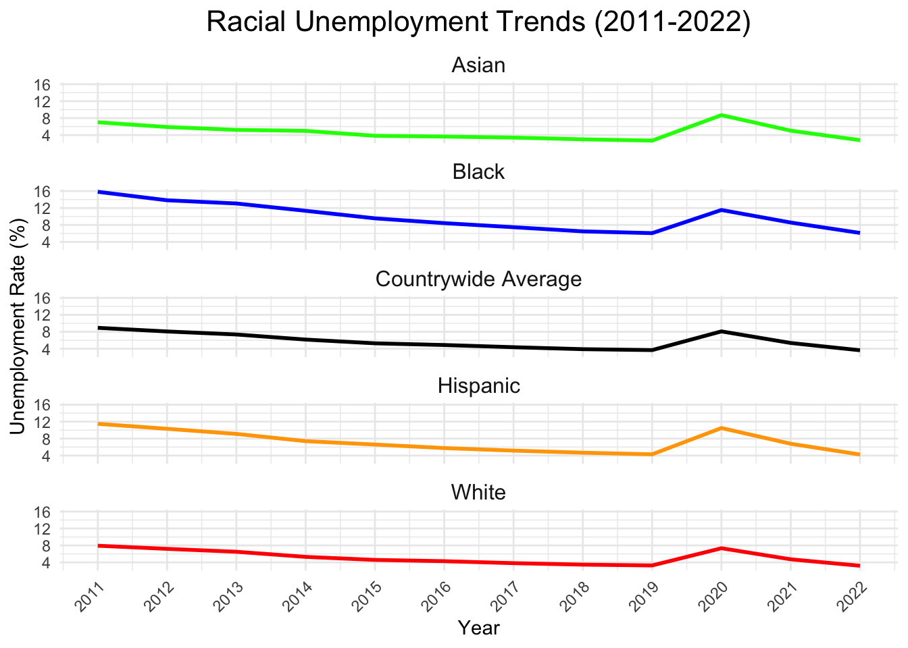

Code
library(fredr)
library(tidyverse)
library(knitr)
library(dplyr)
library(ggplot2)
library(gt)
library(sf)
library(tmap)
library(tigris)
library(gifski)
library(ggrepel)
library(gganimate)
library(tools)
library(kableExtra)This report walks you through the specific analytical question of “What does unemployment look like over time?” supporting the overarching question of “What demographic factors best explain unemployment trends across NYC?”.
The focus of this report is to look at unemployment over time, from the years 2011 through 2022, on a countrywide level. It explores unemployment overall and then hones in on a few demographic specific unemployment rates, which include: unemployment by race, gender, and be race x gender.
This report will discuss the data acquired, any pre-processing and cleaning done on the data, and how this data was analyzed to draw conclusions on unemployment trends over time.
The unemployment rate data for this analysis was obtained from the Federal Reserve Economic Data (FRED) API. FRED provides unemployment rates by demographic and geographic categories. Each unemployment rate is associated with a unique series ID, which was used to query the API and retrieve relevant data. Using the API call, we accessed these series programmatically, ensuring automated and consistent data retrieval.
You will find that for every unemployment data set retrieved, the same pre-processing and cleaning was computed to allow for consistent analysis. This involved using the filter() function from the dplyr package, which is part of the tidyverse collection of R packages, to filter our data to only include data from 2011 to 2022. Within each year, the average unemployment value was computed using the mean() function, capturing an aggregated measure representative of the year’s unemployment trends. This was done as an effort to remain consistent with the data available to answer the other analytical questions of the project.
The following libraries are all necessary libraries needed throughout the entire report.
library(fredr)
library(tidyverse)
library(knitr)
library(dplyr)
library(ggplot2)
library(gt)
library(sf)
library(tmap)
library(tigris)
library(gifski)
library(ggrepel)
library(gganimate)
library(tools)
library(kableExtra)The code below retrieves Countrywide Unemployment Rates.
The series ID for the nationwide unemployment rate is “UNRATE”. This is the Civilian Unemployment Rate.
The unemployment rate represents the number of unemployed as a percentage of the labor force. Labor force data are restricted to people 16 years of age and older, who currently reside in 1 of the 50 states or the District of Columbia, who do not reside in institutions (e.g., penal and mental facilities, homes for the aged), and who are not on active duty in the Armed Forces.
# Retrieve monthly U.S. unemployment rate data
CW_unemployment_data <- fredr_series_observations(series_id = "UNRATE")
# Filter the data for the desired range
CW_unemployment_data_filtered <- CW_unemployment_data |>
filter(date >= as.Date("2011-01-01") & date < as.Date("2023-01-01"))
CW_unemployment_yearly <- CW_unemployment_data_filtered |>
mutate(year = lubridate::year(date)) |>
group_by(year) |>
summarize(average_unemployment = mean(value))U.S. Bureau of Labor Statistics, Unemployment Rate [UNRATENSA], retrieved from FRED, Federal Reserve Bank of St. Louis; https://fred.stlouisfed.org/series/UNRATENSA, December 10, 2024.
To generate the line plot found below, the dataset CW_unemployment_data_filtered was used, with use of ggplot2 to create the visualization. The geom_line function was used to connect unemployment rate values along the timeline, and labels were added to provide context for the chart’s axes and title.
The output indicates a steady decline in the unemployment rate from 2011 through earliy 2020. The sharp spike in 2020 can be attributed to the COVID-19 pandemic’s economnic disruption. Post-2020, the unemployment rate decreased rapidly, which exemplifies the economic recovery efforts taken post-pandemic.
library(ggplot2)
ggplot(CW_unemployment_data_filtered, aes(x = date, y = value)) +
geom_line() +
labs(title = "U.S. Unemployment Rate Over Time (2011-2022)",
x = "Year",
y = "Unemployment Rate (%)") +
theme_minimal()
The series below takes the US unemployment rates and adds a recession indicator to the dataset.
# Retrieve U.S. recession indicator data
recession_data <- fredr_series_observations(series_id = "USREC")
# Merge with unemployment data
unemployment_recession <- merge(CW_unemployment_data_filtered, recession_data, by = "date", suffixes = c("_unemp", "_rec"))
ggplot(unemployment_recession, aes(x = date, y = value_unemp)) +
geom_line(color = "blue") +
geom_rect(data = unemployment_recession |> filter(value_rec == 1),
aes(xmin = date, xmax = lead(date), ymin = -Inf, ymax = Inf),
fill = "red", alpha = 0.2) +
labs(title = "U.S. Unemployment Rate with Recession Periods (2011-Present)",
x = "Year",
y = "Unemployment Rate (%)") +
theme_minimal()avg_unemployment_plot <- ggplot(CW_unemployment_yearly, aes(x = year, y = average_unemployment)) +
geom_line() +
labs(title = "Average Yearly U.S. Unemployment Rate (2011-2023)",
x = "Year",
y = "Average Unemployment Rate (%)") +
theme_minimal()
#ggsave("average_yearly_US_unemployment_rate.png", plot=avg_unemployment_plot, width =6, height=4)
avg_unemployment_plot
The code belows involves the single usage of US Census Data in answering this speicifc analytical question of the project. The file obtained is a US states shapfile. The file contains a geometric column which identifies geographic boundaries. These geographic boundaries serve to later be joined with US data to then display the patterns across the US in a map format.
library(sf)
if(!file.exists("states.zip")){
download.file("https://www2.census.gov/geo/tiger/GENZ2018/shp/cb_2018_us_state_500k.zip",
destfile="states.zip",
method="curl")
}
##-
td <- tempdir();
zip_contents <- unzip("states.zip",
exdir = td)
fname_shp <- zip_contents[grepl("shp$", zip_contents)]
zip_sf <- read_sf(fname_shp)The next few steps involve the searching process that went into the data acquisiton. In order to find all available unemployment data, I made use of the fred_series_search_text() function to find the series_ID for datasets involving the unemployment rate.
# Search for unemployment rate-related series
unemployment_search <- fredr_series_search_text("unemployment rate")
# Create the table and style it
kable(head(unemployment_search[,1:5]), format = "html") |>
kable_styling(
bootstrap_options = c("striped", "hover", "condensed", "responsive"),
full_width = FALSE
)| id | realtime_start | realtime_end | title | observation_start |
|---|---|---|---|---|
| UNRATE | 2024-12-15 | 2024-12-15 | Unemployment Rate | 1948-01-01 |
| UNRATENSA | 2024-12-15 | 2024-12-15 | Unemployment Rate | 1948-01-01 |
| LNS14000006 | 2024-12-15 | 2024-12-15 | Unemployment Rate - Black or African American | 1972-01-01 |
| LNU04000006 | 2024-12-15 | 2024-12-15 | Unemployment Rate - Black or African American | 1972-01-01 |
| NROU | 2024-12-15 | 2024-12-15 | Noncyclical Rate of Unemployment | 1949-01-01 |
| CAUR | 2024-12-15 | 2024-12-15 | Unemployment Rate in California | 1976-01-01 |
Filter for state-level unemployment rates
# Filter for state-level unemployment rate series
state_unemployment_series <- unemployment_search |>
filter(grepl("unemployment rate", title, ignore.case = TRUE)) |>
filter(grepl("state", title, ignore.case = TRUE))
# Creating and stlying table
kable(head(state_unemployment_series[,1:5]), format = "html") |>
kable_styling(
bootstrap_options = c("striped", "hover", "condensed", "responsive"),
full_width = FALSE
)| id | realtime_start | realtime_end | title | observation_start |
|---|---|---|---|---|
| M0892AUSM156SNBR | 2024-12-15 | 2024-12-15 | Unemployment Rate for United States | 1929-04-01 |
| Q0892BUSQ156SNBR | 2024-12-15 | 2024-12-15 | Unemployment Rate for United States | 1940-04-01 |
| M0892BUSM156SNBR | 2024-12-15 | 2024-12-15 | Unemployment Rate for United States | 1940-01-01 |
| M0892CUSM156NNBR | 2024-12-15 | 2024-12-15 | Unemployment Rate for United States | 1947-01-01 |
| LRUN64TTUSQ156S | 2024-12-15 | 2024-12-15 | Infra-Annual Labor Statistics: Unemployment Rate Total: From 15 to 64 Years for United States | 1970-01-01 |
| LRUN64TTUSM156S | 2024-12-15 | 2024-12-15 | Infra-Annual Labor Statistics: Unemployment Rate Total: From 15 to 64 Years for United States | 1970-01-01 |
From looking through this list, realized we need all the ids that start with the state abbreviation followed by “UR” - each of these series id’s gives us the unemployment for each state over time. The next step does additional filtering.
# List of state abbreviations
state_abbreviations <- c(
"AL", "AK", "AZ", "AR", "CA", "CO", "CT", "DE", "FL", "GA",
"HI", "ID", "IL", "IN", "IA", "KS", "KY", "LA", "ME", "MD",
"MA", "MI", "MN", "MS", "MO", "MT", "NE", "NV", "NH", "NJ",
"NM", "NY", "NC", "ND", "OH", "OK", "OR", "PA", "RI", "SC",
"SD", "TN", "TX", "UT", "VT", "VA", "WA", "WV", "WI", "WY"
)
# Filter for state unemployment series, need UR for seasonally adjusted
state_unemployment_series <- unemployment_search |>
filter(id %in% paste0(state_abbreviations, "UR"))
# Create the table and style it
kable(head(state_unemployment_series[,1:5]), format = "html") |>
kable_styling(
bootstrap_options = c("striped", "hover", "condensed", "responsive"),
full_width = FALSE
)| id | realtime_start | realtime_end | title | observation_start |
|---|---|---|---|---|
| CAUR | 2024-12-15 | 2024-12-15 | Unemployment Rate in California | 1976-01-01 |
| TXUR | 2024-12-15 | 2024-12-15 | Unemployment Rate in Texas | 1976-01-01 |
| NYUR | 2024-12-15 | 2024-12-15 | Unemployment Rate in New York | 1976-01-01 |
| FLUR | 2024-12-15 | 2024-12-15 | Unemployment Rate in Florida | 1976-01-01 |
| PAUR | 2024-12-15 | 2024-12-15 | Unemployment Rate in Pennsylvania | 1976-01-01 |
| OHUR | 2024-12-15 | 2024-12-15 | Unemployment Rate in Ohio | 1976-01-01 |
Using the filtered list of series IDs (as shown above) to fetch unemployment data for each state.
# Fetch unemployment data for all states
state_unemployment_data <- lapply(state_unemployment_series$id, function(series_id) {
fredr(
series_id = series_id,
observation_start = as.Date("2011-01-01"),
observation_end = as.Date("2022-12-31")
)
})
# Add state abbreviation to each dataframe
state_unemployment_data <- mapply(
function(data, id) {
data$state <- substr(id, 1, 2) # Extract state abbreviation
data
},
state_unemployment_data,
state_unemployment_series$id,
SIMPLIFY = FALSE
)
# Combine into a single dataframe
state_unemployment_df <- do.call(rbind, state_unemployment_data)
# Creating and styling table
kable(head(state_unemployment_df[,1:5]), format = "html") |>
kable_styling(
bootstrap_options = c("striped", "hover", "condensed", "responsive"),
full_width = FALSE
)| date | series_id | value | realtime_start | realtime_end |
|---|---|---|---|---|
| 2011-01-01 | CAUR | 12.3 | 2024-12-15 | 2024-12-15 |
| 2011-02-01 | CAUR | 12.2 | 2024-12-15 | 2024-12-15 |
| 2011-03-01 | CAUR | 12.1 | 2024-12-15 | 2024-12-15 |
| 2011-04-01 | CAUR | 12.0 | 2024-12-15 | 2024-12-15 |
| 2011-05-01 | CAUR | 12.0 | 2024-12-15 | 2024-12-15 |
| 2011-06-01 | CAUR | 12.0 | 2024-12-15 | 2024-12-15 |
Cleaning up the data to keep only the relevant columns and compute yearly averages for each state from 2011 to 2022, which is the same process as outlined above, which we conduct for each dataset.
library(dplyr)
# Clean and select relevant columns
state_unemployment_clean <- state_unemployment_df |>
select(state, date, value) |>
rename(
unemployment_rate = value # Rename value to unemployment_rate
) |>
mutate(
year = format(as.Date(date), "%Y") # Extract year from the date
)
# Compute yearly averages for each state
state_unemployment_yearly <- state_unemployment_clean |>
filter(year >= 2011 & year <= 2022) |>
group_by(state, year) |>
summarize(
avg_unemployment = mean(unemployment_rate, na.rm = TRUE),
.groups = "drop"
)
#creating and styling table
kable(head(state_unemployment_yearly), format = "html") |>
kable_styling(
bootstrap_options = c("striped", "hover", "condensed", "responsive"),
full_width = FALSE
)| state | year | avg_unemployment |
|---|---|---|
| AK | 2011 | 7.733333 |
| AK | 2012 | 7.250000 |
| AK | 2013 | 6.991667 |
| AK | 2014 | 6.741667 |
| AK | 2015 | 6.275000 |
| AK | 2016 | 6.600000 |
Performing a check on the data we create a table showing the number of yearly records for each state. We can group the data by state and count the distinct years.
library(dplyr)
library(gt)
# Count the number of years for each state
state_yearly_counts <- state_unemployment_yearly |>
group_by(state) |>
summarize(
year_count = n(), # Count the number of records (years)
.groups = "drop"
)
# Create gt table
state_yearly_counts |>
gt() |>
tab_header(
title = "Yearly Records Count by State",
subtitle = "Number of years with unemployment data (2011-2022)"
)| Yearly Records Count by State | |
|---|---|
| Number of years with unemployment data (2011-2022) | |
| state | year_count |
| AK | 12 |
| AL | 12 |
| AR | 12 |
| AZ | 12 |
| CA | 12 |
| CO | 12 |
| CT | 12 |
| DE | 12 |
| FL | 12 |
| GA | 12 |
| HI | 12 |
| IA | 12 |
| ID | 12 |
| IL | 12 |
| IN | 12 |
| KS | 12 |
| KY | 12 |
| LA | 12 |
| MA | 12 |
| MD | 12 |
| ME | 12 |
| MI | 12 |
| MN | 12 |
| MO | 12 |
| MS | 12 |
| MT | 12 |
| NC | 12 |
| ND | 12 |
| NE | 12 |
| NH | 12 |
| NJ | 12 |
| NM | 12 |
| NV | 12 |
| NY | 12 |
| OH | 12 |
| OK | 12 |
| OR | 12 |
| PA | 12 |
| RI | 12 |
| SC | 12 |
| SD | 12 |
| TN | 12 |
| TX | 12 |
| UT | 12 |
| VA | 12 |
| VT | 12 |
| WA | 12 |
| WI | 12 |
| WV | 12 |
| WY | 12 |
# Create the table and style it. trying additional formatting as head function wasnt working correctly
kable(state_yearly_counts |> head(5), format = "html") |>
kable_styling(
bootstrap_options = c("striped", "hover", "condensed", "responsive"),
full_width = FALSE
)| state | year_count |
|---|---|
| AK | 12 |
| AL | 12 |
| AR | 12 |
| AZ | 12 |
| CA | 12 |
Now we create an interactive map using the data. The steps involve the following:
library(sf)
library(dplyr)
library(tmap)
library(tigris)
#rename existing shapefile
us_states <- zip_sf # This is already read in from your code
#adjusting state column to match naming convention of state yearly unemployment table
us_states <- us_states |>
mutate(state = STUSPS)
#adjusting geometry for Alaska and Hawaii
us_states <- shift_geometry(
input_sf = us_states,
geoid_column = "GEOID",
preserve_area = FALSE, #scales Alaksa and Hawaii proportionately
position = "below" #places below continential US
)
#merging unemployment data with shapefile
map_data <- us_states |>
left_join(state_unemployment_yearly, by = "state")
#remove rows with missing values in map_data
map_data <- map_data |>
filter(!is.na(year) & !is.na(avg_unemployment))
#creating interactive map
#tmap_mode("view") # Enable interactive mode for the map
tm <- tm_shape(map_data) +
tm_polygons(
col = "avg_unemployment", # Column to use for shading
title = "Unemployment Rate (%)",
palette = "Blues", # Color palette for the map
style = "quantile", # Break the shading into quantiles
popup.vars = c("State" = "state", "Year" = "year", "Rate" = "avg_unemployment")
) +
tm_facets(by = "year") + # Animate changes over years
tm_view(set.view = c(-98, 38, 4)) # Center and zoom the map on the US
# Render the map
tm
The visualization above helps answer the question of “What does unemployment look like over time?” by presenting a clear and dynamic picture of how unemployment has changed over time across the United States. The map highlights regional trends, such as states with persistently high or low unemployment, and captures national shifts, such as the overall increase in 2020 and decline thereafter.
While this code was effective, I displayed the same results via an animation.
library(sf)
library(dplyr)
library(tmap)
library(tools)
library(gifski)
library(tigris)
#rename existing shapefile
us_states <- zip_sf # This is already read in from code
#adjusting state column to match naming convention of state yearly unemployment table
us_states <- us_states |>
mutate(state = STUSPS)
#adjusting geometry for Alaska and Hawaii
us_states <- shift_geometry(
input_sf = us_states,
geoid_column = "GEOID",
preserve_area = FALSE, #scales Alaksa and Hawaii proportionately
position = "below" #places below continential US
)
#merging unemployment data with shapefile
map_data <- us_states |>
left_join(state_unemployment_yearly, by = "state")
#remove rows with missing values in map_data
map_data <- map_data |>
filter(!is.na(year) & !is.na(avg_unemployment))
#creating interactive map
tmap_mode("plot") # This step is important - switch to static plotting mode
#define color palette
unemployment_palette <- "Blues"
#create animated map
anim <- (map_data) |>
tm_shape() +
tm_polygons(
col = "avg_unemployment", # Column for shading
title = "Unemployment Rate (%)",
palette = unemployment_palette, # Color palette
style = "quantile" # Quantile-based shading
) +
tm_facets(along = "year", free.coords = FALSE) +
tm_text("state", size = 0.5, col = "white", fontface = "bold") + # Add state labels
tm_layout(
legend.outside = TRUE, # Place the legend outside the map
legend.outside.position = "right", # Position the legend explicitly to the right
legend.text.size = 0.8, # Adjust legend text size for clarity
legend.title.size = 1, # Adjust legend title size
frame = FALSE, # Remove border around the map
outer.margins = c(0.01, 0.01, 0.01, 0.08) # Add extra space to the right for the legend
) +
tm_view(bbox = st_bbox(map_data) * c(1.2, 1.2, 1, 1))
# Generate the animated GIF
tmap_animation(anim, delay = 50, filename = "unemployment_animation-dec12.gif")knitr::include_graphics("unemployment_animation-dec12.gif")
This animated map provides a clear and intuitive answer to the question “What does unemployment look like over time?” by offering a visual representation of unemployment trends across the United States from one year to the next. The map uses color shading to show the unemployment rate for each state, with darker shades indicating higher unemployment and lighter shades representing lower rates. By watching the animation, viewers can easily observe how unemployment changes over time, on a national and state level.
The animation highlights major patterns, such as regions that experience persistently high or low unemployment and signifcant countrywide shifts, such as in 2020, which we know can be attributed to the COVID-19 pandemic.
This visual contributes to our overarching question in a fashion of not visually showcasing the “what” of unemployment trends but specifically the “where” and “when”.
Creating an additional visualization where we compare average unemployment rates from 2011 to 2022 statewide against countrywide
# Load necessary library
library(ggplot2)
library(ggrepel) #for better placement of text labels
#ensuring year is treated as numeric due to plotting issies
state_unemployment_yearly$year <- as.numeric(state_unemployment_yearly$year)
CW_unemployment_yearly$year <- as.numeric(CW_unemployment_yearly$year)
# Labeling 2 max and 2 min 2011 unemployment states, too much overlap to label all
extreme_states_2011 <- state_unemployment_yearly |>
filter(year == 2011) |>
arrange(avg_unemployment) |>
slice(c(1:2, (n() - 1):n())) #2 min and 2 max states
# Create the plot
ggplot() +
# Add state unemployment lines
geom_line(
data = state_unemployment_yearly,
aes(x = year, y = avg_unemployment, group = state),
color = "gray", size = 0.5, alpha = 0.7
) +
#Adding New York unemployment line in light red
geom_line(
data = state_unemployment_yearly |> filter(state == "NY"),
aes(x = year, y = avg_unemployment, color = "New York"),
size = 0.8
) +
# Add countrywide average unemployment line
geom_line(
data = CW_unemployment_yearly,
aes(x = year, y = average_unemployment),
color = "black", size = 1.5
) +
# Add state labels for 2 max and 2 min states in 2011
geom_text_repel(
data = extreme_states_2011,
aes(x = 2011, y = avg_unemployment, label = state),
size = 3, color = "gray", hjust = 1.2, #pushes labels slightly left
) +
# Set x-axis to whole years
scale_x_continuous(breaks = seq(2011, 2022, by = 1), limits = c(2011, 2023)) +
# Adjust y-axis zoom (set appropriate limits as needed)
scale_y_continuous(limits = c(2, 14)) + #zooms in on the unemployment range
# Add labels, title and legend
labs(
title = "Unemployment Rates by State and Countrywide (2011-2022)",
x = "Year",
y = "Unemployment Rate (%)",
color = "Legend"
) +
# Define colors for legend
scale_color_manual(
values = c("Other States" = "gray", "New York" = "red", "Countrywide"="black")
) +
# Adjusting theme
theme_minimal() +
theme(
plot.title = element_text(
hjust = 0.5, # Center the title
size = 14, # Increase title size
margin = margin(b = 20) # Add space below the title
),
axis.text.x = element_text(angle = 45, hjust = 1), # Rotate x-axis labels
legend.position = "right", # Move the legend to the right
legend.box = "vertical", # Arrange the legend vertically
legend.text = element_text(size = 8),
legend.title = element_text(size = 9),
legend.margin = margin(t = 10, b = 10, unit = "pt"), # Add internal space in the legend
legend.spacing.y = unit(5, "pt"), # Add vertical spacing between legend items
plot.margin = margin(t = 30, r = 50, b = 20, l = 20, unit = "pt") # Adjust margins for spacing
)
Due to several issues with the legend displaying each field, we added a few legend override fields to ensure each of the 3 lines and their labels appeared in the legend.
ggplot() +
geom_line(
data = state_unemployment_yearly,
aes(x = year, y = avg_unemployment, group = state, color = "Other States"),
size = 0.5, alpha = 0.7
) +
geom_line(
data = state_unemployment_yearly |> filter(state == "NY"),
aes(x = year, y = avg_unemployment, color = "New York"),
size = 0.8
) +
geom_line(
data = CW_unemployment_yearly,
aes(x = year, y = average_unemployment, color = "Countrywide"),
size = 1.5
) +
scale_x_continuous(breaks = seq(2011, 2022, by = 1), limits = c(2011, 2023)) +
scale_y_continuous(limits = c(2, 14)) +
labs(
title = "Unemployment Rates by State and Countrywide (2011-2022)",
x = "Year",
y = "Unemployment Rate (%)",
color = "Legend"
) +
scale_color_manual(
values = c(
"Other States" = "gray",
"New York" = "red",
"Countrywide" = "black"
),
breaks = c("Other States", "New York", "Countrywide"),
labels = c("Other States", "New York", "Countrywide")
) +
theme_minimal() +
theme(
plot.title = element_text(hjust = 0.5, size = 14, margin = margin(b = 10)),
axis.text.x = element_text(angle = 45, hjust = 1),
legend.position = "right",
legend.box = "vertical",
legend.text = element_text(size = 8),
legend.title = element_text(size = 9),
plot.margin = margin(t = 30, r = 50, b = 20, l = 20, unit = "pt")
) +
guides(
color = guide_legend(override.aes = list(
linetype = c("solid", "solid", "solid"),
size = c(0.5, 0.8, 1.5),
color = c("gray", "red", "black")
))
)
This visualization is the same data as the animated visualization - average yearly unemployment rates for each state and the United States overall from 2011 to 2022. This visualization draws focus to New York and the Countrywide average through the red and black lines, respectively. This layered design makes it easy to compare New York’s performance against the broader trends at both the state and national levels.
This chart shows a steady decline in unemployment across most states, including New York, from 2011 until 2020. The sharp spike in 2020 reflects the impact of the COVID-19 pandemic, which we have now seen several times throughout the data.
An interesting result is how closely New York’s average unemployment follows to the countrywide unemployment rates up until 2020, when the pandemic took place. Many of us were a part of, or know of, the drastic economic effect the pandemic had on New York City, which encompasses much of the population and economy of New York state. We also see that, since then, New York has still remained above the countrywide unemployment level, which can perhaps be attributed to the post-pandemic continued attempt at economic recovery.
We now explore different demographics on a countrywide level, keeping in mind our input variables for our predictive model: gender, race, and education.
Race
Unemployment Rate - Black or African American
library(dplyr)
black_unemployment_data <- fredr_series_observations(series_id = "LNS14000006")
# Filter the data for 2011-2022
black_unemployment_data_filtered <- black_unemployment_data |>
filter(date >= as.Date("2011-01-01") & date < as.Date("2023-01-01"))
black_unemployment_yearly <- black_unemployment_data_filtered |>
mutate(year = lubridate::year(date)) |>
group_by(year) |>
summarize(average_unemployment = mean(value))
# Creating and styling table
kable(head(black_unemployment_yearly), format = "html") |>
kable_styling(
bootstrap_options = c("striped", "hover", "condensed", "responsive"),
full_width = FALSE
)| year | average_unemployment |
|---|---|
| 2011 | 15.825000 |
| 2012 | 13.825000 |
| 2013 | 13.066667 |
| 2014 | 11.341667 |
| 2015 | 9.558333 |
| 2016 | 8.425000 |
U.S. Bureau of Labor Statistics, Unemployment Rate - Black or African American [LNS14000006], retrieved from FRED, Federal Reserve Bank of St. Louis; https://fred.stlouisfed.org/series/LNS14000006, December 8, 2024
Creating an area chart as a visually appealing way to emphasize the changing rates of Black and African American unemployment over time.
library(ggplot2)
ggplot(data = black_unemployment_yearly, aes(x = year, y = average_unemployment)) +
geom_area(fill = "lightblue", alpha = 0.6) +
geom_line(color = "blue", size = 1) +
labs(
title = "US Black and African American Unemployment Rates Over Time",
x = "Year",
y = "Average Unemployment Rate (%)"
) +
theme_minimal() +
theme(
plot.title = element_text(size = 16, face = "bold"), # Adjust title size
axis.text.x = element_text(size = 10), # Adjust x-axis label size
axis.title.x = element_text(size = 12), # Adjust x-axis title size
axis.text.y = element_text(size = 10), # Adjust y-axis label size
axis.title.y = element_text(size = 12) # Adjust y-axis title size
) +
scale_x_continuous(
breaks = seq(2011, 2022, by = 1) # Display only whole years
)
The below code involves downloading, extracting and loading a US states shapefile from the US Census Bureau.
library(tmap)
library(sf)
library(dplyr)
library(tigris)
library(tools)
library(gifski)
#adjusting geometry in us_states for Alaska and Hawaii
us_states <- shift_geometry(
input_sf = us_states,
geoid_column = "GEOID",
preserve_area = FALSE, #scales Alaska and Hawaii proportionately
position = "below" #places AK and HI underneath continental US
)
#cartesian join to apply the same rate to all states for each year
black_unemployment_map_data <- us_states |>
mutate(key = 1) |> # Add a key for the cartesian join
left_join(
black_unemployment_yearly |> mutate(key = 1),
by = "key"
) |>
select(geometry, year, average_unemployment)
#remove rows with missing values in map_data
black_unemployment_map_data <- black_unemployment_map_data |>
filter(!is.na(year) & !is.na(average_unemployment))
#set `tmap` mode to plot (required for animation)
tmap_mode("plot")
#create the animated map
us_map <- tm_shape(black_unemployment_map_data) +
tm_polygons(
col = "average_unemployment", # Column for shading
title = "Unemployment Rate (%)",
palette = "YlOrRd", # Color palette
style = "quantile", # Break into quantiles
popup.vars = c(
"Year" = "year",
"Unemployment Rate" = "average_unemployment"
)
) +
tm_facets(along = "year") + # Animate over years
tm_layout(
title = "Black Unemployment Rates in the US (2011–2022)",
legend.outside = TRUE,
frame = FALSE
)
# Create animation
tmap_animation(
us_map,
delay = 50, # Delay between frames in milliseconds
filename = "black_unemployment.gif")knitr::include_graphics("black_unemployment.gif")The output above displays the change in black unemployment rates over time, from 2011 to 2022. It was determined a different visual would be more useful, in comparing black unemployment rates to the other races, so additional formatting was not input into the code to make the gif more effective.
If displaying this in presentation, the visual would be more useful with resizing and a legend.
White unemployment rates
library(dplyr)
white_unemployment_data <- fredr_series_observations(series_id = "LNS14000003")
# Filter the data for the desired range
white_unemployment_data_filtered <- white_unemployment_data |>
filter(date >= as.Date("2011-01-01") & date < as.Date("2023-01-01"))
white_unemployment_yearly <- white_unemployment_data_filtered |>
mutate(year = lubridate::year(date)) |>
group_by(year) |>
summarize(average_unemployment = mean(value))Year-over-year, we see the black unemployment rate surpasses the white unemployment rate by a sizeable amount. We move on later in the report to display these trends differently, taking a look at the difference compared to the countrywide unemployment rate.
library(ggplot2)
# Combine both datasets into a single table for easier plotting
combined_unemployment <- rbind(
black_unemployment_yearly |> mutate(group = "Black"),
white_unemployment_yearly |> mutate(group = "White")
)
# Creating bar chart
ggplot(combined_unemployment, aes(x = factor(year), y = average_unemployment, fill = group)) +
geom_bar(stat = "identity", position = "dodge") + # Side-by-side bars
scale_fill_manual(values = c("Black" = "blue", "White" = "red")) +
labs(
title = "Comparison of Black and White Unemployment Rates by Year (2011–2022)",
x = "Year",
y = "Average Unemployment Rate (%)",
fill = "Group"
) +
theme_minimal(base_size = 14) +
theme(
plot.title = element_text(size = 16, face = "bold"),
legend.position = "top",
axis.text.x = element_text(angle = 45, hjust = 1)
)Hispanic or Latino Unemployment Rates
hispanic_unemployment_data <- fredr_series_observations(series_id = "LNS14000009")
# Filter the data 2011-2022
hispanic_unemployment_data_filtered <- hispanic_unemployment_data |>
filter(date >= as.Date("2011-01-01") & date < as.Date("2023-01-01"))
hispanic_unemployment_yearly <- hispanic_unemployment_data_filtered |>
mutate(year = lubridate::year(date)) |>
group_by(year) |>
summarize(average_unemployment = mean(value))
# Create the table and style it
kable(head(hispanic_unemployment_yearly), format = "html") |>
kable_styling(
bootstrap_options = c("striped", "hover", "condensed", "responsive"),
full_width = FALSE
)| year | average_unemployment |
|---|---|
| 2011 | 11.491667 |
| 2012 | 10.316667 |
| 2013 | 9.108333 |
| 2014 | 7.400000 |
| 2015 | 6.600000 |
| 2016 | 5.766667 |
Asian Unemployment Rates
library(dplyr)
asian_unemployment_data <- fredr_series_observations(series_id = "LNS14032183")
# Filter the data 2011-2022
asian_unemployment_data_filtered <- asian_unemployment_data |>
filter(date >= as.Date("2011-01-01") & date < as.Date("2023-01-01"))
asian_unemployment_yearly <- asian_unemployment_data_filtered |>
mutate(year = lubridate::year(date)) |>
group_by(year) |>
summarize(average_unemployment = mean(value))
# Creating and styling table
kable(head(asian_unemployment_yearly), format = "html") |>
kable_styling(
bootstrap_options = c("striped", "hover", "condensed", "responsive"),
full_width = FALSE
)| year | average_unemployment |
|---|---|
| 2011 | 7.016667 |
| 2012 | 5.900000 |
| 2013 | 5.225000 |
| 2014 | 4.983333 |
| 2015 | 3.825000 |
| 2016 | 3.641667 |
Lets take a look at a faceted line plot to explore the differences in unemployment rates across each race.
library(ggplot2)
library(dplyr)
# Adding a 'group' column to each dataset
CW_unemployment_yearly$group <- "Countrywide Average"
black_unemployment_yearly$group <- "Black"
asian_unemployment_yearly$group <- "Asian"
hispanic_unemployment_yearly$group <- "Hispanic"
white_unemployment_yearly$group <- "White"
# Combine all datasets into one
combined_racial_unemployment <- bind_rows(
CW_unemployment_yearly,
black_unemployment_yearly,
asian_unemployment_yearly,
hispanic_unemployment_yearly,
white_unemployment_yearly
)
# Creating the faceted line plot
ggplot(data = combined_racial_unemployment, aes(x = year, y = average_unemployment)) +
geom_line(aes(color = group), size = 1) + # Line for each group
scale_color_manual(
values = c(
"Countrywide Average" = "black",
"Black" = "blue",
"Asian" = "green",
"Hispanic" = "orange",
"White" = "red"
)
) +
facet_wrap(~ group, ncol = 1, scales = "fixed") + # Facet by group
scale_x_continuous(
breaks = seq(2011, 2022, by=1), #display each year
limits = c(2011,2022)
) +
labs(
title = "Racial Unemployment Trends (2011-2022)",
x = "Year",
y = "Unemployment Rate (%)",
color = "Group"
) +
theme_minimal() +
theme(
plot.title = element_text(hjust = 0.5, size = 16), # Center and size the title
axis.text.x = element_text(angle = 45, hjust = 1), # Rotate x-axis labels
legend.position = "none", #no legend
strip.text = element_text(size = 12) #adjusts facet labels
)
Facets do not get our point across, so switching over to a line plot.
library(ggplot2)
library(dplyr)
# Add a 'group' column to each dataset
CW_unemployment_yearly$group <- "Countrywide Average"
black_unemployment_yearly$group <- "Black"
asian_unemployment_yearly$group <- "Asian"
hispanic_unemployment_yearly$group <- "Hispanic"
white_unemployment_yearly$group <- "White"
# Combine all datasets into one
combined_racial_unemployment <- bind_rows(
CW_unemployment_yearly,
black_unemployment_yearly,
asian_unemployment_yearly,
hispanic_unemployment_yearly,
white_unemployment_yearly
)
# Create a single-panel line plot
ggplot(data = combined_racial_unemployment, aes(x = year, y = average_unemployment, color = group)) +
geom_line(data = combined_racial_unemployment |> filter(group == "Countrywide Average"), size = 4) + # Bold line for countrywide average
geom_line(data = combined_racial_unemployment |> filter(group != "Countrywide Average"), size = .6) + # Normal lines for other groups
scale_color_manual(
values = c(
"Countrywide Average" = "grey",
"Black" = "blue",
"Asian" = "green",
"Hispanic" = "orange",
"White" = "red"
)
) +
scale_x_continuous(
breaks = seq(2011, 2022, by = 1), # Display each year as a tick
limits = c(2011, 2022)
) +
scale_y_continuous(limits = c(0, 15)) + # Adjust y-axis range as needed
labs(
title = "Unemployment Trends by Race (2011-2022)",
x = "Year",
y = "Unemployment Rate (%)",
color = "Group"
) +
theme_minimal() +
theme(
plot.title = element_text(hjust = 0.5, size = 16), # Center the title
axis.text.x = element_text(angle = 45, hjust = 1) # Rotate x-axis labels
)
This visualization explores one of the three demographic factors, race, which we chose to explore as an attempt at drawing conclusions to our overarching question of what demographic factors best explain NYC’s unemployment trends.
This visual gives us insight into the unemployment trends across racial groups in the United States from 2011 to 2022, and perhaps sheds light to how unemployment disproportionately impacts marginalized groups.
The gray line represents the countrywide average unemployment rate, displayed prominently for context. The colored lines represent unemployment trends for specific racial groups: Black (blue), Hispanic (orange), White (red), and Asian (green).
The chart reveals several insights. First, unemployment rates for Black individuals consistently remain higher than those for other groups and the countrywide average. Hispanic unemployment rates generally follow a similar trajectory but at slightly lower levels. On the other hand, Asian and White unemployment rates tend to stay below the countrywide average, indicating comparitively lower unemployment levels for these groups overall.
This gives us our first into race as one of our three demographic factors we continue to explore through each analytical question.
Lets look at black vs white specifically, to see if our results line up with the article we used as motivation for our topic. This generates a visualization which shows the difference between black and white specific unemployment rates against the countrywide average over time.
library(ggplot2)
library(dplyr)
# Filter the combined_racial_unemployment table
filtered_unemployment <- combined_racial_unemployment |>
filter(group %in% c("Countrywide Average", "Black", "White"))
# Create a new data frame for the segments
segments_unemployment <- filtered_unemployment |>
filter(group != "Countrywide Average") |>
left_join(filtered_unemployment |> filter(group == "Countrywide Average"), by = "year", suffix = c("", "_avg")) |>
select(year, group, average_unemployment, average_unemployment_avg)
# Create the plot
ggplot(filtered_unemployment, aes(x = year, y = average_unemployment, color = group)) +
geom_line(size = 1.2) +
geom_point(size = 2) +
geom_segment(data = segments_unemployment, aes(x = year, xend = year, y = average_unemployment, yend = average_unemployment_avg), linetype = "dashed", size = 0.8) +
theme_minimal() +
labs(title = "Unemployment Rates and Differences from Countrywide Average",
x = "Year",
y = "Unemployment Rate",
color = "Group") +
scale_color_manual(values = c("Countrywide Average" = "grey", "Black" = "blue", "White" = "red")) +
scale_x_continuous(breaks = seq(2011, 2022, by = 1)) +
theme(
plot.title = element_text(hjust = 0.5, size = 16), # Center the title
axis.text.x = element_text(angle = 45, hjust = 1) # Rotate x-axis labels
)
This visualization highlights unemployment rates over time for black, white and the countrywide average groups, which we find in other visualizations as well. This visual specifically highlights the gaps between each group’s rates and the national average with dashed lines. The blue line for Black unemployment rates consistently remains above both the national average (grey line) and White unemployment rates (red line), illustrating a persistent disparity.
This analysis contributes to our overall study by showcasing the persistent impact of race as a key factor in unemployment disparities. While this chart focuses on nationwide data, it provides a framework for understnading how similar trends might manifest within NYC. Identifying such disparities at the national level sets the stage for further analysis to explore whether similar racial gaps exist in NYC’s unemployment data, helping to answer the overarching question about the demographic factors driving these trends.
Gender
Pulling gender based US historic seasonally adjusted unemployment rates.
Below pulls the seasonally adjusted unemployment percentage for women aged 20 years & older.
library(dplyr)
women_unemployment_data <- fredr_series_observations(series_id = "LNS14000026")
# Filter the data 2011-2022
women_unemployment_data_filtered <- women_unemployment_data |>
filter(date >= as.Date("2011-01-01") & date < as.Date("2023-01-01"))
women_unemployment_yearly <- women_unemployment_data_filtered |>
mutate(year = lubridate::year(date)) |>
group_by(year) |>
summarize(average_unemployment = mean(value))
# Create the table and style it
kable(head(women_unemployment_yearly), format = "html") |>
kable_styling(
bootstrap_options = c("striped", "hover", "condensed", "responsive"),
full_width = FALSE
)| year | average_unemployment |
|---|---|
| 2011 | 7.916667 |
| 2012 | 7.341667 |
| 2013 | 6.533333 |
| 2014 | 5.591667 |
| 2015 | 4.775000 |
| 2016 | 4.408333 |
Below pulls the seasonally adjusted unemployment percentage for men aged 20 years & older.
library(dplyr)
men_unemployment_data <- fredr_series_observations(series_id = "LNS14000025")
# Filter the data for the desired range
men_unemployment_data_filtered <- men_unemployment_data |>
filter(date >= as.Date("2011-01-01") & date < as.Date("2023-01-01"))
men_unemployment_yearly <- men_unemployment_data_filtered |>
mutate(year = lubridate::year(date)) |>
group_by(year) |>
summarize(average_unemployment = mean(value))
# Create the table and style it
kable(head(men_unemployment_yearly), format = "html") |>
kable_styling(
bootstrap_options = c("striped", "hover", "condensed", "responsive"),
full_width = FALSE
)| year | average_unemployment |
|---|---|
| 2011 | 8.700000 |
| 2012 | 7.525000 |
| 2013 | 6.975000 |
| 2014 | 5.708333 |
| 2015 | 4.908333 |
| 2016 | 4.508333 |
Now taking a look at the average unemployment by gender compared to the countrywide average from 2011-2022.
First to prepare the data we combine our women_unemployment_yearly, men_unemployment_yearly, and CW_unemployment_yearly into one dataset, to later create visualizations off of.
# Add 'group' column to women and men unemployment datasets
women_unemployment_yearly <- women_unemployment_yearly |>
mutate(group = "Women")
men_unemployment_yearly <- men_unemployment_yearly |>
mutate(group = "Men")
# Combine datasets
combined_gender_unemployment <- bind_rows(
women_unemployment_yearly,
men_unemployment_yearly,
CW_unemployment_yearly
)Next we create an Animated Line Plot, which shows unemployment trends for men, women and countrywide averages over time.
library(ggplot2)
library(gganimate)
library(gifski)
library(dplyr)
# Create the animation with `transition_reveal()`
animated_plot <- ggplot(combined_gender_unemployment, aes(x = year, y = average_unemployment, color = group, group = group)) +
geom_line(data = combined_gender_unemployment, size = 1.2) +
geom_line(data = combined_gender_unemployment |> filter(group == "Countrywide Average"), size=2.5
) +
scale_color_manual(values = c("Men" = "blue", "Women" = "red", "Countrywide Average" = "black")) +
labs(
title = "Unemployment Trends by Gender and Countrywide (2011-2022)",
x = "Year",
y = "Unemployment Rate (%)",
color = "Group"
) +
theme_minimal() +
theme(
plot.title = element_text(hjust = 0.5, size = 16),
axis.text.x = element_text(angle = 45, hjust = 1)
) +
transition_reveal(year) # Incrementally draw the lines over time
# Render and save the animation
animate(
animated_plot,
width = 800,
height = 600,
duration = 10, # Duration of the animation in seconds
fps = 10, # Frames per second
renderer = gifski_renderer("gender_unemployment_trends_reveal.gif")
)
We notice a shortcoming in our data from the results of this plot. You will find the CW average unemployment from 2011-2022 (bold black line) is consistently above both men and women’s average unemployment rate, year over year. We would expect to see this line fall in the middle, considering men and women make up the countrywide unemployment rate.
This may be explained by the data which was available in FRED. The countrywide unemployment rate is for all working ages (16 and older), while the gender specific unemployment rates were only available for ages 20 and up.
Gender x Race
Black or African Men, 20 yrs & older
library(dplyr)
black_men_unemployment_data <- fredr_series_observations(series_id = "LNS14000031")
# Filter the data 2011-2022
black_men_unemployment_data_filtered <- black_men_unemployment_data |>
filter(date >= as.Date("2011-01-01") & date < as.Date("2023-01-01"))
black_men_unemployment_yearly <- black_men_unemployment_data_filtered |>
mutate(year = lubridate::year(date)) |>
group_by(year) |>
summarize(average_unemployment = mean(value))
# Create the table and style it
kable(head(black_men_unemployment_yearly), format = "html") |>
kable_styling(
bootstrap_options = c("striped", "hover", "condensed", "responsive"),
full_width = FALSE
)| year | average_unemployment |
|---|---|
| 2011 | 16.725000 |
| 2012 | 13.950000 |
| 2013 | 12.891667 |
| 2014 | 11.325000 |
| 2015 | 9.516667 |
| 2016 | 8.225000 |
Black or African American Women, 20 yrs & older
library(dplyr)
black_women_unemployment_data <- fredr_series_observations(series_id = "LNS14000032")
# Filter the data 2011-2022
black_women_unemployment_data_filtered <- black_women_unemployment_data |>
filter(date >= as.Date("2011-01-01") & date < as.Date("2023-01-01"))
black_women_unemployment_yearly <- black_women_unemployment_data_filtered |>
mutate(year = lubridate::year(date)) |>
group_by(year) |>
summarize(average_unemployment = mean(value))
# Create the table and style it
kable(head(black_women_unemployment_yearly), format = "html") |>
kable_styling(
bootstrap_options = c("striped", "hover", "condensed", "responsive"),
full_width = FALSE
)| year | average_unemployment |
|---|---|
| 2011 | 13.200000 |
| 2012 | 11.850000 |
| 2013 | 11.308333 |
| 2014 | 9.825000 |
| 2015 | 8.258333 |
| 2016 | 7.291667 |
Hispanic or latino men, 20 yrs. & older
library(dplyr)
hispanic_men_unemployment_data <- fredr_series_observations(series_id = "LNU04000034")
# Filter the data 2011-2022
hispanic_men_unemployment_data_filtered <- hispanic_men_unemployment_data |>
filter(date >= as.Date("2011-01-01") & date < as.Date("2023-01-01"))
hispanic_men_unemployment_yearly <- hispanic_men_unemployment_data_filtered |>
mutate(year = lubridate::year(date)) |>
group_by(year) |>
summarize(average_unemployment = mean(value))
# creating and styling table
kable(head(hispanic_men_unemployment_yearly), format = "html") |>
kable_styling(
bootstrap_options = c("striped", "hover", "condensed", "responsive"),
full_width = FALSE
)| year | average_unemployment |
|---|---|
| 2011 | 10.333333 |
| 2012 | 8.916667 |
| 2013 | 7.941667 |
| 2014 | 6.166667 |
| 2015 | 5.683333 |
| 2016 | 4.875000 |
Hispanic or latino women, 20 yrs. & older
library(dplyr)
hispanic_women_unemployment_data <- fredr_series_observations(series_id = "LNU04000035")
# Filter the data 2011-2022
hispanic_women_unemployment_data_filtered <- hispanic_women_unemployment_data |>
filter(date >= as.Date("2011-01-01") & date < as.Date("2023-01-01"))
hispanic_women_unemployment_yearly <- hispanic_women_unemployment_data_filtered |>
mutate(year = lubridate::year(date)) |>
group_by(year) |>
summarize(average_unemployment = mean(value))
# Creating and styling table
kable(head(hispanic_women_unemployment_yearly), format = "html") |>
kable_styling(
bootstrap_options = c("striped", "hover", "condensed", "responsive"),
full_width = FALSE
)| year | average_unemployment |
|---|---|
| 2011 | 11.066667 |
| 2012 | 10.100000 |
| 2013 | 8.633333 |
| 2014 | 7.491667 |
| 2015 | 6.491667 |
| 2016 | 5.791667 |
White men, 20 yrs & older
library(dplyr)
white_men_unemployment_data <- fredr_series_observations(series_id = "LNS14000028")
# Filter the data 2011-2022
white_men_unemployment_data_filtered <- white_men_unemployment_data |>
filter(date >= as.Date("2011-01-01") & date < as.Date("2023-01-01"))
white_men_unemployment_yearly <- white_men_unemployment_data_filtered |>
mutate(year = lubridate::year(date)) |>
group_by(year) |>
summarize(average_unemployment = mean(value))
# Creating and styling table
kable(head(white_men_unemployment_yearly), format = "html") |>
kable_styling(
bootstrap_options = c("striped", "hover", "condensed", "responsive"),
full_width = FALSE
)| year | average_unemployment |
|---|---|
| 2011 | 7.725000 |
| 2012 | 6.725000 |
| 2013 | 6.191667 |
| 2014 | 4.841667 |
| 2015 | 4.250000 |
| 2016 | 3.975000 |
To see which racial groups are most marginally effected by unemployment for men, we create the following line plot.
# Load necessary libraries
library(ggplot2)
library(dplyr)
# Add a 'group' column to each dataset
men_unemployment_yearly <- men_unemployment_yearly |>
rename(unemployment_rate = average_unemployment) |>
mutate(group = "Men Overall")
black_men_unemployment_yearly <- black_men_unemployment_yearly |>
rename(unemployment_rate = average_unemployment) |>
mutate(group = "Black Men")
hispanic_men_unemployment_yearly <- hispanic_men_unemployment_yearly |>
rename(unemployment_rate = average_unemployment) |>
mutate(group = "Hispanic Men")
white_men_unemployment_yearly <- white_men_unemployment_yearly |>
rename(unemployment_rate = average_unemployment) |>
mutate(group = "White Men")
# Combine all datasets into one
combined_unemployment_men <- bind_rows(
men_unemployment_yearly,
black_men_unemployment_yearly,
hispanic_men_unemployment_yearly,
white_men_unemployment_yearly
)# Create line plot
ggplot(combined_unemployment_men, aes(x = year, y = unemployment_rate, color = group)) +
geom_line(size = 1.2) +
geom_point(size = 2) +
theme_minimal() +
labs(title = "Unemployment Rates by Demographic Group",
x = "Year",
y = "Unemployment Rate",
color = "Demographic Group") +
scale_x_continuous(breaks = seq(2011, 2022, by = 1)) +
scale_color_manual(values = c("Men Overall" = "blue", "Black Men" = "red", "Hispanic Men" = "green", "White Men" = "purple"))
Lets try a stacked bar chart
# Create stacked bar chart
ggplot(combined_unemployment_men, aes(x = factor(year), y = unemployment_rate, fill = group)) +
geom_bar(stat = "identity") +
theme_minimal() +
labs(title = "Unemployment Rates: Men x Race",
x = "Year",
y = "Unemployment Rate",
fill = "Demographic Group") +
scale_fill_manual(values = c(
"Men Overall" = "grey",
"Black Men" = "blue",
"Hispanic Men" = "orange",
"White Men" = "red"
)) +
scale_x_discrete(breaks = seq(2011, 2022, by = 1))
We find that, when we take each of the available races (black, hispanic, and white) and compare against the men’s countrywide unemployment rate, the exact same trends follow to the racial unemployment rate v countrywide overall (without crossing with gender). Consistently, the black unemployment rate is the highest, followed by hispanic, with the countrywide average falling below, followed by the white unemployment rate falling below the countrywide average.
White women, 20 yrs. & older
library(dplyr)
white_women_unemployment_data <- fredr_series_observations(series_id = "LNS14000029")
# Filter the data for 2011-2022
white_women_unemployment_data_filtered <- white_women_unemployment_data |>
filter(date >= as.Date("2011-01-01") & date < as.Date("2023-01-01"))
white_women_unemployment_yearly <- white_women_unemployment_data_filtered |>
mutate(year = lubridate::year(date)) |>
group_by(year) |>
summarize(average_unemployment = mean(value))
# Creating and styling table
kable(head(white_women_unemployment_yearly), format = "html") |>
kable_styling(
bootstrap_options = c("striped", "hover", "condensed", "responsive"),
full_width = FALSE
)| year | average_unemployment |
|---|---|
| 2011 | 6.991667 |
| 2012 | 6.541667 |
| 2013 | 5.700000 |
| 2014 | 4.808333 |
| 2015 | 4.133333 |
| 2016 | 3.825000 |
Data shortcoming - this not available for Asian x Gender, but available for other races.
Lets do the same for women x race:
Creating a combined dataset for women countrywide and each women x race dataset.
# Add a 'group' column to each dataset
women_unemployment_yearly <- women_unemployment_yearly |>
rename(unemployment_rate = average_unemployment) |>
mutate(group = "Women Overall")
black_women_unemployment_yearly <- black_women_unemployment_yearly |>
rename(unemployment_rate = average_unemployment) |>
mutate(group = "Black Women")
hispanic_women_unemployment_yearly <- hispanic_women_unemployment_yearly |>
rename(unemployment_rate = average_unemployment) |>
mutate(group = "Hispanic Women")
white_women_unemployment_yearly <- white_women_unemployment_yearly |>
rename(unemployment_rate = average_unemployment) |>
mutate(group = "White Women")
# Combine all datasets into one
combined_unemployment_women <- bind_rows(
women_unemployment_yearly,
black_women_unemployment_yearly,
hispanic_women_unemployment_yearly,
white_women_unemployment_yearly
)Stacked bar chart
# Create stacked bar chart
ggplot(combined_unemployment_women, aes(x = factor(year), y = unemployment_rate, fill = group)) +
geom_bar(stat = "identity") +
theme_minimal() +
labs(title = "Unemployment Rates: Women x Race",
x = "Year",
y = "Unemployment Rate",
fill = "Demographic Group") +
scale_fill_manual(values = c(
"Women Overall" = "grey",
"Black Women" = "blue",
"Hispanic Women" = "orange",
"White Women" = "red"
)) +
scale_x_discrete(breaks = seq(2011, 2022, by = 1))Again, when looking at the same available race x gender unemployment rates (black, hispanic, and white), women follow the same trend as races in general and men x race. This overwhelmingly displays the racial disparity in unemployment rates, which we continue to look into further throughout the project.
Exploring neighborhood-level data from the American Community Survey (ACS) through the US Census Bureau
Installing packages for direct access to the Census Bureau’s API to allow me to pull ACS data for various geographic levels, in the attempt to get more granular than bureau
Exploring ACS Variables
acs_vars <- load_variables(2022, "acs5", cache =TRUE) #using 2022 as most recent full year available in ACS
view(acs_vars)Fetching Neighborhood-Level Data
# Variables for analysis
selected_vars <- c(
med_income = "B19013_001E", # Median household income
poverty = "B17001_002E", # People below poverty level
population = "B01003_001E" # Total population
)
# Fetch data for NYC at the census tract level
nyc_neighborhood_data <- suppressMessages(get_acs(
geography = "tract",
variables = selected_vars,
state = "NY",
county = c("New York", "Kings", "Queens", "Bronx", "Richmond"),
year = 2022,
survey = "acs5",
geometry = TRUE # Include geometry for mapping
))
|
| | 0%
|
|= | 1%
|
|= | 2%
|
|== | 3%
|
|=== | 4%
|
|=== | 5%
|
|==== | 6%
|
|=========== | 15%
|
|=========== | 16%
|
|============ | 17%
|
|============ | 18%
|
|============= | 19%
|
|============== | 19%
|
|============== | 20%
|
|=============== | 21%
|
|=============== | 22%
|
|================ | 23%
|
|================= | 24%
|
|================= | 25%
|
|================== | 25%
|
|================== | 26%
|
|=================== | 27%
|
|==================== | 28%
|
|==================== | 29%
|
|===================== | 30%
|
|===================== | 31%
|
|====================== | 31%
|
|======================= | 32%
|
|======================= | 33%
|
|======================== | 34%
|
|======================== | 35%
|
|========================= | 36%
|
|========================== | 37%
|
|============================= | 41%
|
|============================= | 42%
|
|============================== | 43%
|
|=============================== | 44%
|
|================================ | 45%
|
|================================ | 46%
|
|================================= | 47%
|
|================================= | 48%
|
|================================== | 49%
|
|=================================== | 49%
|
|=================================== | 50%
|
|==================================== | 51%
|
|==================================== | 52%
|
|===================================== | 53%
|
|====================================== | 54%
|
|====================================== | 55%
|
|======================================= | 55%
|
|======================================= | 56%
|
|======================================== | 57%
|
|========================================= | 58%
|
|========================================= | 59%
|
|========================================== | 60%
|
|========================================== | 61%
|
|=========================================== | 62%
|
|============================================ | 62%
|
|============================================ | 63%
|
|============================================= | 64%
|
|============================================= | 65%
|
|============================================== | 66%
|
|=============================================== | 67%
|
|=============================================== | 68%
|
|================================================ | 68%
|
|================================================ | 69%
|
|================================================= | 70%
|
|================================================== | 71%
|
|================================================== | 72%
|
|=================================================== | 73%
|
|=================================================== | 74%
|
|==================================================== | 74%
|
|===================================================== | 75%
|
|===================================================== | 76%
|
|====================================================== | 77%
|
|====================================================== | 78%
|
|======================================================= | 79%
|
|======================================================== | 80%
|
|========================================================= | 81%
|
|========================================================= | 82%
|
|========================================================== | 83%
|
|=========================================================== | 84%
|
|=========================================================== | 85%
|
|============================================================ | 86%
|
|============================================================= | 87%
|
|============================================================== | 88%
|
|============================================================== | 89%
|
|=============================================================== | 90%
|
|=============================================================== | 91%
|
|================================================================ | 92%
|
|================================================================= | 92%
|
|================================================================= | 93%
|
|================================================================== | 94%
|
|================================================================== | 95%
|
|=================================================================== | 96%
|
|==================================================================== | 97%
|
|==================================================================== | 98%
|
|===================================================================== | 98%
|
|===================================================================== | 99%
|
|======================================================================| 100%# Summarize median income across census tracts
income_summary <- nyc_neighborhood_data |>
filter(variable == "B19013_001") |>
summarize(
mean_income = mean(estimate, na.rm = TRUE),
median_income = median(estimate, na.rm = TRUE),
min_income = min(estimate, na.rm = TRUE),
max_income = max(estimate, na.rm = TRUE)
)List of neighborhoods with data
# Filter data for median income
median_income_table <- nyc_neighborhood_data |>
filter(variable == "B19013_001") |>
mutate(
borough = case_when(
str_detect(NAME, "Bronx") ~ "Bronx",
str_detect(NAME, "Kings") ~ "Brooklyn",
str_detect(NAME, "New York County") ~ "Manhattan",
str_detect(NAME, "Queens") ~ "Queens",
str_detect(NAME, "Richmond") ~ "Staten Island",
TRUE ~ "Unknown"
)
)
# Create a table
median_income_table |>
select(borough, NAME, estimate) |>
rename(
Neighborhood = NAME,
`Median Income ($)` = estimate,
Borough = borough
) |>
gt() |>
tab_header(
title = "Median Household Income by Neighborhood",
subtitle = "Census Tract Data for NYC Boroughs"
) |>
fmt_number(
columns = `Median Income ($)`,
decimals = 0
) |>
cols_align(
align = "left",
columns = everything()
)| Median Household Income by Neighborhood | |||
|---|---|---|---|
| Census Tract Data for NYC Boroughs | |||
| Borough | Neighborhood | Median Income ($) | geometry |
| Bronx | Census Tract 135; Bronx County; New York | 27,602 | list(list(c(-73.90508, -73.903852, -73.903461, -73.902275, -73.900428, -73.897945, -73.898205, -73.900935, -73.901651, -73.900541, -73.901176, -73.902331, -73.904922, -73.904293, -73.90508, 40.827114, 40.828194, 40.828533, 40.829637, 40.829151, 40.828522, 40.827889, 40.827928, 40.826217, 40.825944, 40.824389, 40.824666, 40.825287, 40.82692, 40.827114))) |
| Bronx | Census Tract 92; Bronx County; New York | 56,208 | list(list(c(-73.857732, -73.854651, -73.853471, -73.851684, -73.849559, -73.848486, -73.848147, -73.847812, -73.847261, -73.848749, -73.850632, -73.851224, -73.852934, -73.854744, -73.855977, -73.860344, -73.857732, 40.833558, 40.833888, 40.834015, 40.834201, 40.834409, 40.834525, 40.83306, 40.831622, 40.829313, 40.829651, 40.830233, 40.830414, 40.830932, 40.831477, 40.831831, 40.833294, 40.833558))) |
| Bronx | Census Tract 54; Bronx County; New York | 48,750 | list(list(c(-73.883887, -73.882354, -73.881724, -73.879769, -73.878845, -73.876993, -73.876067, -73.875507, -73.876402, -73.877299, -73.878235, -73.880112, -73.881046, -73.881981, -73.883832, -73.883887, 40.829809, 40.831505, 40.831287, 40.831139, 40.831265, 40.831515, 40.831638, 40.829234, 40.828977, 40.828742, 40.82866, 40.828511, 40.828432, 40.828356, 40.828271, 40.829809))) |
| Bronx | Census Tract 365.01; Bronx County; New York | 41,287 | list(list(c(-73.888319, -73.887233, -73.885603, -73.883778, -73.883109, -73.883445, -73.884465, -73.885292, -73.885454, -73.88566, -73.886843, -73.889017, -73.888319, 40.845179, 40.844636, 40.846543, 40.848682, 40.848273, 40.847153, 40.845985, 40.844608, 40.843767, 40.84271, 40.843298, 40.84437, 40.845179))) |
| Bronx | Census Tract 449.02; Bronx County; New York | 88,264 | list(list(c(-73.871364, -73.868997, -73.868042, -73.867447, -73.867195, -73.866917, -73.870487, -73.87072, -73.87085, -73.871364, 40.900039, 40.901559, 40.902642, 40.898953, 40.897592, 40.896083, 40.89664, 40.897908, 40.898587, 40.900039))) |
| Bronx | Census Tract 175; Bronx County; New York | 26,463 | list(list(c(-73.915699, -73.915008, -73.914079, -73.913844, -73.911285, -73.912395, -73.911384, -73.912255, -73.912962, -73.914722, -73.91641, -73.915699, 40.830536, 40.831723, 40.833286, 40.833694, 40.832829, 40.830936, 40.830988, 40.829419, 40.82816, 40.82873, 40.82929, 40.830536))) |
| Bronx | Census Tract 219; Bronx County; New York | 45,906 | list(list(c(-73.922216, -73.921903, -73.921357, -73.919783, -73.917955, -73.916184, -73.916892, -73.917299, -73.917683, -73.918592, -73.919017, -73.919696, -73.920125, -73.922372, -73.922216, 40.837986, 40.838473, 40.840189, 40.840876, 40.843102, 40.842335, 40.841347, 40.840766, 40.840225, 40.838982, 40.838381, 40.837872, 40.837588, 40.836109, 40.837986))) |
| Bronx | Census Tract 74; Bronx County; New York | 53,166 | list(list(c(-73.855136, -73.852078, -73.85158, -73.85108, -73.850599, -73.851629, -73.85362, -73.854142, -73.854637, -73.855136, 40.822436, 40.822847, 40.820711, 40.818618, 40.816498, 40.816354, 40.816088, 40.818238, 40.8203, 40.822436))) |
| Bronx | Census Tract 220; Bronx County; New York | 32,174 | list(list(c(-73.878364, -73.876856, -73.876085, -73.874591, -73.871453, -73.868926, -73.869209, -73.868374, -73.868355, -73.868927, -73.868019, -73.868892, -73.870301, -73.870995, -73.872253, -73.872808, -73.873268, -73.873561, -73.877415, -73.877914, -73.878364, 40.839997, 40.84223, 40.842065, 40.841521, 40.844591, 40.848151, 40.849239, 40.84897, 40.84708, 40.846882, 40.844841, 40.84441, 40.843549, 40.843112, 40.841601, 40.840869, 40.84022, 40.839794, 40.839988, 40.839971, 40.839997))) |
| Bronx | Census Tract 265; Bronx County; New York | 57,900 | list(list(c(-73.902074, -73.90114, -73.89953, -73.898918, -73.896561, -73.897403, -73.897979, -73.898873, -73.900276, -73.90108, -73.903319, -73.902518, -73.901945, -73.903322, -73.902074, 40.866997, 40.86828, 40.867881, 40.869658, 40.868565, 40.867474, 40.866728, 40.865584, 40.863788, 40.862756, 40.862735, 40.863798, 40.864553, 40.865311, 40.866997))) |
| Bronx | Census Tract 370; Bronx County; New York | 82,039 | list(list(c(-73.861321, -73.861135, -73.860512, -73.858029, -73.856513, -73.856614, -73.858488, -73.861379, -73.861321, 40.873123, 40.874477, 40.875494, 40.874704, 40.874218, 40.87125, 40.871284, 40.871336, 40.873123))) |
| Bronx | Census Tract 458; Bronx County; New York | 27,753 | list(list(c(-73.847444, -73.847049, -73.843765, -73.841941, -73.84118, -73.843146, -73.846067, -73.849278, -73.847444, 40.886978, 40.887672, 40.888168, 40.888418, 40.886408, 40.885031, 40.882901, 40.884242, 40.886978))) |
| Bronx | Census Tract 390; Bronx County; New York | 59,758 | list(list(c(-73.86395, -73.862803, -73.859941, -73.857056, -73.8586, -73.86148, -73.864466, -73.86395, 40.881434, 40.883574, 40.882665, 40.881745, 40.878954, 40.879818, 40.880545, 40.881434))) |
| Bronx | Census Tract 27.02; Bronx County; New York | 29,206 | list(list(c(-73.916589, -73.916184, -73.914332, -73.913396, -73.912543, -73.909127, -73.911476, -73.913478, -73.914997, -73.914495, -73.917479, -73.916589, 40.808133, 40.80879, 40.808007, 40.807609, 40.807243, 40.806166, 40.805171, 40.804263, 40.804872, 40.805561, 40.806823, 40.808133))) |
| Bronx | Census Tract 241; Bronx County; New York | 45,425 | list(list(c(-73.908418, -73.907333, -73.90557, -73.904727, -73.903951, -73.902988, -73.903768, -73.904752, -73.90605, -73.906993, -73.907648, -73.909215, -73.908418, 40.852644, 40.853816, 40.855787, 40.85537, 40.854974, 40.854773, 40.853913, 40.852826, 40.851401, 40.850371, 40.85086, 40.851801, 40.852644))) |
| Bronx | Census Tract 52; Bronx County; New York | 29,657 | list(list(c(-73.884531, -73.883832, -73.881981, -73.881046, -73.880427, -73.87993, -73.884411, -73.884531, 40.825647, 40.828271, 40.828356, 40.828432, 40.82578, 40.823641, 40.82297, 40.825647))) |
| Bronx | Census Tract 442; Bronx County; New York | 40,089 | list(list(c(-73.849857, -73.84939, -73.848653, -73.847088, -73.844949, -73.844911, -73.842374, -73.841386, -73.840999, -73.844569, -73.845471, -73.846802, -73.846936, -73.847473, -73.850375, -73.849857, 40.904087, 40.905735, 40.906778, 40.906136, 40.905556, 40.90419, 40.904166, 40.904174, 40.902812, 40.902037, 40.901838, 40.901552, 40.90152, 40.902096, 40.903428, 40.904087))) |
| Bronx | Census Tract 407.01; Bronx County; New York | 50,068 | list(list(c(-73.893071, -73.890987, -73.889804, -73.889372, -73.887851, -73.888673, -73.890422, -73.890976, -73.89193, -73.893071, 40.871396, 40.871764, 40.872401, 40.873382, 40.872121, 40.871497, 40.870491, 40.870159, 40.870729, 40.871396))) |
| Bronx | Census Tract 324; Bronx County; New York | 40,239 | list(list(c(-73.861756, -73.861707, -73.861645, -73.861562, -73.860551, -73.859613, -73.858712, -73.858061, -73.857566, -73.857353, -73.856638, -73.861791, -73.861756, 40.859645, 40.861242, 40.863106, 40.86555, 40.86553, 40.865512, 40.864252, 40.863042, 40.861164, 40.859712, 40.858119, 40.857983, 40.859645))) |
| Bronx | Census Tract 149; Bronx County; New York | 41,311 | list(list(c(-73.904506, -73.903435, -73.901856, -73.901212, -73.898453, -73.898999, -73.899449, -73.900742, -73.902275, -73.903731, -73.904506, 40.830625, 40.832216, 40.834622, 40.835498, 40.834721, 40.833892, 40.833218, 40.831269, 40.829637, 40.830382, 40.830625))) |
| Bronx | Census Tract 372; Bronx County; New York | 68,030 | list(list(c(-73.865294, -73.864975, -73.86462, -73.86213, -73.860512, -73.861135, -73.861321, -73.861379, -73.863332, -73.864266, -73.865209, -73.866297, -73.865294, 40.873335, 40.87493, 40.876804, 40.876011, 40.875494, 40.874477, 40.873123, 40.871336, 40.871375, 40.871389, 40.871407, 40.873212, 40.873335))) |
| Bronx | Census Tract 77; Bronx County; New York | 48,846 | list(list(c(-73.905659, -73.904897, -73.903793, -73.901292, -73.901602, -73.904999, -73.905313, -73.906997, -73.905659, 40.821557, 40.821371, 40.821091, 40.820475, 40.819695, 40.81806, 40.817925, 40.81834, 40.821557))) |
| Brooklyn | Census Tract 606; Kings County; New York | 94,722 | list(list(c(-73.96035, -73.959347, -73.958195, -73.957126, -73.956193, -73.954341, -73.954213, -73.953252, -73.953417, -73.952454, -73.952675, -73.951889, -73.951238, -73.95398, -73.956676, -73.960261, -73.96035, 40.587307, 40.587417, 40.587544, 40.587661, 40.587762, 40.587967, 40.587383, 40.587195, 40.588068, 40.588173, 40.587157, 40.585936, 40.584925, 40.585712, 40.585358, 40.585039, 40.587307))) |
| Brooklyn | Census Tract 56.02; Kings County; New York | 97,750 | list(list(c(-74.037068, -74.034579, -74.032637, -74.034871, -74.0360156740183, -74.0387394203901, -74.037068, 40.613819, 40.61486, 40.61401, 40.611366, 40.6102686519633, 40.6132487836811, 40.613819))) |
| Brooklyn | Census Tract 153; Kings County; New York | 138,182 | list(list(c(-73.983435, -73.982932, -73.982428, -73.981927, -73.979563, -73.977208, -73.977717, -73.978212, -73.978715, -73.979224, -73.981582, -73.983943, -73.983435, 40.668642, 40.669245, 40.669847, 40.670448, 40.669313, 40.668169, 40.66757, 40.666963, 40.666361, 40.665749, 40.666888, 40.66803, 40.668642))) |
| Brooklyn | Census Tract 200; Kings County; New York | 91,750 | list(list(c(-74.010257, -74.00963, -74.009002, -74.007839, -74.005637, -74.007426, -74.0098, -74.012002, -74.010257, 40.621032, 40.621634, 40.622235, 40.623355, 40.622024, 40.620303, 40.618024, 40.619353, 40.621032))) |
| Brooklyn | Census Tract 205; Kings County; New York | 149,643 | list(list(c(-73.96886, -73.968542, -73.968227, -73.965341, -73.962229, -73.962547, -73.962865, -73.963183, -73.963331, -73.966296, -73.969178, -73.96886, 40.677665, 40.678543, 40.679422, 40.678818, 40.678166, 40.677287, 40.676406, 40.675529, 40.675561, 40.67618, 40.676785, 40.677665))) |
| Brooklyn | Census Tract 228; Kings County; New York | 40,089 | list(list(c(-73.984088, -73.982921, -73.982337, -73.982994, -73.98042, -73.979874, -73.979386, -73.979681, -73.980266, -73.982466, -73.984672, -73.984088, 40.639297, 40.640416, 40.640976, 40.641325, 40.642385, 40.639518, 40.636932, 40.636639, 40.636076, 40.637406, 40.638735, 40.639297))) |
| Brooklyn | Census Tract 231; Kings County; New York | 150,288 | list(list(c(-73.962836, -73.960006, -73.959714, -73.959568, -73.959276, -73.958841, -73.959785, -73.961671, -73.962107, -73.962547, -73.962836, 40.688555, 40.688881, 40.687416, 40.686683, 40.685217, 40.683018, 40.682909, 40.682691, 40.684891, 40.687089, 40.688555))) |
| Brooklyn | Census Tract 174; Kings County; New York | 101,701 | list(list(c(-74.0147547444581, -74.01237, -74.010823, -74.008369, -74.00978, -74.010017, -74.0111501538045, -74.0115363536112, -74.0115497330946, -74.0128971971247, -74.013833300775, -74.0146623577709, -74.0147547444581, 40.6021604387313, 40.605214, 40.606701, 40.605217, 40.603861, 40.60247, 40.6008692908663, 40.6010076258685, 40.6010124183381, 40.601495073783, 40.6018303818237, 40.602127346243, 40.6021604387313))) |
| Brooklyn | Census Tract 180; Kings County; New York | 62,637 | list(list(c(-74.009078, -74.006014, -74.003425, -74.004855, -74.006625, -74.008369, -74.010823, -74.009078, 40.608378, 40.611325, 40.609969, 40.608594, 40.606895, 40.605217, 40.606701, 40.608378))) |
| Brooklyn | Census Tract 183; Kings County; New York | 182,401 | list(list(c(-73.973855, -73.972911, -73.971872, -73.969831, -73.969103, -73.970131, -73.971142, -73.972136, -73.973126, -73.97354, -73.973855, 40.693287, 40.693251, 40.69321, 40.693135, 40.689468, 40.689506, 40.689544, 40.689582, 40.689622, 40.691707, 40.693287))) |
| Brooklyn | Census Tract 190; Kings County; New York | 63,289 | list(list(c(-74.003436, -74.002276, -74.001202, -74.00053, -73.999321, -73.997713, -73.998295, -73.998595, -73.999036, -73.999488, -74.004019, -74.003436, 40.620696, 40.621815, 40.622843, 40.62349, 40.624656, 40.62368, 40.621619, 40.620502, 40.618946, 40.617405, 40.620136, 40.620696))) |
| Brooklyn | Census Tract 102; Kings County; New York | 61,643 | list(list(c(-74.01498, -74.013814, -74.011611, -74.009409, -74.010572, -74.011154, -74.01176, -74.013961, -74.016167, -74.01498, 40.640626, 40.641745, 40.640416, 40.639085, 40.637965, 40.637404, 40.636823, 40.638153, 40.639483, 40.640626))) |
| Brooklyn | Census Tract 121; Kings County; New York | 114,552 | list(list(c(-73.993379, -73.992369, -73.987715, -73.988726, -73.989047, -73.989222, -73.989723, -73.994384, -73.993379, 40.672604, 40.673813, 40.671557, 40.670342, 40.669958, 40.669749, 40.669146, 40.671403, 40.672604))) |
| Brooklyn | Census Tract 140; Kings County; New York | 55,250 | list(list(c(-74.022933, -74.020686, -74.019705, -74.019075, -74.016406, -74.018152, -74.020526, -74.021216, -74.022933, 40.619502, 40.621835, 40.622185, 40.623615, 40.622014, 40.620336, 40.618058, 40.618472, 40.619502))) |
| Brooklyn | Census Tract 251; Kings County; New York | 56,111 | list(list(c(-73.951464, -73.948185, -73.947893, -73.947748, -73.947602, -73.947456, -73.94731, -73.95059, -73.950883, -73.951175, -73.951464, 40.689864, 40.690242, 40.688776, 40.688044, 40.687311, 40.686578, 40.685846, 40.685467, 40.686933, 40.6884, 40.689864))) |
| Brooklyn | Census Tract 259.01; Kings County; New York | 75,341 | list(list(c(-73.949207, -73.946366, -73.943526, -73.943388, -73.943243, -73.946078, -73.948914, -73.949207, 40.695378, 40.695704, 40.696031, 40.695289, 40.694558, 40.69423, 40.693905, 40.695378))) |
| Brooklyn | Census Tract 288; Kings County; New York | 58,000 | list(list(c(-73.998254, -73.997044, -73.996465, -73.995882, -73.995303, -73.993104, -73.994265, -73.994847, -73.995429, -73.996055, -73.997824, -74.000022, -73.998254, 40.604608, 40.605769, 40.606328, 40.606886, 40.607445, 40.606116, 40.604996, 40.604437, 40.603877, 40.603275, 40.601578, 40.602907, 40.604608))) |
| Brooklyn | Census Tract 306; Kings County; New York | 55,278 | list(list(c(-73.989621, -73.987988, -73.986019, -73.984678, -73.98464, -73.984204, -73.984094, -73.983803, -73.983723, -73.984505, -73.985962, -73.987421, -73.988163, -73.989621, 40.590982, 40.592553, 40.594446, 40.593659, 40.593552, 40.591166, 40.590567, 40.589042, 40.588619, 40.58789, 40.588771, 40.589651, 40.590101, 40.590982))) |
| Brooklyn | Census Tract 326; Kings County; New York | 37,183 | list(list(c(-73.992638, -73.990504, -73.986276, -73.984149, -73.983435, -73.985573, -73.989686, -73.991743, -73.992195, -73.992638, 40.578118, 40.578358, 40.578823, 40.579053, 40.575414, 40.57515, 40.574004, 40.57343, 40.575808, 40.578118))) |
| Brooklyn | Census Tract 276; Kings County; New York | 60,652 | list(list(c(-74.001302, -74.001073, -74.000911, -74.000739, -73.99958, -73.997171, -73.998313, -73.996338, -73.996922, -73.997503, -73.999454, -74.000021, -74.000935, -74.002665, -74.001302, 40.611068, 40.61183, 40.612388, 40.612555, 40.613669, 40.612215, 40.611084, 40.609894, 40.609335, 40.608775, 40.60995, 40.609386, 40.608637, 40.60957, 40.611068))) |
| Brooklyn | Census Tract 283; Kings County; New York | 43,254 | list(list(c(-73.943526, -73.937792, -73.937631, -73.937484, -73.937342, -73.940265, -73.9431, -73.943243, -73.943388, -73.943526, 40.696031, 40.69669, 40.695951, 40.695219, 40.694485, 40.694148, 40.693823, 40.694558, 40.695289, 40.696031))) |
| Brooklyn | Census Tract 285.01; Kings County; New York | 55,192 | list(list(c(-73.944388, -73.941931, -73.938902, -73.938568, -73.943949, -73.944096, -73.944388, 40.700425, 40.700725, 40.699037, 40.698848, 40.698222, 40.698973, 40.700425))) |
| Brooklyn | Census Tract 360.02; Kings County; New York | 38,047 | list(list(c(-73.963279, -73.962364, -73.961441, -73.959633, -73.959475, -73.959454, -73.959414, -73.961034, -73.962881, -73.963279, 40.577212, 40.577411, 40.57761, 40.577993, 40.575874, 40.575575, 40.575158, 40.575076, 40.574983, 40.577212))) |
| Brooklyn | Census Tract 381; Kings County; New York | 56,909 | list(list(c(-73.928651, -73.928727, -73.929009, -73.926095, -73.922814, -73.92267, -73.922545, -73.922427, -73.922132, -73.921646, -73.924593, -73.925266, -73.929058, -73.928651, 40.679749, 40.681237, 40.682703, 40.683038, 40.683415, 40.682682, 40.681936, 40.681211, 40.679745, 40.67887, 40.679032, 40.679073, 40.679277, 40.679749))) |
| Brooklyn | Census Tract 393; Kings County; New York | 98,672 | list(list(c(-73.935222, -73.932267, -73.929316, -73.928231, -73.92725, -73.926499, -73.927497, -73.926481, -73.927811, -73.931145, -73.931458, -73.931929, -73.933118, -73.935222, 40.696986, 40.697315, 40.69764, 40.696666, 40.696142, 40.695712, 40.694697, 40.694141, 40.692774, 40.694674, 40.694855, 40.695115, 40.695791, 40.696986))) |
| Brooklyn | Census Tract 343; Kings County; New York | 25,083 | list(list(c(-73.94186, -73.941694, -73.938895, -73.938841, -73.936078, -73.936177, -73.936263, -73.936343, -73.936406, -73.939177, -73.941945, -73.94186, 40.672968, 40.674748, 40.674599, 40.675493, 40.675335, 40.674378, 40.67356, 40.672704, 40.671774, 40.671926, 40.672078, 40.672968))) |
| Brooklyn | Census Tract 421; Kings County; New York | 97,250 | list(list(c(-73.92725, -73.925273, -73.923833, -73.923082, -73.922328, -73.921574, -73.920824, -73.924249, -73.924995, -73.92575, -73.926499, -73.92725, 40.696142, 40.698161, 40.699628, 40.6992, 40.698772, 40.698345, 40.697918, 40.694429, 40.694855, 40.695285, 40.695712, 40.696142))) |
| Brooklyn | Census Tract 452; Kings County; New York | 71,890 | list(list(c(-73.970474, -73.969098, -73.968645, -73.966645, -73.965739, -73.96774, -73.969112, -73.969784, -73.970474, 40.624182, 40.624333, 40.621942, 40.622163, 40.61738, 40.617161, 40.61701, 40.620559, 40.624182))) |
| Brooklyn | Census Tract 477; Kings County; New York | 176,190 | list(list(c(-73.946791, -73.944405, -73.941956, -73.941094, -73.940492, -73.940022, -73.938696, -73.941218, -73.942066, -73.942687, -73.94317, -73.943285, -73.943427, -73.946744, -73.946791, 40.718821, 40.72024, 40.721652, 40.722309, 40.718679, 40.715813, 40.715323, 40.714707, 40.714729, 40.714692, 40.717517, 40.718226, 40.718934, 40.718548, 40.718821))) |
| Brooklyn | Census Tract 498; Kings County; New York | 73,066 | list(list(c(-73.98835, -73.985284, -73.983073, -73.981805, -73.980291, -73.978191, -73.977774, -73.97988, -73.980915, -73.983976, -73.985897, -73.986731, -73.98835, 40.644562, 40.645768, 40.646625, 40.647128, 40.647297, 40.647526, 40.645342, 40.645109, 40.644991, 40.643812, 40.643068, 40.643574, 40.644562))) |
| Brooklyn | Census Tract 441; Kings County; New York | 63,378 | list(list(c(-73.917068, -73.9156, -73.914386, -73.913292, -73.911807, -73.912904, -73.911422, -73.914061, -73.914815, -73.915565, -73.916316, -73.917068, 40.700548, 40.702046, 40.703239, 40.704313, 40.703435, 40.702362, 40.701487, 40.698838, 40.699266, 40.699693, 40.700122, 40.700548))) |
| Brooklyn | Census Tract 512; Kings County; New York | 95,236 | list(list(c(-73.965468, -73.964535, -73.964903, -73.963984, -73.963075, -73.961935, -73.961672, -73.961214, -73.962162, -73.963125, -73.964087, -73.965012, -73.965468, 40.64672, 40.646819, 40.648721, 40.649085, 40.64944, 40.648511, 40.647115, 40.644723, 40.644617, 40.644512, 40.644407, 40.644302, 40.64672))) |
| Brooklyn | Census Tract 555; Kings County; New York | 187,115 | list(list(c(-73.967578, -73.966511, -73.965704, -73.96355, -73.959009, -73.961423, -73.962777, -73.966639, -73.967578, 40.716496, 40.717917, 40.718779, 40.721571, 40.718636, 40.716384, 40.715106, 40.716365, 40.716496))) |
| Brooklyn | Census Tract 562; Kings County; New York | 122,292 | list(list(c(-73.949837, -73.947948, -73.946059, -73.94562, -73.945169, -73.946096, -73.947059, -73.948023, -73.94895, -73.949837, 40.606667, 40.606876, 40.607082, 40.604759, 40.602369, 40.60227, 40.602162, 40.602056, 40.601954, 40.606667))) |
| Brooklyn | Census Tract 578; Kings County; New York | 53,939 | list(list(c(-73.953978, -73.953037, -73.951834, -73.949874, -73.949047, -73.951006, -73.95315, -73.953978, 40.601401, 40.601506, 40.601637, 40.601853, 40.597479, 40.597262, 40.597028, 40.601401))) |
| Brooklyn | Census Tract 586; Kings County; New York | 79,143 | list(list(c(-73.956928, -73.955076, -73.95315, -73.952699, -73.9523, -73.95326, -73.956077, -73.956556, -73.956928, 40.596612, 40.596816, 40.597028, 40.594637, 40.592514, 40.592413, 40.592101, 40.594648, 40.596612))) |
| Brooklyn | Census Tract 596; Kings County; New York | 53,212 | list(list(c(-73.944012, -73.941233, -73.940201, -73.939238, -73.939641, -73.93778, -73.937375, -73.936985, -73.938837, -73.939796, -73.941754, -73.943609, -73.944012, 40.591265, 40.591572, 40.591684, 40.591789, 40.593922, 40.594126, 40.591995, 40.589871, 40.589671, 40.589565, 40.589349, 40.589147, 40.591265))) |
| Brooklyn | Census Tract 549; Kings County; New York | 163,269 | list(list(c(-73.96905, -73.968861, -73.968469, -73.967416, -73.964462, -73.962942, -73.961421, -73.962035, -73.962292, -73.962414, -73.968524, -73.969612, -73.96905, 40.712482, 40.71265, 40.712999, 40.7133, 40.712459, 40.711905, 40.711349, 40.710362, 40.709921, 40.709352, 40.710046, 40.71016, 40.712482))) |
| Brooklyn | Census Tract 652; Kings County; New York | 94,643 | list(list(c(-73.933205, -73.931731, -73.930602, -73.928478, -73.926295, -73.92617, -73.92846, -73.93028, -73.933917, -73.933205, 40.61697, 40.617927, 40.616922, 40.615017, 40.613193, 40.61306, 40.611613, 40.613245, 40.616508, 40.61697))) |
| Brooklyn | Census Tract 674; Kings County; New York | 129,028 | list(list(c(-73.932195, -73.93125, -73.930282, -73.929311, -73.928478, -73.930602, -73.931731, -73.932195, 40.623269, 40.623321, 40.623381, 40.623441, 40.615017, 40.616922, 40.617927, 40.623269))) |
| Brooklyn | Census Tract 770; Kings County; New York | 86,768 | list(list(c(-73.9584, -73.957433, -73.956566, -73.953743, -73.9536, -73.951101, -73.949449, -73.951059, -73.95201, -73.952462, -73.956241, -73.958198, -73.9584, 40.636327, 40.636793, 40.637206, 40.638566, 40.638422, 40.636073, 40.634508, 40.633635, 40.633531, 40.635922, 40.635509, 40.635289, 40.636327))) |
| Brooklyn | Census Tract 820; Kings County; New York | 55,000 | list(list(c(-73.953048, -73.95016, -73.950066, -73.94993, -73.949769, -73.949669, -73.949571, -73.952469, -73.952563, -73.952664, -73.952824, -73.952959, -73.953048, 40.656081, 40.65626, 40.655423, 40.65415, 40.652642, 40.651698, 40.650807, 40.65067, 40.651546, 40.65249, 40.653978, 40.65525, 40.656081))) |
| Brooklyn | Census Tract 856; Kings County; New York | 76,667 | list(list(c(-73.946674, -73.945706, -73.9438, -73.942826, -73.942631, -73.943052, -73.943525, -73.943374, -73.944344, -73.94417, -73.946073, -73.94626, -73.946674, 40.650948, 40.651006, 40.651106, 40.65111, 40.649339, 40.649314, 40.648541, 40.647115, 40.647078, 40.645429, 40.645312, 40.647006, 40.650948))) |
| Brooklyn | Census Tract 950; Kings County; New York | 96,607 | list(list(c(-73.919556, -73.91893, -73.916809, -73.914943, -73.913278, -73.916224, -73.918604, -73.918852, -73.919172, -73.91929, -73.919462, -73.919556, 40.641185, 40.640585, 40.638682, 40.637007, 40.635508, 40.633606, 40.632096, 40.634483, 40.63747, 40.638596, 40.640239, 40.641185))) |
| Brooklyn | Census Tract 754; Kings County; New York | 138,929 | list(list(c(-73.953052, -73.950202, -73.949274, -73.94882, -73.948369, -73.950256, -73.952148, -73.952605, -73.953052, 40.623658, 40.623971, 40.624072, 40.621682, 40.619291, 40.619083, 40.618875, 40.621267, 40.623658))) |
| Brooklyn | Census Tract 766; Kings County; New York | 76,964 | list(list(c(-73.958198, -73.956241, -73.955473, -73.956616, -73.957299, -73.957753, -73.958198, 40.635289, 40.635509, 40.631431, 40.630591, 40.630512, 40.632903, 40.635289))) |
| Brooklyn | Census Tract 938; Kings County; New York | 78,018 | list(list(c(-73.926547, -73.92561, -73.923666, -73.922849, -73.923585, -73.922519, -73.922312, -73.923249, -73.92612, -73.926326, -73.926547, 40.652392, 40.652446, 40.652538, 40.652463, 40.65052, 40.650587, 40.648658, 40.648599, 40.64842, 40.65035, 40.652392))) |
| Brooklyn | Census Tract 970; Kings County; New York | 64,716 | list(list(c(-73.90929, -73.907615, -73.9058, -73.903982, -73.905655, -73.907084, -73.908899, -73.910716, -73.90929, 40.648817, 40.649896, 40.648265, 40.646629, 40.645549, 40.644623, 40.646256, 40.647888, 40.648817))) |
| Brooklyn | Census Tract 1014; Kings County; New York | 72,367 | list(list(c(-73.893961, -73.891762, -73.891021, -73.889823, -73.8892, -73.888582, -73.887386, -73.890328, -73.892141, -73.893961, 40.642343, 40.643764, 40.644245, 40.643168, 40.642611, 40.642055, 40.640981, 40.63908, 40.640712, 40.642343))) |
| Brooklyn | Census Tract 1110; Kings County; New York | 31,674 | list(list(c(-73.884131, -73.880892, -73.879683, -73.878592, -73.881826, -73.882912, -73.884131, 40.661433, 40.662834, 40.66117, 40.659701, 40.658308, 40.659781, 40.661433))) |
| Brooklyn | Census Tract 878; Kings County; New York | 60,947 | list(list(c(-73.934231, -73.932336, -73.931325, -73.929387, -73.929143, -73.928172, -73.927995, -73.930903, -73.931083, -73.93209, -73.933996, -73.934231, 40.660415, 40.660532, 40.660594, 40.660715, 40.658418, 40.658478, 40.656802, 40.65661, 40.658296, 40.658235, 40.658119, 40.660415))) |
| Brooklyn | Census Tract 892; Kings County; New York | 28,697 | list(list(c(-73.925463, -73.924389, -73.922879, -73.922099, -73.921655, -73.920972, -73.920049, -73.919097, -73.918703, -73.918299, -73.918602, -73.919584, -73.919744, -73.920082, -73.920909, -73.922728, -73.924549, -73.92638, -73.925463, 40.665916, 40.666385, 40.664952, 40.664251, 40.663843, 40.663953, 40.664089, 40.66423, 40.662694, 40.661162, 40.661118, 40.661994, 40.660771, 40.659858, 40.660599, 40.662231, 40.663862, 40.665515, 40.665916))) |
| Brooklyn | Census Tract 1132; Kings County; New York | 47,667 | list(list(c(-73.901451, -73.900417, -73.900851, -73.899076, -73.89868, -73.89829, -73.897896, -73.896975, -73.896167, -73.89611, -73.898807, -73.899217, -73.899652, -73.900661, -73.901451, 40.663659, 40.663806, 40.665346, 40.665608, 40.664062, 40.662534, 40.660999, 40.661135, 40.657974, 40.657754, 40.657407, 40.659112, 40.660735, 40.660587, 40.663659))) |
| Brooklyn | Census Tract 1142.02; Kings County; New York | 62,241 | list(list(c(-73.894312, -73.891975, -73.892523, -73.89014, -73.889607, -73.888924, -73.888191, -73.889774, -73.892328, -73.893185, -73.893733, -73.894312, 40.681566, 40.682743, 40.683424, 40.685005, 40.684214, 40.683126, 40.682556, 40.681801, 40.680569, 40.680161, 40.680854, 40.681566))) |
| Brooklyn | Census Tract 1168; Kings County; New York | 65,257 | list(list(c(-73.884893, -73.883031, -73.881168, -73.880609, -73.881056, -73.880505, -73.882331, -73.883226, -73.883701, -73.884195, -73.884671, -73.884893, 40.680811, 40.681085, 40.681354, 40.679111, 40.678984, 40.676766, 40.676501, 40.67637, 40.67823, 40.678089, 40.67994, 40.680811))) |
| Brooklyn | Census Tract 1178; Kings County; New York | 55,938 | list(list(c(-73.877867, -73.874105, -73.872187, -73.87157, -73.8712, -73.873276, -73.873604, -73.877339, -73.877429, -73.877867, 40.682039, 40.683104, 40.683649, 40.681686, 40.680222, 40.679921, 40.681121, 40.680055, 40.680017, 40.682039))) |
| Queens | Census Tract 52; Queens County; New York | 79,342 | list(list(c(-73.857907, -73.855353, -73.851979, -73.850991, -73.853924, -73.854393, -73.856801, -73.858786, -73.857907, 40.68088, 40.681607, 40.682564, 40.680568, 40.679686, 40.67966, 40.67951, 40.68063, 40.68088))) |
| Queens | Census Tract 57; Queens County; New York | 94,884 | list(list(c(-73.928051, -73.926453, -73.924854, -73.924054, -73.921659, -73.922905, -73.924157, -73.924954, -73.928154, -73.928956, -73.927703, -73.929301, -73.928051, 40.760048, 40.759296, 40.758551, 40.758176, 40.757051, 40.755506, 40.753961, 40.754337, 40.755836, 40.756213, 40.757753, 40.758504, 40.760048))) |
| Queens | Census Tract 73; Queens County; New York | 112,500 | list(list(c(-73.927821, -73.92715, -73.926473, -73.925076, -73.923525, -73.922189, -73.923539, -73.924253, -73.925061, -73.926438, -73.928556, -73.927821, 40.767616, 40.768442, 40.769271, 40.768619, 40.767893, 40.767267, 40.765604, 40.764725, 40.765097, 40.765733, 40.766714, 40.767616))) |
| Queens | Census Tract 77; Queens County; New York | 118,125 | list(list(c(-73.933445, -73.928556, -73.930365, -73.934935, -73.933445, 40.768818, 40.766714, 40.764491, 40.767013, 40.768818))) |
| Queens | Census Tract 182; Queens County; New York | 81,977 | list(list(c(-73.803356, -73.798215, -73.797535, -73.79727, -73.795935, -73.794726, -73.795705, -73.798365, -73.801216, -73.801793, -73.803356, 40.677644, 40.679097, 40.677739, 40.677195, 40.676597, 40.673761, 40.67385, 40.674087, 40.674344, 40.674394, 40.677644))) |
| Queens | Census Tract 98; Queens County; New York | 78,875 | list(list(c(-73.835951, -73.833422, -73.831723, -73.82753, -73.826702, -73.825937, -73.828627, -73.82946, -73.831121, -73.832112, -73.832726, -73.83379, -73.835056, -73.835951, 40.684844, 40.685568, 40.686051, 40.687239, 40.687473, 40.685937, 40.685655, 40.6854, 40.68475, 40.684358, 40.684116, 40.683693, 40.683015, 40.684844))) |
| Queens | Census Tract 114; Queens County; New York | 107,670 | list(list(c(-73.844155, -73.841046, -73.840462, -73.840745, -73.839923, -73.840769, -73.842175, -73.843003, -73.844155, 40.689404, 40.690284, 40.689097, 40.687673, 40.685995, 40.685754, 40.685354, 40.687038, 40.689404))) |
| Queens | Census Tract 145; Queens County; New York | 78,750 | list(list(c(-73.910505, -73.908492, -73.906911, -73.904512, -73.90651, -73.908908, -73.910505, 40.763979, 40.766452, 40.765711, 40.764589, 40.762109, 40.763229, 40.763979))) |
| Queens | Census Tract 148; Queens County; New York | NA | list(list(c(-73.827972, -73.825832, -73.821069, -73.816174, -73.815709, -73.818413, -73.82123, -73.827181, -73.827972, 40.693992, 40.694448, 40.69578, 40.696583, 40.695638, 40.694863, 40.694068, 40.692378, 40.693992))) |
| Queens | Census Tract 6; Queens County; New York | 75,074 | list(list(c(-73.867018, -73.865592, -73.864706, -73.86291, -73.861349, -73.860477, -73.860805, -73.862123, -73.86387, -73.866295, -73.866598, -73.867018, 40.68683, 40.687434, 40.687562, 40.687796, 40.688695, 40.684843, 40.684741, 40.684375, 40.683878, 40.683189, 40.68527, 40.68683))) |
| Queens | Census Tract 32; Queens County; New York | 113,462 | list(list(c(-73.850571, -73.848985, -73.847884, -73.847051, -73.844995, -73.844155, -73.843003, -73.848489, -73.849369, -73.849947, -73.850571, 40.687661, 40.688038, 40.688323, 40.688586, 40.689162, 40.689404, 40.687038, 40.685475, 40.685227, 40.6864, 40.687661))) |
| Queens | Census Tract 40.02; Queens County; New York | 46,552 | list(list(c(-73.845186, -73.841196, -73.839922, -73.839521, -73.839764, -73.843651, -73.844724, -73.847868, -73.845186, 40.682254, 40.683351, 40.681187, 40.679962, 40.679997, 40.680458, 40.680707, 40.681487, 40.682254))) |
| Queens | Census Tract 184.01; Queens County; New York | 55,179 | list(list(c(-73.795935, -73.794044, -73.791128, -73.78989, -73.788864, -73.786868, -73.788085, -73.790474, -73.791652, -73.794726, -73.795935, 40.676597, 40.676813, 40.677773, 40.675202, 40.673913, 40.672824, 40.67301, 40.673391, 40.67349, 40.673761, 40.676597))) |
| Queens | Census Tract 240; Queens County; New York | 63,667 | list(list(c(-73.811632, -73.808788, -73.807584, -73.805648, -73.801657, -73.800201, -73.79992, -73.802409, -73.804129, -73.804442, -73.806807, -73.808874, -73.811529, -73.811632, 40.703052, 40.703822, 40.704146, 40.704672, 40.705761, 40.703341, 40.702474, 40.701852, 40.70146, 40.702132, 40.701776, 40.701815, 40.702273, 40.703052))) |
| Queens | Census Tract 259; Queens County; New York | 71,750 | list(list(c(-73.905349, -73.903571, -73.902158, -73.900871, -73.901063, -73.901657, -73.902677, -73.903687, -73.906419, -73.905349, 40.747893, 40.75184, 40.751932, 40.752062, 40.750783, 40.749465, 40.74719, 40.744914, 40.745635, 40.747893))) |
| Queens | Census Tract 262; Queens County; New York | 77,200 | list(list(c(-73.796647, -73.794671, -73.794807, -73.792384, -73.788931, -73.787783, -73.789796, -73.793696, -73.795615, -73.796647, 40.68985, 40.690708, 40.690894, 40.691921, 40.693398, 40.691819, 40.69096, 40.689377, 40.688657, 40.68985))) |
| Queens | Census Tract 280; Queens County; New York | 70,465 | list(list(c(-73.783266, -73.780782, -73.779773, -73.778912, -73.777893, -73.776619, -73.777958, -73.776998, -73.779668, -73.781487, -73.782345, -73.783266, 40.689994, 40.69103, 40.689281, 40.689571, 40.689918, 40.688364, 40.687911, 40.686283, 40.685377, 40.688697, 40.688407, 40.689994))) |
| Queens | Census Tract 287; Queens County; New York | 74,543 | list(list(c(-73.891189, -73.890262, -73.890613, -73.890948, -73.890013, -73.889088, -73.888157, -73.887824, -73.888756, -73.888401, -73.888029, -73.887647, -73.888678, -73.890501, -73.891189, 40.751101, 40.7512, 40.753145, 40.754974, 40.755071, 40.75517, 40.755266, 40.753438, 40.75334, 40.751396, 40.749356, 40.747245, 40.747134, 40.746942, 40.751101))) |
| Queens | Census Tract 508; Queens County; New York | 73,333 | list(list(c(-73.758718, -73.756037, -73.754249, -73.753024, -73.752051, -73.754711, -73.756519, -73.75746, -73.757617, -73.758718, 40.708811, 40.709456, 40.709884, 40.706922, 40.705228, 40.704538, 40.704064, 40.706163, 40.706166, 40.708811))) |
| Queens | Census Tract 521; Queens County; New York | 106,150 | list(list(c(-73.904571, -73.901812, -73.900577, -73.900106, -73.899816, -73.897369, -73.900626, -73.900339, -73.902101, -73.902617, -73.904096, -73.904571, 40.723009, 40.722802, 40.723186, 40.723296, 40.721237, 40.720482, 40.719764, 40.71802, 40.717996, 40.718618, 40.721031, 40.723009))) |
| Queens | Census Tract 538; Queens County; New York | 103,618 | list(list(c(-73.744858, -73.743345, -73.742141, -73.74122, -73.741804, -73.739815, -73.739976, -73.7405, -73.741093, -73.743307, -73.744308, -73.743514, -73.744858, 40.70967, 40.709986, 40.710248, 40.707849, 40.705768, 40.705301, 40.704868, 40.703435, 40.703481, 40.70296, 40.705577, 40.706173, 40.70967))) |
| Queens | Census Tract 415; Queens County; New York | 65,112 | list(list(c(-73.860262, -73.857323, -73.854421, -73.85326, -73.852918, -73.858874, -73.859081, -73.85956, -73.860262, 40.747069, 40.747922, 40.748805, 40.746834, 40.746171, 40.744395, 40.744783, 40.745724, 40.747069))) |
| Queens | Census Tract 461; Queens County; New York | 69,750 | list(list(c(-73.875019, -73.873485, -73.87142, -73.870593, -73.867491, -73.867557, -73.870858, -73.874361, -73.874796, -73.875019, 40.741494, 40.742501, 40.742412, 40.742379, 40.743302, 40.741678, 40.740941, 40.74016, 40.741288, 40.741494))) |
| Queens | Census Tract 470; Queens County; New York | 65,833 | list(list(c(-73.780589, -73.778001, -73.777123, -73.775374, -73.7745, -73.773139, -73.776055, -73.777271, -73.778676, -73.779048, -73.779855, -73.780589, 40.713428, 40.714051, 40.714262, 40.711678, 40.711946, 40.709923, 40.709105, 40.70893, 40.708779, 40.70871, 40.711178, 40.713428))) |
| Queens | Census Tract 496; Queens County; New York | 100,809 | list(list(c(-73.757257, -73.752334, -73.751383, -73.750255, -73.749831, -73.749345, -73.754037, -73.754701, -73.755889, -73.757257, 40.718139, 40.720262, 40.718988, 40.717479, 40.716613, 40.715145, 40.71388, 40.71471, 40.716299, 40.718139))) |
| Queens | Census Tract 506; Queens County; New York | 138,000 | list(list(c(-73.762301, -73.761406, -73.758718, -73.757617, -73.75746, -73.756519, -73.757406, -73.760067, -73.761264, -73.761953, -73.762012, -73.761759, -73.762301, 40.70795, 40.708163, 40.708811, 40.706166, 40.706163, 40.704064, 40.703835, 40.703141, 40.703599, 40.705895, 40.706449, 40.706606, 40.70795))) |
| Queens | Census Tract 603; Queens County; New York | 90,938 | list(list(c(-73.902854, -73.901158, -73.897502, -73.896285, -73.895538, -73.895025, -73.900184, -73.900596, -73.904772, -73.902854, 40.713793, 40.714622, 40.716384, 40.714818, 40.713804, 40.712478, 40.712681, 40.712697, 40.712866, 40.713793))) |
| Queens | Census Tract 1032.01; Queens County; New York | 61,229 | list(list(c(-73.759824, -73.759736, -73.75891, -73.757235, -73.754732, -73.753458, -73.750088, -73.74912, -73.747495, -73.746942, -73.751061, -73.754419, -73.755274, -73.757594, -73.757784, -73.760953, -73.759824, 40.609647, 40.610155, 40.611206, 40.610993, 40.610405, 40.61052, 40.611641, 40.611794, 40.611888, 40.611775, 40.60942, 40.604978, 40.605334, 40.605802, 40.605832, 40.606452, 40.609647))) |
| Queens | Census Tract 639; Queens County; New York | 113,409 | list(list(c(-73.860156, -73.858215, -73.85594, -73.854746, -73.854641, -73.853692, -73.852151, -73.855293, -73.855292, -73.858579, -73.85815, -73.858288, -73.859975, -73.863254, -73.860156, 40.704746, 40.705602, 40.706395, 40.706767, 40.70529, 40.704315, 40.702251, 40.702596, 40.701844, 40.701238, 40.702898, 40.702911, 40.703109, 40.703392, 40.704746))) |
| Queens | Census Tract 661; Queens County; New York | 107,361 | list(list(c(-73.886662, -73.884229, -73.881025, -73.879167, -73.877941, -73.881642, -73.882381, -73.88505, -73.886662, 40.716396, 40.717524, 40.719013, 40.719431, 40.717898, 40.716183, 40.716172, 40.71618, 40.716396))) |
| Queens | Census Tract 555; Queens County; New York | 75,917 | list(list(c(-73.906117, -73.90407, -73.902953, -73.900813, -73.900102, -73.901219, -73.905043, -73.9058, -73.904914, -73.90426, -73.906117, 40.69675, 40.698857, 40.700005, 40.698742, 40.698319, 40.697171, 40.693704, 40.694128, 40.695074, 40.6957, 40.69675))) |
| Queens | Census Tract 560; Queens County; New York | 106,667 | list(list(c(-73.741047, -73.738567, -73.735156, -73.735455, -73.731492, -73.731219, -73.736545, -73.73588, -73.735829, -73.736917, -73.737763, -73.739864, -73.741047, 40.725257, 40.726358, 40.727312, 40.728346, 40.727419, 40.726698, 40.725517, 40.723827, 40.722709, 40.722467, 40.722166, 40.724146, 40.725257))) |
| Queens | Census Tract 565; Queens County; New York | 118,319 | list(list(c(-73.898886, -73.898382, -73.896772, -73.895604, -73.89579, -73.896463, -73.893981, -73.893263, -73.896955, -73.897366, -73.90003, -73.898886, 40.69539, 40.696136, 40.696799, 40.695132, 40.694744, 40.694478, 40.693076, 40.692203, 40.69192, 40.694119, 40.693437, 40.69539))) |
| Queens | Census Tract 581; Queens County; New York | 74,085 | list(list(c(-73.896331, -73.894486, -73.891813, -73.891333, -73.89248, -73.893131, -73.892744, -73.89384, -73.894388, -73.894956, -73.895692, -73.896331, 40.705274, 40.705734, 40.706398, 40.705088, 40.703365, 40.702567, 40.701851, 40.70086, 40.700784, 40.701897, 40.70396, 40.705274))) |
| Queens | Census Tract 863; Queens County; New York | 51,071 | list(list(c(-73.822601, -73.820434, -73.819099, -73.818293, -73.818078, -73.817288, -73.820636, -73.820758, -73.821164, -73.821558, -73.821767, -73.822072, -73.822601, 40.76276, 40.763338, 40.763696, 40.761936, 40.761473, 40.759776, 40.758872, 40.758842, 40.759686, 40.760534, 40.76098, 40.761625, 40.76276))) |
| Queens | Census Tract 938; Queens County; New York | 72,981 | list(list(c(-73.840704, -73.833507, -73.82733, -73.825249, -73.824656, -73.823289, -73.821872, -73.8211441020972, -73.829547177336, -73.8342002125643, -73.834491, -73.8356356529525, -73.8372, -73.838752, -73.840704, 40.586087, 40.586706, 40.587801, 40.586901, 40.585453, 40.584439, 40.582048, 40.5808946584266, 40.5787076773524, 40.5774966802242, 40.577421, 40.5770255383029, 40.579812, 40.582629, 40.586087))) |
| Queens | Census Tract 709; Queens County; New York | 109,595 | list(list(c(-73.858522, -73.857108, -73.850605, -73.851416, -73.852227, -73.85655, -73.857772, -73.858235, -73.858522, 40.721529, 40.721757, 40.719381, 40.718094, 40.716807, 40.71839, 40.716456, 40.719596, 40.721529))) |
| Queens | Census Tract 745; Queens County; New York | 53,716 | list(list(c(-73.854181, -73.851914, -73.849582, -73.847558, -73.847214, -73.848607, -73.84837, -73.84876, -73.848047, -73.850304, -73.852522, -73.853249, -73.853579, -73.854181, 40.736954, 40.737426, 40.738186, 40.739064, 40.738644, 40.738105, 40.736463, 40.736356, 40.734967, 40.734296, 40.733619, 40.734977, 40.735647, 40.736954))) |
| Queens | Census Tract 790; Queens County; New York | 94,185 | list(list(c(-73.801793, -73.801216, -73.798365, -73.795705, -73.794726, -73.791652, -73.792438, -73.796005, -73.798218, -73.798966, -73.801255, -73.801393, -73.801793, 40.674394, 40.674344, 40.674087, 40.67385, 40.673761, 40.67349, 40.670328, 40.670848, 40.671327, 40.671419, 40.67126, 40.673117, 40.674394))) |
| Queens | Census Tract 857; Queens County; New York | 56,078 | list(list(c(-73.82709, -73.825185, -73.823213, -73.820758, -73.820636, -73.820045, -73.819233, -73.823979, -73.824718, -73.825781, -73.82709, 40.757143, 40.757649, 40.75818, 40.758842, 40.758872, 40.758483, 40.757947, 40.754868, 40.755488, 40.756354, 40.757143))) |
| Queens | Census Tract 1029; Queens County; New York | 86,114 | list(list(c(-73.813374, -73.806277, -73.802422, -73.802411, -73.80284, -73.803135, -73.803226, -73.803514, -73.806005, -73.808795, -73.808538, -73.811719, -73.813813, -73.813374, 40.787156, 40.786299, 40.786019, 40.785817, 40.78255, 40.780416, 40.779703, 40.779726, 40.779925, 40.780862, 40.782997, 40.783247, 40.784129, 40.787156))) |
| Queens | Census Tract 1141; Queens County; New York | 130,000 | list(list(c(-73.801484, -73.800481, -73.797593, -73.797243, -73.795657, -73.795134, -73.793237, -73.793179, -73.793422, -73.793959, -73.799559, -73.799026, -73.798777, -73.800641, -73.801484, 40.771811, 40.772202, 40.773682, 40.773894, 40.773031, 40.772649, 40.770468, 40.770403, 40.7686, 40.764695, 40.765138, 40.769042, 40.770907, 40.771054, 40.771811))) |
| Queens | Census Tract 1189; Queens County; New York | 51,825 | list(list(c(-73.816215, -73.811202, -73.809799, -73.810123, -73.810476, -73.813532, -73.814239, -73.815339, -73.816215, 40.75747, 40.75882, 40.759192, 40.756839, 40.754212, 40.754253, 40.754718, 40.755432, 40.75747))) |
| Queens | Census Tract 1211; Queens County; New York | NA | list(list(c(-73.813758, -73.814162, -73.811618, -73.807506, -73.802878, -73.803036, -73.803352, -73.794676, -73.794535, -73.796951, -73.799384, -73.807298, -73.808238, -73.814309, -73.813758, 40.745746, 40.746139, 40.747665, 40.750137, 40.749783, 40.74718, 40.746432, 40.747212, 40.744508, 40.741933, 40.742221, 40.741994, 40.742011, 40.742974, 40.745746))) |
| Queens | Census Tract 1579.01; Queens County; New York | 115,395 | list(list(c(-73.710296, -73.709537, -73.701633, -73.701205, -73.700988, -73.700768, -73.700582, -73.70036, -73.700384, -73.700506, -73.706514, -73.707186, -73.707947, -73.708614, -73.709309, -73.709971, -73.710296, 40.747908, 40.748316, 40.752493, 40.748861, 40.746878, 40.745014, 40.743184, 40.741031, 40.73919, 40.739061, 40.737722, 40.73953, 40.741578, 40.743364, 40.745249, 40.747034, 40.747908))) |
| Staten Island | Census Tract 47; Richmond County; New York | 120,893 | list(list(c(-74.103511, -74.101898, -74.099685, -74.097702, -74.097147, -74.094303, -74.094071, -74.093684, -74.087414, -74.087833, -74.08721, -74.087487, -74.087916, -74.088997, -74.089588, -74.090568, -74.094473, -74.097658, -74.099351, -74.102094, -74.103511, 40.616414, 40.617453, 40.619653, 40.618809, 40.615285, 40.616655, 40.617704, 40.61814, 40.61593, 40.615318, 40.613307, 40.612932, 40.612287, 40.610664, 40.609848, 40.609002, 40.610329, 40.610503, 40.612419, 40.6146, 40.616414))) |
| Staten Island | Census Tract 112.01; Richmond County; New York | 110,025 | list(list(c(-74.09844, -74.096169, -74.094711, -74.092616, -74.089121, -74.088496, -74.077802, -74.076031, -74.0765385905937, -74.0847428795387, -74.0848466962264, -74.087678, -74.091822, -74.095212, -74.096132, -74.100391, -74.09844, 40.581242, 40.583044, 40.584203, 40.58594, 40.584143, 40.584789, 40.57925, 40.578301, 40.5779122162907, 40.5716282269335, 40.5715487096268, 40.573071, 40.575275, 40.577045, 40.577526, 40.579689, 40.581242))) |
| Staten Island | Census Tract 156.02; Richmond County; New York | 136,010 | list(list(c(-74.169013, -74.168227, -74.166089, -74.164765, -74.164231, -74.161024, -74.15852, -74.157537, -74.155933, -74.153975, -74.157047, -74.158511, -74.161349, -74.165265, -74.168293, -74.169013, 40.540098, 40.540249, 40.541655, 40.542672, 40.543301, 40.539898, 40.537237, 40.536294, 40.535354, 40.534268, 40.531228, 40.530566, 40.529374, 40.534748, 40.538931, 40.540098))) |
| Staten Island | Census Tract 187.01; Richmond County; New York | 123,750 | list(list(c(-74.132304, -74.130719, -74.128382, -74.122557, -74.121448, -74.121384, -74.125845, -74.127323, -74.132123, -74.132304, 40.612438, 40.612558, 40.612642, 40.613076, 40.610173, 40.609899, 40.608862, 40.608661, 40.608275, 40.612438))) |
| Staten Island | Census Tract 303.01; Richmond County; New York | 111,700 | list(list(c(-74.168141, -74.155425, -74.154291, -74.153177, -74.151541, -74.150006, -74.149241, -74.148768, -74.146145, -74.147054, -74.148227, -74.151983, -74.152496, -74.153689, -74.15382, -74.157312, -74.160501, -74.168725, -74.168141, 40.622078, 40.620069, 40.6193, 40.620162, 40.621202, 40.622435, 40.623329, 40.625104, 40.62493, 40.622971, 40.621502, 40.61753, 40.616556, 40.612322, 40.612428, 40.615155, 40.617416, 40.621209, 40.622078))) |
| Manhattan | Census Tract 106.02; New York County; New York | 190,685 | list(list(c(-73.961426, -73.961068, -73.960607, -73.96015, -73.959695, -73.957441, -73.957888, -73.956313, -73.953843, -73.955527, -73.958478, -73.958719, -73.959722, -73.961966, -73.961426, 40.760362, 40.760858, 40.761488, 40.762115, 40.76274, 40.761789, 40.761175, 40.760477, 40.759355, 40.757243, 40.75854, 40.75864, 40.758663, 40.759619, 40.760362))) |
| Manhattan | Census Tract 216; New York County; New York | 59,784 | list(list(c(-73.957993, -73.957696, -73.957238, -73.956321, -73.953477, -73.952556, -73.950636, -73.951529, -73.952015, -73.952483, -73.955289, -73.957798, -73.958195, -73.957993, 40.800827, 40.801232, 40.801858, 40.803115, 40.801917, 40.80153, 40.80072, 40.799459, 40.798833, 40.798253, 40.799435, 40.800479, 40.800553, 40.800827))) |
| Manhattan | Census Tract 160.01; New York County; New York | 250,001 | list(list(c(-73.957168, -73.956718, -73.955778, -73.954163, -73.952551, -73.953503, -73.953961, -73.954877, -73.956487, -73.958096, -73.957168, 40.785983, 40.786601, 40.787914, 40.787227, 40.786549, 40.785247, 40.784616, 40.783363, 40.784044, 40.784718, 40.785983))) |
| Manhattan | Census Tract 295; New York County; New York | 78,209 | list(list(c(-73.928722, -73.926233, -73.923821, -73.922145, -73.921214, -73.92311, -73.925005, -73.927269, -73.928057, -73.928722, 40.866743, 40.868506, 40.869018, 40.86915, 40.867693, 40.867016, 40.866336, 40.865535, 40.8662, 40.866743))) |
| Manhattan | Census Tract 173; New York County; New York | 122,287 | list(list(c(-73.974522, -73.974064, -73.973147, -73.972458, -73.970299, -73.96808, -73.96745, -73.967927, -73.968385, -73.968844, -73.969335, -73.972175, -73.975016, -73.974522, 40.78836, 40.788989, 40.790244, 40.789955, 40.789053, 40.788125, 40.787861, 40.787222, 40.786596, 40.785967, 40.785294, 40.786487, 40.787687, 40.78836))) |
| Manhattan | Census Tract 188; New York County; New York | 41,288 | list(list(c(-73.939522, -73.938603, -73.936361, -73.933991, -73.934913, -73.935912, -73.938285, -73.940519, -73.939522, 40.798625, 40.799883, 40.798935, 40.797932, 40.79668, 40.795312, 40.796301, 40.797261, 40.798625))) |
| Manhattan | Census Tract 196; New York County; New York | 21,967 | list(list(c(-73.940908, -73.939989, -73.938544, -73.935326, -73.935817, -73.93631, -73.937228, -73.937686, -73.938144, -73.938603, -73.940207, -73.941825, -73.940908, 40.802499, 40.803756, 40.80573, 40.804371, 40.8037, 40.803024, 40.801769, 40.801141, 40.80051, 40.799883, 40.800557, 40.80124, 40.802499))) |
| Manhattan | Census Tract 303; New York County; New York | 85,114 | list(list(c(-73.92133, -73.919255, -73.919458, -73.917916, -73.916973, -73.916275, -73.915183, -73.917044, -73.919754, -73.921214, -73.922145, -73.92133, 40.869571, 40.871008, 40.872249, 40.870923, 40.870148, 40.869583, 40.869551, 40.867026, 40.868114, 40.867693, 40.86915, 40.869571))) |
| Manhattan | Census Tract 170; New York County; New York | 42,261 | list(list(c(-73.945168, -73.944676, -73.943723, -73.943272, -73.941035, -73.938649, -73.939132, -73.939562, -73.940066, -73.94056, -73.941019, -73.943396, -73.945636, -73.945168, 40.790894, 40.791569, 40.792874, 40.793488, 40.792546, 40.791558, 40.790905, 40.790317, 40.789626, 40.788949, 40.788319, 40.789309, 40.790254, 40.790894))) |
| Manhattan | Census Tract 171; New York County; New York | 173,490 | list(list(c(-73.9881935430858, -73.981932, -73.980357, -73.977857, -73.976503, -73.975016, -73.975976, -73.976439, -73.976902, -73.978534, -73.979744, -73.981229, -73.983751, -73.9900466737153, -73.9881935430858, 40.7930226402524, 40.790548, 40.789941, 40.788881, 40.788314, 40.787687, 40.786369, 40.785735, 40.785098, 40.785787, 40.786296, 40.786917, 40.787889, 40.7904723753188, 40.7930226402524))) |
| Manhattan | Census Tract 174.01; New York County; New York | 37,990 | list(list(c(-73.950158, -73.949405, -73.94922, -73.947645, -73.946042, -73.946946, -73.947896, -73.949508, -73.951111, -73.950158, 40.795588, 40.796631, 40.79691, 40.796157, 40.795467, 40.794234, 40.792928, 40.793606, 40.794285, 40.795588))) |
| Manhattan | Census Tract 26.01; New York County; New York | 35,625 | list(list(c(-73.982524, -73.982083, -73.981637, -73.979281, -73.976893, -73.977346, -73.977683, -73.978231, -73.980607, -73.982964, -73.982524, 40.723278, 40.723882, 40.724494, 40.723505, 40.722498, 40.721885, 40.72142, 40.720674, 40.721678, 40.722671, 40.723278))) |
| Manhattan | Census Tract 30.02; New York County; New York | 68,382 | list(list(c(-73.988451, -73.987968, -73.987502, -73.985286, -73.982964, -73.983824, -73.986285, -73.988643, -73.988451, 40.723277, 40.723942, 40.724584, 40.723649, 40.722671, 40.721473, 40.722242, 40.722933, 40.723277))) |
| Manhattan | Census Tract 81; New York County; New York | 156,265 | list(list(c(-74.002019, -74.001555, -74.001129, -74.000703, -73.997862, -73.995018, -73.995446, -73.995874, -73.996337, -73.99684, -73.999684, -74.002523, -74.002019, 40.740444, 40.74108, 40.741668, 40.742254, 40.741056, 40.73986, 40.739272, 40.738686, 40.738044, 40.737361, 40.738552, 40.739753, 40.740444))) |
| Manhattan | Census Tract 21; New York County; New York | 250,001 | list(list(c(-74.013195, -74.012731, -74.010968, -74.010834, -74.009205, -74.008823, -74.007544, -74.005889, -74.007225, -74.008601, -74.010122, -74.011663, -74.0137, -74.013195, 40.715203, 40.717114, 40.716303, 40.716925, 40.716188, 40.716014, 40.715433, 40.714678, 40.713055, 40.711392, 40.712085, 40.712798, 40.713668, 40.715203))) |
| Manhattan | Census Tract 63; New York County; New York | 172,687 | list(list(c(-73.999555, -73.999188, -73.998714, -73.997805, -73.997341, -73.99684, -73.993617, -73.994585, -73.995489, -73.995914, -73.996351, -73.996974, -74.000066, -73.999555, 40.733611, 40.734134, 40.734784, 40.736032, 40.736668, 40.737361, 40.736005, 40.734672, 40.733437, 40.732847, 40.732255, 40.731409, 40.732929, 40.733611))) |
| Manhattan | Census Tract 236; New York County; New York | 41,941 | list(list(c(-73.939602, -73.937271, -73.934837, -73.934555, -73.933059, -73.932327, -73.933823, -73.934475, -73.936227, -73.935745, -73.935335, -73.938129, -73.937673, -73.93722, -73.936787, -73.939351, -73.939602, 40.826002, 40.829154, 40.828032, 40.828047, 40.828156, 40.819503, 40.819491, 40.819697, 40.820438, 40.821106, 40.821749, 40.822934, 40.823566, 40.824188, 40.824811, 40.825898, 40.826002))) |
| Manhattan | Census Tract 281; New York County; New York | 112,969 | list(list(c(-73.936703, -73.935602, -73.934512, -73.934088, -73.93215, -73.933681, -73.934627, -73.936038, -73.936879, -73.936703, 40.855623, 40.857109, 40.858615, 40.859382, 40.859527, 40.856783, 40.854501, 40.854915, 40.855136, 40.855623))) |
| Manhattan | Census Tract 74; New York County; New York | 192,897 | list(list(c(-73.985949, -73.985496, -73.984076, -73.982473, -73.980853, -73.981361, -73.982279, -73.982727, -73.983627, -73.984078, -73.985696, -73.987298, -73.985949, 40.746536, 40.747152, 40.749102, 40.748432, 40.747751, 40.747145, 40.745797, 40.745181, 40.743945, 40.743326, 40.744008, 40.744682, 40.746536))) |
| Manhattan | Census Tract 231; New York County; New York | 64,594 | list(list(c(-73.947117, -73.946203, -73.945292, -73.943898, -73.942453, -73.941536, -73.940595, -73.942924, -73.943842, -73.944756, -73.946222, -73.947604, -73.947117, 40.825904, 40.827154, 40.828401, 40.827815, 40.827207, 40.826821, 40.826414, 40.82326, 40.823648, 40.824032, 40.824652, 40.825233, 40.825904))) |
| Bronx | Census Tract 434; Bronx County; New York | 71,849 | list(list(c(-73.856956, -73.856561, -73.85616, -73.855249, -73.854299, -73.851551, -73.850375, -73.847473, -73.846936, -73.848219, -73.850047, -73.851223, -73.851683, -73.852377, -73.853136, -73.853262, -73.854492, -73.855664, -73.857368, -73.856956, 40.894168, 40.894873, 40.895597, 40.897252, 40.89845, 40.902045, 40.903428, 40.902096, 40.90152, 40.899828, 40.899623, 40.898115, 40.897566, 40.896334, 40.894922, 40.894699, 40.892479, 40.892853, 40.893394, 40.894168))) |
| Bronx | Census Tract 274.02; Bronx County; New York | 101,142 | list(list(c(-73.820419, -73.820232, -73.820141, -73.8156788988602, -73.8152095267654, -73.814977, -73.816688, -73.8165625653601, -73.8160474015593, -73.8157880232581, -73.8157752728157, -73.8157638669046, -73.818046, -73.818773, -73.819133, -73.820461, -73.820419, 40.843328, 40.846218, 40.84802, 40.8486776506728, 40.8463313543475, 40.845169, 40.843896, 40.8428115782077, 40.8383578256185, 40.8361154188756, 40.8360051873032, 40.8359065796257, 40.835543, 40.837178, 40.837669, 40.842549, 40.843328))) |
| Bronx | Census Tract 209; Bronx County; New York | 44,769 | list(list(c(-73.917564, -73.917402, -73.916726, -73.914745, -73.913858, -73.913027, -73.911927, -73.91199, -73.912698, -73.912884, -73.913646, -73.914472, -73.915296, -73.916184, -73.917955, -73.917564, 40.843587, 40.845036, 40.84505, 40.844343, 40.843979, 40.843645, 40.843267, 40.843071, 40.84093, 40.840999, 40.841283, 40.84162, 40.841962, 40.842335, 40.843102, 40.843587))) |
| Bronx | Census Tract 326; Bronx County; New York | 104,870 | list(list(c(-73.859613, -73.858673, -73.855781, -73.852891, -73.852961, -73.852032, -73.853568, -73.853109, -73.855907, -73.856638, -73.857353, -73.857566, -73.858061, -73.858712, -73.859613, 40.865512, 40.865495, 40.86544, 40.865388, 40.862948, 40.862919, 40.861088, 40.85841, 40.858168, 40.858119, 40.859712, 40.861164, 40.863042, 40.864252, 40.865512))) |
| Bronx | Census Tract 403.03; Bronx County; New York | 39,023 | list(list(c(-73.896037, -73.89485, -73.893914, -73.893071, -73.89193, -73.890976, -73.891737, -73.892421, -73.892996, -73.894153, -73.894963, -73.896037, 40.86923, 40.870451, 40.870969, 40.871396, 40.870729, 40.870159, 40.869511, 40.868624, 40.867882, 40.868386, 40.868749, 40.86923))) |
| Bronx | Census Tract 301; Bronx County; New York | 81,351 | list(list(c(-73.92023, -73.919807, -73.918761, -73.916037, -73.914892, -73.918253, -73.919221, -73.919967, -73.92023, 40.88271, 40.883939, 40.88557, 40.884867, 40.884625, 40.880728, 40.880768, 40.882399, 40.88271))) |
| Brooklyn | Census Tract 508.04; Kings County; New York | 98,729 | list(list(c(-73.966213, -73.9619, -73.961759, -73.961597, -73.961407, -73.96302, -73.964355, -73.964654, -73.965242, -73.965751, -73.966213, 40.653189, 40.654871, 40.654071, 40.653173, 40.65217, 40.651532, 40.651005, 40.650887, 40.651742, 40.6525, 40.653189))) |
| Brooklyn | Census Tract 1144; Kings County; New York | 77,957 | list(list(c(-73.902535, -73.89999, -73.899307, -73.896509, -73.895499, -73.89367, -73.893352, -73.893028, -73.892711, -73.894556, -73.895544, -73.898341, -73.901982, -73.902289, -73.903475, -73.902535, 40.675884, 40.6769, 40.673982, 40.674397, 40.674551, 40.674822, 40.673582, 40.672315, 40.671046, 40.67077, 40.670626, 40.670212, 40.66967, 40.670936, 40.675507, 40.675884))) |
| Brooklyn | Census Tract 696.01; Kings County; New York | 91,745 | list(list(c(-73.918604, -73.916922, -73.90848, -73.910797, -73.912071, -73.91747, -73.917515, -73.917995, -73.918162, -73.918242, -73.918604, 40.632096, 40.631669, 40.627979, 40.626376, 40.625088, 40.621513, 40.621941, 40.626458, 40.628005, 40.62877, 40.632096))) |
| Queens | Census Tract 424; Queens County; New York | 77,445 | list(list(c(-73.777836, -73.776598, -73.776226, -73.77487, -73.773957, -73.772308, -73.770877, -73.769294, -73.765214, -73.765394, -73.7662, -73.768134, -73.769631, -73.772119, -73.777281, -73.777836, 40.694321, 40.695969, 40.696607, 40.698418, 40.699806, 40.700572, 40.698301, 40.69665, 40.692789, 40.692065, 40.692183, 40.692455, 40.692681, 40.693029, 40.692114, 40.694321))) |
| Queens | Census Tract 671; Queens County; New York | 114,764 | list(list(c(-73.882588, -73.879643, -73.877556, -73.874708, -73.873366, -73.872802, -73.873168, -73.877674, -73.88092, -73.882435, -73.881634, -73.882588, 40.725083, 40.72556, 40.725751, 40.72709, 40.725997, 40.725304, 40.72519, 40.723101, 40.721603, 40.723509, 40.72388, 40.725083))) |
| Queens | Census Tract 1291.04; Queens County; New York | 100,893 | list(list(c(-73.757353, -73.753473, -73.75139, -73.749968, -73.743962, -73.743719, -73.743375, -73.740195, -73.740291, -73.741676, -73.746541, -73.752658, -73.755196, -73.756216, -73.755532, -73.756343, -73.757353, 40.741116, 40.742405, 40.740194, 40.739746, 40.740789, 40.739383, 40.738885, 40.739031, 40.738517, 40.736827, 40.735778, 40.734732, 40.734302, 40.736543, 40.737272, 40.738993, 40.741116))) |
| Queens | Census Tract 443.01; Queens County; New York | 26,172 | list(list(c(-73.862666, -73.861187, -73.859449, -73.857768, -73.85754, -73.856454, -73.857309, -73.857702, -73.858975, -73.860072, -73.860734, -73.861855, -73.86241, -73.862666, 40.74341, 40.741985, 40.743036, 40.741406, 40.741193, 40.740363, 40.739681, 40.73936, 40.738698, 40.738373, 40.739636, 40.741589, 40.74289, 40.74341))) |
| Queens | Census Tract 613.02; Queens County; New York | NA | list(list(c(-73.888995, -73.887247, -73.888546, -73.886879, -73.885076, -73.884351, -73.880063, -73.879607, -73.877683, -73.881232, -73.885532, -73.888703, -73.888995, 40.709113, 40.710262, 40.712275, 40.712223, 40.712161, 40.71223, 40.712653, 40.71051, 40.707177, 40.706372, 40.706446, 40.707669, 40.709113))) |
| Queens | Census Tract 797.01; Queens County; New York | 53,040 | list(list(c(-73.827144, -73.824718, -73.823979, -73.823396, -73.823343, -73.822909, -73.822803, -73.821925, -73.824233, -73.825697, -73.826362, -73.826887, -73.825508, -73.826082, -73.827144, 40.75451, 40.755488, 40.754868, 40.754377, 40.754333, 40.753968, 40.75388, 40.753167, 40.751855, 40.750998, 40.751859, 40.75249, 40.753, 40.753529, 40.75451))) |
| Queens | Census Tract 934.02; Queens County; New York | 110,625 | list(list(c(-73.84615, -73.839354, -73.838752, -73.8372, -73.8356356529525, -73.8390253583152, -73.8414991714682, -73.84175, -73.843049, -73.844005, -73.845086, -73.84615, 40.581753, 40.581857, 40.582629, 40.579812, 40.5770255383029, 40.5758544421793, 40.5749997740934, 40.575606, 40.577856, 40.579514, 40.581402, 40.581753))) |
| Queens | Census Tract 999; Queens County; New York | NA | list(list(c(-73.7821865233447, -73.780798, -73.78071, -73.778271, -73.775558, -73.770642, -73.77269886632, -73.7741177997435, -73.774147786037, -73.776553, -73.781205, -73.781715, -73.7821865233447, 40.7911227321688, 40.791862, 40.795628, 40.796725, 40.795613, 40.788379, 40.787173961579, 40.786342663368, 40.7863250955585, 40.78763, 40.789588, 40.79053, 40.7911227321688))) |
| Staten Island | Census Tract 187.04; Richmond County; New York | 118,413 | list(list(c(-74.127323, -74.125845, -74.121384, -74.121339, -74.12117, -74.12092, -74.120686, -74.120596, -74.120772, -74.122643, -74.124675, -74.125453, -74.126355, -74.12661, -74.127323, 40.608661, 40.608862, 40.609899, 40.609684, 40.608834, 40.606359, 40.603084, 40.60181, 40.600672, 40.599419, 40.598316, 40.598137, 40.6029, 40.604241, 40.608661))) |
| Staten Island | Census Tract 170.13; Richmond County; New York | 91,849 | list(list(c(-74.200793, -74.199771, -74.197695, -74.191428, -74.193425, -74.195331, -74.198171, -74.200144, -74.203343, -74.200793, 40.556045, 40.55687, 40.558887, 40.552801, 40.552235, 40.551195, 40.549579, 40.548801, 40.556133, 40.556045))) |
| Staten Island | Census Tract 187.03; Richmond County; New York | 94,464 | list(list(c(-74.132123, -74.127323, -74.12661, -74.126355, -74.125453, -74.13092, -74.13099, -74.131569, -74.132123, 40.608275, 40.608661, 40.604241, 40.6029, 40.598137, 40.598856, 40.599503, 40.60377, 40.608275))) |
| Staten Island | Census Tract 97.02; Richmond County; New York | NA | list(list(c(-74.106805, -74.1047581361833, -74.100022, -74.099569, -74.100195, -74.099961, -74.10481, -74.105422, -74.106547, -74.1078992375932, -74.106805, 40.645903, 40.6457557392684, 40.645415, 40.643155, 40.641813, 40.640181, 40.638977, 40.638899, 40.644242, 40.6456165579681, 40.645903))) |
| Bronx | Census Tract 484.02; Bronx County; New York | NA | list(list(c(-73.841941, -73.841053, -73.839773, -73.838227, -73.836434, -73.835271, -73.835913, -73.837019, -73.837727, -73.84044, -73.84118, -73.841941, 40.888418, 40.888553, 40.888738, 40.888644, 40.888935, 40.88591, 40.884695, 40.885141, 40.885417, 40.884734, 40.886408, 40.888418))) |
| Bronx | Census Tract 117.02; Bronx County; New York | NA | list(list(c(-73.88338, -73.881408, -73.880981, -73.87797, -73.871303, -73.866484, -73.862965, -73.863147, -73.871238, -73.87163, -73.874807, -73.876639, -73.879357, -73.880413, -73.882183, -73.88338, 40.817351, 40.817993, 40.818238, 40.816152, 40.813954, 40.805901, 40.79767, 40.797497, 40.801719, 40.801926, 40.803702, 40.805476, 40.805658, 40.809393, 40.816421, 40.817351))) |
| Bronx | Census Tract 20.01; Bronx County; New York | 24,684 | list(list(c(-73.870501, -73.868576, -73.867656, -73.867164, -73.866198, -73.865705, -73.865218, -73.866756, -73.868936, -73.868653, -73.869495, -73.870501, 40.820364, 40.820624, 40.820751, 40.818616, 40.818745, 40.816623, 40.814529, 40.814311, 40.815142, 40.816218, 40.816102, 40.820364))) |
| Bronx | Census Tract 462.06; Bronx County; New York | 48,475 | list(list(c(-73.829785, -73.828892, -73.828772, -73.828367, -73.826455, -73.825764, -73.824844, -73.826002, -73.827259, -73.82821, -73.828476, -73.830132, -73.829785, 40.876119, 40.875803, 40.876004, 40.876687, 40.87596, 40.876339, 40.875702, 40.875429, 40.874264, 40.874928, 40.874465, 40.87533, 40.876119))) |
| Manhattan | Census Tract 126.02; New York County; New York | 194,650 | list(list(c(-73.961559, -73.961102, -73.960602, -73.959645, -73.957404, -73.957866, -73.958362, -73.958861, -73.959318, -73.959777, -73.962014, -73.961559, 40.768437, 40.769059, 40.769749, 40.771064, 40.77012, 40.769484, 40.768803, 40.76812, 40.767494, 40.766868, 40.767812, 40.768437))) |
| Manhattan | Census Tract 108.01; New York County; New York | 169,293 | list(list(c(-73.968024, -73.965783, -73.963412, -73.963871, -73.964325, -73.966702, -73.968936, -73.968024, 40.759578, 40.758632, 40.757637, 40.757008, 40.756381, 40.757381, 40.75833, 40.759578))) |
| Manhattan | Census Tract 135.01; New York County; New York | 115,574 | list(list(c(-74.0029533347741, -73.998783, -73.996445, -73.994849, -73.992805, -73.989964, -73.990422, -73.990876, -73.991333, -73.991788, -73.994631, -73.996667, -73.996933, -74.000268, -74.0046532544959, -74.0029533347741, 40.772719244448, 40.770812, 40.769795, 40.769257, 40.768382, 40.767188, 40.766561, 40.765934, 40.76531, 40.764684, 40.765881, 40.76674, 40.767139, 40.768511, 40.7703911858298, 40.772719244448))) |
| Queens | Census Tract 595.02; Queens County; New York | 59,386 | list(list(c(-73.911739, -73.91058, -73.909763, -73.90966, -73.90639, -73.906021, -73.90576, -73.905376, -73.906078, -73.906922, -73.910778, -73.912892, -73.911739, 40.71641, 40.717455, 40.717737, 40.717793, 40.717364, 40.715743, 40.714588, 40.712877, 40.712903, 40.712948, 40.713188, 40.715403, 40.71641))) |
| Queens | Census Tract 199.03; Queens County; New York | NA | list(list(c(-73.93742, -73.93478, -73.931614, -73.925834, -73.924035, -73.922573, -73.924676, -73.927512, -73.928765, -73.931639, -73.935394, -73.93742, 40.733762, 40.735554, 40.736826, 40.735706, 40.735098, 40.734286, 40.732981, 40.729122, 40.729332, 40.729223, 40.731768, 40.733762))) |
| Queens | Census Tract 265.01; Queens County; New York | 51,359 | list(list(c(-73.895659, -73.892409, -73.89175, -73.891431, -73.891393, -73.89111, -73.890716, -73.892179, -73.893445, -73.894447, -73.895659, 40.748473, 40.747135, 40.746812, 40.746845, 40.746648, 40.745203, 40.743128, 40.742873, 40.744958, 40.746535, 40.748473))) |
| Queens | Census Tract 273.01; Queens County; New York | 63,110 | list(list(c(-73.874455, -73.873528, -73.873119, -73.870842, -73.869425, -73.870379, -73.871356, -73.872373, -73.872774, -73.873303, -73.873701, -73.874012, -73.874085, -73.874455, 40.752859, 40.752962, 40.750735, 40.751545, 40.749157, 40.749064, 40.748957, 40.748852, 40.748813, 40.748758, 40.748717, 40.750413, 40.750823, 40.752859))) |
| Queens | Census Tract 271.01; Queens County; New York | 58,906 | list(list(c(-73.882633, -73.881212, -73.880747, -73.880284, -73.879818, -73.877904, -73.878784, -73.87925, -73.879811, -73.880337, -73.881004, -73.88188, -73.882633, 40.742787, 40.744629, 40.745233, 40.745835, 40.746442, 40.74559, 40.744361, 40.743757, 40.743104, 40.742534, 40.741841, 40.742377, 40.742787))) |
| Queens | Census Tract 375.01; Queens County; New York | 56,458 | list(list(c(-73.869425, -73.868458, -73.867351, -73.867097, -73.866088, -73.86791, -73.868086, -73.868438, -73.868529, -73.869192, -73.869425, 40.749157, 40.749264, 40.747358, 40.747432, 40.745474, 40.744934, 40.745601, 40.747031, 40.747588, 40.748763, 40.749157))) |
| Queens | Census Tract 1163.01; Queens County; New York | 35,545 | list(list(c(-73.823727, -73.819696, -73.817388, -73.817325, -73.819435, -73.819099, -73.820434, -73.822601, -73.823482, -73.823727, 40.765826, 40.766307, 40.766572, 40.765354, 40.765138, 40.763696, 40.763338, 40.76276, 40.764652, 40.765826))) |
| Queens | Census Tract 535.02; Queens County; New York | NA | list(list(c(-73.924327, -73.922711, -73.915167, -73.913261, -73.915663, -73.92404, -73.924327, 40.715568, 40.716478, 40.718555, 40.715067, 40.713469, 40.714008, 40.715568))) |
| Queens | Census Tract 972.05; Queens County; New York | 23,638 | list(list(c(-73.789163, -73.788373, -73.784796, -73.78209, -73.781952, -73.781836, -73.783612, -73.784545, -73.786265, -73.787044, -73.789133, -73.789112, -73.789163, 40.596077, 40.597506, 40.597704, 40.597837, 40.596457, 40.595267, 40.595145, 40.595076, 40.594955, 40.594911, 40.594044, 40.595523, 40.596077))) |
| Queens | Census Tract 535.01; Queens County; New York | 82,697 | list(list(c(-73.915663, -73.913261, -73.915167, -73.911321, -73.90966, -73.909763, -73.91058, -73.911739, -73.912892, -73.910778, -73.913038, -73.91467, -73.915663, 40.713469, 40.715067, 40.718555, 40.719624, 40.717793, 40.717737, 40.717455, 40.71641, 40.715403, 40.713188, 40.713332, 40.713437, 40.713469))) |
| Queens | Census Tract 972.07; Queens County; New York | NA | list(list(c(-73.790339, -73.78789, -73.786639, -73.789058, -73.777321, -73.772374, -73.772374, -73.772607, -73.771156, -73.77305, -73.775455, -73.778266, -73.779752, -73.779683, -73.781952, -73.78209, -73.784796, -73.788373, -73.789163, -73.789229, -73.791071, -73.790339, 40.599145, 40.601041, 40.603256, 40.605621, 40.613078, 40.608452, 40.607295, 40.60296, 40.598298, 40.597876, 40.601651, 40.598165, 40.597276, 40.596693, 40.596457, 40.597837, 40.597704, 40.597506, 40.596077, 40.596733, 40.596736, 40.599145))) |
| Brooklyn | Census Tract 90.02; Kings County; New York | 49,565 | list(list(c(-73.998466, -73.996088, -73.993985, -73.995683, -73.996266, -73.998466, 40.646159, 40.648307, 40.647101, 40.645385, 40.644827, 40.646159))) |
| Brooklyn | Census Tract 15.01; Kings County; New York | 94,323 | list(list(c(-73.984606, -73.98496, -73.983152, -73.983051, -73.982306, -73.980515, -73.980388, -73.980356, -73.980139, -73.979168, -73.982512, -73.982453, -73.985143, -73.984606, 40.695945, 40.698445, 40.698381, 40.698378, 40.697508, 40.697437, 40.696507, 40.696178, 40.694683, 40.693489, 40.693614, 40.694796, 40.694885, 40.695945))) |
| Brooklyn | Census Tract 493.01; Kings County; New York | 24,153 | list(list(c(-73.943788, -73.942105, -73.940423, -73.940076, -73.94344, -73.943788, 40.710901, 40.71106, 40.711218, 40.709102, 40.708781, 40.710901))) |
| Brooklyn | Census Tract 786.02; Kings County; New York | 70,060 | list(list(c(-73.948015, -73.945123, -73.944881, -73.944629, -73.945617, -73.945868, -73.947774, -73.948015, 40.636267, 40.636448, 40.634177, 40.631838, 40.631778, 40.634117, 40.633999, 40.636267))) |
| Brooklyn | Census Tract 353.01; Kings County; New York | 39,688 | list(list(c(-73.936569, -73.936406, -73.933635, -73.933798, -73.933888, -73.936657, -73.936569, 40.670041, 40.671774, 40.671626, 40.669891, 40.66895, 40.669101, 40.670041))) |
| Brooklyn | Census Tract 563.01; Kings County; New York | 139,760 | list(list(c(-73.959945, -73.958408, -73.958635, -73.955307, -73.95519, -73.955074, -73.954843, -73.954609, -73.957943, -73.959592, -73.959945, 40.733979, 40.734844, 40.736213, 40.736577, 40.735867, 40.73516, 40.73374, 40.732324, 40.732009, 40.731852, 40.733979))) |
| Brooklyn | Census Tract 1034.01; Kings County; New York | 17,824 | list(list(c(-73.886646, -73.885944, -73.885421, -73.882889, -73.883649, -73.885111, -73.886357, -73.889695, -73.886646, 40.635775, 40.636227, 40.63573, 40.633437, 40.632743, 40.631624, 40.630821, 40.633802, 40.635775))) |
| Brooklyn | Census Tract 18.04; Kings County; New York | NA | list(list(c(-74.0292282410751, -74.027596, -74.0275074495055, -74.025038079688, -74.023835, -74.021598, -74.022769, -74.025724, -74.026257, -74.029079, -74.02906, -74.0329678613999, -74.0292282410751, 40.6445027086997, 40.644728, 40.6448049779006, 40.6469516277355, 40.645919, 40.644598, 40.643469, 40.640631, 40.640132, 40.641274, 40.641727, 40.6439865447956, 40.6445027086997))) |
| Brooklyn | Census Tract 106.01; Kings County; New York | 43,625 | list(list(c(-74.008242, -74.007079, -74.004877, -74.006041, -74.007206, -74.009409, -74.008242, 40.640205, 40.641325, 40.639995, 40.638877, 40.637755, 40.639085, 40.640205))) |
| Brooklyn | Census Tract 119.01; Kings County; New York | 134,167 | list(list(c(-73.990426, -73.989914, -73.989388, -73.98808, -73.987668, -73.986104, -73.981755, -73.982182, -73.983041, -73.983472, -73.983901, -73.984199, -73.984702, -73.985707, -73.986709, -73.987211, -73.987715, -73.992369, -73.990426, 40.676249, 40.67685, 40.678285, 40.680172, 40.680818, 40.681009, 40.679317, 40.678686, 40.677417, 40.676781, 40.676148, 40.675774, 40.675173, 40.673966, 40.672767, 40.672161, 40.671557, 40.673813, 40.676249))) |
| Manhattan | Census Tract 309; New York County; New York | 44,498 | list(list(c(-73.911405, -73.91031, -73.909505, -73.908554, -73.907198, -73.907, -73.907104, -73.908605, -73.910485, -73.910532, -73.9152, -73.911405, 40.879278, 40.879047, 40.878878, 40.877712, 40.876389, 40.873455, 40.872978, 40.871678, 40.874015, 40.874066, 40.875581, 40.879278))) |
| Manhattan | Census Tract 140; New York County; New York | 158,780 | list(list(c(-73.960515, -73.95909, -73.958165, -73.956546, -73.954945, -73.955408, -73.955869, -73.956334, -73.956798, -73.957294, -73.957794, -73.958255, -73.959857, -73.961475, -73.960515, 40.775642, 40.777592, 40.778861, 40.77818, 40.777504, 40.776868, 40.776236, 40.775601, 40.774967, 40.774283, 40.7736, 40.772965, 40.773643, 40.774324, 40.775642))) |
| Manhattan | Census Tract 146.02; New York County; New York | 124,125 | list(list(c(-73.953492, -73.953033, -73.952575, -73.950336, -73.947968, -73.948422, -73.94888, -73.949374, -73.951743, -73.953984, -73.953492, 40.779496, 40.780126, 40.780753, 40.77981, 40.778807, 40.778182, 40.777553, 40.776876, 40.777875, 40.778822, 40.779496))) |
| Manhattan | Census Tract 114.02; New York County; New York | 176,667 | list(list(c(-73.969801, -73.967974, -73.966359, -73.964755, -73.965214, -73.966583, -73.968187, -73.969801, 40.762914, 40.765413, 40.764732, 40.764058, 40.763432, 40.761552, 40.762227, 40.762914))) |
| Manhattan | Census Tract 158.02; New York County; New York | 92,303 | list(list(c(-73.952058, -73.951609, -73.948378, -73.948827, -73.949332, -73.950927, -73.952551, -73.952058, 40.787222, 40.787858, 40.786497, 40.785881, 40.785194, 40.785866, 40.786549, 40.787222))) |
| Manhattan | Census Tract 113; New York County; New York | 82,500 | list(list(c(-73.989791, -73.986949, -73.984118, -73.985043, -73.985947, -73.991633, -73.989791, 40.757234, 40.756036, 40.754842, 40.753554, 40.752317, 40.754707, 40.757234))) |
| Manhattan | Census Tract 119; New York County; New York | 15,971 | list(list(c(-73.988842, -73.987927, -73.985322, -73.985085, -73.982256, -73.984118, -73.986949, -73.989791, -73.988842, 40.758533, 40.759791, 40.758687, 40.758589, 40.757387, 40.754842, 40.756036, 40.757234, 40.758533))) |
| Manhattan | Census Tract 265; New York County; New York | 98,086 | list(list(c(-73.943187, -73.942799, -73.942039, -73.940285, -73.939236, -73.938284, -73.936661, -73.935754, -73.936397, -73.93707, -73.937672, -73.938036, -73.939524, -73.942054, -73.944069, -73.943187, 40.849755, 40.851172, 40.851931, 40.851322, 40.851179, 40.850909, 40.850448, 40.850168, 40.849541, 40.848939, 40.848392, 40.847558, 40.847838, 40.848317, 40.84785, 40.849755))) |
| Manhattan | Census Tract 12; New York County; New York | 91,154 | list(list(c(-73.983395, -73.982477, -73.982289, -73.980577, -73.978909, -73.978992, -73.979962, -73.98165, -73.982453, -73.983338, -73.985013, -73.983395, 40.718571, 40.71829, 40.716976, 40.716455, 40.715951, 40.715798, 40.713973, 40.714461, 40.714699, 40.714933, 40.715438, 40.718571))) |
| Manhattan | Census Tract 146.01; New York County; New York | 140,150 | list(list(c(-73.954482, -73.953984, -73.951743, -73.949374, -73.949872, -73.950339, -73.952705, -73.954945, -73.954482, 40.778139, 40.778822, 40.777875, 40.776876, 40.776196, 40.775564, 40.776561, 40.777504, 40.778139))) |
| Manhattan | Census Tract 150.02; New York County; New York | 250,001 | list(list(c(-73.959469, -73.958096, -73.956487, -73.954877, -73.955793, -73.956253, -73.956708, -73.957202, -73.958814, -73.960416, -73.959469, 40.782833, 40.784718, 40.784044, 40.783363, 40.78211, 40.781482, 40.780856, 40.780179, 40.780858, 40.781532, 40.782833))) |
| Manhattan | Census Tract 229; New York County; New York | 58,924 | list(list(c(-73.9614792760709, -73.954429, -73.953712, -73.951969, -73.94996, -73.947117, -73.947604, -73.948099, -73.948553, -73.949006, -73.949694, -73.951853, -73.957462, -73.9623636902834, -73.9614792760709, 40.8308810813704, 40.828074, 40.827275, 40.827041, 40.827104, 40.825904, 40.825233, 40.824563, 40.82394, 40.823315, 40.823604, 40.82451, 40.82687, 40.8288132623395, 40.8308810813704))) |
| Manhattan | Census Tract 165; New York County; New York | 211,888 | list(list(c(-73.978326, -73.977827, -73.977365, -73.976902, -73.974058, -73.971223, -73.971724, -73.973571, -73.976428, -73.975981, -73.978823, -73.978326, 40.783147, 40.783831, 40.784464, 40.785098, 40.783901, 40.782706, 40.782021, 40.779478, 40.780654, 40.781267, 40.782465, 40.783147))) |
| Manhattan | Census Tract 187; New York County; New York | 135,716 | list(list(c(-73.9807020170417, -73.974714, -73.971924, -73.970423, -73.969001, -73.967575, -73.968038, -73.968476, -73.969415, -73.970836, -73.972257, -73.973651, -73.976492, -73.9825778374076, -73.9807020170417, 40.8033324240664, 40.800851, 40.799705, 40.799071, 40.798476, 40.79787, 40.79725, 40.796643, 40.795361, 40.795963, 40.796561, 40.797149, 40.798289, 40.8007509336822, 40.8033324240664))) |
| Manhattan | Census Tract 245; New York County; New York | 51,190 | list(list(c(-73.944297, -73.944022, -73.943741, -73.943066, -73.94114, -73.939827, -73.940102, -73.939888, -73.939775, -73.940049, -73.94036, -73.941118, -73.941577, -73.944426, -73.943967, -73.944574, -73.944297, 40.837078, 40.83778, 40.838477, 40.840193, 40.83918, 40.838498, 40.836945, 40.835794, 40.835183, 40.834491, 40.833786, 40.834114, 40.833487, 40.834681, 40.835309, 40.836382, 40.837078))) |
| Manhattan | Census Tract 212; New York County; New York | 77,230 | list(list(c(-73.941803, -73.941347, -73.940855, -73.940369, -73.939909, -73.939457, -73.938991, -73.937253, -73.935756, -73.93621, -73.936688, -73.937635, -73.938593, -73.939018, -73.942249, -73.941803, 40.812815, 40.813438, 40.814106, 40.814774, 40.815404, 40.816027, 40.816663, 40.815945, 40.815326, 40.814674, 40.814044, 40.812748, 40.811435, 40.810856, 40.812201, 40.812815))) |
| Manhattan | Census Tract 112.03; New York County; New York | 204,375 | list(list(c(-73.969801, -73.968187, -73.966583, -73.967533, -73.968024, -73.969625, -73.971243, -73.969801, 40.762914, 40.762227, 40.761552, 40.760255, 40.759578, 40.760251, 40.760937, 40.762914))) |
| Manhattan | Census Tract 235.02; New York County; New York | 42,267 | list(list(c(-73.940595, -73.939248, -73.938588, -73.937271, -73.939602, -73.940595, 40.826414, 40.828296, 40.829717, 40.829154, 40.826002, 40.826414))) |
| Manhattan | Census Tract 149; New York County; New York | 164,779 | list(list(c(-73.985792, -73.985332, -73.984412, -73.982222, -73.981573, -73.978728, -73.979193, -73.979652, -73.980112, -73.980564, -73.982147, -73.983468, -73.986238, -73.985792, 40.772904, 40.773531, 40.774808, 40.773873, 40.773602, 40.772417, 40.771782, 40.771156, 40.770529, 40.769905, 40.770574, 40.771136, 40.772299, 40.772904))) |
| Manhattan | Census Tract 112.01; New York County; New York | 198,750 | list(list(c(-73.976703, -73.976234, -73.973015, -73.974457, -73.977686, -73.976703, 40.764996, 40.765675, 40.764279, 40.762293, 40.763645, 40.764996))) |
| Manhattan | Census Tract 68; New York County; New York | 146,051 | list(list(c(-73.986849, -73.986366, -73.985879, -73.984078, -73.982462, -73.980859, -73.981312, -73.981762, -73.982211, -73.982665, -73.983632, -73.984082, -73.987302, -73.986849, 40.739522, 40.740187, 40.740853, 40.743326, 40.742645, 40.74197, 40.741351, 40.740733, 40.740115, 40.739497, 40.738165, 40.737546, 40.738903, 40.739522))) |
| Manhattan | Census Tract 55.01; New York County; New York | 190,408 | list(list(c(-73.998955, -73.997886, -73.996572, -73.995061, -73.994252, -73.996772, -73.99761, -73.999916, -73.998955, 40.728068, 40.72931, 40.729552, 40.72881, 40.728412, 40.725432, 40.725797, 40.726935, 40.728068))) |
| Manhattan | Census Tract 48; New York County; New York | 173,239 | list(list(c(-73.986679, -73.986213, -73.985787, -73.985361, -73.984934, -73.982695, -73.980275, -73.980711, -73.981127, -73.981562, -73.982564, -73.984941, -73.98718, -73.986679, 40.733978, 40.734618, 40.735205, 40.73579, 40.736376, 40.735431, 40.73441, 40.733813, 40.733242, 40.732643, 40.731361, 40.732347, 40.733292, 40.733978))) |
| Manhattan | Census Tract 36.02; New York County; New York | 144,464 | list(list(c(-73.992209, -73.991794, -73.98987, -73.987502, -73.987968, -73.988451, -73.988643, -73.989392, -73.990274, -73.992604, -73.992209, 40.725231, 40.726391, 40.725582, 40.724584, 40.723942, 40.723277, 40.722933, 40.723174, 40.723426, 40.724136, 40.725231))) |
| Manhattan | Census Tract 55.02; New York County; New York | 138,854 | list(list(c(-73.996772, -73.994252, -73.993147, -73.991548, -73.991794, -73.992209, -73.992604, -73.994908, -73.995329, -73.996772, 40.725432, 40.728412, 40.727867, 40.727089, 40.726391, 40.725231, 40.724136, 40.724951, 40.725084, 40.725432))) |
| Manhattan | Census Tract 76; New York County; New York | 127,308 | list(list(c(-73.989617, -73.989166, -73.98778, -73.987294, -73.984076, -73.985496, -73.985949, -73.987298, -73.990518, -73.989617, 40.747277, 40.747895, 40.749772, 40.750451, 40.749102, 40.747152, 40.746536, 40.744682, 40.746038, 40.747277))) |
| Manhattan | Census Tract 26.02; New York County; New York | 71,907 | list(list(c(-73.981211, -73.980333, -73.977977, -73.975598, -73.976893, -73.979281, -73.981637, -73.981211, 40.725073, 40.726281, 40.725288, 40.724283, 40.722498, 40.723505, 40.724494, 40.725073))) |
| Manhattan | Census Tract 97; New York County; New York | 67,218 | list(list(c(-74.000975, -73.99812, -73.995299, -73.995749, -73.997099, -73.997918, -73.999243, -73.999938, -74.002785, -74.000975, 40.752055, 40.750903, 40.749671, 40.749052, 40.747205, 40.747549, 40.748107, 40.7484, 40.749592, 40.752055))) |
| Manhattan | Census Tract 88; New York County; New York | 117,442 | list(list(c(-73.975835, -73.974449, -73.973503, -73.971263, -73.968908, -73.96932, -73.969987, -73.970452, -73.97078, -73.971228, -73.973592, -73.97497, -73.975835, 40.748863, 40.750766, 40.752065, 40.751122, 40.750112, 40.749517, 40.748869, 40.748212, 40.747543, 40.746919, 40.747919, 40.748502, 40.748863))) |
| Manhattan | Census Tract 148.01; New York County; New York | 244,250 | list(list(c(-73.957702, -73.957202, -73.955585, -73.953984, -73.954482, -73.954945, -73.956546, -73.958165, -73.957702, 40.779496, 40.780179, 40.779496, 40.778822, 40.778139, 40.777504, 40.77818, 40.778861, 40.779496))) |
| Manhattan | Census Tract 103; New York County; New York | 103,838 | list(list(c(-73.999143, -73.996304, -73.993464, -73.993948, -73.994329, -73.994844, -73.995299, -73.99812, -74.000975, -73.999143, 40.754585, 40.753389, 40.75219, 40.751522, 40.750999, 40.750293, 40.749671, 40.750903, 40.752055, 40.754585))) |
| Manhattan | Census Tract 115; New York County; New York | 145,521 | list(list(c(-73.995474, -73.994878, -73.992633, -73.989791, -73.991633, -73.994468, -73.997306, -73.995474, 40.759627, 40.759376, 40.75843, 40.757234, 40.754707, 40.755909, 40.75711, 40.759627))) |
| Manhattan | Census Tract 106.01; New York County; New York | 224,898 | list(list(c(-73.963871, -73.963412, -73.962925, -73.962432, -73.961966, -73.959722, -73.958719, -73.958478, -73.955527, -73.958614, -73.961565, -73.961773, -73.9621, -73.964325, -73.963871, 40.757008, 40.757637, 40.758309, 40.758981, 40.759619, 40.758663, 40.75864, 40.75854, 40.757243, 40.753848, 40.755208, 40.755284, 40.755455, 40.756381, 40.757008))) |
| Manhattan | Census Tract 267; New York County; New York | 61,667 | list(list(c(-73.930013, -73.928659, -73.927695, -73.927477, -73.929777, -73.930621, -73.930013, 40.849314, 40.851184, 40.852488, 40.850694, 40.84815, 40.848481, 40.849314))) |
| Manhattan | Census Tract 207.01; New York County; New York | 69,800 | list(list(c(-73.959217, -73.958272, -73.957091, -73.957617, -73.958407, -73.960106, -73.959217, 40.809341, 40.810629, 40.81008, 40.808671, 40.807419, 40.80812, 40.809341))) |
| Manhattan | Census Tract 104; New York County; New York | 181,333 | list(list(c(-73.980426, -73.978601, -73.977686, -73.974457, -73.977655, -73.980886, -73.980426, 40.759899, 40.762396, 40.763645, 40.762293, 40.757912, 40.75927, 40.759899))) |
| Brooklyn | Census Tract 37; Kings County; New York | 169,709 | list(list(c(-73.989261, -73.988932, -73.985363, -73.984433, -73.983506, -73.982893, -73.98087, -73.980559, -73.979363, -73.981817, -73.986155, -73.989662, -73.989261, 40.690977, 40.692086, 40.690667, 40.690292, 40.689921, 40.689674, 40.688866, 40.688351, 40.686682, 40.68733, 40.689018, 40.690334, 40.690977))) |
| Brooklyn | Census Tract 43; Kings County; New York | 162,500 | list(list(c(-73.993005, -73.992364, -73.990686, -73.990096, -73.989662, -73.986155, -73.987, -73.988289, -73.990468, -73.993269, -73.993005, 40.688364, 40.68969, 40.689142, 40.689706, 40.690334, 40.689018, 40.687773, 40.685869, 40.686728, 40.687825, 40.688364))) |
| Brooklyn | Census Tract 49; Kings County; New York | 160,694 | list(list(c(-73.999696, -73.99907, -73.997793, -73.996233, -73.996874, -73.997562, -73.998189, -73.999081, -74.000642, -73.999696, 40.687198, 40.688498, 40.691188, 40.690758, 40.689433, 40.688, 40.6867, 40.684816, 40.685247, 40.687198))) |
| Brooklyn | Census Tract 52.02; Kings County; New York | 103,673 | list(list(c(-74.0409642168597, -74.040475, -74.038095, -74.035437, -74.03599, -74.036895, -74.039183, -74.0405648456374, -74.0407166550481, -74.0407458230633, -74.0409642168597, 40.6207045009827, 40.62079, 40.620585, 40.619956, 40.618596, 40.618663, 40.617856, 40.6176739009518, 40.6188258958353, 40.6190472352383, 40.6207045009827))) |
| Brooklyn | Census Tract 64; Kings County; New York | 82,439 | list(list(c(-74.031957, -74.03136, -74.030764, -74.025361, -74.025958, -74.026263, -74.026561, -74.026856, -74.032256, -74.031957, 40.628471, 40.629931, 40.631392, 40.630109, 40.628648, 40.62792, 40.627187, 40.626459, 40.627741, 40.628471))) |
| Brooklyn | Census Tract 151; Kings County; New York | 192,411 | list(list(c(-73.985445, -73.984943, -73.984438, -73.983943, -73.981582, -73.979224, -73.97972, -73.980222, -73.980724, -73.981225, -73.983586, -73.985948, -73.985445, 40.666233, 40.666834, 40.667437, 40.66803, 40.666888, 40.665749, 40.665155, 40.664552, 40.66395, 40.663347, 40.664489, 40.66563, 40.666233))) |
| Brooklyn | Census Tract 167; Kings County; New York | 207,095 | list(list(c(-73.981225, -73.980724, -73.980222, -73.97972, -73.979224, -73.978715, -73.978212, -73.977717, -73.975337, -73.976334, -73.977343, -73.978349, -73.979654, -73.980171, -73.982231, -73.981225, 40.663347, 40.66395, 40.664552, 40.665155, 40.665749, 40.666361, 40.666963, 40.66757, 40.666419, 40.665214, 40.664012, 40.662799, 40.661241, 40.661155, 40.662142, 40.663347))) |
| Brooklyn | Census Tract 172; Kings County; New York | 127,188 | list(list(c(-74.014695, -74.011278, -74.009511, -74.008304, -74.006014, -74.009078, -74.010823, -74.01237, -74.014695, 40.606424, 40.609706, 40.611406, 40.612568, 40.611325, 40.608378, 40.606701, 40.605214, 40.606424))) |
| Brooklyn | Census Tract 204; Kings County; New York | 95,855 | list(list(c(-74.014662, -74.014033, -74.013409, -74.012827, -74.012245, -74.010042, -74.010624, -74.011206, -74.011832, -74.012459, -74.014203, -74.016406, -74.014662, 40.623692, 40.624294, 40.624896, 40.625456, 40.626016, 40.624686, 40.624126, 40.623566, 40.622965, 40.622362, 40.620685, 40.622014, 40.623692))) |
| Brooklyn | Census Tract 214; Kings County; New York | 78,272 | list(list(c(-74.006617, -74.005564, -74.004107, -74.003989, -74.001764, -73.999561, -74.000142, -74.001349, -74.001677, -74.001931, -74.007023, -74.006617, 40.632379, 40.633084, 40.63406, 40.63399, 40.632645, 40.631315, 40.630756, 40.629598, 40.629315, 40.629033, 40.63211, 40.632379))) |
| Brooklyn | Census Tract 217; Kings County; New York | 88,828 | list(list(c(-73.961029, -73.960709, -73.960074, -73.956703, -73.957021, -73.957339, -73.957974, -73.961338, -73.961029, 40.672244, 40.673122, 40.674878, 40.674171, 40.673294, 40.672414, 40.670657, 40.671352, 40.672244))) |
| Queens | Census Tract 174; Queens County; New York | 102,663 | list(list(c(-73.816074, -73.810669, -73.805891, -73.805031, -73.809812, -73.815216, -73.816074, 40.680007, 40.681543, 40.682897, 40.681146, 40.679793, 40.678258, 40.680007))) |
| Queens | Census Tract 183; Queens County; New York | 84,761 | list(list(c(-73.921512, -73.921451, -73.921132, -73.920798, -73.920342, -73.918676, -73.917456, -73.918014, -73.918349, -73.91873, -73.919099, -73.920956, -73.921883, -73.921512, 40.743325, 40.743634, 40.745224, 40.746891, 40.749159, 40.749488, 40.749356, 40.746568, 40.744901, 40.742991, 40.741155, 40.741362, 40.741478, 40.743325))) |
| Queens | Census Tract 94; Queens County; New York | 89,792 | list(list(c(-73.839922, -73.837797, -73.836975, -73.838078, -73.835951, -73.835056, -73.835369, -73.834545, -73.833502, -73.833325, -73.834109, -73.834185, -73.83565, -73.836781, -73.839521, -73.839922, 40.681187, 40.681671, 40.681988, 40.684239, 40.684844, 40.683015, 40.682843, 40.681176, 40.679035, 40.678657, 40.678853, 40.678874, 40.679273, 40.679571, 40.679962, 40.681187))) |
| Queens | Census Tract 101; Queens County; New York | 105,063 | list(list(c(-73.918618, -73.917966, -73.91582, -73.915131, -73.914445, -73.912383, -73.914548, -73.91592, -73.916607, -73.917301, -73.917985, -73.920127, -73.918618, 40.780733, 40.781256, 40.779748, 40.779261, 40.778775, 40.77731, 40.775548, 40.77652, 40.777006, 40.777471, 40.777978, 40.779489, 40.780733))) |
| Queens | Census Tract 111; Queens County; New York | 97,465 | list(list(c(-73.910835, -73.908671, -73.907977, -73.906304, -73.904505, -73.903793, -73.905017, -73.905955, -73.906677, -73.908465, -73.910147, -73.910835, 40.779635, 40.781401, 40.780914, 40.779729, 40.77846, 40.777957, 40.776955, 40.776188, 40.776696, 40.777961, 40.77915, 40.779635))) |
| Queens | Census Tract 113; Queens County; New York | 94,300 | list(list(c(-73.912383, -73.910147, -73.908465, -73.906677, -73.905955, -73.904553, -73.906788, -73.908189, -73.908903, -73.909617, -73.910698, -73.912383, 40.77731, 40.77915, 40.777961, 40.776696, 40.776188, 40.775196, 40.773367, 40.774358, 40.774861, 40.775366, 40.776132, 40.77731))) |
| Queens | Census Tract 118; Queens County; New York | 81,628 | list(list(c(-73.836626, -73.834806, -73.832148, -73.8313, -73.830526, -73.833104, -73.831852, -73.832743, -73.833726, -73.835151, -73.836044, -73.836346, -73.837511, -73.836626, 40.691534, 40.692071, 40.692831, 40.693058, 40.691431, 40.690828, 40.688293, 40.688042, 40.68776, 40.690598, 40.690353, 40.688928, 40.691297, 40.691534))) |
| Queens | Census Tract 124; Queens County; New York | 84,219 | list(list(c(-73.835641, -73.834844, -73.834066, -73.8313, -73.832148, -73.834806, -73.837167, -73.835641, 40.697829, 40.698269, 40.698695, 40.693058, 40.692831, 40.692071, 40.696866, 40.697829))) |
| Queens | Census Tract 132; Queens County; New York | 76,250 | list(list(c(-73.837751, -73.836619, -73.835483, -73.834602, -73.833917, -73.832132, -73.831521, -73.830886, -73.832596, -73.834066, -73.834844, -73.835922, -73.837424, -73.837751, 40.702958, 40.70342, 40.703701, 40.703927, 40.702347, 40.702794, 40.70139, 40.700009, 40.699482, 40.698695, 40.698269, 40.700464, 40.70145, 40.702958))) |
| Queens | Census Tract 142.01; Queens County; New York | 58,152 | list(list(c(-73.827953, -73.822459, -73.822112, -73.822505, -73.82125, -73.82631, -73.827252, -73.827953, 40.70229, 40.703656, 40.701847, 40.701757, 40.699699, 40.698258, 40.700677, 40.70229))) |
| Queens | Census Tract 149; Queens County; New York | 64,635 | list(list(c(-73.917089, -73.914992, -73.914194, -73.913397, -73.912599, -73.911799, -73.913897, -73.914696, -73.916294, -73.917089, 40.76132, 40.763892, 40.763516, 40.76314, 40.762766, 40.76239, 40.759818, 40.760188, 40.760945, 40.76132))) |
| Queens | Census Tract 150; Queens County; New York | 112,900 | list(list(c(-73.827181, -73.82123, -73.818413, -73.815709, -73.815121, -73.817823, -73.820643, -73.826594, -73.827181, 40.692378, 40.694068, 40.694863, 40.695638, 40.69444, 40.693669, 40.692868, 40.691179, 40.692378))) |
| Queens | Census Tract 456; Queens County; New York | 75,500 | list(list(c(-73.798055, -73.79192, -73.790896, -73.791263, -73.791901, -73.793149, -73.793621, -73.793214, -73.793903, -73.795825, -73.796475, -73.797963, -73.798055, 40.717431, 40.718914, 40.718876, 40.718669, 40.718136, 40.714933, 40.713975, 40.712608, 40.71237, 40.716267, 40.717592, 40.717162, 40.717431))) |
| Queens | Census Tract 30; Queens County; New York | 84,750 | list(list(c(-73.849132, -73.847733, -73.845967, -73.844995, -73.847051, -73.84769, -73.847954, -73.847654, -73.84836, -73.849562, -73.849132, 40.694506, 40.694775, 40.691166, 40.689162, 40.688586, 40.689889, 40.690439, 40.690515, 40.691955, 40.694422, 40.694506))) |
| Queens | Census Tract 31; Queens County; New York | 95,556 | list(list(c(-73.936009, -73.936779, -73.935798, -73.933561, -73.931252, -73.92971, -73.928742, -73.930154, -73.933833, -73.934743, -73.935614, -73.93717, -73.936009, 40.754341, 40.75475, 40.755796, 40.754604, 40.753375, 40.752555, 40.752042, 40.752012, 40.751605, 40.750979, 40.752282, 40.753079, 40.754341))) |
| Queens | Census Tract 40.01; Queens County; New York | 82,176 | list(list(c(-73.849422, -73.847662, -73.846151, -73.842175, -73.841196, -73.845186, -73.847868, -73.848634, -73.851979, -73.849422, 40.683295, 40.683794, 40.684224, 40.685354, 40.683351, 40.682254, 40.681487, 40.681684, 40.682564, 40.683295))) |
| Brooklyn | Census Tract 194; Kings County; New York | 49,309 | list(list(c(-74.00435, -74.003099, -74.002515, -74.000314, -73.998117, -73.997241, -73.997484, -73.997713, -73.999321, -74.00053, -74.00273, -74.004932, -74.00435, 40.626711, 40.627916, 40.628475, 40.627145, 40.625816, 40.625289, 40.62452, 40.62368, 40.624656, 40.62349, 40.624821, 40.626151, 40.626711))) |
| Brooklyn | Census Tract 70; Kings County; New York | 81,755 | list(list(c(-74.028004, -74.027624, -74.026861, -74.024754, -74.023545, -74.023105, -74.021165, -74.021774, -74.021087, -74.022626, -74.02291, -74.025472, -74.025666, -74.028279, -74.028004, 40.638145, 40.638805, 40.639536, 40.638121, 40.639314, 40.639996, 40.641417, 40.64041, 40.638262, 40.636799, 40.636108, 40.63714, 40.636667, 40.637468, 40.638145))) |
| Brooklyn | Census Tract 74; Kings County; New York | 70,508 | list(list(c(-74.019011, -74.017926, -74.017877, -74.01607, -74.013814, -74.01498, -74.016167, -74.018422, -74.020212, -74.019011, 40.643165, 40.644233, 40.644201, 40.643109, 40.641745, 40.640626, 40.639483, 40.640846, 40.641981, 40.643165))) |
| Brooklyn | Census Tract 85; Kings County; New York | 21,988 | list(list(c(-74.011412, -74.009544, -74.008302, -74.006298, -74.006491, -74.004764, -74.005081, -74.003194, -74.001354, -74.002016, -74.002608, -74.006005, -74.007711, -74.009611, -74.011412, 40.676319, 40.677898, 40.67897, 40.677604, 40.677194, 40.67671, 40.676067, 40.676271, 40.675791, 40.674482, 40.673182, 40.674146, 40.674625, 40.675121, 40.676319))) |
| Brooklyn | Census Tract 100; Kings County; New York | 64,107 | list(list(c(-74.012649, -74.011484, -74.009281, -74.007079, -74.008242, -74.009409, -74.011611, -74.013814, -74.012649, 40.642866, 40.643986, 40.642657, 40.641325, 40.640205, 40.639085, 40.640416, 40.641745, 40.642866))) |
| Brooklyn | Census Tract 114; Kings County; New York | 67,955 | list(list(c(-74.001508, -74.000925, -74.000341, -73.999757, -73.999176, -73.996974, -73.99551, -73.996227, -73.996942, -73.998374, -73.999807, -74.002672, -74.001508, 40.639785, 40.640346, 40.640905, 40.641467, 40.642026, 40.640694, 40.63981, 40.639331, 40.638853, 40.637893, 40.636936, 40.638667, 40.639785))) |
| Brooklyn | Census Tract 122; Kings County; New York | 54,038 | list(list(c(-74.019608, -74.019024, -74.018422, -74.016167, -74.013961, -74.014567, -74.015146, -74.016068, -74.016306, -74.016752, -74.018897, -74.019554, -74.021087, -74.019608, 40.639704, 40.640264, 40.640846, 40.639483, 40.638153, 40.637571, 40.637014, 40.636139, 40.635896, 40.63544, 40.636856, 40.637091, 40.638262, 40.639704))) |
| Brooklyn | Census Tract 133; Kings County; New York | 213,227 | list(list(c(-73.984199, -73.983901, -73.983472, -73.983041, -73.98046, -73.97796, -73.97839, -73.978822, -73.979415, -73.979917, -73.982277, -73.984702, -73.984199, 40.675774, 40.676148, 40.676781, 40.677417, 40.676413, 40.675438, 40.674805, 40.674171, 40.67346, 40.672858, 40.674, 40.675173, 40.675774))) |
| Brooklyn | Census Tract 138; Kings County; New York | 93,117 | list(list(c(-74.027991, -74.027734, -74.027153, -74.027139, -74.026856, -74.026561, -74.024153, -74.021794, -74.022389, -74.02475, -74.025345, -74.026214, -74.02835, -74.027991, 40.623683, 40.624301, 40.625727, 40.625762, 40.626459, 40.627187, 40.625781, 40.624355, 40.622896, 40.624321, 40.622859, 40.621491, 40.622799, 40.623683))) |
| Brooklyn | Census Tract 142; Kings County; New York | 80,476 | list(list(c(-74.025345, -74.02475, -74.022389, -74.021794, -74.021194, -74.019632, -74.018879, -74.019075, -74.019705, -74.020686, -74.022933, -74.024466, -74.026214, -74.025345, 40.622859, 40.624321, 40.622896, 40.624355, 40.625816, 40.624879, 40.624303, 40.623615, 40.622185, 40.621835, 40.619502, 40.620437, 40.621491, 40.622859))) |
| Brooklyn | Census Tract 758; Kings County; New York | 55,061 | list(list(c(-73.955037, -73.954003, -73.953078, -73.952148, -73.950256, -73.949306, -73.950265, -73.95212, -73.953046, -73.953553, -73.954587, -73.955037, 40.618558, 40.618672, 40.618775, 40.618875, 40.619083, 40.614031, 40.613924, 40.613721, 40.61362, 40.616281, 40.616169, 40.618558))) |
| Brooklyn | Census Tract 23; Kings County; New York | 21,841 | list(list(c(-73.986947, -73.986813, -73.986798, -73.986601, -73.985443, -73.984761, -73.98285, -73.980729, -73.980462, -73.980544, -73.980515, -73.982306, -73.983051, -73.983152, -73.98496, -73.985587, -73.986969, -73.986947, 40.698713, 40.699956, 40.700617, 40.700621, 40.70059, 40.701439, 40.701359, 40.701268, 40.699703, 40.698246, 40.697437, 40.697508, 40.698378, 40.698381, 40.698445, 40.698446, 40.698504, 40.698713))) |
| Brooklyn | Census Tract 35; Kings County; New York | 142,813 | list(list(c(-73.978208, -73.976545, -73.97559, -73.974616, -73.974281, -73.973922, -73.97378, -73.975929, -73.977457, -73.978026, -73.979363, -73.978208, 40.68682, 40.686994, 40.687086, 40.687191, 40.685513, 40.683756, 40.683061, 40.683505, 40.684052, 40.684864, 40.686682, 40.68682))) |
| Brooklyn | Census Tract 242; Kings County; New York | 56,250 | list(list(c(-73.996702, -73.996336, -73.996115, -73.995161, -73.990756, -73.988302, -73.990094, -73.99255, -73.994325, -73.994649, -73.996788, -73.996702, 40.627172, 40.628445, 40.629232, 40.628656, 40.625998, 40.624514, 40.622789, 40.624274, 40.625343, 40.625698, 40.626826, 40.627172))) |
| Queens | Census Tract 328; Queens County; New York | 92,500 | list(list(c(-73.760315, -73.758008, -73.756108, -73.755762, -73.755657, -73.75456, -73.750772, -73.750862, -73.752788, -73.753772, -73.754872, -73.755262, -73.757631, -73.757317, -73.756437, -73.756464, -73.756362, -73.758572, -73.760315, 40.67511, 40.676081, 40.675955, 40.675886, 40.676157, 40.674651, 40.669796, 40.669651, 40.670366, 40.668721, 40.666983, 40.666395, 40.666451, 40.66704, 40.669666, 40.671684, 40.672429, 40.672637, 40.67511))) |
| Queens | Census Tract 337; Queens County; New York | 98,832 | list(list(c(-73.884536, -73.883607, -73.881748, -73.881386, -73.881104, -73.880719, -73.881648, -73.883507, -73.883897, -73.884176, -73.884536, 40.761414, 40.761511, 40.761705, 40.759722, 40.758171, 40.756049, 40.755952, 40.755755, 40.757877, 40.759427, 40.761414))) |
| Queens | Census Tract 184.02; Queens County; New York | 92,344 | list(list(c(-73.798215, -73.793695, -73.794635, -73.793755, -73.79266, -73.792093, -73.791722, -73.791459, -73.791128, -73.794044, -73.795935, -73.79727, -73.797535, -73.798215, 40.679097, 40.680187, 40.68211, 40.68236, 40.682569, 40.680476, 40.679341, 40.678649, 40.677773, 40.676813, 40.676597, 40.677195, 40.677739, 40.679097))) |
| Queens | Census Tract 192; Queens County; New York | 91,681 | list(list(c(-73.805891, -73.802564, -73.798982, -73.79995, -73.799135, -73.798286, -73.796368, -73.798125, -73.805031, -73.805891, 40.682897, 40.683842, 40.684859, 40.686828, 40.687182, 40.687524, 40.683612, 40.683107, 40.681146, 40.682897))) |
| Queens | Census Tract 230; Queens County; New York | 108,646 | list(list(c(-73.810221, -73.807774, -73.807637, -73.806929, -73.806654, -73.806457, -73.805482, -73.807179, -73.808046, -73.80918, -73.809508, -73.809834, -73.810196, -73.81021, -73.810221, 40.715707, 40.715716, 40.715025, 40.713643, 40.71295, 40.712056, 40.710089, 40.709603, 40.709357, 40.71147, 40.712141, 40.712812, 40.714283, 40.714999, 40.715707))) |
| Queens | Census Tract 246; Queens County; New York | NA | list(list(c(-73.79992, -73.797124, -73.79609, -73.793792, -73.792368, -73.791869, -73.793577, -73.795722, -73.797537, -73.799341, -73.798687, -73.802409, -73.79992, 40.702474, 40.703035, 40.703294, 40.704032, 40.702121, 40.701366, 40.699756, 40.699015, 40.698199, 40.699291, 40.699715, 40.701852, 40.702474))) |
| Queens | Census Tract 257; Queens County; New York | 81,806 | list(list(c(-73.907132, -73.906242, -73.906698, -73.90611, -73.904917, -73.902472, -73.902158, -73.903571, -73.905349, -73.906419, -73.908117, -73.907132, 40.748358, 40.748128, 40.749337, 40.750624, 40.753505, 40.753763, 40.751932, 40.75184, 40.747893, 40.745635, 40.746186, 40.748358))) |
| Queens | Census Tract 260; Queens County; New York | 68,892 | list(list(c(-73.798031, -73.79643, -73.795984, -73.793635, -73.79213, -73.792163, -73.791247, -73.788931, -73.792384, -73.794807, -73.794671, -73.796647, -73.798031, 40.691621, 40.692297, 40.692483, 40.693471, 40.694116, 40.69618, 40.696565, 40.693398, 40.691921, 40.690894, 40.690708, 40.68985, 40.691621))) |
| Queens | Census Tract 272; Queens County; New York | 83,816 | list(list(c(-73.793908, -73.792107, -73.789731, -73.788408, -73.792093, -73.79266, -73.792801, -73.793908, 40.686305, 40.687048, 40.683784, 40.681992, 40.680476, 40.682569, 40.684842, 40.686305))) |
| Queens | Census Tract 516; Queens County; New York | 111,750 | list(list(c(-73.750471, -73.748897, -73.746591, -73.74531, -73.744134, -73.745909, -73.745001, -73.74773, -73.74925, -73.750471, 40.70564, 40.704526, 40.705128, 40.70395, 40.702742, 40.702287, 40.700262, 40.699553, 40.702928, 40.70564))) |
| Queens | Census Tract 524; Queens County; New York | 107,135 | list(list(c(-73.766125, -73.761264, -73.760067, -73.759455, -73.758548, -73.762615, -73.763192, -73.764101, -73.765083, -73.766125, 40.702334, 40.703599, 40.703141, 40.70178, 40.699758, 40.698697, 40.6996, 40.700568, 40.701428, 40.702334))) |
| Queens | Census Tract 540; Queens County; New York | 60,329 | list(list(c(-73.749345, -73.747017, -73.74654, -73.745646, -73.743948, -73.741073, -73.735856, -73.735539, -73.736455, -73.740847, -73.742141, -73.743345, -73.744858, -73.746818, -73.747778, -73.749345, 40.715145, 40.715608, 40.715763, 40.715956, 40.715675, 40.714852, 40.713305, 40.71186, 40.712042, 40.710632, 40.710248, 40.709986, 40.70967, 40.709132, 40.711437, 40.715145))) |
| Queens | Census Tract 373; Queens County; New York | 78,413 | list(list(c(-73.863496, -73.861563, -73.860522, -73.859756, -73.85604, -73.85464, -73.855608, -73.858561, -73.860999, -73.861906, -73.862807, -73.863175, -73.864335, -73.863496, 40.761558, 40.762648, 40.761426, 40.761836, 40.759726, 40.758466, 40.758305, 40.757912, 40.757825, 40.757795, 40.757759, 40.759778, 40.761143, 40.761558))) |
| Queens | Census Tract 384; Queens County; New York | 97,946 | list(list(c(-73.751299, -73.749144, -73.748633, -73.74619, -73.745237, -73.743593, -73.744159, -73.745105, -73.746243, -73.74722, -73.748687, -73.749789, -73.750411, -73.751703, -73.751299, 40.69471, 40.695301, 40.695445, 40.696119, 40.696375, 40.696215, 40.69455, 40.692783, 40.691279, 40.689715, 40.689281, 40.690604, 40.691917, 40.694597, 40.69471))) |
| Queens | Census Tract 404; Queens County; New York | 85,063 | list(list(c(-73.775139, -73.77356, -73.768445, -73.76826, -73.767344, -73.767014, -73.766792, -73.766573, -73.766991, -73.768377, -73.769939, -73.771355, -73.772308, -73.775037, -73.775633, -73.775139, 40.706884, 40.707877, 40.709637, 40.709526, 40.706636, 40.705268, 40.704009, 40.702752, 40.703141, 40.701413, 40.702136, 40.701244, 40.700572, 40.705233, 40.705346, 40.706884))) |
| Brooklyn | Census Tract 248; Kings County; New York | 61,466 | list(list(c(-73.993711, -73.99313, -73.99255, -73.990094, -73.987851, -73.985693, -73.986275, -73.987136, -73.987435, -73.989566, -73.99184, -73.994293, -73.993711, 40.623156, 40.623715, 40.624274, 40.622789, 40.621435, 40.620131, 40.619567, 40.618742, 40.618455, 40.619738, 40.621111, 40.622597, 40.623156))) |
| Brooklyn | Census Tract 252; Kings County; New York | 54,750 | list(list(c(-73.99492, -73.994293, -73.99184, -73.989566, -73.987435, -73.988066, -73.988688, -73.990795, -73.991518, -73.993877, -73.996393, -73.99492, 40.621994, 40.622597, 40.621111, 40.619738, 40.618455, 40.617852, 40.617249, 40.618523, 40.617819, 40.619156, 40.620582, 40.621994))) |
| Brooklyn | Census Tract 255; Kings County; New York | 22,291 | list(list(c(-73.95337, -73.950091, -73.949788, -73.949647, -73.949207, -73.952489, -73.952925, -73.95337, 40.699405, 40.699791, 40.69831, 40.697583, 40.695378, 40.695004, 40.697204, 40.699405))) |
| Brooklyn | Census Tract 258; Kings County; New York | 57,431 | list(list(c(-73.990434, -73.989851, -73.987651, -73.98545, -73.983222, -73.983351, -73.984162, -73.984963, -73.987195, -73.989397, -73.991598, -73.990434, 40.615571, 40.61613, 40.6148, 40.61347, 40.612122, 40.611992, 40.611218, 40.610448, 40.611792, 40.613123, 40.614452, 40.615571))) |
| Brooklyn | Census Tract 262; Kings County; New York | 107,760 | list(list(c(-73.999036, -73.998595, -73.998295, -73.996393, -73.993877, -73.995418, -73.996002, -73.997166, -73.999488, -73.999036, 40.618946, 40.620502, 40.621619, 40.620582, 40.619156, 40.617673, 40.617112, 40.615995, 40.617405, 40.618946))) |
| Brooklyn | Census Tract 287; Kings County; New York | 58,247 | list(list(c(-73.938177, -73.93676, -73.935222, -73.933118, -73.931929, -73.931458, -73.931345, -73.937195, -73.937342, -73.937484, -73.937631, -73.937792, -73.938177, 40.698641, 40.697831, 40.696986, 40.695791, 40.695115, 40.694855, 40.694422, 40.693752, 40.694485, 40.695219, 40.695951, 40.69669, 40.698641))) |
| Brooklyn | Census Tract 291; Kings County; New York | 101,719 | list(list(c(-73.936758, -73.930907, -73.930616, -73.93047, -73.930325, -73.936172, -73.936321, -73.936467, -73.936612, -73.936758, 40.691556, 40.692228, 40.690762, 40.690031, 40.689298, 40.688627, 40.689354, 40.69009, 40.690822, 40.691556))) |
| Brooklyn | Census Tract 301; Kings County; New York | 110,938 | list(list(c(-73.921711, -73.921646, -73.916301, -73.913559, -73.910799, -73.910926, -73.913696, -73.916465, -73.919219, -73.921816, -73.921711, 40.678116, 40.67887, 40.678577, 40.678427, 40.678278, 40.676345, 40.676495, 40.676647, 40.676886, 40.677019, 40.678116))) |
| Brooklyn | Census Tract 303; Kings County; New York | 35,679 | list(list(c(-73.922049, -73.921901, -73.921816, -73.919219, -73.916465, -73.913696, -73.914004, -73.916773, -73.919541, -73.922132, -73.922049, 40.674574, 40.676131, 40.677019, 40.676886, 40.676647, 40.676495, 40.67324, 40.67339, 40.673542, 40.673684, 40.674574))) |
| Brooklyn | Census Tract 315; Kings County; New York | 88,200 | list(list(c(-73.953005, -73.952053, -73.949679, -73.946911, -73.946999, -73.947074, -73.947146, -73.94723, -73.950001, -73.952768, -73.952687, -73.952678, -73.953005, 40.678815, 40.678675, 40.678566, 40.678392, 40.677501, 40.676723, 40.675944, 40.675053, 40.675204, 40.675355, 40.676245, 40.677027, 40.678815))) |
| Brooklyn | Census Tract 325; Kings County; New York | 86,282 | list(list(c(-73.959245, -73.958609, -73.957974, -73.955269, -73.955907, -73.956223, -73.95654, -73.956859, -73.957292, -73.960337, -73.959245, 40.667142, 40.6689, 40.670657, 40.670125, 40.66836, 40.66748, 40.666603, 40.66572, 40.664303, 40.664108, 40.667142))) |
| Brooklyn | Census Tract 269; Kings County; New York | 89,573 | list(list(c(-73.94658, -73.943745, -73.940914, -73.940769, -73.94062, -73.940477, -73.940328, -73.943262, -73.943973, -73.946274, -73.946437, -73.94658, 40.682181, 40.682508, 40.682833, 40.6821, 40.68137, 40.680635, 40.67989, 40.680051, 40.680088, 40.680213, 40.681449, 40.682181))) |
| Brooklyn | Census Tract 366; Kings County; New York | 48,075 | list(list(c(-73.967335, -73.966894, -73.966777, -73.966614, -73.963442, -73.962552, -73.960261, -73.960235, -73.960027, -73.959943, -73.961032, -73.961943, -73.964652, -73.967602, -73.967335, 40.581515, 40.583348, 40.583904, 40.584575, 40.584676, 40.584783, 40.585039, 40.584522, 40.583209, 40.581959, 40.581726, 40.581535, 40.58096, 40.580362, 40.581515))) |
| Brooklyn | Census Tract 382; Kings County; New York | 20,908 | list(list(c(-73.98464, -73.983667, -73.98179, -73.980711, -73.978764, -73.97848, -73.980938, -73.983803, -73.984094, -73.984204, -73.98464, 40.593552, 40.593664, 40.593868, 40.593997, 40.592825, 40.589654, 40.589376, 40.589042, 40.590567, 40.591166, 40.593552))) |
| Brooklyn | Census Tract 387; Kings County; New York | 76,150 | list(list(c(-73.930907, -73.927985, -73.927507, -73.927071, -73.924392, -73.924127, -73.923979, -73.93018, -73.930325, -73.93047, -73.930616, -73.930907, 40.692228, 40.692563, 40.692604, 40.692346, 40.690831, 40.690005, 40.689275, 40.688565, 40.689298, 40.690031, 40.690762, 40.692228))) |
| Brooklyn | Census Tract 392; Kings County; New York | 54,276 | list(list(c(-73.965477, -73.963034, -73.961185, -73.961028, -73.960845, -73.964638, -73.965076, -73.965477, 40.597834, 40.598102, 40.598312, 40.596161, 40.593743, 40.593328, 40.595716, 40.597834))) |
| Queens | Census Tract 446.01; Queens County; New York | 52,653 | list(list(c(-73.801657, -73.799144, -73.798258, -73.796317, -73.794895, -73.793792, -73.79609, -73.797124, -73.79992, -73.800201, -73.801657, 40.705761, 40.706685, 40.707016, 40.707723, 40.705461, 40.704032, 40.703294, 40.703035, 40.702474, 40.703341, 40.705761))) |
| Queens | Census Tract 454; Queens County; New York | 65,610 | list(list(c(-73.797807, -73.798335, -73.7965, -73.797963, -73.796475, -73.795825, -73.793903, -73.793214, -73.793038, -73.794731, -73.797314, -73.797768, -73.798701, -73.797807, 40.710982, 40.712908, 40.713554, 40.717162, 40.717592, 40.716267, 40.71237, 40.712608, 40.710711, 40.710012, 40.70927, 40.709143, 40.710663, 40.710982))) |
| Queens | Census Tract 462; Queens County; New York | 56,062 | list(list(c(-73.792029, -73.790215, -73.789012, -73.787847, -73.786575, -73.785353, -73.784456, -73.785305, -73.78429, -73.785562, -73.787719, -73.78804, -73.78957, -73.78975, -73.791144, -73.792029, 40.711069, 40.711717, 40.712073, 40.711811, 40.711972, 40.712284, 40.710373, 40.710063, 40.707931, 40.707936, 40.707661, 40.707571, 40.707222, 40.707171, 40.709566, 40.711069))) |
| Queens | Census Tract 468; Queens County; New York | 81,280 | list(list(c(-73.785353, -73.780589, -73.779855, -73.779048, -73.783305, -73.78429, -73.785305, -73.784456, -73.785353, 40.712284, 40.713428, 40.711178, 40.70871, 40.707946, 40.707931, 40.710063, 40.710373, 40.712284))) |
| Queens | Census Tract 475; Queens County; New York | 79,631 | list(list(c(-73.880354, -73.877838, -73.87477, -73.873788, -73.87194, -73.87048, -73.869037, -73.871211, -73.875237, -73.877506, -73.877083, -73.879554, -73.880659, -73.880354, 40.737135, 40.736586, 40.734628, 40.734255, 40.733717, 40.733294, 40.732849, 40.732096, 40.730724, 40.731607, 40.732909, 40.734854, 40.735715, 40.737135))) |
| Queens | Census Tract 484; Queens County; New York | 77,014 | list(list(c(-73.765714, -73.76003, -73.758327, -73.757257, -73.755889, -73.754701, -73.754037, -73.756068, -73.759222, -73.764019, -73.764636, -73.765714, 40.716393, 40.718847, 40.719582, 40.718139, 40.716299, 40.71471, 40.71388, 40.713504, 40.713473, 40.713318, 40.714957, 40.716393))) |
| Queens | Census Tract 497; Queens County; New York | 63,250 | list(list(c(-73.892334, -73.892063, -73.89175, -73.891139, -73.888566, -73.88811, -73.88806, -73.889916, -73.891518, -73.892403, -73.892334, 40.731159, 40.733965, 40.734485, 40.734513, 40.734592, 40.730572, 40.730087, 40.72954, 40.728162, 40.729559, 40.731159))) |
| Queens | Census Tract 502.01; Queens County; New York | 84,233 | list(list(c(-73.76826, -73.764353, -73.762549, -73.761406, -73.762301, -73.767344, -73.76826, 40.709526, 40.710495, 40.710916, 40.708163, 40.70795, 40.706636, 40.709526))) |
| Queens | Census Tract 587; Queens County; New York | 98,016 | list(list(c(-73.903652, -73.898453, -73.898003, -73.897563, -73.897231, -73.89694, -73.898946, -73.900838, -73.902119, -73.902453, -73.90284, -73.903652, 40.707853, 40.70904, 40.708401, 40.707759, 40.707091, 40.706499, 40.706018, 40.705518, 40.705149, 40.705837, 40.706494, 40.707853))) |
| Queens | Census Tract 610; Queens County; New York | 107,115 | list(list(c(-73.74722, -73.746243, -73.745105, -73.739223, -73.740077, -73.741041, -73.741229, -73.74745, -73.74722, 40.689715, 40.691279, 40.692783, 40.691048, 40.689416, 40.68779, 40.687493, 40.689351, 40.689715))) |
| Queens | Census Tract 614; Queens County; New York | 144,500 | list(list(c(-73.733091, -73.732239, -73.726787, -73.725996, -73.725926, -73.725821, -73.725861, -73.727183, -73.73396, -73.733091, 40.687303, 40.688937, 40.687274, 40.686932, 40.686225, 40.68395, 40.683223, 40.683597, 40.685639, 40.687303))) |
| Queens | Census Tract 618; Queens County; New York | 96,587 | list(list(c(-73.739794, -73.738546, -73.735853, -73.734992, -73.731874, -73.733032, -73.733842, -73.735059, -73.740458, -73.739794, 40.677391, 40.679627, 40.678771, 40.678506, 40.677569, 40.676495, 40.675463, 40.67399, 40.676117, 40.677391))) |
| Queens | Census Tract 625; Queens County; New York | 74,432 | list(list(c(-73.885532, -73.881232, -73.880878, -73.880288, -73.879167, -73.880498, -73.882822, -73.883747, -73.884595, -73.885549, -73.885532, 40.706446, 40.706372, 40.706193, 40.704814, 40.702076, 40.701969, 40.701778, 40.701705, 40.70379, 40.706155, 40.706446))) |
| Queens | Census Tract 632; Queens County; New York | 120,764 | list(list(c(-73.743245, -73.741991, -73.738546, -73.739794, -73.740458, -73.735059, -73.736249, -73.744884, -73.743245, 40.678504, 40.680751, 40.679627, 40.677391, 40.676117, 40.67399, 40.672631, 40.675756, 40.678504))) |
| Queens | Census Tract 633.01; Queens County; New York | 101,548 | list(list(c(-73.87722, -73.874918, -73.874079, -73.872443, -73.871648, -73.875431, -73.877157, -73.87722, 40.706687, 40.706816, 40.706314, 40.704628, 40.702687, 40.702374, 40.706573, 40.706687))) |
| Queens | Census Tract 641.01; Queens County; New York | 84,291 | list(list(c(-73.854566, -73.850706, -73.84908, -73.849478, -73.851838, -73.852664, -73.852711, -73.854566, 40.700594, 40.700208, 40.698351, 40.698196, 40.697682, 40.697572, 40.698415, 40.700594))) |
| Brooklyn | Census Tract 339; Kings County; New York | 44,947 | list(list(c(-73.94748, -73.94471, -73.941945, -73.939177, -73.936406, -73.936569, -73.939337, -73.942106, -73.944872, -73.947642, -73.94748, 40.67238, 40.672228, 40.672078, 40.671926, 40.671774, 40.670041, 40.670192, 40.670342, 40.670504, 40.670664, 40.67238))) |
| Brooklyn | Census Tract 345; Kings County; New York | 55,774 | list(list(c(-73.936343, -73.936263, -73.936177, -73.936078, -73.933298, -73.930615, -73.930697, -73.930785, -73.930868, -73.933635, -73.936406, -73.936343, 40.672704, 40.67356, 40.674378, 40.675335, 40.67519, 40.674147, 40.673257, 40.672363, 40.671474, 40.671626, 40.671774, 40.672704))) |
| Brooklyn | Census Tract 355; Kings County; New York | 54,005 | list(list(c(-73.937074, -73.936984, -73.934224, -73.931455, -73.928683, -73.928544, -73.929403, -73.930685, -73.931607, -73.934553, -73.937264, -73.937074, 40.664644, 40.665536, 40.665378, 40.665234, 40.665086, 40.664574, 40.664199, 40.66362, 40.663557, 40.663362, 40.663192, 40.664644))) |
| Brooklyn | Census Tract 408; Kings County; New York | 90,000 | list(list(c(-73.981679, -73.980752, -73.979827, -73.978828, -73.977828, -73.976935, -73.977933, -73.978929, -73.979858, -73.980311, -73.981237, -73.981679, 40.60316, 40.603264, 40.60337, 40.603475, 40.603586, 40.59887, 40.598762, 40.598653, 40.598548, 40.600942, 40.600837, 40.60316))) |
| Brooklyn | Census Tract 414.02; Kings County; New York | 45,625 | list(list(c(-73.970021, -73.968219, -73.966959, -73.966357, -73.965904, -73.967273, -73.968201, -73.96913, -73.969576, -73.970021, 40.604444, 40.604937, 40.605662, 40.60248, 40.60009, 40.599939, 40.599835, 40.599733, 40.602122, 40.604444))) |
| Brooklyn | Census Tract 419; Kings County; New York | 62,656 | list(list(c(-73.924249, -73.920824, -73.920074, -73.919321, -73.917818, -73.919271, -73.921154, -73.922748, -73.923498, -73.924249, 40.694429, 40.697918, 40.69749, 40.697061, 40.696208, 40.694731, 40.692796, 40.693573, 40.694001, 40.694429))) |
| Brooklyn | Census Tract 425; Kings County; New York | 89,044 | list(list(c(-73.933523, -73.932698, -73.931155, -73.929091, -73.928339, -73.927588, -73.929035, -73.930521, -73.93235, -73.933951, -73.933523, 40.702849, 40.703171, 40.703773, 40.70262, 40.702192, 40.701762, 40.70029, 40.698772, 40.699814, 40.702674, 40.702849))) |
| Brooklyn | Census Tract 450; Kings County; New York | 84,583 | list(list(c(-73.975802, -73.973696, -73.970474, -73.969784, -73.971981, -73.974813, -73.975296, -73.975802, 40.623594, 40.623827, 40.624182, 40.620559, 40.619728, 40.618367, 40.620913, 40.623594))) |
| Brooklyn | Census Tract 454; Kings County; New York | 88,456 | list(list(c(-73.966645, -73.965719, -73.96472, -73.964268, -73.963361, -73.964358, -73.965287, -73.965739, -73.966645, 40.622163, 40.622264, 40.622373, 40.619984, 40.615204, 40.615094, 40.614992, 40.61738, 40.622163))) |
| Brooklyn | Census Tract 472; Kings County; New York | 76,833 | list(list(c(-73.987259, -73.986675, -73.984204, -73.983016, -73.979818, -73.980397, -73.981566, -73.983831, -73.983264, -73.985966, -73.988428, -73.987259, 40.629355, 40.629916, 40.628448, 40.627705, 40.625774, 40.625211, 40.624095, 40.625463, 40.626035, 40.626756, 40.628231, 40.629355))) |
| Brooklyn | Census Tract 482; Kings County; New York | 53,301 | list(list(c(-73.972419, -73.969869, -73.970291, -73.968039, -73.967627, -73.967406, -73.966777, -73.967926, -73.96841, -73.971568, -73.971806, -73.971923, -73.972113, -73.972419, 40.632992, 40.634194, 40.636407, 40.636651, 40.635238, 40.63447, 40.632295, 40.631744, 40.631509, 40.629988, 40.629874, 40.630646, 40.631369, 40.632992))) |
| Brooklyn | Census Tract 496; Kings County; New York | 71,952 | list(list(c(-73.985897, -73.983976, -73.980915, -73.97988, -73.977774, -73.974827, -73.974657, -73.976577, -73.978327, -73.979019, -73.979442, -73.98042, -73.982994, -73.984303, -73.985897, 40.643068, 40.643812, 40.644991, 40.645109, 40.645342, 40.645664, 40.644806, 40.644004, 40.643268, 40.642972, 40.642796, 40.642385, 40.641325, 40.642085, 40.643068))) |
| Brooklyn | Census Tract 427; Kings County; New York | 91,750 | list(list(c(-73.931155, -73.928738, -73.926089, -73.925335, -73.924586, -73.923834, -73.926838, -73.927588, -73.928339, -73.929091, -73.931155, 40.703773, 40.704717, 40.70568, 40.705253, 40.704825, 40.704398, 40.701334, 40.701762, 40.702192, 40.70262, 40.703773))) |
| Brooklyn | Census Tract 435; Kings County; New York | 82,967 | list(list(c(-73.915562, -73.914114, -73.912556, -73.911806, -73.911049, -73.909551, -73.908799, -73.910357, -73.911805, -73.913307, -73.914057, -73.914808, -73.915562, 40.694922, 40.696398, 40.697982, 40.697554, 40.697126, 40.696271, 40.695845, 40.694259, 40.692785, 40.693641, 40.694068, 40.694497, 40.694922))) |
| Brooklyn | Census Tract 442; Kings County; New York | 69,722 | list(list(c(-73.968153, -73.966782, -73.967286, -73.966215, -73.965287, -73.964358, -73.963361, -73.96286, -73.964781, -73.964296, -73.965224, -73.967668, -73.968153, 40.61196, 40.612109, 40.614773, 40.614892, 40.614992, 40.615094, 40.615204, 40.61255, 40.612331, 40.609777, 40.609674, 40.609404, 40.61196))) |
| Brooklyn | Census Tract 502.02; Kings County; New York | 93,995 | list(list(c(-73.978039, -73.976571, -73.976424, -73.974302, -73.973555, -73.973051, -73.972683, -73.976347, -73.977333, -73.978039, 40.654747, 40.655311, 40.654535, 40.655367, 40.655644, 40.653913, 40.652639, 40.65122, 40.653043, 40.654747))) |
| Queens | Census Tract 646; Queens County; New York | 118,375 | list(list(c(-73.747436, -73.746473, -73.744884, -73.736249, -73.737184, -73.737758, -73.738501, -73.74876, -73.747436, 40.674613, 40.676298, 40.675756, 40.672631, 40.67091, 40.670058, 40.669285, 40.673026, 40.674613))) |
| Queens | Census Tract 1267; Queens County; New York | 96,250 | list(list(c(-73.808605, -73.803973, -73.802693, -73.799001, -73.800194, -73.799332, -73.798472, -73.791745, -73.790509, -73.790708, -73.790896, -73.79192, -73.798055, -73.798096, -73.801922, -73.803178, -73.807844, -73.808605, 40.718415, 40.719288, 40.719514, 40.720145, 40.72294, 40.723235, 40.72353, 40.725776, 40.723471, 40.719269, 40.718876, 40.718914, 40.717431, 40.717543, 40.71655, 40.716351, 40.716, 40.718415))) |
| Queens | Census Tract 548; Queens County; New York | 103,333 | list(list(c(-73.754969, -73.754087, -73.753354, -73.751912, -73.748917, -73.746662, -73.749579, -73.750259, -73.751092, -73.752334, -73.753227, -73.755771, -73.754969, 40.72416, 40.724695, 40.725144, 40.723947, 40.725764, 40.723639, 40.722014, 40.72159, 40.721007, 40.720262, 40.721284, 40.72364, 40.72416))) |
| Queens | Census Tract 865; Queens County; New York | 51,397 | list(list(c(-73.828114, -73.825942, -73.823482, -73.822601, -73.822072, -73.824422, -73.826541, -73.827516, -73.828114, 40.764056, 40.764351, 40.764652, 40.76276, 40.761625, 40.760994, 40.760464, 40.762421, 40.764056))) |
| Queens | Census Tract 918; Queens County; New York | NA | list(list(c(-73.883063984568, -73.882437, -73.8822931914307, -73.879222, -73.871418, -73.869232, -73.86751, -73.866005, -73.86283, -73.862883, -73.863379, -73.863201, -73.86653, -73.865231, -73.864061, -73.8630712765207, -73.878843, -73.8794395580522, -73.88277, -73.883063984568, 40.5682352081495, 40.568233, 40.5685203040249, 40.574656, 40.578535, 40.579342, 40.580229, 40.581001, 40.576088, 40.57606, 40.575309, 40.574127, 40.572701, 40.570452, 40.569282, 40.5675469114104, 40.562098, 40.561936054063, 40.567597, 40.5682352081495))) |
| Queens | Census Tract 925; Queens County; New York | 65,625 | list(list(c(-73.848668, -73.84858, -73.848535, -73.845808, -73.84481, -73.841173, -73.841321, -73.841409, -73.841496, -73.848754, -73.848668, 40.781679, 40.783218, 40.784105, 40.784191, 40.785369, 40.785245, 40.783225, 40.781691, 40.780154, 40.780146, 40.781679))) |
| Queens | Census Tract 677; Queens County; New York | 115,250 | list(list(c(-73.877941, -73.872272, -73.869869, -73.867969, -73.870531, -73.872392, -73.874402, -73.87722, -73.877941, 40.717898, 40.720526, 40.721638, 40.719268, 40.718161, 40.717831, 40.717575, 40.717226, 40.717898))) |
| Queens | Census Tract 687; Queens County; New York | 68,566 | list(list(c(-73.875237, -73.871211, -73.869037, -73.868261, -73.866782, -73.864479, -73.865081, -73.865487, -73.865893, -73.8663, -73.868479, -73.868848, -73.869632, -73.870632, -73.871018, -73.871133, -73.871429, -73.875237, 40.730724, 40.732096, 40.732849, 40.732486, 40.731656, 40.731089, 40.730113, 40.729472, 40.72883, 40.728186, 40.72898, 40.728416, 40.72791, 40.727059, 40.727979, 40.728372, 40.729248, 40.730724))) |
| Queens | Census Tract 694; Queens County; New York | 105,708 | list(list(c(-73.759821, -73.759336, -73.753963, -73.748581, -73.748062, -73.74506, -73.744874, -73.743287, -73.743325, -73.746549, -73.748405, -73.751539, -73.758373, -73.760074, -73.759821, 40.659349, 40.659322, 40.658206, 40.657587, 40.657535, 40.657407, 40.656145, 40.656135, 40.652538, 40.652554, 40.652663, 40.654295, 40.6576, 40.657844, 40.659349))) |
| Queens | Census Tract 729; Queens County; New York | 127,292 | list(list(c(-73.854662, -73.85426, -73.853447, -73.853033, -73.85089, -73.848714, -73.84912, -73.849525, -73.850334, -73.850916, -73.855745, -73.854662, 40.712947, 40.713592, 40.714877, 40.715519, 40.714735, 40.713942, 40.7133, 40.712654, 40.711371, 40.710471, 40.71123, 40.712947))) |
| Queens | Census Tract 743; Queens County; New York | 76,063 | list(list(c(-73.852522, -73.850304, -73.848047, -73.847694, -73.847008, -73.846667, -73.846325, -73.845987, -73.848237, -73.850253, -73.851137, -73.851479, -73.851821, -73.852164, -73.852522, 40.733619, 40.734296, 40.734967, 40.734277, 40.732947, 40.732283, 40.731616, 40.730955, 40.730283, 40.729655, 40.730953, 40.731618, 40.732282, 40.732947, 40.733619))) |
| Queens | Census Tract 775; Queens County; New York | 100,750 | list(list(c(-73.836747, -73.834051, -73.832041, -73.829314, -73.82913, -73.827785, -73.827722, -73.829687, -73.830194, -73.830627, -73.830765, -73.831667, -73.831764, -73.834982, -73.837147, -73.836747, 40.708498, 40.710028, 40.710678, 40.712423, 40.712154, 40.71066, 40.710603, 40.709348, 40.709023, 40.708739, 40.70829, 40.707038, 40.706142, 40.707098, 40.707957, 40.708498))) |
| Queens | Census Tract 845; Queens County; New York | 32,529 | list(list(c(-73.824233, -73.821925, -73.820849, -73.819989, -73.819116, -73.816543, -73.815373, -73.81782, -73.81962, -73.821319, -73.822396, -73.823213, -73.824233, 40.751855, 40.753167, 40.752242, 40.751429, 40.750621, 40.74826, 40.747218, 40.747385, 40.748042, 40.748758, 40.749864, 40.750708, 40.751855))) |
| Queens | Census Tract 1333; Queens County; New York | 129,211 | list(list(c(-73.788209, -73.786499, -73.783025, -73.779523, -73.773551, -73.772861, -73.770107, -73.771527, -73.774913, -73.777575, -73.779365, -73.780248, -73.781161, -73.78655, -73.788209, 40.731363, 40.731972, 40.733131, 40.734281, 40.736072, 40.736276, 40.731779, 40.731522, 40.730913, 40.730193, 40.729702, 40.72946, 40.729213, 40.727445, 40.731363))) |
| Brooklyn | Census Tract 517; Kings County; New York | 191,964 | list(list(c(-73.958416, -73.955443, -73.954776, -73.951646, -73.950646, -73.95271, -73.953469, -73.955844, -73.957131, -73.958416, 40.719189, 40.721946, 40.72246, 40.723486, 40.721705, 40.720451, 40.719798, 40.717589, 40.718388, 40.719189))) |
| Brooklyn | Census Tract 550; Kings County; New York | 58,409 | list(list(c(-73.954796, -73.952577, -73.950706, -73.950299, -73.949837, -73.950764, -73.952724, -73.953922, -73.954796, 40.61082, 40.611037, 40.61125, 40.609125, 40.606667, 40.606565, 40.606349, 40.606217, 40.61082))) |
| Brooklyn | Census Tract 554; Kings County; New York | 70,833 | list(list(c(-73.96238, -73.960444, -73.95952, -73.958593, -73.957724, -73.959576, -73.960732, -73.961732, -73.961886, -73.96238, 40.609986, 40.610202, 40.610302, 40.610403, 40.6058, 40.605596, 40.60547, 40.605358, 40.607336, 40.609986))) |
| Brooklyn | Census Tract 560; Kings County; New York | 68,859 | list(list(c(-73.953922, -73.952724, -73.950764, -73.949837, -73.94895, -73.949874, -73.951834, -73.953037, -73.953922, 40.606217, 40.606349, 40.606565, 40.606667, 40.601954, 40.601853, 40.601637, 40.601506, 40.606217))) |
| Brooklyn | Census Tract 568; Kings County; New York | 88,661 | list(list(c(-73.939916, -73.93921, -73.936827, -73.935032, -73.934471, -73.936197, -73.938113, -73.939042, -73.939466, -73.939916, 40.605386, 40.605479, 40.603344, 40.601734, 40.601231, 40.601055, 40.600844, 40.600742, 40.602997, 40.605386))) |
| Brooklyn | Census Tract 574; Kings County; New York | 89,125 | list(list(c(-73.946096, -73.945169, -73.94562, -73.943766, -73.943316, -73.942889, -73.942484, -73.945265, -73.946096, 40.60227, 40.602369, 40.604759, 40.604961, 40.602575, 40.600318, 40.598201, 40.597894, 40.60227))) |
| Brooklyn | Census Tract 534; Kings County; New York | 58,800 | list(list(c(-73.965173, -73.964173, -73.963248, -73.962318, -73.961393, -73.96094, -73.960486, -73.961415, -73.962339, -73.963268, -73.964268, -73.96472, -73.965173, 40.624766, 40.624877, 40.624978, 40.625079, 40.625179, 40.622791, 40.6204, 40.620298, 40.620196, 40.620095, 40.619984, 40.622373, 40.624766))) |
| Brooklyn | Census Tract 1190; Kings County; New York | 39,021 | list(list(c(-73.877339, -73.873604, -73.873276, -73.8712, -73.869342, -73.868547, -73.868868, -73.869776, -73.870439, -73.872587, -73.875177, -73.876565, -73.877339, 40.680055, 40.681121, 40.679921, 40.680222, 40.680191, 40.677206, 40.677156, 40.677027, 40.677218, 40.677866, 40.68008, 40.68018, 40.680055))) |
| Brooklyn | Census Tract 638; Kings County; New York | 87,375 | list(list(c(-73.941547, -73.939347, -73.937537, -73.939726, -73.934263, -73.935032, -73.936827, -73.93921, -73.940508, -73.941547, -73.942312, -73.941547, 40.608768, 40.610187, 40.608557, 40.607133, 40.60223, 40.601734, 40.603344, 40.605479, 40.606642, 40.607582, 40.608269, 40.608768))) |
| Brooklyn | Census Tract 644; Kings County; New York | 91,563 | list(list(c(-73.944827, -73.94347, -73.943145, -73.942993, -73.940788, -73.93897, -73.941161, -73.942652, -73.943699, -73.944055, -73.944174, -73.944827, 40.616046, 40.617385, 40.617426, 40.616969, 40.614872, 40.61324, 40.61182, 40.610857, 40.610214, 40.611993, 40.612722, 40.616046))) |
| Brooklyn | Census Tract 656; Kings County; New York | 113,676 | list(list(c(-73.937542, -73.936057, -73.935348, -73.933528, -73.93171, -73.93316, -73.933902, -73.934622, -73.936438, -73.938254, -73.937542, 40.614165, 40.615123, 40.615584, 40.613953, 40.612322, 40.611381, 40.6109, 40.610442, 40.612069, 40.613702, 40.614165))) |
| Brooklyn | Census Tract 678; Kings County; New York | 101,944 | list(list(c(-73.924918, -73.924298, -73.921119, -73.920869, -73.920625, -73.923497, -73.924469, -73.92471, -73.924918, 40.627984, 40.628386, 40.628586, 40.626251, 40.623979, 40.623802, 40.623743, 40.62601, 40.627984))) |
| Brooklyn | Census Tract 772; Kings County; New York | 83,971 | list(list(c(-73.957299, -73.956616, -73.955473, -73.956241, -73.952462, -73.95201, -73.951059, -73.950838, -73.947543, -73.950448, -73.950177, -73.951106, -73.954885, -73.955812, -73.956847, -73.957299, 40.630512, 40.630591, 40.631431, 40.635509, 40.635922, 40.633531, 40.633635, 40.632354, 40.631581, 40.63026, 40.628852, 40.62875, 40.628336, 40.628234, 40.62812, 40.630512))) |
| Brooklyn | Census Tract 802; Kings County; New York | 95,781 | list(list(c(-73.956725, -73.950493, -73.950416, -73.950326, -73.95016, -73.953048, -73.956388, -73.956478, -73.956649, -73.956725, 40.659017, 40.659405, 40.658693, 40.657838, 40.65626, 40.656081, 40.655875, 40.656711, 40.658306, 40.659017))) |
| Brooklyn | Census Tract 818; Kings County; New York | 71,464 | list(list(c(-73.950066, -73.947159, -73.947032, -73.946066, -73.945905, -73.945706, -73.946674, -73.948591, -73.949571, -73.949669, -73.949769, -73.94993, -73.950066, 40.655423, 40.655594, 40.654339, 40.65441, 40.652855, 40.651006, 40.650948, 40.650855, 40.650807, 40.651698, 40.652642, 40.65415, 40.655423))) |
| Brooklyn | Census Tract 832; Kings County; New York | 93,803 | list(list(c(-73.943965, -73.942029, -73.940159, -73.939914, -73.939664, -73.941533, -73.942503, -73.942651, -73.94372, -73.943965, 40.643543, 40.643664, 40.64378, 40.641481, 40.639142, 40.639025, 40.638965, 40.640344, 40.641242, 40.643543))) |
| Queens | Census Tract 1403; Queens County; New York | 91,513 | list(list(c(-73.77417, -73.771114, -73.76738, -73.765931, -73.765142, -73.765034, -73.767756, -73.768277, -73.771638, -73.77417, 40.749878, 40.75072, 40.751744, 40.748524, 40.74678, 40.746567, 40.74583, 40.745695, 40.744197, 40.749878))) |
| Queens | Census Tract 942.01; Queens County; New York | 76,373 | list(list(c(-73.82733, -73.819835, -73.819576, -73.819312, -73.819133, -73.818913, -73.8177, -73.817229, -73.81599, -73.8155183550653, -73.8211441020972, -73.821872, -73.823289, -73.824656, -73.825249, -73.82733, 40.587801, 40.591897, 40.590975, 40.589307, 40.588048, 40.587576, 40.586484, 40.585687, 40.583698, 40.5823588131482, 40.5808946584266, 40.582048, 40.584439, 40.585453, 40.586901, 40.587801))) |
| Queens | Census Tract 991; Queens County; New York | 109,250 | list(list(c(-73.807622, -73.807331, -73.804462, -73.804126, -73.803248, -73.802785, -73.801231, -73.800037, -73.799745, -73.7941119431447, -73.7948093333333, -73.795206, -73.793879, -73.7917955601693, -73.790583, -73.793896, -73.79494, -73.796851, -73.802422, -73.806277, -73.807974, -73.807622, 40.789461, 40.791552, 40.792076, 40.794508, 40.79444, 40.795618, 40.795532, 40.796245, 40.802199, 40.800539354068, 40.794885716895, 40.79167, 40.789013, 40.7892427361594, 40.788129, 40.786636, 40.786275, 40.785911, 40.786019, 40.786299, 40.786892, 40.789461))) |
| Queens | Census Tract 1551.01; Queens County; New York | 81,328 | list(list(c(-73.720145, -73.718769, -73.716986, -73.713325, -73.707825, -73.712769, -73.71355, -73.715411, -73.717753, -73.721489, -73.720145, 40.757911, 40.758804, 40.759428, 40.75973, 40.756216, 40.751912, 40.75367, 40.755678, 40.755348, 40.756427, 40.757911))) |
| Queens | Census Tract 1099; Queens County; New York | 100,176 | list(list(c(-73.791902, -73.788434, -73.78756, -73.783727, -73.782148, -73.78146, -73.781846, -73.783604, -73.788075, -73.789636, -73.791902, 40.768936, 40.769968, 40.770226, 40.771361, 40.768354, 40.767066, 40.766956, 40.766452, 40.764199, 40.766142, 40.768936))) |
| Queens | Census Tract 1147; Queens County; New York | 96,731 | list(list(c(-73.804629, -73.804418, -73.802825, -73.801484, -73.800641, -73.798777, -73.799026, -73.799559, -73.801428, -73.805161, -73.804629, 40.769486, 40.771086, 40.771237, 40.771811, 40.771054, 40.770907, 40.769042, 40.765138, 40.765286, 40.765581, 40.769486))) |
| Queens | Census Tract 1157; Queens County; New York | 59,286 | list(list(c(-73.817368, -73.817317, -73.817293, -73.813227, -73.813057, -73.813004, -73.812985, -73.81292, -73.812764, -73.816387, -73.817325, -73.817388, -73.817368, 40.767672, 40.770289, 40.771478, 40.771573, 40.768755, 40.767287, 40.766201, 40.765057, 40.764125, 40.76316, 40.765354, 40.766572, 40.767672))) |
| Queens | Census Tract 1167; Queens County; New York | 55,257 | list(list(c(-73.816387, -73.812764, -73.811227, -73.807514, -73.80768, -73.808595, -73.81105, -73.812268, -73.815087, -73.816093, -73.816387, 40.76316, 40.764125, 40.763041, 40.762179, 40.76096, 40.761132, 40.761417, 40.76113, 40.760372, 40.762524, 40.76316))) |
| Queens | Census Tract 1193; Queens County; New York | 49,746 | list(list(c(-73.804207, -73.802335, -73.801402, -73.795804, -73.794932, -73.794747, -73.801724, -73.80266, -73.803595, -73.804528, -73.804207, 40.758747, 40.7586, 40.758527, 40.758091, 40.757798, 40.755628, 40.756179, 40.756252, 40.756324, 40.756399, 40.758747))) |
| Queens | Census Tract 1215; Queens County; New York | 95,856 | list(list(c(-73.814995, -73.814811, -73.814309, -73.808238, -73.807298, -73.799384, -73.796951, -73.797275, -73.796302, -73.797408, -73.804667, -73.806323, -73.809414, -73.813222, -73.815057, -73.814995, 40.740787, 40.741367, 40.742974, 40.742011, 40.741994, 40.742221, 40.741933, 40.74033, 40.738333, 40.738261, 40.738445, 40.738491, 40.738603, 40.73876, 40.738987, 40.740787))) |
| Queens | Census Tract 1451.01; Queens County; New York | 77,734 | list(list(c(-73.787575, -73.785662, -73.783392, -73.782481, -73.782125, -73.780532, -73.7861, -73.786986, -73.787111, -73.787575, 40.757898, 40.757961, 40.757758, 40.755997, 40.755339, 40.753329, 40.752532, 40.752261, 40.753717, 40.757898))) |
| Queens | Census Tract 1579.02; Queens County; New York | 103,611 | list(list(c(-73.717625, -73.710296, -73.709971, -73.709309, -73.708614, -73.707947, -73.707186, -73.706514, -73.71371, -73.71477, -73.715783, -73.716568, -73.717406, -73.717625, 40.744028, 40.747908, 40.747034, 40.745249, 40.743364, 40.741578, 40.73953, 40.737722, 40.736175, 40.7379, 40.739894, 40.74165, 40.743511, 40.744028))) |
| Brooklyn | Census Tract 838; Kings County; New York | 69,550 | list(list(c(-73.937284, -73.933478, -73.933234, -73.932984, -73.934887, -73.936792, -73.937041, -73.937284, 40.643958, 40.644192, 40.641895, 40.639555, 40.639439, 40.639319, 40.641658, 40.643958))) |
| Brooklyn | Census Tract 858; Kings County; New York | 54,063 | list(list(c(-73.942826, -73.941891, -73.940025, -73.939051, -73.938081, -73.936175, -73.935858, -73.938749, -73.938895, -73.942631, -73.942826, 40.65111, 40.651169, 40.651276, 40.651326, 40.651376, 40.651469, 40.648662, 40.648971, 40.64957, 40.649339, 40.65111))) |
| Brooklyn | Census Tract 864; Kings County; New York | 67,143 | list(list(c(-73.92609, -73.924654, -73.923599, -73.921776, -73.921696, -73.920773, -73.922849, -73.923666, -73.92561, -73.925953, -73.92609, 40.656921, 40.657007, 40.656053, 40.654424, 40.654372, 40.652554, 40.652463, 40.652538, 40.652446, 40.655632, 40.656921))) |
| Brooklyn | Census Tract 722; Kings County; New York | 54,583 | list(list(c(-73.930312, -73.925456, -73.922587, -73.920683, -73.918852, -73.918604, -73.920418, -73.925205, -73.928114, -73.930054, -73.930312, 40.632726, 40.633028, 40.633209, 40.63333, 40.634483, 40.632096, 40.630904, 40.630689, 40.630506, 40.630389, 40.632726))) |
| Brooklyn | Census Tract 732; Kings County; New York | 70,250 | list(list(c(-73.9358, -73.931983, -73.931743, -73.931494, -73.933449, -73.935349, -73.935549, -73.9358, 40.630032, 40.630269, 40.62793, 40.625594, 40.625704, 40.625835, 40.627692, 40.630032))) |
| Brooklyn | Census Tract 742; Kings County; New York | 71,940 | list(list(c(-73.947327, -73.946327, -73.945401, -73.944155, -73.943409, -73.943093, -73.942645, -73.944496, -73.945425, -73.946422, -73.946875, -73.947327, 40.629166, 40.629277, 40.629378, 40.629508, 40.62956, 40.62719, 40.6248, 40.624598, 40.624496, 40.624385, 40.626774, 40.629166))) |
| Brooklyn | Census Tract 752; Kings County; New York | 156,513 | list(list(c(-73.954885, -73.951106, -73.950661, -73.950202, -73.953052, -73.953983, -73.954885, 40.628336, 40.62875, 40.626361, 40.623971, 40.623658, 40.623555, 40.628336))) |
| Brooklyn | Census Tract 906; Kings County; New York | 24,972 | list(list(c(-73.911336, -73.909255, -73.907877, -73.907337, -73.906998, -73.906355, -73.91009, -73.910742, -73.911066, -73.911336, 40.672077, 40.672948, 40.673567, 40.671506, 40.670241, 40.667708, 40.667154, 40.669685, 40.670955, 40.672077))) |
| Brooklyn | Census Tract 916; Kings County; New York | 26,581 | list(list(c(-73.911727, -73.909857, -73.90892, -73.908524, -73.907585, -73.907191, -73.906369, -73.907307, -73.908245, -73.910123, -73.910943, -73.911335, -73.911727, 40.662135, 40.662412, 40.662554, 40.661014, 40.661156, 40.659619, 40.656412, 40.656273, 40.656133, 40.655852, 40.659061, 40.660597, 40.662135))) |
| Brooklyn | Census Tract 936; Kings County; New York | 74,402 | list(list(c(-73.922849, -73.920773, -73.920581, -73.920467, -73.919976, -73.921916, -73.922117, -73.92305, -73.923249, -73.922312, -73.922519, -73.923585, -73.922849, 40.652463, 40.652554, 40.650707, 40.649654, 40.64503, 40.644909, 40.646796, 40.646739, 40.648599, 40.648658, 40.650587, 40.65052, 40.652463))) |
| Brooklyn | Census Tract 944.02; Kings County; New York | 25,208 | list(list(c(-73.922832, -73.921017, -73.920119, -73.919172, -73.918852, -73.920683, -73.922587, -73.922832, 40.635543, 40.636528, 40.636988, 40.63747, 40.634483, 40.63333, 40.633209, 40.635543))) |
| Brooklyn | Census Tract 982; Kings County; New York | 23,639 | list(list(c(-73.897943, -73.895861, -73.89761, -73.893547, -73.891366, -73.889994, -73.891252, -73.892551, -73.894679, -73.895418, -73.896162, -73.897832, -73.896345, -73.897943, 40.650515, 40.651881, 40.653454, 40.655202, 40.652365, 40.651138, 40.650026, 40.648911, 40.64753, 40.647049, 40.646571, 40.64807, 40.649027, 40.650515))) |
| Brooklyn | Census Tract 990; Kings County; New York | 88,537 | list(list(c(-73.898828, -73.897011, -73.895191, -73.8983, -73.901933, -73.898828, 40.642005, 40.640374, 40.638742, 40.636736, 40.640001, 40.642005))) |
| Brooklyn | Census Tract 1012; Kings County; New York | 89,773 | list(list(c(-73.897011, -73.893961, -73.892141, -73.890328, -73.893375, -73.895191, -73.897011, 40.640374, 40.642343, 40.640712, 40.63908, 40.637108, 40.638742, 40.640374))) |
| Brooklyn | Census Tract 1020; Kings County; New York | 109,565 | list(list(c(-73.887386, -73.883718, -73.885944, -73.886646, -73.890328, -73.887386, 40.640981, 40.63768, 40.636227, 40.635775, 40.63908, 40.640981))) |
| Brooklyn | Census Tract 1106; Kings County; New York | 29,919 | list(list(c(-73.887786, -73.884582, -73.882912, -73.881826, -73.880813, -73.882511, -73.885681, -73.886689, -73.887786, 40.657683, 40.659061, 40.659781, 40.658308, 40.656945, 40.656213, 40.65485, 40.656205, 40.657683))) |
| Brooklyn | Census Tract 1158; Kings County; New York | 62,538 | list(list(c(-73.894556, -73.892711, -73.890878, -73.890558, -73.890165, -73.88977, -73.890694, -73.892526, -73.893446, -73.893839, -73.894231, -73.894556, 40.67077, 40.671046, 40.671318, 40.67006, 40.668524, 40.66699, 40.666852, 40.666581, 40.666446, 40.66798, 40.669519, 40.67077))) |
| Brooklyn | Census Tract 1166; Kings County; New York | 50,625 | list(list(c(-73.884854, -73.883226, -73.882331, -73.880505, -73.880199, -73.879882, -73.879568, -73.883889, -73.884214, -73.884537, -73.884854, 40.676129, 40.67637, 40.676501, 40.676766, 40.675525, 40.674255, 40.672987, 40.672355, 40.673621, 40.674889, 40.676129))) |
| Brooklyn | Census Tract 1174; Kings County; New York | NA | list(list(c(-73.882203, -73.879075, -73.878362, -73.877867, -73.877429, -73.878379, -73.880609, -73.881168, -73.881645, -73.882203, 40.68536, 40.686882, 40.684009, 40.682039, 40.680017, 40.679742, 40.679111, 40.681354, 40.68327, 40.68536))) |
| Brooklyn | Census Tract 1184; Kings County; New York | 63,454 | list(list(c(-73.872739, -73.870704, -73.869909, -73.869084, -73.867018, -73.866598, -73.866295, -73.868132, -73.869808, -73.87157, -73.872187, -73.872739, 40.68541, 40.685918, 40.686116, 40.686322, 40.68683, 40.68527, 40.683189, 40.682666, 40.682187, 40.681686, 40.683649, 40.68541))) |
| Brooklyn | Census Tract 1200; Kings County; New York | 43,546 | list(list(c(-73.870439, -73.869776, -73.867258, -73.864554, -73.861764, -73.862074, -73.863919, -73.866668, -73.869447, -73.869752, -73.870073, -73.870387, -73.870439, 40.677218, 40.677027, 40.676113, 40.675151, 40.674233, 40.674208, 40.673942, 40.673544, 40.673143, 40.674404, 40.675671, 40.676939, 40.677218))) |
| Brooklyn | Census Tract 546; Kings County; New York | 60,725 | list(list(c(-73.955786, -73.954587, -73.953553, -73.953046, -73.95212, -73.950265, -73.949784, -73.950706, -73.952577, -73.954796, -73.955283, -73.955786, 40.616036, 40.616169, 40.616281, 40.61362, 40.613721, 40.613924, 40.611372, 40.61125, 40.611037, 40.61082, 40.613375, 40.616036))) |
| Staten Island | Census Tract 17; Richmond County; New York | 63,558 | list(list(c(-74.085749, -74.084437, -74.083734, -74.08178, -74.080552, -74.078788, -74.078132, -74.077982, -74.079365, -74.081407, -74.083442, -74.084913, -74.085749, 40.633955, 40.635405, 40.635737, 40.636623, 40.63732, 40.638269, 40.638172, 40.637864, 40.632225, 40.630301, 40.632275, 40.63364, 40.633955))) |
| Staten Island | Census Tract 20.01; Richmond County; New York | 76,557 | list(list(c(-74.077597, -74.07497, -74.07119, -74.068464, -74.065929, -74.065163, -74.064761, -74.063769, -74.073085, -74.07659, -74.077867, -74.077597, 40.606886, 40.609513, 40.611517, 40.608469, 40.605589, 40.604201, 40.603663, 40.602127, 40.605374, 40.606005, 40.606066, 40.606886))) |
| Staten Island | Census Tract 8; Richmond County; New York | 100,449 | list(list(c(-74.074547, -74.071309, -74.070954, -74.066134, -74.06496, -74.063665, -74.062649, -74.062556, -74.06043, -74.065163, -74.065929, -74.068464, -74.07119, -74.070677, -74.072458, -74.074547, 40.616943, 40.619639, 40.620431, 40.614089, 40.612501, 40.610745, 40.609358, 40.609237, 40.606354, 40.604201, 40.605589, 40.608469, 40.611517, 40.611776, 40.614078, 40.616943))) |
| Staten Island | Census Tract 39; Richmond County; New York | 84,038 | list(list(c(-74.099685, -74.0964, -74.092239, -74.091581, -74.090495, -74.088719, -74.088675, -74.090224, -74.090668, -74.093096, -74.093648, -74.094071, -74.094303, -74.097147, -74.097702, -74.099685, 40.619653, 40.622329, 40.625743, 40.626546, 40.625903, 40.625899, 40.621031, 40.619409, 40.618709, 40.618771, 40.618643, 40.617704, 40.616655, 40.615285, 40.618809, 40.619653))) |
| Staten Island | Census Tract 75; Richmond County; New York | 108,836 | list(list(c(-74.097267, -74.095885, -74.092449, -74.090907, -74.088706, -74.085879, -74.083734, -74.084437, -74.085749, -74.087141, -74.087618, -74.088077, -74.088904, -74.089672, -74.092966, -74.095921, -74.097155, -74.097267, 40.633998, 40.635643, 40.635619, 40.635485, 40.636845, 40.636692, 40.635737, 40.635405, 40.633955, 40.632239, 40.631648, 40.631081, 40.630292, 40.630532, 40.631184, 40.631723, 40.631898, 40.633998))) |
| Staten Island | Census Tract 114.02; Richmond County; New York | 96,792 | list(list(c(-74.109248, -74.105259, -74.102497, -74.09844, -74.100391, -74.10167, -74.10369, -74.104959, -74.10711, -74.108795, -74.11221, -74.109248, 40.582679, 40.585923, 40.584016, 40.581242, 40.579689, 40.578623, 40.576505, 40.5771, 40.578536, 40.579438, 40.581267, 40.582679))) |
| Staten Island | Census Tract 133.01; Richmond County; New York | 25,411 | list(list(c(-74.120636, -74.117549, -74.117199, -74.120239, -74.120636, 40.636573, 40.636954, 40.634568, 40.6343, 40.636573))) |
| Staten Island | Census Tract 134; Richmond County; New York | 76,979 | list(list(c(-74.124179, -74.123427, -74.122169, -74.121286, -74.1217, -74.12177, -74.119786, -74.116316, -74.109762, -74.111482, -74.113762, -74.116362, -74.12024, -74.123093, -74.124899, -74.124179, 40.569434, 40.569908, 40.57094, 40.572107, 40.573833, 40.575054, 40.575815, 40.573951, 40.570468, 40.568763, 40.566497, 40.563915, 40.566228, 40.567967, 40.568949, 40.569434))) |
| Staten Island | Census Tract 169.01; Richmond County; New York | 143,880 | list(list(c(-74.122557, -74.116842, -74.113375, -74.107949, -74.106187, -74.103511, -74.102094, -74.099351, -74.097658, -74.105349, -74.110535, -74.115014, -74.116764, -74.121339, -74.121384, -74.121448, -74.122557, 40.613076, 40.613525, 40.613805, 40.614856, 40.615254, 40.616414, 40.6146, 40.612419, 40.610503, 40.610215, 40.610254, 40.61108, 40.61087, 40.609684, 40.609899, 40.610173, 40.613076))) |
| Staten Island | Census Tract 251; Richmond County; New York | 120,156 | list(list(c(-74.152496, -74.151983, -74.148227, -74.147054, -74.146145, -74.145767, -74.144025, -74.138266, -74.138613, -74.138737, -74.139822, -74.142337, -74.145124, -74.146035, -74.146969, -74.149969, -74.153689, -74.152496, 40.616556, 40.61753, 40.621502, 40.622971, 40.62493, 40.624958, 40.624992, 40.624248, 40.621773, 40.620374, 40.6163, 40.616608, 40.616966, 40.617013, 40.610151, 40.60954, 40.612322, 40.616556))) |
| Staten Island | Census Tract 146.05; Richmond County; New York | 129,712 | list(list(c(-74.154634, -74.152956, -74.145653, -74.144618, -74.146551, -74.145576, -74.145293, -74.148992, -74.150106, -74.150503, -74.150637, -74.15122, -74.152072, -74.153012, -74.153924, -74.155851, -74.154634, 40.56554, 40.566776, 40.559716, 40.558719, 40.556235, 40.552708, 40.551563, 40.551593, 40.550818, 40.551635, 40.55195, 40.553312, 40.555217, 40.557331, 40.559384, 40.563774, 40.56554))) |
| Bronx | Census Tract 376; Bronx County; New York | 69,345 | list(list(c(-73.870377, -73.870313, -73.869435, -73.86805, -73.86813, -73.868208, -73.868258, -73.870562, -73.870377, 40.873285, 40.875341, 40.878129, 40.877799, 40.875305, 40.873235, 40.871462, 40.871511, 40.873285))) |
| Bronx | Census Tract 115.02; Bronx County; New York | 28,592 | list(list(c(-73.890824, -73.889646, -73.889301, -73.88797, -73.88741, -73.884411, -73.884328, -73.883788, -73.882639, -73.880981, -73.881408, -73.88338, -73.886161, -73.887996, -73.889167, -73.890433, -73.890824, 40.820307, 40.821205, 40.821432, 40.82226, 40.822537, 40.82297, 40.822614, 40.821933, 40.819648, 40.818238, 40.817993, 40.817351, 40.81693, 40.816664, 40.818618, 40.819988, 40.820307))) |
| Bronx | Census Tract 48; Bronx County; New York | 34,436 | list(list(c(-73.876402, -73.875507, -73.874547, -73.873193, -73.87302, -73.872723, -73.872506, -73.873554, -73.875285, -73.875802, -73.876402, 40.828977, 40.829234, 40.829522, 40.829905, 40.829366, 40.826819, 40.824591, 40.82441, 40.824208, 40.826402, 40.828977))) |
| Bronx | Census Tract 379; Bronx County; New York | 35,431 | list(list(c(-73.902102, -73.900949, -73.900694, -73.900442, -73.900003, -73.899317, -73.898776, -73.898165, -73.898635, -73.897099, -73.89644, -73.895609, -73.897087, -73.898086, -73.899671, -73.900963, -73.901955, -73.902102, 40.848319, 40.848425, 40.850253, 40.851077, 40.852517, 40.85407, 40.855364, 40.855146, 40.853907, 40.855172, 40.854908, 40.854571, 40.851969, 40.850213, 40.847438, 40.847697, 40.848059, 40.848319))) |
| Bronx | Census Tract 87; Bronx County; New York | 36,402 | list(list(c(-73.901602, -73.89986, -73.898985, -73.897864, -73.896878, -73.895861, -73.895881, -73.893874, -73.892836, -73.894931, -73.897045, -73.897786, -73.899285, -73.900023, -73.901668, -73.901602, 40.819695, 40.820563, 40.821038, 40.821598, 40.822118, 40.822631, 40.820992, 40.820979, 40.820974, 40.818847, 40.816802, 40.817246, 40.818147, 40.818595, 40.819534, 40.819695))) |
| Bronx | Census Tract 323; Bronx County; New York | 96,678 | list(list(c(-73.910596, -73.90899, -73.908638, -73.906559, -73.903215, -73.903673, -73.9041, -73.905007, -73.907463, -73.910839, -73.9102, -73.912603, -73.910596, 40.906774, 40.908207, 40.90857, 40.911327, 40.910129, 40.908437, 40.906862, 40.90414, 40.899394, 40.900031, 40.903063, 40.903578, 40.906774))) |
| Bronx | Census Tract 84; Bronx County; New York | 67,724 | list(list(c(-73.851629, -73.850599, -73.849574, -73.847539, -73.844486, -73.843995, -73.845244, -73.846097, -73.847054, -73.849097, -73.851145, -73.851629, 40.816354, 40.816498, 40.816634, 40.816905, 40.817315, 40.817246, 40.815006, 40.813079, 40.814826, 40.814551, 40.814396, 40.816354))) |
| Bronx | Census Tract 231; Bronx County; New York | 55,179 | list(list(c(-73.904851, -73.904621, -73.903739, -73.901955, -73.900963, -73.899671, -73.901304, -73.904628, -73.904851, 40.844726, 40.847392, 40.847328, 40.848059, 40.847697, 40.847438, 40.844477, 40.844888, 40.844726))) |
| Bronx | Census Tract 342; Bronx County; New York | 67,809 | list(list(c(-73.861498, -73.861433, -73.861379, -73.858488, -73.858541, -73.858571, -73.858602, -73.858673, -73.859613, -73.860551, -73.861562, -73.861498, 40.867782, 40.869603, 40.871336, 40.871284, 40.869551, 40.868571, 40.867734, 40.865495, 40.865512, 40.86553, 40.86555, 40.867782))) |
| Bronx | Census Tract 35; Bronx County; New York | 34,185 | list(list(c(-73.910948, -73.910019, -73.909075, -73.907245, -73.90633, -73.906852, -73.907839, -73.910693, -73.909596, -73.910238, -73.910948, 40.813621, 40.813432, 40.813233, 40.812855, 40.812667, 40.811209, 40.808206, 40.808809, 40.811777, 40.811929, 40.813621))) |
| Bronx | Census Tract 232; Bronx County; New York | 55,288 | list(list(c(-73.866343, -73.864244, -73.862509, -73.861193, -73.860387, -73.85944, -73.861707, -73.863451, -73.866119, -73.866947, -73.866343, 40.84759, 40.847981, 40.848362, 40.848603, 40.848236, 40.846659, 40.84614, 40.845778, 40.845223, 40.847502, 40.84759))) |
| Bronx | Census Tract 215.01; Bronx County; New York | 39,756 | list(list(c(-73.921345, -73.920482, -73.919371, -73.918948, -73.916447, -73.915975, -73.915452, -73.916051, -73.917286, -73.918414, -73.919609, -73.920542, -73.921345, 40.84718, 40.848264, 40.849621, 40.850182, 40.851905, 40.851325, 40.850494, 40.850043, 40.849189, 40.848328, 40.847578, 40.846894, 40.84718))) |
| Bronx | Census Tract 451.02; Bronx County; New York | 93,510 | list(list(c(-73.867876, -73.865635, -73.864669, -73.862643, -73.859393, -73.859258, -73.861113, -73.861335, -73.86222, -73.863483, -73.865092, -73.867447, -73.868042, -73.867876, 40.902983, 40.902086, 40.901793, 40.901474, 40.900381, 40.900338, 40.897589, 40.90019, 40.898816, 40.899373, 40.899206, 40.898953, 40.902642, 40.902983))) |
| Bronx | Census Tract 429.01; Bronx County; New York | 41,658 | list(list(c(-73.877514, -73.876491, -73.875592, -73.8747, -73.87292, -73.871596, -73.870944, -73.872553, -73.874367, -73.875885, -73.876684, -73.877514, 40.874139, 40.875499, 40.875254, 40.875002, 40.876027, 40.878646, 40.878511, 40.875175, 40.872701, 40.873411, 40.873792, 40.874139))) |
| Bronx | Census Tract 277; Bronx County; New York | 29,939 | list(list(c(-73.904708, -73.90381, -73.901576, -73.900607, -73.89904, -73.899567, -73.899613, -73.898739, -73.898065, -73.89958, -73.900612, -73.902646, -73.903131, -73.903946, -73.904708, 40.876562, 40.878546, 40.880995, 40.880471, 40.881544, 40.879268, 40.878756, 40.878516, 40.878501, 40.876608, 40.877307, 40.876584, 40.875842, 40.876258, 40.876562))) |
| Bronx | Census Tract 404; Bronx County; New York | 83,333 | list(list(c(-73.854323, -73.853153, -73.850271, -73.847444, -73.849278, -73.849735, -73.852371, -73.855104, -73.854323, 40.886682, 40.8888, 40.887881, 40.886978, 40.884242, 40.883555, 40.884398, 40.885271, 40.886682))) |
| Bronx | Census Tract 31; Bronx County; New York | 41,370 | list(list(c(-73.907839, -73.906852, -73.90633, -73.905413, -73.904466, -73.90418, -73.903417, -73.903074, -73.906655, -73.908443, -73.907839, 40.808206, 40.811209, 40.812667, 40.812476, 40.812282, 40.812125, 40.811507, 40.80988, 40.807312, 40.806477, 40.808206))) |
| Bronx | Census Tract 158; Bronx County; New York | 70,357 | list(list(c(-73.821676, -73.818322, -73.817045, -73.816148, -73.81914, -73.820689, -73.821676, 40.826202, 40.827835, 40.825957, 40.821809, 40.822347, 40.825305, 40.826202))) |
| Bronx | Census Tract 436; Bronx County; New York | 60,536 | list(list(c(-73.852377, -73.851683, -73.851223, -73.850047, -73.848219, -73.846875, -73.848629, -73.852155, -73.853136, -73.852377, 40.896334, 40.897566, 40.898115, 40.899623, 40.899828, 40.8963, 40.895914, 40.895137, 40.894922, 40.896334))) |
| Bronx | Census Tract 371; Bronx County; New York | 21,250 | list(list(c(-73.889965, -73.888837, -73.888155, -73.886436, -73.885815, -73.883778, -73.885603, -73.887233, -73.888319, -73.889017, -73.891125, -73.889965, 40.846793, 40.848134, 40.848929, 40.850309, 40.849931, 40.848682, 40.846543, 40.844636, 40.845179, 40.84437, 40.84541, 40.846793))) |
| Bronx | Census Tract 365.02; Bronx County; New York | 31,729 | list(list(c(-73.889017, -73.886843, -73.88566, -73.886185, -73.888523, -73.890554, -73.889017, 40.84437, 40.843298, 40.84271, 40.840105, 40.841483, 40.842678, 40.84437))) |
| Bronx | Census Tract 399.01; Bronx County; New York | 39,524 | list(list(c(-73.897068, -73.895777, -73.894922, -73.894376, -73.893299, -73.89276, -73.892132, -73.891312, -73.890161, -73.891815, -73.892852, -73.893559, -73.894825, -73.895884, -73.896904, -73.897068, 40.862534, 40.864227, 40.86535, 40.866067, 40.865294, 40.865021, 40.864633, 40.864132, 40.863477, 40.861817, 40.861833, 40.861926, 40.862065, 40.862258, 40.862495, 40.862534))) |
| Bronx | Census Tract 162; Bronx County; New York | 115,278 | list(list(c(-73.825294, -73.821482, -73.819884, -73.818322, -73.821676, -73.823579, -73.825294, 40.829689, 40.831573, 40.829688, 40.827835, 40.826202, 40.827867, 40.829689))) |
| Bronx | Census Tract 199; Bronx County; New York | 35,139 | list(list(c(-73.928082, -73.928139, -73.927092, -73.926191, -73.923707, -73.923231, -73.922216, -73.922372, -73.923967, -73.924394, -73.925265, -73.926136, -73.926994, -73.92926, -73.928082, 40.837261, 40.838771, 40.838625, 40.838512, 40.838202, 40.83816, 40.837986, 40.836109, 40.835082, 40.834484, 40.834774, 40.835052, 40.835332, 40.836094, 40.837261))) |
| Bronx | Census Tract 86; Bronx County; New York | 23,987 | list(list(c(-73.852078, -73.849018, -73.84852, -73.848341, -73.848008, -73.847539, -73.849574, -73.850599, -73.85108, -73.85158, -73.852078, 40.822847, 40.82326, 40.821123, 40.820363, 40.818932, 40.816905, 40.816634, 40.816498, 40.818618, 40.820711, 40.822847))) |
| Bronx | Census Tract 236; Bronx County; New York | 73,152 | list(list(c(-73.868355, -73.866947, -73.866119, -73.865167, -73.866425, -73.867297, -73.868892, -73.868019, -73.868927, -73.868355, 40.84708, 40.847502, 40.845223, 40.842466, 40.843463, 40.842919, 40.84441, 40.844841, 40.846882, 40.84708))) |
| Bronx | Census Tract 364; Bronx County; New York | 62,188 | list(list(c(-73.853637, -73.851201, -73.850689, -73.849884, -73.848166, -73.846923, -73.846022, -73.846891, -73.84609, -73.846408, -73.848597, -73.851662, -73.853637, 40.873301, 40.875154, 40.875487, 40.875875, 40.876452, 40.874154, 40.87249, 40.872218, 40.87039, 40.870555, 40.87167, 40.872685, 40.873301))) |
| Bronx | Census Tract 78; Bronx County; New York | 61,328 | list(list(c(-73.857323, -73.855977, -73.854744, -73.852934, -73.851224, -73.850632, -73.848749, -73.847261, -73.845255, -73.846999, -73.85003, -73.856151, -73.856491, -73.856822, -73.85699, -73.857157, -73.857323, 40.831822, 40.831831, 40.831477, 40.830932, 40.830414, 40.830233, 40.829651, 40.829313, 40.828463, 40.828, 40.827596, 40.82677, 40.828225, 40.829665, 40.830385, 40.831102, 40.831822))) |
| Bronx | Census Tract 424; Bronx County; New York | 97,083 | list(list(c(-73.851981, -73.851829, -73.850691, -73.848742, -73.845906, -73.847049, -73.847444, -73.850271, -73.853153, -73.851981, 40.890922, 40.89163, 40.891303, 40.890648, 40.889741, 40.887672, 40.886978, 40.887881, 40.8888, 40.890922))) |
| Bronx | Census Tract 392; Bronx County; New York | 61,458 | list(list(c(-73.865982, -73.86566, -73.865278, -73.862416, -73.862803, -73.86395, -73.865347, -73.867053, -73.865982, 40.884391, 40.884488, 40.885193, 40.884281, 40.883574, 40.881434, 40.881784, 40.882255, 40.884391))) |
| Bronx | Census Tract 237.02; Bronx County; New York | 53,304 | list(list(c(-73.898832, -73.897068, -73.896904, -73.895884, -73.896425, -73.897358, -73.898832, 40.859305, 40.862534, 40.862495, 40.862258, 40.860997, 40.858763, 40.859305))) |
| Bronx | Census Tract 46; Bronx County; New York | 17,083 | list(list(c(-73.871515, -73.869842, -73.869499, -73.867765, -73.865746, -73.867656, -73.868576, -73.870501, -73.871515, 40.824715, 40.824923, 40.824565, 40.822992, 40.821012, 40.820751, 40.820624, 40.820364, 40.824715))) |
| Bronx | Census Tract 165; Bronx County; New York | 46,179 | list(list(c(-73.904851, -73.904628, -73.901304, -73.894809, -73.894894, -73.895367, -73.896694, -73.89827, -73.901958, -73.904937, -73.904851, 40.844726, 40.844888, 40.844477, 40.843761, 40.843636, 40.842895, 40.843435, 40.84068, 40.842556, 40.843375, 40.844726))) |
| Queens | Census Tract 42; Queens County; New York | 92,677 | list(list(c(-73.863787, -73.861364, -73.858727, -73.857867, -73.852801, -73.851979, -73.855353, -73.857907, -73.858786, -73.860531, -73.863349, -73.863787, 40.681114, 40.681803, 40.682553, 40.682805, 40.684253, 40.682564, 40.681607, 40.68088, 40.68063, 40.680135, 40.679352, 40.681114))) |
| Queens | Census Tract 79; Queens County; New York | 109,598 | list(list(c(-73.932726, -73.931278, -73.927807, -73.926473, -73.92715, -73.927821, -73.928556, -73.933445, -73.932726, 40.769699, 40.771516, 40.769889, 40.769271, 40.768442, 40.767616, 40.766714, 40.768818, 40.769699))) |
| Bronx | Census Tract 348; Bronx County; New York | 47,593 | list(list(c(-73.856513, -73.855518, -73.853637, -73.851662, -73.848597, -73.848914, -73.849927, -73.849961, -73.850003, -73.850084, -73.852891, -73.855781, -73.855707, -73.855572, -73.856614, -73.856513, 40.874218, 40.873904, 40.873301, 40.872685, 40.87167, 40.871566, 40.871329, 40.869392, 40.867575, 40.865335, 40.865388, 40.86544, 40.867678, 40.871222, 40.87125, 40.874218))) |
| Bronx | Census Tract 179.01; Bronx County; New York | 47,035 | list(list(c(-73.917706, -73.916467, -73.915871, -73.914817, -73.9129, -73.913844, -73.914079, -73.91497, -73.915857, -73.916662, -73.917706, 40.83451, 40.835778, 40.836393, 40.83599, 40.835297, 40.833694, 40.833286, 40.833588, 40.833839, 40.834127, 40.83451))) |
| Bronx | Census Tract 183.02; Bronx County; New York | 72,540 | list(list(c(-73.921152, -73.920201, -73.919642, -73.919313, -73.918944, -73.91811, -73.91641, -73.916906, -73.917533, -73.918459, -73.920258, -73.921152, 40.826398, 40.8281, 40.829114, 40.829702, 40.830335, 40.830005, 40.82929, 40.828389, 40.82725, 40.825574, 40.826153, 40.826398))) |
| Bronx | Census Tract 237.04; Bronx County; New York | 34,875 | list(list(c(-73.903951, -73.902779, -73.901913, -73.900939, -73.899949, -73.900779, -73.900852, -73.90186, -73.902988, -73.903951, 40.854974, 40.856734, 40.858094, 40.857759, 40.85742, 40.856047, 40.855937, 40.854586, 40.854773, 40.854974))) |
| Bronx | Census Tract 360; Bronx County; New York | 96,250 | list(list(c(-73.847198, -73.846143, -73.845173, -73.843586, -73.842406, -73.841224, -73.840644, -73.836971, -73.836989, -73.840747, -73.843354, -73.844366, -73.847185, -73.847198, 40.867555, 40.868795, 40.869915, 40.869088, 40.868475, 40.867858, 40.867554, 40.865643, 40.865095, 40.865162, 40.865211, 40.86523, 40.865283, 40.867555))) |
| Bronx | Census Tract 403.04; Bronx County; New York | 33,218 | list(list(c(-73.896561, -73.896037, -73.894963, -73.894153, -73.892996, -73.894376, -73.895443, -73.896313, -73.897403, -73.896561, 40.868565, 40.86923, 40.868749, 40.868386, 40.867882, 40.866067, 40.866602, 40.867038, 40.867474, 40.868565))) |
| Bronx | Census Tract 53; Bronx County; New York | 26,437 | list(list(c(-73.922978, -73.921405, -73.919595, -73.920717, -73.922288, -73.92242, -73.923904, -73.922978, 40.852022, 40.854358, 40.853339, 40.852124, 40.850277, 40.850123, 40.850488, 40.852022))) |
| Bronx | Census Tract 177.01; Bronx County; New York | 30,375 | list(list(c(-73.9129, -73.912057, -73.910342, -73.909574, -73.908691, -73.909621, -73.91049, -73.911384, -73.912395, -73.911285, -73.913844, -73.9129, 40.835297, 40.835013, 40.834431, 40.834188, 40.833938, 40.832281, 40.830737, 40.830988, 40.830936, 40.832829, 40.833694, 40.835297))) |
| Bronx | Census Tract 504; Bronx County; New York | NA | list(list(c(-73.823296, -73.819926, -73.819814, -73.81936, -73.813129, -73.807911, -73.805298, -73.799251, -73.793702, -73.7936809343305, -73.7949134710674, -73.794928, -73.794926, -73.793698, -73.793238301358, -73.790826, -73.788885, -73.7856396779589, -73.784803, -73.783777544598, -73.783366, -73.78598, -73.791209, -73.793111, -73.795221, -73.798837, -73.798133, -73.799843, -73.801366, -73.804633, -73.803824, -73.804417, -73.805977, -73.807558, -73.809042, -73.810934, -73.815398, -73.8173052731414, -73.816341, -73.820873, -73.823296, 40.873098, 40.88212, 40.885574, 40.885726, 40.886722, 40.8858, 40.885998, 40.88463, 40.882897, 40.8823465207937, 40.8805808138519, 40.88056, 40.879187, 40.878725, 40.8789668539861, 40.880236, 40.878993, 40.8786233099586, 40.878528, 40.8737425414573, 40.871822, 40.869485, 40.868946, 40.863554, 40.857496, 40.854221, 40.851307, 40.848667, 40.848763, 40.85462, 40.858112, 40.861616, 40.861811, 40.860484, 40.860466, 40.862762, 40.864592, 40.8638869451886, 40.8661, 40.868907, 40.873098))) |
| Brooklyn | Census Tract 152; Kings County; New York | 87,667 | list(list(c(-74.02755, -74.025729, -74.024624, -74.022933, -74.021216, -74.022161, -74.022789, -74.024775, -74.027106, -74.026391, -74.02755, 40.612925, 40.616049, 40.617389, 40.619502, 40.618472, 40.616169, 40.614596, 40.609676, 40.610244, 40.612408, 40.612925))) |
| Brooklyn | Census Tract 374.01; Kings County; New York | 56,667 | list(list(c(-73.970224, -73.968371, -73.967445, -73.966519, -73.965129, -73.965641, -73.96615, -73.966614, -73.969063, -73.969423, -73.969823, -73.970224, 40.59054, 40.59075, 40.590851, 40.590953, 40.591108, 40.588888, 40.586669, 40.584575, 40.584, 40.586307, 40.588427, 40.59054))) |
| Brooklyn | Census Tract 508.01; Kings County; New York | 68,125 | list(list(c(-73.96302, -73.961407, -73.959329, -73.958926, -73.958707, -73.961008, -73.962186, -73.96302, 40.651532, 40.65217, 40.652928, 40.651212, 40.650387, 40.650082, 40.649789, 40.651532))) |
| Brooklyn | Census Tract 516.01; Kings County; New York | 63,672 | list(list(c(-73.958966, -73.958003, -73.957125, -73.955638, -73.954043, -73.953743, -73.956566, -73.957433, -73.9584, -73.958966, 40.639305, 40.639761, 40.640169, 40.640504, 40.638878, 40.638566, 40.637206, 40.636793, 40.636327, 40.639305))) |
| Brooklyn | Census Tract 796.02; Kings County; New York | 74,769 | list(list(c(-73.959696, -73.9563, -73.956164, -73.95601, -73.955907, -73.955825, -73.958707, -73.958926, -73.959329, -73.959696, 40.654839, 40.655049, 40.653777, 40.652314, 40.651369, 40.65053, 40.650387, 40.651212, 40.652928, 40.654839))) |
| Brooklyn | Census Tract 932; Kings County; New York | 36,042 | list(list(c(-73.932984, -73.932013, -73.929106, -73.925743, -73.926082, -73.926513, -73.927448, -73.931531, -73.9325, -73.932984, 40.639555, 40.639616, 40.639795, 40.640014, 40.638163, 40.63654, 40.635259, 40.635006, 40.634947, 40.639555))) |
| Brooklyn | Census Tract 508.03; Kings County; New York | 77,625 | list(list(c(-73.9619, -73.961691, -73.959861, -73.959696, -73.959329, -73.961407, -73.961597, -73.961759, -73.9619, 40.654871, 40.654951, 40.655635, 40.654839, 40.652928, 40.65217, 40.653173, 40.654071, 40.654871))) |
| Brooklyn | Census Tract 1058.01; Kings County; New York | 23,657 | list(list(c(-73.886282, -73.884653, -73.882213, -73.881722, -73.878436, -73.876104, -73.874892, -73.876082, -73.87729, -73.881481, -73.882413, -73.884113, -73.884806, -73.886282, 40.652756, 40.653451, 40.654498, 40.653754, 40.649327, 40.646215, 40.645095, 40.643293, 40.643842, 40.647601, 40.64844, 40.649956, 40.650765, 40.652756))) |
| Queens | Census Tract 194; Queens County; New York | 85,571 | list(list(c(-73.808017, -73.805287, -73.804836, -73.80415, -73.802787, -73.80057, -73.799135, -73.79995, -73.798982, -73.802564, -73.805891, -73.806748, -73.808017, 40.68706, 40.687982, 40.688225, 40.688388, 40.687529, 40.688198, 40.687182, 40.686828, 40.684859, 40.683842, 40.682897, 40.684683, 40.68706))) |
| Queens | Census Tract 269.02; Queens County; New York | 55,298 | list(list(c(-73.885095, -73.883843, -73.883403, -73.882105, -73.880747, -73.881212, -73.882633, -73.883874, -73.88471, -73.885095, 40.743974, 40.745797, 40.746418, 40.745836, 40.745233, 40.744629, 40.742787, 40.7434, 40.743794, 40.743974))) |
| Queens | Census Tract 582; Queens County; New York | 116,369 | list(list(c(-73.742141, -73.740847, -73.736455, -73.735539, -73.736628, -73.732638, -73.73413, -73.734265, -73.734304, -73.740777, -73.7405, -73.739976, -73.739815, -73.741804, -73.74122, -73.742141, 40.710248, 40.710632, 40.712042, 40.71186, 40.709843, 40.708865, 40.705413, 40.70322, 40.702478, 40.70268, 40.703435, 40.704868, 40.705301, 40.705768, 40.707849, 40.710248))) |
| Queens | Census Tract 779.07; Queens County; New York | 71,136 | list(list(c(-73.821853, -73.817492, -73.817171, -73.816146, -73.81512, -73.819425, -73.820433, -73.821853, 40.726675, 40.727879, 40.72727, 40.725271, 40.72328, 40.721997, 40.723979, 40.726675))) |
| Queens | Census Tract 65.01; Queens County; New York | 102,375 | list(list(c(-73.919956, -73.918116, -73.915849, -73.914874, -73.916896, -73.91819, -73.918986, -73.919778, -73.918493, -73.919956, 40.76844, 40.770029, 40.769634, 40.76947, 40.766982, 40.765394, 40.765771, 40.766152, 40.767735, 40.76844))) |
| Queens | Census Tract 125; Queens County; New York | 94,250 | list(list(c(-73.919773, -73.919585, -73.918897, -73.917077, -73.915395, -73.91431, -73.912893, -73.912168, -73.910241, -73.910751, -73.910942, -73.91194, -73.912917, -73.913888, -73.914874, -73.915849, -73.918116, -73.917702, -73.920076, -73.919773, 40.772315, 40.772469, 40.771985, 40.773475, 40.77229, 40.771523, 40.770521, 40.770031, 40.769427, 40.769007, 40.76885, 40.76901, 40.769161, 40.769324, 40.76947, 40.769634, 40.770029, 40.770392, 40.772067, 40.772315))) |
| Queens | Census Tract 942.02; Queens County; New York | 54,637 | list(list(c(-73.819835, -73.810285, -73.807512, -73.804901, -73.802438, -73.802246, -73.801005, -73.801991, -73.804305, -73.806346, -73.807283, -73.809865, -73.811252, -73.812157, -73.813048, -73.813846, -73.817229, -73.8177, -73.818913, -73.819133, -73.819312, -73.819576, -73.819835, 40.591897, 40.595073, 40.597862, 40.595887, 40.59264, 40.590769, 40.589108, 40.588869, 40.588327, 40.58808, 40.588001, 40.587742, 40.587567, 40.587445, 40.587338, 40.587075, 40.585687, 40.586484, 40.587576, 40.588048, 40.589307, 40.590975, 40.591897))) |
| Staten Island | Census Tract 67; Richmond County; New York | 139,125 | list(list(c(-74.107337, -74.105422, -74.10481, -74.099961, -74.09788, -74.097673, -74.094094, -74.093389, -74.092449, -74.095885, -74.097267, -74.097155, -74.09799, -74.099521, -74.10267, -74.103683, -74.103003, -74.105063, -74.105768, -74.106537, -74.107337, 40.63854, 40.638899, 40.638977, 40.640181, 40.640358, 40.638961, 40.639267, 40.6366, 40.635619, 40.635643, 40.633998, 40.631898, 40.631764, 40.631358, 40.630926, 40.630806, 40.6274, 40.627178, 40.630569, 40.634702, 40.63854))) |
| Staten Island | Census Tract 277.05; Richmond County; New York | 98,324 | list(list(c(-74.161265, -74.159194, -74.156366, -74.15097, -74.153895, -74.155931, -74.157666, -74.160334, -74.16299, -74.161265, 40.588077, 40.590152, 40.593197, 40.590176, 40.58715, 40.585087, 40.583375, 40.584795, 40.5863, 40.588077))) |
| Staten Island | Census Tract 277.06; Richmond County; New York | 73,750 | list(list(c(-74.165787, -74.163317, -74.162604, -74.1619, -74.159892, -74.156366, -74.159194, -74.161265, -74.16299, -74.167614, -74.165787, 40.590708, 40.592508, 40.593157, 40.595299, 40.59517, 40.593197, 40.590152, 40.588077, 40.5863, 40.588927, 40.590708))) |
| Manhattan | Census Tract 86.03; New York County; New York | 215,981 | list(list(c(-73.966616, -73.966536, -73.966157, -73.965696, -73.96524, -73.964786, -73.964325, -73.9621, -73.961773, -73.961565, -73.958614, -73.96156, -73.964715, -73.965055, -73.965185, -73.967227, -73.966616, 40.753244, 40.75335, 40.753878, 40.754505, 40.75513, 40.755756, 40.756381, 40.755455, 40.755284, 40.755208, 40.753848, 40.749458, 40.751717, 40.751813, 40.751952, 40.752688, 40.753244))) |
| Manhattan | Census Tract 317.04; New York County; New York | 233,346 | list(list(c(-74.0191144338309, -74.0187232661914, -74.0183839149578, -74.0180019219325, -74.017987221648, -74.014358, -74.014697, -74.014856, -74.015513, -74.016628, -74.0177705118913, -74.0178301261051, -74.019215, -74.0191144338309, 40.707033, 40.7088961444442, 40.7105124856279, 40.7123319310798, 40.7124019490226, 40.711006, 40.709779, 40.709394, 40.707707, 40.704799, 40.7041480105187, 40.7042473060203, 40.706554, 40.707033))) |
| Staten Island | Census Tract 208.05; Richmond County; New York | 115,825 | list(list(c(-74.221315, -74.217885, -74.217526, -74.213502, -74.212915, -74.211693, -74.209885, -74.207973, -74.212077, -74.214771, -74.217769, -74.219297, -74.220091, -74.22065, -74.221315, 40.550253, 40.552993, 40.554622, 40.555668, 40.554261, 40.551132, 40.54643, 40.541671, 40.541371, 40.541369, 40.541126, 40.545053, 40.547162, 40.548605, 40.550253))) |
| Staten Island | Census Tract 170.15; Richmond County; New York | 113,463 | list(list(c(-74.184889, -74.181148, -74.179943, -74.178088, -74.179594, -74.180721, -74.187573, -74.184889, 40.55355, 40.557241, 40.551877, 40.550857, 40.548066, 40.546673, 40.550147, 40.55355))) |
| Staten Island | Census Tract 170.16; Richmond County; New York | 116,635 | list(list(c(-74.181395, -74.177618, -74.176594, -74.171878, -74.173275, -74.175958, -74.178088, -74.179943, -74.181148, -74.180249, -74.180327, -74.180409, -74.181395, 40.565238, 40.563804, 40.563241, 40.561566, 40.560094, 40.555115, 40.550857, 40.551877, 40.557241, 40.558278, 40.559972, 40.560538, 40.565238))) |
| Staten Island | Census Tract 40.02; Richmond County; New York | 126,295 | list(list(c(-74.082976, -74.082459, -74.080968, -74.07988, -74.078264, -74.074911, -74.074547, -74.080695, -74.081395, -74.080189, -74.081527, -74.083194, -74.082976, 40.611461, 40.612412, 40.615133, 40.616835, 40.615588, 40.617392, 40.616943, 40.607389, 40.607801, 40.609189, 40.609299, 40.610528, 40.611461))) |
| Bronx | Census Tract 117.01; Bronx County; New York | 33,967 | list(list(c(-73.886161, -73.88338, -73.882183, -73.880413, -73.882025, -73.883765, -73.885894, -73.887996, -73.886161, 40.81693, 40.817351, 40.816421, 40.809393, 40.81083, 40.812536, 40.814593, 40.816664, 40.81693))) |
| Bronx | Census Tract 484.01; Bronx County; New York | 82,451 | list(list(c(-73.84044, -73.837727, -73.837019, -73.835913, -73.835271, -73.836434, -73.835549, -73.834674, -73.834452, -73.829473, -73.82492, -73.824492, -73.830654, -73.833618, -73.834047, -73.834346, -73.836218, -73.836641, -73.838743, -73.83951, -73.84044, 40.884734, 40.885417, 40.885141, 40.884695, 40.88591, 40.888935, 40.889133, 40.889332, 40.889363, 40.889083, 40.88785, 40.887378, 40.884853, 40.884186, 40.88399, 40.88385, 40.882393, 40.88212, 40.881266, 40.88263, 40.884734))) |
| Queens | Census Tract 566; Queens County; New York | 70,938 | list(list(c(-73.74025, -73.739488, -73.737763, -73.736917, -73.735722, -73.735304, -73.736958, -73.73984, -73.741961, -73.74025, 40.721064, 40.721525, 40.722166, 40.722467, 40.719852, 40.718498, 40.717931, 40.717309, 40.720357, 40.721064))) |
| Queens | Census Tract 585; Queens County; New York | 86,667 | list(list(c(-73.90229, -73.902119, -73.900838, -73.898946, -73.89694, -73.896331, -73.895692, -73.897646, -73.899523, -73.900986, -73.901368, -73.903381, -73.90229, 40.704608, 40.705149, 40.705518, 40.706018, 40.706499, 40.705274, 40.70396, 40.703415, 40.702873, 40.702449, 40.702337, 40.703538, 40.704608))) |
| Queens | Census Tract 679; Queens County; New York | 60,840 | list(list(c(-73.873783, -73.871429, -73.871133, -73.871018, -73.870632, -73.869293, -73.867285, -73.865476, -73.867969, -73.869869, -73.871353, -73.872802, -73.873366, -73.874708, -73.873783, 40.72752, 40.729248, 40.728372, 40.727979, 40.727059, 40.724436, 40.722257, 40.720281, 40.719268, 40.721638, 40.723493, 40.725304, 40.725997, 40.72709, 40.72752))) |
| Queens | Census Tract 1291.02; Queens County; New York | 132,337 | list(list(c(-73.7637, -73.755196, -73.752658, -73.746541, -73.741676, -73.743065, -73.746738, -73.747338, -73.750658, -73.752637, -73.754548, -73.756783, -73.75845, -73.759882, -73.762038, -73.765551, -73.7637, 40.732864, 40.734302, 40.734732, 40.735778, 40.736827, 40.735465, 40.732583, 40.732036, 40.729195, 40.727988, 40.727076, 40.726306, 40.727537, 40.728235, 40.729452, 40.732544, 40.732864))) |
| Queens | Census Tract 1033; Queens County; New York | 97,227 | list(list(c(-73.81453, -73.814299, -73.813813, -73.811719, -73.808538, -73.808795, -73.806005, -73.803514, -73.803226, -73.803423, -73.80379, -73.809452, -73.814859, -73.81453, 40.778888, 40.780581, 40.784129, 40.783247, 40.782997, 40.780862, 40.779925, 40.779726, 40.779703, 40.778338, 40.77561, 40.776058, 40.776486, 40.778888))) |
| Queens | Census Tract 1203; Queens County; New York | 57,446 | list(list(c(-73.816543, -73.81402, -73.813334, -73.811924, -73.811514, -73.809135, -73.807506, -73.811618, -73.814162, -73.815373, -73.816543, 40.74826, 40.749926, 40.750372, 40.751288, 40.750455, 40.750269, 40.750137, 40.747665, 40.746139, 40.747218, 40.74826))) |
| Queens | Census Tract 1617; Queens County; New York | 132,816 | list(list(c(-73.72437, -73.723306, -73.723072, -73.722693, -73.72053, -73.71229, -73.711478, -73.710893, -73.710607, -73.710555, -73.710485, -73.712403, -73.716494, -73.720919, -73.721196, -73.724141, -73.72472, -73.72437, 40.725306, 40.730348, 40.731493, 40.731681, 40.731448, 40.732324, 40.732501, 40.730971, 40.729453, 40.728041, 40.72723, 40.726978, 40.726454, 40.725341, 40.725265, 40.724469, 40.724298, 40.725306))) |
| Staten Island | Census Tract 9; Richmond County; New York | 62,237 | list(list(c(-74.087091, -74.086524, -74.084144, -74.082372, -74.080282, -74.079206, -74.078198, -74.078846, -74.081473, -74.081101, -74.081927, -74.082282, -74.087206, -74.087091, 40.640334, 40.642564, 40.643431, 40.644645, 40.644793, 40.643431, 40.642115, 40.641995, 40.641512, 40.639922, 40.639871, 40.640601, 40.639896, 40.640334))) |
| Staten Island | Census Tract 125; Richmond County; New York | 120,833 | list(list(c(-74.124891, -74.116836, -74.116505, -74.11619, -74.116143, -74.113309, -74.117127, -74.117877, -74.120129, -74.121257, -74.122055, -74.123034, -74.124891, 40.631728, 40.632675, 40.630756, 40.628941, 40.628702, 40.623042, 40.624533, 40.624834, 40.626536, 40.627823, 40.628364, 40.629011, 40.631728))) |
| Staten Island | Census Tract 170.05; Richmond County; New York | 113,529 | list(list(c(-74.193274, -74.189696, -74.186785, -74.180721, -74.176498, -74.169221, -74.169013, -74.172292, -74.174132, -74.178867, -74.18083, -74.189465, -74.191744, -74.193274, 40.534885, 40.536915, 40.539608, 40.546673, 40.544487, 40.54112, 40.540098, 40.538138, 40.537858, 40.535535, 40.535925, 40.533092, 40.531917, 40.534885))) |
| Bronx | Census Tract 336.02; Bronx County; New York | 58,947 | list(list(c(-73.870562, -73.868258, -73.867159, -73.867222, -73.870537, -73.870562, 40.871511, 40.871462, 40.871442, 40.869695, 40.869674, 40.871511))) |
| Bronx | Census Tract 338.02; Bronx County; New York | 69,960 | list(list(c(-73.867159, -73.865209, -73.864266, -73.864326, -73.867222, -73.867159, 40.871442, 40.871407, 40.871389, 40.869656, 40.869695, 40.871442))) |
| Brooklyn | Census Tract 880.02; Kings County; New York | 97,614 | list(list(c(-73.931607, -73.930685, -73.928282, -73.926464, -73.928193, -73.928172, -73.929143, -73.929387, -73.931325, -73.931406, -73.931607, 40.663557, 40.66362, 40.661447, 40.659814, 40.660177, 40.658478, 40.658418, 40.660715, 40.660594, 40.661331, 40.663557))) |
| Brooklyn | Census Tract 337.02; Kings County; New York | 74,318 | list(list(c(-73.947731, -73.942196, -73.936657, -73.936749, -73.939515, -73.942285, -73.947818, -73.947731, 40.669705, 40.669403, 40.669101, 40.668128, 40.668296, 40.668461, 40.668784, 40.669705))) |
| Manhattan | Census Tract 108.03; New York County; New York | 160,111 | list(list(c(-73.967533, -73.966583, -73.964314, -73.965293, -73.965783, -73.968024, -73.967533, 40.760255, 40.761552, 40.760599, 40.759308, 40.758632, 40.759578, 40.760255))) |
| Manhattan | Census Tract 132.03; New York County; New York | 114,304 | list(list(c(-73.953649, -73.953188, -73.952686, -73.950435, -73.950932, -73.951398, -73.951858, -73.954112, -73.953649, 40.771024, 40.771657, 40.77234, 40.771391, 40.770709, 40.770073, 40.769441, 40.770389, 40.771024))) |
| Bronx | Census Tract 235.02; Bronx County; New York | 49,286 | list(list(c(-73.905999, -73.90562, -73.905133, -73.904674, -73.903681, -73.902718, -73.90186, -73.900852, -73.901247, -73.901696, -73.90279, -73.902822, -73.902801, -73.903281, -73.905774, -73.906059, -73.905999, 40.849392, 40.849925, 40.85053, 40.851101, 40.852389, 40.853522, 40.854586, 40.855937, 40.854477, 40.853142, 40.851799, 40.850733, 40.850066, 40.848692, 40.849175, 40.849321, 40.849392))) |
| Bronx | Census Tract 386; Bronx County; New York | 62,340 | list(list(c(-73.850919, -73.851865, -73.852483, -73.852033, -73.850651, -73.849735, -73.849278, -73.846067, -73.846576, -73.847026, -73.844263, -73.844773, -73.843241, -73.845461, -73.846368, -73.847298, -73.848166, -73.849884, -73.850689, -73.852548, -73.850919, 40.877893, 40.879059, 40.879463, 40.88014, 40.882192, 40.883555, 40.884242, 40.882901, 40.882211, 40.881593, 40.88042, 40.879756, 40.879109, 40.877347, 40.877035, 40.876733, 40.876452, 40.875875, 40.875487, 40.877092, 40.877893))) |
| Bronx | Census Tract 289; Bronx County; New York | 53,138 | list(list(c(-73.910537, -73.909336, -73.908012, -73.90545, -73.90471, -73.903937, -73.906694, -73.907198, -73.908554, -73.909505, -73.91031, -73.909678, -73.910537, 40.880569, 40.881346, 40.8824, 40.880967, 40.880554, 40.880134, 40.876671, 40.876389, 40.877712, 40.878878, 40.879047, 40.879515, 40.880569))) |
| Bronx | Census Tract 216.01; Bronx County; New York | 45,156 | list(list(c(-73.867248, -73.866361, -73.864465, -73.863938, -73.863555, -73.863156, -73.862837, -73.866806, -73.865979, -73.865074, -73.865472, -73.866385, -73.866682, -73.867248, 40.840344, 40.840592, 40.841088, 40.840045, 40.837865, 40.835531, 40.833688, 40.834837, 40.835205, 40.835342, 40.837676, 40.837587, 40.839236, 40.840344))) |
| Bronx | Census Tract 387; Bronx County; New York | 42,174 | list(list(c(-73.891167, -73.890438, -73.885991, -73.886873, -73.888449, -73.89003, -73.890389, -73.891087, -73.891106, -73.891167, 40.860105, 40.861119, 40.858806, 40.857827, 40.856024, 40.854221, 40.854689, 40.856598, 40.857427, 40.860105))) |
| Bronx | Census Tract 266.02; Bronx County; New York | 46,069 | list(list(c(-73.836693, -73.832499, -73.832235, -73.830542, -73.83043, -73.828855, -73.827997, -73.826883, -73.826113, -73.827575, -73.830432, -73.832965, -73.836868, -73.836693, 40.84364, 40.846848, 40.847022, 40.849218, 40.849164, 40.84969, 40.848624, 40.846903, 40.845339, 40.844732, 40.843858, 40.843518, 40.843473, 40.84364))) |
| Bronx | Census Tract 144; Bronx County; New York | 29,213 | list(list(c(-73.829459, -73.827882, -73.824638, -73.822249, -73.81914, -73.818889, -73.818085, -73.82159, -73.820567, -73.82319, -73.825369, -73.826717, -73.828329, -73.829459, 40.822377, 40.823176, 40.824766, 40.823919, 40.822347, 40.821855, 40.820482, 40.819281, 40.817592, 40.816673, 40.820212, 40.821819, 40.82104, 40.822377))) |
| Bronx | Census Tract 72; Bronx County; New York | 63,449 | list(list(c(-73.863657, -73.862721, -73.861634, -73.860851, -73.860344, -73.855977, -73.857323, -73.857157, -73.85699, -73.860261, -73.860674, -73.861717, -73.862642, -73.863135, -73.863657, 40.832652, 40.833021, 40.833328, 40.833614, 40.833294, 40.831831, 40.831822, 40.831102, 40.830385, 40.829947, 40.828419, 40.828296, 40.82817, 40.830305, 40.832652))) |
| Bronx | Census Tract 252; Bronx County; New York | 85,192 | list(list(c(-73.858617, -73.85619, -73.854663, -73.853636, -73.852191, -73.851152, -73.852057, -73.85221, -73.853029, -73.854014, -73.856064, -73.857086, -73.858617, 40.849687, 40.850779, 40.848821, 40.847511, 40.845656, 40.844322, 40.844105, 40.844264, 40.843927, 40.843639, 40.84642, 40.847729, 40.849687))) |
| Brooklyn | Census Tract 63; Kings County; New York | 175,813 | list(list(c(-74.003346, -74.001957, -74.001609, -74.001281, -74.000642, -73.999081, -73.999725, -74.000048, -74.000371, -74.000693, -74.001122, -74.001516, -74.001905, -74.002255, -74.003346, 40.67963, 40.682593, 40.683235, 40.683909, 40.685247, 40.684816, 40.683473, 40.682803, 40.682133, 40.681463, 40.680569, 40.679753, 40.678935, 40.678205, 40.67963))) |
| Brooklyn | Census Tract 171; Kings County; New York | 158,269 | list(list(c(-73.98007, -73.979513, -73.979023, -73.978514, -73.977511, -73.974482, -73.973792, -73.973555, -73.974302, -73.976424, -73.976571, -73.978039, -73.978469, -73.980653, -73.98007, 40.65694, 40.657479, 40.658052, 40.658656, 40.659863, 40.658339, 40.656392, 40.655644, 40.655367, 40.654535, 40.655311, 40.654747, 40.655037, 40.656381, 40.65694))) |
| Brooklyn | Census Tract 233; Kings County; New York | 80,000 | list(list(c(-73.960293, -73.959428, -73.957272, -73.95541, -73.955122, -73.954829, -73.954684, -73.956841, -73.959568, -73.959714, -73.960006, -73.960293, 40.690346, 40.690448, 40.690694, 40.690908, 40.689444, 40.687977, 40.687245, 40.686996, 40.686683, 40.687416, 40.688881, 40.690346))) |
| Brooklyn | Census Tract 185.01; Kings County; New York | 46,723 | list(list(c(-73.976443, -73.973485, -73.97247, -73.971872, -73.972911, -73.973855, -73.975848, -73.975987, -73.976188, -73.976443, 40.696371, 40.696246, 40.696207, 40.69321, 40.693251, 40.693287, 40.693361, 40.694089, 40.695098, 40.696371))) |
| Brooklyn | Census Tract 72; Kings County; New York | 63,352 | list(list(c(-74.021165, -74.020212, -74.018422, -74.019024, -74.019608, -74.021087, -74.021774, -74.021165, 40.641417, 40.641981, 40.640846, 40.640264, 40.639704, 40.638262, 40.64041, 40.641417))) |
| Brooklyn | Census Tract 132; Kings County; New York | 93,750 | list(list(c(-74.017842, -74.016343, -74.016048, -74.014903, -74.012142, -74.012858, -74.013572, -74.016487, -74.017262, -74.018879, -74.017842, 40.626591, 40.630286, 40.631033, 40.630353, 40.628684, 40.628207, 40.627728, 40.625775, 40.625269, 40.624303, 40.626591))) |
| Brooklyn | Census Tract 253; Kings County; New York | 87,981 | list(list(c(-73.952489, -73.949207, -73.948914, -73.948622, -73.948331, -73.948185, -73.951464, -73.951757, -73.951902, -73.952193, -73.952489, 40.695004, 40.695378, 40.693905, 40.69244, 40.690974, 40.690242, 40.689864, 40.69133, 40.692063, 40.693526, 40.695004))) |
| Brooklyn | Census Tract 290; Kings County; New York | 55,545 | list(list(c(-73.996055, -73.995429, -73.994847, -73.994265, -73.993104, -73.990873, -73.992036, -73.992619, -73.993201, -73.995594, -73.997824, -73.996055, 40.603275, 40.603877, 40.604437, 40.604996, 40.606116, 40.60477, 40.603651, 40.60309, 40.602534, 40.600233, 40.601578, 40.603275))) |
| Brooklyn | Census Tract 267; Kings County; New York | 121,771 | list(list(c(-73.947165, -73.941494, -73.941348, -73.941204, -73.941058, -73.940914, -73.943745, -73.94658, -73.946727, -73.946873, -73.947017, -73.947165, 40.685113, 40.685764, 40.685031, 40.6843, 40.683567, 40.682833, 40.682508, 40.682181, 40.682914, 40.683646, 40.68438, 40.685113))) |
| Brooklyn | Census Tract 359; Kings County; New York | 67,264 | list(list(c(-73.925598, -73.925413, -73.925328, -73.925245, -73.925161, -73.925082, -73.922132, -73.9223, -73.922384, -73.922467, -73.922544, -73.922632, -73.922753, -73.924389, -73.924772, -73.925539, -73.925598, 40.668496, 40.670279, 40.671169, 40.672062, 40.672954, 40.673844, 40.673684, 40.6719, 40.671009, 40.670117, 40.669276, 40.668373, 40.667098, 40.666385, 40.667487, 40.668493, 40.668496))) |
| Brooklyn | Census Tract 390; Kings County; New York | 78,088 | list(list(c(-73.967376, -73.965076, -73.964638, -73.960845, -73.96068, -73.962838, -73.965129, -73.966519, -73.967376, 40.595461, 40.595716, 40.593328, 40.593743, 40.591598, 40.59136, 40.591108, 40.590953, 40.595461))) |
| Brooklyn | Census Tract 406; Kings County; New York | 75,885 | list(list(c(-73.984457, -73.982605, -73.981679, -73.981237, -73.980311, -73.979858, -73.980784, -73.981712, -73.982639, -73.983567, -73.984019, -73.984457, 40.602854, 40.603058, 40.60316, 40.600837, 40.600942, 40.598548, 40.598447, 40.598345, 40.598243, 40.59814, 40.60053, 40.602854))) |
| Brooklyn | Census Tract 481; Kings County; New York | 103,529 | list(list(c(-73.942066, -73.941218, -73.938696, -73.935613, -73.934959, -73.934802, -73.940688, -73.941041, -73.941713, -73.942066, 40.714729, 40.714707, 40.715323, 40.715191, 40.713722, 40.713373, 40.711962, 40.712666, 40.714007, 40.714729))) |
| Brooklyn | Census Tract 515; Kings County; New York | 183,056 | list(list(c(-73.95271, -73.950646, -73.949078, -73.948875, -73.948416, -73.947213, -73.951144, -73.951842, -73.952477, -73.953469, -73.95271, 40.720451, 40.721705, 40.72254, 40.721292, 40.718455, 40.718561, 40.716035, 40.715442, 40.719219, 40.719798, 40.720451))) |
| Brooklyn | Census Tract 566; Kings County; New York | 79,236 | list(list(c(-73.943766, -73.942769, -73.941771, -73.939916, -73.939466, -73.939042, -73.942889, -73.943316, -73.943766, 40.604961, 40.605073, 40.605183, 40.605386, 40.602997, 40.600742, 40.600318, 40.602575, 40.604961))) |
| Brooklyn | Census Tract 532; Kings County; New York | 70,816 | list(list(c(-73.962298, -73.961369, -73.960408, -73.959956, -73.958994, -73.958088, -73.96094, -73.961393, -73.961846, -73.962099, -73.962298, 40.629961, 40.63006, 40.63017, 40.627778, 40.627886, 40.623105, 40.622791, 40.625179, 40.627571, 40.62893, 40.629961))) |
| Brooklyn | Census Tract 636; Kings County; New York | 117,237 | list(list(c(-73.939347, -73.936438, -73.934622, -73.932801, -73.933513, -73.936046, -73.937537, -73.939347, 40.610187, 40.612069, 40.610442, 40.608805, 40.608343, 40.609515, 40.608557, 40.610187))) |
| Brooklyn | Census Tract 686; Kings County; New York | 88,194 | list(list(c(-73.920527, -73.917887, -73.917008, -73.91714, -73.915694, -73.913877, -73.916095, -73.919009, -73.920527, 40.613943, 40.615647, 40.617202, 40.61839, 40.617065, 40.615432, 40.613998, 40.61212, 40.613943))) |
| Brooklyn | Census Tract 850; Kings County; New York | 99,519 | list(list(c(-73.937383, -73.932614, -73.932921, -73.931938, -73.929999, -73.929803, -73.929599, -73.933478, -73.937284, -73.937383, 40.644905, 40.645245, 40.647997, 40.648063, 40.648181, 40.64632, 40.644433, 40.644192, 40.643958, 40.644905))) |
| Brooklyn | Census Tract 748; Kings County; New York | 88,958 | list(list(c(-73.949274, -73.946422, -73.945425, -73.94497, -73.944518, -73.945516, -73.946514, -73.947443, -73.948369, -73.94882, -73.949274, 40.624072, 40.624385, 40.624496, 40.622105, 40.619714, 40.619606, 40.619494, 40.619393, 40.619291, 40.621682, 40.624072))) |
| Brooklyn | Census Tract 984; Kings County; New York | 112,450 | list(list(c(-73.894679, -73.892551, -73.888901, -73.891021, -73.892837, -73.894679, 40.64753, 40.648911, 40.64563, 40.644245, 40.645874, 40.64753))) |
| Brooklyn | Census Tract 1024; Kings County; New York | 76,724 | list(list(c(-73.89686, -73.89476, -73.891557, -73.889695, -73.892771, -73.895, -73.89686, 40.63205, 40.633405, 40.635475, 40.633802, 40.631809, 40.630386, 40.63205))) |
| Brooklyn | Census Tract 886; Kings County; New York | 48,949 | list(list(c(-73.923599, -73.921404, -73.923216, -73.920909, -73.920082, -73.919089, -73.91727, -73.918147, -73.918863, -73.919578, -73.921776, -73.923599, 40.656053, 40.657481, 40.659107, 40.660599, 40.659858, 40.658966, 40.657333, 40.656766, 40.656305, 40.655842, 40.654424, 40.656053))) |
| Brooklyn | Census Tract 1172.01; Kings County; New York | 62,273 | list(list(c(-73.889774, -73.888191, -73.886505, -73.886303, -73.885815, -73.884893, -73.884671, -73.887304, -73.889006, -73.889406, -73.889774, 40.681801, 40.682556, 40.683349, 40.682589, 40.680674, 40.680811, 40.67994, 40.679097, 40.678557, 40.680142, 40.681801))) |
| Queens | Census Tract 47; Queens County; New York | 56,758 | list(list(c(-73.936791, -73.933981, -73.93158, -73.930548, -73.929651, -73.9309, -73.932152, -73.93425, -73.936791, 40.759883, 40.762826, 40.761706, 40.761223, 40.760798, 40.759253, 40.75771, 40.758695, 40.759883))) |
| Queens | Census Tract 54; Queens County; New York | 79,865 | list(list(c(-73.853924, -73.850991, -73.851979, -73.848634, -73.847868, -73.844724, -73.844928, -73.844383, -73.844055, -73.843837, -73.848824, -73.849736, -73.850648, -73.852466, -73.853257, -73.853924, 40.679686, 40.680568, 40.682564, 40.681684, 40.681487, 40.680707, 40.680274, 40.678773, 40.678054, 40.676744, 40.676114, 40.675984, 40.675851, 40.675584, 40.679728, 40.679686))) |
| Queens | Census Tract 159; Queens County; New York | 85,718 | list(list(c(-73.921321, -73.920062, -73.918203, -73.916604, -73.915806, -73.915007, -73.916871, -73.917632, -73.920277, -73.921619, -73.921321, 40.75476, 40.756303, 40.7586, 40.757848, 40.757473, 40.757098, 40.754807, 40.753858, 40.753338, 40.753028, 40.75476))) |
| Queens | Census Tract 95; Queens County; New York | 104,028 | list(list(c(-73.923758, -73.922649, -73.919827, -73.918455, -73.917077, -73.918897, -73.919585, -73.919773, -73.920076, -73.920763, -73.921469, -73.922793, -73.923981, -73.923758, 40.776547, 40.777423, 40.775416, 40.774449, 40.773475, 40.771985, 40.772469, 40.772315, 40.772067, 40.772553, 40.773051, 40.773962, 40.774615, 40.776547))) |
| Queens | Census Tract 154; Queens County; New York | 89,940 | list(list(c(-73.826594, -73.820643, -73.817823, -73.815121, -73.81452, -73.81621, -73.817069, -73.817233, -73.820041, -73.825988, -73.826594, 40.691179, 40.692868, 40.693669, 40.69444, 40.693215, 40.692732, 40.692502, 40.692457, 40.691644, 40.689946, 40.691179))) |
| Queens | Census Tract 20; Queens County; New York | 87,833 | list(list(c(-73.851048, -73.849562, -73.84836, -73.847654, -73.847954, -73.84769, -73.847051, -73.847884, -73.848985, -73.849288, -73.85007, -73.852165, -73.851048, 40.694067, 40.694422, 40.691955, 40.690515, 40.690439, 40.689889, 40.688586, 40.688323, 40.688038, 40.688691, 40.689841, 40.693661, 40.694067))) |
| Queens | Census Tract 351; Queens County; New York | 73,536 | list(list(c(-73.878954, -73.877973, -73.876992, -73.876014, -73.875807, -73.875139, -73.876068, -73.876998, -73.87793, -73.878315, -73.878954, 40.761984, 40.761795, 40.761621, 40.761444, 40.760308, 40.756634, 40.756536, 40.756439, 40.756339, 40.758464, 40.761984))) |
| Queens | Census Tract 264; Queens County; New York | 72,083 | list(list(c(-73.789796, -73.787783, -73.788931, -73.787312, -73.783933, -73.782771, -73.78211, -73.781464, -73.785299, -73.783266, -73.786439, -73.789377, -73.789796, 40.69096, 40.691819, 40.693398, 40.69406, 40.695494, 40.695995, 40.695237, 40.69447, 40.692857, 40.689994, 40.688782, 40.690413, 40.69096))) |
| Queens | Census Tract 283; Queens County; New York | 76,747 | list(list(c(-73.886543, -73.885613, -73.885965, -73.886298, -73.884439, -73.884106, -73.883753, -73.882999, -73.883936, -73.884855, -73.885787, -73.886168, -73.886543, 40.751592, 40.75169, 40.753634, 40.75546, 40.755657, 40.753829, 40.751885, 40.747734, 40.74763, 40.747535, 40.74744, 40.749552, 40.751592))) |
| Queens | Census Tract 427; Queens County; New York | 52,007 | list(list(c(-73.858874, -73.852918, -73.852241, -73.851551, -73.850116, -73.852358, -73.853932, -73.854332, -73.856056, -73.856548, -73.858681, -73.858874, 40.744395, 40.746171, 40.744841, 40.743507, 40.740724, 40.741375, 40.742344, 40.742698, 40.743665, 40.74381, 40.744031, 40.744395))) |
| Queens | Census Tract 502.02; Queens County; New York | 78,750 | list(list(c(-73.762549, -73.758102, -73.757182, -73.756037, -73.758718, -73.761406, -73.762549, 40.710916, 40.712005, 40.712213, 40.709456, 40.708811, 40.708163, 40.710916))) |
| Queens | Census Tract 596; Queens County; New York | 88,913 | list(list(c(-73.740136, -73.737489, -73.735743, -73.73397, -73.734877, -73.736642, -73.737517, -73.738401, -73.740136, 40.695139, 40.700214, 40.699688, 40.699151, 40.697411, 40.694044, 40.694318, 40.694596, 40.695139))) |
| Queens | Census Tract 635; Queens County; New York | 105,125 | list(list(c(-73.870665, -73.868608, -73.869015, -73.865207, -73.864269, -73.863794, -73.86564, -73.869156, -73.869819, -73.870665, 40.704898, 40.705376, 40.70677, 40.706669, 40.706686, 40.703334, 40.703183, 40.702893, 40.702838, 40.704898))) |
| Queens | Census Tract 277.01; Queens County; New York | 61,257 | list(list(c(-73.879104, -73.878174, -73.877247, -73.87648, -73.877416, -73.878406, -73.879104, 40.752373, 40.752471, 40.752568, 40.748416, 40.748319, 40.748216, 40.752373))) |
| Queens | Census Tract 375.02; Queens County; New York | 68,725 | list(list(c(-73.873657, -73.872219, -73.871324, -73.870995, -73.870695, -73.869947, -73.868458, -73.869425, -73.870842, -73.871792, -73.872692, -73.873657, 40.756804, 40.756943, 40.757036, 40.755208, 40.753564, 40.751794, 40.749264, 40.749157, 40.751545, 40.753326, 40.75503, 40.756804))) |
| Queens | Census Tract 401.02; Queens County; New York | 71,283 | list(list(c(-73.860409, -73.858447, -73.857542, -73.857155, -73.855799, -73.854556, -73.855835, -73.858763, -73.859178, -73.859586, -73.860409, 40.753937, 40.753936, 40.754067, 40.754144, 40.75441, 40.751962, 40.751577, 40.750717, 40.751527, 40.752321, 40.753937))) |
| Queens | Census Tract 405.01; Queens County; New York | 95,159 | list(list(c(-73.864185, -73.862726, -73.861751, -73.861407, -73.860989, -73.86032, -73.862531, -73.863545, -73.864185, 40.74972, 40.749868, 40.749968, 40.749307, 40.748484, 40.747196, 40.746534, 40.748491, 40.74972))) |
| Queens | Census Tract 849.02; Queens County; New York | 57,675 | list(list(c(-73.833678, -73.829469, -73.829134, -73.82828, -73.829961, -73.830748, -73.833103, -73.833678, 40.756321, 40.758194, 40.757523, 40.755392, 40.754768, 40.755744, 40.754661, 40.756321))) |
| Queens | Census Tract 271.02; Queens County; New York | 71,031 | list(list(c(-73.879363, -73.878892, -73.878406, -73.877416, -73.87648, -73.876252, -73.876789, -73.877159, -73.877904, -73.879818, -73.879363, 40.747034, 40.747639, 40.748216, 40.748319, 40.748416, 40.748439, 40.747511, 40.746865, 40.74559, 40.746442, 40.747034))) |
| Queens | Census Tract 199.01; Queens County; New York | 53,958 | list(list(c(-73.938793, -73.936758, -73.935079, -73.934307, -73.934868, -73.930227, -73.931102, -73.929946, -73.931614, -73.93478, -73.93742, -73.938793, 40.735343, 40.735724, 40.737494, 40.741029, 40.742983, 40.742446, 40.73807, 40.737536, 40.736826, 40.735554, 40.733762, 40.735343))) |
| Queens | Census Tract 179.01; Queens County; New York | 66,379 | list(list(c(-73.927444, -73.926353, -73.925467, -73.92451, -73.924845, -73.925158, -73.925588, -73.92655, -73.927444, 40.742123, 40.747551, 40.747432, 40.747321, 40.745653, 40.744058, 40.741908, 40.74202, 40.742123))) |
| Queens | Census Tract 972.06; Queens County; New York | 45,748 | list(list(c(-73.781952, -73.779683, -73.779752, -73.778266, -73.775455, -73.77305, -73.771156, -73.770662, -73.77387, -73.774771, -73.779036, -73.781836, -73.781952, 40.596457, 40.596693, 40.597276, 40.598165, 40.601651, 40.597876, 40.598298, 40.596002, 40.595772, 40.595735, 40.595444, 40.595267, 40.596457))) |
| Queens | Census Tract 1551.04; Queens County; New York | 138,698 | list(list(c(-73.718944, -73.714771, -73.715024, -73.713731, -73.712769, -73.707825, -73.701633, -73.709537, -73.710296, -73.717625, -73.718546, -73.718944, 40.746944, 40.749134, 40.749851, 40.751029, 40.751912, 40.756216, 40.752493, 40.748316, 40.747908, 40.744028, 40.746072, 40.746944))) |
| Queens | Census Tract 664.04; Queens County; New York | NA | list(list(c(-73.76175, -73.761181, -73.760074, -73.758373, -73.751539, -73.748405, -73.746549, -73.746387, -73.745873, -73.746451, -73.74612, -73.74835, -73.751616, -73.764388, -73.76175, 40.65633, 40.658014, 40.657844, 40.6576, 40.654295, 40.652663, 40.652554, 40.651354, 40.650436, 40.650168, 40.648885, 40.645358, 40.647235, 40.654558, 40.65633))) |
| Queens | Census Tract 1.02; Queens County; New York | 213,750 | list(list(c(-73.958216, -73.957732, -73.956842, -73.954804, -73.95505, -73.955514, -73.955741, -73.955992, -73.959725, -73.958216, 40.747212, 40.747775, 40.748828, 40.748046, 40.747334, 40.745945, 40.745251, 40.744495, 40.745261, 40.747212))) |
| Queens | Census Tract 407.01; Queens County; New York | 79,558 | list(list(c(-73.866557, -73.864185, -73.863545, -73.862531, -73.864072, -73.863703, -73.865627, -73.866557, 40.749464, 40.74972, 40.748491, 40.746534, 40.746074, 40.746906, 40.747869, 40.749464))) |
| Queens | Census Tract 478.02; Queens County; New York | 91,483 | list(list(c(-73.766641, -73.765242, -73.764469, -73.761138, -73.759441, -73.758327, -73.76003, -73.765714, -73.766641, 40.717647, 40.718446, 40.71889, 40.720329, 40.721063, 40.719582, 40.718847, 40.716393, 40.717647))) |
| Brooklyn | Census Tract 594.04; Kings County; New York | 76,179 | list(list(c(-73.950152, -73.949116, -73.947264, -73.945374, -73.944972, -73.944012, -73.943609, -73.94457, -73.946459, -73.948313, -73.949345, -73.94975, -73.950152, 40.592754, 40.592868, 40.593072, 40.59328, 40.59116, 40.591265, 40.589147, 40.589041, 40.58883, 40.588628, 40.588514, 40.590634, 40.592754))) |
| Brooklyn | Census Tract 92.01; Kings County; New York | 76,688 | list(list(c(-74.001248, -74.000662, -73.998466, -73.999048, -73.99963, -74.000213, -74.002415, -74.001248, 40.646926, 40.647487, 40.646159, 40.645597, 40.645037, 40.644477, 40.645809, 40.646926))) |
| Brooklyn | Census Tract 449.01; Kings County; New York | 55,156 | list(list(c(-73.941094, -73.940221, -73.939311, -73.938912, -73.936764, -73.936188, -73.935589, -73.935041, -73.936504, -73.935883, -73.934704, -73.936339, -73.935613, -73.938696, -73.940022, -73.940492, -73.941094, 40.722309, 40.722892, 40.723348, 40.723579, 40.724839, 40.724345, 40.722991, 40.721669, 40.721247, 40.719863, 40.717209, 40.716779, 40.715191, 40.715323, 40.715813, 40.718679, 40.722309))) |
| Brooklyn | Census Tract 141.02; Kings County; New York | 127,768 | list(list(c(-73.991734, -73.989312, -73.986951, -73.987453, -73.988335, -73.990517, -73.99277, -73.991734, 40.666736, 40.665567, 40.664425, 40.663823, 40.662805, 40.664163, 40.665507, 40.666736))) |
| Brooklyn | Census Tract 106.02; Kings County; New York | 63,232 | list(list(c(-74.006041, -74.004877, -74.002672, -74.003838, -74.00442, -74.005003, -74.007206, -74.006041, 40.638877, 40.639995, 40.638667, 40.637546, 40.636985, 40.636425, 40.637755, 40.638877))) |
| Brooklyn | Census Tract 15.02; Kings County; New York | 130,471 | list(list(c(-73.985279, -73.985143, -73.982453, -73.982512, -73.982395, -73.981741, -73.982079, -73.98136, -73.982664, -73.983506, -73.984433, -73.985363, -73.985279, 40.692158, 40.694885, 40.694796, 40.693614, 40.692973, 40.692023, 40.691292, 40.689928, 40.689983, 40.689921, 40.690292, 40.690667, 40.692158))) |
| Brooklyn | Census Tract 104.01; Kings County; New York | 54,250 | list(list(c(-74.011154, -74.010572, -74.009409, -74.007206, -74.008371, -74.009557, -74.01176, -74.011154, 40.637404, 40.637965, 40.639085, 40.637755, 40.636635, 40.635493, 40.636823, 40.637404))) |
| Manhattan | Census Tract 40.02; New York County; New York | 153,838 | list(list(c(-73.988613, -73.988153, -73.987683, -73.98718, -73.984941, -73.985444, -73.985909, -73.986375, -73.986812, -73.987239, -73.989482, -73.988613, 40.731323, 40.731965, 40.732604, 40.733292, 40.732347, 40.731658, 40.731019, 40.73038, 40.729779, 40.729192, 40.730133, 40.731323))) |
| Manhattan | Census Tract 129.01; New York County; New York | 117,622 | list(list(c(-74.0065831801656, -74.00206, -73.9989, -73.998489, -73.996457, -73.993609, -73.99407, -73.994526, -73.994983, -73.995474, -73.996232, -73.998315, -74.001036, -74.001716, -74.0086034601802, -74.0065831801656, 40.7677481315547, 40.765912, 40.764594, 40.764242, 40.763376, 40.762184, 40.761552, 40.760927, 40.7603, 40.759627, 40.759946, 40.760823, 40.761968, 40.762208, 40.7649813360179, 40.7677481315547))) |
| Manhattan | Census Tract 153.02; New York County; New York | 170,804 | list(list(c(-73.983971, -73.983505, -73.983047, -73.982583, -73.979746, -73.980203, -73.98066, -73.981573, -73.982222, -73.984412, -73.983971, 40.77543, 40.776058, 40.776683, 40.777303, 40.776106, 40.775479, 40.774852, 40.773602, 40.773873, 40.774808, 40.77543))) |
| Manhattan | Census Tract 319; New York County; New York | NA | list(list(c(-74.0177705118913, -74.016628, -74.014289, -74.013834, -74.0136651056527, -74.016308, -74.0176663601423, -74.0177705118913, 40.7041480105187, 40.704799, 40.704549, 40.702406, 40.7008307916553, 40.701712, 40.7039745317541, 40.7041480105187))) |
| Bronx | Census Tract 238; Bronx County; New York | 72,198 | list(list(c(-73.866119, -73.863451, -73.861707, -73.85944, -73.858654, -73.857484, -73.856863, -73.855741, -73.85521, -73.853335, -73.855465, -73.856916, -73.861762, -73.86358, -73.865167, -73.866119, 40.845223, 40.845778, 40.84614, 40.846659, 40.845286, 40.843794, 40.84353, 40.843143, 40.842975, 40.84247, 40.842227, 40.842062, 40.841513, 40.841278, 40.842466, 40.845223))) |
| Brooklyn | Census Tract 44; Kings County; New York | 135,474 | list(list(c(-74.0392873586915, -74.036926, -74.033155, -74.030473, -74.030764, -74.03136, -74.031957, -74.032256, -74.034938, -74.037918, -74.0408825342197, -74.0392873586915, 40.6338128885395, 40.633639, 40.632735, 40.632099, 40.631392, 40.629931, 40.628471, 40.627741, 40.628375, 40.628281, 40.6289221209707, 40.6338128885395))) |
| Brooklyn | Census Tract 356.01; Kings County; New York | 30,450 | list(list(c(-73.971134, -73.967335, -73.967602, -73.969133, -73.971058, -73.971834, -73.971134, 40.582019, 40.581515, 40.580362, 40.580048, 40.579781, 40.579805, 40.582019))) |
| Queens | Census Tract 622; Queens County; New York | 115,347 | list(list(c(-73.733107, -73.732201, -73.731445, -73.732297, -73.730523, -73.729646, -73.72874, -73.727516, -73.726503, -73.726258, -73.725996, -73.726787, -73.732239, -73.733107, 40.6892, 40.690934, 40.692386, 40.692683, 40.694148, 40.695836, 40.697569, 40.697196, 40.696886, 40.690611, 40.686932, 40.687274, 40.688937, 40.6892))) |
| Queens | Census Tract 443.02; Queens County; New York | 60,654 | list(list(c(-73.867557, -73.866033, -73.86241, -73.861855, -73.860734, -73.860072, -73.8623, -73.864047, -73.86583, -73.866095, -73.86648, -73.86704, -73.867147, -73.867318, -73.867563, -73.867557, 40.741678, 40.742036, 40.74289, 40.741589, 40.739636, 40.738373, 40.737682, 40.737163, 40.736643, 40.737251, 40.738211, 40.739572, 40.739837, 40.740261, 40.740942, 40.741678))) |
| Queens | Census Tract 779.06; Queens County; New York | 81,269 | list(list(c(-73.823537, -73.8215, -73.819249, -73.816274, -73.814916, -73.815021, -73.815045, -73.815231, -73.81444, -73.817171, -73.817492, -73.821853, -73.823537, 40.729999, 40.730604, 40.731277, 40.731989, 40.732038, 40.730466, 40.730399, 40.728794, 40.728094, 40.72727, 40.727879, 40.726675, 40.729999))) |
| Manhattan | Census Tract 139; New York County; New York | 91,045 | list(list(c(-73.989505, -73.989051, -73.988559, -73.988063, -73.985218, -73.98238, -73.982877, -73.983367, -73.983822, -73.984283, -73.987122, -73.989964, -73.989505, 40.767816, 40.76844, 40.769115, 40.769791, 40.768595, 40.7674, 40.766715, 40.766045, 40.765418, 40.764792, 40.765989, 40.767188, 40.767816))) |
| Manhattan | Census Tract 158.01; New York County; New York | 159,712 | list(list(c(-73.953961, -73.953503, -73.952551, -73.950927, -73.949332, -73.949824, -73.950282, -73.950739, -73.951199, -73.951659, -73.95326, -73.954877, -73.953961, 40.784616, 40.785247, 40.786549, 40.785866, 40.785194, 40.784516, 40.783891, 40.783262, 40.782634, 40.782008, 40.782682, 40.783363, 40.784616))) |
| Manhattan | Census Tract 230; New York County; New York | 34,890 | list(list(c(-73.944231, -73.943778, -73.943322, -73.940477, -73.937641, -73.938087, -73.938539, -73.938991, -73.939457, -73.942299, -73.945141, -73.944231, 40.819673, 40.820294, 40.820917, 40.819721, 40.818517, 40.8179, 40.817282, 40.816663, 40.816027, 40.817226, 40.818424, 40.819673))) |
| Manhattan | Census Tract 114.01; New York County; New York | 250,001 | list(list(c(-73.973015, -73.971189, -73.969585, -73.967974, -73.969801, -73.971411, -73.973015, 40.764279, 40.766767, 40.766091, 40.765413, 40.762914, 40.763588, 40.764279))) |
| Manhattan | Census Tract 273; New York County; New York | 118,346 | list(list(c(-73.93954, -73.938652, -73.937953, -73.935606, -73.934088, -73.934512, -73.935602, -73.936703, -73.936879, -73.936038, -73.936286, -73.936545, -73.935716, -73.936661, -73.938284, -73.939236, -73.940285, -73.93954, 40.853486, 40.854677, 40.85557, 40.858863, 40.859382, 40.858615, 40.857109, 40.855623, 40.855136, 40.854915, 40.854267, 40.852611, 40.852339, 40.850448, 40.850909, 40.851179, 40.851322, 40.853486))) |
| Manhattan | Census Tract 72; New York County; New York | 139,577 | list(list(c(-73.983627, -73.982727, -73.982279, -73.981361, -73.980853, -73.979238, -73.977636, -73.978121, -73.978607, -73.979058, -73.979508, -73.979959, -73.98041, -73.980859, -73.982462, -73.984078, -73.983627, 40.743945, 40.745181, 40.745797, 40.747145, 40.747751, 40.747068, 40.746392, 40.745726, 40.745058, 40.744444, 40.743825, 40.743205, 40.742587, 40.74197, 40.742645, 40.743326, 40.743945))) |
| Manhattan | Census Tract 22.02; New York County; New York | 121,389 | list(list(c(-73.982964, -73.980607, -73.978231, -73.978753, -73.979735, -73.981308, -73.983824, -73.982964, 40.722671, 40.721678, 40.720674, 40.719934, 40.720235, 40.720709, 40.721473, 40.722671))) |
| Brooklyn | Census Tract 150; Kings County; New York | 78,235 | list(list(c(-74.013926, -74.011543, -74.0098, -74.007599, -74.008177, -74.009341, -74.010504, -74.011712, -74.013926, 40.614064, 40.616345, 40.618024, 40.616695, 40.616133, 40.615015, 40.613897, 40.612735, 40.614064))) |
| Brooklyn | Census Tract 161; Kings County; New York | 168,594 | list(list(c(-73.975321, -73.974958, -73.974692, -73.974504, -73.973952, -73.97378, -73.972324, -73.971742, -73.97064, -73.970852, -73.971394, -73.97171, -73.972027, -73.972347, -73.972445, -73.971904, -73.973687, -73.97618, -73.975321, 40.679333, 40.679877, 40.680266, 40.680733, 40.682281, 40.683061, 40.682768, 40.682646, 40.682414, 40.68162, 40.680083, 40.679206, 40.678328, 40.677447, 40.677162, 40.676413, 40.677078, 40.678065, 40.679333))) |
| Brooklyn | Census Tract 212; Kings County; New York | 62,519 | list(list(c(-74.010004, -74.008456, -74.007023, -74.001931, -74.002515, -74.003099, -74.00435, -74.006554, -74.008754, -74.010004, 40.630113, 40.63115, 40.63211, 40.629033, 40.628475, 40.627916, 40.626711, 40.62804, 40.629371, 40.630113))) |
| Queens | Census Tract 144; Queens County; New York | 64,464 | list(list(c(-73.831521, -73.827953, -73.827252, -73.82631, -73.827528, -73.825832, -73.827972, -73.830886, -73.831521, 40.70139, 40.70229, 40.700677, 40.698258, 40.697918, 40.694448, 40.693992, 40.700009, 40.70139))) |
| Queens | Census Tract 22; Queens County; New York | 78,018 | list(list(c(-73.852664, -73.851838, -73.849478, -73.848941, -73.847733, -73.849132, -73.849562, -73.851048, -73.852165, -73.852568, -73.85283, -73.852664, 40.697572, 40.697682, 40.698196, 40.697557, 40.694775, 40.694506, 40.694422, 40.694067, 40.693661, 40.694782, 40.69614, 40.697572))) |
| Brooklyn | Census Tract 30; Kings County; New York | 122,861 | list(list(c(-74.030891, -74.030606, -74.029073, -74.029079, -74.026257, -74.026861, -74.027624, -74.028004, -74.028279, -74.028658, -74.031268, -74.030891, 40.638279, 40.638963, 40.640969, 40.641274, 40.640132, 40.639536, 40.638805, 40.638145, 40.637468, 40.636546, 40.637357, 40.638279))) |
| Queens | Census Tract 518; Queens County; New York | 103,456 | list(list(c(-73.754711, -73.752051, -73.750828, -73.749305, -73.750193, -73.751968, -73.753488, -73.754711, 40.704538, 40.705228, 40.702515, 40.699142, 40.698912, 40.698449, 40.701823, 40.704538))) |
| Queens | Census Tract 530; Queens County; New York | 125,938 | list(list(c(-73.756442, -73.754669, -73.752876, -73.751968, -73.750193, -73.748633, -73.749144, -73.751299, -73.751703, -73.753958, -73.75423, -73.75484, -73.755532, -73.756442, 40.697286, 40.697747, 40.698212, 40.698449, 40.698912, 40.695445, 40.695301, 40.69471, 40.694597, 40.693971, 40.693897, 40.693728, 40.695257, 40.697286))) |
| Queens | Census Tract 413; Queens County; New York | 71,932 | list(list(c(-73.864072, -73.862531, -73.86032, -73.860262, -73.85956, -73.859081, -73.858874, -73.858681, -73.859883, -73.859449, -73.861187, -73.862666, -73.863415, -73.864371, -73.864072, 40.746074, 40.746534, 40.747196, 40.747069, 40.745724, 40.744783, 40.744395, 40.744031, 40.743415, 40.743036, 40.741985, 40.74341, 40.744781, 40.745082, 40.746074))) |
| Brooklyn | Census Tract 323; Kings County; New York | 72,353 | list(list(c(-73.957292, -73.956859, -73.95654, -73.956223, -73.955907, -73.955269, -73.95327, -73.953439, -73.953521, -73.953606, -73.95369, -73.953849, -73.95721, -73.957292, 40.664303, 40.66572, 40.666603, 40.66748, 40.66836, 40.670125, 40.670007, 40.668224, 40.667333, 40.66644, 40.665549, 40.663728, 40.663517, 40.664303))) |
| Brooklyn | Census Tract 375; Kings County; New York | 80,268 | list(list(c(-73.924392, -73.923644, -73.921214, -73.92055, -73.919061, -73.918783, -73.918294, -73.918046, -73.917996, -73.91785, -73.923252, -73.923396, -73.923542, -73.923689, -73.923834, -73.923979, -73.924127, -73.924392, 40.690831, 40.690399, 40.689019, 40.688641, 40.687784, 40.687626, 40.687357, 40.687213, 40.686965, 40.686233, 40.685612, 40.686345, 40.687076, 40.687811, 40.688541, 40.689275, 40.690005, 40.690831))) |
| Queens | Census Tract 608; Queens County; New York | 130,208 | list(list(c(-73.744159, -73.743593, -73.741865, -73.740136, -73.738401, -73.737517, -73.738319, -73.739223, -73.745105, -73.744159, 40.69455, 40.696215, 40.695684, 40.695139, 40.694596, 40.694318, 40.692782, 40.691048, 40.692783, 40.69455))) |
| Queens | Census Tract 624; Queens County; New York | NA | list(list(c(-73.749353, -73.74745, -73.741229, -73.737442, -73.73396, -73.735132, -73.735822, -73.739737, -73.740381, -73.740948, -73.743268, -73.745846, -73.748286, -73.750017, -73.749353, 40.686639, 40.689351, 40.687493, 40.686701, 40.685639, 40.683557, 40.682255, 40.683531, 40.684123, 40.683232, 40.68392, 40.684781, 40.685275, 40.685891, 40.686639))) |
| Brooklyn | Census Tract 480; Kings County; New York | 35,088 | list(list(c(-73.977165, -73.976049, -73.972419, -73.972113, -73.971923, -73.971806, -73.976578, -73.977165, 40.630747, 40.631276, 40.632992, 40.631369, 40.630646, 40.629874, 40.627574, 40.630747))) |
| Brooklyn | Census Tract 491; Kings County; New York | 41,156 | list(list(c(-73.949836, -73.946265, -73.944567, -73.94285, -73.942734, -73.94103, -73.940726, -73.94042, -73.941931, -73.942201, -73.944005, -73.945855, -73.947052, -73.949254, -73.949836, 40.705229, 40.705604, 40.705021, 40.705182, 40.704473, 40.704637, 40.702901, 40.701077, 40.700725, 40.700891, 40.701962, 40.702987, 40.703664, 40.704896, 40.705229))) |
| Brooklyn | Census Tract 432; Kings County; New York | 81,548 | list(list(c(-73.982107, -73.981748, -73.981438, -73.980707, -73.979474, -73.978699, -73.979697, -73.980695, -73.981624, -73.98266, -73.982107, 40.613273, 40.613554, 40.613838, 40.613402, 40.612666, 40.608188, 40.608077, 40.607969, 40.607866, 40.612693, 40.613273))) |
| Brooklyn | Census Tract 503; Kings County; New York | 151,250 | list(list(c(-73.949372, -73.947719, -73.94607, -73.945949, -73.945596, -73.945475, -73.946973, -73.948655, -73.948892, -73.949372, 40.714067, 40.714216, 40.714372, 40.713638, 40.711481, 40.71074, 40.709894, 40.709725, 40.711168, 40.714067))) |
| Queens | Census Tract 1010.02; Queens County; New York | 53,222 | list(list(c(-73.74574, -73.742318, -73.740571, -73.738358, -73.738405, -73.738463, -73.737977, -73.737421, -73.737185, -73.743237, -73.74338, -73.743591, -73.744009, -73.744146, -73.744432, -73.745405, -73.74574, 40.603403, 40.602936, 40.60488, 40.60266, 40.598187, 40.595866, 40.594543, 40.593458, 40.592965, 40.592839, 40.592847, 40.594665, 40.596034, 40.596476, 40.597427, 40.601955, 40.603403))) |
| Queens | Census Tract 1341; Queens County; New York | 88,938 | list(list(c(-73.796302, -73.792916, -73.786713, -73.786574, -73.788367, -73.787574, -73.788453, -73.786499, -73.788209, -73.793525, -73.79397, -73.794278, -73.794596, -73.794586, -73.795125, -73.796302, 40.738333, 40.739217, 40.740911, 40.740611, 40.740119, 40.736336, 40.736095, 40.731972, 40.731363, 40.730054, 40.732307, 40.732696, 40.734544, 40.735052, 40.736411, 40.738333))) |
| Brooklyn | Census Tract 646; Kings County; New York | 92,394 | list(list(c(-73.943145, -73.941282, -73.939716, -73.937875, -73.936057, -73.937542, -73.938254, -73.93897, -73.940788, -73.942993, -73.943145, 40.617426, 40.61763, 40.618406, 40.616757, 40.615123, 40.614165, 40.613702, 40.61324, 40.614872, 40.616969, 40.617426))) |
| Brooklyn | Census Tract 682; Kings County; New York | 101,976 | list(list(c(-73.926879, -73.923008, -73.922755, -73.920852, -73.920624, -73.923497, -73.925395, -73.926401, -73.926879, 40.61895, 40.619193, 40.616854, 40.616972, 40.614839, 40.614658, 40.61454, 40.614479, 40.61895))) |
| Brooklyn | Census Tract 810; Kings County; New York | 71,607 | list(list(c(-73.947676, -73.945413, -73.939813, -73.939734, -73.94255, -73.942314, -73.947354, -73.947522, -73.947601, -73.947676, 40.660297, 40.660437, 40.660785, 40.660074, 40.659892, 40.657609, 40.65728, 40.658876, 40.659586, 40.660297))) |
| Queens | Census Tract 1265; Queens County; New York | 141,964 | list(list(c(-73.80904, -73.804529, -73.801997, -73.800194, -73.799001, -73.802693, -73.803973, -73.808605, -73.80904, 40.719912, 40.721466, 40.722323, 40.72294, 40.720145, 40.719514, 40.719288, 40.718415, 40.719912))) |
| Queens | Census Tract 1579.03; Queens County; New York | 130,250 | list(list(c(-73.71371, -73.706514, -73.700506, -73.701487, -73.702738, -73.704674, -73.705179, -73.707939, -73.70976, -73.710485, -73.710555, -73.710607, -73.710893, -73.711478, -73.712085, -73.712506, -73.71371, 40.736175, 40.737722, 40.739061, 40.737555, 40.735665, 40.732714, 40.73193, 40.727771, 40.727382, 40.72723, 40.728041, 40.729453, 40.730971, 40.732501, 40.733524, 40.73421, 40.736175))) |
| Brooklyn | Census Tract 992; Kings County; New York | 88,429 | list(list(c(-73.902747, -73.901933, -73.8983, -73.901264, -73.902177, -73.90413, -73.902747, 40.639472, 40.640001, 40.636736, 40.634818, 40.636823, 40.638578, 40.639472))) |
| Brooklyn | Census Tract 1120; Kings County; New York | 74,089 | list(list(c(-73.883597, -73.882782, -73.878489, -73.878378, -73.876953, -73.881856, -73.883309, -73.883152, -73.883597, 40.667905, 40.668026, 40.668655, 40.668234, 40.666259, 40.66415, 40.666112, 40.666181, 40.667905))) |
| Staten Island | Census Tract 156.01; Richmond County; New York | 131,658 | list(list(c(-74.163445, -74.158866, -74.153371, -74.150839, -74.150431, -74.148937, -74.14872, -74.148011, -74.147465, -74.145912, -74.147103, -74.149591, -74.15001, -74.151409, -74.151585, -74.152622, -74.153975, -74.155933, -74.157537, -74.15852, -74.161024, -74.164231, -74.163445, 40.543769, 40.546256, 40.549241, 40.549963, 40.548195, 40.545673, 40.545273, 40.544114, 40.543497, 40.542424, 40.541012, 40.538067, 40.537701, 40.536503, 40.536351, 40.535459, 40.534268, 40.535354, 40.536294, 40.537237, 40.539898, 40.543301, 40.543769))) |
| Staten Island | Census Tract 170.09; Richmond County; New York | 93,977 | list(list(c(-74.197308, -74.195862, -74.191527, -74.188588, -74.187573, -74.180721, -74.186785, -74.189696, -74.193274, -74.196092, -74.197308, 40.543262, 40.544318, 40.546908, 40.548944, 40.550147, 40.546673, 40.539608, 40.536915, 40.534885, 40.540497, 40.543262))) |
| Bronx | Census Tract 211; Bronx County; New York | 42,077 | list(list(c(-73.925268, -73.924848, -73.923815, -73.923597, -73.92354, -73.922818, -73.922921, -73.922422, -73.921945, -73.921495, -73.921357, -73.921903, -73.922216, -73.923231, -73.923707, -73.926191, -73.925268, 40.840176, 40.841495, 40.842886, 40.84424, 40.844457, 40.844262, 40.843327, 40.841837, 40.841045, 40.840349, 40.840189, 40.838473, 40.837986, 40.83816, 40.838202, 40.838512, 40.840176))) |
| Bronx | Census Tract 426; Bronx County; New York | 87,763 | list(list(c(-73.850691, -73.847181, -73.845426, -73.843655, -73.842788, -73.841034, -73.840147, -73.838407, -73.837337, -73.836459, -73.835549, -73.836434, -73.838227, -73.839773, -73.841053, -73.841941, -73.843765, -73.847049, -73.845906, -73.848742, -73.850691, 40.891303, 40.892128, 40.892516, 40.892906, 40.893094, 40.893482, 40.893677, 40.894061, 40.893814, 40.891516, 40.889133, 40.888935, 40.888644, 40.888738, 40.888553, 40.888418, 40.888168, 40.887672, 40.889741, 40.890648, 40.891303))) |
| Bronx | Census Tract 244; Bronx County; New York | 58,603 | list(list(c(-73.861193, -73.858617, -73.857086, -73.856064, -73.854014, -73.855741, -73.856863, -73.857484, -73.858654, -73.85944, -73.860387, -73.861193, 40.848603, 40.849687, 40.847729, 40.84642, 40.843639, 40.843143, 40.84353, 40.843794, 40.845286, 40.846659, 40.848236, 40.848603))) |
| Bronx | Census Tract 318; Bronx County; New York | 91,625 | list(list(c(-73.853568, -73.852032, -73.852961, -73.852891, -73.850084, -73.849525, -73.850096, -73.850151, -73.850212, -73.850282, -73.853109, -73.853568, 40.861088, 40.862919, 40.862948, 40.865388, 40.865335, 40.865322, 40.864627, 40.86289, 40.861026, 40.858657, 40.85841, 40.861088))) |
| Bronx | Census Tract 430; Bronx County; New York | 78,482 | list(list(c(-73.853262, -73.853136, -73.852155, -73.848629, -73.848063, -73.847181, -73.850691, -73.851829, -73.854492, -73.853262, 40.894699, 40.894922, 40.895137, 40.895914, 40.894437, 40.892128, 40.891303, 40.89163, 40.892479, 40.894699))) |
| Queens | Census Tract 157; Queens County; New York | 68,277 | list(list(c(-73.925627, -73.924157, -73.922905, -73.921659, -73.920865, -73.918998, -73.918203, -73.920062, -73.921321, -73.921619, -73.924417, -73.925627, 40.752137, 40.753961, 40.755506, 40.757051, 40.756678, 40.758974, 40.7586, 40.756303, 40.75476, 40.753028, 40.752404, 40.752137))) |
| Manhattan | Census Tract 77; New York County; New York | 161,094 | list(list(c(-74.005829, -74.005774, -74.005687, -74.005158, -74.002523, -73.999684, -74.000183, -74.000647, -74.001095, -74.001948, -74.003527, -74.005126, -74.00596, -74.005829, 40.736534, 40.737169, 40.737552, 40.740858, 40.739753, 40.738552, 40.737865, 40.73723, 40.736564, 40.736414, 40.736178, 40.735961, 40.735845, 40.736534))) |
| Bronx | Census Tract 51; Bronx County; New York | 22,850 | list(list(c(-73.932605, -73.932401, -73.930276, -73.928857, -73.927313, -73.925185, -73.926627, -73.924, -73.923093, -73.920482, -73.922088, -73.922875, -73.924683, -73.926443, -73.927121, -73.928135, -73.929219, -73.930938, -73.931801, -73.932477, -73.932605, 40.811517, 40.814151, 40.813256, 40.81488, 40.81856, 40.818013, 40.816119, 40.815439, 40.816698, 40.814564, 40.813731, 40.813315, 40.812384, 40.811507, 40.810949, 40.809622, 40.809564, 40.808253, 40.807876, 40.808864, 40.811517))) |
| Bronx | Census Tract 293.02; Bronx County; New York | 121,250 | list(list(c(-73.92095, -73.920402, -73.918725, -73.918331, -73.919221, -73.918253, -73.914892, -73.914527, -73.915166, -73.913102, -73.913758, -73.912018, -73.911725, -73.912556, -73.9113, -73.910537, -73.909678, -73.91031, -73.911405, -73.9152, -73.919808, -73.92163, -73.92095, 40.878585, 40.879032, 40.880123, 40.880485, 40.880768, 40.880728, 40.884625, 40.88453, 40.883473, 40.882811, 40.881556, 40.880824, 40.880739, 40.879242, 40.880224, 40.880569, 40.879515, 40.879047, 40.879278, 40.875581, 40.876577, 40.878321, 40.878585))) |
| Manhattan | Census Tract 195; New York County; New York | 113,379 | list(list(c(-73.9772506594803, -73.971133, -73.968048, -73.966701, -73.963861, -73.96476, -73.965215, -73.965711, -73.967878, -73.968584, -73.970047, -73.972899, -73.9789376576, -73.9772506594803, 40.8080821573135, 40.805802, 40.804684, 40.804169, 40.802972, 40.801741, 40.801111, 40.800437, 40.801354, 40.801636, 40.802265, 40.803383, 40.8057605227351, 40.8080821573135))) |
| Manhattan | Census Tract 201.01; New York County; New York | 151,667 | list(list(c(-73.960106, -73.958407, -73.959826, -73.960074, -73.962008, -73.960106, 40.80812, 40.807419, 40.805435, 40.804706, 40.805509, 40.80812))) |
| Manhattan | Census Tract 145; New York County; New York | 198,766 | list(list(c(-73.987615, -73.987146, -73.986695, -73.986238, -73.983468, -73.982147, -73.980564, -73.981023, -73.981431, -73.982147, -73.98238, -73.985218, -73.988063, -73.987615, 40.770415, 40.771054, 40.771668, 40.772299, 40.771136, 40.770574, 40.769905, 40.769272, 40.767874, 40.76773, 40.7674, 40.768595, 40.769791, 40.770415))) |
| Brooklyn | Census Tract 1116; Kings County; New York | 85,011 | list(list(c(-73.881856, -73.876953, -73.873688, -73.872841, -73.871875, -73.869485, -73.878592, -73.879683, -73.880892, -73.881856, 40.66415, 40.666259, 40.667665, 40.668032, 40.666764, 40.663546, 40.659701, 40.66117, 40.662834, 40.66415))) |
| Brooklyn | Census Tract 798.02; Kings County; New York | 92,757 | list(list(c(-73.962005, -73.960662, -73.960622, -73.960484, -73.960426, -73.960073, -73.959861, -73.961691, -73.9619, -73.962814, -73.962005, 40.66067, 40.660947, 40.660205, 40.65841, 40.658072, 40.656486, 40.655635, 40.654951, 40.654871, 40.660504, 40.66067))) |
| Queens | Census Tract 713.06; Queens County; New York | 81,458 | list(list(c(-73.859014, -73.858608, -73.857981, -73.857622, -73.854779, -73.853588, -73.852448, -73.853512, -73.854542, -73.855586, -73.855842, -73.858072, -73.857271, -73.85942, -73.859014, 40.727109, 40.727752, 40.728735, 40.728603, 40.727553, 40.727135, 40.726705, 40.72536, 40.723726, 40.724112, 40.723625, 40.724474, 40.725681, 40.726465, 40.727109))) |
| Manhattan | Census Tract 33; New York County; New York | 250,001 | list(list(c(-74.009205, -74.008346, -74.007912, -74.00531, -74.004635, -74.003512, -74.001884, -74.004026, -74.004533, -74.005889, -74.007544, -74.008823, -74.009205, 40.716188, 40.721322, 40.7237, 40.721824, 40.721354, 40.720557, 40.719398, 40.716871, 40.71628, 40.714678, 40.715433, 40.716014, 40.716188))) |
| Manhattan | Census Tract 92; New York County; New York | 166,734 | list(list(c(-73.97837, -73.976516, -73.974439, -73.97282, -73.971217, -73.972136, -73.972588, -73.973503, -73.974449, -73.976048, -73.977677, -73.97837, 40.752416, 40.754974, 40.756556, 40.75587, 40.755193, 40.753943, 40.753318, 40.752065, 40.750766, 40.751441, 40.752119, 40.752416))) |
| Manhattan | Census Tract 1; New York County; New York | NA | list(list(c(-74.039944, -74.037615, -74.038997, -74.042196, -74.039944, 40.70082, 40.69921, 40.697619, 40.699966, 40.70082)), list(c(-74.047083, -74.04583, -74.043577, -74.043247, -74.044451, -74.045733, -74.04741, -74.047083, 40.691062, 40.691291, 40.690305, 40.689338, 40.688445, 40.688605, 40.690232, 40.691062))) |
| Queens | Census Tract 595.01; Queens County; New York | 75,250 | list(list(c(-73.910778, -73.906922, -73.906078, -73.905376, -73.904895, -73.904053, -73.907, -73.908481, -73.909963, -73.910413, -73.913038, -73.910778, 40.713188, 40.712948, 40.712903, 40.712877, 40.712857, 40.711004, 40.709306, 40.710183, 40.711057, 40.711778, 40.713332, 40.713188))) |
| Queens | Census Tract 483.02; Queens County; New York | 86,250 | list(list(c(-73.898985, -73.896453, -73.894324, -73.892179, -73.890887, -73.894685, -73.895838, -73.897012, -73.898985, 40.740646, 40.742861, 40.742535, 40.742873, 40.740687, 40.740233, 40.740453, 40.740276, 40.740646))) |
| Queens | Census Tract 403.01; Queens County; New York | 34,457 | list(list(c(-73.861751, -73.861117, -73.858763, -73.858059, -73.857323, -73.860262, -73.86032, -73.860989, -73.861407, -73.861751, 40.749968, 40.750024, 40.750717, 40.749353, 40.747922, 40.747069, 40.747196, 40.748484, 40.749307, 40.749968))) |
| Queens | Census Tract 216.02; Queens County; New York | 69,178 | list(list(c(-73.822459, -73.819377, -73.82202, -73.822256, -73.820592, -73.819314, -73.819119, -73.818713, -73.818313, -73.816477, -73.81686, -73.81736, -73.817544, -73.821478, -73.822459, 40.703656, 40.703871, 40.705212, 40.705456, 40.705965, 40.70587, 40.706665, 40.706031, 40.706164, 40.70245, 40.702444, 40.702858, 40.702657, 40.703416, 40.703656))) |
| Queens | Census Tract 654.02; Queens County; New York | NA | list(list(c(-73.748581, -73.747824, -73.747506, -73.746927, -73.746838, -73.744875, -73.742819, -73.73955, -73.740018, -73.740787, -73.74197, -73.742976, -73.744956, -73.74506, -73.748062, -73.748581, 40.657587, 40.658641, 40.659156, 40.658999, 40.660752, 40.66369, 40.665306, 40.665256, 40.664748, 40.663431, 40.661484, 40.660285, 40.65817, 40.657407, 40.657535, 40.657587))) |
| Staten Island | Census Tract 170.14; Richmond County; New York | 100,487 | list(list(c(-74.200144, -74.198171, -74.195331, -74.193425, -74.191428, -74.190145, -74.18939, -74.187573, -74.188588, -74.191527, -74.195862, -74.197308, -74.199121, -74.200144, 40.548801, 40.549579, 40.551195, 40.552235, 40.552801, 40.551601, 40.551093, 40.550147, 40.548944, 40.546908, 40.544318, 40.543262, 40.546709, 40.548801))) |
| Bronx | Census Tract 302.01; Bronx County; New York | 68,948 | list(list(c(-73.828261, -73.826416, -73.824725, -73.824244, -73.822619, -73.82305, -73.821041, -73.819884, -73.820468, -73.824731, -73.827239, -73.828261, 40.860853, 40.863034, 40.864987, 40.864762, 40.864073, 40.863347, 40.862762, 40.861754, 40.86136, 40.860031, 40.859194, 40.860853))) |
| Bronx | Census Tract 63.02; Bronx County; New York | NA | list(list(c(-73.930956, -73.928756, -73.927264, -73.925364, -73.924394, -73.923967, -73.922372, -73.92318, -73.922217, -73.924261, -73.925927, -73.92663, -73.927153, -73.929752, -73.930735, -73.930956, 40.828335, 40.829186, 40.830565, 40.832625, 40.834484, 40.835082, 40.836109, 40.834517, 40.834163, 40.830681, 40.827812, 40.826608, 40.825724, 40.826585, 40.82701, 40.828335))) |
| Brooklyn | Census Tract 92.02; Kings County; New York | 52,775 | list(list(c(-73.99963, -73.999048, -73.998466, -73.996266, -73.996844, -73.997426, -73.998011, -74.000213, -73.99963, 40.645037, 40.645597, 40.646159, 40.644827, 40.644266, 40.643706, 40.643147, 40.644477, 40.645037))) |
| Brooklyn | Census Tract 790.01; Kings County; New York | 106,667 | list(list(c(-73.957637, -73.954525, -73.954281, -73.954043, -73.955638, -73.957637, 40.642689, 40.642887, 40.640589, 40.638878, 40.640504, 40.642689))) |
| Brooklyn | Census Tract 1034.02; Kings County; New York | NA | list(list(c(-73.885111, -73.883649, -73.882889, -73.885421, -73.885944, -73.883718, -73.880739, -73.878814, -73.8763, -73.873957, -73.88239, -73.884004, -73.886357, -73.885111, 40.631624, 40.632743, 40.633437, 40.63573, 40.636227, 40.63768, 40.639613, 40.637942, 40.635192, 40.633773, 40.627542, 40.628766, 40.630821, 40.631624))) |
| Brooklyn | Census Tract 531.02; Kings County; New York | 66,487 | list(list(c(-73.957167, -73.953819, -73.95446, -73.952551, -73.951921, -73.951288, -73.950756, -73.950091, -73.95337, -73.95702, -73.957167, 40.699708, 40.700108, 40.700816, 40.702051, 40.701487, 40.700922, 40.700445, 40.699791, 40.699405, 40.698974, 40.699708))) |
| Manhattan | Census Tract 136.03; New York County; New York | 120,194 | list(list(c(-73.952186, -73.951723, -73.951261, -73.94901, -73.949476, -73.949937, -73.950435, -73.952686, -73.952186, 40.77302, 40.773657, 40.774292, 40.773342, 40.772708, 40.772073, 40.771391, 40.77234, 40.77302))) |
| Manhattan | Census Tract 70.02; New York County; New York | 143,183 | list(list(c(-73.979959, -73.979508, -73.979058, -73.978607, -73.978121, -73.975881, -73.976348, -73.976758, -73.977673, -73.978168, -73.98041, -73.979959, 40.743205, 40.743825, 40.744444, 40.745058, 40.745726, 40.744779, 40.744092, 40.743472, 40.742259, 40.741643, 40.742587, 40.743205))) |
| Manhattan | Census Tract 142; New York County; New York | 250,001 | list(list(c(-73.963729, -73.96323, -73.962303, -73.961361, -73.959774, -73.958165, -73.95909, -73.960515, -73.961475, -73.963087, -73.964687, -73.963729, 40.776994, 40.777677, 40.778947, 40.780241, 40.779542, 40.778861, 40.777592, 40.775642, 40.774324, 40.775003, 40.775677, 40.776994))) |
| Manhattan | Census Tract 180; New York County; New York | 26,321 | list(list(c(-73.942804, -73.941876, -73.940929, -73.940519, -73.938285, -73.935912, -73.937257, -73.937737, -73.938649, -73.941035, -73.943272, -73.942804, 40.794133, 40.795406, 40.7967, 40.797261, 40.796301, 40.795312, 40.79347, 40.792816, 40.791558, 40.792546, 40.793488, 40.794133))) |
| Manhattan | Census Tract 177; New York County; New York | 103,065 | list(list(c(-73.973147, -73.972233, -73.971773, -73.971316, -73.968793, -73.968466, -73.965632, -73.966094, -73.966552, -73.96745, -73.96808, -73.970299, -73.972458, -73.973147, 40.790244, 40.791498, 40.792127, 40.792753, 40.791699, 40.791562, 40.790365, 40.789734, 40.789108, 40.787861, 40.788125, 40.789053, 40.789955, 40.790244))) |
| Manhattan | Census Tract 57; New York County; New York | 236,250 | list(list(c(-73.995061, -73.99325, -73.992407, -73.991921, -73.99146, -73.99039, -73.990757, -73.991285, -73.991548, -73.993147, -73.994252, -73.995061, 40.72881, 40.730945, 40.730591, 40.731166, 40.731738, 40.731289, 40.729741, 40.727762, 40.727089, 40.727867, 40.728412, 40.72881))) |
| Staten Island | Census Tract 40.01; Richmond County; New York | 59,732 | list(list(c(-74.080001, -74.076955, -74.072535, -74.070954, -74.071309, -74.074547, -74.074911, -74.078264, -74.07988, -74.081103, -74.080001, 40.618553, 40.620161, 40.622464, 40.620431, 40.619639, 40.616943, 40.617392, 40.615588, 40.616835, 40.617789, 40.618553))) |
| Bronx | Census Tract 431.02; Bronx County; New York | 38,569 | list(list(c(-73.878126, -73.875337, -73.874792, -73.874067, -73.871918, -73.87092, -73.870241, -73.870944, -73.871596, -73.872545, -73.873483, -73.874387, -73.875956, -73.876781, -73.878487, -73.878126, 40.882154, 40.881672, 40.880075, 40.880039, 40.880237, 40.880258, 40.88023, 40.878511, 40.878646, 40.878746, 40.878855, 40.879055, 40.879865, 40.880259, 40.881076, 40.882154))) |
| Queens | Census Tract 51; Queens County; New York | 79,155 | list(list(c(-73.934632, -73.933345, -73.932152, -73.928956, -73.930299, -73.931252, -73.933561, -73.935798, -73.934632, 40.75694, 40.756239, 40.75771, 40.756213, 40.754548, 40.753375, 40.754604, 40.755796, 40.75694))) |
| Queens | Census Tract 69; Queens County; New York | 117,167 | list(list(c(-73.924928, -73.923981, -73.922793, -73.921469, -73.920763, -73.920076, -73.917702, -73.918116, -73.918998, -73.921242, -73.922204, -73.923634, -73.924783, -73.9259, -73.924928, 40.773489, 40.774615, 40.773962, 40.773051, 40.772553, 40.772067, 40.770392, 40.770029, 40.770309, 40.768378, 40.769223, 40.770428, 40.771355, 40.772262, 40.773489))) |
| Queens | Census Tract 108; Queens County; New York | 88,224 | list(list(c(-73.833104, -73.830526, -73.829336, -73.828511, -73.82753, -73.831723, -73.832743, -73.831852, -73.833104, 40.690828, 40.691431, 40.689004, 40.689239, 40.687239, 40.686051, 40.688042, 40.688293, 40.690828))) |
| Queens | Census Tract 295; Queens County; New York | 84,972 | list(list(c(-73.909013, -73.908465, -73.907828, -73.907534, -73.906315, -73.905439, -73.904561, -73.904847, -73.905575, -73.905294, -73.904917, -73.910231, -73.909013, 40.75428, 40.755292, 40.756999, 40.758045, 40.759844, 40.759588, 40.759485, 40.757255, 40.757178, 40.755628, 40.753505, 40.752977, 40.75428))) |
| Queens | Census Tract 275; Queens County; New York | 54,986 | list(list(c(-73.877247, -73.876315, -73.876668, -73.876998, -73.876068, -73.875139, -73.874809, -73.874455, -73.874085, -73.874012, -73.873701, -73.875552, -73.876252, -73.87648, -73.877247, 40.752568, 40.752666, 40.75461, 40.756439, 40.756536, 40.756634, 40.754806, 40.752859, 40.750823, 40.750413, 40.748717, 40.748514, 40.748439, 40.748416, 40.752568))) |
| Queens | Census Tract 368; Queens County; New York | 85,455 | list(list(c(-73.769676, -73.769556, -73.765085, -73.763482, -73.763376, -73.766293, -73.769742, -73.769676, 40.684328, 40.685139, 40.688992, 40.685872, 40.685671, 40.681973, 40.683778, 40.684328))) |
| Queens | Census Tract 473; Queens County; New York | 65,538 | list(list(c(-73.881785, -73.877431, -73.874103, -73.873835, -73.873567, -73.872772, -73.872656, -73.874421, -73.87477, -73.877838, -73.880354, -73.882873, -73.881785, 40.737807, 40.738601, 40.739488, 40.738803, 40.738117, 40.736046, 40.735743, 40.734909, 40.734628, 40.736586, 40.737135, 40.737611, 40.737807))) |
| Queens | Census Tract 638; Queens County; New York | 116,859 | list(list(c(-73.739933, -73.738501, -73.737758, -73.737184, -73.736249, -73.735059, -73.733507, -73.730641, -73.729533, -73.727542, -73.728, -73.728264, -73.728222, -73.728264, -73.728272, -73.729807, -73.731763, -73.734837, -73.736256, -73.738559, -73.739929, -73.741178, -73.739933, 40.667764, 40.669285, 40.670058, 40.67091, 40.672631, 40.67399, 40.67359, 40.673982, 40.674157, 40.67416, 40.670112, 40.668073, 40.667314, 40.666606, 40.66644, 40.666432, 40.6666, 40.666575, 40.666277, 40.666397, 40.666401, 40.666403, 40.667764))) |
| Queens | Census Tract 568; Queens County; New York | 106,354 | list(list(c(-73.745646, -73.73984, -73.736958, -73.735304, -73.733187, -73.730326, -73.729176, -73.728501, -73.726971, -73.729379, -73.729982, -73.735539, -73.735856, -73.741073, -73.743948, -73.745646, 40.715956, 40.717309, 40.717931, 40.718498, 40.719574, 40.722157, 40.719167, 40.716706, 40.710715, 40.711628, 40.710364, 40.71186, 40.713305, 40.714852, 40.715675, 40.715956))) |
| Queens | Census Tract 779.02; Queens County; New York | 102,581 | list(list(c(-73.8317, -73.8294, -73.827546, -73.825506, -73.824881, -73.823537, -73.821853, -73.820433, -73.819425, -73.820161, -73.823839, -73.825859, -73.827129, -73.827555, -73.830255, -73.8317, 40.728034, 40.728285, 40.728864, 40.729445, 40.729607, 40.729999, 40.726675, 40.723979, 40.721997, 40.721493, 40.720828, 40.720463, 40.724304, 40.724961, 40.726143, 40.728034))) |
| Queens | Census Tract 1161; Queens County; New York | 48,993 | list(list(c(-73.827863, -73.82769, -73.827537, -73.826848, -73.826683, -73.826558, -73.824669, -73.824212, -73.82395, -73.823727, -73.823482, -73.825942, -73.828114, -73.827863, 40.765363, 40.766104, 40.766464, 40.767987, 40.768957, 40.770137, 40.770407, 40.768169, 40.766887, 40.765826, 40.764652, 40.764351, 40.764056, 40.765363))) |
| Bronx | Census Tract 37; Bronx County; New York | NA | list(list(c(-73.914847, -73.914474, -73.914098, -73.913716, -73.912954, -73.910948, -73.910238, -73.909596, -73.910693, -73.91157, -73.913302, -73.915178, -73.914847, 40.810994, 40.811651, 40.812301, 40.812953, 40.814269, 40.813621, 40.811929, 40.811777, 40.808809, 40.80907, 40.809656, 40.810427, 40.810994))) |
| Staten Island | Census Tract 3; Richmond County; New York | 74,258 | list(list(c(-74.079206, -74.07641, -74.0743151909929, -74.0715485675436, -74.071494, -74.0719260897597, -74.0722510837812, -74.0723070905464, -74.073105193932, -74.0735370859212, -74.07684, -74.077899, -74.078846, -74.078198, -74.079206, 40.643431, 40.644451, 40.6448312977696, 40.6428765544131, 40.642838, 40.6417894981214, 40.6410008729936, 40.6408649679016, 40.6389283034001, 40.6378802814283, 40.63775, 40.638094, 40.641995, 40.642115, 40.643431))) |
| Brooklyn | Census Tract 796.01; Kings County; New York | 69,223 | list(list(c(-73.960426, -73.956649, -73.956478, -73.956388, -73.9563, -73.959696, -73.959861, -73.960073, -73.960426, 40.658072, 40.658306, 40.656711, 40.655875, 40.655049, 40.654839, 40.655635, 40.656486, 40.658072))) |
| Queens | Census Tract 383.01; Queens County; New York | NA | list(list(c(-73.847052, -73.84075, -73.839417, -73.838264, -73.836917, -73.836821, -73.838619, -73.838745, -73.843244, -73.845852, -73.845975, -73.846709, -73.848515, -73.847052, 40.763825, 40.765819, 40.765428, 40.764934, 40.762767, 40.761249, 40.757045, 40.756982, 40.755337, 40.760455, 40.760717, 40.761345, 40.763822, 40.763825))) |
| Brooklyn | Census Tract 104.02; Kings County; New York | 31,645 | list(list(c(-74.008371, -74.007206, -74.005003, -74.006169, -74.007356, -74.009557, -74.008371, 40.636635, 40.637755, 40.636425, 40.635303, 40.634164, 40.635493, 40.636635))) |
| Brooklyn | Census Tract 1070.03; Kings County; New York | NA | list(list(c(-73.882213, -73.879733, -73.873384, -73.874892, -73.876104, -73.878436, -73.881722, -73.882213, 40.654498, 40.655563, 40.646821, 40.645095, 40.646215, 40.649327, 40.653754, 40.654498))) |
| Brooklyn | Census Tract 500.02; Kings County; New York | 117,708 | list(list(c(-73.978191, -73.975176, -73.974827, -73.977774, -73.978191, 40.647526, 40.647818, 40.645664, 40.645342, 40.647526))) |
| Manhattan | Census Tract 126.01; New York County; New York | 104,460 | list(list(c(-73.959318, -73.958861, -73.958362, -73.957866, -73.957404, -73.955037, -73.955502, -73.955999, -73.956496, -73.956956, -73.957412, -73.959777, -73.959318, 40.767494, 40.76812, 40.768803, 40.769484, 40.77012, 40.76912, 40.768485, 40.767804, 40.767119, 40.766493, 40.765868, 40.766868, 40.767494))) |
| Manhattan | Census Tract 154.01; New York County; New York | 113,340 | list(list(c(-73.952122, -73.951659, -73.950278, -73.949419, -73.947049, -73.947508, -73.947968, -73.950336, -73.952575, -73.952122, 40.781387, 40.782008, 40.781425, 40.781062, 40.780064, 40.779438, 40.778807, 40.77981, 40.780753, 40.781387))) |
| Bronx | Census Tract 98; Bronx County; New York | 56,128 | list(list(c(-73.856151, -73.85003, -73.846999, -73.845255, -73.843917, -73.842898, -73.845955, -73.849018, -73.852078, -73.855136, -73.855312, -73.855646, -73.855972, -73.8563, -73.856151, 40.82677, 40.827596, 40.828, 40.828463, 40.828447, 40.824083, 40.823671, 40.82326, 40.822847, 40.822436, 40.823192, 40.824633, 40.826064, 40.826757, 40.82677))) |
| Bronx | Census Tract 161; Bronx County; New York | 22,286 | list(list(c(-73.887759, -73.8877, -73.887289, -73.886598, -73.886185, -73.884649, -73.883468, -73.882741, -73.882006, -73.882222, -73.883505, -73.884394, -73.886111, -73.886963, -73.888742, -73.887759, 40.837368, 40.837434, 40.838135, 40.839279, 40.840105, 40.839175, 40.839057, 40.838644, 40.83746, 40.835463, 40.833904, 40.834211, 40.834806, 40.835096, 40.835707, 40.837368))) |
| Bronx | Census Tract 125; Bronx County; New York | 51,875 | list(list(c(-73.896696, -73.894692, -73.89336, -73.892886, -73.890873, -73.890878, -73.890905, -73.891913, -73.892933, -73.894836, -73.895292, -73.895603, -73.896395, -73.896696, 40.830414, 40.830619, 40.830152, 40.830148, 40.830136, 40.82863, 40.826788, 40.826794, 40.826787, 40.82624, 40.828143, 40.828316, 40.828763, 40.830414))) |
| Bronx | Census Tract 287; Bronx County; New York | 68,370 | list(list(c(-73.908012, -73.904721, -73.903309, -73.902568, -73.901587, -73.902822, -73.903937, -73.90471, -73.90545, -73.908012, 40.8824, 40.885242, 40.884301, 40.883839, 40.883482, 40.881687, 40.880134, 40.880554, 40.880967, 40.8824))) |
| Bronx | Census Tract 408; Bronx County; New York | 35,476 | list(list(c(-73.863863, -73.862652, -73.861788, -73.85991, -73.858908, -73.859684, -73.860081, -73.860452, -73.863336, -73.863728, -73.8646, -73.863863, 40.88975, 40.891822, 40.89155, 40.890948, 40.890632, 40.889223, 40.888511, 40.887804, 40.88872, 40.888017, 40.8883, 40.88975))) |
| Brooklyn | Census Tract 45; Kings County; New York | 165,714 | list(list(c(-73.997562, -73.996874, -73.996233, -73.994361, -73.992364, -73.993005, -73.993269, -73.993338, -73.99393, -73.994091, -73.994408, -73.996358, -73.998189, -73.997562, 40.688, 40.689433, 40.690758, 40.690239, 40.68969, 40.688364, 40.687825, 40.687679, 40.686453, 40.686114, 40.685453, 40.686096, 40.6867, 40.688))) |
| Brooklyn | Census Tract 213; Kings County; New York | 80,275 | list(list(c(-73.962622, -73.961338, -73.957974, -73.958609, -73.959245, -73.960337, -73.960615, -73.960956, -73.961258, -73.961806, -73.962194, -73.962622, 40.671629, 40.671352, 40.670657, 40.6689, 40.667142, 40.664108, 40.663303, 40.663285, 40.664802, 40.667681, 40.669641, 40.671629))) |
| Brooklyn | Census Tract 257; Kings County; New York | 106,579 | list(list(c(-73.950091, -73.944388, -73.944096, -73.943949, -73.946797, -73.946366, -73.949207, -73.949647, -73.949788, -73.950091, 40.699791, 40.700425, 40.698973, 40.698222, 40.697903, 40.695704, 40.695378, 40.697583, 40.69831, 40.699791))) |
| Brooklyn | Census Tract 297; Kings County; New York | 86,225 | list(list(c(-73.935008, -73.932086, -73.929161, -73.929009, -73.928727, -73.928651, -73.929058, -73.934351, -73.934571, -73.934715, -73.934862, -73.935008, 40.682764, 40.6831, 40.683437, 40.682703, 40.681237, 40.679749, 40.679277, 40.679564, 40.680565, 40.681298, 40.682031, 40.682764))) |
| Brooklyn | Census Tract 273; Kings County; New York | 95,735 | list(list(c(-73.940769, -73.935008, -73.934862, -73.934715, -73.934571, -73.934351, -73.938436, -73.940328, -73.940477, -73.94062, -73.940769, 40.6821, 40.682764, 40.682031, 40.681298, 40.680565, 40.679564, 40.679786, 40.67989, 40.680635, 40.68137, 40.6821))) |
| Brooklyn | Census Tract 396; Kings County; New York | 82,868 | list(list(c(-73.971911, -73.970056, -73.96913, -73.968201, -73.967777, -73.967376, -73.968302, -73.969228, -73.970111, -73.971765, -73.971329, -73.971484, -73.97163, -73.971911, 40.599423, 40.599632, 40.599733, 40.599835, 40.59758, 40.595461, 40.59536, 40.595256, 40.594957, 40.595112, 40.596353, 40.597172, 40.597944, 40.599423))) |
| Brooklyn | Census Tract 423; Kings County; New York | 95,506 | list(list(c(-73.930521, -73.929035, -73.927588, -73.926838, -73.925329, -73.924582, -73.923833, -73.925273, -73.92725, -73.928231, -73.929316, -73.929964, -73.930521, 40.698772, 40.70029, 40.701762, 40.701334, 40.700481, 40.700056, 40.699628, 40.698161, 40.696142, 40.696666, 40.69764, 40.69825, 40.698772))) |
| Brooklyn | Census Tract 523; Kings County; New York | 91,111 | list(list(c(-73.961421, -73.961029, -73.960561, -73.960163, -73.959797, -73.958342, -73.95681, -73.955476, -73.956624, -73.958425, -73.960381, -73.962035, -73.961421, 40.711349, 40.711969, 40.712713, 40.713345, 40.713887, 40.713306, 40.712756, 40.712266, 40.710384, 40.710192, 40.710004, 40.710362, 40.711349))) |
| Brooklyn | Census Tract 529; Kings County; New York | 38,690 | list(list(c(-73.957904, -73.954017, -73.953378, -73.95191, -73.951086, -73.950237, -73.9519, -73.953812, -73.955074, -73.956337, -73.958456, -73.957904, 40.708427, 40.70708, 40.706857, 40.70636, 40.705913, 40.705473, 40.704418, 40.703181, 40.704312, 40.705439, 40.707252, 40.708427))) |
| Brooklyn | Census Tract 840; Kings County; New York | 88,646 | list(list(c(-73.933478, -73.929599, -73.929355, -73.929106, -73.932013, -73.932984, -73.933234, -73.933478, 40.644192, 40.644433, 40.642134, 40.639795, 40.639616, 40.639555, 40.641895, 40.644192))) |
| Brooklyn | Census Tract 994; Kings County; New York | 89,744 | list(list(c(-73.907784, -73.905612, -73.90413, -73.902177, -73.901264, -73.904149, -73.90595, -73.907784, 40.63622, 40.637622, 40.638578, 40.636823, 40.634818, 40.632952, 40.634575, 40.63622))) |
| Brooklyn | Census Tract 876; Kings County; New York | 47,105 | list(list(c(-73.937264, -73.934553, -73.934316, -73.934231, -73.933996, -73.936864, -73.937111, -73.937264, 40.663192, 40.663362, 40.661148, 40.660415, 40.658119, 40.657942, 40.660236, 40.663192))) |
| Staten Island | Census Tract 207.01; Richmond County; New York | 59,452 | list(list(c(-74.144783, -74.1436, -74.1432449367261, -74.142413, -74.141072, -74.1401776551571, -74.1376590793497, -74.1365144765945, -74.136373, -74.133651, -74.135133, -74.136095, -74.136151, -74.136409, -74.140671, -74.140034, -74.139681, -74.145631, -74.144783, 40.637953, 40.638514, 40.6393912964159, 40.639464, 40.640383, 40.640612429407, 40.6412585284576, 40.6415521574011, 40.640231, 40.640304, 40.63676, 40.636782, 40.635425, 40.634896, 40.635151, 40.636955, 40.637949, 40.635246, 40.637953))) |
| Staten Island | Census Tract 128.05; Richmond County; New York | 123,679 | list(list(c(-74.124276, -74.121922, -74.120052, -74.115713, -74.114731, -74.113264, -74.109377950624, -74.11298, -74.1132991887091, -74.114663, -74.116024, -74.118107, -74.118052, -74.119401, -74.123801, -74.127301, -74.124276, 40.559592, 40.559459, 40.560394, 40.557768, 40.557131, 40.556396, 40.5527051222627, 40.547982, 40.5479798540367, 40.54934, 40.549361, 40.550632, 40.552008, 40.552183, 40.555085, 40.557295, 40.559592))) |
| Queens | Census Tract 1.04; Queens County; New York | NA | list(list(c(-73.954584, -73.952126, -73.949928, -73.94923, -73.946421, -73.944196, -73.937697, -73.937651, -73.938678, -73.941462, -73.947064, -73.95254, -73.952669, -73.955087, -73.954584, 40.741345, 40.740891, 40.740443, 40.742523, 40.741982, 40.742882, 40.745239, 40.743305, 40.738214, 40.739249, 40.737516, 40.739228, 40.739258, 40.7394, 40.741345))) |
| Queens | Census Tract 1227.04; Queens County; New York | 78,250 | list(list(c(-73.8109, -73.810772, -73.807962, -73.805081, -73.804063, -73.803163, -73.803216, -73.805222, -73.80717, -73.811124, -73.8109, 40.730311, 40.732326, 40.731931, 40.73169, 40.731638, 40.7316, 40.728713, 40.728484, 40.728269, 40.727833, 40.730311))) |
| Queens | Census Tract 1207.02; Queens County; New York | NA | list(list(c(-73.804445, -73.803946, -73.803007, -73.797325, -73.794577, -73.794719, -73.797295, -73.798773, -73.801574, -73.803018, -73.803779, -73.804066, -73.804445, 40.75373, 40.753699, 40.753699, 40.753871, 40.753563, 40.750648, 40.749435, 40.750055, 40.750367, 40.750533, 40.751534, 40.75215, 40.75373))) |
| Queens | Census Tract 19.01; Queens County; New York | 170,078 | list(list(c(-73.948761, -73.948523, -73.94565, -73.945317, -73.945056, -73.943842, -73.942382, -73.941736, -73.939965, -73.943007, -73.944196, -73.946421, -73.94923, -73.948761, 40.743903, 40.744659, 40.745818, 40.746916, 40.747664, 40.74743, 40.747122, 40.746143, 40.745745, 40.744602, 40.742882, 40.741982, 40.742523, 40.743903))) |
| Brooklyn | Census Tract 53.02; Kings County; New York | 129,659 | list(list(c(-74.0187747928804, -74.014256, -74.011886, -74.011006, -74.009611, -74.007711, -74.006005, -74.002608, -74.002016, -74.001354, -74.001213, -73.999924, -73.998619, -73.999021, -73.999457, -74.000175, -74.001454, -74.0021899851848, -74.002315, -74.0026923630755, -74.0060421332284, -74.0069998961626, -74.009855, -74.0099637126689, -74.011663, -74.016021, -74.0164295017872, -74.0165442762381, -74.017819, -74.0187747928804, 40.6708069319843, 40.669743, 40.670438, 40.672228, 40.675121, 40.674625, 40.674146, 40.673182, 40.674482, 40.675791, 40.67587, 40.674004, 40.67183, 40.671429, 40.67014, 40.668601, 40.667633, 40.6673397393008, 40.66754, 40.6675943022463, 40.6680763315057, 40.6682141528298, 40.668625, 40.6684160528073, 40.66515, 40.664674, 40.6649116489819, 40.6649784198804, 40.66572, 40.6708069319843))) |
| Brooklyn | Census Tract 1208.01; Kings County; New York | 57,313 | list(list(c(-73.871303, -73.869447, -73.866668, -73.866275, -73.865929, -73.865554, -73.86833, -73.870112, -73.870562, -73.870943, -73.871303, 40.672858, 40.673143, 40.673544, 40.67201, 40.670619, 40.669122, 40.668728, 40.668014, 40.669798, 40.671335, 40.672858))) |
| Manhattan | Census Tract 238.02; New York County; New York | 103,068 | list(list(c(-73.949972, -73.94773, -73.945398, -73.945138, -73.944658, -73.942146, -73.94019, -73.940145, -73.937466, -73.934956, -73.935323, -73.940463, -73.941312, -73.944715, -73.946626, -73.947643, -73.948447, -73.949972, 40.763646, 40.766084, 40.768647, 40.769107, 40.769846, 40.772037, 40.772955, 40.772951, 40.772504, 40.77173, 40.770485, 40.76753, 40.766918, 40.762879, 40.763865, 40.764192, 40.763475, 40.763646))) |
| Manhattan | Census Tract 136.04; New York County; New York | 159,876 | list(list(c(-73.950798, -73.950339, -73.948084, -73.945728, -73.946195, -73.946656, -73.94901, -73.951261, -73.950798, 40.774927, 40.775564, 40.774611, 40.773622, 40.772985, 40.772351, 40.773342, 40.774292, 40.774927))) |
| Bronx | Census Tract 205.02; Bronx County; New York | 28,510 | list(list(c(-73.922288, -73.920717, -73.919595, -73.918615, -73.918167, -73.917406, -73.916447, -73.918948, -73.919371, -73.920319, -73.921282, -73.922288, 40.850277, 40.852124, 40.853339, 40.852844, 40.852983, 40.852146, 40.851905, 40.850182, 40.849621, 40.849804, 40.849992, 40.850277))) |
| Bronx | Census Tract 59.02; Bronx County; New York | 48,456 | list(list(c(-73.925153, -73.923473, -73.923062, -73.922669, -73.921152, -73.921739, -73.922274, -73.922378, -73.923073, -73.924644, -73.925746, -73.925153, 40.821904, 40.825425, 40.826096, 40.826854, 40.826398, 40.82564, 40.82497, 40.824794, 40.823624, 40.821021, 40.821175, 40.821904))) |
| Bronx | Census Tract 147.02; Bronx County; New York | 21,196 | list(list(c(-73.906906, -73.905979, -73.904509, -73.903338, -73.902906, -73.901212, -73.901856, -73.904634, -73.905784, -73.907402, -73.906906, 40.837023, 40.838505, 40.838018, 40.837642, 40.835927, 40.835498, 40.834622, 40.835336, 40.835724, 40.836232, 40.837023))) |
| Brooklyn | Census Tract 516.02; Kings County; New York | 66,875 | list(list(c(-73.959727, -73.958753, -73.957919, -73.957637, -73.955638, -73.957125, -73.958003, -73.958966, -73.959377, -73.959727, 40.643332, 40.643772, 40.644143, 40.642689, 40.640504, 40.640169, 40.639761, 40.639305, 40.641471, 40.643332))) |
| Queens | Census Tract 158.01; Queens County; New York | 92,194 | list(list(c(-73.816075, -73.815228, -73.814384, -73.81354, -73.812718, -73.810988, -73.810749, -73.808017, -73.810025, -73.811645, -73.812488, -73.813315, -73.813452, -73.814974, -73.816926, -73.816075, 40.690492, 40.690733, 40.690972, 40.691211, 40.691408, 40.691855, 40.691917, 40.68706, 40.68636, 40.685656, 40.687441, 40.687199, 40.687155, 40.686695, 40.69025, 40.690492))) |
| Queens | Census Tract 757.02; Queens County; New York | 118,859 | list(list(c(-73.844277, -73.840327, -73.836524, -73.835963, -73.837025, -73.838298, -73.837957, -73.839812, -73.840852, -73.840858, -73.84154, -73.842225, -73.842909, -73.843594, -73.843934, -73.844277, 40.72763, 40.728807, 40.722371, 40.721677, 40.721358, 40.720979, 40.720313, 40.719602, 40.720065, 40.720984, 40.722314, 40.723642, 40.724971, 40.7263, 40.726965, 40.72763))) |
| Staten Island | Census Tract 177.01; Richmond County; New York | 153,750 | list(list(c(-74.121339, -74.116764, -74.115014, -74.110535, -74.105349, -74.097658, -74.094473, -74.090568, -74.09096, -74.09203, -74.0924, -74.092762, -74.092609, -74.095342, -74.096918, -74.097546, -74.09963, -74.101304, -74.104272, -74.103485, -74.100817, -74.100976, -74.100905, -74.10688, -74.110641, -74.11018, -74.110786, -74.111302, -74.114871, -74.11596, -74.117426, -74.118345, -74.12117, -74.121339, 40.609684, 40.61087, 40.61108, 40.610254, 40.610215, 40.610503, 40.610329, 40.609002, 40.60863, 40.607426, 40.607072, 40.606598, 40.60323, 40.603614, 40.602133, 40.601985, 40.598866, 40.59708, 40.595264, 40.59432, 40.592668, 40.591832, 40.59102, 40.590376, 40.593252, 40.594859, 40.596127, 40.598208, 40.602137, 40.607452, 40.60929, 40.609144, 40.608834, 40.609684))) |
| Bronx | Census Tract 462.09; Bronx County; New York | 31,801 | list(list(c(-73.838743, -73.836641, -73.836218, -73.834346, -73.834047, -73.833618, -73.830654, -73.824492, -73.823752, -73.820774, -73.819814, -73.820322, -73.82076, -73.821188, -73.822058, -73.826612, -73.826063, -73.829861, -73.831444, -73.832451, -73.834, -73.835742, -73.837537, -73.838743, 40.881266, 40.88212, 40.882393, 40.88385, 40.88399, 40.884186, 40.884853, 40.887378, 40.887832, 40.88671, 40.885574, 40.885438, 40.885304, 40.88598, 40.886108, 40.884649, 40.884153, 40.882175, 40.881107, 40.880216, 40.878388, 40.879701, 40.87912, 40.881266))) |
| Queens | Census Tract 409.01; Queens County; New York | 98,750 | list(list(c(-73.868458, -73.866557, -73.865627, -73.863703, -73.864072, -73.866088, -73.867097, -73.867351, -73.868458, 40.749264, 40.749464, 40.747869, 40.746906, 40.746074, 40.745474, 40.747432, 40.747358, 40.749264))) |
| Brooklyn | Census Tract 53.01; Kings County; New York | 166,302 | list(list(c(-74.0188666675375, -74.018863492051, -74.0188634657966, -74.0188525052937, -74.0188427622718, -74.018828, -74.0186922654251, -74.016279, -74.013883, -74.0117, -74.009544, -74.011412, -74.009611, -74.011006, -74.011886, -74.014256, -74.0187747928804, -74.018868, -74.0188666675375, 40.6715792194765, 40.6722374978321, 40.6722429403528, 40.6745150526063, 40.676534781044, 40.679595, 40.6796775691949, 40.678654, 40.6808, 40.679365, 40.677898, 40.676319, 40.675121, 40.672228, 40.670438, 40.669743, 40.6708069319843, 40.671303, 40.6715792194765))) |
| Brooklyn | Census Tract 314.02; Kings County; New York | NA | list(list(c(-73.9985037178365, -73.992523, -73.992223, -73.98915, -73.988358, -73.989545, -73.990006, -73.988237, -73.990679, -73.9983681730562, -73.998272, -73.9982079266308, -73.998181, -73.999347, -73.9985037178365, 40.5854717641678, 40.587984, 40.587454, 40.58467, 40.583475, 40.581933, 40.580676, 40.579704, 40.58006, 40.5818456520627, 40.581871, 40.5826532583869, 40.582982, 40.584552, 40.5854717641678))) |
| Manhattan | Census Tract 125; New York County; New York | 137,772 | list(list(c(-73.987015, -73.986561, -73.986104, -73.983263, -73.980426, -73.980886, -73.982256, -73.985085, -73.985322, -73.987927, -73.987015, 40.761038, 40.76166, 40.76229, 40.761094, 40.759899, 40.75927, 40.757387, 40.758589, 40.758687, 40.759791, 40.761038))) |
| Manhattan | Census Tract 154.03; New York County; New York | 88,890 | list(list(c(-73.951199, -73.950739, -73.950282, -73.948039, -73.948501, -73.948961, -73.949419, -73.950278, -73.951659, -73.951199, 40.782634, 40.783262, 40.783891, 40.782942, 40.782317, 40.781689, 40.781062, 40.781425, 40.782008, 40.782634))) |
| Manhattan | Census Tract 134; New York County; New York | 140,883 | list(list(c(-73.958717, -73.958255, -73.957794, -73.957294, -73.955055, -73.952686, -73.953188, -73.953649, -73.954112, -73.954575, -73.955037, -73.957404, -73.959645, -73.958717, 40.772331, 40.772965, 40.7736, 40.774283, 40.773337, 40.77234, 40.771657, 40.771024, 40.770389, 40.769755, 40.76912, 40.77012, 40.771064, 40.772331))) |
| Manhattan | Census Tract 14.01; New York County; New York | 89,873 | list(list(c(-73.989754, -73.989155, -73.988367, -73.986721, -73.985013, -73.983338, -73.982453, -73.985344, -73.987165, -73.989337, -73.99022, -73.989754, 40.715553, 40.716708, 40.716446, 40.715952, 40.715438, 40.714933, 40.714699, 40.714462, 40.714312, 40.714133, 40.714405, 40.715553))) |
| Manhattan | Census Tract 263; New York County; New York | 56,754 | list(list(c(-73.939779, -73.939524, -73.938036, -73.937672, -73.93707, -73.936397, -73.935471, -73.934239, -73.934693, -73.935172, -73.936078, -73.937518, -73.938731, -73.938855, -73.940518, -73.939779, 40.84721, 40.847838, 40.847558, 40.848392, 40.848939, 40.849541, 40.849145, 40.848626, 40.847999, 40.847358, 40.846105, 40.844137, 40.844636, 40.844679, 40.845369, 40.84721))) |
| Manhattan | Census Tract 178; New York County; New York | 40,978 | list(list(c(-73.937257, -73.935912, -73.934913, -73.933991, -73.931743, -73.929777, -73.929256, -73.927257, -73.928373, -73.92651, -73.930162, -73.931788, -73.935049, -73.935337, -73.937737, -73.937257, 40.79347, 40.795312, 40.79668, 40.797932, 40.796988, 40.796156, 40.795867, 40.794876, 40.792845, 40.790868, 40.791306, 40.790173, 40.79169, 40.791837, 40.792816, 40.79347))) |
| Manhattan | Census Tract 31; New York County; New York | 190,769 | list(list(c(-74.007225, -74.005889, -74.004533, -74.004026, -74.001884, -73.999956, -74.002115, -74.003094, -74.003603, -74.004858, -74.00609, -74.006952, -74.008601, -74.007225, 40.713055, 40.714678, 40.71628, 40.716871, 40.719398, 40.718017, 40.715159, 40.713958, 40.713646, 40.712453, 40.712003, 40.711687, 40.711392, 40.713055))) |
| Manhattan | Census Tract 184; New York County; New York | 34,279 | list(list(c(-73.946974, -73.945968, -73.945052, -73.943436, -73.941825, -73.942743, -73.943742, -73.945096, -73.9467, -73.948311, -73.946974, 40.799961, 40.801342, 40.802599, 40.801919, 40.80124, 40.799983, 40.798616, 40.796764, 40.79745, 40.798129, 40.799961))) |
| Manhattan | Census Tract 156.02; New York County; New York | 51,404 | list(list(c(-73.949332, -73.948827, -73.948378, -73.947924, -73.945696, -73.943319, -73.944723, -73.947069, -73.948925, -73.949332, 40.785194, 40.785881, 40.786497, 40.787121, 40.786173, 40.785174, 40.783247, 40.784236, 40.785021, 40.785194))) |
| Brooklyn | Census Tract 41; Kings County; New York | 214,275 | list(list(c(-73.987, -73.986155, -73.981817, -73.982661, -73.983953, -73.986119, -73.988289, -73.987, 40.687773, 40.689018, 40.68733, 40.686086, 40.684182, 40.685024, 40.685869, 40.687773))) |
| Brooklyn | Census Tract 56.01; Kings County; New York | 72,788 | list(list(c(-74.0403023874585, -74.038364, -74.037975, -74.035682, -74.035925, -74.033866, -74.031515, -74.031947, -74.032637, -74.034579, -74.037068, -74.0387394203901, -74.040191, -74.0403023874585, 40.6156822557829, 40.616513, 40.615859, 40.616671, 40.617055, 40.616594, 40.61533, 40.614815, 40.61401, 40.61486, 40.613819, 40.6132487836811, 40.614837, 40.6156822557829))) |
| Brooklyn | Census Tract 201; Kings County; New York | 142,589 | list(list(c(-73.965525, -73.963509, -73.962547, -73.962107, -73.961671, -73.961611, -73.961312, -73.964454, -73.964779, -73.965082, -73.965525, 40.686744, 40.686977, 40.687089, 40.684891, 40.682691, 40.682375, 40.680456, 40.681125, 40.68304, 40.684546, 40.686744))) |
| Queens | Census Tract 178; Queens County; New York | 74,609 | list(list(c(-73.814362, -73.808954, -73.804235, -73.803356, -73.808101, -73.809992, -73.809782, -73.81353, -73.813869, -73.814362, 40.67651, 40.678041, 40.679416, 40.677644, 40.676297, 40.67576, 40.675108, 40.675447, 40.675478, 40.67651))) |
| Queens | Census Tract 110; Queens County; New York | 81,563 | list(list(c(-73.838106, -73.836346, -73.836044, -73.835151, -73.833726, -73.832743, -73.831723, -73.833422, -73.835951, -73.836936, -73.837278, -73.838106, 40.688433, 40.688928, 40.690353, 40.690598, 40.68776, 40.688042, 40.686051, 40.685568, 40.684844, 40.686843, 40.686747, 40.688433))) |
| Queens | Census Tract 155; Queens County; New York | 103,971 | list(list(c(-73.921659, -73.919799, -73.917888, -73.915791, -73.914992, -73.917089, -73.916294, -73.914696, -73.916604, -73.918203, -73.918998, -73.920865, -73.921659, 40.757051, 40.759349, 40.761695, 40.764268, 40.763892, 40.76132, 40.760945, 40.760188, 40.757848, 40.7586, 40.758974, 40.756678, 40.757051))) |
| Brooklyn | Census Tract 116; Kings County; New York | 47,197 | list(list(c(-74.006169, -74.005003, -74.00442, -74.003838, -74.002672, -73.999807, -74.001957, -74.004107, -74.005564, -74.007356, -74.006169, 40.635303, 40.636425, 40.636985, 40.637546, 40.638667, 40.636936, 40.635497, 40.63406, 40.633084, 40.634164, 40.635303))) |
| Queens | Census Tract 188; Queens County; New York | 110,417 | list(list(c(-73.805031, -73.798125, -73.796368, -73.795491, -73.794635, -73.804235, -73.805031, 40.681146, 40.683107, 40.683612, 40.68386, 40.68211, 40.679416, 40.681146))) |
| Queens | Census Tract 247; Queens County; New York | 59,811 | list(list(c(-73.9009, -73.901409, -73.900029, -73.897536, -73.896453, -73.898985, -73.899146, -73.901679, -73.9009, 40.743448, 40.744251, 40.743762, 40.743122, 40.742861, 40.740646, 40.740668, 40.74097, 40.743448))) |
| Queens | Census Tract 526; Queens County; New York | 89,051 | list(list(c(-73.762615, -73.758548, -73.757633, -73.75733, -73.756728, -73.76198, -73.761592, -73.761743, -73.762014, -73.762615, 40.698697, 40.699758, 40.697729, 40.697053, 40.695703, 40.694591, 40.695905, 40.696647, 40.697333, 40.698697))) |
| Brooklyn | Census Tract 246; Kings County; New York | 76,652 | list(list(c(-73.985693, -73.983489, -73.982282, -73.981696, -73.979495, -73.977379, -73.97785, -73.979058, -73.979638, -73.981868, -73.984068, -73.986275, -73.985693, 40.620131, 40.6188, 40.619962, 40.620524, 40.619195, 40.617883, 40.617287, 40.616126, 40.615565, 40.616912, 40.618241, 40.619567, 40.620131))) |
| Brooklyn | Census Tract 263; Kings County; New York | 77,546 | list(list(c(-73.948185, -73.942516, -73.942369, -73.942222, -73.942076, -73.947748, -73.947893, -73.948185, 40.690242, 40.690892, 40.69016, 40.689428, 40.688697, 40.688044, 40.688776, 40.690242))) |
| Brooklyn | Census Tract 295; Kings County; New York | 100,750 | list(list(c(-73.93559, -73.932669, -73.92975, -73.929591, -73.929452, -73.929309, -73.929161, -73.932086, -73.935008, -73.935155, -73.9353, -73.935444, -73.93559, 40.685695, 40.686032, 40.686366, 40.685635, 40.684903, 40.684169, 40.683437, 40.6831, 40.682764, 40.683497, 40.684229, 40.684963, 40.685695))) |
| Brooklyn | Census Tract 309; Kings County; New York | 67,969 | list(list(c(-73.935997, -73.935858, -73.930322, -73.930457, -73.93053, -73.930615, -73.933298, -73.936078, -73.935997, 40.676121, 40.677817, 40.677485, 40.675818, 40.675039, 40.674147, 40.67519, 40.675335, 40.676121))) |
| Brooklyn | Census Tract 395; Kings County; New York | 52,188 | list(list(c(-73.927811, -73.926481, -73.927497, -73.926499, -73.92575, -73.924995, -73.924249, -73.923498, -73.922748, -73.921154, -73.92223, -73.923644, -73.924392, -73.927071, -73.927507, -73.927811, 40.692774, 40.694141, 40.694697, 40.695712, 40.695285, 40.694855, 40.694429, 40.694001, 40.693573, 40.692796, 40.691823, 40.690399, 40.690831, 40.692346, 40.692604, 40.692774))) |
| Queens | Census Tract 472; Queens County; New York | 116,101 | list(list(c(-73.78499, -73.780361, -73.777385, -73.776801, -73.775197, -73.773571, -73.775715, -73.777123, -73.778001, -73.780589, -73.781234, -73.781527, -73.783141, -73.783798, -73.784346, -73.78499, 40.719972, 40.720527, 40.722442, 40.72176, 40.718461, 40.71512, 40.714598, 40.714262, 40.714051, 40.713428, 40.714541, 40.716191, 40.716434, 40.717918, 40.719676, 40.719972))) |
| Queens | Census Tract 633.02; Queens County; New York | 134,205 | list(list(c(-73.874918, -73.871538, -73.86911, -73.869015, -73.868608, -73.870665, -73.869819, -73.870733, -73.871648, -73.872443, -73.874079, -73.874918, 40.706816, 40.707046, 40.707089, 40.70677, 40.705376, 40.704898, 40.702838, 40.702762, 40.702687, 40.704628, 40.706314, 40.706816))) |
| Brooklyn | Census Tract 341; Kings County; New York | 81,116 | list(list(c(-73.947396, -73.947313, -73.94723, -73.944462, -73.941694, -73.94186, -73.941945, -73.94471, -73.94748, -73.947396, 40.673272, 40.674162, 40.675053, 40.674907, 40.674748, 40.672968, 40.672078, 40.672228, 40.67238, 40.673272))) |
| Brooklyn | Census Tract 416; Kings County; New York | 62,050 | list(list(c(-73.966357, -73.963912, -73.964351, -73.961732, -73.961363, -73.963455, -73.965904, -73.966357, 40.60248, 40.602749, 40.60507, 40.605358, 40.600589, 40.600363, 40.60009, 40.60248))) |
| Brooklyn | Census Tract 494; Kings County; New York | 96,791 | list(list(c(-73.976577, -73.974657, -73.974196, -73.973101, -73.972086, -73.971946, -73.971648, -73.971222, -73.973941, -73.975015, -73.975944, -73.976396, -73.976577, 40.644004, 40.644806, 40.645007, 40.645451, 40.645863, 40.645164, 40.643573, 40.64118, 40.640882, 40.640762, 40.640659, 40.643051, 40.644004))) |
| Queens | Census Tract 660; Queens County; New York | 82,173 | list(list(c(-73.738142, -73.736266, -73.734645, -73.732996, -73.730466, -73.728387, -73.729604, -73.73191, -73.736679, -73.736591, -73.738142, 40.658154, 40.660626, 40.661795, 40.662657, 40.659819, 40.657411, 40.65569, 40.655753, 40.65587, 40.657272, 40.658154))) |
| Queens | Census Tract 683; Queens County; New York | 66,354 | list(list(c(-73.874421, -73.872656, -73.872101, -73.870094, -73.868228, -73.867834, -73.866095, -73.86583, -73.865159, -73.864618, -73.864577, -73.868501, -73.869037, -73.87048, -73.87194, -73.873788, -73.87477, -73.874421, 40.734909, 40.735743, 40.735994, 40.736522, 40.736849, 40.736913, 40.737251, 40.736643, 40.735325, 40.734271, 40.734194, 40.733018, 40.732849, 40.733294, 40.733717, 40.734255, 40.734628, 40.734909))) |
| Queens | Census Tract 779.03; Queens County; New York | 98,194 | list(list(c(-73.825859, -73.823839, -73.820161, -73.819425, -73.818401, -73.818073, -73.817186, -73.819305, -73.822944, -73.823726, -73.825419, -73.825859, 40.720463, 40.720828, 40.721493, 40.721997, 40.720002, 40.719333, 40.717662, 40.717136, 40.717497, 40.717481, 40.717396, 40.720463))) |
| Brooklyn | Census Tract 519; Kings County; New York | 205,184 | list(list(c(-73.959797, -73.958223, -73.956439, -73.955844, -73.953469, -73.952477, -73.951842, -73.952754, -73.953485, -73.95434, -73.955476, -73.95681, -73.958342, -73.959797, 40.713887, 40.715374, 40.717032, 40.717589, 40.719798, 40.719219, 40.715442, 40.714736, 40.714069, 40.714072, 40.712266, 40.712756, 40.713306, 40.713887))) |
| Brooklyn | Census Tract 573; Kings County; New York | 106,765 | list(list(c(-73.952412, -73.950731, -73.949911, -73.946245, -73.946046, -73.945879, -73.947544, -73.948373, -73.950029, -73.950875, -73.952412, 40.728418, 40.728972, 40.729244, 40.730487, 40.729257, 40.727354, 40.726822, 40.726548, 40.725999, 40.725721, 40.728418))) |
| Brooklyn | Census Tract 672; Kings County; New York | 79,728 | list(list(c(-73.929311, -73.927369, -73.927135, -73.926879, -73.926401, -73.926295, -73.928478, -73.929311, 40.623441, 40.623562, 40.621358, 40.61895, 40.614479, 40.613193, 40.615017, 40.623441))) |
| Queens | Census Tract 1039; Queens County; New York | 75,957 | list(list(c(-73.823834, -73.822537, -73.821858, -73.819348, -73.816086, -73.814592, -73.813374, -73.813813, -73.814299, -73.81453, -73.81931, -73.823313, -73.822918, -73.822241, -73.824998, -73.823834, 40.786756, 40.789568, 40.789696, 40.789144, 40.787807, 40.787375, 40.787156, 40.784129, 40.780581, 40.778888, 40.77926, 40.779579, 40.780536, 40.781694, 40.7817, 40.786756))) |
| Queens | Census Tract 1507.02; Queens County; New York | 106,563 | list(list(c(-73.737539, -73.73695, -73.735493, -73.733962, -73.729524, -73.727993, -73.721616, -73.721059, -73.724094, -73.724729, -73.726643, -73.72794, -73.731862, -73.73542, -73.737007, -73.737539, 40.768402, 40.768906, 40.770674, 40.772449, 40.769734, 40.76878, 40.764841, 40.764499, 40.764158, 40.764029, 40.763445, 40.762869, 40.760542, 40.76485, 40.767691, 40.768402))) |
| Brooklyn | Census Tract 730; Kings County; New York | 130,192 | list(list(c(-73.933449, -73.931494, -73.931743, -73.927865, -73.925927, -73.924956, -73.924298, -73.924918, -73.925826, -73.926709, -73.928316, -73.931307, -73.932195, -73.9331, -73.933122, -73.933449, 40.625704, 40.625594, 40.62793, 40.628167, 40.628288, 40.628349, 40.628386, 40.627984, 40.627392, 40.626821, 40.625785, 40.62385, 40.623269, 40.622694, 40.622822, 40.625704))) |
| Brooklyn | Census Tract 966; Kings County; New York | 67,018 | list(list(c(-73.907454, -73.904627, -73.903774, -73.902345, -73.90067, -73.898828, -73.901933, -73.902747, -73.90413, -73.905612, -73.907454, 40.639276, 40.641102, 40.641652, 40.642576, 40.64366, 40.642005, 40.640001, 40.639472, 40.638578, 40.637622, 40.639276))) |
| Brooklyn | Census Tract 1172.02; Kings County; New York | 64,167 | list(list(c(-73.886505, -73.882203, -73.881645, -73.881168, -73.883031, -73.884893, -73.885815, -73.886303, -73.886505, 40.683349, 40.68536, 40.68327, 40.681354, 40.681085, 40.680811, 40.680674, 40.682589, 40.683349))) |
| Staten Island | Census Tract 7; Richmond County; New York | 64,452 | list(list(c(-74.0876738968405, -74.086485, -74.0806293067197, -74.079042, -74.0743151909929, -74.07641, -74.079206, -74.080282, -74.082372, -74.084144, -74.086524, -74.08652, -74.0895940209491, -74.0876738968405, 40.6481923167111, 40.648601, 40.6482627025244, 40.648171, 40.6448312977696, 40.644451, 40.643431, 40.644793, 40.644645, 40.643431, 40.642564, 40.643897, 40.6475322740487, 40.6481923167111))) |
| Staten Island | Census Tract 36; Richmond County; New York | 88,155 | list(list(c(-74.080695, -74.074547, -74.072458, -74.070677, -74.07119, -74.07497, -74.077597, -74.077867, -74.081644, -74.080695, 40.607389, 40.616943, 40.614078, 40.611776, 40.611517, 40.609513, 40.606886, 40.606066, 40.606178, 40.607389))) |
| Staten Island | Census Tract 114.01; Richmond County; New York | 83,098 | list(list(c(-74.105259, -74.101494, -74.100883, -74.097584, -74.092616, -74.094711, -74.096169, -74.09844, -74.102497, -74.105259, 40.585923, 40.589344, 40.590179, 40.588488, 40.58594, 40.584203, 40.583044, 40.581242, 40.584016, 40.585923))) |
| Staten Island | Census Tract 277.04; Richmond County; New York | 100,479 | list(list(c(-74.155931, -74.153895, -74.15097, -74.147897, -74.145834, -74.146322, -74.149632, -74.152528, -74.155592, -74.157666, -74.155931, 40.585087, 40.58715, 40.590176, 40.588556, 40.588564, 40.58607, 40.58337, 40.580617, 40.582257, 40.583375, 40.585087))) |
| Manhattan | Census Tract 151.01; New York County; New York | 28,191 | list(list(c(-73.988626, -73.988177, -73.987241, -73.984412, -73.985332, -73.985792, -73.986238, -73.986695, -73.98954, -73.988626, 40.774116, 40.774735, 40.776017, 40.774808, 40.773531, 40.772904, 40.772299, 40.771668, 40.772866, 40.774116))) |
| Bronx | Census Tract 160; Bronx County; New York | 96,838 | list(list(c(-73.822477, -73.819775, -73.818046, -73.8157638669046, -73.8154869025738, -73.8152738478954, -73.815205, -73.8142584810947, -73.812869, -73.814172, -73.8137613515651, -73.814383, -73.817337, -73.818322, -73.819884, -73.821482, -73.823816, -73.822477, 40.834495, 40.835133, 40.835543, 40.8359065796257, 40.8335121361425, 40.8316702116433, 40.831075, 40.8297111375705, 40.827709, 40.825911, 40.8254739527371, 40.824841, 40.828318, 40.827835, 40.829688, 40.831573, 40.83433, 40.834495))) |
| Bronx | Census Tract 143; Bronx County; New York | 16,678 | list(list(c(-73.91461, -73.913631, -73.912962, -73.912255, -73.911384, -73.91049, -73.909713, -73.90896, -73.911694, -73.91131, -73.913512, -73.915451, -73.91461, 40.826295, 40.826924, 40.82816, 40.829419, 40.830988, 40.830737, 40.83047, 40.830226, 40.827759, 40.824849, 40.824805, 40.825748, 40.826295))) |
| Bronx | Census Tract 121.02; Bronx County; New York | 43,472 | list(list(c(-73.89139, -73.887895, -73.886092, -73.886613, -73.888711, -73.88965, -73.890586, -73.89139, 40.824941, 40.826743, 40.827695, 40.825329, 40.825181, 40.825136, 40.825082, 40.824941))) |
| Bronx | Census Tract 393; Bronx County; New York | 31,107 | list(list(c(-73.886436, -73.884715, -73.883628, -73.882519, -73.88183, -73.880764, -73.881668, -73.882003, -73.882322, -73.882883, -73.883109, -73.883778, -73.885815, -73.886436, 40.850309, 40.851759, 40.853909, 40.856112, 40.857455, 40.856992, 40.853348, 40.852189, 40.851061, 40.849074, 40.848273, 40.848682, 40.849931, 40.850309))) |
| Bronx | Census Tract 239; Bronx County; New York | 46,927 | list(list(c(-73.904868, -73.904081, -73.902545, -73.901614, -73.90108, -73.899618, -73.900788, -73.901913, -73.902779, -73.903951, -73.904727, -73.90557, -73.905222, -73.904684, -73.90566, -73.904868, 40.858693, 40.859988, 40.860578, 40.862139, 40.862756, 40.862159, 40.859977, 40.858094, 40.856734, 40.854974, 40.85537, 40.855787, 40.856204, 40.857061, 40.857399, 40.858693))) |
| Bronx | Census Tract 23; Bronx County; New York | 19,743 | list(list(c(-73.929219, -73.928135, -73.927121, -73.925142, -73.922886, -73.923375, -73.923837, -73.924265, -73.926524, -73.928556, -73.929219, 40.809564, 40.809622, 40.810949, 40.81005, 40.809106, 40.808432, 40.807809, 40.807175, 40.808162, 40.809046, 40.809564))) |
| Bronx | Census Tract 230; Bronx County; New York | 55,625 | list(list(c(-73.869209, -73.868235, -73.868609, -73.867801, -73.866142, -73.865651, -73.86304, -73.862789, -73.862509, -73.864244, -73.866343, -73.866947, -73.868355, -73.868374, -73.869209, 40.849239, 40.850913, 40.852088, 40.851589, 40.850536, 40.850335, 40.850611, 40.849238, 40.848362, 40.847981, 40.84759, 40.847502, 40.84708, 40.84897, 40.849239))) |
| Queens | Census Tract 401.01; Queens County; New York | 58,512 | list(list(c(-73.858763, -73.855835, -73.855139, -73.854421, -73.857323, -73.858059, -73.858763, 40.750717, 40.751577, 40.750226, 40.748805, 40.747922, 40.749353, 40.750717))) |
| Queens | Census Tract 19.02; Queens County; New York | 157,877 | list(list(c(-73.943195, -73.940513, -73.937875, -73.936835, -73.939965, -73.941736, -73.942382, -73.943842, -73.943195, 40.747701, 40.750856, 40.749804, 40.748395, 40.745745, 40.746143, 40.747122, 40.74743, 40.747701))) |
| Staten Island | Census Tract 40.03; Richmond County; New York | 24,107 | list(list(c(-74.08721, -74.083234, -74.082744, -74.081103, -74.07988, -74.080968, -74.082459, -74.082976, -74.083578, -74.085262, -74.087487, -74.08721, 40.613307, 40.61622, 40.616581, 40.617789, 40.616835, 40.615133, 40.612412, 40.611461, 40.611625, 40.61208, 40.612932, 40.613307))) |
| Queens | Census Tract 171.01; Queens County; New York | NA | list(list(c(-73.943007, -73.939965, -73.936835, -73.935387, -73.931637, -73.924689, -73.921506, -73.920621, -73.909847, -73.909483, -73.909711, -73.914462, -73.918676, -73.920342, -73.920798, -73.921724, -73.922653, -73.92451, -73.925467, -73.926353, -73.926771, -73.934401, -73.937697, -73.944196, -73.943007, 40.744602, 40.745745, 40.748395, 40.749412, 40.751367, 40.751727, 40.751314, 40.74974, 40.751637, 40.750561, 40.749755, 40.750215, 40.749488, 40.749159, 40.746891, 40.746999, 40.747107, 40.747321, 40.747432, 40.747551, 40.747592, 40.746035, 40.745239, 40.742882, 40.744602))) |
| Queens | Census Tract 469.02; Queens County; New York | 78,646 | list(list(c(-73.877159, -73.876789, -73.876252, -73.875552, -73.873701, -73.873303, -73.873978, -73.874442, -73.874896, -73.875362, -73.876282, -73.877904, -73.877159, 40.746865, 40.747511, 40.748439, 40.748514, 40.748717, 40.748758, 40.747865, 40.747262, 40.74667, 40.746066, 40.744869, 40.74559, 40.746865))) |
| Brooklyn | Census Tract 1028.01; Kings County; New York | 72,121 | list(list(c(-73.892771, -73.889695, -73.886357, -73.892094, -73.890815, -73.892771, 40.631809, 40.633802, 40.630821, 40.628658, 40.630854, 40.631809))) |
| Brooklyn | Census Tract 349.01; Kings County; New York | 50,150 | list(list(c(-73.930952, -73.930868, -73.928098, -73.928181, -73.92835, -73.931119, -73.930952, 40.670583, 40.671474, 40.671321, 40.67043, 40.668647, 40.668798, 40.670583))) |
| Brooklyn | Census Tract 108.01; Kings County; New York | 68,900 | list(list(c(-74.005913, -74.00533, -74.004747, -74.002545, -74.003713, -74.004877, -74.007079, -74.005913, 40.642445, 40.643006, 40.643567, 40.642236, 40.641116, 40.639995, 40.641325, 40.642445))) |
| Brooklyn | Census Tract 357.01; Kings County; New York | 45,296 | list(list(c(-73.928181, -73.928098, -73.925328, -73.925413, -73.925598, -73.92835, -73.928181, 40.67043, 40.671321, 40.671169, 40.670279, 40.668496, 40.668647, 40.67043))) |
| Manhattan | Census Tract 22.01; New York County; New York | 35,700 | list(list(c(-73.984477, -73.983824, -73.981308, -73.979735, -73.978753, -73.979992, -73.980577, -73.982289, -73.982477, -73.983395, -73.985074, -73.984477, 40.720235, 40.721473, 40.720709, 40.720235, 40.719934, 40.71754, 40.716455, 40.716976, 40.71829, 40.718571, 40.719083, 40.720235))) |
| Manhattan | Census Tract 87; New York County; New York | 136,620 | list(list(c(-74.000275, -73.999848, -73.999422, -73.998972, -73.996129, -73.993292, -73.993739, -73.994165, -73.995018, -73.997862, -74.000703, -74.000275, 40.742839, 40.743425, 40.744009, 40.74463, 40.743431, 40.742233, 40.741617, 40.741031, 40.73986, 40.741056, 40.742254, 40.742839))) |
| Manhattan | Census Tract 249; New York County; New York | 87,917 | list(list(c(-73.937332, -73.936464, -73.935567, -73.935079, -73.936691, -73.938343, -73.937332, 40.839294, 40.840482, 40.841713, 40.839267, 40.837193, 40.837909, 40.839294))) |
| Manhattan | Census Tract 65; New York County; New York | 118,698 | list(list(c(-74.002808, -74.001684, -74.001413, -74.000954, -74.000066, -73.996974, -73.995563, -73.996572, -73.997886, -73.998955, -73.999916, -74.00139, -74.002149, -74.002808, 40.728365, 40.730581, 40.731065, 40.731706, 40.732929, 40.731409, 40.730715, 40.729552, 40.72931, 40.728068, 40.726935, 40.72766, 40.728036, 40.728365))) |
| Brooklyn | Census Tract 5.01; Kings County; New York | 140,795 | list(list(c(-73.996197, -73.995855, -73.995547, -73.995326, -73.994292, -73.99271, -73.99302, -73.993785, -73.993978, -73.994298, -73.99508, -73.996716, -73.996197, 40.694507, 40.695221, 40.695892, 40.696378, 40.698535, 40.698097, 40.69746, 40.69587, 40.695463, 40.694792, 40.693147, 40.693439, 40.694507))) |
| Queens | Census Tract 185.01; Queens County; New York | 80,728 | list(list(c(-73.92503, -73.924105, -73.923176, -73.921321, -73.919466, -73.919836, -73.921693, -73.922619, -73.923546, -73.925399, -73.92503, 40.739955, 40.739848, 40.73974, 40.739525, 40.739312, 40.737464, 40.73768, 40.737787, 40.737895, 40.738111, 40.739955))) |
| Queens | Census Tract 797.02; Queens County; New York | 62,070 | list(list(c(-73.832181, -73.832295, -73.832391, -73.832601, -73.830138, -73.829867, -73.827825, -73.827144, -73.826082, -73.825508, -73.826887, -73.826362, -73.825697, -73.825844, -73.827656, -73.829436, -73.830609, -73.831255, -73.833099, -73.832181, 40.751506, 40.751942, 40.752317, 40.753007, 40.753915, 40.753495, 40.754251, 40.75451, 40.753529, 40.753, 40.75249, 40.751859, 40.750998, 40.749348, 40.749861, 40.749205, 40.749026, 40.748106, 40.747994, 40.751506))) |
| Bronx | Census Tract 89; Bronx County; New York | 41,484 | list(list(c(-73.897045, -73.894931, -73.892836, -73.891615, -73.890824, -73.893323, -73.895428, -73.896213, -73.897045, 40.816802, 40.818847, 40.820974, 40.820985, 40.820307, 40.817878, 40.815845, 40.816319, 40.816802))) |
| Bronx | Census Tract 227.03; Bronx County; New York | 75,489 | list(list(c(-73.911927, -73.91132, -73.911143, -73.909361, -73.909547, -73.910454, -73.910968, -73.911758, -73.911927, 40.843267, 40.844783, 40.845063, 40.845006, 40.843045, 40.843117, 40.843136, 40.84319, 40.843267))) |
| Bronx | Census Tract 344; Bronx County; New York | 73,438 | list(list(c(-73.858602, -73.858571, -73.858541, -73.858488, -73.856614, -73.855572, -73.855707, -73.855781, -73.858673, -73.858602, 40.867734, 40.868571, 40.869551, 40.871284, 40.87125, 40.871222, 40.867678, 40.86544, 40.865495, 40.867734))) |
| Bronx | Census Tract 44; Bronx County; New York | 17,319 | list(list(c(-73.872723, -73.871037, -73.870115, -73.868223, -73.86542, -73.862642, -73.861717, -73.860674, -73.859703, -73.861207, -73.86491, -73.867878, -73.869842, -73.871515, -73.872506, -73.872723, 40.826819, 40.827053, 40.827171, 40.827426, 40.827802, 40.82817, 40.828296, 40.828419, 40.826277, 40.826087, 40.825596, 40.825178, 40.824923, 40.824715, 40.824591, 40.826819))) |
| Brooklyn | Census Tract 215; Kings County; New York | 109,130 | list(list(c(-73.967191, -73.966942, -73.962954, -73.963331, -73.963183, -73.960074, -73.960709, -73.961029, -73.961338, -73.962622, -73.966297, -73.967486, -73.967191, 40.673694, 40.674416, 40.67359, 40.675561, 40.675529, 40.674878, 40.673122, 40.672244, 40.671352, 40.671629, 40.672677, 40.672878, 40.673694))) |
| Brooklyn | Census Tract 179; Kings County; New York | 110,625 | list(list(c(-73.974281, -73.973119, -73.972398, -73.971433, -73.96949, -73.969062, -73.968664, -73.97064, -73.971742, -73.972324, -73.97378, -73.973922, -73.974281, 40.685513, 40.685781, 40.685954, 40.686064, 40.686288, 40.684157, 40.682, 40.682414, 40.682646, 40.682768, 40.683061, 40.683756, 40.685513))) |
| Brooklyn | Census Tract 188; Kings County; New York | 68,304 | list(list(c(-74.005227, -74.004019, -73.999488, -73.999944, -74.000192, -74.002031, -74.004234, -74.006434, -74.005227, 40.618973, 40.620136, 40.617405, 40.615782, 40.614951, 40.615153, 40.616482, 40.617814, 40.618973))) |
| Brooklyn | Census Tract 98; Kings County; New York | 59,342 | list(list(c(-74.010902, -74.010319, -74.009736, -74.009153, -74.00695, -74.004747, -74.00533, -74.005913, -74.007079, -74.009281, -74.011484, -74.010902, 40.644547, 40.645106, 40.645667, 40.646227, 40.644897, 40.643567, 40.643006, 40.642445, 40.641325, 40.642657, 40.643986, 40.644547))) |
| Brooklyn | Census Tract 137; Kings County; New York | 158,594 | list(list(c(-73.987715, -73.987211, -73.986709, -73.984289, -73.981927, -73.982428, -73.982932, -73.983435, -73.983943, -73.988726, -73.987715, 40.671557, 40.672161, 40.672767, 40.671591, 40.670448, 40.669847, 40.669245, 40.668642, 40.66803, 40.670342, 40.671557))) |
| Brooklyn | Census Tract 270; Kings County; New York | 43,269 | list(list(c(-73.991941, -73.991358, -73.990775, -73.988551, -73.989132, -73.986847, -73.988643, -73.990873, -73.993104, -73.991941, 40.607236, 40.607794, 40.608352, 40.607002, 40.606456, 40.605097, 40.603421, 40.60477, 40.606116, 40.607236))) |
| Brooklyn | Census Tract 369; Kings County; New York | 38,036 | list(list(c(-73.911664, -73.911512, -73.909275, -73.90886, -73.908517, -73.907018, -73.905493, -73.907833, -73.908088, -73.910926, -73.910799, -73.911082, -73.911225, -73.911374, -73.911518, -73.911664, 40.682446, 40.683505, 40.682235, 40.681994, 40.681804, 40.680948, 40.680037, 40.678116, 40.67619, 40.676345, 40.678278, 40.679515, 40.68024, 40.68098, 40.681712, 40.682446))) |
| Brooklyn | Census Tract 456; Kings County; New York | 83,289 | list(list(c(-73.968929, -73.968001, -73.967076, -73.966074, -73.965625, -73.965173, -73.96472, -73.965719, -73.966645, -73.967553, -73.968478, -73.968929, 40.629231, 40.629333, 40.629435, 40.629545, 40.627155, 40.624766, 40.622373, 40.622264, 40.622163, 40.626944, 40.626841, 40.629231))) |
| Brooklyn | Census Tract 569; Kings County; New York | 155,804 | list(list(c(-73.955272, -73.952597, -73.951736, -73.950875, -73.949924, -73.949078, -73.950646, -73.951646, -73.954776, -73.956273, -73.955272, 40.724277, 40.725152, 40.725436, 40.725721, 40.724056, 40.72254, 40.721705, 40.723486, 40.72246, 40.72339, 40.724277))) |
| Brooklyn | Census Tract 528; Kings County; New York | 120,156 | list(list(c(-73.966676, -73.963674, -73.962299, -73.959898, -73.959445, -73.958994, -73.959956, -73.960408, -73.961369, -73.962298, -73.963225, -73.964152, -73.966074, -73.966676, 40.631922, 40.63225, 40.6324, 40.632668, 40.630277, 40.627886, 40.627778, 40.63017, 40.63006, 40.629961, 40.629859, 40.629757, 40.629545, 40.631922))) |
| Brooklyn | Census Tract 860; Kings County; New York | 73,450 | list(list(c(-73.936175, -73.934268, -73.932325, -73.931392, -73.930381, -73.930206, -73.929999, -73.931938, -73.932921, -73.933957, -73.935858, -73.936175, 40.651469, 40.651563, 40.651648, 40.65169, 40.651734, 40.650109, 40.648181, 40.648063, 40.647997, 40.648726, 40.648662, 40.651469))) |
| Brooklyn | Census Tract 1018; Kings County; New York | 93,243 | list(list(c(-73.891252, -73.889587, -73.880739, -73.883718, -73.887386, -73.885253, -73.886459, -73.887697, -73.888901, -73.892551, -73.891252, 40.650026, 40.648111, 40.639613, 40.63768, 40.640981, 40.642357, 40.643434, 40.644548, 40.64563, 40.648911, 40.650026))) |
| Brooklyn | Census Tract 1134; Kings County; New York | 27,170 | list(list(c(-73.901982, -73.898341, -73.89802, -73.897633, -73.897233, -73.899076, -73.900851, -73.901668, -73.901982, 40.66967, 40.670212, 40.668958, 40.667419, 40.665878, 40.665608, 40.665346, 40.668413, 40.66967))) |
| Queens | Census Tract 168; Queens County; New York | 111,771 | list(list(c(-73.820421, -73.817811, -73.816943, -73.816378, -73.816074, -73.815216, -73.814362, -73.813869, -73.817076, -73.817852, -73.818707, -73.819565, -73.820421, 40.682755, 40.683495, 40.681758, 40.680616, 40.680007, 40.678258, 40.67651, 40.675478, 40.675796, 40.677508, 40.679254, 40.681007, 40.682755))) |
| Queens | Census Tract 140; Queens County; New York | 109,042 | list(list(c(-73.83259, -73.831764, -73.829652, -73.825758, -73.824441, -73.823438, -73.822459, -73.827953, -73.831521, -73.832132, -73.832825, -73.83259, 40.704984, 40.706142, 40.705544, 40.704428, 40.704062, 40.703802, 40.703656, 40.70229, 40.70139, 40.702794, 40.704371, 40.704984))) |
| Queens | Census Tract 282; Queens County; New York | 66,071 | list(list(c(-73.777958, -73.776619, -73.775755, -73.773149, -73.7724, -73.769742, -73.770143, -73.772203, -73.773499, -73.775012, -73.776324, -73.776998, -73.777958, 40.687911, 40.688364, 40.687691, 40.685806, 40.68528, 40.683778, 40.683111, 40.68161, 40.683482, 40.684276, 40.685217, 40.686283, 40.687911))) |
| Queens | Census Tract 361; Queens County; New York | 71,433 | list(list(c(-73.875535, -73.872684, -73.871773, -73.871355, -73.871076, -73.870747, -73.870414, -73.871324, -73.872219, -73.872552, -73.872884, -73.873252, -73.875313, -73.875535, 40.764231, 40.764532, 40.764625, 40.762332, 40.760806, 40.758983, 40.757132, 40.757036, 40.756943, 40.758792, 40.760615, 40.762657, 40.763008, 40.764231))) |
| Queens | Census Tract 599; Queens County; New York | 84,125 | list(list(c(-73.90639, -73.902101, -73.900339, -73.899851, -73.898348, -73.897268, -73.899018, -73.901584, -73.901632, -73.906021, -73.90639, 40.717364, 40.717996, 40.71802, 40.718375, 40.719198, 40.718147, 40.717382, 40.716144, 40.716317, 40.715743, 40.717364))) |
| Queens | Census Tract 627; Queens County; New York | 76,447 | list(list(c(-73.889119, -73.888263, -73.886528, -73.885549, -73.884595, -73.883747, -73.88607, -73.887002, -73.887401, -73.888043, -73.888623, -73.889119, 40.705599, 40.70581, 40.706225, 40.706155, 40.70379, 40.701705, 40.701508, 40.701432, 40.701401, 40.702972, 40.704389, 40.705599))) |
| Queens | Census Tract 659; Queens County; New York | 111,731 | list(list(c(-73.887916, -73.886662, -73.88505, -73.882381, -73.881642, -73.877941, -73.87722, -73.877186, -73.87909, -73.880207, -73.880563, -73.882345, -73.884208, -73.88722, -73.887287, -73.887916, 40.715806, 40.716396, 40.71618, 40.716172, 40.716183, 40.717898, 40.717226, 40.715622, 40.715537, 40.715244, 40.714321, 40.714145, 40.71395, 40.713982, 40.715029, 40.715806))) |
| Queens | Census Tract 907; Queens County; New York | 85,750 | list(list(c(-73.852642, -73.849946, -73.848798, -73.844602, -73.843554, -73.843387, -73.839764, -73.839604, -73.838699, -73.837776, -73.825285, -73.826235, -73.828528, -73.829279, -73.830157, -73.831713, -73.833428, -73.836732, -73.839319, -73.839417, -73.84075, -73.847052, -73.848515, -73.849215, -73.850281, -73.853702, -73.852642, 40.77208, 40.772057, 40.773209, 40.773057, 40.775615, 40.778609, 40.778615, 40.781693, 40.781677, 40.781652, 40.781697, 40.779921, 40.776007, 40.774882, 40.773825, 40.772474, 40.771434, 40.769222, 40.766054, 40.765428, 40.765819, 40.763825, 40.763822, 40.764209, 40.76606, 40.76948, 40.77208))) |
| Queens | Census Tract 1399; Queens County; New York | 128,750 | list(list(c(-73.76738, -73.764598, -73.762758, -73.761485, -73.75944, -73.757827, -73.757377, -73.75699, -73.756866, -73.75723, -73.76147, -73.765034, -73.765142, -73.765931, -73.76738, 40.751744, 40.752596, 40.751942, 40.75174, 40.752403, 40.750758, 40.750228, 40.749575, 40.749361, 40.749265, 40.747549, 40.746567, 40.74678, 40.748524, 40.751744))) |
| Queens | Census Tract 972.02; Queens County; New York | 27,115 | list(list(c(-73.788996, -73.785062, -73.772713, -73.771094, -73.770231, -73.7697085742493, -73.774928, -73.7857591786223, -73.7884401183853, -73.788996, 40.592411, 40.5922, 40.593321, 40.593536, 40.593975, 40.5911639845179, 40.590759, 40.5886746448085, 40.588158723974, 40.592411))) |
| Staten Island | Census Tract 6; Richmond County; New York | 41,211 | list(list(c(-74.075647, -74.0725092563255, -74.0720396012713, -74.071862, -74.0661431354049, -74.064082, -74.0628763444356, -74.0606340615071, -74.060345, -74.0602983561461, -74.0591557096522, -74.056887905417, -74.058011, -74.06043, -74.062556, -74.062649, -74.063665, -74.06496, -74.066134, -74.070954, -74.072535, -74.0744, -74.075031, -74.075647, 40.626664, 40.6270873565229, 40.6248747158017, 40.624038, 40.6187778206886, 40.616882, 40.6153066143642, 40.6123767060046, 40.611999, 40.6119452432813, 40.6106283511103, 40.6080147224342, 40.607369, 40.606354, 40.609237, 40.609358, 40.610745, 40.612501, 40.614089, 40.620431, 40.622464, 40.624463, 40.625603, 40.626664))) |
| Staten Island | Census Tract 247; Richmond County; New York | 81,679 | list(list(c(-74.14691, -74.143756, -74.14255, -74.140602, -74.139506, -74.136742, -74.138059, -74.13581, -74.137227, -74.138266, -74.144025, -74.145767, -74.146145, -74.14559, -74.145936, -74.147536, -74.14691, 40.631156, 40.630554, 40.630327, 40.629658, 40.630571, 40.628662, 40.627069, 40.625064, 40.624296, 40.624248, 40.624992, 40.624958, 40.62493, 40.626608, 40.627824, 40.629371, 40.631156))) |
| Queens | Census Tract 216.01; Queens County; New York | 99,630 | list(list(c(-73.830982, -73.826976, -73.825705, -73.824196, -73.823955, -73.823426, -73.820662, -73.821122, -73.824933, -73.827785, -73.82913, -73.829314, -73.83038, -73.830082, -73.83073, -73.830868, -73.830982, 40.71431, 40.715391, 40.716063, 40.713648, 40.712853, 40.712284, 40.709869, 40.710091, 40.711783, 40.71066, 40.712154, 40.712423, 40.71362, 40.713914, 40.714217, 40.71427, 40.71431))) |
| Bronx | Census Tract 132; Bronx County; New York | 104,651 | list(list(c(-73.827509, -73.824081, -73.82319, -73.820567, -73.82159, -73.818085, -73.815972, -73.81545, -73.816371, -73.814075, -73.813622, -73.814353, -73.813125, -73.811299, -73.817418, -73.823438, -73.826345, -73.828298, -73.827509, 40.81517, 40.816351, 40.816673, 40.817592, 40.819281, 40.820482, 40.819492, 40.817703, 40.817595, 40.816402, 40.814762, 40.813422, 40.813292, 40.805397, 40.80579, 40.80481, 40.811196, 40.814811, 40.81517))) |
| Bronx | Census Tract 314; Bronx County; New York | 115,368 | list(list(c(-73.84736, -73.847321, -73.847261, -73.847185, -73.844366, -73.844444, -73.844504, -73.843198, -73.843003, -73.843295, -73.847397, -73.84736, 40.859794, 40.860973, 40.86284, 40.865283, 40.86523, 40.862786, 40.860921, 40.860897, 40.859502, 40.85829, 40.858683, 40.859794))) |
| Brooklyn | Census Tract 240; Kings County; New York | 43,371 | list(list(c(-73.997359, -73.995617, -73.99546, -73.993413, -73.991212, -73.989009, -73.990175, -73.990756, -73.995161, -73.996115, -73.997359, 40.629986, 40.631667, 40.631575, 40.630336, 40.629006, 40.627676, 40.626557, 40.625998, 40.628656, 40.629232, 40.629986))) |
| Brooklyn | Census Tract 274; Kings County; New York | 51,738 | list(list(c(-73.997171, -73.995983, -73.99537, -73.993343, -73.994597, -73.992394, -73.992975, -73.993557, -73.994137, -73.994719, -73.996922, -73.996338, -73.998313, -73.997171, 40.612215, 40.613388, 40.613996, 40.612772, 40.611571, 40.610241, 40.609683, 40.609123, 40.608564, 40.608005, 40.609335, 40.609894, 40.611084, 40.612215))) |
| Brooklyn | Census Tract 495; Kings County; New York | 101,875 | list(list(c(-73.945949, -73.944265, -73.942583, -73.941713, -73.941041, -73.940688, -73.940423, -73.942105, -73.943788, -73.945475, -73.945596, -73.945949, 40.713638, 40.713796, 40.713955, 40.714007, 40.712666, 40.711962, 40.711218, 40.71106, 40.710901, 40.71074, 40.711481, 40.713638))) |
| Brooklyn | Census Tract 588; Kings County; New York | 85,074 | list(list(c(-73.96068, -73.957003, -73.956588, -73.956193, -73.957126, -73.958195, -73.959347, -73.96035, -73.96046, -73.960517, -73.960572, -73.96068, 40.591598, 40.592002, 40.589884, 40.587762, 40.587661, 40.587544, 40.587417, 40.587307, 40.588724, 40.589453, 40.590182, 40.591598))) |
| Brooklyn | Census Tract 800; Kings County; New York | 102,431 | list(list(c(-73.957044, -73.9537, -73.95081, -73.950724, -73.950644, -73.950569, -73.950493, -73.956725, -73.956801, -73.956875, -73.956958, -73.957044, 40.661965, 40.662174, 40.662354, 40.661569, 40.660827, 40.660117, 40.659405, 40.659017, 40.65973, 40.660442, 40.66118, 40.661965))) |
| Brooklyn | Census Tract 954; Kings County; New York | 93,356 | list(list(c(-73.91893, -73.915925, -73.913904, -73.912034, -73.910367, -73.911792, -73.913278, -73.914943, -73.916809, -73.91893, 40.640585, 40.642384, 40.640569, 40.63889, 40.637391, 40.636466, 40.635508, 40.637007, 40.638682, 40.640585))) |
| Brooklyn | Census Tract 168; Kings County; New York | 111,673 | list(list(c(-74.0189841966658, -74.015499, -74.014695, -74.01237, -74.0147547444581, -74.015337, -74.0176726738673, -74.018517, -74.0189841966658, 40.6027675090177, 40.606842, 40.606424, 40.605214, 40.6021604387313, 40.602369, 40.6024688904547, 40.602505, 40.6027675090177))) |
| Queens | Census Tract 59; Queens County; New York | 88,099 | list(list(c(-73.928051, -73.926188, -73.924588, -73.922996, -73.921396, -73.919799, -73.921659, -73.924054, -73.924854, -73.926453, -73.928051, 40.760048, 40.762351, 40.7616, 40.760849, 40.7601, 40.759349, 40.757051, 40.758176, 40.758551, 40.759296, 40.760048))) |
| Queens | Census Tract 130; Queens County; New York | 71,719 | list(list(c(-73.841564, -73.83843, -73.836962, -73.836619, -73.837751, -73.837424, -73.835922, -73.834844, -73.835641, -73.837167, -73.83805, -73.838921, -73.840284, -73.841564, 40.701101, 40.703386, 40.704212, 40.70342, 40.702958, 40.70145, 40.700464, 40.698269, 40.697829, 40.696866, 40.698689, 40.698433, 40.700939, 40.701101))) |
| Queens | Census Tract 485; Queens County; New York | 73,362 | list(list(c(-73.890887, -73.887511, -73.886619, -73.885726, -73.884615, -73.882829, -73.882943, -73.881004, -73.880278, -73.880237, -73.87932, -73.878487, -73.877431, -73.881785, -73.882613, -73.887253, -73.887694, -73.894685, -73.890887, 40.740687, 40.741083, 40.741182, 40.741289, 40.740433, 40.740992, 40.74161, 40.741841, 40.741297, 40.741199, 40.740602, 40.739934, 40.738601, 40.737807, 40.737952, 40.738836, 40.738905, 40.740233, 40.740687))) |
| Staten Island | Census Tract 170.11; Richmond County; New York | 126,607 | list(list(c(-74.175987, -74.175088, -74.174682, -74.167572, -74.166973, -74.166233, -74.165743, -74.165401, -74.164231, -74.164765, -74.166089, -74.168227, -74.169013, -74.169221, -74.176498, -74.175987, 40.545142, 40.546714, 40.549661, 40.550575, 40.54797, 40.547343, 40.545398, 40.544433, 40.543301, 40.542672, 40.541655, 40.540249, 40.540098, 40.54112, 40.544487, 40.545142))) |
| Queens | Census Tract 1205; Queens County; New York | 27,838 | list(list(c(-73.820849, -73.819092, -73.818408, -73.817721, -73.815942, -73.813334, -73.81402, -73.816543, -73.819116, -73.819989, -73.820849, 40.752242, 40.753385, 40.75383, 40.754276, 40.752691, 40.750372, 40.749926, 40.74826, 40.750621, 40.751429, 40.752242))) |
| Brooklyn | Census Tract 1026; Kings County; New York | 110,592 | list(list(c(-73.900513, -73.897629, -73.89686, -73.895, -73.899682, -73.902388, -73.900513, 40.629688, 40.631553, 40.63205, 40.630386, 40.627369, 40.628599, 40.629688))) |
| Queens | Census Tract 405.02; Queens County; New York | 88,893 | list(list(c(-73.865401, -73.863582, -73.862514, -73.862241, -73.861751, -73.862726, -73.863097, -73.863986, -73.865401, 40.75301, 40.753491, 40.751448, 40.75092, 40.749968, 40.749868, 40.750672, 40.750408, 40.75301))) |
| Queens | Census Tract 1.03; Queens County; New York | NA | list(list(c(-73.956174, -73.954317, -73.951367, -73.95084, -73.949144, -73.952265, -73.952213, -73.952712, -73.95505, -73.954804, -73.956842, -73.956174, 40.749665, 40.751258, 40.754524, 40.755219, 40.754485, 40.750801, 40.749056, 40.746876, 40.747334, 40.748046, 40.748828, 40.749665))) |
| Brooklyn | Census Tract 561; Kings County; New York | 146,250 | list(list(c(-73.961436, -73.961215, -73.95736, -73.953658, -73.953273, -73.952412, -73.950875, -73.951736, -73.952597, -73.955272, -73.956273, -73.957717, -73.95892, -73.961611, -73.961436, 40.727298, 40.728151, 40.728458, 40.728823, 40.728133, 40.728418, 40.725721, 40.725436, 40.725152, 40.724277, 40.72339, 40.724298, 40.724351, 40.724951, 40.727298))) |
| Queens | Census Tract 254.01; Queens County; New York | 92,121 | list(list(c(-73.801196, -73.797537, -73.796009, -73.794824, -73.793635, -73.795984, -73.79643, -73.798031, -73.798823, -73.800188, -73.800936, -73.801196, 40.695337, 40.698199, 40.696675, 40.694982, 40.693471, 40.692483, 40.692297, 40.691621, 40.69248, 40.693589, 40.694425, 40.695337))) |
| Brooklyn | Census Tract 94.02; Kings County; New York | 71,375 | list(list(c(-74.00196, -74.00138, -74.000213, -73.998011, -73.999176, -73.999757, -74.000341, -74.002545, -74.00196, 40.642799, 40.643357, 40.644477, 40.643147, 40.642026, 40.641467, 40.640905, 40.642236, 40.642799))) |
| Brooklyn | Census Tract 786.01; Kings County; New York | 73,322 | list(list(c(-73.949919, -73.948015, -73.947774, -73.945868, -73.945617, -73.946479, -73.948819, -73.949449, -73.951101, -73.949919, 40.636152, 40.636267, 40.633999, 40.634117, 40.631778, 40.631708, 40.633902, 40.634508, 40.636073, 40.636152))) |
| Brooklyn | Census Tract 53.03; Kings County; New York | NA | list(list(c(-74.0186922654251, -74.0083751072696, -74.005497, -74.004853, -74.005179, -74.005819, -74.006623, -74.0092, -74.0117, -74.013883, -74.016279, -74.0186922654251, 40.6796775691949, 40.6859536373444, 40.685847, 40.685668, 40.684998, 40.683656, 40.683658, 40.681496, 40.679365, 40.6808, 40.678654, 40.6796775691949))) |
| Manhattan | Census Tract 160.02; New York County; New York | 104,146 | list(list(c(-73.955275, -73.954817, -73.951609, -73.952058, -73.952551, -73.954163, -73.955778, -73.955275, 40.788584, 40.789205, 40.787858, 40.787222, 40.786549, 40.787227, 40.787914, 40.788584))) |
| Queens | Census Tract 741; Queens County; New York | 101,528 | list(list(c(-73.850253, -73.848237, -73.845987, -73.845765, -73.845158, -73.844617, -73.844277, -73.843934, -73.848082, -73.848882, -73.849126, -73.849247, -73.849448, -73.850253, 40.729655, 40.730283, 40.730955, 40.730262, 40.728901, 40.728295, 40.72763, 40.726965, 40.72573, 40.727025, 40.727718, 40.72845, 40.729154, 40.729655))) |
| Queens | Census Tract 1133; Queens County; New York | 115,313 | list(list(c(-73.788075, -73.783604, -73.781846, -73.78146, -73.78002, -73.779337, -73.779031, -73.783077, -73.785274, -73.785707, -73.785853, -73.788075, 40.764199, 40.766452, 40.766956, 40.767066, 40.764301, 40.763031, 40.76238, 40.762029, 40.761842, 40.762937, 40.763014, 40.764199))) |
| Staten Island | Census Tract 208.04; Richmond County; New York | 91,379 | list(list(c(-74.20699, -74.205245, -74.2045, -74.202182, -74.197308, -74.196092, -74.193274, -74.191744, -74.199843, -74.201171, -74.202571, -74.202962, -74.203093, -74.205637, -74.206534, -74.20699, 40.541747, 40.541968, 40.541962, 40.542382, 40.543262, 40.540497, 40.534885, 40.531917, 40.527858, 40.526754, 40.529594, 40.531987, 40.532483, 40.537838, 40.539878, 40.541747))) |
| Manhattan | Census Tract 154.02; New York County; New York | 138,413 | list(list(c(-73.948961, -73.948501, -73.948039, -73.94567, -73.946131, -73.946591, -73.947049, -73.949419, -73.948961, 40.781689, 40.782317, 40.782942, 40.781947, 40.781316, 40.780692, 40.780064, 40.781062, 40.781689))) |
| Manhattan | Census Tract 129.02; New York County; New York | 100,991 | list(list(c(-74.0046532544959, -74.000268, -73.996933, -73.996667, -73.994631, -73.991788, -73.992701, -73.993609, -73.996457, -73.998489, -73.9989, -74.00206, -74.0065831801656, -74.0046532544959, 40.7703911858298, 40.768511, 40.767139, 40.76674, 40.765881, 40.764684, 40.763431, 40.762184, 40.763376, 40.764242, 40.764594, 40.765912, 40.7677481315547, 40.7703911858298))) |
| Brooklyn | Census Tract 551; Kings County; New York | 120,841 | list(list(c(-73.96837, -73.967716, -73.967578, -73.966639, -73.962777, -73.961287, -73.959797, -73.960163, -73.960561, -73.961029, -73.961421, -73.962942, -73.964462, -73.967416, -73.968469, -73.96837, 40.714127, 40.71604, 40.716496, 40.716365, 40.715106, 40.714502, 40.713887, 40.713345, 40.712713, 40.711969, 40.711349, 40.711905, 40.712459, 40.7133, 40.712999, 40.714127))) |
| Brooklyn | Census Tract 660; Kings County; New York | 142,907 | list(list(c(-73.929887, -73.92846, -73.926641, -73.924821, -73.926249, -73.927691, -73.929524, -73.931345, -73.929887, 40.610688, 40.611613, 40.60998, 40.608341, 40.607414, 40.60648, 40.608117, 40.609747, 40.610688))) |
| Brooklyn | Census Tract 784; Kings County; New York | 101,000 | list(list(c(-73.945123, -73.944155, -73.942249, -73.941283, -73.941039, -73.940788, -73.944629, -73.944881, -73.945123, 40.636448, 40.636507, 40.636628, 40.636687, 40.634417, 40.632076, 40.631838, 40.634177, 40.636448))) |
| Queens | Census Tract 1187; Queens County; New York | 64,674 | list(list(c(-73.817288, -73.815087, -73.812268, -73.81105, -73.808595, -73.808867, -73.809799, -73.811202, -73.816215, -73.81653, -73.817288, 40.759776, 40.760372, 40.76113, 40.761417, 40.761132, 40.759115, 40.759192, 40.75882, 40.75747, 40.758144, 40.759776))) |
| Queens | Census Tract 1247; Queens County; New York | 112,824 | list(list(c(-73.800259, -73.798416, -73.798672, -73.798784, -73.798658, -73.798564, -73.794278, -73.79397, -73.793525, -73.7923, -73.791745, -73.798472, -73.799332, -73.800015, -73.800259, 40.72755, 40.727447, 40.728796, 40.729409, 40.731428, 40.732858, 40.732696, 40.732307, 40.730054, 40.727141, 40.725776, 40.72353, 40.723235, 40.726287, 40.72755))) |
| Brooklyn | Census Tract 854; Kings County; New York | 69,125 | list(list(c(-73.946073, -73.94417, -73.944344, -73.943374, -73.943309, -73.942608, -73.942137, -73.937383, -73.937284, -73.940159, -73.942029, -73.943965, -73.945869, -73.945988, -73.946073, 40.645312, 40.645429, 40.647078, 40.647115, 40.646527, 40.644662, 40.644683, 40.644905, 40.643958, 40.64378, 40.643664, 40.643543, 40.643424, 40.644534, 40.645312))) |
| Brooklyn | Census Tract 912; Kings County; New York | 18,502 | list(list(c(-73.91009, -73.906355, -73.905971, -73.905578, -73.905173, -73.90892, -73.909305, -73.909699, -73.91009, 40.667154, 40.667708, 40.666181, 40.664659, 40.663106, 40.662554, 40.664097, 40.665628, 40.667154))) |
| Brooklyn | Census Tract 1004; Kings County; New York | 83,872 | list(list(c(-73.907351, -73.904149, -73.90233, -73.900513, -73.902388, -73.90652, -73.907351, 40.630831, 40.632952, 40.63132, 40.629688, 40.628599, 40.630458, 40.630831))) |
| Brooklyn | Census Tract 1146; Kings County; New York | 83,476 | list(list(c(-73.896537, -73.893185, -73.892328, -73.889774, -73.889406, -73.889006, -73.889875, -73.891672, -73.892579, -73.896218, -73.896537, 40.678594, 40.680161, 40.680569, 40.681801, 40.680142, 40.678557, 40.678302, 40.678031, 40.6779, 40.677358, 40.678594))) |
| Brooklyn | Census Tract 1176.02; Kings County; New York | 56,970 | list(list(c(-73.876681, -73.874054, -73.873222, -73.872739, -73.872187, -73.874105, -73.874566, -73.875831, -73.876681, 40.688088, 40.689299, 40.686939, 40.68541, 40.683649, 40.683104, 40.684955, 40.684639, 40.688088))) |
| Staten Island | Census Tract 105; Richmond County; New York | 90,833 | list(list(c(-74.117657, -74.115191, -74.112794, -74.111748, -74.109542, -74.107337, -74.106537, -74.105768, -74.109299, -74.111227, -74.113359, -74.11619, -74.116505, -74.116836, -74.117199, -74.117549, -74.117657, 40.638062, 40.638347, 40.637531, 40.637643, 40.637987, 40.63854, 40.634702, 40.630569, 40.63004, 40.629685, 40.629282, 40.628941, 40.630756, 40.632675, 40.634568, 40.636954, 40.638062))) |
| Staten Island | Census Tract 231; Richmond County; New York | 87,837 | list(list(c(-74.160404, -74.160388, -74.160311, -74.156117, -74.155036, -74.153268, -74.15186, -74.152612, -74.153134, -74.155762, -74.160244, -74.160502, -74.160404, 40.628804, 40.631595, 40.633788, 40.63412, 40.634084, 40.634173, 40.634179, 40.629135, 40.625597, 40.625909, 40.626498, 40.62653, 40.628804))) |
| Bronx | Census Tract 405.01; Bronx County; New York | 42,037 | list(list(c(-73.893299, -73.892496, -73.891814, -73.891278, -73.890546, -73.889892, -73.889128, -73.888314, -73.88974, -73.89036, -73.892132, -73.89276, -73.893299, 40.865294, 40.866692, 40.867424, 40.868016, 40.868806, 40.869522, 40.869063, 40.868547, 40.867235, 40.866613, 40.864633, 40.865021, 40.865294))) |
| Brooklyn | Census Tract 510.01; Kings County; New York | 57,464 | list(list(c(-73.961672, -73.960471, -73.958141, -73.958107, -73.958022, -73.960016, -73.961214, -73.961672, 40.647115, 40.647244, 40.647504, 40.646518, 40.64507, 40.644853, 40.644723, 40.647115))) |
| Queens | Census Tract 158.02; Queens County; New York | 103,800 | list(list(c(-73.825011, -73.819061, -73.816926, -73.814974, -73.816661, -73.817375, -73.82147, -73.822454, -73.824173, -73.825011, 40.687952, 40.689642, 40.69025, 40.686695, 40.686211, 40.686003, 40.684891, 40.686903, 40.686234, 40.687952))) |
| Staten Island | Census Tract 291.05; Richmond County; New York | 111,276 | list(list(c(-74.181234, -74.175625, -74.164839, -74.160402, -74.162324, -74.162382, -74.162214, -74.163287, -74.167197, -74.172022, -74.174836, -74.178239, -74.184078, -74.181234, 40.605321, 40.612218, 40.610495, 40.609807, 40.608003, 40.60719, 40.605306, 40.601681, 40.602076, 40.602702, 40.602324, 40.599811, 40.602661, 40.605321))) |
| Bronx | Census Tract 127.01; Bronx County; New York | 44,667 | list(list(c(-73.894836, -73.892933, -73.891913, -73.890905, -73.88885, -73.887895, -73.89139, -73.892005, -73.8932, -73.894871, -73.894836, 40.82624, 40.826787, 40.826794, 40.826788, 40.826768, 40.826743, 40.824941, 40.824723, 40.824008, 40.823937, 40.82624))) |
| Bronx | Census Tract 425; Bronx County; New York | 42,839 | list(list(c(-73.883625, -73.881469, -73.881976, -73.88222, -73.88247, -73.881754, -73.880693, -73.87923, -73.877514, -73.876684, -73.875885, -73.874367, -73.876292, -73.87986, -73.883079, -73.883625, 40.867258, 40.868573, 40.870387, 40.871227, 40.872128, 40.872349, 40.872891, 40.873672, 40.874139, 40.873792, 40.873411, 40.872701, 40.870526, 40.868274, 40.866593, 40.867258))) |
| Bronx | Census Tract 250; Bronx County; New York | 98,700 | list(list(c(-73.860121, -73.856895, -73.856086, -73.855278, -73.854408, -73.852897, -73.851368, -73.853046, -73.854573, -73.855383, -73.85619, -73.858617, -73.860121, 40.851627, 40.85308, 40.853443, 40.853808, 40.8542, 40.852264, 40.850304, 40.849547, 40.851509, 40.851144, 40.850779, 40.849687, 40.851627))) |
| Queens | Census Tract 1417; Queens County; New York | 71,303 | list(list(c(-73.794719, -73.792168, -73.788671, -73.787844, -73.786354, -73.789005, -73.787183, -73.785899, -73.786817, -73.786713, -73.792916, -73.796302, -73.797275, -73.796951, -73.794535, -73.794676, -73.797295, -73.794719, 40.750648, 40.750475, 40.75139, 40.749691, 40.746537, 40.745749, 40.744073, 40.741379, 40.741125, 40.740911, 40.739217, 40.738333, 40.74033, 40.741933, 40.744508, 40.747212, 40.749435, 40.750648))) |
| Staten Island | Census Tract 146.07; Richmond County; New York | 119,500 | list(list(c(-74.169827, -74.165894, -74.164941, -74.163779, -74.160968, -74.159542, -74.157672, -74.160313, -74.166828, -74.168052, -74.168524, -74.169827, 40.561078, 40.560283, 40.560112, 40.560317, 40.56146, 40.558214, 40.554058, 40.553717, 40.552798, 40.552718, 40.554852, 40.561078))) |
| Bronx | Census Tract 264; Bronx County; New York | 70,463 | list(list(c(-73.837664, -73.836868, -73.832965, -73.830432, -73.827575, -73.826113, -73.826241, -73.826084, -73.827913, -73.829674, -73.831541, -73.835007, -73.837301, -73.83763, -73.837664, 40.840935, 40.843473, 40.843518, 40.843858, 40.844732, 40.845339, 40.842994, 40.841372, 40.841259, 40.840609, 40.839747, 40.838107, 40.840019, 40.840293, 40.840935))) |
| Bronx | Census Tract 254; Bronx County; New York | 78,500 | list(list(c(-73.855383, -73.854573, -73.853046, -73.851368, -73.850345, -73.849073, -73.852191, -73.853636, -73.854663, -73.85619, -73.855383, 40.851144, 40.851509, 40.849547, 40.850304, 40.848993, 40.847062, 40.845656, 40.847511, 40.848821, 40.850779, 40.851144))) |
| Bronx | Census Tract 351; Bronx County; New York | 110,513 | list(list(c(-73.905412, -73.902412, -73.901068, -73.90196, -73.901958, -73.899824, -73.897035, -73.897183, -73.896707, -73.896458, -73.89794, -73.898447, -73.901012, -73.902859, -73.902924, -73.90108, -73.901515, -73.905335, -73.905412, 40.894117, 40.896486, 40.898619, 40.900556, 40.901294, 40.901042, 40.900288, 40.899347, 40.895805, 40.893706, 40.89049, 40.890495, 40.888896, 40.889165, 40.889741, 40.893414, 40.893729, 40.893611, 40.894117))) |
| Bronx | Census Tract 19.02; Bronx County; New York | 67,375 | list(list(c(-73.924265, -73.920615, -73.918819, -73.917315, -73.915631, -73.913478, -73.911476, -73.909127, -73.90547, -73.906052, -73.908338, -73.913242, -73.925765, -73.924265, 40.807175, 40.805651, 40.804905, 40.804298, 40.8037, 40.804263, 40.805171, 40.806166, 40.803931, 40.803367, 40.804661, 40.799937, 40.805223, 40.807175))) |
| Bronx | Census Tract 279; Bronx County; New York | 57,129 | list(list(c(-73.901576, -73.898604, -73.896839, -73.89658, -73.894724, -73.894529, -73.894031, -73.893128, -73.892719, -73.894591, -73.896434, -73.896944, -73.898065, -73.898739, -73.899613, -73.899567, -73.89904, -73.900607, -73.901576, 40.880995, 40.884407, 40.885986, 40.885938, 40.885557, 40.885504, 40.884967, 40.883679, 40.882664, 40.88293, 40.881857, 40.879527, 40.878501, 40.878516, 40.878756, 40.879268, 40.881544, 40.880471, 40.880995))) |
| Queens | Census Tract 161; Queens County; New York | 95,096 | list(list(c(-73.916871, -73.915007, -73.914212, -73.913411, -73.912611, -73.911764, -73.913542, -73.915473, -73.916505, -73.917632, -73.916871, 40.754807, 40.757098, 40.756721, 40.756348, 40.755971, 40.755573, 40.753469, 40.753792, 40.753892, 40.753858, 40.754807))) |
| Manhattan | Census Tract 98; New York County; New York | 124,433 | list(list(c(-73.970313, -73.969394, -73.968936, -73.966702, -73.964325, -73.964786, -73.96524, -73.965696, -73.966157, -73.966536, -73.966616, -73.968978, -73.971217, -73.970313, 40.756453, 40.7577, 40.75833, 40.757381, 40.756381, 40.755756, 40.75513, 40.754505, 40.753878, 40.75335, 40.753244, 40.754251, 40.755193, 40.756453))) |
| Manhattan | Census Tract 259; New York County; New York | 76,047 | list(list(c(-73.945155, -73.943506, -73.942924, -73.940595, -73.939602, -73.940515, -73.941426, -73.941917, -73.942411, -73.943322, -73.943778, -73.945155, 40.820876, 40.822628, 40.82326, 40.826414, 40.826002, 40.824757, 40.823507, 40.822837, 40.822164, 40.820917, 40.820294, 40.820876))) |
| Manhattan | Census Tract 293; New York County; New York | 43,866 | list(list(c(-73.92311, -73.921214, -73.919754, -73.917044, -73.918943, -73.920276, -73.920611, -73.92125, -73.921884, -73.922498, -73.92311, 40.867016, 40.867693, 40.868114, 40.867026, 40.864463, 40.862606, 40.863113, 40.864112, 40.8651, 40.866064, 40.867016))) |
| Manhattan | Census Tract 127; New York County; New York | 145,488 | list(list(c(-73.992701, -73.991788, -73.988947, -73.987594, -73.986104, -73.986561, -73.987015, -73.987927, -73.990764, -73.993609, -73.992701, 40.763431, 40.764684, 40.763486, 40.762916, 40.76229, 40.76166, 40.761038, 40.759791, 40.760988, 40.762184, 40.763431))) |
| Manhattan | Census Tract 206; New York County; New York | 48,161 | list(list(c(-73.940861, -73.939949, -73.939018, -73.937408, -73.935819, -73.937636, -73.938544, -73.940157, -73.941771, -73.940861, 40.808334, 40.809582, 40.810856, 40.810176, 40.809503, 40.806975, 40.80573, 40.806409, 40.807089, 40.808334))) |
| Manhattan | Census Tract 14.02; New York County; New York | 46,615 | list(list(c(-73.987879, -73.98736, -73.986752, -73.985074, -73.983395, -73.985013, -73.986721, -73.988367, -73.987879, 40.717409, 40.71837, 40.719593, 40.719083, 40.718571, 40.715438, 40.715952, 40.716446, 40.717409))) |
| Manhattan | Census Tract 279; New York County; New York | 57,671 | list(list(c(-73.934627, -73.933681, -73.93215, -73.931313, -73.931818, -73.932631, -73.931475, -73.929726, -73.928233, -73.928266, -73.928411, -73.928716, -73.929644, -73.930539, -73.930996, -73.932228, -73.933705, -73.934627, 40.854501, 40.856783, 40.859527, 40.859328, 40.858271, 40.856716, 40.856851, 40.857379, 40.857168, 40.856808, 40.856606, 40.856182, 40.854908, 40.853685, 40.853062, 40.853582, 40.854169, 40.854501))) |
| Manhattan | Census Tract 25; New York County; New York | 21,949 | list(list(c(-74.000776, -74.00051, -73.999701, -73.996947, -73.996782, -73.996444, -73.996354, -73.996222, -73.996005, -73.993693, -73.994498, -73.999177, -73.999495, -74.001419, -74.000776, 40.71064, 40.710984, 40.71178, 40.712072, 40.711364, 40.710199, 40.709785, 40.709181, 40.708895, 40.704476, 40.704318, 40.708022, 40.708279, 40.709815, 40.71064))) |
| Manhattan | Census Tract 182; New York County; New York | 36,696 | list(list(c(-73.943742, -73.942743, -73.941825, -73.940207, -73.938603, -73.939522, -73.940519, -73.940929, -73.941876, -73.943483, -73.945096, -73.943742, 40.798616, 40.799983, 40.80124, 40.800557, 40.799883, 40.798625, 40.797261, 40.7967, 40.795406, 40.796073, 40.796764, 40.798616))) |
| Brooklyn | Census Tract 38; Kings County; New York | 142,644 | list(list(c(-74.0391772739482, -74.038726, -74.0386168293577, -74.0380992858564, -74.032317, -74.032593, -74.033155, -74.036926, -74.0392873586915, -74.0391772739482, 40.6341504055605, 40.635534, 40.6357066563032, 40.6365251652525, 40.634791, 40.63411, 40.632735, 40.633639, 40.6338128885395, 40.6341504055605))) |
| Brooklyn | Census Tract 162; Kings County; New York | 87,446 | list(list(c(-74.0360156740183, -74.034871, -74.032637, -74.031947, -74.031515, -74.030485, -74.0287, -74.0275, -74.026302, -74.028385, -74.028972, -74.031451, -74.031921, -74.035053, -74.0353019178837, -74.0360156740183, 40.6102686519633, 40.611366, 40.61401, 40.614815, 40.61533, 40.616518, 40.61563, 40.616961, 40.616335, 40.614249, 40.613516, 40.611117, 40.61083, 40.609544, 40.6094877101996, 40.6102686519633))) |
| Brooklyn | Census Tract 226; Kings County; New York | 79,022 | list(list(c(-73.989059, -73.98835, -73.986731, -73.985897, -73.984303, -73.982994, -73.982337, -73.982921, -73.984088, -73.988494, -73.990497, -73.989059, 40.644119, 40.644562, 40.643574, 40.643068, 40.642085, 40.641325, 40.640976, 40.640416, 40.639297, 40.641956, 40.643164, 40.644119))) |
| Queens | Census Tract 106; Queens County; New York | 112,083 | list(list(c(-73.828511, -73.825988, -73.825011, -73.824173, -73.822211, -73.821357, -73.822219, -73.823073, -73.823901, -73.824953, -73.825937, -73.826702, -73.82753, -73.828511, 40.689239, 40.689946, 40.687952, 40.686234, 40.682244, 40.680497, 40.680251, 40.681996, 40.68176, 40.683902, 40.685937, 40.687473, 40.687239, 40.689239))) |
| Queens | Census Tract 152; Queens County; New York | 80,787 | list(list(c(-73.81621, -73.81452, -73.815121, -73.815709, -73.816174, -73.815316, -73.813943, -73.813719, -73.811897, -73.810749, -73.810988, -73.812718, -73.81354, -73.814384, -73.815228, -73.81621, 40.692732, 40.693215, 40.69444, 40.695638, 40.696583, 40.696822, 40.697147, 40.697153, 40.693962, 40.691917, 40.691855, 40.691408, 40.691211, 40.690972, 40.690733, 40.692732))) |
| Brooklyn | Census Tract 192; Kings County; New York | 63,807 | list(list(c(-74.001931, -74.001677, -74.001349, -74.000142, -73.999561, -73.997359, -73.996115, -73.996336, -73.996702, -73.996788, -73.996878, -73.997017, -73.997241, -73.998117, -74.000314, -74.002515, -74.001931, 40.629033, 40.629315, 40.629598, 40.630756, 40.631315, 40.629986, 40.629232, 40.628445, 40.627172, 40.626826, 40.62653, 40.626062, 40.625289, 40.625816, 40.627145, 40.628475, 40.629033))) |
| Brooklyn | Census Tract 130; Kings County; New York | 80,246 | list(list(c(-74.024238, -74.023518, -74.023235, -74.020722, -74.018245, -74.01853, -74.019259, -74.01955, -74.022024, -74.02452, -74.024238, 40.632859, 40.634616, 40.635318, 40.634169, 40.633034, 40.632334, 40.63056, 40.629855, 40.630988, 40.632167, 40.632859))) |
| Brooklyn | Census Tract 34; Kings County; New York | 103,971 | list(list(c(-74.0371672706558, -74.0369590858168, -74.033421, -74.0329678613999, -74.02906, -74.029079, -74.029073, -74.030606, -74.030891, -74.031268, -74.031826, -74.032037, -74.032317, -74.0380992858564, -74.0371672706558, 40.6379991723276, 40.6383284222426, 40.643924, 40.6439865447956, 40.641727, 40.641274, 40.640969, 40.638963, 40.638279, 40.637357, 40.635993, 40.635475, 40.634791, 40.6365251652525, 40.6379991723276))) |
| Queens | Census Tract 522; Queens County; New York | 72,063 | list(list(c(-73.760067, -73.757406, -73.754669, -73.756442, -73.75733, -73.757633, -73.758548, -73.759455, -73.760067, 40.703141, 40.703835, 40.697747, 40.697286, 40.697053, 40.697729, 40.699758, 40.70178, 40.703141))) |
| Brooklyn | Census Tract 259.02; Kings County; New York | 21,674 | list(list(c(-73.946797, -73.943949, -73.943526, -73.946366, -73.946797, 40.697903, 40.698222, 40.696031, 40.695704, 40.697903))) |
| Brooklyn | Census Tract 293; Kings County; New York | 52,361 | list(list(c(-73.936172, -73.930325, -73.93018, -73.930035, -73.929888, -73.92975, -73.932669, -73.93559, -73.935736, -73.935879, -73.936027, -73.936172, 40.688627, 40.689298, 40.688565, 40.687833, 40.6871, 40.686366, 40.686032, 40.685695, 40.686428, 40.68716, 40.687892, 40.688627))) |
| Brooklyn | Census Tract 329; Kings County; New York | 92,769 | list(list(c(-73.953849, -73.950974, -73.948166, -73.945463, -73.942696, -73.942829, -73.945613, -73.947914, -73.95081, -73.9537, -73.953849, 40.663728, 40.663905, 40.664082, 40.664226, 40.664055, 40.662847, 40.662676, 40.662533, 40.662354, 40.662174, 40.663728))) |
| Queens | Census Tract 448; Queens County; New York | 65,227 | list(list(c(-73.806457, -73.802593, -73.801384, -73.802111, -73.801228, -73.800394, -73.799272, -73.798701, -73.801069, -73.801933, -73.803024, -73.803276, -73.804168, -73.804841, -73.805012, -73.805482, -73.806457, 40.712056, 40.712539, 40.712674, 40.713926, 40.714223, 40.712941, 40.711376, 40.710663, 40.709818, 40.708912, 40.70814, 40.708412, 40.708984, 40.709338, 40.709473, 40.710089, 40.712056))) |
| Queens | Census Tract 482; Queens County; New York | 70,766 | list(list(c(-73.771921, -73.767332, -73.766641, -73.765714, -73.764636, -73.764019, -73.766051, -73.767422, -73.76944, -73.770395, -73.771921, 40.715685, 40.71729, 40.717647, 40.716393, 40.714957, 40.713318, 40.713282, 40.713088, 40.711977, 40.7134, 40.715685))) |
| Queens | Census Tract 504; Queens County; New York | 108,598 | list(list(c(-73.767344, -73.762301, -73.761759, -73.762012, -73.761953, -73.761264, -73.766125, -73.766573, -73.766792, -73.767014, -73.767344, 40.706636, 40.70795, 40.706606, 40.706449, 40.705895, 40.703599, 40.702334, 40.702752, 40.704009, 40.705268, 40.706636))) |
| Queens | Census Tract 600; Queens County; New York | 94,583 | list(list(c(-73.734877, -73.729646, -73.730523, -73.732297, -73.736642, -73.734877, 40.697411, 40.695836, 40.694148, 40.692683, 40.694044, 40.697411))) |
| Queens | Census Tract 620; Queens County; New York | 112,409 | list(list(c(-73.740365, -73.739737, -73.735822, -73.73377, -73.734033, -73.734992, -73.735853, -73.738546, -73.741991, -73.740365, 40.68344, 40.683531, 40.682255, 40.68103, 40.680365, 40.678506, 40.678771, 40.679627, 40.680751, 40.68344))) |
| Brooklyn | Census Tract 410; Kings County; New York | 57,000 | list(list(c(-73.977828, -73.976902, -73.975971, -73.975543, -73.974364, -73.973408, -73.972565, -73.972911, -73.973755, -73.97601, -73.976935, -73.977828, 40.603586, 40.603687, 40.603804, 40.601465, 40.601596, 40.601702, 40.601794, 40.599315, 40.599221, 40.598979, 40.59887, 40.603586))) |
| Brooklyn | Census Tract 430; Kings County; New York | 52,652 | list(list(c(-73.987965, -73.987339, -73.986129, -73.984963, -73.984162, -73.983351, -73.983222, -73.98266, -73.981624, -73.982548, -73.983477, -73.984403, -73.988423, -73.987965, 40.607566, 40.608168, 40.60933, 40.610448, 40.611218, 40.611992, 40.612122, 40.612693, 40.607866, 40.607764, 40.607663, 40.607559, 40.607119, 40.607566))) |
| Queens | Census Tract 551; Queens County; New York | 81,000 | list(list(c(-73.90736, -73.906208, -73.905284, -73.904124, -73.903381, -73.901368, -73.900986, -73.9002, -73.90249, -73.903675, -73.90488, -73.905605, -73.908299, -73.90736, 40.700804, 40.701931, 40.702838, 40.703974, 40.703538, 40.702337, 40.702449, 40.700501, 40.700484, 40.700409, 40.700271, 40.700192, 40.699882, 40.700804))) |
| Queens | Census Tract 779.05; Queens County; New York | 91,927 | list(list(c(-73.819305, -73.817186, -73.81285, -73.812118, -73.80904, -73.808605, -73.807844, -73.807822, -73.812922, -73.816441, -73.816442, -73.817817, -73.820323, -73.819305, 40.717136, 40.717662, 40.718859, 40.719062, 40.719912, 40.718415, 40.716, 40.715911, 40.715957, 40.715887, 40.715785, 40.715843, 40.71666, 40.717136))) |
| Bronx | Census Tract 224.03; Bronx County; New York | 88,534 | list(list(c(-73.867645, -73.867588, -73.866583, -73.864671, -73.861791, -73.86192, -73.8638, -73.864741, -73.864814, -73.865753, -73.866694, -73.867703, -73.867645, 40.856624, 40.85783, 40.857856, 40.857906, 40.857983, 40.856783, 40.856717, 40.856691, 40.854443, 40.85446, 40.854477, 40.854493, 40.856624))) |
| Brooklyn | Census Tract 147; Kings County; New York | 133,194 | list(list(c(-73.990635, -73.990052, -73.988924, -73.988769, -73.987296, -73.988428, -73.990188, -73.992383, -73.990635, 40.660579, 40.661139, 40.662283, 40.662432, 40.660442, 40.65925, 40.657601, 40.658899, 40.660579))) |
| Brooklyn | Census Tract 149.01; Kings County; New York | 143,859 | list(list(c(-73.98645, -73.985948, -73.983586, -73.981225, -73.982231, -73.984591, -73.986951, -73.98645, 40.665028, 40.66563, 40.664489, 40.663347, 40.662142, 40.663284, 40.664425, 40.665028))) |
| Manhattan | Census Tract 155.02; New York County; New York | 146,563 | list(list(c(-73.9974235585593, -73.9957877134895, -73.98919, -73.987094, -73.985448, -73.985713, -73.986815, -73.987241, -73.98843, -73.989201, -73.990168, -73.990914, -73.990761, -73.993869, -73.9978192075965, -73.9974235585593, 40.7803203598929, 40.782571598015, 40.779942, 40.779164, 40.778476, 40.778112, 40.776599, 40.776017, 40.776531, 40.776859, 40.777251, 40.777542, 40.777688, 40.778097, 40.7797758705572, 40.7803203598929))) |
| Queens | Census Tract 44.01; Queens County; New York | 73,182 | list(list(c(-73.863349, -73.860531, -73.858786, -73.856801, -73.857566, -73.856871, -73.856465, -73.856487, -73.858252, -73.861318, -73.861712, -73.862028, -73.863349, 40.679352, 40.680135, 40.68063, 40.67951, 40.67877, 40.676455, 40.674719, 40.673377, 40.674136, 40.675021, 40.676611, 40.677886, 40.679352))) |
| Queens | Census Tract 45; Queens County; New York | 76,688 | list(list(c(-73.93859, -73.936184, -73.934935, -73.930365, -73.930867, -73.93135, -73.929454, -73.930548, -73.93158, -73.933981, -73.935414, -73.937005, -73.936005, -73.937635, -73.93859, 40.766817, 40.767692, 40.767013, 40.764491, 40.763874, 40.763275, 40.762366, 40.761223, 40.761706, 40.762826, 40.763497, 40.76424, 40.765885, 40.766475, 40.766817))) |
| Queens | Census Tract 53; Queens County; New York | 112,258 | list(list(c(-73.9309, -73.929651, -73.930548, -73.929454, -73.93135, -73.930867, -73.930365, -73.928425, -73.926988, -73.926188, -73.928051, -73.929301, -73.927703, -73.928956, -73.932152, -73.9309, 40.759253, 40.760798, 40.761223, 40.762366, 40.763275, 40.763874, 40.764491, 40.763416, 40.762725, 40.762351, 40.760048, 40.758504, 40.757753, 40.756213, 40.75771, 40.759253))) |
| Queens | Census Tract 55; Queens County; New York | 132,500 | list(list(c(-73.930299, -73.928956, -73.928154, -73.924954, -73.924157, -73.925627, -73.925961, -73.928742, -73.92971, -73.931252, -73.930299, 40.754548, 40.756213, 40.755836, 40.754337, 40.753961, 40.752137, 40.752096, 40.752042, 40.752555, 40.753375, 40.754548))) |
| Queens | Census Tract 58; Queens County; New York | 91,075 | list(list(c(-73.856871, -73.854596, -73.852482, -73.852466, -73.850648, -73.849736, -73.848824, -73.843837, -73.843643, -73.843356, -73.843329, -73.843397, -73.843277, -73.842912, -73.842572, -73.843211, -73.847414, -73.848478, -73.850965, -73.852838, -73.856487, -73.856465, -73.856871, 40.676455, 40.675753, 40.675287, 40.675584, 40.675851, 40.675984, 40.676114, 40.676744, 40.67605, 40.675049, 40.67374, 40.673099, 40.672114, 40.67064, 40.669284, 40.669319, 40.67063, 40.670917, 40.67172, 40.672279, 40.673377, 40.674719, 40.676455))) |
| Queens | Census Tract 61; Queens County; New York | 111,923 | list(list(c(-73.926188, -73.924253, -73.922663, -73.921081, -73.919484, -73.917888, -73.919799, -73.921396, -73.922996, -73.924588, -73.926188, 40.762351, 40.764725, 40.763966, 40.763199, 40.762449, 40.761695, 40.759349, 40.7601, 40.760849, 40.7616, 40.762351))) |
| Queens | Census Tract 75; Queens County; New York | 82,838 | list(list(c(-73.928556, -73.926438, -73.925061, -73.924253, -73.926188, -73.926988, -73.928425, -73.930365, -73.928556, 40.766714, 40.765733, 40.765097, 40.764725, 40.762351, 40.762725, 40.763416, 40.764491, 40.766714))) |
| Queens | Census Tract 81; Queens County; New York | 116,875 | list(list(c(-73.935771, -73.934246, -73.933515, -73.932685, -73.930126, -73.931278, -73.932726, -73.933445, -73.934935, -73.936184, -73.935771, 40.76905, 40.771029, 40.772012, 40.7727, 40.772114, 40.771516, 40.769699, 40.768818, 40.767013, 40.767692, 40.76905))) |
| Queens | Census Tract 164; Queens County; New York | 94,632 | list(list(c(-73.82147, -73.817375, -73.816661, -73.814974, -73.813452, -73.813315, -73.812488, -73.811645, -73.812437, -73.813592, -73.813937, -73.815619, -73.817811, -73.820421, -73.82147, 40.684891, 40.686003, 40.686211, 40.686695, 40.687155, 40.687199, 40.687441, 40.685656, 40.685287, 40.68471, 40.684598, 40.684121, 40.683495, 40.682755, 40.684891))) |
| Queens | Census Tract 86; Queens County; New York | 66,875 | list(list(c(-73.844724, -73.843651, -73.839764, -73.839521, -73.838035, -73.836981, -73.839874, -73.843329, -73.843356, -73.843643, -73.843837, -73.844055, -73.844383, -73.844928, -73.844724, 40.680707, 40.680458, 40.679997, 40.679962, 40.676636, 40.674678, 40.673979, 40.67374, 40.675049, 40.67605, 40.676744, 40.678054, 40.678773, 40.680274, 40.680707))) |
| Queens | Census Tract 88; Queens County; New York | 113,891 | list(list(c(-73.843329, -73.839874, -73.836981, -73.836412, -73.833312, -73.837242, -73.839279, -73.841174, -73.842429, -73.842572, -73.842912, -73.843277, -73.843397, -73.843329, 40.67374, 40.673979, 40.674678, 40.673116, 40.666759, 40.66736, 40.668202, 40.668507, 40.668784, 40.669284, 40.67064, 40.672114, 40.673099, 40.67374))) |
| Queens | Census Tract 100; Queens County; New York | 112,390 | list(list(c(-73.831121, -73.82946, -73.828231, -73.827183, -73.82633, -73.825406, -73.828837, -73.829988, -73.832112, -73.831121, 40.68475, 40.6854, 40.682969, 40.680829, 40.679084, 40.677147, 40.677692, 40.680036, 40.684358, 40.68475))) |
| Queens | Census Tract 103; Queens County; New York | 76,118 | list(list(c(-73.919965, -73.917171, -73.915344, -73.915236, -73.916805, -73.915974, -73.915734, -73.914595, -73.913588, -73.912901, -73.912211, -73.910835, -73.910147, -73.912383, -73.914445, -73.915131, -73.91582, -73.917966, -73.919965, 40.782635, 40.784193, 40.786116, 40.786041, 40.784251, 40.783262, 40.783088, 40.782283, 40.781578, 40.78109, 40.780606, 40.779635, 40.77915, 40.77731, 40.778775, 40.779261, 40.779748, 40.781256, 40.782635))) |
| Staten Island | Census Tract 20.02; Richmond County; New York | 79,333 | list(list(c(-74.077867, -74.07659, -74.073085, -74.063769, -74.060935, -74.063759, -74.065184, -74.07044, -74.072007, -74.071967, -74.072191, -74.076448, -74.077772, -74.077902, -74.077867, 40.606066, 40.606005, 40.605374, 40.602127, 40.599861, 40.598935, 40.598467, 40.596735, 40.598133, 40.598832, 40.598935, 40.601005, 40.604223, 40.605593, 40.606066))) |
| Staten Island | Census Tract 33; Richmond County; New York | 103,542 | list(list(c(-74.094071, -74.093648, -74.093096, -74.090668, -74.090224, -74.088675, -74.088719, -74.090495, -74.091581, -74.088904, -74.088077, -74.087618, -74.087141, -74.085749, -74.084913, -74.083442, -74.081407, -74.081731, -74.079725, -74.080645, -74.083033, -74.084154, -74.084962, -74.08525, -74.086007, -74.086267, -74.086571, -74.087414, -74.093684, -74.094071, 40.617704, 40.618643, 40.618771, 40.618709, 40.619409, 40.621031, 40.625899, 40.625903, 40.626546, 40.630292, 40.631081, 40.631648, 40.632239, 40.633955, 40.63364, 40.632275, 40.630301, 40.630012, 40.628951, 40.627676, 40.627372, 40.626267, 40.624625, 40.622801, 40.619094, 40.617832, 40.61717, 40.61593, 40.61814, 40.617704))) |
| Staten Island | Census Tract 64; Richmond County; New York | 63,462 | list(list(c(-74.084965, -74.082288, -74.081203, -74.082188, -74.077328, -74.076448, -74.072191, -74.071967, -74.072007, -74.07044, -74.074538, -74.076263, -74.078882, -74.081649, -74.08407, -74.085875, -74.084965, 40.59733, 40.598402, 40.600446, 40.601941, 40.60133, 40.601005, 40.598935, 40.598832, 40.598133, 40.596735, 40.595387, 40.594823, 40.593943, 40.59221, 40.595496, 40.59589, 40.59733))) |
| Staten Island | Census Tract 77; Richmond County; New York | 89,767 | list(list(c(-74.094094, -74.091146, -74.087953, -74.087091, -74.087206, -74.087542, -74.087279, -74.085879, -74.088706, -74.090907, -74.092449, -74.093389, -74.094094, 40.639267, 40.639758, 40.640465, 40.640334, 40.639896, 40.638449, 40.637812, 40.636692, 40.636845, 40.635485, 40.635619, 40.6366, 40.639267))) |
| Staten Island | Census Tract 133.02; Richmond County; New York | 111,077 | list(list(c(-74.13047, -74.129446, -74.129001, -74.12867, -74.126888, -74.127032, -74.127015, -74.1269754049599, -74.1256680055182, -74.1215913497487, -74.121589, -74.1215886000567, -74.1208920720389, -74.118067, -74.117657, -74.117549, -74.120636, -74.120239, -74.117199, -74.116836, -74.124891, -74.126724, -74.127599, -74.130461, -74.13047, 40.631676, 40.63366, 40.634334, 40.637348, 40.63721, 40.638377, 40.639319, 40.6399629797092, 40.6401894443394, 40.6408955929821, 40.640896, 40.6408964789445, 40.6417305927435, 40.641298, 40.638062, 40.636954, 40.636573, 40.6343, 40.634568, 40.632675, 40.631728, 40.63128, 40.63117, 40.630897, 40.631676))) |
| Staten Island | Census Tract 138; Richmond County; New York | 141,115 | list(list(c(-74.143874, -74.144186, -74.137042, -74.136354, -74.132638, -74.129144, -74.127795, -74.127089, -74.123177, -74.12177, -74.1217, -74.121286, -74.122169, -74.123427, -74.124179, -74.124899, -74.127144, -74.12942, -74.130471, -74.1317, -74.134588, -74.137622, -74.1389, -74.144388, -74.143874, 40.570606, 40.572038, 40.572909, 40.572991, 40.573522, 40.57473, 40.575185, 40.576369, 40.57575, 40.575054, 40.573833, 40.572107, 40.57094, 40.569908, 40.569434, 40.568949, 40.567579, 40.565721, 40.564972, 40.564536, 40.565276, 40.566687, 40.567293, 40.569707, 40.570606))) |
| Staten Island | Census Tract 151; Richmond County; New York | 116,645 | list(list(c(-74.131917, -74.13131, -74.126664, -74.125133, -74.124603, -74.124266, -74.124024, -74.123998, -74.123736, -74.123391, -74.123491, -74.123621, -74.123576, -74.123281, -74.122647, -74.122557, -74.128382, -74.130719, -74.130736, -74.130992, -74.131224, -74.131356, -74.131696, -74.131804, -74.131907, -74.132076, -74.131917, 40.624546, 40.626328, 40.62689, 40.627102, 40.623342, 40.622304, 40.621702, 40.621625, 40.620971, 40.619167, 40.618502, 40.618059, 40.61668, 40.616003, 40.614631, 40.613076, 40.612642, 40.612558, 40.612797, 40.615362, 40.617265, 40.618294, 40.620361, 40.621021, 40.621654, 40.622702, 40.624546))) |
| Queens | Census Tract 120; Queens County; New York | 93,763 | list(list(c(-73.8313, -73.829668, -73.827972, -73.827181, -73.826594, -73.825988, -73.828511, -73.829336, -73.830526, -73.8313, 40.693058, 40.693517, 40.693992, 40.692378, 40.691179, 40.689946, 40.689239, 40.689004, 40.691431, 40.693058))) |
| Queens | Census Tract 126.01; Queens County; New York | 75,135 | list(list(c(-73.838791, -73.837167, -73.834806, -73.836626, -73.837511, -73.838679, -73.839415, -73.838385, -73.839634, -73.838791, 40.695853, 40.696866, 40.692071, 40.691534, 40.691297, 40.690961, 40.69275, 40.693048, 40.695535, 40.695853))) |
| Queens | Census Tract 137; Queens County; New York | 113,708 | list(list(c(-73.910751, -73.910241, -73.908217, -73.907494, -73.90533, -73.903191, -73.902476, -73.899616, -73.900511, -73.900659, -73.902025, -73.904462, -73.909009, -73.90998, -73.910942, -73.910751, 40.769007, 40.769427, 40.771085, 40.770572, 40.769038, 40.770825, 40.77032, 40.768304, 40.767572, 40.767211, 40.767417, 40.767583, 40.768548, 40.768697, 40.76885, 40.769007))) |
| Queens | Census Tract 151; Queens County; New York | 78,468 | list(list(c(-73.913897, -73.911799, -73.910192, -73.909391, -73.907794, -73.909885, -73.910684, -73.91149, -73.912286, -73.913087, -73.913897, 40.759818, 40.76239, 40.761638, 40.761264, 40.760518, 40.757946, 40.758319, 40.758693, 40.759066, 40.759438, 40.759818))) |
| Queens | Census Tract 2; Queens County; New York | 72,200 | list(list(c(-73.868717, -73.866814, -73.864557, -73.863312, -73.864115, -73.86651, -73.868059, -73.868672, -73.868717, 40.694622, 40.695065, 40.69552, 40.691962, 40.691824, 40.691421, 40.691184, 40.693855, 40.694622))) |
| Queens | Census Tract 16; Queens County; New York | 76,250 | list(list(c(-73.85732, -73.854679, -73.853785, -73.85231, -73.85484, -73.855682, -73.85619, -73.856645, -73.85732, 40.692623, 40.692831, 40.690457, 40.687166, 40.686446, 40.688246, 40.689759, 40.691015, 40.692623))) |
| Queens | Census Tract 28; Queens County; New York | 87,899 | list(list(c(-73.847733, -73.845397, -73.843442, -73.842661, -73.842342, -73.841046, -73.844155, -73.844995, -73.845967, -73.847733, 40.694775, 40.695157, 40.695187, 40.693573, 40.69293, 40.690284, 40.689404, 40.689162, 40.691166, 40.694775))) |
| Queens | Census Tract 39; Queens County; New York | 53,468 | list(list(c(-73.944167, -73.940272, -73.93859, -73.937635, -73.938603, -73.942456, -73.944167, 40.759308, 40.76553, 40.766817, 40.766475, 40.764921, 40.758683, 40.759308))) |
| Queens | Census Tract 327; Queens County; New York | 60,398 | list(list(c(-73.887327, -73.886397, -73.884536, -73.884176, -73.883897, -73.883507, -73.884439, -73.886298, -73.886685, -73.886965, -73.887327, 40.761118, 40.761216, 40.761414, 40.759427, 40.757877, 40.755755, 40.755657, 40.75546, 40.757586, 40.759133, 40.761118))) |
| Queens | Census Tract 339; Queens County; New York | 61,627 | list(list(c(-73.881748, -73.880818, -73.878954, -73.878315, -73.87793, -73.879789, -73.880719, -73.881104, -73.881386, -73.881748, 40.761705, 40.761807, 40.761984, 40.758464, 40.756339, 40.756147, 40.756049, 40.758171, 40.759722, 40.761705))) |
| Queens | Census Tract 187; Queens County; New York | 90,817 | list(list(c(-73.929946, -73.928227, -73.92763, -73.925399, -73.923546, -73.922619, -73.921693, -73.919836, -73.920256, -73.920251, -73.922248, -73.922573, -73.924035, -73.925834, -73.931614, -73.929946, 40.737536, 40.738206, 40.738401, 40.738111, 40.737895, 40.737787, 40.73768, 40.737464, 40.735194, 40.734962, 40.734415, 40.734286, 40.735098, 40.735706, 40.736826, 40.737536))) |
| Queens | Census Tract 202; Queens County; New York | 77,440 | list(list(c(-73.810268, -73.808902, -73.806425, -73.807044, -73.805687, -73.805046, -73.80415, -73.804836, -73.805287, -73.808017, -73.810749, -73.810268, 40.692046, 40.692564, 40.690874, 40.690348, 40.689421, 40.688982, 40.688388, 40.688225, 40.687982, 40.68706, 40.691917, 40.692046))) |
| Queens | Census Tract 208; Queens County; New York | 70,417 | list(list(c(-73.814429, -73.814194, -73.812325, -73.811474, -73.809283, -73.807742, -73.804129, -73.802409, -73.798687, -73.799341, -73.802367, -73.804891, -73.806645, -73.808243, -73.812084, -73.811897, -73.813719, -73.814201, -73.814429, 40.698335, 40.69858, 40.69911, 40.699353, 40.699974, 40.700582, 40.70146, 40.701852, 40.699715, 40.699291, 40.697874, 40.695852, 40.695452, 40.696393, 40.695303, 40.693962, 40.697153, 40.697911, 40.698335))) |
| Queens | Census Tract 229; Queens County; New York | NA | list(list(c(-73.918313, -73.917558, -73.916515, -73.917091, -73.915675, -73.914438, -73.913828, -73.91295, -73.911987, -73.910192, -73.90929, -73.907556, -73.907784, -73.908323, -73.908555, -73.909285, -73.910689, -73.906632, -73.90517, -73.901943, -73.90108, -73.902597, -73.904218, -73.905181, -73.905684, -73.90707, -73.911731, -73.912053, -73.915072, -73.917967, -73.917308, -73.919038, -73.918313, 40.733154, 40.735292, 40.736757, 40.737145, 40.740785, 40.74056, 40.742414, 40.742307, 40.742189, 40.741972, 40.741867, 40.741659, 40.740745, 40.738631, 40.73793, 40.736334, 40.733471, 40.732796, 40.73586, 40.73434, 40.733908, 40.732104, 40.730127, 40.728957, 40.72855, 40.727466, 40.729964, 40.728469, 40.727971, 40.728501, 40.731439, 40.732021, 40.733154))) |
| Queens | Census Tract 245; Queens County; New York | 61,439 | list(list(c(-73.908555, -73.908323, -73.907784, -73.907556, -73.906339, -73.904619, -73.903229, -73.902697, -73.901679, -73.899146, -73.899736, -73.900796, -73.902941, -73.903658, -73.904639, -73.905566, -73.906426, -73.909285, -73.908555, 40.73793, 40.738631, 40.740745, 40.741659, 40.741529, 40.741332, 40.741163, 40.741105, 40.74097, 40.740668, 40.740205, 40.739445, 40.738403, 40.738142, 40.737753, 40.737336, 40.736944, 40.736334, 40.73793))) |
| Queens | Census Tract 270; Queens County; New York | 111,139 | list(list(c(-73.795615, -73.793696, -73.789796, -73.789377, -73.786439, -73.790385, -73.792107, -73.793908, -73.795615, 40.688657, 40.689377, 40.69096, 40.690413, 40.688782, 40.687754, 40.687048, 40.686305, 40.688657))) |
| Queens | Census Tract 276; Queens County; New York | 95,893 | list(list(c(-73.790385, -73.786439, -73.783266, -73.782345, -73.784939, -73.784676, -73.784705, -73.786529, -73.790026, -73.790385, 40.687754, 40.688782, 40.689994, 40.688407, 40.687532, 40.687085, 40.686648, 40.685111, 40.687271, 40.687754))) |
| Staten Island | Census Tract 189.01; Richmond County; New York | 147,513 | list(list(c(-74.149969, -74.146969, -74.146035, -74.145124, -74.142337, -74.139822, -74.138974, -74.136216, -74.134185, -74.130736, -74.130719, -74.132304, -74.132123, -74.1364, -74.140901, -74.143992, -74.147209, -74.148381, -74.149969, 40.60954, 40.610151, 40.617013, 40.616966, 40.616608, 40.6163, 40.616192, 40.615787, 40.615363, 40.612797, 40.612558, 40.612438, 40.608275, 40.608023, 40.607787, 40.607741, 40.608259, 40.608649, 40.60954))) |
| Staten Island | Census Tract 201; Richmond County; New York | 127,721 | list(list(c(-74.138613, -74.138266, -74.137227, -74.13581, -74.138059, -74.136742, -74.135861, -74.133437, -74.131618, -74.130461, -74.130247, -74.13131, -74.131917, -74.132076, -74.131907, -74.131804, -74.131696, -74.131356, -74.131224, -74.134258, -74.134021, -74.135395, -74.135131, -74.137171, -74.138737, -74.138613, 40.621773, 40.624248, 40.624296, 40.625064, 40.627069, 40.628662, 40.628061, 40.629075, 40.630583, 40.630897, 40.629609, 40.626328, 40.624546, 40.622702, 40.621654, 40.621021, 40.620361, 40.618294, 40.617265, 40.617738, 40.61861, 40.618827, 40.619806, 40.620129, 40.620374, 40.621773))) |
| Staten Island | Census Tract 273.01; Richmond County; New York | 110,625 | list(list(c(-74.163287, -74.162214, -74.162382, -74.160403, -74.15362, -74.149969, -74.148381, -74.147209, -74.147514, -74.146508, -74.142028, -74.140462, -74.140041, -74.140539, -74.141873, -74.143183, -74.144565, -74.145321, -74.145667, -74.145834, -74.147897, -74.15097, -74.156366, -74.159892, -74.1619, -74.162361, -74.162732, -74.163287, 40.601681, 40.605306, 40.60719, 40.607442, 40.608801, 40.60954, 40.608649, 40.608259, 40.606103, 40.605189, 40.603372, 40.60307, 40.598596, 40.597867, 40.596054, 40.59431, 40.592643, 40.591643, 40.589966, 40.588564, 40.588556, 40.590176, 40.593197, 40.59517, 40.595299, 40.597405, 40.599333, 40.601681))) |
| Staten Island | Census Tract 319.01; Richmond County; New York | 45,942 | list(list(c(-74.16633, -74.166275, -74.161628, -74.160311, -74.160388, -74.160404, -74.160502, -74.161182, -74.163733, -74.166559, -74.16633, 40.632166, 40.63365, 40.633871, 40.633788, 40.631595, 40.628804, 40.62653, 40.626599, 40.626874, 40.627367, 40.632166))) |
| Staten Island | Census Tract 146.04; Richmond County; New York | 125,944 | list(list(c(-74.168052, -74.166828, -74.160313, -74.157672, -74.15583, -74.152072, -74.15122, -74.150637, -74.150503, -74.150106, -74.150839, -74.153371, -74.158866, -74.163445, -74.164231, -74.165401, -74.165743, -74.166233, -74.166973, -74.167572, -74.168052, 40.552718, 40.552798, 40.553717, 40.554058, 40.554272, 40.555217, 40.553312, 40.55195, 40.551635, 40.550818, 40.549963, 40.549241, 40.546256, 40.543769, 40.543301, 40.544433, 40.545398, 40.547343, 40.54797, 40.550575, 40.552718))) |
| Queens | Census Tract 279; Queens County; New York | 81,165 | list(list(c(-73.881894, -73.880963, -73.881315, -73.881648, -73.880719, -73.879789, -73.879104, -73.878406, -73.879278, -73.880206, -73.881137, -73.88152, -73.881894, 40.752081, 40.752179, 40.754123, 40.755952, 40.756049, 40.756147, 40.752373, 40.748216, 40.748124, 40.748025, 40.747927, 40.750039, 40.752081))) |
| Queens | Census Tract 281; Queens County; New York | 71,832 | list(list(c(-73.884439, -73.883507, -73.881648, -73.881315, -73.880963, -73.881894, -73.88152, -73.881137, -73.881304, -73.882071, -73.882569, -73.882999, -73.883753, -73.884106, -73.884439, 40.755657, 40.755755, 40.755952, 40.754123, 40.752179, 40.752081, 40.750039, 40.747927, 40.747909, 40.74783, 40.747778, 40.747734, 40.751885, 40.753829, 40.755657))) |
| Queens | Census Tract 284; Queens County; New York | 103,664 | list(list(c(-73.783016, -73.780957, -73.779668, -73.776998, -73.776324, -73.775012, -73.773499, -73.772203, -73.772322, -73.773565, -73.7747, -73.777231, -73.778422, -73.779478, -73.781185, -73.783016, 40.684277, 40.684941, 40.685377, 40.686283, 40.685217, 40.684276, 40.683482, 40.68161, 40.681491, 40.680964, 40.680487, 40.679654, 40.679032, 40.678365, 40.681144, 40.684277))) |
| Queens | Census Tract 507; Queens County; New York | 82,703 | list(list(c(-73.887205, -73.885612, -73.885165, -73.88214, -73.88039, -73.877965, -73.876481, -73.874708, -73.877556, -73.879643, -73.882588, -73.883583, -73.884136, -73.884933, -73.887077, -73.887241, -73.887205, 40.727869, 40.728342, 40.728424, 40.72868, 40.728905, 40.72977, 40.728486, 40.72709, 40.725751, 40.72556, 40.725083, 40.724949, 40.724882, 40.724786, 40.724638, 40.727402, 40.727869))) |
| Queens | Census Tract 510; Queens County; New York | 107,601 | list(list(c(-73.757182, -73.753607, -73.75246, -73.751212, -73.750471, -73.752051, -73.753024, -73.754249, -73.756037, -73.757182, 40.712213, 40.713071, 40.710317, 40.707307, 40.70564, 40.705228, 40.706922, 40.709884, 40.709456, 40.712213))) |
| Queens | Census Tract 513; Queens County; New York | 106,949 | list(list(c(-73.899172, -73.899022, -73.897832, -73.896029, -73.895959, -73.895799, -73.895589, -73.898238, -73.898728, -73.899246, -73.899172, 40.731359, 40.735149, 40.73516, 40.735018, 40.733532, 40.731505, 40.728965, 40.728872, 40.728377, 40.72905, 40.731359))) |
| Queens | Census Tract 525; Queens County; New York | 76,827 | list(list(c(-73.911321, -73.908304, -73.904918, -73.904096, -73.902617, -73.902101, -73.90639, -73.90966, -73.911321, 40.719624, 40.72046, 40.720525, 40.721031, 40.718618, 40.717996, 40.717364, 40.717793, 40.719624))) |
| Queens | Census Tract 528; Queens County; New York | 84,113 | list(list(c(-73.762433, -73.76198, -73.756728, -73.75733, -73.756442, -73.755532, -73.75484, -73.755082, -73.762385, -73.762433, 40.693081, 40.694591, 40.695703, 40.697053, 40.697286, 40.695257, 40.693728, 40.69366, 40.691668, 40.693081))) |
| Queens | Census Tract 545; Queens County; New York | 59,980 | list(list(c(-73.915513, -73.913435, -73.912694, -73.911952, -73.910471, -73.90973, -73.910655, -73.911807, -73.913292, -73.914031, -73.914771, -73.915513, 40.705626, 40.70766, 40.707223, 40.706784, 40.705908, 40.705471, 40.704564, 40.703435, 40.704313, 40.704749, 40.705189, 40.705626))) |
| Queens | Census Tract 376; Queens County; New York | 112,708 | list(list(c(-73.76073, -73.756106, -73.756887, -73.758124, -73.758788, -73.757097, -73.756413, -73.75381, -73.755082, -73.75484, -73.75423, -73.753958, -73.751703, -73.750411, -73.749789, -73.748687, -73.74722, -73.74745, -73.749353, -73.750017, -73.75097, -73.753308, -73.753969, -73.758881, -73.760459, -73.760426, -73.76073, 40.685098, 40.686762, 40.688005, 40.689537, 40.691179, 40.691649, 40.69012, 40.690975, 40.69366, 40.693728, 40.693897, 40.693971, 40.694597, 40.691917, 40.690604, 40.689281, 40.689715, 40.689351, 40.686639, 40.685891, 40.684202, 40.685021, 40.684533, 40.681243, 40.683263, 40.683387, 40.685098))) |
| Queens | Census Tract 402; Queens County; New York | 131,761 | list(list(c(-73.771355, -73.769939, -73.768377, -73.766991, -73.766573, -73.766125, -73.765083, -73.766982, -73.768576, -73.768834, -73.769294, -73.770877, -73.772308, -73.771355, 40.701244, 40.702136, 40.701413, 40.703141, 40.702752, 40.702334, 40.701428, 40.699065, 40.697031, 40.696904, 40.69665, 40.698301, 40.700572, 40.701244))) |
| Queens | Census Tract 411; Queens County; New York | 64,568 | list(list(c(-73.86791, -73.866088, -73.864072, -73.864371, -73.863415, -73.862666, -73.86241, -73.866033, -73.867557, -73.867491, -73.86791, 40.744934, 40.745474, 40.746074, 40.745082, 40.744781, 40.74341, 40.74289, 40.742036, 40.741678, 40.743302, 40.744934))) |
| Queens | Census Tract 450; Queens County; New York | 137,109 | list(list(c(-73.807844, -73.803178, -73.803159, -73.802544, -73.802111, -73.801384, -73.802593, -73.806457, -73.806654, -73.806929, -73.807637, -73.807774, -73.807822, -73.807844, 40.716, 40.716351, 40.716277, 40.714611, 40.713926, 40.712674, 40.712539, 40.712056, 40.71295, 40.713643, 40.715025, 40.715716, 40.715911, 40.716))) |
| Queens | Census Tract 459; Queens County; New York | 78,104 | list(list(c(-73.874361, -73.870858, -73.867557, -73.867563, -73.867318, -73.867147, -73.86704, -73.86872, -73.87094, -73.873567, -73.873835, -73.874103, -73.874361, 40.74016, 40.740941, 40.741678, 40.740942, 40.740261, 40.739837, 40.739572, 40.739199, 40.738703, 40.738117, 40.738803, 40.739488, 40.74016))) |
| Queens | Census Tract 464; Queens County; New York | 109,076 | list(list(c(-73.791871, -73.789803, -73.789264, -73.788417, -73.788349, -73.788546, -73.787892, -73.790896, -73.790708, -73.78864, -73.78499, -73.784346, -73.783798, -73.783141, -73.785287, -73.787448, -73.791402, -73.791871, 40.713793, 40.714422, 40.714704, 40.715763, 40.716516, 40.717259, 40.717705, 40.718876, 40.719269, 40.719306, 40.719972, 40.719676, 40.717918, 40.716434, 40.716065, 40.71368, 40.713021, 40.713793))) |
| Queens | Census Tract 476; Queens County; New York | 109,846 | list(list(c(-73.777385, -73.776056, -73.77359, -73.766244, -73.765234, -73.764796, -73.765403, -73.764895, -73.770279, -73.770592, -73.771791, -73.771019, -73.775197, -73.776801, -73.777385, 40.722442, 40.723356, 40.724742, 40.726403, 40.725011, 40.724684, 40.724287, 40.722392, 40.721522, 40.721058, 40.720093, 40.717967, 40.718461, 40.72176, 40.722442))) |
| Queens | Census Tract 493.01; Queens County; New York | 71,950 | list(list(c(-73.896029, -73.894996, -73.892326, -73.89175, -73.892063, -73.892334, -73.893869, -73.893693, -73.895589, -73.895799, -73.895959, -73.896029, 40.735018, 40.735015, 40.73447, 40.734485, 40.733965, 40.731159, 40.731147, 40.729208, 40.728965, 40.731505, 40.733532, 40.735018))) |
| Queens | Census Tract 499; Queens County; New York | 80,290 | list(list(c(-73.888566, -73.884838, -73.883811, -73.883529, -73.877506, -73.875237, -73.877965, -73.88039, -73.88214, -73.885165, -73.885612, -73.887205, -73.887201, -73.88756, -73.88806, -73.88811, -73.888566, 40.734592, 40.733933, 40.73356, 40.733848, 40.731607, 40.730724, 40.72977, 40.728905, 40.72868, 40.728424, 40.728342, 40.727869, 40.728612, 40.730197, 40.730087, 40.730572, 40.734592))) |
| Queens | Census Tract 592; Queens County; New York | 97,250 | list(list(c(-73.734304, -73.734265, -73.732315, -73.727768, -73.726762, -73.726783, -73.726503, -73.727516, -73.727613, -73.729791, -73.730485, -73.733419, -73.734378, -73.734304, 40.702478, 40.70322, 40.70316, 40.703021, 40.702768, 40.701987, 40.696886, 40.697196, 40.699359, 40.699425, 40.700905, 40.700992, 40.701023, 40.702478))) |
| Queens | Census Tract 601; Queens County; New York | 88,750 | list(list(c(-73.906021, -73.901632, -73.901584, -73.899018, -73.897502, -73.901158, -73.902854, -73.904772, -73.904895, -73.905376, -73.90576, -73.906021, 40.715743, 40.716317, 40.716144, 40.717382, 40.716384, 40.714622, 40.713793, 40.712866, 40.712857, 40.712877, 40.714588, 40.715743))) |
| Queens | Census Tract 612; Queens County; New York | 127,420 | list(list(c(-73.741041, -73.740077, -73.739223, -73.733107, -73.732239, -73.733091, -73.73396, -73.737442, -73.741229, -73.741041, 40.68779, 40.689416, 40.691048, 40.6892, 40.688937, 40.687303, 40.685639, 40.686701, 40.687493, 40.68779))) |
| Queens | Census Tract 623; Queens County; New York | 77,986 | list(list(c(-73.881232, -73.87722, -73.877157, -73.875431, -73.876398, -73.877335, -73.879167, -73.880288, -73.880878, -73.881232, 40.706372, 40.706687, 40.706573, 40.702374, 40.702294, 40.702222, 40.702076, 40.704814, 40.706193, 40.706372))) |
| Queens | Census Tract 630; Queens County; New York | 116,034 | list(list(c(-73.745608, -73.745831, -73.74458, -73.743268, -73.740948, -73.740381, -73.739737, -73.740365, -73.741991, -73.743245, -73.744884, -73.746473, -73.745608, 40.677886, 40.679341, 40.681591, 40.68392, 40.683232, 40.684123, 40.683531, 40.68344, 40.680751, 40.678504, 40.675756, 40.676298, 40.677886))) |
| Queens | Census Tract 655.01; Queens County; New York | NA | list(list(c(-73.872392, -73.870531, -73.867969, -73.865476, -73.863018, -73.861834, -73.860038, -73.859632, -73.862079, -73.86501, -73.866618, -73.870165, -73.870321, -73.870945, -73.871547, -73.871618, -73.871694, -73.872392, 40.717831, 40.718161, 40.719268, 40.720281, 40.717708, 40.716593, 40.714932, 40.713598, 40.712201, 40.710777, 40.710402, 40.709208, 40.709899, 40.711246, 40.712597, 40.71329, 40.71426, 40.717831))) |
| Queens | Census Tract 549; Queens County; New York | 89,283 | list(list(c(-73.911808, -73.910679, -73.909585, -73.908432, -73.907507, -73.906352, -73.905609, -73.904124, -73.905284, -73.906208, -73.90736, -73.908299, -73.911036, -73.911808, 40.699938, 40.701046, 40.702124, 40.70325, 40.704156, 40.705285, 40.704849, 40.703974, 40.702838, 40.701931, 40.700804, 40.699882, 40.699532, 40.699938))) |
| Queens | Census Tract 558; Queens County; New York | 80,536 | list(list(c(-73.744748, -73.741047, -73.739864, -73.737763, -73.739488, -73.74025, -73.741961, -73.742816, -73.744325, -73.74548, -73.744748, 40.722982, 40.725257, 40.724146, 40.722166, 40.721525, 40.721064, 40.720357, 40.72003, 40.721441, 40.722529, 40.722982))) |
| Queens | Census Tract 562; Queens County; New York | 96,528 | list(list(c(-73.736545, -73.731219, -73.729905, -73.73176, -73.735829, -73.73588, -73.736545, 40.725517, 40.726698, 40.723273, 40.723605, 40.722709, 40.723827, 40.725517))) |
| Queens | Census Tract 564; Queens County; New York | 86,667 | list(list(c(-73.735829, -73.73176, -73.729905, -73.728175, -73.729503, -73.730326, -73.733187, -73.735304, -73.735722, -73.736917, -73.735829, 40.722709, 40.723605, 40.723273, 40.723092, 40.722595, 40.722157, 40.719574, 40.718498, 40.719852, 40.722467, 40.722709))) |
| Queens | Census Tract 577; Queens County; New York | 83,438 | list(list(c(-73.89384, -73.892744, -73.88983, -73.888043, -73.887401, -73.888862, -73.888727, -73.888189, -73.890198, -73.891106, -73.892886, -73.893249, -73.89384, 40.70086, 40.701851, 40.702549, 40.702972, 40.701401, 40.701276, 40.699603, 40.69886, 40.698346, 40.698138, 40.69774, 40.700183, 40.70086))) |
| Queens | Census Tract 580; Queens County; New York | 122,411 | list(list(c(-73.735539, -73.729982, -73.729379, -73.726971, -73.727047, -73.726895, -73.726781, -73.726762, -73.727768, -73.732315, -73.734265, -73.73413, -73.732638, -73.736628, -73.735539, 40.71186, 40.710364, 40.711628, 40.710715, 40.709497, 40.7058, 40.703145, 40.702768, 40.703021, 40.70316, 40.70322, 40.705413, 40.708865, 40.709843, 40.71186))) |
| Queens | Census Tract 583; Queens County; New York | 103,774 | list(list(c(-73.900986, -73.899523, -73.897646, -73.895692, -73.894956, -73.894388, -73.896271, -73.896721, -73.898369, -73.899116, -73.9002, -73.900986, 40.702449, 40.702873, 40.703415, 40.70396, 40.701897, 40.700784, 40.700653, 40.700617, 40.700518, 40.700511, 40.700501, 40.702449))) |
| Queens | Census Tract 861; Queens County; New York | 41,146 | list(list(c(-73.820636, -73.817288, -73.81653, -73.816215, -73.815339, -73.817034, -73.817721, -73.818408, -73.820301, -73.818937, -73.818605, -73.819233, -73.820045, -73.820636, 40.758872, 40.759776, 40.758144, 40.75747, 40.755432, 40.754722, 40.754276, 40.75383, 40.755515, 40.75641, 40.757542, 40.757947, 40.758483, 40.758872))) |
| Queens | Census Tract 916.02; Queens County; New York | NA | list(list(c(-73.902306, -73.894551, -73.88277, -73.8794395580522, -73.89623, -73.9010160660574, -73.902306, 40.562128, 40.564295, 40.567597, 40.561936054063, 40.557378, 40.5568532568131, 40.562128))) |
| Queens | Census Tract 929; Queens County; New York | 100,063 | list(list(c(-73.870809, -73.870973, -73.870207, -73.867118, -73.863147, -73.862965, -73.854632, -73.853072, -73.848901, -73.848428, -73.847915, -73.846777, -73.846068, -73.845909, -73.845737, -73.84481, -73.845808, -73.848535, -73.84858, -73.848668, -73.848754, -73.849331, -73.849527, -73.849546, -73.849695, -73.853252, -73.860505, -73.86542, -73.871631, -73.870809, 40.787897, 40.789057, 40.790909, 40.793742, 40.797497, 40.79767, 40.799724, 40.800113, 40.793435, 40.79276, 40.791734, 40.789459, 40.78805, 40.787728, 40.786, 40.785369, 40.784191, 40.784105, 40.783218, 40.781679, 40.780146, 40.780141, 40.779482, 40.779086, 40.779173, 40.778259, 40.778984, 40.78497, 40.786798, 40.787897))) |
| Queens | Census Tract 682; Queens County; New York | 92,656 | list(list(c(-73.754872, -73.753772, -73.752788, -73.750862, -73.744737, -73.745366, -73.746086, -73.750714, -73.751759, -73.753271, -73.755262, -73.754872, 40.666983, 40.668721, 40.670366, 40.669651, 40.667431, 40.666404, 40.6664, 40.666427, 40.666395, 40.666401, 40.666395, 40.666983))) |
| Queens | Census Tract 719; Queens County; New York | 63,125 | list(list(c(-73.858771, -73.855085, -73.854181, -73.853579, -73.853249, -73.852522, -73.8547, -73.857049, -73.857652, -73.857993, -73.858635, -73.858771, 40.735785, 40.736801, 40.736954, 40.735647, 40.734977, 40.733619, 40.732829, 40.732512, 40.733668, 40.734334, 40.735471, 40.735785))) |
| Queens | Census Tract 731; Queens County; New York | 159,279 | list(list(c(-73.850334, -73.849525, -73.84912, -73.84476, -73.843282, -73.842555, -73.840692, -73.843016, -73.84412, -73.846027, -73.847237, -73.848474, -73.850916, -73.850334, 40.711371, 40.712654, 40.7133, 40.711706, 40.711166, 40.710904, 40.710153, 40.709176, 40.709378, 40.709689, 40.709876, 40.710079, 40.710471, 40.711371))) |
| Queens | Census Tract 331; Queens County; New York | NA | list(list(c(-73.8919, -73.889428, -73.885303, -73.878307, -73.876973, -73.873088, -73.871631, -73.86542, -73.860505, -73.852897, -73.852642, -73.853702, -73.854982, -73.860433, -73.860937, -73.863123, -73.865983, -73.868002, -73.869569, -73.872596, -73.876119, -73.877876, -73.884319, -73.887731, -73.888252, -73.888726, -73.88904, -73.889424, -73.889077, -73.890459, -73.8919, 40.776755, 40.78057, 40.786685, 40.785357, 40.785778, 40.785855, 40.786798, 40.78497, 40.778984, 40.775457, 40.77208, 40.76948, 40.767448, 40.763869, 40.763729, 40.766302, 40.76886, 40.770255, 40.771087, 40.771831, 40.771629, 40.771151, 40.767982, 40.766915, 40.768658, 40.768916, 40.770916, 40.773046, 40.773574, 40.77755, 40.776755))) |
| Queens | Census Tract 809; Queens County; New York | 60,014 | list(list(c(-73.833863, -73.829264, -73.827425, -73.825665, -73.825394, -73.824812, -73.824868, -73.816933, -73.814968, -73.814694, -73.814775, -73.8148, -73.814916, -73.816274, -73.819249, -73.8215, -73.823537, -73.824881, -73.825506, -73.827546, -73.8294, -73.8317, -73.833071, -73.833863, 40.730553, 40.731564, 40.73193, 40.73228, 40.734055, 40.739631, 40.739863, 40.73839, 40.73855, 40.737154, 40.734582, 40.733783, 40.732038, 40.731989, 40.731277, 40.730604, 40.729999, 40.729607, 40.729445, 40.728864, 40.728285, 40.728034, 40.729919, 40.730553))) |
| Queens | Census Tract 840; Queens County; New York | 102,304 | list(list(c(-73.825252, -73.824673, -73.82132, -73.820098, -73.819225, -73.817076, -73.813869, -73.81353, -73.809782, -73.811154, -73.812068, -73.814803, -73.815719, -73.81845, -73.821257, -73.823083, -73.825818, -73.825252, 40.675168, 40.677031, 40.676488, 40.676276, 40.676133, 40.675796, 40.675478, 40.675447, 40.675108, 40.670705, 40.670866, 40.671364, 40.671529, 40.672032, 40.672529, 40.672858, 40.673353, 40.675168))) |
| Queens | Census Tract 846.02; Queens County; New York | 79,707 | list(list(c(-73.833312, -73.831021, -73.828079, -73.822278, -73.818577, -73.813198, -73.812417, -73.805452, -73.804491, -73.80166, -73.802162, -73.808177, -73.813337, -73.823008, -73.826832, -73.831742, -73.832705, -73.833312, 40.666759, 40.666209, 40.66609, 40.66612, 40.66548, 40.667253, 40.667111, 40.666896, 40.666862, 40.666756, 40.66525, 40.664525, 40.662806, 40.663836, 40.663709, 40.665182, 40.665406, 40.666759))) |
| Queens | Census Tract 1377; Queens County; New York | 108,219 | list(list(c(-73.756866, -73.752312, -73.750368, -73.75033, -73.748715, -73.746808, -73.745779, -73.744151, -73.743967, -73.745931, -73.744776, -73.747849, -73.748877, -73.753473, -73.753978, -73.754788, -73.754951, -73.755801, -73.756698, -73.756866, 40.749361, 40.750459, 40.750777, 40.750661, 40.751073, 40.752028, 40.751561, 40.748217, 40.74763, 40.745716, 40.743281, 40.743296, 40.743288, 40.742405, 40.743518, 40.745277, 40.745618, 40.747332, 40.749076, 40.749361))) |
| Queens | Census Tract 942.03; Queens County; New York | 67,038 | list(list(c(-73.817229, -73.813846, -73.813048, -73.812157, -73.811252, -73.809865, -73.807283, -73.806346, -73.804305, -73.801991, -73.801716, -73.8014345864318, -73.806834, -73.8099958328048, -73.8155183550653, -73.81599, -73.817229, 40.585687, 40.587075, 40.587338, 40.587445, 40.587567, 40.587742, 40.588001, 40.58808, 40.588327, 40.588869, 40.586672, 40.585658064731, 40.584619, 40.5837961026312, 40.5823588131482, 40.583698, 40.585687))) |
| Queens | Census Tract 981; Queens County; New York | 102,857 | list(list(c(-73.827583, -73.823438, -73.817418, -73.811299, -73.810145, -73.810436, -73.813019, -73.813561, -73.812577, -73.811523, -73.813805, -73.813374, -73.814592, -73.816086, -73.816125, -73.816824, -73.817213, -73.817812, -73.818571, -73.821213, -73.823541, -73.824088, -73.827583, 40.803936, 40.80481, 40.80579, 40.805397, 40.797147, 40.795009, 40.795952, 40.794464, 40.792005, 40.78937, 40.788841, 40.787156, 40.787375, 40.787807, 40.788268, 40.791026, 40.791986, 40.793481, 40.794996, 40.799039, 40.797131, 40.798048, 40.803936))) |
| Queens | Census Tract 1059; Queens County; New York | 103,125 | list(list(c(-73.815053, -73.814943, -73.814859, -73.809452, -73.80379, -73.798233, -73.797243, -73.797593, -73.800481, -73.801484, -73.802825, -73.804418, -73.809061, -73.810061, -73.813227, -73.813171, -73.815314, -73.815053, 40.775066, 40.775862, 40.776486, 40.776058, 40.77561, 40.774848, 40.773894, 40.773682, 40.772202, 40.771811, 40.771237, 40.771086, 40.771599, 40.771589, 40.771573, 40.772765, 40.773652, 40.775066))) |
| Queens | Census Tract 1097; Queens County; New York | 121,250 | list(list(c(-73.782311, -73.778444, -73.777208, -73.769999, -73.76965, -73.772023, -73.771815, -73.770639, -73.773761, -73.774687, -73.778337, -73.78146, -73.782148, -73.783727, -73.782311, 40.771783, 40.772895, 40.771528, 40.773011, 40.772028, 40.771498, 40.770677, 40.769645, 40.768975, 40.768792, 40.767955, 40.767066, 40.768354, 40.771361, 40.771783))) |
| Queens | Census Tract 1155; Queens County; New York | 83,182 | list(list(c(-73.813227, -73.810061, -73.810472, -73.810817, -73.811227, -73.812764, -73.81292, -73.812985, -73.813004, -73.813057, -73.813227, 40.771573, 40.771589, 40.768557, 40.766027, 40.763041, 40.764125, 40.765057, 40.766201, 40.767287, 40.768755, 40.771573))) |
| Queens | Census Tract 1185; Queens County; New York | 59,760 | list(list(c(-73.808595, -73.80768, -73.80584, -73.803073, -73.802153, -73.80125, -73.8003, -73.798502, -73.795804, -73.801402, -73.802335, -73.804207, -73.806073, -73.808867, -73.808595, 40.761132, 40.76096, 40.760615, 40.760126, 40.759987, 40.759828, 40.759702, 40.759071, 40.758091, 40.758527, 40.7586, 40.758747, 40.758895, 40.759115, 40.761132))) |
| Queens | Census Tract 1195; Queens County; New York | 109,643 | list(list(c(-73.803595, -73.80266, -73.801724, -73.794747, -73.794577, -73.797325, -73.803007, -73.803946, -73.803595, 40.756324, 40.756252, 40.756179, 40.755628, 40.753563, 40.753871, 40.753699, 40.753699, 40.756324))) |
| Queens | Census Tract 1447; Queens County; New York | 95,069 | list(list(c(-73.777403, -73.773781, -73.772035, -73.770275, -73.769337, -73.768276, -73.76767, -73.767148, -73.768316, -73.775355, -73.775878, -73.776332, -73.777403, 40.758214, 40.759165, 40.759636, 40.760083, 40.760254, 40.758261, 40.756907, 40.75565, 40.755466, 40.753354, 40.753261, 40.75464, 40.758214))) |
| Queens | Census Tract 1471; Queens County; New York | 83,971 | list(list(c(-73.769337, -73.76752, -73.768192, -73.766405, -73.761241, -73.759206, -73.757888, -73.758115, -73.758481, -73.758001, -73.762395, -73.763337, -73.768276, -73.769337, 40.760254, 40.760492, 40.762837, 40.76362, 40.764167, 40.764321, 40.762657, 40.762054, 40.761995, 40.76038, 40.759497, 40.759294, 40.758261, 40.760254))) |
| Queens | Census Tract 1529.01; Queens County; New York | 94,250 | list(list(c(-73.741362, -73.739793, -73.739381, -73.739263, -73.73595, -73.734828, -73.731862, -73.730976, -73.730612, -73.728709, -73.726232, -73.725764, -73.727962, -73.728649, -73.729219, -73.733763, -73.734362, -73.735018, -73.735038, -73.73543, -73.737189, -73.741724, -73.741362, 40.754469, 40.755399, 40.755761, 40.756917, 40.758948, 40.759494, 40.760542, 40.758836, 40.758342, 40.755674, 40.752595, 40.752189, 40.750026, 40.748068, 40.746954, 40.742869, 40.743628, 40.744888, 40.745526, 40.747161, 40.748221, 40.753282, 40.754469))) |
| Queens | Census Tract 1567; Queens County; New York | 65,500 | list(list(c(-73.740291, -73.73983, -73.739224, -73.733763, -73.729219, -73.728649, -73.728291, -73.72768, -73.723155, -73.722679, -73.719887, -73.718944, -73.724074, -73.726469, -73.726042, -73.724883, -73.726569, -73.72751, -73.726112, -73.726366, -73.727734, -73.731944, -73.731277, -73.732186, -73.735265, -73.734736, -73.734362, -73.733773, -73.737701, -73.741676, -73.740291, 40.738517, 40.739054, 40.739684, 40.742869, 40.746954, 40.748068, 40.747459, 40.749639, 40.749733, 40.748695, 40.74937, 40.746944, 40.745566, 40.744206, 40.743456, 40.741387, 40.740823, 40.740688, 40.736382, 40.733455, 40.731058, 40.730926, 40.732714, 40.732867, 40.733454, 40.734783, 40.736175, 40.738899, 40.737686, 40.736827, 40.738517))) |
| Brooklyn | Census Tract 54; Kings County; New York | 79,370 | list(list(c(-74.0405648456374, -74.039183, -74.036895, -74.03599, -74.033313, -74.030485, -74.031515, -74.033866, -74.035925, -74.035682, -74.037975, -74.038364, -74.0403023874585, -74.0404852390439, -74.0405648456374, 40.6176739009518, 40.617856, 40.618663, 40.618596, 40.617945, 40.616518, 40.61533, 40.616594, 40.617055, 40.616671, 40.615859, 40.616513, 40.6156822557829, 40.6170698119953, 40.6176739009518))) |
| Brooklyn | Census Tract 60; Kings County; New York | 69,583 | list(list(c(-74.034601, -74.034323, -74.034043, -74.033742, -74.02835, -74.028924, -74.029564, -74.032195, -74.034886, -74.034601, 40.622001, 40.622683, 40.623363, 40.624099, 40.622799, 40.621404, 40.619833, 40.620688, 40.62132, 40.622001))) |
| Brooklyn | Census Tract 66; Kings County; New York | 90,074 | list(list(c(-74.030473, -74.030191, -74.029913, -74.029633, -74.026951, -74.024238, -74.02452, -74.024792, -74.025071, -74.025361, -74.030764, -74.030473, 40.632099, 40.632791, 40.633474, 40.634153, 40.633516, 40.632859, 40.632167, 40.631506, 40.630814, 40.630109, 40.631392, 40.632099))) |
| Brooklyn | Census Tract 165; Kings County; New York | 241,579 | list(list(c(-73.977208, -73.976705, -73.976201, -73.975696, -73.975196, -73.974698, -73.97382, -73.973385, -73.972955, -73.970859, -73.970409, -73.971325, -73.97282, -73.973323, -73.974331, -73.975337, -73.977717, -73.977208, 40.668169, 40.66877, 40.669372, 40.669973, 40.670576, 40.671175, 40.672222, 40.672854, 40.673488, 40.67273, 40.672617, 40.671248, 40.669427, 40.668825, 40.667621, 40.666419, 40.66757, 40.668169))) |
| Brooklyn | Census Tract 169; Kings County; New York | 155,873 | list(list(c(-73.98448, -73.983918, -73.983237, -73.982231, -73.980171, -73.980061, -73.977511, -73.978514, -73.979023, -73.979513, -73.98007, -73.980653, -73.985071, -73.98448, 40.659598, 40.660137, 40.660937, 40.662142, 40.661155, 40.660791, 40.659863, 40.658656, 40.658052, 40.657479, 40.65694, 40.656381, 40.659029, 40.659598))) |
| Brooklyn | Census Tract 203; Kings County; New York | 191,083 | list(list(c(-73.967954, -73.967678, -73.967477, -73.964454, -73.961312, -73.96168, -73.961957, -73.962229, -73.965341, -73.968227, -73.967954, 40.680189, 40.680955, 40.681754, 40.681125, 40.680456, 40.679702, 40.678934, 40.678166, 40.678818, 40.679422, 40.680189))) |
| Brooklyn | Census Tract 218; Kings County; New York | 66,169 | list(list(c(-74.001957, -73.999807, -73.998265, -73.996067, -73.993866, -73.995617, -73.997813, -74.000016, -74.001957, 40.635497, 40.636936, 40.636006, 40.634673, 40.633347, 40.631667, 40.632996, 40.634326, 40.635497))) |
| Brooklyn | Census Tract 224; Kings County; New York | 57,457 | list(list(c(-73.992644, -73.991929, -73.990497, -73.988494, -73.989077, -73.986876, -73.987455, -73.988039, -73.98862, -73.989206, -73.991408, -73.994077, -73.992644, 40.641728, 40.642205, 40.643164, 40.641956, 40.641396, 40.640069, 40.639505, 40.638947, 40.638385, 40.637824, 40.639156, 40.64077, 40.641728))) |
| Brooklyn | Census Tract 230; Kings County; New York | 53,208 | list(list(c(-73.988494, -73.984088, -73.984672, -73.982466, -73.980266, -73.982015, -73.984218, -73.983634, -73.985836, -73.985252, -73.987455, -73.986876, -73.989077, -73.988494, 40.641956, 40.639297, 40.638735, 40.637406, 40.636076, 40.634395, 40.635726, 40.636285, 40.637616, 40.638175, 40.639505, 40.640069, 40.641396, 40.641956))) |
| Brooklyn | Census Tract 236; Kings County; New York | 36,524 | list(list(c(-73.993284, -73.9927, -73.99212, -73.987713, -73.985509, -73.986675, -73.987259, -73.989462, -73.991664, -73.993866, -73.993284, 40.633906, 40.634467, 40.635026, 40.632366, 40.631038, 40.629916, 40.629355, 40.630686, 40.632016, 40.633347, 40.633906))) |
| Brooklyn | Census Tract 238; Kings County; New York | 40,335 | list(list(c(-73.995617, -73.993866, -73.991664, -73.989462, -73.987259, -73.988428, -73.989009, -73.991212, -73.993413, -73.99546, -73.995617, 40.631667, 40.633347, 40.632016, 40.630686, 40.629355, 40.628231, 40.627676, 40.629006, 40.630336, 40.631575, 40.631667))) |
| Brooklyn | Census Tract 175; Kings County; New York | NA | list(list(c(-74.000413, -73.998671, -73.995169, -73.992964, -73.992383, -73.990188, -73.988428, -73.986228, -73.981796, -73.981453, -73.98111, -73.980712, -73.980364, -73.980291, -73.981805, -73.983073, -73.985284, -73.98835, -73.989059, -73.993985, -73.996088, -73.998276, -73.997818, -74.002144, -74.000413, 40.654629, 40.656307, 40.659669, 40.658337, 40.658899, 40.657601, 40.65925, 40.657921, 40.655246, 40.653416, 40.651592, 40.649524, 40.647694, 40.647297, 40.647128, 40.646625, 40.645768, 40.644562, 40.644119, 40.647101, 40.648307, 40.649734, 40.650282, 40.652956, 40.654629))) |
| Brooklyn | Census Tract 176; Kings County; New York | 102,344 | list(list(c(-74.0111501538045, -74.010017, -74.00978, -74.008369, -74.00691, -74.006172, -74.007459, -74.006781, -74.009089558719, -74.0092483308248, -74.0092521610797, -74.0101134798061, -74.0105191091421, -74.010926, -74.0111501538045, 40.6008692908663, 40.60247, 40.603861, 40.605217, 40.604338, 40.603887, 40.602645, 40.602291, 40.5997148930514, 40.5998077564736, 40.5998099967322, 40.6003137691308, 40.6005510156428, 40.600789, 40.6008692908663))) |
| Brooklyn | Census Tract 182; Kings County; New York | 66,083 | list(list(c(-74.004942, -74.004359, -74.003778, -74.002031, -74.000192, -74.000911, -74.001073, -74.001302, -74.002665, -74.003425, -74.006014, -74.004942, 40.612356, 40.612917, 40.613475, 40.615153, 40.614951, 40.612388, 40.61183, 40.611068, 40.60957, 40.609969, 40.611325, 40.612356))) |
| Brooklyn | Census Tract 184; Kings County; New York | 69,844 | list(list(c(-74.009341, -74.008177, -74.005979, -74.003778, -74.004359, -74.004942, -74.006014, -74.008304, -74.010504, -74.009341, 40.615015, 40.616133, 40.614804, 40.613475, 40.612917, 40.612356, 40.611325, 40.612568, 40.613897, 40.615015))) |
| Brooklyn | Census Tract 186; Kings County; New York | 77,500 | list(list(c(-74.007599, -74.006434, -74.004234, -74.002031, -74.003778, -74.005979, -74.008177, -74.007599, 40.616695, 40.617814, 40.616482, 40.615153, 40.613475, 40.614804, 40.616133, 40.616695))) |
| Brooklyn | Census Tract 195; Kings County; New York | 110,594 | list(list(c(-73.969831, -73.96881, -73.967844, -73.966881, -73.965906, -73.9656, -73.965188, -73.966135, -73.967115, -73.968078, -73.969103, -73.969831, 40.693135, 40.693121, 40.69323, 40.693341, 40.693433, 40.691871, 40.689782, 40.689673, 40.689561, 40.689452, 40.689468, 40.693135))) |
| Brooklyn | Census Tract 198; Kings County; New York | 81,719 | list(list(c(-74.0098, -74.007426, -74.005637, -74.003436, -74.004019, -74.005227, -74.006434, -74.007599, -74.0098, 40.618024, 40.620303, 40.622024, 40.620696, 40.620136, 40.618973, 40.617814, 40.616695, 40.618024))) |
| Brooklyn | Census Tract 76; Kings County; New York | 57,147 | list(list(c(-74.016651, -74.016086, -74.015533, -74.011484, -74.012649, -74.013814, -74.01607, -74.017877, -74.016651, 40.645331, 40.645882, 40.646418, 40.643986, 40.642866, 40.641745, 40.643109, 40.644201, 40.645331))) |
| Bronx | Census Tract 71; Bronx County; New York | 44,792 | list(list(c(-73.917625, -73.915991, -73.914953, -73.914472, -73.91352, -73.91257, -73.911745, -73.9107, -73.908418, -73.909909, -73.910612, -73.911381, -73.911942, -73.912954, -73.914954, -73.916771, -73.917625, 40.816055, 40.817211, 40.818077, 40.818507, 40.819542, 40.820861, 40.822107, 40.822324, 40.822181, 40.821241, 40.819224, 40.817373, 40.816047, 40.814269, 40.814937, 40.815699, 40.816055))) |
| Bronx | Census Tract 64; Bronx County; New York | 24,730 | list(list(c(-73.873954, -73.873799, -73.871102, -73.8709, -73.870375, -73.870007, -73.870903, -73.873193, -73.873694, -73.873841, -73.873954, 40.834237, 40.835968, 40.835755, 40.834645, 40.832405, 40.83082, 40.830563, 40.829905, 40.831964, 40.832549, 40.834237))) |
| Bronx | Census Tract 363; Bronx County; New York | 26,524 | list(list(c(-73.885454, -73.885292, -73.884465, -73.883445, -73.883109, -73.882844, -73.881056, -73.879194, -73.879761, -73.880461, -73.881416, -73.882787, -73.885298, -73.88566, -73.885454, 40.843767, 40.844608, 40.845985, 40.847153, 40.848273, 40.847818, 40.846594, 40.845321, 40.844681, 40.843909, 40.842847, 40.841295, 40.842536, 40.84271, 40.843767))) |
| Bronx | Census Tract 451.01; Bronx County; New York | 73,021 | list(list(c(-73.867447, -73.865092, -73.863483, -73.86222, -73.861335, -73.861113, -73.862875, -73.863559, -73.864917, -73.866917, -73.867195, -73.867447, 40.898953, 40.899206, 40.899373, 40.898816, 40.90019, 40.897589, 40.895154, 40.895377, 40.89575, 40.896083, 40.897592, 40.898953))) |
| Bronx | Census Tract 123; Bronx County; New York | 47,402 | list(list(c(-73.89336, -73.892685, -73.891737, -73.890714, -73.889791, -73.888936, -73.887229, -73.885661, -73.885452, -73.883887, -73.883832, -73.884531, -73.884411, -73.88741, -73.88797, -73.887074, -73.886613, -73.886092, -73.88605, -73.887613, -73.888054, -73.889912, -73.890873, -73.892886, -73.89336, 40.830152, 40.832344, 40.832664, 40.832409, 40.83209, 40.831798, 40.831201, 40.830477, 40.830504, 40.829809, 40.828271, 40.825647, 40.82297, 40.822537, 40.82226, 40.823307, 40.825329, 40.827695, 40.828085, 40.829337, 40.829503, 40.830124, 40.830136, 40.830148, 40.830152))) |
| Bronx | Census Tract 391; Bronx County; New York | 31,769 | list(list(c(-73.89003, -73.888449, -73.887568, -73.886873, -73.886186, -73.885421, -73.884461, -73.883628, -73.884715, -73.886436, -73.887518, -73.888032, -73.888953, -73.889879, -73.88994, -73.889607, -73.89003, 40.854221, 40.856024, 40.855556, 40.855202, 40.85487, 40.854498, 40.854152, 40.853909, 40.851759, 40.850309, 40.850949, 40.850997, 40.851441, 40.85207, 40.852591, 40.853238, 40.854221))) |
| Bronx | Census Tract 359; Bronx County; New York | 24,823 | list(list(c(-73.88566, -73.885298, -73.882787, -73.881511, -73.880423, -73.880163, -73.880514, -73.88172, -73.882006, -73.882741, -73.883468, -73.884649, -73.886185, -73.88566, 40.84271, 40.842536, 40.841295, 40.840665, 40.840071, 40.839998, 40.839237, 40.837954, 40.83746, 40.838644, 40.839057, 40.839175, 40.840105, 40.84271))) |
| Bronx | Census Tract 213.02; Bronx County; New York | 23,639 | list(list(c(-73.922818, -73.922633, -73.918479, -73.917402, -73.917564, -73.917955, -73.919783, -73.921357, -73.921495, -73.921945, -73.922422, -73.922921, -73.922818, 40.844262, 40.844727, 40.844973, 40.845036, 40.843587, 40.843102, 40.840876, 40.840189, 40.840349, 40.841045, 40.841837, 40.843327, 40.844262))) |
| Brooklyn | Census Tract 84; Kings County; New York | 97,232 | list(list(c(-74.007977, -74.006231, -74.004465, -74.002677, -74.000413, -74.002144, -74.002751, -74.00449, -74.00675, -74.008545, -74.007977, 40.653727, 40.6554, 40.657072, 40.65599, 40.654629, 40.652956, 40.652385, 40.650706, 40.652071, 40.6532, 40.653727))) |
| Brooklyn | Census Tract 112; Kings County; New York | 52,172 | list(list(c(-73.998011, -73.997426, -73.996844, -73.996266, -73.991929, -73.992644, -73.994077, -73.994331, -73.99551, -73.996974, -73.999176, -73.998011, 40.643147, 40.643706, 40.644266, 40.644827, 40.642205, 40.641728, 40.64077, 40.6406, 40.63981, 40.640694, 40.642026, 40.643147))) |
| Brooklyn | Census Tract 127; Kings County; New York | 117,627 | list(list(c(-73.985231, -73.984797, -73.984375, -73.983953, -73.981993, -73.979605, -73.980034, -73.980463, -73.980894, -73.981324, -73.981755, -73.986104, -73.985231, 40.68228, 40.682909, 40.683543, 40.684182, 40.683418, 40.682489, 40.681854, 40.681221, 40.680587, 40.679952, 40.679317, 40.681009, 40.68228))) |
| Brooklyn | Census Tract 134; Kings County; New York | 108,654 | list(list(c(-74.025071, -74.024792, -74.02452, -74.022024, -74.01955, -74.019259, -74.01853, -74.016956, -74.016048, -74.016343, -74.017842, -74.018639, -74.018961, -74.022959, -74.025361, -74.025071, 40.630814, 40.631506, 40.632167, 40.630988, 40.629855, 40.63056, 40.632334, 40.631622, 40.631033, 40.630286, 40.626591, 40.627071, 40.626296, 40.628701, 40.630109, 40.630814))) |
| Brooklyn | Census Tract 7; Kings County; New York | 180,515 | list(list(c(-74.000959, -74.000701, -74.000025, -73.997609, -73.996716, -73.99508, -73.993103, -73.993736, -73.994361, -73.996233, -73.997793, -74.000315, -74.001744, -74.000959, 40.694069, 40.694388, 40.694097, 40.693601, 40.693439, 40.693147, 40.692846, 40.691535, 40.690239, 40.690758, 40.691188, 40.691875, 40.692407, 40.694069))) |
| Brooklyn | Census Tract 29.01; Kings County; New York | 22,943 | list(list(c(-73.980388, -73.978381, -73.976443, -73.976188, -73.975987, -73.975848, -73.977827, -73.979168, -73.980139, -73.980356, -73.980388, 40.696507, 40.696492, 40.696371, 40.695098, 40.694089, 40.693361, 40.693438, 40.693489, 40.694683, 40.696178, 40.696507))) |
| Brooklyn | Census Tract 244; Kings County; New York | 58,342 | list(list(c(-73.988302, -73.986101, -73.9839, -73.984478, -73.982282, -73.983489, -73.985693, -73.987851, -73.990094, -73.988302, 40.624514, 40.623183, 40.621854, 40.621293, 40.619962, 40.6188, 40.620131, 40.621435, 40.622789, 40.624514))) |
| Brooklyn | Census Tract 247; Kings County; New York | 63,200 | list(list(c(-73.955437, -73.953371, -73.949557, -73.946749, -73.946274, -73.943973, -73.944048, -73.944141, -73.946911, -73.949679, -73.952053, -73.953005, -73.955309, -73.955437, 40.679958, 40.680641, 40.68039, 40.68024, 40.680213, 40.680088, 40.679336, 40.678237, 40.678392, 40.678566, 40.678675, 40.678815, 40.679273, 40.679958))) |
| Brooklyn | Census Tract 254; Kings County; New York | 83,637 | list(list(c(-73.987435, -73.987136, -73.986275, -73.984068, -73.981868, -73.979638, -73.980805, -73.981438, -73.98249, -73.983668, -73.98586, -73.988066, -73.987435, 40.618455, 40.618742, 40.619567, 40.618241, 40.616912, 40.615565, 40.614447, 40.613838, 40.614424, 40.615185, 40.616522, 40.617852, 40.618455))) |
| Brooklyn | Census Tract 264; Kings County; New York | 73,029 | list(list(c(-74.000911, -74.000192, -73.999944, -73.999488, -73.997166, -73.996002, -73.993651, -73.994797, -73.99537, -73.995983, -73.997171, -73.99958, -74.000739, -74.000911, 40.612388, 40.614951, 40.615782, 40.617405, 40.615995, 40.617112, 40.615694, 40.614562, 40.613996, 40.613388, 40.612215, 40.613669, 40.612555, 40.612388))) |
| Bronx | Census Tract 189; Bronx County; New York | 45,770 | list(list(c(-73.933144, -73.930355, -73.92938, -73.927008, -73.926611, -73.925364, -73.927264, -73.928756, -73.930956, -73.933059, -73.933459, -73.933144, 40.834815, 40.834505, 40.83467, 40.833917, 40.833022, 40.832625, 40.830565, 40.829186, 40.828335, 40.828156, 40.833184, 40.834815))) |
| Bronx | Census Tract 79; Bronx County; New York | 34,604 | list(list(c(-73.908225, -73.907589, -73.906305, -73.905313, -73.904999, -73.901602, -73.901668, -73.902579, -73.90301, -73.90347, -73.903804, -73.904183, -73.904466, -73.905413, -73.90633, -73.907245, -73.906238, -73.90808, -73.908225, 40.816203, 40.816596, 40.817371, 40.817925, 40.81806, 40.819695, 40.819534, 40.81737, 40.816318, 40.815075, 40.814132, 40.813087, 40.812282, 40.812476, 40.812667, 40.812855, 40.815661, 40.816033, 40.816203))) |
| Bronx | Census Tract 224.01; Bronx County; New York | 63,571 | list(list(c(-73.869889, -73.868383, -73.867588, -73.867645, -73.867703, -73.86777, -73.867801, -73.868609, -73.869377, -73.869815, -73.869889, 40.855971, 40.857812, 40.85783, 40.856624, 40.854493, 40.852414, 40.851589, 40.852088, 40.854266, 40.855484, 40.855971))) |
| Bronx | Census Tract 247; Bronx County; New York | 50,993 | list(list(c(-73.920958, -73.920005, -73.91929, -73.917901, -73.917217, -73.91719, -73.916642, -73.914812, -73.915158, -73.915886, -73.91679, -73.916935, -73.918167, -73.918615, -73.919595, -73.921405, -73.920958, 40.855112, 40.856679, 40.857475, 40.856937, 40.856015, 40.856837, 40.857988, 40.859404, 40.858911, 40.857887, 40.854873, 40.854609, 40.852983, 40.852844, 40.853339, 40.854358, 40.855112))) |
| Bronx | Census Tract 173; Bronx County; New York | 17,446 | list(list(c(-73.920665, -73.920063, -73.919474, -73.919339, -73.918459, -73.917533, -73.916906, -73.91641, -73.914722, -73.912962, -73.913631, -73.91461, -73.915451, -73.916614, -73.916088, -73.916773, -73.918337, -73.91937, -73.92034, -73.920665, 40.821837, 40.822667, 40.823728, 40.823973, 40.825574, 40.82725, 40.828389, 40.82929, 40.82873, 40.82816, 40.826924, 40.826295, 40.825748, 40.824992, 40.824838, 40.824387, 40.823385, 40.822718, 40.822095, 40.821837))) |
| Bronx | Census Tract 121.01; Bronx County; New York | 55,000 | list(list(c(-73.890878, -73.890873, -73.889912, -73.888054, -73.887613, -73.88605, -73.886092, -73.887895, -73.88885, -73.890905, -73.890878, 40.82863, 40.830136, 40.830124, 40.829503, 40.829337, 40.828085, 40.827695, 40.826743, 40.826768, 40.826788, 40.82863))) |
| Bronx | Census Tract 4; Bronx County; New York | 100,553 | list(list(c(-73.858703, -73.85778, -73.856783, -73.85362, -73.851629, -73.851145, -73.849097, -73.847054, -73.846097, -73.846387, -73.843134, -73.845117, -73.846654, -73.853072, -73.854632, -73.855256, -73.85653, -73.854604, -73.855312, -73.855618, -73.856133, -73.857156, -73.85772, -73.859717, -73.858703, 40.815405, 40.81553, 40.815662, 40.816088, 40.816354, 40.814396, 40.814551, 40.814826, 40.813079, 40.811625, 40.811603, 40.806299, 40.801024, 40.800113, 40.799724, 40.804608, 40.804794, 40.806527, 40.809329, 40.810608, 40.811415, 40.812824, 40.813362, 40.815269, 40.815405))) |
| Bronx | Census Tract 16; Bronx County; New York | 41,362 | list(list(c(-73.862464, -73.861531, -73.862029, -73.861114, -73.858264, -73.858445, -73.855312, -73.855136, -73.854637, -73.854142, -73.85362, -73.856783, -73.85778, -73.858703, -73.859717, -73.861482, -73.861982, -73.862464, 40.819247, 40.819379, 40.821509, 40.821632, 40.822013, 40.822774, 40.823192, 40.822436, 40.8203, 40.818238, 40.816088, 40.815662, 40.81553, 40.815405, 40.815269, 40.815029, 40.817135, 40.819247))) |
| Bronx | Census Tract 157; Bronx County; New York | 39,776 | list(list(c(-73.890714, -73.888742, -73.886963, -73.886111, -73.884394, -73.883505, -73.882222, -73.882023, -73.879983, -73.882354, -73.883887, -73.885452, -73.885661, -73.887229, -73.888936, -73.889791, -73.890714, 40.832409, 40.835707, 40.835096, 40.834806, 40.834211, 40.833904, 40.835463, 40.835397, 40.83468, 40.831505, 40.829809, 40.830504, 40.830477, 40.831201, 40.831798, 40.83209, 40.832409))) |
| Bronx | Census Tract 283; Bronx County; New York | NA | list(list(c(-73.907198, -73.906694, -73.903937, -73.902822, -73.901587, -73.901043, -73.900647, -73.89984, -73.897383, -73.896839, -73.898604, -73.901576, -73.90381, -73.904708, -73.906162, -73.907, -73.907198, 40.876389, 40.876671, 40.880134, 40.881687, 40.883482, 40.884371, 40.885099, 40.886537, 40.886087, 40.885986, 40.884407, 40.880995, 40.878546, 40.876562, 40.873243, 40.873455, 40.876389))) |
| Bronx | Census Tract 281; Bronx County; New York | 67,917 | list(list(c(-73.894529, -73.891766, -73.889847, -73.888896, -73.887544, -73.887047, -73.88703, -73.886967, -73.888097, -73.888635, -73.890425, -73.89165, -73.892719, -73.893128, -73.894031, -73.894529, 40.885504, 40.88505, 40.884685, 40.884504, 40.884266, 40.884358, 40.883889, 40.882814, 40.882855, 40.882765, 40.88251, 40.882331, 40.882664, 40.883679, 40.884967, 40.885504))) |
| Bronx | Census Tract 310; Bronx County; New York | 121,617 | list(list(c(-73.840932, -73.840823, -73.840747, -73.836989, -73.836971, -73.836431, -73.831602, -73.829594, -73.828372, -73.828521, -73.829609, -73.830172, -73.833233, -73.834377, -73.836819, -73.840972, -73.840932, 40.859332, 40.862719, 40.865162, 40.865095, 40.865643, 40.865356, 40.862628, 40.862173, 40.860947, 40.860746, 40.859889, 40.859634, 40.858626, 40.858191, 40.857277, 40.857949, 40.859332))) |
| Bronx | Census Tract 316; Bronx County; New York | 97,202 | list(list(c(-73.850212, -73.850151, -73.850096, -73.849525, -73.847185, -73.847261, -73.847321, -73.84736, -73.847397, -73.848337, -73.849309, -73.850282, -73.850212, 40.861026, 40.86289, 40.864627, 40.865322, 40.865283, 40.86284, 40.860973, 40.859794, 40.858683, 40.858702, 40.858718, 40.858657, 40.861026))) |
| Bronx | Census Tract 297; Bronx County; New York | 97,132 | list(list(c(-73.914527, -73.914892, -73.913024, -73.911731, -73.909757, -73.909064, -73.908418, -73.909297, -73.909982, -73.91043, -73.910426, -73.911725, -73.912018, -73.913758, -73.913102, -73.915166, -73.914527, 40.88453, 40.884625, 40.88617, 40.888219, 40.889144, 40.889508, 40.889122, 40.88847, 40.885658, 40.88427, 40.88347, 40.880739, 40.880824, 40.881556, 40.882811, 40.883473, 40.88453))) |
| Bronx | Census Tract 374; Bronx County; New York | 36,398 | list(list(c(-73.868208, -73.86813, -73.86805, -73.866271, -73.865518, -73.86462, -73.864975, -73.865294, -73.866297, -73.865209, -73.867159, -73.868258, -73.868208, 40.873235, 40.875305, 40.877799, 40.877327, 40.877089, 40.876804, 40.87493, 40.873335, 40.873212, 40.871407, 40.871442, 40.871462, 40.873235))) |
| Brooklyn | Census Tract 294; Kings County; New York | 82,784 | list(list(c(-74.000069, -73.999982, -73.999513, -73.998672, -73.99734, -73.995932, -73.995225, -73.996747, -73.995308, -73.996194, -73.997368, -73.9993157863632, -73.9994272994019, -74.0013896797924, -74.000069, 40.595934, 40.596017, 40.596476, 40.597269, 40.598552, 40.597579, 40.597093, 40.595643, 40.594428, 40.593992, 40.593974, 40.5931024417836, 40.5931868061641, 40.5946714308133, 40.595934))) |
| Brooklyn | Census Tract 299; Kings County; New York | 66,989 | list(list(c(-73.930199, -73.929058, -73.925266, -73.924593, -73.921646, -73.921711, -73.921816, -73.924765, -73.926594, -73.930322, -73.930199, 40.678026, 40.679277, 40.679073, 40.679032, 40.67887, 40.678116, 40.677019, 40.677173, 40.677278, 40.677485, 40.678026))) |
| Brooklyn | Census Tract 308; Kings County; New York | 64,545 | list(list(c(-73.987417, -73.984505, -73.983723, -73.983803, -73.980938, -73.97848, -73.978764, -73.977695, -73.975571, -73.974217, -73.97441, -73.974638, -73.977504, -73.982812, -73.983876, -73.985481, -73.987084, -73.987417, 40.585131, 40.58789, 40.588619, 40.589042, 40.589376, 40.589654, 40.592825, 40.592179, 40.589948, 40.590111, 40.585758, 40.583114, 40.582784, 40.583792, 40.583976, 40.584519, 40.584619, 40.585131))) |
| Brooklyn | Census Tract 321; Kings County; New York | 73,949 | list(list(c(-73.95369, -73.953606, -73.953521, -73.953439, -73.95327, -73.950502, -73.950668, -73.950835, -73.950919, -73.950974, -73.953849, -73.95369, 40.665549, 40.66644, 40.667333, 40.668224, 40.670007, 40.669856, 40.668072, 40.666289, 40.6654, 40.663905, 40.663728, 40.665549))) |
| Brooklyn | Census Tract 272; Kings County; New York | 64,286 | list(list(c(-73.996922, -73.994719, -73.994137, -73.993557, -73.992975, -73.992394, -73.990193, -73.987965, -73.988423, -73.988551, -73.990775, -73.991358, -73.991941, -73.993104, -73.995303, -73.997503, -73.996922, 40.609335, 40.608005, 40.608564, 40.609123, 40.609683, 40.610241, 40.608911, 40.607566, 40.607119, 40.607002, 40.608352, 40.607794, 40.607236, 40.606116, 40.607445, 40.608775, 40.609335))) |
| Brooklyn | Census Tract 275; Kings County; New York | 85,466 | list(list(c(-73.941348, -73.938515, -73.93559, -73.935444, -73.9353, -73.935155, -73.935008, -73.940769, -73.940914, -73.941058, -73.941204, -73.941348, 40.685031, 40.685358, 40.685695, 40.684963, 40.684229, 40.683497, 40.682764, 40.6821, 40.682833, 40.683567, 40.6843, 40.685031))) |
| Brooklyn | Census Tract 277; Kings County; New York | 67,926 | list(list(c(-73.941932, -73.939097, -73.936172, -73.936027, -73.935879, -73.935736, -73.93559, -73.938515, -73.941348, -73.941494, -73.94164, -73.941785, -73.941932, 40.687963, 40.688289, 40.688627, 40.687892, 40.68716, 40.686428, 40.685695, 40.685358, 40.685031, 40.685764, 40.686497, 40.687228, 40.687963))) |
| Brooklyn | Census Tract 279; Kings County; New York | 65,433 | list(list(c(-73.942516, -73.939681, -73.936758, -73.936612, -73.936467, -73.936321, -73.936172, -73.939097, -73.941932, -73.942076, -73.942222, -73.942369, -73.942516, 40.690892, 40.691219, 40.691556, 40.690822, 40.69009, 40.689354, 40.688627, 40.688289, 40.687963, 40.688697, 40.689428, 40.69016, 40.690892))) |
| Brooklyn | Census Tract 284; Kings County; New York | 58,373 | list(list(c(-74.00263, -74.000457, -73.999831, -73.998667, -73.998086, -73.997503, -73.995303, -73.995882, -73.996465, -73.997044, -73.998254, -74.000022, -74.000324, -74.001098, -74.00263, 40.603847, 40.605934, 40.606537, 40.607657, 40.608216, 40.608775, 40.607445, 40.606886, 40.606328, 40.605769, 40.604608, 40.602907, 40.60262, 40.603034, 40.603847))) |
| Brooklyn | Census Tract 360.01; Kings County; New York | 28,952 | list(list(c(-73.968535, -73.96638, -73.965095, -73.963279, -73.962881, -73.964711, -73.966754, -73.968868, -73.968535, 40.576291, 40.576551, 40.576827, 40.577212, 40.574983, 40.574782, 40.574833, 40.575236, 40.576291))) |
| Brooklyn | Census Tract 361; Kings County; New York | 21,398 | list(list(c(-73.922632, -73.922544, -73.922467, -73.922384, -73.919794, -73.917022, -73.91696, -73.914873, -73.917135, -73.917482, -73.918382, -73.919231, -73.920039, -73.92102, -73.921872, -73.922753, -73.922632, 40.668373, 40.669276, 40.670117, 40.671009, 40.670868, 40.670718, 40.670714, 40.670533, 40.669543, 40.669393, 40.669002, 40.668631, 40.668282, 40.667852, 40.667481, 40.667098, 40.668373))) |
| Brooklyn | Census Tract 371; Kings County; New York | 98,281 | list(list(c(-73.916977, -73.914319, -73.911664, -73.911518, -73.911374, -73.911225, -73.911082, -73.910799, -73.913559, -73.916301, -73.916393, -73.91654, -73.916687, -73.916831, -73.916977, 40.681834, 40.68214, 40.682446, 40.681712, 40.68098, 40.68024, 40.679515, 40.678278, 40.678427, 40.678577, 40.678906, 40.679637, 40.680371, 40.681101, 40.681834))) |
| Brooklyn | Census Tract 385; Kings County; New York | 90,275 | list(list(c(-73.93018, -73.923979, -73.923834, -73.923689, -73.923542, -73.923396, -73.929591, -73.92975, -73.929888, -73.930035, -73.93018, 40.688565, 40.689275, 40.688541, 40.687811, 40.687076, 40.686345, 40.685635, 40.686366, 40.6871, 40.687833, 40.688565))) |
| Brooklyn | Census Tract 388; Kings County; New York | 76,221 | list(list(c(-73.971765, -73.970111, -73.969228, -73.968302, -73.967376, -73.966519, -73.967445, -73.968371, -73.970224, -73.971151, -73.971555, -73.971782, -73.971765, 40.595112, 40.594957, 40.595256, 40.59536, 40.595461, 40.590953, 40.590851, 40.59075, 40.59054, 40.590443, 40.59256, 40.593756, 40.595112))) |
| Brooklyn | Census Tract 335; Kings County; New York | 80,833 | list(list(c(-73.947899, -73.947818, -73.942285, -73.939515, -73.936749, -73.936825, -73.936907, -73.939676, -73.942444, -73.947984, -73.947899, 40.667922, 40.668784, 40.668461, 40.668296, 40.668128, 40.667317, 40.666426, 40.666578, 40.666727, 40.667031, 40.667922))) |
| Brooklyn | Census Tract 340; Kings County; New York | 30,194 | list(list(c(-74.00287, -74.002548, -74.00031, -73.998088, -73.997044, -73.994904, -73.992773, -73.991743, -73.991387, -73.994726, -74.000088, -74.0027711420587, -74.00287, 40.572305, 40.573327, 40.572933, 40.572752, 40.572751, 40.572873, 40.573198, 40.57343, 40.571656, 40.57152, 40.571809, 40.5721112657375, 40.572305))) |
| Bronx | Census Tract 251; Bronx County; New York | 44,845 | list(list(c(-73.910413, -73.90981, -73.907773, -73.907071, -73.906798, -73.904868, -73.90566, -73.904684, -73.905222, -73.90557, -73.907333, -73.908501, -73.90943, -73.910072, -73.911196, -73.910413, 40.855729, 40.857348, 40.859608, 40.859362, 40.859374, 40.858693, 40.857399, 40.857061, 40.856204, 40.855787, 40.853816, 40.853817, 40.85396, 40.854469, 40.854822, 40.855729))) |
| Bronx | Census Tract 193; Bronx County; New York | 38,663 | list(list(c(-73.933006, -73.930606, -73.930406, -73.928659, -73.928139, -73.928082, -73.92926, -73.926994, -73.926136, -73.925265, -73.924394, -73.925364, -73.926611, -73.927008, -73.92938, -73.930355, -73.933144, -73.933006, 40.835679, 40.839679, 40.840279, 40.839802, 40.838771, 40.837261, 40.836094, 40.835332, 40.835052, 40.834774, 40.834484, 40.832625, 40.833022, 40.833917, 40.83467, 40.834505, 40.834815, 40.835679))) |
| Bronx | Census Tract 255; Bronx County; New York | 39,231 | list(list(c(-73.913284, -73.909969, -73.90904, -73.907586, -73.906159, -73.904934, -73.907773, -73.90981, -73.910208, -73.910904, -73.913284, 40.859619, 40.861303, 40.862679, 40.862816, 40.862779, 40.862749, 40.859608, 40.857348, 40.858289, 40.858778, 40.859619))) |
| Bronx | Census Tract 216.02; Bronx County; New York | 60,286 | list(list(c(-73.864465, -73.86358, -73.862674, -73.862437, -73.86094, -73.86069, -73.859966, -73.860525, -73.861115, -73.861012, -73.860851, -73.861634, -73.862721, -73.862837, -73.863156, -73.863555, -73.863938, -73.864465, 40.841088, 40.841278, 40.840409, 40.840174, 40.838926, 40.83851, 40.837779, 40.837424, 40.83552, 40.834597, 40.833614, 40.833328, 40.833021, 40.833688, 40.835531, 40.837865, 40.840045, 40.841088))) |
| Bronx | Census Tract 396; Bronx County; New York | 41,547 | list(list(c(-73.862416, -73.86164, -73.861248, -73.860862, -73.857986, -73.855104, -73.855497, -73.855884, -73.857056, -73.859941, -73.862803, -73.862416, 40.884281, 40.885693, 40.886396, 40.887097, 40.886191, 40.885271, 40.884566, 40.883861, 40.881745, 40.882665, 40.883574, 40.884281))) |
| Bronx | Census Tract 423; Bronx County; New York | 63,723 | list(list(c(-73.879579, -73.877686, -73.877146, -73.876781, -73.875956, -73.874387, -73.875268, -73.876491, -73.877514, -73.87923, -73.879455, -73.87956, -73.87973, -73.879579, 40.877827, 40.878994, 40.879164, 40.880259, 40.879865, 40.879055, 40.87714, 40.875499, 40.874139, 40.873672, 40.874976, 40.87573, 40.876865, 40.877827))) |
| Bronx | Census Tract 420; Bronx County; New York | 32,672 | list(list(c(-73.862652, -73.86136, -73.860711, -73.859834, -73.856956, -73.857368, -73.857732, -73.858127, -73.858518, -73.858908, -73.85991, -73.861788, -73.862652, 40.891822, 40.894663, 40.895371, 40.895085, 40.894168, 40.893394, 40.892754, 40.892044, 40.891337, 40.890632, 40.890948, 40.89155, 40.891822))) |
| Bronx | Census Tract 449.01; Bronx County; New York | 98,007 | list(list(c(-73.876438, -73.875895, -73.87482, -73.871364, -73.87085, -73.87072, -73.870487, -73.874806, -73.87712, -73.876438, 40.896871, 40.897559, 40.898445, 40.900039, 40.898587, 40.897908, 40.89664, 40.895726, 40.895469, 40.896871))) |
| Bronx | Census Tract 240; Bronx County; New York | 76,250 | list(list(c(-73.873268, -73.872808, -73.872253, -73.870995, -73.870301, -73.868892, -73.867297, -73.866425, -73.865167, -73.86358, -73.864465, -73.866361, -73.867248, -73.867406, -73.869208, -73.869326, -73.869426, -73.870261, -73.871206, -73.8727, -73.872843, -73.873561, -73.873268, 40.84022, 40.840869, 40.841601, 40.843112, 40.843549, 40.84441, 40.842919, 40.843463, 40.842466, 40.841278, 40.841088, 40.840592, 40.840344, 40.840305, 40.8396, 40.839574, 40.839517, 40.839594, 40.839675, 40.839752, 40.839758, 40.839794, 40.84022))) |
| Bronx | Census Tract 266.01; Bronx County; New York | 47,778 | list(list(c(-73.836177, -73.836069, -73.835801, -73.834001, -73.833105, -73.831309, -73.830542, -73.832235, -73.832499, -73.836693, -73.836177, 40.845917, 40.847165, 40.849677, 40.849561, 40.849479, 40.849308, 40.849218, 40.847022, 40.846848, 40.84364, 40.845917))) |
| Bronx | Census Tract 70; Bronx County; New York | 57,905 | list(list(c(-73.86872, -73.867762, -73.86815, -73.866355, -73.863657, -73.863135, -73.862642, -73.86542, -73.868223, -73.86872, 40.829558, 40.829687, 40.83136, 40.831874, 40.832652, 40.830305, 40.82817, 40.827802, 40.827426, 40.829558))) |
| Bronx | Census Tract 223; Bronx County; New York | 33,646 | list(list(c(-73.917299, -73.916892, -73.916184, -73.915296, -73.914472, -73.913646, -73.912884, -73.912698, -73.913137, -73.913755, -73.913933, -73.915088, -73.91594, -73.916783, -73.917683, -73.917299, 40.840766, 40.841347, 40.842335, 40.841962, 40.84162, 40.841283, 40.840999, 40.84093, 40.839814, 40.838743, 40.838807, 40.839225, 40.839552, 40.839881, 40.840225, 40.840766))) |
| Bronx | Census Tract 235.01; Bronx County; New York | 39,419 | list(list(c(-73.90605, -73.904752, -73.903768, -73.902988, -73.90186, -73.902718, -73.903681, -73.904674, -73.905133, -73.90562, -73.905999, -73.906993, -73.90605, 40.851401, 40.852826, 40.853913, 40.854773, 40.854586, 40.853522, 40.852389, 40.851101, 40.85053, 40.849925, 40.849392, 40.850371, 40.851401))) |
| Bronx | Census Tract 27.01; Bronx County; New York | 21,427 | list(list(c(-73.917964, -73.917479, -73.914495, -73.914997, -73.913478, -73.915631, -73.917315, -73.918819, -73.917964, 40.806116, 40.806823, 40.805561, 40.804872, 40.804263, 40.8037, 40.804298, 40.804905, 40.806116))) |
| Bronx | Census Tract 369.02; Bronx County; New York | 15,000 | list(list(c(-73.894894, -73.894809, -73.892907, -73.890554, -73.891502, -73.892169, -73.894101, -73.895367, -73.894894, 40.843636, 40.843761, 40.843416, 40.842678, 40.841699, 40.84105, 40.84219, 40.842895, 40.843636))) |
| Bronx | Census Tract 164; Bronx County; New York | 66,912 | list(list(c(-73.826013, -73.825188, -73.823816, -73.821482, -73.825294, -73.828189, -73.826013, 40.834021, 40.834588, 40.83433, 40.831573, 40.829689, 40.832951, 40.834021))) |
| Bronx | Census Tract 261; Bronx County; New York | 61,552 | list(list(c(-73.908826, -73.908488, -73.907134, -73.903794, -73.902358, -73.904391, -73.90628, -73.906805, -73.907539, -73.909099, -73.908826, 40.864854, 40.865345, 40.867922, 40.869617, 40.868696, 40.865905, 40.865007, 40.864426, 40.86356, 40.863001, 40.864854))) |
| Brooklyn | Census Tract 354; Kings County; New York | 56,930 | list(list(c(-73.976549, -73.976271, -73.974686, -73.974498, -73.974618, -73.974638, -73.970846, -73.969063, -73.966614, -73.966777, -73.966894, -73.967335, -73.971134, -73.971834, -73.972123, -73.972818, -73.973028, -73.973451, -73.976619, -73.976549, 40.575988, 40.579821, 40.579977, 40.581874, 40.582786, 40.583114, 40.58382, 40.584, 40.584575, 40.583904, 40.583348, 40.581515, 40.582019, 40.579805, 40.578889, 40.576699, 40.57605, 40.574799, 40.575301, 40.575988))) |
| Brooklyn | Census Tract 401; Kings County; New York | 60,750 | list(list(c(-73.916046, -73.914642, -73.913194, -73.912443, -73.911692, -73.91094, -73.910189, -73.909439, -73.910887, -73.912273, -73.913037, -73.91529, -73.916046, 40.686072, 40.687507, 40.68898, 40.688553, 40.688125, 40.687699, 40.687271, 40.686845, 40.685369, 40.683935, 40.684368, 40.685645, 40.686072))) |
| Brooklyn | Census Tract 414.01; Kings County; New York | 52,750 | list(list(c(-73.972565, -73.972352, -73.972178, -73.970991, -73.970021, -73.969576, -73.96913, -73.970056, -73.971911, -73.972911, -73.972565, 40.601794, 40.603348, 40.604195, 40.604322, 40.604444, 40.602122, 40.599733, 40.599632, 40.599423, 40.599315, 40.601794))) |
| Brooklyn | Census Tract 418; Kings County; New York | 53,830 | list(list(c(-73.967261, -73.963891, -73.963724, -73.961886, -73.961732, -73.964351, -73.963912, -73.966357, -73.966959, -73.967261, 40.607259, 40.60763, 40.606758, 40.607336, 40.605358, 40.60507, 40.602749, 40.60248, 40.605662, 40.607259))) |
| Brooklyn | Census Tract 447; Kings County; New York | 86,595 | list(list(c(-73.926089, -73.924169, -73.921892, -73.91996, -73.919222, -73.92141, -73.923083, -73.923834, -73.924586, -73.925335, -73.926089, 40.70568, 40.707394, 40.709396, 40.708257, 40.707815, 40.70567, 40.703975, 40.704398, 40.704825, 40.705253, 40.70568))) |
| Brooklyn | Census Tract 468; Kings County; New York | 39,262 | list(list(c(-73.984401, -73.981566, -73.979362, -73.977033, -73.975378, -73.977379, -73.979495, -73.981696, -73.982282, -73.984478, -73.9839, -73.986101, -73.984401, 40.624893, 40.624095, 40.622765, 40.62153, 40.620793, 40.617883, 40.619195, 40.620524, 40.619962, 40.621293, 40.621854, 40.623183, 40.624893))) |
| Brooklyn | Census Tract 474; Kings County; New York | 61,544 | list(list(c(-73.985509, -73.984928, -73.982406, -73.980428, -73.978067, -73.979818, -73.983016, -73.984204, -73.986675, -73.985509, 40.631038, 40.631597, 40.630068, 40.628879, 40.627455, 40.625774, 40.627705, 40.628448, 40.629916, 40.631038))) |
| Brooklyn | Census Tract 489; Kings County; New York | 28,503 | list(list(c(-73.94103, -73.939313, -73.938599, -73.937784, -73.936982, -73.93763, -73.94042, -73.940726, -73.94103, 40.704637, 40.704815, 40.704066, 40.703525, 40.70191, 40.701739, 40.701077, 40.702901, 40.704637))) |
| Brooklyn | Census Tract 492; Kings County; New York | 99,444 | list(list(c(-73.972086, -73.971744, -73.970841, -73.970546, -73.970089, -73.969484, -73.968791, -73.968722, -73.968039, -73.970291, -73.970772, -73.971222, -73.971648, -73.971946, -73.972086, 40.645863, 40.646001, 40.646378, 40.645317, 40.643746, 40.64169, 40.639256, 40.639018, 40.636651, 40.636407, 40.638791, 40.64118, 40.643573, 40.645164, 40.645863))) |
| Brooklyn | Census Tract 428; Kings County; New York | 78,807 | list(list(c(-73.988551, -73.988423, -73.984403, -73.983477, -73.982548, -73.9821, -73.981679, -73.982605, -73.984457, -73.984925, -73.985973, -73.989132, -73.988551, 40.607002, 40.607119, 40.607559, 40.607663, 40.607764, 40.605379, 40.60316, 40.603058, 40.602854, 40.605313, 40.605877, 40.606456, 40.607002))) |
| Brooklyn | Census Tract 434; Kings County; New York | 60,724 | list(list(c(-73.979474, -73.977011, -73.976372, -73.974391, -73.974031, -73.975919, -73.977774, -73.978699, -73.979474, 40.612666, 40.611173, 40.611769, 40.61058, 40.608702, 40.608495, 40.608289, 40.608188, 40.612666))) |
| Brooklyn | Census Tract 439; Kings County; New York | 71,471 | list(list(c(-73.914061, -73.911422, -73.910679, -73.911808, -73.911036, -73.908774, -73.908022, -73.906117, -73.90426, -73.904914, -73.9058, -73.906545, -73.908047, -73.908799, -73.909551, -73.911049, -73.911806, -73.912556, -73.914061, 40.698838, 40.701487, 40.701046, 40.699938, 40.699532, 40.698255, 40.697825, 40.69675, 40.6957, 40.695074, 40.694128, 40.69456, 40.695417, 40.695845, 40.696271, 40.697126, 40.697554, 40.697982, 40.698838))) |
| Brooklyn | Census Tract 505; Kings County; New York | 70,361 | list(list(c(-73.946973, -73.945475, -73.943788, -73.94344, -73.943202, -73.94285, -73.944567, -73.946265, -73.946523, -73.946756, -73.946973, 40.709894, 40.71074, 40.710901, 40.708781, 40.707335, 40.705182, 40.705021, 40.705604, 40.707011, 40.708466, 40.709894))) |
| Brooklyn | Census Tract 518; Kings County; New York | 92,098 | list(list(c(-73.962282, -73.961386, -73.960502, -73.959377, -73.958966, -73.9584, -73.959525, -73.960409, -73.961312, -73.962203, -73.963186, -73.962282, 40.640101, 40.640525, 40.64094, 40.641471, 40.639305, 40.636327, 40.635786, 40.63536, 40.634926, 40.6345, 40.639672, 40.640101))) |
| Brooklyn | Census Tract 526; Kings County; New York | 83,152 | list(list(c(-73.968791, -73.966174, -73.965792, -73.965382, -73.964805, -73.965677, -73.966777, -73.967406, -73.967627, -73.968039, -73.968722, -73.968791, 40.639256, 40.640431, 40.638441, 40.636279, 40.633249, 40.63283, 40.632295, 40.63447, 40.635238, 40.636651, 40.639018, 40.639256))) |
| Brooklyn | Census Tract 557; Kings County; New York | 117,353 | list(list(c(-73.962787, -73.962645, -73.961543, -73.961611, -73.95892, -73.957717, -73.956273, -73.954776, -73.955443, -73.958416, -73.959009, -73.96355, -73.962787, 40.722562, 40.722747, 40.723876, 40.724951, 40.724351, 40.724298, 40.72339, 40.72246, 40.721946, 40.719189, 40.718636, 40.721571, 40.722562))) |
| Brooklyn | Census Tract 572; Kings County; New York | 40,330 | list(list(c(-73.94148, -73.938637, -73.935804, -73.935369, -73.934949, -73.93778, -73.939641, -73.940611, -73.94148, 40.598304, 40.598609, 40.598924, 40.596542, 40.594429, 40.594126, 40.593922, 40.593808, 40.598304))) |
| Bronx | Census Tract 110; Bronx County; New York | NA | list(list(c(-73.83998, -73.836961, -73.836032, -73.83602, -73.836838, -73.8363, -73.835336, -73.831106, -73.824638, -73.827882, -73.829459, -73.828329, -73.826717, -73.825369, -73.82319, -73.824081, -73.827509, -73.828298, -73.826345, -73.823438, -73.827583, -73.830676, -73.831833, -73.834499, -73.837984, -73.840426, -73.83998, 40.816391, 40.816341, 40.817856, 40.82376, 40.828464, 40.828369, 40.828192, 40.826819, 40.824766, 40.823176, 40.822377, 40.82104, 40.821819, 40.820212, 40.816673, 40.816351, 40.81517, 40.814811, 40.811196, 40.80481, 40.803936, 40.803108, 40.804939, 40.805015, 40.806226, 40.811873, 40.816391))) |
| Brooklyn | Census Tract 575; Kings County; New York | 138,750 | list(list(c(-73.95519, -73.952975, -73.95234, -73.952104, -73.951869, -73.95159, -73.950731, -73.952412, -73.953273, -73.953658, -73.953957, -73.954245, -73.954379, -73.954609, -73.954843, -73.955074, -73.95519, 40.735867, 40.736079, 40.73398, 40.732563, 40.731144, 40.73045, 40.728972, 40.728418, 40.728133, 40.728823, 40.729503, 40.730197, 40.730907, 40.732324, 40.73374, 40.73516, 40.735867))) |
| Brooklyn | Census Tract 582; Kings County; New York | 54,567 | list(list(c(-73.961363, -73.959612, -73.958683, -73.957757, -73.956928, -73.95878, -73.961028, -73.961185, -73.961363, 40.600589, 40.600781, 40.600885, 40.600986, 40.596612, 40.596407, 40.596161, 40.598312, 40.600589))) |
| Brooklyn | Census Tract 584; Kings County; New York | 71,944 | list(list(c(-73.961028, -73.95878, -73.956928, -73.956556, -73.956077, -73.957003, -73.96068, -73.960845, -73.961028, 40.596161, 40.596407, 40.596612, 40.594648, 40.592101, 40.592002, 40.591598, 40.593743, 40.596161))) |
| Brooklyn | Census Tract 591; Kings County; New York | 130,372 | list(list(c(-73.94543, -73.943569, -73.942636, -73.941687, -73.940738, -73.940221, -73.941094, -73.941956, -73.944405, -73.944797, -73.945015, -73.94543, 40.725518, 40.725708, 40.725793, 40.725882, 40.725973, 40.722892, 40.722309, 40.721652, 40.72024, 40.721681, 40.723004, 40.725518))) |
| Brooklyn | Census Tract 594.02; Kings County; New York | 77,500 | list(list(c(-73.94623, -73.945265, -73.942484, -73.94148, -73.940611, -73.939641, -73.939238, -73.940201, -73.941233, -73.944012, -73.944972, -73.945374, -73.945775, -73.94623, 40.597789, 40.597894, 40.598201, 40.598304, 40.593808, 40.593922, 40.591789, 40.591684, 40.591572, 40.591265, 40.59116, 40.59328, 40.595398, 40.597789))) |
| Brooklyn | Census Tract 598; Kings County; New York | 80,633 | list(list(c(-73.939796, -73.938837, -73.936985, -73.935091, -73.934668, -73.933705, -73.931784, -73.931369, -73.933444, -73.934448, -73.939139, -73.939369, -73.939796, 40.589565, 40.589671, 40.589871, 40.590077, 40.587827, 40.587931, 40.588141, 40.586071, 40.586537, 40.586652, 40.585983, 40.58731, 40.589565))) |
| Brooklyn | Census Tract 527; Kings County; New York | 61,563 | list(list(c(-73.957488, -73.956624, -73.955498, -73.955175, -73.95236, -73.95083, -73.95066, -73.95053, -73.950406, -73.950237, -73.951086, -73.95191, -73.953378, -73.954017, -73.957904, -73.957488, 40.70908, 40.710384, 40.709949, 40.710465, 40.709716, 40.709143, 40.70817, 40.707391, 40.706653, 40.705473, 40.705913, 40.70636, 40.706857, 40.70708, 40.708427, 40.70908))) |
| Brooklyn | Census Tract 539; Kings County; New York | 32,321 | list(list(c(-73.964426, -73.961854, -73.960341, -73.961452, -73.962179, -73.962576, -73.965204, -73.964426, 40.703122, 40.704786, 40.703437, 40.701663, 40.700221, 40.700514, 40.702623, 40.703122))) |
| Brooklyn | Census Tract 543; Kings County; New York | NA | list(list(c(-73.980729, -73.979171, -73.979233, -73.975476, -73.972789, -73.970318, -73.969613, -73.968389, -73.967951, -73.96721, -73.965204, -73.962576, -73.962179, -73.962368, -73.962839, -73.965774, -73.969728, -73.976787, -73.980544, -73.980462, -73.980729, 40.701268, 40.705301, 40.705769, 40.707492, 40.709378, 40.707332, 40.707634, 40.706829, 40.705731, 40.704256, 40.702623, 40.700514, 40.700221, 40.699597, 40.698039, 40.697636, 40.697804, 40.698087, 40.698246, 40.699703, 40.701268))) |
| Brooklyn | Census Tract 612; Kings County; New York | 148,693 | list(list(c(-73.953419, -73.949409, -73.944308, -73.943989, -73.946742, -73.953342, -73.954032, -73.953419, 40.582609, 40.582435, 40.582201, 40.5803, 40.579993, 40.579267, 40.582517, 40.582609))) |
| Brooklyn | Census Tract 626; Kings County; New York | 76,125 | list(list(c(-73.93778, -73.934949, -73.935369, -73.933483, -73.932576, -73.932054, -73.933011, -73.932614, -73.931784, -73.933705, -73.934668, -73.935091, -73.936985, -73.937375, -73.93778, 40.594126, 40.594429, 40.596542, 40.597141, 40.597719, 40.59547, 40.594639, 40.592517, 40.588141, 40.587931, 40.587827, 40.590077, 40.589871, 40.591995, 40.594126))) |
| Brooklyn | Census Tract 662; Kings County; New York | 70,662 | list(list(c(-73.92846, -73.92617, -73.924365, -73.922498, -73.919693, -73.921584, -73.924441, -73.926249, -73.924821, -73.926641, -73.92846, 40.611613, 40.61306, 40.611462, 40.609809, 40.607311, 40.607639, 40.605794, 40.607414, 40.608341, 40.60998, 40.611613))) |
| Brooklyn | Census Tract 680; Kings County; New York | 91,625 | list(list(c(-73.927369, -73.926366, -73.924469, -73.923497, -73.923262, -73.923008, -73.926879, -73.927135, -73.927369, 40.623562, 40.623622, 40.623743, 40.623802, 40.6216, 40.619193, 40.61895, 40.621358, 40.623562))) |
| Brooklyn | Census Tract 804; Kings County; New York | 56,722 | list(list(c(-73.95081, -73.947914, -73.947676, -73.947601, -73.947522, -73.947354, -73.947159, -73.950066, -73.95016, -73.950326, -73.950416, -73.950493, -73.950569, -73.950644, -73.950724, -73.95081, 40.662354, 40.662533, 40.660297, 40.659586, 40.658876, 40.65728, 40.655594, 40.655423, 40.65626, 40.657838, 40.658693, 40.659405, 40.660117, 40.660827, 40.661569, 40.662354))) |
| Brooklyn | Census Tract 814; Kings County; New York | 72,632 | list(list(c(-73.942401, -73.940532, -73.938593, -73.938454, -73.93829, -73.938081, -73.939051, -73.940025, -73.941891, -73.942098, -73.942401, 40.655885, 40.656002, 40.656123, 40.654858, 40.653327, 40.651376, 40.651326, 40.651276, 40.651169, 40.653091, 40.655885))) |
| Brooklyn | Census Tract 830; Kings County; New York | 62,177 | list(list(c(-73.948414, -73.947443, -73.94779, -73.945869, -73.943965, -73.94372, -73.942651, -73.942503, -73.945373, -73.948265, -73.948414, 40.639987, 40.640048, 40.643305, 40.643424, 40.643543, 40.641242, 40.640344, 40.638965, 40.638787, 40.638607, 40.639987))) |
| Brooklyn | Census Tract 836; Kings County; New York | 91,378 | list(list(c(-73.937762, -73.936792, -73.934887, -73.932984, -73.9325, -73.933427, -73.934395, -73.937267, -73.937512, -73.937762, 40.639259, 40.639319, 40.639439, 40.639555, 40.634947, 40.634884, 40.634827, 40.634651, 40.636921, 40.639259))) |
| Brooklyn | Census Tract 866; Kings County; New York | 72,863 | list(list(c(-73.928193, -73.926464, -73.924643, -73.924654, -73.92609, -73.925953, -73.92561, -73.926547, -73.927514, -73.927694, -73.927856, -73.927995, -73.928172, -73.928193, 40.660177, 40.659814, 40.658183, 40.657007, 40.656921, 40.655632, 40.652446, 40.652392, 40.652318, 40.653985, 40.655516, 40.656802, 40.658478, 40.660177))) |
| Brooklyn | Census Tract 698; Kings County; New York | 138,688 | list(list(c(-73.921116, -73.919009, -73.916095, -73.913877, -73.915694, -73.91714, -73.917265, -73.914848, -73.911682, -73.909888, -73.911727, -73.912863, -73.914056, -73.917254, -73.91782, -73.919296, -73.919693, -73.922498, -73.921116, 40.610701, 40.61212, 40.613998, 40.615432, 40.617065, 40.61839, 40.619548, 40.619697, 40.616851, 40.615242, 40.614016, 40.611638, 40.608984, 40.606731, 40.606391, 40.606947, 40.607311, 40.609809, 40.610701))) |
| Brooklyn | Census Tract 720; Kings County; New York | 72,305 | list(list(c(-73.924298, -73.920418, -73.918604, -73.918242, -73.918162, -73.917995, -73.919938, -73.920869, -73.921119, -73.924298, 40.628386, 40.630904, 40.632096, 40.62877, 40.628005, 40.626458, 40.626307, 40.626251, 40.628586, 40.628386))) |
| Brooklyn | Census Tract 738; Kings County; New York | 52,221 | list(list(c(-73.941681, -73.939557, -73.937226, -73.936637, -73.93538, -73.936336, -73.940805, -73.940851, -73.941229, -73.941681, 40.624907, 40.625158, 40.622958, 40.622401, 40.621216, 40.620611, 40.620125, 40.620458, 40.622517, 40.624907))) |
| Brooklyn | Census Tract 762; Kings County; New York | 52,929 | list(list(c(-73.958994, -73.958053, -73.956847, -73.955812, -73.954885, -73.953983, -73.954908, -73.955941, -73.958088, -73.958994, 40.627886, 40.627972, 40.62812, 40.628234, 40.628336, 40.623555, 40.623454, 40.62334, 40.623105, 40.627886))) |
| Brooklyn | Census Tract 918; Kings County; New York | 40,525 | list(list(c(-73.90892, -73.905173, -73.902376, -73.901451, -73.900661, -73.904385, -73.90627, -73.907191, -73.907585, -73.908524, -73.90892, 40.662554, 40.663106, 40.663517, 40.663659, 40.660587, 40.660034, 40.659754, 40.659619, 40.661156, 40.661014, 40.662554))) |
| Brooklyn | Census Tract 934; Kings County; New York | 86,641 | list(list(c(-73.920773, -73.919962, -73.918137, -73.91632, -73.917801, -73.918515, -73.916937, -73.919951, -73.919976, -73.920467, -73.920581, -73.920773, 40.652554, 40.652789, 40.651158, 40.649527, 40.648568, 40.648106, 40.646683, 40.644707, 40.64503, 40.649654, 40.650707, 40.652554))) |
| Brooklyn | Census Tract 964; Kings County; New York | 102,639 | list(list(c(-73.90928, -73.907084, -73.905417, -73.904485, -73.903774, -73.904627, -73.907454, -73.909119, -73.910764, -73.90928, 40.643204, 40.644623, 40.643129, 40.642292, 40.641652, 40.641102, 40.639276, 40.64077, 40.642246, 40.643204))) |
| Brooklyn | Census Tract 988; Kings County; New York | 75,662 | list(list(c(-73.90067, -73.897619, -73.895777, -73.893961, -73.897011, -73.898828, -73.90067, 40.64366, 40.64563, 40.643977, 40.642343, 40.640374, 40.642005, 40.64366))) |
| Brooklyn | Census Tract 998; Kings County; New York | 91,458 | list(list(c(-73.918604, -73.916224, -73.913198, -73.911437, -73.909597, -73.908943, -73.907351, -73.90652, -73.902388, -73.899682, -73.901147, -73.90178, -73.90848, -73.916922, -73.918604, 40.632096, 40.633606, 40.631934, 40.633857, 40.632205, 40.631617, 40.630831, 40.630458, 40.628599, 40.627369, 40.625685, 40.624816, 40.627979, 40.631669, 40.632096))) |
| Brooklyn | Census Tract 1098; Kings County; New York | 66,985 | list(list(c(-73.909449, -73.908558, -73.9074, -73.907856, -73.906916, -73.903173, -73.900303, -73.899967, -73.899041, -73.898807, -73.89611, -73.895382, -73.893547, -73.89761, -73.895861, -73.897943, -73.900892, -73.903982, -73.9058, -73.907615, -73.908681, -73.909449, 40.651522, 40.652096, 40.652844, 40.654589, 40.654732, 40.655301, 40.657263, 40.657285, 40.657372, 40.657407, 40.657754, 40.65772, 40.655202, 40.653454, 40.651881, 40.650515, 40.648641, 40.646629, 40.648265, 40.649896, 40.650717, 40.651522 ))) |
| Brooklyn | Census Tract 1128; Kings County; New York | 52,477 | list(list(c(-73.895531, -73.89365, -73.891738, -73.889907, -73.889785, -73.888385, -73.890015, -73.891649, -73.893279, -73.89469, -73.895151, -73.895531, 40.662945, 40.663223, 40.663507, 40.663778, 40.663295, 40.661338, 40.660636, 40.659933, 40.65923, 40.661126, 40.661314, 40.662945))) |
| Brooklyn | Census Tract 1130; Kings County; New York | 53,263 | list(list(c(-73.899076, -73.897233, -73.896316, -73.895921, -73.895531, -73.895151, -73.89469, -73.893279, -73.896167, -73.896975, -73.897896, -73.89829, -73.89868, -73.899076, 40.665608, 40.665878, 40.666019, 40.664471, 40.662945, 40.661314, 40.661126, 40.65923, 40.657974, 40.661135, 40.660999, 40.662534, 40.664062, 40.665608))) |
| Brooklyn | Census Tract 882; Kings County; New York | 46,461 | list(list(c(-73.929403, -73.928544, -73.928228, -73.926139, -73.926854, -73.925034, -73.923216, -73.921404, -73.923599, -73.924654, -73.924643, -73.926464, -73.928282, -73.930685, -73.929403, 40.664199, 40.664574, 40.66471, 40.662832, 40.662371, 40.660737, 40.659107, 40.657481, 40.656053, 40.657007, 40.658183, 40.659814, 40.661447, 40.66362, 40.664199))) |
| Brooklyn | Census Tract 884; Kings County; New York | 43,347 | list(list(c(-73.92638, -73.924549, -73.922728, -73.920909, -73.923216, -73.925034, -73.926854, -73.926139, -73.928228, -73.92638, 40.665515, 40.663862, 40.662231, 40.660599, 40.659107, 40.660737, 40.662371, 40.662832, 40.66471, 40.665515))) |
| Brooklyn | Census Tract 890; Kings County; New York | 62,667 | list(list(c(-73.919744, -73.919584, -73.918602, -73.918299, -73.918185, -73.917419, -73.917074, -73.915567, -73.91378, -73.912339, -73.911996, -73.910123, -73.909767, -73.909726, -73.910679, -73.912329, -73.913744, -73.915307, -73.916332, -73.918147, -73.91727, -73.919089, -73.920082, -73.919744, 40.660771, 40.661994, 40.661118, 40.661162, 40.660726, 40.660051, 40.659745, 40.658393, 40.656783, 40.655531, 40.655561, 40.655852, 40.654472, 40.654313, 40.65418, 40.654135, 40.654169, 40.654222, 40.655132, 40.656766, 40.657333, 40.658966, 40.659858, 40.660771))) |
| Brooklyn | Census Tract 898; Kings County; New York | 76,726 | list(list(c(-73.916267, -73.914391, -73.913472, -73.912516, -73.912122, -73.911727, -73.911335, -73.914131, -73.914526, -73.915477, -73.915875, -73.916267, 40.664654, 40.66493, 40.665066, 40.665209, 40.663673, 40.662135, 40.660597, 40.660181, 40.661722, 40.661574, 40.663116, 40.664654))) |
| Brooklyn | Census Tract 900; Kings County; New York | 33,889 | list(list(c(-73.924389, -73.922753, -73.921872, -73.92102, -73.920039, -73.919231, -73.918382, -73.917482, -73.917306, -73.916267, -73.917221, -73.918141, -73.919097, -73.920049, -73.920972, -73.921655, -73.922099, -73.922879, -73.924389, 40.666385, 40.667098, 40.667481, 40.667852, 40.668282, 40.668631, 40.669002, 40.669393, 40.668708, 40.664654, 40.66451, 40.664373, 40.66423, 40.664089, 40.663953, 40.663843, 40.664251, 40.664952, 40.666385))) |
| Brooklyn | Census Tract 1142.01; Kings County; New York | 41,657 | list(list(c(-73.904046, -73.902622, -73.900283, -73.897494, -73.896615, -73.896518, -73.8942, -73.892523, -73.891975, -73.894312, -73.893733, -73.893185, -73.896537, -73.897601, -73.898151, -73.89999, -73.900627, -73.903466, -73.904046, 40.67922, 40.680664, 40.679442, 40.680074, 40.682008, 40.682397, 40.685309, 40.683424, 40.682743, 40.681566, 40.680854, 40.680161, 40.678594, 40.678099, 40.677768, 40.6769, 40.677265, 40.678897, 40.67922))) |
| Brooklyn | Census Tract 1156; Kings County; New York | 28,585 | list(list(c(-73.898341, -73.895544, -73.894556, -73.894231, -73.893839, -73.893446, -73.894439, -73.896316, -73.897233, -73.897633, -73.89802, -73.898341, 40.670212, 40.670626, 40.67077, 40.669519, 40.66798, 40.666446, 40.666297, 40.666019, 40.665878, 40.667419, 40.668958, 40.670212))) |
| Brooklyn | Census Tract 1176.01; Kings County; New York | 73,566 | list(list(c(-73.879075, -73.876681, -73.875831, -73.874566, -73.874105, -73.877867, -73.878362, -73.879075, 40.686882, 40.688088, 40.684639, 40.684955, 40.683104, 40.682039, 40.684009, 40.686882))) |
| Brooklyn | Census Tract 1188; Kings County; New York | 56,599 | list(list(c(-73.869342, -73.867541, -73.865748, -73.863787, -73.863349, -73.862028, -73.863909, -73.864853, -73.866701, -73.868547, -73.869342, 40.680191, 40.680429, 40.680652, 40.681114, 40.679352, 40.677886, 40.67777, 40.67772, 40.67747, 40.677206, 40.680191))) |
| Brooklyn | Census Tract 1202; Kings County; New York | 114,153 | list(list(c(-73.868868, -73.868547, -73.866701, -73.864853, -73.863909, -73.862028, -73.861712, -73.861318, -73.861064, -73.861764, -73.864554, -73.867258, -73.869776, -73.868868, 40.677156, 40.677206, 40.67747, 40.67772, 40.67777, 40.677886, 40.676611, 40.675021, 40.674343, 40.674233, 40.675151, 40.676113, 40.677027, 40.677156))) |
| Manhattan | Census Tract 78; New York County; New York | 149,915 | list(list(c(-73.977636, -73.977188, -73.976288, -73.975835, -73.97497, -73.973592, -73.971228, -73.971657, -73.972576, -73.973512, -73.975881, -73.978121, -73.977636, 40.746392, 40.74701, 40.748245, 40.748863, 40.748502, 40.747919, 40.746919, 40.746304, 40.745068, 40.743782, 40.744779, 40.745726, 40.746392))) |
| Manhattan | Census Tract 311; New York County; New York | NA | list(list(c(-73.940368, -73.939155, -73.938037, -73.937383, -73.936691, -73.935079, -73.935567, -73.934671, -73.933716, -73.933233, -73.932325, -73.931851, -73.931393, -73.930621, -73.929777, -73.927477, -73.927695, -73.924692, -73.925842, -73.927266, -73.925175, -73.924877, -73.924742, -73.922958, -73.922867, -73.92216, -73.920958, -73.921405, -73.922978, -73.923904, -73.927296, -73.928159, -73.930406, -73.930606, -73.933006, -73.934705, -73.934402, -73.936496, -73.937957, -73.938683, -73.939343, -73.940167, -73.940346, -73.940368, 40.831468, 40.833278, 40.834286, 40.83569, 40.837193, 40.839267, 40.841713, 40.842958, 40.844247, 40.84491, 40.846154, 40.846803, 40.847428, 40.848481, 40.84815, 40.850694, 40.852488, 40.856642, 40.858194, 40.857929, 40.860309, 40.861541, 40.861594, 40.858914, 40.855872, 40.855607, 40.855112, 40.854358, 40.852022, 40.850488, 40.846557, 40.845492, 40.840279, 40.839679, 40.835679, 40.835626, 40.836054, 40.834569, 40.833454, 40.832801, 40.831612, 40.830383, 40.830458, 40.831468))) |
| Manhattan | Census Tract 138; New York County; New York | 134,167 | list(list(c(-73.956798, -73.956334, -73.955869, -73.955408, -73.954945, -73.952705, -73.950339, -73.950798, -73.951261, -73.951723, -73.952186, -73.952686, -73.955055, -73.957294, -73.956798, 40.774967, 40.775601, 40.776236, 40.776868, 40.777504, 40.776561, 40.775564, 40.774927, 40.774292, 40.773657, 40.77302, 40.77234, 40.773337, 40.774283, 40.774967))) |
| Manhattan | Census Tract 122; New York County; New York | 231,016 | list(list(c(-73.971189, -73.969365, -73.967994, -73.966387, -73.964782, -73.966607, -73.967974, -73.969585, -73.971189, 40.766767, 40.769271, 40.771147, 40.770478, 40.769796, 40.767291, 40.765413, 40.766091, 40.766767))) |
| Manhattan | Census Tract 218; New York County; New York | 42,500 | list(list(c(-73.955368, -73.954416, -73.951572, -73.948728, -73.949187, -73.94968, -73.950186, -73.950636, -73.952556, -73.953477, -73.956321, -73.955368, 40.80442, 40.805725, 40.804526, 40.803331, 40.8027, 40.802024, 40.801332, 40.80072, 40.80153, 40.801917, 40.803115, 40.80442))) |
| Manhattan | Census Tract 144.01; New York County; New York | 204,073 | list(list(c(-73.949872, -73.949374, -73.947122, -73.944765, -73.945267, -73.945728, -73.948084, -73.950339, -73.949872, 40.776196, 40.776876, 40.775929, 40.774936, 40.774252, 40.773622, 40.774611, 40.775564, 40.776196))) |
| Manhattan | Census Tract 228; New York County; New York | 85,050 | list(list(c(-73.946055, -73.945141, -73.942299, -73.939457, -73.939909, -73.940369, -73.940855, -73.941347, -73.944193, -73.947034, -73.946055, 40.817175, 40.818424, 40.817226, 40.816027, 40.815404, 40.814774, 40.814106, 40.813438, 40.814634, 40.81583, 40.817175))) |
| Manhattan | Census Tract 217.03; New York County; New York | NA | list(list(c(-73.95088, -73.9522, -73.950829, -73.949921, -73.948083, -73.946078, -73.947036, -73.948356, -73.94902, -73.95035, -73.950927, -73.95177, -73.95086, -73.952974, -73.95088, 40.818395, 40.81895, 40.820829, 40.822073, 40.822108, 40.821264, 40.819209, 40.816374, 40.815021, 40.813159, 40.812575, 40.81294, 40.814187, 40.81507, 40.818395))) |
| Manhattan | Census Tract 190; New York County; New York | 92,991 | list(list(c(-73.94968, -73.949187, -73.948728, -73.948273, -73.945052, -73.945968, -73.946974, -73.948625, -73.950186, -73.94968, 40.802024, 40.8027, 40.803331, 40.803957, 40.802599, 40.801342, 40.799961, 40.800666, 40.801332, 40.802024))) |
| Manhattan | Census Tract 193; New York County; New York | 72,865 | list(list(c(-73.965215, -73.96476, -73.963861, -73.961077, -73.959647, -73.958195, -73.958354, -73.959077, -73.960037, -73.961478, -73.962869, -73.965711, -73.965215, 40.801111, 40.801741, 40.802972, 40.8018, 40.801156, 40.800553, 40.800337, 40.799352, 40.798038, 40.798654, 40.79924, 40.800437, 40.801111))) |
| Manhattan | Census Tract 43; New York County; New York | 97,133 | list(list(c(-73.998812, -73.996772, -73.995329, -73.994908, -73.992604, -73.993259, -73.993523, -73.993795, -73.995464, -73.996268, -73.997123, -73.998812, 40.723021, 40.725432, 40.725084, 40.724951, 40.724136, 40.722353, 40.721632, 40.720937, 40.721619, 40.721952, 40.722301, 40.723021))) |
| Manhattan | Census Tract 222; New York County; New York | 56,705 | list(list(c(-73.95068, -73.947839, -73.944994, -73.945978, -73.9469, -73.94974, -73.952585, -73.95068, 40.810843, 40.809641, 40.808446, 40.807098, 40.805839, 40.80704, 40.808238, 40.810843))) |
| Manhattan | Census Tract 234; New York County; New York | 71,250 | list(list(c(-73.940515, -73.939602, -73.939351, -73.936787, -73.93722, -73.937673, -73.938129, -73.935335, -73.935745, -73.938586, -73.941426, -73.940515, 40.824757, 40.826002, 40.825898, 40.824811, 40.824188, 40.823566, 40.822934, 40.821749, 40.821106, 40.82231, 40.823507, 40.824757))) |
| Manhattan | Census Tract 152; New York County; New York | 124,571 | list(list(c(-73.947508, -73.947049, -73.946591, -73.946131, -73.94567, -73.945213, -73.944723, -73.944054, -73.943604, -73.937608, -73.934412, -73.935855, -73.93638, -73.937655, -73.937858, -73.937466, -73.940145, -73.94019, -73.944337, -73.941937, -73.942235, -73.943379, -73.945711, -73.947968, -73.947508, 40.779438, 40.780064, 40.780692, 40.781316, 40.781947, 40.782571, 40.783247, 40.782964, 40.78265, 40.781754, 40.778093, 40.777212, 40.776921, 40.775086, 40.774088, 40.772504, 40.772951, 40.772955, 40.773108, 40.776031, 40.777567, 40.776868, 40.77786, 40.778807, 40.779438))) |
| Manhattan | Census Tract 253; New York County; New York | 67,045 | list(list(c(-73.941142, -73.940518, -73.938855, -73.938731, -73.937518, -73.936126, -73.934671, -73.935567, -73.936464, -73.937929, -73.939334, -73.942013, -73.941142, 40.844049, 40.845369, 40.844679, 40.844636, 40.844137, 40.84355, 40.842958, 40.841713, 40.840482, 40.841087, 40.841681, 40.84281, 40.844049))) |
| Manhattan | Census Tract 209.01; New York County; New York | 22,743 | list(list(c(-73.956827, -73.956269, -73.955707, -73.954081, -73.953544, -73.952101, -73.953576, -73.954966, -73.957808, -73.956827, 40.812612, 40.813375, 40.814144, 40.81228, 40.812051, 40.811442, 40.809477, 40.810064, 40.811264, 40.812612))) |
| Manhattan | Census Tract 219; New York County; New York | 22,207 | list(list(c(-73.9659850903122, -73.960007, -73.959422, -73.958874, -73.956023, -73.955451, -73.952721, -73.95319, -73.954547, -73.955707, -73.956269, -73.957546, -73.958292, -73.959493, -73.960687, -73.961575, -73.962067, -73.96298, -73.967964031225, -73.9659850903122, 40.8233532326662, 40.820422, 40.820234, 40.820006, 40.818802, 40.819377, 40.818236, 40.817595, 40.815737, 40.814144, 40.813375, 40.814834, 40.815687, 40.817007, 40.817511, 40.81791, 40.818099, 40.818512, 40.8208492666133, 40.8233532326662 ))) |
| Manhattan | Census Tract 239; New York County; New York | 45,036 | list(list(c(-73.942499, -73.942032, -73.941577, -73.941118, -73.94036, -73.939155, -73.940368, -73.940346, -73.941368, -73.94298, -73.942499, 40.832241, 40.832865, 40.833487, 40.834114, 40.833786, 40.833278, 40.831468, 40.830458, 40.830891, 40.831568, 40.832241))) |
| Manhattan | Census Tract 175; New York County; New York | 171,250 | list(list(c(-73.9863054917523, -73.980109, -73.977691, -73.975989, -73.974565, -73.973147, -73.974064, -73.974522, -73.975016, -73.976503, -73.977857, -73.980357, -73.981932, -73.9881935430858, -73.9863054917523, 40.7956209628056, 40.79313, 40.792164, 40.791438, 40.790842, 40.790244, 40.788989, 40.78836, 40.787687, 40.788314, 40.788881, 40.789941, 40.790548, 40.7930226402524, 40.7956209628056))) |
| Manhattan | Census Tract 201.02; New York County; New York | 75,721 | list(list(c(-73.958182, -73.957266, -73.955869, -73.954416, -73.955368, -73.956321, -73.957782, -73.958204, -73.958182, 40.805597, 40.806916, 40.806336, 40.805725, 40.80442, 40.803115, 40.803728, 40.803894, 40.805597))) |
| Manhattan | Census Tract 185; New York County; New York | 146,976 | list(list(c(-73.969415, -73.968476, -73.965628, -73.964303, -73.962834, -73.963804, -73.964176, -73.967012, -73.96987, -73.969415, 40.795361, 40.796643, 40.795456, 40.794787, 40.794203, 40.792881, 40.792362, 40.79356, 40.794736, 40.795361))) |
| Manhattan | Census Tract 197.01; New York County; New York | 49,336 | list(list(c(-73.963384, -73.962926, -73.962475, -73.962008, -73.960074, -73.959826, -73.958407, -73.957617, -73.957091, -73.958272, -73.957808, -73.954966, -73.95543, -73.956344, -73.957266, -73.958182, -73.958204, -73.958249, -73.959147, -73.959647, -73.961077, -73.963861, -73.963384, 40.803628, 40.804256, 40.804886, 40.805509, 40.804706, 40.805435, 40.807419, 40.808671, 40.81008, 40.810629, 40.811264, 40.810064, 40.809429, 40.808174, 40.806916, 40.805597, 40.803894, 40.803107, 40.801844, 40.801156, 40.8018, 40.802972, 40.803628))) |
| Manhattan | Census Tract 32; New York County; New York | 88,070 | list(list(c(-73.987053, -73.986176, -73.985753, -73.984875, -73.982657, -73.982228, -73.979906, -73.980333, -73.981211, -73.981637, -73.982083, -73.982524, -73.982964, -73.985286, -73.987502, -73.987053, 40.725203, 40.726409, 40.726988, 40.728194, 40.727261, 40.727846, 40.726866, 40.726281, 40.725073, 40.724494, 40.723882, 40.723278, 40.722671, 40.723649, 40.724584, 40.725203))) |
| Manhattan | Census Tract 6; New York County; New York | 25,655 | list(list(c(-73.992562, -73.99022, -73.989337, -73.987165, -73.987062, -73.986926, -73.986742, -73.986546, -73.98653, -73.987271, -73.989381, -73.991939, -73.991777, -73.992267, -73.992562, 40.714388, 40.714405, 40.714133, 40.714312, 40.713638, 40.712903, 40.711536, 40.709297, 40.704979, 40.705181, 40.705137, 40.709528, 40.709819, 40.712468, 40.714388))) |
| Manhattan | Census Tract 47; New York County; New York | 148,750 | list(list(c(-74.00531, -74.004575, -74.004031, -74.001933, -74.001127, -74.002174, -73.999853, -74.001425, -74.001884, -74.003512, -74.004635, -74.00531, 40.721824, 40.724173, 40.725513, 40.724552, 40.724166, 40.72293, 40.721792, 40.719938, 40.719398, 40.720557, 40.721354, 40.721824))) |
| Manhattan | Census Tract 7; New York County; New York | 184,730 | list(list(c(-73.9986442072213, -73.998459260799, -73.9975, -73.998032, -73.999232809395, -73.9986442072213, 40.700040517075, 40.7003103900978, 40.699653, 40.698762, 40.6991816313187, 40.700040517075)), list(c(-74.012508, -74.011012, -74.010542, -74.009371, -74.008269, -74.007459, -74.006781, -74.004749, -74.0042842832932, -74.007732598465, -74.00798, -74.008986, -74.009984, -74.009866, -74.01119, -74.011873, -74.012508, 40.706767, 40.708594, 40.709154, 40.708614, 40.707722, 40.707219, 40.706724, 40.705232, 40.7044085700223, 40.7028077915155, 40.703189, 40.704079, 40.705148, 40.705797, 40.706278, 40.706552, 40.706767))) |
| Manhattan | Census Tract 50; New York County; New York | 194,750 | list(list(c(-73.989916, -73.989016, -73.987726, -73.987302, -73.984082, -73.984508, -73.984934, -73.985361, -73.985787, -73.986213, -73.986679, -73.98718, -73.988779, -73.989903, -73.989916, 40.735349, 40.73656, 40.738317, 40.738903, 40.737546, 40.736962, 40.736376, 40.73579, 40.735205, 40.734618, 40.733978, 40.733292, 40.733966, 40.734435, 40.735349))) |
| Manhattan | Census Tract 162; New York County; New York | 26,520 | list(list(c(-73.944723, -73.943319, -73.941937, -73.941019, -73.94056, -73.940066, -73.939562, -73.939132, -73.938649, -73.937737, -73.935337, -73.935049, -73.931788, -73.936239, -73.935433, -73.930619, -73.927708, -73.925745, -73.926318, -73.928277, -73.929881, -73.931847, -73.934412, -73.937608, -73.943604, -73.944054, -73.944723, 40.783247, 40.785174, 40.787065, 40.788319, 40.788949, 40.789626, 40.790317, 40.790905, 40.791558, 40.792816, 40.791837, 40.79169, 40.790173, 40.785687, 40.783249, 40.782246, 40.780964, 40.778405, 40.778242, 40.776899, 40.776222, 40.777892, 40.778093, 40.781754, 40.78265, 40.782964, 40.783247))) |
| Manhattan | Census Tract 73; New York County; New York | 146,964 | list(list(c(-74.006407, -74.006294, -74.00596, -74.005126, -74.003527, -74.001948, -74.001389, -74.001205, -74.002789, -74.002124, -74.003471, -74.003612, -74.005706, -74.006624, -74.006407, 40.733054, 40.733742, 40.735845, 40.735961, 40.736178, 40.736414, 40.734483, 40.733843, 40.733617, 40.732841, 40.732373, 40.732324, 40.731627, 40.731669, 40.733054))) |
| Manhattan | Census Tract 16; New York County; New York | 46,860 | list(list(c(-73.996059, -73.994808, -73.993095, -73.991422, -73.989155, -73.989754, -73.99022, -73.992562, -73.993016, -73.99414, -73.99484, -73.997504, -73.996059, 40.716232, 40.718457, 40.717922, 40.717418, 40.716708, 40.715553, 40.714405, 40.714388, 40.714356, 40.714269, 40.714209, 40.714069, 40.716232))) |
| Manhattan | Census Tract 117; New York County; New York | 109,740 | list(list(c(-74.0086034601802, -74.001716, -74.001036, -73.998315, -73.996232, -73.995474, -73.997306, -74.000138, -74.000067, -74.002843, -74.003826, -74.0102349578362, -74.0086034601802, 40.7649813360179, 40.762208, 40.761968, 40.760823, 40.759946, 40.759627, 40.75711, 40.758307, 40.758403, 40.759686, 40.760133, 40.7627469821657, 40.7649813360179))) |
| Manhattan | Census Tract 58; New York County; New York | 186,191 | list(list(c(-73.993292, -73.992805, -73.992318, -73.991419, -73.990518, -73.987298, -73.988194, -73.989318, -73.99007, -73.990518, -73.993739, -73.993292, 40.742233, 40.742901, 40.743568, 40.744802, 40.746038, 40.744682, 40.743451, 40.741914, 40.74088, 40.740262, 40.741617, 40.742233))) |
| Manhattan | Census Tract 226; New York County; New York | 58,596 | list(list(c(-73.947034, -73.944193, -73.941347, -73.941803, -73.942249, -73.943172, -73.946031, -73.945568, -73.948419, -73.947034, 40.81583, 40.814634, 40.813438, 40.812815, 40.812201, 40.810942, 40.812119, 40.812752, 40.813938, 40.81583))) |
| Manhattan | Census Tract 275; New York County; New York | 165,000 | list(list(c(-73.9483355682933, -73.9458409299063, -73.937789, -73.936287, -73.935606, -73.937953, -73.938652, -73.93954, -73.940285, -73.942039, -73.942799, -73.943187, -73.947005, -73.9525651011988, -73.9483355682933, 40.8584457357065, 40.8625205692944, 40.859812, 40.859275, 40.858863, 40.85557, 40.854677, 40.853486, 40.851322, 40.851931, 40.851172, 40.849755, 40.850459, 40.8515370619545, 40.8584457357065))) |
| Manhattan | Census Tract 214; New York County; New York | 67,083 | list(list(c(-73.938539, -73.938087, -73.937641, -73.936721, -73.936227, -73.934475, -73.934128, -73.935756, -73.937253, -73.938991, -73.938539, 40.817282, 40.8179, 40.818517, 40.81977, 40.820438, 40.819697, 40.817734, 40.815326, 40.815945, 40.816663, 40.817282))) |
| Manhattan | Census Tract 283; New York County; New York | 67,417 | list(list(c(-73.931818, -73.931313, -73.92842, -73.92733, -73.926502, -73.925146, -73.924877, -73.925175, -73.927266, -73.928233, -73.929726, -73.931475, -73.932631, -73.931818, 40.858271, 40.859328, 40.860242, 40.860647, 40.860956, 40.861451, 40.861541, 40.860309, 40.857929, 40.857168, 40.857379, 40.856851, 40.856716, 40.858271))) |
| Manhattan | Census Tract 131; New York County; New York | 107,018 | list(list(c(-73.985647, -73.985192, -73.984734, -73.984283, -73.981434, -73.978601, -73.980426, -73.983263, -73.986104, -73.985647, 40.762915, 40.763543, 40.76417, 40.764792, 40.763594, 40.762396, 40.759899, 40.761094, 40.76229, 40.762915))) |
| Manhattan | Census Tract 118; New York County; New York | 159,134 | list(list(c(-73.963843, -73.963401, -73.962929, -73.96247, -73.962014, -73.959777, -73.957412, -73.958781, -73.95924, -73.959695, -73.962064, -73.964299, -73.963843, 40.765309, 40.765911, 40.766559, 40.767185, 40.767812, 40.766868, 40.765868, 40.76399, 40.763366, 40.76274, 40.763735, 40.764683, 40.765309))) |
| Manhattan | Census Tract 86.01; New York County; New York | 161,548 | list(list(c(-73.972576, -73.971657, -73.971228, -73.97078, -73.970452, -73.969987, -73.967697, -73.960211, -73.960513, -73.960563, -73.961381, -73.96262, -73.971566, -73.97223, -73.973512, -73.972576, 40.745068, 40.746304, 40.746919, 40.747543, 40.748212, 40.748869, 40.747866, 40.744511, 40.744108, 40.744024, 40.742802, 40.739033, 40.742993, 40.743249, 40.743782, 40.745068))) |
| Manhattan | Census Tract 242; New York County; New York | 31,691 | list(list(c(-73.937636, -73.935819, -73.93424, -73.932605, -73.932477, -73.931801, -73.928225, -73.929983, -73.93073, -73.931773, -73.934062, -73.93631, -73.935817, -73.935326, -73.938544, -73.937636, 40.806975, 40.809503, 40.810846, 40.811517, 40.808864, 40.807876, 40.80385, 40.802985, 40.802427, 40.800979, 40.802077, 40.803024, 40.8037, 40.804371, 40.80573, 40.806975))) |
| Manhattan | Census Tract 317.03; New York County; New York | 250,001 | list(list(c(-74.0230657739048, -74.013046, -74.012292, -74.012731, -74.013195, -74.0137, -74.014147, -74.014358, -74.017987221648, -74.017105, -74.023193, -74.0230657739048, 40.7204139707265, 40.719086, 40.719039, 40.717114, 40.715203, 40.713668, 40.712213, 40.711006, 40.7124019490226, 40.716604, 40.719891, 40.7204139707265))) |
| Bronx | Census Tract 444; Bronx County; New York | 99,960 | list(list(c(-73.846936, -73.846802, -73.845471, -73.844569, -73.840999, -73.839149, -73.839649, -73.84248, -73.844165, -73.845105, -73.846875, -73.848219, -73.846936, 40.90152, 40.901552, 40.901838, 40.902037, 40.902812, 40.899061, 40.897891, 40.897267, 40.896896, 40.89669, 40.8963, 40.899828, 40.90152))) |
| Bronx | Census Tract 456; Bronx County; New York | 114,525 | list(list(c(-73.837337, -73.833595, -73.824047, -73.822363, -73.823244, -73.819719, -73.7929777683978, -73.7936809343305, -73.793702, -73.799251, -73.805298, -73.807911, -73.813129, -73.81936, -73.819814, -73.820774, -73.823752, -73.824492, -73.82492, -73.829473, -73.834452, -73.834674, -73.835549, -73.836459, -73.837337, 40.893814, 40.892706, 40.889866, 40.88964, 40.891199, 40.890206, 40.8833538619394, 40.8823465207937, 40.882897, 40.88463, 40.885998, 40.8858, 40.886722, 40.885726, 40.885574, 40.88671, 40.887832, 40.887378, 40.88785, 40.889083, 40.889363, 40.889332, 40.889133, 40.891516, 40.893814))) |
| Bronx | Census Tract 152; Bronx County; New York | 77,238 | list(list(c(-73.828584, -73.827005, -73.825294, -73.823579, -73.821676, -73.820689, -73.81914, -73.822249, -73.824638, -73.831106, -73.828584, 40.828061, 40.828835, 40.829689, 40.827867, 40.826202, 40.825305, 40.822347, 40.823919, 40.824766, 40.826819, 40.828061))) |
| Bronx | Census Tract 181.02; Bronx County; New York | 33,950 | list(list(c(-73.919856, -73.919029, -73.918389, -73.917706, -73.916662, -73.915857, -73.916752, -73.917446, -73.91811, -73.918944, -73.920461, -73.919856, 40.831949, 40.83309, 40.833809, 40.83451, 40.834127, 40.833839, 40.832322, 40.83113, 40.830005, 40.830335, 40.830915, 40.831949))) |
| Bronx | Census Tract 221.02; Bronx County; New York | 50,051 | list(list(c(-73.917848, -73.917383, -73.916917, -73.91594, -73.915088, -73.913933, -73.913755, -73.91478, -73.915328, -73.915871, -73.916467, -73.916665, -73.918412, -73.917848, 40.837156, 40.837745, 40.838336, 40.839552, 40.839225, 40.838807, 40.838743, 40.837517, 40.836954, 40.836393, 40.835778, 40.835845, 40.83644, 40.837156))) |
| Bronx | Census Tract 245.02; Bronx County; New York | 33,333 | list(list(c(-73.91619, -73.915448, -73.910413, -73.911196, -73.912273, -73.913848, -73.914675, -73.915421, -73.915568, -73.91619, 40.854582, 40.856498, 40.855729, 40.854822, 40.853759, 40.853811, 40.853943, 40.854175, 40.854244, 40.854582))) |
| Bronx | Census Tract 274.01; Bronx County; New York | 89,925 | list(list(c(-73.826241, -73.82518, -73.825079, -73.824957, -73.822038, -73.820484, -73.820141, -73.820232, -73.820419, -73.820461, -73.819133, -73.818773, -73.818046, -73.819775, -73.822477, -73.823816, -73.825188, -73.826013, -73.825495, -73.825908, -73.826084, -73.826241, 40.842994, 40.8427, 40.844304, 40.846105, 40.84769, 40.848501, 40.84802, 40.846218, 40.843328, 40.842549, 40.837669, 40.837178, 40.835543, 40.835133, 40.834495, 40.83433, 40.834588, 40.834021, 40.835218, 40.838745, 40.841372, 40.842994))) |
| Bronx | Census Tract 395; Bronx County; New York | 23,194 | list(list(c(-73.899671, -73.898086, -73.897087, -73.895609, -73.893984, -73.893071, -73.894318, -73.894788, -73.894073, -73.894946, -73.89557, -73.896177, -73.893844, -73.893374, -73.892901, -73.893985, -73.894809, -73.901304, -73.899671, 40.847438, 40.850213, 40.851969, 40.854571, 40.854247, 40.85325, 40.851891, 40.851082, 40.850713, 40.849104, 40.847802, 40.846659, 40.846489, 40.846401, 40.846269, 40.844704, 40.843761, 40.844477, 40.847438))) |
| Bronx | Census Tract 171; Bronx County; New York | NA | list(list(c(-73.90959, -73.909547, -73.908657, -73.907744, -73.905, -73.905312, -73.905607, -73.906445, -73.906943, -73.90798, -73.909164, -73.909458, -73.90891, -73.909628, -73.90959, 40.842753, 40.843045, 40.84272, 40.842703, 40.842535, 40.840455, 40.839844, 40.838669, 40.838106, 40.837178, 40.836982, 40.837057, 40.838376, 40.842396, 40.842753))) |
| Bronx | Census Tract 200; Bronx County; New York | 46,021 | list(list(c(-73.850523, -73.848546, -73.846235, -73.847347, -73.847885, -73.84657, -73.84542, -73.844929, -73.84494, -73.844671, -73.84491, -73.841505, -73.842041, -73.843062, -73.843611, -73.844581, -73.846479, -73.847798, -73.848986, -73.850523, 40.84279, 40.843007, 40.84449, 40.845503, 40.845989, 40.847068, 40.84854, 40.850144, 40.84821, 40.845935, 40.845427, 40.841016, 40.840646, 40.839797, 40.839348, 40.838536, 40.839809, 40.840697, 40.8416, 40.84279))) |
| Bronx | Census Tract 332.02; Bronx County; New York | 42,114 | list(list(c(-73.870462, -73.870419, -73.869127, -73.868369, -73.86736, -73.867422, -73.867486, -73.868496, -73.869436, -73.870579, -73.870462, 40.863272, 40.865363, 40.865394, 40.865408, 40.865429, 40.863213, 40.861346, 40.861363, 40.861382, 40.861405, 40.863272))) |
| Brooklyn | Census Tract 126; Kings County; New York | 58,643 | list(list(c(-74.02291, -74.022626, -74.021087, -74.019554, -74.018897, -74.016752, -74.015925, -74.015139, -74.016048, -74.016956, -74.01853, -74.018245, -74.020722, -74.023235, -74.02291, 40.636108, 40.636799, 40.638262, 40.637091, 40.636856, 40.63544, 40.633382, 40.633217, 40.631033, 40.631622, 40.632334, 40.633034, 40.634169, 40.635318, 40.636108))) |
| Brooklyn | Census Tract 374.02; Kings County; New York | 57,667 | list(list(c(-73.97441, -73.974217, -73.971151, -73.970224, -73.969823, -73.969423, -73.969063, -73.970846, -73.974638, -73.97441, 40.585758, 40.590111, 40.590443, 40.59054, 40.588427, 40.586307, 40.584, 40.58382, 40.583114, 40.585758))) |
| Brooklyn | Census Tract 510.02; Kings County; New York | 60,193 | list(list(c(-73.962186, -73.961008, -73.958707, -73.95815, -73.958141, -73.960471, -73.961672, -73.961935, -73.963075, -73.962186, 40.649789, 40.650082, 40.650387, 40.647768, 40.647504, 40.647244, 40.647115, 40.648511, 40.64944, 40.649789))) |
| Brooklyn | Census Tract 924; Kings County; New York | 33,586 | list(list(c(-73.914039, -73.911336, -73.911066, -73.910742, -73.91009, -73.909699, -73.909305, -73.90892, -73.909857, -73.911727, -73.912122, -73.912516, -73.91291, -73.913555, -73.914039, 40.670897, 40.672077, 40.670955, 40.669685, 40.667154, 40.665628, 40.664097, 40.662554, 40.662412, 40.662135, 40.663673, 40.665209, 40.666746, 40.669264, 40.670897))) |
| Brooklyn | Census Tract 1237; Kings County; New York | 51,157 | list(list(c(-73.961051, -73.958858, -73.95702, -73.95337, -73.952925, -73.952489, -73.956143, -73.957997, -73.959311, -73.960158, -73.961051, 40.698326, 40.698677, 40.698974, 40.699405, 40.697204, 40.695004, 40.694579, 40.694366, 40.694215, 40.694117, 40.698326))) |
| Brooklyn | Census Tract 292; Kings County; New York | 45,708 | list(list(c(-74.004948, -74.003819, -74.002692, -74.001691, -74.001219, -74.000738, -73.999455, -73.997824, -73.995594, -73.99734, -73.998672, -73.999513, -73.999982, -74.000069, -74.0013896797924, -74.0039160606229, -74.004535, -74.0055043667902, -74.004948, 40.598172, 40.597458, 40.597043, 40.597855, 40.598305, 40.598766, 40.600005, 40.601578, 40.600233, 40.598552, 40.597269, 40.596476, 40.596017, 40.595934, 40.5946714308133, 40.5965827459041, 40.597051, 40.5976179680898, 40.598172))) |
| Brooklyn | Census Tract 808; Kings County; New York | 12,854 | list(list(c(-73.947354, -73.942314, -73.94255, -73.939734, -73.939615, -73.936864, -73.933996, -73.93209, -73.931083, -73.930903, -73.931907, -73.932847, -73.934784, -73.935718, -73.938593, -73.940532, -73.942401, -73.947159, -73.947354, 40.65728, 40.657609, 40.659892, 40.660074, 40.657768, 40.657942, 40.658119, 40.658235, 40.658296, 40.65661, 40.656537, 40.656478, 40.656361, 40.656303, 40.656123, 40.656002, 40.655885, 40.655594, 40.65728))) |
| Queens | Census Tract 253.01; Queens County; New York | 65,667 | list(list(c(-73.918349, -73.918014, -73.916158, -73.915232, -73.914303, -73.914637, -73.914949, -73.915021, -73.916887, -73.917786, -73.91873, -73.918349, 40.744901, 40.746568, 40.746355, 40.746246, 40.746138, 40.744472, 40.742908, 40.742553, 40.742787, 40.742893, 40.742991, 40.744901))) |
| Queens | Census Tract 306; Queens County; New York | 93,537 | list(list(c(-73.80166, -73.799083, -73.797111, -73.793934, -73.79323, -73.792174, -73.78941, -73.78062, -73.776164, -73.773425, -73.771545, -73.766754, -73.768305, -73.768591, -73.770957, -73.771448, -73.77383, -73.780791, -73.785053, -73.79509, -73.802162, -73.80166, 40.666756, 40.666546, 40.666946, 40.667001, 40.667074, 40.66704, 40.666841, 40.667526, 40.667867, 40.668028, 40.667963, 40.667433, 40.664468, 40.664018, 40.661198, 40.660635, 40.659651, 40.662332, 40.663443, 40.66489, 40.66525, 40.666756 ))) |
| Queens | Census Tract 531; Queens County; New York | 62,143 | list(list(c(-73.913845, -73.912563, -73.90741, -73.906028, -73.904206, -73.904288, -73.904571, -73.904096, -73.904918, -73.908304, -73.911321, -73.912984, -73.913845, 40.722898, 40.723239, 40.727209, 40.726413, 40.725763, 40.725072, 40.723009, 40.721031, 40.720525, 40.72046, 40.719624, 40.721601, 40.722898))) |
| Queens | Census Tract 717.01; Queens County; New York | 55,526 | list(list(c(-73.863424, -73.861666, -73.859887, -73.857652, -73.857049, -73.856597, -73.856257, -73.858511, -73.858165, -73.857828, -73.857622, -73.857981, -73.859384, -73.860115, -73.862188, -73.8626, -73.864479, -73.863424, 40.731951, 40.732473, 40.733002, 40.733668, 40.732512, 40.731623, 40.730959, 40.730287, 40.729625, 40.728975, 40.728603, 40.728735, 40.729239, 40.729522, 40.730276, 40.73042, 40.731089, 40.731951))) |
| Queens | Census Tract 65.02; Queens County; New York | 81,556 | list(list(c(-73.91819, -73.916896, -73.914874, -73.913888, -73.912917, -73.91194, -73.914499, -73.913701, -73.914992, -73.915791, -73.917389, -73.91819, 40.765394, 40.766982, 40.76947, 40.769324, 40.769161, 40.76901, 40.765856, 40.76548, 40.763892, 40.764268, 40.76502, 40.765394))) |
| Queens | Census Tract 205; Queens County; New York | 64,583 | list(list(c(-73.927512, -73.924676, -73.922573, -73.922248, -73.920251, -73.920256, -73.917558, -73.918313, -73.919038, -73.917308, -73.917967, -73.918364, -73.922211, -73.925072, -73.928307, -73.927512, 40.729122, 40.732981, 40.734286, 40.734415, 40.734962, 40.735194, 40.735292, 40.733154, 40.732021, 40.731439, 40.728501, 40.725931, 40.726492, 40.727771, 40.72834, 40.729122))) |
| Queens | Census Tract 437.01; Queens County; New York | 74,205 | list(list(c(-73.854215, -73.853717, -73.853129, -73.852878, -73.852358, -73.850116, -73.847858, -73.847558, -73.849582, -73.851914, -73.854181, -73.853734, -73.854215, 40.737233, 40.738075, 40.739374, 40.740038, 40.741375, 40.740724, 40.7399, 40.739064, 40.738186, 40.737426, 40.736954, 40.737326, 40.737233))) |
| Queens | Census Tract 437.02; Queens County; New York | 61,649 | list(list(c(-73.860072, -73.858975, -73.857702, -73.857309, -73.856454, -73.856382, -73.853129, -73.853717, -73.854215, -73.853734, -73.854181, -73.855085, -73.858771, -73.858866, -73.859387, -73.860072, 40.738373, 40.738698, 40.73936, 40.739681, 40.740363, 40.740422, 40.739374, 40.738075, 40.737233, 40.737326, 40.736954, 40.736801, 40.735785, 40.735939, 40.737043, 40.738373))) |
| Queens | Census Tract 934.01; Queens County; New York | 110,875 | list(list(c(-73.854937, -73.840704, -73.838752, -73.839354, -73.84615, -73.845086, -73.844005, -73.843049, -73.84175, -73.8414991714682, -73.8439270303449, -73.8472172035115, -73.847645, -73.848809, -73.849908, -73.85219, -73.854937, 40.585974, 40.586087, 40.582629, 40.581857, 40.581753, 40.581402, 40.579514, 40.577856, 40.575606, 40.5749997740934, 40.5741609825718, 40.5730242734396, 40.573612, 40.575636, 40.577536, 40.581547, 40.585974))) |
| Queens | Census Tract 954; Queens County; New York | 82,694 | list(list(c(-73.807512, -73.802469, -73.793652, -73.796768, -73.796366, -73.796154, -73.795992, -73.795841, -73.7955944027194, -73.8014345864318, -73.801716, -73.801991, -73.801005, -73.802246, -73.802438, -73.804901, -73.807512, 40.597862, 40.600967, 40.602623, 40.599384, 40.594942, 40.592847, 40.590724, 40.589247, 40.5867819513979, 40.585658064731, 40.586672, 40.588869, 40.589108, 40.590769, 40.59264, 40.595887, 40.597862))) |
| Queens | Census Tract 1093; Queens County; New York | 137,429 | list(list(c(-73.784593, -73.782798, -73.779477, -73.779397, -73.775839, -73.775537, -73.771132, -73.768642, -73.7675652197307, -73.7663556254073, -73.76554, -73.7636971185662, -73.7636502928024, -73.7632591586079, -73.766272, -73.770169, -73.770639, -73.771815, -73.772023, -73.76965, -73.769999, -73.777208, -73.778444, -73.782311, -73.783727, -73.784329, -73.784593, 40.776141, 40.776666, 40.777664, 40.777686, 40.778613, 40.777026, 40.778341, 40.779087, 40.778311659539, 40.7760458367378, 40.774518, 40.7726986651608, 40.7726524376923, 40.7722663010403, 40.771199, 40.769738, 40.769645, 40.770677, 40.771498, 40.772028, 40.773011, 40.771528, 40.772895, 40.771783, 40.771361, 40.773138, 40.776141))) |
| Queens | Census Tract 717.02; Queens County; New York | 99,719 | list(list(c(-73.868501, -73.864577, -73.864618, -73.86284, -73.861064, -73.858866, -73.858771, -73.858635, -73.857993, -73.857652, -73.859887, -73.861666, -73.863424, -73.864479, -73.866782, -73.868261, -73.869037, -73.868501, 40.733018, 40.734194, 40.734271, 40.734799, 40.735314, 40.735939, 40.735785, 40.735471, 40.734334, 40.733668, 40.733002, 40.732473, 40.731951, 40.731089, 40.731656, 40.732486, 40.732849, 40.733018))) |
| Queens | Census Tract 779.08; Queens County; New York | 78,375 | list(list(c(-73.817171, -73.81444, -73.813942, -73.811516, -73.810744, -73.810626, -73.810399, -73.812871, -73.81512, -73.816146, -73.817171, 40.72727, 40.728094, 40.727852, 40.726658, 40.726265, 40.72442, 40.723724, 40.723948, 40.72328, 40.725271, 40.72727))) |
| Queens | Census Tract 997.04; Queens County; New York | 92,141 | list(list(c(-73.785422, -73.78237, -73.783529, -73.78227, -73.780692, -73.778676, -73.776523, -73.775321, -73.775839, -73.779397, -73.779477, -73.782798, -73.784593, -73.784729, -73.785284, -73.785422, 40.782385, 40.782969, 40.788745, 40.788661, 40.787979, 40.785446, 40.782447, 40.780466, 40.778613, 40.777686, 40.777664, 40.776666, 40.776141, 40.778987, 40.781959, 40.782385))) |
| Queens | Census Tract 1385.02; Queens County; New York | NA | list(list(c(-73.758625, -73.754493, -73.75377, -73.753469, -73.750722, -73.74877, -73.750786, -73.750488, -73.746592, -73.741208, -73.739263, -73.739381, -73.739793, -73.741362, -73.741724, -73.737189, -73.73543, -73.735038, -73.735018, -73.734362, -73.733763, -73.739224, -73.73983, -73.740291, -73.740195, -73.743375, -73.743719, -73.743962, -73.749968, -73.75139, -73.753473, -73.748877, -73.747849, -73.744776, -73.745931, -73.743967, -73.744151, -73.745779, -73.746808, -73.747099, -73.747741, -73.747111, -73.750048, -73.752303, -73.75585, -73.758001, -73.758481, -73.758115, -73.757888, -73.759206, -73.758625, 40.764383, 40.764973, 40.765305, 40.765445, 40.766512, 40.76408, 40.763619, 40.762959, 40.763907, 40.756205, 40.756917, 40.755761, 40.755399, 40.754469, 40.753282, 40.748221, 40.747161, 40.745526, 40.744888, 40.743628, 40.742869, 40.739684, 40.739054, 40.738517, 40.739031, 40.738885, 40.739383, 40.740789, 40.739746, 40.740194, 40.742405, 40.743288, 40.743296, 40.743281, 40.745716, 40.74763, 40.748217, 40.751561, 40.752028, 40.752347, 40.75385, 40.754173, 40.758405, 40.759455, 40.757765, 40.76038, 40.761995, 40.762054, 40.762657, 40.764321, 40.764383))) |
| Staten Island | Census Tract 198; Richmond County; New York | 122,321 | list(list(c(-74.22691, -74.225574, -74.223735, -74.223102, -74.217356, -74.213546, -74.214098, -74.211734, -74.210282, -74.209612, -74.205461, -74.202769, -74.201527, -74.201171, -74.199843, -74.191744, -74.186099, -74.183824, -74.179339, -74.1779760655335, -74.177986, -74.181059, -74.1845, -74.1942199396139, -74.194803, -74.196481, -74.1977050931369, -74.200783, -74.2050730607378, -74.208899, -74.211449, -74.219787, -74.2219090685098, -74.223191, -74.223215, -74.226634, -74.22691, 40.519172, 40.518522, 40.518203, 40.518341, 40.52093, 40.521235, 40.524098, 40.524356, 40.524721, 40.525227, 40.525544, 40.525907, 40.526265, 40.526754, 40.527858, 40.531917, 40.523996, 40.520855, 40.522514, 40.5196090802922, 40.519603, 40.520659, 40.519459, 40.5106683179343, 40.510141, 40.509775, 40.510751542921, 40.513207, 40.5122846052258, 40.511462, 40.508824, 40.502603, 40.5023973077873, 40.505125, 40.508659, 40.517251, 40.519172))) |
| Staten Island | Census Tract 146.08; Richmond County; New York | 130,272 | list(list(c(-74.160968, -74.156846, -74.155851, -74.153924, -74.153012, -74.152072, -74.15583, -74.157672, -74.159542, -74.160968, 40.56146, 40.5628, 40.563774, 40.559384, 40.557331, 40.555217, 40.554272, 40.554058, 40.558214, 40.56146))) |
| Manhattan | Census Tract 99.03; New York County; New York | 175,333 | list(list(c(-74.014029, -74.0102349578362, -74.003826, -74.002843, -74.000067, -74.000138, -73.997306, -73.998208, -73.999143, -74.000975, -74.006646, -74.007205, -74.0142468634549, -74.014029, 40.757551, 40.7627469821657, 40.760133, 40.759686, 40.758403, 40.758307, 40.75711, 40.755869, 40.754585, 40.752055, 40.754451, 40.754682, 40.7566557472903, 40.757551))) |
| Manhattan | Census Tract 29.02; New York County; New York | NA | list(list(c(-74.001569, -74.000746, -74.000455, -74.000789, -74.000138, -73.999313, -73.998589, -73.997763, -73.996984, -73.996059, -73.997504, -73.998584, -74.000891, -74.001569, 40.713685, 40.71451, 40.714365, 40.715291, 40.7162, 40.71755, 40.717099, 40.716814, 40.716541, 40.716232, 40.714069, 40.713468, 40.713015, 40.713685))) |
| Manhattan | Census Tract 132.01; New York County; New York | 157,969 | list(list(c(-73.954575, -73.954112, -73.951858, -73.949042, -73.947973, -73.947502, -73.945138, -73.945398, -73.94773, -73.950093, -73.952788, -73.955037, -73.954575, 40.769755, 40.770389, 40.769441, 40.768263, 40.769512, 40.770121, 40.769107, 40.768647, 40.766084, 40.767036, 40.76817, 40.76912, 40.769755))) |
| Manhattan | Census Tract 155.01; New York County; New York | 186,116 | list(list(c(-73.986815, -73.985713, -73.985448, -73.982583, -73.983047, -73.983505, -73.983971, -73.984412, -73.987241, -73.986815, 40.776599, 40.778112, 40.778476, 40.777303, 40.776683, 40.776058, 40.77543, 40.774808, 40.776017, 40.776599))) |
| Staten Island | Census Tract 70.02; Richmond County; New York | 91,509 | list(list(c(-74.085414, -74.084233, -74.083923, -74.081649, -74.078882, -74.076263, -74.074538, -74.07044, -74.068146, -74.067952, -74.067167, -74.066626, -74.065829, -74.0650213099221, -74.068512116406, -74.0722976366734, -74.076031, -74.077802, -74.088496, -74.085414, 40.588346, 40.589473, 40.590162, 40.59221, 40.593943, 40.594823, 40.595387, 40.596735, 40.592456, 40.592083, 40.590866, 40.590342, 40.590059, 40.5890683498866, 40.5856543814158, 40.5819521862647, 40.578301, 40.57925, 40.584789, 40.588346 ))) |
| Staten Island | Census Tract 207.02; Richmond County; New York | 32,070 | list(list(c(-74.1365144765945, -74.134414, -74.129846, -74.127466, -74.1269754049599, -74.127015, -74.127032, -74.126888, -74.12867, -74.129001, -74.129446, -74.13047, -74.130941, -74.135214, -74.135554, -74.136409, -74.136151, -74.136095, -74.135133, -74.133651, -74.136373, -74.1365144765945, 40.6415521574011, 40.642091, 40.641489, 40.639878, 40.6399629797092, 40.639319, 40.638377, 40.63721, 40.637348, 40.634334, 40.63366, 40.631676, 40.633139, 40.635345, 40.6348, 40.634896, 40.635425, 40.636782, 40.63676, 40.640304, 40.640231, 40.6415521574011))) |
| Staten Island | Census Tract 70.01; Richmond County; New York | 74,375 | list(list(c(-74.091118, -74.088365, -74.087847, -74.087389, -74.085875, -74.08407, -74.081649, -74.083923, -74.084233, -74.085414, -74.088496, -74.089121, -74.092616, -74.091118, 40.587634, 40.590752, 40.59136, 40.59219, 40.59589, 40.595496, 40.59221, 40.590162, 40.589473, 40.588346, 40.584789, 40.584143, 40.58594, 40.587634))) |
| Bronx | Census Tract 516.01; Bronx County; New York | 129,109 | list(list(c(-73.7922879984819, -73.7920967570715, -73.790579, -73.7891466296806, -73.788777, -73.7879159378464, -73.787905, -73.7876055880747, -73.7850237574773, -73.784783, -73.7843072092199, -73.782169, -73.78313, -73.781802, -73.781534, -73.7828903661547, -73.783005, -73.784163, -73.785637, -73.7892911096714, -73.791124, -73.7906203390167, -73.789902, -73.792643, -73.7922879984819, 40.8554424402514, 40.8557890653078, 40.85854, 40.8584549480443, 40.858433, 40.8541326265149, 40.854078, 40.853804769835, 40.8514487046934, 40.851229, 40.850407924174, 40.846718, 40.844495, 40.841067, 40.838948, 40.837578724854, 40.837463, 40.837105, 40.838021, 40.8441238359812, 40.847185, 40.8484952604466, 40.850364, 40.854799, 40.8554424402514))) |
| Bronx | Census Tract 516.02; Bronx County; New York | NA | list(list(c(-73.7724178973261, -73.770495, -73.765621, -73.7657871315972, -73.765826, -73.76791, -73.768854, -73.7688459027361, -73.768826413037, -73.76879, -73.767863, -73.7679683899774, -73.769792, -73.77156, -73.7715921557934, -73.7719339215133, -73.7721779046184, -73.772649, -73.7724178973261, 40.8595369572044, 40.860144, 40.855657, 40.8548814490806, 40.8547, 40.853525, 40.851731, 40.8512786919014, 40.8501900094894, 40.848156, 40.845692, 40.8456523899774, 40.844967, 40.847161, 40.8475242807407, 40.8513853860222, 40.8541417901935, 40.859464, 40.8595369572044))) |
| Bronx | Census Tract 19.04; Bronx County; New York | NA | list(list(c(-73.913624, -73.91141, -73.904584, -73.902612, -73.902184, -73.895736, -73.892504, -73.897722, -73.899869, -73.912456, -73.913624, 40.796786, 40.796686, 40.803111, 40.804426, 40.804877, 40.802633, 40.801206, 40.795138, 40.792449, 40.796096, 40.796786))) |
| Bronx | Census Tract 63.01; Bronx County; New York | 55,396 | list(list(c(-73.933059, -73.930956, -73.930735, -73.929752, -73.927153, -73.92663, -73.925927, -73.922669, -73.923062, -73.923473, -73.925153, -73.925746, -73.926352, -73.926644, -73.926878, -73.927313, -73.928857, -73.930276, -73.932401, -73.932327, -73.933059, 40.828156, 40.828335, 40.82701, 40.826585, 40.825724, 40.826608, 40.827812, 40.826854, 40.826096, 40.825425, 40.821904, 40.821175, 40.820552, 40.819998, 40.819479, 40.81856, 40.81488, 40.813256, 40.814151, 40.819503, 40.828156))) |
| Bronx | Census Tract 302.02; Bronx County; New York | 59,107 | list(list(c(-73.824725, -73.821458, -73.821164, -73.820873, -73.816341, -73.8173052731414, -73.817976, -73.8178327795157, -73.818807, -73.819884, -73.821041, -73.82305, -73.822619, -73.824244, -73.824725, 40.864987, 40.868406, 40.868583, 40.868907, 40.8661, 40.8638869451886, 40.863639, 40.8633439902845, 40.862482, 40.861754, 40.862762, 40.863347, 40.864073, 40.864762, 40.864987))) |
| Bronx | Census Tract 185.02; Bronx County; New York | 21,635 | list(list(c(-73.908461, -73.906571, -73.905531, -73.904506, -73.903731, -73.902275, -73.903461, -73.903852, -73.90508, -73.904293, -73.904922, -73.905732, -73.906457, -73.907427, -73.908418, -73.907741, -73.908709, -73.908461, 40.824624, 40.829452, 40.829104, 40.830625, 40.830382, 40.829637, 40.828533, 40.828194, 40.827114, 40.82692, 40.825287, 40.823337, 40.821715, 40.821945, 40.822181, 40.823815, 40.824067, 40.824624))) |
| Bronx | Census Tract 185.01; Bronx County; New York | 50,177 | list(list(c(-73.911694, -73.90896, -73.906571, -73.908461, -73.908709, -73.91131, -73.911694, 40.827759, 40.830226, 40.829452, 40.824624, 40.824067, 40.824849, 40.827759))) |
| Bronx | Census Tract 462.04; Bronx County; New York | 73,104 | list(list(c(-73.828278, -73.827459, -73.828208, -73.827259, -73.826002, -73.824844, -73.824524, -73.824346, -73.824476, -73.825103, -73.825886, -73.827698, -73.828278, 40.871012, 40.872753, 40.873017, 40.874264, 40.875429, 40.875702, 40.874924, 40.872938, 40.872226, 40.871123, 40.870396, 40.870953, 40.871012))) |
| Bronx | Census Tract 19.01; Bronx County; New York | 49,500 | list(list(c(-73.930938, -73.929219, -73.928556, -73.926524, -73.924265, -73.925765, -73.926613, -73.928225, -73.931801, -73.930938, 40.808253, 40.809564, 40.809046, 40.808162, 40.807175, 40.805223, 40.804647, 40.80385, 40.807876, 40.808253))) |
| Bronx | Census Tract 435.01; Bronx County; New York | 26,523 | list(list(c(-73.870241, -73.87092, -73.869211, -73.867487, -73.863685, -73.863559, -73.862875, -73.86136, -73.862652, -73.863863, -73.8646, -73.86538, -73.866248, -73.865982, -73.867053, -73.868119, -73.868846, -73.869435, -73.869984, -73.870944, -73.870241, 40.88023, 40.880258, 40.883325, 40.888179, 40.894325, 40.895377, 40.895154, 40.894663, 40.891822, 40.88975, 40.8883, 40.886884, 40.884931, 40.884391, 40.882255, 40.880062, 40.878586, 40.878129, 40.878269, 40.878511, 40.88023))) |
| Staten Island | Census Tract 112.03; Richmond County; New York | 76,068 | list(list(c(-74.109762, -74.106991, -74.10369, -74.10167, -74.100391, -74.096132, -74.095212, -74.091822, -74.087678, -74.088766, -74.092686, -74.093873, -74.096822, -74.10054, -74.10471, -74.105795, -74.106494, -74.108739, -74.109762, 40.570468, 40.57322, 40.576505, 40.578623, 40.579689, 40.577526, 40.577045, 40.575275, 40.573071, 40.572375, 40.568065, 40.568409, 40.569948, 40.571882, 40.574006, 40.572541, 40.572112, 40.569992, 40.570468))) |
| Brooklyn | Census Tract 69.01; Kings County; New York | 139,384 | list(list(c(-73.993338, -73.993269, -73.990468, -73.988289, -73.988712, -73.989129, -73.991332, -73.99393, -73.993338, 40.687679, 40.687825, 40.686728, 40.685869, 40.685224, 40.68459, 40.685448, 40.686453, 40.687679))) |
| Manhattan | Census Tract 121.01; New York County; New York | 56,935 | list(list(c(-73.99214, -73.991685, -73.99123, -73.990764, -73.987927, -73.988842, -73.989791, -73.992633, -73.99214, 40.759103, 40.759729, 40.760354, 40.760988, 40.759791, 40.758533, 40.757234, 40.75843, 40.759103))) |
| Manhattan | Census Tract 136.02; New York County; New York | 161,100 | list(list(c(-73.949937, -73.949476, -73.94901, -73.946656, -73.947119, -73.947584, -73.948073, -73.948231, -73.950435, -73.949937, 40.772073, 40.772708, 40.773342, 40.772351, 40.771712, 40.77108, 40.770394, 40.77046, 40.771391, 40.772073))) |
| Queens | Census Tract 916.03; Queens County; New York | 134,563 | list(list(c(-73.931616, -73.9263104568712, -73.925461, -73.9201135191865, -73.9158687038496, -73.9156307600573, -73.911243, -73.9103969259516, -73.905844, -73.899751, -73.8951781960509, -73.892091, -73.883063984568, -73.88277, -73.894551, -73.902306, -73.908443, -73.909231, -73.909839, -73.913604, -73.920987, -73.929099, -73.929796, -73.931187, -73.9321143019275, -73.931616, 40.557527, 40.5607560113015, 40.561273, 40.562627359151, 40.5637024456631, 40.5637627098068, 40.564874, 40.5645021285948, 40.562501, 40.563441, 40.5663219858823, 40.568267, 40.5682352081495, 40.567597, 40.564295, 40.562128, 40.560759, 40.560758, 40.556683, 40.556468, 40.556275, 40.553093, 40.554078, 40.557016, 40.5575084609966, 40.557527))) |
| Queens | Census Tract 19.03; Queens County; New York | 154,432 | list(list(c(-73.952265, -73.949144, -73.944018, -73.940513, -73.943195, -73.943842, -73.945056, -73.947355, -73.949628, -73.952213, -73.952265, 40.750801, 40.754485, 40.75235, 40.750856, 40.747701, 40.74743, 40.747664, 40.748107, 40.748546, 40.749056, 40.750801))) |
| Queens | Census Tract 849.01; Queens County; New York | 60,583 | list(list(c(-73.837917, -73.833802, -73.833678, -73.833103, -73.830748, -73.829961, -73.830138, -73.832601, -73.832391, -73.832295, -73.835602, -73.835998, -73.837014, -73.837674, -73.837917, 40.754541, 40.756722, 40.756321, 40.754661, 40.755744, 40.754768, 40.753915, 40.753007, 40.752317, 40.751942, 40.751395, 40.752006, 40.754027, 40.754114, 40.754541))) |
| Queens | Census Tract 892.01; Queens County; New York | 157,845 | list(list(c(-73.853617, -73.851127, -73.849505, -73.848813, -73.841652, -73.841254, -73.840818, -73.840404, -73.839725, -73.838959, -73.838554, -73.838034, -73.83763, -73.837227, -73.836813, -73.846792, -73.847089, -73.847979, -73.848398, -73.849316, -73.853205, -73.854364, -73.853617, 40.659735, 40.661513, 40.662441, 40.662804, 40.66597, 40.664212, 40.662506, 40.660833, 40.660951, 40.657551, 40.655892, 40.654253, 40.652508, 40.650916, 40.649249, 40.647796, 40.649409, 40.652818, 40.654497, 40.65438, 40.653808, 40.658608, 40.659735))) |
| Queens | Census Tract 409.02; Queens County; New York | 70,104 | list(list(c(-73.870695, -73.869802, -73.868906, -73.868206, -73.867145, -73.866649, -73.866557, -73.868458, -73.869947, -73.870695, 40.753564, 40.753751, 40.753942, 40.752261, 40.750466, 40.74962, 40.749464, 40.749264, 40.751794, 40.753564))) |
| Queens | Census Tract 663.02; Queens County; New York | NA | list(list(c(-73.885473, -73.885159, -73.884835, -73.882888, -73.881307, -73.876464, -73.874161, -73.873589, -73.879167, -73.881025, -73.884229, -73.885318, -73.885569, -73.885473, 40.719384, 40.72048, 40.720818, 40.721319, 40.721416, 40.721594, 40.722192, 40.720479, 40.719431, 40.719013, 40.717524, 40.718909, 40.719097, 40.719384))) |
| Queens | Census Tract 7.02; Queens County; New York | 125,114 | list(list(c(-73.955514, -73.95505, -73.952712, -73.952213, -73.949628, -73.947355, -73.945056, -73.945317, -73.94565, -73.948523, -73.948761, -73.951001, -73.953409, -73.955741, -73.955514, 40.745945, 40.747334, 40.746876, 40.749056, 40.748546, 40.748107, 40.747664, 40.746916, 40.745818, 40.744659, 40.743903, 40.744337, 40.744802, 40.745251, 40.745945))) |
| Queens | Census Tract 277.02; Queens County; New York | 75,702 | list(list(c(-73.879789, -73.87793, -73.876998, -73.876668, -73.876315, -73.877247, -73.878174, -73.879104, -73.879789, 40.756147, 40.756339, 40.756439, 40.75461, 40.752666, 40.752568, 40.752471, 40.752373, 40.756147))) |
| Queens | Census Tract 1010.03; Queens County; New York | 68,707 | list(list(c(-73.753754, -73.753356, -73.75285, -73.749705, -73.747562, -73.74574, -73.745405, -73.747637, -73.749786, -73.750654, -73.752478, -73.754068, -73.753754, 40.600712, 40.602274, 40.60426, 40.60259, 40.603078, 40.603403, 40.601955, 40.601039, 40.599513, 40.598845, 40.599245, 40.599502, 40.600712))) |
| Queens | Census Tract 1008.04; Queens County; New York | 118,220 | list(list(c(-73.772374, -73.76992, -73.769497, -73.761345, -73.760953, -73.760838, -73.760401, -73.760598, -73.761639, -73.763868, -73.764446, -73.766542, -73.765997, -73.766961, -73.767157, -73.767718, -73.768067, -73.770587, -73.771156, -73.772607, -73.772374, 40.607295, 40.606596, 40.607109, 40.606541, 40.606452, 40.605272, 40.602433, 40.60181, 40.600782, 40.599727, 40.600435, 40.599434, 40.598721, 40.597966, 40.596712, 40.596261, 40.597911, 40.598151, 40.598298, 40.60296, 40.607295))) |
| Queens | Census Tract 334.04; Queens County; New York | 34,237 | list(list(c(-73.775672, -73.773571, -73.771988, -73.769241, -73.770632, -73.770124, -73.769479, -73.771178, -73.773717, -73.774496, -73.775672, 40.673387, 40.676449, 40.678798, 40.677089, 40.67543, 40.674935, 40.672785, 40.672531, 40.672145, 40.671828, 40.673387))) |
| Queens | Census Tract 7.01; Queens County; New York | 145,922 | list(list(c(-73.95644, -73.955992, -73.955741, -73.953409, -73.951001, -73.948761, -73.94923, -73.949928, -73.952126, -73.954584, -73.9569, -73.95644, 40.74318, 40.744495, 40.745251, 40.744802, 40.744337, 40.743903, 40.742523, 40.740443, 40.740891, 40.741345, 40.74179, 40.74318))) |
| Brooklyn | Census Tract 31.01; Kings County; New York | 173,466 | list(list(c(-73.982512, -73.979168, -73.977827, -73.97766, -73.977098, -73.978624, -73.98136, -73.982079, -73.981741, -73.982395, -73.982512, 40.693614, 40.693489, 40.693438, 40.691898, 40.689773, 40.689831, 40.689928, 40.691292, 40.692023, 40.692973, 40.693614))) |
| Brooklyn | Census Tract 141.01; Kings County; New York | 142,750 | list(list(c(-73.99073, -73.985948, -73.98645, -73.986951, -73.989312, -73.991734, -73.99073, 40.667941, 40.66563, 40.665028, 40.664425, 40.665567, 40.666736, 40.667941))) |
| Queens | Census Tract 235.02; Queens County; New York | 72,000 | list(list(c(-73.919099, -73.91873, -73.917786, -73.916887, -73.915021, -73.913828, -73.914438, -73.915675, -73.917244, -73.917612, -73.91854, -73.919466, -73.919099, 40.741155, 40.742991, 40.742893, 40.742787, 40.742553, 40.742414, 40.74056, 40.740785, 40.74094, 40.739096, 40.739203, 40.739312, 40.741155))) |
| Brooklyn | Census Tract 149.02; Kings County; New York | 142,625 | list(list(c(-73.988335, -73.987453, -73.986951, -73.984591, -73.982231, -73.983237, -73.983918, -73.98448, -73.985071, -73.987296, -73.988769, -73.988335, 40.662805, 40.663823, 40.664425, 40.663284, 40.662142, 40.660937, 40.660137, 40.659598, 40.659029, 40.660442, 40.662432, 40.662805))) |
| Brooklyn | Census Tract 353.02; Kings County; New York | 94,663 | list(list(c(-73.936907, -73.936825, -73.936749, -73.936657, -73.933888, -73.934058, -73.934224, -73.936984, -73.936907, 40.666426, 40.667317, 40.668128, 40.669101, 40.66895, 40.667168, 40.665378, 40.665536, 40.666426))) |
| Brooklyn | Census Tract 351.02; Kings County; New York | 41,250 | list(list(c(-73.934058, -73.933888, -73.931119, -73.931291, -73.931381, -73.931455, -73.934224, -73.934058, 40.667168, 40.66895, 40.668798, 40.667015, 40.666126, 40.665234, 40.665378, 40.667168))) |
| Brooklyn | Census Tract 1208.02; Kings County; New York | 33,190 | list(list(c(-73.866668, -73.863919, -73.863207, -73.862845, -73.865554, -73.865929, -73.866275, -73.866668, 40.673544, 40.673942, 40.671019, 40.669522, 40.669122, 40.670619, 40.67201, 40.673544))) |
| Brooklyn | Census Tract 314.01; Kings County; New York | 81,643 | list(list(c(-73.996673773735, -73.99594, -73.9961963689885, -73.9962886779151, -73.993758, -73.993309, -73.992558, -73.991539, -73.990364, -73.989621, -73.988163, -73.987421, -73.985962, -73.984505, -73.987417, -73.987084, -73.986608, -73.988358, -73.98915, -73.992223, -73.992523, -73.9985037178365, -73.996673773735, 40.5874676761962, 40.588268, 40.5889730147185, 40.5892268642664, 40.590332, 40.589584, 40.589922, 40.590391, 40.591432, 40.590982, 40.590101, 40.589651, 40.588771, 40.58789, 40.585131, 40.584619, 40.583719, 40.583475, 40.58467, 40.587454, 40.587984, 40.5854717641678, 40.5874676761962))) |
| Brooklyn | Census Tract 31.02; Kings County; New York | NA | list(list(c(-73.977827, -73.975848, -73.973855, -73.97354, -73.973126, -73.974109, -73.975106, -73.977098, -73.97766, -73.977827, 40.693438, 40.693361, 40.693287, 40.691707, 40.689622, 40.689663, 40.689698, 40.689773, 40.691898, 40.693438))) |
| Brooklyn | Census Tract 108.02; Kings County; New York | 59,145 | list(list(c(-74.003713, -74.002545, -74.000341, -74.000925, -74.001508, -74.002672, -74.004877, -74.003713, 40.641116, 40.642236, 40.640905, 40.640346, 40.639785, 40.638667, 40.639995, 40.641116))) |
| Brooklyn | Census Tract 1070.02; Kings County; New York | NA | list(list(c(-73.878497, -73.877848, -73.876082, -73.874892, -73.873384, -73.870893, -73.860483, -73.859755, -73.856537, -73.856148, -73.855021, -73.873957, -73.8763, -73.878814, -73.878497, 40.638575, 40.639904, 40.643293, 40.645095, 40.646821, 40.648807, 40.654659, 40.654104, 40.649916, 40.649198, 40.643098, 40.633773, 40.635192, 40.637942, 40.638575))) |
| Brooklyn | Census Tract 18.01; Kings County; New York | NA | list(list(c(-74.004655, -74.0043468142826, -74.004252, -73.999994, -74.0018453681563, -74.0021899851848, -74.001454, -74.000175, -73.999457, -73.999021, -73.998619, -73.998457, -73.996528, -73.994845, -73.995795, -73.996393, -73.996958, -73.997534, -73.999301, -74.002161, -74.00273, -74.005301, -74.004655, 40.66095, 40.6615517338196, 40.661524, 40.663822, 40.6667876987528, 40.6673397393008, 40.667633, 40.668601, 40.67014, 40.671429, 40.67183, 40.671568, 40.668894, 40.666805, 40.665516, 40.664954, 40.664393, 40.663834, 40.662157, 40.659356, 40.658785, 40.660312, 40.66095))) |
| Brooklyn | Census Tract 18.03; Kings County; New York | NA | list(list(c(-74.02452, -74.024367, -74.0233382903215, -74.0221534612371, -74.0151708934424, -74.014199, -74.013895, -74.015048, -74.012844, -74.015184, -74.017509, -74.019256, -74.02146, -74.023835, -74.025038079688, -74.02452, 40.647402, 40.650404, 40.6511447787894, 40.6519979799143, 40.6570261605821, 40.656467, 40.655466, 40.654362, 40.653016, 40.650773, 40.648533, 40.646853, 40.648182, 40.645919, 40.6469516277355, 40.647402))) |
| Brooklyn | Census Tract 579.02; Kings County; New York | NA | list(list(c(-73.952669, -73.95254, -73.947064, -73.942163, -73.940368, -73.941859, -73.942795, -73.943719, -73.944612, -73.944186, -73.946046, -73.946245, -73.949911, -73.950649, -73.950205, -73.953028, -73.952669, 40.739258, 40.739228, 40.737516, 40.735678, 40.733269, 40.7328, 40.732657, 40.732391, 40.732071, 40.729442, 40.729257, 40.730487, 40.729244, 40.730542, 40.736707, 40.737501, 40.739258))) |
| Brooklyn | Census Tract 47; Kings County; New York | 145,417 | list(list(c(-74.008243, -74.0073972783105, -74.00563, -74.004593, -74.003409, -74.002993, -74.001963, -74.000699, -74.001969, -74.001744, -74.000315, -73.997793, -73.99907, -73.999696, -74.000642, -74.002364, -74.004504, -74.004853, -74.005497, -74.0083751072696, -74.008243, 40.686034, 40.6872680734462, 40.686784, 40.688215, 40.689613, 40.690427, 40.690136, 40.690612, 40.691843, 40.692407, 40.691875, 40.691188, 40.688498, 40.687198, 40.685247, 40.685737, 40.686301, 40.685668, 40.685847, 40.6859536373444, 40.686034))) |
| Brooklyn | Census Tract 50; Kings County; New York | 127,431 | list(list(c(-74.0416639653599, -74.039109, -74.036426, -74.035789, -74.033108, -74.033389, -74.033742, -74.034043, -74.034323, -74.034601, -74.037282, -74.039961, -74.0411942607624, -74.0416639653599, 40.62601449256, 40.625372, 40.624734, 40.626285, 40.625647, 40.624968, 40.624099, 40.623363, 40.622683, 40.622001, 40.622638, 40.623276, 40.6224501727285, 40.62601449256))) |
| Brooklyn | Census Tract 52.01; Kings County; New York | 22,625 | list(list(c(-74.0411942607624, -74.039961, -74.037282, -74.034601, -74.034886, -74.035437, -74.038095, -74.040475, -74.0409642168597, -74.0411942607624, 40.6224501727285, 40.623276, 40.622638, 40.622001, 40.62132, 40.619956, 40.620585, 40.62079, 40.6207045009827, 40.6224501727285))) |
| Brooklyn | Census Tract 58; Kings County; New York | 73,483 | list(list(c(-74.035437, -74.034886, -74.032195, -74.029564, -74.028205, -74.029302, -74.030485, -74.033313, -74.03599, -74.035437, 40.619956, 40.62132, 40.620688, 40.619833, 40.619173, 40.617896, 40.616518, 40.617945, 40.618596, 40.619956))) |
| Brooklyn | Census Tract 62; Kings County; New York | 74,698 | list(list(c(-74.033389, -74.033108, -74.032555, -74.029871, -74.027153, -74.027734, -74.027991, -74.02835, -74.033742, -74.033389, 40.624968, 40.625647, 40.62701, 40.626374, 40.625727, 40.624301, 40.623683, 40.622799, 40.624099, 40.624968))) |
| Brooklyn | Census Tract 65; Kings County; New York | 178,041 | list(list(c(-74.001905, -74.001516, -74.001122, -74.000693, -74.000371, -74.000048, -73.996209, -73.996527, -73.996887, -73.997283, -73.997672, -73.998068, -73.998728, -73.999352, -73.999924, -74.001213, -74.000699, -74.001539, -74.002255, -74.001905, 40.678935, 40.679753, 40.680569, 40.681463, 40.682133, 40.682803, 40.681724, 40.68106, 40.680315, 40.679502, 40.678682, 40.677866, 40.676489, 40.6752, 40.674004, 40.67587, 40.675571, 40.677268, 40.678205, 40.678935))) |
| Brooklyn | Census Tract 154; Kings County; New York | NA | list(list(c(-74.022789, -74.022161, -74.021216, -74.020526, -74.018316, -74.016118, -74.013926, -74.011712, -74.015224, -74.017019, -74.015499, -74.0189841966658, -74.0191352237537, -74.0213, -74.020635, -74.022396, -74.021502, -74.024775, -74.022789, 40.614596, 40.616169, 40.618472, 40.618058, 40.616722, 40.615384, 40.614064, 40.612735, 40.609357, 40.607655, 40.606842, 40.6027675090177, 40.6028523682972, 40.604363, 40.6059, 40.606978, 40.607828, 40.609676, 40.614596))) |
| Brooklyn | Census Tract 157; Kings County; New York | 186,686 | list(list(c(-73.979415, -73.978822, -73.97839, -73.97796, -73.975467, -73.972955, -73.973385, -73.97382, -73.974698, -73.975196, -73.979917, -73.979415, 40.67346, 40.674171, 40.674805, 40.675438, 40.674467, 40.673488, 40.672854, 40.672222, 40.671175, 40.670576, 40.672858, 40.67346))) |
| Brooklyn | Census Tract 164; Kings County; New York | 136,583 | list(list(c(-74.035053, -74.031921, -74.031451, -74.028972, -74.028385, -74.026302, -74.025729, -74.02755, -74.026391, -74.027106, -74.024775, -74.021502, -74.022396, -74.020635, -74.0213, -74.0191352237537, -74.0193390815478, -74.020133, -74.0308232281361, -74.031384, -74.0319325726295, -74.0353019178837, -74.035053, 40.609544, 40.61083, 40.611117, 40.613516, 40.614249, 40.616335, 40.616049, 40.612925, 40.612408, 40.610244, 40.609676, 40.607828, 40.606978, 40.6059, 40.604363, 40.6028523682972, 40.6029669121568, 40.603413, 40.60511188258, 40.605201, 40.6058012095899, 40.6094877101996, 40.609544))) |
| Brooklyn | Census Tract 170; Kings County; New York | 98,095 | list(list(c(-74.017019, -74.015224, -74.011712, -74.010504, -74.008304, -74.009511, -74.011278, -74.014695, -74.015499, -74.017019, 40.607655, 40.609357, 40.612735, 40.613897, 40.612568, 40.611406, 40.609706, 40.606424, 40.606842, 40.607655))) |
| Brooklyn | Census Tract 199; Kings County; New York | 123,107 | list(list(c(-73.96949, -73.967493, -73.965525, -73.965082, -73.964779, -73.964454, -73.967477, -73.968664, -73.969062, -73.96949, 40.686288, 40.686518, 40.686744, 40.684546, 40.68304, 40.681125, 40.681754, 40.682, 40.684157, 40.686288))) |
| Brooklyn | Census Tract 207; Kings County; New York | 175,833 | list(list(c(-73.969498, -73.969178, -73.966296, -73.963331, -73.962954, -73.966942, -73.967191, -73.967486, -73.968924, -73.968731, -73.968999, -73.969693, -73.969498, 40.675906, 40.676785, 40.67618, 40.675561, 40.67359, 40.674416, 40.673694, 40.672878, 40.672938, 40.673928, 40.674713, 40.67536, 40.675906))) |
| Brooklyn | Census Tract 210; Kings County; New York | 64,250 | list(list(c(-74.011428, -74.010004, -74.008754, -74.006554, -74.00435, -74.004932, -74.006095, -74.008299, -74.0105, -74.012142, -74.011428, 40.629162, 40.630113, 40.629371, 40.62804, 40.626711, 40.626151, 40.625033, 40.626361, 40.627693, 40.628684, 40.629162))) |
| Brooklyn | Census Tract 216; Kings County; New York | 37,267 | list(list(c(-74.004107, -74.001957, -74.000016, -73.997813, -73.995617, -73.997359, -73.999561, -74.001764, -74.003989, -74.004107, 40.63406, 40.635497, 40.634326, 40.632996, 40.631667, 40.629986, 40.631315, 40.632645, 40.63399, 40.63406))) |
| Brooklyn | Census Tract 222; Kings County; New York | 48,594 | list(list(c(-73.996227, -73.99551, -73.994331, -73.994077, -73.991408, -73.989206, -73.989789, -73.990373, -73.990956, -73.991539, -73.993738, -73.996942, -73.996227, 40.639331, 40.63981, 40.6406, 40.64077, 40.639156, 40.637824, 40.637264, 40.636705, 40.636145, 40.635583, 40.636914, 40.638853, 40.639331))) |
| Brooklyn | Census Tract 227; Kings County; New York | 122,400 | list(list(c(-73.961671, -73.959785, -73.958841, -73.956112, -73.953954, -73.953662, -73.953516, -73.953371, -73.955437, -73.955309, -73.955642, -73.958292, -73.961312, -73.961611, -73.961671, 40.682691, 40.682909, 40.683018, 40.683333, 40.683581, 40.682115, 40.681383, 40.680641, 40.679958, 40.679273, 40.679258, 40.679831, 40.680456, 40.682375, 40.682691))) |
| Brooklyn | Census Tract 232; Kings County; New York | 62,973 | list(list(c(-73.989789, -73.989206, -73.98862, -73.988039, -73.987455, -73.985252, -73.985836, -73.983634, -73.984218, -73.982015, -73.982598, -73.983763, -73.985964, -73.988167, -73.990373, -73.989789, 40.637264, 40.637824, 40.638385, 40.638947, 40.639505, 40.638175, 40.637616, 40.636285, 40.635726, 40.634395, 40.633837, 40.632717, 40.634047, 40.635374, 40.636705, 40.637264))) |
| Brooklyn | Census Tract 234; Kings County; New York | 31,411 | list(list(c(-73.991539, -73.990956, -73.990373, -73.988167, -73.985964, -73.983763, -73.984344, -73.984928, -73.985509, -73.987713, -73.99212, -73.991539, 40.635583, 40.636145, 40.636705, 40.635374, 40.634047, 40.632717, 40.632157, 40.631597, 40.631038, 40.632366, 40.635026, 40.635583))) |
| Queens | Census Tract 166; Queens County; New York | 66,715 | list(list(c(-73.822454, -73.82147, -73.820421, -73.819565, -73.818707, -73.817852, -73.817076, -73.819225, -73.8205, -73.821357, -73.822211, -73.824173, -73.822454, 40.686903, 40.684891, 40.682755, 40.681007, 40.679254, 40.677508, 40.675796, 40.676133, 40.678749, 40.680497, 40.682244, 40.686234, 40.686903))) |
| Queens | Census Tract 170; Queens County; New York | 92,115 | list(list(c(-73.817811, -73.815619, -73.813937, -73.813592, -73.812437, -73.811645, -73.810025, -73.808017, -73.806748, -73.811528, -73.815163, -73.815329, -73.816943, -73.817811, 40.683495, 40.684121, 40.684598, 40.68471, 40.685287, 40.685656, 40.68636, 40.68706, 40.684683, 40.683292, 40.682252, 40.682207, 40.681758, 40.683495))) |
| Queens | Census Tract 180; Queens County; New York | 84,643 | list(list(c(-73.809992, -73.808101, -73.803356, -73.801793, -73.803597, -73.806197, -73.808536, -73.809782, -73.809992, 40.67576, 40.676297, 40.677644, 40.674394, 40.674551, 40.674784, 40.674996, 40.675108, 40.67576))) |
| Queens | Census Tract 83; Queens County; New York | 89,500 | list(list(c(-73.931817, -73.931046, -73.929879, -73.92904, -73.924928, -73.9259, -73.927807, -73.931278, -73.930126, -73.932685, -73.931817, 40.774214, 40.773981, 40.77361, 40.775173, 40.773489, 40.772262, 40.769889, 40.771516, 40.772114, 40.7727, 40.774214))) |
| Queens | Census Tract 87; Queens County; New York | 16,639 | list(list(c(-73.937655, -73.93638, -73.935855, -73.930264, -73.931046, -73.931817, -73.932685, -73.933515, -73.934246, -73.934956, -73.937466, -73.937858, -73.937655, 40.775086, 40.776921, 40.777212, 40.775468, 40.773981, 40.774214, 40.7727, 40.772012, 40.771029, 40.77173, 40.772504, 40.774088, 40.775086))) |
| Queens | Census Tract 96; Queens County; New York | 105,156 | list(list(c(-73.835056, -73.83379, -73.832726, -73.832112, -73.829988, -73.828837, -73.831083, -73.833325, -73.833502, -73.834545, -73.835369, -73.835056, 40.683015, 40.683693, 40.684116, 40.684358, 40.680036, 40.677692, 40.678151, 40.678657, 40.679035, 40.681176, 40.682843, 40.683015))) |
| Queens | Census Tract 99; Queens County; New York | NA | list(list(c(-73.928277, -73.926318, -73.925745, -73.924816, -73.919965, -73.917966, -73.918618, -73.920127, -73.921395, -73.922649, -73.923758, -73.923981, -73.927831, -73.928277, 40.776899, 40.778242, 40.778405, 40.778758, 40.782635, 40.781256, 40.780733, 40.779489, 40.778454, 40.777423, 40.776547, 40.774615, 40.776702, 40.776899))) |
| Queens | Census Tract 102; Queens County; New York | 99,265 | list(list(c(-73.82633, -73.824699, -73.825555, -73.823901, -73.823073, -73.822219, -73.821357, -73.8205, -73.819225, -73.820098, -73.82132, -73.824673, -73.825406, -73.82633, 40.679084, 40.679545, 40.681294, 40.68176, 40.681996, 40.680251, 40.680497, 40.678749, 40.676133, 40.676276, 40.676488, 40.677031, 40.677147, 40.679084))) |
| Queens | Census Tract 104; Queens County; New York | 81,552 | list(list(c(-73.828627, -73.825937, -73.824953, -73.823901, -73.825555, -73.824699, -73.82633, -73.827183, -73.828231, -73.82946, -73.828627, 40.685655, 40.685937, 40.683902, 40.68176, 40.681294, 40.679545, 40.679084, 40.680829, 40.682969, 40.6854, 40.685655))) |
| Queens | Census Tract 107.01; Queens County; New York | NA | list(list(c(-73.915344, -73.912069, -73.910296, -73.910673, -73.912456, -73.899869, -73.892182, -73.89057, -73.888307, -73.885303, -73.889428, -73.8919, -73.892523, -73.894232, -73.89637, -73.89779, -73.900167, -73.903793, -73.904505, -73.906304, -73.907977, -73.908671, -73.910043, -73.910731, -73.912428, -73.913807, -73.915236, -73.915344, 40.786116, 40.789339, 40.790657, 40.793116, 40.796096, 40.792449, 40.790394, 40.790108, 40.787006, 40.786685, 40.78057, 40.776755, 40.777405, 40.778154, 40.779668, 40.780728, 40.778779, 40.777957, 40.77846, 40.779729, 40.780914, 40.781401, 40.78237, 40.782855, 40.784053, 40.785026, 40.786041, 40.786116))) |
| Queens | Census Tract 115; Queens County; New York | 106,458 | list(list(c(-73.917077, -73.914548, -73.912383, -73.910698, -73.909617, -73.911779, -73.91431, -73.915395, -73.917077, 40.773475, 40.775548, 40.77731, 40.776132, 40.775366, 40.773595, 40.771523, 40.77229, 40.773475))) |
| Queens | Census Tract 116; Queens County; New York | 66,250 | list(list(c(-73.841046, -73.838679, -73.837511, -73.836346, -73.838106, -73.837278, -73.839923, -73.840745, -73.840462, -73.841046, 40.690284, 40.690961, 40.691297, 40.688928, 40.688433, 40.686747, 40.685995, 40.687673, 40.689097, 40.690284))) |
| Queens | Census Tract 121; Queens County; New York | 97,500 | list(list(c(-73.906788, -73.904553, -73.903096, -73.900955, -73.90024, -73.902476, -73.903191, -73.905334, -73.906788, 40.773367, 40.775196, 40.774169, 40.772656, 40.772151, 40.77032, 40.770825, 40.772338, 40.773367))) |
| Queens | Census Tract 126.02; Queens County; New York | 78,537 | list(list(c(-73.843442, -73.841135, -73.840351, -73.839634, -73.838385, -73.839415, -73.838679, -73.841046, -73.842342, -73.842661, -73.843442, 40.695187, 40.695284, 40.695383, 40.695535, 40.693048, 40.69275, 40.690961, 40.690284, 40.69293, 40.693573, 40.695187))) |
| Queens | Census Tract 128; Queens County; New York | 96,755 | list(list(c(-73.841564, -73.840284, -73.838921, -73.83805, -73.837167, -73.838791, -73.839634, -73.840351, -73.8415, -73.842938, -73.841564, 40.701101, 40.700939, 40.698433, 40.698689, 40.696866, 40.695853, 40.695535, 40.695383, 40.697682, 40.700554, 40.701101))) |
| Queens | Census Tract 135; Queens County; New York | 97,167 | list(list(c(-73.90024, -73.898809, -73.896648, -73.89522, -73.897371, -73.899616, -73.902476, -73.90024, 40.772151, 40.771146, 40.772914, 40.771904, 40.770125, 40.768304, 40.77032, 40.772151))) |
| Queens | Census Tract 138; Queens County; New York | 100,833 | list(list(c(-73.829687, -73.827722, -73.827215, -73.826532, -73.826104, -73.824047, -73.822256, -73.82202, -73.819377, -73.822459, -73.823438, -73.824441, -73.828139, -73.829687, 40.709348, 40.710603, 40.709995, 40.708145, 40.707727, 40.706931, 40.705456, 40.705212, 40.703871, 40.703656, 40.703802, 40.704062, 40.707963, 40.709348))) |
| Queens | Census Tract 143; Queens County; New York | 84,543 | list(list(c(-73.914499, -73.91194, -73.910942, -73.910886, -73.910088, -73.908492, -73.910505, -73.911305, -73.912103, -73.9129, -73.913701, -73.914499, 40.765856, 40.76901, 40.76885, 40.76758, 40.767204, 40.766452, 40.763979, 40.764354, 40.76473, 40.765103, 40.76548, 40.765856))) |
| Queens | Census Tract 147; Queens County; New York | 76,875 | list(list(c(-73.914992, -73.913701, -73.9129, -73.912103, -73.911305, -73.910505, -73.908908, -73.90651, -73.907794, -73.909391, -73.910192, -73.911799, -73.912599, -73.913397, -73.914194, -73.914992, 40.763892, 40.76548, 40.765103, 40.76473, 40.764354, 40.763979, 40.763229, 40.762109, 40.760518, 40.761264, 40.761638, 40.76239, 40.762766, 40.76314, 40.763516, 40.763892))) |
| Queens | Census Tract 8; Queens County; New York | 103,671 | list(list(c(-73.861349, -73.858737, -73.85619, -73.855682, -73.85484, -73.857375, -73.860477, -73.861349, 40.688695, 40.689041, 40.689759, 40.688246, 40.686446, 40.685723, 40.684843, 40.688695))) |
| Queens | Census Tract 4; Queens County; New York | 78,454 | list(list(c(-73.868059, -73.86651, -73.864115, -73.863312, -73.862148, -73.861811, -73.861657, -73.861349, -73.86291, -73.864706, -73.865592, -73.867018, -73.867277, -73.868059, 40.691184, 40.691421, 40.691824, 40.691962, 40.69215, 40.690724, 40.690047, 40.688695, 40.687796, 40.687562, 40.687434, 40.68683, 40.687745, 40.691184))) |
| Queens | Census Tract 14; Queens County; New York | 81,034 | list(list(c(-73.858331, -73.852664, -73.85283, -73.852568, -73.852165, -73.853839, -73.854679, -73.85732, -73.858047, -73.858331, 40.696744, 40.697572, 40.69614, 40.694782, 40.693661, 40.693051, 40.692831, 40.692623, 40.695473, 40.696744))) |
| Queens | Census Tract 18; Queens County; New York | 100,000 | list(list(c(-73.853839, -73.852165, -73.85007, -73.849288, -73.848985, -73.850571, -73.85231, -73.853785, -73.854679, -73.853839, 40.693051, 40.693661, 40.689841, 40.688691, 40.688038, 40.687661, 40.687166, 40.690457, 40.692831, 40.693051))) |
| Queens | Census Tract 716; Queens County; New York | NA | list(list(c(-73.832705, -73.831742, -73.826832, -73.823008, -73.813337, -73.808177, -73.802162, -73.79509, -73.785053, -73.780791, -73.77383, -73.764388, -73.751616, -73.752019, -73.748699, -73.746641, -73.746153, -73.748001, -73.767425, -73.768709, -73.768761, -73.768553, -73.771098, -73.771688, -73.770821, -73.771728, -73.775381, -73.777505, -73.779327, -73.78091, -73.784194, -73.784932, -73.789186, -73.783466, -73.782645, -73.785708, -73.787331, -73.789427, -73.790793, -73.798123, -73.791308, -73.792353, -73.794514, -73.797257, -73.800561, -73.816295, -73.823052, -73.825337, -73.82641, -73.828392, -73.82987, -73.831781, -73.832705, 40.665406, 40.665182, 40.663709, 40.663836, 40.662806, 40.664525, 40.66525, 40.66489, 40.663443, 40.662332, 40.659651, 40.654558, 40.647235, 40.646665, 40.644791, 40.641989, 40.640379, 40.634631, 40.626606, 40.624386, 40.624352, 40.623155, 40.620005, 40.621036, 40.623283, 40.623585, 40.627056, 40.627778, 40.627336, 40.625621, 40.620892, 40.620469, 40.623007, 40.628118, 40.630248, 40.632095, 40.632517, 40.634263, 40.634282, 40.631318, 40.634532, 40.635914, 40.636453, 40.638008, 40.63919, 40.645964, 40.644485, 40.644248, 40.648261, 40.65603, 40.659967, 40.663674, 40.665406))) |
| Queens | Census Tract 37; Queens County; New York | NA | list(list(c(-73.95084, -73.947832, -73.944715, -73.941312, -73.940463, -73.935323, -73.934956, -73.934246, -73.935771, -73.936184, -73.93859, -73.940272, -73.944167, -73.945814, -73.947267, -73.949144, -73.95084, 40.755219, 40.758989, 40.762879, 40.766918, 40.76753, 40.770485, 40.77173, 40.771029, 40.76905, 40.767692, 40.766817, 40.76553, 40.759308, 40.757799, 40.756474, 40.754485, 40.755219))) |
| Queens | Census Tract 38; Queens County; New York | 85,859 | list(list(c(-73.852801, -73.850248, -73.849369, -73.848489, -73.843003, -73.842175, -73.846151, -73.847662, -73.849422, -73.851979, -73.852801, 40.684253, 40.684977, 40.685227, 40.685475, 40.687038, 40.685354, 40.684224, 40.683794, 40.683295, 40.682564, 40.684253))) |
| Queens | Census Tract 293; Queens County; New York | 70,452 | list(list(c(-73.902472, -73.898738, -73.897857, -73.897683, -73.897397, -73.897309, -73.896359, -73.897577, -73.901063, -73.900871, -73.902158, -73.902472, 40.753763, 40.754154, 40.752808, 40.7524, 40.750804, 40.750459, 40.74877, 40.7493, 40.750783, 40.752062, 40.751932, 40.753763))) |
| Queens | Census Tract 297; Queens County; New York | 98,125 | list(list(c(-73.90651, -73.904512, -73.903512, -73.901996, -73.901553, -73.898773, -73.898552, -73.899608, -73.899703, -73.89948, -73.898863, -73.898738, -73.902472, -73.904917, -73.905294, -73.905575, -73.904847, -73.904561, -73.905439, -73.906315, -73.907794, -73.90651, 40.762109, 40.764589, 40.76585, 40.762122, 40.759626, 40.759916, 40.759926, 40.758386, 40.757783, 40.756247, 40.754712, 40.754154, 40.753763, 40.753505, 40.755628, 40.757178, 40.757255, 40.759485, 40.759588, 40.759844, 40.760518, 40.762109))) |
| Manhattan | Census Tract 277; New York County; New York | 37,681 | list(list(c(-73.929644, -73.928716, -73.928411, -73.928266, -73.928233, -73.927266, -73.925842, -73.924692, -73.927695, -73.929147, -73.930539, -73.929644, 40.854908, 40.856182, 40.856606, 40.856808, 40.857168, 40.857929, 40.858194, 40.856642, 40.852488, 40.8531, 40.853685, 40.854908))) |
| Manhattan | Census Tract 30.01; New York County; New York | 90,222 | list(list(c(-73.98923, -73.988643, -73.986285, -73.983824, -73.984477, -73.985074, -73.986752, -73.987542, -73.989857, -73.98923, 40.721677, 40.722933, 40.722242, 40.721473, 40.720235, 40.719083, 40.719593, 40.719833, 40.720533, 40.721677))) |
| Manhattan | Census Tract 8; New York County; New York | 28,607 | list(list(c(-73.997504, -73.99484, -73.99414, -73.993016, -73.992562, -73.992267, -73.991777, -73.991939, -73.989381, -73.989495, -73.992722, -73.993693, -73.996005, -73.996222, -73.996354, -73.996444, -73.996782, -73.996947, -73.997117, -73.997504, 40.714069, 40.714209, 40.714269, 40.714356, 40.714388, 40.712468, 40.709819, 40.709528, 40.705137, 40.705145, 40.705544, 40.704476, 40.708895, 40.709181, 40.709785, 40.710199, 40.711364, 40.712072, 40.712799, 40.714069))) |
| Manhattan | Census Tract 243.01; New York County; New York | 72,576 | list(list(c(-73.940049, -73.939775, -73.939888, -73.940102, -73.939827, -73.938343, -73.936691, -73.937383, -73.938037, -73.939155, -73.94036, -73.940049, 40.834491, 40.835183, 40.835794, 40.836945, 40.838498, 40.837909, 40.837193, 40.83569, 40.834286, 40.833278, 40.833786, 40.834491))) |
| Manhattan | Census Tract 285; New York County; New York | 47,148 | list(list(c(-73.930174, -73.930003, -73.929694, -73.928599, -73.927766, -73.926011, -73.925373, -73.924742, -73.924877, -73.925146, -73.926502, -73.92733, -73.92842, -73.931313, -73.930174, 40.861649, 40.862103, 40.862215, 40.862614, 40.862926, 40.863575, 40.862582, 40.861594, 40.861541, 40.861451, 40.860956, 40.860647, 40.860242, 40.859328, 40.861649))) |
| Manhattan | Census Tract 27; New York County; New York | 134,583 | list(list(c(-74.000891, -73.998584, -73.997504, -73.997117, -73.996947, -73.999701, -74.00051, -74.000819, -74.000891, 40.713015, 40.713468, 40.714069, 40.712799, 40.712072, 40.71178, 40.710984, 40.711382, 40.713015))) |
| Manhattan | Census Tract 102; New York County; New York | 91,157 | list(list(c(-73.977655, -73.974457, -73.972852, -73.971243, -73.974439, -73.976045, -73.977655, 40.757912, 40.762293, 40.761614, 40.760937, 40.756556, 40.757232, 40.757912))) |
| Manhattan | Census Tract 179; New York County; New York | 158,109 | list(list(c(-73.9848017882995, -73.9844174404187, -73.978316, -73.976233, -73.974162, -73.972739, -73.971316, -73.971773, -73.972233, -73.973147, -73.974565, -73.975989, -73.977691, -73.980109, -73.9863054917523, -73.9848017882995, 40.7976903485926, 40.7982192853589, 40.795687, 40.794828, 40.793952, 40.793353, 40.792753, 40.792127, 40.791498, 40.790244, 40.790842, 40.791438, 40.792164, 40.79313, 40.7956209628056, 40.7976903485926))) |
| Manhattan | Census Tract 203; New York County; New York | 63,819 | list(list(c(-73.96439, -73.963903, -73.962058, -73.961111, -73.958272, -73.959217, -73.960106, -73.962008, -73.964848, -73.96439, 40.807338, 40.808004, 40.810535, 40.81183, 40.810629, 40.809341, 40.80812, 40.805509, 40.806707, 40.807338))) |
| Manhattan | Census Tract 287; New York County; New York | 77,648 | list(list(c(-73.938946, -73.9383542664041, -73.932521, -73.928722, -73.928057, -73.927269, -73.926011, -73.927766, -73.928599, -73.929694, -73.930003, -73.930174, -73.931313, -73.93215, -73.934088, -73.935606, -73.936287, -73.937789, -73.9458409299063, -73.938946, 40.873783, 40.8747491631611, 40.869914, 40.866743, 40.8662, 40.865535, 40.863575, 40.862926, 40.862614, 40.862215, 40.862103, 40.861649, 40.859328, 40.859527, 40.859382, 40.858863, 40.859275, 40.859812, 40.8625205692944, 40.873783))) |
| Manhattan | Census Tract 297; New York County; New York | NA | list(list(c(-73.9337868955222, -73.924974, -73.922602, -73.92163, -73.919808, -73.9152, -73.910532, -73.910485, -73.911435, -73.912269, -73.914009, -73.915056, -73.916278, -73.918459, -73.919458, -73.919255, -73.92133, -73.922145, -73.923821, -73.926233, -73.928722, -73.932521, -73.9383542664041, -73.9337868955222, 40.882206616177, 40.879144, 40.878779, 40.878321, 40.876577, 40.875581, 40.874066, 40.874015, 40.873297, 40.872518, 40.87116, 40.871603, 40.872116, 40.873022, 40.872249, 40.871008, 40.869571, 40.86915, 40.869018, 40.868506, 40.866743, 40.869914, 40.8747491631611, 40.882206616177))) |
| Manhattan | Census Tract 5; New York County; New York | NA | list(list(c(-74.0064144965104, -74.0054175790186, -74.0048835194936, -74.0044031676455, -74.0034518194388, -74.0024020737427, -74.000959, -74.001744, -74.001969, -74.000699, -74.001963, -74.002993, -74.003409, -74.004593, -74.00563, -74.0073972783105, -74.0064144965104, 40.6887021444156, 40.6901568421252, 40.6909361394837, 40.6916370668312, 40.6930252700364, 40.6945570544343, 40.694069, 40.692407, 40.691843, 40.690612, 40.690136, 40.690427, 40.689613, 40.688215, 40.686784, 40.6872680734462, 40.6887021444156 )), list(c(-74.026288, -74.0259168178744, -74.0198387221505, -74.0195, -74.01546, -74.012132, -74.013429, -74.016173, -74.019858, -74.024638, -74.026302, -74.026288, 40.686317, 40.6867033290685, 40.6930294555106, 40.693382, 40.693382, 40.690679, 40.687953, 40.687075, 40.685579, 40.683943, 40.684844, 40.686317))) |
| Manhattan | Census Tract 159; New York County; New York | 170,496 | list(list(c(-73.9948668531076, -73.990484, -73.98814, -73.987308, -73.985679, -73.985072, -73.983515, -73.981521, -73.980673, -73.981135, -73.981621, -73.982118, -73.982583, -73.985448, -73.987094, -73.98919, -73.9957877134895, -73.9948668531076, 40.7838388793946, 40.782377, 40.781409, 40.781041, 40.780313, 40.78178, 40.781126, 40.780282, 40.779925, 40.779292, 40.778608, 40.777923, 40.777303, 40.778476, 40.779164, 40.779942, 40.782571598015, 40.7838388793946))) |
| Manhattan | Census Tract 205; New York County; New York | 209,667 | list(list(c(-73.9712500049547, -73.965379, -73.963016, -73.962106, -73.961111, -73.962058, -73.963903, -73.96439, -73.964848, -73.966354, -73.966979, -73.969222, -73.9751708470458, -73.9712500049547, 40.8163402145554, 40.813959, 40.812624, 40.812252, 40.81183, 40.810535, 40.808004, 40.807338, 40.806707, 40.807335, 40.807596, 40.808506, 40.8109443801033, 40.8163402145554))) |
| Manhattan | Census Tract 144.02; New York County; New York | 141,232 | list(list(c(-73.94888, -73.948422, -73.947968, -73.945711, -73.943379, -73.942235, -73.941937, -73.944337, -73.945728, -73.945267, -73.944765, -73.947122, -73.949374, -73.94888, 40.777553, 40.778182, 40.778807, 40.77786, 40.776868, 40.777567, 40.776031, 40.773108, 40.773622, 40.774252, 40.774936, 40.775929, 40.776876, 40.777553))) |
| Manhattan | Census Tract 133; New York County; New York | 111,223 | list(list(c(-73.991333, -73.990876, -73.990422, -73.989964, -73.987122, -73.984283, -73.984734, -73.985192, -73.985647, -73.986104, -73.987594, -73.988947, -73.991788, -73.991333, 40.76531, 40.765934, 40.766561, 40.767188, 40.765989, 40.764792, 40.76417, 40.763543, 40.762915, 40.76229, 40.762916, 40.763486, 40.764684, 40.76531))) |
| Manhattan | Census Tract 168; New York County; New York | 38,281 | list(list(c(-73.952984, -73.951111, -73.949508, -73.947896, -73.948386, -73.949303, -73.949766, -73.950241, -73.951609, -73.954817, -73.952984, 40.791722, 40.794285, 40.793606, 40.792928, 40.792256, 40.790999, 40.790372, 40.789744, 40.787858, 40.789205, 40.791722))) |
| Manhattan | Census Tract 10.02; New York County; New York | 23,658 | list(list(c(-73.979992, -73.978753, -73.978034, -73.977224, -73.976355, -73.975452, -73.975119, -73.974874, -73.973635, -73.967716, -73.96837, -73.968469, -73.968861, -73.975227, -73.976344, -73.976587, -73.976457, -73.977917, -73.978909, -73.980577, -73.979992, 40.71754, 40.719934, 40.71964, 40.71931, 40.719133, 40.718947, 40.718753, 40.718779, 40.718612, 40.71604, 40.714127, 40.712999, 40.71265, 40.714582, 40.714917, 40.715047, 40.715299, 40.715649, 40.715951, 40.716455, 40.71754))) |
| Manhattan | Census Tract 59; New York County; New York | 166,250 | list(list(c(-73.996351, -73.995914, -73.995489, -73.993814, -73.99146, -73.991921, -73.992407, -73.99325, -73.995061, -73.996572, -73.995563, -73.996974, -73.996351, 40.732255, 40.732847, 40.733437, 40.732731, 40.731738, 40.731166, 40.730591, 40.730945, 40.72881, 40.729552, 40.730715, 40.731409, 40.732255))) |
| Manhattan | Census Tract 84; New York County; New York | 250,001 | list(list(c(-73.985947, -73.985043, -73.984118, -73.980888, -73.981822, -73.984076, -73.987294, -73.985947, 40.752317, 40.753554, 40.754842, 40.753481, 40.752197, 40.749102, 40.750451, 40.752317))) |
| Manhattan | Census Tract 100; New York County; New York | 103,417 | list(list(c(-73.974439, -73.971243, -73.969625, -73.968024, -73.968936, -73.969394, -73.970313, -73.971217, -73.97282, -73.974439, 40.756556, 40.760937, 40.760251, 40.759578, 40.75833, 40.7577, 40.756453, 40.755193, 40.75587, 40.756556))) |
| Manhattan | Census Tract 93; New York County; New York | 94,441 | list(list(c(-74.004168, -74.003944, -74.003684, -74.003236, -74.002785, -73.999938, -73.999243, -73.997918, -73.997099, -73.997552, -73.998009, -73.998486, -73.998972, -74.001812, -74.004653, -74.004168, 40.74769, 40.747997, 40.748355, 40.748974, 40.749592, 40.7484, 40.748107, 40.747549, 40.747205, 40.746581, 40.745952, 40.745294, 40.74463, 40.745826, 40.747023, 40.74769))) |
| Manhattan | Census Tract 13; New York County; New York | 199,576 | list(list(c(-74.015513, -74.014856, -74.014697, -74.014358, -74.014147, -74.0137, -74.011663, -74.010122, -74.008601, -74.009063, -74.010542, -74.011012, -74.012508, -74.013254, -74.013286, -74.014289, -74.016628, -74.015513, 40.707707, 40.709394, 40.709779, 40.711006, 40.712213, 40.713668, 40.712798, 40.712085, 40.711392, 40.710887, 40.709154, 40.708594, 40.706767, 40.705871, 40.704655, 40.704549, 40.704799, 40.707707))) |
| Manhattan | Census Tract 45; New York County; New York | 158,393 | list(list(c(-74.001425, -73.999853, -73.998812, -73.997123, -73.997655, -73.999956, -74.001884, -74.001425, 40.719938, 40.721792, 40.723021, 40.722301, 40.720836, 40.718017, 40.719398, 40.719938))) |
| Manhattan | Census Tract 61; New York County; New York | 250,001 | list(list(c(-73.994585, -73.993617, -73.991715, -73.990754, -73.989903, -73.989868, -73.990212, -73.99039, -73.99146, -73.993814, -73.995489, -73.994585, 40.734672, 40.736005, 40.735215, 40.734839, 40.734435, 40.733528, 40.731996, 40.731289, 40.731738, 40.732731, 40.733437, 40.734672))) |
| Manhattan | Census Tract 235.01; New York County; New York | 77,222 | list(list(c(-73.94438, -73.94298, -73.941368, -73.940346, -73.940167, -73.938588, -73.939248, -73.940595, -73.941536, -73.942453, -73.943898, -73.945292, -73.94438, 40.829651, 40.831568, 40.830891, 40.830458, 40.830383, 40.829717, 40.828296, 40.826414, 40.826821, 40.827207, 40.827815, 40.828401, 40.829651))) |
| Manhattan | Census Tract 42; New York County; New York | 163,750 | list(list(c(-73.991285, -73.990757, -73.99039, -73.990212, -73.989868, -73.989903, -73.988779, -73.98718, -73.987683, -73.988153, -73.988613, -73.989482, -73.99079, -73.991285, 40.727762, 40.729741, 40.731289, 40.731996, 40.733528, 40.734435, 40.733966, 40.733292, 40.732604, 40.731965, 40.731323, 40.730133, 40.728352, 40.727762))) |
| Manhattan | Census Tract 38; New York County; New York | 68,647 | list(list(c(-73.991548, -73.991285, -73.99079, -73.989482, -73.987239, -73.984875, -73.985753, -73.986176, -73.987053, -73.987502, -73.98987, -73.991794, -73.991548, 40.727089, 40.727762, 40.728352, 40.730133, 40.729192, 40.728194, 40.726988, 40.726409, 40.725203, 40.724584, 40.725582, 40.726391, 40.727089))) |
| Manhattan | Census Tract 9; New York County; New York | 222,167 | list(list(c(-74.0017706378558, -74.0002894402924, -73.999232809395, -73.998032, -73.998847, -73.999461, -74.000277, -74.000701, -74.000959, -74.0024020737427, -74.0017706378558, 40.6954784429606, 40.6976398000646, 40.6991816313187, 40.698762, 40.697141, 40.69628, 40.694959, 40.694388, 40.694069, 40.6945570544343, 40.6954784429606)), list(c(-74.014289, -74.013286, -74.013254, -74.012508, -74.011873, -74.01119, -74.009866, -74.009984, -74.008986, -74.00798, -74.007732598465, -74.012691, -74.0136651056527, -74.013834, -74.014289, 40.704549, 40.704655, 40.705871, 40.706767, 40.706552, 40.706278, 40.705797, 40.705148, 40.704079, 40.703189, 40.7028077915155, 40.700506, 40.7008307916553, 40.702406, 40.704549))) |
| Manhattan | Census Tract 64; New York County; New York | 118,201 | list(list(c(-73.984508, -73.984082, -73.983632, -73.982665, -73.980418, -73.978052, -73.978498, -73.978909, -73.979864, -73.980275, -73.982695, -73.984934, -73.984508, 40.736962, 40.737546, 40.738165, 40.739497, 40.73855, 40.737554, 40.736791, 40.736164, 40.734975, 40.73441, 40.735431, 40.736376, 40.736962))) |
| Manhattan | Census Tract 54; New York County; New York | 152,018 | list(list(c(-73.996337, -73.995874, -73.995446, -73.995018, -73.994165, -73.993739, -73.990518, -73.992225, -73.992654, -73.99312, -73.993617, -73.99684, -73.996337, 40.738044, 40.738686, 40.739272, 40.73986, 40.741031, 40.741617, 40.740262, 40.737917, 40.73733, 40.736691, 40.736005, 40.737361, 40.738044))) |
| Manhattan | Census Tract 60; New York County; New York | 202,632 | list(list(c(-73.978909, -73.978498, -73.97514, -73.974433, -73.973546, -73.961214, -73.961215, -73.961436, -73.97365, -73.974243, -73.97542, -73.976983, -73.977722, -73.979864, -73.978909, 40.736164, 40.736791, 40.735392, 40.735315, 40.734939, 40.729508, 40.728151, 40.727298, 40.73231, 40.732536, 40.733005, 40.73373, 40.734041, 40.734975, 40.736164))) |
| Manhattan | Census Tract 28; New York County; New York | 52,305 | list(list(c(-73.979906, -73.979469, -73.978998, -73.978536, -73.978001, -73.975696, -73.973298, -73.975164, -73.975598, -73.977977, -73.980333, -73.979906, 40.726866, 40.727468, 40.728106, 40.728746, 40.729429, 40.728475, 40.727428, 40.724877, 40.724283, 40.725288, 40.726281, 40.726866))) |
| Manhattan | Census Tract 198; New York County; New York | 96,771 | list(list(c(-73.945693, -73.944302, -73.942754, -73.941771, -73.940157, -73.938544, -73.939989, -73.940908, -73.941825, -73.943436, -73.945052, -73.944597, -73.946131, -73.945693, 40.804515, 40.806391, 40.805744, 40.807089, 40.806409, 40.80573, 40.803756, 40.802499, 40.80124, 40.801919, 40.802599, 40.803228, 40.803877, 40.804515))) |
| Manhattan | Census Tract 101; New York County; New York | 97,242 | list(list(c(-73.994844, -73.994329, -73.993948, -73.993464, -73.98778, -73.989166, -73.989617, -73.992463, -73.995299, -73.994844, 40.750293, 40.750999, 40.751522, 40.75219, 40.749772, 40.747895, 40.747277, 40.748469, 40.749671, 40.750293))) |
| Manhattan | Census Tract 157; New York County; New York | 154,237 | list(list(c(-73.982118, -73.981621, -73.981135, -73.980673, -73.977831, -73.974997, -73.975461, -73.975955, -73.976458, -73.976912, -73.979746, -73.982583, -73.982118, 40.777923, 40.778608, 40.779292, 40.779925, 40.77873, 40.777533, 40.776899, 40.77622, 40.775533, 40.774909, 40.776106, 40.777303, 40.777923))) |
| Manhattan | Census Tract 82; New York County; New York | 222,273 | list(list(c(-73.984076, -73.981822, -73.980888, -73.979287, -73.97837, -73.977677, -73.978607, -73.979954, -73.980853, -73.982473, -73.984076, 40.749102, 40.752197, 40.753481, 40.752801, 40.752416, 40.752119, 40.750842, 40.748985, 40.747751, 40.748432, 40.749102))) |
| Manhattan | Census Tract 271; New York County; New York | 81,890 | list(list(c(-73.936661, -73.935716, -73.936545, -73.936286, -73.936038, -73.934627, -73.933705, -73.932228, -73.930996, -73.931495, -73.932433, -73.932861, -73.934239, -73.935471, -73.936397, -73.935754, -73.936661, 40.850448, 40.852339, 40.852611, 40.854267, 40.854915, 40.854501, 40.854169, 40.853582, 40.853062, 40.85238, 40.851095, 40.850506, 40.848626, 40.849145, 40.849541, 40.850168, 40.850448))) |
| Manhattan | Census Tract 89; New York County; New York | 95,355 | list(list(c(-74.005535, -74.004653, -74.001812, -73.998972, -73.999422, -73.999848, -74.000275, -74.000703, -74.003542, -74.006385, -74.005535, 40.745816, 40.747023, 40.745826, 40.74463, 40.744009, 40.743425, 40.742839, 40.742254, 40.743448, 40.744646, 40.745816))) |
| Manhattan | Census Tract 79; New York County; New York | 127,188 | list(list(c(-74.0181378086254, -74.0172828934725, -74.009331, -74.008699, -74.008204, -74.005366, -74.005158, -74.005687, -74.005774, -74.005829, -74.006621, -74.008322, -74.00993, -74.010659, -74.019184431916, -74.0181378086254, 40.7406669289315, 40.7441799784587, 40.742572, 40.742362, 40.742148, 40.740945, 40.740858, 40.737552, 40.737169, 40.736534, 40.736432, 40.736188, 40.736004, 40.736022, 40.7363661051085, 40.7406669289315))) |
| Manhattan | Census Tract 156.01; New York County; New York | 114,409 | list(list(c(-73.949824, -73.949332, -73.948925, -73.947069, -73.944723, -73.945213, -73.94567, -73.948039, -73.950282, -73.949824, 40.784516, 40.785194, 40.785021, 40.784236, 40.783247, 40.782571, 40.781947, 40.782942, 40.783891, 40.784516))) |
| Manhattan | Census Tract 166; New York County; New York | 44,643 | list(list(c(-73.950241, -73.949766, -73.949303, -73.948386, -73.946772, -73.945168, -73.945636, -73.946086, -73.946555, -73.947002, -73.947924, -73.948378, -73.951609, -73.950241, 40.789744, 40.790372, 40.790999, 40.792256, 40.791569, 40.790894, 40.790254, 40.789637, 40.788996, 40.788383, 40.787121, 40.786497, 40.787858, 40.789744))) |
| Manhattan | Census Tract 137; New York County; New York | 189,541 | list(list(c(-73.983822, -73.983367, -73.982877, -73.98238, -73.982147, -73.981431, -73.979076, -73.976234, -73.976703, -73.977686, -73.978601, -73.981434, -73.984283, -73.983822, 40.765418, 40.766045, 40.766715, 40.7674, 40.76773, 40.767874, 40.766876, 40.765675, 40.764996, 40.763645, 40.762396, 40.763594, 40.764792, 40.765418))) |
| Manhattan | Census Tract 247; New York County; New York | 42,446 | list(list(c(-73.9556609407899, -73.947721, -73.946502, -73.94468, -73.943066, -73.943741, -73.944022, -73.944297, -73.944574, -73.943967, -73.944426, -73.945511, -73.949594, -73.9577157213363, -73.9556609407899, 40.8444847347862, 40.841448, 40.841241, 40.841051, 40.840193, 40.838477, 40.83778, 40.837078, 40.836382, 40.835309, 40.834681, 40.835124, 40.83683, 40.8396805217169, 40.8444847347862))) |
| Manhattan | Census Tract 39; New York County; New York | 190,588 | list(list(c(-74.0222882989782, -74.0218890955157, -74.0218316397257, -74.011978, -74.010812, -74.007912, -74.008346, -74.009205, -74.010834, -74.010968, -74.012731, -74.012292, -74.013046, -74.0230657739048, -74.0222882989782, 40.7236098294584, 40.7252507799609, 40.7254869555362, 40.724333, 40.72579, 40.7237, 40.721322, 40.716188, 40.716925, 40.716303, 40.717114, 40.719039, 40.719086, 40.7204139707265, 40.7236098294584))) |
| Manhattan | Census Tract 221.02; New York County; New York | 92,375 | list(list(c(-73.947036, -73.946078, -73.945155, -73.943778, -73.944231, -73.945141, -73.946055, -73.947034, -73.948356, -73.947036, 40.819209, 40.821264, 40.820876, 40.820294, 40.819673, 40.818424, 40.817175, 40.81583, 40.816374, 40.819209))) |
| Manhattan | Census Tract 163; New York County; New York | 125,944 | list(list(c(-73.9930299710349, -73.991727131766, -73.9914050367775, -73.985047, -73.982638, -73.983297, -73.981662, -73.980473, -73.978823, -73.979748, -73.98021, -73.980673, -73.981521, -73.983515, -73.985072, -73.985679, -73.987308, -73.98814, -73.990484, -73.9948668531076, -73.9930299710349, 40.7863667831822, 40.7881597411359, 40.7886030059233, 40.785996, 40.784975, 40.784353, 40.783661, 40.783161, 40.782465, 40.781195, 40.780561, 40.779925, 40.780282, 40.781126, 40.78178, 40.780313, 40.781041, 40.781409, 40.782377, 40.7838388793946, 40.7863667831822))) |
| Manhattan | Census Tract 208; New York County; New York | 92,132 | list(list(c(-73.944083, -73.943172, -73.942249, -73.939018, -73.939949, -73.940861, -73.941771, -73.944994, -73.944083, 40.809693, 40.810942, 40.812201, 40.810856, 40.809582, 40.808334, 40.807089, 40.808446, 40.809693))) |
| Manhattan | Census Tract 210; New York County; New York | 40,164 | list(list(c(-73.938593, -73.937635, -73.936688, -73.93621, -73.935756, -73.934128, -73.934475, -73.933823, -73.932327, -73.932401, -73.932605, -73.93424, -73.935819, -73.937408, -73.939018, -73.938593, 40.811435, 40.812748, 40.814044, 40.814674, 40.815326, 40.817734, 40.819697, 40.819491, 40.819503, 40.814151, 40.811517, 40.810846, 40.809503, 40.810176, 40.810856, 40.811435))) |
| Manhattan | Census Tract 147; New York County; New York | 221,482 | list(list(c(-73.990454, -73.989994, -73.98954, -73.986695, -73.987146, -73.987615, -73.988063, -73.990913, -73.990454, 40.771612, 40.772242, 40.772866, 40.771668, 40.771054, 40.770415, 40.769791, 40.770988, 40.771612))) |
| Manhattan | Census Tract 251; New York County; New York | 35,647 | list(list(c(-73.942279, -73.942013, -73.939334, -73.937929, -73.936464, -73.937332, -73.938343, -73.939827, -73.94114, -73.943066, -73.942279, 40.842154, 40.84281, 40.841681, 40.841087, 40.840482, 40.839294, 40.837909, 40.838498, 40.83918, 40.840193, 40.842154))) |
| Manhattan | Census Tract 69; New York County; New York | 231,136 | list(list(c(-74.0206385265314, -74.0200622226958, -74.010997, -74.010255, -74.008634, -74.007523, -74.006407, -74.006624, -74.006857, -74.006973, -74.00709, -74.010544, -74.011376, -74.014886, -74.020968, -74.0206385265314, 40.7303908847794, 40.7327590541939, 40.732321, 40.732398, 40.732643, 40.732852, 40.733054, 40.731669, 40.730228, 40.729495, 40.728772, 40.7291, 40.728233, 40.728495, 40.729037, 40.7303908847794))) |
| Manhattan | Census Tract 211; New York County; New York | 75,954 | list(list(c(-73.968082, -73.967964031225, -73.96298, -73.962067, -73.961575, -73.960687, -73.959493, -73.958292, -73.957546, -73.956269, -73.956827, -73.957808, -73.958272, -73.961111, -73.962106, -73.963016, -73.965379, -73.9712500049547, -73.968082, 40.8207, 40.8208492666133, 40.818512, 40.818099, 40.81791, 40.817511, 40.817007, 40.815687, 40.814834, 40.813375, 40.812612, 40.811264, 40.810629, 40.81183, 40.812252, 40.812624, 40.813959, 40.8163402145554, 40.8207))) |
| Manhattan | Census Tract 164; New York County; New York | 24,789 | list(list(c(-73.947002, -73.946555, -73.946086, -73.945636, -73.943396, -73.941019, -73.941937, -73.943319, -73.945696, -73.947924, -73.947002, 40.788383, 40.788996, 40.789637, 40.790254, 40.789309, 40.788319, 40.787065, 40.785174, 40.786173, 40.787121, 40.788383))) |
| Manhattan | Census Tract 34; New York County; New York | 109,148 | list(list(c(-73.984448, -73.983543, -73.983077, -73.982564, -73.980338, -73.978001, -73.978536, -73.978998, -73.979469, -73.979906, -73.982228, -73.982657, -73.984875, -73.984448, 40.728781, 40.730021, 40.730659, 40.731361, 40.730448, 40.729429, 40.728746, 40.728106, 40.727468, 40.726866, 40.727846, 40.727261, 40.728194, 40.728781))) |
| Manhattan | Census Tract 111; New York County; New York | 102,297 | list(list(c(-73.998208, -73.997306, -73.994468, -73.991633, -73.993464, -73.996304, -73.999143, -73.998208, 40.755869, 40.75711, 40.755909, 40.754707, 40.75219, 40.753389, 40.754585, 40.755869))) |
| Manhattan | Census Tract 307; New York County; New York | 113,510 | list(list(c(-73.918459, -73.916278, -73.915056, -73.914009, -73.915183, -73.916275, -73.916973, -73.917916, -73.919458, -73.918459, 40.873022, 40.872116, 40.871603, 40.87116, 40.869551, 40.869583, 40.870148, 40.870923, 40.872249, 40.873022))) |
| Manhattan | Census Tract 120; New York County; New York | 153,086 | list(list(c(-73.966607, -73.964782, -73.963161, -73.961559, -73.962014, -73.96247, -73.962929, -73.963401, -73.963843, -73.964299, -73.964755, -73.966359, -73.967974, -73.966607, 40.767291, 40.769796, 40.769113, 40.768437, 40.767812, 40.767185, 40.766559, 40.765911, 40.765309, 40.764683, 40.764058, 40.764732, 40.765413, 40.767291))) |
| Brooklyn | Census Tract 1152; Kings County; New York | 53,135 | list(list(c(-73.89367, -73.892766, -73.89186, -73.889151, -73.888838, -73.888515, -73.888192, -73.890878, -73.892711, -73.893028, -73.893352, -73.89367, 40.674822, 40.674956, 40.675091, 40.675496, 40.674251, 40.672983, 40.671715, 40.671318, 40.671046, 40.672315, 40.673582, 40.674822))) |
| Brooklyn | Census Tract 1160; Kings County; New York | 57,462 | list(list(c(-73.890878, -73.888192, -73.887289, -73.886968, -73.886574, -73.886183, -73.888889, -73.88977, -73.890165, -73.890558, -73.890878, 40.671318, 40.671715, 40.671848, 40.670595, 40.669058, 40.667521, 40.66712, 40.66699, 40.668524, 40.67006, 40.671318))) |
| Brooklyn | Census Tract 1164; Kings County; New York | 66,557 | list(list(c(-73.883889, -73.879568, -73.879254, -73.878871, -73.878489, -73.882782, -73.883175, -73.883566, -73.883889, 40.672355, 40.672987, 40.671732, 40.670195, 40.668655, 40.668026, 40.669563, 40.6711, 40.672355))) |
| Brooklyn | Census Tract 1170; Kings County; New York | NA | list(list(c(-73.889006, -73.887304, -73.884671, -73.884195, -73.883701, -73.883226, -73.884854, -73.888256, -73.888593, -73.889006, 40.678557, 40.679097, 40.67994, 40.678089, 40.67823, 40.67637, 40.676129, 40.675625, 40.676956, 40.678557))) |
| Brooklyn | Census Tract 1180; Kings County; New York | NA | list(list(c(-73.889607, -73.884517, -73.883777, -73.879456, -73.874021, -73.868917, -73.868717, -73.868672, -73.868059, -73.870128, -73.870948, -73.872603, -73.874054, -73.876681, -73.879075, -73.882203, -73.886505, -73.888191, -73.888924, -73.889607, 40.684214, 40.686691, 40.687863, 40.691231, 40.694191, 40.69515, 40.694622, 40.693855, 40.691184, 40.690709, 40.690502, 40.689921, 40.689299, 40.688088, 40.686882, 40.68536, 40.683349, 40.682556, 40.683126, 40.684214))) |
| Brooklyn | Census Tract 1182.01; Kings County; New York | 87,180 | list(list(c(-73.874054, -73.872603, -73.870948, -73.869909, -73.870704, -73.872739, -73.873222, -73.874054, 40.689299, 40.689921, 40.690502, 40.686116, 40.685918, 40.68541, 40.686939, 40.689299))) |
| Brooklyn | Census Tract 1186; Kings County; New York | 80,147 | list(list(c(-73.87157, -73.869808, -73.868132, -73.866295, -73.866027, -73.864101, -73.863787, -73.865748, -73.867541, -73.869342, -73.8712, -73.87157, 40.681686, 40.682187, 40.682666, 40.683189, 40.681918, 40.682373, 40.681114, 40.680652, 40.680429, 40.680191, 40.680222, 40.681686))) |
| Brooklyn | Census Tract 1192; Kings County; New York | 85,250 | list(list(c(-73.880609, -73.878379, -73.877429, -73.877339, -73.876565, -73.875588, -73.875275, -73.876193, -73.879882, -73.880199, -73.880505, -73.881056, -73.880609, 40.679111, 40.679742, 40.680017, 40.680055, 40.68018, 40.676189, 40.674918, 40.674787, 40.674255, 40.675525, 40.676766, 40.678984, 40.679111))) |
| Brooklyn | Census Tract 1214; Kings County; New York | 24,964 | list(list(c(-73.86833, -73.865554, -73.862845, -73.86242, -73.862042, -73.867518, -73.86788, -73.86833, 40.668728, 40.669122, 40.669522, 40.667783, 40.666253, 40.665473, 40.666996, 40.668728))) |
| Brooklyn | Census Tract 610.02; Kings County; New York | 78,468 | list(list(c(-73.959633, -73.95781, -73.956648, -73.956053, -73.954833, -73.954041, -73.952874, -73.952493509198, -73.9594213702867, -73.959414, -73.959454, -73.959475, -73.959633, 40.577993, 40.578269, 40.577947, 40.577766, 40.577393, 40.577457, 40.576882, 40.5749090532748, 40.5741368058231, 40.575158, 40.575575, 40.575874, 40.577993))) |
| Brooklyn | Census Tract 616; Kings County; New York | 172,462 | list(list(c(-73.952874, -73.946291, -73.939801, -73.940439, -73.9330370027116, -73.9313, -73.931968, -73.9427170385779, -73.9446260734221, -73.946295, -73.952493509198, -73.952874, 40.576882, 40.577609, 40.578317, 40.581879, 40.5820036303558, 40.576684, 40.57577, 40.5756424550458, 40.5756198029956, 40.5756, 40.5749090532748, 40.576882))) |
| Staten Island | Census Tract 11; Richmond County; New York | 73,380 | list(list(c(-74.087542, -74.087206, -74.082282, -74.081927, -74.081101, -74.081473, -74.078846, -74.077899, -74.078132, -74.078788, -74.080552, -74.08178, -74.083734, -74.085879, -74.087279, -74.087542, 40.638449, 40.639896, 40.640601, 40.639871, 40.639922, 40.641512, 40.641995, 40.638094, 40.638172, 40.638269, 40.63732, 40.636623, 40.635737, 40.636692, 40.637812, 40.638449))) |
| Staten Island | Census Tract 18; Richmond County; New York | 83,417 | list(list(c(-74.065163, -74.06043, -74.058011, -74.056887905417, -74.0536040619298, -74.053125, -74.0532676021429, -74.053556, -74.0597255234406, -74.060451, -74.063759, -74.060935, -74.063769, -74.064761, -74.065163, 40.604201, 40.606354, 40.607369, 40.6080147224342, 40.6042301155565, 40.603678, 40.6022956525455, 40.5995, 40.594118359423, 40.594975, 40.598935, 40.599861, 40.602127, 40.603663, 40.604201))) |
| Staten Island | Census Tract 21; Richmond County; New York | 47,926 | list(list(c(-74.084962, -74.084154, -74.083033, -74.080645, -74.079725, -74.081731, -74.081407, -74.079365, -74.077982, -74.078132, -74.077899, -74.07684, -74.0735370859212, -74.073578, -74.073299, -74.0725573636632, -74.0725092563255, -74.075647, -74.077624, -74.07997, -74.082773, -74.08525, -74.084962, 40.624625, 40.626267, 40.627372, 40.627676, 40.628951, 40.630012, 40.630301, 40.632225, 40.637864, 40.638172, 40.638094, 40.63775, 40.6378802814283, 40.637781, 40.630808, 40.627314, 40.6270873565229, 40.626664, 40.626493, 40.624483, 40.623588, 40.622801, 40.624625))) |
| Staten Island | Census Tract 29; Richmond County; New York | 55,339 | list(list(c(-74.087414, -74.086571, -74.086267, -74.086007, -74.08525, -74.082773, -74.07997, -74.079598, -74.079218, -74.07826, -74.077855, -74.076955, -74.080001, -74.081103, -74.082744, -74.083234, -74.08721, -74.087833, -74.087414, 40.61593, 40.61717, 40.617832, 40.619094, 40.622801, 40.623588, 40.624483, 40.624602, 40.623871, 40.62199, 40.621197, 40.620161, 40.618553, 40.617789, 40.616581, 40.61622, 40.613307, 40.615318, 40.61593))) |
| Staten Island | Census Tract 50; Richmond County; New York | 76,997 | list(list(c(-74.092609, -74.092762, -74.0924, -74.09203, -74.09096, -74.090568, -74.088888, -74.085559, -74.082909, -74.081644, -74.077867, -74.077902, -74.077772, -74.076448, -74.077328, -74.082188, -74.084328, -74.086185, -74.089476, -74.091779, -74.092837, -74.092609, 40.60323, 40.606598, 40.607072, 40.607426, 40.60863, 40.609002, 40.60823, 40.606906, 40.606307, 40.606178, 40.606066, 40.605593, 40.604223, 40.601005, 40.60133, 40.601941, 40.601872, 40.601345, 40.600904, 40.599239, 40.601089, 40.60323 ))) |
| Staten Island | Census Tract 74; Richmond County; New York | 73,678 | list(list(c(-74.07044, -74.065184, -74.063759, -74.060451, -74.0597255234406, -74.060948, -74.0634519809179, -74.0650213099221, -74.065829, -74.066626, -74.067167, -74.067952, -74.068146, -74.07044, 40.596735, 40.598467, 40.598935, 40.594975, 40.594118359423, 40.593052, 40.5906031355486, 40.5890683498866, 40.590059, 40.590342, 40.590866, 40.592083, 40.592456, 40.596735))) |
| Staten Island | Census Tract 81; Richmond County; New York | 78,031 | list(list(c(-74.100195, -74.099569, -74.100022, -74.0989331746022, -74.093813, -74.0931499991266, -74.0895940209491, -74.08652, -74.086524, -74.087091, -74.087953, -74.091146, -74.094094, -74.097673, -74.09788, -74.099961, -74.100195, 40.641813, 40.643155, 40.645415, 40.6455319667483, 40.646082, 40.6463099065502, 40.6475322740487, 40.643897, 40.642564, 40.640334, 40.640465, 40.639758, 40.639267, 40.638961, 40.640358, 40.640181, 40.641813))) |
| Staten Island | Census Tract 96.02; Richmond County; New York | 76,894 | list(list(c(-74.100976, -74.100817, -74.100415, -74.097221, -74.093766, -74.088365, -74.091118, -74.092616, -74.097584, -74.100883, -74.100905, -74.100976, 40.591832, 40.592668, 40.593343, 40.595365, 40.59355, 40.590752, 40.587634, 40.58594, 40.588488, 40.590179, 40.59102, 40.591832))) |
| Staten Island | Census Tract 122; Richmond County; New York | 107,989 | list(list(c(-74.11911, -74.117587, -74.117021, -74.114818, -74.113673, -74.11221, -74.108795, -74.10711, -74.104959, -74.10369, -74.106991, -74.109762, -74.116316, -74.119786, -74.11911, 40.576157, 40.577581, 40.578197, 40.579177, 40.580314, 40.581267, 40.579438, 40.578536, 40.5771, 40.576505, 40.57322, 40.570468, 40.573951, 40.575815, 40.576157))) |
| Staten Island | Census Tract 132.01; Richmond County; New York | 127,792 | list(list(c(-74.127144, -74.124899, -74.123093, -74.12024, -74.116362, -74.117544, -74.118181, -74.120052, -74.126729, -74.126971, -74.126472, -74.12942, -74.127144, 40.567579, 40.568949, 40.567967, 40.566228, 40.563915, 40.56274, 40.562131, 40.560394, 40.56443, 40.56457, 40.565317, 40.565721, 40.567579))) |
| Staten Island | Census Tract 146.06; Richmond County; New York | 92,123 | list(list(c(-74.1517, -74.150862, -74.149838, -74.147897, -74.147207, -74.144388, -74.1389, -74.137622, -74.134588, -74.1317, -74.134808, -74.135749, -74.138036, -74.138851, -74.139515, -74.140428, -74.140478, -74.14233, -74.144604, -74.145293, -74.145576, -74.146551, -74.144618, -74.145653, -74.152956, -74.1517, 40.567857, 40.568529, 40.569357, 40.570888, 40.570534, 40.569707, 40.567293, 40.566687, 40.565276, 40.564536, 40.560799, 40.55885, 40.557691, 40.556951, 40.556303, 40.55436, 40.554176, 40.553095, 40.551766, 40.551563, 40.552708, 40.556235, 40.558719, 40.559716, 40.566776, 40.567857))) |
| Staten Island | Census Tract 154; Richmond County; New York | NA | list(list(c(-74.13967, -74.134809, -74.1347479066671, -74.128107, -74.12754, -74.129467, -74.132199, -74.135683, -74.137006, -74.138641, -74.137371, -74.133184, -74.130459, -74.128117, -74.127301, -74.123801, -74.119401, -74.118052, -74.118107, -74.116024, -74.114663, -74.1132991887091, -74.116401, -74.122761, -74.135401, -74.137241, -74.140293, -74.13967, 40.535087, 40.535185, 40.5352400222855, 40.541221, 40.542649, 40.545379, 40.546225, 40.546373, 40.546968, 40.548475, 40.549578, 40.552344, 40.554417, 40.556535, 40.557295, 40.555085, 40.552183, 40.552008, 40.550632, 40.549361, 40.54934, 40.5479798540367, 40.547959, 40.543596, 40.530407, 40.530076, 40.533277, 40.535087))) |
| Staten Island | Census Tract 156.03; Richmond County; New York | 97,262 | list(list(c(-74.161349, -74.158511, -74.157047, -74.153975, -74.152622, -74.151585, -74.151409, -74.15001, -74.149591, -74.147103, -74.145912, -74.14389, -74.138641, -74.137006, -74.135683, -74.138394, -74.1401066778541, -74.141916, -74.142169, -74.1466701104254, -74.148697, -74.1491762967954, -74.1497393291144, -74.1497926758939, -74.156975, -74.1600363767574, -74.160425, -74.161349, 40.529374, 40.530566, 40.531228, 40.534268, 40.535459, 40.536351, 40.536503, 40.537701, 40.538067, 40.541012, 40.542424, 40.544506, 40.548475, 40.546968, 40.546373, 40.545065, 40.5434933433207, 40.541833, 40.537293, 40.5353596186224, 40.534489, 40.534170260104, 40.53379583477, 40.5337603583238, 40.528984, 40.5275984464233, 40.528119, 40.529374))) |
| Staten Island | Census Tract 173; Richmond County; New York | 41,993 | list(list(c(-74.12117, -74.118345, -74.117426, -74.11596, -74.114871, -74.116844, -74.117838, -74.120596, -74.120686, -74.12092, -74.12117, 40.608834, 40.609144, 40.60929, 40.607452, 40.602137, 40.601895, 40.601858, 40.60181, 40.603084, 40.606359, 40.608834))) |
| Staten Island | Census Tract 197; Richmond County; New York | 113,220 | list(list(c(-74.139822, -74.138737, -74.137171, -74.135131, -74.135395, -74.134021, -74.134258, -74.131224, -74.130992, -74.130736, -74.134185, -74.136216, -74.138974, -74.139822, 40.6163, 40.620374, 40.620129, 40.619806, 40.618827, 40.61861, 40.617738, 40.617265, 40.615362, 40.612797, 40.615363, 40.615787, 40.616192, 40.6163))) |
| Staten Island | Census Tract 239; Richmond County; New York | 87,438 | list(list(c(-74.152612, -74.15186, -74.146704, -74.145631, -74.14691, -74.147536, -74.145936, -74.14559, -74.146145, -74.148768, -74.153134, -74.152612, 40.629135, 40.634179, 40.634657, 40.635246, 40.631156, 40.629371, 40.627824, 40.626608, 40.62493, 40.625104, 40.625597, 40.629135))) |
| Staten Island | Census Tract 248; Richmond County; New York | 131,146 | list(list(c(-74.255629, -74.2554696470419, -74.2531332734664, -74.2530366942933, -74.251925, -74.2500383809978, -74.244341, -74.242522, -74.240703, -74.240704, -74.242861, -74.2424289804745, -74.239267, -74.23946, -74.23085, -74.229482, -74.230093, -74.232822, -74.23736, -74.239701, -74.243538, -74.24499, -74.245248, -74.251849, -74.255594215735, -74.255629, 40.507919, 40.5081751091143, 40.5119300853279, 40.5120853055809, 40.513872, 40.5150192952054, 40.518484, 40.518306, 40.519322, 40.52053, 40.521164, 40.5250322775758, 40.52518, 40.521279, 40.520566, 40.519084, 40.518954, 40.516337, 40.513514, 40.511946, 40.510063, 40.509622, 40.509543, 40.507582, 40.5077313454058, 40.507919))) |
| Staten Island | Census Tract 277.02; Richmond County; New York | 70,772 | list(list(c(-74.169919, -74.168713, -74.167614, -74.16299, -74.160334, -74.157666, -74.155592, -74.152528, -74.161791, -74.169835, -74.169919, 40.573974, 40.585284, 40.588927, 40.5863, 40.584795, 40.583375, 40.582257, 40.580617, 40.57537, 40.570879, 40.573974))) |
| Staten Island | Census Tract 279; Richmond County; New York | 141,250 | list(list(c(-74.169835, -74.161791, -74.152528, -74.149632, -74.146322, -74.145834, -74.138667, -74.13394, -74.132827, -74.1304, -74.130235, -74.127492, -74.127115, -74.127249, -74.127089, -74.127795, -74.129144, -74.132638, -74.136354, -74.137042, -74.144186, -74.143874, -74.144388, -74.147207, -74.147897, -74.149838, -74.150862, -74.1517, -74.152956, -74.154634, -74.155851, -74.156846, -74.160968, -74.163779, -74.164941, -74.165894, -74.169827, -74.169611, -74.169605, -74.169835, 40.570879, 40.57537, 40.580617, 40.58337, 40.58607, 40.588564, 40.58902, 40.586299, 40.583793, 40.582759, 40.582539, 40.579788, 40.579179, 40.577551, 40.576369, 40.575185, 40.57473, 40.573522, 40.572991, 40.572909, 40.572038, 40.570606, 40.569707, 40.570534, 40.570888, 40.569357, 40.568529, 40.567857, 40.566776, 40.56554, 40.563774, 40.5628, 40.56146, 40.560317, 40.560112, 40.560283, 40.561078, 40.566443, 40.566649, 40.570879))) |
| Staten Island | Census Tract 291.04; Richmond County; New York | 107,292 | list(list(c(-74.169187, -74.168725, -74.160501, -74.157312, -74.15382, -74.153689, -74.149969, -74.15362, -74.160403, -74.162382, -74.162324, -74.160402, -74.164839, -74.175625, -74.169187, 40.620547, 40.621209, 40.617416, 40.615155, 40.612428, 40.612322, 40.60954, 40.608801, 40.607442, 40.60719, 40.608003, 40.609807, 40.610495, 40.612218, 40.620547))) |
| Brooklyn | Census Tract 389; Kings County; New York | 83,036 | list(list(c(-73.94042, -73.93763, -73.936982, -73.936366, -73.93547, -73.934762, -73.932267, -73.935222, -73.93676, -73.938177, -73.938568, -73.938902, -73.941931, -73.94042, 40.701077, 40.701739, 40.70191, 40.700485, 40.699071, 40.6987, 40.697315, 40.696986, 40.697831, 40.698641, 40.698848, 40.699037, 40.700725, 40.701077))) |
| Brooklyn | Census Tract 391; Kings County; New York | 96,870 | list(list(c(-73.936982, -73.933951, -73.93235, -73.930521, -73.929964, -73.929316, -73.932267, -73.934762, -73.93547, -73.936366, -73.936982, 40.70191, 40.702674, 40.699814, 40.698772, 40.69825, 40.69764, 40.697315, 40.6987, 40.699071, 40.700485, 40.70191))) |
| Brooklyn | Census Tract 399; Kings County; New York | 61,543 | list(list(c(-73.921154, -73.920301, -73.919459, -73.91862, -73.917791, -73.916964, -73.91545, -73.913946, -73.913194, -73.914642, -73.916899, -73.917649, -73.919153, -73.919906, -73.92223, -73.921154, 40.692796, 40.692485, 40.692149, 40.691808, 40.69146, 40.69111, 40.690264, 40.689409, 40.68898, 40.687507, 40.68879, 40.689218, 40.690076, 40.690499, 40.691823, 40.692796))) |
| Brooklyn | Census Tract 330; Kings County; New York | 20,329 | list(list(c(-74.004000833087, -74.0007395198924, -74.000723, -73.9999052877148, -73.9983681730562, -73.990679, -73.990697, -73.990504, -73.992638, -73.995809, -73.998992, -74.000034, -74.001105, -74.003223, -74.003485, -74.003608, -74.003924, -74.004000833087, 40.5817224840941, 40.5812275072612, 40.581225, 40.5814405210674, 40.5818456520627, 40.58006, 40.579318, 40.578358, 40.578118, 40.577759, 40.577383, 40.577245, 40.577121, 40.576887, 40.578262, 40.578901, 40.580598, 40.5817224840941))) |
| Queens | Census Tract 434; Queens County; New York | 98,274 | list(list(c(-73.782771, -73.78072, -73.773957, -73.77487, -73.776226, -73.776598, -73.777836, -73.779441, -73.780237, -73.781464, -73.78211, -73.782771, 40.695995, 40.696871, 40.699806, 40.698418, 40.696607, 40.695969, 40.694321, 40.693645, 40.692972, 40.69447, 40.695237, 40.695995))) |
| Queens | Census Tract 440; Queens County; New York | 56,518 | list(list(c(-73.791156, -73.789664, -73.78598, -73.784849, -73.78442, -73.782566, -73.780345, -73.777842, -73.781656, -73.7832, -73.788387, -73.789539, -73.790498, -73.791156, 40.702294, 40.70304, 40.704187, 40.704586, 40.704762, 40.705425, 40.705412, 40.703217, 40.702598, 40.700699, 40.69972, 40.700822, 40.701791, 40.702294))) |
| Queens | Census Tract 452; Queens County; New York | 71,550 | list(list(c(-73.803178, -73.801922, -73.798096, -73.798055, -73.797963, -73.7965, -73.798335, -73.797807, -73.798701, -73.799272, -73.800394, -73.801228, -73.802111, -73.802544, -73.803159, -73.803178, 40.716351, 40.71655, 40.717543, 40.717431, 40.717162, 40.713554, 40.712908, 40.710982, 40.710663, 40.711376, 40.712941, 40.714223, 40.713926, 40.714611, 40.716277, 40.716351))) |
| Queens | Census Tract 457; Queens County; New York | 78,500 | list(list(c(-73.873567, -73.87094, -73.86872, -73.86704, -73.86648, -73.866095, -73.867834, -73.868228, -73.870094, -73.872101, -73.872656, -73.872772, -73.873567, 40.738117, 40.738703, 40.739199, 40.739572, 40.738211, 40.737251, 40.736913, 40.736849, 40.736522, 40.735994, 40.735743, 40.736046, 40.738117))) |
| Queens | Census Tract 460; Queens County; New York | 67,267 | list(list(c(-73.797314, -73.794731, -73.793038, -73.792029, -73.791144, -73.78975, -73.790796, -73.792526, -73.794895, -73.796317, -73.797314, 40.70927, 40.710012, 40.710711, 40.711069, 40.709566, 40.707171, 40.70687, 40.70636, 40.705461, 40.707723, 40.70927))) |
| Queens | Census Tract 463; Queens County; New York | 70,451 | list(list(c(-73.874658, -73.874226, -73.873305, -73.872384, -73.871946, -73.871918, -73.871363, -73.870127, -73.869288, -73.868086, -73.86791, -73.867491, -73.870593, -73.87142, -73.873485, -73.874505, -73.874658, 40.743268, 40.743955, 40.745151, 40.746347, 40.746908, 40.746782, 40.744271, 40.744991, 40.745242, 40.745601, 40.744934, 40.743302, 40.742379, 40.742412, 40.742501, 40.743311, 40.743268))) |
| Queens | Census Tract 467; Queens County; New York | 65,564 | list(list(c(-73.878242, -73.877683, -73.877211, -73.876282, -73.875362, -73.874896, -73.874442, -73.873978, -73.873303, -73.872774, -73.872373, -73.871964, -73.871946, -73.872384, -73.873305, -73.874226, -73.874658, -73.87676, -73.878479, -73.878242, 40.742397, 40.743061, 40.743661, 40.744869, 40.746066, 40.74667, 40.747262, 40.747865, 40.748758, 40.748813, 40.748852, 40.746984, 40.746908, 40.746347, 40.745151, 40.743955, 40.743268, 40.742646, 40.742151, 40.742397))) |
| Queens | Census Tract 471; Queens County; New York | 55,068 | list(list(c(-73.880278, -73.879175, -73.878479, -73.87676, -73.874658, -73.874505, -73.873485, -73.875019, -73.874796, -73.874361, -73.874103, -73.877431, -73.878487, -73.87932, -73.880237, -73.880278, 40.741297, 40.741625, 40.742151, 40.742646, 40.743268, 40.743311, 40.742501, 40.741494, 40.741288, 40.74016, 40.739488, 40.738601, 40.739934, 40.740602, 40.741199, 40.741297))) |
| Queens | Census Tract 479; Queens County; New York | 79,796 | list(list(c(-73.891369, -73.887535, -73.887253, -73.882613, -73.881785, -73.882873, -73.880354, -73.880659, -73.879554, -73.877083, -73.877506, -73.883529, -73.883811, -73.884838, -73.888566, -73.889608, -73.891369, 40.736061, 40.736763, 40.738836, 40.737952, 40.737807, 40.737611, 40.737135, 40.735715, 40.734854, 40.732909, 40.731607, 40.733848, 40.73356, 40.733933, 40.734592, 40.735939, 40.736061))) |
| Queens | Census Tract 480; Queens County; New York | 92,984 | list(list(c(-73.775715, -73.773571, -73.771921, -73.770395, -73.76944, -73.770651, -73.771736, -73.773139, -73.7745, -73.775374, -73.777123, -73.775715, 40.714598, 40.71512, 40.715685, 40.7134, 40.711977, 40.710826, 40.710313, 40.709923, 40.711946, 40.711678, 40.714262, 40.714598))) |
| Queens | Census Tract 489; Queens County; New York | 56,600 | list(list(c(-73.895956, -73.895838, -73.894685, -73.887694, -73.887253, -73.887535, -73.891369, -73.889608, -73.888566, -73.891139, -73.89175, -73.892326, -73.894996, -73.896029, -73.895956, 40.736925, 40.740453, 40.740233, 40.738905, 40.738836, 40.736763, 40.736061, 40.735939, 40.734592, 40.734513, 40.734485, 40.73447, 40.735015, 40.735018, 40.736925))) |
| Queens | Census Tract 493.02; Queens County; New York | 63,125 | list(list(c(-73.895589, -73.893693, -73.893869, -73.892334, -73.892403, -73.891518, -73.889916, -73.88806, -73.88756, -73.887201, -73.887205, -73.891658, -73.894974, -73.895341, -73.895589, 40.728965, 40.729208, 40.731147, 40.731159, 40.729559, 40.728162, 40.72954, 40.730087, 40.730197, 40.728612, 40.727869, 40.725674, 40.725407, 40.725921, 40.728965))) |
| Brooklyn | Census Tract 834; Kings County; New York | 97,500 | list(list(c(-73.940159, -73.937284, -73.937041, -73.936792, -73.937762, -73.939664, -73.939914, -73.940159, 40.64378, 40.643958, 40.641658, 40.639319, 40.639259, 40.639142, 40.641481, 40.64378))) |
| Brooklyn | Census Tract 848; Kings County; New York | 98,125 | list(list(c(-73.929999, -73.92709, -73.92612, -73.925922, -73.925721, -73.929599, -73.929803, -73.929999, 40.648181, 40.648361, 40.64842, 40.64656, 40.644674, 40.644433, 40.64632, 40.648181))) |
| Queens | Census Tract 500; Queens County; New York | 80,513 | list(list(c(-73.771736, -73.770651, -73.76944, -73.767422, -73.766051, -73.764019, -73.759222, -73.756068, -73.754037, -73.753607, -73.757182, -73.758102, -73.762549, -73.764353, -73.76826, -73.768445, -73.771151, -73.771736, 40.710313, 40.710826, 40.711977, 40.713088, 40.713282, 40.713318, 40.713473, 40.713504, 40.71388, 40.713071, 40.712213, 40.712005, 40.710916, 40.710495, 40.709526, 40.709637, 40.710212, 40.710313))) |
| Queens | Census Tract 505; Queens County; New York | 97,750 | list(list(c(-73.877965, -73.875237, -73.871429, -73.873783, -73.874708, -73.876481, -73.877965, 40.72977, 40.730724, 40.729248, 40.72752, 40.72709, 40.728486, 40.72977))) |
| Queens | Census Tract 591; Queens County; New York | 72,671 | list(list(c(-73.913435, -73.912291, -73.911179, -73.909963, -73.908481, -73.907, -73.906257, -73.908579, -73.907836, -73.908989, -73.90973, -73.910471, -73.911952, -73.912694, -73.913435, 40.70766, 40.708782, 40.709868, 40.711057, 40.710183, 40.709306, 40.708867, 40.706598, 40.70616, 40.705032, 40.705471, 40.705908, 40.706784, 40.707223, 40.70766))) |
| Queens | Census Tract 593; Queens County; New York | 78,462 | list(list(c(-73.907, -73.904053, -73.904895, -73.904772, -73.900596, -73.899855, -73.899709, -73.899356, -73.898453, -73.903652, -73.904777, -73.906257, -73.907, 40.709306, 40.711004, 40.712857, 40.712866, 40.712697, 40.711265, 40.710981, 40.710323, 40.70904, 40.707853, 40.70799, 40.708867, 40.709306))) |
| Queens | Census Tract 598; Queens County; New York | 103,203 | list(list(c(-73.742327, -73.741395, -73.739227, -73.737489, -73.740136, -73.741865, -73.743593, -73.742327, 40.699526, 40.70133, 40.700743, 40.700214, 40.695139, 40.695684, 40.696215, 40.699526))) |
| Queens | Census Tract 1032.02; Queens County; New York | 85,561 | list(list(c(-73.754419, -73.751061, -73.746942, -73.745492, -73.744451, -73.743292, -73.740571, -73.742318, -73.74574, -73.747562, -73.749705, -73.75285, -73.754419, 40.604978, 40.60942, 40.611775, 40.611805, 40.610169, 40.607251, 40.60488, 40.602936, 40.603403, 40.603078, 40.60259, 40.60426, 40.604978))) |
| Queens | Census Tract 626; Queens County; New York | 111,659 | list(list(c(-73.753238, -73.751724, -73.75147, -73.75097, -73.750017, -73.748286, -73.745846, -73.743268, -73.74458, -73.745831, -73.745608, -73.749095, -73.752255, -73.753238, 40.680117, 40.682377, 40.683023, 40.684202, 40.685891, 40.685275, 40.684781, 40.68392, 40.681591, 40.679341, 40.677886, 40.678957, 40.679986, 40.680117))) |
| Brooklyn | Census Tract 852; Kings County; New York | NA | list(list(c(-73.943525, -73.943052, -73.942631, -73.938895, -73.938749, -73.935858, -73.933957, -73.932921, -73.932614, -73.937383, -73.942137, -73.942608, -73.943309, -73.943374, -73.943525, 40.648541, 40.649314, 40.649339, 40.64957, 40.648971, 40.648662, 40.648726, 40.647997, 40.645245, 40.644905, 40.644683, 40.644662, 40.646527, 40.647115, 40.648541))) |
| Brooklyn | Census Tract 862; Kings County; New York | 58,542 | list(list(c(-73.930381, -73.928475, -73.927514, -73.926547, -73.926326, -73.92612, -73.92709, -73.929999, -73.930206, -73.930381, 40.651734, 40.652176, 40.652318, 40.652392, 40.65035, 40.64842, 40.648361, 40.648181, 40.650109, 40.651734))) |
| Brooklyn | Census Tract 868; Kings County; New York | 52,539 | list(list(c(-73.931907, -73.930903, -73.927995, -73.927856, -73.927694, -73.927514, -73.928475, -73.930381, -73.931392, -73.931608, -73.931772, -73.931907, 40.656537, 40.65661, 40.656802, 40.655516, 40.653985, 40.652318, 40.652176, 40.651734, 40.65169, 40.653742, 40.655273, 40.656537))) |
| Brooklyn | Census Tract 700; Kings County; New York | 90,522 | list(list(c(-73.910554, -73.909106, -73.908393, -73.906958, -73.905303, -73.90456, -73.902744, -73.904201, -73.904915, -73.907072, -73.908928, -73.910167, -73.910554, 40.620403, 40.621324, 40.621778, 40.622709, 40.62122, 40.621702, 40.620068, 40.619127, 40.618664, 40.617265, 40.618877, 40.619987, 40.620403))) |
| Brooklyn | Census Tract 702.03; Kings County; New York | NA | list(list(c(-73.892306, -73.88239, -73.873957, -73.855021, -73.854938, -73.848338, -73.837652, -73.836238, -73.833041, -73.833422, -73.834008, -73.834283, -73.834463, -73.835876, -73.842017, -73.844437, -73.84668, -73.849852, -73.854937, -73.859492, -73.866005, -73.86751, -73.869232, -73.871418, -73.884456, -73.887051, -73.892306, 40.620556, 40.627542, 40.633773, 40.643098, 40.64265, 40.643521, 40.63284, 40.631111, 40.628261, 40.626782, 40.614425, 40.609186, 40.607193, 40.605637, 40.598313, 40.595855, 40.593209, 40.588669, 40.585974, 40.583938, 40.581001, 40.580229, 40.579342, 40.578535, 40.60944, 40.61632, 40.620556))) |
| Brooklyn | Census Tract 724; Kings County; New York | 82,218 | list(list(c(-73.931531, -73.927448, -73.925706, -73.922832, -73.922587, -73.925456, -73.930312, -73.931273, -73.931531, 40.635006, 40.635259, 40.635367, 40.635543, 40.633209, 40.633028, 40.632726, 40.632666, 40.635006))) |
| Brooklyn | Census Tract 736; Kings County; New York | 66,213 | list(list(c(-73.939157, -73.937288, -73.935349, -73.933449, -73.933122, -73.9331, -73.93538, -73.936637, -73.937226, -73.939557, -73.939157, 40.6256, 40.625715, 40.625835, 40.625704, 40.622822, 40.622694, 40.621216, 40.622401, 40.622958, 40.625158, 40.6256))) |
| Brooklyn | Census Tract 740; Kings County; New York | 64,211 | list(list(c(-73.943409, -73.941509, -73.939605, -73.939356, -73.939157, -73.939557, -73.941681, -73.942645, -73.943093, -73.943409, 40.62956, 40.629678, 40.629795, 40.627458, 40.6256, 40.625158, 40.624907, 40.6248, 40.62719, 40.62956))) |
| Brooklyn | Census Tract 750; Kings County; New York | 96,207 | list(list(c(-73.951106, -73.950177, -73.947327, -73.946875, -73.946422, -73.949274, -73.950202, -73.950661, -73.951106, 40.62875, 40.628852, 40.629166, 40.626774, 40.624385, 40.624072, 40.623971, 40.626361, 40.62875))) |
| Brooklyn | Census Tract 760; Kings County; New York | 52,021 | list(list(c(-73.958088, -73.955941, -73.954908, -73.953983, -73.953052, -73.952605, -73.952148, -73.953078, -73.954003, -73.955037, -73.955491, -73.957632, -73.958088, 40.623105, 40.62334, 40.623454, 40.623555, 40.623658, 40.621267, 40.618875, 40.618775, 40.618672, 40.618558, 40.62095, 40.620714, 40.623105))) |
| Brooklyn | Census Tract 764; Kings County; New York | 81,071 | list(list(c(-73.960409, -73.959525, -73.9584, -73.958198, -73.957753, -73.957299, -73.956847, -73.958053, -73.958994, -73.959445, -73.959898, -73.960409, 40.63536, 40.635786, 40.636327, 40.635289, 40.632903, 40.630512, 40.62812, 40.627972, 40.627886, 40.630277, 40.632668, 40.63536))) |
| Brooklyn | Census Tract 908; Kings County; New York | 23,821 | list(list(c(-73.907877, -73.903475, -73.902289, -73.901982, -73.901668, -73.902626, -73.903573, -73.906355, -73.906998, -73.907337, -73.907877, 40.673567, 40.675507, 40.670936, 40.66967, 40.668413, 40.668273, 40.668128, 40.667708, 40.670241, 40.671506, 40.673567))) |
| Brooklyn | Census Tract 920; Kings County; New York | 39,005 | list(list(c(-73.907191, -73.90627, -73.904385, -73.900661, -73.899652, -73.899217, -73.898807, -73.899041, -73.899967, -73.900303, -73.900755, -73.903564, -73.90545, -73.906369, -73.907191, 40.659619, 40.659754, 40.660034, 40.660587, 40.660735, 40.659112, 40.657407, 40.657372, 40.657285, 40.657263, 40.65723, 40.656826, 40.656547, 40.656412, 40.659619))) |
| Brooklyn | Census Tract 930; Kings County; New York | 94,188 | list(list(c(-73.917801, -73.91632, -73.918137, -73.91737, -73.915226, -73.913407, -73.911823, -73.916937, -73.918515, -73.917801, 40.648568, 40.649527, 40.651158, 40.651654, 40.653039, 40.651407, 40.649984, 40.646683, 40.648106, 40.648568))) |
| Brooklyn | Census Tract 944.01; Kings County; New York | 80,064 | list(list(c(-73.926513, -73.926082, -73.925743, -73.925382, -73.923565, -73.923327, -73.921609, -73.919729, -73.919556, -73.919462, -73.91929, -73.919172, -73.920119, -73.921017, -73.922832, -73.925706, -73.927448, -73.926513, 40.63654, 40.638163, 40.640014, 40.642384, 40.642499, 40.6399, 40.641687, 40.642725, 40.641185, 40.640239, 40.638596, 40.63747, 40.636988, 40.636528, 40.635543, 40.635367, 40.635259, 40.63654))) |
| Brooklyn | Census Tract 962; Kings County; New York | 84,048 | list(list(c(-73.912427, -73.910716, -73.908899, -73.907084, -73.90928, -73.910764, -73.912915, -73.912427, 40.646773, 40.647888, 40.646256, 40.644623, 40.643204, 40.642246, 40.644177, 40.646773))) |
| Brooklyn | Census Tract 974; Kings County; New York | 85,234 | list(list(c(-73.903982, -73.900892, -73.897943, -73.896345, -73.897832, -73.896162, -73.897619, -73.90067, -73.90138, -73.902313, -73.903982, 40.646629, 40.648641, 40.650515, 40.649027, 40.64807, 40.646571, 40.64563, 40.64366, 40.644297, 40.645134, 40.646629))) |
| Brooklyn | Census Tract 235; Kings County; New York | 65,417 | list(list(c(-73.960158, -73.959311, -73.957997, -73.956143, -73.955826, -73.95541, -73.957272, -73.959428, -73.959844, -73.960158, 40.694117, 40.694215, 40.694366, 40.694579, 40.692993, 40.690908, 40.690694, 40.690448, 40.69253, 40.694117))) |
| Brooklyn | Census Tract 191; Kings County; New York | 148,051 | list(list(c(-73.969399, -73.967416, -73.965156, -73.964551, -73.963199, -73.962839, -73.961051, -73.960158, -73.961093, -73.964054, -73.965906, -73.966881, -73.967844, -73.96881, -73.969399, 40.696093, 40.696028, 40.695972, 40.696107, 40.6971, 40.698039, 40.698326, 40.694117, 40.694011, 40.693628, 40.693433, 40.693341, 40.69323, 40.693121, 40.696093))) |
| Brooklyn | Census Tract 196; Kings County; New York | 82,500 | list(list(c(-74.00726, -74.006678, -74.006095, -74.004932, -74.00273, -74.00053, -74.001202, -74.002276, -74.003436, -74.005637, -74.007839, -74.00726, 40.623915, 40.624473, 40.625033, 40.626151, 40.624821, 40.62349, 40.622843, 40.621815, 40.620696, 40.622024, 40.623355, 40.623915))) |
| Brooklyn | Census Tract 67; Kings County; New York | 218,393 | list(list(c(-73.999725, -73.999081, -73.998189, -73.996358, -73.994408, -73.994901, -73.995232, -73.995558, -73.995881, -73.996209, -74.000048, -73.999725, 40.683473, 40.684816, 40.6867, 40.686096, 40.685453, 40.68443, 40.683741, 40.683069, 40.682395, 40.681724, 40.682803, 40.683473))) |
| Brooklyn | Census Tract 71; Kings County; New York | 55,521 | list(list(c(-73.989556, -73.989129, -73.988712, -73.988289, -73.986119, -73.983953, -73.984375, -73.984797, -73.985231, -73.986104, -73.987668, -73.987279, -73.990424, -73.989556, 40.683956, 40.68459, 40.685224, 40.685869, 40.685024, 40.684182, 40.683543, 40.682909, 40.68228, 40.681009, 40.680818, 40.681467, 40.682694, 40.683956))) |
| Brooklyn | Census Tract 75; Kings County; New York | 150,854 | list(list(c(-73.996209, -73.995881, -73.995558, -73.995232, -73.994901, -73.992623, -73.990424, -73.987279, -73.987668, -73.98808, -73.989388, -73.992587, -73.994889, -73.994654, -73.996527, -73.996209, 40.681724, 40.682395, 40.683069, 40.683741, 40.68443, 40.683544, 40.682694, 40.681467, 40.680818, 40.680172, 40.678285, 40.679521, 40.6802, 40.680541, 40.68106, 40.681724))) |
| Brooklyn | Census Tract 80; Kings County; New York | 75,125 | list(list(c(-74.012629, -74.011477, -74.010915, -74.006824, -74.007988, -74.009153, -74.011412, -74.013172, -74.012629, 40.649235, 40.650363, 40.650938, 40.648465, 40.647344, 40.646227, 40.64759, 40.648652, 40.649235))) |
| Brooklyn | Census Tract 86; Kings County; New York | NA | list(list(c(-74.005659, -74.005074, -74.002866, -74.000662, -74.001248, -74.002415, -74.004621, -74.006824, -74.005659, 40.649584, 40.650147, 40.648821, 40.647487, 40.646926, 40.645809, 40.647131, 40.648465, 40.649584))) |
| Brooklyn | Census Tract 96; Kings County; New York | 75,134 | list(list(c(-74.007988, -74.006824, -74.004621, -74.002415, -74.003581, -74.004165, -74.004747, -74.00695, -74.009153, -74.007988, 40.647344, 40.648465, 40.647131, 40.645809, 40.644689, 40.644127, 40.643567, 40.644897, 40.646227, 40.647344))) |
| Brooklyn | Census Tract 101; Kings County; New York | 118,906 | list(list(c(-74.003288, -74.00273, -74.002161, -73.999301, -73.997429, -73.995169, -73.998671, -74.000413, -74.002677, -74.004465, -74.003288, 40.658185, 40.658785, 40.659356, 40.662157, 40.661036, 40.659669, 40.656307, 40.654629, 40.65599, 40.657072, 40.658185))) |
| Brooklyn | Census Tract 118; Kings County; New York | 61,842 | list(list(c(-74.016068, -74.015146, -74.014567, -74.013961, -74.01176, -74.009557, -74.007356, -74.005564, -74.006617, -74.007023, -74.010742, -74.011908, -74.016306, -74.016068, 40.636139, 40.637014, 40.637571, 40.638153, 40.636823, 40.635493, 40.634164, 40.633084, 40.632379, 40.63211, 40.634357, 40.633234, 40.635896, 40.636139))) |
| Brooklyn | Census Tract 120; Kings County; New York | 69,030 | list(list(c(-74.016306, -74.011908, -74.010742, -74.007023, -74.008456, -74.010004, -74.015139, -74.015925, -74.016752, -74.016306, 40.635896, 40.633234, 40.634357, 40.63211, 40.63115, 40.630113, 40.633217, 40.633382, 40.63544, 40.635896))) |
| Brooklyn | Census Tract 128.01; Kings County; New York | 65,313 | list(list(c(-74.015139, -74.010004, -74.011428, -74.012142, -74.014903, -74.016048, -74.015139, 40.633217, 40.630113, 40.629162, 40.628684, 40.630353, 40.631033, 40.633217))) |
| Queens | Census Tract 629; Queens County; New York | 94,055 | list(list(c(-73.888862, -73.887401, -73.887002, -73.88607, -73.883747, -73.882822, -73.880498, -73.879167, -73.877335, -73.876398, -73.876228, -73.881054, -73.882697, -73.885842, -73.886767, -73.888189, -73.888727, -73.888862, 40.701276, 40.701401, 40.701432, 40.701508, 40.701705, 40.701778, 40.701969, 40.702076, 40.702222, 40.702294, 40.701727, 40.699774, 40.700718, 40.699965, 40.699826, 40.69886, 40.699603, 40.701276))) |
| Queens | Census Tract 641.02; Queens County; New York | NA | list(list(c(-73.869314, -73.869156, -73.86564, -73.863794, -73.863254, -73.859975, -73.858288, -73.85815, -73.858579, -73.855292, -73.855293, -73.852151, -73.853692, -73.854641, -73.854746, -73.852766, -73.851099, -73.849517, -73.84568, -73.843016, -73.839011, -73.837147, -73.838091, -73.836962, -73.83843, -73.841564, -73.842938, -73.843594, -73.845025, -73.847017, -73.84908, -73.850706, -73.854566, -73.852711, -73.852664, -73.858331, -73.860164, -73.862452, -73.864557, -73.866814, -73.868717, -73.868917, -73.870802, -73.869314, 40.699355, 40.702893, 40.703183, 40.703334, 40.703392, 40.703109, 40.702911, 40.702898, 40.701238, 40.701844, 40.702596, 40.702251, 40.704315, 40.70529, 40.706767, 40.707442, 40.707901, 40.708392, 40.70848, 40.709176, 40.708555, 40.707957, 40.706133, 40.704212, 40.703386, 40.701101, 40.700554, 40.700172, 40.699359, 40.698842, 40.698351, 40.700208, 40.700594, 40.698415, 40.697572, 40.696744, 40.696385, 40.695996, 40.69552, 40.695065, 40.694622, 40.69515, 40.697877, 40.699355 ))) |
| Brooklyn | Census Tract 986; Kings County; New York | 94,583 | list(list(c(-73.896162, -73.895418, -73.894679, -73.892837, -73.891021, -73.891762, -73.893961, -73.895777, -73.897619, -73.896162, 40.646571, 40.647049, 40.64753, 40.645874, 40.644245, 40.643764, 40.642343, 40.643977, 40.64563, 40.646571))) |
| Brooklyn | Census Tract 129.01; Kings County; New York | 232,530 | list(list(c(-73.980894, -73.980463, -73.980034, -73.979605, -73.978743, -73.978337, -73.978026, -73.977457, -73.976667, -73.976317, -73.977023, -73.977455, -73.977815, -73.977886, -73.978676, -73.97956, -73.981324, -73.980894, 40.680587, 40.681221, 40.681854, 40.682489, 40.68376, 40.684395, 40.684864, 40.684052, 40.682973, 40.682509, 40.681486, 40.680853, 40.680313, 40.680217, 40.679047, 40.679287, 40.679952, 40.680587))) |
| Brooklyn | Census Tract 135; Kings County; New York | 210,667 | list(list(c(-73.985707, -73.984702, -73.982277, -73.979917, -73.980418, -73.980923, -73.981425, -73.981927, -73.984289, -73.986709, -73.985707, 40.673966, 40.675173, 40.674, 40.672858, 40.672256, 40.671655, 40.671052, 40.670448, 40.671591, 40.672767, 40.673966))) |
| Brooklyn | Census Tract 136; Kings County; New York | 104,191 | list(list(c(-74.026263, -74.025958, -74.025361, -74.022959, -74.018961, -74.018639, -74.017842, -74.018879, -74.019632, -74.021194, -74.021794, -74.024153, -74.026561, -74.026263, 40.62792, 40.628648, 40.630109, 40.628701, 40.626296, 40.627071, 40.626591, 40.624303, 40.624879, 40.625816, 40.624355, 40.625781, 40.627187, 40.62792))) |
| Brooklyn | Census Tract 139; Kings County; New York | 163,125 | list(list(c(-73.990226, -73.989723, -73.989222, -73.989047, -73.988726, -73.983943, -73.984438, -73.984943, -73.985445, -73.985948, -73.99073, -73.990226, 40.668544, 40.669146, 40.669749, 40.669958, 40.670342, 40.66803, 40.667437, 40.666834, 40.666233, 40.66563, 40.667941, 40.668544))) |
| Brooklyn | Census Tract 148; Kings County; New York | 71,250 | list(list(c(-74.016118, -74.013749, -74.012002, -74.0098, -74.011543, -74.013926, -74.016118, 40.615384, 40.617676, 40.619353, 40.618024, 40.616345, 40.614064, 40.615384))) |
| Brooklyn | Census Tract 1; Kings County; New York | 165,188 | list(list(c(-73.9977471780287, -73.995138, -73.995069, -73.993267, -73.992612, -73.99129, -73.990935, -73.991409, -73.991365, -73.99302, -73.99271, -73.994292, -73.995122, -73.996001, -73.9975, -73.998459260799, -73.9977471780287, 40.7013494582089, 40.70298, 40.703102, 40.702435, 40.702061, 40.701049, 40.700767, 40.698632, 40.69701, 40.69746, 40.698097, 40.698535, 40.698767, 40.699007, 40.699653, 40.7003103900978, 40.7013494582089))) |
| Brooklyn | Census Tract 2; Kings County; New York | 78,942 | list(list(c(-74.012844, -74.015048, -74.013895, -74.011684, -74.00879, -74.006231, -74.007977, -74.008545, -74.010308, -74.010915, -74.011477, -74.012629, -74.015184, -74.012844, 40.653016, 40.654362, 40.655466, 40.654135, 40.656963, 40.6554, 40.653727, 40.6532, 40.651483, 40.650938, 40.650363, 40.649235, 40.650773, 40.653016))) |
| Brooklyn | Census Tract 13; Kings County; New York | 148,542 | list(list(c(-73.991409, -73.990935, -73.98973, -73.988684, -73.986798, -73.986813, -73.986947, -73.986969, -73.985587, -73.98496, -73.984606, -73.985143, -73.987162, -73.990092, -73.990746, -73.991365, -73.991409, 40.698632, 40.700767, 40.700734, 40.700699, 40.700617, 40.699956, 40.698713, 40.698504, 40.698446, 40.698445, 40.695945, 40.694885, 40.694961, 40.695074, 40.695034, 40.69701, 40.698632))) |
| Brooklyn | Census Tract 20; Kings County; New York | 77,969 | list(list(c(-74.017509, -74.015184, -74.012629, -74.013172, -74.013733, -74.014932, -74.015533, -74.016086, -74.016651, -74.019256, -74.017509, 40.648533, 40.650773, 40.649235, 40.648652, 40.648079, 40.646982, 40.646418, 40.645882, 40.645331, 40.646853, 40.648533))) |
| Brooklyn | Census Tract 22; Kings County; New York | 40,708 | list(list(c(-74.026257, -74.025724, -74.022769, -74.021598, -74.023835, -74.02146, -74.019256, -74.016651, -74.017877, -74.017926, -74.019011, -74.020212, -74.021165, -74.023105, -74.023545, -74.024754, -74.026861, -74.026257, 40.640132, 40.640631, 40.643469, 40.644598, 40.645919, 40.648182, 40.646853, 40.645331, 40.644201, 40.644233, 40.643165, 40.641981, 40.641417, 40.639996, 40.639314, 40.638121, 40.639536, 40.640132))) |
| Brooklyn | Census Tract 241; Kings County; New York | 76,528 | list(list(c(-73.956143, -73.952489, -73.952193, -73.951902, -73.951757, -73.951464, -73.955122, -73.95541, -73.955826, -73.956143, 40.694579, 40.695004, 40.693526, 40.692063, 40.69133, 40.689864, 40.689444, 40.690908, 40.692993, 40.694579))) |
| Brooklyn | Census Tract 243; Kings County; New York | 94,107 | list(list(c(-73.955122, -73.951464, -73.951175, -73.950883, -73.95059, -73.954246, -73.954393, -73.954538, -73.954684, -73.954829, -73.955122, 40.689444, 40.689864, 40.6884, 40.686933, 40.685467, 40.685047, 40.68578, 40.686512, 40.687245, 40.687977, 40.689444))) |
| Queens | Census Tract 299; Queens County; New York | NA | list(list(c(-73.902877, -73.902025, -73.900659, -73.89596, -73.894324, -73.8952, -73.897345, -73.898773, -73.901553, -73.901996, -73.903512, -73.902877, 40.766608, 40.767417, 40.767211, 40.766431, 40.766146, 40.76423, 40.761977, 40.759916, 40.759626, 40.762122, 40.76585, 40.766608))) |
| Queens | Census Tract 320; Queens County; New York | 93,692 | list(list(c(-73.771448, -73.770957, -73.768591, -73.768305, -73.766754, -73.761871, -73.757631, -73.759106, -73.759328, -73.760868, -73.759821, -73.760074, -73.761181, -73.76175, -73.764388, -73.77383, -73.771448, 40.660635, 40.661198, 40.664018, 40.664468, 40.667433, 40.666929, 40.666451, 40.663674, 40.66357, 40.66146, 40.659349, 40.657844, 40.658014, 40.65633, 40.654558, 40.659651, 40.660635))) |
| Queens | Census Tract 334.01; Queens County; New York | 67,331 | list(list(c(-73.773565, -73.772322, -73.772203, -73.770143, -73.769742, -73.766293, -73.764031, -73.76161, -73.76343, -73.763677, -73.763805, -73.765616, -73.769241, -73.771988, -73.7747, -73.773565, 40.680964, 40.681491, 40.68161, 40.683111, 40.683778, 40.681973, 40.680867, 40.679738, 40.676319, 40.674746, 40.67377, 40.674779, 40.677089, 40.678798, 40.680487, 40.680964))) |
| Queens | Census Tract 347; Queens County; New York | 71,464 | list(list(c(-73.887731, -73.884319, -73.877876, -73.876119, -73.876048, -73.876388, -73.875865, -73.875535, -73.875313, -73.874996, -73.876014, -73.876992, -73.877973, -73.878983, -73.8787, -73.879073, -73.881858, -73.884604, -73.887552, -73.887675, -73.887731, 40.766915, 40.767982, 40.771151, 40.771629, 40.771444, 40.769, 40.766052, 40.764231, 40.763008, 40.761264, 40.761444, 40.761621, 40.761795, 40.763885, 40.765761, 40.767836, 40.767471, 40.76699, 40.76635, 40.766738, 40.766915))) |
| Queens | Census Tract 353; Queens County; New York | 101,607 | list(list(c(-73.876014, -73.874996, -73.875313, -73.873252, -73.872884, -73.872552, -73.872219, -73.873657, -73.875139, -73.875807, -73.876014, 40.761444, 40.761264, 40.763008, 40.762657, 40.760615, 40.758792, 40.756943, 40.756804, 40.756634, 40.760308, 40.761444))) |
| Queens | Census Tract 186; Queens County; New York | 88,636 | list(list(c(-73.804235, -73.794635, -73.793695, -73.798215, -73.803356, -73.804235, 40.679416, 40.68211, 40.680187, 40.679097, 40.677644, 40.679416))) |
| Queens | Census Tract 190; Queens County; New York | 80,282 | list(list(c(-73.796629, -73.795615, -73.793908, -73.792801, -73.79266, -73.793755, -73.794635, -73.795491, -73.796368, -73.798286, -73.796629, 40.688221, 40.688657, 40.686305, 40.684842, 40.682569, 40.68236, 40.68211, 40.68386, 40.683612, 40.687524, 40.688221))) |
| Queens | Census Tract 198; Queens County; New York | 75,625 | list(list(c(-73.806425, -73.803818, -73.802959, -73.802113, -73.801196, -73.800936, -73.800188, -73.798823, -73.800864, -73.803565, -73.805046, -73.805687, -73.807044, -73.806425, 40.690874, 40.69308, 40.693817, 40.694544, 40.695337, 40.694425, 40.693589, 40.69248, 40.690987, 40.690242, 40.688982, 40.689421, 40.690348, 40.690874))) |
| Queens | Census Tract 212; Queens County; New York | 60,250 | list(list(c(-73.816477, -73.813018, -73.811905, -73.811529, -73.808874, -73.806807, -73.804442, -73.804129, -73.807742, -73.809283, -73.811474, -73.812325, -73.814194, -73.814429, -73.816477, 40.70245, 40.702495, 40.702337, 40.702273, 40.701815, 40.701776, 40.702132, 40.70146, 40.700582, 40.699974, 40.699353, 40.69911, 40.69858, 40.698335, 40.70245))) |
| Queens | Census Tract 219; Queens County; New York | NA | list(list(c(-73.928307, -73.925072, -73.922211, -73.918364, -73.917967, -73.915072, -73.912053, -73.911731, -73.90707, -73.90741, -73.912563, -73.913845, -73.912984, -73.911321, -73.915167, -73.922711, -73.924278, -73.92418, -73.927171, -73.927801, -73.929058, -73.928307, 40.72834, 40.727771, 40.726492, 40.725931, 40.728501, 40.727971, 40.728469, 40.729964, 40.727466, 40.727209, 40.723239, 40.722898, 40.721601, 40.719624, 40.718555, 40.716478, 40.718536, 40.72002, 40.725233, 40.726494, 40.727688, 40.72834))) |
| Queens | Census Tract 220.02; Queens County; New York | 103,207 | list(list(c(-73.819152, -73.818934, -73.818235, -73.816842, -73.816534, -73.816433, -73.816442, -73.816441, -73.812922, -73.807822, -73.807774, -73.810221, -73.81021, -73.810196, -73.809834, -73.810555, -73.81243, -73.81244, -73.813927, -73.814432, -73.814198, -73.815594, -73.816416, -73.817798, -73.81915, -73.819152, 40.709035, 40.710119, 40.711389, 40.713475, 40.714226, 40.715644, 40.715785, 40.715887, 40.715957, 40.715911, 40.715716, 40.715707, 40.714999, 40.714283, 40.712812, 40.712626, 40.712645, 40.712879, 40.712769, 40.711568, 40.711037, 40.710689, 40.709865, 40.709342, 40.708428, 40.709035))) |
| Queens | Census Tract 236; Queens County; New York | 68,750 | list(list(c(-73.808046, -73.807179, -73.805482, -73.805012, -73.804841, -73.804168, -73.803276, -73.803024, -73.802787, -73.801657, -73.805648, -73.806137, -73.806589, -73.806949, -73.807288, -73.807622, -73.808046, 40.709357, 40.709603, 40.710089, 40.709473, 40.709338, 40.708984, 40.708412, 40.70814, 40.707716, 40.705761, 40.704672, 40.705692, 40.706634, 40.707367, 40.708062, 40.708731, 40.709357))) |
| Queens | Census Tract 243; Queens County; New York | 64,162 | list(list(c(-73.909285, -73.906426, -73.905566, -73.904639, -73.903658, -73.902941, -73.900796, -73.899736, -73.899146, -73.898985, -73.897012, -73.895838, -73.895956, -73.896029, -73.897832, -73.899022, -73.90001, -73.90108, -73.901943, -73.90517, -73.906632, -73.910689, -73.909285, 40.736334, 40.736944, 40.737336, 40.737753, 40.738142, 40.738403, 40.739445, 40.740205, 40.740668, 40.740646, 40.740276, 40.740453, 40.736925, 40.735018, 40.73516, 40.735149, 40.73485, 40.733908, 40.73434, 40.73586, 40.732796, 40.733471, 40.736334))) |
| Queens | Census Tract 251; Queens County; New York | 96,032 | list(list(c(-73.912353, -73.91193, -73.911642, -73.910159, -73.909919, -73.909554, -73.908117, -73.906419, -73.906613, -73.907159, -73.907556, -73.90929, -73.910192, -73.911987, -73.911509, -73.912449, -73.912353, 40.74632, 40.747988, 40.748685, 40.748502, 40.747764, 40.747395, 40.746186, 40.745635, 40.745393, 40.743218, 40.741659, 40.741867, 40.741972, 40.742189, 40.744471, 40.74592, 40.74632))) |
| Brooklyn | Census Tract 513; Kings County; New York | 126,358 | list(list(c(-73.956624, -73.955476, -73.95434, -73.953485, -73.95291, -73.951624, -73.949372, -73.948892, -73.948655, -73.950875, -73.95083, -73.95236, -73.955175, -73.955498, -73.956624, 40.710384, 40.712266, 40.714072, 40.714069, 40.714061, 40.714066, 40.714067, 40.711168, 40.709725, 40.709513, 40.709143, 40.709716, 40.710465, 40.709949, 40.710384))) |
| Brooklyn | Census Tract 514; Kings County; New York | 93,630 | list(list(c(-73.964087, -73.963125, -73.962162, -73.961214, -73.960016, -73.958022, -73.957919, -73.958753, -73.959727, -73.959377, -73.960502, -73.961386, -73.962282, -73.963186, -73.963557, -73.964087, 40.644407, 40.644512, 40.644617, 40.644723, 40.644853, 40.64507, 40.644143, 40.643772, 40.643332, 40.641471, 40.64094, 40.640525, 40.640101, 40.639672, 40.64161, 40.644407))) |
| Brooklyn | Census Tract 520; Kings County; New York | 118,343 | list(list(c(-73.966174, -73.96443, -73.963557, -73.963186, -73.962203, -73.963946, -73.964805, -73.965382, -73.965792, -73.966174, 40.640431, 40.641214, 40.64161, 40.639672, 40.6345, 40.633662, 40.633249, 40.636279, 40.638441, 40.640431))) |
| Brooklyn | Census Tract 525; Kings County; New York | 30,078 | list(list(c(-73.962573, -73.962414, -73.962292, -73.962035, -73.960381, -73.958425, -73.956624, -73.957488, -73.957904, -73.958456, -73.959395, -73.961144, -73.962743, -73.962573, 40.708535, 40.709352, 40.709921, 40.710362, 40.710004, 40.710192, 40.710384, 40.70908, 40.708427, 40.707252, 40.707352, 40.707524, 40.707685, 40.708535))) |
| Brooklyn | Census Tract 553; Kings County; New York | 131,016 | list(list(c(-73.961423, -73.959009, -73.958416, -73.957131, -73.955844, -73.956439, -73.958223, -73.959797, -73.961287, -73.962777, -73.961423, 40.716384, 40.718636, 40.719189, 40.718388, 40.717589, 40.717032, 40.715374, 40.713887, 40.714502, 40.715106, 40.716384))) |
| Brooklyn | Census Tract 558; Kings County; New York | 68,994 | list(list(c(-73.957724, -73.955831, -73.954869, -73.953922, -73.953037, -73.953978, -73.954942, -73.955905, -73.95683, -73.957283, -73.957724, 40.6058, 40.606008, 40.606114, 40.606217, 40.601506, 40.601401, 40.601297, 40.601191, 40.601087, 40.60347, 40.6058))) |
| Brooklyn | Census Tract 564; Kings County; New York | 84,524 | list(list(c(-73.946059, -73.945132, -73.945598, -73.943641, -73.943547, -73.942312, -73.941547, -73.940508, -73.93921, -73.939916, -73.941771, -73.942769, -73.943766, -73.94562, -73.946059, 40.607082, 40.607183, 40.609643, 40.609859, 40.609346, 40.608269, 40.607582, 40.606642, 40.605479, 40.605386, 40.605183, 40.605073, 40.604961, 40.604759, 40.607082))) |
| Brooklyn | Census Tract 565; Kings County; New York | 113,634 | list(list(c(-73.961843, -73.959592, -73.957943, -73.954609, -73.954379, -73.954245, -73.953957, -73.953658, -73.95736, -73.961215, -73.961214, -73.96145, -73.961843, 40.731625, 40.731852, 40.732009, 40.732324, 40.730907, 40.730197, 40.729503, 40.728823, 40.728458, 40.728151, 40.729508, 40.730994, 40.731625))) |
| Brooklyn | Census Tract 571; Kings County; New York | 135,188 | list(list(c(-73.950029, -73.948373, -73.947544, -73.945879, -73.94543, -73.945015, -73.946275, -73.949078, -73.949924, -73.950875, -73.950029, 40.725999, 40.726548, 40.726822, 40.727354, 40.725518, 40.723004, 40.722863, 40.72254, 40.724056, 40.725721, 40.725999))) |
| Brooklyn | Census Tract 530; Kings County; New York | 68,234 | list(list(c(-73.966074, -73.964152, -73.963225, -73.962298, -73.962099, -73.961846, -73.961393, -73.962318, -73.963248, -73.964173, -73.965173, -73.965625, -73.966074, 40.629545, 40.629757, 40.629859, 40.629961, 40.62893, 40.627571, 40.625179, 40.625079, 40.624978, 40.624877, 40.624766, 40.627155, 40.629545))) |
| Brooklyn | Census Tract 533; Kings County; New York | 27,359 | list(list(c(-73.960341, -73.959338, -73.95864, -73.958456, -73.956337, -73.955074, -73.953812, -73.955724, -73.957457, -73.958071, -73.958689, -73.959889, -73.960341, 40.703437, 40.705181, 40.706477, 40.707252, 40.705439, 40.704312, 40.703181, 40.701946, 40.700822, 40.701398, 40.701953, 40.703032, 40.703437))) |
| Brooklyn | Census Tract 537; Kings County; New York | 42,143 | list(list(c(-73.962368, -73.962179, -73.961452, -73.960341, -73.959889, -73.958689, -73.958071, -73.957457, -73.957226, -73.957167, -73.95702, -73.958858, -73.961051, -73.962839, -73.962368, 40.699597, 40.700221, 40.701663, 40.703437, 40.703032, 40.701953, 40.701398, 40.700822, 40.7, 40.699708, 40.698974, 40.698677, 40.698326, 40.698039, 40.699597))) |
| Brooklyn | Census Tract 545; Kings County; New York | 34,091 | list(list(c(-73.968389, -73.967289, -73.964849, -73.964393, -73.963745, -73.963098, -73.962485, -73.961854, -73.964426, -73.965204, -73.96721, -73.967951, -73.968389, 40.706829, 40.707002, 40.707454, 40.707056, 40.706479, 40.7059, 40.705352, 40.704786, 40.703122, 40.702623, 40.704256, 40.705731, 40.706829))) |
| Brooklyn | Census Tract 548; Kings County; New York | 83,750 | list(list(c(-73.950706, -73.949784, -73.950265, -73.949306, -73.94882, -73.948414, -73.945598, -73.945132, -73.946059, -73.947948, -73.949837, -73.950299, -73.950706, 40.61125, 40.611372, 40.613924, 40.614031, 40.611477, 40.609333, 40.609643, 40.607183, 40.607082, 40.606876, 40.606667, 40.609125, 40.61125))) |
| Brooklyn | Census Tract 608; Kings County; New York | 68,349 | list(list(c(-73.960261, -73.956676, -73.95398, -73.951238, -73.94987, -73.947636, -73.946692, -73.943866, -73.94106, -73.939139, -73.939033, -73.938738, -73.941394, -73.940947, -73.944308, -73.949409, -73.953419, -73.954032, -73.954143, -73.956041, -73.956536, -73.956851, -73.959006, -73.960027, -73.960235, -73.960261, 40.585039, 40.585358, 40.585712, 40.584925, 40.584856, 40.584999, 40.585073, 40.585298, 40.585661, 40.585983, 40.58541, 40.583899, 40.583337, 40.581913, 40.582201, 40.582435, 40.582609, 40.582517, 40.583105, 40.582736, 40.582659, 40.582859, 40.582866, 40.583209, 40.584522, 40.585039))) |
| Brooklyn | Census Tract 628; Kings County; New York | 108,227 | list(list(c(-73.933011, -73.932054, -73.932576, -73.931404, -73.929738, -73.929569, -73.926533, -73.923638, -73.92096, -73.917663, -73.919944, -73.92537, -73.925948, -73.927207, -73.931369, -73.931784, -73.932614, -73.933011, 40.594639, 40.59547, 40.597719, 40.598476, 40.596978, 40.59682, 40.594104, 40.591497, 40.589095, 40.585605, 40.584646, 40.584691, 40.585007, 40.584802, 40.586071, 40.588141, 40.592517, 40.594639))) |
| Queens | Census Tract 258; Queens County; New York | 91,471 | list(list(c(-73.78964, -73.787009, -73.786901, -73.784554, -73.782771, -73.783933, -73.787312, -73.788931, -73.791247, -73.78964, 40.697246, 40.698342, 40.698386, 40.697329, 40.695995, 40.695494, 40.69406, 40.693398, 40.696565, 40.697246))) |
| Queens | Census Tract 263; Queens County; New York | 82,481 | list(list(c(-73.898942, -73.897917, -73.897577, -73.896359, -73.895659, -73.894447, -73.895025, -73.894765, -73.896453, -73.897536, -73.900029, -73.898942, 40.746237, 40.748494, 40.7493, 40.74877, 40.748473, 40.746535, 40.74647, 40.744739, 40.742861, 40.743122, 40.743762, 40.746237))) |
| Queens | Census Tract 266; Queens County; New York | 26,875 | list(list(c(-73.785299, -73.781464, -73.780237, -73.777893, -73.778912, -73.779773, -73.780782, -73.783266, -73.785299, 40.692857, 40.69447, 40.692972, 40.689918, 40.689571, 40.689281, 40.69103, 40.689994, 40.692857))) |
| Queens | Census Tract 274; Queens County; New York | 63,267 | list(list(c(-73.790385, -73.790026, -73.786529, -73.78613, -73.788408, -73.789731, -73.792107, -73.790385, 40.687754, 40.687271, 40.685111, 40.682989, 40.681992, 40.683784, 40.687048, 40.687754))) |
| Queens | Census Tract 520; Queens County; New York | 82,426 | list(list(c(-73.756519, -73.754711, -73.753488, -73.751968, -73.752876, -73.754669, -73.757406, -73.756519, 40.704064, 40.704538, 40.701823, 40.698449, 40.698212, 40.697747, 40.703835, 40.704064))) |
| Queens | Census Tract 532; Queens County; New York | 88,802 | list(list(c(-73.752051, -73.750471, -73.74925, -73.74773, -73.74619, -73.748633, -73.750193, -73.749305, -73.750828, -73.752051, 40.705228, 40.70564, 40.702928, 40.699553, 40.696119, 40.695445, 40.698912, 40.699142, 40.702515, 40.705228))) |
| Queens | Census Tract 536.01; Queens County; New York | NA | list(list(c(-73.748018, -73.746818, -73.744858, -73.743514, -73.744308, -73.743307, -73.744134, -73.74531, -73.746591, -73.747878, -73.749472, -73.748018, 40.708505, 40.709132, 40.70967, 40.706173, 40.705577, 40.70296, 40.702742, 40.70395, 40.705128, 40.706303, 40.7079, 40.708505))) |
| Queens | Census Tract 547; Queens County; New York | 111,641 | list(list(c(-73.911807, -73.910655, -73.90973, -73.908989, -73.907836, -73.907093, -73.906352, -73.907507, -73.908432, -73.909585, -73.910679, -73.911422, -73.912904, -73.911807, 40.703435, 40.704564, 40.705471, 40.705032, 40.70616, 40.705722, 40.705285, 40.704156, 40.70325, 40.702124, 40.701046, 40.701487, 40.702362, 40.703435))) |
| Queens | Census Tract 358; Queens County; New York | 89,570 | list(list(c(-73.755494, -73.755235, -73.754179, -73.753238, -73.752255, -73.749095, -73.745608, -73.746473, -73.747436, -73.74876, -73.748957, -73.74981, -73.750772, -73.75456, -73.755657, -73.755494, 40.67663, 40.677288, 40.678844, 40.680117, 40.679986, 40.678957, 40.677886, 40.676298, 40.674613, 40.673026, 40.672706, 40.671342, 40.669796, 40.674651, 40.676157, 40.67663))) |
| Queens | Census Tract 366; Queens County; New York | 76,181 | list(list(c(-73.766293, -73.763376, -73.763482, -73.765085, -73.765046, -73.7662, -73.765394, -73.762385, -73.762203, -73.761954, -73.761174, -73.76073, -73.760426, -73.760459, -73.760612, -73.760945, -73.76161, -73.764031, -73.766293, 40.681973, 40.685671, 40.685872, 40.688992, 40.690146, 40.692183, 40.692065, 40.691668, 40.690226, 40.688235, 40.686451, 40.685098, 40.683387, 40.683263, 40.682775, 40.681799, 40.679738, 40.680867, 40.681973))) |
| Queens | Census Tract 377; Queens County; New York | 88,286 | list(list(c(-73.871324, -73.870414, -73.867463, -73.86657, -73.866238, -73.866904, -73.868906, -73.869802, -73.870695, -73.870995, -73.871324, 40.757036, 40.757132, 40.757442, 40.757536, 40.755706, 40.754363, 40.753942, 40.753751, 40.753564, 40.755208, 40.757036))) |
| Queens | Census Tract 398; Queens County; New York | 123,864 | list(list(c(-73.768834, -73.764355, -73.761592, -73.76198, -73.762433, -73.762385, -73.765394, -73.765214, -73.769294, -73.768834, 40.696904, 40.696247, 40.695905, 40.694591, 40.693081, 40.691668, 40.692065, 40.692789, 40.69665, 40.696904))) |
| Queens | Census Tract 400; Queens County; New York | 96,354 | list(list(c(-73.768576, -73.766982, -73.765083, -73.764101, -73.763192, -73.762615, -73.762014, -73.761743, -73.761592, -73.764355, -73.768834, -73.768576, 40.697031, 40.699065, 40.701428, 40.700568, 40.6996, 40.698697, 40.697333, 40.696647, 40.695905, 40.696247, 40.696904, 40.697031))) |
| Brooklyn | Census Tract 640; Kings County; New York | 144,750 | list(list(c(-73.943699, -73.942652, -73.941161, -73.93897, -73.938254, -73.936438, -73.939347, -73.941547, -73.942312, -73.943547, -73.943641, -73.943699, 40.610214, 40.610857, 40.61182, 40.61324, 40.613702, 40.612069, 40.610187, 40.608768, 40.608269, 40.609346, 40.609859, 40.610214))) |
| Brooklyn | Census Tract 650; Kings County; New York | 85,022 | list(list(c(-73.936336, -73.93538, -73.9331, -73.932195, -73.931731, -73.933205, -73.935018, -73.936867, -73.936336, 40.620611, 40.621216, 40.622694, 40.623269, 40.617927, 40.61697, 40.6186, 40.620253, 40.620611))) |
| Brooklyn | Census Tract 654; Kings County; New York | 124,750 | list(list(c(-73.933917, -73.93028, -73.92846, -73.929887, -73.931345, -73.93316, -73.93171, -73.933528, -73.935348, -73.933917, 40.616508, 40.613245, 40.611613, 40.610688, 40.609747, 40.611381, 40.612322, 40.613953, 40.615584, 40.616508))) |
| Brooklyn | Census Tract 676; Kings County; New York | 106,833 | list(list(c(-73.931307, -73.928316, -73.926709, -73.925826, -73.924918, -73.92471, -73.924469, -73.926366, -73.927369, -73.929311, -73.930282, -73.93125, -73.932195, -73.931307, 40.62385, 40.625785, 40.626821, 40.627392, 40.627984, 40.62601, 40.623743, 40.623622, 40.623562, 40.623441, 40.623381, 40.623321, 40.623269, 40.62385))) |
| Brooklyn | Census Tract 688; Kings County; New York | 89,750 | list(list(c(-73.921102, -73.917265, -73.91714, -73.917008, -73.917887, -73.920527, -73.920624, -73.920852, -73.921102, 40.619309, 40.619548, 40.61839, 40.617202, 40.615647, 40.613943, 40.614839, 40.616972, 40.619309))) |
| Brooklyn | Census Tract 690; Kings County; New York | 102,083 | list(list(c(-73.923262, -73.921359, -73.92039, -73.917515, -73.91747, -73.917265, -73.921102, -73.920852, -73.922755, -73.923008, -73.923262, 40.6216, 40.621718, 40.621777, 40.621941, 40.621513, 40.619548, 40.619309, 40.616972, 40.616854, 40.619193, 40.6216))) |
| Brooklyn | Census Tract 774; Kings County; New York | 86,455 | list(list(c(-73.951059, -73.949449, -73.948819, -73.946479, -73.945511, -73.944155, -73.945401, -73.946327, -73.947327, -73.950177, -73.950448, -73.947543, -73.950838, -73.951059, 40.633635, 40.634508, 40.633902, 40.631708, 40.630792, 40.629508, 40.629378, 40.629277, 40.629166, 40.628852, 40.63026, 40.631581, 40.632354, 40.633635))) |
| Brooklyn | Census Tract 806; Kings County; New York | 70,954 | list(list(c(-73.947914, -73.945613, -73.942829, -73.940029, -73.939965, -73.939813, -73.945413, -73.947676, -73.947914, 40.662533, 40.662676, 40.662847, 40.663021, 40.662233, 40.660785, 40.660437, 40.660297, 40.662533))) |
| Brooklyn | Census Tract 816; Kings County; New York | 100,000 | list(list(c(-73.947159, -73.942401, -73.942098, -73.941891, -73.942826, -73.9438, -73.945706, -73.945905, -73.946066, -73.947032, -73.947159, 40.655594, 40.655885, 40.653091, 40.651169, 40.65111, 40.651106, 40.651006, 40.652855, 40.65441, 40.654339, 40.655594))) |
| Brooklyn | Census Tract 822; Kings County; New York | 81,484 | list(list(c(-73.956388, -73.953048, -73.952959, -73.952824, -73.952664, -73.952563, -73.952469, -73.955825, -73.955907, -73.95601, -73.956164, -73.9563, -73.956388, 40.655875, 40.656081, 40.65525, 40.653978, 40.65249, 40.651546, 40.65067, 40.65053, 40.651369, 40.652314, 40.653777, 40.655049, 40.655875))) |
| Brooklyn | Census Tract 828; Kings County; New York | 70,380 | list(list(c(-73.951652, -73.948761, -73.94779, -73.947443, -73.948414, -73.948265, -73.950167, -73.951158, -73.951406, -73.951652, 40.643066, 40.643245, 40.643305, 40.640048, 40.639987, 40.638607, 40.638491, 40.638428, 40.640767, 40.643066))) |
| Queens | Census Tract 1385.01; Queens County; New York | 91,421 | list(list(c(-73.762395, -73.758001, -73.75585, -73.752303, -73.750048, -73.747111, -73.747741, -73.747099, -73.746808, -73.748715, -73.75033, -73.750368, -73.752312, -73.756866, -73.75699, -73.757377, -73.757827, -73.75944, -73.759931, -73.760802, -73.761927, -73.761997, -73.762395, 40.759497, 40.76038, 40.757765, 40.759455, 40.758405, 40.754173, 40.75385, 40.752347, 40.752028, 40.751073, 40.750661, 40.750777, 40.750459, 40.749361, 40.749575, 40.750228, 40.750758, 40.752403, 40.752745, 40.754548, 40.755773, 40.758102, 40.759497))) |
| Queens | Census Tract 1429; Queens County; New York | 82,159 | list(list(c(-73.789428, -73.787575, -73.787111, -73.786986, -73.7861, -73.780532, -73.779806, -73.778312, -73.7828, -73.786354, -73.787844, -73.788671, -73.788887, -73.789002, -73.789218, -73.789428, 40.757848, 40.757898, 40.753717, 40.752261, 40.752532, 40.753329, 40.751895, 40.748745, 40.747507, 40.746537, 40.749691, 40.75139, 40.752034, 40.753609, 40.755716, 40.757848))) |
| Queens | Census Tract 1441; Queens County; New York | 113,214 | list(list(c(-73.768276, -73.763337, -73.762395, -73.761997, -73.761927, -73.760802, -73.759931, -73.75944, -73.761485, -73.762758, -73.764598, -73.765596, -73.764569, -73.76615, -73.767148, -73.76767, -73.768276, 40.758261, 40.759294, 40.759497, 40.758102, 40.755773, 40.754548, 40.752745, 40.752403, 40.75174, 40.751942, 40.752596, 40.753216, 40.753508, 40.755746, 40.75565, 40.756907, 40.758261))) |
| Queens | Census Tract 947; Queens County; New York | 84,375 | list(list(c(-73.846068, -73.841021, -73.840083, -73.838244, -73.838699, -73.839604, -73.841409, -73.841321, -73.841173, -73.84481, -73.845737, -73.845909, -73.846068, 40.78805, 40.787884, 40.787849, 40.787786, 40.781677, 40.781693, 40.781691, 40.783225, 40.785245, 40.785369, 40.786, 40.787728, 40.78805))) |
| Queens | Census Tract 973; Queens County; New York | 113,826 | list(list(c(-73.827583, -73.824088, -73.823541, -73.821213, -73.818571, -73.817812, -73.817213, -73.816824, -73.816125, -73.816086, -73.819348, -73.821858, -73.822537, -73.822789, -73.823732, -73.825725, -73.82712, -73.830676, -73.827583, 40.803936, 40.798048, 40.797131, 40.799039, 40.794996, 40.793481, 40.791986, 40.791026, 40.788268, 40.787807, 40.789144, 40.789696, 40.789568, 40.7913, 40.792787, 40.795609, 40.797667, 40.803108, 40.803936))) |
| Queens | Census Tract 987; Queens County; New York | 98,269 | list(list(c(-73.813805, -73.811523, -73.812577, -73.813561, -73.813019, -73.810436, -73.810145, -73.811299, -73.799745, -73.800037, -73.801231, -73.802785, -73.803248, -73.804126, -73.804462, -73.807331, -73.807622, -73.807974, -73.806277, -73.813374, -73.813805, 40.788841, 40.78937, 40.792005, 40.794464, 40.795952, 40.795009, 40.797147, 40.805397, 40.802199, 40.796245, 40.795532, 40.795618, 40.79444, 40.794508, 40.792076, 40.791552, 40.789461, 40.786892, 40.786299, 40.787156, 40.788841))) |
| Queens | Census Tract 1017; Queens County; New York | 112,790 | list(list(c(-73.803423, -73.803226, -73.803135, -73.80284, -73.802411, -73.802422, -73.796851, -73.79494, -73.795086, -73.794398, -73.794325, -73.793348, -73.793187, -73.792713, -73.793652, -73.795657, -73.797243, -73.798233, -73.80379, -73.803423, 40.778338, 40.779703, 40.780416, 40.78255, 40.785817, 40.786019, 40.785911, 40.786275, 40.785851, 40.782255, 40.781892, 40.777019, 40.776205, 40.773788, 40.77336, 40.773031, 40.773894, 40.774848, 40.77561, 40.778338))) |
| Queens | Census Tract 1047; Queens County; New York | 69,559 | list(list(c(-73.826575, -73.826477, -73.826253, -73.825831, -73.824331, -73.823818, -73.823762, -73.823313, -73.81931, -73.81453, -73.814859, -73.814943, -73.815053, -73.815314, -73.813171, -73.813227, -73.817293, -73.821897, -73.824669, -73.826558, -73.826566, -73.826575, 40.772345, 40.773116, 40.774521, 40.775915, 40.776743, 40.77836, 40.778503, 40.779579, 40.77926, 40.778888, 40.776486, 40.775862, 40.775066, 40.773652, 40.772765, 40.771573, 40.771478, 40.77082, 40.770407, 40.770137, 40.770642, 40.772345))) |
| Queens | Census Tract 1072.01; Queens County; New York | 103,333 | list(list(c(-73.834201, -73.83159, -73.828345, -73.826048, -73.8243, -73.82441, -73.822945, -73.822483, -73.820032, -73.820567, -73.821284, -73.820473, -73.821631, -73.8241, -73.823998, -73.821658, -73.820781, -73.820177, -73.817571, -73.816527, -73.814796, -73.816156, -73.814771, -73.815082, -73.817254, -73.818311, -73.818491, -73.820712, -73.821358, -73.824803, -73.832326, -73.833815, -73.834201, 40.596657, 40.597942, 40.597646, 40.599461, 40.598332, 40.600342, 40.602583, 40.605583, 40.608924, 40.612221, 40.611101, 40.610195, 40.608496, 40.61232, 40.612512, 40.614909, 40.615244, 40.615181, 40.614163, 40.614947, 40.613194, 40.612942, 40.608851, 40.607284, 40.60394, 40.60134, 40.59939, 40.595171, 40.594691, 40.595083, 40.594619, 40.594947, 40.596657))) |
| Queens | Census Tract 1113; Queens County; New York | 112,227 | list(list(c(-73.770169, -73.766272, -73.7632591586079, -73.762091566767, -73.7600211101746, -73.75787, -73.756221, -73.7554380023729, -73.753469, -73.75377, -73.754493, -73.758625, -73.759206, -73.761241, -73.766405, -73.768347, -73.767807, -73.76813, -73.769406, -73.769849, -73.770169, 40.769738, 40.771199, 40.7722663010403, 40.7711136275828, 40.7690696253249, 40.766946, 40.766364, 40.7668952125114, 40.765445, 40.765305, 40.764973, 40.764383, 40.764321, 40.764167, 40.76362, 40.76343, 40.764847, 40.765966, 40.767079, 40.768602, 40.769738))) |
| Queens | Census Tract 1129; Queens County; New York | 95,521 | list(list(c(-73.78146, -73.778337, -73.774687, -73.774175, -73.773402, -73.774273, -73.773606, -73.772882, -73.771916, -73.770769, -73.775469, -73.779031, -73.779337, -73.78002, -73.78146, 40.767066, 40.767955, 40.768792, 40.767761, 40.766312, 40.766044, 40.76478, 40.763412, 40.763508, 40.763193, 40.762729, 40.76238, 40.763031, 40.764301, 40.767066))) |
| Queens | Census Tract 1151; Queens County; New York | 94,643 | list(list(c(-73.810472, -73.810061, -73.809061, -73.804418, -73.804629, -73.805161, -73.807029, -73.810817, -73.810472, 40.768557, 40.771589, 40.771599, 40.771086, 40.769486, 40.765581, 40.765728, 40.766027, 40.768557))) |
| Queens | Census Tract 1159; Queens County; New York | 60,354 | list(list(c(-73.824669, -73.821897, -73.817293, -73.817317, -73.817368, -73.817388, -73.819696, -73.823727, -73.82395, -73.824212, -73.824669, 40.770407, 40.77082, 40.771478, 40.770289, 40.767672, 40.766572, 40.766307, 40.765826, 40.766887, 40.768169, 40.770407))) |
| Queens | Census Tract 1175; Queens County; New York | 77,500 | list(list(c(-73.801915, -73.801889, -73.801781, -73.801428, -73.799559, -73.793959, -73.793025, -73.793225, -73.793345, -73.793443, -73.79344, -73.79076, -73.790315, -73.79303, -73.794932, -73.795804, -73.798502, -73.8003, -73.800834, -73.801191, -73.801008, -73.801937, -73.801915, 40.761661, 40.761898, 40.762703, 40.765286, 40.765138, 40.764695, 40.764621, 40.763142, 40.762295, 40.761185, 40.760764, 40.760986, 40.757823, 40.757756, 40.757798, 40.758091, 40.759071, 40.759702, 40.759971, 40.760198, 40.761451, 40.761536, 40.761661))) |
| Queens | Census Tract 1191; Queens County; New York | 41,657 | list(list(c(-73.809799, -73.808867, -73.806073, -73.804207, -73.804528, -73.803595, -73.803946, -73.804445, -73.807685, -73.807322, -73.810123, -73.809799, 40.759192, 40.759115, 40.758895, 40.758747, 40.756399, 40.756324, 40.753699, 40.75373, 40.753987, 40.756621, 40.756839, 40.759192))) |
| Queens | Census Tract 1199; Queens County; New York | 109,583 | list(list(c(-73.812735, -73.810675, -73.810476, -73.810123, -73.807322, -73.807685, -73.807975, -73.808909, -73.809135, -73.811514, -73.811924, -73.812735, 40.752939, 40.752774, 40.754212, 40.756839, 40.756621, 40.753987, 40.751858, 40.751933, 40.750269, 40.750455, 40.751288, 40.752939))) |
| Queens | Census Tract 1201; Queens County; New York | 69,583 | list(list(c(-73.817034, -73.815339, -73.814239, -73.813532, -73.810476, -73.810675, -73.812735, -73.811924, -73.813334, -73.815942, -73.817721, -73.817034, 40.754722, 40.755432, 40.754718, 40.754253, 40.754212, 40.752774, 40.752939, 40.751288, 40.750372, 40.752691, 40.754276, 40.754722))) |
| Queens | Census Tract 1223; Queens County; New York | 91,787 | list(list(c(-73.804667, -73.797408, -73.796302, -73.795125, -73.794586, -73.794596, -73.794278, -73.798564, -73.798658, -73.803163, -73.804063, -73.803846, -73.802943, -73.802823, -73.802731, -73.804655, -73.804663, -73.804667, 40.738445, 40.738261, 40.738333, 40.736411, 40.735052, 40.734544, 40.732696, 40.732858, 40.731428, 40.7316, 40.731638, 40.734897, 40.734862, 40.7367, 40.738084, 40.738108, 40.738347, 40.738445))) |
| Queens | Census Tract 1451.02; Queens County; New York | 81,339 | list(list(c(-73.782481, -73.777417, -73.777667, -73.777403, -73.776332, -73.775878, -73.774336, -73.778312, -73.779806, -73.780532, -73.782125, -73.782481, 40.755997, 40.757362, 40.758148, 40.758214, 40.75464, 40.753261, 40.74983, 40.748745, 40.751895, 40.753329, 40.755339, 40.755997))) |
| Queens | Census Tract 1463; Queens County; New York | 79,763 | list(list(c(-73.785274, -73.783077, -73.779031, -73.778025, -73.777403, -73.777667, -73.777417, -73.782481, -73.783392, -73.785168, -73.785274, 40.761842, 40.762029, 40.76238, 40.760403, 40.758214, 40.758148, 40.757362, 40.755997, 40.757758, 40.761433, 40.761842))) |
| Queens | Census Tract 1507.01; Queens County; New York | 143,375 | list(list(c(-73.750786, -73.74877, -73.747062, -73.744282, -73.741259, -73.740054, -73.739638, -73.737539, -73.737007, -73.73542, -73.731862, -73.734828, -73.73595, -73.739263, -73.741208, -73.746592, -73.750488, -73.750786, 40.763619, 40.76408, 40.76446, 40.765358, 40.765707, 40.766286, 40.766611, 40.768402, 40.767691, 40.76485, 40.760542, 40.759494, 40.758948, 40.756917, 40.756205, 40.763907, 40.762959, 40.763619))) |
| Queens | Census Tract 1571.01; Queens County; New York | 102,465 | list(list(c(-73.726569, -73.724883, -73.726042, -73.726469, -73.724074, -73.718944, -73.718546, -73.717625, -73.717406, -73.716568, -73.715783, -73.71477, -73.71371, -73.712506, -73.712085, -73.711478, -73.71229, -73.72053, -73.722693, -73.723072, -73.722728, -73.722675, -73.722954, -73.724188, -73.72489, -73.726569, 40.740823, 40.741387, 40.743456, 40.744206, 40.745566, 40.746944, 40.746072, 40.744028, 40.743511, 40.74165, 40.739894, 40.7379, 40.736175, 40.73421, 40.733524, 40.732501, 40.732324, 40.731448, 40.731681, 40.731493, 40.733154, 40.734247, 40.735941, 40.7387, 40.739566, 40.740823))) |
| Queens | Census Tract 1621; Queens County; New York | 102,259 | list(list(c(-73.736481, -73.736317, -73.736192, -73.735265, -73.732186, -73.731277, -73.731944, -73.727734, -73.725716, -73.723306, -73.72437, -73.72472, -73.725526, -73.728175, -73.729905, -73.731219, -73.731492, -73.735455, -73.737155, -73.736481, 40.730657, 40.731043, 40.731366, 40.733454, 40.732867, 40.732714, 40.730926, 40.731058, 40.730649, 40.730348, 40.725306, 40.724298, 40.724076, 40.723092, 40.723273, 40.726698, 40.727419, 40.728346, 40.728732, 40.730657))) |
| Queens | Census Tract 769.01; Queens County; New York | 99,122 | list(list(c(-73.840558, -73.839812, -73.83792, -73.837015, -73.834962, -73.836727, -73.833763, -73.833634, -73.834234, -73.835014, -73.834926, -73.838722, -73.841165, -73.840558, 40.718369, 40.719602, 40.71875, 40.718331, 40.717172, 40.71574, 40.71313, 40.712989, 40.712658, 40.712221, 40.712474, 40.715799, 40.717414, 40.718369))) |
| Brooklyn | Census Tract 996; Kings County; New York | 73,656 | list(list(c(-73.909955, -73.907784, -73.90595, -73.904149, -73.907351, -73.908943, -73.909597, -73.911437, -73.909955, 40.634816, 40.63622, 40.634575, 40.632952, 40.630831, 40.631617, 40.632205, 40.633857, 40.634816))) |
| Brooklyn | Census Tract 1016; Kings County; New York | 122,125 | list(list(c(-73.891021, -73.888901, -73.887697, -73.886459, -73.885253, -73.887386, -73.888582, -73.8892, -73.889823, -73.891021, 40.644245, 40.64563, 40.644548, 40.643434, 40.642357, 40.640981, 40.642055, 40.642611, 40.643168, 40.644245))) |
| Brooklyn | Census Tract 1022; Kings County; New York | 90,000 | list(list(c(-73.893375, -73.890328, -73.886646, -73.889695, -73.891557, -73.893375, 40.637108, 40.63908, 40.635775, 40.633802, 40.635475, 40.637108))) |
| Brooklyn | Census Tract 1078; Kings County; New York | 75,881 | list(list(c(-73.885681, -73.882511, -73.880813, -73.881826, -73.878592, -73.869485, -73.868367, -73.867181, -73.869156, -73.878117, -73.879733, -73.882213, -73.884653, -73.885681, 40.65485, 40.656213, 40.656945, 40.658308, 40.659701, 40.663546, 40.662015, 40.660452, 40.660119, 40.65626, 40.655563, 40.654498, 40.653451, 40.65485))) |
| Brooklyn | Census Tract 1118; Kings County; New York | 80,467 | list(list(c(-73.878871, -73.874231, -73.8738, -73.872841, -73.873688, -73.876953, -73.878378, -73.878489, -73.878871, 40.670195, 40.670863, 40.669335, 40.668032, 40.667665, 40.666259, 40.668234, 40.668655, 40.670195))) |
| Brooklyn | Census Tract 333; Kings County; New York | 74,115 | list(list(c(-73.948067, -73.947984, -73.942444, -73.939676, -73.936907, -73.936984, -73.937074, -73.939845, -73.942613, -73.945381, -73.948151, -73.948067, 40.666139, 40.667031, 40.666727, 40.666578, 40.666426, 40.665536, 40.664644, 40.664794, 40.664947, 40.665099, 40.665248, 40.666139))) |
| Brooklyn | Census Tract 336; Kings County; New York | 83,833 | list(list(c(-74.012865, -74.0119871282124, -74.010881, -74.006027, -74.004000833087, -74.003924, -74.003608, -74.003485, -74.003223, -74.003093, -74.002796, -74.002548, -74.00287, -74.0040491782276, -74.0086552278839, -74.008897107308, -74.01147, -74.0120051341758, -74.012865, 40.577908, 40.5790911800201, 40.580582, 40.58203, 40.5817224840941, 40.580598, 40.578901, 40.578262, 40.576887, 40.576196, 40.574637, 40.573327, 40.572305, 40.5726030852868, 40.573767451793, 40.5738285966614, 40.574479, 40.5757943943289, 40.577908))) |
| Brooklyn | Census Tract 342; Kings County; New York | 20,706 | list(list(c(-74.002796, -74.000675, -73.998556, -73.997497, -73.99538, -73.992195, -73.991743, -73.992773, -73.994904, -73.997044, -73.998088, -74.00031, -74.002548, -74.002796, 40.574637, 40.574868, 40.575101, 40.575218, 40.575451, 40.575808, 40.57343, 40.573198, 40.572873, 40.572751, 40.572752, 40.572933, 40.573327, 40.574637))) |
| Brooklyn | Census Tract 350; Kings County; New York | 50,599 | list(list(c(-73.981975, -73.977941, -73.976271, -73.976549, -73.976619, -73.981256, -73.981975, 40.579254, 40.579626, 40.579821, 40.575988, 40.575301, 40.575563, 40.579254))) |
| Brooklyn | Census Tract 400; Kings County; New York | 56,541 | list(list(c(-73.980784, -73.979858, -73.978929, -73.977933, -73.976935, -73.97601, -73.973755, -73.972911, -73.971911, -73.97163, -73.971484, -73.974083, -73.975588, -73.97651, -73.977507, -73.980358, -73.980784, 40.598447, 40.598548, 40.598653, 40.598762, 40.59887, 40.598979, 40.599221, 40.599315, 40.599423, 40.597944, 40.597172, 40.596883, 40.596719, 40.596616, 40.596506, 40.596192, 40.598447))) |
| Brooklyn | Census Tract 402; Kings County; New York | 67,986 | list(list(c(-73.985491, -73.984493, -73.983567, -73.982639, -73.981712, -73.980784, -73.980358, -73.979955, -73.980711, -73.98179, -73.983667, -73.98464, -73.984678, -73.985015, -73.985061, -73.985266, -73.985491, 40.59793, 40.598038, 40.59814, 40.598243, 40.598345, 40.598447, 40.596192, 40.594074, 40.593997, 40.593868, 40.593664, 40.593552, 40.593659, 40.595413, 40.595671, 40.596744, 40.59793))) |
| Brooklyn | Census Tract 407; Kings County; New York | NA | list(list(c(-73.904494, -73.905343, -73.904142, -73.901805, -73.901162, -73.896518, -73.896615, -73.897494, -73.900283, -73.902622, -73.902822, -73.905433, -73.904494, 40.686299, 40.68682, 40.688568, 40.690766, 40.687878, 40.682397, 40.682008, 40.680074, 40.679442, 40.680664, 40.682353, 40.68366, 40.686299))) |
| Brooklyn | Census Tract 412; Kings County; New York | 115,714 | list(list(c(-73.976439, -73.975511, -73.974585, -73.973621, -73.97259, -73.972178, -73.972352, -73.972565, -73.973408, -73.974364, -73.975543, -73.975971, -73.976439, 40.606249, 40.606351, 40.606452, 40.606557, 40.606671, 40.604195, 40.603348, 40.601794, 40.601702, 40.601596, 40.601465, 40.603804, 40.606249))) |
| Brooklyn | Census Tract 413; Kings County; New York | 86,190 | list(list(c(-73.913946, -73.9125, -73.911053, -73.910298, -73.908797, -73.908042, -73.907292, -73.910189, -73.91094, -73.911692, -73.912443, -73.913194, -73.913946, 40.689409, 40.690883, 40.692358, 40.69193, 40.691075, 40.690647, 40.690219, 40.687271, 40.687699, 40.688125, 40.688553, 40.68898, 40.689409))) |
| Brooklyn | Census Tract 417; Kings County; New York | 31,250 | list(list(c(-73.921154, -73.919271, -73.917818, -73.917071, -73.916313, -73.915562, -73.914808, -73.916257, -73.917791, -73.91862, -73.919459, -73.920301, -73.921154, 40.692796, 40.694731, 40.696208, 40.695782, 40.695351, 40.694922, 40.694497, 40.693022, 40.69146, 40.691808, 40.692149, 40.692485, 40.692796))) |
| Brooklyn | Census Tract 420; Kings County; New York | 82,606 | list(list(c(-73.967668, -73.965224, -73.964296, -73.964781, -73.96286, -73.96238, -73.961886, -73.963724, -73.963891, -73.967261, -73.967668, 40.609404, 40.609674, 40.609777, 40.612331, 40.61255, 40.609986, 40.607336, 40.606758, 40.60763, 40.607259, 40.609404))) |
| Brooklyn | Census Tract 422; Kings County; New York | 67,277 | list(list(c(-73.972994, -73.96997, -73.967668, -73.967261, -73.966959, -73.968219, -73.970021, -73.970991, -73.972178, -73.97259, -73.972994, 40.608814, 40.60915, 40.609404, 40.607259, 40.605662, 40.604937, 40.604444, 40.604322, 40.604195, 40.606671, 40.608814))) |
| Brooklyn | Census Tract 448; Kings County; New York | 76,364 | list(list(c(-73.977379, -73.975378, -73.975296, -73.974813, -73.971981, -73.969784, -73.969112, -73.971412, -73.973358, -73.97563, -73.97785, -73.977379, 40.617883, 40.620793, 40.620913, 40.618367, 40.619728, 40.620559, 40.61701, 40.616757, 40.616541, 40.615946, 40.617287, 40.617883))) |
| Brooklyn | Census Tract 453; Kings County; New York | 61,420 | list(list(c(-73.933919, -73.932072, -73.921892, -73.924169, -73.926089, -73.928738, -73.931155, -73.932698, -73.933594, -73.933919, 40.707487, 40.707786, 40.709396, 40.707394, 40.70568, 40.704717, 40.703773, 40.703171, 40.706371, 40.707487))) |
| Brooklyn | Census Tract 458; Kings County; New York | 87,708 | list(list(c(-73.971374, -73.968929, -73.968478, -73.967553, -73.966645, -73.968645, -73.969098, -73.970474, -73.970922, -73.971208, -73.971374, 40.628966, 40.629231, 40.626841, 40.626944, 40.622163, 40.621942, 40.624333, 40.624182, 40.62657, 40.62809, 40.628966))) |
| Brooklyn | Census Tract 464; Kings County; New York | 63,654 | list(list(c(-73.980397, -73.979818, -73.978067, -73.976578, -73.976514, -73.976235, -73.977262, -73.977033, -73.979362, -73.981566, -73.980397, 40.625211, 40.625774, 40.627455, 40.627574, 40.627294, 40.625976, 40.625853, 40.62153, 40.622765, 40.624095, 40.625211))) |
| Brooklyn | Census Tract 476; Kings County; New York | 54,149 | list(list(c(-73.984344, -73.983763, -73.982598, -73.980142, -73.980723, -73.978155, -73.977165, -73.976578, -73.978067, -73.980428, -73.982406, -73.984928, -73.984344, 40.632157, 40.632717, 40.633837, 40.632354, 40.631793, 40.630282, 40.630747, 40.627574, 40.627455, 40.628879, 40.630068, 40.631597, 40.632157))) |
| Brooklyn | Census Tract 478; Kings County; New York | 57,228 | list(list(c(-73.982015, -73.980266, -73.979681, -73.979386, -73.979112, -73.978022, -73.976888, -73.976434, -73.976049, -73.977165, -73.978155, -73.980723, -73.980142, -73.982598, -73.982015, 40.634395, 40.636076, 40.636639, 40.636932, 40.63544, 40.635553, 40.635675, 40.633289, 40.631276, 40.630747, 40.630282, 40.631793, 40.632354, 40.633837, 40.634395))) |
| Brooklyn | Census Tract 484; Kings County; New York | 80,324 | list(list(c(-73.976888, -73.975962, -73.974106, -73.971361, -73.970291, -73.969869, -73.972419, -73.976049, -73.976434, -73.976888, 40.635675, 40.635779, 40.635981, 40.636286, 40.636407, 40.634194, 40.632992, 40.631276, 40.633289, 40.635675))) |
| Brooklyn | Census Tract 490; Kings County; New York | 69,575 | list(list(c(-73.976415, -73.975488, -73.974562, -73.973465, -73.973941, -73.971222, -73.970772, -73.970291, -73.971361, -73.974106, -73.975962, -73.976415, 40.638168, 40.63827, 40.638373, 40.638495, 40.640882, 40.64118, 40.638791, 40.636407, 40.636286, 40.635981, 40.635779, 40.638168))) |
| Brooklyn | Census Tract 497; Kings County; New York | 129,489 | list(list(c(-73.946744, -73.943427, -73.943285, -73.94317, -73.942687, -73.942066, -73.941713, -73.942583, -73.944265, -73.945949, -73.94607, -73.946186, -73.946533, -73.946723, -73.946744, 40.718548, 40.718934, 40.718226, 40.717517, 40.714692, 40.714729, 40.714007, 40.713955, 40.713796, 40.713638, 40.714372, 40.715067, 40.717198, 40.718392, 40.718548))) |
| Brooklyn | Census Tract 501; Kings County; New York | 103,846 | list(list(c(-73.953485, -73.952754, -73.951842, -73.951144, -73.947213, -73.946791, -73.946744, -73.946723, -73.946533, -73.946186, -73.94607, -73.947719, -73.949372, -73.951624, -73.95291, -73.953485, 40.714069, 40.714736, 40.715442, 40.716035, 40.718561, 40.718821, 40.718548, 40.718392, 40.717198, 40.715067, 40.714372, 40.714216, 40.714067, 40.714066, 40.714061, 40.714069))) |
| Brooklyn | Census Tract 429; Kings County; New York | 67,908 | list(list(c(-73.926838, -73.923834, -73.923083, -73.922331, -73.92158, -73.920827, -73.920075, -73.923082, -73.923833, -73.924582, -73.925329, -73.926838, 40.701334, 40.704398, 40.703975, 40.703543, 40.703115, 40.702686, 40.702259, 40.6992, 40.699628, 40.700056, 40.700481, 40.701334))) |
| Brooklyn | Census Tract 437; Kings County; New York | 59,643 | list(list(c(-73.911805, -73.910357, -73.908799, -73.908047, -73.906545, -73.9058, -73.905043, -73.906599, -73.908042, -73.908797, -73.910298, -73.911053, -73.911805, 40.692785, 40.694259, 40.695845, 40.695417, 40.69456, 40.694128, 40.693704, 40.69212, 40.690647, 40.691075, 40.69193, 40.692358, 40.692785))) |
| Brooklyn | Census Tract 438; Kings County; New York | 70,344 | list(list(c(-73.974515, -73.973484, -73.972398, -73.970452, -73.969525, -73.968153, -73.967668, -73.96997, -73.972994, -73.974031, -73.974391, -73.974515, 40.611257, 40.611371, 40.611491, 40.611704, 40.611808, 40.61196, 40.609404, 40.60915, 40.608814, 40.608702, 40.61058, 40.611257))) |
| Brooklyn | Census Tract 443; Kings County; New York | 94,327 | list(list(c(-73.920075, -73.918504, -73.916253, -73.915513, -73.914771, -73.914031, -73.913292, -73.914386, -73.9156, -73.917068, -73.917819, -73.918572, -73.919323, -73.920075, 40.702259, 40.703858, 40.706066, 40.705626, 40.705189, 40.704749, 40.704313, 40.703239, 40.702046, 40.700548, 40.700976, 40.701404, 40.701831, 40.702259))) |
| Queens | Census Tract 645; Queens County; New York | 92,313 | list(list(c(-73.857298, -73.855745, -73.850916, -73.848474, -73.847237, -73.846027, -73.84412, -73.843016, -73.84568, -73.849517, -73.851099, -73.852766, -73.854746, -73.85594, -73.856677, -73.857143, -73.857298, 40.711465, 40.71123, 40.710471, 40.710079, 40.709876, 40.709689, 40.709378, 40.709176, 40.70848, 40.708392, 40.707901, 40.707442, 40.706767, 40.706395, 40.707692, 40.710991, 40.711465))) |
| Queens | Census Tract 656; Queens County; New York | 103,438 | list(list(c(-73.737079, -73.735157, -73.736177, -73.732872, -73.729849, -73.729807, -73.728272, -73.72784, -73.727763, -73.727814, -73.727592, -73.726444, -73.724787, -73.724874, -73.726364, -73.7269, -73.729767, -73.729705, -73.729633, -73.729604, -73.728387, -73.730466, -73.732996, -73.734645, -73.736266, -73.737079, 40.660982, 40.662361, 40.663491, 40.665213, 40.665348, 40.666432, 40.66644, 40.665053, 40.663985, 40.663224, 40.661094, 40.659162, 40.654001, 40.653447, 40.654162, 40.652091, 40.652165, 40.65359, 40.655011, 40.65569, 40.657411, 40.659819, 40.662657, 40.661795, 40.660626, 40.660982))) |
| Queens | Census Tract 657.02; Queens County; New York | 84,327 | list(list(c(-73.88722, -73.884208, -73.882345, -73.880563, -73.880207, -73.878292, -73.879343, -73.880063, -73.884351, -73.885076, -73.886879, -73.88722, 40.713982, 40.71395, 40.714145, 40.714321, 40.715244, 40.712831, 40.712727, 40.712653, 40.71223, 40.712161, 40.712223, 40.713982))) |
| Queens | Census Tract 665.01; Queens County; New York | 82,356 | list(list(c(-73.894235, -73.89213, -73.89116, -73.889664, -73.88724, -73.885641, -73.884842, -73.882435, -73.88092, -73.881307, -73.882888, -73.884835, -73.885159, -73.885473, -73.885569, -73.885318, -73.884229, -73.886662, -73.887916, -73.889534, -73.890535, -73.892838, -73.894235, 40.717924, 40.718987, 40.71946, 40.720156, 40.72128, 40.722022, 40.722392, 40.723509, 40.721603, 40.721416, 40.721319, 40.720818, 40.72048, 40.719384, 40.719097, 40.718909, 40.717524, 40.716396, 40.715806, 40.717616, 40.718702, 40.716006, 40.717924))) |
| Queens | Census Tract 669; Queens County; New York | 95,208 | list(list(c(-73.890175, -73.887077, -73.884933, -73.884136, -73.883583, -73.882588, -73.881634, -73.882435, -73.884842, -73.885641, -73.88724, -73.890175, 40.724947, 40.724638, 40.724786, 40.724882, 40.724949, 40.725083, 40.72388, 40.723509, 40.722392, 40.722022, 40.72128, 40.724947))) |
| Queens | Census Tract 553; Queens County; New York | 84,315 | list(list(c(-73.911036, -73.908299, -73.905605, -73.90488, -73.903675, -73.90249, -73.902953, -73.90407, -73.906117, -73.908022, -73.908774, -73.911036, 40.699532, 40.699882, 40.700192, 40.700271, 40.700409, 40.700484, 40.700005, 40.698857, 40.69675, 40.697825, 40.698255, 40.699532))) |
| Queens | Census Tract 554; Queens County; New York | 90,685 | list(list(c(-73.742421, -73.738402, -73.737155, -73.735455, -73.735156, -73.738567, -73.741047, -73.742225, -73.744588, -73.742421, 40.729919, 40.729012, 40.728732, 40.728346, 40.727312, 40.726358, 40.725257, 40.726366, 40.728586, 40.729919))) |
| Queens | Census Tract 557; Queens County; New York | 86,346 | list(list(c(-73.90249, -73.9002, -73.899116, -73.898369, -73.896721, -73.896271, -73.894388, -73.89384, -73.89578, -73.895585, -73.896772, -73.898382, -73.898886, -73.900503, -73.901219, -73.900102, -73.900813, -73.902953, -73.90249, 40.700484, 40.700501, 40.700511, 40.700518, 40.700617, 40.700653, 40.700784, 40.70086, 40.698511, 40.697128, 40.696799, 40.696136, 40.69539, 40.696739, 40.697171, 40.698319, 40.698742, 40.700005, 40.700484))) |
| Queens | Census Tract 884; Queens County; New York | 102,727 | list(list(c(-73.842429, -73.841174, -73.839279, -73.837242, -73.833312, -73.832705, -73.831781, -73.82987, -73.828392, -73.82641, -73.825337, -73.835664, -73.835923, -73.836813, -73.837227, -73.83763, -73.838034, -73.838554, -73.838959, -73.839725, -73.840404, -73.840818, -73.841254, -73.841652, -73.842196, -73.842266, -73.842429, 40.668784, 40.668507, 40.668202, 40.66736, 40.666759, 40.665406, 40.663674, 40.659967, 40.65603, 40.648261, 40.644248, 40.644058, 40.6455, 40.649249, 40.650916, 40.652508, 40.654253, 40.655892, 40.657551, 40.660951, 40.660833, 40.662506, 40.664212, 40.66597, 40.668047, 40.668272, 40.668784))) |
| Queens | Census Tract 922; Queens County; New York | 153,971 | list(list(c(-73.86653, -73.863201, -73.863379, -73.862883, -73.86283, -73.866005, -73.859492, -73.856839, -73.854849, -73.859815, -73.85891, -73.858393, -73.8571795712983, -73.8630712765207, -73.864061, -73.865231, -73.86653, 40.572701, 40.574127, 40.575309, 40.57606, 40.576088, 40.581001, 40.583938, 40.579257, 40.575878, 40.574212, 40.572579, 40.571695, 40.5695824137355, 40.5675469114104, 40.569282, 40.570452, 40.572701))) |
| Queens | Census Tract 928; Queens County; New York | 151,335 | list(list(c(-73.859815, -73.854849, -73.856839, -73.859492, -73.854937, -73.85219, -73.849908, -73.848809, -73.847645, -73.8472172035115, -73.8571795712983, -73.858393, -73.85891, -73.859815, 40.574212, 40.575878, 40.579257, 40.583938, 40.585974, 40.581547, 40.577536, 40.575636, 40.573612, 40.5730242734396, 40.5695824137355, 40.571695, 40.572579, 40.574212))) |
| Queens | Census Tract 680; Queens County; New York | 128,571 | list(list(c(-73.757631, -73.755262, -73.753271, -73.751759, -73.750714, -73.746086, -73.745366, -73.741178, -73.739929, -73.738559, -73.739371, -73.73955, -73.742819, -73.744875, -73.746838, -73.746927, -73.747506, -73.747824, -73.748325, -73.751753, -73.7526, -73.752115, -73.755404, -73.759106, -73.757631, 40.666451, 40.666395, 40.666401, 40.666395, 40.666427, 40.6664, 40.666404, 40.666403, 40.666401, 40.666397, 40.665452, 40.665256, 40.665306, 40.66369, 40.660752, 40.658999, 40.659156, 40.658641, 40.658717, 40.660003, 40.660325, 40.661075, 40.662313, 40.663674, 40.666451))) |
| Queens | Census Tract 693; Queens County; New York | 72,125 | list(list(c(-73.865893, -73.865487, -73.865081, -73.864479, -73.8626, -73.862188, -73.860115, -73.861161, -73.861763, -73.8641, -73.8663, -73.865893, 40.72883, 40.729472, 40.730113, 40.731089, 40.73042, 40.730276, 40.729522, 40.727893, 40.726922, 40.727382, 40.728186, 40.72883))) |
| Queens | Census Tract 697.01; Queens County; New York | 101,168 | list(list(c(-73.8641, -73.861763, -73.861161, -73.860115, -73.859384, -73.857981, -73.858608, -73.859014, -73.85942, -73.857271, -73.858072, -73.862038, -73.863941, -73.864514, -73.8641, 40.727382, 40.726922, 40.727893, 40.729522, 40.729239, 40.728735, 40.727752, 40.727109, 40.726465, 40.725681, 40.724474, 40.725957, 40.726629, 40.72676, 40.727382))) |
| Queens | Census Tract 703; Queens County; New York | 91,278 | list(list(c(-73.863018, -73.859129, -73.859223, -73.859358, -73.858522, -73.858235, -73.857772, -73.85745, -73.857298, -73.859759, -73.859632, -73.860038, -73.861834, -73.863018, 40.717708, 40.719544, 40.720296, 40.7214, 40.721529, 40.719596, 40.716456, 40.713711, 40.711465, 40.711845, 40.713598, 40.714932, 40.716593, 40.717708))) |
| Queens | Census Tract 737; Queens County; New York | 117,568 | list(list(c(-73.845254, -73.844789, -73.843978, -73.840852, -73.839812, -73.840558, -73.841165, -73.842315, -73.843225, -73.846685, -73.845254, 40.719441, 40.720164, 40.721455, 40.720065, 40.719602, 40.718369, 40.717414, 40.715588, 40.716142, 40.717159, 40.719441))) |
| Queens | Census Tract 747; Queens County; New York | 106,964 | list(list(c(-73.84837, -73.848607, -73.847214, -73.846055, -73.845909, -73.845426, -73.844957, -73.844753, -73.844347, -73.843505, -73.840327, -73.844277, -73.844617, -73.845158, -73.845765, -73.845987, -73.846325, -73.846667, -73.847008, -73.847694, -73.848047, -73.84876, -73.84837, 40.736463, 40.738105, 40.738644, 40.737099, 40.7364, 40.73495, 40.733987, 40.73362, 40.732979, 40.731814, 40.728807, 40.72763, 40.728295, 40.728901, 40.730262, 40.730955, 40.731616, 40.732283, 40.732947, 40.734277, 40.734967, 40.736356, 40.736463))) |
| Queens | Census Tract 769.02; Queens County; New York | 113,042 | list(list(c(-73.834962, -73.832231, -73.831385, -73.830982, -73.833634, -73.833763, -73.836727, -73.834962, 40.717172, 40.71512, 40.714529, 40.71431, 40.712989, 40.71313, 40.71574, 40.717172))) |
| Queens | Census Tract 788; Queens County; New York | 98,750 | list(list(c(-73.791652, -73.790474, -73.788085, -73.788831, -73.78941, -73.792174, -73.79155, -73.792438, -73.791652, 40.67349, 40.673391, 40.67301, 40.669823, 40.666841, 40.66704, 40.670207, 40.670328, 40.67349))) |
| Queens | Census Tract 803.01; Queens County; New York | 54,528 | list(list(c(-73.835676, -73.835399, -73.83424, -73.833099, -73.831255, -73.830609, -73.831422, -73.829418, -73.829301, -73.827294, -73.827414, -73.824262, -73.825383, -73.826663, -73.830311, -73.835925, -73.835676, 40.744851, 40.74552, 40.747302, 40.747994, 40.748106, 40.749026, 40.745127, 40.744932, 40.745633, 40.745436, 40.744735, 40.744421, 40.742295, 40.742576, 40.742972, 40.743501, 40.744851))) |
| Queens | Census Tract 803.02; Queens County; New York | 91,902 | list(list(c(-73.835925, -73.830311, -73.826663, -73.825383, -73.81951, -73.815922, -73.815057, -73.815037, -73.814968, -73.816933, -73.824868, -73.824812, -73.828053, -73.830536, -73.83122, -73.831131, -73.835861, -73.835896, -73.835925, 40.743501, 40.742972, 40.742576, 40.742295, 40.74036, 40.739184, 40.738987, 40.738888, 40.73855, 40.73839, 40.739863, 40.739631, 40.738556, 40.73752, 40.740953, 40.742338, 40.743228, 40.743381, 40.743501))) |
| Queens | Census Tract 838; Queens County; New York | 103,254 | list(list(c(-73.825818, -73.823083, -73.821257, -73.81845, -73.815719, -73.814803, -73.812068, -73.812633, -73.813198, -73.816846, -73.82148, -73.824216, -73.826953, -73.825818, 40.673353, 40.672858, 40.672529, 40.672032, 40.671529, 40.671364, 40.670866, 40.669052, 40.667253, 40.6679, 40.668733, 40.669227, 40.669718, 40.673353))) |
| Queens | Census Tract 859; Queens County; New York | 56,388 | list(list(c(-73.823979, -73.819233, -73.818605, -73.818937, -73.820301, -73.818408, -73.819092, -73.820849, -73.821925, -73.822803, -73.822909, -73.823343, -73.823396, -73.823979, 40.754868, 40.757947, 40.757542, 40.75641, 40.755515, 40.75383, 40.753385, 40.752242, 40.753167, 40.75388, 40.753968, 40.754333, 40.754377, 40.754868))) |
| Brooklyn | Census Tract 250; Kings County; New York | 51,875 | list(list(c(-73.997713, -73.997484, -73.997241, -73.997017, -73.996878, -73.996788, -73.994649, -73.994325, -73.99255, -73.99313, -73.993711, -73.994293, -73.99492, -73.996393, -73.998295, -73.997713, 40.62368, 40.62452, 40.625289, 40.626062, 40.62653, 40.626826, 40.625698, 40.625343, 40.624274, 40.623715, 40.623156, 40.622597, 40.621994, 40.620582, 40.621619, 40.62368))) |
| Brooklyn | Census Tract 256; Kings County; New York | 69,181 | list(list(c(-73.988688, -73.988066, -73.98586, -73.983668, -73.98249, -73.981438, -73.981748, -73.982107, -73.98266, -73.983222, -73.98545, -73.987651, -73.989851, -73.988688, 40.617249, 40.617852, 40.616522, 40.615185, 40.614424, 40.613838, 40.613554, 40.613273, 40.612693, 40.612122, 40.61347, 40.6148, 40.61613, 40.617249))) |
| Queens | Census Tract 1301; Queens County; New York | 81,452 | list(list(c(-73.746738, -73.743065, -73.741676, -73.737701, -73.733773, -73.734362, -73.734736, -73.735265, -73.736192, -73.736317, -73.736481, -73.737155, -73.738402, -73.742421, -73.743764, -73.745556, -73.746674, -73.746738, 40.732583, 40.735465, 40.736827, 40.737686, 40.738899, 40.736175, 40.734783, 40.733454, 40.731366, 40.731043, 40.730657, 40.728732, 40.729012, 40.729919, 40.730227, 40.730637, 40.731953, 40.732583))) |
| Queens | Census Tract 1367; Queens County; New York | 105,348 | list(list(c(-73.767756, -73.765034, -73.76147, -73.75723, -73.756866, -73.756698, -73.755801, -73.754951, -73.754788, -73.753978, -73.753473, -73.757353, -73.758293, -73.763609, -73.764315, -73.765151, -73.766979, -73.767756, 40.74583, 40.746567, 40.747549, 40.749265, 40.749361, 40.749076, 40.747332, 40.745618, 40.745277, 40.743518, 40.742405, 40.741116, 40.74084, 40.739175, 40.740673, 40.742437, 40.744223, 40.74583))) |
| Brooklyn | Census Tract 260; Kings County; New York | 61,118 | list(list(c(-73.995418, -73.993877, -73.991518, -73.990795, -73.988688, -73.989851, -73.990434, -73.991598, -73.993651, -73.996002, -73.995418, 40.617673, 40.619156, 40.617819, 40.618523, 40.617249, 40.61613, 40.615571, 40.614452, 40.615694, 40.617112, 40.617673))) |
| Brooklyn | Census Tract 265; Kings County; New York | 77,545 | list(list(c(-73.947748, -73.942076, -73.941932, -73.941785, -73.94164, -73.941494, -73.947165, -73.94731, -73.947456, -73.947602, -73.947748, 40.688044, 40.688697, 40.687963, 40.687228, 40.686497, 40.685764, 40.685113, 40.685846, 40.686578, 40.687311, 40.688044))) |
| Brooklyn | Census Tract 286; Kings County; New York | 45,918 | list(list(c(-74.00445, -74.00283, -74.001545, -74.000324, -74.000022, -73.997824, -73.999455, -74.000738, -74.001219, -74.001691, -74.002692, -74.003819, -74.004948, -74.00445, 40.598647, 40.600204, 40.601442, 40.60262, 40.602907, 40.601578, 40.600005, 40.598766, 40.598305, 40.597855, 40.597043, 40.597458, 40.598172, 40.598647))) |
| Brooklyn | Census Tract 289; Kings County; New York | 42,456 | list(list(c(-73.937195, -73.931345, -73.931458, -73.931145, -73.927811, -73.927507, -73.927985, -73.930907, -73.936758, -73.936905, -73.937049, -73.937195, 40.693752, 40.694422, 40.694855, 40.694674, 40.692774, 40.692604, 40.692563, 40.692228, 40.691556, 40.692288, 40.693021, 40.693752))) |
| Brooklyn | Census Tract 296; Kings County; New York | 58,407 | list(list(c(-73.99734, -73.995594, -73.993201, -73.992619, -73.992036, -73.990873, -73.988643, -73.989808, -73.99039, -73.991599, -73.993363, -73.995225, -73.995932, -73.99734, 40.598552, 40.600233, 40.602534, 40.60309, 40.603651, 40.60477, 40.603421, 40.602303, 40.601743, 40.600581, 40.598889, 40.597093, 40.597579, 40.598552))) |
| Brooklyn | Census Tract 298; Kings County; New York | 55,214 | list(list(c(-73.99039, -73.989808, -73.988643, -73.986847, -73.985878, -73.985491, -73.985266, -73.985747, -73.987192, -73.988658, -73.989395, -73.99015, -73.991599, -73.99039, 40.601743, 40.602303, 40.603421, 40.605097, 40.599958, 40.59793, 40.596744, 40.597041, 40.597926, 40.5988, 40.599255, 40.599705, 40.600581, 40.601743))) |
| Brooklyn | Census Tract 300; Kings County; New York | 52,279 | list(list(c(-73.993363, -73.991599, -73.99015, -73.989395, -73.988658, -73.987192, -73.985747, -73.985266, -73.985061, -73.985015, -73.984678, -73.986019, -73.987505, -73.988223, -73.988964, -73.990421, -73.991906, -73.993363, 40.598889, 40.600581, 40.599705, 40.599255, 40.5988, 40.597926, 40.597041, 40.596744, 40.595671, 40.595413, 40.593659, 40.594446, 40.595342, 40.595776, 40.596223, 40.597104, 40.598004, 40.598889))) |
| Brooklyn | Census Tract 304; Kings County; New York | 53,693 | list(list(c(-73.9993157863632, -73.997368, -73.996194, -73.995308, -73.996747, -73.995225, -73.992389, -73.99019, -73.987988, -73.989621, -73.990364, -73.991539, -73.992558, -73.993309, -73.993758, -73.9962886779151, -73.997084, -73.9971269334381, -73.9976801252349, -73.9993157863632, 40.5931024417836, 40.593974, 40.593992, 40.594428, 40.595643, 40.597093, 40.595211, 40.593882, 40.592553, 40.590982, 40.591432, 40.590391, 40.589922, 40.589584, 40.590332, 40.5892268642664, 40.591414, 40.5914464809812, 40.5918649942221, 40.5931024417836))) |
| Brooklyn | Census Tract 311; Kings County; New York | 82,726 | list(list(c(-73.941609, -73.941535, -73.941463, -73.941369, -73.938593, -73.935858, -73.935997, -73.936078, -73.938841, -73.938895, -73.941694, -73.941609, 40.675643, 40.676421, 40.6772, 40.678093, 40.67797, 40.677817, 40.676121, 40.675335, 40.675493, 40.674599, 40.674748, 40.675643))) |
| Brooklyn | Census Tract 317.02; Kings County; New York | 107,106 | list(list(c(-73.953187, -73.953019, -73.950251, -73.94748, -73.947642, -73.947647, -73.947731, -73.950502, -73.95327, -73.953187, 40.670898, 40.672681, 40.67253, 40.67238, 40.670664, 40.670597, 40.669705, 40.669856, 40.670007, 40.670898))) |
| Brooklyn | Census Tract 319; Kings County; New York | 89,468 | list(list(c(-73.950919, -73.950835, -73.950668, -73.950502, -73.947731, -73.947818, -73.947899, -73.947984, -73.948067, -73.948151, -73.948166, -73.950974, -73.950919, 40.6654, 40.666289, 40.668072, 40.669856, 40.669705, 40.668784, 40.667922, 40.667031, 40.666139, 40.665248, 40.664082, 40.663905, 40.6654))) |
| Brooklyn | Census Tract 327; Kings County; New York | 68,611 | list(list(c(-73.962429, -73.960956, -73.960615, -73.960337, -73.957292, -73.95721, -73.953849, -73.9537, -73.957044, -73.96077, -73.960662, -73.962005, -73.962814, -73.962429, 40.663125, 40.663285, 40.663303, 40.664108, 40.664303, 40.663517, 40.663728, 40.662174, 40.661965, 40.661734, 40.660947, 40.66067, 40.660504, 40.663125))) |
| Brooklyn | Census Tract 362; Kings County; New York | 51,768 | list(list(c(-73.968074, -73.965815, -73.964008, -73.963106, -73.959801, -73.959663, -73.959633, -73.961441, -73.962364, -73.963279, -73.965095, -73.96638, -73.968535, -73.968074, 40.578313, 40.578808, 40.579187, 40.579377, 40.58008, 40.578366, 40.577993, 40.57761, 40.577411, 40.577212, 40.576827, 40.576551, 40.576291, 40.578313))) |
| Brooklyn | Census Tract 364; Kings County; New York | 56,682 | list(list(c(-73.967602, -73.964652, -73.961943, -73.961032, -73.959943, -73.959885, -73.959801, -73.963106, -73.964008, -73.965815, -73.968074, -73.967602, 40.580362, 40.58096, 40.581535, 40.581726, 40.581959, 40.581171, 40.58008, 40.579377, 40.579187, 40.578808, 40.578313, 40.580362))) |
| Brooklyn | Census Tract 367; Kings County; New York | 66,410 | list(list(c(-73.907833, -73.905493, -73.904046, -73.903466, -73.900627, -73.89999, -73.902535, -73.903463, -73.907125, -73.908088, -73.907833, 40.678116, 40.680037, 40.67922, 40.678897, 40.677265, 40.6769, 40.675884, 40.676016, 40.676248, 40.67619, 40.678116))) |
| Brooklyn | Census Tract 370; Kings County; New York | 79,688 | list(list(c(-73.96615, -73.965641, -73.965129, -73.962838, -73.96068, -73.960572, -73.960517, -73.96046, -73.96035, -73.960261, -73.962552, -73.963442, -73.966614, -73.96615, 40.586669, 40.588888, 40.591108, 40.59136, 40.591598, 40.590182, 40.589453, 40.588724, 40.587307, 40.585039, 40.584783, 40.584676, 40.584575, 40.586669))) |
| Brooklyn | Census Tract 383; Kings County; New York | 82,286 | list(list(c(-73.929591, -73.923396, -73.923252, -73.923104, -73.922959, -73.922814, -73.926095, -73.929009, -73.929161, -73.929309, -73.929452, -73.929591, 40.685635, 40.686345, 40.685612, 40.68488, 40.684148, 40.683415, 40.683038, 40.682703, 40.683437, 40.684169, 40.684903, 40.685635))) |
| Queens | Census Tract 43; Queens County; New York | 24,125 | list(list(c(-73.939145, -73.937005, -73.935414, -73.933981, -73.936791, -73.9391, -73.940862, -73.939145, 40.760802, 40.76424, 40.763497, 40.762826, 40.759883, 40.757494, 40.758111, 40.760802))) |
| Queens | Census Tract 156; Queens County; New York | 78,750 | list(list(c(-73.825988, -73.820041, -73.817233, -73.817069, -73.81621, -73.815228, -73.816075, -73.816926, -73.819061, -73.825011, -73.825988, 40.689946, 40.691644, 40.692457, 40.692502, 40.692732, 40.690733, 40.690492, 40.69025, 40.689642, 40.687952, 40.689946))) |
| Queens | Census Tract 163; Queens County; New York | 40,313 | list(list(c(-73.911764, -73.912611, -73.910684, -73.909885, -73.907794, -73.906315, -73.907534, -73.907828, -73.908465, -73.909013, -73.910231, -73.910451, -73.913542, -73.911764, 40.755573, 40.755971, 40.758319, 40.757946, 40.760518, 40.759844, 40.758045, 40.756999, 40.755292, 40.75428, 40.752977, 40.752961, 40.753469, 40.755573))) |
| Bronx | Census Tract 194; Bronx County; New York | 70,185 | list(list(c(-73.841915, -73.842279, -73.839332, -73.839323, -73.839604, -73.839364, -73.83763, -73.837301, -73.835007, -73.833806, -73.83224, -73.829233, -73.828356, -73.828189, -73.83191, -73.833607, -73.8363, -73.836838, -73.837575, -73.842385, -73.841915, 40.83081, 40.831267, 40.833554, 40.835768, 40.838275, 40.840878, 40.840293, 40.840019, 40.838107, 40.836643, 40.83527, 40.834449, 40.833284, 40.832951, 40.830645, 40.829582, 40.828369, 40.828464, 40.828972, 40.828688, 40.83081))) |
| Bronx | Census Tract 373; Bronx County; New York | 50,232 | list(list(c(-73.893374, -73.892421, -73.890936, -73.8899, -73.889332, -73.889879, -73.888953, -73.888032, -73.887518, -73.886436, -73.888155, -73.888837, -73.889965, -73.891125, -73.892901, -73.893374, 40.846401, 40.848003, 40.850477, 40.849869, 40.850832, 40.85207, 40.851441, 40.850997, 40.850949, 40.850309, 40.848929, 40.848134, 40.846793, 40.84541, 40.846269, 40.846401))) |
| Bronx | Census Tract 25; Bronx County; New York | 27,378 | list(list(c(-73.923837, -73.923375, -73.922886, -73.920046, -73.919224, -73.917479, -73.917964, -73.918819, -73.920615, -73.924265, -73.923837, 40.807809, 40.808432, 40.809106, 40.807907, 40.807558, 40.806823, 40.806116, 40.804905, 40.805651, 40.807175, 40.807809))) |
| Bronx | Census Tract 43; Bronx County; New York | 34,890 | list(list(c(-73.920482, -73.917625, -73.916771, -73.914954, -73.912954, -73.913716, -73.914098, -73.914474, -73.914847, -73.916838, -73.920119, -73.922088, -73.920482, 40.814564, 40.816055, 40.815699, 40.814937, 40.814269, 40.812953, 40.812301, 40.811651, 40.810994, 40.811656, 40.812894, 40.813731, 40.814564))) |
| Bronx | Census Tract 166; Bronx County; New York | 105,764 | list(list(c(-73.8363, -73.833607, -73.83191, -73.828189, -73.825294, -73.827005, -73.828584, -73.831106, -73.835336, -73.8363, 40.828369, 40.829582, 40.830645, 40.832951, 40.829689, 40.828835, 40.828061, 40.826819, 40.828192, 40.828369))) |
| Bronx | Census Tract 131; Bronx County; New York | 17,410 | list(list(c(-73.900935, -73.898205, -73.895603, -73.895292, -73.894836, -73.894871, -73.895847, -73.896861, -73.898874, -73.899799, -73.901176, -73.900541, -73.901651, -73.900935, 40.827928, 40.827889, 40.828316, 40.828143, 40.82624, 40.823937, 40.823892, 40.823848, 40.82385, 40.824058, 40.824389, 40.825944, 40.826217, 40.827928))) |
| Bronx | Census Tract 429.02; Bronx County; New York | 48,162 | list(list(c(-73.876491, -73.875268, -73.874387, -73.873483, -73.872545, -73.871596, -73.87292, -73.8747, -73.875592, -73.876491, 40.875499, 40.87714, 40.879055, 40.878855, 40.878746, 40.878646, 40.876027, 40.875002, 40.875254, 40.875499))) |
| Bronx | Census Tract 83; Bronx County; New York | 50,920 | list(list(c(-73.904183, -73.903804, -73.90347, -73.90301, -73.902579, -73.900721, -73.900922, -73.900506, -73.90012, -73.899728, -73.899341, -73.898448, -73.903074, -73.903417, -73.90418, -73.904466, -73.904183, 40.813087, 40.814132, 40.815075, 40.816318, 40.81737, 40.816764, 40.816724, 40.815879, 40.815084, 40.81429, 40.813489, 40.813177, 40.80988, 40.811507, 40.812125, 40.812282, 40.813087))) |
| Bronx | Census Tract 218; Bronx County; New York | 55,804 | list(list(c(-73.873843, -73.873824, -73.873659, -73.872843, -73.8727, -73.871206, -73.870261, -73.869426, -73.869326, -73.869208, -73.867406, -73.867248, -73.866682, -73.866385, -73.865472, -73.865074, -73.865979, -73.866806, -73.869033, -73.869994, -73.871102, -73.873799, -73.873943, -73.873843, 40.836327, 40.836399, 40.836905, 40.839758, 40.839752, 40.839675, 40.839594, 40.839517, 40.839574, 40.8396, 40.840305, 40.840344, 40.839236, 40.837587, 40.837676, 40.835342, 40.835205, 40.834837, 40.835486, 40.83565, 40.835755, 40.835968, 40.83598, 40.836327))) |
| Bronx | Census Tract 65; Bronx County; New York | 22,985 | list(list(c(-73.925185, -73.924025, -73.922652, -73.921948, -73.920665, -73.921478, -73.922118, -73.918899, -73.917119, -73.915991, -73.917625, -73.920482, -73.923093, -73.924, -73.926627, -73.925185, 40.818013, 40.819285, 40.820494, 40.821032, 40.821837, 40.8202, 40.818796, 40.817967, 40.817512, 40.817211, 40.816055, 40.814564, 40.816698, 40.815439, 40.816119, 40.818013))) |
| Bronx | Census Tract 206.01; Bronx County; New York | 55,648 | list(list(c(-73.852914, -73.851683, -73.850678, -73.848781, -73.847316, -73.849559, -73.851684, -73.85207, -73.852207, -73.852914, 40.840086, 40.839261, 40.838575, 40.837271, 40.836264, 40.834409, 40.834201, 40.835625, 40.836347, 40.840086))) |
| Bronx | Census Tract 202; Bronx County; New York | 53,651 | list(list(c(-73.850678, -73.847798, -73.846479, -73.844581, -73.847316, -73.848781, -73.850678, 40.838575, 40.840697, 40.839809, 40.838536, 40.836264, 40.837271, 40.838575))) |
| Bronx | Census Tract 233.02; Bronx County; New York | 52,092 | list(list(c(-73.907487, -73.906767, -73.906059, -73.905774, -73.903281, -73.902102, -73.901955, -73.903739, -73.904621, -73.905522, -73.906323, -73.907322, -73.907487, 40.847804, 40.848541, 40.849321, 40.849175, 40.848692, 40.848319, 40.848059, 40.847328, 40.847392, 40.847488, 40.847579, 40.847771, 40.847804))) |
| Bronx | Census Tract 382; Bronx County; New York | 73,077 | list(list(c(-73.859278, -73.8586, -73.856078, -73.853738, -73.852483, -73.851865, -73.850919, -73.852548, -73.850689, -73.851201, -73.854446, -73.856877, -73.859752, -73.859278, 40.877728, 40.878954, 40.878211, 40.877462, 40.879463, 40.879059, 40.877893, 40.877092, 40.875487, 40.875154, 40.876183, 40.876766, 40.876861, 40.877728))) |
| Bronx | Census Tract 225; Bronx County; New York | 52,834 | list(list(c(-73.913137, -73.912698, -73.91199, -73.911927, -73.911758, -73.910968, -73.910454, -73.909547, -73.90959, -73.909628, -73.90891, -73.909458, -73.910595, -73.91139, -73.912708, -73.913755, -73.913137, 40.839814, 40.84093, 40.843071, 40.843267, 40.84319, 40.843136, 40.843117, 40.843045, 40.842753, 40.842396, 40.838376, 40.837057, 40.837503, 40.837866, 40.83836, 40.838743, 40.839814))) |
| Bronx | Census Tract 39; Bronx County; New York | 20,640 | list(list(c(-73.926443, -73.924683, -73.923726, -73.921486, -73.918049, -73.916184, -73.916589, -73.917479, -73.919224, -73.920046, -73.922886, -73.925142, -73.927121, -73.926443, 40.811507, 40.812384, 40.811979, 40.811035, 40.809575, 40.80879, 40.808133, 40.806823, 40.807558, 40.807907, 40.809106, 40.81005, 40.810949, 40.811507))) |
| Bronx | Census Tract 227.01; Bronx County; New York | 31,500 | list(list(c(-73.914084, -73.912364, -73.911973, -73.91168, -73.909749, -73.908582, -73.907745, -73.907487, -73.908632, -73.909462, -73.910743, -73.911044, -73.911143, -73.913192, -73.914199, -73.914084, 40.845277, 40.847683, 40.84823, 40.848639, 40.848256, 40.848023, 40.847856, 40.847804, 40.846965, 40.846401, 40.845459, 40.84521, 40.845063, 40.845116, 40.845115, 40.845277))) |
| Bronx | Census Tract 401; Bronx County; New York | 26,406 | list(list(c(-73.900276, -73.898873, -73.897979, -73.897403, -73.896313, -73.895443, -73.894376, -73.894922, -73.895777, -73.897068, -73.898387, -73.899618, -73.90108, -73.900276, 40.863788, 40.865584, 40.866728, 40.867474, 40.867038, 40.866602, 40.866067, 40.86535, 40.864227, 40.862534, 40.862344, 40.862159, 40.862756, 40.863788))) |
| Bronx | Census Tract 133; Bronx County; New York | 34,055 | list(list(c(-73.905732, -73.904922, -73.902331, -73.901176, -73.901988, -73.900612, -73.901292, -73.903793, -73.904897, -73.905659, -73.906457, -73.905732, 40.823337, 40.825287, 40.824666, 40.824389, 40.82244, 40.822109, 40.820475, 40.821091, 40.821371, 40.821557, 40.821715, 40.823337))) |
| Bronx | Census Tract 61; Bronx County; New York | 66,430 | list(list(c(-73.926878, -73.926644, -73.926352, -73.925746, -73.924644, -73.923073, -73.922378, -73.922274, -73.921739, -73.921152, -73.920258, -73.918459, -73.919339, -73.919474, -73.920063, -73.920665, -73.921948, -73.922652, -73.924025, -73.925185, -73.927313, -73.926878, 40.819479, 40.819998, 40.820552, 40.821175, 40.821021, 40.823624, 40.824794, 40.82497, 40.82564, 40.826398, 40.826153, 40.825574, 40.823973, 40.823728, 40.822667, 40.821837, 40.821032, 40.820494, 40.819285, 40.818013, 40.81856, 40.819479))) |
| Bronx | Census Tract 300; Bronx County; New York | 90,307 | list(list(c(-73.835041, -73.833906, -73.831575, -73.831291, -73.828602, -73.827355, -73.827185, -73.827997, -73.828855, -73.83043, -73.830542, -73.831309, -73.833105, -73.834001, -73.835801, -73.835041, 40.853127, 40.854468, 40.85538, 40.855434, 40.855718, 40.85283, 40.851711, 40.848624, 40.84969, 40.849164, 40.849218, 40.849308, 40.849479, 40.849561, 40.849677, 40.853127))) |
| Bronx | Census Tract 307.01; Bronx County; New York | 134,700 | list(list(c(-73.916037, -73.913978, -73.913465, -73.913106, -73.912904, -73.912697, -73.911997, -73.911116, -73.911871, -73.910839, -73.907463, -73.908101, -73.9085, -73.908531, -73.909064, -73.909757, -73.911731, -73.913024, -73.914892, -73.916037, 40.884867, 40.886374, 40.886799, 40.888314, 40.889749, 40.890569, 40.892239, 40.894905, 40.896009, 40.900031, 40.899394, 40.898092, 40.893586, 40.890909, 40.889508, 40.889144, 40.888219, 40.88617, 40.884625, 40.884867))) |
| Bronx | Census Tract 256; Bronx County; New York | 51,053 | list(list(c(-73.855741, -73.854014, -73.853029, -73.85221, -73.852057, -73.851152, -73.852191, -73.849073, -73.847885, -73.847347, -73.846235, -73.848546, -73.850523, -73.851208, -73.853335, -73.85521, -73.855741, 40.843143, 40.843639, 40.843927, 40.844264, 40.844105, 40.844322, 40.845656, 40.847062, 40.845989, 40.845503, 40.84449, 40.843007, 40.84279, 40.842715, 40.84247, 40.842975, 40.843143))) |
| Bronx | Census Tract 227.02; Bronx County; New York | 27,165 | list(list(c(-73.916726, -73.914199, -73.913192, -73.911143, -73.91132, -73.911927, -73.913027, -73.913858, -73.914745, -73.916726, 40.84505, 40.845115, 40.845116, 40.845063, 40.844783, 40.843267, 40.843645, 40.843979, 40.844343, 40.84505))) |
| Bronx | Census Tract 413; Bronx County; New York | 62,386 | list(list(c(-73.887089, -73.886793, -73.886493, -73.886181, -73.885897, -73.885329, -73.885278, -73.884782, -73.88471, -73.88383, -73.883424, -73.88344, -73.882957, -73.884497, -73.886229, -73.886916, -73.887851, -73.887089, 40.873376, 40.87402, 40.874691, 40.875384, 40.876018, 40.877341, 40.877427, 40.878419, 40.878295, 40.876783, 40.875742, 40.874794, 40.873052, 40.871984, 40.870778, 40.871344, 40.872121, 40.873376))) |
| Bronx | Census Tract 361; Bronx County; New York | 24,728 | list(list(c(-73.882787, -73.881416, -73.880461, -73.879761, -73.879194, -73.878007, -73.877314, -73.878171, -73.876856, -73.878364, -73.880163, -73.880423, -73.881511, -73.882787, 40.841295, 40.842847, 40.843909, 40.844681, 40.845321, 40.844484, 40.844007, 40.842625, 40.84223, 40.839997, 40.839998, 40.840071, 40.840665, 40.841295))) |
| Bronx | Census Tract 153; Bronx County; New York | 38,862 | list(list(c(-73.897172, -73.896692, -73.896473, -73.896369, -73.896966, -73.893946, -73.891481, -73.892158, -73.891737, -73.892685, -73.89336, -73.894692, -73.896696, -73.897172, 40.830368, 40.831966, 40.833047, 40.83351, 40.834343, 40.836431, 40.836687, 40.833645, 40.832664, 40.832344, 40.830152, 40.830619, 40.830414, 40.830368))) |
| Bronx | Census Tract 169; Bronx County; New York | 50,107 | list(list(c(-73.905383, -73.902647, -73.901744, -73.899968, -73.901212, -73.902906, -73.903338, -73.904509, -73.905979, -73.905383, 40.839769, 40.838874, 40.83846, 40.837655, 40.835498, 40.835927, 40.837642, 40.838018, 40.838505, 40.839769))) |
| Bronx | Census Tract 257; Bronx County; New York | 57,241 | list(list(c(-73.91929, -73.91434, -73.910756, -73.90904, -73.909969, -73.913284, -73.915158, -73.914812, -73.916642, -73.91719, -73.917217, -73.917901, -73.91929, 40.857475, 40.862521, 40.861651, 40.862679, 40.861303, 40.859619, 40.858911, 40.859404, 40.857988, 40.856837, 40.856015, 40.856937, 40.857475))) |
| Bronx | Census Tract 419; Bronx County; New York | 49,667 | list(list(c(-73.885265, -73.884661, -73.88383, -73.883464, -73.882685, -73.881756, -73.880851, -73.878035, -73.877686, -73.879579, -73.87973, -73.87956, -73.879455, -73.87923, -73.880693, -73.881754, -73.88247, -73.882957, -73.88344, -73.883424, -73.88383, -73.88471, -73.884782, -73.885265, 40.879228, 40.879749, 40.880466, 40.880783, 40.880286, 40.880122, 40.879949, 40.879407, 40.878994, 40.877827, 40.876865, 40.87573, 40.874976, 40.873672, 40.872891, 40.872349, 40.872128, 40.873052, 40.874794, 40.875742, 40.876783, 40.878295, 40.878419, 40.879228))) |
| Bronx | Census Tract 263; Bronx County; New York | 37,361 | list(list(c(-73.909099, -73.907539, -73.906805, -73.90628, -73.904391, -73.902358, -73.90114, -73.902074, -73.903322, -73.901945, -73.902518, -73.903319, -73.904038, -73.904934, -73.906159, -73.907586, -73.90904, -73.909099, 40.863001, 40.86356, 40.864426, 40.865007, 40.865905, 40.868696, 40.86828, 40.866997, 40.865311, 40.864553, 40.863798, 40.862735, 40.862741, 40.862749, 40.862779, 40.862816, 40.862679, 40.863001))) |
| Bronx | Census Tract 356; Bronx County; New York | 98,523 | list(list(c(-73.842635, -73.839068, -73.838235, -73.837402, -73.835658, -73.83316, -73.83273, -73.830574, -73.829594, -73.831602, -73.836431, -73.836971, -73.840644, -73.841224, -73.842406, -73.843586, -73.842635, 40.869414, 40.870569, 40.870839, 40.871109, 40.867513, 40.86832, 40.868457, 40.864374, 40.862173, 40.862628, 40.865356, 40.865643, 40.867554, 40.867858, 40.868475, 40.869088, 40.869414))) |
| Bronx | Census Tract 224.04; Bronx County; New York | 66,121 | list(list(c(-73.86777, -73.867703, -73.866694, -73.865753, -73.864814, -73.86488, -73.864893, -73.866142, -73.867801, -73.86777, 40.852414, 40.854493, 40.854477, 40.85446, 40.854443, 40.852358, 40.851531, 40.850536, 40.851589, 40.852414))) |
| Bronx | Census Tract 414; Bronx County; New York | 63,603 | list(list(c(-73.859604, -73.857199, -73.856324, -73.854104, -73.854881, -73.852678, -73.851123, -73.852688, -73.851473, -73.850138, -73.848653, -73.84939, -73.849857, -73.850375, -73.851551, -73.854299, -73.856997, -73.858626, -73.859258, -73.859393, -73.859604, 40.902178, 40.902878, 40.906166, 40.906679, 40.908217, 40.909899, 40.910009, 40.907143, 40.9067, 40.907496, 40.906778, 40.905735, 40.904087, 40.903428, 40.902045, 40.89845, 40.899504, 40.900136, 40.900338, 40.900381, 40.902178))) |
| Bronx | Census Tract 312; Bronx County; New York | 118,529 | list(list(c(-73.844444, -73.844366, -73.843354, -73.840747, -73.840823, -73.840932, -73.840972, -73.843295, -73.843003, -73.843198, -73.844504, -73.844444, 40.862786, 40.86523, 40.865211, 40.865162, 40.862719, 40.859332, 40.857949, 40.85829, 40.859502, 40.860897, 40.860921, 40.862786))) |
| Bronx | Census Tract 330; Bronx County; New York | 44,785 | list(list(c(-73.867595, -73.867486, -73.867422, -73.86736, -73.864461, -73.864509, -73.864533, -73.864594, -73.864631, -73.864671, -73.866583, -73.867588, -73.867595, 40.858989, 40.861346, 40.863213, 40.865429, 40.865489, 40.863947, 40.863162, 40.861294, 40.859609, 40.857906, 40.857856, 40.85783, 40.858989))) |
| Bronx | Census Tract 328; Bronx County; New York | 46,648 | list(list(c(-73.864631, -73.864594, -73.864533, -73.864509, -73.864461, -73.86352, -73.862371, -73.861562, -73.861645, -73.861707, -73.861756, -73.861791, -73.864671, -73.864631, 40.859609, 40.861294, 40.863162, 40.863947, 40.865489, 40.865508, 40.865531, 40.86555, 40.863106, 40.861242, 40.859645, 40.857983, 40.857906, 40.859609))) |
| Bronx | Census Tract 340; Bronx County; New York | 64,727 | list(list(c(-73.864385, -73.864326, -73.864266, -73.863332, -73.861379, -73.861433, -73.861498, -73.861562, -73.862371, -73.86352, -73.864461, -73.864385, 40.867839, 40.869656, 40.871389, 40.871375, 40.871336, 40.869603, 40.867782, 40.86555, 40.865531, 40.865508, 40.865489, 40.867839))) |
| Bronx | Census Tract 367; Bronx County; New York | NA | list(list(c(-73.891502, -73.890554, -73.888523, -73.886185, -73.886598, -73.888138, -73.888691, -73.892169, -73.891502, 40.841699, 40.842678, 40.841483, 40.840105, 40.839279, 40.839862, 40.839158, 40.84105, 40.841699))) |
| Bronx | Census Tract 421; Bronx County; New York | 52,714 | list(list(c(-73.887047, -73.883864, -73.88319, -73.882087, -73.881244, -73.880456, -73.879353, -73.878487, -73.876781, -73.877146, -73.877686, -73.878035, -73.880851, -73.881756, -73.882685, -73.883464, -73.88383, -73.884661, -73.885265, -73.885656, -73.885936, -73.887011, -73.886967, -73.88703, -73.887047, 40.884358, 40.883151, 40.883285, 40.883133, 40.88271, 40.88222, 40.881507, 40.881076, 40.880259, 40.879164, 40.878994, 40.879407, 40.879949, 40.880122, 40.880286, 40.880783, 40.880466, 40.879749, 40.879228, 40.87889, 40.880481, 40.882472, 40.882814, 40.883889, 40.884358))) |
| Bronx | Census Tract 343; Bronx County; New York | 87,950 | list(list(c(-73.899611, -73.899226, -73.899993, -73.899505, -73.897253, -73.896634, -73.896596, -73.896546, -73.8992, -73.900007, -73.899611, 40.909596, 40.911044, 40.912017, 40.911978, 40.911655, 40.911324, 40.909628, 40.907507, 40.907712, 40.908129, 40.909596))) |
| Bronx | Census Tract 56; Bronx County; New York | 39,572 | list(list(c(-73.882354, -73.879983, -73.879252, -73.87772, -73.877432, -73.876594, -73.876067, -73.876993, -73.878845, -73.879769, -73.881724, -73.882354, 40.831505, 40.83468, 40.834424, 40.833868, 40.83376, 40.833882, 40.831638, 40.831515, 40.831265, 40.831139, 40.831287, 40.831505))) |
| Bronx | Census Tract 130; Bronx County; New York | 59,083 | list(list(c(-73.818889, -73.816593, -73.810022, -73.810976, -73.81545, -73.815972, -73.818085, -73.818889, 40.821855, 40.820747, 40.818637, 40.818287, 40.817703, 40.819492, 40.820482, 40.821855))) |
| Bronx | Census Tract 184; Bronx County; New York | 117,819 | list(list(c(-73.835007, -73.831541, -73.829674, -73.827913, -73.826084, -73.825908, -73.825495, -73.826013, -73.828189, -73.828356, -73.829233, -73.83224, -73.833806, -73.835007, 40.838107, 40.839747, 40.840609, 40.841259, 40.841372, 40.838745, 40.835218, 40.834021, 40.832951, 40.833284, 40.834449, 40.83527, 40.836643, 40.838107))) |
| Bronx | Census Tract 229.01; Bronx County; New York | 50,023 | list(list(c(-73.911044, -73.910743, -73.909462, -73.908632, -73.907487, -73.907322, -73.906323, -73.905522, -73.904621, -73.904851, -73.906653, -73.907548, -73.909361, -73.911143, -73.911044, 40.84521, 40.845459, 40.846401, 40.846965, 40.847804, 40.847771, 40.847579, 40.847488, 40.847392, 40.844726, 40.844849, 40.844908, 40.845006, 40.845063, 40.84521))) |
| Bronx | Census Tract 201; Bronx County; New York | 37,433 | list(list(c(-73.930406, -73.928159, -73.924734, -73.923967, -73.92354, -73.923597, -73.923815, -73.924848, -73.925268, -73.926191, -73.927092, -73.928139, -73.928659, -73.930406, 40.840279, 40.845492, 40.844813, 40.844795, 40.844457, 40.84424, 40.842886, 40.841495, 40.840176, 40.838512, 40.838625, 40.838771, 40.839802, 40.840279))) |
| Bronx | Census Tract 40.01; Bronx County; New York | 70,536 | list(list(c(-73.860261, -73.85699, -73.856822, -73.856491, -73.856151, -73.8563, -73.859703, -73.860674, -73.860261, 40.829947, 40.830385, 40.829665, 40.828225, 40.82677, 40.826757, 40.826277, 40.828419, 40.829947))) |
| Bronx | Census Tract 229.02; Bronx County; New York | 51,964 | list(list(c(-73.909361, -73.907548, -73.906653, -73.904851, -73.904937, -73.905, -73.907744, -73.908657, -73.909547, -73.909361, 40.845006, 40.844908, 40.844849, 40.844726, 40.843375, 40.842535, 40.842703, 40.84272, 40.843045, 40.845006))) |
| Bronx | Census Tract 246; Bronx County; New York | 86,932 | list(list(c(-73.86304, -73.862119, -73.861996, -73.86192, -73.860971, -73.860909, -73.860583, -73.860148, -73.860121, -73.858617, -73.861193, -73.862509, -73.862789, -73.86304, 40.850611, 40.850806, 40.854392, 40.856783, 40.856807, 40.854062, 40.853621, 40.853035, 40.851627, 40.849687, 40.848603, 40.848362, 40.849238, 40.850611))) |
| Bronx | Census Tract 213.01; Bronx County; New York | 34,470 | list(list(c(-73.922595, -73.922547, -73.922306, -73.921044, -73.919705, -73.919184, -73.917421, -73.917313, -73.917402, -73.918479, -73.922633, -73.922595, 40.844858, 40.845022, 40.845493, 40.84652, 40.846112, 40.846098, 40.846344, 40.845185, 40.845036, 40.844973, 40.844727, 40.844858))) |
| Bronx | Census Tract 411; Bronx County; New York | 42,484 | list(list(c(-73.888557, -73.88807, -73.887736, -73.885656, -73.885265, -73.884782, -73.885278, -73.885329, -73.885897, -73.886181, -73.886493, -73.886793, -73.887089, -73.887851, -73.889372, -73.888557, 40.875197, 40.876271, 40.877034, 40.87889, 40.879228, 40.878419, 40.877427, 40.877341, 40.876018, 40.875384, 40.874691, 40.87402, 40.873376, 40.872121, 40.873382, 40.875197))) |
| Bronx | Census Tract 286; Bronx County; New York | 87,917 | list(list(c(-73.851368, -73.849689, -73.848214, -73.846704, -73.844362, -73.844929, -73.84542, -73.84657, -73.847885, -73.849073, -73.850345, -73.851368, 40.850304, 40.851059, 40.851091, 40.851241, 40.851119, 40.850144, 40.84854, 40.847068, 40.845989, 40.847062, 40.848993, 40.850304))) |
| Bronx | Census Tract 288; Bronx County; New York | 86,757 | list(list(c(-73.856097, -73.854697, -73.849359, -73.850096, -73.849483, -73.848901, -73.848288, -73.848003, -73.84811, -73.848214, -73.849689, -73.851368, -73.852897, -73.854408, -73.855351, -73.856097, 40.856941, 40.857065, 40.857497, 40.856347, 40.855815, 40.855289, 40.854731, 40.854291, 40.852612, 40.851091, 40.851059, 40.850304, 40.852264, 40.8542, 40.855433, 40.856941))) |
| Bronx | Census Tract 406; Bronx County; New York | 48,157 | list(list(c(-73.860452, -73.860081, -73.859684, -73.858908, -73.85603, -73.853153, -73.854323, -73.855104, -73.857986, -73.860862, -73.860452, 40.887804, 40.888511, 40.889223, 40.890632, 40.889713, 40.8888, 40.886682, 40.885271, 40.886191, 40.887097, 40.887804))) |
| Bronx | Census Tract 204; Bronx County; New York | 59,138 | list(list(c(-73.853335, -73.851208, -73.850523, -73.848986, -73.847798, -73.850678, -73.851683, -73.852914, -73.853035, -73.853095, -73.853335, 40.84247, 40.842715, 40.84279, 40.8416, 40.840697, 40.838575, 40.839261, 40.840086, 40.840735, 40.841047, 40.84247))) |
| Bronx | Census Tract 197; Bronx County; New York | 34,871 | list(list(c(-73.922372, -73.920125, -73.920479, -73.918412, -73.916665, -73.916467, -73.917706, -73.918389, -73.919029, -73.919229, -73.920365, -73.921223, -73.922217, -73.92318, -73.922372, 40.836109, 40.837588, 40.83714, 40.83644, 40.835845, 40.835778, 40.83451, 40.833809, 40.83309, 40.833157, 40.833543, 40.833833, 40.834163, 40.834517, 40.836109))) |
| Queens | Census Tract 723; Queens County; New York | 198,750 | list(list(c(-73.852227, -73.851416, -73.850605, -73.850432, -73.849433, -73.845254, -73.846685, -73.843225, -73.842315, -73.844356, -73.84476, -73.84912, -73.848714, -73.85089, -73.853033, -73.852227, 40.716807, 40.718094, 40.719381, 40.720109, 40.720963, 40.719441, 40.717159, 40.716142, 40.715588, 40.71235, 40.711706, 40.7133, 40.713942, 40.714735, 40.715519, 40.716807))) |
| Queens | Census Tract 749; Queens County; New York | 222,083 | list(list(c(-73.844356, -73.842315, -73.841165, -73.838722, -73.834926, -73.835014, -73.835977, -73.836115, -73.837037, -73.840692, -73.842555, -73.843282, -73.84476, -73.844356, 40.71235, 40.715588, 40.717414, 40.715799, 40.712474, 40.712221, 40.711706, 40.711825, 40.711312, 40.710153, 40.710904, 40.711166, 40.711706, 40.71235))) |
| Queens | Census Tract 85; Queens County; New York | 103,625 | list(list(c(-73.945814, -73.944167, -73.942456, -73.938603, -73.937635, -73.936005, -73.937005, -73.939145, -73.940862, -73.9391, -73.94004, -73.941239, -73.942822, -73.94435, -73.945814, 40.757799, 40.759308, 40.758683, 40.764921, 40.766475, 40.765885, 40.76424, 40.760802, 40.758111, 40.757494, 40.756487, 40.755234, 40.756059, 40.756875, 40.757799))) |
| Queens | Census Tract 1277; Queens County; New York | 140,924 | list(list(c(-73.791745, -73.789459, -73.78655, -73.781161, -73.780248, -73.779365, -73.777575, -73.775234, -73.776338, -73.778038, -73.777876, -73.777385, -73.780361, -73.78499, -73.78864, -73.790708, -73.790509, -73.791745, 40.725776, 40.726493, 40.727445, 40.729213, 40.72946, 40.729702, 40.730193, 40.725238, 40.724469, 40.723284, 40.723037, 40.722442, 40.720527, 40.719972, 40.719306, 40.719269, 40.723471, 40.725776))) |
| Queens | Census Tract 62.02; Queens County; New York | 72,061 | list(list(c(-73.863171, -73.86036, -73.857615, -73.858025, -73.85843, -73.855685, -73.856063, -73.856425, -73.856847, -73.857282, -73.858555, -73.859474, -73.860389, -73.860775, -73.861077, -73.861064, -73.861318, -73.858252, -73.856487, -73.852838, -73.850965, -73.848478, -73.847414, -73.843211, -73.842572, -73.842429, -73.842266, -73.8481, -73.851098, -73.850721, -73.850338, -73.849918, -73.849417, -73.848813, -73.849505, -73.851127, -73.853617, -73.860483, -73.860676, -73.863171, 40.658277, 40.659646, 40.660119, 40.661721, 40.663453, 40.663867, 40.665511, 40.667033, 40.668603, 40.670312, 40.671533, 40.671381, 40.671269, 40.672806, 40.674021, 40.674343, 40.675021, 40.674136, 40.673377, 40.672279, 40.67172, 40.670917, 40.67063, 40.669319, 40.669284, 40.668784, 40.668272, 40.669831, 40.669412, 40.667861, 40.666323, 40.664627, 40.663567, 40.662804, 40.662441, 40.661513, 40.659735, 40.654659, 40.654868, 40.658277))) |
| Queens | Census Tract 997.03; Queens County; New York | 109,000 | list(list(c(-73.782229, -73.781715, -73.781205, -73.776553, -73.774147786037, -73.774334, -73.770669639202, -73.767843, -73.7675652197307, -73.768642, -73.771132, -73.775537, -73.775839, -73.775321, -73.776523, -73.778676, -73.780692, -73.78227, -73.782229, 40.789127, 40.79053, 40.789588, 40.78763, 40.7863250955585, 40.786216, 40.7820475143841, 40.778832, 40.778311659539, 40.779087, 40.778341, 40.777026, 40.778613, 40.780466, 40.782447, 40.785446, 40.787979, 40.788661, 40.789127))) |
| Queens | Census Tract 998.02; Queens County; New York | 46,645 | list(list(c(-73.764402, -73.762778, -73.762156, -73.760409, -73.759392, -73.757962, -73.757144, -73.754492, -73.753986, -73.753203, -73.75318, -73.7527981334302, -73.7541542452454, -73.7574984056508, -73.757903, -73.7638252556311, -73.764402, 40.594572, 40.594757, 40.596085, 40.596103, 40.595841, 40.595365, 40.595301, 40.595156, 40.59514, 40.595152, 40.592876, 40.5918309148649, 40.5918970845267, 40.59206025836, 40.59208, 40.5916204816629, 40.594572))) |
| Staten Island | Census Tract 244.02; Richmond County; New York | 129,904 | list(list(c(-74.254588, -74.24345, -74.241639, -74.234896, -74.230056, -74.223215, -74.223191, -74.2219090685098, -74.2262944341041, -74.23247489592, -74.23324, -74.2363634092156, -74.2395391778431, -74.246688, -74.250188, -74.254588, 40.502303, 40.504469, 40.504832, 40.506189, 40.50773, 40.508659, 40.505125, 40.5023973077873, 40.5019722340688, 40.5013731615789, 40.501299, 40.5000921860288, 40.498865141577, 40.496103, 40.496703, 40.502303))) |
| Staten Island | Census Tract 128.06; Richmond County; New York | 62,276 | list(list(c(-74.118181, -74.117544, -74.116362, -74.113762, -74.11014, -74.106172, -74.101733, -74.1001313695128, -74.1022537776916, -74.104993, -74.107777984632, -74.108199, -74.109377950624, -74.113264, -74.114731, -74.115713, -74.120052, -74.118181, 40.562131, 40.56274, 40.563915, 40.566497, 40.564311, 40.562296, 40.559901, 40.5588511936031, 40.5569437651669, 40.554482, 40.5542813351684, 40.554251, 40.5527051222627, 40.556396, 40.557131, 40.557768, 40.560394, 40.562131))) |
| Bronx | Census Tract 383.01; Bronx County; New York | 47,394 | list(list(c(-73.899949, -73.898832, -73.897358, -73.896363, -73.897307, -73.898165, -73.898776, -73.899672, -73.900779, -73.899949, 40.85742, 40.859305, 40.858763, 40.858376, 40.85651, 40.855146, 40.855364, 40.855669, 40.856047, 40.85742))) |
| Bronx | Census Tract 405.02; Bronx County; New York | 39,486 | list(list(c(-73.892132, -73.89036, -73.88974, -73.888314, -73.886907, -73.886461, -73.885937, -73.886833, -73.888122, -73.888896, -73.890161, -73.891312, -73.892132, 40.864633, 40.866613, 40.867235, 40.868547, 40.867228, 40.866634, 40.865924, 40.86539, 40.864255, 40.864754, 40.863477, 40.864132, 40.864633))) |
| Bronx | Census Tract 96; Bronx County; New York | 53,333 | list(list(c(-73.849559, -73.847316, -73.844581, -73.843611, -73.843062, -73.842041, -73.841247, -73.839364, -73.839604, -73.839323, -73.839332, -73.842279, -73.841915, -73.842385, -73.842812, -73.843917, -73.845255, -73.847261, -73.847812, -73.848147, -73.848486, -73.849559, 40.834409, 40.836264, 40.838536, 40.839348, 40.839797, 40.840646, 40.840621, 40.840878, 40.838275, 40.835768, 40.833554, 40.831267, 40.83081, 40.828688, 40.828637, 40.828447, 40.828463, 40.829313, 40.831622, 40.83306, 40.834525, 40.834409))) |
| Bronx | Census Tract 163; Bronx County; New York | NA | list(list(c(-73.899968, -73.899031, -73.89827, -73.896694, -73.895367, -73.894101, -73.892169, -73.888691, -73.888138, -73.886598, -73.887289, -73.888412, -73.890601, -73.891481, -73.893946, -73.896966, -73.898453, -73.901212, -73.899968, 40.837655, 40.839331, 40.84068, 40.843435, 40.842895, 40.84219, 40.84105, 40.839158, 40.839862, 40.839279, 40.838135, 40.838553, 40.836898, 40.836687, 40.836431, 40.834343, 40.834721, 40.835498, 40.837655))) |
| Bronx | Census Tract 210.01; Bronx County; New York | 46,269 | list(list(c(-73.86358, -73.861762, -73.856916, -73.855465, -73.853335, -73.853095, -73.853035, -73.854151, -73.855144, -73.856325, -73.857664, -73.857752, -73.858957, -73.859831, -73.86069, -73.86094, -73.862437, -73.862674, -73.86358, 40.841278, 40.841513, 40.842062, 40.842227, 40.84247, 40.841047, 40.840735, 40.840617, 40.840507, 40.840315, 40.839883, 40.839838, 40.839149, 40.838817, 40.83851, 40.838926, 40.840174, 40.840409, 40.841278))) |
| Bronx | Census Tract 284; Bronx County; New York | NA | list(list(c(-73.84494, -73.84139, -73.839629, -73.835246, -73.836928, -73.836819, -73.834377, -73.833233, -73.830172, -73.829609, -73.828521, -73.832821, -73.831291, -73.831575, -73.833906, -73.835041, -73.835801, -73.836069, -73.836177, -73.836693, -73.836868, -73.837664, -73.83763, -73.839364, -73.841247, -73.842041, -73.841505, -73.84491, -73.844671, -73.84494, 40.84821, 40.853112, 40.85475, 40.856494, 40.857193, 40.857277, 40.858191, 40.858626, 40.859634, 40.859889, 40.860746, 40.856124, 40.855434, 40.85538, 40.854468, 40.853127, 40.849677, 40.847165, 40.845917, 40.84364, 40.843473, 40.840935, 40.840293, 40.840878, 40.840621, 40.840646, 40.841016, 40.845427, 40.845935, 40.84821))) |
| Bronx | Census Tract 309; Bronx County; New York | 116,417 | list(list(c(-73.9271200274627, -73.919935267617, -73.9194323452606, -73.911818, -73.909478, -73.906559, -73.908638, -73.90899, -73.910596, -73.912603, -73.9102, -73.910839, -73.911871, -73.911116, -73.911997, -73.912697, -73.912904, -73.913106, -73.913465, -73.913978, -73.916037, -73.918761, -73.918696, -73.920956, -73.9294214220759, -73.9271200274627, 40.8954965426078, 40.913623662162, 40.9148925331997, 40.912942, 40.912384, 40.911327, 40.90857, 40.908207, 40.906774, 40.903578, 40.903063, 40.900031, 40.896009, 40.894905, 40.892239, 40.890569, 40.889749, 40.888314, 40.886799, 40.886374, 40.884867, 40.88557, 40.886885, 40.887288, 40.8896901334597, 40.8954965426078))) |
| Bronx | Census Tract 334; Bronx County; New York | NA | list(list(c(-73.883858, -73.883617, -73.883279, -73.882689, -73.883079, -73.87986, -73.876292, -73.874367, -73.872553, -73.870944, -73.869984, -73.869435, -73.870313, -73.870377, -73.870562, -73.870537, -73.870492, -73.870455, -73.870419, -73.870462, -73.870579, -73.870884, -73.870849, -73.868383, -73.869889, -73.869815, -73.869377, -73.868609, -73.868235, -73.869209, -73.868926, -73.871453, -73.874591, -73.876085, -73.876856, -73.878171, -73.877314, -73.878007, -73.879194, -73.881056, -73.882844, -73.883109, -73.882883, -73.882322, -73.882003, -73.881668, -73.880764, -73.88081, -73.880515, -73.883934, -73.883858, 40.865191, 40.865453, 40.865726, 40.866152, 40.866593, 40.868274, 40.870526, 40.872701, 40.875175, 40.878511, 40.878269, 40.878129, 40.875341, 40.873285, 40.871511, 40.869674, 40.867951, 40.866633, 40.865363, 40.863272, 40.861405, 40.858895, 40.857291, 40.857812, 40.855971, 40.855484, 40.854266, 40.852088, 40.850913, 40.849239, 40.848151, 40.844591, 40.841521, 40.842065, 40.84223, 40.842625, 40.844007, 40.844484, 40.845321, 40.846594, 40.847818, 40.848273, 40.849074, 40.851061, 40.852189, 40.853348, 40.856992, 40.857187, 40.860346, 40.86495, 40.865191))) |
| Brooklyn | Census Tract 5.02; Kings County; New York | 169,313 | list(list(c(-73.994298, -73.993978, -73.993785, -73.99302, -73.991365, -73.990746, -73.990663, -73.9921, -73.993103, -73.99508, -73.994298, 40.694792, 40.695463, 40.69587, 40.69746, 40.69701, 40.695034, 40.694561, 40.694947, 40.692846, 40.693147, 40.694792))) |
| Brooklyn | Census Tract 211; Kings County; New York | 87,850 | list(list(c(-73.980544, -73.976787, -73.969728, -73.965774, -73.962839, -73.963199, -73.964551, -73.965156, -73.967416, -73.969399, -73.97247, -73.973485, -73.976443, -73.978381, -73.980388, -73.980515, -73.980544, 40.698246, 40.698087, 40.697804, 40.697636, 40.698039, 40.6971, 40.696107, 40.695972, 40.696028, 40.696093, 40.696207, 40.696246, 40.696371, 40.696492, 40.696507, 40.697437, 40.698246))) |
| Brooklyn | Census Tract 305; Kings County; New York | 127,313 | list(list(c(-73.962865, -73.962547, -73.962229, -73.961957, -73.96168, -73.961312, -73.958292, -73.955642, -73.955309, -73.955167, -73.955749, -73.956069, -73.956386, -73.956703, -73.960074, -73.963183, -73.962865, 40.676406, 40.677287, 40.678166, 40.678934, 40.679702, 40.680456, 40.679831, 40.679258, 40.679273, 40.678571, 40.676807, 40.675928, 40.67505, 40.674171, 40.674878, 40.675529, 40.676406))) |
| Brooklyn | Census Tract 348; Kings County; New York | 57,750 | list(list(c(-73.990679, -73.988237, -73.990006, -73.989545, -73.988358, -73.986608, -73.987084, -73.985481, -73.983876, -73.982812, -73.977504, -73.974638, -73.974618, -73.974498, -73.974686, -73.976271, -73.977941, -73.981975, -73.981256, -73.983435, -73.984149, -73.986276, -73.990504, -73.990697, -73.990679, 40.58006, 40.579704, 40.580676, 40.581933, 40.583475, 40.583719, 40.584619, 40.584519, 40.583976, 40.583792, 40.582784, 40.583114, 40.582786, 40.581874, 40.579977, 40.579821, 40.579626, 40.579254, 40.575563, 40.575414, 40.579053, 40.578823, 40.578358, 40.579318, 40.58006))) |
| Brooklyn | Census Tract 460; Kings County; New York | 78,155 | list(list(c(-73.971568, -73.96841, -73.967926, -73.966777, -73.965677, -73.964805, -73.963946, -73.962203, -73.961312, -73.960409, -73.959898, -73.962299, -73.963674, -73.966676, -73.966074, -73.967076, -73.968001, -73.968929, -73.971374, -73.971568, 40.629988, 40.631509, 40.631744, 40.632295, 40.63283, 40.633249, 40.633662, 40.6345, 40.634926, 40.63536, 40.632668, 40.6324, 40.63225, 40.631922, 40.629545, 40.629435, 40.629333, 40.629231, 40.628966, 40.629988))) |
| Brooklyn | Census Tract 610.04; Kings County; New York | 38,137 | list(list(c(-73.959663, -73.956536, -73.956041, -73.954143, -73.954032, -73.953342, -73.952874, -73.954041, -73.954833, -73.956053, -73.956648, -73.95781, -73.959633, -73.959663, 40.578366, 40.582659, 40.582736, 40.583105, 40.582517, 40.579267, 40.576882, 40.577457, 40.577393, 40.577766, 40.577947, 40.578269, 40.577993, 40.578366))) |
| Brooklyn | Census Tract 696.02; Kings County; New York | 90,917 | list(list(c(-73.91747, -73.912071, -73.910797, -73.90848, -73.90178, -73.898261, -73.900163, -73.901989, -73.902744, -73.90456, -73.905303, -73.906958, -73.908393, -73.909106, -73.910554, -73.910167, -73.908928, -73.91026, -73.911682, -73.914848, -73.917265, -73.91747, 40.621513, 40.625088, 40.626376, 40.627979, 40.624816, 40.622989, 40.621677, 40.620563, 40.620068, 40.621702, 40.62122, 40.622709, 40.621778, 40.621324, 40.620403, 40.619987, 40.618877, 40.61778, 40.616851, 40.619697, 40.619548, 40.621513 ))) |
| Brooklyn | Census Tract 798.01; Kings County; New York | 77,214 | list(list(c(-73.96077, -73.957044, -73.956958, -73.956875, -73.956801, -73.956725, -73.956649, -73.960426, -73.960484, -73.960622, -73.960662, -73.96077, 40.661734, 40.661965, 40.66118, 40.660442, 40.65973, 40.659017, 40.658306, 40.658072, 40.65841, 40.660205, 40.660947, 40.661734))) |
| Brooklyn | Census Tract 1502; Kings County; New York | 128,472 | list(list(c(-73.987296, -73.985071, -73.980653, -73.978469, -73.978039, -73.977333, -73.976347, -73.978716, -73.980712, -73.98111, -73.981453, -73.981796, -73.986228, -73.988428, -73.987296, 40.660442, 40.659029, 40.656381, 40.655037, 40.654747, 40.653043, 40.65122, 40.650292, 40.649524, 40.651592, 40.653416, 40.655246, 40.657921, 40.65925, 40.660442))) |
| Brooklyn | Census Tract 1522; Kings County; New York | 224,808 | list(list(c(-73.970841, -73.968428, -73.967546, -73.966665, -73.964903, -73.964535, -73.965468, -73.965012, -73.964087, -73.963557, -73.96443, -73.966174, -73.968791, -73.969484, -73.970089, -73.970546, -73.970841, 40.646378, 40.647335, 40.647683, 40.648029, 40.648721, 40.646819, 40.64672, 40.644302, 40.644407, 40.64161, 40.641214, 40.640431, 40.639256, 40.64169, 40.643746, 40.645317, 40.646378))) |
| Brooklyn | Census Tract 610.03; Kings County; New York | 49,010 | list(list(c(-73.960027, -73.959006, -73.956851, -73.956536, -73.959663, -73.959801, -73.959885, -73.959943, -73.960027, 40.583209, 40.582866, 40.582859, 40.582659, 40.578366, 40.58008, 40.581171, 40.581959, 40.583209))) |
| Brooklyn | Census Tract 702.02; Kings County; New York | NA | list(list(c(-73.91782, -73.917254, -73.912994, -73.906573, -73.901445, -73.89862, -73.891953, -73.884456, -73.871418, -73.879222, -73.88348, -73.8879426931966, -73.891532, -73.893832, -73.902662, -73.903359, -73.919296, -73.91782, 40.606391, 40.606731, 40.60286, 40.603649, 40.604354, 40.604609, 40.605525, 40.60944, 40.578535, 40.574656, 40.578935, 40.578385829488, 40.581764, 40.583652, 40.591643, 40.592391, 40.606947, 40.606391))) |
| Queens | Census Tract 181.02; Queens County; New York | 83,995 | list(list(c(-73.923316, -73.922989, -73.922653, -73.921724, -73.920798, -73.921132, -73.921451, -73.921512, -73.921883, -73.923739, -73.923316, 40.743856, 40.745438, 40.747107, 40.746999, 40.746891, 40.745224, 40.743634, 40.743325, 40.741478, 40.741692, 40.743856))) |
| Queens | Census Tract 253.02; Queens County; New York | 77,188 | list(list(c(-73.914949, -73.914637, -73.914303, -73.913373, -73.912449, -73.911509, -73.911987, -73.91295, -73.913828, -73.915021, -73.914949, 40.742908, 40.744472, 40.746138, 40.746031, 40.74592, 40.744471, 40.742189, 40.742307, 40.742414, 40.742553, 40.742908))) |
| Queens | Census Tract 309.03; Queens County; New York | 80,385 | list(list(c(-73.893829, -73.892899, -73.890113, -73.887327, -73.886965, -73.886685, -73.886298, -73.888157, -73.889088, -73.890013, -73.890948, -73.891881, -73.892803, -73.893188, -73.893473, -73.893829, 40.760435, 40.760533, 40.760827, 40.761118, 40.759133, 40.757586, 40.75546, 40.755266, 40.75517, 40.755071, 40.754974, 40.754873, 40.754778, 40.756898, 40.758451, 40.760435))) |
| Queens | Census Tract 444; Queens County; New York | 42,521 | list(list(c(-73.794895, -73.792526, -73.790796, -73.78975, -73.78957, -73.78804, -73.787719, -73.785562, -73.78429, -73.783305, -73.779048, -73.778676, -73.777271, -73.776055, -73.773139, -73.771736, -73.771151, -73.768445, -73.77356, -73.775139, -73.775633, -73.775037, -73.772308, -73.773957, -73.77691, -73.777842, -73.780345, -73.782566, -73.78442, -73.784849, -73.78598, -73.789664, -73.791156, -73.792368, -73.793792, -73.794895, 40.705461, 40.70636, 40.70687, 40.707171, 40.707222, 40.707571, 40.707661, 40.707936, 40.707931, 40.707946, 40.70871, 40.708779, 40.70893, 40.709105, 40.709923, 40.710313, 40.710212, 40.709637, 40.707877, 40.706884, 40.705346, 40.705233, 40.700572, 40.699806, 40.702525, 40.703217, 40.705412, 40.705425, 40.704762, 40.704586, 40.704187, 40.70304, 40.702294, 40.702121, 40.704032, 40.705461))) |
| Queens | Census Tract 713.03; Queens County; New York | 98,155 | list(list(c(-73.853588, -73.851778, -73.849247, -73.849126, -73.848882, -73.848082, -73.846871, -73.846544, -73.84733, -73.848106, -73.84895, -73.849799, -73.85042, -73.851633, -73.852448, -73.853588, 40.727135, 40.727697, 40.72845, 40.727718, 40.727025, 40.72573, 40.724558, 40.723889, 40.722933, 40.723287, 40.723766, 40.724402, 40.725038, 40.726201, 40.726705, 40.727135))) |
| Queens | Census Tract 713.04; Queens County; New York | 100,199 | list(list(c(-73.858511, -73.856257, -73.855914, -73.855572, -73.855228, -73.852514, -73.852134, -73.851332, -73.850253, -73.849448, -73.849247, -73.851778, -73.853588, -73.854779, -73.857622, -73.857828, -73.858165, -73.858511, 40.730287, 40.730959, 40.730293, 40.72963, 40.728965, 40.729775, 40.729125, 40.729611, 40.729655, 40.729154, 40.72845, 40.727697, 40.727135, 40.727553, 40.728603, 40.728975, 40.729625, 40.730287))) |
| Bronx | Census Tract 24; Bronx County; New York | NA | list(list(c(-73.880546, -73.879769, -73.877844, -73.876126, -73.872468, -73.872991, -73.873383, -73.873554, -73.872506, -73.871515, -73.870501, -73.869495, -73.868653, -73.868936, -73.866756, -73.865218, -73.864431, -73.86115, -73.862224, -73.866484, -73.871303, -73.87797, -73.880981, -73.880546, 40.818468, 40.819181, 40.819418, 40.81963, 40.820151, 40.822302, 40.824032, 40.82441, 40.824591, 40.824715, 40.820364, 40.816102, 40.816218, 40.815142, 40.814311, 40.814529, 40.813269, 40.811421, 40.810031, 40.805901, 40.813954, 40.816152, 40.818238, 40.818468))) |
| Bronx | Census Tract 181.01; Bronx County; New York | NA | list(list(c(-73.917446, -73.916752, -73.915857, -73.91497, -73.914079, -73.915008, -73.915699, -73.91641, -73.91811, -73.917446, 40.83113, 40.832322, 40.833839, 40.833588, 40.833286, 40.831723, 40.830536, 40.82929, 40.830005, 40.83113))) |
| Bronx | Census Tract 42; Bronx County; New York | 52,423 | list(list(c(-73.869842, -73.867878, -73.86491, -73.861207, -73.859703, -73.8563, -73.855972, -73.855646, -73.855312, -73.858445, -73.858264, -73.861114, -73.862029, -73.86298, -73.865746, -73.867765, -73.869499, -73.869842, 40.824923, 40.825178, 40.825596, 40.826087, 40.826277, 40.826757, 40.826064, 40.824633, 40.823192, 40.822774, 40.822013, 40.821632, 40.821509, 40.821384, 40.821012, 40.822992, 40.824565, 40.824923))) |
| Bronx | Census Tract 76; Bronx County; New York | 53,784 | list(list(c(-73.871102, -73.869994, -73.869033, -73.866806, -73.862837, -73.862721, -73.863657, -73.866355, -73.86815, -73.869079, -73.870007, -73.870375, -73.8709, -73.871102, 40.835755, 40.83565, 40.835486, 40.834837, 40.833688, 40.833021, 40.832652, 40.831874, 40.83136, 40.831086, 40.83082, 40.832405, 40.834645, 40.835755))) |
| Bronx | Census Tract 183.01; Bronx County; New York | 56,508 | list(list(c(-73.922609, -73.921742, -73.921171, -73.920461, -73.918944, -73.919313, -73.919642, -73.920201, -73.921152, -73.922669, -73.922609, 40.82697, 40.8286, 40.829628, 40.830915, 40.830335, 40.829702, 40.829114, 40.8281, 40.826398, 40.826854, 40.82697))) |
| Bronx | Census Tract 217; Bronx County; New York | 40,394 | list(list(c(-73.917421, -73.917028, -73.915267, -73.914426, -73.913968, -73.912875, -73.912212, -73.911844, -73.910777, -73.909215, -73.910582, -73.91168, -73.911973, -73.912364, -73.914084, -73.914199, -73.916726, -73.917402, -73.917313, -73.917421, 40.846344, 40.846398, 40.846812, 40.847964, 40.848609, 40.850125, 40.850781, 40.851445, 40.851939, 40.851801, 40.850182, 40.848639, 40.84823, 40.847683, 40.845277, 40.845115, 40.84505, 40.845036, 40.845185, 40.846344))) |
| Bronx | Census Tract 222; Bronx County; New York | 52,734 | list(list(c(-73.861012, -73.85813, -73.857531, -73.855858, -73.855125, -73.855447, -73.854458, -73.853488, -73.854151, -73.853035, -73.852914, -73.852207, -73.85207, -73.851684, -73.853471, -73.854651, -73.857732, -73.860344, -73.860851, -73.861012, 40.834597, 40.835002, 40.835175, 40.835897, 40.836049, 40.837463, 40.83757, 40.837676, 40.840617, 40.840735, 40.840086, 40.836347, 40.835625, 40.834201, 40.834015, 40.833888, 40.833558, 40.833294, 40.833614, 40.834597))) |
| Bronx | Census Tract 267.01; Bronx County; New York | 49,167 | list(list(c(-73.90265, -73.901523, -73.900606, -73.899686, -73.898918, -73.89953, -73.90114, -73.902358, -73.903794, -73.90265, 40.870585, 40.870393, 40.870233, 40.870041, 40.869658, 40.867881, 40.86828, 40.868696, 40.869617, 40.870585))) |
| Bronx | Census Tract 267.02; Bronx County; New York | 65,500 | list(list(c(-73.90242, -73.902146, -73.901748, -73.901375, -73.900054, -73.900476, -73.900316, -73.898433, -73.8978, -73.89779, -73.898918, -73.899686, -73.900606, -73.901523, -73.90265, -73.90242, 40.871106, 40.872502, 40.873675, 40.874826, 40.876184, 40.874949, 40.874426, 40.873742, 40.871682, 40.870857, 40.869658, 40.870041, 40.870233, 40.870393, 40.870585, 40.871106))) |
| Bronx | Census Tract 337; Bronx County; New York | 144,886 | list(list(c(-73.905007, -73.9041, -73.903673, -73.903215, -73.902454, -73.900697, -73.899505, -73.899993, -73.899226, -73.899611, -73.900007, -73.900717, -73.900385, -73.90097, -73.90127, -73.901679, -73.901837, -73.901958, -73.90397, -73.907463, -73.905007, 40.90414, 40.906862, 40.908437, 40.910129, 40.912979, 40.912381, 40.911978, 40.912017, 40.911044, 40.909596, 40.908129, 40.905468, 40.903845, 40.903387, 40.903039, 40.902289, 40.901556, 40.901294, 40.901171, 40.899394, 40.90414))) |
| Manhattan | Census Tract 24; New York County; New York | 17,922 | list(list(c(-73.975598, -73.975164, -73.973298, -73.971857, -73.971396, -73.962645, -73.962787, -73.96355, -73.965704, -73.966511, -73.972869, -73.974763, -73.976893, -73.975598, 40.724283, 40.724877, 40.727428, 40.726759, 40.726662, 40.722747, 40.722562, 40.721571, 40.718779, 40.717917, 40.720725, 40.721596, 40.722498, 40.724283))) |
| Manhattan | Census Tract 172; New York County; New York | 31,068 | list(list(c(-73.947896, -73.946946, -73.946042, -73.945096, -73.943483, -73.941876, -73.942804, -73.943272, -73.943723, -73.944676, -73.945168, -73.946772, -73.948386, -73.947896, 40.792928, 40.794234, 40.795467, 40.796764, 40.796073, 40.795406, 40.794133, 40.793488, 40.792874, 40.791569, 40.790894, 40.791569, 40.792256, 40.792928))) |
| Manhattan | Census Tract 215; New York County; New York | 67,206 | list(list(c(-73.950927, -73.95035, -73.94902, -73.948356, -73.947034, -73.948419, -73.949313, -73.950216, -73.95068, -73.952101, -73.950927, 40.812575, 40.813159, 40.815021, 40.816374, 40.81583, 40.813938, 40.812711, 40.811478, 40.810843, 40.811442, 40.812575))) |
| Manhattan | Census Tract 240; New York County; New York | NA | list(list(c(-73.936239, -73.931788, -73.930162, -73.92651, -73.928373, -73.927257, -73.927599, -73.925291, -73.925081, -73.923022, -73.921622, -73.919861, -73.913624, -73.912456, -73.910673, -73.910296, -73.912069, -73.915344, -73.917171, -73.919965, -73.924816, -73.925745, -73.927708, -73.930619, -73.935433, -73.936239, 40.785687, 40.790173, 40.791306, 40.790868, 40.792845, 40.794876, 40.79803, 40.802002, 40.802521, 40.802425, 40.801447, 40.799353, 40.796786, 40.796096, 40.793116, 40.790657, 40.789339, 40.786116, 40.784193, 40.782635, 40.778758, 40.778405, 40.780964, 40.782246, 40.783249, 40.785687))) |
| Manhattan | Census Tract 257; New York County; New York | 85,952 | list(list(c(-73.956344, -73.95543, -73.954966, -73.953576, -73.952101, -73.95068, -73.952585, -73.952917, -73.9535, -73.954416, -73.955869, -73.957266, -73.956344, 40.808174, 40.809429, 40.810064, 40.809477, 40.811442, 40.810843, 40.808238, 40.80778, 40.806981, 40.805725, 40.806336, 40.806916, 40.808174))) |
| Manhattan | Census Tract 243.02; New York County; New York | 26,301 | list(list(c(-73.939343, -73.938683, -73.937957, -73.936496, -73.934402, -73.934705, -73.933006, -73.933144, -73.933459, -73.933059, -73.934555, -73.934837, -73.937271, -73.938588, -73.940167, -73.939343, 40.831612, 40.832801, 40.833454, 40.834569, 40.836054, 40.835626, 40.835679, 40.834815, 40.833184, 40.828156, 40.828047, 40.828032, 40.829154, 40.829717, 40.830383, 40.831612))) |
| Bronx | Census Tract 93.02; Bronx County; New York | NA | list(list(c(-73.903074, -73.898448, -73.89685, -73.895428, -73.895158, -73.894986, -73.890975, -73.890526, -73.890036, -73.882025, -73.880413, -73.879357, -73.876639, -73.874807, -73.87163, -73.871238, -73.863147, -73.867118, -73.872264, -73.892504, -73.895736, -73.902184, -73.903074, 40.80988, 40.813177, 40.81446, 40.815845, 40.815683, 40.815581, 40.813213, 40.811512, 40.809629, 40.81083, 40.809393, 40.805658, 40.805476, 40.803702, 40.801926, 40.801719, 40.797497, 40.793742, 40.794992, 40.801206, 40.802633, 40.804877, 40.80988))) |
| Bronx | Census Tract 19.03; Bronx County; New York | NA | list(list(c(-73.928225, -73.926613, -73.925765, -73.913242, -73.908338, -73.906052, -73.90547, -73.909127, -73.908443, -73.906655, -73.903074, -73.902184, -73.902612, -73.904584, -73.91141, -73.913624, -73.919861, -73.921622, -73.923022, -73.925081, -73.92725, -73.928225, 40.80385, 40.804647, 40.805223, 40.799937, 40.804661, 40.803367, 40.803931, 40.806166, 40.806477, 40.807312, 40.80988, 40.804877, 40.804426, 40.803111, 40.796686, 40.796786, 40.799353, 40.801447, 40.802425, 40.802521, 40.802558, 40.80385))) |
| Bronx | Census Tract 462.08; Bronx County; New York | 88,817 | list(list(c(-73.843241, -73.842015, -73.841277, -73.838743, -73.837537, -73.835742, -73.834, -73.834502, -73.834881, -73.834881, -73.834013, -73.83273, -73.83316, -73.835658, -73.837402, -73.837461, -73.839248, -73.838148, -73.839438, -73.842395, -73.843241, 40.879109, 40.879872, 40.880317, 40.881266, 40.87912, 40.879701, 40.878388, 40.877227, 40.875505, 40.874429, 40.871172, 40.868457, 40.86832, 40.867513, 40.871109, 40.873223, 40.876619, 40.876954, 40.877446, 40.878751, 40.879109))) |
| Bronx | Census Tract 462.03; Bronx County; New York | 41,371 | list(list(c(-73.832451, -73.831444, -73.829861, -73.826063, -73.826612, -73.822058, -73.821188, -73.82076, -73.820322, -73.819814, -73.819926, -73.823296, -73.820873, -73.821164, -73.821458, -73.826148, -73.825886, -73.825103, -73.824476, -73.824346, -73.824524, -73.824844, -73.825764, -73.826455, -73.828367, -73.828072, -73.828262, -73.829555, -73.830834, -73.831951, -73.832451, 40.880216, 40.881107, 40.882175, 40.884153, 40.884649, 40.886108, 40.88598, 40.885304, 40.885438, 40.885574, 40.88212, 40.873098, 40.868907, 40.868583, 40.868406, 40.869836, 40.870396, 40.871123, 40.872226, 40.872938, 40.874924, 40.875702, 40.876339, 40.87596, 40.876687, 40.877826, 40.878467, 40.878264, 40.878702, 40.879819, 40.880216))) |
| Staten Island | Census Tract 208.06; Richmond County; New York | 90,478 | list(list(c(-74.213502, -74.210589, -74.207032, -74.205145, -74.203343, -74.200144, -74.199121, -74.197308, -74.202182, -74.2045, -74.205245, -74.20699, -74.207973, -74.209885, -74.211693, -74.212915, -74.213502, 40.555668, 40.557021, 40.557616, 40.557347, 40.556133, 40.548801, 40.546709, 40.543262, 40.542382, 40.541962, 40.541968, 40.541747, 40.541671, 40.54643, 40.551132, 40.554261, 40.555668))) |
| Staten Island | Census Tract 97.01; Richmond County; New York | 112,896 | list(list(c(-74.120374, -74.1175333549303, -74.1124581252369, -74.1078992375932, -74.106547, -74.105422, -74.107337, -74.109542, -74.111748, -74.112794, -74.115191, -74.117657, -74.118067, -74.1208920720389, -74.120374, 40.642351, 40.6430946046346, 40.6444231635462, 40.6456165579681, 40.644242, 40.638899, 40.63854, 40.637987, 40.637643, 40.637531, 40.638347, 40.638062, 40.641298, 40.6417305927435, 40.642351))) |
| Staten Island | Census Tract 291.06; Richmond County; New York | 118,211 | list(list(c(-74.167996, -74.167197, -74.163287, -74.162732, -74.162361, -74.1619, -74.162604, -74.163317, -74.166787, -74.168836, -74.167996, 40.597922, 40.602076, 40.601681, 40.599333, 40.597405, 40.595299, 40.593157, 40.592508, 40.593853, 40.594721, 40.597922))) |
| Staten Island | Census Tract 59.02; Richmond County; New York | NA | list(list(c(-74.098777, -74.095537, -74.095921, -74.092966, -74.089672, -74.088904, -74.091581, -74.092239, -74.0964, -74.098934, -74.098777, 40.626598, 40.630611, 40.631723, 40.631184, 40.630532, 40.630292, 40.626546, 40.625743, 40.622329, 40.626158, 40.626598))) |
| Staten Island | Census Tract 27; Richmond County; New York | 33,203 | list(list(c(-74.07997, -74.077624, -74.075647, -74.075031, -74.0744, -74.072535, -74.076955, -74.077855, -74.07826, -74.079218, -74.079598, -74.07997, 40.624483, 40.626493, 40.626664, 40.625603, 40.624463, 40.622464, 40.620161, 40.621197, 40.62199, 40.623871, 40.624602, 40.624483))) |
| Staten Island | Census Tract 96.01; Richmond County; New York | 103,942 | list(list(c(-74.094276, -74.093755, -74.093364, -74.092724, -74.092286, -74.091779, -74.089476, -74.086185, -74.084328, -74.082188, -74.081203, -74.082288, -74.084965, -74.085875, -74.087389, -74.087847, -74.088365, -74.093766, -74.097221, -74.094276, 40.596449, 40.596745, 40.597033, 40.597464, 40.598082, 40.599239, 40.600904, 40.601345, 40.601872, 40.601941, 40.600446, 40.598402, 40.59733, 40.59589, 40.59219, 40.59136, 40.590752, 40.59355, 40.595365, 40.596449))) |
| Staten Island | Census Tract 303.02; Richmond County; New York | 98,535 | list(list(c(-74.167404, -74.166559, -74.163733, -74.161182, -74.160502, -74.160244, -74.155762, -74.153134, -74.148768, -74.149241, -74.150006, -74.151541, -74.153177, -74.154291, -74.155425, -74.168141, -74.167404, 40.623909, 40.627367, 40.626874, 40.626599, 40.62653, 40.626498, 40.625909, 40.625597, 40.625104, 40.623329, 40.622435, 40.621202, 40.620162, 40.6193, 40.620069, 40.622078, 40.623909))) |
| Staten Island | Census Tract 223; Richmond County; New York | 59,129 | list(list(c(-74.1601594809856, -74.1544978075986, -74.1544, -74.149412, -74.148821, -74.1446648849258, -74.1434670768196, -74.1432449367261, -74.1436, -74.144783, -74.145631, -74.146704, -74.15186, -74.153268, -74.155036, -74.156117, -74.160311, -74.1601594809856, 40.6384141160025, 40.6372009577778, 40.63718, 40.637558, 40.638904, 40.6392672060614, 40.639371883424, 40.6393912964159, 40.638514, 40.637953, 40.635246, 40.634657, 40.634179, 40.634173, 40.634084, 40.63412, 40.633788, 40.6384141160025)), list(c(-74.161536, -74.160925, -74.158829, -74.1580494082502, -74.157242, -74.158905, -74.161255, -74.161536, 40.644157, 40.644952, 40.644591, 40.6438148469031, 40.643011, 40.641369, 40.64179, 40.644157))) |
| Queens | Census Tract 667.01; Queens County; New York | 117,500 | list(list(c(-73.894268, -73.894113, -73.892656, -73.890175, -73.88724, -73.889664, -73.89116, -73.89213, -73.894235, -73.892735, -73.894586, -73.894268, 40.723142, 40.723214, 40.723888, 40.724947, 40.72128, 40.720156, 40.71946, 40.718987, 40.717924, 40.719129, 40.722208, 40.723142))) |
| Queens | Census Tract 579; Queens County; New York | 70,841 | list(list(c(-73.891053, -73.889843, -73.889119, -73.888623, -73.888043, -73.88983, -73.892744, -73.891053, 40.703816, 40.704972, 40.705599, 40.704389, 40.702972, 40.702549, 40.701851, 40.703816))) |
| Queens | Census Tract 871; Queens County; New York | 46,841 | list(list(c(-73.838619, -73.836821, -73.836917, -73.835593, -73.834922, -73.831119, -73.827516, -73.826541, -73.83014, -73.829623, -73.829469, -73.833678, -73.833802, -73.837917, -73.838406, -73.838619, 40.757045, 40.761249, 40.762767, 40.762853, 40.760255, 40.761548, 40.762421, 40.760464, 40.75957, 40.758515, 40.758194, 40.756321, 40.756722, 40.754541, 40.756101, 40.757045))) |
| Queens | Census Tract 919; Queens County; New York | 101,895 | list(list(c(-73.853252, -73.849695, -73.849546, -73.849527, -73.849331, -73.848754, -73.841496, -73.841409, -73.839604, -73.839764, -73.843387, -73.843554, -73.844602, -73.848798, -73.849946, -73.852642, -73.852897, -73.860505, -73.853252, 40.778259, 40.779173, 40.779086, 40.779482, 40.780141, 40.780146, 40.780154, 40.781691, 40.781693, 40.778615, 40.778609, 40.775615, 40.773057, 40.773209, 40.772057, 40.77208, 40.775457, 40.778984, 40.778259))) |
| Queens | Census Tract 697.02; Queens County; New York | 84,991 | list(list(c(-73.866508, -73.864886, -73.864514, -73.863941, -73.862038, -73.858645, -73.858522, -73.859358, -73.859223, -73.859129, -73.863018, -73.865476, -73.867285, -73.866508, 40.723604, 40.726177, 40.72676, 40.726629, 40.725957, 40.722591, 40.721529, 40.7214, 40.720296, 40.719544, 40.717708, 40.720281, 40.722257, 40.723604))) |
| Queens | Census Tract 779.04; Queens County; New York | 104,840 | list(list(c(-73.819425, -73.81512, -73.812871, -73.810399, -73.810131, -73.809854, -73.809594, -73.809342, -73.809152, -73.80904, -73.812118, -73.81285, -73.817186, -73.818073, -73.818401, -73.819425, 40.721997, 40.72328, 40.723948, 40.723724, 40.723032, 40.722343, 40.721649, 40.720957, 40.720299, 40.719912, 40.719062, 40.718859, 40.717662, 40.719333, 40.720002, 40.721997))) |
| Queens | Census Tract 837; Queens County; New York | 58,386 | list(list(c(-73.825844, -73.825697, -73.824233, -73.823213, -73.822396, -73.821319, -73.81962, -73.81782, -73.815373, -73.814162, -73.813758, -73.814309, -73.814811, -73.814995, -73.815057, -73.815922, -73.81951, -73.825383, -73.824262, -73.823843, -73.82334, -73.823256, -73.825986, -73.825844, 40.749348, 40.750998, 40.751855, 40.750708, 40.749864, 40.748758, 40.748042, 40.747385, 40.747218, 40.746139, 40.745746, 40.742974, 40.741367, 40.740787, 40.738987, 40.739184, 40.74036, 40.742295, 40.744421, 40.745097, 40.746652, 40.747528, 40.748311, 40.749348))) |
| Queens | Census Tract 1409.02; Queens County; New York | 100,865 | list(list(c(-73.789005, -73.786354, -73.7828, -73.778312, -73.775943, -73.775759, -73.780409, -73.783132, -73.786713, -73.786817, -73.785899, -73.787183, -73.789005, 40.745749, 40.746537, 40.747507, 40.748745, 40.743819, 40.743367, 40.742631, 40.7419, 40.740911, 40.741125, 40.741379, 40.744073, 40.745749))) |
| Queens | Census Tract 964; Queens County; New York | 104,737 | list(list(c(-73.796768, -73.793652, -73.789058, -73.786639, -73.78789, -73.790339, -73.791071, -73.789229, -73.789163, -73.789112, -73.789133, -73.788996, -73.7884401183853, -73.7884870692082, -73.790920916726, -73.7955944027194, -73.795841, -73.795992, -73.796154, -73.796366, -73.796768, 40.599384, 40.602623, 40.605621, 40.603256, 40.601041, 40.599145, 40.596736, 40.596733, 40.596077, 40.595523, 40.594044, 40.592411, 40.588158723974, 40.5881496887439, 40.5876813184136, 40.5867819513979, 40.589247, 40.590724, 40.592847, 40.594942, 40.599384))) |
| Queens | Census Tract 1171; Queens County; New York | 74,563 | list(list(c(-73.810817, -73.807029, -73.805161, -73.801428, -73.801781, -73.801889, -73.801915, -73.801937, -73.801008, -73.801191, -73.800834, -73.8003, -73.80125, -73.802153, -73.803073, -73.80584, -73.80768, -73.807514, -73.811227, -73.810817, 40.766027, 40.765728, 40.765581, 40.765286, 40.762703, 40.761898, 40.761661, 40.761536, 40.761451, 40.760198, 40.759971, 40.759702, 40.759828, 40.759987, 40.760126, 40.760615, 40.76096, 40.762179, 40.763041, 40.766027))) |
| Queens | Census Tract 1257; Queens County; New York | 80,826 | list(list(c(-73.811124, -73.80717, -73.806785, -73.806521, -73.80488, -73.804668, -73.804529, -73.80904, -73.809152, -73.809342, -73.809594, -73.809854, -73.810131, -73.810399, -73.810626, -73.810744, -73.811124, 40.727833, 40.728269, 40.726232, 40.724873, 40.725056, 40.722915, 40.721466, 40.719912, 40.720299, 40.720957, 40.721649, 40.722343, 40.723032, 40.723724, 40.72442, 40.726265, 40.727833))) |
| Queens | Census Tract 1483; Queens County; New York | 125,500 | list(list(c(-73.754918, -73.7549708810382, -73.7551761237323, -73.7551811901772, -73.755256, -73.753388, -73.755107, -73.7537817400084, -73.752998, -73.750295, -73.74008, -73.739376, -73.742037, -73.744398, -73.752195, -73.753469, -73.7554380023729, -73.754918, 40.767248, 40.7679378002884, 40.7706150637157, 40.7706811523415, 40.771657, 40.77307, 40.776588, 40.7795420290282, 40.781289, 40.782478, 40.776209, 40.776014, 40.773924, 40.772044, 40.766017, 40.765445, 40.7668952125114, 40.767248))) |
| Bronx | Census Tract 28; Bronx County; New York | 64,308 | list(list(c(-73.884411, -73.87993, -73.878064, -73.877136, -73.876213, -73.875285, -73.873554, -73.873383, -73.872991, -73.872468, -73.876126, -73.877844, -73.879769, -73.880546, -73.880981, -73.882639, -73.883788, -73.884328, -73.884411, 40.82297, 40.823641, 40.823834, 40.823958, 40.824084, 40.824208, 40.82441, 40.824032, 40.822302, 40.820151, 40.81963, 40.819418, 40.819181, 40.818468, 40.818238, 40.819648, 40.821933, 40.822614, 40.82297))) |
| Bronx | Census Tract 155; Bronx County; New York | 37,168 | list(list(c(-73.892158, -73.891481, -73.890601, -73.888412, -73.887289, -73.8877, -73.887759, -73.888742, -73.890714, -73.891737, -73.892158, 40.833645, 40.836687, 40.836898, 40.838553, 40.838135, 40.837434, 40.837368, 40.835707, 40.832409, 40.832664, 40.833645))) |
| Bronx | Census Tract 33; Bronx County; New York | 24,122 | list(list(c(-73.915178, -73.913302, -73.91157, -73.910693, -73.907839, -73.908443, -73.909127, -73.912543, -73.913396, -73.914332, -73.916184, -73.915178, 40.810427, 40.809656, 40.80907, 40.808809, 40.808206, 40.806477, 40.806166, 40.807243, 40.807609, 40.808007, 40.80879, 40.810427))) |
| Bronx | Census Tract 141; Bronx County; New York | 35,506 | list(list(c(-73.916773, -73.916088, -73.916614, -73.915451, -73.913512, -73.91131, -73.908709, -73.907741, -73.908418, -73.9107, -73.911745, -73.914506, -73.916216, -73.916773, 40.824387, 40.824838, 40.824992, 40.825748, 40.824805, 40.824849, 40.824067, 40.823815, 40.822181, 40.822324, 40.822107, 40.822942, 40.823468, 40.824387))) |
| Bronx | Census Tract 118; Bronx County; New York | 109,396 | list(list(c(-73.81545, -73.810976, -73.810022, -73.806049, -73.804474, -73.80205, -73.7983139354398, -73.798319, -73.802716, -73.8027428858888, -73.8032381803808, -73.803358, -73.80184, -73.790859, -73.79024, -73.7921990779792, -73.793746, -73.7941119431447, -73.799745, -73.811299, -73.813125, -73.814353, -73.813622, -73.814075, -73.816371, -73.81545, 40.817703, 40.818287, 40.818637, 40.817338, 40.816177, 40.817208, 40.8162232712196, 40.815852, 40.812551, 40.8125063158202, 40.8116831394606, 40.811484, 40.810316, 40.806568, 40.805032, 40.804179303766, 40.803506, 40.800539354068, 40.802199, 40.805397, 40.813292, 40.813422, 40.814762, 40.816402, 40.817595, 40.817703))) |
| Bronx | Census Tract 380; Bronx County; New York | 41,942 | list(list(c(-73.866271, -73.865237, -73.865176, -73.864466, -73.86148, -73.8586, -73.859278, -73.859752, -73.860512, -73.86213, -73.86462, -73.865518, -73.866271, 40.877327, 40.879148, 40.879277, 40.880545, 40.879818, 40.878954, 40.877728, 40.876861, 40.875494, 40.876011, 40.876804, 40.877089, 40.877327))) |
| Bronx | Census Tract 75; Bronx County; New York | 34,484 | list(list(c(-73.911381, -73.910612, -73.909909, -73.908418, -73.907427, -73.906457, -73.905659, -73.906997, -73.905313, -73.906305, -73.907589, -73.908225, -73.909132, -73.90991, -73.911942, -73.911381, 40.817373, 40.819224, 40.821241, 40.822181, 40.821945, 40.821715, 40.821557, 40.81834, 40.817925, 40.817371, 40.816596, 40.816203, 40.815941, 40.815936, 40.816047, 40.817373))) |
| Bronx | Census Tract 368; Bronx County; New York | 66,563 | list(list(c(-73.859752, -73.856877, -73.854446, -73.851201, -73.853637, -73.855518, -73.856513, -73.858029, -73.860512, -73.859752, 40.876861, 40.876766, 40.876183, 40.875154, 40.873301, 40.873904, 40.874218, 40.874704, 40.875494, 40.876861))) |
| Bronx | Census Tract 195; Bronx County; New York | 33,412 | list(list(c(-73.924261, -73.922217, -73.921223, -73.920365, -73.919229, -73.919029, -73.919856, -73.920461, -73.921171, -73.921742, -73.922609, -73.922669, -73.925927, -73.924261, 40.830681, 40.834163, 40.833833, 40.833543, 40.833157, 40.83309, 40.831949, 40.830915, 40.829628, 40.8286, 40.82697, 40.826854, 40.827812, 40.830681))) |
| Bronx | Census Tract 296; Bronx County; New York | 55,486 | list(list(c(-73.856638, -73.855907, -73.853109, -73.850282, -73.849309, -73.848337, -73.847397, -73.843295, -73.840972, -73.836819, -73.836928, -73.835246, -73.839629, -73.84139, -73.84494, -73.844929, -73.844362, -73.846704, -73.848214, -73.84811, -73.848003, -73.848288, -73.848901, -73.849483, -73.850096, -73.849359, -73.854697, -73.856097, -73.856638, 40.858119, 40.858168, 40.85841, 40.858657, 40.858718, 40.858702, 40.858683, 40.85829, 40.857949, 40.857277, 40.857193, 40.856494, 40.85475, 40.853112, 40.84821, 40.850144, 40.851119, 40.851241, 40.851091, 40.852612, 40.854291, 40.854731, 40.855289, 40.855815, 40.856347, 40.857497, 40.857065, 40.856941, 40.858119))) |
| Bronx | Census Tract 378; Bronx County; New York | 43,333 | list(list(c(-73.868846, -73.868119, -73.867053, -73.865347, -73.86395, -73.864466, -73.865176, -73.865237, -73.866271, -73.86805, -73.869435, -73.868846, 40.878586, 40.880062, 40.882255, 40.881784, 40.881434, 40.880545, 40.879277, 40.879148, 40.877327, 40.877799, 40.878129, 40.878586))) |
| Bronx | Census Tract 145; Bronx County; New York | 27,352 | list(list(c(-73.91049, -73.909621, -73.908691, -73.907085, -73.905915, -73.905029, -73.903435, -73.904506, -73.905531, -73.906571, -73.90896, -73.909713, -73.91049, 40.830737, 40.832281, 40.833938, 40.833417, 40.833055, 40.83274, 40.832216, 40.830625, 40.829104, 40.829452, 40.830226, 40.83047, 40.830737))) |
| Bronx | Census Tract 2; Bronx County; New York | 115,064 | list(list(c(-73.866484, -73.862224, -73.86115, -73.864431, -73.865218, -73.863329, -73.861482, -73.859717, -73.85772, -73.857156, -73.856133, -73.855618, -73.855312, -73.854604, -73.85653, -73.855256, -73.854632, -73.862965, -73.866484, 40.805901, 40.810031, 40.811421, 40.813269, 40.814529, 40.814782, 40.815029, 40.815269, 40.813362, 40.812824, 40.811415, 40.810608, 40.809329, 40.806527, 40.804794, 40.804608, 40.799724, 40.79767, 40.805901))) |
| Bronx | Census Tract 389; Bronx County; New York | 42,574 | list(list(c(-73.888449, -73.886873, -73.885991, -73.884408, -73.883522, -73.88183, -73.882519, -73.883628, -73.884461, -73.885421, -73.886186, -73.886873, -73.887568, -73.888449, 40.856024, 40.857827, 40.858806, 40.85812, 40.857999, 40.857455, 40.856112, 40.853909, 40.854152, 40.854498, 40.85487, 40.855202, 40.855556, 40.856024))) |
| Bronx | Census Tract 460; Bronx County; New York | 40,500 | list(list(c(-73.846576, -73.846067, -73.843146, -73.84118, -73.84044, -73.83951, -73.838743, -73.841277, -73.842015, -73.843241, -73.844773, -73.844263, -73.847026, -73.846576, 40.882211, 40.882901, 40.885031, 40.886408, 40.884734, 40.88263, 40.881266, 40.880317, 40.879872, 40.879109, 40.879756, 40.88042, 40.881593, 40.882211))) |
| Bronx | Census Tract 336.01; Bronx County; New York | 27,674 | list(list(c(-73.870537, -73.867222, -73.867275, -73.867317, -73.86736, -73.868369, -73.869127, -73.870419, -73.870455, -73.870492, -73.870537, 40.869674, 40.869695, 40.86789, 40.866577, 40.865429, 40.865408, 40.865394, 40.865363, 40.866633, 40.867951, 40.869674))) |
| Bronx | Census Tract 435.02; Bronx County; New York | NA | list(list(c(-73.880008, -73.87712, -73.874806, -73.870487, -73.866917, -73.864917, -73.863559, -73.863685, -73.867487, -73.869211, -73.87092, -73.871918, -73.874067, -73.874792, -73.875337, -73.878126, -73.877729, -73.877607, -73.877918, -73.880187, -73.880008, 40.895244, 40.895469, 40.895726, 40.89664, 40.896083, 40.89575, 40.895377, 40.894325, 40.888179, 40.883325, 40.880258, 40.880237, 40.880039, 40.880075, 40.881672, 40.882154, 40.883454, 40.884523, 40.887212, 40.892129, 40.895244))) |
| Staten Island | Census Tract 112.04; Richmond County; New York | NA | list(list(c(-74.106494, -74.105795, -74.10471, -74.10054, -74.096822, -74.093873, -74.092686, -74.088766, -74.087678, -74.0848466962264, -74.0876238327974, -74.0911836120132, -74.092672, -74.0952428077566, -74.097632, -74.102089, -74.108739, -74.106494, 40.572112, 40.572541, 40.574006, 40.571882, 40.569948, 40.568409, 40.568065, 40.572375, 40.573071, 40.5715487096268, 40.5694215908998, 40.5666950152203, 40.565555, 40.5632445905942, 40.564484, 40.566647, 40.569992, 40.572112))) |
| Brooklyn | Census Tract 706.02; Kings County; New York | NA | list(list(c(-73.903457, -73.901373, -73.900672, -73.899239, -73.898559, -73.89835, -73.901989, -73.900163, -73.898261, -73.892306, -73.887051, -73.884456, -73.891953, -73.89862, -73.901445, -73.901698, -73.90319, -73.904927, -73.903457, 40.614035, 40.613278, 40.613744, 40.614666, 40.615172, 40.61731, 40.620563, 40.621677, 40.622989, 40.620556, 40.61632, 40.60944, 40.605525, 40.604609, 40.604354, 40.608223, 40.611489, 40.613237, 40.614035))) |
| Brooklyn | Census Tract 880.01; Kings County; New York | 59,799 | list(list(c(-73.934553, -73.931607, -73.931406, -73.931325, -73.932336, -73.934231, -73.934316, -73.934553, 40.663362, 40.663557, 40.661331, 40.660594, 40.660532, 40.660415, 40.661148, 40.663362))) |
| Manhattan | Census Tract 44; New York County; New York | 142,975 | list(list(c(-73.981562, -73.981127, -73.980711, -73.980275, -73.979864, -73.977722, -73.976983, -73.97542, -73.974243, -73.97365, -73.961436, -73.961611, -73.961543, -73.962645, -73.971396, -73.971857, -73.973298, -73.975696, -73.978001, -73.980338, -73.982564, -73.981562, 40.732643, 40.733242, 40.733813, 40.73441, 40.734975, 40.734041, 40.73373, 40.733005, 40.732536, 40.73231, 40.727298, 40.724951, 40.723876, 40.722747, 40.726662, 40.726759, 40.727428, 40.728475, 40.729429, 40.730448, 40.731361, 40.732643))) |
| Manhattan | Census Tract 108.02; New York County; New York | 131,171 | list(list(c(-73.965293, -73.964314, -73.963556, -73.961966, -73.962432, -73.962925, -73.963412, -73.965783, -73.965293, 40.759308, 40.760599, 40.760281, 40.759619, 40.758981, 40.758309, 40.757637, 40.758632, 40.759308))) |
| Queens | Census Tract 71; Queens County; New York | 114,917 | list(list(c(-73.927807, -73.9259, -73.924783, -73.923634, -73.922204, -73.921242, -73.918998, -73.918116, -73.919956, -73.918493, -73.919778, -73.920587, -73.922189, -73.923525, -73.925076, -73.926473, -73.927807, 40.769889, 40.772262, 40.771355, 40.770428, 40.769223, 40.768378, 40.770309, 40.770029, 40.76844, 40.767735, 40.766152, 40.766521, 40.767267, 40.767893, 40.768619, 40.769271, 40.769889))) |
| Queens | Census Tract 176; Queens County; New York | 70,750 | list(list(c(-73.815216, -73.809812, -73.805031, -73.804235, -73.808954, -73.814362, -73.815216, 40.678258, 40.679793, 40.681146, 40.679416, 40.678041, 40.67651, 40.678258))) |
| Queens | Census Tract 105; Queens County; New York | 61,589 | list(list(c(-73.916805, -73.915236, -73.913807, -73.912428, -73.910731, -73.910043, -73.908671, -73.910835, -73.912211, -73.912901, -73.913588, -73.914595, -73.915734, -73.915974, -73.916805, 40.784251, 40.786041, 40.785026, 40.784053, 40.782855, 40.78237, 40.781401, 40.779635, 40.780606, 40.78109, 40.781578, 40.782283, 40.783088, 40.783262, 40.784251))) |
| Queens | Census Tract 117; Queens County; New York | 114,797 | list(list(c(-73.91431, -73.911779, -73.909617, -73.908903, -73.908189, -73.906788, -73.908946, -73.908217, -73.910241, -73.912168, -73.912893, -73.91431, 40.771523, 40.773595, 40.775366, 40.774861, 40.774358, 40.773367, 40.771598, 40.771085, 40.769427, 40.770031, 40.770521, 40.771523))) |
| Queens | Census Tract 142.02; Queens County; New York | 63,986 | list(list(c(-73.82631, -73.82125, -73.822505, -73.822112, -73.822459, -73.821478, -73.817544, -73.81736, -73.81686, -73.816477, -73.814429, -73.814201, -73.813719, -73.813943, -73.815316, -73.816174, -73.821069, -73.825832, -73.827528, -73.82631, 40.698258, 40.699699, 40.701757, 40.701847, 40.703656, 40.703416, 40.702657, 40.702858, 40.702444, 40.70245, 40.698335, 40.697911, 40.697153, 40.697147, 40.696822, 40.696583, 40.69578, 40.694448, 40.697918, 40.698258))) |
| Queens | Census Tract 36; Queens County; New York | 86,582 | list(list(c(-73.864101, -73.860188, -73.85845, -73.849947, -73.849369, -73.850248, -73.852801, -73.857867, -73.858727, -73.861364, -73.863787, -73.864101, 40.682373, 40.683486, 40.683982, 40.6864, 40.685227, 40.684977, 40.684253, 40.682805, 40.682553, 40.681803, 40.681114, 40.682373))) |
| Queens | Census Tract 317; Queens County; New York | 71,822 | list(list(c(-73.900511, -73.899616, -73.897371, -73.89522, -73.895008, -73.89289, -73.893407, -73.896565, -73.894232, -73.892523, -73.8919, -73.890459, -73.889077, -73.889424, -73.88904, -73.888726, -73.888252, -73.887731, -73.888365, -73.888342, -73.888773, -73.890898, -73.891034, -73.89109, -73.892073, -73.894083, -73.894324, -73.89596, -73.900659, -73.900511, 40.767572, 40.768304, 40.770125, 40.771904, 40.772078, 40.773808, 40.774028, 40.776247, 40.778154, 40.777405, 40.776755, 40.77755, 40.773574, 40.773046, 40.770916, 40.768916, 40.768658, 40.766915, 40.76677, 40.766597, 40.766511, 40.765857, 40.766197, 40.766337, 40.76628, 40.76633, 40.766146, 40.766431, 40.767211, 40.767572))) |
| Queens | Census Tract 196; Queens County; New York | 89,808 | list(list(c(-73.805046, -73.803565, -73.800864, -73.798823, -73.798031, -73.796647, -73.795615, -73.796629, -73.798286, -73.799135, -73.80057, -73.802787, -73.80415, -73.805046, 40.688982, 40.690242, 40.690987, 40.69248, 40.691621, 40.68985, 40.688657, 40.688221, 40.687524, 40.687182, 40.688198, 40.687529, 40.688388, 40.688982))) |
| Queens | Census Tract 249; Queens County; New York | 70,676 | list(list(c(-73.907159, -73.906613, -73.906419, -73.903687, -73.903255, -73.901409, -73.9009, -73.901679, -73.902697, -73.903229, -73.904619, -73.906339, -73.907556, -73.907159, 40.743218, 40.745393, 40.745635, 40.744914, 40.744797, 40.744251, 40.743448, 40.74097, 40.741105, 40.741163, 40.741332, 40.741529, 40.741659, 40.743218))) |
| Queens | Census Tract 278; Queens County; New York | 48,889 | list(list(c(-73.786529, -73.784705, -73.784676, -73.784939, -73.782345, -73.781487, -73.779668, -73.780957, -73.783016, -73.784676, -73.784977, -73.786529, 40.685111, 40.686648, 40.687085, 40.687532, 40.688407, 40.688697, 40.685377, 40.684941, 40.684277, 40.68372, 40.684152, 40.685111))) |
| Queens | Census Tract 289; Queens County; New York | 75,547 | list(list(c(-73.893734, -73.892803, -73.891881, -73.890948, -73.890613, -73.890262, -73.891189, -73.890501, -73.891431, -73.89175, -73.892409, -73.892708, -73.893048, -73.893398, -73.893734, 40.754681, 40.754778, 40.754873, 40.754974, 40.753145, 40.7512, 40.751101, 40.746942, 40.746845, 40.746812, 40.747135, 40.748863, 40.750908, 40.752852, 40.754681))) |
| Queens | Census Tract 511; Queens County; New York | 118,375 | list(list(c(-73.905684, -73.90312, -73.902618, -73.901226, -73.900242, -73.899246, -73.898728, -73.898238, -73.895589, -73.895341, -73.894974, -73.896073, -73.898613, -73.904395, -73.90707, -73.905684, 40.72855, 40.727375, 40.729343, 40.728632, 40.729019, 40.72905, 40.728377, 40.728872, 40.728965, 40.725921, 40.725407, 40.725512, 40.72574, 40.726357, 40.727466, 40.72855))) |
| Queens | Census Tract 365; Queens County; New York | 67,625 | list(list(c(-73.868255, -73.864335, -73.863175, -73.862807, -73.863715, -73.86657, -73.867463, -73.867801, -73.868255, 40.761806, 40.761143, 40.759778, 40.757759, 40.757726, 40.757536, 40.757442, 40.759291, 40.761806))) |
| Queens | Census Tract 394; Queens County; New York | 99,950 | list(list(c(-73.762385, -73.755082, -73.75381, -73.756413, -73.757097, -73.758788, -73.758124, -73.756887, -73.756106, -73.76073, -73.761174, -73.761954, -73.762203, -73.762385, 40.691668, 40.69366, 40.690975, 40.69012, 40.691649, 40.691179, 40.689537, 40.688005, 40.686762, 40.685098, 40.686451, 40.688235, 40.690226, 40.691668))) |
| Queens | Census Tract 455; Queens County; New York | 75,033 | list(list(c(-73.86583, -73.864047, -73.8623, -73.860072, -73.859387, -73.858866, -73.861064, -73.86284, -73.864618, -73.865159, -73.86583, 40.736643, 40.737163, 40.737682, 40.738373, 40.737043, 40.735939, 40.735314, 40.734799, 40.734271, 40.735325, 40.736643))) |
| Queens | Census Tract 466; Queens County; New York | 71,538 | list(list(c(-73.791402, -73.787448, -73.785287, -73.783141, -73.781527, -73.781234, -73.780589, -73.785353, -73.786575, -73.787847, -73.789012, -73.788597, -73.789206, -73.791402, 40.713021, 40.71368, 40.716065, 40.716434, 40.716191, 40.714541, 40.713428, 40.712284, 40.711972, 40.711811, 40.712073, 40.712344, 40.712582, 40.713021))) |
| Queens | Census Tract 607.01; Queens County; New York | NA | list(list(c(-73.900626, -73.897369, -73.899816, -73.900106, -73.895824, -73.894388, -73.894268, -73.894586, -73.892735, -73.894235, -73.892838, -73.890535, -73.889534, -73.887916, -73.887287, -73.88722, -73.886879, -73.888546, -73.888776, -73.895025, -73.895538, -73.896285, -73.897502, -73.899018, -73.897268, -73.898348, -73.899851, -73.900339, -73.900626, 40.719764, 40.720482, 40.721237, 40.723296, 40.723899, 40.723157, 40.723142, 40.722208, 40.719129, 40.717924, 40.716006, 40.718702, 40.717616, 40.715806, 40.715029, 40.713982, 40.712223, 40.712275, 40.712286, 40.712478, 40.713804, 40.714818, 40.716384, 40.717382, 40.718147, 40.719198, 40.718375, 40.71802, 40.719764))) |
| Queens | Census Tract 616.01; Queens County; New York | 101,250 | list(list(c(-73.735132, -73.73396, -73.727183, -73.728102, -73.729506, -73.730473, -73.731874, -73.734992, -73.734033, -73.73377, -73.735822, -73.735132, 40.683557, 40.685639, 40.683597, 40.681766, 40.680056, 40.679348, 40.677569, 40.678506, 40.680365, 40.68103, 40.682255, 40.683557))) |
| Brooklyn | Census Tract 431; Kings County; New York | 86,530 | list(list(c(-73.923082, -73.920075, -73.919323, -73.918572, -73.917819, -73.917068, -73.916316, -73.917872, -73.919321, -73.920074, -73.920824, -73.921574, -73.922328, -73.923082, 40.6992, 40.702259, 40.701831, 40.701404, 40.700976, 40.700548, 40.700122, 40.698537, 40.697061, 40.69749, 40.697918, 40.698345, 40.698772, 40.6992))) |
| Brooklyn | Census Tract 444; Kings County; New York | 65,500 | list(list(c(-73.973358, -73.971412, -73.969112, -73.96774, -73.965739, -73.965287, -73.966215, -73.967286, -73.968657, -73.97003, -73.970955, -73.971881, -73.972903, -73.973358, 40.616541, 40.616757, 40.61701, 40.617161, 40.61738, 40.614992, 40.614892, 40.614773, 40.614622, 40.614469, 40.614369, 40.614266, 40.614153, 40.616541))) |
| Brooklyn | Census Tract 552; Kings County; New York | 91,731 | list(list(c(-73.958593, -73.957669, -73.955741, -73.954796, -73.953922, -73.954869, -73.955831, -73.957724, -73.958593, 40.610403, 40.610504, 40.610715, 40.61082, 40.606217, 40.606114, 40.606008, 40.6058, 40.610403))) |
| Brooklyn | Census Tract 160; Kings County; New York | 96,411 | list(list(c(-74.029302, -74.028205, -74.029564, -74.028924, -74.02835, -74.026214, -74.024466, -74.022933, -74.024624, -74.025729, -74.026302, -74.0275, -74.0287, -74.030485, -74.029302, 40.617896, 40.619173, 40.619833, 40.621404, 40.622799, 40.621491, 40.620437, 40.619502, 40.617389, 40.616049, 40.616335, 40.616961, 40.61563, 40.616518, 40.617896))) |
| Brooklyn | Census Tract 208; Kings County; New York | 62,723 | list(list(c(-74.012858, -74.012142, -74.0105, -74.008299, -74.006095, -74.006678, -74.00726, -74.007839, -74.010042, -74.012245, -74.011665, -74.013572, -74.012858, 40.628207, 40.628684, 40.627693, 40.626361, 40.625033, 40.624473, 40.623915, 40.623355, 40.624686, 40.626016, 40.626574, 40.627728, 40.628207))) |
| Brooklyn | Census Tract 220; Kings County; New York | 44,716 | list(list(c(-73.998374, -73.996942, -73.993738, -73.991539, -73.99212, -73.9927, -73.993284, -73.993866, -73.996067, -73.998265, -73.999807, -73.998374, 40.637893, 40.638853, 40.636914, 40.635583, 40.635026, 40.634467, 40.633906, 40.633347, 40.634673, 40.636006, 40.636936, 40.637893))) |
| Brooklyn | Census Tract 177; Kings County; New York | NA | list(list(c(-73.980171, -73.979654, -73.978349, -73.977343, -73.976334, -73.975337, -73.974331, -73.973323, -73.97282, -73.971325, -73.970409, -73.968924, -73.967486, -73.966297, -73.962622, -73.962194, -73.961806, -73.961258, -73.960956, -73.962429, -73.962814, -73.9619, -73.966213, -73.965751, -73.965242, -73.964654, -73.967028, -73.968793, -73.971397, -73.972082, -73.97262, -73.972683, -73.973051, -73.973555, -73.973792, -73.974482, -73.977511, -73.980061, -73.980171, 40.661155, 40.661241, 40.662799, 40.664012, 40.665214, 40.666419, 40.667621, 40.668825, 40.669427, 40.671248, 40.672617, 40.672938, 40.672878, 40.672677, 40.671629, 40.669641, 40.667681, 40.664802, 40.663285, 40.663125, 40.660504, 40.654871, 40.653189, 40.6525, 40.651742, 40.650887, 40.649948, 40.649249, 40.648258, 40.650635, 40.650835, 40.652639, 40.653913, 40.655644, 40.656392, 40.658339, 40.659863, 40.660791, 40.661155))) |
| Brooklyn | Census Tract 181; Kings County; New York | 164,904 | list(list(c(-73.975106, -73.974109, -73.973126, -73.972136, -73.971142, -73.970131, -73.969783, -73.96949, -73.971433, -73.972398, -73.973119, -73.974281, -73.974616, -73.975106, 40.689698, 40.689663, 40.689622, 40.689582, 40.689544, 40.689506, 40.687752, 40.686288, 40.686064, 40.685954, 40.685781, 40.685513, 40.687191, 40.689698))) |
| Brooklyn | Census Tract 193; Kings County; New York | 72,806 | list(list(c(-73.965906, -73.964054, -73.961093, -73.960158, -73.959844, -73.959428, -73.960293, -73.960006, -73.962836, -73.96481, -73.965188, -73.9656, -73.965906, 40.693433, 40.693628, 40.694011, 40.694117, 40.69253, 40.690448, 40.690346, 40.688881, 40.688555, 40.688326, 40.689782, 40.691871, 40.693433))) |
| Brooklyn | Census Tract 88; Kings County; New York | 64,741 | list(list(c(-74.00449, -74.002751, -74.002144, -73.997818, -73.998276, -73.998704, -73.999516, -74.000662, -74.002866, -74.005074, -74.00449, 40.650706, 40.652385, 40.652956, 40.650282, 40.649734, 40.649169, 40.648611, 40.647487, 40.648821, 40.650147, 40.650706))) |
| Brooklyn | Census Tract 143; Kings County; New York | 122,344 | list(list(c(-73.996393, -73.995795, -73.994845, -73.99277, -73.990517, -73.988335, -73.988769, -73.988924, -73.990052, -73.990635, -73.992838, -73.996958, -73.996393, 40.664954, 40.665516, 40.666805, 40.665507, 40.664163, 40.662805, 40.662432, 40.662283, 40.661139, 40.660579, 40.661909, 40.664393, 40.664954))) |
| Brooklyn | Census Tract 666; Kings County; New York | NA | list(list(c(-73.937537, -73.936046, -73.933513, -73.929868, -73.927691, -73.926249, -73.924441, -73.921584, -73.919693, -73.919296, -73.903359, -73.902662, -73.893832, -73.891532, -73.8879426931966, -73.894101, -73.895545, -73.896508, -73.898677, -73.900446, -73.902062, -73.906264, -73.911437, -73.913274, -73.915839, -73.922742, -73.930162, -73.9311013394004, -73.9317281039818, -73.9317545671342, -73.931842, -73.932042, -73.931078, -73.930096, -73.930191, -73.931256, -73.931369, -73.927207, -73.925948, -73.92537, -73.919944, -73.917663, -73.92096, -73.923638, -73.926533, -73.929569, -73.928791, -73.928131, -73.931734, -73.933551, -73.934263, -73.939726, -73.937537, 40.608557, 40.609515, 40.608343, 40.605071, 40.60648, 40.607414, 40.605794, 40.607639, 40.607311, 40.606947, 40.592391, 40.591643, 40.583652, 40.581764, 40.578385829488, 40.577628, 40.577977, 40.583311, 40.587477, 40.588096, 40.587498, 40.587411, 40.5859, 40.582879, 40.582004, 40.583512, 40.583596, 40.5831743917382, 40.5828930779494, 40.5828812003643, 40.583076, 40.584234, 40.584388, 40.584502, 40.585086, 40.585432, 40.586071, 40.584802, 40.585007, 40.584691, 40.584646, 40.585605, 40.589095, 40.591497, 40.594104, 40.59682, 40.597323, 40.597778, 40.601062, 40.602687, 40.60223, 40.607133, 40.608557))) |
| Brooklyn | Census Tract 580; Kings County; New York | 36,984 | list(list(c(-73.957757, -73.95683, -73.955905, -73.954942, -73.953978, -73.95315, -73.955076, -73.956928, -73.957757, 40.600986, 40.601087, 40.601191, 40.601297, 40.601401, 40.597028, 40.596816, 40.596612, 40.600986))) |
| Brooklyn | Census Tract 593; Kings County; New York | 106,389 | list(list(c(-73.941043, -73.940115, -73.938189, -73.937243, -73.934123, -73.936764, -73.938912, -73.939311, -73.940221, -73.940738, -73.941043, 40.727841, 40.727929, 40.7281, 40.727794, 40.726855, 40.724839, 40.723579, 40.723348, 40.722892, 40.725973, 40.727841))) |
| Brooklyn | Census Tract 600; Kings County; New York | 94,482 | list(list(c(-73.952454, -73.951493, -73.949345, -73.948313, -73.946459, -73.94457, -73.943609, -73.941754, -73.939796, -73.939369, -73.939139, -73.94106, -73.943866, -73.946692, -73.947636, -73.94987, -73.951238, -73.951889, -73.952675, -73.952454, 40.588173, 40.588279, 40.588514, 40.588628, 40.58883, 40.589041, 40.589147, 40.589349, 40.589565, 40.58731, 40.585983, 40.585661, 40.585298, 40.585073, 40.584999, 40.584856, 40.584925, 40.585936, 40.587157, 40.588173))) |
| Brooklyn | Census Tract 547; Kings County; New York | 77,279 | list(list(c(-73.969941, -73.969612, -73.968524, -73.962414, -73.962573, -73.962743, -73.964421, -73.964849, -73.967289, -73.968389, -73.969613, -73.969941, 40.70931, 40.71016, 40.710046, 40.709352, 40.708535, 40.707685, 40.707534, 40.707454, 40.707002, 40.706829, 40.707634, 40.70931))) |
| Brooklyn | Census Tract 658; Kings County; New York | 82,917 | list(list(c(-73.933902, -73.93316, -73.931345, -73.929524, -73.927691, -73.929868, -73.933513, -73.932801, -73.934622, -73.933902, 40.6109, 40.611381, 40.609747, 40.608117, 40.60648, 40.605071, 40.608343, 40.608805, 40.610442, 40.6109))) |
| Brooklyn | Census Tract 824; Kings County; New York | 54,900 | list(list(c(-73.952469, -73.949571, -73.948591, -73.946674, -73.94626, -73.947241, -73.949152, -73.95205, -73.952189, -73.952363, -73.952469, 40.65067, 40.650807, 40.650855, 40.650948, 40.647006, 40.646964, 40.646886, 40.646771, 40.648021, 40.649669, 40.65067))) |
| Brooklyn | Census Tract 870; Kings County; New York | 59,884 | list(list(c(-73.935718, -73.934784, -73.932847, -73.931907, -73.931772, -73.931608, -73.931392, -73.932325, -73.934268, -73.934483, -73.934645, -73.935578, -73.935718, 40.656303, 40.656361, 40.656478, 40.656537, 40.655273, 40.653742, 40.65169, 40.651648, 40.651563, 40.653563, 40.655096, 40.655039, 40.656303))) |
| Brooklyn | Census Tract 728; Kings County; New York | 71,218 | list(list(c(-73.931983, -73.930054, -73.928114, -73.925205, -73.920418, -73.924298, -73.924956, -73.925927, -73.927865, -73.931743, -73.931983, 40.630269, 40.630389, 40.630506, 40.630689, 40.630904, 40.628386, 40.628349, 40.628288, 40.628167, 40.62793, 40.630269))) |
| Brooklyn | Census Tract 910; Kings County; New York | 16,628 | list(list(c(-73.906355, -73.903573, -73.902626, -73.901668, -73.900851, -73.900417, -73.901451, -73.902376, -73.905173, -73.905578, -73.905971, -73.906355, 40.667708, 40.668128, 40.668273, 40.668413, 40.665346, 40.663806, 40.663659, 40.663517, 40.663106, 40.664659, 40.666181, 40.667708))) |
| Brooklyn | Census Tract 1008; Kings County; New York | 89,191 | list(list(c(-73.901264, -73.8983, -73.896478, -73.896961, -73.89476, -73.89686, -73.897629, -73.899447, -73.901264, 40.634818, 40.636736, 40.635106, 40.634791, 40.633405, 40.63205, 40.631553, 40.633185, 40.634818))) |
| Brooklyn | Census Tract 874.01; Kings County; New York | 38,798 | list(list(c(-73.940029, -73.937264, -73.937111, -73.936864, -73.939615, -73.939734, -73.939813, -73.939965, -73.940029, 40.663021, 40.663192, 40.660236, 40.657942, 40.657768, 40.660074, 40.660785, 40.662233, 40.663021))) |
| Brooklyn | Census Tract 894; Kings County; New York | 51,221 | list(list(c(-73.919097, -73.918141, -73.917221, -73.916267, -73.915875, -73.915477, -73.914526, -73.914131, -73.913736, -73.915567, -73.917074, -73.917419, -73.918185, -73.918299, -73.918703, -73.919097, 40.66423, 40.664373, 40.66451, 40.664654, 40.663116, 40.661574, 40.661722, 40.660181, 40.658645, 40.658393, 40.659745, 40.660051, 40.660726, 40.661162, 40.662694, 40.66423))) |
| Brooklyn | Census Tract 1150; Kings County; New York | 71,429 | list(list(c(-73.889151, -73.888256, -73.884854, -73.884537, -73.884214, -73.883889, -73.885517, -73.887289, -73.888192, -73.888515, -73.888838, -73.889151, 40.675496, 40.675625, 40.676129, 40.674889, 40.673621, 40.672355, 40.672113, 40.671848, 40.671715, 40.672983, 40.674251, 40.675496))) |
| Brooklyn | Census Tract 1182.02; Kings County; New York | 62,237 | list(list(c(-73.870128, -73.868059, -73.867277, -73.867018, -73.869084, -73.869909, -73.870948, -73.870128, 40.690709, 40.691184, 40.687745, 40.68683, 40.686322, 40.686116, 40.690502, 40.690709))) |
| Brooklyn | Census Tract 1220; Kings County; New York | 57,055 | list(list(c(-73.870112, -73.86833, -73.86788, -73.867518, -73.862042, -73.86242, -73.862845, -73.857282, -73.856847, -73.856425, -73.856063, -73.855685, -73.85843, -73.858025, -73.857615, -73.86036, -73.863171, -73.860676, -73.863815, -73.867181, -73.868367, -73.869485, -73.871875, -73.870112, 40.668014, 40.668728, 40.666996, 40.665473, 40.666253, 40.667783, 40.669522, 40.670312, 40.668603, 40.667033, 40.665511, 40.663867, 40.663453, 40.661721, 40.660119, 40.659646, 40.658277, 40.654868, 40.656029, 40.660452, 40.662015, 40.663546, 40.666764, 40.668014))) |
| Brooklyn | Census Tract 261; Kings County; New York | 81,827 | list(list(c(-73.948914, -73.946078, -73.943243, -73.9431, -73.942951, -73.942662, -73.942516, -73.948185, -73.948331, -73.948622, -73.948914, 40.693905, 40.69423, 40.694558, 40.693823, 40.693091, 40.691624, 40.690892, 40.690242, 40.690974, 40.69244, 40.693905))) |
| Brooklyn | Census Tract 302; Kings County; New York | 83,068 | list(list(c(-73.993363, -73.991906, -73.990421, -73.988964, -73.988223, -73.987505, -73.986019, -73.987988, -73.99019, -73.992389, -73.995225, -73.993363, 40.598889, 40.598004, 40.597104, 40.596223, 40.595776, 40.595342, 40.594446, 40.592553, 40.593882, 40.595211, 40.597093, 40.598889))) |
| Brooklyn | Census Tract 317.01; Kings County; New York | 104,056 | list(list(c(-73.952937, -73.952849, -73.952768, -73.950001, -73.94723, -73.947313, -73.947396, -73.94748, -73.950251, -73.953019, -73.952937, 40.673571, 40.674462, 40.675355, 40.675204, 40.675053, 40.674162, 40.673272, 40.67238, 40.67253, 40.672681, 40.673571))) |
| Brooklyn | Census Tract 278; Kings County; New York | 66,113 | list(list(c(-74.002644, -74.00195, -74.000935, -74.000021, -73.999454, -73.997503, -73.998086, -73.998667, -73.999831, -74.000457, -74.00263, -74.004934, -74.002644, 40.607257, 40.607818, 40.608637, 40.609386, 40.60995, 40.608775, 40.608216, 40.607657, 40.606537, 40.605934, 40.603847, 40.605075, 40.607257))) |
| Brooklyn | Census Tract 282; Kings County; New York | 51,646 | list(list(c(-74.0075637777818, -74.00514, -74.00263, -74.001098, -74.000324, -74.001545, -74.00283, -74.00445, -74.004948, -74.0055043667902, -74.0075637777818, 40.5988224866763, 40.601432, 40.603847, 40.603034, 40.60262, 40.601442, 40.600204, 40.598647, 40.598172, 40.5976179680898, 40.5988224866763))) |
| Brooklyn | Census Tract 363; Kings County; New York | 34,916 | list(list(c(-73.9223, -73.922132, -73.919541, -73.916773, -73.914004, -73.911224, -73.909255, -73.911336, -73.914039, -73.914873, -73.91696, -73.917022, -73.919794, -73.922384, -73.9223, 40.6719, 40.673684, 40.673542, 40.67339, 40.67324, 40.673152, 40.672948, 40.672077, 40.670897, 40.670533, 40.670714, 40.670718, 40.670868, 40.671009, 40.6719))) |
| Brooklyn | Census Tract 377; Kings County; New York | 77,302 | list(list(c(-73.923252, -73.91785, -73.917701, -73.917558, -73.917266, -73.917122, -73.922545, -73.92267, -73.922814, -73.922959, -73.923104, -73.923252, 40.685612, 40.686233, 40.6855, 40.684767, 40.683303, 40.682568, 40.681936, 40.682682, 40.683415, 40.684148, 40.68488, 40.685612))) |
| Brooklyn | Census Tract 347; Kings County; New York | 35,992 | list(list(c(-73.930785, -73.930697, -73.930615, -73.925082, -73.925161, -73.925245, -73.925328, -73.928098, -73.930868, -73.930785, 40.672363, 40.673257, 40.674147, 40.673844, 40.672954, 40.672062, 40.671169, 40.671321, 40.671474, 40.672363))) |
| Brooklyn | Census Tract 415; Kings County; New York | 93,211 | list(list(c(-73.917791, -73.916257, -73.914808, -73.914057, -73.913307, -73.911805, -73.911053, -73.9125, -73.913946, -73.91545, -73.916964, -73.917791, 40.69146, 40.693022, 40.694497, 40.694068, 40.693641, 40.692785, 40.692358, 40.690883, 40.689409, 40.690264, 40.69111, 40.69146))) |
| Brooklyn | Census Tract 462.01; Kings County; New York | 40,058 | list(list(c(-73.976578, -73.971806, -73.971568, -73.971374, -73.971208, -73.970922, -73.974149, -73.976235, -73.976514, -73.976578, 40.627574, 40.629874, 40.629988, 40.628966, 40.62809, 40.62657, 40.626215, 40.625976, 40.627294, 40.627574))) |
| Brooklyn | Census Tract 594.03; Kings County; New York | 79,148 | list(list(c(-73.951006, -73.949047, -73.947192, -73.94623, -73.945775, -73.945374, -73.947264, -73.949116, -73.950152, -73.950554, -73.951006, 40.597262, 40.597479, 40.597682, 40.597789, 40.595398, 40.59328, 40.593072, 40.592868, 40.592754, 40.594871, 40.597262))) |
| Brooklyn | Census Tract 788.02; Kings County; New York | 61,635 | list(list(c(-73.948265, -73.945373, -73.945123, -73.948015, -73.948265, 40.638607, 40.638787, 40.636448, 40.636267, 40.638607))) |
| Brooklyn | Census Tract 449.02; Kings County; New York | NA | list(list(c(-73.936764, -73.934123, -73.931825, -73.929058, -73.927801, -73.927171, -73.92418, -73.924278, -73.922711, -73.924327, -73.92404, -73.922233, -73.920745, -73.921892, -73.932072, -73.932523, -73.934802, -73.934959, -73.935613, -73.936339, -73.934704, -73.935883, -73.936504, -73.935041, -73.935589, -73.936188, -73.936764, 40.724839, 40.726855, 40.728482, 40.727688, 40.726494, 40.725233, 40.72002, 40.718536, 40.716478, 40.715568, 40.714008, 40.712854, 40.71053, 40.709396, 40.707786, 40.708238, 40.713373, 40.713722, 40.715191, 40.716779, 40.717209, 40.719863, 40.721247, 40.721669, 40.722991, 40.724345, 40.724839))) |
| Brooklyn | Census Tract 792.01; Kings County; New York | 76,776 | list(list(c(-73.958107, -73.955652, -73.95473, -73.954665, -73.954525, -73.957637, -73.957919, -73.958022, -73.958107, 40.646518, 40.646631, 40.644772, 40.644197, 40.642887, 40.642689, 40.644143, 40.64507, 40.646518))) |
| Brooklyn | Census Tract 493.02; Kings County; New York | 51,860 | list(list(c(-73.94344, -73.940076, -73.939958, -73.938864, -73.938705, -73.939037, -73.939432, -73.939313, -73.94103, -73.942734, -73.94285, -73.943202, -73.94344, 40.708781, 40.709102, 40.70839, 40.708495, 40.707015, 40.706265, 40.705256, 40.704815, 40.704637, 40.704473, 40.705182, 40.707335, 40.708781))) |
| Brooklyn | Census Tract 788.01; Kings County; New York | 56,314 | list(list(c(-73.952133, -73.951158, -73.950167, -73.948265, -73.948015, -73.949919, -73.951101, -73.9536, -73.952133, 40.638423, 40.638428, 40.638491, 40.638607, 40.636267, 40.636152, 40.636073, 40.638422, 40.638423))) |
| Brooklyn | Census Tract 589.01; Kings County; New York | 100,938 | list(list(c(-73.946046, -73.944186, -73.944612, -73.943719, -73.942795, -73.941992, -73.941043, -73.940738, -73.941687, -73.942636, -73.943569, -73.94543, -73.945879, -73.946046, 40.729257, 40.729442, 40.732071, 40.732391, 40.732657, 40.72775, 40.727841, 40.725973, 40.725882, 40.725793, 40.725708, 40.725518, 40.727354, 40.729257))) |
| Brooklyn | Census Tract 90.01; Kings County; New York | 44,026 | list(list(c(-73.999516, -73.998704, -73.998276, -73.996088, -73.998466, -74.000662, -73.999516, 40.648611, 40.649169, 40.649734, 40.648307, 40.646159, 40.647487, 40.648611))) |
| Brooklyn | Census Tract 18.02; Kings County; New York | NA | list(list(c(-74.0151708934424, -74.010302872604, -74.008946526507, -74.007575, -74.0043468142826, -74.004655, -74.005301, -74.00273, -74.003288, -74.004465, -74.006231, -74.00879, -74.011684, -74.013895, -74.014199, -74.0151708934424, 40.6570261605821, 40.6605316458118, 40.6615083571628, 40.662496, 40.6615517338196, 40.66095, 40.660312, 40.658785, 40.658185, 40.657072, 40.6554, 40.656963, 40.654135, 40.655466, 40.656467, 40.6570261605821))) |
| Brooklyn | Census Tract 357.02; Kings County; New York | NA | list(list(c(-73.928598, -73.928525, -73.92835, -73.925598, -73.925539, -73.924772, -73.924389, -73.925463, -73.92638, -73.928228, -73.928544, -73.928683, -73.928598, 40.66597, 40.666866, 40.668647, 40.668496, 40.668493, 40.667487, 40.666385, 40.665916, 40.665515, 40.66471, 40.664574, 40.665086, 40.66597))) |
| Brooklyn | Census Tract 94.01; Kings County; New York | 47,104 | list(list(c(-74.004165, -74.003581, -74.002415, -74.000213, -74.00138, -74.00196, -74.002545, -74.004747, -74.004165, 40.644127, 40.644689, 40.645809, 40.644477, 40.643357, 40.642799, 40.642236, 40.643567, 40.644127))) |
| Brooklyn | Census Tract 579.01; Kings County; New York | 140,781 | list(list(c(-73.955472, -73.955189, -73.955087, -73.952669, -73.953028, -73.950205, -73.950649, -73.949911, -73.950731, -73.95159, -73.951869, -73.952104, -73.95234, -73.952975, -73.95519, -73.955307, -73.955472, 40.737997, 40.739062, 40.7394, 40.739258, 40.737501, 40.736707, 40.730542, 40.729244, 40.728972, 40.73045, 40.731144, 40.732563, 40.73398, 40.736079, 40.735867, 40.736577, 40.737997))) |
| Queens | Census Tract 1010.04; Queens County; New York | 41,429 | list(list(c(-73.75321, -73.752478, -73.750654, -73.749786, -73.747637, -73.745405, -73.744432, -73.744146, -73.744009, -73.743591, -73.74338, -73.744469, -73.747749, -73.7510310196989, -73.750311, -73.7516185897174, -73.752349, -73.7525741403941, -73.7527981334302, -73.75318, -73.753203, -73.75321, 40.597323, 40.599245, 40.598845, 40.599513, 40.601039, 40.601955, 40.597427, 40.596476, 40.596034, 40.594665, 40.592847, 40.592904, 40.591503, 40.5890087829581, 40.59064, 40.591390035515, 40.591809, 40.5918199854243, 40.5918309148649, 40.592876, 40.595152, 40.597323))) |
| Queens | Census Tract 1551.03; Queens County; New York | 109,959 | list(list(c(-73.728649, -73.727962, -73.725764, -73.723766, -73.722934, -73.722115, -73.721489, -73.717753, -73.715411, -73.71355, -73.712769, -73.713731, -73.715024, -73.714771, -73.718944, -73.719887, -73.722679, -73.723155, -73.72768, -73.728291, -73.728649, 40.748068, 40.750026, 40.752189, 40.753416, 40.754128, 40.755208, 40.756427, 40.755348, 40.755678, 40.75367, 40.751912, 40.751029, 40.749851, 40.749134, 40.746944, 40.74937, 40.748695, 40.749733, 40.749639, 40.747459, 40.748068))) |
| Queens | Census Tract 334.05; Queens County; New York | 77,161 | list(list(c(-73.771178, -73.769479, -73.770124, -73.770632, -73.769241, -73.765616, -73.763805, -73.764546, -73.76466, -73.770997, -73.771178, 40.672531, 40.672785, 40.674935, 40.67543, 40.677089, 40.674779, 40.67377, 40.671512, 40.671318, 40.67091, 40.672531))) |
| Queens | Census Tract 288.02; Queens County; New York | 84,835 | list(list(c(-73.784676, -73.783016, -73.781185, -73.779478, -73.781572, -73.782445, -73.784123, -73.784337, -73.784875, -73.784676, 40.68372, 40.684277, 40.681144, 40.678365, 40.676901, 40.678461, 40.678066, 40.679326, 40.682887, 40.68372))) |
| Queens | Census Tract 654.01; Queens County; New York | 101,500 | list(list(c(-73.74197, -73.740787, -73.740018, -73.73955, -73.739371, -73.738559, -73.736256, -73.734837, -73.731763, -73.729807, -73.729849, -73.732872, -73.736177, -73.735157, -73.737079, -73.736266, -73.738142, -73.740281, -73.742976, -73.74197, 40.661484, 40.663431, 40.664748, 40.665256, 40.665452, 40.666397, 40.666277, 40.666575, 40.6666, 40.666432, 40.665348, 40.665213, 40.663491, 40.662361, 40.660982, 40.660626, 40.658154, 40.659094, 40.660285, 40.661484))) |
| Queens | Census Tract 334.03; Queens County; New York | 51,520 | list(list(c(-73.778422, -73.777231, -73.7747, -73.771988, -73.773571, -73.775672, -73.777138, -73.779478, -73.778422, 40.679032, 40.679654, 40.680487, 40.678798, 40.676449, 40.673387, 40.675315, 40.678365, 40.679032))) |
| Queens | Census Tract 265.02; Queens County; New York | 108,720 | list(list(c(-73.894765, -73.895025, -73.894447, -73.893445, -73.892179, -73.894324, -73.896453, -73.894765, 40.744739, 40.74647, 40.746535, 40.744958, 40.742873, 40.742535, 40.742861, 40.744739))) |
| Queens | Census Tract 179.02; Queens County; New York | NA | list(list(c(-73.937697, -73.934401, -73.926771, -73.926353, -73.927444, -73.930227, -73.934868, -73.937651, -73.937697, 40.745239, 40.746035, 40.747592, 40.747551, 40.742123, 40.742446, 40.742983, 40.743305, 40.745239))) |
| Queens | Census Tract 492.01; Queens County; New York | 66,992 | list(list(c(-73.766244, -73.7647, -73.760818, -73.759988, -73.75688, -73.75671, -73.756028, -73.755244, -73.754969, -73.755771, -73.759441, -73.76086, -73.762557, -73.764796, -73.765234, -73.766244, 40.726403, 40.726479, 40.725962, 40.725879, 40.726279, 40.726179, 40.725596, 40.724783, 40.72416, 40.72364, 40.721063, 40.722536, 40.723521, 40.724684, 40.725011, 40.726403))) |
| Queens | Census Tract 492.02; Queens County; New York | 104,076 | list(list(c(-73.759441, -73.755771, -73.753227, -73.752334, -73.757257, -73.758327, -73.759441, 40.721063, 40.72364, 40.721284, 40.720262, 40.718139, 40.719582, 40.721063))) |
| Queens | Census Tract 171.02; Queens County; New York | NA | list(list(c(-73.936095, -73.934743, -73.933833, -73.930154, -73.928742, -73.925961, -73.925627, -73.924417, -73.921619, -73.920277, -73.917632, -73.916505, -73.915473, -73.913542, -73.910451, -73.909847, -73.920621, -73.921506, -73.924689, -73.931637, -73.935387, -73.936095, 40.749732, 40.750979, 40.751605, 40.752012, 40.752042, 40.752096, 40.752137, 40.752404, 40.753028, 40.753338, 40.753858, 40.753892, 40.753792, 40.753469, 40.752961, 40.751637, 40.74974, 40.751314, 40.751727, 40.751367, 40.749412, 40.749732))) |
| Queens | Census Tract 33.01; Queens County; New York | 154,420 | list(list(c(-73.943609, -73.94243, -73.938333, -73.93717, -73.935614, -73.934743, -73.936095, -73.935387, -73.936835, -73.937875, -73.940513, -73.944018, -73.943609, 40.752766, 40.753998, 40.75182, 40.753079, 40.752282, 40.750979, 40.749732, 40.749412, 40.748395, 40.749804, 40.750856, 40.75235, 40.752766))) |
| Queens | Census Tract 407.02; Queens County; New York | 93,182 | list(list(c(-73.868906, -73.866904, -73.866267, -73.865401, -73.863986, -73.863097, -73.862726, -73.864185, -73.866557, -73.866649, -73.867145, -73.868206, -73.868906, 40.753942, 40.754363, 40.752779, 40.75301, 40.750408, 40.750672, 40.749868, 40.74972, 40.749464, 40.74962, 40.750466, 40.752261, 40.753942))) |
| Queens | Census Tract 273.02; Queens County; New York | 52,404 | list(list(c(-73.875139, -73.873657, -73.872692, -73.871792, -73.870842, -73.873119, -73.873528, -73.874455, -73.874809, -73.875139, 40.756634, 40.756804, 40.75503, 40.753326, 40.751545, 40.750735, 40.752962, 40.752859, 40.754806, 40.756634))) |
| Queens | Census Tract 663.01; Queens County; New York | 118,333 | list(list(c(-73.88092, -73.877674, -73.873168, -73.872802, -73.871353, -73.869869, -73.872272, -73.877941, -73.879167, -73.873589, -73.874161, -73.876464, -73.881307, -73.88092, 40.721603, 40.723101, 40.72519, 40.725304, 40.723493, 40.721638, 40.720526, 40.717898, 40.719431, 40.720479, 40.722192, 40.721594, 40.721416, 40.721603))) |
| Queens | Census Tract 889.03; Queens County; New York | 57,454 | list(list(c(-73.831713, -73.830157, -73.829279, -73.828528, -73.826235, -73.825285, -73.824998, -73.822241, -73.822918, -73.823313, -73.823762, -73.823818, -73.824331, -73.825831, -73.826253, -73.826477, -73.826575, -73.826566, -73.829571, -73.830546, -73.830585, -73.831713, 40.772474, 40.773825, 40.774882, 40.776007, 40.779921, 40.781697, 40.7817, 40.781694, 40.780536, 40.779579, 40.778503, 40.77836, 40.776743, 40.775915, 40.774521, 40.773116, 40.772345, 40.770642, 40.770711, 40.770224, 40.771639, 40.772474))) |
| Queens | Census Tract 1347.01; Queens County; New York | 85,816 | list(list(c(-73.787574, -73.788367, -73.786574, -73.786713, -73.783132, -73.782081, -73.781633, -73.780404, -73.781606, -73.780779, -73.783747, -73.783885, -73.783025, -73.786499, -73.788453, -73.787574, 40.736336, 40.740119, 40.740611, 40.740911, 40.7419, 40.741848, 40.739045, 40.73831, 40.737979, 40.736284, 40.735352, 40.734875, 40.733131, 40.731972, 40.736095, 40.736336))) |
| Queens | Census Tract 1227.03; Queens County; New York | 69,417 | list(list(c(-73.810559, -73.810482, -73.809416, -73.809414, -73.806323, -73.804667, -73.804663, -73.804655, -73.802731, -73.802823, -73.802943, -73.803846, -73.804063, -73.805081, -73.807962, -73.810772, -73.810559, 40.735737, 40.736992, 40.738508, 40.738603, 40.738491, 40.738445, 40.738347, 40.738108, 40.738084, 40.7367, 40.734862, 40.734897, 40.731638, 40.73169, 40.731931, 40.732326, 40.735737))) |
| Queens | Census Tract 469.01; Queens County; New York | 67,381 | list(list(c(-73.880337, -73.879811, -73.87925, -73.878784, -73.877904, -73.876282, -73.877211, -73.877683, -73.878242, -73.878479, -73.879175, -73.880278, -73.881004, -73.880337, 40.742534, 40.743104, 40.743757, 40.744361, 40.74559, 40.744869, 40.743661, 40.743061, 40.742397, 40.742151, 40.741625, 40.741297, 40.741841, 40.742534))) |
| Queens | Census Tract 478.01; Queens County; New York | 39,962 | list(list(c(-73.775197, -73.771019, -73.771791, -73.770592, -73.770279, -73.764895, -73.765403, -73.764796, -73.762557, -73.76086, -73.759441, -73.761138, -73.764469, -73.765242, -73.766641, -73.767332, -73.771921, -73.773571, -73.775197, 40.718461, 40.717967, 40.720093, 40.721058, 40.721522, 40.722392, 40.724287, 40.724684, 40.723521, 40.722536, 40.721063, 40.720329, 40.71889, 40.718446, 40.717647, 40.71729, 40.715685, 40.71512, 40.718461))) |
| Queens | Census Tract 199.02; Queens County; New York | NA | list(list(c(-73.947064, -73.941462, -73.938678, -73.937651, -73.934868, -73.934307, -73.935079, -73.936758, -73.938793, -73.93742, -73.935394, -73.931639, -73.928765, -73.927512, -73.928307, -73.929058, -73.931825, -73.937525, -73.93966, -73.940368, -73.942163, -73.947064, 40.737516, 40.739249, 40.738214, 40.743305, 40.742983, 40.741029, 40.737494, 40.735724, 40.735343, 40.733762, 40.731768, 40.729223, 40.729332, 40.729122, 40.72834, 40.727688, 40.728482, 40.729815, 40.731487, 40.733269, 40.735678, 40.737516))) |
| Queens | Census Tract 309.06; Queens County; New York | 79,075 | list(list(c(-73.899703, -73.896262, -73.893473, -73.893188, -73.892803, -73.893734, -73.896522, -73.898542, -73.898738, -73.898863, -73.89948, -73.899703, 40.757783, 40.758159, 40.758451, 40.756898, 40.754778, 40.754681, 40.754389, 40.754174, 40.754154, 40.754712, 40.756247, 40.757783))) |
| Manhattan | Census Tract 153.01; New York County; New York | 141,363 | list(list(c(-73.98066, -73.980203, -73.979746, -73.976912, -73.97737, -73.977827, -73.978728, -73.981573, -73.98066, 40.774852, 40.775479, 40.776106, 40.774909, 40.774281, 40.773656, 40.772417, 40.773602, 40.774852))) |
| Manhattan | Census Tract 238.04; New York County; New York | 180,677 | list(list(c(-73.96156, -73.958614, -73.955527, -73.953843, -73.953606, -73.952541, -73.951565, -73.95124, -73.950108, -73.947832, -73.95084, -73.951367, -73.954317, -73.956174, -73.956842, -73.957732, -73.961491, -73.96156, 40.749458, 40.753848, 40.757243, 40.759355, 40.759536, 40.76049, 40.760381, 40.760618, 40.760028, 40.758989, 40.755219, 40.754524, 40.751258, 40.749665, 40.748828, 40.747775, 40.749494, 40.749458))) |
| Manhattan | Census Tract 151.02; New York County; New York | 158,593 | list(list(c(-73.9978192075965, -73.993869, -73.990761, -73.990914, -73.990168, -73.989201, -73.98843, -73.987241, -73.988177, -73.988626, -73.98954, -73.989994, -73.990454, -73.990913, -73.993782, -73.993325, -73.993952, -73.995969, -74.0004505769366, -73.9978192075965, 40.7797758705572, 40.778097, 40.777688, 40.777542, 40.777251, 40.776859, 40.776531, 40.776017, 40.774735, 40.774116, 40.772866, 40.772242, 40.771612, 40.770988, 40.772199, 40.772831, 40.772876, 40.774012, 40.7761545991538, 40.7797758705572 ))) |
| Manhattan | Census Tract 136.01; New York County; New York | 243,496 | list(list(c(-73.947584, -73.947119, -73.946656, -73.946195, -73.945728, -73.944337, -73.94019, -73.942146, -73.944658, -73.945138, -73.947502, -73.948073, -73.947584, 40.77108, 40.771712, 40.772351, 40.772985, 40.773622, 40.773108, 40.772955, 40.772037, 40.769846, 40.769107, 40.770121, 40.770394, 40.77108))) |
| Manhattan | Census Tract 135.02; New York County; New York | 67,279 | list(list(c(-74.001618, -74.0004505769366, -73.995969, -73.993952, -73.993325, -73.993782, -73.990913, -73.988063, -73.988559, -73.989051, -73.989505, -73.989964, -73.992805, -73.994849, -73.996445, -73.998783, -74.0029533347741, -74.001618, 40.774548, 40.7761545991538, 40.774012, 40.772876, 40.772831, 40.772199, 40.770988, 40.769791, 40.769115, 40.76844, 40.767816, 40.767188, 40.768382, 40.769257, 40.769795, 40.770812, 40.772719244448, 40.774548))) |
| Manhattan | Census Tract 29.01; New York County; New York | 11,406 | list(list(c(-74.003603, -74.003094, -74.002115, -73.999956, -73.999313, -74.000138, -74.000789, -74.000455, -74.000746, -74.001569, -74.000891, -74.000819, -74.00051, -74.000776, -74.001419, -74.003311, -74.004858, -74.003603, 40.713646, 40.713958, 40.715159, 40.718017, 40.71755, 40.7162, 40.715291, 40.714365, 40.71451, 40.713685, 40.713015, 40.711382, 40.710984, 40.71064, 40.709815, 40.711315, 40.712453, 40.713646))) |
| Manhattan | Census Tract 121.02; New York County; New York | 54,735 | list(list(c(-73.994983, -73.994526, -73.99407, -73.993609, -73.990764, -73.99123, -73.991685, -73.99214, -73.992633, -73.994878, -73.995474, -73.994983, 40.7603, 40.760927, 40.761552, 40.762184, 40.760988, 40.760354, 40.759729, 40.759103, 40.75843, 40.759376, 40.759627, 40.7603))) |
| Bronx | Census Tract 129.01; Bronx County; New York | 40,575 | list(list(c(-73.901176, -73.899799, -73.898874, -73.896861, -73.895847, -73.894871, -73.8932, -73.893901, -73.895861, -73.896878, -73.897864, -73.898985, -73.89986, -73.901602, -73.901292, -73.900612, -73.901988, -73.901176, 40.824389, 40.824058, 40.82385, 40.823848, 40.823892, 40.823937, 40.824008, 40.823643, 40.822631, 40.822118, 40.821598, 40.821038, 40.820563, 40.819695, 40.820475, 40.822109, 40.82244, 40.824389))) |
| Bronx | Census Tract 205.01; Bronx County; New York | 17,056 | list(list(c(-73.927296, -73.923904, -73.92242, -73.922288, -73.921282, -73.920319, -73.919371, -73.920482, -73.921345, -73.920542, -73.921044, -73.922306, -73.922547, -73.922595, -73.922633, -73.922818, -73.92354, -73.923967, -73.924734, -73.928159, -73.927296, 40.846557, 40.850488, 40.850123, 40.850277, 40.849992, 40.849804, 40.849621, 40.848264, 40.84718, 40.846894, 40.84652, 40.845493, 40.845022, 40.844858, 40.844727, 40.844262, 40.844457, 40.844795, 40.844813, 40.845492, 40.846557))) |
| Bronx | Census Tract 335; Bronx County; New York | 107,054 | list(list(c(-73.908531, -73.9085, -73.908101, -73.907463, -73.90397, -73.901958, -73.90196, -73.901068, -73.902412, -73.905412, -73.905335, -73.901515, -73.90108, -73.902924, -73.902859, -73.903011, -73.903819, -73.904135, -73.905335, -73.907388, -73.908418, -73.909064, -73.908531, 40.890909, 40.893586, 40.898092, 40.899394, 40.901171, 40.901294, 40.900556, 40.898619, 40.896486, 40.894117, 40.893611, 40.893729, 40.893414, 40.889741, 40.889165, 40.888823, 40.887479, 40.887089, 40.887355, 40.88782, 40.889122, 40.889508, 40.890909))) |
| Bronx | Census Tract 50.01; Bronx County; New York | 34,087 | list(list(c(-73.880427, -73.879501, -73.878577, -73.877655, -73.876725, -73.875802, -73.875285, -73.876213, -73.877136, -73.878064, -73.87993, -73.880427, 40.82578, 40.825905, 40.82603, 40.826151, 40.826278, 40.826402, 40.824208, 40.824084, 40.823958, 40.823834, 40.823641, 40.82578))) |
| Bronx | Census Tract 276; Bronx County; New York | NA | list(list(c(-73.832821, -73.828521, -73.828372, -73.828261, -73.827239, -73.824731, -73.820468, -73.819884, -73.818807, -73.8178327795157, -73.816923, -73.8160332218674, -73.813731, -73.8126, -73.8126, -73.816641, -73.8157108634076, -73.8156788988602, -73.820141, -73.820484, -73.822038, -73.824957, -73.825079, -73.82518, -73.826241, -73.826113, -73.826883, -73.827997, -73.827185, -73.827355, -73.828602, -73.831291, -73.832821, 40.856124, 40.860746, 40.860947, 40.860853, 40.859194, 40.860031, 40.86136, 40.861754, 40.862482, 40.8633439902845, 40.86147, 40.8611748010518, 40.860411, 40.8587, 40.854386, 40.853487, 40.8488374349907, 40.8486776506728, 40.84802, 40.848501, 40.84769, 40.846105, 40.844304, 40.8427, 40.842994, 40.845339, 40.846903, 40.848624, 40.851711, 40.85283, 40.855718, 40.855434, 40.856124))) |
| Brooklyn | Census Tract 946; Kings County; New York | 90,750 | list(list(c(-73.92612, -73.923249, -73.92305, -73.922117, -73.921916, -73.919976, -73.919951, -73.919729, -73.921609, -73.923327, -73.923565, -73.925382, -73.925721, -73.925922, -73.92612, 40.64842, 40.648599, 40.646739, 40.646796, 40.644909, 40.64503, 40.644707, 40.642725, 40.641687, 40.6399, 40.642499, 40.642384, 40.644674, 40.64656, 40.64842))) |
| Brooklyn | Census Tract 485; Kings County; New York | 106,893 | list(list(c(-73.940688, -73.934802, -73.932523, -73.932072, -73.933919, -73.933594, -73.932698, -73.933523, -73.933951, -73.936982, -73.937784, -73.938599, -73.939313, -73.939432, -73.939037, -73.938705, -73.938864, -73.939958, -73.940076, -73.940423, -73.940688, 40.711962, 40.713373, 40.708238, 40.707786, 40.707487, 40.706371, 40.703171, 40.702849, 40.702674, 40.70191, 40.703525, 40.704066, 40.704815, 40.705256, 40.706265, 40.707015, 40.708495, 40.70839, 40.709102, 40.711218, 40.711962))) |
| Queens | Census Tract 269.01; Queens County; New York | 61,488 | list(list(c(-73.885787, -73.884855, -73.883936, -73.882999, -73.882569, -73.882071, -73.881304, -73.881137, -73.880206, -73.879278, -73.878406, -73.878892, -73.879363, -73.879818, -73.880284, -73.880747, -73.882105, -73.883403, -73.883843, -73.885488, -73.885787, 40.74744, 40.747535, 40.74763, 40.747734, 40.747778, 40.74783, 40.747909, 40.747927, 40.748025, 40.748124, 40.748216, 40.747639, 40.747034, 40.746442, 40.745835, 40.745233, 40.745836, 40.746418, 40.745797, 40.745792, 40.74744))) |
| Queens | Census Tract 757.01; Queens County; New York | 111,744 | list(list(c(-73.837957, -73.838298, -73.837025, -73.835963, -73.834959, -73.833481, -73.829796, -73.831385, -73.832231, -73.834962, -73.837015, -73.83792, -73.839812, -73.837957, 40.720313, 40.720979, 40.721358, 40.721677, 40.719412, 40.718333, 40.715566, 40.714529, 40.71512, 40.717172, 40.718331, 40.71875, 40.719602, 40.720313))) |
| Queens | Census Tract 383.02; Queens County; New York | NA | list(list(c(-73.860433, -73.854982, -73.853702, -73.850281, -73.849215, -73.848515, -73.846709, -73.845975, -73.845852, -73.843244, -73.838745, -73.838619, -73.838406, -73.837917, -73.837674, -73.837014, -73.835998, -73.835602, -73.832295, -73.832181, -73.833099, -73.83424, -73.835399, -73.835676, -73.835925, -73.835896, -73.835861, -73.837033, -73.836081, -73.833863, -73.833071, -73.8317, -73.830255, -73.827555, -73.827129, -73.825859, -73.825419, -73.823726, -73.822944, -73.819305, -73.820323, -73.821428, -73.825705, -73.826976, -73.830982, -73.831385, -73.829796, -73.833481, -73.834959, -73.835963, -73.836524, -73.840327, -73.843505, -73.844347, -73.844753, -73.844957, -73.845426, -73.845909, -73.846055, -73.847214, -73.847558, -73.847858, -73.850116, -73.851551, -73.852241, -73.852918, -73.85326, -73.854421, -73.850864, -73.852205, -73.852617, -73.853126, -73.853654, -73.854496, -73.85464, -73.85604, -73.859756, -73.860937, -73.860433, 40.763869, 40.767448, 40.76948, 40.76606, 40.764209, 40.763822, 40.761345, 40.760717, 40.760455, 40.755337, 40.756982, 40.757045, 40.756101, 40.754541, 40.754114, 40.754027, 40.752006, 40.751395, 40.751942, 40.751506, 40.747994, 40.747302, 40.74552, 40.744851, 40.743501, 40.743381, 40.743228, 40.74198, 40.734334, 40.730553, 40.729919, 40.728034, 40.726143, 40.724961, 40.724304, 40.720463, 40.717396, 40.717481, 40.717497, 40.717136, 40.71666, 40.716787, 40.716063, 40.715391, 40.71431, 40.714529, 40.715566, 40.718333, 40.719412, 40.721677, 40.722371, 40.728807, 40.731814, 40.732979, 40.73362, 40.733987, 40.73495, 40.7364, 40.737099, 40.738644, 40.739064, 40.7399, 40.740724, 40.743507, 40.744841, 40.746171, 40.746834, 40.748805, 40.749996, 40.752661, 40.753405, 40.755109, 40.756835, 40.758279, 40.758466, 40.759726, 40.761836, 40.763729, 40.763869))) |
| Queens | Census Tract 1008.01; Queens County; New York | 140,521 | list(list(c(-73.777321, -73.772268, -73.768253, -73.766719, -73.765244, -73.763454, -73.760021, -73.75891, -73.759736, -73.759824, -73.760953, -73.761345, -73.769497, -73.76992, -73.772374, -73.772374, -73.777321, 40.613078, 40.615136, 40.614878, 40.615004, 40.614942, 40.61369, 40.611349, 40.611206, 40.610155, 40.609647, 40.606452, 40.606541, 40.607109, 40.606596, 40.607295, 40.608452, 40.613078))) |
| Queens | Census Tract 1227.02; Queens County; New York | 25,275 | list(list(c(-73.815045, -73.815021, -73.814916, -73.8148, -73.814775, -73.814694, -73.814968, -73.815037, -73.815057, -73.813222, -73.809414, -73.809416, -73.810482, -73.810559, -73.810772, -73.8109, -73.811124, -73.810744, -73.811516, -73.813942, -73.81444, -73.815231, -73.815045, 40.730399, 40.730466, 40.732038, 40.733783, 40.734582, 40.737154, 40.73855, 40.738888, 40.738987, 40.73876, 40.738603, 40.738508, 40.736992, 40.735737, 40.732326, 40.730311, 40.727833, 40.726265, 40.726658, 40.727852, 40.728094, 40.728794, 40.730399))) |
| Queens | Census Tract 972.04; Queens County; New York | 73,207 | list(list(c(-73.789133, -73.787044, -73.786265, -73.784545, -73.783612, -73.781836, -73.779036, -73.774771, -73.77387, -73.773675, -73.772713, -73.785062, -73.788996, -73.789133, 40.594044, 40.594911, 40.594955, 40.595076, 40.595145, 40.595267, 40.595444, 40.595735, 40.595772, 40.593893, 40.593321, 40.5922, 40.592411, 40.594044))) |
| Staten Island | Census Tract 244.01; Richmond County; New York | 123,626 | list(list(c(-74.255594215735, -74.251849, -74.245248, -74.24499, -74.243538, -74.239701, -74.23736, -74.232822, -74.230093, -74.229482, -74.228233, -74.22691, -74.226634, -74.223215, -74.230056, -74.234896, -74.241639, -74.24345, -74.254588, -74.2546706230349, -74.255594215735, 40.5077313454058, 40.507582, 40.509543, 40.509622, 40.510063, 40.511946, 40.513514, 40.516337, 40.518954, 40.519084, 40.519195, 40.519172, 40.517251, 40.508659, 40.50773, 40.506189, 40.504832, 40.504469, 40.502303, 40.5027487357962, 40.5077313454058))) |
| Manhattan | Census Tract 213.03; New York County; New York | 59,413 | list(list(c(-73.954547, -73.95319, -73.952721, -73.9522, -73.95088, -73.952974, -73.95086, -73.95177, -73.950927, -73.952101, -73.953544, -73.954081, -73.955707, -73.954547, 40.815737, 40.817595, 40.818236, 40.81895, 40.818395, 40.81507, 40.814187, 40.81294, 40.812575, 40.811442, 40.812051, 40.81228, 40.814144, 40.815737))) |
| Manhattan | Census Tract 18; New York County; New York | 74,485 | list(list(c(-73.994378, -73.993795, -73.993523, -73.991506, -73.990629, -73.989857, -73.987542, -73.986752, -73.98736, -73.987879, -73.988367, -73.989155, -73.991422, -73.993095, -73.994808, -73.994378, 40.719519, 40.720937, 40.721632, 40.721028, 40.720766, 40.720533, 40.719833, 40.719593, 40.71837, 40.717409, 40.716446, 40.716708, 40.717418, 40.717922, 40.718457, 40.719519))) |
| Manhattan | Census Tract 220; New York County; New York | 89,756 | list(list(c(-73.9535, -73.952917, -73.952585, -73.94974, -73.9469, -73.947352, -73.947813, -73.948273, -73.948728, -73.951572, -73.954416, -73.9535, 40.806981, 40.80778, 40.808238, 40.80704, 40.805839, 40.805213, 40.804587, 40.803957, 40.803331, 40.804526, 40.805725, 40.806981))) |
| Manhattan | Census Tract 148.02; New York County; New York | 161,161 | list(list(c(-73.956708, -73.956253, -73.955793, -73.954877, -73.95326, -73.951659, -73.952122, -73.952575, -73.953033, -73.953492, -73.953984, -73.955585, -73.957202, -73.956708, 40.780856, 40.781482, 40.78211, 40.783363, 40.782682, 40.782008, 40.781387, 40.780753, 40.780126, 40.779496, 40.778822, 40.779496, 40.780179, 40.780856))) |
| Manhattan | Census Tract 109; New York County; New York | 146,042 | list(list(c(-73.991633, -73.985947, -73.987294, -73.98778, -73.993464, -73.991633, 40.754707, 40.752317, 40.750451, 40.749772, 40.75219, 40.754707))) |
| Manhattan | Census Tract 66; New York County; New York | 126,995 | list(list(c(-73.982211, -73.981762, -73.981312, -73.980859, -73.98041, -73.978168, -73.9758, -73.976251, -73.977148, -73.977603, -73.978052, -73.980418, -73.982665, -73.982211, 40.740115, 40.740733, 40.741351, 40.74197, 40.742587, 40.741643, 40.740644, 40.740026, 40.738796, 40.738172, 40.737554, 40.73855, 40.739497, 40.740115))) |
| Manhattan | Census Tract 189; New York County; New York | 37,641 | list(list(c(-73.968038, -73.967575, -73.966662, -73.965711, -73.962869, -73.961478, -73.960037, -73.96144, -73.962834, -73.964303, -73.965628, -73.968476, -73.968038, 40.79725, 40.79787, 40.799133, 40.800437, 40.79924, 40.798654, 40.798038, 40.796111, 40.794203, 40.794787, 40.795456, 40.796643, 40.79725))) |
| Manhattan | Census Tract 237; New York County; New York | 47,333 | list(list(c(-73.9586862157485, -73.950279, -73.948291, -73.945824, -73.94298, -73.94438, -73.945292, -73.948139, -73.949688, -73.952247, -73.9599711217338, -73.9586862157485, 40.8374114414752, 40.834326, 40.833861, 40.832766, 40.831568, 40.829651, 40.828401, 40.829599, 40.830244, 40.83128, 40.8344072461424, 40.8374114414752))) |
| Manhattan | Census Tract 223.02; New York County; New York | 34,167 | list(list(c(-73.9657097173739, -73.9650918110465, -73.958743, -73.958407, -73.957523, -73.955076, -73.955451, -73.956023, -73.958874, -73.959422, -73.960007, -73.9659850903122, -73.9657097173739, 40.823701663731, 40.8244835043902, 40.82162, 40.821497, 40.821143, 40.820097, 40.819377, 40.818802, 40.820006, 40.820234, 40.820422, 40.8233532326662, 40.823701663731))) |
| Manhattan | Census Tract 169; New York County; New York | 163,500 | list(list(c(-73.976439, -73.975976, -73.975016, -73.972175, -73.969335, -73.969832, -73.970301, -73.97076, -73.971223, -73.974058, -73.976902, -73.976439, 40.785735, 40.786369, 40.787687, 40.786487, 40.785294, 40.784611, 40.783975, 40.78334, 40.782706, 40.783901, 40.785098, 40.785735))) |
| Manhattan | Census Tract 174.02; New York County; New York | 65,391 | list(list(c(-73.948792, -73.948311, -73.9467, -73.945096, -73.946042, -73.947645, -73.94922, -73.948792, 40.797478, 40.798129, 40.79745, 40.796764, 40.795467, 40.796157, 40.79691, 40.797478))) |
| Manhattan | Census Tract 2.02; New York County; New York | 34,710 | list(list(c(-73.985344, -73.982453, -73.98165, -73.979962, -73.97929, -73.977245, -73.975933, -73.972789, -73.975476, -73.979233, -73.980907, -73.980987, -73.982033, -73.984189, -73.984547, -73.985058, -73.985344, 40.714462, 40.714699, 40.714461, 40.713973, 40.713762, 40.713153, 40.712907, 40.709378, 40.707492, 40.705769, 40.705907, 40.705374, 40.705515, 40.705582, 40.709495, 40.713078, 40.714462))) |
| Manhattan | Census Tract 15.02; New York County; New York | 160,466 | list(list(c(-73.996357, -73.9963715334202, -73.995138, -73.9977471780287, -73.996357, 40.703378, 40.7034206681433, 40.70298, 40.7013494582089, 40.703378)), list(c(-74.010542, -74.009063, -74.007745, -74.005512, -74.004817, -74.004328, -74.004057, -74.003137, -74.0021980363414, -74.0027507776615, -74.0033225491599, -74.0042842832932, -74.004749, -74.006781, -74.007459, -74.008269, -74.009371, -74.010542, 40.709154, 40.710887, 40.710221, 40.709093, 40.70839, 40.707824, 40.707437, 40.706248, 40.7053770485731, 40.705120454735, 40.7048550266985, 40.7044085700223, 40.705232, 40.706724, 40.707219, 40.707722, 40.708614, 40.709154))) |
| Manhattan | Census Tract 56; New York County; New York | 186,028 | list(list(c(-73.99007, -73.989318, -73.988194, -73.987298, -73.985696, -73.984078, -73.985879, -73.986366, -73.986849, -73.987302, -73.989582, -73.990518, -73.99007, 40.74088, 40.741914, 40.743451, 40.744682, 40.744008, 40.743326, 40.740853, 40.740187, 40.739522, 40.738903, 40.739865, 40.740262, 40.74088))) |
| Manhattan | Census Tract 200; New York County; New York | 70,150 | list(list(c(-73.947813, -73.947352, -73.9469, -73.945978, -73.944994, -73.941771, -73.942754, -73.944302, -73.945693, -73.946131, -73.944597, -73.945052, -73.948273, -73.947813, 40.804587, 40.805213, 40.805839, 40.807098, 40.808446, 40.807089, 40.805744, 40.806391, 40.804515, 40.803877, 40.803228, 40.802599, 40.803957, 40.804587))) |
| Manhattan | Census Tract 233; New York County; New York | 86,769 | list(list(c(-73.9599711217338, -73.952247, -73.949688, -73.948139, -73.945292, -73.946203, -73.947117, -73.94996, -73.951969, -73.953712, -73.954429, -73.9614792760709, -73.9599711217338, 40.8344072461424, 40.83128, 40.830244, 40.829599, 40.828401, 40.827154, 40.825904, 40.827104, 40.827041, 40.827275, 40.828074, 40.8308810813704, 40.8344072461424))) |
| Manhattan | Census Tract 192; New York County; New York | 16,911 | list(list(c(-73.933516, -73.931969, -73.931773, -73.93073, -73.929983, -73.928225, -73.92725, -73.925081, -73.925291, -73.927599, -73.927257, -73.929256, -73.929777, -73.931743, -73.933991, -73.933516, 40.798594, 40.800711, 40.800979, 40.802427, 40.802985, 40.80385, 40.802558, 40.802521, 40.802002, 40.79803, 40.794876, 40.795867, 40.796156, 40.796988, 40.797932, 40.798594))) |
| Manhattan | Census Tract 91; New York County; New York | 188,867 | list(list(c(-73.998486, -73.998009, -73.997552, -73.997099, -73.994262, -73.991419, -73.992318, -73.992805, -73.993292, -73.996129, -73.998972, -73.998486, 40.745294, 40.745952, 40.746581, 40.747205, 40.746004, 40.744802, 40.743568, 40.742901, 40.742233, 40.743431, 40.74463, 40.745294))) |
| Manhattan | Census Tract 183; New York County; New York | 146,918 | list(list(c(-73.9825778374076, -73.976492, -73.973651, -73.972257, -73.970836, -73.969415, -73.96987, -73.970368, -73.970858, -73.971316, -73.972739, -73.974162, -73.976233, -73.978316, -73.9844174404187, -73.9825778374076, 40.8007509336822, 40.798289, 40.797149, 40.796561, 40.795963, 40.795361, 40.794736, 40.794051, 40.79338, 40.792753, 40.793353, 40.793952, 40.794828, 40.795687, 40.7982192853589, 40.8007509336822))) |
| Manhattan | Census Tract 223.01; New York County; New York | 53,900 | list(list(c(-73.963657546337, -73.959192, -73.957222, -73.955697, -73.953676, -73.952911, -73.950829, -73.9522, -73.952721, -73.955451, -73.955076, -73.957523, -73.958407, -73.958743, -73.9650918110465, -73.963657546337, 40.8262982883083, 40.824342, 40.823226, 40.822876, 40.822019, 40.821697, 40.820829, 40.81895, 40.818236, 40.819377, 40.820097, 40.821143, 40.821497, 40.82162, 40.8244835043902, 40.8262982883083))) |
| Manhattan | Census Tract 41; New York County; New York | 100,096 | list(list(c(-73.999956, -73.997655, -73.997123, -73.996268, -73.995464, -73.993795, -73.994378, -73.994808, -73.996059, -73.996984, -73.997763, -73.998589, -73.999313, -73.999956, 40.718017, 40.720836, 40.722301, 40.721952, 40.721619, 40.720937, 40.719519, 40.718457, 40.716232, 40.716541, 40.716814, 40.717099, 40.71755, 40.718017))) |
| Manhattan | Census Tract 95; New York County; New York | 176,944 | list(list(c(-73.995749, -73.995299, -73.992463, -73.989617, -73.990518, -73.991419, -73.994262, -73.997099, -73.995749, 40.749052, 40.749671, 40.748469, 40.747277, 40.746038, 40.744802, 40.746004, 40.747205, 40.749052))) |
| Manhattan | Census Tract 197.02; New York County; New York | 97,981 | list(list(c(-73.959147, -73.958249, -73.958204, -73.957782, -73.956321, -73.957238, -73.957696, -73.957993, -73.958195, -73.959647, -73.959147, 40.801844, 40.803107, 40.803894, 40.803728, 40.803115, 40.801858, 40.801232, 40.800827, 40.800553, 40.801156, 40.801844))) |
| Brooklyn | Census Tract 351.01; Kings County; New York | 42,429 | list(list(c(-73.933798, -73.933635, -73.930868, -73.930952, -73.931119, -73.933888, -73.933798, 40.669891, 40.671626, 40.671474, 40.670583, 40.668798, 40.66895, 40.669891))) |
| Brooklyn | Census Tract 563.02; Kings County; New York | 76,908 | list(list(c(-73.962478, -73.95706, -73.955087, -73.955189, -73.955472, -73.955307, -73.958635, -73.958408, -73.959945, -73.959592, -73.961843, -73.962288, -73.962307, -73.962348, -73.962672, -73.962478, 40.736802, 40.739167, 40.7394, 40.739062, 40.737997, 40.736577, 40.736213, 40.734844, 40.733979, 40.731852, 40.731625, 40.732899, 40.733119, 40.733812, 40.736446, 40.736802))) |
| Brooklyn | Census Tract 500.01; Kings County; New York | 113,780 | list(list(c(-73.980712, -73.978716, -73.976347, -73.975533, -73.974959, -73.975176, -73.978191, -73.980291, -73.980364, -73.980712, 40.649524, 40.650292, 40.65122, 40.649698, 40.647796, 40.647818, 40.647526, 40.647297, 40.647694, 40.649524))) |
| Brooklyn | Census Tract 589.02; Kings County; New York | NA | list(list(c(-73.942795, -73.941859, -73.940368, -73.93966, -73.937525, -73.931825, -73.934123, -73.937243, -73.938189, -73.940115, -73.941043, -73.941992, -73.942795, 40.732657, 40.7328, 40.733269, 40.731487, 40.729815, 40.728482, 40.726855, 40.727794, 40.7281, 40.727929, 40.727841, 40.72775, 40.732657))) |
| Brooklyn | Census Tract 119.02; Kings County; New York | NA | list(list(c(-73.998551, -73.995275, -73.992566, -73.990802, -73.990426, -73.992369, -73.993379, -73.994384, -73.994896, -73.995392, -73.996426, -73.996528, -73.998457, -73.998619, -73.998551, 40.671926, 40.675778, 40.676106, 40.675783, 40.676249, 40.673813, 40.672604, 40.671403, 40.67079, 40.670195, 40.669006, 40.668894, 40.671568, 40.67183, 40.671926))) |
| Staten Island | Census Tract 40.04; Richmond County; New York | NA | list(list(c(-74.089588, -74.088997, -74.087916, -74.087487, -74.085262, -74.083578, -74.082976, -74.083194, -74.081527, -74.080189, -74.081395, -74.080695, -74.081644, -74.082909, -74.085559, -74.088888, -74.090568, -74.089588, 40.609848, 40.610664, 40.612287, 40.612932, 40.61208, 40.611625, 40.611461, 40.610528, 40.609299, 40.609189, 40.607801, 40.607389, 40.606178, 40.606307, 40.606906, 40.60823, 40.609002, 40.609848))) |
| Bronx | Census Tract 462.07; Bronx County; New York | 69,637 | list(list(c(-73.834502, -73.834, -73.832451, -73.831951, -73.830834, -73.829555, -73.828262, -73.828072, -73.828367, -73.828772, -73.828892, -73.829785, -73.830132, -73.832076, -73.832696, -73.834439, -73.834881, -73.834502, 40.877227, 40.878388, 40.880216, 40.879819, 40.878702, 40.878264, 40.878467, 40.877826, 40.876687, 40.876004, 40.875803, 40.876119, 40.87533, 40.875665, 40.875812, 40.874876, 40.875505, 40.877227))) |
| Bronx | Census Tract 462.05; Bronx County; New York | 46,401 | list(list(c(-73.834881, -73.834439, -73.832696, -73.832076, -73.830132, -73.828476, -73.82821, -73.827259, -73.828208, -73.827459, -73.828278, -73.827698, -73.825886, -73.826148, -73.821458, -73.824725, -73.826416, -73.828261, -73.828372, -73.829594, -73.830574, -73.83273, -73.834013, -73.834881, -73.834881, 40.875505, 40.874876, 40.875812, 40.875665, 40.87533, 40.874465, 40.874928, 40.874264, 40.873017, 40.872753, 40.871012, 40.870953, 40.870396, 40.869836, 40.868406, 40.864987, 40.863034, 40.860853, 40.860947, 40.862173, 40.864374, 40.868457, 40.871172, 40.874429, 40.875505))) |
| Bronx | Census Tract 431.01; Bronx County; New York | 39,792 | list(list(c(-73.881244, -73.879974, -73.877918, -73.877607, -73.877729, -73.878126, -73.878487, -73.879353, -73.880456, -73.881244, 40.88271, 40.884395, 40.887212, 40.884523, 40.883454, 40.882154, 40.881076, 40.881507, 40.88222, 40.88271))) |
| Bronx | Census Tract 383.04; Bronx County; New York | 20,625 | list(list(c(-73.89644, -73.895263, -73.893808, -73.893215, -73.891447, -73.890887, -73.892257, -73.892993, -73.894776, -73.895609, -73.89644, 40.854908, 40.856743, 40.858942, 40.859874, 40.861634, 40.861345, 40.85941, 40.858386, 40.85593, 40.854571, 40.854908))) |
| Staten Island | Census Tract 228.01; Richmond County; New York | NA | list(list(c(-74.2121115161855, -74.2081617513137, -74.2078669232314, -74.2055219101597, -74.2051371012541, -74.203563, -74.200478, -74.200584, -74.198879, -74.197498, -74.191958, -74.190642, -74.190548, -74.190532, -74.189389, -74.184293, -74.179572, -74.177618, -74.181395, -74.18282, -74.185254, -74.187269, -74.189281, -74.190832, -74.192904, -74.197695, -74.199771, -74.200793, -74.203343, -74.205145, -74.207032, -74.206392, -74.211791, -74.2121115161855, 40.5576379705953, 40.5704040584603, 40.5713569762481, 40.5789363243587, 40.5801800703688, 40.580434, 40.579927, 40.579511, 40.579302, 40.578859, 40.576571, 40.576685, 40.576282, 40.576211, 40.572558, 40.572851, 40.571047, 40.563804, 40.565238, 40.565491, 40.564549, 40.564042, 40.563646, 40.562672, 40.562649, 40.558887, 40.55687, 40.556045, 40.556133, 40.557347, 40.557616, 40.558102, 40.55725, 40.5576379705953))) |
| Brooklyn | Census Tract 337.01; Kings County; New York | 61,456 | list(list(c(-73.947647, -73.947642, -73.944872, -73.942106, -73.939337, -73.936569, -73.936657, -73.942196, -73.947731, -73.947647, 40.670597, 40.670664, 40.670504, 40.670342, 40.670192, 40.670041, 40.669101, 40.669403, 40.669705, 40.670597))) |
| Manhattan | Census Tract 40.01; New York County; New York | 122,383 | list(list(c(-73.986812, -73.986375, -73.985909, -73.985444, -73.984941, -73.982564, -73.983077, -73.983543, -73.984448, -73.984875, -73.987239, -73.986812, 40.729779, 40.73038, 40.731019, 40.731658, 40.732347, 40.731361, 40.730659, 40.730021, 40.728781, 40.728194, 40.729192, 40.729779))) |
| Manhattan | Census Tract 299; New York County; New York | 29,038 | list(list(c(-73.924742, -73.922495, -73.920611, -73.920276, -73.918943, -73.917044, -73.915183, -73.914009, -73.912269, -73.911435, -73.910485, -73.908605, -73.909804, -73.91434, -73.91929, -73.920005, -73.920958, -73.92216, -73.922867, -73.922958, -73.924742, 40.861594, 40.862413, 40.863113, 40.862606, 40.864463, 40.867026, 40.869551, 40.87116, 40.872518, 40.873297, 40.874015, 40.871678, 40.868282, 40.862521, 40.857475, 40.856679, 40.855112, 40.855607, 40.855872, 40.858914, 40.861594))) |
| Bronx | Census Tract 147.01; Bronx County; New York | 25,858 | list(list(c(-73.907402, -73.905784, -73.904634, -73.901856, -73.903435, -73.905029, -73.905915, -73.907085, -73.908691, -73.907402, 40.836232, 40.835724, 40.835336, 40.834622, 40.832216, 40.83274, 40.833055, 40.833417, 40.833938, 40.836232))) |
| Staten Island | Census Tract 181; Richmond County; New York | 99,106 | list(list(c(-74.138667, -74.133775, -74.132813, -74.131239, -74.13092, -74.125453, -74.124675, -74.122643, -74.120772, -74.120596, -74.117838, -74.116844, -74.114871, -74.111302, -74.110786, -74.11018, -74.110641, -74.10688, -74.100905, -74.100883, -74.101494, -74.105259, -74.109248, -74.11221, -74.113673, -74.114818, -74.117021, -74.117587, -74.11911, -74.119786, -74.12177, -74.123177, -74.127089, -74.127249, -74.127115, -74.127492, -74.130235, -74.1304, -74.132827, -74.13394, -74.138667, 40.58902, 40.596333, 40.597241, 40.59831, 40.598856, 40.598137, 40.598316, 40.599419, 40.600672, 40.60181, 40.601858, 40.601895, 40.602137, 40.598208, 40.596127, 40.594859, 40.593252, 40.590376, 40.59102, 40.590179, 40.589344, 40.585923, 40.582679, 40.581267, 40.580314, 40.579177, 40.578197, 40.577581, 40.576157, 40.575815, 40.575054, 40.57575, 40.576369, 40.577551, 40.579179, 40.579788, 40.582539, 40.582759, 40.583793, 40.586299, 40.58902))) |
| Brooklyn | Census Tract 896; Kings County; New York | 33,042 | list(list(c(-73.915567, -73.913736, -73.914131, -73.911335, -73.910943, -73.910123, -73.911996, -73.912339, -73.91378, -73.915567, 40.658393, 40.658645, 40.660181, 40.660597, 40.659061, 40.655852, 40.655561, 40.655531, 40.656783, 40.658393))) |
| Brooklyn | Census Tract 1162; Kings County; New York | 59,412 | list(list(c(-73.887289, -73.885517, -73.883889, -73.883566, -73.883175, -73.882782, -73.883597, -73.886183, -73.886574, -73.886968, -73.887289, 40.671848, 40.672113, 40.672355, 40.6711, 40.669563, 40.668026, 40.667905, 40.667521, 40.669058, 40.670595, 40.671848))) |
| Brooklyn | Census Tract 46; Kings County; New York | NA | list(list(c(-74.041712, -74.0416591460589, -74.0408825342197, -74.037918, -74.034938, -74.032256, -74.026856, -74.027139, -74.027153, -74.029871, -74.032555, -74.033108, -74.035789, -74.036426, -74.039109, -74.0416639653599, -74.0416815445562, -74.041712, 40.626379, 40.6265410488382, 40.6289221209707, 40.628281, 40.628375, 40.627741, 40.626459, 40.625762, 40.625727, 40.626374, 40.62701, 40.625647, 40.626285, 40.624734, 40.625372, 40.62601449256, 40.6261478910369, 40.626379))) |
| Staten Island | Census Tract 121; Richmond County; New York | 160,625 | list(list(c(-74.11619, -74.113359, -74.111227, -74.109299, -74.105768, -74.105063, -74.104844, -74.104588, -74.104256, -74.106822, -74.110015, -74.110944, -74.113309, -74.116143, -74.11619, 40.628941, 40.629282, 40.629685, 40.63004, 40.630569, 40.627178, 40.626207, 40.625098, 40.623682, 40.621794, 40.620688, 40.621195, 40.623042, 40.628702, 40.628941))) |
| Staten Island | Census Tract 176; Richmond County; New York | 175,865 | list(list(c(-74.189465, -74.18083, -74.178867, -74.174132, -74.172292, -74.169013, -74.168293, -74.165265, -74.161349, -74.160425, -74.1600363767574, -74.1602177645629, -74.1683349622734, -74.169631, -74.172006, -74.1779760655335, -74.179339, -74.183824, -74.186099, -74.191744, -74.189465, 40.533092, 40.535925, 40.535535, 40.537858, 40.538138, 40.540098, 40.538931, 40.534748, 40.529374, 40.528119, 40.5275984464233, 40.527516351816, 40.5238425758611, 40.523256, 40.523263, 40.5196090802922, 40.522514, 40.520855, 40.523996, 40.531917, 40.533092))) |
| Staten Island | Census Tract 208.03; Richmond County; New York | 117,218 | list(list(c(-74.2178, -74.217678, -74.217769, -74.214771, -74.212077, -74.207973, -74.20699, -74.206534, -74.205637, -74.203093, -74.202962, -74.202571, -74.201171, -74.201527, -74.202769, -74.205461, -74.209612, -74.210282, -74.211734, -74.214098, -74.21556, -74.21661, -74.216846, -74.217756, -74.218315, -74.2178, 40.53775, 40.540131, 40.541126, 40.541369, 40.541371, 40.541671, 40.541747, 40.539878, 40.537838, 40.532483, 40.531987, 40.529594, 40.526754, 40.526265, 40.525907, 40.525544, 40.525227, 40.524721, 40.524356, 40.524098, 40.523968, 40.528178, 40.528642, 40.531449, 40.535312, 40.53775))) |
| Queens | Census Tract 172; Queens County; New York | 79,643 | list(list(c(-73.816943, -73.815329, -73.815163, -73.811528, -73.806748, -73.805891, -73.810669, -73.816074, -73.816378, -73.816943, 40.681758, 40.682207, 40.682252, 40.683292, 40.684683, 40.682897, 40.681543, 40.680007, 40.680616, 40.681758))) |
| Queens | Census Tract 134; Queens County; New York | 79,722 | list(list(c(-73.837147, -73.834982, -73.831764, -73.83259, -73.832825, -73.832132, -73.833917, -73.834602, -73.835483, -73.836619, -73.836962, -73.838091, -73.837147, 40.707957, 40.707098, 40.706142, 40.704984, 40.704371, 40.702794, 40.702347, 40.703927, 40.703701, 40.70342, 40.704212, 40.706133, 40.707957))) |
| Queens | Census Tract 10; Queens County; New York | 88,250 | list(list(c(-73.862148, -73.860896, -73.859097, -73.85732, -73.856645, -73.85619, -73.858737, -73.861349, -73.861657, -73.861811, -73.862148, 40.69215, 40.692318, 40.692519, 40.692623, 40.691015, 40.689759, 40.689041, 40.688695, 40.690047, 40.690724, 40.69215))) |
| Queens | Census Tract 189; Queens County; New York | 81,106 | list(list(c(-73.930227, -73.927444, -73.92655, -73.925588, -73.924664, -73.92503, -73.925399, -73.92763, -73.928227, -73.929946, -73.931102, -73.930227, 40.742446, 40.742123, 40.74202, 40.741908, 40.7418, 40.739955, 40.738111, 40.738401, 40.738206, 40.737536, 40.73807, 40.742446))) |
| Queens | Census Tract 255; Queens County; New York | 92,426 | list(list(c(-73.910231, -73.904917, -73.90611, -73.906698, -73.906242, -73.907132, -73.908117, -73.909554, -73.909919, -73.910159, -73.909711, -73.909483, -73.909847, -73.910451, -73.910231, 40.752977, 40.753505, 40.750624, 40.749337, 40.748128, 40.748358, 40.746186, 40.747395, 40.747764, 40.748502, 40.749755, 40.750561, 40.751637, 40.752961, 40.752977))) |
| Queens | Census Tract 285; Queens County; New York | 101,250 | list(list(c(-73.888756, -73.887824, -73.888157, -73.886298, -73.885965, -73.885613, -73.886543, -73.886168, -73.885787, -73.887647, -73.888029, -73.888401, -73.888756, 40.75334, 40.753438, 40.755266, 40.75546, 40.753634, 40.75169, 40.751592, 40.749552, 40.74744, 40.747245, 40.749356, 40.751396, 40.75334))) |
| Queens | Census Tract 515; Queens County; New York | 100,864 | list(list(c(-73.905181, -73.904218, -73.902597, -73.90108, -73.90001, -73.899022, -73.899172, -73.899246, -73.900242, -73.901226, -73.902618, -73.90312, -73.905684, -73.905181, 40.728957, 40.730127, 40.732104, 40.733908, 40.73485, 40.735149, 40.731359, 40.72905, 40.729019, 40.728632, 40.729343, 40.727375, 40.72855, 40.728957))) |
| Queens | Census Tract 439; Queens County; New York | 69,919 | list(list(c(-73.859883, -73.858681, -73.856548, -73.856056, -73.854332, -73.853932, -73.852358, -73.852878, -73.853129, -73.856382, -73.856454, -73.85754, -73.857768, -73.859449, -73.859883, 40.743415, 40.744031, 40.74381, 40.743665, 40.742698, 40.742344, 40.741375, 40.740038, 40.739374, 40.740422, 40.740363, 40.741193, 40.741406, 40.743036, 40.743415))) |
| Queens | Census Tract 589; Queens County; New York | 75,089 | list(list(c(-73.908579, -73.906257, -73.904777, -73.903652, -73.90284, -73.902453, -73.902119, -73.90229, -73.903381, -73.904124, -73.905609, -73.906352, -73.907093, -73.907836, -73.908579, 40.706598, 40.708867, 40.70799, 40.707853, 40.706494, 40.705837, 40.705149, 40.704608, 40.703538, 40.703974, 40.704849, 40.705285, 40.705722, 40.70616, 40.706598))) |
| Queens | Census Tract 619; Queens County; New York | 82,500 | list(list(c(-73.877683, -73.879607, -73.880063, -73.879343, -73.878292, -73.875478, -73.87543, -73.875389, -73.875353, -73.874896, -73.873748, -73.874918, -73.87722, -73.881232, -73.877683, 40.707177, 40.71051, 40.712653, 40.712727, 40.712831, 40.71312, 40.712416, 40.711713, 40.711015, 40.709685, 40.707509, 40.706816, 40.706687, 40.706372, 40.707177))) |
| Queens | Census Tract 552; Queens County; New York | 66,357 | list(list(c(-73.756783, -73.754548, -73.752637, -73.750658, -73.747338, -73.746738, -73.746674, -73.745556, -73.743764, -73.742421, -73.744588, -73.748917, -73.751912, -73.753354, -73.754087, -73.754969, -73.755244, -73.756028, -73.75671, -73.75688, -73.756783, 40.726306, 40.727076, 40.727988, 40.729195, 40.732036, 40.732583, 40.731953, 40.730637, 40.730227, 40.729919, 40.728586, 40.725764, 40.723947, 40.725144, 40.724695, 40.72416, 40.724783, 40.725596, 40.726179, 40.726279, 40.726306))) |
| Brooklyn | Census Tract 229; Kings County; New York | 121,997 | list(list(c(-73.959568, -73.956841, -73.954684, -73.954538, -73.954393, -73.954246, -73.953954, -73.956112, -73.958841, -73.959276, -73.959568, 40.686683, 40.686996, 40.687245, 40.686512, 40.68578, 40.685047, 40.683581, 40.683333, 40.683018, 40.685217, 40.686683))) |
| Queens | Census Tract 153; Queens County; New York | 76,979 | list(list(c(-73.916604, -73.914696, -73.913897, -73.913087, -73.912286, -73.91149, -73.910684, -73.912611, -73.913411, -73.914212, -73.915007, -73.915806, -73.916604, 40.757848, 40.760188, 40.759818, 40.759438, 40.759066, 40.758693, 40.758319, 40.755971, 40.756348, 40.756721, 40.757098, 40.757473, 40.757848))) |
| Queens | Census Tract 12; Queens County; New York | 74,870 | list(list(c(-73.864557, -73.862452, -73.860164, -73.858331, -73.858047, -73.85732, -73.859097, -73.860896, -73.862148, -73.863312, -73.864557, 40.69552, 40.695996, 40.696385, 40.696744, 40.695473, 40.692623, 40.692519, 40.692318, 40.69215, 40.691962, 40.69552))) |
| Queens | Census Tract 291; Queens County; New York | 63,740 | list(list(c(-73.898542, -73.896522, -73.893734, -73.893398, -73.893048, -73.892708, -73.892409, -73.895659, -73.896359, -73.897309, -73.897397, -73.897683, -73.897857, -73.898738, -73.898542, 40.754174, 40.754389, 40.754681, 40.752852, 40.750908, 40.748863, 40.747135, 40.748473, 40.74877, 40.750459, 40.750804, 40.7524, 40.752808, 40.754154, 40.754174))) |
| Queens | Census Tract 559; Queens County; New York | 77,188 | list(list(c(-73.905043, -73.901219, -73.900503, -73.898886, -73.90003, -73.901291, -73.901241, -73.902073, -73.904288, -73.905043, 40.693704, 40.697171, 40.696739, 40.69539, 40.693437, 40.692303, 40.691438, 40.691999, 40.693278, 40.693704))) |
| Queens | Census Tract 864; Queens County; New York | 131,111 | list(list(c(-73.839521, -73.836781, -73.83565, -73.834185, -73.834109, -73.833325, -73.831083, -73.828837, -73.825406, -73.824673, -73.825252, -73.825818, -73.826953, -73.828079, -73.831021, -73.833312, -73.836412, -73.836981, -73.838035, -73.839521, 40.679962, 40.679571, 40.679273, 40.678874, 40.678853, 40.678657, 40.678151, 40.677692, 40.677147, 40.677031, 40.675168, 40.673353, 40.669718, 40.66609, 40.666209, 40.666759, 40.673116, 40.674678, 40.676636, 40.679962))) |
| Queens | Census Tract 690; Queens County; New York | 127,019 | list(list(c(-73.760868, -73.759328, -73.759106, -73.755404, -73.752115, -73.7526, -73.751753, -73.748325, -73.747824, -73.748581, -73.753963, -73.759336, -73.759821, -73.760868, 40.66146, 40.66357, 40.663674, 40.662313, 40.661075, 40.660325, 40.660003, 40.658717, 40.658641, 40.657587, 40.658206, 40.659322, 40.659349, 40.66146))) |
| Queens | Census Tract 1339; Queens County; New York | 114,250 | list(list(c(-73.793525, -73.788209, -73.78655, -73.789459, -73.791745, -73.7923, -73.793525, 40.730054, 40.731363, 40.727445, 40.726493, 40.725776, 40.727141, 40.730054))) |
| Queens | Census Tract 992; Queens County; New York | 33,727 | list(list(c(-73.77387, -73.770662, -73.771156, -73.770587, -73.768067, -73.767718, -73.767157, -73.766961, -73.765997, -73.766542, -73.764446, -73.763868, -73.763361, -73.761658, -73.761288, -73.763335, -73.762357, -73.762156, -73.762778, -73.764402, -73.7638252556311, -73.7697085742493, -73.770231, -73.771094, -73.772713, -73.773675, -73.77387, 40.595772, 40.596002, 40.598298, 40.598151, 40.597911, 40.596261, 40.596712, 40.597966, 40.598721, 40.599434, 40.600435, 40.599727, 40.599105, 40.599973, 40.599549, 40.597823, 40.597229, 40.596085, 40.594757, 40.594572, 40.5916204816629, 40.5911639845179, 40.593975, 40.593536, 40.593321, 40.593893, 40.595772))) |
| Queens | Census Tract 1459; Queens County; New York | 99,612 | list(list(c(-73.794932, -73.79303, -73.790315, -73.789428, -73.789218, -73.789002, -73.788887, -73.788671, -73.792168, -73.794719, -73.794577, -73.794747, -73.794932, 40.757798, 40.757756, 40.757823, 40.757848, 40.755716, 40.753609, 40.752034, 40.75139, 40.750475, 40.750648, 40.753563, 40.755628, 40.757798))) |
| Brooklyn | Census Tract 726; Kings County; New York | 98,235 | list(list(c(-73.937267, -73.934395, -73.933427, -73.9325, -73.931531, -73.931273, -73.930312, -73.930054, -73.931983, -73.9358, -73.936767, -73.937013, -73.937267, 40.634651, 40.634827, 40.634884, 40.634947, 40.635006, 40.632666, 40.632726, 40.630389, 40.630269, 40.630032, 40.629973, 40.632304, 40.634651))) |
| Queens | Census Tract 542; Queens County; New York | 81,439 | list(list(c(-73.752334, -73.751092, -73.750259, -73.749579, -73.746662, -73.74548, -73.744325, -73.742816, -73.741961, -73.73984, -73.745646, -73.74654, -73.747017, -73.749345, -73.749831, -73.750255, -73.751383, -73.752334, 40.720262, 40.721007, 40.72159, 40.722014, 40.723639, 40.722529, 40.721441, 40.72003, 40.720357, 40.717309, 40.715956, 40.715763, 40.715608, 40.715145, 40.716613, 40.717479, 40.718988, 40.720262))) |
| Queens | Census Tract 381; Queens County; New York | 75,521 | list(list(c(-73.861906, -73.860999, -73.858561, -73.855608, -73.85464, -73.854496, -73.853654, -73.853126, -73.855799, -73.857155, -73.857542, -73.858447, -73.860409, -73.861211, -73.861612, -73.861906, 40.757795, 40.757825, 40.757912, 40.758305, 40.758466, 40.758279, 40.756835, 40.755109, 40.75441, 40.754144, 40.754067, 40.753936, 40.753937, 40.753934, 40.756193, 40.757795))) |
| Brooklyn | Census Tract 202; Kings County; New York | 87,917 | list(list(c(-74.012459, -74.011832, -74.011206, -74.010624, -74.010042, -74.007839, -74.009002, -74.00963, -74.010257, -74.012002, -74.014203, -74.012459, 40.622362, 40.622965, 40.623566, 40.624126, 40.624686, 40.623355, 40.622235, 40.621634, 40.621032, 40.619353, 40.620685, 40.622362))) |
| Brooklyn | Census Tract 219; Kings County; New York | 114,750 | list(list(c(-73.957339, -73.957021, -73.956703, -73.953999, -73.952937, -73.953019, -73.953187, -73.95327, -73.955269, -73.957974, -73.957339, 40.672414, 40.673294, 40.674171, 40.673632, 40.673571, 40.672681, 40.670898, 40.670007, 40.670125, 40.670657, 40.672414))) |
| Brooklyn | Census Tract 166; Kings County; New York | 130,417 | list(list(c(-74.020526, -74.018152, -74.016406, -74.014203, -74.012002, -74.013749, -74.016118, -74.018316, -74.020526, 40.618058, 40.620336, 40.622014, 40.620685, 40.619353, 40.617676, 40.615384, 40.616722, 40.618058))) |
| Queens | Census Tract 181.01; Queens County; New York | 81,441 | list(list(c(-73.925158, -73.924845, -73.92451, -73.922653, -73.922989, -73.923316, -73.923739, -73.924664, -73.925588, -73.925158, 40.744058, 40.745653, 40.747321, 40.747107, 40.745438, 40.743856, 40.741692, 40.7418, 40.741908, 40.744058))) |
| Queens | Census Tract 713.05; Queens County; New York | 108,007 | list(list(c(-73.853512, -73.852448, -73.851633, -73.85042, -73.849799, -73.84895, -73.848106, -73.84733, -73.847989, -73.849514, -73.851354, -73.854542, -73.853512, 40.72536, 40.726705, 40.726201, 40.725038, 40.724402, 40.723766, 40.723287, 40.722933, 40.722789, 40.722613, 40.722575, 40.723726, 40.72536))) |
| Queens | Census Tract 998.01; Queens County; New York | 69,621 | list(list(c(-73.763335, -73.761288, -73.761658, -73.759712, -73.757936, -73.757874, -73.755542, -73.753754, -73.754068, -73.752478, -73.75321, -73.753203, -73.753986, -73.754492, -73.757144, -73.757962, -73.759392, -73.760409, -73.762156, -73.762357, -73.763335, 40.597823, 40.599549, 40.599973, 40.600993, 40.600852, 40.601323, 40.600979, 40.600712, 40.599502, 40.599245, 40.597323, 40.595152, 40.59514, 40.595156, 40.595301, 40.595365, 40.595841, 40.596103, 40.596085, 40.597229, 40.597823))) |
| Queens | Census Tract 793; Queens County; New York | NA | list(list(c(-73.837033, -73.835861, -73.831131, -73.83122, -73.830536, -73.828053, -73.824812, -73.825394, -73.825665, -73.827425, -73.829264, -73.833863, -73.836081, -73.837033, 40.74198, 40.743228, 40.742338, 40.740953, 40.73752, 40.738556, 40.739631, 40.734055, 40.73228, 40.73193, 40.731564, 40.730553, 40.734334, 40.74198))) |
| Manhattan | Census Tract 194; New York County; New York | 36,458 | list(list(c(-73.938144, -73.937686, -73.937228, -73.93631, -73.934062, -73.931773, -73.931969, -73.933516, -73.933991, -73.936361, -73.938603, -73.938144, 40.80051, 40.801141, 40.801769, 40.803024, 40.802077, 40.800979, 40.800711, 40.798594, 40.797932, 40.798935, 40.799883, 40.80051))) |
| Manhattan | Census Tract 167; New York County; New York | 223,952 | list(list(c(-73.9900466737153, -73.983751, -73.981229, -73.979744, -73.978534, -73.976902, -73.977365, -73.977827, -73.978326, -73.978823, -73.980473, -73.981662, -73.983297, -73.982638, -73.985047, -73.9914050367775, -73.9900466737153, 40.7904723753188, 40.787889, 40.786917, 40.786296, 40.785787, 40.785098, 40.784464, 40.783831, 40.783147, 40.782465, 40.783161, 40.783661, 40.784353, 40.784975, 40.785996, 40.7886030059233, 40.7904723753188))) |
| Manhattan | Census Tract 124; New York County; New York | 140,250 | list(list(c(-73.956956, -73.956496, -73.955999, -73.955502, -73.955037, -73.952788, -73.950093, -73.94773, -73.949972, -73.952308, -73.954701, -73.95516, -73.957412, -73.956956, 40.766493, 40.767119, 40.767804, 40.768485, 40.76912, 40.76817, 40.767036, 40.766084, 40.763646, 40.764555, 40.765545, 40.764918, 40.765868, 40.766493))) |
| Queens | Census Tract 33.02; Queens County; New York | 53,417 | list(list(c(-73.941239, -73.94004, -73.9391, -73.936791, -73.93425, -73.932152, -73.933345, -73.934632, -73.935798, -73.936779, -73.936009, -73.93717, -73.938333, -73.94243, -73.941239, 40.755234, 40.756487, 40.757494, 40.759883, 40.758695, 40.75771, 40.756239, 40.75694, 40.755796, 40.75475, 40.754341, 40.753079, 40.75182, 40.753998, 40.755234))) |
| Queens | Census Tract 235.01; Queens County; New York | 57,340 | list(list(c(-73.919836, -73.919466, -73.91854, -73.917612, -73.917244, -73.915675, -73.917091, -73.916515, -73.917558, -73.920256, -73.919836, 40.737464, 40.739312, 40.739203, 40.739096, 40.74094, 40.740785, 40.737145, 40.736757, 40.735292, 40.735194, 40.737464))) |
| Staten Island | Census Tract 128.04; Richmond County; New York | 84,137 | list(list(c(-74.111482, -74.109762, -74.108739, -74.102089, -74.097632, -74.0952428077566, -74.0993133547801, -74.1000454307232, -74.1001313695128, -74.101733, -74.106172, -74.11014, -74.113762, -74.111482, 40.568763, 40.570468, 40.569992, 40.566647, 40.564484, 40.5632445905942, 40.5595863512312, 40.5589284276115, 40.5588511936031, 40.559901, 40.562296, 40.564311, 40.566497, 40.568763))) |
| Staten Island | Census Tract 141; Richmond County; New York | 64,451 | list(list(c(-74.130247, -74.130461, -74.127599, -74.126724, -74.124891, -74.123034, -74.122055, -74.121257, -74.122162, -74.125133, -74.126664, -74.13131, -74.130247, 40.629609, 40.630897, 40.63117, 40.63128, 40.631728, 40.629011, 40.628364, 40.627823, 40.627477, 40.627102, 40.62689, 40.626328, 40.629609))) |
| Staten Island | Census Tract 213; Richmond County; New York | 79,938 | list(list(c(-74.145631, -74.139681, -74.140034, -74.140671, -74.136409, -74.135554, -74.135214, -74.130941, -74.13047, -74.130461, -74.131618, -74.133437, -74.135861, -74.136742, -74.139506, -74.140602, -74.14255, -74.143756, -74.14691, -74.145631, 40.635246, 40.637949, 40.636955, 40.635151, 40.634896, 40.6348, 40.635345, 40.633139, 40.631676, 40.630897, 40.630583, 40.629075, 40.628061, 40.628662, 40.630571, 40.629658, 40.630327, 40.630554, 40.631156, 40.635246))) |
| Staten Island | Census Tract 273.02; Richmond County; New York | 95,579 | list(list(c(-74.145667, -74.145321, -74.144565, -74.143183, -74.141873, -74.140539, -74.140041, -74.140462, -74.137234, -74.132507, -74.13099, -74.13092, -74.131239, -74.132813, -74.133775, -74.138667, -74.145834, -74.145667, 40.589966, 40.591643, 40.592643, 40.59431, 40.596054, 40.597867, 40.598596, 40.60307, 40.603249, 40.599632, 40.599503, 40.598856, 40.59831, 40.597241, 40.596333, 40.58902, 40.588564, 40.589966))) |
| Staten Island | Census Tract 177.02; Richmond County; New York | 111,835 | list(list(c(-74.104272, -74.101304, -74.09963, -74.097546, -74.096918, -74.095342, -74.092609, -74.092837, -74.091779, -74.092286, -74.092724, -74.093364, -74.093755, -74.094276, -74.097221, -74.100415, -74.100817, -74.103485, -74.104272, 40.595264, 40.59708, 40.598866, 40.601985, 40.602133, 40.603614, 40.60323, 40.601089, 40.599239, 40.598082, 40.597464, 40.597033, 40.596745, 40.596449, 40.595365, 40.593343, 40.592668, 40.59432, 40.595264))) |
| Bronx | Census Tract 383.03; Bronx County; New York | 26,837 | list(list(c(-73.898165, -73.897307, -73.896363, -73.89574, -73.894694, -73.893808, -73.895263, -73.89644, -73.897099, -73.898635, -73.898165, 40.855146, 40.85651, 40.858376, 40.858139, 40.859426, 40.858942, 40.856743, 40.854908, 40.855172, 40.853907, 40.855146))) |
| Staten Island | Census Tract 319.02; Richmond County; New York | 75,057 | list(list(c(-74.171216, -74.1707650221038, -74.170187, -74.1698840241164, -74.1676476595966, -74.165383, -74.1646305231453, -74.161433, -74.1601594809856, -74.160311, -74.161628, -74.166275, -74.166187, -74.171196, -74.171216, 40.637436, 40.6425458822624, 40.642201, 40.6421283463326, 40.6415920657484, 40.641049, 40.640599037891, 40.638687, 40.6384141160025, 40.633788, 40.633871, 40.63365, 40.635854, 40.63595, 40.637436))) |
| Manhattan | Census Tract 112.02; New York County; New York | 198,000 | list(list(c(-73.973015, -73.971411, -73.969801, -73.971243, -73.972852, -73.974457, -73.973015, 40.764279, 40.763588, 40.762914, 40.760937, 40.761614, 40.762293, 40.764279))) |
| Brooklyn | Census Tract 670; Kings County; New York | 90,272 | list(list(c(-73.926401, -73.925395, -73.923497, -73.920624, -73.920527, -73.919009, -73.921116, -73.922498, -73.924365, -73.92617, -73.926295, -73.926401, 40.614479, 40.61454, 40.614658, 40.614839, 40.613943, 40.61212, 40.610701, 40.609809, 40.611462, 40.61306, 40.613193, 40.614479))) |
| Brooklyn | Census Tract 780; Kings County; New York | 110,625 | list(list(c(-73.941283, -73.937512, -73.937267, -73.937013, -73.937593, -73.940788, -73.941039, -73.941283, 40.636687, 40.636921, 40.634651, 40.632304, 40.632268, 40.632076, 40.634417, 40.636687))) |
| Brooklyn | Census Tract 826; Kings County; New York | 76,181 | list(list(c(-73.95205, -73.949152, -73.947241, -73.94626, -73.946073, -73.945988, -73.945869, -73.94779, -73.948761, -73.951652, -73.951785, -73.951854, -73.95205, 40.646771, 40.646886, 40.646964, 40.647006, 40.645312, 40.644534, 40.643424, 40.643305, 40.643245, 40.643066, 40.644305, 40.644954, 40.646771))) |
| Queens | Census Tract 1467; Queens County; New York | 102,385 | list(list(c(-73.779031, -73.775469, -73.770769, -73.768347, -73.766405, -73.768192, -73.76752, -73.769337, -73.770275, -73.772035, -73.773781, -73.777403, -73.778025, -73.779031, 40.76238, 40.762729, 40.763193, 40.76343, 40.76362, 40.762837, 40.760492, 40.760254, 40.760083, 40.759636, 40.759165, 40.758214, 40.760403, 40.76238))) |
| Queens | Census Tract 1529.02; Queens County; New York | 117,828 | list(list(c(-73.731862, -73.72794, -73.726643, -73.724729, -73.724094, -73.721059, -73.713325, -73.716986, -73.718769, -73.720145, -73.721489, -73.722115, -73.722934, -73.723766, -73.725764, -73.726232, -73.728709, -73.730612, -73.730976, -73.731862, 40.760542, 40.762869, 40.763445, 40.764029, 40.764158, 40.764499, 40.75973, 40.759428, 40.758804, 40.757911, 40.756427, 40.755208, 40.754128, 40.753416, 40.752189, 40.752595, 40.755674, 40.758342, 40.758836, 40.760542))) |
| Brooklyn | Census Tract 956; Kings County; New York | 98,750 | list(list(c(-73.913278, -73.911792, -73.910367, -73.907454, -73.905612, -73.907784, -73.909955, -73.911437, -73.913198, -73.916224, -73.913278, 40.635508, 40.636466, 40.637391, 40.639276, 40.637622, 40.63622, 40.634816, 40.633857, 40.631934, 40.633606, 40.635508))) |
| Brooklyn | Census Tract 968; Kings County; New York | 97,679 | list(list(c(-73.905655, -73.903982, -73.902313, -73.90138, -73.90067, -73.902345, -73.903774, -73.904485, -73.905417, -73.907084, -73.905655, 40.645549, 40.646629, 40.645134, 40.644297, 40.64366, 40.642576, 40.641652, 40.642292, 40.643129, 40.644623, 40.645549))) |
| Brooklyn | Census Tract 1010; Kings County; New York | 62,330 | list(list(c(-73.8983, -73.895191, -73.893375, -73.891557, -73.89476, -73.896961, -73.896478, -73.8983, 40.636736, 40.638742, 40.637108, 40.635475, 40.633405, 40.634791, 40.635106, 40.636736))) |
| Brooklyn | Census Tract 768; Kings County; New York | 71,250 | list(list(c(-73.964268, -73.963268, -73.962339, -73.961415, -73.960486, -73.96094, -73.958088, -73.957632, -73.958597, -73.958147, -73.959107, -73.958655, -73.959583, -73.960511, -73.962364, -73.963361, -73.964268, 40.619984, 40.620095, 40.620196, 40.620298, 40.6204, 40.622791, 40.623105, 40.620714, 40.620608, 40.618217, 40.618113, 40.615721, 40.61562, 40.615518, 40.615314, 40.615204, 40.619984))) |
| Brooklyn | Census Tract 356.02; Kings County; New York | 57,764 | list(list(c(-73.972818, -73.972123, -73.971834, -73.971058, -73.969133, -73.967602, -73.968074, -73.968535, -73.968868, -73.96992, -73.970781, -73.973028, -73.972818, 40.576699, 40.578889, 40.579805, 40.579781, 40.580048, 40.580362, 40.578313, 40.576291, 40.575236, 40.575583, 40.575788, 40.57605, 40.576699))) |
| Queens | Census Tract 185.02; Queens County; New York | 111,875 | list(list(c(-73.924664, -73.923739, -73.921883, -73.920956, -73.919099, -73.919466, -73.921321, -73.923176, -73.924105, -73.92503, -73.924664, 40.7418, 40.741692, 40.741478, 40.741362, 40.741155, 40.739312, 40.739525, 40.73974, 40.739848, 40.739955, 40.7418))) |
| Queens | Census Tract 294; Queens County; New York | 100,044 | list(list(c(-73.788831, -73.788085, -73.786868, -73.785767, -73.783763, -73.783042, -73.781572, -73.779478, -73.777138, -73.775672, -73.774496, -73.771545, -73.773425, -73.776164, -73.78062, -73.78941, -73.788831, 40.669823, 40.67301, 40.672824, 40.672396, 40.675316, 40.675844, 40.676901, 40.678365, 40.675315, 40.673387, 40.671828, 40.667963, 40.668028, 40.667867, 40.667526, 40.666841, 40.669823))) |
| Brooklyn | Census Tract 266; Kings County; New York | 51,724 | list(list(c(-73.994797, -73.993651, -73.991598, -73.989397, -73.987195, -73.984963, -73.986129, -73.988358, -73.990559, -73.99276, -73.993343, -73.99537, -73.994797, 40.614562, 40.615694, 40.614452, 40.613123, 40.611792, 40.610448, 40.60933, 40.610675, 40.612004, 40.613334, 40.612772, 40.613996, 40.614562))) |
| Brooklyn | Census Tract 386; Kings County; New York | 90,219 | list(list(c(-73.979955, -73.977104, -73.976107, -73.975407, -73.971782, -73.971555, -73.971151, -73.974217, -73.975571, -73.977695, -73.978764, -73.980711, -73.979955, 40.594074, 40.594389, 40.5945, 40.594122, 40.593756, 40.59256, 40.590443, 40.590111, 40.589948, 40.592179, 40.592825, 40.593997, 40.594074))) |
| Brooklyn | Census Tract 394; Kings County; New York | 50,139 | list(list(c(-73.968201, -73.967273, -73.965904, -73.963455, -73.961363, -73.961185, -73.963034, -73.965477, -73.965076, -73.967376, -73.967777, -73.968201, 40.599835, 40.599939, 40.60009, 40.600363, 40.600589, 40.598312, 40.598102, 40.597834, 40.595716, 40.595461, 40.59758, 40.599835))) |
| Queens | Census Tract 616.02; Queens County; New York | 121,058 | list(list(c(-73.733842, -73.733032, -73.731874, -73.730473, -73.729506, -73.728102, -73.727183, -73.725861, -73.72563, -73.725841, -73.726198, -73.726543, -73.727542, -73.729533, -73.730641, -73.733507, -73.735059, -73.733842, 40.675463, 40.676495, 40.677569, 40.679348, 40.680056, 40.681766, 40.683597, 40.683223, 40.679588, 40.678753, 40.677381, 40.676487, 40.67416, 40.674157, 40.673982, 40.67359, 40.67399, 40.675463))) |
| Bronx | Census Tract 394; Bronx County; New York | 62,712 | list(list(c(-73.866248, -73.86538, -73.8646, -73.863728, -73.863336, -73.860452, -73.860862, -73.861248, -73.86164, -73.862416, -73.865278, -73.86566, -73.865982, -73.866248, 40.884931, 40.886884, 40.8883, 40.888017, 40.88872, 40.887804, 40.887097, 40.886396, 40.885693, 40.884281, 40.885193, 40.884488, 40.884391, 40.884931))) |
| Bronx | Census Tract 138; Bronx County; New York | 84,042 | list(list(c(-73.81914, -73.816148, -73.817045, -73.818322, -73.817337, -73.814383, -73.8137613515651, -73.812772, -73.8090493935438, -73.808502, -73.80702, -73.8064241847888, -73.8058002619905, -73.8047890616203, -73.804518, -73.798306, -73.798312198001, -73.7983139354398, -73.80205, -73.804474, -73.806049, -73.810022, -73.816593, -73.818889, -73.81914, 40.822347, 40.821809, 40.825957, 40.827835, 40.828318, 40.824841, 40.8254739527371, 40.824421, 40.825574397738, 40.825744, 40.825248, 40.8236520153695, 40.8219807401521, 40.8192720811268, 40.818546, 40.816805, 40.8163506388496, 40.8162232712196, 40.817208, 40.816177, 40.817338, 40.818637, 40.820747, 40.821855, 40.822347))) |
| Bronx | Census Tract 228; Bronx County; New York | 86,549 | list(list(c(-73.866142, -73.864893, -73.86488, -73.864814, -73.864741, -73.8638, -73.86192, -73.861996, -73.862119, -73.86304, -73.865651, -73.866142, 40.850536, 40.851531, 40.852358, 40.854443, 40.856691, 40.856717, 40.856783, 40.854392, 40.850806, 40.850611, 40.850335, 40.850536))) |
| Bronx | Census Tract 418; Bronx County; New York | 58,090 | list(list(c(-73.862875, -73.861113, -73.859258, -73.858626, -73.856997, -73.854299, -73.855249, -73.85616, -73.856561, -73.856956, -73.859834, -73.860711, -73.86136, -73.862875, 40.895154, 40.897589, 40.900338, 40.900136, 40.899504, 40.89845, 40.897252, 40.895597, 40.894873, 40.894168, 40.895085, 40.895371, 40.894663, 40.895154))) |
| Queens | Census Tract 399.02; Queens County; New York | 57,784 | list(list(c(-73.855799, -73.853126, -73.852617, -73.852205, -73.852604, -73.854556, -73.855799, 40.75441, 40.755109, 40.753405, 40.752661, 40.752542, 40.751962, 40.75441))) |
| Brooklyn | Census Tract 440; Kings County; New York | 85,000 | list(list(c(-73.974972, -73.973993, -73.972903, -73.971881, -73.970955, -73.97003, -73.968657, -73.967286, -73.966782, -73.968153, -73.969525, -73.970452, -73.972398, -73.973484, -73.974515, -73.974777, -73.974893, -73.974972, 40.613668, 40.61403, 40.614153, 40.614266, 40.614369, 40.614469, 40.614622, 40.614773, 40.612109, 40.61196, 40.611808, 40.611704, 40.611491, 40.611371, 40.611257, 40.612638, 40.613187, 40.613668))) |
| Queens | Census Tract 707; Queens County; New York | 108,616 | list(list(c(-73.857772, -73.85655, -73.852227, -73.853033, -73.853447, -73.85426, -73.854662, -73.855745, -73.857298, -73.85745, -73.857772, 40.716456, 40.71839, 40.716807, 40.715519, 40.714877, 40.713592, 40.712947, 40.71123, 40.711465, 40.713711, 40.716456))) |
| Queens | Census Tract 739; Queens County; New York | 113,333 | list(list(c(-73.848082, -73.843934, -73.843594, -73.842909, -73.842225, -73.84154, -73.840858, -73.840852, -73.843978, -73.846257, -73.84733, -73.846544, -73.846871, -73.848082, 40.72573, 40.726965, 40.7263, 40.724971, 40.723642, 40.722314, 40.720984, 40.720065, 40.721455, 40.722453, 40.722933, 40.723889, 40.724558, 40.72573))) |
| Queens | Census Tract 818; Queens County; New York | 96,773 | list(list(c(-73.812633, -73.812068, -73.811154, -73.809782, -73.808536, -73.806197, -73.806453, -73.806789, -73.807143, -73.805452, -73.812417, -73.813198, -73.812633, 40.669052, 40.670866, 40.670705, 40.675108, 40.674996, 40.674784, 40.670729, 40.669244, 40.667669, 40.666896, 40.667111, 40.667253, 40.669052))) |
| Queens | Census Tract 855; Queens County; New York | 41,315 | list(list(c(-73.826541, -73.824422, -73.822072, -73.821767, -73.821558, -73.821164, -73.820758, -73.823213, -73.825185, -73.826211, -73.826541, 40.760464, 40.760994, 40.761625, 40.76098, 40.760534, 40.759686, 40.758842, 40.75818, 40.757649, 40.759828, 40.760464))) |
| Bronx | Census Tract 90; Bronx County; New York | 33,831 | list(list(c(-73.849018, -73.845955, -73.842898, -73.843917, -73.842812, -73.842385, -73.837575, -73.836838, -73.83602, -73.836032, -73.836961, -73.83998, -73.840426, -73.837984, -73.834499, -73.831833, -73.830676, -73.835409, -73.844076, -73.846654, -73.845117, -73.843134, -73.846387, -73.846097, -73.845244, -73.843995, -73.844486, -73.847539, -73.848008, -73.848341, -73.84852, -73.849018, 40.82326, 40.823671, 40.824083, 40.828447, 40.828637, 40.828688, 40.828972, 40.828464, 40.82376, 40.817856, 40.816341, 40.816391, 40.811873, 40.806226, 40.805015, 40.804939, 40.803108, 40.802199, 40.801023, 40.801024, 40.806299, 40.811603, 40.811625, 40.813079, 40.815006, 40.817246, 40.817315, 40.816905, 40.818932, 40.820363, 40.821123, 40.82326))) |
| Bronx | Census Tract 179.02; Bronx County; New York | 41,475 | list(list(c(-73.915328, -73.91478, -73.913755, -73.912708, -73.91139, -73.9129, -73.914817, -73.915871, -73.915328, 40.836954, 40.837517, 40.838743, 40.83836, 40.837866, 40.835297, 40.83599, 40.836393, 40.836954))) |
| Manhattan | Census Tract 75; New York County; New York | 119,250 | list(list(c(-74.019184431916, -74.010659, -74.00993, -74.008322, -74.006621, -74.005829, -74.00596, -74.006294, -74.006407, -74.007523, -74.008634, -74.010255, -74.010997, -74.0200622226958, -74.019184431916, 40.7363661051085, 40.736022, 40.736004, 40.736188, 40.736432, 40.736534, 40.735845, 40.733742, 40.733054, 40.732852, 40.732643, 40.732398, 40.732321, 40.7327590541939, 40.7363661051085))) |
| Manhattan | Census Tract 62; New York County; New York | 96,912 | list(list(c(-73.978052, -73.977603, -73.977148, -73.976251, -73.9758, -73.975343, -73.974924, -73.974015, -73.973512, -73.97223, -73.971566, -73.96262, -73.962478, -73.962672, -73.962348, -73.962307, -73.962288, -73.961843, -73.96145, -73.961214, -73.973546, -73.974433, -73.97514, -73.978498, -73.978052, 40.737554, 40.738172, 40.738796, 40.740026, 40.740644, 40.741274, 40.741847, 40.743095, 40.743782, 40.743249, 40.742993, 40.739033, 40.736802, 40.736446, 40.733812, 40.733119, 40.732899, 40.731625, 40.730994, 40.729508, 40.734939, 40.735315, 40.735392, 40.736791, 40.737554))) |
| Manhattan | Census Tract 90; New York County; New York | 149,063 | list(list(c(-73.972588, -73.972136, -73.971217, -73.968978, -73.966616, -73.967227, -73.967261, -73.967698, -73.967974, -73.968427, -73.968908, -73.971263, -73.973503, -73.972588, 40.753318, 40.753943, 40.755193, 40.754251, 40.753244, 40.752688, 40.75264, 40.752041, 40.751366, 40.750764, 40.750112, 40.751122, 40.752065, 40.753318))) |
| Bronx | Census Tract 399.02; Bronx County; New York | 50,534 | list(list(c(-73.896425, -73.895884, -73.894825, -73.893559, -73.892852, -73.891815, -73.891447, -73.893215, -73.893808, -73.894694, -73.89574, -73.896363, -73.897358, -73.896425, 40.860997, 40.862258, 40.862065, 40.861926, 40.861833, 40.861817, 40.861634, 40.859874, 40.858942, 40.859426, 40.858139, 40.858376, 40.858763, 40.860997))) |
| Bronx | Census Tract 215.02; Bronx County; New York | 19,904 | list(list(c(-73.920542, -73.919609, -73.918414, -73.917286, -73.916051, -73.915452, -73.914156, -73.912875, -73.913968, -73.914426, -73.915267, -73.917028, -73.917421, -73.919184, -73.919705, -73.921044, -73.920542, 40.846894, 40.847578, 40.848328, 40.849189, 40.850043, 40.850494, 40.849968, 40.850125, 40.848609, 40.847964, 40.846812, 40.846398, 40.846344, 40.846098, 40.846112, 40.84652, 40.846894))) |
| Bronx | Census Tract 448; Bronx County; New York | 102,250 | list(list(c(-73.844165, -73.84248, -73.839649, -73.839655, -73.838985, -73.838407, -73.840147, -73.841034, -73.842788, -73.844165, 40.896896, 40.897267, 40.897891, 40.897249, 40.895602, 40.894061, 40.893677, 40.893482, 40.893094, 40.896896))) |
| Bronx | Census Tract 221.01; Bronx County; New York | 55,078 | list(list(c(-73.920125, -73.919696, -73.919017, -73.918592, -73.917683, -73.916783, -73.91594, -73.916917, -73.917383, -73.917848, -73.918412, -73.920479, -73.920125, 40.837588, 40.837872, 40.838381, 40.838982, 40.840225, 40.839881, 40.839552, 40.838336, 40.837745, 40.837156, 40.83644, 40.83714, 40.837588))) |
| Brooklyn | Census Tract 159; Kings County; New York | 203,936 | list(list(c(-73.977102, -73.976616, -73.97618, -73.973687, -73.971904, -73.969498, -73.969693, -73.968999, -73.968731, -73.968924, -73.970409, -73.970859, -73.972955, -73.975467, -73.97796, -73.977102, 40.676707, 40.677431, 40.678065, 40.677078, 40.676413, 40.675906, 40.67536, 40.674713, 40.673928, 40.672938, 40.672617, 40.67273, 40.673488, 40.674467, 40.675438, 40.676707))) |
| Brooklyn | Census Tract 221; Kings County; New York | 63,636 | list(list(c(-73.956386, -73.956069, -73.955749, -73.955167, -73.955309, -73.953005, -73.952678, -73.952687, -73.952768, -73.952849, -73.952937, -73.953999, -73.956703, -73.956386, 40.67505, 40.675928, 40.676807, 40.678571, 40.679273, 40.678815, 40.677027, 40.676245, 40.675355, 40.674462, 40.673571, 40.673632, 40.674171, 40.67505))) |
| Queens | Census Tract 97; Queens County; New York | 117,500 | list(list(c(-73.921395, -73.920127, -73.917985, -73.917301, -73.916607, -73.91592, -73.914548, -73.917077, -73.918455, -73.919827, -73.922649, -73.921395, 40.778454, 40.779489, 40.777978, 40.777471, 40.777006, 40.77652, 40.775548, 40.773475, 40.774449, 40.775416, 40.777423, 40.778454))) |
| Queens | Census Tract 123.01; Queens County; New York | 115,735 | list(list(c(-73.905017, -73.903793, -73.900167, -73.89779, -73.89637, -73.894232, -73.896565, -73.893407, -73.89289, -73.895008, -73.89522, -73.896648, -73.898809, -73.90024, -73.900955, -73.903096, -73.904553, -73.905955, -73.905017, 40.776955, 40.777957, 40.778779, 40.780728, 40.779668, 40.778154, 40.776247, 40.774028, 40.773808, 40.772078, 40.771904, 40.772914, 40.771146, 40.772151, 40.772656, 40.774169, 40.775196, 40.776188, 40.776955))) |
| Staten Island | Census Tract 189.02; Richmond County; New York | 102,778 | list(list(c(-74.147209, -74.143992, -74.140901, -74.1364, -74.132123, -74.131569, -74.13099, -74.132507, -74.137234, -74.140462, -74.142028, -74.146508, -74.147514, -74.147209, 40.608259, 40.607741, 40.607787, 40.608023, 40.608275, 40.60377, 40.599503, 40.599632, 40.603249, 40.60307, 40.603372, 40.605189, 40.606103, 40.608259))) |
| Staten Island | Census Tract 323; Richmond County; New York | 88,558 | list(list(c(-74.1886593014334, -74.187715, -74.181503, -74.177988, -74.174258, -74.1711034549384, -74.1707650221038, -74.171216, -74.171196, -74.166187, -74.166275, -74.16633, -74.166559, -74.167404, -74.168141, -74.168725, -74.174108, -74.175226, -74.178845, -74.183516, -74.184479, -74.18642, -74.1961907657163, -74.1886593014334, 40.6418147917266, 40.642636, 40.644649, 40.642553, 40.64463, 40.6427478113597, 40.6425458822624, 40.637436, 40.63595, 40.635854, 40.63365, 40.632166, 40.627367, 40.623909, 40.622078, 40.621209, 40.62226, 40.622868, 40.626106, 40.628765, 40.629228, 40.630294, 40.6352650814743, 40.6418147917266))) |
| Queens | Census Tract 141; Queens County; New York | 98,281 | list(list(c(-73.910942, -73.90998, -73.909009, -73.904462, -73.902025, -73.902877, -73.903512, -73.904512, -73.906911, -73.908492, -73.910088, -73.910886, -73.910942, 40.76885, 40.768697, 40.768548, 40.767583, 40.767417, 40.766608, 40.76585, 40.764589, 40.765711, 40.766452, 40.767204, 40.76758, 40.76885))) |
| Queens | Census Tract 26; Queens County; New York | 123,281 | list(list(c(-73.845857, -73.843847, -73.845025, -73.843594, -73.842938, -73.8415, -73.840351, -73.841135, -73.843442, -73.845397, -73.845857, 40.696203, 40.697003, 40.699359, 40.700172, 40.700554, 40.697682, 40.695383, 40.695284, 40.695187, 40.695157, 40.696203))) |
| Queens | Census Tract 1181; Queens County; New York | 88,036 | list(list(c(-73.79076, -73.788068, -73.785168, -73.783392, -73.785662, -73.787575, -73.789428, -73.790315, -73.79076, 40.760986, 40.761205, 40.761433, 40.757758, 40.757961, 40.757898, 40.757848, 40.757823, 40.760986))) |
| Queens | Census Tract 1283; Queens County; New York | NA | list(list(c(-73.778038, -73.776338, -73.775234, -73.777575, -73.774913, -73.771527, -73.770107, -73.772861, -73.775759, -73.772445, -73.771638, -73.768277, -73.767756, -73.766979, -73.765151, -73.764315, -73.763609, -73.762683, -73.762486, -73.762733, -73.765041, -73.7637, -73.765551, -73.762038, -73.759882, -73.75845, -73.756783, -73.75688, -73.759988, -73.760818, -73.7647, -73.766244, -73.77359, -73.776056, -73.777385, -73.777876, -73.778038, 40.723284, 40.724469, 40.725238, 40.730193, 40.730913, 40.731522, 40.731779, 40.736276, 40.743367, 40.74392, 40.744197, 40.745695, 40.74583, 40.744223, 40.742437, 40.740673, 40.739175, 40.737256, 40.736731, 40.735262, 40.734477, 40.732864, 40.732544, 40.729452, 40.728235, 40.727537, 40.726306, 40.726279, 40.725879, 40.725962, 40.726479, 40.726403, 40.724742, 40.723356, 40.722442, 40.723037, 40.723284))) |
| Brooklyn | Census Tract 349.02; Kings County; New York | 47,444 | list(list(c(-73.931381, -73.931291, -73.931119, -73.92835, -73.928525, -73.928598, -73.928683, -73.931455, -73.931381, 40.666126, 40.667015, 40.668798, 40.668647, 40.666866, 40.66597, 40.665086, 40.665234, 40.666126))) |
| Brooklyn | Census Tract 1028.02; Kings County; New York | NA | list(list(c(-73.901147, -73.899682, -73.895, -73.892771, -73.890815, -73.892094, -73.886357, -73.884004, -73.88239, -73.892306, -73.898261, -73.90178, -73.901147, 40.625685, 40.627369, 40.630386, 40.631809, 40.630854, 40.628658, 40.630821, 40.628766, 40.627542, 40.620556, 40.622989, 40.624816, 40.625685))) |
| Brooklyn | Census Tract 82; Kings County; New York | 44,013 | list(list(c(-74.010308, -74.008545, -74.00675, -74.00449, -74.005074, -74.005659, -74.006824, -74.010915, -74.010308, 40.651483, 40.6532, 40.652071, 40.650706, 40.650147, 40.649584, 40.648465, 40.650938, 40.651483))) |
| Brooklyn | Census Tract 131; Kings County; New York | 134,479 | list(list(c(-73.982182, -73.981755, -73.981324, -73.97956, -73.978676, -73.97618, -73.976616, -73.977102, -73.97796, -73.98046, -73.983041, -73.982182, 40.678686, 40.679317, 40.679952, 40.679287, 40.679047, 40.678065, 40.677431, 40.676707, 40.675438, 40.676413, 40.677417, 40.678686))) |
| Brooklyn | Census Tract 11; Kings County; New York | 166,250 | list(list(c(-73.990663, -73.990746, -73.990092, -73.987162, -73.985143, -73.985279, -73.985363, -73.988932, -73.990972, -73.990663, 40.694561, 40.695034, 40.695074, 40.694961, 40.694885, 40.692158, 40.690667, 40.692086, 40.692549, 40.694561))) |
| Queens | Census Tract 1072.02; Queens County; New York | NA | list(list(c(-73.849852, -73.84668, -73.844437, -73.842017, -73.835876, -73.834463, -73.834283, -73.834008, -73.833422, -73.833041, -73.836238, -73.837652, -73.848338, -73.839999, -73.835664, -73.825337, -73.823052, -73.816295, -73.800561, -73.797257, -73.794514, -73.792353, -73.791308, -73.798123, -73.790793, -73.789427, -73.787331, -73.785708, -73.782645, -73.783466, -73.789186, -73.784932, -73.784194, -73.78091, -73.779327, -73.777505, -73.775381, -73.771728, -73.770821, -73.771688, -73.771098, -73.768553, -73.767571, -73.767459, -73.766719, -73.768253, -73.772268, -73.777321, -73.789058, -73.793652, -73.802469, -73.807512, -73.810285, -73.819835, -73.82733, -73.833507, -73.840704, -73.854937, -73.849852, 40.588669, 40.593209, 40.595855, 40.598313, 40.605637, 40.607193, 40.609186, 40.614425, 40.626782, 40.628261, 40.631111, 40.63284, 40.643521, 40.644143, 40.644058, 40.644248, 40.644485, 40.645964, 40.63919, 40.638008, 40.636453, 40.635914, 40.634532, 40.631318, 40.634282, 40.634263, 40.632517, 40.632095, 40.630248, 40.628118, 40.623007, 40.620469, 40.620892, 40.625621, 40.627336, 40.627778, 40.627056, 40.623585, 40.623283, 40.621036, 40.620005, 40.623155, 40.621477, 40.620511, 40.615004, 40.614878, 40.615136, 40.613078, 40.605621, 40.602623, 40.600967, 40.597862, 40.595073, 40.591897, 40.587801, 40.586706, 40.586087, 40.585974, 40.588669), c(-73.833815, -73.832326, -73.824803, -73.821358, -73.820712, -73.818491, -73.818311, -73.817254, -73.815082, -73.814771, -73.816156, -73.814796, -73.816527, -73.817571, -73.820177, -73.820781, -73.821658, -73.823998, -73.8241, -73.821631, -73.820473, -73.821284, -73.820567, -73.820032, -73.822483, -73.822945, -73.82441, -73.8243, -73.826048, -73.828345, -73.83159, -73.834201, -73.833815, 40.594947, 40.594619, 40.595083, 40.594691, 40.595171, 40.59939, 40.60134, 40.60394, 40.607284, 40.608851, 40.612942, 40.613194, 40.614947, 40.614163, 40.615181, 40.615244, 40.614909, 40.612512, 40.61232, 40.608496, 40.610195, 40.611101, 40.612221, 40.608924, 40.605583, 40.602583, 40.600342, 40.598332, 40.599461, 40.597646, 40.597942, 40.596657, 40.594947))) |
| Brooklyn | Census Tract 872; Kings County; New York | 74,219 | list(list(c(-73.938593, -73.935718, -73.935578, -73.934645, -73.934483, -73.934268, -73.936175, -73.938081, -73.93829, -73.938454, -73.938593, 40.656123, 40.656303, 40.655039, 40.655096, 40.653563, 40.651563, 40.651469, 40.651376, 40.653327, 40.654858, 40.656123))) |
| Brooklyn | Census Tract 756; Kings County; New York | 87,396 | list(list(c(-73.950256, -73.948369, -73.947443, -73.946514, -73.946067, -73.945737, -73.946574, -73.947458, -73.949306, -73.950256, 40.619083, 40.619291, 40.619393, 40.619494, 40.617104, 40.615363, 40.614789, 40.614199, 40.614031, 40.619083))) |
| Brooklyn | Census Tract 928; Kings County; New York | 82,645 | list(list(c(-73.913744, -73.912329, -73.910679, -73.909726, -73.909335, -73.908558, -73.909449, -73.911823, -73.913407, -73.915226, -73.913744, 40.654169, 40.654135, 40.65418, 40.654313, 40.652809, 40.652096, 40.651522, 40.649984, 40.651407, 40.653039, 40.654169))) |
| Brooklyn | Census Tract 1006; Kings County; New York | 106,250 | list(list(c(-73.904149, -73.901264, -73.899447, -73.897629, -73.900513, -73.90233, -73.904149, 40.632952, 40.634818, 40.633185, 40.631553, 40.629688, 40.63132, 40.632952))) |
| Brooklyn | Census Tract 1124; Kings County; New York | 44,375 | list(list(c(-73.890694, -73.88977, -73.888889, -73.886183, -73.883597, -73.883152, -73.883309, -73.885563, -73.888108, -73.889907, -73.890694, 40.666852, 40.66699, 40.66712, 40.667521, 40.667905, 40.666181, 40.666112, 40.665141, 40.664047, 40.663778, 40.666852))) |
| Brooklyn | Census Tract 790.02; Kings County; New York | 58,859 | list(list(c(-73.954525, -73.952622, -73.951652, -73.951406, -73.951158, -73.952133, -73.9536, -73.953743, -73.954043, -73.954281, -73.954525, 40.642887, 40.643006, 40.643066, 40.640767, 40.638428, 40.638423, 40.638422, 40.638566, 40.638878, 40.640589, 40.642887))) |
| Brooklyn | Census Tract 531.01; Kings County; New York | 19,392 | list(list(c(-73.957457, -73.955724, -73.953812, -73.952551, -73.95446, -73.953819, -73.957167, -73.957226, -73.957457, 40.700822, 40.701946, 40.703181, 40.702051, 40.700816, 40.700108, 40.699708, 40.7, 40.700822))) |
| Brooklyn | Census Tract 504.01; Kings County; New York | 139,947 | list(list(c(-73.976347, -73.972683, -73.97262, -73.972082, -73.971397, -73.973504, -73.974959, -73.975533, -73.976347, 40.65122, 40.652639, 40.650835, 40.650635, 40.648258, 40.647595, 40.647796, 40.649698, 40.65122))) |
| Queens | Census Tract 309.04; Queens County; New York | 55,406 | list(list(c(-73.8952, -73.894324, -73.894083, -73.892073, -73.89109, -73.891034, -73.890898, -73.888773, -73.888342, -73.888365, -73.887731, -73.887675, -73.887552, -73.887064, -73.88673, -73.886397, -73.887327, -73.890113, -73.892899, -73.89324, -73.897345, -73.8952, 40.76423, 40.766146, 40.76633, 40.76628, 40.766337, 40.766197, 40.765857, 40.766511, 40.766597, 40.76677, 40.766915, 40.766738, 40.76635, 40.764873, 40.763053, 40.761216, 40.761118, 40.760827, 40.760533, 40.762354, 40.761977, 40.76423 ))) |
| Queens | Census Tract 1291.03; Queens County; New York | 74,500 | list(list(c(-73.765041, -73.762733, -73.762486, -73.762683, -73.763609, -73.758293, -73.757353, -73.756343, -73.755532, -73.756216, -73.755196, -73.7637, -73.765041, 40.734477, 40.735262, 40.736731, 40.737256, 40.739175, 40.74084, 40.741116, 40.738993, 40.737272, 40.736543, 40.734302, 40.732864, 40.734477))) |
| Brooklyn | Census Tract 404; Kings County; New York | 98,482 | list(list(c(-73.989132, -73.985973, -73.984925, -73.984457, -73.984019, -73.983567, -73.984493, -73.985491, -73.985878, -73.986847, -73.989132, 40.606456, 40.605877, 40.605313, 40.602854, 40.60053, 40.59814, 40.598038, 40.59793, 40.599958, 40.605097, 40.606456))) |
| Brooklyn | Census Tract 446; Kings County; New York | 59,464 | list(list(c(-73.979058, -73.97785, -73.97563, -73.973358, -73.972903, -73.973993, -73.974972, -73.974893, -73.974777, -73.975208, -73.977408, -73.979638, -73.979058, 40.616126, 40.617287, 40.615946, 40.616541, 40.614153, 40.61403, 40.613668, 40.613187, 40.612638, 40.612885, 40.614218, 40.615565, 40.616126))) |
| Brooklyn | Census Tract 470; Kings County; New York | 69,545 | list(list(c(-73.990175, -73.989009, -73.988428, -73.985966, -73.983264, -73.983831, -73.981566, -73.984401, -73.986101, -73.988302, -73.990756, -73.990175, 40.626557, 40.627676, 40.628231, 40.626756, 40.626035, 40.625463, 40.624095, 40.624893, 40.623183, 40.624514, 40.625998, 40.626557))) |
| Brooklyn | Census Tract 433; Kings County; New York | 40,000 | list(list(c(-73.917872, -73.916316, -73.915565, -73.914815, -73.914061, -73.912556, -73.914114, -73.915562, -73.916313, -73.917071, -73.917818, -73.919321, -73.917872, 40.698537, 40.700122, 40.699693, 40.699266, 40.698838, 40.697982, 40.696398, 40.694922, 40.695351, 40.695782, 40.696208, 40.697061, 40.698537))) |
| Brooklyn | Census Tract 509; Kings County; New York | 35,333 | list(list(c(-73.953812, -73.9519, -73.950237, -73.949836, -73.949254, -73.947052, -73.949379, -73.951288, -73.951921, -73.952551, -73.953812, 40.703181, 40.704418, 40.705473, 40.705229, 40.704896, 40.703664, 40.702159, 40.700922, 40.701487, 40.702051, 40.703181))) |
| Queens | Census Tract 556; Queens County; New York | 122,357 | list(list(c(-73.748917, -73.744588, -73.742225, -73.741047, -73.744748, -73.74548, -73.746662, -73.748917, 40.725764, 40.728586, 40.726366, 40.725257, 40.722982, 40.722529, 40.723639, 40.725764))) |
| Queens | Census Tract 721; Queens County; New York | 98,207 | list(list(c(-73.857049, -73.8547, -73.852522, -73.852164, -73.851821, -73.851479, -73.851137, -73.850253, -73.851332, -73.852134, -73.852514, -73.855228, -73.855572, -73.855914, -73.856257, -73.856597, -73.857049, 40.732512, 40.732829, 40.733619, 40.732947, 40.732282, 40.731618, 40.730953, 40.729655, 40.729611, 40.729125, 40.729775, 40.728965, 40.72963, 40.730293, 40.730959, 40.731623, 40.732512))) |
| Queens | Census Tract 846.01; Queens County; New York | 89,107 | list(list(c(-73.826953, -73.824216, -73.82148, -73.816846, -73.813198, -73.818577, -73.822278, -73.828079, -73.826953, 40.669718, 40.669227, 40.668733, 40.6679, 40.667253, 40.66548, 40.66612, 40.66609, 40.669718))) |
| Brooklyn | Census Tract 556; Kings County; New York | 66,048 | list(list(c(-73.961732, -73.960732, -73.959576, -73.957724, -73.957283, -73.95683, -73.957757, -73.958683, -73.959612, -73.961363, -73.961732, 40.605358, 40.60547, 40.605596, 40.6058, 40.60347, 40.601087, 40.600986, 40.600885, 40.600781, 40.600589, 40.605358))) |
| Brooklyn | Census Tract 632; Kings County; New York | 87,667 | list(list(c(-73.935032, -73.934263, -73.933551, -73.931734, -73.928131, -73.928791, -73.929569, -73.929738, -73.931404, -73.934227, -73.934471, -73.935032, 40.601734, 40.60223, 40.602687, 40.601062, 40.597778, 40.597323, 40.59682, 40.596978, 40.598476, 40.60101, 40.601231, 40.601734))) |
| Manhattan | Census Tract 116; New York County; New York | 90,938 | list(list(c(-73.95924, -73.958781, -73.957412, -73.95516, -73.954701, -73.952308, -73.949972, -73.951517, -73.952541, -73.953606, -73.953843, -73.956313, -73.957888, -73.957441, -73.959695, -73.95924, 40.763366, 40.76399, 40.765868, 40.764918, 40.765545, 40.764555, 40.763646, 40.761974, 40.76049, 40.759536, 40.759355, 40.760477, 40.761175, 40.761789, 40.76274, 40.763366))) |
| Manhattan | Census Tract 71; New York County; New York | 173,615 | list(list(c(-74.002789, -74.001205, -74.001389, -74.001948, -74.001095, -74.000647, -74.000183, -73.999684, -73.99684, -73.997341, -73.997805, -73.998714, -73.999188, -73.999555, -74.000066, -74.000954, -74.002124, -74.002789, 40.733617, 40.733843, 40.734483, 40.736414, 40.736564, 40.73723, 40.737865, 40.738552, 40.737361, 40.736668, 40.736032, 40.734784, 40.734134, 40.733611, 40.732929, 40.731706, 40.732841, 40.733617))) |
| Manhattan | Census Tract 186; New York County; New York | 45,221 | list(list(c(-73.952015, -73.951529, -73.950636, -73.950186, -73.948625, -73.946974, -73.948311, -73.948792, -73.94922, -73.949604, -73.952483, -73.952015, 40.798833, 40.799459, 40.80072, 40.801332, 40.800666, 40.799961, 40.798129, 40.797478, 40.79691, 40.79705, 40.798253, 40.798833))) |
| Manhattan | Census Tract 225; New York County; New York | 62,782 | list(list(c(-73.963182, -73.9623636902834, -73.957462, -73.951853, -73.949694, -73.949006, -73.949465, -73.949921, -73.950829, -73.952911, -73.953676, -73.955697, -73.957222, -73.959192, -73.963657546337, -73.963182, 40.8269, 40.8288132623395, 40.82687, 40.82451, 40.823604, 40.823315, 40.82269, 40.822073, 40.820829, 40.821697, 40.822019, 40.822876, 40.823226, 40.824342, 40.8262982883083, 40.8269))) |
| Brooklyn | Census Tract 794; Kings County; New York | 77,153 | list(list(c(-73.958707, -73.955825, -73.952469, -73.952363, -73.952189, -73.95205, -73.955652, -73.958107, -73.958141, -73.95815, -73.958707, 40.650387, 40.65053, 40.65067, 40.649669, 40.648021, 40.646771, 40.646631, 40.646518, 40.647504, 40.647768, 40.650387))) |
| Queens | Census Tract 945; Queens County; New York | 70,729 | list(list(c(-73.840678, -73.836633, -73.838434, -73.839037, -73.832354, -73.835409, -73.830676, -73.82712, -73.825725, -73.823732, -73.822789, -73.822537, -73.823834, -73.824998, -73.825285, -73.837776, -73.838699, -73.838244, -73.840083, -73.839923, -73.840678, 40.793908, 40.792516, 40.796787, 40.797052, 40.79637, 40.802199, 40.803108, 40.797667, 40.795609, 40.792787, 40.7913, 40.789568, 40.786756, 40.7817, 40.781697, 40.781652, 40.781677, 40.787786, 40.787849, 40.79065, 40.793908))) |
| Queens | Census Tract 1139; Queens County; New York | 87,687 | list(list(c(-73.793422, -73.793179, -73.791902, -73.789636, -73.788075, -73.785853, -73.785707, -73.785274, -73.785168, -73.788068, -73.79076, -73.79344, -73.793443, -73.793345, -73.793225, -73.793025, -73.793959, -73.793422, 40.7686, 40.770403, 40.768936, 40.766142, 40.764199, 40.763014, 40.762937, 40.761842, 40.761433, 40.761205, 40.760986, 40.760764, 40.761185, 40.762295, 40.763142, 40.764621, 40.764695, 40.7686))) |
| Brooklyn | Census Tract 36; Kings County; New York | 85,183 | list(list(c(-74.032593, -74.032317, -74.032037, -74.031826, -74.031268, -74.028658, -74.029134, -74.029357, -74.029633, -74.029913, -74.030191, -74.030473, -74.033155, -74.032593, 40.63411, 40.634791, 40.635475, 40.635993, 40.637357, 40.636546, 40.635373, 40.634837, 40.634153, 40.633474, 40.632791, 40.632099, 40.632735, 40.63411))) |
| Queens | Census Tract 329; Queens County; New York | 55,529 | list(list(c(-73.887552, -73.884604, -73.881858, -73.879073, -73.8787, -73.878983, -73.877973, -73.878954, -73.880818, -73.881748, -73.883607, -73.884536, -73.886397, -73.88673, -73.887064, -73.887552, 40.76635, 40.76699, 40.767471, 40.767836, 40.765761, 40.763885, 40.761795, 40.761984, 40.761807, 40.761705, 40.761511, 40.761414, 40.761216, 40.763053, 40.764873, 40.76635))) |
| Queens | Census Tract 214; Queens County; New York | 64,643 | list(list(c(-73.81915, -73.817798, -73.816416, -73.813418, -73.813327, -73.813239, -73.813059, -73.812155, -73.812111, -73.812012, -73.811904, -73.811773, -73.811632, -73.811529, -73.811905, -73.813018, -73.816477, -73.818313, -73.819021, -73.819459, -73.81915, 40.708428, 40.709342, 40.709865, 40.709711, 40.709027, 40.70835, 40.706978, 40.707046, 40.706698, 40.705945, 40.705124, 40.704181, 40.703052, 40.702273, 40.702337, 40.702495, 40.70245, 40.706164, 40.707377, 40.708396, 40.708428))) |
| Queens | Census Tract 267; Queens County; New York | 50,316 | list(list(c(-73.891431, -73.890501, -73.888678, -73.887647, -73.885787, -73.885488, -73.883843, -73.885095, -73.886208, -73.887098, -73.887986, -73.88887, -73.890716, -73.89111, -73.891393, -73.891431, 40.746845, 40.746942, 40.747134, 40.747245, 40.74744, 40.745792, 40.745797, 40.743974, 40.743775, 40.743676, 40.743548, 40.743399, 40.743128, 40.745203, 40.746648, 40.746845))) |
| Queens | Census Tract 371; Queens County; New York | 69,424 | list(list(c(-73.867492, -73.865274, -73.86333, -73.863123, -73.860937, -73.859756, -73.860522, -73.861563, -73.863496, -73.866323, -73.867492, 40.765688, 40.766939, 40.766182, 40.766302, 40.763729, 40.761836, 40.761426, 40.762648, 40.761558, 40.76448, 40.765688))) |
| Queens | Census Tract 414; Queens County; New York | 86,495 | list(list(c(-73.788387, -73.7832, -73.781656, -73.777842, -73.77691, -73.773957, -73.78072, -73.782771, -73.784554, -73.786901, -73.788387, 40.69972, 40.700699, 40.702598, 40.703217, 40.702525, 40.699806, 40.696871, 40.695995, 40.697329, 40.698386, 40.69972))) |
| Manhattan | Census Tract 143; New York County; New York | NA | list(list(c(-73.981023, -73.980564, -73.980112, -73.979652, -73.979193, -73.978728, -73.977827, -73.97737, -73.976912, -73.976458, -73.975955, -73.975461, -73.974997, -73.974532, -73.974067, -73.973571, -73.971724, -73.971223, -73.97076, -73.970301, -73.969832, -73.969335, -73.968844, -73.968385, -73.967927, -73.96745, -73.966552, -73.966094, -73.965632, -73.965177, -73.964685, -73.964176, -73.963804, -73.962834, -73.96144, -73.960037, -73.959077, -73.958354, -73.958195, -73.957798, -73.955289, -73.952483, -73.949604, -73.94922, -73.949405, -73.950158, -73.951111, -73.952984, -73.954817, -73.955275, -73.955778, -73.956718, -73.957168, -73.958096, -73.959469, -73.960416, -73.961361, -73.962303, -73.96323, -73.963729, -73.964687, -73.966074, -73.967039, -73.967994, -73.969365, -73.971189, -73.973015, -73.976234, -73.979076, -73.981431, -73.981023, 40.769272, 40.769905, 40.770529, 40.771156, 40.771782, 40.772417, 40.773656, 40.774281, 40.774909, 40.775533, 40.77622, 40.776899, 40.777533, 40.778168, 40.778805, 40.779478, 40.782021, 40.782706, 40.78334, 40.783975, 40.784611, 40.785294, 40.785967, 40.786596, 40.787222, 40.787861, 40.789108, 40.789734, 40.790365, 40.790991, 40.791664, 40.792362, 40.792881, 40.794203, 40.796111, 40.798038, 40.799352, 40.800337, 40.800553, 40.800479, 40.799435, 40.798253, 40.79705, 40.79691, 40.796631, 40.795588, 40.794285, 40.791722, 40.789205, 40.788584, 40.787914, 40.786601, 40.785983, 40.784718, 40.782833, 40.781532, 40.780241, 40.778947, 40.777677, 40.776994, 40.775677, 40.773773, 40.772461, 40.771147, 40.769271, 40.766767, 40.764279, 40.765675, 40.766876, 40.767874, 40.769272))) |
| Manhattan | Census Tract 10.01; New York County; New York | 109,352 | list(list(c(-73.979962, -73.978992, -73.978909, -73.977917, -73.976457, -73.976587, -73.976344, -73.975227, -73.968861, -73.96905, -73.969612, -73.969941, -73.969613, -73.970318, -73.972789, -73.975933, -73.977245, -73.97929, -73.979962, 40.713973, 40.715798, 40.715951, 40.715649, 40.715299, 40.715047, 40.714917, 40.714582, 40.71265, 40.712482, 40.71016, 40.70931, 40.707634, 40.707332, 40.709378, 40.712907, 40.713153, 40.713762, 40.713973))) |
| Manhattan | Census Tract 52; New York County; New York | 193,958 | list(list(c(-73.99312, -73.992654, -73.992225, -73.990518, -73.989582, -73.987302, -73.987726, -73.989016, -73.989916, -73.989903, -73.990754, -73.991715, -73.993617, -73.99312, 40.736691, 40.73733, 40.737917, 40.740262, 40.739865, 40.738903, 40.738317, 40.73656, 40.735349, 40.734435, 40.734839, 40.735215, 40.736005, 40.736691))) |
| Manhattan | Census Tract 94; New York County; New York | 171,875 | list(list(c(-73.980888, -73.979024, -73.977655, -73.976045, -73.974439, -73.976516, -73.97837, -73.979287, -73.980888, 40.753481, 40.756032, 40.757912, 40.757232, 40.756556, 40.754974, 40.752416, 40.752801, 40.753481))) |
| Manhattan | Census Tract 255; New York County; New York | 64,761 | list(list(c(-73.9541620159804, -73.952829, -73.9525651011988, -73.947005, -73.943187, -73.944069, -73.942054, -73.939524, -73.939779, -73.940518, -73.941142, -73.942013, -73.942279, -73.943066, -73.94468, -73.946502, -73.947721, -73.9556609407899, -73.9541620159804, 40.8479893203109, 40.851106, 40.8515370619545, 40.850459, 40.849755, 40.84785, 40.848317, 40.847838, 40.84721, 40.845369, 40.844049, 40.84281, 40.842154, 40.840193, 40.841051, 40.841241, 40.841448, 40.8444847347862, 40.8479893203109))) |
| Staten Island | Census Tract 59.01; Richmond County; New York | 90,171 | list(list(c(-74.106822, -74.104256, -74.104588, -74.104844, -74.105063, -74.103003, -74.103683, -74.10267, -74.099521, -74.09799, -74.097155, -74.095921, -74.095537, -74.098777, -74.098934, -74.0964, -74.099685, -74.101898, -74.103511, -74.106103, -74.110015, -74.106822, 40.621794, 40.623682, 40.625098, 40.626207, 40.627178, 40.6274, 40.630806, 40.630926, 40.631358, 40.631764, 40.631898, 40.631723, 40.630611, 40.626598, 40.626158, 40.622329, 40.619653, 40.617453, 40.616414, 40.618969, 40.620688, 40.621794))) |
| Brooklyn | Census Tract 268; Kings County; New York | 80,500 | list(list(c(-73.993343, -73.99276, -73.990559, -73.988358, -73.986129, -73.987339, -73.987965, -73.990193, -73.992394, -73.994597, -73.993343, 40.612772, 40.613334, 40.612004, 40.610675, 40.60933, 40.608168, 40.607566, 40.608911, 40.610241, 40.611571, 40.612772))) |
| Brooklyn | Census Tract 373; Kings County; New York | 71,518 | list(list(c(-73.918046, -73.916046, -73.91529, -73.913037, -73.912273, -73.911512, -73.911664, -73.914319, -73.916977, -73.917122, -73.917266, -73.917558, -73.917701, -73.91785, -73.917996, -73.918046, 40.687213, 40.686072, 40.685645, 40.684368, 40.683935, 40.683505, 40.682446, 40.68214, 40.681834, 40.682568, 40.683303, 40.684767, 40.6855, 40.686233, 40.686965, 40.687213))) |
| Queens | Census Tract 432; Queens County; New York | 88,355 | list(list(c(-73.779441, -73.777836, -73.777281, -73.772119, -73.769631, -73.774639, -73.773715, -73.775755, -73.776619, -73.777893, -73.780237, -73.779441, 40.693645, 40.694321, 40.692114, 40.693029, 40.692681, 40.691021, 40.689375, 40.687691, 40.688364, 40.689918, 40.692972, 40.693645))) |
| Queens | Census Tract 458; Queens County; New York | 80,380 | list(list(c(-73.793621, -73.793149, -73.791901, -73.791263, -73.790896, -73.787892, -73.788546, -73.788349, -73.788417, -73.789264, -73.789803, -73.791871, -73.791402, -73.789206, -73.788597, -73.789012, -73.790215, -73.792029, -73.793038, -73.793214, -73.793621, 40.713975, 40.714933, 40.718136, 40.718669, 40.718876, 40.717705, 40.717259, 40.716516, 40.715763, 40.714704, 40.714422, 40.713793, 40.713021, 40.712582, 40.712344, 40.712073, 40.711717, 40.711069, 40.710711, 40.712608, 40.713975))) |
| Queens | Census Tract 495; Queens County; New York | 95,375 | list(list(c(-73.894974, -73.891658, -73.887205, -73.887241, -73.887077, -73.890175, -73.892656, -73.894113, -73.894336, -73.894678, -73.89485, -73.894974, 40.725407, 40.725674, 40.727869, 40.727402, 40.724638, 40.724947, 40.723888, 40.723214, 40.723921, 40.724999, 40.725226, 40.725407))) |
| Queens | Census Tract 606; Queens County; New York | 98,661 | list(list(c(-73.738319, -73.737517, -73.736642, -73.732297, -73.731445, -73.732201, -73.733107, -73.739223, -73.738319, 40.692782, 40.694318, 40.694044, 40.692683, 40.692386, 40.690934, 40.6892, 40.691048, 40.692782))) |
| Queens | Census Tract 621; Queens County; New York | 87,955 | list(list(c(-73.875478, -73.874325, -73.873593, -73.871618, -73.871547, -73.870945, -73.870321, -73.870165, -73.869891, -73.86911, -73.871538, -73.874918, -73.873748, -73.874896, -73.875353, -73.875389, -73.87543, -73.875478, 40.71312, 40.713196, 40.713234, 40.71329, 40.712597, 40.711246, 40.709899, 40.709208, 40.708509, 40.707089, 40.707046, 40.706816, 40.707509, 40.709685, 40.711015, 40.711713, 40.712416, 40.71312))) |
| Queens | Census Tract 1347.02; Queens County; New York | 83,828 | list(list(c(-73.783747, -73.780779, -73.781606, -73.780404, -73.781633, -73.782081, -73.783132, -73.780409, -73.775759, -73.772861, -73.773551, -73.779523, -73.783025, -73.783885, -73.783747, 40.735352, 40.736284, 40.737979, 40.73831, 40.739045, 40.741848, 40.7419, 40.742631, 40.743367, 40.736276, 40.736072, 40.734281, 40.733131, 40.734875, 40.735352))) |
| Queens | Census Tract 216.03; Queens County; New York | NA | list(list(c(-73.827785, -73.824933, -73.821122, -73.820662, -73.819537, -73.819459, -73.819021, -73.818313, -73.818713, -73.819119, -73.819314, -73.820592, -73.822256, -73.824047, -73.826104, -73.826532, -73.827215, -73.827722, -73.827785, 40.71066, 40.711783, 40.710091, 40.709869, 40.708283, 40.708396, 40.707377, 40.706164, 40.706031, 40.706665, 40.70587, 40.705965, 40.705456, 40.706931, 40.707727, 40.708145, 40.709995, 40.710603, 40.71066))) |
| Brooklyn | Census Tract 1196; Kings County; New York | 50,563 | list(list(c(-73.876565, -73.875177, -73.872587, -73.870439, -73.870387, -73.870073, -73.869752, -73.869447, -73.871303, -73.872042, -73.873719, -73.874624, -73.874957, -73.875275, -73.875588, -73.876565, 40.68018, 40.68008, 40.677866, 40.677218, 40.676939, 40.675671, 40.674404, 40.673143, 40.672858, 40.672755, 40.672511, 40.672389, 40.673651, 40.674918, 40.676189, 40.68018))) |
| Bronx | Census Tract 269; Bronx County; New York | 27,374 | list(list(c(-73.91434, -73.909804, -73.908605, -73.907104, -73.907, -73.906162, -73.905714, -73.904662, -73.904459, -73.904397, -73.903794, -73.907134, -73.908488, -73.908826, -73.909099, -73.90904, -73.910756, -73.91434, 40.862521, 40.868282, 40.871678, 40.872978, 40.873455, 40.873243, 40.873138, 40.872645, 40.872423, 40.870348, 40.869617, 40.867922, 40.865345, 40.864854, 40.863001, 40.862679, 40.861651, 40.862521))) |
| Bronx | Census Tract 422; Bronx County; New York | 72,091 | list(list(c(-73.858518, -73.858127, -73.857732, -73.857368, -73.855664, -73.854492, -73.851829, -73.851981, -73.853153, -73.85603, -73.858908, -73.858518, 40.891337, 40.892044, 40.892754, 40.893394, 40.892853, 40.892479, 40.89163, 40.890922, 40.8888, 40.889713, 40.890632, 40.891337))) |
| Bronx | Census Tract 385; Bronx County; New York | 24,605 | list(list(c(-73.894776, -73.892993, -73.892257, -73.890887, -73.890438, -73.891167, -73.891106, -73.891087, -73.890389, -73.890902, -73.892167, -73.893071, -73.893984, -73.895609, -73.894776, 40.85593, 40.858386, 40.85941, 40.861345, 40.861119, 40.860105, 40.857427, 40.856598, 40.854689, 40.854117, 40.85277, 40.85325, 40.854247, 40.854571, 40.85593))) |
| Bronx | Census Tract 233.01; Bronx County; New York | 31,887 | list(list(c(-73.910582, -73.909215, -73.907648, -73.906993, -73.905999, -73.906059, -73.906767, -73.907487, -73.907745, -73.908582, -73.909749, -73.91168, -73.910582, 40.850182, 40.851801, 40.85086, 40.850371, 40.849392, 40.849321, 40.848541, 40.847804, 40.847856, 40.848023, 40.848256, 40.848639, 40.850182))) |
| Bronx | Census Tract 369.01; Bronx County; New York | 25,469 | list(list(c(-73.893985, -73.892901, -73.891125, -73.889017, -73.890554, -73.892907, -73.894809, -73.893985, 40.844704, 40.846269, 40.84541, 40.84437, 40.842678, 40.843416, 40.843761, 40.844704))) |
| Bronx | Census Tract 119; Bronx County; New York | 34,335 | list(list(c(-73.892005, -73.89139, -73.890586, -73.88965, -73.888711, -73.886613, -73.887074, -73.88797, -73.889301, -73.889646, -73.890824, -73.891615, -73.892005, 40.824723, 40.824941, 40.825082, 40.825136, 40.825181, 40.825329, 40.823307, 40.82226, 40.821432, 40.821205, 40.820307, 40.820985, 40.824723))) |
| Bronx | Census Tract 253; Bronx County; New York | 49,906 | list(list(c(-73.907773, -73.904934, -73.904038, -73.903319, -73.90108, -73.901614, -73.902545, -73.904081, -73.904868, -73.906798, -73.907071, -73.907773, 40.859608, 40.862749, 40.862741, 40.862735, 40.862756, 40.862139, 40.860578, 40.859988, 40.858693, 40.859374, 40.859362, 40.859608))) |
| Bronx | Census Tract 358; Bronx County; New York | 85,804 | list(list(c(-73.847298, -73.846368, -73.845461, -73.843241, -73.842395, -73.839438, -73.838148, -73.839248, -73.837461, -73.837402, -73.838235, -73.839068, -73.842635, -73.843586, -73.845173, -73.84609, -73.846891, -73.846022, -73.846923, -73.848166, -73.847298, 40.876733, 40.877035, 40.877347, 40.879109, 40.878751, 40.877446, 40.876954, 40.876619, 40.873223, 40.871109, 40.870839, 40.870569, 40.869414, 40.869088, 40.869915, 40.87039, 40.872218, 40.87249, 40.874154, 40.876452, 40.876733))) |
| Bronx | Census Tract 403.02; Bronx County; New York | 40,938 | list(list(c(-73.894376, -73.892996, -73.892421, -73.891737, -73.890976, -73.889892, -73.890546, -73.891278, -73.891814, -73.892496, -73.893299, -73.894376, 40.866067, 40.867882, 40.868624, 40.869511, 40.870159, 40.869522, 40.868806, 40.868016, 40.867424, 40.866692, 40.865294, 40.866067))) |
| Queens | Census Tract 1.01; Queens County; New York | 124,885 | list(list(c(-73.96262, -73.961381, -73.960563, -73.960513, -73.960211, -73.959725, -73.955992, -73.95644, -73.9569, -73.954584, -73.955087, -73.95706, -73.962478, -73.96262, 40.739033, 40.742802, 40.744024, 40.744108, 40.744511, 40.745261, 40.744495, 40.74318, 40.74179, 40.741345, 40.7394, 40.739167, 40.736802, 40.739033))) |
| Queens | Census Tract 539.01; Queens County; New York | 88,585 | list(list(c(-73.92404, -73.915663, -73.91467, -73.916748, -73.915264, -73.912291, -73.913435, -73.915513, -73.916253, -73.917737, -73.919222, -73.91996, -73.921892, -73.920745, -73.922233, -73.92404, 40.714008, 40.713469, 40.713437, 40.711402, 40.710529, 40.708782, 40.70766, 40.705626, 40.706066, 40.706943, 40.707815, 40.708257, 40.709396, 40.71053, 40.712854, 40.714008))) |
| Queens | Census Tract 288.03; Queens County; New York | NA | list(list(c(-73.78989, -73.787951, -73.786833, -73.787288, -73.787455, -73.788408, -73.78613, -73.786529, -73.784977, -73.784676, -73.784875, -73.784337, -73.784123, -73.782445, -73.781572, -73.783042, -73.783763, -73.785767, -73.786868, -73.788864, -73.78989, 40.675202, 40.67493, 40.677287, 40.679317, 40.680683, 40.681992, 40.682989, 40.685111, 40.684152, 40.68372, 40.682887, 40.679326, 40.678066, 40.678461, 40.676901, 40.675844, 40.675316, 40.672396, 40.672824, 40.673913, 40.675202))) |
| Brooklyn | Census Tract 706.01; Kings County; New York | 167,857 | list(list(c(-73.908928, -73.907072, -73.904915, -73.904201, -73.902744, -73.901989, -73.89835, -73.898559, -73.899239, -73.900672, -73.901373, -73.903457, -73.904927, -73.91026, -73.908928, 40.618877, 40.617265, 40.618664, 40.619127, 40.620068, 40.620563, 40.61731, 40.615172, 40.614666, 40.613744, 40.613278, 40.614035, 40.613237, 40.61778, 40.618877))) |
| Bronx | Census Tract 319; Bronx County; New York | NA | list(list(c(-73.918317529127, -73.910516, -73.902454, -73.903215, -73.906559, -73.909478, -73.911818, -73.9194323452606, -73.918317529127, 40.9177052097217, 40.915282, 40.912979, 40.910129, 40.911327, 40.912384, 40.912942, 40.9148925331997, 40.9177052097217))) |
| Brooklyn | Census Tract 1198; Kings County; New York | 39,940 | list(list(c(-73.89999, -73.898151, -73.897601, -73.896537, -73.896218, -73.892579, -73.891672, -73.889875, -73.889006, -73.888593, -73.888256, -73.889151, -73.89186, -73.892766, -73.89367, -73.895499, -73.896509, -73.899307, -73.89999, 40.6769, 40.677768, 40.678099, 40.678594, 40.677358, 40.6779, 40.678031, 40.678302, 40.678557, 40.676956, 40.675625, 40.675496, 40.675091, 40.674956, 40.674822, 40.674551, 40.674397, 40.673982, 40.6769))) |
| Queens | Census Tract 357; Queens County; New York | 84,242 | list(list(c(-73.876048, -73.876119, -73.872596, -73.869569, -73.868002, -73.865983, -73.863123, -73.86333, -73.865274, -73.867492, -73.868982, -73.869846, -73.871773, -73.872684, -73.875535, -73.875865, -73.876388, -73.876048, 40.771444, 40.771629, 40.771831, 40.771087, 40.770255, 40.76886, 40.766302, 40.766182, 40.766939, 40.765688, 40.764913, 40.764827, 40.764625, 40.764532, 40.764231, 40.766052, 40.769, 40.771444))) |
| Bronx | Census Tract 1; Bronx County; New York | NA | list(list(c(-73.897722, -73.892504, -73.872264, -73.867118, -73.870207, -73.870973, -73.870809, -73.871631, -73.873088, -73.876973, -73.878307, -73.885303, -73.888307, -73.89057, -73.892182, -73.899869, -73.897722, 40.795138, 40.801206, 40.794992, 40.793742, 40.790909, 40.789057, 40.787897, 40.786798, 40.785855, 40.785778, 40.785357, 40.786685, 40.787006, 40.790108, 40.790394, 40.792449, 40.795138))) |
| Bronx | Census Tract 293.01; Bronx County; New York | 137,917 | list(list(c(-73.929821, -73.9294214220759, -73.920956, -73.918696, -73.918761, -73.919807, -73.92023, -73.919967, -73.919221, -73.918331, -73.918725, -73.920402, -73.92095, -73.92163, -73.922602, -73.924974, -73.9337868955222, -73.929821, 40.888682, 40.8896901334597, 40.887288, 40.886885, 40.88557, 40.883939, 40.88271, 40.882399, 40.880768, 40.880485, 40.880123, 40.879032, 40.878585, 40.878321, 40.878779, 40.879144, 40.882206616177, 40.888682))) |
| Brooklyn | Census Tract 69.02; Kings County; New York | 250,001 | list(list(c(-73.994408, -73.994091, -73.99393, -73.991332, -73.989129, -73.989556, -73.990424, -73.992623, -73.994901, -73.994408, 40.685453, 40.686114, 40.686453, 40.685448, 40.68459, 40.683956, 40.682694, 40.683544, 40.68443, 40.685453))) |
| Staten Island | Census Tract 226.02; Richmond County; New York | NA | list(list(c(-74.247808, -74.2353009769045, -74.228258, -74.218902, -74.212243, -74.2121115161855, -74.211791, -74.206392, -74.207032, -74.210589, -74.213502, -74.217526, -74.217885, -74.221315, -74.22065, -74.223469, -74.22453, -74.224137, -74.223617, -74.224496, -74.225058, -74.223735, -74.225574, -74.22691, -74.228233, -74.229482, -74.23085, -74.23946, -74.239267, -74.2424289804745, -74.2418468398635, -74.241732, -74.2441961785606, -74.2452267673234, -74.247647324793, -74.247808, 40.543396, 40.5510787028314, 40.555405, 40.554568, 40.557213, 40.5576379705953, 40.55725, 40.558102, 40.557616, 40.557021, 40.555668, 40.554622, 40.552993, 40.550253, 40.548605, 40.543571, 40.537029, 40.532292, 40.526292, 40.523253, 40.520435, 40.518203, 40.518522, 40.519172, 40.519195, 40.519084, 40.520566, 40.521279, 40.52518, 40.5250322775758, 40.5302447305757, 40.531273, 40.5361895959002, 40.5382458545526, 40.5430754164689, 40.543396))) |
| Staten Island | Census Tract 226.01; Richmond County; New York | 117,903 | list(list(c(-74.224496, -74.223617, -74.224137, -74.22453, -74.223469, -74.22065, -74.220091, -74.219297, -74.217769, -74.217678, -74.2178, -74.218315, -74.217756, -74.216846, -74.21661, -74.21556, -74.214098, -74.213546, -74.217356, -74.223102, -74.223735, -74.225058, -74.224496, 40.523253, 40.526292, 40.532292, 40.537029, 40.543571, 40.548605, 40.547162, 40.545053, 40.541126, 40.540131, 40.53775, 40.535312, 40.531449, 40.528642, 40.528178, 40.523968, 40.524098, 40.521235, 40.52093, 40.518341, 40.518203, 40.520435, 40.523253))) |
| Brooklyn | Census Tract 155; Kings County; New York | 215,583 | list(list(c(-73.981425, -73.980923, -73.980418, -73.979917, -73.975196, -73.975696, -73.976201, -73.976705, -73.977208, -73.979563, -73.981927, -73.981425, 40.671052, 40.671655, 40.672256, 40.672858, 40.670576, 40.669973, 40.669372, 40.66877, 40.668169, 40.669313, 40.670448, 40.671052))) |
| Brooklyn | Census Tract 178; Kings County; New York | 73,417 | list(list(c(-74.008369, -74.006625, -74.004855, -74.003425, -74.002665, -74.000935, -74.00195, -74.002644, -74.004934, -74.006172, -74.00691, -74.008369, 40.605217, 40.606895, 40.608594, 40.609969, 40.60957, 40.608637, 40.607818, 40.607257, 40.605075, 40.603887, 40.604338, 40.605217))) |
| Brooklyn | Census Tract 78; Kings County; New York | 66,029 | list(list(c(-74.014932, -74.013733, -74.013172, -74.011412, -74.009153, -74.009736, -74.010319, -74.010902, -74.011484, -74.015533, -74.014932, 40.646982, 40.648079, 40.648652, 40.64759, 40.646227, 40.645667, 40.645106, 40.644547, 40.643986, 40.646418, 40.646982))) |
| Brooklyn | Census Tract 129.02; Kings County; New York | 148,438 | list(list(c(-73.977886, -73.977815, -73.977455, -73.977023, -73.976317, -73.976667, -73.977457, -73.975929, -73.97378, -73.973952, -73.974504, -73.974692, -73.974958, -73.975321, -73.97618, -73.978676, -73.977886, 40.680217, 40.680313, 40.680853, 40.681486, 40.682509, 40.682973, 40.684052, 40.683505, 40.683061, 40.682281, 40.680733, 40.680266, 40.679877, 40.679333, 40.678065, 40.679047, 40.680217))) |
| Brooklyn | Census Tract 3.01; Kings County; New York | 193,158 | list(list(c(-74.000277, -73.999461, -73.998847, -73.998032, -73.9975, -73.996001, -73.995122, -73.994292, -73.995326, -73.995547, -73.995855, -73.996197, -73.996716, -73.997609, -74.000025, -74.000701, -74.000277, 40.694959, 40.69628, 40.697141, 40.698762, 40.699653, 40.699007, 40.698767, 40.698535, 40.696378, 40.695892, 40.695221, 40.694507, 40.693439, 40.693601, 40.694097, 40.694388, 40.694959))) |
| Brooklyn | Census Tract 328; Kings County; New York | 45,603 | list(list(c(-74.003223, -74.001105, -74.000034, -73.998992, -73.995809, -73.992638, -73.992195, -73.99538, -73.997497, -73.998556, -74.000675, -74.002796, -74.003093, -74.003223, 40.576887, 40.577121, 40.577245, 40.577383, 40.577759, 40.578118, 40.575808, 40.575451, 40.575218, 40.575101, 40.574868, 40.574637, 40.576196, 40.576887))) |
| Brooklyn | Census Tract 281; Kings County; New York | 43,176 | list(list(c(-73.9431, -73.940265, -73.937342, -73.937195, -73.937049, -73.936905, -73.936758, -73.939681, -73.942516, -73.942662, -73.942951, -73.9431, 40.693823, 40.694148, 40.694485, 40.693752, 40.693021, 40.692288, 40.691556, 40.691219, 40.690892, 40.691624, 40.693091, 40.693823))) |
| Brooklyn | Census Tract 365.02; Kings County; New York | 47,279 | list(list(c(-73.911075, -73.90831, -73.908088, -73.907125, -73.903463, -73.902535, -73.903475, -73.907877, -73.909255, -73.911224, -73.911075, 40.674757, 40.674605, 40.67619, 40.676248, 40.676016, 40.675884, 40.675507, 40.673567, 40.672948, 40.673152, 40.674757))) |
| Brooklyn | Census Tract 403; Kings County; New York | 86,309 | list(list(c(-73.912273, -73.910887, -73.909439, -73.907183, -73.905738, -73.905343, -73.904494, -73.905433, -73.906376, -73.907126, -73.908517, -73.90886, -73.909275, -73.911512, -73.912273, 40.683935, 40.685369, 40.686845, 40.685561, 40.68704, 40.68682, 40.686299, 40.68366, 40.682802, 40.68323, 40.681804, 40.681994, 40.682235, 40.683505, 40.683935))) |
| Brooklyn | Census Tract 486; Kings County; New York | 58,722 | list(list(c(-73.98042, -73.979442, -73.979019, -73.978327, -73.978249, -73.977798, -73.977343, -73.976415, -73.975962, -73.976888, -73.978022, -73.979112, -73.979386, -73.979874, -73.98042, 40.642385, 40.642796, 40.642972, 40.643268, 40.642846, 40.640455, 40.638067, 40.638168, 40.635779, 40.635675, 40.635553, 40.63544, 40.636932, 40.639518, 40.642385))) |
| Brooklyn | Census Tract 436; Kings County; New York | 74,197 | list(list(c(-73.980805, -73.979638, -73.977408, -73.975208, -73.974777, -73.974515, -73.974391, -73.976372, -73.977011, -73.979474, -73.980707, -73.981438, -73.980805, 40.614447, 40.615565, 40.614218, 40.612885, 40.612638, 40.611257, 40.61058, 40.611769, 40.611173, 40.612666, 40.613402, 40.613838, 40.614447))) |
| Brooklyn | Census Tract 576; Kings County; New York | 81,711 | list(list(c(-73.949874, -73.94895, -73.948023, -73.947059, -73.946096, -73.945265, -73.94623, -73.947192, -73.949047, -73.949874, 40.601853, 40.601954, 40.602056, 40.602162, 40.60227, 40.597894, 40.597789, 40.597682, 40.597479, 40.601853))) |
| Brooklyn | Census Tract 592; Kings County; New York | 54,919 | list(list(c(-73.95326, -73.9523, -73.952699, -73.95315, -73.951006, -73.950554, -73.950152, -73.94975, -73.949345, -73.951493, -73.952454, -73.952858, -73.95326, 40.592413, 40.592514, 40.594637, 40.597028, 40.597262, 40.594871, 40.592754, 40.590634, 40.588514, 40.588279, 40.588173, 40.590293, 40.592413))) |
| Brooklyn | Census Tract 642; Kings County; New York | 70,625 | list(list(c(-73.949306, -73.947458, -73.946574, -73.945737, -73.944827, -73.944174, -73.944055, -73.943699, -73.943641, -73.945598, -73.948414, -73.94882, -73.949306, 40.614031, 40.614199, 40.614789, 40.615363, 40.616046, 40.612722, 40.611993, 40.610214, 40.609859, 40.609643, 40.609333, 40.611477, 40.614031))) |
| Brooklyn | Census Tract 776; Kings County; New York | 75,335 | list(list(c(-73.945617, -73.944629, -73.940788, -73.937593, -73.937013, -73.936767, -73.939605, -73.941509, -73.943409, -73.944155, -73.945511, -73.946479, -73.945617, 40.631778, 40.631838, 40.632076, 40.632268, 40.632304, 40.629973, 40.629795, 40.629678, 40.62956, 40.629508, 40.630792, 40.631708, 40.631778))) |
| Brooklyn | Census Tract 734; Kings County; New York | 96,944 | list(list(c(-73.939605, -73.936767, -73.9358, -73.935549, -73.935349, -73.937288, -73.939157, -73.939356, -73.939605, 40.629795, 40.629973, 40.630032, 40.627692, 40.625835, 40.625715, 40.6256, 40.627458, 40.629795))) |
| Brooklyn | Census Tract 1122; Kings County; New York | 28,778 | list(list(c(-73.889907, -73.888108, -73.885563, -73.883309, -73.881856, -73.886814, -73.888385, -73.889785, -73.889907, 40.663778, 40.664047, 40.665141, 40.666112, 40.66415, 40.662014, 40.661338, 40.663295, 40.663778))) |
| Queens | Census Tract 916.04; Queens County; New York | NA | list(list(c(-73.940542, -73.9401255435575, -73.939917, -73.935379, -73.9321143019275, -73.931187, -73.929796, -73.929099, -73.920987, -73.913604, -73.909839, -73.909231, -73.908443, -73.902306, -73.9010160660574, -73.905141, -73.937988, -73.9405193213898, -73.940542, 40.54404, 40.5506806478495, 40.554006, 40.557387, 40.5575084609966, 40.557016, 40.554078, 40.553093, 40.556275, 40.556468, 40.556683, 40.560758, 40.560759, 40.562128, 40.5568532568131, 40.556401, 40.543737, 40.5440373094679, 40.54404 ))) |
| Queens | Census Tract 889.02; Queens County; New York | 39,599 | list(list(c(-73.833428, -73.831713, -73.830585, -73.830546, -73.829571, -73.826566, -73.826558, -73.826683, -73.826848, -73.827537, -73.82769, -73.827863, -73.830686, -73.831925, -73.833428, 40.771434, 40.772474, 40.771639, 40.770224, 40.770711, 40.770642, 40.770137, 40.768957, 40.767987, 40.766464, 40.766104, 40.765363, 40.764712, 40.767754, 40.771434))) |
| Queens | Census Tract 1163.02; Queens County; New York | 64,671 | list(list(c(-73.819435, -73.817325, -73.816387, -73.816093, -73.815087, -73.817288, -73.818078, -73.818293, -73.819099, -73.819435, 40.765138, 40.765354, 40.76316, 40.762524, 40.760372, 40.759776, 40.761473, 40.761936, 40.763696, 40.765138))) |
| Queens | Census Tract 309.05; Queens County; New York | 93,125 | list(list(c(-73.899608, -73.898552, -73.898773, -73.897345, -73.89324, -73.892899, -73.893829, -73.893473, -73.896262, -73.899703, -73.899608, 40.758386, 40.759926, 40.759916, 40.761977, 40.762354, 40.760533, 40.760435, 40.758451, 40.758159, 40.757783, 40.758386))) |
| Bronx | Census Tract 167; Bronx County; New York | 41,500 | list(list(c(-73.905607, -73.905312, -73.905, -73.904937, -73.901958, -73.89827, -73.899031, -73.899968, -73.901744, -73.902647, -73.905383, -73.905607, 40.839844, 40.840455, 40.842535, 40.843375, 40.842556, 40.84068, 40.839331, 40.837655, 40.83846, 40.838874, 40.839769, 40.839844))) |
| Bronx | Census Tract 85; Bronx County; New York | 34,543 | list(list(c(-73.901668, -73.900023, -73.899285, -73.897786, -73.897045, -73.896213, -73.895428, -73.89685, -73.898448, -73.899341, -73.899728, -73.90012, -73.900506, -73.900922, -73.900721, -73.902579, -73.901668, 40.819534, 40.818595, 40.818147, 40.817246, 40.816802, 40.816319, 40.815845, 40.81446, 40.813177, 40.813489, 40.81429, 40.815084, 40.815879, 40.816724, 40.816764, 40.81737, 40.819534))) |
| Bronx | Census Tract 428; Bronx County; New York | 104,205 | list(list(c(-73.848629, -73.846875, -73.845105, -73.844165, -73.842788, -73.843655, -73.845426, -73.847181, -73.848063, -73.848629, 40.895914, 40.8963, 40.89669, 40.896896, 40.893094, 40.892906, 40.892516, 40.892128, 40.894437, 40.895914))) |
| Bronx | Census Tract 295; Bronx County; New York | 95,435 | list(list(c(-73.911725, -73.910426, -73.91043, -73.909982, -73.909297, -73.908418, -73.907388, -73.905335, -73.904135, -73.906009, -73.907026, -73.907226, -73.90819, -73.908623, -73.909336, -73.910537, -73.9113, -73.912556, -73.911725, 40.880739, 40.88347, 40.88427, 40.885658, 40.88847, 40.889122, 40.88782, 40.887355, 40.887089, 40.885587, 40.885827, 40.885157, 40.882897, 40.882455, 40.881346, 40.880569, 40.880224, 40.879242, 40.880739))) |
| Bronx | Census Tract 350; Bronx County; New York | 69,178 | list(list(c(-73.850003, -73.849961, -73.849927, -73.848914, -73.848597, -73.846408, -73.84609, -73.845173, -73.846143, -73.847198, -73.847185, -73.849525, -73.850084, -73.850003, 40.867575, 40.869392, 40.871329, 40.871566, 40.87167, 40.870555, 40.87039, 40.869915, 40.868795, 40.867555, 40.865283, 40.865322, 40.865335, 40.867575))) |
| Bronx | Census Tract 415; Bronx County; New York | 42,188 | list(list(c(-73.886229, -73.884497, -73.882957, -73.88247, -73.88222, -73.881976, -73.881469, -73.883625, -73.884239, -73.884709, -73.884965, -73.885517, -73.886229, 40.870778, 40.871984, 40.873052, 40.872128, 40.871227, 40.870387, 40.868573, 40.867258, 40.868006, 40.868705, 40.869538, 40.870185, 40.870778))) |
| Bronx | Census Tract 67; Bronx County; New York | 17,390 | list(list(c(-73.921478, -73.920665, -73.92034, -73.919178, -73.917417, -73.917713, -73.915902, -73.91352, -73.914472, -73.914953, -73.915991, -73.917119, -73.918899, -73.922118, -73.921478, 40.8202, 40.821837, 40.822095, 40.82177, 40.821277, 40.820647, 40.820175, 40.819542, 40.818507, 40.818077, 40.817211, 40.817512, 40.817967, 40.818796, 40.8202))) |
| Manhattan | Census Tract 86.02; New York County; New York | NA | list(list(c(-73.96932, -73.968908, -73.968427, -73.967974, -73.967698, -73.967261, -73.967227, -73.965185, -73.965055, -73.964715, -73.96156, -73.961491, -73.957732, -73.958216, -73.959725, -73.960211, -73.967697, -73.969987, -73.96932, 40.749517, 40.750112, 40.750764, 40.751366, 40.752041, 40.75264, 40.752688, 40.751952, 40.751813, 40.751717, 40.749458, 40.749494, 40.747775, 40.747212, 40.745261, 40.744511, 40.747866, 40.748869, 40.749517))) |
| Bronx | Census Tract 249; Bronx County; New York | NA | list(list(c(-73.91679, -73.915886, -73.915158, -73.913284, -73.910904, -73.910208, -73.90981, -73.910413, -73.915448, -73.91619, -73.916935, -73.91679, 40.854873, 40.857887, 40.858911, 40.859619, 40.858778, 40.858289, 40.857348, 40.855729, 40.856498, 40.854582, 40.854609, 40.854873))) |
| Queens | Census Tract 1008.03; Queens County; New York | 47,271 | list(list(c(-73.763868, -73.761639, -73.760598, -73.760401, -73.760838, -73.760953, -73.757784, -73.757594, -73.755274, -73.754419, -73.75285, -73.753356, -73.753754, -73.755542, -73.757874, -73.757936, -73.759712, -73.761658, -73.763361, -73.763868, 40.599727, 40.600782, 40.60181, 40.602433, 40.605272, 40.606452, 40.605832, 40.605802, 40.605334, 40.604978, 40.60426, 40.602274, 40.600712, 40.600979, 40.601323, 40.600852, 40.600993, 40.599973, 40.599105, 40.599727))) |
| Queens | Census Tract 664.02; Queens County; New York | 104,333 | list(list(c(-73.744956, -73.742976, -73.740281, -73.738142, -73.736591, -73.736679, -73.73191, -73.729604, -73.729633, -73.729705, -73.739376, -73.740193, -73.741532, -73.743, -73.74506, -73.744956, 40.65817, 40.660285, 40.659094, 40.658154, 40.657272, 40.65587, 40.655753, 40.65569, 40.655011, 40.65359, 40.653796, 40.655257, 40.657359, 40.657263, 40.657407, 40.65817))) |
| Manhattan | Census Tract 99.01; New York County; New York | 250,001 | list(list(c(-74.0160135339463, -74.0150133469565, -74.008569, -74.005629, -74.002785, -74.003236, -74.003684, -74.003944, -74.004168, -74.004653, -74.005535, -74.006385, -74.006811, -74.007238, -74.008204, -74.008699, -74.009331, -74.0172828934725, -74.0160135339463, 40.7493960784053, 40.7535060844333, 40.751842, 40.750788, 40.749592, 40.748974, 40.748355, 40.747997, 40.74769, 40.747023, 40.745816, 40.744646, 40.744061, 40.74347, 40.742148, 40.742362, 40.742572, 40.7441799784587, 40.7493960784053 ))) |
| Brooklyn | Census Tract 792.02; Kings County; New York | 75,370 | list(list(c(-73.955652, -73.95205, -73.951854, -73.951785, -73.951652, -73.952622, -73.954525, -73.954665, -73.95473, -73.955652, 40.646631, 40.646771, 40.644954, 40.644305, 40.643066, 40.643006, 40.642887, 40.644197, 40.644772, 40.646631))) |
| Brooklyn | Census Tract 1070.01; Kings County; New York | 60,919 | list(list(c(-73.878117, -73.869156, -73.867181, -73.863815, -73.860676, -73.860483, -73.870893, -73.873384, -73.879733, -73.878117, 40.65626, 40.660119, 40.660452, 40.656029, 40.654868, 40.654659, 40.648807, 40.646821, 40.655563, 40.65626))) |
| Bronx | Census Tract 435.03; Bronx County; New York | 88,438 | list(list(c(-73.89794, -73.896458, -73.896707, -73.897183, -73.897035, -73.896409, -73.896411, -73.896546, -73.896596, -73.896634, -73.891928, -73.886237, -73.885401, -73.882993, -73.880929, -73.87835, -73.877855, -73.872913, -73.867876, -73.868042, -73.868997, -73.871364, -73.87482, -73.875895, -73.876438, -73.87712, -73.880008, -73.880187, -73.877918, -73.879974, -73.881244, -73.882087, -73.88319, -73.883864, -73.887047, -73.887544, -73.888896, -73.889847, -73.891766, -73.894529, -73.894724, -73.89658, -73.896839, -73.897383, -73.89984, -73.89794, 40.89049, 40.893706, 40.895805, 40.899347, 40.900288, 40.902961, 40.904505, 40.907507, 40.909628, 40.911324, 40.909809, 40.908052, 40.907977, 40.907423, 40.90683, 40.905983, 40.905922, 40.904467, 40.902983, 40.902642, 40.901559, 40.900039, 40.898445, 40.897559, 40.896871, 40.895469, 40.895244, 40.892129, 40.887212, 40.884395, 40.88271, 40.883133, 40.883285, 40.883151, 40.884358, 40.884266, 40.884504, 40.884685, 40.88505, 40.885504, 40.885557, 40.885938, 40.885986, 40.886087, 40.886537, 40.89049))) |
| Staten Island | Census Tract 228.02; Richmond County; New York | NA | list(list(c(-74.200478, -74.20009, -74.199471, -74.194184, -74.191318, -74.189956, -74.185499, -74.186243, -74.179541, -74.178239, -74.174836, -74.172022, -74.167197, -74.167996, -74.168836, -74.166787, -74.163317, -74.165787, -74.167614, -74.168713, -74.169919, -74.169835, -74.169605, -74.169611, -74.169827, -74.171878, -74.176594, -74.177618, -74.179572, -74.184293, -74.189389, -74.190532, -74.190548, -74.190642, -74.191958, -74.197498, -74.198879, -74.200584, -74.200478, 40.579927, 40.580266, 40.582296, 40.585069, 40.585705, 40.585675, 40.588509, 40.589744, 40.596746, 40.599811, 40.602324, 40.602702, 40.602076, 40.597922, 40.594721, 40.593853, 40.592508, 40.590708, 40.588927, 40.585284, 40.573974, 40.570879, 40.566649, 40.566443, 40.561078, 40.561566, 40.563241, 40.563804, 40.571047, 40.572851, 40.572558, 40.576211, 40.576282, 40.576685, 40.576571, 40.578859, 40.579302, 40.579511, 40.579927))) |
| Queens | Census Tract 892.02; Queens County; New York | NA | list(list(c(-73.860483, -73.853617, -73.854364, -73.853205, -73.849316, -73.848398, -73.847979, -73.847089, -73.846792, -73.836813, -73.835923, -73.835664, -73.839999, -73.848338, -73.854938, -73.855021, -73.856148, -73.856537, -73.859755, -73.860483, 40.654659, 40.659735, 40.658608, 40.653808, 40.65438, 40.654497, 40.652818, 40.649409, 40.647796, 40.649249, 40.6455, 40.644058, 40.644143, 40.643521, 40.64265, 40.643098, 40.649198, 40.649916, 40.654104, 40.654659))) |
| Bronx | Census Tract 50.02; Bronx County; New York | 36,598 | list(list(c(-73.881046, -73.880112, -73.878235, -73.877299, -73.876402, -73.875802, -73.876725, -73.877655, -73.878577, -73.879501, -73.880427, -73.881046, 40.828432, 40.828511, 40.82866, 40.828742, 40.828977, 40.826402, 40.826278, 40.826151, 40.82603, 40.825905, 40.82578, 40.828432))) |
| Queens | Census Tract 62.01; Queens County; New York | 71,699 | list(list(c(-73.851098, -73.8481, -73.842266, -73.842196, -73.841652, -73.848813, -73.849417, -73.849918, -73.850338, -73.850721, -73.851098, 40.669412, 40.669831, 40.668272, 40.668047, 40.66597, 40.662804, 40.663567, 40.664627, 40.666323, 40.667861, 40.669412))) |
| Bronx | Census Tract 69; Bronx County; New York | 29,627 | list(list(c(-73.91937, -73.918337, -73.916773, -73.916216, -73.914506, -73.911745, -73.91257, -73.91352, -73.915902, -73.917713, -73.917417, -73.919178, -73.92034, -73.91937, 40.822718, 40.823385, 40.824387, 40.823468, 40.822942, 40.822107, 40.820861, 40.819542, 40.820175, 40.820647, 40.821277, 40.82177, 40.822095, 40.822718))) |
| Queens | Census Tract 561; Queens County; New York | NA | list(list(c(-73.901241, -73.901291, -73.90003, -73.897366, -73.896955, -73.893263, -73.893981, -73.895426, -73.892452, -73.891957, -73.888286, -73.88688, -73.887645, -73.888189, -73.886767, -73.885842, -73.882697, -73.881054, -73.876228, -73.876398, -73.875431, -73.871648, -73.870733, -73.869819, -73.869156, -73.869314, -73.870802, -73.868917, -73.874021, -73.879456, -73.883777, -73.884517, -73.889607, -73.89014, -73.892523, -73.8942, -73.896518, -73.901162, -73.901805, -73.901241, 40.691438, 40.692303, 40.693437, 40.694119, 40.69192, 40.692203, 40.693076, 40.694171, 40.695226, 40.694411, 40.695237, 40.696652, 40.697343, 40.69886, 40.699826, 40.699965, 40.700718, 40.699774, 40.701727, 40.702294, 40.702374, 40.702687, 40.702762, 40.702838, 40.702893, 40.699355, 40.697877, 40.69515, 40.694191, 40.691231, 40.687863, 40.686691, 40.684214, 40.685005, 40.683424, 40.685309, 40.682397, 40.687878, 40.690766, 40.691438))) |
| Queens | Census Tract 637; Queens County; New York | 99,611 | list(list(c(-73.870165, -73.866618, -73.86501, -73.862079, -73.859632, -73.859759, -73.857298, -73.857143, -73.856677, -73.85594, -73.858215, -73.860156, -73.863254, -73.863794, -73.864269, -73.865207, -73.869015, -73.86911, -73.869891, -73.870165, 40.709208, 40.710402, 40.710777, 40.712201, 40.713598, 40.711845, 40.711465, 40.710991, 40.707692, 40.706395, 40.705602, 40.704746, 40.703392, 40.703334, 40.706686, 40.706669, 40.70677, 40.707089, 40.708509, 40.709208))) |
| Brooklyn | Census Tract 1210; Kings County; New York | 17,708 | list(list(c(-73.874624, -73.873719, -73.872042, -73.871303, -73.870943, -73.870562, -73.870112, -73.871875, -73.872841, -73.8738, -73.874231, -73.874624, 40.672389, 40.672511, 40.672755, 40.672858, 40.671335, 40.669798, 40.668014, 40.666764, 40.668032, 40.669335, 40.670863, 40.672389))) |
| Brooklyn | Census Tract 59; Kings County; New York | 103,578 | list(list(c(-74.0117, -74.0092, -74.006623, -74.005819, -74.006065, -74.004473, -74.003431, -74.003346, -74.002255, -74.001539, -74.000699, -74.001213, -74.001354, -74.003194, -74.005081, -74.004764, -74.006491, -74.006298, -74.008302, -74.009544, -74.0117, 40.679365, 40.681496, 40.683658, 40.683656, 40.683202, 40.680993, 40.679708, 40.67963, 40.678205, 40.677268, 40.675571, 40.67587, 40.675791, 40.676271, 40.676067, 40.67671, 40.677194, 40.677604, 40.67897, 40.677898, 40.679365))) |
| Brooklyn | Census Tract 206; Kings County; New York | 95,104 | list(list(c(-74.018879, -74.017262, -74.016487, -74.013572, -74.011665, -74.012245, -74.012827, -74.013409, -74.014033, -74.014662, -74.016406, -74.019075, -74.018879, 40.624303, 40.625269, 40.625775, 40.627728, 40.626574, 40.626016, 40.625456, 40.624896, 40.624294, 40.623692, 40.622014, 40.623615, 40.624303))) |
| Staten Island | Census Tract 291.02; Richmond County; New York | 99,458 | list(list(c(-74.204975, -74.20371, -74.2037214859114, -74.204054, -74.19682, -74.1963508922693, -74.195407, -74.196096, -74.2005235056464, -74.200994, -74.201812, -74.2014957902445, -74.20058, -74.198668961038, -74.1961907657163, -74.18642, -74.184479, -74.183516, -74.178845, -74.175226, -74.174108, -74.168725, -74.169187, -74.175625, -74.181234, -74.184078, -74.178239, -74.179541, -74.186243, -74.185499, -74.189956, -74.191318, -74.194184, -74.199471, -74.20009, -74.200478, -74.203563, -74.2051371012541, -74.204975, 40.580704, 40.584965, 40.5851109445313, 40.589336, 40.597037, 40.5986202800904, 40.601806, 40.616169, 40.6168352049125, 40.616906, 40.619507, 40.6225718219896, 40.631448, 40.6331099280145, 40.6352650814743, 40.630294, 40.629228, 40.628765, 40.626106, 40.622868, 40.62226, 40.621209, 40.620547, 40.612218, 40.605321, 40.602661, 40.599811, 40.596746, 40.589744, 40.588509, 40.585675, 40.585705, 40.585069, 40.582296, 40.580266, 40.579927, 40.580434, 40.5801800703688, 40.580704))) |
| Queens | Census Tract 169; Queens County; New York | 74,916 | list(list(c(-73.918676, -73.914462, -73.909711, -73.910159, -73.911642, -73.91193, -73.912353, -73.912449, -73.913373, -73.914303, -73.915232, -73.916158, -73.918014, -73.917456, -73.918676, 40.749488, 40.750215, 40.749755, 40.748502, 40.748685, 40.747988, 40.74632, 40.74592, 40.746031, 40.746138, 40.746246, 40.746355, 40.746568, 40.749356, 40.749488))) |
| Queens | Census Tract 91; Queens County; New York | 94,881 | list(list(c(-73.934412, -73.931847, -73.929881, -73.928277, -73.927831, -73.923981, -73.924928, -73.92904, -73.929879, -73.931046, -73.930264, -73.935855, -73.934412, 40.778093, 40.777892, 40.776222, 40.776899, 40.776702, 40.774615, 40.773489, 40.775173, 40.77361, 40.773981, 40.775468, 40.777212, 40.778093))) |
| Queens | Census Tract 119; Queens County; New York | 76,889 | list(list(c(-73.908946, -73.906788, -73.905334, -73.903191, -73.90533, -73.907494, -73.908217, -73.908946, 40.771598, 40.773367, 40.772338, 40.770825, 40.769038, 40.770572, 40.771085, 40.771598))) |
| Queens | Census Tract 136; Queens County; New York | 79,968 | list(list(c(-73.831667, -73.830765, -73.830627, -73.830194, -73.829687, -73.828139, -73.824441, -73.825758, -73.829652, -73.831764, -73.831667, 40.707038, 40.70829, 40.708739, 40.709023, 40.709348, 40.707963, 40.704062, 40.704428, 40.705544, 40.706142, 40.707038))) |
| Queens | Census Tract 25; Queens County; New York | 21,667 | list(list(c(-73.947267, -73.945814, -73.94435, -73.942822, -73.941239, -73.94243, -73.943609, -73.944018, -73.949144, -73.947267, 40.756474, 40.757799, 40.756875, 40.756059, 40.755234, 40.753998, 40.752766, 40.75235, 40.754485, 40.756474))) |
| Manhattan | Census Tract 199; New York County; New York | 95,313 | list(list(c(-73.9751708470458, -73.969222, -73.966979, -73.966354, -73.964848, -73.962008, -73.962475, -73.962926, -73.963384, -73.963861, -73.966701, -73.968048, -73.971133, -73.9772506594803, -73.9751708470458, 40.8109443801033, 40.808506, 40.807596, 40.807335, 40.806707, 40.805509, 40.804886, 40.804256, 40.803628, 40.802972, 40.804169, 40.804684, 40.805802, 40.8080821573135, 40.8109443801033))) |
| Queens | Census Tract 220.01; Queens County; New York | 84,375 | list(list(c(-73.825705, -73.821428, -73.820323, -73.817817, -73.816442, -73.816433, -73.816534, -73.816842, -73.818235, -73.818934, -73.819152, -73.81915, -73.819459, -73.819537, -73.820662, -73.823426, -73.823955, -73.824196, -73.825705, 40.716063, 40.716787, 40.71666, 40.715843, 40.715785, 40.715644, 40.714226, 40.713475, 40.711389, 40.710119, 40.709035, 40.708428, 40.708396, 40.708283, 40.709869, 40.712284, 40.712853, 40.713648, 40.716063))) |
| Queens | Census Tract 517; Queens County; New York | 118,587 | list(list(c(-73.90707, -73.904395, -73.898613, -73.896073, -73.894974, -73.89485, -73.894678, -73.894336, -73.894113, -73.894268, -73.894388, -73.895824, -73.900106, -73.900577, -73.901812, -73.904571, -73.904288, -73.904206, -73.906028, -73.90741, -73.90707, 40.727466, 40.726357, 40.72574, 40.725512, 40.725407, 40.725226, 40.724999, 40.723921, 40.723214, 40.723142, 40.723157, 40.723899, 40.723296, 40.723186, 40.722802, 40.723009, 40.725072, 40.725763, 40.726413, 40.727209, 40.727466))) |
| Brooklyn | Census Tract 77; Kings County; New York | 199,067 | list(list(c(-73.999352, -73.998728, -73.998068, -73.997672, -73.997283, -73.996887, -73.996527, -73.994654, -73.994889, -73.992587, -73.989388, -73.989914, -73.990426, -73.990802, -73.992566, -73.995275, -73.998551, -73.998619, -73.999924, -73.999352, 40.6752, 40.676489, 40.677866, 40.678682, 40.679502, 40.680315, 40.68106, 40.680541, 40.6802, 40.679521, 40.678285, 40.67685, 40.676249, 40.675783, 40.676106, 40.675778, 40.671926, 40.67183, 40.674004, 40.6752))) |
| Brooklyn | Census Tract 110; Kings County; New York | 77,500 | list(list(c(-73.995683, -73.993985, -73.989059, -73.990497, -73.991929, -73.996266, -73.995683, 40.645385, 40.647101, 40.644119, 40.643164, 40.642205, 40.644827, 40.645385))) |
| Brooklyn | Census Tract 145; Kings County; New York | 112,596 | list(list(c(-73.997534, -73.996958, -73.992838, -73.990635, -73.992383, -73.992964, -73.995169, -73.997429, -73.999301, -73.997534, 40.663834, 40.664393, 40.661909, 40.660579, 40.658899, 40.658337, 40.659669, 40.661036, 40.662157, 40.663834))) |
| Brooklyn | Census Tract 9; Kings County; New York | 218,500 | list(list(c(-73.993736, -73.993103, -73.9921, -73.990663, -73.990972, -73.988932, -73.989261, -73.989662, -73.990096, -73.990686, -73.992364, -73.994361, -73.993736, 40.691535, 40.692846, 40.694947, 40.694561, 40.692549, 40.692086, 40.690977, 40.690334, 40.689706, 40.689142, 40.68969, 40.690239, 40.691535))) |
| Queens | Census Tract 352; Queens County; New York | 105,750 | list(list(c(-73.76343, -73.76161, -73.760945, -73.760612, -73.760459, -73.758881, -73.753969, -73.753308, -73.75097, -73.75147, -73.751724, -73.753238, -73.754179, -73.755235, -73.755494, -73.755657, -73.755762, -73.756108, -73.758008, -73.760315, -73.761149, -73.762486, -73.76339, -73.763677, -73.76343, 40.676319, 40.679738, 40.681799, 40.682775, 40.683263, 40.681243, 40.684533, 40.685021, 40.684202, 40.683023, 40.682377, 40.680117, 40.678844, 40.677288, 40.67663, 40.676157, 40.675886, 40.675955, 40.676081, 40.67511, 40.674764, 40.674195, 40.674681, 40.674746, 40.676319))) |
| Brooklyn | Census Tract 352; Kings County; New York | 12,110 | list(list(c(-74.0027711420587, -74.000088, -73.994726, -73.991387, -73.991743, -73.989686, -73.985573, -73.983435, -73.981256, -73.976619, -73.973451, -73.973028, -73.970781, -73.96992, -73.968868, -73.966754, -73.964711, -73.962881, -73.961034, -73.959414, -73.9594213702867, -73.9662924171794, -73.9674739932548, -73.990899, -74.002001, -74.0020666266047, -74.0027711420587, 40.5721112657375, 40.571809, 40.57152, 40.571656, 40.57343, 40.574004, 40.57515, 40.575414, 40.575563, 40.575301, 40.574799, 40.57605, 40.575788, 40.575583, 40.575236, 40.574833, 40.574782, 40.574983, 40.575076, 40.575158, 40.5741368058231, 40.5733708914399, 40.5732391813635, 40.570628, 40.570602, 40.5707306100205, 40.5721112657375))) |
| Brooklyn | Census Tract 424; Kings County; New York | 65,278 | list(list(c(-73.978699, -73.977774, -73.975919, -73.974031, -73.972994, -73.97259, -73.973621, -73.974585, -73.975511, -73.976439, -73.975971, -73.976902, -73.977828, -73.978699, 40.608188, 40.608289, 40.608495, 40.608702, 40.608814, 40.606671, 40.606557, 40.606452, 40.606351, 40.606249, 40.603804, 40.603687, 40.603586, 40.608188))) |
| Brooklyn | Census Tract 488; Kings County; New York | 72,254 | list(list(c(-73.978327, -73.976577, -73.976396, -73.975944, -73.975015, -73.973941, -73.973465, -73.974562, -73.975488, -73.976415, -73.977343, -73.977798, -73.978249, -73.978327, 40.643268, 40.644004, 40.643051, 40.640659, 40.640762, 40.640882, 40.638495, 40.638373, 40.63827, 40.638168, 40.638067, 40.640455, 40.642846, 40.643268))) |
| Brooklyn | Census Tract 506; Kings County; New York | 71,316 | list(list(c(-73.971397, -73.968793, -73.967028, -73.964654, -73.964355, -73.96302, -73.962186, -73.963075, -73.963984, -73.964903, -73.966665, -73.967546, -73.968428, -73.970841, -73.971211, -73.971397, 40.648258, 40.649249, 40.649948, 40.650887, 40.651005, 40.651532, 40.649789, 40.64944, 40.649085, 40.648721, 40.648029, 40.647683, 40.647335, 40.646378, 40.64762, 40.648258))) |
| Queens | Census Tract 650; Queens County; New York | 121,667 | list(list(c(-73.750772, -73.74981, -73.748957, -73.74876, -73.738501, -73.739933, -73.741178, -73.745366, -73.744737, -73.750862, -73.750772, 40.669796, 40.671342, 40.672706, 40.673026, 40.669285, 40.667764, 40.666403, 40.666404, 40.667431, 40.669651, 40.669796))) |
| Queens | Census Tract 939; Queens County; New York | 91,683 | list(list(c(-73.853072, -73.846654, -73.844076, -73.835409, -73.832354, -73.839037, -73.838434, -73.836633, -73.840678, -73.839923, -73.840083, -73.841021, -73.846068, -73.846777, -73.847915, -73.848428, -73.848901, -73.853072, 40.800113, 40.801024, 40.801023, 40.802199, 40.79637, 40.797052, 40.796787, 40.792516, 40.793908, 40.79065, 40.787849, 40.787884, 40.78805, 40.789459, 40.791734, 40.79276, 40.793435, 40.800113))) |
| Queens | Census Tract 711; Queens County; New York | 102,734 | list(list(c(-73.862038, -73.858072, -73.855842, -73.855586, -73.854542, -73.851354, -73.849514, -73.847989, -73.84733, -73.846257, -73.843978, -73.844789, -73.845254, -73.849433, -73.850432, -73.850605, -73.857108, -73.858522, -73.858645, -73.862038, 40.725957, 40.724474, 40.723625, 40.724112, 40.723726, 40.722575, 40.722613, 40.722789, 40.722933, 40.722453, 40.721455, 40.720164, 40.719441, 40.720963, 40.720109, 40.719381, 40.721757, 40.721529, 40.722591, 40.725957))) |
| Queens | Census Tract 853; Queens County; New York | 35,737 | list(list(c(-73.83014, -73.826541, -73.826211, -73.825185, -73.82709, -73.825781, -73.824718, -73.827144, -73.827825, -73.829867, -73.830138, -73.829961, -73.82828, -73.829134, -73.829469, -73.829623, -73.83014, 40.75957, 40.760464, 40.759828, 40.757649, 40.757143, 40.756354, 40.755488, 40.75451, 40.754251, 40.753495, 40.753915, 40.754768, 40.755392, 40.757523, 40.758194, 40.758515, 40.75957))) |
| Manhattan | Census Tract 20; New York County; New York | 26,031 | list(list(c(-73.978231, -73.977683, -73.977346, -73.976893, -73.974763, -73.972869, -73.966511, -73.967578, -73.967716, -73.973635, -73.974874, -73.975119, -73.975452, -73.976355, -73.977224, -73.978034, -73.978753, -73.978231, 40.720674, 40.72142, 40.721885, 40.722498, 40.721596, 40.720725, 40.717917, 40.716496, 40.71604, 40.718612, 40.718779, 40.718753, 40.718947, 40.719133, 40.71931, 40.71964, 40.719934, 40.720674))) |
| Manhattan | Census Tract 291; New York County; New York | 55,231 | list(list(c(-73.927269, -73.925005, -73.92311, -73.922498, -73.921884, -73.92125, -73.920611, -73.922495, -73.924742, -73.925373, -73.926011, -73.927269, 40.865535, 40.866336, 40.867016, 40.866064, 40.8651, 40.864112, 40.863113, 40.862413, 40.861594, 40.862582, 40.863575, 40.865535))) |
| Queens | Census Tract 204; Queens County; New York | 61,433 | list(list(c(-73.807527, -73.807129, -73.806243, -73.804891, -73.802367, -73.799341, -73.797537, -73.801196, -73.802113, -73.802959, -73.803818, -73.806425, -73.808902, -73.807527, 40.693687, 40.694014, 40.694741, 40.695852, 40.697874, 40.699291, 40.698199, 40.695337, 40.694544, 40.693817, 40.69308, 40.690874, 40.692564, 40.693687))) |
| Queens | Census Tract 261; Queens County; New York | 63,750 | list(list(c(-73.903687, -73.902677, -73.901657, -73.901063, -73.897577, -73.897917, -73.898942, -73.900029, -73.901409, -73.903255, -73.903687, 40.744914, 40.74719, 40.749465, 40.750783, 40.7493, 40.748494, 40.746237, 40.743762, 40.744251, 40.744797, 40.744914))) |
| Queens | Census Tract 363; Queens County; New York | 74,148 | list(list(c(-73.871355, -73.868255, -73.867801, -73.867463, -73.870414, -73.870747, -73.871076, -73.871355, 40.762332, 40.761806, 40.759291, 40.757442, 40.757132, 40.758983, 40.760806, 40.762332))) |
| Queens | Census Tract 426; Queens County; New York | NA | list(list(c(-73.773715, -73.774639, -73.769631, -73.768134, -73.7662, -73.765046, -73.765085, -73.769556, -73.769676, -73.769742, -73.7724, -73.773149, -73.775755, -73.773715, 40.689375, 40.691021, 40.692681, 40.692455, 40.692183, 40.690146, 40.688992, 40.685139, 40.684328, 40.683778, 40.68528, 40.685806, 40.687691, 40.689375))) |
| Queens | Census Tract 613.01; Queens County; New York | 72,055 | list(list(c(-73.900184, -73.895025, -73.888776, -73.888546, -73.887247, -73.888995, -73.888703, -73.885532, -73.885549, -73.886528, -73.888263, -73.889119, -73.889843, -73.891053, -73.892744, -73.893131, -73.89248, -73.891333, -73.891813, -73.894486, -73.896331, -73.89694, -73.897231, -73.897563, -73.898003, -73.898453, -73.899356, -73.899709, -73.899855, -73.900596, -73.900184, 40.712681, 40.712478, 40.712286, 40.712275, 40.710262, 40.709113, 40.707669, 40.706446, 40.706155, 40.706225, 40.70581, 40.705599, 40.704972, 40.703816, 40.701851, 40.702567, 40.703365, 40.705088, 40.706398, 40.705734, 40.705274, 40.706499, 40.707091, 40.707759, 40.708401, 40.70904, 40.710323, 40.710981, 40.711265, 40.712697, 40.712681))) |
| Brooklyn | Census Tract 365.01; Kings County; New York | 64,531 | list(list(c(-73.913696, -73.910926, -73.908088, -73.90831, -73.911075, -73.911224, -73.914004, -73.913696, 40.676495, 40.676345, 40.67619, 40.674605, 40.674757, 40.673152, 40.67324, 40.676495))) |
| Brooklyn | Census Tract 499; Kings County; New York | 101,250 | list(list(c(-73.949078, -73.946275, -73.945015, -73.944797, -73.944405, -73.946791, -73.947213, -73.948416, -73.948875, -73.949078, 40.72254, 40.722863, 40.723004, 40.721681, 40.72024, 40.718821, 40.718561, 40.718455, 40.721292, 40.72254))) |
| Queens | Census Tract 792; Queens County; New York | 74,474 | list(list(c(-73.801221, -73.801255, -73.798966, -73.798218, -73.796005, -73.792438, -73.79155, -73.792174, -73.79323, -73.793934, -73.797111, -73.799083, -73.80166, -73.801221, 40.669108, 40.67126, 40.671419, 40.671327, 40.670848, 40.670328, 40.670207, 40.66704, 40.667074, 40.667001, 40.666946, 40.666546, 40.666756, 40.669108))) |
| Brooklyn | Census Tract 307; Kings County; New York | 42,902 | list(list(c(-73.93053, -73.930457, -73.930322, -73.926594, -73.924765, -73.921816, -73.921901, -73.922049, -73.922132, -73.925082, -73.930615, -73.93053, 40.675039, 40.675818, 40.677485, 40.677278, 40.677173, 40.677019, 40.676131, 40.674574, 40.673684, 40.673844, 40.674147, 40.675039))) |
| Brooklyn | Census Tract 379; Kings County; New York | 49,427 | list(list(c(-73.922545, -73.917122, -73.916977, -73.916831, -73.916687, -73.91654, -73.916393, -73.916301, -73.921646, -73.922132, -73.922427, -73.922545, 40.681936, 40.682568, 40.681834, 40.681101, 40.680371, 40.679637, 40.678906, 40.678577, 40.67887, 40.679745, 40.681211, 40.681936))) |
| Brooklyn | Census Tract 397; Kings County; New York | 79,087 | list(list(c(-73.92223, -73.919906, -73.919153, -73.917649, -73.916899, -73.914642, -73.916046, -73.918046, -73.918294, -73.918783, -73.919061, -73.92055, -73.921214, -73.923644, -73.92223, 40.691823, 40.690499, 40.690076, 40.689218, 40.68879, 40.687507, 40.686072, 40.687213, 40.687357, 40.687626, 40.687784, 40.688641, 40.689019, 40.690399, 40.691823))) |
| Queens | Census Tract 465; Queens County; New York | 76,833 | list(list(c(-73.872373, -73.871356, -73.870379, -73.869425, -73.869192, -73.868529, -73.868438, -73.868086, -73.869288, -73.870127, -73.871363, -73.871918, -73.871946, -73.871964, -73.872373, 40.748852, 40.748957, 40.749064, 40.749157, 40.748763, 40.747588, 40.747031, 40.745601, 40.745242, 40.744991, 40.744271, 40.746782, 40.746908, 40.746984, 40.748852))) |
| Brooklyn | Census Tract 511; Kings County; New York | 72,803 | list(list(c(-73.950875, -73.948655, -73.946973, -73.946756, -73.946523, -73.946265, -73.949836, -73.950237, -73.950406, -73.95053, -73.95066, -73.95083, -73.950875, 40.709513, 40.709725, 40.709894, 40.708466, 40.707011, 40.705604, 40.705229, 40.705473, 40.706653, 40.707391, 40.70817, 40.709143, 40.709513))) |
| Brooklyn | Census Tract 570; Kings County; New York | 77,121 | list(list(c(-73.942889, -73.939042, -73.938113, -73.936197, -73.934471, -73.934227, -73.931404, -73.932576, -73.933483, -73.935369, -73.935804, -73.938637, -73.94148, -73.942484, -73.942889, 40.600318, 40.600742, 40.600844, 40.601055, 40.601231, 40.60101, 40.598476, 40.597719, 40.597141, 40.596542, 40.598924, 40.598609, 40.598304, 40.598201, 40.600318))) |
| Brooklyn | Census Tract 538; Kings County; New York | 67,521 | list(list(c(-73.959107, -73.958147, -73.958597, -73.957632, -73.955491, -73.955037, -73.954587, -73.955786, -73.956729, -73.958655, -73.959107, 40.618113, 40.618217, 40.620608, 40.620714, 40.62095, 40.618558, 40.616169, 40.616036, 40.615932, 40.615721, 40.618113))) |
| Brooklyn | Census Tract 622; Kings County; New York | 66,313 | list(list(c(-73.941394, -73.938738, -73.939033, -73.939139, -73.934448, -73.933444, -73.931369, -73.931256, -73.930191, -73.930096, -73.931078, -73.932042, -73.931842, -73.9317545671342, -73.9318661635202, -73.933123, -73.9330370027116, -73.940439, -73.940947, -73.941394, 40.583337, 40.583899, 40.58541, 40.585983, 40.586652, 40.586537, 40.586071, 40.585432, 40.585086, 40.584502, 40.584388, 40.584234, 40.583076, 40.5828812003643, 40.5828311120168, 40.582267, 40.5820036303558, 40.581879, 40.581913, 40.583337))) |
| Queens | Census Tract 1409.01; Queens County; New York | 120,186 | list(list(c(-73.778312, -73.774336, -73.77417, -73.771638, -73.772445, -73.775759, -73.775943, -73.778312, 40.748745, 40.74983, 40.749878, 40.744197, 40.74392, 40.743367, 40.743819, 40.748745))) |
| Queens | Census Tract 997.01; Queens County; New York | 116,607 | list(list(c(-73.79494, -73.793896, -73.790583, -73.787127, -73.785422, -73.785284, -73.784729, -73.784593, -73.785694, -73.789842, -73.792713, -73.793187, -73.793348, -73.794325, -73.794398, -73.795086, -73.79494, 40.786275, 40.786636, 40.788129, 40.785357, 40.782385, 40.781959, 40.778987, 40.776141, 40.775813, 40.774687, 40.773788, 40.776205, 40.777019, 40.781892, 40.782255, 40.785851, 40.786275))) |
| Queens | Census Tract 1571.02; Queens County; New York | 119,196 | list(list(c(-73.726366, -73.726112, -73.72751, -73.726569, -73.72489, -73.724188, -73.722954, -73.722675, -73.722728, -73.723072, -73.723306, -73.725716, -73.727734, -73.726366, 40.733455, 40.736382, 40.740688, 40.740823, 40.739566, 40.7387, 40.735941, 40.734247, 40.733154, 40.731493, 40.730348, 40.730649, 40.731058, 40.733455))) |
| Manhattan | Census Tract 110; New York County; New York | 163,371 | list(list(c(-73.965214, -73.964755, -73.964299, -73.962064, -73.959695, -73.96015, -73.960607, -73.961068, -73.961426, -73.961966, -73.963556, -73.964314, -73.966583, -73.965214, 40.763432, 40.764058, 40.764683, 40.763735, 40.76274, 40.762115, 40.761488, 40.760858, 40.760362, 40.759619, 40.760281, 40.760599, 40.761552, 40.763432))) |
| Brooklyn | Census Tract 702.01; Kings County; New York | 115,144 | list(list(c(-73.914056, -73.912863, -73.911727, -73.909888, -73.911682, -73.91026, -73.904927, -73.90319, -73.901698, -73.901445, -73.906573, -73.912994, -73.917254, -73.914056, 40.608984, 40.611638, 40.614016, 40.615242, 40.616851, 40.61778, 40.613237, 40.611489, 40.608223, 40.604354, 40.603649, 40.60286, 40.606731, 40.608984))) |
| Brooklyn | Census Tract 746; Kings County; New York | 106,923 | list(list(c(-73.946514, -73.945516, -73.944518, -73.943591, -73.940805, -73.936336, -73.936867, -73.939716, -73.941282, -73.943145, -73.94347, -73.944827, -73.945737, -73.946067, -73.946514, 40.619494, 40.619606, 40.619714, 40.619816, 40.620125, 40.620611, 40.620253, 40.618406, 40.61763, 40.617426, 40.617385, 40.616046, 40.615363, 40.617104, 40.619494))) |
| Brooklyn | Census Tract 958; Kings County; New York | 70,826 | list(list(c(-73.914441, -73.912915, -73.910764, -73.909119, -73.907454, -73.910367, -73.912034, -73.913904, -73.915925, -73.914441, 40.643342, 40.644177, 40.642246, 40.64077, 40.639276, 40.637391, 40.63889, 40.640569, 40.642384, 40.643342))) |
| Brooklyn | Census Tract 1126; Kings County; New York | 69,932 | list(list(c(-73.896316, -73.894439, -73.893446, -73.892526, -73.890694, -73.889907, -73.891738, -73.89365, -73.895531, -73.895921, -73.896316, 40.666019, 40.666297, 40.666446, 40.666581, 40.666852, 40.663778, 40.663507, 40.663223, 40.662945, 40.664471, 40.666019))) |
| Queens | Census Tract 483.01; Queens County; New York | 69,556 | list(list(c(-73.892179, -73.890716, -73.88887, -73.887986, -73.887511, -73.890887, -73.892179, 40.742873, 40.743128, 40.743399, 40.743548, 40.741083, 40.740687, 40.742873))) |
| Brooklyn | Census Tract 902; Kings County; New York | 50,625 | list(list(c(-73.917482, -73.917135, -73.914873, -73.914039, -73.913555, -73.91291, -73.912516, -73.913472, -73.914391, -73.916267, -73.917306, -73.917482, 40.669393, 40.669543, 40.670533, 40.670897, 40.669264, 40.666746, 40.665209, 40.665066, 40.66493, 40.664654, 40.668708, 40.669393))) |
| Queens | Census Tract 34; Queens County; New York | 79,728 | list(list(c(-73.866295, -73.86387, -73.862123, -73.860805, -73.860477, -73.857375, -73.85484, -73.85231, -73.850571, -73.849947, -73.85845, -73.860188, -73.864101, -73.866027, -73.866295, 40.683189, 40.683878, 40.684375, 40.684741, 40.684843, 40.685723, 40.686446, 40.687166, 40.687661, 40.6864, 40.683982, 40.683486, 40.682373, 40.681918, 40.683189))) |
| Queens | Census Tract 367; Queens County; New York | 54,750 | list(list(c(-73.871773, -73.869846, -73.868982, -73.867492, -73.866323, -73.863496, -73.864335, -73.868255, -73.871355, -73.871773, 40.764625, 40.764827, 40.764913, 40.765688, 40.76448, 40.761558, 40.761143, 40.761806, 40.762332, 40.764625))) |
| Bronx | Census Tract 245.01; Bronx County; New York | 43,504 | list(list(c(-73.918167, -73.916935, -73.91619, -73.915568, -73.915421, -73.914675, -73.913848, -73.912273, -73.912488, -73.915452, -73.915975, -73.916447, -73.917406, -73.918167, 40.852983, 40.854609, 40.854582, 40.854244, 40.854175, 40.853943, 40.853811, 40.853759, 40.853387, 40.850494, 40.851325, 40.851905, 40.852146, 40.852983))) |
| Manhattan | Census Tract 2.01; New York County; New York | 45,582 | list(list(c(-73.987165, -73.985344, -73.985058, -73.984547, -73.984189, -73.98653, -73.986546, -73.986742, -73.986926, -73.987062, -73.987165, 40.714312, 40.714462, 40.713078, 40.709495, 40.705582, 40.704979, 40.709297, 40.711536, 40.712903, 40.713638, 40.714312))) |
| Queens | Census Tract 664.03; Queens County; New York | 102,297 | list(list(c(-73.739376, -73.729705, -73.729767, -73.7269, -73.726364, -73.724874, -73.724984, -73.72853, -73.729739, -73.732208, -73.734388, -73.735135, -73.736735, -73.738565, -73.739376, 40.653796, 40.65359, 40.652165, 40.652091, 40.654162, 40.653447, 40.652678, 40.650973, 40.650558, 40.650091, 40.649821, 40.649732, 40.6491, 40.652355, 40.653796))) |
| Queens | Census Tract 403.02; Queens County; New York | 75,385 | list(list(c(-73.862971, -73.861211, -73.860409, -73.859586, -73.859178, -73.858763, -73.861117, -73.861751, -73.862241, -73.862514, -73.863582, -73.862971, 40.753657, 40.753934, 40.753937, 40.752321, 40.751527, 40.750717, 40.750024, 40.749968, 40.75092, 40.751448, 40.753491, 40.753657))) |
| Queens | Census Tract 254.02; Queens County; New York | 40,068 | list(list(c(-73.797537, -73.795722, -73.793577, -73.791869, -73.792368, -73.791156, -73.790498, -73.789539, -73.788387, -73.786901, -73.787009, -73.78964, -73.791247, -73.792163, -73.79213, -73.793635, -73.794824, -73.796009, -73.797537, 40.698199, 40.699015, 40.699756, 40.701366, 40.702121, 40.702294, 40.701791, 40.700822, 40.69972, 40.698386, 40.698342, 40.697246, 40.696565, 40.69618, 40.694116, 40.693471, 40.694982, 40.696675, 40.698199))) |
| Manhattan | Census Tract 99.02; New York County; New York | 148,706 | list(list(c(-74.0142468634549, -74.007205, -74.006646, -74.000975, -74.002785, -74.005629, -74.008569, -74.0150133469565, -74.0142468634549, 40.7566557472903, 40.754682, 40.754451, 40.752055, 40.749592, 40.750788, 40.751842, 40.7535060844333, 40.7566557472903))) |
| Bronx | Census Tract 20.02; Bronx County; New York | NA | list(list(c(-73.867656, -73.865746, -73.864511, -73.864314, -73.862464, -73.861982, -73.861482, -73.863329, -73.865218, -73.865705, -73.866198, -73.867164, -73.867656, 40.820751, 40.821012, 40.819847, 40.818999, 40.819247, 40.817135, 40.815029, 40.814782, 40.814529, 40.816623, 40.818745, 40.818616, 40.820751))) |
| Staten Island | Census Tract 132.04; Richmond County; New York | 102,587 | list(list(c(-74.138036, -74.135749, -74.134808, -74.1317, -74.130471, -74.12942, -74.126472, -74.126971, -74.126729, -74.120052, -74.121922, -74.124276, -74.127301, -74.128117, -74.130459, -74.133184, -74.134988, -74.137431, -74.138851, -74.138036, 40.557691, 40.55885, 40.560799, 40.564536, 40.564972, 40.565721, 40.565317, 40.56457, 40.56443, 40.560394, 40.559459, 40.559592, 40.557295, 40.556535, 40.554417, 40.552344, 40.553811, 40.555818, 40.556951, 40.557691))) |
| Staten Island | Census Tract 147; Richmond County; New York | 111,004 | list(list(c(-74.125133, -74.122162, -74.121257, -74.120129, -74.117877, -74.117127, -74.113309, -74.110944, -74.110015, -74.106103, -74.103511, -74.106187, -74.107949, -74.113375, -74.116842, -74.122557, -74.122647, -74.123281, -74.123576, -74.123621, -74.123491, -74.123391, -74.123736, -74.123998, -74.124024, -74.124266, -74.124603, -74.125133, 40.627102, 40.627477, 40.627823, 40.626536, 40.624834, 40.624533, 40.623042, 40.621195, 40.620688, 40.618969, 40.616414, 40.615254, 40.614856, 40.613805, 40.613525, 40.613076, 40.614631, 40.616003, 40.61668, 40.618059, 40.618502, 40.619167, 40.620971, 40.621625, 40.621702, 40.622304, 40.623342, 40.627102))) |
| Staten Island | Census Tract 170.07; Richmond County; New York | 100,182 | list(list(c(-74.192904, -74.190832, -74.189281, -74.187269, -74.185254, -74.18282, -74.181395, -74.180409, -74.180327, -74.180249, -74.181148, -74.184889, -74.187573, -74.18939, -74.190145, -74.191428, -74.197695, -74.192904, 40.562649, 40.562672, 40.563646, 40.564042, 40.564549, 40.565491, 40.565238, 40.560538, 40.559972, 40.558278, 40.557241, 40.55355, 40.550147, 40.551093, 40.551601, 40.552801, 40.558887, 40.562649))) |
| Manhattan | Census Tract 128; New York County; New York | 205,685 | list(list(c(-73.963326, -73.962865, -73.961475, -73.959857, -73.958255, -73.958717, -73.959645, -73.960602, -73.961102, -73.961559, -73.963161, -73.964782, -73.963326, 40.771786, 40.77242, 40.774324, 40.773643, 40.772965, 40.772331, 40.771064, 40.769749, 40.769059, 40.768437, 40.769113, 40.769796, 40.771786))) |
| Manhattan | Census Tract 191; New York County; New York | 135,934 | list(list(c(-73.9789376576, -73.972899, -73.970047, -73.968584, -73.967878, -73.965711, -73.966662, -73.967575, -73.969001, -73.970423, -73.971924, -73.974714, -73.9807020170417, -73.9789376576, 40.8057605227351, 40.803383, 40.802265, 40.801636, 40.801354, 40.800437, 40.799133, 40.79787, 40.798476, 40.799071, 40.799705, 40.800851, 40.8033324240664, 40.8057605227351))) |
| Manhattan | Census Tract 181; New York County; New York | 108,315 | list(list(c(-73.970858, -73.970368, -73.96987, -73.967012, -73.964176, -73.964685, -73.965177, -73.965632, -73.968466, -73.968793, -73.971316, -73.970858, 40.79338, 40.794051, 40.794736, 40.79356, 40.792362, 40.791664, 40.790991, 40.790365, 40.791562, 40.791699, 40.792753, 40.79338))) |
| Manhattan | Census Tract 36.01; New York County; New York | 55,714 | list(list(c(-73.993259, -73.992604, -73.990274, -73.989392, -73.988643, -73.98923, -73.989857, -73.990629, -73.991506, -73.993523, -73.993259, 40.722353, 40.724136, 40.723426, 40.723174, 40.722933, 40.721677, 40.720533, 40.720766, 40.721028, 40.721632, 40.722353))) |
| Manhattan | Census Tract 261; New York County; New York | 49,248 | list(list(c(-73.937518, -73.936078, -73.935172, -73.934693, -73.934239, -73.932849, -73.931393, -73.931851, -73.932325, -73.933233, -73.933716, -73.934671, -73.936126, -73.937518, 40.844137, 40.846105, 40.847358, 40.847999, 40.848626, 40.848038, 40.847428, 40.846803, 40.846154, 40.84491, 40.844247, 40.842958, 40.84355, 40.844137))) |
| Manhattan | Census Tract 150.01; New York County; New York | 191,719 | list(list(c(-73.960416, -73.958814, -73.957202, -73.957702, -73.958165, -73.959774, -73.961361, -73.960416, 40.781532, 40.780858, 40.780179, 40.779496, 40.778861, 40.779542, 40.780241, 40.781532))) |
| Queens | Census Tract 997.05; Queens County; New York | 139,844 | list(list(c(-73.7917955601693, -73.78413, -73.7821865233447, -73.781715, -73.782229, -73.78227, -73.783529, -73.78237, -73.785422, -73.787127, -73.790583, -73.7917955601693, 40.7892427361594, 40.790088, 40.7911227321688, 40.79053, 40.789127, 40.788661, 40.788745, 40.782969, 40.782385, 40.785357, 40.788129, 40.7892427361594))) |
| Manhattan | Census Tract 130; New York County; New York | 191,016 | list(list(c(-73.967039, -73.966074, -73.964687, -73.963087, -73.961475, -73.962865, -73.963326, -73.964782, -73.966387, -73.967994, -73.967039, 40.772461, 40.773773, 40.775677, 40.775003, 40.774324, 40.77242, 40.771786, 40.769796, 40.770478, 40.771147, 40.772461))) |
| Manhattan | Census Tract 269; New York County; New York | 65,743 | list(list(c(-73.932861, -73.932433, -73.931495, -73.930996, -73.930539, -73.929147, -73.927695, -73.928659, -73.930013, -73.930621, -73.931393, -73.932849, -73.934239, -73.932861, 40.850506, 40.851095, 40.85238, 40.853062, 40.853685, 40.8531, 40.852488, 40.851184, 40.849314, 40.848481, 40.847428, 40.848038, 40.848626, 40.850506))) |
| Manhattan | Census Tract 224; New York County; New York | 30,667 | list(list(c(-73.950216, -73.949313, -73.948419, -73.945568, -73.946031, -73.943172, -73.944083, -73.944994, -73.947839, -73.95068, -73.950216, 40.811478, 40.812711, 40.813938, 40.812752, 40.812119, 40.810942, 40.809693, 40.808446, 40.809641, 40.810843, 40.811478))) |
| Manhattan | Census Tract 232; New York County; New York | 35,438 | list(list(c(-73.942411, -73.941917, -73.941426, -73.938586, -73.935745, -73.936227, -73.936721, -73.937641, -73.940477, -73.943322, -73.942411, 40.822164, 40.822837, 40.823507, 40.82231, 40.821106, 40.820438, 40.81977, 40.818517, 40.819721, 40.820917, 40.822164))) |
| Queens | Census Tract 664.01; Queens County; New York | NA | list(list(c(-73.751616, -73.74835, -73.74612, -73.746451, -73.745873, -73.746387, -73.746549, -73.743325, -73.743287, -73.744874, -73.74506, -73.743, -73.741532, -73.740193, -73.739376, -73.738565, -73.736735, -73.739045, -73.741437, -73.741428, -73.742283, -73.739471, -73.73996, -73.741678, -73.74258, -73.74127, -73.743295, -73.746022, -73.748001, -73.746153, -73.746641, -73.748699, -73.752019, -73.751616, 40.647235, 40.645358, 40.648885, 40.650168, 40.650436, 40.651354, 40.652554, 40.652538, 40.656135, 40.656145, 40.657407, 40.657263, 40.657359, 40.655257, 40.653796, 40.652355, 40.6491, 40.648201, 40.646889, 40.640502, 40.640121, 40.635706, 40.635144, 40.634838, 40.635648, 40.637257, 40.638048, 40.635212, 40.634631, 40.640379, 40.641989, 40.644791, 40.646665, 40.647235))) |
| Manhattan | Census Tract 80; New York County; New York | 163,454 | list(list(c(-73.979954, -73.978607, -73.977677, -73.976048, -73.974449, -73.975835, -73.976288, -73.977188, -73.977636, -73.979238, -73.980853, -73.979954, 40.748985, 40.750842, 40.752119, 40.751441, 40.750766, 40.748863, 40.748245, 40.74701, 40.746392, 40.747068, 40.747751, 40.748985))) |
| Manhattan | Census Tract 15.01; New York County; New York | 119,293 | list(list(c(-74.008601, -74.006952, -74.00609, -74.004858, -74.003311, -74.001419, -73.999495, -73.999177, -73.994498, -73.995069, -73.995138, -73.9963715334202, -73.997121, -74.0001, -74.0010942518667, -74.0021980363414, -74.003137, -74.004057, -74.004328, -74.004817, -74.005512, -74.007745, -74.009063, -74.008601, 40.711392, 40.711687, 40.712003, 40.712453, 40.711315, 40.709815, 40.708279, 40.708022, 40.704318, 40.703102, 40.70298, 40.7034206681433, 40.705621, 40.706351, 40.7058894479262, 40.7053770485731, 40.706248, 40.707437, 40.707824, 40.70839, 40.709093, 40.710221, 40.710887, 40.711392))) |
| Manhattan | Census Tract 49; New York County; New York | 141,731 | list(list(c(-74.003122, -74.002149, -74.00139, -73.999916, -73.99761, -73.996772, -73.998812, -73.999853, -74.002174, -74.001127, -74.001933, -74.004031, -74.003122, 40.726878, 40.728036, 40.72766, 40.726935, 40.725797, 40.725432, 40.723021, 40.721792, 40.72293, 40.724166, 40.724552, 40.725513, 40.726878))) |
| Manhattan | Census Tract 241; New York County; New York | 59,054 | list(list(c(-73.9577157213363, -73.949594, -73.945511, -73.944426, -73.941577, -73.942032, -73.942499, -73.94298, -73.945824, -73.948291, -73.950279, -73.9586862157485, -73.9577157213363, 40.8396805217169, 40.83683, 40.835124, 40.834681, 40.833487, 40.832865, 40.832241, 40.831568, 40.832766, 40.833861, 40.834326, 40.8374114414752, 40.8396805217169))) |
| Bronx | Census Tract 159; Bronx County; New York | 24,485 | list(list(c(-73.895861, -73.893901, -73.8932, -73.892005, -73.891615, -73.892836, -73.893874, -73.895881, -73.895861, 40.822631, 40.823643, 40.824008, 40.824723, 40.820985, 40.820974, 40.820979, 40.820992, 40.822631))) |
| Bronx | Census Tract 237.03; Bronx County; New York | 21,551 | list(list(c(-73.901913, -73.900788, -73.899618, -73.898387, -73.897068, -73.898832, -73.899949, -73.900939, -73.901913, 40.858094, 40.859977, 40.862159, 40.862344, 40.862534, 40.859305, 40.85742, 40.857759, 40.858094))) |
| Manhattan | Census Tract 37; New York County; New York | 246,250 | list(list(c(-74.0213512062794, -74.020968, -74.014886, -74.011376, -74.010544, -74.00709, -74.005314, -74.002808, -74.002149, -74.003122, -74.004031, -74.004575, -74.00531, -74.007912, -74.010812, -74.011978, -74.0218316397257, -74.0213512062794, 40.727461806907, 40.729037, 40.728495, 40.728233, 40.7291, 40.728772, 40.728605, 40.728365, 40.728036, 40.726878, 40.725513, 40.724173, 40.721824, 40.7237, 40.72579, 40.724333, 40.7254869555362, 40.727461806907))) |
| Bronx | Census Tract 273; Bronx County; New York | 54,396 | list(list(c(-73.906162, -73.904708, -73.903946, -73.903131, -73.902646, -73.900612, -73.89958, -73.900054, -73.901375, -73.901748, -73.902146, -73.90242, -73.90265, -73.903794, -73.904397, -73.904459, -73.904662, -73.905714, -73.906162, 40.873243, 40.876562, 40.876258, 40.875842, 40.876584, 40.877307, 40.876608, 40.876184, 40.874826, 40.873675, 40.872502, 40.871106, 40.870585, 40.869617, 40.870348, 40.872423, 40.872645, 40.873138, 40.873243))) |
| Bronx | Census Tract 62; Bronx County; New York | 30,236 | list(list(c(-73.879252, -73.876937, -73.875887, -73.875207, -73.873943, -73.873799, -73.873954, -73.873841, -73.873694, -73.873193, -73.874547, -73.875507, -73.876067, -73.876594, -73.877432, -73.87772, -73.879252, 40.834424, 40.836137, 40.836164, 40.836109, 40.83598, 40.835968, 40.834237, 40.832549, 40.831964, 40.829905, 40.829522, 40.829234, 40.831638, 40.833882, 40.83376, 40.833868, 40.834424))) |
| Bronx | Census Tract 243; Bronx County; New York | 29,747 | list(list(c(-73.915452, -73.912488, -73.912273, -73.911196, -73.910072, -73.90943, -73.908501, -73.907333, -73.908418, -73.909215, -73.910777, -73.911844, -73.912212, -73.912875, -73.914156, -73.915452, 40.850494, 40.853387, 40.853759, 40.854822, 40.854469, 40.85396, 40.853817, 40.853816, 40.852644, 40.851801, 40.851939, 40.851445, 40.850781, 40.850125, 40.849968, 40.850494))) |
| Bronx | Census Tract 285; Bronx County; New York | 70,543 | list(list(c(-73.908623, -73.90819, -73.907226, -73.907026, -73.906009, -73.904135, -73.903819, -73.903011, -73.902859, -73.901012, -73.898447, -73.89794, -73.89984, -73.900647, -73.901043, -73.901587, -73.902568, -73.903309, -73.904721, -73.908012, -73.909336, -73.908623, 40.882455, 40.882897, 40.885157, 40.885827, 40.885587, 40.887089, 40.887479, 40.888823, 40.889165, 40.888896, 40.890495, 40.89049, 40.886537, 40.885099, 40.884371, 40.883482, 40.883839, 40.884301, 40.885242, 40.8824, 40.881346, 40.882455))) |
| Bronx | Census Tract 210.02; Bronx County; New York | 71,397 | list(list(c(-73.86069, -73.859831, -73.858957, -73.857752, -73.857664, -73.856325, -73.855144, -73.854151, -73.853488, -73.854458, -73.855447, -73.855125, -73.855858, -73.858652, -73.858866, -73.859966, -73.86069, 40.83851, 40.838817, 40.839149, 40.839838, 40.839883, 40.840315, 40.840507, 40.840617, 40.837676, 40.83757, 40.837463, 40.836049, 40.835897, 40.837589, 40.837726, 40.837779, 40.83851))) |
| Brooklyn | Census Tract 1104; Kings County; New York | 62,143 | list(list(c(-73.896167, -73.893279, -73.891649, -73.890015, -73.888385, -73.886814, -73.881856, -73.880892, -73.884131, -73.882912, -73.884582, -73.887786, -73.886689, -73.885681, -73.884653, -73.886282, -73.889994, -73.891366, -73.893547, -73.895382, -73.89611, -73.896167, 40.657974, 40.65923, 40.659933, 40.660636, 40.661338, 40.662014, 40.66415, 40.662834, 40.661433, 40.659781, 40.659061, 40.657683, 40.656205, 40.65485, 40.653451, 40.652756, 40.651138, 40.652365, 40.655202, 40.65772, 40.657754, 40.657974))) |
| Queens | Census Tract 657.03; Queens County; New York | 110,882 | list(list(c(-73.87909, -73.877186, -73.87722, -73.874402, -73.872392, -73.871694, -73.871618, -73.873593, -73.874325, -73.875478, -73.878292, -73.880207, -73.87909, 40.715537, 40.715622, 40.717226, 40.717575, 40.717831, 40.71426, 40.71329, 40.713234, 40.713196, 40.71312, 40.712831, 40.715244, 40.715537))) |
| Bronx | Census Tract 73; Bronx County; New York | 28,166 | list(list(c(-73.911942, -73.90991, -73.909132, -73.908225, -73.90808, -73.906238, -73.907245, -73.909075, -73.910019, -73.910948, -73.912954, -73.911942, 40.816047, 40.815936, 40.815941, 40.816203, 40.816033, 40.815661, 40.812855, 40.813233, 40.813432, 40.813621, 40.814269, 40.816047))) |
| Bronx | Census Tract 151; Bronx County; New York | 28,618 | list(list(c(-73.900742, -73.899449, -73.898999, -73.898453, -73.896966, -73.896369, -73.896473, -73.896692, -73.897172, -73.896696, -73.896395, -73.895603, -73.898205, -73.897945, -73.900428, -73.902275, -73.900742, 40.831269, 40.833218, 40.833892, 40.834721, 40.834343, 40.83351, 40.833047, 40.831966, 40.830368, 40.830414, 40.828763, 40.828316, 40.827889, 40.828522, 40.829151, 40.829637, 40.831269))) |
| Bronx | Census Tract 407.02; Bronx County; New York | 34,724 | list(list(c(-73.890422, -73.888673, -73.887851, -73.886916, -73.886229, -73.885517, -73.884965, -73.884709, -73.884239, -73.883625, -73.88514, -73.885937, -73.886461, -73.886907, -73.888314, -73.889128, -73.889892, -73.890976, -73.890422, 40.870491, 40.871497, 40.872121, 40.871344, 40.870778, 40.870185, 40.869538, 40.868705, 40.868006, 40.867258, 40.866383, 40.865924, 40.866634, 40.867228, 40.868547, 40.869063, 40.869522, 40.870159, 40.870491))) |
| Bronx | Census Tract 398; Bronx County; New York | 51,629 | list(list(c(-73.855884, -73.855497, -73.855104, -73.852371, -73.849735, -73.850651, -73.852033, -73.854554, -73.857056, -73.855884, 40.883861, 40.884566, 40.885271, 40.884398, 40.883555, 40.882192, 40.88014, 40.880947, 40.881745, 40.883861))) |
| Bronx | Census Tract 177.02; Bronx County; New York | 47,963 | list(list(c(-73.9129, -73.91139, -73.910595, -73.909458, -73.909164, -73.90798, -73.906943, -73.906445, -73.905607, -73.905383, -73.905979, -73.906906, -73.907402, -73.908691, -73.909574, -73.910342, -73.912057, -73.9129, 40.835297, 40.837866, 40.837503, 40.837057, 40.836982, 40.837178, 40.838106, 40.838669, 40.839844, 40.839769, 40.838505, 40.837023, 40.836232, 40.833938, 40.834188, 40.834431, 40.835013, 40.835297))) |
| Bronx | Census Tract 375.04; Bronx County; New York | 29,330 | list(list(c(-73.89557, -73.894946, -73.894073, -73.894788, -73.894318, -73.893071, -73.892167, -73.890902, -73.890389, -73.89003, -73.889607, -73.88994, -73.889879, -73.889332, -73.8899, -73.890936, -73.892421, -73.893374, -73.893844, -73.896177, -73.89557, 40.847802, 40.849104, 40.850713, 40.851082, 40.851891, 40.85325, 40.85277, 40.854117, 40.854689, 40.854221, 40.853238, 40.852591, 40.85207, 40.850832, 40.849869, 40.850477, 40.848003, 40.846401, 40.846489, 40.846659, 40.847802))) |
| Brooklyn | Census Tract 620; Kings County; New York | 87,052 | list(list(c(-73.953342, -73.946742, -73.943989, -73.944308, -73.940947, -73.940439, -73.939801, -73.946291, -73.952874, -73.953342, 40.579267, 40.579993, 40.5803, 40.582201, 40.581913, 40.581879, 40.578317, 40.577609, 40.576882, 40.579267))) |
| Queens | Census Tract 869; Queens County; New York | 55,278 | list(list(c(-73.839319, -73.836732, -73.833428, -73.831925, -73.830686, -73.827863, -73.828114, -73.827516, -73.831119, -73.834922, -73.835593, -73.836917, -73.838264, -73.839417, -73.839319, 40.766054, 40.769222, 40.771434, 40.767754, 40.764712, 40.765363, 40.764056, 40.762421, 40.761548, 40.760255, 40.762853, 40.762767, 40.764934, 40.765428, 40.766054))) |
| Queens | Census Tract 1085; Queens County; New York | 68,859 | list(list(c(-73.795657, -73.793652, -73.792713, -73.789842, -73.785694, -73.784593, -73.784329, -73.783727, -73.78756, -73.788434, -73.791902, -73.793179, -73.793237, -73.795134, -73.795657, 40.773031, 40.77336, 40.773788, 40.774687, 40.775813, 40.776141, 40.773138, 40.771361, 40.770226, 40.769968, 40.768936, 40.770403, 40.770468, 40.772649, 40.773031))) |
| Queens | Census Tract 50; Queens County; New York | NA | list(list(c(-73.857566, -73.856801, -73.854393, -73.853924, -73.853257, -73.852466, -73.852482, -73.854596, -73.856871, -73.857566, 40.67877, 40.67951, 40.67966, 40.679686, 40.679728, 40.675584, 40.675287, 40.675753, 40.676455, 40.67877))) |
| Queens | Census Tract 63; Queens County; New York | 114,783 | list(list(c(-73.923539, -73.922189, -73.920587, -73.919778, -73.918986, -73.91819, -73.917389, -73.915791, -73.917888, -73.919484, -73.921081, -73.922663, -73.924253, -73.923539, 40.765604, 40.767267, 40.766521, 40.766152, 40.765771, 40.765394, 40.76502, 40.764268, 40.761695, 40.762449, 40.763199, 40.763966, 40.764725, 40.765604))) |
| Queens | Census Tract 112; Queens County; New York | 64,741 | list(list(c(-73.842175, -73.840769, -73.839923, -73.837278, -73.836936, -73.835951, -73.838078, -73.836975, -73.837797, -73.839922, -73.841196, -73.842175, 40.685354, 40.685754, 40.685995, 40.686747, 40.686843, 40.684844, 40.684239, 40.681988, 40.681671, 40.681187, 40.683351, 40.685354))) |
| Queens | Census Tract 24; Queens County; New York | 61,042 | list(list(c(-73.84908, -73.847017, -73.845025, -73.843847, -73.845857, -73.845397, -73.847733, -73.848941, -73.849478, -73.84908, 40.698351, 40.698842, 40.699359, 40.697003, 40.696203, 40.695157, 40.694775, 40.697557, 40.698196, 40.698351))) |
| Queens | Census Tract 330; Queens County; New York | 96,357 | list(list(c(-73.773717, -73.771178, -73.770997, -73.76466, -73.764546, -73.763805, -73.763677, -73.76339, -73.762486, -73.761149, -73.760315, -73.758572, -73.756362, -73.756464, -73.756437, -73.757317, -73.757631, -73.761871, -73.766754, -73.771545, -73.774496, -73.773717, 40.672145, 40.672531, 40.67091, 40.671318, 40.671512, 40.67377, 40.674746, 40.674681, 40.674195, 40.674764, 40.67511, 40.672637, 40.672429, 40.671684, 40.669666, 40.66704, 40.666451, 40.666929, 40.667433, 40.667963, 40.671828, 40.672145))) |
| Staten Island | Census Tract 170.12; Richmond County; New York | 107,891 | list(list(c(-74.179594, -74.178088, -74.175958, -74.173275, -74.171878, -74.169827, -74.168524, -74.168052, -74.167572, -74.174682, -74.175088, -74.175987, -74.176498, -74.180721, -74.179594, 40.548066, 40.550857, 40.555115, 40.560094, 40.561566, 40.561078, 40.554852, 40.552718, 40.550575, 40.549661, 40.546714, 40.545142, 40.544487, 40.546673, 40.548066))) |
| Queens | Census Tract 232; Queens County; New York | 82,600 | list(list(c(-73.815594, -73.814198, -73.814432, -73.813927, -73.81244, -73.81243, -73.810555, -73.809834, -73.809508, -73.80918, -73.808046, -73.807622, -73.807288, -73.806949, -73.809348, -73.812012, -73.812111, -73.812155, -73.813059, -73.813239, -73.813327, -73.813418, -73.816416, -73.815594, 40.710689, 40.711037, 40.711568, 40.712769, 40.712879, 40.712645, 40.712626, 40.712812, 40.712141, 40.71147, 40.709357, 40.708731, 40.708062, 40.707367, 40.706685, 40.705945, 40.706698, 40.707046, 40.706978, 40.70835, 40.709027, 40.709711, 40.709865, 40.710689))) |
| Queens | Census Tract 512; Queens County; New York | 115,000 | list(list(c(-73.754037, -73.749345, -73.747778, -73.746818, -73.748018, -73.749472, -73.747878, -73.746591, -73.748897, -73.750471, -73.751212, -73.75246, -73.753607, -73.754037, 40.71388, 40.715145, 40.711437, 40.709132, 40.708505, 40.7079, 40.706303, 40.705128, 40.704526, 40.70564, 40.707307, 40.710317, 40.713071, 40.71388))) |
| Queens | Census Tract 446.02; Queens County; New York | 44,700 | list(list(c(-73.803024, -73.801933, -73.801069, -73.798701, -73.797768, -73.797314, -73.796317, -73.798258, -73.799144, -73.801657, -73.802787, -73.803024, 40.70814, 40.708912, 40.709818, 40.710663, 40.709143, 40.70927, 40.707723, 40.707016, 40.706685, 40.705761, 40.707716, 40.70814))) |
| Queens | Census Tract 481; Queens County; New York | 69,063 | list(list(c(-73.887986, -73.887098, -73.886208, -73.885095, -73.88471, -73.883874, -73.882633, -73.88188, -73.881004, -73.882943, -73.882829, -73.884615, -73.885726, -73.886619, -73.887511, -73.887986, 40.743548, 40.743676, 40.743775, 40.743974, 40.743794, 40.7434, 40.742787, 40.742377, 40.741841, 40.74161, 40.740992, 40.740433, 40.741289, 40.741182, 40.741083, 40.743548))) |
| Brooklyn | Census Tract 21; Kings County; New York | 250,001 | list(list(c(-73.994498, -73.993693, -73.992722, -73.989495, -73.989381, -73.987271, -73.98653, -73.984189, -73.982033, -73.980987, -73.980907, -73.979233, -73.979171, -73.980729, -73.98285, -73.984761, -73.985443, -73.986601, -73.986798, -73.988684, -73.98973, -73.990935, -73.99129, -73.992612, -73.993267, -73.995069, -73.994498, 40.704318, 40.704476, 40.705544, 40.705145, 40.705137, 40.705181, 40.704979, 40.705582, 40.705515, 40.705374, 40.705907, 40.705769, 40.705301, 40.701268, 40.701359, 40.701439, 40.70059, 40.700621, 40.700617, 40.700699, 40.700734, 40.700767, 40.701049, 40.702061, 40.702435, 40.703102, 40.704318))) |
| Brooklyn | Census Tract 245; Kings County; New York | 100,547 | list(list(c(-73.954246, -73.95059, -73.950299, -73.950009, -73.949861, -73.949715, -73.949557, -73.953371, -73.953516, -73.953662, -73.953954, -73.954246, 40.685047, 40.685467, 40.684001, 40.682537, 40.681804, 40.68107, 40.68039, 40.680641, 40.681383, 40.682115, 40.683581, 40.685047))) |
| Brooklyn | Census Tract 313; Kings County; New York | 98,828 | list(list(c(-73.947146, -73.947074, -73.946999, -73.946911, -73.944141, -73.941369, -73.941463, -73.941535, -73.941609, -73.941694, -73.944462, -73.94723, -73.947146, 40.675944, 40.676723, 40.677501, 40.678392, 40.678237, 40.678093, 40.6772, 40.676421, 40.675643, 40.674748, 40.674907, 40.675053, 40.675944))) |
| Brooklyn | Census Tract 280; Kings County; New York | 84,076 | list(list(c(-74.009089558719, -74.006781, -74.007459, -74.006172, -74.004934, -74.00263, -74.00514, -74.0075637777818, -74.0077605685659, -74.0089857952874, -74.009089558719, 40.5997148930514, 40.602291, 40.602645, 40.603887, 40.605075, 40.603847, 40.601432, 40.5988224866763, 40.598937586653, 40.5996542033773, 40.5997148930514))) |
| Brooklyn | Census Tract 398; Kings County; New York | 81,078 | list(list(c(-73.980358, -73.977507, -73.97651, -73.975588, -73.974083, -73.971484, -73.971329, -73.971765, -73.971782, -73.975407, -73.976107, -73.977104, -73.979955, -73.980358, 40.596192, 40.596506, 40.596616, 40.596719, 40.596883, 40.597172, 40.596353, 40.595112, 40.593756, 40.594122, 40.5945, 40.594389, 40.594074, 40.596192))) |
| Brooklyn | Census Tract 411; Kings County; New York | 58,377 | list(list(c(-73.910189, -73.907292, -73.906544, -73.905041, -73.904142, -73.905343, -73.905738, -73.907183, -73.909439, -73.910189, 40.687271, 40.690219, 40.689791, 40.688935, 40.688568, 40.68682, 40.68704, 40.685561, 40.686845, 40.687271))) |
| Brooklyn | Census Tract 426; Kings County; New York | 77,500 | list(list(c(-73.982548, -73.981624, -73.980695, -73.979697, -73.978699, -73.977828, -73.978828, -73.979827, -73.980752, -73.981679, -73.9821, -73.982548, 40.607764, 40.607866, 40.607969, 40.608077, 40.608188, 40.603586, 40.603475, 40.60337, 40.603264, 40.60316, 40.605379, 40.607764))) |
| Brooklyn | Census Tract 507; Kings County; New York | 54,342 | list(list(c(-73.951288, -73.949379, -73.947052, -73.945855, -73.944005, -73.942201, -73.941931, -73.944388, -73.950091, -73.950756, -73.951288, 40.700922, 40.702159, 40.703664, 40.702987, 40.701962, 40.700891, 40.700725, 40.700425, 40.699791, 40.700445, 40.700922))) |
| Brooklyn | Census Tract 590; Kings County; New York | 72,292 | list(list(c(-73.957003, -73.956077, -73.95326, -73.952858, -73.952454, -73.953417, -73.953252, -73.954213, -73.954341, -73.956193, -73.956588, -73.957003, 40.592002, 40.592101, 40.592413, 40.590293, 40.588173, 40.588068, 40.587195, 40.587383, 40.587967, 40.587762, 40.589884, 40.592002))) |
| Brooklyn | Census Tract 648; Kings County; New York | 115,669 | list(list(c(-73.939716, -73.936867, -73.935018, -73.933205, -73.933917, -73.935348, -73.936057, -73.937875, -73.939716, 40.618406, 40.620253, 40.6186, 40.61697, 40.616508, 40.615584, 40.615123, 40.616757, 40.618406))) |
| Brooklyn | Census Tract 782; Kings County; New York | 65,183 | list(list(c(-73.945373, -73.942503, -73.941533, -73.939664, -73.937762, -73.937512, -73.941283, -73.942249, -73.944155, -73.945123, -73.945373, 40.638787, 40.638965, 40.639025, 40.639142, 40.639259, 40.636921, 40.636687, 40.636628, 40.636507, 40.636448, 40.638787))) |
| Brooklyn | Census Tract 744; Kings County; New York | 155,417 | list(list(c(-73.945425, -73.944496, -73.942645, -73.941681, -73.941229, -73.940851, -73.940805, -73.943591, -73.944518, -73.94497, -73.945425, 40.624496, 40.624598, 40.6248, 40.624907, 40.622517, 40.620458, 40.620125, 40.619816, 40.619714, 40.622105, 40.624496))) |
| Brooklyn | Census Tract 960; Kings County; New York | NA | list(list(c(-73.919951, -73.916937, -73.911823, -73.909449, -73.908681, -73.907615, -73.90929, -73.910716, -73.912427, -73.912915, -73.914441, -73.915925, -73.91893, -73.919556, -73.919729, -73.919951, 40.644707, 40.646683, 40.649984, 40.651522, 40.650717, 40.649896, 40.648817, 40.647888, 40.646773, 40.644177, 40.643342, 40.642384, 40.640585, 40.641185, 40.642725, 40.644707))) |
| Brooklyn | Census Tract 888; Kings County; New York | 51,335 | list(list(c(-73.921776, -73.919578, -73.918863, -73.918147, -73.916332, -73.915307, -73.913744, -73.915226, -73.91737, -73.918137, -73.919962, -73.920773, -73.921696, -73.921776, 40.654424, 40.655842, 40.656305, 40.656766, 40.655132, 40.654222, 40.654169, 40.653039, 40.651654, 40.651158, 40.652789, 40.652554, 40.654372, 40.654424))) |
| Brooklyn | Census Tract 1194; Kings County; New York | 69,365 | list(list(c(-73.879882, -73.876193, -73.875275, -73.874957, -73.874624, -73.874231, -73.878871, -73.879254, -73.879568, -73.879882, 40.674255, 40.674787, 40.674918, 40.673651, 40.672389, 40.670863, 40.670195, 40.671732, 40.672987, 40.674255))) |
| Manhattan | Census Tract 238.03; New York County; New York | 77,070 | list(list(c(-73.952541, -73.951517, -73.949972, -73.948447, -73.947643, -73.946626, -73.944715, -73.947832, -73.950108, -73.95124, -73.951565, -73.952541, 40.76049, 40.761974, 40.763646, 40.763475, 40.764192, 40.763865, 40.762879, 40.758989, 40.760028, 40.760618, 40.760381, 40.76049))) |
| Manhattan | Census Tract 132.02; New York County; New York | 80,132 | list(list(c(-73.951398, -73.950932, -73.950435, -73.948231, -73.948073, -73.947502, -73.947973, -73.949042, -73.951858, -73.951398, 40.770073, 40.770709, 40.771391, 40.77046, 40.770394, 40.770121, 40.769512, 40.768263, 40.769441, 40.770073))) |
| Bronx | Census Tract 248; Bronx County; New York | 64,961 | list(list(c(-73.861791, -73.856638, -73.856097, -73.855351, -73.854408, -73.855278, -73.856086, -73.856895, -73.860121, -73.860148, -73.860583, -73.860909, -73.860971, -73.86192, -73.861791, 40.857983, 40.858119, 40.856941, 40.855433, 40.8542, 40.853808, 40.853443, 40.85308, 40.851627, 40.853035, 40.853621, 40.854062, 40.856807, 40.856783, 40.857983))) |
| Bronx | Census Tract 345; Bronx County; New York | 118,583 | list(list(c(-73.901837, -73.901679, -73.90127, -73.90097, -73.900385, -73.900717, -73.900007, -73.8992, -73.896546, -73.896411, -73.896409, -73.897035, -73.899824, -73.901958, -73.901837, 40.901556, 40.902289, 40.903039, 40.903387, 40.903845, 40.905468, 40.908129, 40.907712, 40.907507, 40.904505, 40.902961, 40.900288, 40.901042, 40.901294, 40.901556))) |
| Bronx | Census Tract 41; Bronx County; New York | 27,328 | list(list(c(-73.924683, -73.922875, -73.922088, -73.920119, -73.916838, -73.914847, -73.915178, -73.916184, -73.918049, -73.921486, -73.923726, -73.924683, 40.812384, 40.813315, 40.813731, 40.812894, 40.811656, 40.810994, 40.810427, 40.80879, 40.809575, 40.811035, 40.811979, 40.812384))) |
| Bronx | Census Tract 381; Bronx County; New York | 36,722 | list(list(c(-73.902801, -73.902822, -73.90279, -73.901696, -73.901247, -73.900852, -73.900779, -73.899672, -73.898776, -73.899317, -73.900003, -73.900442, -73.900694, -73.900949, -73.902102, -73.903281, -73.902801, 40.850066, 40.850733, 40.851799, 40.853142, 40.854477, 40.855937, 40.856047, 40.855669, 40.855364, 40.85407, 40.852517, 40.851077, 40.850253, 40.848425, 40.848319, 40.848692, 40.850066))) |
| Bronx | Census Tract 212; Bronx County; New York | 66,329 | list(list(c(-73.861115, -73.860525, -73.859966, -73.858866, -73.858652, -73.855858, -73.857531, -73.85813, -73.861012, -73.861115, 40.83552, 40.837424, 40.837779, 40.837726, 40.837589, 40.835897, 40.835175, 40.835002, 40.834597, 40.83552))) |
| Bronx | Census Tract 388; Bronx County; New York | 63,341 | list(list(c(-73.857056, -73.854554, -73.852033, -73.852483, -73.853738, -73.856078, -73.8586, -73.857056, 40.881745, 40.880947, 40.88014, 40.879463, 40.877462, 40.878211, 40.878954, 40.881745))) |
| Bronx | Census Tract 409; Bronx County; New York | 58,466 | list(list(c(-73.900476, -73.900054, -73.89958, -73.898065, -73.896944, -73.896434, -73.894591, -73.892719, -73.89165, -73.890425, -73.888635, -73.888097, -73.886967, -73.887011, -73.885936, -73.885656, -73.887736, -73.88807, -73.888557, -73.889372, -73.889804, -73.890987, -73.893071, -73.893914, -73.89485, -73.896037, -73.896561, -73.898918, -73.89779, -73.8978, -73.898433, -73.900316, -73.900476, 40.874949, 40.876184, 40.876608, 40.878501, 40.879527, 40.881857, 40.88293, 40.882664, 40.882331, 40.88251, 40.882765, 40.882855, 40.882814, 40.882472, 40.880481, 40.87889, 40.877034, 40.876271, 40.875197, 40.873382, 40.872401, 40.871764, 40.871396, 40.870969, 40.870451, 40.86923, 40.868565, 40.869658, 40.870857, 40.871682, 40.873742, 40.874426, 40.874949))) |
| Brooklyn | Census Tract 39; Kings County; New York | 136,307 | list(list(c(-73.982661, -73.981817, -73.979363, -73.978026, -73.978337, -73.978743, -73.979605, -73.981993, -73.983953, -73.982661, 40.686086, 40.68733, 40.686682, 40.684864, 40.684395, 40.68376, 40.682489, 40.683418, 40.684182, 40.686086))) |
| Brooklyn | Census Tract 163; Kings County; New York | 145,481 | list(list(c(-73.972347, -73.972027, -73.97171, -73.971394, -73.970852, -73.97064, -73.968664, -73.967477, -73.967678, -73.967954, -73.968227, -73.968542, -73.96886, -73.969178, -73.969498, -73.971904, -73.972445, -73.972347, 40.677447, 40.678328, 40.679206, 40.680083, 40.68162, 40.682414, 40.682, 40.681754, 40.680955, 40.680189, 40.679422, 40.678543, 40.677665, 40.676785, 40.675906, 40.676413, 40.677162, 40.677447))) |
| Queens | Census Tract 567; Queens County; New York | 107,540 | list(list(c(-73.896772, -73.895585, -73.89578, -73.89384, -73.893249, -73.892886, -73.891106, -73.890198, -73.888189, -73.887645, -73.88688, -73.888286, -73.891957, -73.892452, -73.895426, -73.893981, -73.896463, -73.89579, -73.895604, -73.896772, 40.696799, 40.697128, 40.698511, 40.70086, 40.700183, 40.69774, 40.698138, 40.698346, 40.69886, 40.697343, 40.696652, 40.695237, 40.694411, 40.695226, 40.694171, 40.693076, 40.694478, 40.694744, 40.695132, 40.696799))) |
| Queens | Census Tract 695; Queens County; New York | 116,125 | list(list(c(-73.869632, -73.868848, -73.868479, -73.8663, -73.8641, -73.864514, -73.864886, -73.866508, -73.867285, -73.869293, -73.870632, -73.869632, 40.72791, 40.728416, 40.72898, 40.728186, 40.727382, 40.72676, 40.726177, 40.723604, 40.722257, 40.724436, 40.727059, 40.72791))) |
| Queens | Census Tract 799; Queens County; New York | 48,750 | list(list(c(-73.830609, -73.829436, -73.827656, -73.825844, -73.825986, -73.823256, -73.82334, -73.823843, -73.824262, -73.827414, -73.827294, -73.829301, -73.829418, -73.831422, -73.830609, 40.749026, 40.749205, 40.749861, 40.749348, 40.748311, 40.747528, 40.746652, 40.745097, 40.744421, 40.744735, 40.745436, 40.745633, 40.744932, 40.745127, 40.749026))) |
| Queens | Census Tract 1123; Queens County; New York | 97,917 | list(list(c(-73.774687, -73.773761, -73.770639, -73.770169, -73.769849, -73.769406, -73.76813, -73.767807, -73.768347, -73.770769, -73.771916, -73.772882, -73.773606, -73.774273, -73.773402, -73.774175, -73.774687, 40.768792, 40.768975, 40.769645, 40.769738, 40.768602, 40.767079, 40.765966, 40.764847, 40.76343, 40.763193, 40.763508, 40.763412, 40.76478, 40.766044, 40.766312, 40.767761, 40.768792))) |
| Queens | Census Tract 1241; Queens County; New York | 87,664 | list(list(c(-73.80717, -73.805222, -73.803216, -73.803163, -73.798658, -73.798784, -73.798672, -73.798416, -73.800259, -73.800015, -73.799332, -73.800194, -73.801997, -73.804529, -73.804668, -73.80488, -73.806521, -73.806785, -73.80717, 40.728269, 40.728484, 40.728713, 40.7316, 40.731428, 40.729409, 40.728796, 40.727447, 40.72755, 40.726287, 40.723235, 40.72294, 40.722323, 40.721466, 40.722915, 40.725056, 40.724873, 40.726232, 40.728269))) |
| Bronx | Census Tract 397; Bronx County; New York | 35,493 | list(list(c(-73.891815, -73.890161, -73.888896, -73.888122, -73.886833, -73.885937, -73.88514, -73.883625, -73.883079, -73.882689, -73.883279, -73.883617, -73.883858, -73.883934, -73.880515, -73.88081, -73.880764, -73.88183, -73.883522, -73.884408, -73.885991, -73.890438, -73.890887, -73.891447, -73.891815, 40.861817, 40.863477, 40.864754, 40.864255, 40.86539, 40.865924, 40.866383, 40.867258, 40.866593, 40.866152, 40.865726, 40.865453, 40.865191, 40.86495, 40.860346, 40.857187, 40.856992, 40.857455, 40.857999, 40.85812, 40.858806, 40.861119, 40.861345, 40.861634, 40.861817))) |
| Staten Island | Census Tract 132.03; Richmond County; New York | 126,114 | list(list(c(-74.150839, -74.150106, -74.148992, -74.145293, -74.144604, -74.14233, -74.140478, -74.140428, -74.139515, -74.138851, -74.137431, -74.134988, -74.133184, -74.137371, -74.138641, -74.14389, -74.145912, -74.147465, -74.148011, -74.14872, -74.148937, -74.150431, -74.150839, 40.549963, 40.550818, 40.551593, 40.551563, 40.551766, 40.553095, 40.554176, 40.55436, 40.556303, 40.556951, 40.555818, 40.553811, 40.552344, 40.549578, 40.548475, 40.544506, 40.542424, 40.543497, 40.544114, 40.545273, 40.545673, 40.548195, 40.549963))) |
| Brooklyn | Census Tract 51; Kings County; New York | 167,650 | list(list(c(-74.005819, -74.005179, -74.004853, -74.004504, -74.002364, -74.000642, -74.001281, -74.001609, -74.001957, -74.003346, -74.003431, -74.004473, -74.006065, -74.005819, 40.683656, 40.684998, 40.685668, 40.686301, 40.685737, 40.685247, 40.683909, 40.683235, 40.682593, 40.67963, 40.679708, 40.680993, 40.683202, 40.683656))) |
| Brooklyn | Census Tract 117; Kings County; New York | 118,393 | list(list(c(-73.996426, -73.995392, -73.994896, -73.994384, -73.989723, -73.990226, -73.99073, -73.991734, -73.99277, -73.994845, -73.996528, -73.996426, 40.669006, 40.670195, 40.67079, 40.671403, 40.669146, 40.668544, 40.667941, 40.666736, 40.665507, 40.666805, 40.668894, 40.669006))) |
| Brooklyn | Census Tract 249; Kings County; New York | 85,871 | list(list(c(-73.95059, -73.94731, -73.947165, -73.947017, -73.946873, -73.946727, -73.94658, -73.946437, -73.946274, -73.946749, -73.949557, -73.949715, -73.949861, -73.950009, -73.950299, -73.95059, 40.685467, 40.685846, 40.685113, 40.68438, 40.683646, 40.682914, 40.682181, 40.681449, 40.680213, 40.68024, 40.68039, 40.68107, 40.681804, 40.682537, 40.684001, 40.685467))) |
| Brooklyn | Census Tract 331; Kings County; New York | 48,306 | list(list(c(-73.948151, -73.945381, -73.942613, -73.939845, -73.937074, -73.937264, -73.940029, -73.942829, -73.942696, -73.945463, -73.948166, -73.948151, 40.665248, 40.665099, 40.664947, 40.664794, 40.664644, 40.663192, 40.663021, 40.662847, 40.664055, 40.664226, 40.664082, 40.665248))) |
| Brooklyn | Census Tract 922; Kings County; New York | 48,095 | list(list(c(-73.910123, -73.908245, -73.907307, -73.906369, -73.90545, -73.903564, -73.900755, -73.900303, -73.903173, -73.906916, -73.907856, -73.9074, -73.908558, -73.909335, -73.909726, -73.909767, -73.910123, 40.655852, 40.656133, 40.656273, 40.656412, 40.656547, 40.656826, 40.65723, 40.657263, 40.655301, 40.654732, 40.654589, 40.652844, 40.652096, 40.652809, 40.654313, 40.654472, 40.655852))) |
| Brooklyn | Census Tract 1058.04; Kings County; New York | 45,000 | list(list(c(-73.889994, -73.886282, -73.884806, -73.884113, -73.882413, -73.881481, -73.87729, -73.876082, -73.877848, -73.878497, -73.878814, -73.880739, -73.889587, -73.891252, -73.889994, 40.651138, 40.652756, 40.650765, 40.649956, 40.64844, 40.647601, 40.643842, 40.643293, 40.639904, 40.638575, 40.637942, 40.639613, 40.648111, 40.650026, 40.651138))) |
| Brooklyn | Census Tract 187; Kings County; New York | 116,842 | list(list(c(-73.97247, -73.969399, -73.96881, -73.969831, -73.971872, -73.97247, 40.696207, 40.696093, 40.693121, 40.693135, 40.69321, 40.696207))) |
| Queens | Census Tract 399.01; Queens County; New York | 111,563 | list(list(c(-73.855835, -73.854556, -73.852604, -73.852205, -73.850864, -73.854421, -73.855139, -73.855835, 40.751577, 40.751962, 40.752542, 40.752661, 40.749996, 40.748805, 40.750226, 40.751577))) |
| Brooklyn | Census Tract 544; Kings County; New York | 70,927 | list(list(c(-73.959583, -73.958655, -73.956729, -73.955786, -73.955283, -73.954796, -73.955741, -73.957669, -73.958593, -73.959079, -73.959583, 40.61562, 40.615721, 40.615932, 40.616036, 40.613375, 40.61082, 40.610715, 40.610504, 40.610403, 40.612957, 40.61562))) |
| Manhattan | Census Tract 96; New York County; New York | NA | list(list(c(-73.982256, -73.980886, -73.977655, -73.979024, -73.980888, -73.984118, -73.982256, 40.757387, 40.75927, 40.757912, 40.756032, 40.753481, 40.754842, 40.757387))) |
| Manhattan | Census Tract 67; New York County; New York | 120,964 | list(list(c(-74.006973, -74.006857, -74.006624, -74.005706, -74.003612, -74.003471, -74.002124, -74.000954, -74.001413, -74.001684, -74.002808, -74.005314, -74.00709, -74.006973, 40.729495, 40.730228, 40.731669, 40.731627, 40.732324, 40.732373, 40.732841, 40.731706, 40.731065, 40.730581, 40.728365, 40.728605, 40.728772, 40.729495))) |
| Queens | Census Tract 288.01; Queens County; New York | 94,821 | list(list(c(-73.792093, -73.788408, -73.787455, -73.787288, -73.786833, -73.787951, -73.78989, -73.791128, -73.791459, -73.791722, -73.792093, 40.680476, 40.681992, 40.680683, 40.679317, 40.677287, 40.67493, 40.675202, 40.677773, 40.678649, 40.679341, 40.680476))) |
| Brooklyn | Census Tract 1208.03; Kings County; New York | 72,451 | list(list(c(-73.863919, -73.862074, -73.861764, -73.861064, -73.861077, -73.860775, -73.860389, -73.859474, -73.858555, -73.857282, -73.862845, -73.863207, -73.863919, 40.673942, 40.674208, 40.674233, 40.674343, 40.674021, 40.672806, 40.671269, 40.671381, 40.671533, 40.670312, 40.669522, 40.671019, 40.673942))) |
| Bronx | Census Tract 338.01; Bronx County; New York | 68,330 | list(list(c(-73.867317, -73.867275, -73.867222, -73.864326, -73.864385, -73.864461, -73.86736, -73.867317, 40.866577, 40.86789, 40.869695, 40.869656, 40.867839, 40.865489, 40.865429, 40.866577))) |
| Brooklyn | Census Tract 271; Kings County; New York | 96,016 | list(list(c(-73.944048, -73.943973, -73.943262, -73.940328, -73.938436, -73.934351, -73.929058, -73.930199, -73.930322, -73.935858, -73.938593, -73.941369, -73.944141, -73.944048, 40.679336, 40.680088, 40.680051, 40.67989, 40.679786, 40.679564, 40.679277, 40.678026, 40.677485, 40.677817, 40.67797, 40.678093, 40.678237, 40.679336))) |
| Queens | Census Tract 773; Queens County; New York | 101,750 | list(list(c(-73.840692, -73.837037, -73.836115, -73.835977, -73.835014, -73.834234, -73.833634, -73.830982, -73.830868, -73.83073, -73.830082, -73.83038, -73.829314, -73.832041, -73.834051, -73.836747, -73.837147, -73.839011, -73.843016, -73.840692, 40.710153, 40.711312, 40.711825, 40.711706, 40.712221, 40.712658, 40.712989, 40.71431, 40.71427, 40.714217, 40.713914, 40.71362, 40.712423, 40.710678, 40.710028, 40.708498, 40.707957, 40.708555, 40.709176, 40.710153))) |
| Manhattan | Census Tract 70.01; New York County; New York | 153,902 | list(list(c(-73.977673, -73.976758, -73.976348, -73.975881, -73.973512, -73.974015, -73.974924, -73.975343, -73.9758, -73.978168, -73.977673, 40.742259, 40.743472, 40.744092, 40.744779, 40.743782, 40.743095, 40.741847, 40.741274, 40.740644, 40.741643, 40.742259))) |
| Bronx | Census Tract 68; Bronx County; New York | 29,844 | list(list(c(-73.873193, -73.870903, -73.870007, -73.869079, -73.86815, -73.867762, -73.86872, -73.868223, -73.870115, -73.871037, -73.872723, -73.87302, -73.873193, 40.829905, 40.830563, 40.83082, 40.831086, 40.83136, 40.829687, 40.829558, 40.827426, 40.827171, 40.827053, 40.826819, 40.829366, 40.829905))) |
| Brooklyn | Census Tract 68; Kings County; New York | 63,010 | list(list(c(-74.029357, -74.029134, -74.028658, -74.028279, -74.025666, -74.025472, -74.02291, -74.023235, -74.023518, -74.024238, -74.026951, -74.029633, -74.029357, 40.634837, 40.635373, 40.636546, 40.637468, 40.636667, 40.63714, 40.636108, 40.635318, 40.634616, 40.632859, 40.633516, 40.634153, 40.634837))) |
| Brooklyn | Census Tract 409; Kings County; New York | 63,626 | list(list(c(-73.908042, -73.906599, -73.905043, -73.904288, -73.902073, -73.901241, -73.901805, -73.904142, -73.905041, -73.906544, -73.907292, -73.908042, 40.690647, 40.69212, 40.693704, 40.693278, 40.691999, 40.691438, 40.690766, 40.688568, 40.688935, 40.689791, 40.690219, 40.690647))) |
| Brooklyn | Census Tract 535; Kings County; New York | 27,083 | list(list(c(-73.964421, -73.962743, -73.961144, -73.959395, -73.958456, -73.95864, -73.959338, -73.960341, -73.961854, -73.962485, -73.963098, -73.963745, -73.964393, -73.964849, -73.964421, 40.707534, 40.707685, 40.707524, 40.707352, 40.707252, 40.706477, 40.705181, 40.703437, 40.704786, 40.705352, 40.7059, 40.706479, 40.707056, 40.707454, 40.707534))) |
| Queens | Census Tract 122; Queens County; New York | 89,063 | list(list(c(-73.832596, -73.830886, -73.827972, -73.829668, -73.8313, -73.834066, -73.832596, 40.699482, 40.700009, 40.693992, 40.693517, 40.693058, 40.698695, 40.699482))) |
| Queens | Census Tract 379; Queens County; New York | 77,904 | list(list(c(-73.866904, -73.866238, -73.86657, -73.863715, -73.862807, -73.861906, -73.861612, -73.861211, -73.862971, -73.863582, -73.865401, -73.866267, -73.866904, 40.754363, 40.755706, 40.757536, 40.757726, 40.757759, 40.757795, 40.756193, 40.753934, 40.753657, 40.753491, 40.75301, 40.752779, 40.754363))) |
| Queens | Census Tract 1435; Queens County; New York | 116,900 | list(list(c(-73.775355, -73.768316, -73.767148, -73.76615, -73.764569, -73.765596, -73.764598, -73.76738, -73.771114, -73.77417, -73.774336, -73.775878, -73.775355, 40.753354, 40.755466, 40.75565, 40.755746, 40.753508, 40.753216, 40.752596, 40.751744, 40.75072, 40.749878, 40.74983, 40.753261, 40.753354))) |
| Bronx | Census Tract 93.01; Bronx County; New York | 47,185 | list(list(c(-73.895428, -73.893323, -73.890824, -73.890433, -73.889167, -73.887996, -73.885894, -73.883765, -73.882025, -73.890036, -73.890526, -73.890975, -73.894986, -73.895158, -73.895428, 40.815845, 40.817878, 40.820307, 40.819988, 40.818618, 40.816664, 40.814593, 40.812536, 40.81083, 40.809629, 40.811512, 40.813213, 40.815581, 40.815683, 40.815845))) |
| Manhattan | Census Tract 83; New York County; New York | 70,986 | list(list(c(-74.007238, -74.006811, -74.006385, -74.003542, -74.000703, -74.001129, -74.001555, -74.002019, -74.002523, -74.005158, -74.005366, -74.008204, -74.007238, 40.74347, 40.744061, 40.744646, 40.743448, 40.742254, 40.741668, 40.74108, 40.740444, 40.739753, 40.740858, 40.740945, 40.742148, 40.74347))) |
| Queens | Census Tract 206; Queens County; New York | 75,114 | list(list(c(-73.812084, -73.808243, -73.806645, -73.804891, -73.806243, -73.807129, -73.807527, -73.808902, -73.810268, -73.810749, -73.811897, -73.812084, 40.695303, 40.696393, 40.695452, 40.695852, 40.694741, 40.694014, 40.693687, 40.692564, 40.692046, 40.691917, 40.693962, 40.695303))) |
| Queens | Census Tract 594; Queens County; New York | 149,904 | list(list(c(-73.73397, -73.733419, -73.730485, -73.729791, -73.727613, -73.727516, -73.72874, -73.729646, -73.734877, -73.73397, 40.699151, 40.700992, 40.700905, 40.699425, 40.699359, 40.697196, 40.697569, 40.695836, 40.697411, 40.699151))) |
| Brooklyn | Census Tract 405; Kings County; New York | 66,362 | list(list(c(-73.907126, -73.906376, -73.905433, -73.902822, -73.902622, -73.904046, -73.905493, -73.907018, -73.908517, -73.907126, 40.68323, 40.682802, 40.68366, 40.682353, 40.680664, 40.67922, 40.680037, 40.680948, 40.681804, 40.68323))) |
| Queens | Census Tract 814; Queens County; New York | 136,667 | list(list(c(-73.806789, -73.806453, -73.806197, -73.803597, -73.801793, -73.801393, -73.801255, -73.801221, -73.80166, -73.804491, -73.805452, -73.807143, -73.806789, 40.669244, 40.670729, 40.674784, 40.674551, 40.674394, 40.673117, 40.67126, 40.669108, 40.666756, 40.666862, 40.666896, 40.667669, 40.669244))) |
| Brooklyn | Census Tract 542; Kings County; New York | 60,750 | list(list(c(-73.963361, -73.962364, -73.960511, -73.959583, -73.959079, -73.958593, -73.95952, -73.960444, -73.96238, -73.96286, -73.963361, 40.615204, 40.615314, 40.615518, 40.61562, 40.612957, 40.610403, 40.610302, 40.610202, 40.609986, 40.61255, 40.615204))) |
| Queens | Census Tract 1479; Queens County; New York | 98,533 | list(list(c(-73.752195, -73.744398, -73.742037, -73.739376, -73.733962, -73.735493, -73.73695, -73.737539, -73.739638, -73.740054, -73.741259, -73.744282, -73.747062, -73.74877, -73.750722, -73.753469, -73.752195, 40.766017, 40.772044, 40.773924, 40.776014, 40.772449, 40.770674, 40.768906, 40.768402, 40.766611, 40.766286, 40.765707, 40.765358, 40.76446, 40.76408, 40.766512, 40.765445, 40.766017))) |
| Brooklyn | Census Tract 692; Kings County; New York | 96,375 | list(list(c(-73.923497, -73.920625, -73.920869, -73.919938, -73.917995, -73.917515, -73.92039, -73.921359, -73.923262, -73.923497, 40.623802, 40.623979, 40.626251, 40.626307, 40.626458, 40.621941, 40.621777, 40.621718, 40.6216, 40.623802))) |
| Bronx | Census Tract 60; Bronx County; New York | 47,375 | list(list(c(-73.882222, -73.882006, -73.88172, -73.880514, -73.880163, -73.878364, -73.877914, -73.877415, -73.873561, -73.872843, -73.873659, -73.873824, -73.873843, -73.873943, -73.875207, -73.875887, -73.876937, -73.879252, -73.879983, -73.882023, -73.882222, 40.835463, 40.83746, 40.837954, 40.839237, 40.839998, 40.839997, 40.839971, 40.839988, 40.839794, 40.839758, 40.836905, 40.836399, 40.836327, 40.83598, 40.836109, 40.836164, 40.836137, 40.834424, 40.83468, 40.835397, 40.835463))) |
| Queens | Census Tract 539.02; Queens County; New York | NA | list(list(c(-73.916748, -73.91467, -73.913038, -73.910413, -73.909963, -73.911179, -73.912291, -73.915264, -73.916748, 40.711402, 40.713437, 40.713332, 40.711778, 40.711057, 40.709868, 40.708782, 40.710529, 40.711402))) |
| Brooklyn | Census Tract 445; Kings County; New York | 84,318 | list(list(c(-73.923083, -73.92141, -73.919222, -73.917737, -73.916253, -73.918504, -73.920075, -73.920827, -73.92158, -73.922331, -73.923083, 40.703975, 40.70567, 40.707815, 40.706943, 40.706066, 40.703858, 40.702259, 40.702686, 40.703115, 40.703543, 40.703975))) |
| Brooklyn | Census Tract 197; Kings County; New York | 114,191 | list(list(c(-73.970131, -73.969103, -73.968078, -73.967115, -73.966135, -73.965188, -73.96481, -73.962836, -73.962547, -73.963509, -73.965525, -73.967493, -73.96949, -73.969783, -73.970131, 40.689506, 40.689468, 40.689452, 40.689561, 40.689673, 40.689782, 40.688326, 40.688555, 40.687089, 40.686977, 40.686744, 40.686518, 40.686288, 40.687752, 40.689506))) |
| Queens | Census Tract 590; Queens County; New York | 86,000 | list(list(c(-73.740777, -73.734304, -73.734378, -73.733419, -73.73397, -73.735743, -73.737489, -73.739227, -73.741395, -73.740777, 40.70268, 40.702478, 40.701023, 40.700992, 40.699151, 40.699688, 40.700214, 40.700743, 40.70133, 40.70268))) |
| Brooklyn | Census Tract 846; Kings County; New York | 59,792 | list(list(c(-73.929599, -73.925721, -73.925382, -73.925743, -73.929106, -73.929355, -73.929599, 40.644433, 40.644674, 40.642384, 40.640014, 40.639795, 40.642134, 40.644433))) |
| Manhattan | Census Tract 161; New York County; New York | 132,396 | list(list(c(-73.98021, -73.979748, -73.978823, -73.975981, -73.976428, -73.973571, -73.974067, -73.974532, -73.974997, -73.977831, -73.980673, -73.98021, 40.780561, 40.781195, 40.782465, 40.781267, 40.780654, 40.779478, 40.778805, 40.778168, 40.777533, 40.77873, 40.779925, 40.780561))) |
| Brooklyn | Census Tract 285.02; Kings County; New York | 34,659 | list(list(c(-73.943949, -73.938568, -73.938177, -73.937792, -73.943526, -73.943949, 40.698222, 40.698848, 40.698641, 40.69669, 40.696031, 40.698222))) |
| Brooklyn | Census Tract 33; Kings County; New York | 125,778 | list(list(c(-73.983506, -73.982664, -73.98136, -73.978624, -73.977098, -73.975106, -73.974616, -73.97559, -73.976545, -73.978208, -73.979363, -73.980559, -73.98087, -73.982893, -73.983506, 40.689921, 40.689983, 40.689928, 40.689831, 40.689773, 40.689698, 40.687191, 40.687086, 40.686994, 40.68682, 40.686682, 40.688351, 40.688866, 40.689674, 40.689921))) |
| Queens | Census Tract 534.01; Queens County; New York | 127,000 | list(list(c(-73.74773, -73.745001, -73.745909, -73.744134, -73.743307, -73.741093, -73.7405, -73.740777, -73.741395, -73.742327, -73.743593, -73.745237, -73.74619, -73.74773, 40.699553, 40.700262, 40.702287, 40.702742, 40.70296, 40.703481, 40.703435, 40.70268, 40.70133, 40.699526, 40.696215, 40.696375, 40.696119, 40.699553))) |
| Queens | Census Tract 1207.01; Queens County; New York | 104,779 | list(list(c(-73.808909, -73.807975, -73.807685, -73.804445, -73.804066, -73.803779, -73.803018, -73.801574, -73.798773, -73.797295, -73.794676, -73.803352, -73.803036, -73.802878, -73.807506, -73.809135, -73.808909, 40.751933, 40.751858, 40.753987, 40.75373, 40.75215, 40.751534, 40.750533, 40.750367, 40.750055, 40.749435, 40.747212, 40.746432, 40.74718, 40.749783, 40.750137, 40.750269, 40.751933))) |
| Brooklyn | Census Tract 504.02; Kings County; New York | 136,825 | list(list(c(-73.974959, -73.973504, -73.971397, -73.971211, -73.970841, -73.971744, -73.972086, -73.973101, -73.974196, -73.974657, -73.974827, -73.975176, -73.974959, 40.647796, 40.647595, 40.648258, 40.64762, 40.646378, 40.646001, 40.645863, 40.645451, 40.645007, 40.644806, 40.645664, 40.647818, 40.647796))) |
| Bronx | Census Tract 38; Bronx County; New York | 88,077 | list(list(c(-73.865746, -73.86298, -73.862029, -73.861531, -73.862464, -73.864314, -73.864511, -73.865746, 40.821012, 40.821384, 40.821509, 40.819379, 40.819247, 40.818999, 40.819847, 40.821012))) |
| Queens | Census Tract 238; Queens County; New York | 68,024 | list(list(c(-73.812012, -73.809348, -73.806949, -73.806589, -73.806137, -73.805648, -73.807584, -73.808788, -73.811632, -73.811773, -73.811904, -73.812012, 40.705945, 40.706685, 40.707367, 40.706634, 40.705692, 40.704672, 40.704146, 40.703822, 40.703052, 40.704181, 40.705124, 40.705945))) |
| Brooklyn | Census Tract 462.02; Kings County; New York | 88,092 | list(list(c(-73.977262, -73.976235, -73.974149, -73.970922, -73.970474, -73.973696, -73.975802, -73.975296, -73.975378, -73.977033, -73.977262, 40.625853, 40.625976, 40.626215, 40.62657, 40.624182, 40.623827, 40.623594, 40.620913, 40.620793, 40.62153, 40.625853))) |
| Bronx | Census Tract 332.01; Bronx County; New York | 37,898 | list(list(c(-73.870884, -73.870579, -73.869436, -73.868496, -73.867486, -73.867595, -73.867588, -73.868383, -73.870849, -73.870884, 40.858895, 40.861405, 40.861382, 40.861363, 40.861346, 40.858989, 40.85783, 40.857812, 40.857291, 40.858895))) |
| Manhattan | Census Tract 227; New York County; New York | 61,570 | list(list(c(-73.949465, -73.949006, -73.948553, -73.948099, -73.947604, -73.946222, -73.944756, -73.943842, -73.942924, -73.943506, -73.945155, -73.946078, -73.948083, -73.949921, -73.949465, 40.82269, 40.823315, 40.82394, 40.824563, 40.825233, 40.824652, 40.824032, 40.823648, 40.82326, 40.822628, 40.820876, 40.821264, 40.822108, 40.822073, 40.82269))) |
| Brooklyn | Census Tract 9901; Kings County; New York | NA | list() |
| Queens | Census Tract 9901; Queens County; New York | NA | list() |
| Staten Island | Census Tract 9901; Richmond County; New York | NA | list() |
#remove geometry column
median_income_table_clean <- median_income_table |>
select(-geometry) |>
rename(
'Median Income ($)' = estimate
)
# Creating a cleaner table
median_income_table_clean |>
gt() |>
tab_header(
title = "Median Household Income by Neighborhood",
subtitle = "Census Tract Data for NYC Boroughs"
) |>
fmt_number(
columns = `Median Income ($)`,
decimals = 0
) |>
cols_align(
align = "left",
columns = everything()
)| Median Household Income by Neighborhood | ||||||
|---|---|---|---|---|---|---|
| Census Tract Data for NYC Boroughs | ||||||
| GEOID | NAME | variable | Median Income ($) | moe | borough | geometry |
| 36005013500 | Census Tract 135; Bronx County; New York | B19013_001 | 27,602 | 14493 | Bronx | list(list(c(-73.90508, -73.903852, -73.903461, -73.902275, -73.900428, -73.897945, -73.898205, -73.900935, -73.901651, -73.900541, -73.901176, -73.902331, -73.904922, -73.904293, -73.90508, 40.827114, 40.828194, 40.828533, 40.829637, 40.829151, 40.828522, 40.827889, 40.827928, 40.826217, 40.825944, 40.824389, 40.824666, 40.825287, 40.82692, 40.827114))) |
| 36005009200 | Census Tract 92; Bronx County; New York | B19013_001 | 56,208 | 11878 | Bronx | list(list(c(-73.857732, -73.854651, -73.853471, -73.851684, -73.849559, -73.848486, -73.848147, -73.847812, -73.847261, -73.848749, -73.850632, -73.851224, -73.852934, -73.854744, -73.855977, -73.860344, -73.857732, 40.833558, 40.833888, 40.834015, 40.834201, 40.834409, 40.834525, 40.83306, 40.831622, 40.829313, 40.829651, 40.830233, 40.830414, 40.830932, 40.831477, 40.831831, 40.833294, 40.833558))) |
| 36005005400 | Census Tract 54; Bronx County; New York | B19013_001 | 48,750 | 9876 | Bronx | list(list(c(-73.883887, -73.882354, -73.881724, -73.879769, -73.878845, -73.876993, -73.876067, -73.875507, -73.876402, -73.877299, -73.878235, -73.880112, -73.881046, -73.881981, -73.883832, -73.883887, 40.829809, 40.831505, 40.831287, 40.831139, 40.831265, 40.831515, 40.831638, 40.829234, 40.828977, 40.828742, 40.82866, 40.828511, 40.828432, 40.828356, 40.828271, 40.829809))) |
| 36005036501 | Census Tract 365.01; Bronx County; New York | B19013_001 | 41,287 | 6712 | Bronx | list(list(c(-73.888319, -73.887233, -73.885603, -73.883778, -73.883109, -73.883445, -73.884465, -73.885292, -73.885454, -73.88566, -73.886843, -73.889017, -73.888319, 40.845179, 40.844636, 40.846543, 40.848682, 40.848273, 40.847153, 40.845985, 40.844608, 40.843767, 40.84271, 40.843298, 40.84437, 40.845179))) |
| 36005044902 | Census Tract 449.02; Bronx County; New York | B19013_001 | 88,264 | 18701 | Bronx | list(list(c(-73.871364, -73.868997, -73.868042, -73.867447, -73.867195, -73.866917, -73.870487, -73.87072, -73.87085, -73.871364, 40.900039, 40.901559, 40.902642, 40.898953, 40.897592, 40.896083, 40.89664, 40.897908, 40.898587, 40.900039))) |
| 36005017500 | Census Tract 175; Bronx County; New York | B19013_001 | 26,463 | 9672 | Bronx | list(list(c(-73.915699, -73.915008, -73.914079, -73.913844, -73.911285, -73.912395, -73.911384, -73.912255, -73.912962, -73.914722, -73.91641, -73.915699, 40.830536, 40.831723, 40.833286, 40.833694, 40.832829, 40.830936, 40.830988, 40.829419, 40.82816, 40.82873, 40.82929, 40.830536))) |
| 36005021900 | Census Tract 219; Bronx County; New York | B19013_001 | 45,906 | 7319 | Bronx | list(list(c(-73.922216, -73.921903, -73.921357, -73.919783, -73.917955, -73.916184, -73.916892, -73.917299, -73.917683, -73.918592, -73.919017, -73.919696, -73.920125, -73.922372, -73.922216, 40.837986, 40.838473, 40.840189, 40.840876, 40.843102, 40.842335, 40.841347, 40.840766, 40.840225, 40.838982, 40.838381, 40.837872, 40.837588, 40.836109, 40.837986))) |
| 36005007400 | Census Tract 74; Bronx County; New York | B19013_001 | 53,166 | 15962 | Bronx | list(list(c(-73.855136, -73.852078, -73.85158, -73.85108, -73.850599, -73.851629, -73.85362, -73.854142, -73.854637, -73.855136, 40.822436, 40.822847, 40.820711, 40.818618, 40.816498, 40.816354, 40.816088, 40.818238, 40.8203, 40.822436))) |
| 36005022000 | Census Tract 220; Bronx County; New York | B19013_001 | 32,174 | 7589 | Bronx | list(list(c(-73.878364, -73.876856, -73.876085, -73.874591, -73.871453, -73.868926, -73.869209, -73.868374, -73.868355, -73.868927, -73.868019, -73.868892, -73.870301, -73.870995, -73.872253, -73.872808, -73.873268, -73.873561, -73.877415, -73.877914, -73.878364, 40.839997, 40.84223, 40.842065, 40.841521, 40.844591, 40.848151, 40.849239, 40.84897, 40.84708, 40.846882, 40.844841, 40.84441, 40.843549, 40.843112, 40.841601, 40.840869, 40.84022, 40.839794, 40.839988, 40.839971, 40.839997))) |
| 36005026500 | Census Tract 265; Bronx County; New York | B19013_001 | 57,900 | 11056 | Bronx | list(list(c(-73.902074, -73.90114, -73.89953, -73.898918, -73.896561, -73.897403, -73.897979, -73.898873, -73.900276, -73.90108, -73.903319, -73.902518, -73.901945, -73.903322, -73.902074, 40.866997, 40.86828, 40.867881, 40.869658, 40.868565, 40.867474, 40.866728, 40.865584, 40.863788, 40.862756, 40.862735, 40.863798, 40.864553, 40.865311, 40.866997))) |
| 36005037000 | Census Tract 370; Bronx County; New York | B19013_001 | 82,039 | 18278 | Bronx | list(list(c(-73.861321, -73.861135, -73.860512, -73.858029, -73.856513, -73.856614, -73.858488, -73.861379, -73.861321, 40.873123, 40.874477, 40.875494, 40.874704, 40.874218, 40.87125, 40.871284, 40.871336, 40.873123))) |
| 36005045800 | Census Tract 458; Bronx County; New York | B19013_001 | 27,753 | 14590 | Bronx | list(list(c(-73.847444, -73.847049, -73.843765, -73.841941, -73.84118, -73.843146, -73.846067, -73.849278, -73.847444, 40.886978, 40.887672, 40.888168, 40.888418, 40.886408, 40.885031, 40.882901, 40.884242, 40.886978))) |
| 36005039000 | Census Tract 390; Bronx County; New York | B19013_001 | 59,758 | 30577 | Bronx | list(list(c(-73.86395, -73.862803, -73.859941, -73.857056, -73.8586, -73.86148, -73.864466, -73.86395, 40.881434, 40.883574, 40.882665, 40.881745, 40.878954, 40.879818, 40.880545, 40.881434))) |
| 36005002702 | Census Tract 27.02; Bronx County; New York | B19013_001 | 29,206 | 12504 | Bronx | list(list(c(-73.916589, -73.916184, -73.914332, -73.913396, -73.912543, -73.909127, -73.911476, -73.913478, -73.914997, -73.914495, -73.917479, -73.916589, 40.808133, 40.80879, 40.808007, 40.807609, 40.807243, 40.806166, 40.805171, 40.804263, 40.804872, 40.805561, 40.806823, 40.808133))) |
| 36005024100 | Census Tract 241; Bronx County; New York | B19013_001 | 45,425 | 8370 | Bronx | list(list(c(-73.908418, -73.907333, -73.90557, -73.904727, -73.903951, -73.902988, -73.903768, -73.904752, -73.90605, -73.906993, -73.907648, -73.909215, -73.908418, 40.852644, 40.853816, 40.855787, 40.85537, 40.854974, 40.854773, 40.853913, 40.852826, 40.851401, 40.850371, 40.85086, 40.851801, 40.852644))) |
| 36005005200 | Census Tract 52; Bronx County; New York | B19013_001 | 29,657 | 14812 | Bronx | list(list(c(-73.884531, -73.883832, -73.881981, -73.881046, -73.880427, -73.87993, -73.884411, -73.884531, 40.825647, 40.828271, 40.828356, 40.828432, 40.82578, 40.823641, 40.82297, 40.825647))) |
| 36005044200 | Census Tract 442; Bronx County; New York | B19013_001 | 40,089 | 34023 | Bronx | list(list(c(-73.849857, -73.84939, -73.848653, -73.847088, -73.844949, -73.844911, -73.842374, -73.841386, -73.840999, -73.844569, -73.845471, -73.846802, -73.846936, -73.847473, -73.850375, -73.849857, 40.904087, 40.905735, 40.906778, 40.906136, 40.905556, 40.90419, 40.904166, 40.904174, 40.902812, 40.902037, 40.901838, 40.901552, 40.90152, 40.902096, 40.903428, 40.904087))) |
| 36005040701 | Census Tract 407.01; Bronx County; New York | B19013_001 | 50,068 | 8554 | Bronx | list(list(c(-73.893071, -73.890987, -73.889804, -73.889372, -73.887851, -73.888673, -73.890422, -73.890976, -73.89193, -73.893071, 40.871396, 40.871764, 40.872401, 40.873382, 40.872121, 40.871497, 40.870491, 40.870159, 40.870729, 40.871396))) |
| 36005032400 | Census Tract 324; Bronx County; New York | B19013_001 | 40,239 | 19204 | Bronx | list(list(c(-73.861756, -73.861707, -73.861645, -73.861562, -73.860551, -73.859613, -73.858712, -73.858061, -73.857566, -73.857353, -73.856638, -73.861791, -73.861756, 40.859645, 40.861242, 40.863106, 40.86555, 40.86553, 40.865512, 40.864252, 40.863042, 40.861164, 40.859712, 40.858119, 40.857983, 40.859645))) |
| 36005014900 | Census Tract 149; Bronx County; New York | B19013_001 | 41,311 | 10407 | Bronx | list(list(c(-73.904506, -73.903435, -73.901856, -73.901212, -73.898453, -73.898999, -73.899449, -73.900742, -73.902275, -73.903731, -73.904506, 40.830625, 40.832216, 40.834622, 40.835498, 40.834721, 40.833892, 40.833218, 40.831269, 40.829637, 40.830382, 40.830625))) |
| 36005037200 | Census Tract 372; Bronx County; New York | B19013_001 | 68,030 | 5993 | Bronx | list(list(c(-73.865294, -73.864975, -73.86462, -73.86213, -73.860512, -73.861135, -73.861321, -73.861379, -73.863332, -73.864266, -73.865209, -73.866297, -73.865294, 40.873335, 40.87493, 40.876804, 40.876011, 40.875494, 40.874477, 40.873123, 40.871336, 40.871375, 40.871389, 40.871407, 40.873212, 40.873335))) |
| 36005007700 | Census Tract 77; Bronx County; New York | B19013_001 | 48,846 | 15203 | Bronx | list(list(c(-73.905659, -73.904897, -73.903793, -73.901292, -73.901602, -73.904999, -73.905313, -73.906997, -73.905659, 40.821557, 40.821371, 40.821091, 40.820475, 40.819695, 40.81806, 40.817925, 40.81834, 40.821557))) |
| 36047060600 | Census Tract 606; Kings County; New York | B19013_001 | 94,722 | 33113 | Brooklyn | list(list(c(-73.96035, -73.959347, -73.958195, -73.957126, -73.956193, -73.954341, -73.954213, -73.953252, -73.953417, -73.952454, -73.952675, -73.951889, -73.951238, -73.95398, -73.956676, -73.960261, -73.96035, 40.587307, 40.587417, 40.587544, 40.587661, 40.587762, 40.587967, 40.587383, 40.587195, 40.588068, 40.588173, 40.587157, 40.585936, 40.584925, 40.585712, 40.585358, 40.585039, 40.587307))) |
| 36047005602 | Census Tract 56.02; Kings County; New York | B19013_001 | 97,750 | 21156 | Brooklyn | list(list(c(-74.037068, -74.034579, -74.032637, -74.034871, -74.0360156740183, -74.0387394203901, -74.037068, 40.613819, 40.61486, 40.61401, 40.611366, 40.6102686519633, 40.6132487836811, 40.613819))) |
| 36047015300 | Census Tract 153; Kings County; New York | B19013_001 | 138,182 | 56428 | Brooklyn | list(list(c(-73.983435, -73.982932, -73.982428, -73.981927, -73.979563, -73.977208, -73.977717, -73.978212, -73.978715, -73.979224, -73.981582, -73.983943, -73.983435, 40.668642, 40.669245, 40.669847, 40.670448, 40.669313, 40.668169, 40.66757, 40.666963, 40.666361, 40.665749, 40.666888, 40.66803, 40.668642))) |
| 36047020000 | Census Tract 200; Kings County; New York | B19013_001 | 91,750 | 16989 | Brooklyn | list(list(c(-74.010257, -74.00963, -74.009002, -74.007839, -74.005637, -74.007426, -74.0098, -74.012002, -74.010257, 40.621032, 40.621634, 40.622235, 40.623355, 40.622024, 40.620303, 40.618024, 40.619353, 40.621032))) |
| 36047020500 | Census Tract 205; Kings County; New York | B19013_001 | 149,643 | 16589 | Brooklyn | list(list(c(-73.96886, -73.968542, -73.968227, -73.965341, -73.962229, -73.962547, -73.962865, -73.963183, -73.963331, -73.966296, -73.969178, -73.96886, 40.677665, 40.678543, 40.679422, 40.678818, 40.678166, 40.677287, 40.676406, 40.675529, 40.675561, 40.67618, 40.676785, 40.677665))) |
| 36047022800 | Census Tract 228; Kings County; New York | B19013_001 | 40,089 | 24986 | Brooklyn | list(list(c(-73.984088, -73.982921, -73.982337, -73.982994, -73.98042, -73.979874, -73.979386, -73.979681, -73.980266, -73.982466, -73.984672, -73.984088, 40.639297, 40.640416, 40.640976, 40.641325, 40.642385, 40.639518, 40.636932, 40.636639, 40.636076, 40.637406, 40.638735, 40.639297))) |
| 36047023100 | Census Tract 231; Kings County; New York | B19013_001 | 150,288 | 40885 | Brooklyn | list(list(c(-73.962836, -73.960006, -73.959714, -73.959568, -73.959276, -73.958841, -73.959785, -73.961671, -73.962107, -73.962547, -73.962836, 40.688555, 40.688881, 40.687416, 40.686683, 40.685217, 40.683018, 40.682909, 40.682691, 40.684891, 40.687089, 40.688555))) |
| 36047017400 | Census Tract 174; Kings County; New York | B19013_001 | 101,701 | 20372 | Brooklyn | list(list(c(-74.0147547444581, -74.01237, -74.010823, -74.008369, -74.00978, -74.010017, -74.0111501538045, -74.0115363536112, -74.0115497330946, -74.0128971971247, -74.013833300775, -74.0146623577709, -74.0147547444581, 40.6021604387313, 40.605214, 40.606701, 40.605217, 40.603861, 40.60247, 40.6008692908663, 40.6010076258685, 40.6010124183381, 40.601495073783, 40.6018303818237, 40.602127346243, 40.6021604387313))) |
| 36047018000 | Census Tract 180; Kings County; New York | B19013_001 | 62,637 | 9509 | Brooklyn | list(list(c(-74.009078, -74.006014, -74.003425, -74.004855, -74.006625, -74.008369, -74.010823, -74.009078, 40.608378, 40.611325, 40.609969, 40.608594, 40.606895, 40.605217, 40.606701, 40.608378))) |
| 36047018300 | Census Tract 183; Kings County; New York | B19013_001 | 182,401 | 49034 | Brooklyn | list(list(c(-73.973855, -73.972911, -73.971872, -73.969831, -73.969103, -73.970131, -73.971142, -73.972136, -73.973126, -73.97354, -73.973855, 40.693287, 40.693251, 40.69321, 40.693135, 40.689468, 40.689506, 40.689544, 40.689582, 40.689622, 40.691707, 40.693287))) |
| 36047019000 | Census Tract 190; Kings County; New York | B19013_001 | 63,289 | 32121 | Brooklyn | list(list(c(-74.003436, -74.002276, -74.001202, -74.00053, -73.999321, -73.997713, -73.998295, -73.998595, -73.999036, -73.999488, -74.004019, -74.003436, 40.620696, 40.621815, 40.622843, 40.62349, 40.624656, 40.62368, 40.621619, 40.620502, 40.618946, 40.617405, 40.620136, 40.620696))) |
| 36047010200 | Census Tract 102; Kings County; New York | B19013_001 | 61,643 | 3639 | Brooklyn | list(list(c(-74.01498, -74.013814, -74.011611, -74.009409, -74.010572, -74.011154, -74.01176, -74.013961, -74.016167, -74.01498, 40.640626, 40.641745, 40.640416, 40.639085, 40.637965, 40.637404, 40.636823, 40.638153, 40.639483, 40.640626))) |
| 36047012100 | Census Tract 121; Kings County; New York | B19013_001 | 114,552 | 8720 | Brooklyn | list(list(c(-73.993379, -73.992369, -73.987715, -73.988726, -73.989047, -73.989222, -73.989723, -73.994384, -73.993379, 40.672604, 40.673813, 40.671557, 40.670342, 40.669958, 40.669749, 40.669146, 40.671403, 40.672604))) |
| 36047014000 | Census Tract 140; Kings County; New York | B19013_001 | 55,250 | 19019 | Brooklyn | list(list(c(-74.022933, -74.020686, -74.019705, -74.019075, -74.016406, -74.018152, -74.020526, -74.021216, -74.022933, 40.619502, 40.621835, 40.622185, 40.623615, 40.622014, 40.620336, 40.618058, 40.618472, 40.619502))) |
| 36047025100 | Census Tract 251; Kings County; New York | B19013_001 | 56,111 | 22353 | Brooklyn | list(list(c(-73.951464, -73.948185, -73.947893, -73.947748, -73.947602, -73.947456, -73.94731, -73.95059, -73.950883, -73.951175, -73.951464, 40.689864, 40.690242, 40.688776, 40.688044, 40.687311, 40.686578, 40.685846, 40.685467, 40.686933, 40.6884, 40.689864))) |
| 36047025901 | Census Tract 259.01; Kings County; New York | B19013_001 | 75,341 | 36187 | Brooklyn | list(list(c(-73.949207, -73.946366, -73.943526, -73.943388, -73.943243, -73.946078, -73.948914, -73.949207, 40.695378, 40.695704, 40.696031, 40.695289, 40.694558, 40.69423, 40.693905, 40.695378))) |
| 36047028800 | Census Tract 288; Kings County; New York | B19013_001 | 58,000 | 26041 | Brooklyn | list(list(c(-73.998254, -73.997044, -73.996465, -73.995882, -73.995303, -73.993104, -73.994265, -73.994847, -73.995429, -73.996055, -73.997824, -74.000022, -73.998254, 40.604608, 40.605769, 40.606328, 40.606886, 40.607445, 40.606116, 40.604996, 40.604437, 40.603877, 40.603275, 40.601578, 40.602907, 40.604608))) |
| 36047030600 | Census Tract 306; Kings County; New York | B19013_001 | 55,278 | 14870 | Brooklyn | list(list(c(-73.989621, -73.987988, -73.986019, -73.984678, -73.98464, -73.984204, -73.984094, -73.983803, -73.983723, -73.984505, -73.985962, -73.987421, -73.988163, -73.989621, 40.590982, 40.592553, 40.594446, 40.593659, 40.593552, 40.591166, 40.590567, 40.589042, 40.588619, 40.58789, 40.588771, 40.589651, 40.590101, 40.590982))) |
| 36047032600 | Census Tract 326; Kings County; New York | B19013_001 | 37,183 | 16078 | Brooklyn | list(list(c(-73.992638, -73.990504, -73.986276, -73.984149, -73.983435, -73.985573, -73.989686, -73.991743, -73.992195, -73.992638, 40.578118, 40.578358, 40.578823, 40.579053, 40.575414, 40.57515, 40.574004, 40.57343, 40.575808, 40.578118))) |
| 36047027600 | Census Tract 276; Kings County; New York | B19013_001 | 60,652 | 15450 | Brooklyn | list(list(c(-74.001302, -74.001073, -74.000911, -74.000739, -73.99958, -73.997171, -73.998313, -73.996338, -73.996922, -73.997503, -73.999454, -74.000021, -74.000935, -74.002665, -74.001302, 40.611068, 40.61183, 40.612388, 40.612555, 40.613669, 40.612215, 40.611084, 40.609894, 40.609335, 40.608775, 40.60995, 40.609386, 40.608637, 40.60957, 40.611068))) |
| 36047028300 | Census Tract 283; Kings County; New York | B19013_001 | 43,254 | 14140 | Brooklyn | list(list(c(-73.943526, -73.937792, -73.937631, -73.937484, -73.937342, -73.940265, -73.9431, -73.943243, -73.943388, -73.943526, 40.696031, 40.69669, 40.695951, 40.695219, 40.694485, 40.694148, 40.693823, 40.694558, 40.695289, 40.696031))) |
| 36047028501 | Census Tract 285.01; Kings County; New York | B19013_001 | 55,192 | 15080 | Brooklyn | list(list(c(-73.944388, -73.941931, -73.938902, -73.938568, -73.943949, -73.944096, -73.944388, 40.700425, 40.700725, 40.699037, 40.698848, 40.698222, 40.698973, 40.700425))) |
| 36047036002 | Census Tract 360.02; Kings County; New York | B19013_001 | 38,047 | 12415 | Brooklyn | list(list(c(-73.963279, -73.962364, -73.961441, -73.959633, -73.959475, -73.959454, -73.959414, -73.961034, -73.962881, -73.963279, 40.577212, 40.577411, 40.57761, 40.577993, 40.575874, 40.575575, 40.575158, 40.575076, 40.574983, 40.577212))) |
| 36047038100 | Census Tract 381; Kings County; New York | B19013_001 | 56,909 | 15453 | Brooklyn | list(list(c(-73.928651, -73.928727, -73.929009, -73.926095, -73.922814, -73.92267, -73.922545, -73.922427, -73.922132, -73.921646, -73.924593, -73.925266, -73.929058, -73.928651, 40.679749, 40.681237, 40.682703, 40.683038, 40.683415, 40.682682, 40.681936, 40.681211, 40.679745, 40.67887, 40.679032, 40.679073, 40.679277, 40.679749))) |
| 36047039300 | Census Tract 393; Kings County; New York | B19013_001 | 98,672 | 34116 | Brooklyn | list(list(c(-73.935222, -73.932267, -73.929316, -73.928231, -73.92725, -73.926499, -73.927497, -73.926481, -73.927811, -73.931145, -73.931458, -73.931929, -73.933118, -73.935222, 40.696986, 40.697315, 40.69764, 40.696666, 40.696142, 40.695712, 40.694697, 40.694141, 40.692774, 40.694674, 40.694855, 40.695115, 40.695791, 40.696986))) |
| 36047034300 | Census Tract 343; Kings County; New York | B19013_001 | 25,083 | 19587 | Brooklyn | list(list(c(-73.94186, -73.941694, -73.938895, -73.938841, -73.936078, -73.936177, -73.936263, -73.936343, -73.936406, -73.939177, -73.941945, -73.94186, 40.672968, 40.674748, 40.674599, 40.675493, 40.675335, 40.674378, 40.67356, 40.672704, 40.671774, 40.671926, 40.672078, 40.672968))) |
| 36047042100 | Census Tract 421; Kings County; New York | B19013_001 | 97,250 | 21400 | Brooklyn | list(list(c(-73.92725, -73.925273, -73.923833, -73.923082, -73.922328, -73.921574, -73.920824, -73.924249, -73.924995, -73.92575, -73.926499, -73.92725, 40.696142, 40.698161, 40.699628, 40.6992, 40.698772, 40.698345, 40.697918, 40.694429, 40.694855, 40.695285, 40.695712, 40.696142))) |
| 36047045200 | Census Tract 452; Kings County; New York | B19013_001 | 71,890 | 24922 | Brooklyn | list(list(c(-73.970474, -73.969098, -73.968645, -73.966645, -73.965739, -73.96774, -73.969112, -73.969784, -73.970474, 40.624182, 40.624333, 40.621942, 40.622163, 40.61738, 40.617161, 40.61701, 40.620559, 40.624182))) |
| 36047047700 | Census Tract 477; Kings County; New York | B19013_001 | 176,190 | 29662 | Brooklyn | list(list(c(-73.946791, -73.944405, -73.941956, -73.941094, -73.940492, -73.940022, -73.938696, -73.941218, -73.942066, -73.942687, -73.94317, -73.943285, -73.943427, -73.946744, -73.946791, 40.718821, 40.72024, 40.721652, 40.722309, 40.718679, 40.715813, 40.715323, 40.714707, 40.714729, 40.714692, 40.717517, 40.718226, 40.718934, 40.718548, 40.718821))) |
| 36047049800 | Census Tract 498; Kings County; New York | B19013_001 | 73,066 | 34512 | Brooklyn | list(list(c(-73.98835, -73.985284, -73.983073, -73.981805, -73.980291, -73.978191, -73.977774, -73.97988, -73.980915, -73.983976, -73.985897, -73.986731, -73.98835, 40.644562, 40.645768, 40.646625, 40.647128, 40.647297, 40.647526, 40.645342, 40.645109, 40.644991, 40.643812, 40.643068, 40.643574, 40.644562))) |
| 36047044100 | Census Tract 441; Kings County; New York | B19013_001 | 63,378 | 14673 | Brooklyn | list(list(c(-73.917068, -73.9156, -73.914386, -73.913292, -73.911807, -73.912904, -73.911422, -73.914061, -73.914815, -73.915565, -73.916316, -73.917068, 40.700548, 40.702046, 40.703239, 40.704313, 40.703435, 40.702362, 40.701487, 40.698838, 40.699266, 40.699693, 40.700122, 40.700548))) |
| 36047051200 | Census Tract 512; Kings County; New York | B19013_001 | 95,236 | 37238 | Brooklyn | list(list(c(-73.965468, -73.964535, -73.964903, -73.963984, -73.963075, -73.961935, -73.961672, -73.961214, -73.962162, -73.963125, -73.964087, -73.965012, -73.965468, 40.64672, 40.646819, 40.648721, 40.649085, 40.64944, 40.648511, 40.647115, 40.644723, 40.644617, 40.644512, 40.644407, 40.644302, 40.64672))) |
| 36047055500 | Census Tract 555; Kings County; New York | B19013_001 | 187,115 | 18902 | Brooklyn | list(list(c(-73.967578, -73.966511, -73.965704, -73.96355, -73.959009, -73.961423, -73.962777, -73.966639, -73.967578, 40.716496, 40.717917, 40.718779, 40.721571, 40.718636, 40.716384, 40.715106, 40.716365, 40.716496))) |
| 36047056200 | Census Tract 562; Kings County; New York | B19013_001 | 122,292 | 51942 | Brooklyn | list(list(c(-73.949837, -73.947948, -73.946059, -73.94562, -73.945169, -73.946096, -73.947059, -73.948023, -73.94895, -73.949837, 40.606667, 40.606876, 40.607082, 40.604759, 40.602369, 40.60227, 40.602162, 40.602056, 40.601954, 40.606667))) |
| 36047057800 | Census Tract 578; Kings County; New York | B19013_001 | 53,939 | 26026 | Brooklyn | list(list(c(-73.953978, -73.953037, -73.951834, -73.949874, -73.949047, -73.951006, -73.95315, -73.953978, 40.601401, 40.601506, 40.601637, 40.601853, 40.597479, 40.597262, 40.597028, 40.601401))) |
| 36047058600 | Census Tract 586; Kings County; New York | B19013_001 | 79,143 | 12456 | Brooklyn | list(list(c(-73.956928, -73.955076, -73.95315, -73.952699, -73.9523, -73.95326, -73.956077, -73.956556, -73.956928, 40.596612, 40.596816, 40.597028, 40.594637, 40.592514, 40.592413, 40.592101, 40.594648, 40.596612))) |
| 36047059600 | Census Tract 596; Kings County; New York | B19013_001 | 53,212 | 14262 | Brooklyn | list(list(c(-73.944012, -73.941233, -73.940201, -73.939238, -73.939641, -73.93778, -73.937375, -73.936985, -73.938837, -73.939796, -73.941754, -73.943609, -73.944012, 40.591265, 40.591572, 40.591684, 40.591789, 40.593922, 40.594126, 40.591995, 40.589871, 40.589671, 40.589565, 40.589349, 40.589147, 40.591265))) |
| 36047054900 | Census Tract 549; Kings County; New York | B19013_001 | 163,269 | 42509 | Brooklyn | list(list(c(-73.96905, -73.968861, -73.968469, -73.967416, -73.964462, -73.962942, -73.961421, -73.962035, -73.962292, -73.962414, -73.968524, -73.969612, -73.96905, 40.712482, 40.71265, 40.712999, 40.7133, 40.712459, 40.711905, 40.711349, 40.710362, 40.709921, 40.709352, 40.710046, 40.71016, 40.712482))) |
| 36047065200 | Census Tract 652; Kings County; New York | B19013_001 | 94,643 | 37762 | Brooklyn | list(list(c(-73.933205, -73.931731, -73.930602, -73.928478, -73.926295, -73.92617, -73.92846, -73.93028, -73.933917, -73.933205, 40.61697, 40.617927, 40.616922, 40.615017, 40.613193, 40.61306, 40.611613, 40.613245, 40.616508, 40.61697))) |
| 36047067400 | Census Tract 674; Kings County; New York | B19013_001 | 129,028 | 37951 | Brooklyn | list(list(c(-73.932195, -73.93125, -73.930282, -73.929311, -73.928478, -73.930602, -73.931731, -73.932195, 40.623269, 40.623321, 40.623381, 40.623441, 40.615017, 40.616922, 40.617927, 40.623269))) |
| 36047077000 | Census Tract 770; Kings County; New York | B19013_001 | 86,768 | 40120 | Brooklyn | list(list(c(-73.9584, -73.957433, -73.956566, -73.953743, -73.9536, -73.951101, -73.949449, -73.951059, -73.95201, -73.952462, -73.956241, -73.958198, -73.9584, 40.636327, 40.636793, 40.637206, 40.638566, 40.638422, 40.636073, 40.634508, 40.633635, 40.633531, 40.635922, 40.635509, 40.635289, 40.636327))) |
| 36047082000 | Census Tract 820; Kings County; New York | B19013_001 | 55,000 | 17197 | Brooklyn | list(list(c(-73.953048, -73.95016, -73.950066, -73.94993, -73.949769, -73.949669, -73.949571, -73.952469, -73.952563, -73.952664, -73.952824, -73.952959, -73.953048, 40.656081, 40.65626, 40.655423, 40.65415, 40.652642, 40.651698, 40.650807, 40.65067, 40.651546, 40.65249, 40.653978, 40.65525, 40.656081))) |
| 36047085600 | Census Tract 856; Kings County; New York | B19013_001 | 76,667 | 17556 | Brooklyn | list(list(c(-73.946674, -73.945706, -73.9438, -73.942826, -73.942631, -73.943052, -73.943525, -73.943374, -73.944344, -73.94417, -73.946073, -73.94626, -73.946674, 40.650948, 40.651006, 40.651106, 40.65111, 40.649339, 40.649314, 40.648541, 40.647115, 40.647078, 40.645429, 40.645312, 40.647006, 40.650948))) |
| 36047095000 | Census Tract 950; Kings County; New York | B19013_001 | 96,607 | 29203 | Brooklyn | list(list(c(-73.919556, -73.91893, -73.916809, -73.914943, -73.913278, -73.916224, -73.918604, -73.918852, -73.919172, -73.91929, -73.919462, -73.919556, 40.641185, 40.640585, 40.638682, 40.637007, 40.635508, 40.633606, 40.632096, 40.634483, 40.63747, 40.638596, 40.640239, 40.641185))) |
| 36047075400 | Census Tract 754; Kings County; New York | B19013_001 | 138,929 | 64894 | Brooklyn | list(list(c(-73.953052, -73.950202, -73.949274, -73.94882, -73.948369, -73.950256, -73.952148, -73.952605, -73.953052, 40.623658, 40.623971, 40.624072, 40.621682, 40.619291, 40.619083, 40.618875, 40.621267, 40.623658))) |
| 36047076600 | Census Tract 766; Kings County; New York | B19013_001 | 76,964 | 18148 | Brooklyn | list(list(c(-73.958198, -73.956241, -73.955473, -73.956616, -73.957299, -73.957753, -73.958198, 40.635289, 40.635509, 40.631431, 40.630591, 40.630512, 40.632903, 40.635289))) |
| 36047093800 | Census Tract 938; Kings County; New York | B19013_001 | 78,018 | 10239 | Brooklyn | list(list(c(-73.926547, -73.92561, -73.923666, -73.922849, -73.923585, -73.922519, -73.922312, -73.923249, -73.92612, -73.926326, -73.926547, 40.652392, 40.652446, 40.652538, 40.652463, 40.65052, 40.650587, 40.648658, 40.648599, 40.64842, 40.65035, 40.652392))) |
| 36047097000 | Census Tract 970; Kings County; New York | B19013_001 | 64,716 | 59797 | Brooklyn | list(list(c(-73.90929, -73.907615, -73.9058, -73.903982, -73.905655, -73.907084, -73.908899, -73.910716, -73.90929, 40.648817, 40.649896, 40.648265, 40.646629, 40.645549, 40.644623, 40.646256, 40.647888, 40.648817))) |
| 36047101400 | Census Tract 1014; Kings County; New York | B19013_001 | 72,367 | 35016 | Brooklyn | list(list(c(-73.893961, -73.891762, -73.891021, -73.889823, -73.8892, -73.888582, -73.887386, -73.890328, -73.892141, -73.893961, 40.642343, 40.643764, 40.644245, 40.643168, 40.642611, 40.642055, 40.640981, 40.63908, 40.640712, 40.642343))) |
| 36047111000 | Census Tract 1110; Kings County; New York | B19013_001 | 31,674 | 5292 | Brooklyn | list(list(c(-73.884131, -73.880892, -73.879683, -73.878592, -73.881826, -73.882912, -73.884131, 40.661433, 40.662834, 40.66117, 40.659701, 40.658308, 40.659781, 40.661433))) |
| 36047087800 | Census Tract 878; Kings County; New York | B19013_001 | 60,947 | 9205 | Brooklyn | list(list(c(-73.934231, -73.932336, -73.931325, -73.929387, -73.929143, -73.928172, -73.927995, -73.930903, -73.931083, -73.93209, -73.933996, -73.934231, 40.660415, 40.660532, 40.660594, 40.660715, 40.658418, 40.658478, 40.656802, 40.65661, 40.658296, 40.658235, 40.658119, 40.660415))) |
| 36047089200 | Census Tract 892; Kings County; New York | B19013_001 | 28,697 | 8475 | Brooklyn | list(list(c(-73.925463, -73.924389, -73.922879, -73.922099, -73.921655, -73.920972, -73.920049, -73.919097, -73.918703, -73.918299, -73.918602, -73.919584, -73.919744, -73.920082, -73.920909, -73.922728, -73.924549, -73.92638, -73.925463, 40.665916, 40.666385, 40.664952, 40.664251, 40.663843, 40.663953, 40.664089, 40.66423, 40.662694, 40.661162, 40.661118, 40.661994, 40.660771, 40.659858, 40.660599, 40.662231, 40.663862, 40.665515, 40.665916))) |
| 36047113200 | Census Tract 1132; Kings County; New York | B19013_001 | 47,667 | 7050 | Brooklyn | list(list(c(-73.901451, -73.900417, -73.900851, -73.899076, -73.89868, -73.89829, -73.897896, -73.896975, -73.896167, -73.89611, -73.898807, -73.899217, -73.899652, -73.900661, -73.901451, 40.663659, 40.663806, 40.665346, 40.665608, 40.664062, 40.662534, 40.660999, 40.661135, 40.657974, 40.657754, 40.657407, 40.659112, 40.660735, 40.660587, 40.663659))) |
| 36047114202 | Census Tract 1142.02; Kings County; New York | B19013_001 | 62,241 | 5914 | Brooklyn | list(list(c(-73.894312, -73.891975, -73.892523, -73.89014, -73.889607, -73.888924, -73.888191, -73.889774, -73.892328, -73.893185, -73.893733, -73.894312, 40.681566, 40.682743, 40.683424, 40.685005, 40.684214, 40.683126, 40.682556, 40.681801, 40.680569, 40.680161, 40.680854, 40.681566))) |
| 36047116800 | Census Tract 1168; Kings County; New York | B19013_001 | 65,257 | 8652 | Brooklyn | list(list(c(-73.884893, -73.883031, -73.881168, -73.880609, -73.881056, -73.880505, -73.882331, -73.883226, -73.883701, -73.884195, -73.884671, -73.884893, 40.680811, 40.681085, 40.681354, 40.679111, 40.678984, 40.676766, 40.676501, 40.67637, 40.67823, 40.678089, 40.67994, 40.680811))) |
| 36047117800 | Census Tract 1178; Kings County; New York | B19013_001 | 55,938 | 16224 | Brooklyn | list(list(c(-73.877867, -73.874105, -73.872187, -73.87157, -73.8712, -73.873276, -73.873604, -73.877339, -73.877429, -73.877867, 40.682039, 40.683104, 40.683649, 40.681686, 40.680222, 40.679921, 40.681121, 40.680055, 40.680017, 40.682039))) |
| 36081005200 | Census Tract 52; Queens County; New York | B19013_001 | 79,342 | 22999 | Queens | list(list(c(-73.857907, -73.855353, -73.851979, -73.850991, -73.853924, -73.854393, -73.856801, -73.858786, -73.857907, 40.68088, 40.681607, 40.682564, 40.680568, 40.679686, 40.67966, 40.67951, 40.68063, 40.68088))) |
| 36081005700 | Census Tract 57; Queens County; New York | B19013_001 | 94,884 | 17660 | Queens | list(list(c(-73.928051, -73.926453, -73.924854, -73.924054, -73.921659, -73.922905, -73.924157, -73.924954, -73.928154, -73.928956, -73.927703, -73.929301, -73.928051, 40.760048, 40.759296, 40.758551, 40.758176, 40.757051, 40.755506, 40.753961, 40.754337, 40.755836, 40.756213, 40.757753, 40.758504, 40.760048))) |
| 36081007300 | Census Tract 73; Queens County; New York | B19013_001 | 112,500 | 14829 | Queens | list(list(c(-73.927821, -73.92715, -73.926473, -73.925076, -73.923525, -73.922189, -73.923539, -73.924253, -73.925061, -73.926438, -73.928556, -73.927821, 40.767616, 40.768442, 40.769271, 40.768619, 40.767893, 40.767267, 40.765604, 40.764725, 40.765097, 40.765733, 40.766714, 40.767616))) |
| 36081007700 | Census Tract 77; Queens County; New York | B19013_001 | 118,125 | 43598 | Queens | list(list(c(-73.933445, -73.928556, -73.930365, -73.934935, -73.933445, 40.768818, 40.766714, 40.764491, 40.767013, 40.768818))) |
| 36081018200 | Census Tract 182; Queens County; New York | B19013_001 | 81,977 | 10783 | Queens | list(list(c(-73.803356, -73.798215, -73.797535, -73.79727, -73.795935, -73.794726, -73.795705, -73.798365, -73.801216, -73.801793, -73.803356, 40.677644, 40.679097, 40.677739, 40.677195, 40.676597, 40.673761, 40.67385, 40.674087, 40.674344, 40.674394, 40.677644))) |
| 36081009800 | Census Tract 98; Queens County; New York | B19013_001 | 78,875 | 18314 | Queens | list(list(c(-73.835951, -73.833422, -73.831723, -73.82753, -73.826702, -73.825937, -73.828627, -73.82946, -73.831121, -73.832112, -73.832726, -73.83379, -73.835056, -73.835951, 40.684844, 40.685568, 40.686051, 40.687239, 40.687473, 40.685937, 40.685655, 40.6854, 40.68475, 40.684358, 40.684116, 40.683693, 40.683015, 40.684844))) |
| 36081011400 | Census Tract 114; Queens County; New York | B19013_001 | 107,670 | 27265 | Queens | list(list(c(-73.844155, -73.841046, -73.840462, -73.840745, -73.839923, -73.840769, -73.842175, -73.843003, -73.844155, 40.689404, 40.690284, 40.689097, 40.687673, 40.685995, 40.685754, 40.685354, 40.687038, 40.689404))) |
| 36081014500 | Census Tract 145; Queens County; New York | B19013_001 | 78,750 | 21423 | Queens | list(list(c(-73.910505, -73.908492, -73.906911, -73.904512, -73.90651, -73.908908, -73.910505, 40.763979, 40.766452, 40.765711, 40.764589, 40.762109, 40.763229, 40.763979))) |
| 36081014800 | Census Tract 148; Queens County; New York | B19013_001 | NA | NA | Queens | list(list(c(-73.827972, -73.825832, -73.821069, -73.816174, -73.815709, -73.818413, -73.82123, -73.827181, -73.827972, 40.693992, 40.694448, 40.69578, 40.696583, 40.695638, 40.694863, 40.694068, 40.692378, 40.693992))) |
| 36081000600 | Census Tract 6; Queens County; New York | B19013_001 | 75,074 | 23776 | Queens | list(list(c(-73.867018, -73.865592, -73.864706, -73.86291, -73.861349, -73.860477, -73.860805, -73.862123, -73.86387, -73.866295, -73.866598, -73.867018, 40.68683, 40.687434, 40.687562, 40.687796, 40.688695, 40.684843, 40.684741, 40.684375, 40.683878, 40.683189, 40.68527, 40.68683))) |
| 36081003200 | Census Tract 32; Queens County; New York | B19013_001 | 113,462 | 46626 | Queens | list(list(c(-73.850571, -73.848985, -73.847884, -73.847051, -73.844995, -73.844155, -73.843003, -73.848489, -73.849369, -73.849947, -73.850571, 40.687661, 40.688038, 40.688323, 40.688586, 40.689162, 40.689404, 40.687038, 40.685475, 40.685227, 40.6864, 40.687661))) |
| 36081004002 | Census Tract 40.02; Queens County; New York | B19013_001 | 46,552 | 1046 | Queens | list(list(c(-73.845186, -73.841196, -73.839922, -73.839521, -73.839764, -73.843651, -73.844724, -73.847868, -73.845186, 40.682254, 40.683351, 40.681187, 40.679962, 40.679997, 40.680458, 40.680707, 40.681487, 40.682254))) |
| 36081018401 | Census Tract 184.01; Queens County; New York | B19013_001 | 55,179 | 21951 | Queens | list(list(c(-73.795935, -73.794044, -73.791128, -73.78989, -73.788864, -73.786868, -73.788085, -73.790474, -73.791652, -73.794726, -73.795935, 40.676597, 40.676813, 40.677773, 40.675202, 40.673913, 40.672824, 40.67301, 40.673391, 40.67349, 40.673761, 40.676597))) |
| 36081024000 | Census Tract 240; Queens County; New York | B19013_001 | 63,667 | 19602 | Queens | list(list(c(-73.811632, -73.808788, -73.807584, -73.805648, -73.801657, -73.800201, -73.79992, -73.802409, -73.804129, -73.804442, -73.806807, -73.808874, -73.811529, -73.811632, 40.703052, 40.703822, 40.704146, 40.704672, 40.705761, 40.703341, 40.702474, 40.701852, 40.70146, 40.702132, 40.701776, 40.701815, 40.702273, 40.703052))) |
| 36081025900 | Census Tract 259; Queens County; New York | B19013_001 | 71,750 | 17849 | Queens | list(list(c(-73.905349, -73.903571, -73.902158, -73.900871, -73.901063, -73.901657, -73.902677, -73.903687, -73.906419, -73.905349, 40.747893, 40.75184, 40.751932, 40.752062, 40.750783, 40.749465, 40.74719, 40.744914, 40.745635, 40.747893))) |
| 36081026200 | Census Tract 262; Queens County; New York | B19013_001 | 77,200 | 7744 | Queens | list(list(c(-73.796647, -73.794671, -73.794807, -73.792384, -73.788931, -73.787783, -73.789796, -73.793696, -73.795615, -73.796647, 40.68985, 40.690708, 40.690894, 40.691921, 40.693398, 40.691819, 40.69096, 40.689377, 40.688657, 40.68985))) |
| 36081028000 | Census Tract 280; Queens County; New York | B19013_001 | 70,465 | 24935 | Queens | list(list(c(-73.783266, -73.780782, -73.779773, -73.778912, -73.777893, -73.776619, -73.777958, -73.776998, -73.779668, -73.781487, -73.782345, -73.783266, 40.689994, 40.69103, 40.689281, 40.689571, 40.689918, 40.688364, 40.687911, 40.686283, 40.685377, 40.688697, 40.688407, 40.689994))) |
| 36081028700 | Census Tract 287; Queens County; New York | B19013_001 | 74,543 | 8356 | Queens | list(list(c(-73.891189, -73.890262, -73.890613, -73.890948, -73.890013, -73.889088, -73.888157, -73.887824, -73.888756, -73.888401, -73.888029, -73.887647, -73.888678, -73.890501, -73.891189, 40.751101, 40.7512, 40.753145, 40.754974, 40.755071, 40.75517, 40.755266, 40.753438, 40.75334, 40.751396, 40.749356, 40.747245, 40.747134, 40.746942, 40.751101))) |
| 36081050800 | Census Tract 508; Queens County; New York | B19013_001 | 73,333 | 27266 | Queens | list(list(c(-73.758718, -73.756037, -73.754249, -73.753024, -73.752051, -73.754711, -73.756519, -73.75746, -73.757617, -73.758718, 40.708811, 40.709456, 40.709884, 40.706922, 40.705228, 40.704538, 40.704064, 40.706163, 40.706166, 40.708811))) |
| 36081052100 | Census Tract 521; Queens County; New York | B19013_001 | 106,150 | 25950 | Queens | list(list(c(-73.904571, -73.901812, -73.900577, -73.900106, -73.899816, -73.897369, -73.900626, -73.900339, -73.902101, -73.902617, -73.904096, -73.904571, 40.723009, 40.722802, 40.723186, 40.723296, 40.721237, 40.720482, 40.719764, 40.71802, 40.717996, 40.718618, 40.721031, 40.723009))) |
| 36081053800 | Census Tract 538; Queens County; New York | B19013_001 | 103,618 | 32129 | Queens | list(list(c(-73.744858, -73.743345, -73.742141, -73.74122, -73.741804, -73.739815, -73.739976, -73.7405, -73.741093, -73.743307, -73.744308, -73.743514, -73.744858, 40.70967, 40.709986, 40.710248, 40.707849, 40.705768, 40.705301, 40.704868, 40.703435, 40.703481, 40.70296, 40.705577, 40.706173, 40.70967))) |
| 36081041500 | Census Tract 415; Queens County; New York | B19013_001 | 65,112 | 23628 | Queens | list(list(c(-73.860262, -73.857323, -73.854421, -73.85326, -73.852918, -73.858874, -73.859081, -73.85956, -73.860262, 40.747069, 40.747922, 40.748805, 40.746834, 40.746171, 40.744395, 40.744783, 40.745724, 40.747069))) |
| 36081046100 | Census Tract 461; Queens County; New York | B19013_001 | 69,750 | 16722 | Queens | list(list(c(-73.875019, -73.873485, -73.87142, -73.870593, -73.867491, -73.867557, -73.870858, -73.874361, -73.874796, -73.875019, 40.741494, 40.742501, 40.742412, 40.742379, 40.743302, 40.741678, 40.740941, 40.74016, 40.741288, 40.741494))) |
| 36081047000 | Census Tract 470; Queens County; New York | B19013_001 | 65,833 | 47617 | Queens | list(list(c(-73.780589, -73.778001, -73.777123, -73.775374, -73.7745, -73.773139, -73.776055, -73.777271, -73.778676, -73.779048, -73.779855, -73.780589, 40.713428, 40.714051, 40.714262, 40.711678, 40.711946, 40.709923, 40.709105, 40.70893, 40.708779, 40.70871, 40.711178, 40.713428))) |
| 36081049600 | Census Tract 496; Queens County; New York | B19013_001 | 100,809 | 22572 | Queens | list(list(c(-73.757257, -73.752334, -73.751383, -73.750255, -73.749831, -73.749345, -73.754037, -73.754701, -73.755889, -73.757257, 40.718139, 40.720262, 40.718988, 40.717479, 40.716613, 40.715145, 40.71388, 40.71471, 40.716299, 40.718139))) |
| 36081050600 | Census Tract 506; Queens County; New York | B19013_001 | 138,000 | 41867 | Queens | list(list(c(-73.762301, -73.761406, -73.758718, -73.757617, -73.75746, -73.756519, -73.757406, -73.760067, -73.761264, -73.761953, -73.762012, -73.761759, -73.762301, 40.70795, 40.708163, 40.708811, 40.706166, 40.706163, 40.704064, 40.703835, 40.703141, 40.703599, 40.705895, 40.706449, 40.706606, 40.70795))) |
| 36081060300 | Census Tract 603; Queens County; New York | B19013_001 | 90,938 | 30750 | Queens | list(list(c(-73.902854, -73.901158, -73.897502, -73.896285, -73.895538, -73.895025, -73.900184, -73.900596, -73.904772, -73.902854, 40.713793, 40.714622, 40.716384, 40.714818, 40.713804, 40.712478, 40.712681, 40.712697, 40.712866, 40.713793))) |
| 36081103201 | Census Tract 1032.01; Queens County; New York | B19013_001 | 61,229 | 23416 | Queens | list(list(c(-73.759824, -73.759736, -73.75891, -73.757235, -73.754732, -73.753458, -73.750088, -73.74912, -73.747495, -73.746942, -73.751061, -73.754419, -73.755274, -73.757594, -73.757784, -73.760953, -73.759824, 40.609647, 40.610155, 40.611206, 40.610993, 40.610405, 40.61052, 40.611641, 40.611794, 40.611888, 40.611775, 40.60942, 40.604978, 40.605334, 40.605802, 40.605832, 40.606452, 40.609647))) |
| 36081063900 | Census Tract 639; Queens County; New York | B19013_001 | 113,409 | 46545 | Queens | list(list(c(-73.860156, -73.858215, -73.85594, -73.854746, -73.854641, -73.853692, -73.852151, -73.855293, -73.855292, -73.858579, -73.85815, -73.858288, -73.859975, -73.863254, -73.860156, 40.704746, 40.705602, 40.706395, 40.706767, 40.70529, 40.704315, 40.702251, 40.702596, 40.701844, 40.701238, 40.702898, 40.702911, 40.703109, 40.703392, 40.704746))) |
| 36081066100 | Census Tract 661; Queens County; New York | B19013_001 | 107,361 | 55992 | Queens | list(list(c(-73.886662, -73.884229, -73.881025, -73.879167, -73.877941, -73.881642, -73.882381, -73.88505, -73.886662, 40.716396, 40.717524, 40.719013, 40.719431, 40.717898, 40.716183, 40.716172, 40.71618, 40.716396))) |
| 36081055500 | Census Tract 555; Queens County; New York | B19013_001 | 75,917 | 27149 | Queens | list(list(c(-73.906117, -73.90407, -73.902953, -73.900813, -73.900102, -73.901219, -73.905043, -73.9058, -73.904914, -73.90426, -73.906117, 40.69675, 40.698857, 40.700005, 40.698742, 40.698319, 40.697171, 40.693704, 40.694128, 40.695074, 40.6957, 40.69675))) |
| 36081056000 | Census Tract 560; Queens County; New York | B19013_001 | 106,667 | 22913 | Queens | list(list(c(-73.741047, -73.738567, -73.735156, -73.735455, -73.731492, -73.731219, -73.736545, -73.73588, -73.735829, -73.736917, -73.737763, -73.739864, -73.741047, 40.725257, 40.726358, 40.727312, 40.728346, 40.727419, 40.726698, 40.725517, 40.723827, 40.722709, 40.722467, 40.722166, 40.724146, 40.725257))) |
| 36081056500 | Census Tract 565; Queens County; New York | B19013_001 | 118,319 | 14069 | Queens | list(list(c(-73.898886, -73.898382, -73.896772, -73.895604, -73.89579, -73.896463, -73.893981, -73.893263, -73.896955, -73.897366, -73.90003, -73.898886, 40.69539, 40.696136, 40.696799, 40.695132, 40.694744, 40.694478, 40.693076, 40.692203, 40.69192, 40.694119, 40.693437, 40.69539))) |
| 36081058100 | Census Tract 581; Queens County; New York | B19013_001 | 74,085 | 24910 | Queens | list(list(c(-73.896331, -73.894486, -73.891813, -73.891333, -73.89248, -73.893131, -73.892744, -73.89384, -73.894388, -73.894956, -73.895692, -73.896331, 40.705274, 40.705734, 40.706398, 40.705088, 40.703365, 40.702567, 40.701851, 40.70086, 40.700784, 40.701897, 40.70396, 40.705274))) |
| 36081086300 | Census Tract 863; Queens County; New York | B19013_001 | 51,071 | 15825 | Queens | list(list(c(-73.822601, -73.820434, -73.819099, -73.818293, -73.818078, -73.817288, -73.820636, -73.820758, -73.821164, -73.821558, -73.821767, -73.822072, -73.822601, 40.76276, 40.763338, 40.763696, 40.761936, 40.761473, 40.759776, 40.758872, 40.758842, 40.759686, 40.760534, 40.76098, 40.761625, 40.76276))) |
| 36081093800 | Census Tract 938; Queens County; New York | B19013_001 | 72,981 | 9587 | Queens | list(list(c(-73.840704, -73.833507, -73.82733, -73.825249, -73.824656, -73.823289, -73.821872, -73.8211441020972, -73.829547177336, -73.8342002125643, -73.834491, -73.8356356529525, -73.8372, -73.838752, -73.840704, 40.586087, 40.586706, 40.587801, 40.586901, 40.585453, 40.584439, 40.582048, 40.5808946584266, 40.5787076773524, 40.5774966802242, 40.577421, 40.5770255383029, 40.579812, 40.582629, 40.586087))) |
| 36081070900 | Census Tract 709; Queens County; New York | B19013_001 | 109,595 | 16670 | Queens | list(list(c(-73.858522, -73.857108, -73.850605, -73.851416, -73.852227, -73.85655, -73.857772, -73.858235, -73.858522, 40.721529, 40.721757, 40.719381, 40.718094, 40.716807, 40.71839, 40.716456, 40.719596, 40.721529))) |
| 36081074500 | Census Tract 745; Queens County; New York | B19013_001 | 53,716 | 15254 | Queens | list(list(c(-73.854181, -73.851914, -73.849582, -73.847558, -73.847214, -73.848607, -73.84837, -73.84876, -73.848047, -73.850304, -73.852522, -73.853249, -73.853579, -73.854181, 40.736954, 40.737426, 40.738186, 40.739064, 40.738644, 40.738105, 40.736463, 40.736356, 40.734967, 40.734296, 40.733619, 40.734977, 40.735647, 40.736954))) |
| 36081079000 | Census Tract 790; Queens County; New York | B19013_001 | 94,185 | 16751 | Queens | list(list(c(-73.801793, -73.801216, -73.798365, -73.795705, -73.794726, -73.791652, -73.792438, -73.796005, -73.798218, -73.798966, -73.801255, -73.801393, -73.801793, 40.674394, 40.674344, 40.674087, 40.67385, 40.673761, 40.67349, 40.670328, 40.670848, 40.671327, 40.671419, 40.67126, 40.673117, 40.674394))) |
| 36081085700 | Census Tract 857; Queens County; New York | B19013_001 | 56,078 | 8584 | Queens | list(list(c(-73.82709, -73.825185, -73.823213, -73.820758, -73.820636, -73.820045, -73.819233, -73.823979, -73.824718, -73.825781, -73.82709, 40.757143, 40.757649, 40.75818, 40.758842, 40.758872, 40.758483, 40.757947, 40.754868, 40.755488, 40.756354, 40.757143))) |
| 36081102900 | Census Tract 1029; Queens County; New York | B19013_001 | 86,114 | 24551 | Queens | list(list(c(-73.813374, -73.806277, -73.802422, -73.802411, -73.80284, -73.803135, -73.803226, -73.803514, -73.806005, -73.808795, -73.808538, -73.811719, -73.813813, -73.813374, 40.787156, 40.786299, 40.786019, 40.785817, 40.78255, 40.780416, 40.779703, 40.779726, 40.779925, 40.780862, 40.782997, 40.783247, 40.784129, 40.787156))) |
| 36081114100 | Census Tract 1141; Queens County; New York | B19013_001 | 130,000 | 25709 | Queens | list(list(c(-73.801484, -73.800481, -73.797593, -73.797243, -73.795657, -73.795134, -73.793237, -73.793179, -73.793422, -73.793959, -73.799559, -73.799026, -73.798777, -73.800641, -73.801484, 40.771811, 40.772202, 40.773682, 40.773894, 40.773031, 40.772649, 40.770468, 40.770403, 40.7686, 40.764695, 40.765138, 40.769042, 40.770907, 40.771054, 40.771811))) |
| 36081118900 | Census Tract 1189; Queens County; New York | B19013_001 | 51,825 | 9817 | Queens | list(list(c(-73.816215, -73.811202, -73.809799, -73.810123, -73.810476, -73.813532, -73.814239, -73.815339, -73.816215, 40.75747, 40.75882, 40.759192, 40.756839, 40.754212, 40.754253, 40.754718, 40.755432, 40.75747))) |
| 36081121100 | Census Tract 1211; Queens County; New York | B19013_001 | NA | NA | Queens | list(list(c(-73.813758, -73.814162, -73.811618, -73.807506, -73.802878, -73.803036, -73.803352, -73.794676, -73.794535, -73.796951, -73.799384, -73.807298, -73.808238, -73.814309, -73.813758, 40.745746, 40.746139, 40.747665, 40.750137, 40.749783, 40.74718, 40.746432, 40.747212, 40.744508, 40.741933, 40.742221, 40.741994, 40.742011, 40.742974, 40.745746))) |
| 36081157901 | Census Tract 1579.01; Queens County; New York | B19013_001 | 115,395 | 19238 | Queens | list(list(c(-73.710296, -73.709537, -73.701633, -73.701205, -73.700988, -73.700768, -73.700582, -73.70036, -73.700384, -73.700506, -73.706514, -73.707186, -73.707947, -73.708614, -73.709309, -73.709971, -73.710296, 40.747908, 40.748316, 40.752493, 40.748861, 40.746878, 40.745014, 40.743184, 40.741031, 40.73919, 40.739061, 40.737722, 40.73953, 40.741578, 40.743364, 40.745249, 40.747034, 40.747908))) |
| 36085004700 | Census Tract 47; Richmond County; New York | B19013_001 | 120,893 | 31139 | Staten Island | list(list(c(-74.103511, -74.101898, -74.099685, -74.097702, -74.097147, -74.094303, -74.094071, -74.093684, -74.087414, -74.087833, -74.08721, -74.087487, -74.087916, -74.088997, -74.089588, -74.090568, -74.094473, -74.097658, -74.099351, -74.102094, -74.103511, 40.616414, 40.617453, 40.619653, 40.618809, 40.615285, 40.616655, 40.617704, 40.61814, 40.61593, 40.615318, 40.613307, 40.612932, 40.612287, 40.610664, 40.609848, 40.609002, 40.610329, 40.610503, 40.612419, 40.6146, 40.616414))) |
| 36085011201 | Census Tract 112.01; Richmond County; New York | B19013_001 | 110,025 | 15811 | Staten Island | list(list(c(-74.09844, -74.096169, -74.094711, -74.092616, -74.089121, -74.088496, -74.077802, -74.076031, -74.0765385905937, -74.0847428795387, -74.0848466962264, -74.087678, -74.091822, -74.095212, -74.096132, -74.100391, -74.09844, 40.581242, 40.583044, 40.584203, 40.58594, 40.584143, 40.584789, 40.57925, 40.578301, 40.5779122162907, 40.5716282269335, 40.5715487096268, 40.573071, 40.575275, 40.577045, 40.577526, 40.579689, 40.581242))) |
| 36085015602 | Census Tract 156.02; Richmond County; New York | B19013_001 | 136,010 | 12269 | Staten Island | list(list(c(-74.169013, -74.168227, -74.166089, -74.164765, -74.164231, -74.161024, -74.15852, -74.157537, -74.155933, -74.153975, -74.157047, -74.158511, -74.161349, -74.165265, -74.168293, -74.169013, 40.540098, 40.540249, 40.541655, 40.542672, 40.543301, 40.539898, 40.537237, 40.536294, 40.535354, 40.534268, 40.531228, 40.530566, 40.529374, 40.534748, 40.538931, 40.540098))) |
| 36085018701 | Census Tract 187.01; Richmond County; New York | B19013_001 | 123,750 | 33380 | Staten Island | list(list(c(-74.132304, -74.130719, -74.128382, -74.122557, -74.121448, -74.121384, -74.125845, -74.127323, -74.132123, -74.132304, 40.612438, 40.612558, 40.612642, 40.613076, 40.610173, 40.609899, 40.608862, 40.608661, 40.608275, 40.612438))) |
| 36085030301 | Census Tract 303.01; Richmond County; New York | B19013_001 | 111,700 | 29793 | Staten Island | list(list(c(-74.168141, -74.155425, -74.154291, -74.153177, -74.151541, -74.150006, -74.149241, -74.148768, -74.146145, -74.147054, -74.148227, -74.151983, -74.152496, -74.153689, -74.15382, -74.157312, -74.160501, -74.168725, -74.168141, 40.622078, 40.620069, 40.6193, 40.620162, 40.621202, 40.622435, 40.623329, 40.625104, 40.62493, 40.622971, 40.621502, 40.61753, 40.616556, 40.612322, 40.612428, 40.615155, 40.617416, 40.621209, 40.622078))) |
| 36061010602 | Census Tract 106.02; New York County; New York | B19013_001 | 190,685 | 36545 | Manhattan | list(list(c(-73.961426, -73.961068, -73.960607, -73.96015, -73.959695, -73.957441, -73.957888, -73.956313, -73.953843, -73.955527, -73.958478, -73.958719, -73.959722, -73.961966, -73.961426, 40.760362, 40.760858, 40.761488, 40.762115, 40.76274, 40.761789, 40.761175, 40.760477, 40.759355, 40.757243, 40.75854, 40.75864, 40.758663, 40.759619, 40.760362))) |
| 36061021600 | Census Tract 216; New York County; New York | B19013_001 | 59,784 | 8950 | Manhattan | list(list(c(-73.957993, -73.957696, -73.957238, -73.956321, -73.953477, -73.952556, -73.950636, -73.951529, -73.952015, -73.952483, -73.955289, -73.957798, -73.958195, -73.957993, 40.800827, 40.801232, 40.801858, 40.803115, 40.801917, 40.80153, 40.80072, 40.799459, 40.798833, 40.798253, 40.799435, 40.800479, 40.800553, 40.800827))) |
| 36061016001 | Census Tract 160.01; New York County; New York | B19013_001 | 250,001 | NA | Manhattan | list(list(c(-73.957168, -73.956718, -73.955778, -73.954163, -73.952551, -73.953503, -73.953961, -73.954877, -73.956487, -73.958096, -73.957168, 40.785983, 40.786601, 40.787914, 40.787227, 40.786549, 40.785247, 40.784616, 40.783363, 40.784044, 40.784718, 40.785983))) |
| 36061029500 | Census Tract 295; New York County; New York | B19013_001 | 78,209 | 13715 | Manhattan | list(list(c(-73.928722, -73.926233, -73.923821, -73.922145, -73.921214, -73.92311, -73.925005, -73.927269, -73.928057, -73.928722, 40.866743, 40.868506, 40.869018, 40.86915, 40.867693, 40.867016, 40.866336, 40.865535, 40.8662, 40.866743))) |
| 36061017300 | Census Tract 173; New York County; New York | B19013_001 | 122,287 | 43010 | Manhattan | list(list(c(-73.974522, -73.974064, -73.973147, -73.972458, -73.970299, -73.96808, -73.96745, -73.967927, -73.968385, -73.968844, -73.969335, -73.972175, -73.975016, -73.974522, 40.78836, 40.788989, 40.790244, 40.789955, 40.789053, 40.788125, 40.787861, 40.787222, 40.786596, 40.785967, 40.785294, 40.786487, 40.787687, 40.78836))) |
| 36061018800 | Census Tract 188; New York County; New York | B19013_001 | 41,288 | 21399 | Manhattan | list(list(c(-73.939522, -73.938603, -73.936361, -73.933991, -73.934913, -73.935912, -73.938285, -73.940519, -73.939522, 40.798625, 40.799883, 40.798935, 40.797932, 40.79668, 40.795312, 40.796301, 40.797261, 40.798625))) |
| 36061019600 | Census Tract 196; New York County; New York | B19013_001 | 21,967 | 3941 | Manhattan | list(list(c(-73.940908, -73.939989, -73.938544, -73.935326, -73.935817, -73.93631, -73.937228, -73.937686, -73.938144, -73.938603, -73.940207, -73.941825, -73.940908, 40.802499, 40.803756, 40.80573, 40.804371, 40.8037, 40.803024, 40.801769, 40.801141, 40.80051, 40.799883, 40.800557, 40.80124, 40.802499))) |
| 36061030300 | Census Tract 303; New York County; New York | B19013_001 | 85,114 | 16250 | Manhattan | list(list(c(-73.92133, -73.919255, -73.919458, -73.917916, -73.916973, -73.916275, -73.915183, -73.917044, -73.919754, -73.921214, -73.922145, -73.92133, 40.869571, 40.871008, 40.872249, 40.870923, 40.870148, 40.869583, 40.869551, 40.867026, 40.868114, 40.867693, 40.86915, 40.869571))) |
| 36061017000 | Census Tract 170; New York County; New York | B19013_001 | 42,261 | 9348 | Manhattan | list(list(c(-73.945168, -73.944676, -73.943723, -73.943272, -73.941035, -73.938649, -73.939132, -73.939562, -73.940066, -73.94056, -73.941019, -73.943396, -73.945636, -73.945168, 40.790894, 40.791569, 40.792874, 40.793488, 40.792546, 40.791558, 40.790905, 40.790317, 40.789626, 40.788949, 40.788319, 40.789309, 40.790254, 40.790894))) |
| 36061017100 | Census Tract 171; New York County; New York | B19013_001 | 173,490 | 39548 | Manhattan | list(list(c(-73.9881935430858, -73.981932, -73.980357, -73.977857, -73.976503, -73.975016, -73.975976, -73.976439, -73.976902, -73.978534, -73.979744, -73.981229, -73.983751, -73.9900466737153, -73.9881935430858, 40.7930226402524, 40.790548, 40.789941, 40.788881, 40.788314, 40.787687, 40.786369, 40.785735, 40.785098, 40.785787, 40.786296, 40.786917, 40.787889, 40.7904723753188, 40.7930226402524))) |
| 36061017401 | Census Tract 174.01; New York County; New York | B19013_001 | 37,990 | 8327 | Manhattan | list(list(c(-73.950158, -73.949405, -73.94922, -73.947645, -73.946042, -73.946946, -73.947896, -73.949508, -73.951111, -73.950158, 40.795588, 40.796631, 40.79691, 40.796157, 40.795467, 40.794234, 40.792928, 40.793606, 40.794285, 40.795588))) |
| 36061002601 | Census Tract 26.01; New York County; New York | B19013_001 | 35,625 | 24108 | Manhattan | list(list(c(-73.982524, -73.982083, -73.981637, -73.979281, -73.976893, -73.977346, -73.977683, -73.978231, -73.980607, -73.982964, -73.982524, 40.723278, 40.723882, 40.724494, 40.723505, 40.722498, 40.721885, 40.72142, 40.720674, 40.721678, 40.722671, 40.723278))) |
| 36061003002 | Census Tract 30.02; New York County; New York | B19013_001 | 68,382 | 35053 | Manhattan | list(list(c(-73.988451, -73.987968, -73.987502, -73.985286, -73.982964, -73.983824, -73.986285, -73.988643, -73.988451, 40.723277, 40.723942, 40.724584, 40.723649, 40.722671, 40.721473, 40.722242, 40.722933, 40.723277))) |
| 36061008100 | Census Tract 81; New York County; New York | B19013_001 | 156,265 | 28610 | Manhattan | list(list(c(-74.002019, -74.001555, -74.001129, -74.000703, -73.997862, -73.995018, -73.995446, -73.995874, -73.996337, -73.99684, -73.999684, -74.002523, -74.002019, 40.740444, 40.74108, 40.741668, 40.742254, 40.741056, 40.73986, 40.739272, 40.738686, 40.738044, 40.737361, 40.738552, 40.739753, 40.740444))) |
| 36061002100 | Census Tract 21; New York County; New York | B19013_001 | 250,001 | NA | Manhattan | list(list(c(-74.013195, -74.012731, -74.010968, -74.010834, -74.009205, -74.008823, -74.007544, -74.005889, -74.007225, -74.008601, -74.010122, -74.011663, -74.0137, -74.013195, 40.715203, 40.717114, 40.716303, 40.716925, 40.716188, 40.716014, 40.715433, 40.714678, 40.713055, 40.711392, 40.712085, 40.712798, 40.713668, 40.715203))) |
| 36061006300 | Census Tract 63; New York County; New York | B19013_001 | 172,687 | 35230 | Manhattan | list(list(c(-73.999555, -73.999188, -73.998714, -73.997805, -73.997341, -73.99684, -73.993617, -73.994585, -73.995489, -73.995914, -73.996351, -73.996974, -74.000066, -73.999555, 40.733611, 40.734134, 40.734784, 40.736032, 40.736668, 40.737361, 40.736005, 40.734672, 40.733437, 40.732847, 40.732255, 40.731409, 40.732929, 40.733611))) |
| 36061023600 | Census Tract 236; New York County; New York | B19013_001 | 41,941 | 10715 | Manhattan | list(list(c(-73.939602, -73.937271, -73.934837, -73.934555, -73.933059, -73.932327, -73.933823, -73.934475, -73.936227, -73.935745, -73.935335, -73.938129, -73.937673, -73.93722, -73.936787, -73.939351, -73.939602, 40.826002, 40.829154, 40.828032, 40.828047, 40.828156, 40.819503, 40.819491, 40.819697, 40.820438, 40.821106, 40.821749, 40.822934, 40.823566, 40.824188, 40.824811, 40.825898, 40.826002))) |
| 36061028100 | Census Tract 281; New York County; New York | B19013_001 | 112,969 | 30788 | Manhattan | list(list(c(-73.936703, -73.935602, -73.934512, -73.934088, -73.93215, -73.933681, -73.934627, -73.936038, -73.936879, -73.936703, 40.855623, 40.857109, 40.858615, 40.859382, 40.859527, 40.856783, 40.854501, 40.854915, 40.855136, 40.855623))) |
| 36061007400 | Census Tract 74; New York County; New York | B19013_001 | 192,897 | 33696 | Manhattan | list(list(c(-73.985949, -73.985496, -73.984076, -73.982473, -73.980853, -73.981361, -73.982279, -73.982727, -73.983627, -73.984078, -73.985696, -73.987298, -73.985949, 40.746536, 40.747152, 40.749102, 40.748432, 40.747751, 40.747145, 40.745797, 40.745181, 40.743945, 40.743326, 40.744008, 40.744682, 40.746536))) |
| 36061023100 | Census Tract 231; New York County; New York | B19013_001 | 64,594 | 26576 | Manhattan | list(list(c(-73.947117, -73.946203, -73.945292, -73.943898, -73.942453, -73.941536, -73.940595, -73.942924, -73.943842, -73.944756, -73.946222, -73.947604, -73.947117, 40.825904, 40.827154, 40.828401, 40.827815, 40.827207, 40.826821, 40.826414, 40.82326, 40.823648, 40.824032, 40.824652, 40.825233, 40.825904))) |
| 36005043400 | Census Tract 434; Bronx County; New York | B19013_001 | 71,849 | 17668 | Bronx | list(list(c(-73.856956, -73.856561, -73.85616, -73.855249, -73.854299, -73.851551, -73.850375, -73.847473, -73.846936, -73.848219, -73.850047, -73.851223, -73.851683, -73.852377, -73.853136, -73.853262, -73.854492, -73.855664, -73.857368, -73.856956, 40.894168, 40.894873, 40.895597, 40.897252, 40.89845, 40.902045, 40.903428, 40.902096, 40.90152, 40.899828, 40.899623, 40.898115, 40.897566, 40.896334, 40.894922, 40.894699, 40.892479, 40.892853, 40.893394, 40.894168))) |
| 36005027402 | Census Tract 274.02; Bronx County; New York | B19013_001 | 101,142 | 20114 | Bronx | list(list(c(-73.820419, -73.820232, -73.820141, -73.8156788988602, -73.8152095267654, -73.814977, -73.816688, -73.8165625653601, -73.8160474015593, -73.8157880232581, -73.8157752728157, -73.8157638669046, -73.818046, -73.818773, -73.819133, -73.820461, -73.820419, 40.843328, 40.846218, 40.84802, 40.8486776506728, 40.8463313543475, 40.845169, 40.843896, 40.8428115782077, 40.8383578256185, 40.8361154188756, 40.8360051873032, 40.8359065796257, 40.835543, 40.837178, 40.837669, 40.842549, 40.843328))) |
| 36005020900 | Census Tract 209; Bronx County; New York | B19013_001 | 44,769 | 12679 | Bronx | list(list(c(-73.917564, -73.917402, -73.916726, -73.914745, -73.913858, -73.913027, -73.911927, -73.91199, -73.912698, -73.912884, -73.913646, -73.914472, -73.915296, -73.916184, -73.917955, -73.917564, 40.843587, 40.845036, 40.84505, 40.844343, 40.843979, 40.843645, 40.843267, 40.843071, 40.84093, 40.840999, 40.841283, 40.84162, 40.841962, 40.842335, 40.843102, 40.843587))) |
| 36005032600 | Census Tract 326; Bronx County; New York | B19013_001 | 104,870 | 12026 | Bronx | list(list(c(-73.859613, -73.858673, -73.855781, -73.852891, -73.852961, -73.852032, -73.853568, -73.853109, -73.855907, -73.856638, -73.857353, -73.857566, -73.858061, -73.858712, -73.859613, 40.865512, 40.865495, 40.86544, 40.865388, 40.862948, 40.862919, 40.861088, 40.85841, 40.858168, 40.858119, 40.859712, 40.861164, 40.863042, 40.864252, 40.865512))) |
| 36005040303 | Census Tract 403.03; Bronx County; New York | B19013_001 | 39,023 | 4640 | Bronx | list(list(c(-73.896037, -73.89485, -73.893914, -73.893071, -73.89193, -73.890976, -73.891737, -73.892421, -73.892996, -73.894153, -73.894963, -73.896037, 40.86923, 40.870451, 40.870969, 40.871396, 40.870729, 40.870159, 40.869511, 40.868624, 40.867882, 40.868386, 40.868749, 40.86923))) |
| 36005030100 | Census Tract 301; Bronx County; New York | B19013_001 | 81,351 | 8093 | Bronx | list(list(c(-73.92023, -73.919807, -73.918761, -73.916037, -73.914892, -73.918253, -73.919221, -73.919967, -73.92023, 40.88271, 40.883939, 40.88557, 40.884867, 40.884625, 40.880728, 40.880768, 40.882399, 40.88271))) |
| 36047050804 | Census Tract 508.04; Kings County; New York | B19013_001 | 98,729 | 9072 | Brooklyn | list(list(c(-73.966213, -73.9619, -73.961759, -73.961597, -73.961407, -73.96302, -73.964355, -73.964654, -73.965242, -73.965751, -73.966213, 40.653189, 40.654871, 40.654071, 40.653173, 40.65217, 40.651532, 40.651005, 40.650887, 40.651742, 40.6525, 40.653189))) |
| 36047114400 | Census Tract 1144; Kings County; New York | B19013_001 | 77,957 | 5594 | Brooklyn | list(list(c(-73.902535, -73.89999, -73.899307, -73.896509, -73.895499, -73.89367, -73.893352, -73.893028, -73.892711, -73.894556, -73.895544, -73.898341, -73.901982, -73.902289, -73.903475, -73.902535, 40.675884, 40.6769, 40.673982, 40.674397, 40.674551, 40.674822, 40.673582, 40.672315, 40.671046, 40.67077, 40.670626, 40.670212, 40.66967, 40.670936, 40.675507, 40.675884))) |
| 36047069601 | Census Tract 696.01; Kings County; New York | B19013_001 | 91,745 | 33543 | Brooklyn | list(list(c(-73.918604, -73.916922, -73.90848, -73.910797, -73.912071, -73.91747, -73.917515, -73.917995, -73.918162, -73.918242, -73.918604, 40.632096, 40.631669, 40.627979, 40.626376, 40.625088, 40.621513, 40.621941, 40.626458, 40.628005, 40.62877, 40.632096))) |
| 36081042400 | Census Tract 424; Queens County; New York | B19013_001 | 77,445 | 34641 | Queens | list(list(c(-73.777836, -73.776598, -73.776226, -73.77487, -73.773957, -73.772308, -73.770877, -73.769294, -73.765214, -73.765394, -73.7662, -73.768134, -73.769631, -73.772119, -73.777281, -73.777836, 40.694321, 40.695969, 40.696607, 40.698418, 40.699806, 40.700572, 40.698301, 40.69665, 40.692789, 40.692065, 40.692183, 40.692455, 40.692681, 40.693029, 40.692114, 40.694321))) |
| 36081067100 | Census Tract 671; Queens County; New York | B19013_001 | 114,764 | 20903 | Queens | list(list(c(-73.882588, -73.879643, -73.877556, -73.874708, -73.873366, -73.872802, -73.873168, -73.877674, -73.88092, -73.882435, -73.881634, -73.882588, 40.725083, 40.72556, 40.725751, 40.72709, 40.725997, 40.725304, 40.72519, 40.723101, 40.721603, 40.723509, 40.72388, 40.725083))) |
| 36081129104 | Census Tract 1291.04; Queens County; New York | B19013_001 | 100,893 | 19231 | Queens | list(list(c(-73.757353, -73.753473, -73.75139, -73.749968, -73.743962, -73.743719, -73.743375, -73.740195, -73.740291, -73.741676, -73.746541, -73.752658, -73.755196, -73.756216, -73.755532, -73.756343, -73.757353, 40.741116, 40.742405, 40.740194, 40.739746, 40.740789, 40.739383, 40.738885, 40.739031, 40.738517, 40.736827, 40.735778, 40.734732, 40.734302, 40.736543, 40.737272, 40.738993, 40.741116))) |
| 36081044301 | Census Tract 443.01; Queens County; New York | B19013_001 | 26,172 | 8467 | Queens | list(list(c(-73.862666, -73.861187, -73.859449, -73.857768, -73.85754, -73.856454, -73.857309, -73.857702, -73.858975, -73.860072, -73.860734, -73.861855, -73.86241, -73.862666, 40.74341, 40.741985, 40.743036, 40.741406, 40.741193, 40.740363, 40.739681, 40.73936, 40.738698, 40.738373, 40.739636, 40.741589, 40.74289, 40.74341))) |
| 36081061302 | Census Tract 613.02; Queens County; New York | B19013_001 | NA | NA | Queens | list(list(c(-73.888995, -73.887247, -73.888546, -73.886879, -73.885076, -73.884351, -73.880063, -73.879607, -73.877683, -73.881232, -73.885532, -73.888703, -73.888995, 40.709113, 40.710262, 40.712275, 40.712223, 40.712161, 40.71223, 40.712653, 40.71051, 40.707177, 40.706372, 40.706446, 40.707669, 40.709113))) |
| 36081079701 | Census Tract 797.01; Queens County; New York | B19013_001 | 53,040 | 6117 | Queens | list(list(c(-73.827144, -73.824718, -73.823979, -73.823396, -73.823343, -73.822909, -73.822803, -73.821925, -73.824233, -73.825697, -73.826362, -73.826887, -73.825508, -73.826082, -73.827144, 40.75451, 40.755488, 40.754868, 40.754377, 40.754333, 40.753968, 40.75388, 40.753167, 40.751855, 40.750998, 40.751859, 40.75249, 40.753, 40.753529, 40.75451))) |
| 36081093402 | Census Tract 934.02; Queens County; New York | B19013_001 | 110,625 | 28720 | Queens | list(list(c(-73.84615, -73.839354, -73.838752, -73.8372, -73.8356356529525, -73.8390253583152, -73.8414991714682, -73.84175, -73.843049, -73.844005, -73.845086, -73.84615, 40.581753, 40.581857, 40.582629, 40.579812, 40.5770255383029, 40.5758544421793, 40.5749997740934, 40.575606, 40.577856, 40.579514, 40.581402, 40.581753))) |
| 36081099900 | Census Tract 999; Queens County; New York | B19013_001 | NA | NA | Queens | list(list(c(-73.7821865233447, -73.780798, -73.78071, -73.778271, -73.775558, -73.770642, -73.77269886632, -73.7741177997435, -73.774147786037, -73.776553, -73.781205, -73.781715, -73.7821865233447, 40.7911227321688, 40.791862, 40.795628, 40.796725, 40.795613, 40.788379, 40.787173961579, 40.786342663368, 40.7863250955585, 40.78763, 40.789588, 40.79053, 40.7911227321688))) |
| 36085018704 | Census Tract 187.04; Richmond County; New York | B19013_001 | 118,413 | 34304 | Staten Island | list(list(c(-74.127323, -74.125845, -74.121384, -74.121339, -74.12117, -74.12092, -74.120686, -74.120596, -74.120772, -74.122643, -74.124675, -74.125453, -74.126355, -74.12661, -74.127323, 40.608661, 40.608862, 40.609899, 40.609684, 40.608834, 40.606359, 40.603084, 40.60181, 40.600672, 40.599419, 40.598316, 40.598137, 40.6029, 40.604241, 40.608661))) |
| 36085017013 | Census Tract 170.13; Richmond County; New York | B19013_001 | 91,849 | 41296 | Staten Island | list(list(c(-74.200793, -74.199771, -74.197695, -74.191428, -74.193425, -74.195331, -74.198171, -74.200144, -74.203343, -74.200793, 40.556045, 40.55687, 40.558887, 40.552801, 40.552235, 40.551195, 40.549579, 40.548801, 40.556133, 40.556045))) |
| 36085018703 | Census Tract 187.03; Richmond County; New York | B19013_001 | 94,464 | 15954 | Staten Island | list(list(c(-74.132123, -74.127323, -74.12661, -74.126355, -74.125453, -74.13092, -74.13099, -74.131569, -74.132123, 40.608275, 40.608661, 40.604241, 40.6029, 40.598137, 40.598856, 40.599503, 40.60377, 40.608275))) |
| 36085009702 | Census Tract 97.02; Richmond County; New York | B19013_001 | NA | NA | Staten Island | list(list(c(-74.106805, -74.1047581361833, -74.100022, -74.099569, -74.100195, -74.099961, -74.10481, -74.105422, -74.106547, -74.1078992375932, -74.106805, 40.645903, 40.6457557392684, 40.645415, 40.643155, 40.641813, 40.640181, 40.638977, 40.638899, 40.644242, 40.6456165579681, 40.645903))) |
| 36005048402 | Census Tract 484.02; Bronx County; New York | B19013_001 | NA | NA | Bronx | list(list(c(-73.841941, -73.841053, -73.839773, -73.838227, -73.836434, -73.835271, -73.835913, -73.837019, -73.837727, -73.84044, -73.84118, -73.841941, 40.888418, 40.888553, 40.888738, 40.888644, 40.888935, 40.88591, 40.884695, 40.885141, 40.885417, 40.884734, 40.886408, 40.888418))) |
| 36005011702 | Census Tract 117.02; Bronx County; New York | B19013_001 | NA | NA | Bronx | list(list(c(-73.88338, -73.881408, -73.880981, -73.87797, -73.871303, -73.866484, -73.862965, -73.863147, -73.871238, -73.87163, -73.874807, -73.876639, -73.879357, -73.880413, -73.882183, -73.88338, 40.817351, 40.817993, 40.818238, 40.816152, 40.813954, 40.805901, 40.79767, 40.797497, 40.801719, 40.801926, 40.803702, 40.805476, 40.805658, 40.809393, 40.816421, 40.817351))) |
| 36005002001 | Census Tract 20.01; Bronx County; New York | B19013_001 | 24,684 | 5066 | Bronx | list(list(c(-73.870501, -73.868576, -73.867656, -73.867164, -73.866198, -73.865705, -73.865218, -73.866756, -73.868936, -73.868653, -73.869495, -73.870501, 40.820364, 40.820624, 40.820751, 40.818616, 40.818745, 40.816623, 40.814529, 40.814311, 40.815142, 40.816218, 40.816102, 40.820364))) |
| 36005046206 | Census Tract 462.06; Bronx County; New York | B19013_001 | 48,475 | 20667 | Bronx | list(list(c(-73.829785, -73.828892, -73.828772, -73.828367, -73.826455, -73.825764, -73.824844, -73.826002, -73.827259, -73.82821, -73.828476, -73.830132, -73.829785, 40.876119, 40.875803, 40.876004, 40.876687, 40.87596, 40.876339, 40.875702, 40.875429, 40.874264, 40.874928, 40.874465, 40.87533, 40.876119))) |
| 36061012602 | Census Tract 126.02; New York County; New York | B19013_001 | 194,650 | 43602 | Manhattan | list(list(c(-73.961559, -73.961102, -73.960602, -73.959645, -73.957404, -73.957866, -73.958362, -73.958861, -73.959318, -73.959777, -73.962014, -73.961559, 40.768437, 40.769059, 40.769749, 40.771064, 40.77012, 40.769484, 40.768803, 40.76812, 40.767494, 40.766868, 40.767812, 40.768437))) |
| 36061010801 | Census Tract 108.01; New York County; New York | B19013_001 | 169,293 | 38458 | Manhattan | list(list(c(-73.968024, -73.965783, -73.963412, -73.963871, -73.964325, -73.966702, -73.968936, -73.968024, 40.759578, 40.758632, 40.757637, 40.757008, 40.756381, 40.757381, 40.75833, 40.759578))) |
| 36061013501 | Census Tract 135.01; New York County; New York | B19013_001 | 115,574 | 31740 | Manhattan | list(list(c(-74.0029533347741, -73.998783, -73.996445, -73.994849, -73.992805, -73.989964, -73.990422, -73.990876, -73.991333, -73.991788, -73.994631, -73.996667, -73.996933, -74.000268, -74.0046532544959, -74.0029533347741, 40.772719244448, 40.770812, 40.769795, 40.769257, 40.768382, 40.767188, 40.766561, 40.765934, 40.76531, 40.764684, 40.765881, 40.76674, 40.767139, 40.768511, 40.7703911858298, 40.772719244448))) |
| 36081059502 | Census Tract 595.02; Queens County; New York | B19013_001 | 59,386 | 36440 | Queens | list(list(c(-73.911739, -73.91058, -73.909763, -73.90966, -73.90639, -73.906021, -73.90576, -73.905376, -73.906078, -73.906922, -73.910778, -73.912892, -73.911739, 40.71641, 40.717455, 40.717737, 40.717793, 40.717364, 40.715743, 40.714588, 40.712877, 40.712903, 40.712948, 40.713188, 40.715403, 40.71641))) |
| 36081019903 | Census Tract 199.03; Queens County; New York | B19013_001 | NA | NA | Queens | list(list(c(-73.93742, -73.93478, -73.931614, -73.925834, -73.924035, -73.922573, -73.924676, -73.927512, -73.928765, -73.931639, -73.935394, -73.93742, 40.733762, 40.735554, 40.736826, 40.735706, 40.735098, 40.734286, 40.732981, 40.729122, 40.729332, 40.729223, 40.731768, 40.733762))) |
| 36081026501 | Census Tract 265.01; Queens County; New York | B19013_001 | 51,359 | 11205 | Queens | list(list(c(-73.895659, -73.892409, -73.89175, -73.891431, -73.891393, -73.89111, -73.890716, -73.892179, -73.893445, -73.894447, -73.895659, 40.748473, 40.747135, 40.746812, 40.746845, 40.746648, 40.745203, 40.743128, 40.742873, 40.744958, 40.746535, 40.748473))) |
| 36081027301 | Census Tract 273.01; Queens County; New York | B19013_001 | 63,110 | 27378 | Queens | list(list(c(-73.874455, -73.873528, -73.873119, -73.870842, -73.869425, -73.870379, -73.871356, -73.872373, -73.872774, -73.873303, -73.873701, -73.874012, -73.874085, -73.874455, 40.752859, 40.752962, 40.750735, 40.751545, 40.749157, 40.749064, 40.748957, 40.748852, 40.748813, 40.748758, 40.748717, 40.750413, 40.750823, 40.752859))) |
| 36081027101 | Census Tract 271.01; Queens County; New York | B19013_001 | 58,906 | 15165 | Queens | list(list(c(-73.882633, -73.881212, -73.880747, -73.880284, -73.879818, -73.877904, -73.878784, -73.87925, -73.879811, -73.880337, -73.881004, -73.88188, -73.882633, 40.742787, 40.744629, 40.745233, 40.745835, 40.746442, 40.74559, 40.744361, 40.743757, 40.743104, 40.742534, 40.741841, 40.742377, 40.742787))) |
| 36081037501 | Census Tract 375.01; Queens County; New York | B19013_001 | 56,458 | 8396 | Queens | list(list(c(-73.869425, -73.868458, -73.867351, -73.867097, -73.866088, -73.86791, -73.868086, -73.868438, -73.868529, -73.869192, -73.869425, 40.749157, 40.749264, 40.747358, 40.747432, 40.745474, 40.744934, 40.745601, 40.747031, 40.747588, 40.748763, 40.749157))) |
| 36081116301 | Census Tract 1163.01; Queens County; New York | B19013_001 | 35,545 | 19347 | Queens | list(list(c(-73.823727, -73.819696, -73.817388, -73.817325, -73.819435, -73.819099, -73.820434, -73.822601, -73.823482, -73.823727, 40.765826, 40.766307, 40.766572, 40.765354, 40.765138, 40.763696, 40.763338, 40.76276, 40.764652, 40.765826))) |
| 36081053502 | Census Tract 535.02; Queens County; New York | B19013_001 | NA | NA | Queens | list(list(c(-73.924327, -73.922711, -73.915167, -73.913261, -73.915663, -73.92404, -73.924327, 40.715568, 40.716478, 40.718555, 40.715067, 40.713469, 40.714008, 40.715568))) |
| 36081097205 | Census Tract 972.05; Queens County; New York | B19013_001 | 23,638 | 8171 | Queens | list(list(c(-73.789163, -73.788373, -73.784796, -73.78209, -73.781952, -73.781836, -73.783612, -73.784545, -73.786265, -73.787044, -73.789133, -73.789112, -73.789163, 40.596077, 40.597506, 40.597704, 40.597837, 40.596457, 40.595267, 40.595145, 40.595076, 40.594955, 40.594911, 40.594044, 40.595523, 40.596077))) |
| 36081053501 | Census Tract 535.01; Queens County; New York | B19013_001 | 82,697 | 49424 | Queens | list(list(c(-73.915663, -73.913261, -73.915167, -73.911321, -73.90966, -73.909763, -73.91058, -73.911739, -73.912892, -73.910778, -73.913038, -73.91467, -73.915663, 40.713469, 40.715067, 40.718555, 40.719624, 40.717793, 40.717737, 40.717455, 40.71641, 40.715403, 40.713188, 40.713332, 40.713437, 40.713469))) |
| 36081097207 | Census Tract 972.07; Queens County; New York | B19013_001 | NA | NA | Queens | list(list(c(-73.790339, -73.78789, -73.786639, -73.789058, -73.777321, -73.772374, -73.772374, -73.772607, -73.771156, -73.77305, -73.775455, -73.778266, -73.779752, -73.779683, -73.781952, -73.78209, -73.784796, -73.788373, -73.789163, -73.789229, -73.791071, -73.790339, 40.599145, 40.601041, 40.603256, 40.605621, 40.613078, 40.608452, 40.607295, 40.60296, 40.598298, 40.597876, 40.601651, 40.598165, 40.597276, 40.596693, 40.596457, 40.597837, 40.597704, 40.597506, 40.596077, 40.596733, 40.596736, 40.599145))) |
| 36047009002 | Census Tract 90.02; Kings County; New York | B19013_001 | 49,565 | 19772 | Brooklyn | list(list(c(-73.998466, -73.996088, -73.993985, -73.995683, -73.996266, -73.998466, 40.646159, 40.648307, 40.647101, 40.645385, 40.644827, 40.646159))) |
| 36047001501 | Census Tract 15.01; Kings County; New York | B19013_001 | 94,323 | 35884 | Brooklyn | list(list(c(-73.984606, -73.98496, -73.983152, -73.983051, -73.982306, -73.980515, -73.980388, -73.980356, -73.980139, -73.979168, -73.982512, -73.982453, -73.985143, -73.984606, 40.695945, 40.698445, 40.698381, 40.698378, 40.697508, 40.697437, 40.696507, 40.696178, 40.694683, 40.693489, 40.693614, 40.694796, 40.694885, 40.695945))) |
| 36047049301 | Census Tract 493.01; Kings County; New York | B19013_001 | 24,153 | 14544 | Brooklyn | list(list(c(-73.943788, -73.942105, -73.940423, -73.940076, -73.94344, -73.943788, 40.710901, 40.71106, 40.711218, 40.709102, 40.708781, 40.710901))) |
| 36047078602 | Census Tract 786.02; Kings County; New York | B19013_001 | 70,060 | 25809 | Brooklyn | list(list(c(-73.948015, -73.945123, -73.944881, -73.944629, -73.945617, -73.945868, -73.947774, -73.948015, 40.636267, 40.636448, 40.634177, 40.631838, 40.631778, 40.634117, 40.633999, 40.636267))) |
| 36047035301 | Census Tract 353.01; Kings County; New York | B19013_001 | 39,688 | 9439 | Brooklyn | list(list(c(-73.936569, -73.936406, -73.933635, -73.933798, -73.933888, -73.936657, -73.936569, 40.670041, 40.671774, 40.671626, 40.669891, 40.66895, 40.669101, 40.670041))) |
| 36047056301 | Census Tract 563.01; Kings County; New York | B19013_001 | 139,760 | 25409 | Brooklyn | list(list(c(-73.959945, -73.958408, -73.958635, -73.955307, -73.95519, -73.955074, -73.954843, -73.954609, -73.957943, -73.959592, -73.959945, 40.733979, 40.734844, 40.736213, 40.736577, 40.735867, 40.73516, 40.73374, 40.732324, 40.732009, 40.731852, 40.733979))) |
| 36047103401 | Census Tract 1034.01; Kings County; New York | B19013_001 | 17,824 | 5835 | Brooklyn | list(list(c(-73.886646, -73.885944, -73.885421, -73.882889, -73.883649, -73.885111, -73.886357, -73.889695, -73.886646, 40.635775, 40.636227, 40.63573, 40.633437, 40.632743, 40.631624, 40.630821, 40.633802, 40.635775))) |
| 36047001804 | Census Tract 18.04; Kings County; New York | B19013_001 | NA | NA | Brooklyn | list(list(c(-74.0292282410751, -74.027596, -74.0275074495055, -74.025038079688, -74.023835, -74.021598, -74.022769, -74.025724, -74.026257, -74.029079, -74.02906, -74.0329678613999, -74.0292282410751, 40.6445027086997, 40.644728, 40.6448049779006, 40.6469516277355, 40.645919, 40.644598, 40.643469, 40.640631, 40.640132, 40.641274, 40.641727, 40.6439865447956, 40.6445027086997))) |
| 36047010601 | Census Tract 106.01; Kings County; New York | B19013_001 | 43,625 | 23338 | Brooklyn | list(list(c(-74.008242, -74.007079, -74.004877, -74.006041, -74.007206, -74.009409, -74.008242, 40.640205, 40.641325, 40.639995, 40.638877, 40.637755, 40.639085, 40.640205))) |
| 36047011901 | Census Tract 119.01; Kings County; New York | B19013_001 | 134,167 | 48618 | Brooklyn | list(list(c(-73.990426, -73.989914, -73.989388, -73.98808, -73.987668, -73.986104, -73.981755, -73.982182, -73.983041, -73.983472, -73.983901, -73.984199, -73.984702, -73.985707, -73.986709, -73.987211, -73.987715, -73.992369, -73.990426, 40.676249, 40.67685, 40.678285, 40.680172, 40.680818, 40.681009, 40.679317, 40.678686, 40.677417, 40.676781, 40.676148, 40.675774, 40.675173, 40.673966, 40.672767, 40.672161, 40.671557, 40.673813, 40.676249))) |
| 36061030900 | Census Tract 309; New York County; New York | B19013_001 | 44,498 | 3975 | Manhattan | list(list(c(-73.911405, -73.91031, -73.909505, -73.908554, -73.907198, -73.907, -73.907104, -73.908605, -73.910485, -73.910532, -73.9152, -73.911405, 40.879278, 40.879047, 40.878878, 40.877712, 40.876389, 40.873455, 40.872978, 40.871678, 40.874015, 40.874066, 40.875581, 40.879278))) |
| 36061014000 | Census Tract 140; New York County; New York | B19013_001 | 158,780 | 42229 | Manhattan | list(list(c(-73.960515, -73.95909, -73.958165, -73.956546, -73.954945, -73.955408, -73.955869, -73.956334, -73.956798, -73.957294, -73.957794, -73.958255, -73.959857, -73.961475, -73.960515, 40.775642, 40.777592, 40.778861, 40.77818, 40.777504, 40.776868, 40.776236, 40.775601, 40.774967, 40.774283, 40.7736, 40.772965, 40.773643, 40.774324, 40.775642))) |
| 36061014602 | Census Tract 146.02; New York County; New York | B19013_001 | 124,125 | 22663 | Manhattan | list(list(c(-73.953492, -73.953033, -73.952575, -73.950336, -73.947968, -73.948422, -73.94888, -73.949374, -73.951743, -73.953984, -73.953492, 40.779496, 40.780126, 40.780753, 40.77981, 40.778807, 40.778182, 40.777553, 40.776876, 40.777875, 40.778822, 40.779496))) |
| 36061011402 | Census Tract 114.02; New York County; New York | B19013_001 | 176,667 | 104933 | Manhattan | list(list(c(-73.969801, -73.967974, -73.966359, -73.964755, -73.965214, -73.966583, -73.968187, -73.969801, 40.762914, 40.765413, 40.764732, 40.764058, 40.763432, 40.761552, 40.762227, 40.762914))) |
| 36061015802 | Census Tract 158.02; New York County; New York | B19013_001 | 92,303 | 39445 | Manhattan | list(list(c(-73.952058, -73.951609, -73.948378, -73.948827, -73.949332, -73.950927, -73.952551, -73.952058, 40.787222, 40.787858, 40.786497, 40.785881, 40.785194, 40.785866, 40.786549, 40.787222))) |
| 36061011300 | Census Tract 113; New York County; New York | B19013_001 | 82,500 | 55055 | Manhattan | list(list(c(-73.989791, -73.986949, -73.984118, -73.985043, -73.985947, -73.991633, -73.989791, 40.757234, 40.756036, 40.754842, 40.753554, 40.752317, 40.754707, 40.757234))) |
| 36061011900 | Census Tract 119; New York County; New York | B19013_001 | 15,971 | 3659 | Manhattan | list(list(c(-73.988842, -73.987927, -73.985322, -73.985085, -73.982256, -73.984118, -73.986949, -73.989791, -73.988842, 40.758533, 40.759791, 40.758687, 40.758589, 40.757387, 40.754842, 40.756036, 40.757234, 40.758533))) |
| 36061026500 | Census Tract 265; New York County; New York | B19013_001 | 98,086 | 17154 | Manhattan | list(list(c(-73.943187, -73.942799, -73.942039, -73.940285, -73.939236, -73.938284, -73.936661, -73.935754, -73.936397, -73.93707, -73.937672, -73.938036, -73.939524, -73.942054, -73.944069, -73.943187, 40.849755, 40.851172, 40.851931, 40.851322, 40.851179, 40.850909, 40.850448, 40.850168, 40.849541, 40.848939, 40.848392, 40.847558, 40.847838, 40.848317, 40.84785, 40.849755))) |
| 36061001200 | Census Tract 12; New York County; New York | B19013_001 | 91,154 | 25177 | Manhattan | list(list(c(-73.983395, -73.982477, -73.982289, -73.980577, -73.978909, -73.978992, -73.979962, -73.98165, -73.982453, -73.983338, -73.985013, -73.983395, 40.718571, 40.71829, 40.716976, 40.716455, 40.715951, 40.715798, 40.713973, 40.714461, 40.714699, 40.714933, 40.715438, 40.718571))) |
| 36061014601 | Census Tract 146.01; New York County; New York | B19013_001 | 140,150 | 31547 | Manhattan | list(list(c(-73.954482, -73.953984, -73.951743, -73.949374, -73.949872, -73.950339, -73.952705, -73.954945, -73.954482, 40.778139, 40.778822, 40.777875, 40.776876, 40.776196, 40.775564, 40.776561, 40.777504, 40.778139))) |
| 36061015002 | Census Tract 150.02; New York County; New York | B19013_001 | 250,001 | NA | Manhattan | list(list(c(-73.959469, -73.958096, -73.956487, -73.954877, -73.955793, -73.956253, -73.956708, -73.957202, -73.958814, -73.960416, -73.959469, 40.782833, 40.784718, 40.784044, 40.783363, 40.78211, 40.781482, 40.780856, 40.780179, 40.780858, 40.781532, 40.782833))) |
| 36061022900 | Census Tract 229; New York County; New York | B19013_001 | 58,924 | 10770 | Manhattan | list(list(c(-73.9614792760709, -73.954429, -73.953712, -73.951969, -73.94996, -73.947117, -73.947604, -73.948099, -73.948553, -73.949006, -73.949694, -73.951853, -73.957462, -73.9623636902834, -73.9614792760709, 40.8308810813704, 40.828074, 40.827275, 40.827041, 40.827104, 40.825904, 40.825233, 40.824563, 40.82394, 40.823315, 40.823604, 40.82451, 40.82687, 40.8288132623395, 40.8308810813704))) |
| 36061016500 | Census Tract 165; New York County; New York | B19013_001 | 211,888 | 43626 | Manhattan | list(list(c(-73.978326, -73.977827, -73.977365, -73.976902, -73.974058, -73.971223, -73.971724, -73.973571, -73.976428, -73.975981, -73.978823, -73.978326, 40.783147, 40.783831, 40.784464, 40.785098, 40.783901, 40.782706, 40.782021, 40.779478, 40.780654, 40.781267, 40.782465, 40.783147))) |
| 36061018700 | Census Tract 187; New York County; New York | B19013_001 | 135,716 | 36535 | Manhattan | list(list(c(-73.9807020170417, -73.974714, -73.971924, -73.970423, -73.969001, -73.967575, -73.968038, -73.968476, -73.969415, -73.970836, -73.972257, -73.973651, -73.976492, -73.9825778374076, -73.9807020170417, 40.8033324240664, 40.800851, 40.799705, 40.799071, 40.798476, 40.79787, 40.79725, 40.796643, 40.795361, 40.795963, 40.796561, 40.797149, 40.798289, 40.8007509336822, 40.8033324240664))) |
| 36061024500 | Census Tract 245; New York County; New York | B19013_001 | 51,190 | 4271 | Manhattan | list(list(c(-73.944297, -73.944022, -73.943741, -73.943066, -73.94114, -73.939827, -73.940102, -73.939888, -73.939775, -73.940049, -73.94036, -73.941118, -73.941577, -73.944426, -73.943967, -73.944574, -73.944297, 40.837078, 40.83778, 40.838477, 40.840193, 40.83918, 40.838498, 40.836945, 40.835794, 40.835183, 40.834491, 40.833786, 40.834114, 40.833487, 40.834681, 40.835309, 40.836382, 40.837078))) |
| 36061021200 | Census Tract 212; New York County; New York | B19013_001 | 77,230 | 33723 | Manhattan | list(list(c(-73.941803, -73.941347, -73.940855, -73.940369, -73.939909, -73.939457, -73.938991, -73.937253, -73.935756, -73.93621, -73.936688, -73.937635, -73.938593, -73.939018, -73.942249, -73.941803, 40.812815, 40.813438, 40.814106, 40.814774, 40.815404, 40.816027, 40.816663, 40.815945, 40.815326, 40.814674, 40.814044, 40.812748, 40.811435, 40.810856, 40.812201, 40.812815))) |
| 36061011203 | Census Tract 112.03; New York County; New York | B19013_001 | 204,375 | 32578 | Manhattan | list(list(c(-73.969801, -73.968187, -73.966583, -73.967533, -73.968024, -73.969625, -73.971243, -73.969801, 40.762914, 40.762227, 40.761552, 40.760255, 40.759578, 40.760251, 40.760937, 40.762914))) |
| 36061023502 | Census Tract 235.02; New York County; New York | B19013_001 | 42,267 | 16540 | Manhattan | list(list(c(-73.940595, -73.939248, -73.938588, -73.937271, -73.939602, -73.940595, 40.826414, 40.828296, 40.829717, 40.829154, 40.826002, 40.826414))) |
| 36061014900 | Census Tract 149; New York County; New York | B19013_001 | 164,779 | 31134 | Manhattan | list(list(c(-73.985792, -73.985332, -73.984412, -73.982222, -73.981573, -73.978728, -73.979193, -73.979652, -73.980112, -73.980564, -73.982147, -73.983468, -73.986238, -73.985792, 40.772904, 40.773531, 40.774808, 40.773873, 40.773602, 40.772417, 40.771782, 40.771156, 40.770529, 40.769905, 40.770574, 40.771136, 40.772299, 40.772904))) |
| 36061011201 | Census Tract 112.01; New York County; New York | B19013_001 | 198,750 | 49019 | Manhattan | list(list(c(-73.976703, -73.976234, -73.973015, -73.974457, -73.977686, -73.976703, 40.764996, 40.765675, 40.764279, 40.762293, 40.763645, 40.764996))) |
| 36061006800 | Census Tract 68; New York County; New York | B19013_001 | 146,051 | 38517 | Manhattan | list(list(c(-73.986849, -73.986366, -73.985879, -73.984078, -73.982462, -73.980859, -73.981312, -73.981762, -73.982211, -73.982665, -73.983632, -73.984082, -73.987302, -73.986849, 40.739522, 40.740187, 40.740853, 40.743326, 40.742645, 40.74197, 40.741351, 40.740733, 40.740115, 40.739497, 40.738165, 40.737546, 40.738903, 40.739522))) |
| 36061005501 | Census Tract 55.01; New York County; New York | B19013_001 | 190,408 | 67426 | Manhattan | list(list(c(-73.998955, -73.997886, -73.996572, -73.995061, -73.994252, -73.996772, -73.99761, -73.999916, -73.998955, 40.728068, 40.72931, 40.729552, 40.72881, 40.728412, 40.725432, 40.725797, 40.726935, 40.728068))) |
| 36061004800 | Census Tract 48; New York County; New York | B19013_001 | 173,239 | 18279 | Manhattan | list(list(c(-73.986679, -73.986213, -73.985787, -73.985361, -73.984934, -73.982695, -73.980275, -73.980711, -73.981127, -73.981562, -73.982564, -73.984941, -73.98718, -73.986679, 40.733978, 40.734618, 40.735205, 40.73579, 40.736376, 40.735431, 40.73441, 40.733813, 40.733242, 40.732643, 40.731361, 40.732347, 40.733292, 40.733978))) |
| 36061003602 | Census Tract 36.02; New York County; New York | B19013_001 | 144,464 | 48221 | Manhattan | list(list(c(-73.992209, -73.991794, -73.98987, -73.987502, -73.987968, -73.988451, -73.988643, -73.989392, -73.990274, -73.992604, -73.992209, 40.725231, 40.726391, 40.725582, 40.724584, 40.723942, 40.723277, 40.722933, 40.723174, 40.723426, 40.724136, 40.725231))) |
| 36061005502 | Census Tract 55.02; New York County; New York | B19013_001 | 138,854 | 26440 | Manhattan | list(list(c(-73.996772, -73.994252, -73.993147, -73.991548, -73.991794, -73.992209, -73.992604, -73.994908, -73.995329, -73.996772, 40.725432, 40.728412, 40.727867, 40.727089, 40.726391, 40.725231, 40.724136, 40.724951, 40.725084, 40.725432))) |
| 36061007600 | Census Tract 76; New York County; New York | B19013_001 | 127,308 | 39947 | Manhattan | list(list(c(-73.989617, -73.989166, -73.98778, -73.987294, -73.984076, -73.985496, -73.985949, -73.987298, -73.990518, -73.989617, 40.747277, 40.747895, 40.749772, 40.750451, 40.749102, 40.747152, 40.746536, 40.744682, 40.746038, 40.747277))) |
| 36061002602 | Census Tract 26.02; New York County; New York | B19013_001 | 71,907 | 15471 | Manhattan | list(list(c(-73.981211, -73.980333, -73.977977, -73.975598, -73.976893, -73.979281, -73.981637, -73.981211, 40.725073, 40.726281, 40.725288, 40.724283, 40.722498, 40.723505, 40.724494, 40.725073))) |
| 36061009700 | Census Tract 97; New York County; New York | B19013_001 | 67,218 | 19328 | Manhattan | list(list(c(-74.000975, -73.99812, -73.995299, -73.995749, -73.997099, -73.997918, -73.999243, -73.999938, -74.002785, -74.000975, 40.752055, 40.750903, 40.749671, 40.749052, 40.747205, 40.747549, 40.748107, 40.7484, 40.749592, 40.752055))) |
| 36061008800 | Census Tract 88; New York County; New York | B19013_001 | 117,442 | 39459 | Manhattan | list(list(c(-73.975835, -73.974449, -73.973503, -73.971263, -73.968908, -73.96932, -73.969987, -73.970452, -73.97078, -73.971228, -73.973592, -73.97497, -73.975835, 40.748863, 40.750766, 40.752065, 40.751122, 40.750112, 40.749517, 40.748869, 40.748212, 40.747543, 40.746919, 40.747919, 40.748502, 40.748863))) |
| 36061014801 | Census Tract 148.01; New York County; New York | B19013_001 | 244,250 | 57569 | Manhattan | list(list(c(-73.957702, -73.957202, -73.955585, -73.953984, -73.954482, -73.954945, -73.956546, -73.958165, -73.957702, 40.779496, 40.780179, 40.779496, 40.778822, 40.778139, 40.777504, 40.77818, 40.778861, 40.779496))) |
| 36061010300 | Census Tract 103; New York County; New York | B19013_001 | 103,838 | 21751 | Manhattan | list(list(c(-73.999143, -73.996304, -73.993464, -73.993948, -73.994329, -73.994844, -73.995299, -73.99812, -74.000975, -73.999143, 40.754585, 40.753389, 40.75219, 40.751522, 40.750999, 40.750293, 40.749671, 40.750903, 40.752055, 40.754585))) |
| 36061011500 | Census Tract 115; New York County; New York | B19013_001 | 145,521 | 43889 | Manhattan | list(list(c(-73.995474, -73.994878, -73.992633, -73.989791, -73.991633, -73.994468, -73.997306, -73.995474, 40.759627, 40.759376, 40.75843, 40.757234, 40.754707, 40.755909, 40.75711, 40.759627))) |
| 36061010601 | Census Tract 106.01; New York County; New York | B19013_001 | 224,898 | 66227 | Manhattan | list(list(c(-73.963871, -73.963412, -73.962925, -73.962432, -73.961966, -73.959722, -73.958719, -73.958478, -73.955527, -73.958614, -73.961565, -73.961773, -73.9621, -73.964325, -73.963871, 40.757008, 40.757637, 40.758309, 40.758981, 40.759619, 40.758663, 40.75864, 40.75854, 40.757243, 40.753848, 40.755208, 40.755284, 40.755455, 40.756381, 40.757008))) |
| 36061026700 | Census Tract 267; New York County; New York | B19013_001 | 61,667 | 26225 | Manhattan | list(list(c(-73.930013, -73.928659, -73.927695, -73.927477, -73.929777, -73.930621, -73.930013, 40.849314, 40.851184, 40.852488, 40.850694, 40.84815, 40.848481, 40.849314))) |
| 36061020701 | Census Tract 207.01; New York County; New York | B19013_001 | 69,800 | 26597 | Manhattan | list(list(c(-73.959217, -73.958272, -73.957091, -73.957617, -73.958407, -73.960106, -73.959217, 40.809341, 40.810629, 40.81008, 40.808671, 40.807419, 40.80812, 40.809341))) |
| 36061010400 | Census Tract 104; New York County; New York | B19013_001 | 181,333 | 50475 | Manhattan | list(list(c(-73.980426, -73.978601, -73.977686, -73.974457, -73.977655, -73.980886, -73.980426, 40.759899, 40.762396, 40.763645, 40.762293, 40.757912, 40.75927, 40.759899))) |
| 36047003700 | Census Tract 37; Kings County; New York | B19013_001 | 169,709 | 21416 | Brooklyn | list(list(c(-73.989261, -73.988932, -73.985363, -73.984433, -73.983506, -73.982893, -73.98087, -73.980559, -73.979363, -73.981817, -73.986155, -73.989662, -73.989261, 40.690977, 40.692086, 40.690667, 40.690292, 40.689921, 40.689674, 40.688866, 40.688351, 40.686682, 40.68733, 40.689018, 40.690334, 40.690977))) |
| 36047004300 | Census Tract 43; Kings County; New York | B19013_001 | 162,500 | 30021 | Brooklyn | list(list(c(-73.993005, -73.992364, -73.990686, -73.990096, -73.989662, -73.986155, -73.987, -73.988289, -73.990468, -73.993269, -73.993005, 40.688364, 40.68969, 40.689142, 40.689706, 40.690334, 40.689018, 40.687773, 40.685869, 40.686728, 40.687825, 40.688364))) |
| 36047004900 | Census Tract 49; Kings County; New York | B19013_001 | 160,694 | 31471 | Brooklyn | list(list(c(-73.999696, -73.99907, -73.997793, -73.996233, -73.996874, -73.997562, -73.998189, -73.999081, -74.000642, -73.999696, 40.687198, 40.688498, 40.691188, 40.690758, 40.689433, 40.688, 40.6867, 40.684816, 40.685247, 40.687198))) |
| 36047005202 | Census Tract 52.02; Kings County; New York | B19013_001 | 103,673 | 14070 | Brooklyn | list(list(c(-74.0409642168597, -74.040475, -74.038095, -74.035437, -74.03599, -74.036895, -74.039183, -74.0405648456374, -74.0407166550481, -74.0407458230633, -74.0409642168597, 40.6207045009827, 40.62079, 40.620585, 40.619956, 40.618596, 40.618663, 40.617856, 40.6176739009518, 40.6188258958353, 40.6190472352383, 40.6207045009827))) |
| 36047006400 | Census Tract 64; Kings County; New York | B19013_001 | 82,439 | 23267 | Brooklyn | list(list(c(-74.031957, -74.03136, -74.030764, -74.025361, -74.025958, -74.026263, -74.026561, -74.026856, -74.032256, -74.031957, 40.628471, 40.629931, 40.631392, 40.630109, 40.628648, 40.62792, 40.627187, 40.626459, 40.627741, 40.628471))) |
| 36047015100 | Census Tract 151; Kings County; New York | B19013_001 | 192,411 | 39802 | Brooklyn | list(list(c(-73.985445, -73.984943, -73.984438, -73.983943, -73.981582, -73.979224, -73.97972, -73.980222, -73.980724, -73.981225, -73.983586, -73.985948, -73.985445, 40.666233, 40.666834, 40.667437, 40.66803, 40.666888, 40.665749, 40.665155, 40.664552, 40.66395, 40.663347, 40.664489, 40.66563, 40.666233))) |
| 36047016700 | Census Tract 167; Kings County; New York | B19013_001 | 207,095 | 28766 | Brooklyn | list(list(c(-73.981225, -73.980724, -73.980222, -73.97972, -73.979224, -73.978715, -73.978212, -73.977717, -73.975337, -73.976334, -73.977343, -73.978349, -73.979654, -73.980171, -73.982231, -73.981225, 40.663347, 40.66395, 40.664552, 40.665155, 40.665749, 40.666361, 40.666963, 40.66757, 40.666419, 40.665214, 40.664012, 40.662799, 40.661241, 40.661155, 40.662142, 40.663347))) |
| 36047017200 | Census Tract 172; Kings County; New York | B19013_001 | 127,188 | 79303 | Brooklyn | list(list(c(-74.014695, -74.011278, -74.009511, -74.008304, -74.006014, -74.009078, -74.010823, -74.01237, -74.014695, 40.606424, 40.609706, 40.611406, 40.612568, 40.611325, 40.608378, 40.606701, 40.605214, 40.606424))) |
| 36047020400 | Census Tract 204; Kings County; New York | B19013_001 | 95,855 | 42242 | Brooklyn | list(list(c(-74.014662, -74.014033, -74.013409, -74.012827, -74.012245, -74.010042, -74.010624, -74.011206, -74.011832, -74.012459, -74.014203, -74.016406, -74.014662, 40.623692, 40.624294, 40.624896, 40.625456, 40.626016, 40.624686, 40.624126, 40.623566, 40.622965, 40.622362, 40.620685, 40.622014, 40.623692))) |
| 36047021400 | Census Tract 214; Kings County; New York | B19013_001 | 78,272 | 18295 | Brooklyn | list(list(c(-74.006617, -74.005564, -74.004107, -74.003989, -74.001764, -73.999561, -74.000142, -74.001349, -74.001677, -74.001931, -74.007023, -74.006617, 40.632379, 40.633084, 40.63406, 40.63399, 40.632645, 40.631315, 40.630756, 40.629598, 40.629315, 40.629033, 40.63211, 40.632379))) |
| 36047021700 | Census Tract 217; Kings County; New York | B19013_001 | 88,828 | 24065 | Brooklyn | list(list(c(-73.961029, -73.960709, -73.960074, -73.956703, -73.957021, -73.957339, -73.957974, -73.961338, -73.961029, 40.672244, 40.673122, 40.674878, 40.674171, 40.673294, 40.672414, 40.670657, 40.671352, 40.672244))) |
| 36081017400 | Census Tract 174; Queens County; New York | B19013_001 | 102,663 | 22528 | Queens | list(list(c(-73.816074, -73.810669, -73.805891, -73.805031, -73.809812, -73.815216, -73.816074, 40.680007, 40.681543, 40.682897, 40.681146, 40.679793, 40.678258, 40.680007))) |
| 36081018300 | Census Tract 183; Queens County; New York | B19013_001 | 84,761 | 14156 | Queens | list(list(c(-73.921512, -73.921451, -73.921132, -73.920798, -73.920342, -73.918676, -73.917456, -73.918014, -73.918349, -73.91873, -73.919099, -73.920956, -73.921883, -73.921512, 40.743325, 40.743634, 40.745224, 40.746891, 40.749159, 40.749488, 40.749356, 40.746568, 40.744901, 40.742991, 40.741155, 40.741362, 40.741478, 40.743325))) |
| 36081009400 | Census Tract 94; Queens County; New York | B19013_001 | 89,792 | 29829 | Queens | list(list(c(-73.839922, -73.837797, -73.836975, -73.838078, -73.835951, -73.835056, -73.835369, -73.834545, -73.833502, -73.833325, -73.834109, -73.834185, -73.83565, -73.836781, -73.839521, -73.839922, 40.681187, 40.681671, 40.681988, 40.684239, 40.684844, 40.683015, 40.682843, 40.681176, 40.679035, 40.678657, 40.678853, 40.678874, 40.679273, 40.679571, 40.679962, 40.681187))) |
| 36081010100 | Census Tract 101; Queens County; New York | B19013_001 | 105,063 | 24047 | Queens | list(list(c(-73.918618, -73.917966, -73.91582, -73.915131, -73.914445, -73.912383, -73.914548, -73.91592, -73.916607, -73.917301, -73.917985, -73.920127, -73.918618, 40.780733, 40.781256, 40.779748, 40.779261, 40.778775, 40.77731, 40.775548, 40.77652, 40.777006, 40.777471, 40.777978, 40.779489, 40.780733))) |
| 36081011100 | Census Tract 111; Queens County; New York | B19013_001 | 97,465 | 18453 | Queens | list(list(c(-73.910835, -73.908671, -73.907977, -73.906304, -73.904505, -73.903793, -73.905017, -73.905955, -73.906677, -73.908465, -73.910147, -73.910835, 40.779635, 40.781401, 40.780914, 40.779729, 40.77846, 40.777957, 40.776955, 40.776188, 40.776696, 40.777961, 40.77915, 40.779635))) |
| 36081011300 | Census Tract 113; Queens County; New York | B19013_001 | 94,300 | 20751 | Queens | list(list(c(-73.912383, -73.910147, -73.908465, -73.906677, -73.905955, -73.904553, -73.906788, -73.908189, -73.908903, -73.909617, -73.910698, -73.912383, 40.77731, 40.77915, 40.777961, 40.776696, 40.776188, 40.775196, 40.773367, 40.774358, 40.774861, 40.775366, 40.776132, 40.77731))) |
| 36081011800 | Census Tract 118; Queens County; New York | B19013_001 | 81,628 | 8467 | Queens | list(list(c(-73.836626, -73.834806, -73.832148, -73.8313, -73.830526, -73.833104, -73.831852, -73.832743, -73.833726, -73.835151, -73.836044, -73.836346, -73.837511, -73.836626, 40.691534, 40.692071, 40.692831, 40.693058, 40.691431, 40.690828, 40.688293, 40.688042, 40.68776, 40.690598, 40.690353, 40.688928, 40.691297, 40.691534))) |
| 36081012400 | Census Tract 124; Queens County; New York | B19013_001 | 84,219 | 35057 | Queens | list(list(c(-73.835641, -73.834844, -73.834066, -73.8313, -73.832148, -73.834806, -73.837167, -73.835641, 40.697829, 40.698269, 40.698695, 40.693058, 40.692831, 40.692071, 40.696866, 40.697829))) |
| 36081013200 | Census Tract 132; Queens County; New York | B19013_001 | 76,250 | 13332 | Queens | list(list(c(-73.837751, -73.836619, -73.835483, -73.834602, -73.833917, -73.832132, -73.831521, -73.830886, -73.832596, -73.834066, -73.834844, -73.835922, -73.837424, -73.837751, 40.702958, 40.70342, 40.703701, 40.703927, 40.702347, 40.702794, 40.70139, 40.700009, 40.699482, 40.698695, 40.698269, 40.700464, 40.70145, 40.702958))) |
| 36081014201 | Census Tract 142.01; Queens County; New York | B19013_001 | 58,152 | 25379 | Queens | list(list(c(-73.827953, -73.822459, -73.822112, -73.822505, -73.82125, -73.82631, -73.827252, -73.827953, 40.70229, 40.703656, 40.701847, 40.701757, 40.699699, 40.698258, 40.700677, 40.70229))) |
| 36081014900 | Census Tract 149; Queens County; New York | B19013_001 | 64,635 | 33248 | Queens | list(list(c(-73.917089, -73.914992, -73.914194, -73.913397, -73.912599, -73.911799, -73.913897, -73.914696, -73.916294, -73.917089, 40.76132, 40.763892, 40.763516, 40.76314, 40.762766, 40.76239, 40.759818, 40.760188, 40.760945, 40.76132))) |
| 36081015000 | Census Tract 150; Queens County; New York | B19013_001 | 112,900 | 32228 | Queens | list(list(c(-73.827181, -73.82123, -73.818413, -73.815709, -73.815121, -73.817823, -73.820643, -73.826594, -73.827181, 40.692378, 40.694068, 40.694863, 40.695638, 40.69444, 40.693669, 40.692868, 40.691179, 40.692378))) |
| 36081045600 | Census Tract 456; Queens County; New York | B19013_001 | 75,500 | 62204 | Queens | list(list(c(-73.798055, -73.79192, -73.790896, -73.791263, -73.791901, -73.793149, -73.793621, -73.793214, -73.793903, -73.795825, -73.796475, -73.797963, -73.798055, 40.717431, 40.718914, 40.718876, 40.718669, 40.718136, 40.714933, 40.713975, 40.712608, 40.71237, 40.716267, 40.717592, 40.717162, 40.717431))) |
| 36081003000 | Census Tract 30; Queens County; New York | B19013_001 | 84,750 | 42092 | Queens | list(list(c(-73.849132, -73.847733, -73.845967, -73.844995, -73.847051, -73.84769, -73.847954, -73.847654, -73.84836, -73.849562, -73.849132, 40.694506, 40.694775, 40.691166, 40.689162, 40.688586, 40.689889, 40.690439, 40.690515, 40.691955, 40.694422, 40.694506))) |
| 36081003100 | Census Tract 31; Queens County; New York | B19013_001 | 95,556 | 42931 | Queens | list(list(c(-73.936009, -73.936779, -73.935798, -73.933561, -73.931252, -73.92971, -73.928742, -73.930154, -73.933833, -73.934743, -73.935614, -73.93717, -73.936009, 40.754341, 40.75475, 40.755796, 40.754604, 40.753375, 40.752555, 40.752042, 40.752012, 40.751605, 40.750979, 40.752282, 40.753079, 40.754341))) |
| 36081004001 | Census Tract 40.01; Queens County; New York | B19013_001 | 82,176 | 22039 | Queens | list(list(c(-73.849422, -73.847662, -73.846151, -73.842175, -73.841196, -73.845186, -73.847868, -73.848634, -73.851979, -73.849422, 40.683295, 40.683794, 40.684224, 40.685354, 40.683351, 40.682254, 40.681487, 40.681684, 40.682564, 40.683295))) |
| 36047019400 | Census Tract 194; Kings County; New York | B19013_001 | 49,309 | 31421 | Brooklyn | list(list(c(-74.00435, -74.003099, -74.002515, -74.000314, -73.998117, -73.997241, -73.997484, -73.997713, -73.999321, -74.00053, -74.00273, -74.004932, -74.00435, 40.626711, 40.627916, 40.628475, 40.627145, 40.625816, 40.625289, 40.62452, 40.62368, 40.624656, 40.62349, 40.624821, 40.626151, 40.626711))) |
| 36047007000 | Census Tract 70; Kings County; New York | B19013_001 | 81,755 | 15327 | Brooklyn | list(list(c(-74.028004, -74.027624, -74.026861, -74.024754, -74.023545, -74.023105, -74.021165, -74.021774, -74.021087, -74.022626, -74.02291, -74.025472, -74.025666, -74.028279, -74.028004, 40.638145, 40.638805, 40.639536, 40.638121, 40.639314, 40.639996, 40.641417, 40.64041, 40.638262, 40.636799, 40.636108, 40.63714, 40.636667, 40.637468, 40.638145))) |
| 36047007400 | Census Tract 74; Kings County; New York | B19013_001 | 70,508 | 7907 | Brooklyn | list(list(c(-74.019011, -74.017926, -74.017877, -74.01607, -74.013814, -74.01498, -74.016167, -74.018422, -74.020212, -74.019011, 40.643165, 40.644233, 40.644201, 40.643109, 40.641745, 40.640626, 40.639483, 40.640846, 40.641981, 40.643165))) |
| 36047008500 | Census Tract 85; Kings County; New York | B19013_001 | 21,988 | 7948 | Brooklyn | list(list(c(-74.011412, -74.009544, -74.008302, -74.006298, -74.006491, -74.004764, -74.005081, -74.003194, -74.001354, -74.002016, -74.002608, -74.006005, -74.007711, -74.009611, -74.011412, 40.676319, 40.677898, 40.67897, 40.677604, 40.677194, 40.67671, 40.676067, 40.676271, 40.675791, 40.674482, 40.673182, 40.674146, 40.674625, 40.675121, 40.676319))) |
| 36047010000 | Census Tract 100; Kings County; New York | B19013_001 | 64,107 | 26102 | Brooklyn | list(list(c(-74.012649, -74.011484, -74.009281, -74.007079, -74.008242, -74.009409, -74.011611, -74.013814, -74.012649, 40.642866, 40.643986, 40.642657, 40.641325, 40.640205, 40.639085, 40.640416, 40.641745, 40.642866))) |
| 36047011400 | Census Tract 114; Kings County; New York | B19013_001 | 67,955 | 22479 | Brooklyn | list(list(c(-74.001508, -74.000925, -74.000341, -73.999757, -73.999176, -73.996974, -73.99551, -73.996227, -73.996942, -73.998374, -73.999807, -74.002672, -74.001508, 40.639785, 40.640346, 40.640905, 40.641467, 40.642026, 40.640694, 40.63981, 40.639331, 40.638853, 40.637893, 40.636936, 40.638667, 40.639785))) |
| 36047012200 | Census Tract 122; Kings County; New York | B19013_001 | 54,038 | 30942 | Brooklyn | list(list(c(-74.019608, -74.019024, -74.018422, -74.016167, -74.013961, -74.014567, -74.015146, -74.016068, -74.016306, -74.016752, -74.018897, -74.019554, -74.021087, -74.019608, 40.639704, 40.640264, 40.640846, 40.639483, 40.638153, 40.637571, 40.637014, 40.636139, 40.635896, 40.63544, 40.636856, 40.637091, 40.638262, 40.639704))) |
| 36047013300 | Census Tract 133; Kings County; New York | B19013_001 | 213,227 | 25688 | Brooklyn | list(list(c(-73.984199, -73.983901, -73.983472, -73.983041, -73.98046, -73.97796, -73.97839, -73.978822, -73.979415, -73.979917, -73.982277, -73.984702, -73.984199, 40.675774, 40.676148, 40.676781, 40.677417, 40.676413, 40.675438, 40.674805, 40.674171, 40.67346, 40.672858, 40.674, 40.675173, 40.675774))) |
| 36047013800 | Census Tract 138; Kings County; New York | B19013_001 | 93,117 | 15843 | Brooklyn | list(list(c(-74.027991, -74.027734, -74.027153, -74.027139, -74.026856, -74.026561, -74.024153, -74.021794, -74.022389, -74.02475, -74.025345, -74.026214, -74.02835, -74.027991, 40.623683, 40.624301, 40.625727, 40.625762, 40.626459, 40.627187, 40.625781, 40.624355, 40.622896, 40.624321, 40.622859, 40.621491, 40.622799, 40.623683))) |
| 36047014200 | Census Tract 142; Kings County; New York | B19013_001 | 80,476 | 10994 | Brooklyn | list(list(c(-74.025345, -74.02475, -74.022389, -74.021794, -74.021194, -74.019632, -74.018879, -74.019075, -74.019705, -74.020686, -74.022933, -74.024466, -74.026214, -74.025345, 40.622859, 40.624321, 40.622896, 40.624355, 40.625816, 40.624879, 40.624303, 40.623615, 40.622185, 40.621835, 40.619502, 40.620437, 40.621491, 40.622859))) |
| 36047075800 | Census Tract 758; Kings County; New York | B19013_001 | 55,061 | 12410 | Brooklyn | list(list(c(-73.955037, -73.954003, -73.953078, -73.952148, -73.950256, -73.949306, -73.950265, -73.95212, -73.953046, -73.953553, -73.954587, -73.955037, 40.618558, 40.618672, 40.618775, 40.618875, 40.619083, 40.614031, 40.613924, 40.613721, 40.61362, 40.616281, 40.616169, 40.618558))) |
| 36047002300 | Census Tract 23; Kings County; New York | B19013_001 | 21,841 | 5839 | Brooklyn | list(list(c(-73.986947, -73.986813, -73.986798, -73.986601, -73.985443, -73.984761, -73.98285, -73.980729, -73.980462, -73.980544, -73.980515, -73.982306, -73.983051, -73.983152, -73.98496, -73.985587, -73.986969, -73.986947, 40.698713, 40.699956, 40.700617, 40.700621, 40.70059, 40.701439, 40.701359, 40.701268, 40.699703, 40.698246, 40.697437, 40.697508, 40.698378, 40.698381, 40.698445, 40.698446, 40.698504, 40.698713))) |
| 36047003500 | Census Tract 35; Kings County; New York | B19013_001 | 142,813 | 26327 | Brooklyn | list(list(c(-73.978208, -73.976545, -73.97559, -73.974616, -73.974281, -73.973922, -73.97378, -73.975929, -73.977457, -73.978026, -73.979363, -73.978208, 40.68682, 40.686994, 40.687086, 40.687191, 40.685513, 40.683756, 40.683061, 40.683505, 40.684052, 40.684864, 40.686682, 40.68682))) |
| 36047024200 | Census Tract 242; Kings County; New York | B19013_001 | 56,250 | 6607 | Brooklyn | list(list(c(-73.996702, -73.996336, -73.996115, -73.995161, -73.990756, -73.988302, -73.990094, -73.99255, -73.994325, -73.994649, -73.996788, -73.996702, 40.627172, 40.628445, 40.629232, 40.628656, 40.625998, 40.624514, 40.622789, 40.624274, 40.625343, 40.625698, 40.626826, 40.627172))) |
| 36081032800 | Census Tract 328; Queens County; New York | B19013_001 | 92,500 | 13087 | Queens | list(list(c(-73.760315, -73.758008, -73.756108, -73.755762, -73.755657, -73.75456, -73.750772, -73.750862, -73.752788, -73.753772, -73.754872, -73.755262, -73.757631, -73.757317, -73.756437, -73.756464, -73.756362, -73.758572, -73.760315, 40.67511, 40.676081, 40.675955, 40.675886, 40.676157, 40.674651, 40.669796, 40.669651, 40.670366, 40.668721, 40.666983, 40.666395, 40.666451, 40.66704, 40.669666, 40.671684, 40.672429, 40.672637, 40.67511))) |
| 36081033700 | Census Tract 337; Queens County; New York | B19013_001 | 98,832 | 20667 | Queens | list(list(c(-73.884536, -73.883607, -73.881748, -73.881386, -73.881104, -73.880719, -73.881648, -73.883507, -73.883897, -73.884176, -73.884536, 40.761414, 40.761511, 40.761705, 40.759722, 40.758171, 40.756049, 40.755952, 40.755755, 40.757877, 40.759427, 40.761414))) |
| 36081018402 | Census Tract 184.02; Queens County; New York | B19013_001 | 92,344 | 22033 | Queens | list(list(c(-73.798215, -73.793695, -73.794635, -73.793755, -73.79266, -73.792093, -73.791722, -73.791459, -73.791128, -73.794044, -73.795935, -73.79727, -73.797535, -73.798215, 40.679097, 40.680187, 40.68211, 40.68236, 40.682569, 40.680476, 40.679341, 40.678649, 40.677773, 40.676813, 40.676597, 40.677195, 40.677739, 40.679097))) |
| 36081019200 | Census Tract 192; Queens County; New York | B19013_001 | 91,681 | 28102 | Queens | list(list(c(-73.805891, -73.802564, -73.798982, -73.79995, -73.799135, -73.798286, -73.796368, -73.798125, -73.805031, -73.805891, 40.682897, 40.683842, 40.684859, 40.686828, 40.687182, 40.687524, 40.683612, 40.683107, 40.681146, 40.682897))) |
| 36081023000 | Census Tract 230; Queens County; New York | B19013_001 | 108,646 | 6130 | Queens | list(list(c(-73.810221, -73.807774, -73.807637, -73.806929, -73.806654, -73.806457, -73.805482, -73.807179, -73.808046, -73.80918, -73.809508, -73.809834, -73.810196, -73.81021, -73.810221, 40.715707, 40.715716, 40.715025, 40.713643, 40.71295, 40.712056, 40.710089, 40.709603, 40.709357, 40.71147, 40.712141, 40.712812, 40.714283, 40.714999, 40.715707))) |
| 36081024600 | Census Tract 246; Queens County; New York | B19013_001 | NA | NA | Queens | list(list(c(-73.79992, -73.797124, -73.79609, -73.793792, -73.792368, -73.791869, -73.793577, -73.795722, -73.797537, -73.799341, -73.798687, -73.802409, -73.79992, 40.702474, 40.703035, 40.703294, 40.704032, 40.702121, 40.701366, 40.699756, 40.699015, 40.698199, 40.699291, 40.699715, 40.701852, 40.702474))) |
| 36081025700 | Census Tract 257; Queens County; New York | B19013_001 | 81,806 | 16749 | Queens | list(list(c(-73.907132, -73.906242, -73.906698, -73.90611, -73.904917, -73.902472, -73.902158, -73.903571, -73.905349, -73.906419, -73.908117, -73.907132, 40.748358, 40.748128, 40.749337, 40.750624, 40.753505, 40.753763, 40.751932, 40.75184, 40.747893, 40.745635, 40.746186, 40.748358))) |
| 36081026000 | Census Tract 260; Queens County; New York | B19013_001 | 68,892 | 17038 | Queens | list(list(c(-73.798031, -73.79643, -73.795984, -73.793635, -73.79213, -73.792163, -73.791247, -73.788931, -73.792384, -73.794807, -73.794671, -73.796647, -73.798031, 40.691621, 40.692297, 40.692483, 40.693471, 40.694116, 40.69618, 40.696565, 40.693398, 40.691921, 40.690894, 40.690708, 40.68985, 40.691621))) |
| 36081027200 | Census Tract 272; Queens County; New York | B19013_001 | 83,816 | 14434 | Queens | list(list(c(-73.793908, -73.792107, -73.789731, -73.788408, -73.792093, -73.79266, -73.792801, -73.793908, 40.686305, 40.687048, 40.683784, 40.681992, 40.680476, 40.682569, 40.684842, 40.686305))) |
| 36081051600 | Census Tract 516; Queens County; New York | B19013_001 | 111,750 | 43098 | Queens | list(list(c(-73.750471, -73.748897, -73.746591, -73.74531, -73.744134, -73.745909, -73.745001, -73.74773, -73.74925, -73.750471, 40.70564, 40.704526, 40.705128, 40.70395, 40.702742, 40.702287, 40.700262, 40.699553, 40.702928, 40.70564))) |
| 36081052400 | Census Tract 524; Queens County; New York | B19013_001 | 107,135 | 18025 | Queens | list(list(c(-73.766125, -73.761264, -73.760067, -73.759455, -73.758548, -73.762615, -73.763192, -73.764101, -73.765083, -73.766125, 40.702334, 40.703599, 40.703141, 40.70178, 40.699758, 40.698697, 40.6996, 40.700568, 40.701428, 40.702334))) |
| 36081054000 | Census Tract 540; Queens County; New York | B19013_001 | 60,329 | 43618 | Queens | list(list(c(-73.749345, -73.747017, -73.74654, -73.745646, -73.743948, -73.741073, -73.735856, -73.735539, -73.736455, -73.740847, -73.742141, -73.743345, -73.744858, -73.746818, -73.747778, -73.749345, 40.715145, 40.715608, 40.715763, 40.715956, 40.715675, 40.714852, 40.713305, 40.71186, 40.712042, 40.710632, 40.710248, 40.709986, 40.70967, 40.709132, 40.711437, 40.715145))) |
| 36081037300 | Census Tract 373; Queens County; New York | B19013_001 | 78,413 | 21354 | Queens | list(list(c(-73.863496, -73.861563, -73.860522, -73.859756, -73.85604, -73.85464, -73.855608, -73.858561, -73.860999, -73.861906, -73.862807, -73.863175, -73.864335, -73.863496, 40.761558, 40.762648, 40.761426, 40.761836, 40.759726, 40.758466, 40.758305, 40.757912, 40.757825, 40.757795, 40.757759, 40.759778, 40.761143, 40.761558))) |
| 36081038400 | Census Tract 384; Queens County; New York | B19013_001 | 97,946 | 17441 | Queens | list(list(c(-73.751299, -73.749144, -73.748633, -73.74619, -73.745237, -73.743593, -73.744159, -73.745105, -73.746243, -73.74722, -73.748687, -73.749789, -73.750411, -73.751703, -73.751299, 40.69471, 40.695301, 40.695445, 40.696119, 40.696375, 40.696215, 40.69455, 40.692783, 40.691279, 40.689715, 40.689281, 40.690604, 40.691917, 40.694597, 40.69471))) |
| 36081040400 | Census Tract 404; Queens County; New York | B19013_001 | 85,063 | 35636 | Queens | list(list(c(-73.775139, -73.77356, -73.768445, -73.76826, -73.767344, -73.767014, -73.766792, -73.766573, -73.766991, -73.768377, -73.769939, -73.771355, -73.772308, -73.775037, -73.775633, -73.775139, 40.706884, 40.707877, 40.709637, 40.709526, 40.706636, 40.705268, 40.704009, 40.702752, 40.703141, 40.701413, 40.702136, 40.701244, 40.700572, 40.705233, 40.705346, 40.706884))) |
| 36047024800 | Census Tract 248; Kings County; New York | B19013_001 | 61,466 | 21324 | Brooklyn | list(list(c(-73.993711, -73.99313, -73.99255, -73.990094, -73.987851, -73.985693, -73.986275, -73.987136, -73.987435, -73.989566, -73.99184, -73.994293, -73.993711, 40.623156, 40.623715, 40.624274, 40.622789, 40.621435, 40.620131, 40.619567, 40.618742, 40.618455, 40.619738, 40.621111, 40.622597, 40.623156))) |
| 36047025200 | Census Tract 252; Kings County; New York | B19013_001 | 54,750 | 9312 | Brooklyn | list(list(c(-73.99492, -73.994293, -73.99184, -73.989566, -73.987435, -73.988066, -73.988688, -73.990795, -73.991518, -73.993877, -73.996393, -73.99492, 40.621994, 40.622597, 40.621111, 40.619738, 40.618455, 40.617852, 40.617249, 40.618523, 40.617819, 40.619156, 40.620582, 40.621994))) |
| 36047025500 | Census Tract 255; Kings County; New York | B19013_001 | 22,291 | 14564 | Brooklyn | list(list(c(-73.95337, -73.950091, -73.949788, -73.949647, -73.949207, -73.952489, -73.952925, -73.95337, 40.699405, 40.699791, 40.69831, 40.697583, 40.695378, 40.695004, 40.697204, 40.699405))) |
| 36047025800 | Census Tract 258; Kings County; New York | B19013_001 | 57,431 | 14467 | Brooklyn | list(list(c(-73.990434, -73.989851, -73.987651, -73.98545, -73.983222, -73.983351, -73.984162, -73.984963, -73.987195, -73.989397, -73.991598, -73.990434, 40.615571, 40.61613, 40.6148, 40.61347, 40.612122, 40.611992, 40.611218, 40.610448, 40.611792, 40.613123, 40.614452, 40.615571))) |
| 36047026200 | Census Tract 262; Kings County; New York | B19013_001 | 107,760 | 26578 | Brooklyn | list(list(c(-73.999036, -73.998595, -73.998295, -73.996393, -73.993877, -73.995418, -73.996002, -73.997166, -73.999488, -73.999036, 40.618946, 40.620502, 40.621619, 40.620582, 40.619156, 40.617673, 40.617112, 40.615995, 40.617405, 40.618946))) |
| 36047028700 | Census Tract 287; Kings County; New York | B19013_001 | 58,247 | 19818 | Brooklyn | list(list(c(-73.938177, -73.93676, -73.935222, -73.933118, -73.931929, -73.931458, -73.931345, -73.937195, -73.937342, -73.937484, -73.937631, -73.937792, -73.938177, 40.698641, 40.697831, 40.696986, 40.695791, 40.695115, 40.694855, 40.694422, 40.693752, 40.694485, 40.695219, 40.695951, 40.69669, 40.698641))) |
| 36047029100 | Census Tract 291; Kings County; New York | B19013_001 | 101,719 | 25099 | Brooklyn | list(list(c(-73.936758, -73.930907, -73.930616, -73.93047, -73.930325, -73.936172, -73.936321, -73.936467, -73.936612, -73.936758, 40.691556, 40.692228, 40.690762, 40.690031, 40.689298, 40.688627, 40.689354, 40.69009, 40.690822, 40.691556))) |
| 36047030100 | Census Tract 301; Kings County; New York | B19013_001 | 110,938 | 51342 | Brooklyn | list(list(c(-73.921711, -73.921646, -73.916301, -73.913559, -73.910799, -73.910926, -73.913696, -73.916465, -73.919219, -73.921816, -73.921711, 40.678116, 40.67887, 40.678577, 40.678427, 40.678278, 40.676345, 40.676495, 40.676647, 40.676886, 40.677019, 40.678116))) |
| 36047030300 | Census Tract 303; Kings County; New York | B19013_001 | 35,679 | 18730 | Brooklyn | list(list(c(-73.922049, -73.921901, -73.921816, -73.919219, -73.916465, -73.913696, -73.914004, -73.916773, -73.919541, -73.922132, -73.922049, 40.674574, 40.676131, 40.677019, 40.676886, 40.676647, 40.676495, 40.67324, 40.67339, 40.673542, 40.673684, 40.674574))) |
| 36047031500 | Census Tract 315; Kings County; New York | B19013_001 | 88,200 | 15769 | Brooklyn | list(list(c(-73.953005, -73.952053, -73.949679, -73.946911, -73.946999, -73.947074, -73.947146, -73.94723, -73.950001, -73.952768, -73.952687, -73.952678, -73.953005, 40.678815, 40.678675, 40.678566, 40.678392, 40.677501, 40.676723, 40.675944, 40.675053, 40.675204, 40.675355, 40.676245, 40.677027, 40.678815))) |
| 36047032500 | Census Tract 325; Kings County; New York | B19013_001 | 86,282 | 21247 | Brooklyn | list(list(c(-73.959245, -73.958609, -73.957974, -73.955269, -73.955907, -73.956223, -73.95654, -73.956859, -73.957292, -73.960337, -73.959245, 40.667142, 40.6689, 40.670657, 40.670125, 40.66836, 40.66748, 40.666603, 40.66572, 40.664303, 40.664108, 40.667142))) |
| 36047026900 | Census Tract 269; Kings County; New York | B19013_001 | 89,573 | 12867 | Brooklyn | list(list(c(-73.94658, -73.943745, -73.940914, -73.940769, -73.94062, -73.940477, -73.940328, -73.943262, -73.943973, -73.946274, -73.946437, -73.94658, 40.682181, 40.682508, 40.682833, 40.6821, 40.68137, 40.680635, 40.67989, 40.680051, 40.680088, 40.680213, 40.681449, 40.682181))) |
| 36047036600 | Census Tract 366; Kings County; New York | B19013_001 | 48,075 | 7696 | Brooklyn | list(list(c(-73.967335, -73.966894, -73.966777, -73.966614, -73.963442, -73.962552, -73.960261, -73.960235, -73.960027, -73.959943, -73.961032, -73.961943, -73.964652, -73.967602, -73.967335, 40.581515, 40.583348, 40.583904, 40.584575, 40.584676, 40.584783, 40.585039, 40.584522, 40.583209, 40.581959, 40.581726, 40.581535, 40.58096, 40.580362, 40.581515))) |
| 36047038200 | Census Tract 382; Kings County; New York | B19013_001 | 20,908 | 5272 | Brooklyn | list(list(c(-73.98464, -73.983667, -73.98179, -73.980711, -73.978764, -73.97848, -73.980938, -73.983803, -73.984094, -73.984204, -73.98464, 40.593552, 40.593664, 40.593868, 40.593997, 40.592825, 40.589654, 40.589376, 40.589042, 40.590567, 40.591166, 40.593552))) |
| 36047038700 | Census Tract 387; Kings County; New York | B19013_001 | 76,150 | 35471 | Brooklyn | list(list(c(-73.930907, -73.927985, -73.927507, -73.927071, -73.924392, -73.924127, -73.923979, -73.93018, -73.930325, -73.93047, -73.930616, -73.930907, 40.692228, 40.692563, 40.692604, 40.692346, 40.690831, 40.690005, 40.689275, 40.688565, 40.689298, 40.690031, 40.690762, 40.692228))) |
| 36047039200 | Census Tract 392; Kings County; New York | B19013_001 | 54,276 | 16054 | Brooklyn | list(list(c(-73.965477, -73.963034, -73.961185, -73.961028, -73.960845, -73.964638, -73.965076, -73.965477, 40.597834, 40.598102, 40.598312, 40.596161, 40.593743, 40.593328, 40.595716, 40.597834))) |
| 36081044601 | Census Tract 446.01; Queens County; New York | B19013_001 | 52,653 | 22950 | Queens | list(list(c(-73.801657, -73.799144, -73.798258, -73.796317, -73.794895, -73.793792, -73.79609, -73.797124, -73.79992, -73.800201, -73.801657, 40.705761, 40.706685, 40.707016, 40.707723, 40.705461, 40.704032, 40.703294, 40.703035, 40.702474, 40.703341, 40.705761))) |
| 36081045400 | Census Tract 454; Queens County; New York | B19013_001 | 65,610 | 16111 | Queens | list(list(c(-73.797807, -73.798335, -73.7965, -73.797963, -73.796475, -73.795825, -73.793903, -73.793214, -73.793038, -73.794731, -73.797314, -73.797768, -73.798701, -73.797807, 40.710982, 40.712908, 40.713554, 40.717162, 40.717592, 40.716267, 40.71237, 40.712608, 40.710711, 40.710012, 40.70927, 40.709143, 40.710663, 40.710982))) |
| 36081046200 | Census Tract 462; Queens County; New York | B19013_001 | 56,062 | 4033 | Queens | list(list(c(-73.792029, -73.790215, -73.789012, -73.787847, -73.786575, -73.785353, -73.784456, -73.785305, -73.78429, -73.785562, -73.787719, -73.78804, -73.78957, -73.78975, -73.791144, -73.792029, 40.711069, 40.711717, 40.712073, 40.711811, 40.711972, 40.712284, 40.710373, 40.710063, 40.707931, 40.707936, 40.707661, 40.707571, 40.707222, 40.707171, 40.709566, 40.711069))) |
| 36081046800 | Census Tract 468; Queens County; New York | B19013_001 | 81,280 | 18869 | Queens | list(list(c(-73.785353, -73.780589, -73.779855, -73.779048, -73.783305, -73.78429, -73.785305, -73.784456, -73.785353, 40.712284, 40.713428, 40.711178, 40.70871, 40.707946, 40.707931, 40.710063, 40.710373, 40.712284))) |
| 36081047500 | Census Tract 475; Queens County; New York | B19013_001 | 79,631 | 7281 | Queens | list(list(c(-73.880354, -73.877838, -73.87477, -73.873788, -73.87194, -73.87048, -73.869037, -73.871211, -73.875237, -73.877506, -73.877083, -73.879554, -73.880659, -73.880354, 40.737135, 40.736586, 40.734628, 40.734255, 40.733717, 40.733294, 40.732849, 40.732096, 40.730724, 40.731607, 40.732909, 40.734854, 40.735715, 40.737135))) |
| 36081048400 | Census Tract 484; Queens County; New York | B19013_001 | 77,014 | 10354 | Queens | list(list(c(-73.765714, -73.76003, -73.758327, -73.757257, -73.755889, -73.754701, -73.754037, -73.756068, -73.759222, -73.764019, -73.764636, -73.765714, 40.716393, 40.718847, 40.719582, 40.718139, 40.716299, 40.71471, 40.71388, 40.713504, 40.713473, 40.713318, 40.714957, 40.716393))) |
| 36081049700 | Census Tract 497; Queens County; New York | B19013_001 | 63,250 | 29895 | Queens | list(list(c(-73.892334, -73.892063, -73.89175, -73.891139, -73.888566, -73.88811, -73.88806, -73.889916, -73.891518, -73.892403, -73.892334, 40.731159, 40.733965, 40.734485, 40.734513, 40.734592, 40.730572, 40.730087, 40.72954, 40.728162, 40.729559, 40.731159))) |
| 36081050201 | Census Tract 502.01; Queens County; New York | B19013_001 | 84,233 | 13843 | Queens | list(list(c(-73.76826, -73.764353, -73.762549, -73.761406, -73.762301, -73.767344, -73.76826, 40.709526, 40.710495, 40.710916, 40.708163, 40.70795, 40.706636, 40.709526))) |
| 36081058700 | Census Tract 587; Queens County; New York | B19013_001 | 98,016 | 16911 | Queens | list(list(c(-73.903652, -73.898453, -73.898003, -73.897563, -73.897231, -73.89694, -73.898946, -73.900838, -73.902119, -73.902453, -73.90284, -73.903652, 40.707853, 40.70904, 40.708401, 40.707759, 40.707091, 40.706499, 40.706018, 40.705518, 40.705149, 40.705837, 40.706494, 40.707853))) |
| 36081061000 | Census Tract 610; Queens County; New York | B19013_001 | 107,115 | 64819 | Queens | list(list(c(-73.74722, -73.746243, -73.745105, -73.739223, -73.740077, -73.741041, -73.741229, -73.74745, -73.74722, 40.689715, 40.691279, 40.692783, 40.691048, 40.689416, 40.68779, 40.687493, 40.689351, 40.689715))) |
| 36081061400 | Census Tract 614; Queens County; New York | B19013_001 | 144,500 | 16200 | Queens | list(list(c(-73.733091, -73.732239, -73.726787, -73.725996, -73.725926, -73.725821, -73.725861, -73.727183, -73.73396, -73.733091, 40.687303, 40.688937, 40.687274, 40.686932, 40.686225, 40.68395, 40.683223, 40.683597, 40.685639, 40.687303))) |
| 36081061800 | Census Tract 618; Queens County; New York | B19013_001 | 96,587 | 15077 | Queens | list(list(c(-73.739794, -73.738546, -73.735853, -73.734992, -73.731874, -73.733032, -73.733842, -73.735059, -73.740458, -73.739794, 40.677391, 40.679627, 40.678771, 40.678506, 40.677569, 40.676495, 40.675463, 40.67399, 40.676117, 40.677391))) |
| 36081062500 | Census Tract 625; Queens County; New York | B19013_001 | 74,432 | 21838 | Queens | list(list(c(-73.885532, -73.881232, -73.880878, -73.880288, -73.879167, -73.880498, -73.882822, -73.883747, -73.884595, -73.885549, -73.885532, 40.706446, 40.706372, 40.706193, 40.704814, 40.702076, 40.701969, 40.701778, 40.701705, 40.70379, 40.706155, 40.706446))) |
| 36081063200 | Census Tract 632; Queens County; New York | B19013_001 | 120,764 | 21242 | Queens | list(list(c(-73.743245, -73.741991, -73.738546, -73.739794, -73.740458, -73.735059, -73.736249, -73.744884, -73.743245, 40.678504, 40.680751, 40.679627, 40.677391, 40.676117, 40.67399, 40.672631, 40.675756, 40.678504))) |
| 36081063301 | Census Tract 633.01; Queens County; New York | B19013_001 | 101,548 | 17199 | Queens | list(list(c(-73.87722, -73.874918, -73.874079, -73.872443, -73.871648, -73.875431, -73.877157, -73.87722, 40.706687, 40.706816, 40.706314, 40.704628, 40.702687, 40.702374, 40.706573, 40.706687))) |
| 36081064101 | Census Tract 641.01; Queens County; New York | B19013_001 | 84,291 | 10280 | Queens | list(list(c(-73.854566, -73.850706, -73.84908, -73.849478, -73.851838, -73.852664, -73.852711, -73.854566, 40.700594, 40.700208, 40.698351, 40.698196, 40.697682, 40.697572, 40.698415, 40.700594))) |
| 36047033900 | Census Tract 339; Kings County; New York | B19013_001 | 44,947 | 30939 | Brooklyn | list(list(c(-73.94748, -73.94471, -73.941945, -73.939177, -73.936406, -73.936569, -73.939337, -73.942106, -73.944872, -73.947642, -73.94748, 40.67238, 40.672228, 40.672078, 40.671926, 40.671774, 40.670041, 40.670192, 40.670342, 40.670504, 40.670664, 40.67238))) |
| 36047034500 | Census Tract 345; Kings County; New York | B19013_001 | 55,774 | 17127 | Brooklyn | list(list(c(-73.936343, -73.936263, -73.936177, -73.936078, -73.933298, -73.930615, -73.930697, -73.930785, -73.930868, -73.933635, -73.936406, -73.936343, 40.672704, 40.67356, 40.674378, 40.675335, 40.67519, 40.674147, 40.673257, 40.672363, 40.671474, 40.671626, 40.671774, 40.672704))) |
| 36047035500 | Census Tract 355; Kings County; New York | B19013_001 | 54,005 | 15404 | Brooklyn | list(list(c(-73.937074, -73.936984, -73.934224, -73.931455, -73.928683, -73.928544, -73.929403, -73.930685, -73.931607, -73.934553, -73.937264, -73.937074, 40.664644, 40.665536, 40.665378, 40.665234, 40.665086, 40.664574, 40.664199, 40.66362, 40.663557, 40.663362, 40.663192, 40.664644))) |
| 36047040800 | Census Tract 408; Kings County; New York | B19013_001 | 90,000 | 31401 | Brooklyn | list(list(c(-73.981679, -73.980752, -73.979827, -73.978828, -73.977828, -73.976935, -73.977933, -73.978929, -73.979858, -73.980311, -73.981237, -73.981679, 40.60316, 40.603264, 40.60337, 40.603475, 40.603586, 40.59887, 40.598762, 40.598653, 40.598548, 40.600942, 40.600837, 40.60316))) |
| 36047041402 | Census Tract 414.02; Kings County; New York | B19013_001 | 45,625 | 28118 | Brooklyn | list(list(c(-73.970021, -73.968219, -73.966959, -73.966357, -73.965904, -73.967273, -73.968201, -73.96913, -73.969576, -73.970021, 40.604444, 40.604937, 40.605662, 40.60248, 40.60009, 40.599939, 40.599835, 40.599733, 40.602122, 40.604444))) |
| 36047041900 | Census Tract 419; Kings County; New York | B19013_001 | 62,656 | 16958 | Brooklyn | list(list(c(-73.924249, -73.920824, -73.920074, -73.919321, -73.917818, -73.919271, -73.921154, -73.922748, -73.923498, -73.924249, 40.694429, 40.697918, 40.69749, 40.697061, 40.696208, 40.694731, 40.692796, 40.693573, 40.694001, 40.694429))) |
| 36047042500 | Census Tract 425; Kings County; New York | B19013_001 | 89,044 | 26318 | Brooklyn | list(list(c(-73.933523, -73.932698, -73.931155, -73.929091, -73.928339, -73.927588, -73.929035, -73.930521, -73.93235, -73.933951, -73.933523, 40.702849, 40.703171, 40.703773, 40.70262, 40.702192, 40.701762, 40.70029, 40.698772, 40.699814, 40.702674, 40.702849))) |
| 36047045000 | Census Tract 450; Kings County; New York | B19013_001 | 84,583 | 17091 | Brooklyn | list(list(c(-73.975802, -73.973696, -73.970474, -73.969784, -73.971981, -73.974813, -73.975296, -73.975802, 40.623594, 40.623827, 40.624182, 40.620559, 40.619728, 40.618367, 40.620913, 40.623594))) |
| 36047045400 | Census Tract 454; Kings County; New York | B19013_001 | 88,456 | 20063 | Brooklyn | list(list(c(-73.966645, -73.965719, -73.96472, -73.964268, -73.963361, -73.964358, -73.965287, -73.965739, -73.966645, 40.622163, 40.622264, 40.622373, 40.619984, 40.615204, 40.615094, 40.614992, 40.61738, 40.622163))) |
| 36047047200 | Census Tract 472; Kings County; New York | B19013_001 | 76,833 | 23763 | Brooklyn | list(list(c(-73.987259, -73.986675, -73.984204, -73.983016, -73.979818, -73.980397, -73.981566, -73.983831, -73.983264, -73.985966, -73.988428, -73.987259, 40.629355, 40.629916, 40.628448, 40.627705, 40.625774, 40.625211, 40.624095, 40.625463, 40.626035, 40.626756, 40.628231, 40.629355))) |
| 36047048200 | Census Tract 482; Kings County; New York | B19013_001 | 53,301 | 11142 | Brooklyn | list(list(c(-73.972419, -73.969869, -73.970291, -73.968039, -73.967627, -73.967406, -73.966777, -73.967926, -73.96841, -73.971568, -73.971806, -73.971923, -73.972113, -73.972419, 40.632992, 40.634194, 40.636407, 40.636651, 40.635238, 40.63447, 40.632295, 40.631744, 40.631509, 40.629988, 40.629874, 40.630646, 40.631369, 40.632992))) |
| 36047049600 | Census Tract 496; Kings County; New York | B19013_001 | 71,952 | 9304 | Brooklyn | list(list(c(-73.985897, -73.983976, -73.980915, -73.97988, -73.977774, -73.974827, -73.974657, -73.976577, -73.978327, -73.979019, -73.979442, -73.98042, -73.982994, -73.984303, -73.985897, 40.643068, 40.643812, 40.644991, 40.645109, 40.645342, 40.645664, 40.644806, 40.644004, 40.643268, 40.642972, 40.642796, 40.642385, 40.641325, 40.642085, 40.643068))) |
| 36047042700 | Census Tract 427; Kings County; New York | B19013_001 | 91,750 | 12958 | Brooklyn | list(list(c(-73.931155, -73.928738, -73.926089, -73.925335, -73.924586, -73.923834, -73.926838, -73.927588, -73.928339, -73.929091, -73.931155, 40.703773, 40.704717, 40.70568, 40.705253, 40.704825, 40.704398, 40.701334, 40.701762, 40.702192, 40.70262, 40.703773))) |
| 36047043500 | Census Tract 435; Kings County; New York | B19013_001 | 82,967 | 30868 | Brooklyn | list(list(c(-73.915562, -73.914114, -73.912556, -73.911806, -73.911049, -73.909551, -73.908799, -73.910357, -73.911805, -73.913307, -73.914057, -73.914808, -73.915562, 40.694922, 40.696398, 40.697982, 40.697554, 40.697126, 40.696271, 40.695845, 40.694259, 40.692785, 40.693641, 40.694068, 40.694497, 40.694922))) |
| 36047044200 | Census Tract 442; Kings County; New York | B19013_001 | 69,722 | 32266 | Brooklyn | list(list(c(-73.968153, -73.966782, -73.967286, -73.966215, -73.965287, -73.964358, -73.963361, -73.96286, -73.964781, -73.964296, -73.965224, -73.967668, -73.968153, 40.61196, 40.612109, 40.614773, 40.614892, 40.614992, 40.615094, 40.615204, 40.61255, 40.612331, 40.609777, 40.609674, 40.609404, 40.61196))) |
| 36047050202 | Census Tract 502.02; Kings County; New York | B19013_001 | 93,995 | 18851 | Brooklyn | list(list(c(-73.978039, -73.976571, -73.976424, -73.974302, -73.973555, -73.973051, -73.972683, -73.976347, -73.977333, -73.978039, 40.654747, 40.655311, 40.654535, 40.655367, 40.655644, 40.653913, 40.652639, 40.65122, 40.653043, 40.654747))) |
| 36081064600 | Census Tract 646; Queens County; New York | B19013_001 | 118,375 | 12789 | Queens | list(list(c(-73.747436, -73.746473, -73.744884, -73.736249, -73.737184, -73.737758, -73.738501, -73.74876, -73.747436, 40.674613, 40.676298, 40.675756, 40.672631, 40.67091, 40.670058, 40.669285, 40.673026, 40.674613))) |
| 36081126700 | Census Tract 1267; Queens County; New York | B19013_001 | 96,250 | 33325 | Queens | list(list(c(-73.808605, -73.803973, -73.802693, -73.799001, -73.800194, -73.799332, -73.798472, -73.791745, -73.790509, -73.790708, -73.790896, -73.79192, -73.798055, -73.798096, -73.801922, -73.803178, -73.807844, -73.808605, 40.718415, 40.719288, 40.719514, 40.720145, 40.72294, 40.723235, 40.72353, 40.725776, 40.723471, 40.719269, 40.718876, 40.718914, 40.717431, 40.717543, 40.71655, 40.716351, 40.716, 40.718415))) |
| 36081054800 | Census Tract 548; Queens County; New York | B19013_001 | 103,333 | 38612 | Queens | list(list(c(-73.754969, -73.754087, -73.753354, -73.751912, -73.748917, -73.746662, -73.749579, -73.750259, -73.751092, -73.752334, -73.753227, -73.755771, -73.754969, 40.72416, 40.724695, 40.725144, 40.723947, 40.725764, 40.723639, 40.722014, 40.72159, 40.721007, 40.720262, 40.721284, 40.72364, 40.72416))) |
| 36081086500 | Census Tract 865; Queens County; New York | B19013_001 | 51,397 | 25729 | Queens | list(list(c(-73.828114, -73.825942, -73.823482, -73.822601, -73.822072, -73.824422, -73.826541, -73.827516, -73.828114, 40.764056, 40.764351, 40.764652, 40.76276, 40.761625, 40.760994, 40.760464, 40.762421, 40.764056))) |
| 36081091800 | Census Tract 918; Queens County; New York | B19013_001 | NA | NA | Queens | list(list(c(-73.883063984568, -73.882437, -73.8822931914307, -73.879222, -73.871418, -73.869232, -73.86751, -73.866005, -73.86283, -73.862883, -73.863379, -73.863201, -73.86653, -73.865231, -73.864061, -73.8630712765207, -73.878843, -73.8794395580522, -73.88277, -73.883063984568, 40.5682352081495, 40.568233, 40.5685203040249, 40.574656, 40.578535, 40.579342, 40.580229, 40.581001, 40.576088, 40.57606, 40.575309, 40.574127, 40.572701, 40.570452, 40.569282, 40.5675469114104, 40.562098, 40.561936054063, 40.567597, 40.5682352081495))) |
| 36081092500 | Census Tract 925; Queens County; New York | B19013_001 | 65,625 | 16996 | Queens | list(list(c(-73.848668, -73.84858, -73.848535, -73.845808, -73.84481, -73.841173, -73.841321, -73.841409, -73.841496, -73.848754, -73.848668, 40.781679, 40.783218, 40.784105, 40.784191, 40.785369, 40.785245, 40.783225, 40.781691, 40.780154, 40.780146, 40.781679))) |
| 36081067700 | Census Tract 677; Queens County; New York | B19013_001 | 115,250 | 54052 | Queens | list(list(c(-73.877941, -73.872272, -73.869869, -73.867969, -73.870531, -73.872392, -73.874402, -73.87722, -73.877941, 40.717898, 40.720526, 40.721638, 40.719268, 40.718161, 40.717831, 40.717575, 40.717226, 40.717898))) |
| 36081068700 | Census Tract 687; Queens County; New York | B19013_001 | 68,566 | 21967 | Queens | list(list(c(-73.875237, -73.871211, -73.869037, -73.868261, -73.866782, -73.864479, -73.865081, -73.865487, -73.865893, -73.8663, -73.868479, -73.868848, -73.869632, -73.870632, -73.871018, -73.871133, -73.871429, -73.875237, 40.730724, 40.732096, 40.732849, 40.732486, 40.731656, 40.731089, 40.730113, 40.729472, 40.72883, 40.728186, 40.72898, 40.728416, 40.72791, 40.727059, 40.727979, 40.728372, 40.729248, 40.730724))) |
| 36081069400 | Census Tract 694; Queens County; New York | B19013_001 | 105,708 | 23104 | Queens | list(list(c(-73.759821, -73.759336, -73.753963, -73.748581, -73.748062, -73.74506, -73.744874, -73.743287, -73.743325, -73.746549, -73.748405, -73.751539, -73.758373, -73.760074, -73.759821, 40.659349, 40.659322, 40.658206, 40.657587, 40.657535, 40.657407, 40.656145, 40.656135, 40.652538, 40.652554, 40.652663, 40.654295, 40.6576, 40.657844, 40.659349))) |
| 36081072900 | Census Tract 729; Queens County; New York | B19013_001 | 127,292 | 71150 | Queens | list(list(c(-73.854662, -73.85426, -73.853447, -73.853033, -73.85089, -73.848714, -73.84912, -73.849525, -73.850334, -73.850916, -73.855745, -73.854662, 40.712947, 40.713592, 40.714877, 40.715519, 40.714735, 40.713942, 40.7133, 40.712654, 40.711371, 40.710471, 40.71123, 40.712947))) |
| 36081074300 | Census Tract 743; Queens County; New York | B19013_001 | 76,063 | 6918 | Queens | list(list(c(-73.852522, -73.850304, -73.848047, -73.847694, -73.847008, -73.846667, -73.846325, -73.845987, -73.848237, -73.850253, -73.851137, -73.851479, -73.851821, -73.852164, -73.852522, 40.733619, 40.734296, 40.734967, 40.734277, 40.732947, 40.732283, 40.731616, 40.730955, 40.730283, 40.729655, 40.730953, 40.731618, 40.732282, 40.732947, 40.733619))) |
| 36081077500 | Census Tract 775; Queens County; New York | B19013_001 | 100,750 | 35579 | Queens | list(list(c(-73.836747, -73.834051, -73.832041, -73.829314, -73.82913, -73.827785, -73.827722, -73.829687, -73.830194, -73.830627, -73.830765, -73.831667, -73.831764, -73.834982, -73.837147, -73.836747, 40.708498, 40.710028, 40.710678, 40.712423, 40.712154, 40.71066, 40.710603, 40.709348, 40.709023, 40.708739, 40.70829, 40.707038, 40.706142, 40.707098, 40.707957, 40.708498))) |
| 36081084500 | Census Tract 845; Queens County; New York | B19013_001 | 32,529 | 14161 | Queens | list(list(c(-73.824233, -73.821925, -73.820849, -73.819989, -73.819116, -73.816543, -73.815373, -73.81782, -73.81962, -73.821319, -73.822396, -73.823213, -73.824233, 40.751855, 40.753167, 40.752242, 40.751429, 40.750621, 40.74826, 40.747218, 40.747385, 40.748042, 40.748758, 40.749864, 40.750708, 40.751855))) |
| 36081133300 | Census Tract 1333; Queens County; New York | B19013_001 | 129,211 | 6724 | Queens | list(list(c(-73.788209, -73.786499, -73.783025, -73.779523, -73.773551, -73.772861, -73.770107, -73.771527, -73.774913, -73.777575, -73.779365, -73.780248, -73.781161, -73.78655, -73.788209, 40.731363, 40.731972, 40.733131, 40.734281, 40.736072, 40.736276, 40.731779, 40.731522, 40.730913, 40.730193, 40.729702, 40.72946, 40.729213, 40.727445, 40.731363))) |
| 36047051700 | Census Tract 517; Kings County; New York | B19013_001 | 191,964 | 25671 | Brooklyn | list(list(c(-73.958416, -73.955443, -73.954776, -73.951646, -73.950646, -73.95271, -73.953469, -73.955844, -73.957131, -73.958416, 40.719189, 40.721946, 40.72246, 40.723486, 40.721705, 40.720451, 40.719798, 40.717589, 40.718388, 40.719189))) |
| 36047055000 | Census Tract 550; Kings County; New York | B19013_001 | 58,409 | 14287 | Brooklyn | list(list(c(-73.954796, -73.952577, -73.950706, -73.950299, -73.949837, -73.950764, -73.952724, -73.953922, -73.954796, 40.61082, 40.611037, 40.61125, 40.609125, 40.606667, 40.606565, 40.606349, 40.606217, 40.61082))) |
| 36047055400 | Census Tract 554; Kings County; New York | B19013_001 | 70,833 | 18654 | Brooklyn | list(list(c(-73.96238, -73.960444, -73.95952, -73.958593, -73.957724, -73.959576, -73.960732, -73.961732, -73.961886, -73.96238, 40.609986, 40.610202, 40.610302, 40.610403, 40.6058, 40.605596, 40.60547, 40.605358, 40.607336, 40.609986))) |
| 36047056000 | Census Tract 560; Kings County; New York | B19013_001 | 68,859 | 35348 | Brooklyn | list(list(c(-73.953922, -73.952724, -73.950764, -73.949837, -73.94895, -73.949874, -73.951834, -73.953037, -73.953922, 40.606217, 40.606349, 40.606565, 40.606667, 40.601954, 40.601853, 40.601637, 40.601506, 40.606217))) |
| 36047056800 | Census Tract 568; Kings County; New York | B19013_001 | 88,661 | 19451 | Brooklyn | list(list(c(-73.939916, -73.93921, -73.936827, -73.935032, -73.934471, -73.936197, -73.938113, -73.939042, -73.939466, -73.939916, 40.605386, 40.605479, 40.603344, 40.601734, 40.601231, 40.601055, 40.600844, 40.600742, 40.602997, 40.605386))) |
| 36047057400 | Census Tract 574; Kings County; New York | B19013_001 | 89,125 | 17112 | Brooklyn | list(list(c(-73.946096, -73.945169, -73.94562, -73.943766, -73.943316, -73.942889, -73.942484, -73.945265, -73.946096, 40.60227, 40.602369, 40.604759, 40.604961, 40.602575, 40.600318, 40.598201, 40.597894, 40.60227))) |
| 36047053400 | Census Tract 534; Kings County; New York | B19013_001 | 58,800 | 19503 | Brooklyn | list(list(c(-73.965173, -73.964173, -73.963248, -73.962318, -73.961393, -73.96094, -73.960486, -73.961415, -73.962339, -73.963268, -73.964268, -73.96472, -73.965173, 40.624766, 40.624877, 40.624978, 40.625079, 40.625179, 40.622791, 40.6204, 40.620298, 40.620196, 40.620095, 40.619984, 40.622373, 40.624766))) |
| 36047119000 | Census Tract 1190; Kings County; New York | B19013_001 | 39,021 | 23154 | Brooklyn | list(list(c(-73.877339, -73.873604, -73.873276, -73.8712, -73.869342, -73.868547, -73.868868, -73.869776, -73.870439, -73.872587, -73.875177, -73.876565, -73.877339, 40.680055, 40.681121, 40.679921, 40.680222, 40.680191, 40.677206, 40.677156, 40.677027, 40.677218, 40.677866, 40.68008, 40.68018, 40.680055))) |
| 36047063800 | Census Tract 638; Kings County; New York | B19013_001 | 87,375 | 44911 | Brooklyn | list(list(c(-73.941547, -73.939347, -73.937537, -73.939726, -73.934263, -73.935032, -73.936827, -73.93921, -73.940508, -73.941547, -73.942312, -73.941547, 40.608768, 40.610187, 40.608557, 40.607133, 40.60223, 40.601734, 40.603344, 40.605479, 40.606642, 40.607582, 40.608269, 40.608768))) |
| 36047064400 | Census Tract 644; Kings County; New York | B19013_001 | 91,563 | 34169 | Brooklyn | list(list(c(-73.944827, -73.94347, -73.943145, -73.942993, -73.940788, -73.93897, -73.941161, -73.942652, -73.943699, -73.944055, -73.944174, -73.944827, 40.616046, 40.617385, 40.617426, 40.616969, 40.614872, 40.61324, 40.61182, 40.610857, 40.610214, 40.611993, 40.612722, 40.616046))) |
| 36047065600 | Census Tract 656; Kings County; New York | B19013_001 | 113,676 | 22313 | Brooklyn | list(list(c(-73.937542, -73.936057, -73.935348, -73.933528, -73.93171, -73.93316, -73.933902, -73.934622, -73.936438, -73.938254, -73.937542, 40.614165, 40.615123, 40.615584, 40.613953, 40.612322, 40.611381, 40.6109, 40.610442, 40.612069, 40.613702, 40.614165))) |
| 36047067800 | Census Tract 678; Kings County; New York | B19013_001 | 101,944 | 21518 | Brooklyn | list(list(c(-73.924918, -73.924298, -73.921119, -73.920869, -73.920625, -73.923497, -73.924469, -73.92471, -73.924918, 40.627984, 40.628386, 40.628586, 40.626251, 40.623979, 40.623802, 40.623743, 40.62601, 40.627984))) |
| 36047077200 | Census Tract 772; Kings County; New York | B19013_001 | 83,971 | 17052 | Brooklyn | list(list(c(-73.957299, -73.956616, -73.955473, -73.956241, -73.952462, -73.95201, -73.951059, -73.950838, -73.947543, -73.950448, -73.950177, -73.951106, -73.954885, -73.955812, -73.956847, -73.957299, 40.630512, 40.630591, 40.631431, 40.635509, 40.635922, 40.633531, 40.633635, 40.632354, 40.631581, 40.63026, 40.628852, 40.62875, 40.628336, 40.628234, 40.62812, 40.630512))) |
| 36047080200 | Census Tract 802; Kings County; New York | B19013_001 | 95,781 | 14454 | Brooklyn | list(list(c(-73.956725, -73.950493, -73.950416, -73.950326, -73.95016, -73.953048, -73.956388, -73.956478, -73.956649, -73.956725, 40.659017, 40.659405, 40.658693, 40.657838, 40.65626, 40.656081, 40.655875, 40.656711, 40.658306, 40.659017))) |
| 36047081800 | Census Tract 818; Kings County; New York | B19013_001 | 71,464 | 15824 | Brooklyn | list(list(c(-73.950066, -73.947159, -73.947032, -73.946066, -73.945905, -73.945706, -73.946674, -73.948591, -73.949571, -73.949669, -73.949769, -73.94993, -73.950066, 40.655423, 40.655594, 40.654339, 40.65441, 40.652855, 40.651006, 40.650948, 40.650855, 40.650807, 40.651698, 40.652642, 40.65415, 40.655423))) |
| 36047083200 | Census Tract 832; Kings County; New York | B19013_001 | 93,803 | 11502 | Brooklyn | list(list(c(-73.943965, -73.942029, -73.940159, -73.939914, -73.939664, -73.941533, -73.942503, -73.942651, -73.94372, -73.943965, 40.643543, 40.643664, 40.64378, 40.641481, 40.639142, 40.639025, 40.638965, 40.640344, 40.641242, 40.643543))) |
| 36081140300 | Census Tract 1403; Queens County; New York | B19013_001 | 91,513 | 42958 | Queens | list(list(c(-73.77417, -73.771114, -73.76738, -73.765931, -73.765142, -73.765034, -73.767756, -73.768277, -73.771638, -73.77417, 40.749878, 40.75072, 40.751744, 40.748524, 40.74678, 40.746567, 40.74583, 40.745695, 40.744197, 40.749878))) |
| 36081094201 | Census Tract 942.01; Queens County; New York | B19013_001 | 76,373 | 17989 | Queens | list(list(c(-73.82733, -73.819835, -73.819576, -73.819312, -73.819133, -73.818913, -73.8177, -73.817229, -73.81599, -73.8155183550653, -73.8211441020972, -73.821872, -73.823289, -73.824656, -73.825249, -73.82733, 40.587801, 40.591897, 40.590975, 40.589307, 40.588048, 40.587576, 40.586484, 40.585687, 40.583698, 40.5823588131482, 40.5808946584266, 40.582048, 40.584439, 40.585453, 40.586901, 40.587801))) |
| 36081099100 | Census Tract 991; Queens County; New York | B19013_001 | 109,250 | 17825 | Queens | list(list(c(-73.807622, -73.807331, -73.804462, -73.804126, -73.803248, -73.802785, -73.801231, -73.800037, -73.799745, -73.7941119431447, -73.7948093333333, -73.795206, -73.793879, -73.7917955601693, -73.790583, -73.793896, -73.79494, -73.796851, -73.802422, -73.806277, -73.807974, -73.807622, 40.789461, 40.791552, 40.792076, 40.794508, 40.79444, 40.795618, 40.795532, 40.796245, 40.802199, 40.800539354068, 40.794885716895, 40.79167, 40.789013, 40.7892427361594, 40.788129, 40.786636, 40.786275, 40.785911, 40.786019, 40.786299, 40.786892, 40.789461))) |
| 36081155101 | Census Tract 1551.01; Queens County; New York | B19013_001 | 81,328 | 23276 | Queens | list(list(c(-73.720145, -73.718769, -73.716986, -73.713325, -73.707825, -73.712769, -73.71355, -73.715411, -73.717753, -73.721489, -73.720145, 40.757911, 40.758804, 40.759428, 40.75973, 40.756216, 40.751912, 40.75367, 40.755678, 40.755348, 40.756427, 40.757911))) |
| 36081109900 | Census Tract 1099; Queens County; New York | B19013_001 | 100,176 | 16156 | Queens | list(list(c(-73.791902, -73.788434, -73.78756, -73.783727, -73.782148, -73.78146, -73.781846, -73.783604, -73.788075, -73.789636, -73.791902, 40.768936, 40.769968, 40.770226, 40.771361, 40.768354, 40.767066, 40.766956, 40.766452, 40.764199, 40.766142, 40.768936))) |
| 36081114700 | Census Tract 1147; Queens County; New York | B19013_001 | 96,731 | 18583 | Queens | list(list(c(-73.804629, -73.804418, -73.802825, -73.801484, -73.800641, -73.798777, -73.799026, -73.799559, -73.801428, -73.805161, -73.804629, 40.769486, 40.771086, 40.771237, 40.771811, 40.771054, 40.770907, 40.769042, 40.765138, 40.765286, 40.765581, 40.769486))) |
| 36081115700 | Census Tract 1157; Queens County; New York | B19013_001 | 59,286 | 9134 | Queens | list(list(c(-73.817368, -73.817317, -73.817293, -73.813227, -73.813057, -73.813004, -73.812985, -73.81292, -73.812764, -73.816387, -73.817325, -73.817388, -73.817368, 40.767672, 40.770289, 40.771478, 40.771573, 40.768755, 40.767287, 40.766201, 40.765057, 40.764125, 40.76316, 40.765354, 40.766572, 40.767672))) |
| 36081116700 | Census Tract 1167; Queens County; New York | B19013_001 | 55,257 | 6813 | Queens | list(list(c(-73.816387, -73.812764, -73.811227, -73.807514, -73.80768, -73.808595, -73.81105, -73.812268, -73.815087, -73.816093, -73.816387, 40.76316, 40.764125, 40.763041, 40.762179, 40.76096, 40.761132, 40.761417, 40.76113, 40.760372, 40.762524, 40.76316))) |
| 36081119300 | Census Tract 1193; Queens County; New York | B19013_001 | 49,746 | 17459 | Queens | list(list(c(-73.804207, -73.802335, -73.801402, -73.795804, -73.794932, -73.794747, -73.801724, -73.80266, -73.803595, -73.804528, -73.804207, 40.758747, 40.7586, 40.758527, 40.758091, 40.757798, 40.755628, 40.756179, 40.756252, 40.756324, 40.756399, 40.758747))) |
| 36081121500 | Census Tract 1215; Queens County; New York | B19013_001 | 95,856 | 12098 | Queens | list(list(c(-73.814995, -73.814811, -73.814309, -73.808238, -73.807298, -73.799384, -73.796951, -73.797275, -73.796302, -73.797408, -73.804667, -73.806323, -73.809414, -73.813222, -73.815057, -73.814995, 40.740787, 40.741367, 40.742974, 40.742011, 40.741994, 40.742221, 40.741933, 40.74033, 40.738333, 40.738261, 40.738445, 40.738491, 40.738603, 40.73876, 40.738987, 40.740787))) |
| 36081145101 | Census Tract 1451.01; Queens County; New York | B19013_001 | 77,734 | 33511 | Queens | list(list(c(-73.787575, -73.785662, -73.783392, -73.782481, -73.782125, -73.780532, -73.7861, -73.786986, -73.787111, -73.787575, 40.757898, 40.757961, 40.757758, 40.755997, 40.755339, 40.753329, 40.752532, 40.752261, 40.753717, 40.757898))) |
| 36081157902 | Census Tract 1579.02; Queens County; New York | B19013_001 | 103,611 | 26860 | Queens | list(list(c(-73.717625, -73.710296, -73.709971, -73.709309, -73.708614, -73.707947, -73.707186, -73.706514, -73.71371, -73.71477, -73.715783, -73.716568, -73.717406, -73.717625, 40.744028, 40.747908, 40.747034, 40.745249, 40.743364, 40.741578, 40.73953, 40.737722, 40.736175, 40.7379, 40.739894, 40.74165, 40.743511, 40.744028))) |
| 36047083800 | Census Tract 838; Kings County; New York | B19013_001 | 69,550 | 29059 | Brooklyn | list(list(c(-73.937284, -73.933478, -73.933234, -73.932984, -73.934887, -73.936792, -73.937041, -73.937284, 40.643958, 40.644192, 40.641895, 40.639555, 40.639439, 40.639319, 40.641658, 40.643958))) |
| 36047085800 | Census Tract 858; Kings County; New York | B19013_001 | 54,063 | 17580 | Brooklyn | list(list(c(-73.942826, -73.941891, -73.940025, -73.939051, -73.938081, -73.936175, -73.935858, -73.938749, -73.938895, -73.942631, -73.942826, 40.65111, 40.651169, 40.651276, 40.651326, 40.651376, 40.651469, 40.648662, 40.648971, 40.64957, 40.649339, 40.65111))) |
| 36047086400 | Census Tract 864; Kings County; New York | B19013_001 | 67,143 | 17692 | Brooklyn | list(list(c(-73.92609, -73.924654, -73.923599, -73.921776, -73.921696, -73.920773, -73.922849, -73.923666, -73.92561, -73.925953, -73.92609, 40.656921, 40.657007, 40.656053, 40.654424, 40.654372, 40.652554, 40.652463, 40.652538, 40.652446, 40.655632, 40.656921))) |
| 36047072200 | Census Tract 722; Kings County; New York | B19013_001 | 54,583 | 27661 | Brooklyn | list(list(c(-73.930312, -73.925456, -73.922587, -73.920683, -73.918852, -73.918604, -73.920418, -73.925205, -73.928114, -73.930054, -73.930312, 40.632726, 40.633028, 40.633209, 40.63333, 40.634483, 40.632096, 40.630904, 40.630689, 40.630506, 40.630389, 40.632726))) |
| 36047073200 | Census Tract 732; Kings County; New York | B19013_001 | 70,250 | 22774 | Brooklyn | list(list(c(-73.9358, -73.931983, -73.931743, -73.931494, -73.933449, -73.935349, -73.935549, -73.9358, 40.630032, 40.630269, 40.62793, 40.625594, 40.625704, 40.625835, 40.627692, 40.630032))) |
| 36047074200 | Census Tract 742; Kings County; New York | B19013_001 | 71,940 | 13387 | Brooklyn | list(list(c(-73.947327, -73.946327, -73.945401, -73.944155, -73.943409, -73.943093, -73.942645, -73.944496, -73.945425, -73.946422, -73.946875, -73.947327, 40.629166, 40.629277, 40.629378, 40.629508, 40.62956, 40.62719, 40.6248, 40.624598, 40.624496, 40.624385, 40.626774, 40.629166))) |
| 36047075200 | Census Tract 752; Kings County; New York | B19013_001 | 156,513 | 54417 | Brooklyn | list(list(c(-73.954885, -73.951106, -73.950661, -73.950202, -73.953052, -73.953983, -73.954885, 40.628336, 40.62875, 40.626361, 40.623971, 40.623658, 40.623555, 40.628336))) |
| 36047090600 | Census Tract 906; Kings County; New York | B19013_001 | 24,972 | 11554 | Brooklyn | list(list(c(-73.911336, -73.909255, -73.907877, -73.907337, -73.906998, -73.906355, -73.91009, -73.910742, -73.911066, -73.911336, 40.672077, 40.672948, 40.673567, 40.671506, 40.670241, 40.667708, 40.667154, 40.669685, 40.670955, 40.672077))) |
| 36047091600 | Census Tract 916; Kings County; New York | B19013_001 | 26,581 | 9092 | Brooklyn | list(list(c(-73.911727, -73.909857, -73.90892, -73.908524, -73.907585, -73.907191, -73.906369, -73.907307, -73.908245, -73.910123, -73.910943, -73.911335, -73.911727, 40.662135, 40.662412, 40.662554, 40.661014, 40.661156, 40.659619, 40.656412, 40.656273, 40.656133, 40.655852, 40.659061, 40.660597, 40.662135))) |
| 36047093600 | Census Tract 936; Kings County; New York | B19013_001 | 74,402 | 8107 | Brooklyn | list(list(c(-73.922849, -73.920773, -73.920581, -73.920467, -73.919976, -73.921916, -73.922117, -73.92305, -73.923249, -73.922312, -73.922519, -73.923585, -73.922849, 40.652463, 40.652554, 40.650707, 40.649654, 40.64503, 40.644909, 40.646796, 40.646739, 40.648599, 40.648658, 40.650587, 40.65052, 40.652463))) |
| 36047094402 | Census Tract 944.02; Kings County; New York | B19013_001 | 25,208 | 11463 | Brooklyn | list(list(c(-73.922832, -73.921017, -73.920119, -73.919172, -73.918852, -73.920683, -73.922587, -73.922832, 40.635543, 40.636528, 40.636988, 40.63747, 40.634483, 40.63333, 40.633209, 40.635543))) |
| 36047098200 | Census Tract 982; Kings County; New York | B19013_001 | 23,639 | 2488 | Brooklyn | list(list(c(-73.897943, -73.895861, -73.89761, -73.893547, -73.891366, -73.889994, -73.891252, -73.892551, -73.894679, -73.895418, -73.896162, -73.897832, -73.896345, -73.897943, 40.650515, 40.651881, 40.653454, 40.655202, 40.652365, 40.651138, 40.650026, 40.648911, 40.64753, 40.647049, 40.646571, 40.64807, 40.649027, 40.650515))) |
| 36047099000 | Census Tract 990; Kings County; New York | B19013_001 | 88,537 | 22897 | Brooklyn | list(list(c(-73.898828, -73.897011, -73.895191, -73.8983, -73.901933, -73.898828, 40.642005, 40.640374, 40.638742, 40.636736, 40.640001, 40.642005))) |
| 36047101200 | Census Tract 1012; Kings County; New York | B19013_001 | 89,773 | 24544 | Brooklyn | list(list(c(-73.897011, -73.893961, -73.892141, -73.890328, -73.893375, -73.895191, -73.897011, 40.640374, 40.642343, 40.640712, 40.63908, 40.637108, 40.638742, 40.640374))) |
| 36047102000 | Census Tract 1020; Kings County; New York | B19013_001 | 109,565 | 17272 | Brooklyn | list(list(c(-73.887386, -73.883718, -73.885944, -73.886646, -73.890328, -73.887386, 40.640981, 40.63768, 40.636227, 40.635775, 40.63908, 40.640981))) |
| 36047110600 | Census Tract 1106; Kings County; New York | B19013_001 | 29,919 | 7213 | Brooklyn | list(list(c(-73.887786, -73.884582, -73.882912, -73.881826, -73.880813, -73.882511, -73.885681, -73.886689, -73.887786, 40.657683, 40.659061, 40.659781, 40.658308, 40.656945, 40.656213, 40.65485, 40.656205, 40.657683))) |
| 36047115800 | Census Tract 1158; Kings County; New York | B19013_001 | 62,538 | 26556 | Brooklyn | list(list(c(-73.894556, -73.892711, -73.890878, -73.890558, -73.890165, -73.88977, -73.890694, -73.892526, -73.893446, -73.893839, -73.894231, -73.894556, 40.67077, 40.671046, 40.671318, 40.67006, 40.668524, 40.66699, 40.666852, 40.666581, 40.666446, 40.66798, 40.669519, 40.67077))) |
| 36047116600 | Census Tract 1166; Kings County; New York | B19013_001 | 50,625 | 32668 | Brooklyn | list(list(c(-73.884854, -73.883226, -73.882331, -73.880505, -73.880199, -73.879882, -73.879568, -73.883889, -73.884214, -73.884537, -73.884854, 40.676129, 40.67637, 40.676501, 40.676766, 40.675525, 40.674255, 40.672987, 40.672355, 40.673621, 40.674889, 40.676129))) |
| 36047117400 | Census Tract 1174; Kings County; New York | B19013_001 | NA | NA | Brooklyn | list(list(c(-73.882203, -73.879075, -73.878362, -73.877867, -73.877429, -73.878379, -73.880609, -73.881168, -73.881645, -73.882203, 40.68536, 40.686882, 40.684009, 40.682039, 40.680017, 40.679742, 40.679111, 40.681354, 40.68327, 40.68536))) |
| 36047118400 | Census Tract 1184; Kings County; New York | B19013_001 | 63,454 | 11558 | Brooklyn | list(list(c(-73.872739, -73.870704, -73.869909, -73.869084, -73.867018, -73.866598, -73.866295, -73.868132, -73.869808, -73.87157, -73.872187, -73.872739, 40.68541, 40.685918, 40.686116, 40.686322, 40.68683, 40.68527, 40.683189, 40.682666, 40.682187, 40.681686, 40.683649, 40.68541))) |
| 36047120000 | Census Tract 1200; Kings County; New York | B19013_001 | 43,546 | 31695 | Brooklyn | list(list(c(-73.870439, -73.869776, -73.867258, -73.864554, -73.861764, -73.862074, -73.863919, -73.866668, -73.869447, -73.869752, -73.870073, -73.870387, -73.870439, 40.677218, 40.677027, 40.676113, 40.675151, 40.674233, 40.674208, 40.673942, 40.673544, 40.673143, 40.674404, 40.675671, 40.676939, 40.677218))) |
| 36047054600 | Census Tract 546; Kings County; New York | B19013_001 | 60,725 | 11590 | Brooklyn | list(list(c(-73.955786, -73.954587, -73.953553, -73.953046, -73.95212, -73.950265, -73.949784, -73.950706, -73.952577, -73.954796, -73.955283, -73.955786, 40.616036, 40.616169, 40.616281, 40.61362, 40.613721, 40.613924, 40.611372, 40.61125, 40.611037, 40.61082, 40.613375, 40.616036))) |
| 36085001700 | Census Tract 17; Richmond County; New York | B19013_001 | 63,558 | 31615 | Staten Island | list(list(c(-74.085749, -74.084437, -74.083734, -74.08178, -74.080552, -74.078788, -74.078132, -74.077982, -74.079365, -74.081407, -74.083442, -74.084913, -74.085749, 40.633955, 40.635405, 40.635737, 40.636623, 40.63732, 40.638269, 40.638172, 40.637864, 40.632225, 40.630301, 40.632275, 40.63364, 40.633955))) |
| 36085002001 | Census Tract 20.01; Richmond County; New York | B19013_001 | 76,557 | 22632 | Staten Island | list(list(c(-74.077597, -74.07497, -74.07119, -74.068464, -74.065929, -74.065163, -74.064761, -74.063769, -74.073085, -74.07659, -74.077867, -74.077597, 40.606886, 40.609513, 40.611517, 40.608469, 40.605589, 40.604201, 40.603663, 40.602127, 40.605374, 40.606005, 40.606066, 40.606886))) |
| 36085000800 | Census Tract 8; Richmond County; New York | B19013_001 | 100,449 | 23069 | Staten Island | list(list(c(-74.074547, -74.071309, -74.070954, -74.066134, -74.06496, -74.063665, -74.062649, -74.062556, -74.06043, -74.065163, -74.065929, -74.068464, -74.07119, -74.070677, -74.072458, -74.074547, 40.616943, 40.619639, 40.620431, 40.614089, 40.612501, 40.610745, 40.609358, 40.609237, 40.606354, 40.604201, 40.605589, 40.608469, 40.611517, 40.611776, 40.614078, 40.616943))) |
| 36085003900 | Census Tract 39; Richmond County; New York | B19013_001 | 84,038 | 23427 | Staten Island | list(list(c(-74.099685, -74.0964, -74.092239, -74.091581, -74.090495, -74.088719, -74.088675, -74.090224, -74.090668, -74.093096, -74.093648, -74.094071, -74.094303, -74.097147, -74.097702, -74.099685, 40.619653, 40.622329, 40.625743, 40.626546, 40.625903, 40.625899, 40.621031, 40.619409, 40.618709, 40.618771, 40.618643, 40.617704, 40.616655, 40.615285, 40.618809, 40.619653))) |
| 36085007500 | Census Tract 75; Richmond County; New York | B19013_001 | 108,836 | 19864 | Staten Island | list(list(c(-74.097267, -74.095885, -74.092449, -74.090907, -74.088706, -74.085879, -74.083734, -74.084437, -74.085749, -74.087141, -74.087618, -74.088077, -74.088904, -74.089672, -74.092966, -74.095921, -74.097155, -74.097267, 40.633998, 40.635643, 40.635619, 40.635485, 40.636845, 40.636692, 40.635737, 40.635405, 40.633955, 40.632239, 40.631648, 40.631081, 40.630292, 40.630532, 40.631184, 40.631723, 40.631898, 40.633998))) |
| 36085011402 | Census Tract 114.02; Richmond County; New York | B19013_001 | 96,792 | 17252 | Staten Island | list(list(c(-74.109248, -74.105259, -74.102497, -74.09844, -74.100391, -74.10167, -74.10369, -74.104959, -74.10711, -74.108795, -74.11221, -74.109248, 40.582679, 40.585923, 40.584016, 40.581242, 40.579689, 40.578623, 40.576505, 40.5771, 40.578536, 40.579438, 40.581267, 40.582679))) |
| 36085013301 | Census Tract 133.01; Richmond County; New York | B19013_001 | 25,411 | 3807 | Staten Island | list(list(c(-74.120636, -74.117549, -74.117199, -74.120239, -74.120636, 40.636573, 40.636954, 40.634568, 40.6343, 40.636573))) |
| 36085013400 | Census Tract 134; Richmond County; New York | B19013_001 | 76,979 | 35755 | Staten Island | list(list(c(-74.124179, -74.123427, -74.122169, -74.121286, -74.1217, -74.12177, -74.119786, -74.116316, -74.109762, -74.111482, -74.113762, -74.116362, -74.12024, -74.123093, -74.124899, -74.124179, 40.569434, 40.569908, 40.57094, 40.572107, 40.573833, 40.575054, 40.575815, 40.573951, 40.570468, 40.568763, 40.566497, 40.563915, 40.566228, 40.567967, 40.568949, 40.569434))) |
| 36085016901 | Census Tract 169.01; Richmond County; New York | B19013_001 | 143,880 | 27193 | Staten Island | list(list(c(-74.122557, -74.116842, -74.113375, -74.107949, -74.106187, -74.103511, -74.102094, -74.099351, -74.097658, -74.105349, -74.110535, -74.115014, -74.116764, -74.121339, -74.121384, -74.121448, -74.122557, 40.613076, 40.613525, 40.613805, 40.614856, 40.615254, 40.616414, 40.6146, 40.612419, 40.610503, 40.610215, 40.610254, 40.61108, 40.61087, 40.609684, 40.609899, 40.610173, 40.613076))) |
| 36085025100 | Census Tract 251; Richmond County; New York | B19013_001 | 120,156 | 35467 | Staten Island | list(list(c(-74.152496, -74.151983, -74.148227, -74.147054, -74.146145, -74.145767, -74.144025, -74.138266, -74.138613, -74.138737, -74.139822, -74.142337, -74.145124, -74.146035, -74.146969, -74.149969, -74.153689, -74.152496, 40.616556, 40.61753, 40.621502, 40.622971, 40.62493, 40.624958, 40.624992, 40.624248, 40.621773, 40.620374, 40.6163, 40.616608, 40.616966, 40.617013, 40.610151, 40.60954, 40.612322, 40.616556))) |
| 36085014605 | Census Tract 146.05; Richmond County; New York | B19013_001 | 129,712 | 36716 | Staten Island | list(list(c(-74.154634, -74.152956, -74.145653, -74.144618, -74.146551, -74.145576, -74.145293, -74.148992, -74.150106, -74.150503, -74.150637, -74.15122, -74.152072, -74.153012, -74.153924, -74.155851, -74.154634, 40.56554, 40.566776, 40.559716, 40.558719, 40.556235, 40.552708, 40.551563, 40.551593, 40.550818, 40.551635, 40.55195, 40.553312, 40.555217, 40.557331, 40.559384, 40.563774, 40.56554))) |
| 36005037600 | Census Tract 376; Bronx County; New York | B19013_001 | 69,345 | 14945 | Bronx | list(list(c(-73.870377, -73.870313, -73.869435, -73.86805, -73.86813, -73.868208, -73.868258, -73.870562, -73.870377, 40.873285, 40.875341, 40.878129, 40.877799, 40.875305, 40.873235, 40.871462, 40.871511, 40.873285))) |
| 36005011502 | Census Tract 115.02; Bronx County; New York | B19013_001 | 28,592 | 7601 | Bronx | list(list(c(-73.890824, -73.889646, -73.889301, -73.88797, -73.88741, -73.884411, -73.884328, -73.883788, -73.882639, -73.880981, -73.881408, -73.88338, -73.886161, -73.887996, -73.889167, -73.890433, -73.890824, 40.820307, 40.821205, 40.821432, 40.82226, 40.822537, 40.82297, 40.822614, 40.821933, 40.819648, 40.818238, 40.817993, 40.817351, 40.81693, 40.816664, 40.818618, 40.819988, 40.820307))) |
| 36005004800 | Census Tract 48; Bronx County; New York | B19013_001 | 34,436 | 23748 | Bronx | list(list(c(-73.876402, -73.875507, -73.874547, -73.873193, -73.87302, -73.872723, -73.872506, -73.873554, -73.875285, -73.875802, -73.876402, 40.828977, 40.829234, 40.829522, 40.829905, 40.829366, 40.826819, 40.824591, 40.82441, 40.824208, 40.826402, 40.828977))) |
| 36005037900 | Census Tract 379; Bronx County; New York | B19013_001 | 35,431 | 15978 | Bronx | list(list(c(-73.902102, -73.900949, -73.900694, -73.900442, -73.900003, -73.899317, -73.898776, -73.898165, -73.898635, -73.897099, -73.89644, -73.895609, -73.897087, -73.898086, -73.899671, -73.900963, -73.901955, -73.902102, 40.848319, 40.848425, 40.850253, 40.851077, 40.852517, 40.85407, 40.855364, 40.855146, 40.853907, 40.855172, 40.854908, 40.854571, 40.851969, 40.850213, 40.847438, 40.847697, 40.848059, 40.848319))) |
| 36005008700 | Census Tract 87; Bronx County; New York | B19013_001 | 36,402 | 8680 | Bronx | list(list(c(-73.901602, -73.89986, -73.898985, -73.897864, -73.896878, -73.895861, -73.895881, -73.893874, -73.892836, -73.894931, -73.897045, -73.897786, -73.899285, -73.900023, -73.901668, -73.901602, 40.819695, 40.820563, 40.821038, 40.821598, 40.822118, 40.822631, 40.820992, 40.820979, 40.820974, 40.818847, 40.816802, 40.817246, 40.818147, 40.818595, 40.819534, 40.819695))) |
| 36005032300 | Census Tract 323; Bronx County; New York | B19013_001 | 96,678 | 9362 | Bronx | list(list(c(-73.910596, -73.90899, -73.908638, -73.906559, -73.903215, -73.903673, -73.9041, -73.905007, -73.907463, -73.910839, -73.9102, -73.912603, -73.910596, 40.906774, 40.908207, 40.90857, 40.911327, 40.910129, 40.908437, 40.906862, 40.90414, 40.899394, 40.900031, 40.903063, 40.903578, 40.906774))) |
| 36005008400 | Census Tract 84; Bronx County; New York | B19013_001 | 67,724 | 29964 | Bronx | list(list(c(-73.851629, -73.850599, -73.849574, -73.847539, -73.844486, -73.843995, -73.845244, -73.846097, -73.847054, -73.849097, -73.851145, -73.851629, 40.816354, 40.816498, 40.816634, 40.816905, 40.817315, 40.817246, 40.815006, 40.813079, 40.814826, 40.814551, 40.814396, 40.816354))) |
| 36005023100 | Census Tract 231; Bronx County; New York | B19013_001 | 55,179 | 13949 | Bronx | list(list(c(-73.904851, -73.904621, -73.903739, -73.901955, -73.900963, -73.899671, -73.901304, -73.904628, -73.904851, 40.844726, 40.847392, 40.847328, 40.848059, 40.847697, 40.847438, 40.844477, 40.844888, 40.844726))) |
| 36005034200 | Census Tract 342; Bronx County; New York | B19013_001 | 67,809 | 6582 | Bronx | list(list(c(-73.861498, -73.861433, -73.861379, -73.858488, -73.858541, -73.858571, -73.858602, -73.858673, -73.859613, -73.860551, -73.861562, -73.861498, 40.867782, 40.869603, 40.871336, 40.871284, 40.869551, 40.868571, 40.867734, 40.865495, 40.865512, 40.86553, 40.86555, 40.867782))) |
| 36005003500 | Census Tract 35; Bronx County; New York | B19013_001 | 34,185 | 5201 | Bronx | list(list(c(-73.910948, -73.910019, -73.909075, -73.907245, -73.90633, -73.906852, -73.907839, -73.910693, -73.909596, -73.910238, -73.910948, 40.813621, 40.813432, 40.813233, 40.812855, 40.812667, 40.811209, 40.808206, 40.808809, 40.811777, 40.811929, 40.813621))) |
| 36005023200 | Census Tract 232; Bronx County; New York | B19013_001 | 55,288 | 13473 | Bronx | list(list(c(-73.866343, -73.864244, -73.862509, -73.861193, -73.860387, -73.85944, -73.861707, -73.863451, -73.866119, -73.866947, -73.866343, 40.84759, 40.847981, 40.848362, 40.848603, 40.848236, 40.846659, 40.84614, 40.845778, 40.845223, 40.847502, 40.84759))) |
| 36005021501 | Census Tract 215.01; Bronx County; New York | B19013_001 | 39,756 | 13789 | Bronx | list(list(c(-73.921345, -73.920482, -73.919371, -73.918948, -73.916447, -73.915975, -73.915452, -73.916051, -73.917286, -73.918414, -73.919609, -73.920542, -73.921345, 40.84718, 40.848264, 40.849621, 40.850182, 40.851905, 40.851325, 40.850494, 40.850043, 40.849189, 40.848328, 40.847578, 40.846894, 40.84718))) |
| 36005045102 | Census Tract 451.02; Bronx County; New York | B19013_001 | 93,510 | 7689 | Bronx | list(list(c(-73.867876, -73.865635, -73.864669, -73.862643, -73.859393, -73.859258, -73.861113, -73.861335, -73.86222, -73.863483, -73.865092, -73.867447, -73.868042, -73.867876, 40.902983, 40.902086, 40.901793, 40.901474, 40.900381, 40.900338, 40.897589, 40.90019, 40.898816, 40.899373, 40.899206, 40.898953, 40.902642, 40.902983))) |
| 36005042901 | Census Tract 429.01; Bronx County; New York | B19013_001 | 41,658 | 17794 | Bronx | list(list(c(-73.877514, -73.876491, -73.875592, -73.8747, -73.87292, -73.871596, -73.870944, -73.872553, -73.874367, -73.875885, -73.876684, -73.877514, 40.874139, 40.875499, 40.875254, 40.875002, 40.876027, 40.878646, 40.878511, 40.875175, 40.872701, 40.873411, 40.873792, 40.874139))) |
| 36005027700 | Census Tract 277; Bronx County; New York | B19013_001 | 29,939 | 11403 | Bronx | list(list(c(-73.904708, -73.90381, -73.901576, -73.900607, -73.89904, -73.899567, -73.899613, -73.898739, -73.898065, -73.89958, -73.900612, -73.902646, -73.903131, -73.903946, -73.904708, 40.876562, 40.878546, 40.880995, 40.880471, 40.881544, 40.879268, 40.878756, 40.878516, 40.878501, 40.876608, 40.877307, 40.876584, 40.875842, 40.876258, 40.876562))) |
| 36005040400 | Census Tract 404; Bronx County; New York | B19013_001 | 83,333 | 39722 | Bronx | list(list(c(-73.854323, -73.853153, -73.850271, -73.847444, -73.849278, -73.849735, -73.852371, -73.855104, -73.854323, 40.886682, 40.8888, 40.887881, 40.886978, 40.884242, 40.883555, 40.884398, 40.885271, 40.886682))) |
| 36005003100 | Census Tract 31; Bronx County; New York | B19013_001 | 41,370 | 14881 | Bronx | list(list(c(-73.907839, -73.906852, -73.90633, -73.905413, -73.904466, -73.90418, -73.903417, -73.903074, -73.906655, -73.908443, -73.907839, 40.808206, 40.811209, 40.812667, 40.812476, 40.812282, 40.812125, 40.811507, 40.80988, 40.807312, 40.806477, 40.808206))) |
| 36005015800 | Census Tract 158; Bronx County; New York | B19013_001 | 70,357 | 15922 | Bronx | list(list(c(-73.821676, -73.818322, -73.817045, -73.816148, -73.81914, -73.820689, -73.821676, 40.826202, 40.827835, 40.825957, 40.821809, 40.822347, 40.825305, 40.826202))) |
| 36005043600 | Census Tract 436; Bronx County; New York | B19013_001 | 60,536 | 17829 | Bronx | list(list(c(-73.852377, -73.851683, -73.851223, -73.850047, -73.848219, -73.846875, -73.848629, -73.852155, -73.853136, -73.852377, 40.896334, 40.897566, 40.898115, 40.899623, 40.899828, 40.8963, 40.895914, 40.895137, 40.894922, 40.896334))) |
| 36005037100 | Census Tract 371; Bronx County; New York | B19013_001 | 21,250 | 16289 | Bronx | list(list(c(-73.889965, -73.888837, -73.888155, -73.886436, -73.885815, -73.883778, -73.885603, -73.887233, -73.888319, -73.889017, -73.891125, -73.889965, 40.846793, 40.848134, 40.848929, 40.850309, 40.849931, 40.848682, 40.846543, 40.844636, 40.845179, 40.84437, 40.84541, 40.846793))) |
| 36005036502 | Census Tract 365.02; Bronx County; New York | B19013_001 | 31,729 | 6082 | Bronx | list(list(c(-73.889017, -73.886843, -73.88566, -73.886185, -73.888523, -73.890554, -73.889017, 40.84437, 40.843298, 40.84271, 40.840105, 40.841483, 40.842678, 40.84437))) |
| 36005039901 | Census Tract 399.01; Bronx County; New York | B19013_001 | 39,524 | 4398 | Bronx | list(list(c(-73.897068, -73.895777, -73.894922, -73.894376, -73.893299, -73.89276, -73.892132, -73.891312, -73.890161, -73.891815, -73.892852, -73.893559, -73.894825, -73.895884, -73.896904, -73.897068, 40.862534, 40.864227, 40.86535, 40.866067, 40.865294, 40.865021, 40.864633, 40.864132, 40.863477, 40.861817, 40.861833, 40.861926, 40.862065, 40.862258, 40.862495, 40.862534))) |
| 36005016200 | Census Tract 162; Bronx County; New York | B19013_001 | 115,278 | 24943 | Bronx | list(list(c(-73.825294, -73.821482, -73.819884, -73.818322, -73.821676, -73.823579, -73.825294, 40.829689, 40.831573, 40.829688, 40.827835, 40.826202, 40.827867, 40.829689))) |
| 36005019900 | Census Tract 199; Bronx County; New York | B19013_001 | 35,139 | 19260 | Bronx | list(list(c(-73.928082, -73.928139, -73.927092, -73.926191, -73.923707, -73.923231, -73.922216, -73.922372, -73.923967, -73.924394, -73.925265, -73.926136, -73.926994, -73.92926, -73.928082, 40.837261, 40.838771, 40.838625, 40.838512, 40.838202, 40.83816, 40.837986, 40.836109, 40.835082, 40.834484, 40.834774, 40.835052, 40.835332, 40.836094, 40.837261))) |
| 36005008600 | Census Tract 86; Bronx County; New York | B19013_001 | 23,987 | 10482 | Bronx | list(list(c(-73.852078, -73.849018, -73.84852, -73.848341, -73.848008, -73.847539, -73.849574, -73.850599, -73.85108, -73.85158, -73.852078, 40.822847, 40.82326, 40.821123, 40.820363, 40.818932, 40.816905, 40.816634, 40.816498, 40.818618, 40.820711, 40.822847))) |
| 36005023600 | Census Tract 236; Bronx County; New York | B19013_001 | 73,152 | 27388 | Bronx | list(list(c(-73.868355, -73.866947, -73.866119, -73.865167, -73.866425, -73.867297, -73.868892, -73.868019, -73.868927, -73.868355, 40.84708, 40.847502, 40.845223, 40.842466, 40.843463, 40.842919, 40.84441, 40.844841, 40.846882, 40.84708))) |
| 36005036400 | Census Tract 364; Bronx County; New York | B19013_001 | 62,188 | 31980 | Bronx | list(list(c(-73.853637, -73.851201, -73.850689, -73.849884, -73.848166, -73.846923, -73.846022, -73.846891, -73.84609, -73.846408, -73.848597, -73.851662, -73.853637, 40.873301, 40.875154, 40.875487, 40.875875, 40.876452, 40.874154, 40.87249, 40.872218, 40.87039, 40.870555, 40.87167, 40.872685, 40.873301))) |
| 36005007800 | Census Tract 78; Bronx County; New York | B19013_001 | 61,328 | 16620 | Bronx | list(list(c(-73.857323, -73.855977, -73.854744, -73.852934, -73.851224, -73.850632, -73.848749, -73.847261, -73.845255, -73.846999, -73.85003, -73.856151, -73.856491, -73.856822, -73.85699, -73.857157, -73.857323, 40.831822, 40.831831, 40.831477, 40.830932, 40.830414, 40.830233, 40.829651, 40.829313, 40.828463, 40.828, 40.827596, 40.82677, 40.828225, 40.829665, 40.830385, 40.831102, 40.831822))) |
| 36005042400 | Census Tract 424; Bronx County; New York | B19013_001 | 97,083 | 15909 | Bronx | list(list(c(-73.851981, -73.851829, -73.850691, -73.848742, -73.845906, -73.847049, -73.847444, -73.850271, -73.853153, -73.851981, 40.890922, 40.89163, 40.891303, 40.890648, 40.889741, 40.887672, 40.886978, 40.887881, 40.8888, 40.890922))) |
| 36005039200 | Census Tract 392; Bronx County; New York | B19013_001 | 61,458 | 8186 | Bronx | list(list(c(-73.865982, -73.86566, -73.865278, -73.862416, -73.862803, -73.86395, -73.865347, -73.867053, -73.865982, 40.884391, 40.884488, 40.885193, 40.884281, 40.883574, 40.881434, 40.881784, 40.882255, 40.884391))) |
| 36005023702 | Census Tract 237.02; Bronx County; New York | B19013_001 | 53,304 | 36716 | Bronx | list(list(c(-73.898832, -73.897068, -73.896904, -73.895884, -73.896425, -73.897358, -73.898832, 40.859305, 40.862534, 40.862495, 40.862258, 40.860997, 40.858763, 40.859305))) |
| 36005004600 | Census Tract 46; Bronx County; New York | B19013_001 | 17,083 | 11047 | Bronx | list(list(c(-73.871515, -73.869842, -73.869499, -73.867765, -73.865746, -73.867656, -73.868576, -73.870501, -73.871515, 40.824715, 40.824923, 40.824565, 40.822992, 40.821012, 40.820751, 40.820624, 40.820364, 40.824715))) |
| 36005016500 | Census Tract 165; Bronx County; New York | B19013_001 | 46,179 | 9620 | Bronx | list(list(c(-73.904851, -73.904628, -73.901304, -73.894809, -73.894894, -73.895367, -73.896694, -73.89827, -73.901958, -73.904937, -73.904851, 40.844726, 40.844888, 40.844477, 40.843761, 40.843636, 40.842895, 40.843435, 40.84068, 40.842556, 40.843375, 40.844726))) |
| 36081004200 | Census Tract 42; Queens County; New York | B19013_001 | 92,677 | 31302 | Queens | list(list(c(-73.863787, -73.861364, -73.858727, -73.857867, -73.852801, -73.851979, -73.855353, -73.857907, -73.858786, -73.860531, -73.863349, -73.863787, 40.681114, 40.681803, 40.682553, 40.682805, 40.684253, 40.682564, 40.681607, 40.68088, 40.68063, 40.680135, 40.679352, 40.681114))) |
| 36081007900 | Census Tract 79; Queens County; New York | B19013_001 | 109,598 | 36972 | Queens | list(list(c(-73.932726, -73.931278, -73.927807, -73.926473, -73.92715, -73.927821, -73.928556, -73.933445, -73.932726, 40.769699, 40.771516, 40.769889, 40.769271, 40.768442, 40.767616, 40.766714, 40.768818, 40.769699))) |
| 36005034800 | Census Tract 348; Bronx County; New York | B19013_001 | 47,593 | 15335 | Bronx | list(list(c(-73.856513, -73.855518, -73.853637, -73.851662, -73.848597, -73.848914, -73.849927, -73.849961, -73.850003, -73.850084, -73.852891, -73.855781, -73.855707, -73.855572, -73.856614, -73.856513, 40.874218, 40.873904, 40.873301, 40.872685, 40.87167, 40.871566, 40.871329, 40.869392, 40.867575, 40.865335, 40.865388, 40.86544, 40.867678, 40.871222, 40.87125, 40.874218))) |
| 36005017901 | Census Tract 179.01; Bronx County; New York | B19013_001 | 47,035 | 12806 | Bronx | list(list(c(-73.917706, -73.916467, -73.915871, -73.914817, -73.9129, -73.913844, -73.914079, -73.91497, -73.915857, -73.916662, -73.917706, 40.83451, 40.835778, 40.836393, 40.83599, 40.835297, 40.833694, 40.833286, 40.833588, 40.833839, 40.834127, 40.83451))) |
| 36005018302 | Census Tract 183.02; Bronx County; New York | B19013_001 | 72,540 | 24441 | Bronx | list(list(c(-73.921152, -73.920201, -73.919642, -73.919313, -73.918944, -73.91811, -73.91641, -73.916906, -73.917533, -73.918459, -73.920258, -73.921152, 40.826398, 40.8281, 40.829114, 40.829702, 40.830335, 40.830005, 40.82929, 40.828389, 40.82725, 40.825574, 40.826153, 40.826398))) |
| 36005023704 | Census Tract 237.04; Bronx County; New York | B19013_001 | 34,875 | 20625 | Bronx | list(list(c(-73.903951, -73.902779, -73.901913, -73.900939, -73.899949, -73.900779, -73.900852, -73.90186, -73.902988, -73.903951, 40.854974, 40.856734, 40.858094, 40.857759, 40.85742, 40.856047, 40.855937, 40.854586, 40.854773, 40.854974))) |
| 36005036000 | Census Tract 360; Bronx County; New York | B19013_001 | 96,250 | 20902 | Bronx | list(list(c(-73.847198, -73.846143, -73.845173, -73.843586, -73.842406, -73.841224, -73.840644, -73.836971, -73.836989, -73.840747, -73.843354, -73.844366, -73.847185, -73.847198, 40.867555, 40.868795, 40.869915, 40.869088, 40.868475, 40.867858, 40.867554, 40.865643, 40.865095, 40.865162, 40.865211, 40.86523, 40.865283, 40.867555))) |
| 36005040304 | Census Tract 403.04; Bronx County; New York | B19013_001 | 33,218 | 6315 | Bronx | list(list(c(-73.896561, -73.896037, -73.894963, -73.894153, -73.892996, -73.894376, -73.895443, -73.896313, -73.897403, -73.896561, 40.868565, 40.86923, 40.868749, 40.868386, 40.867882, 40.866067, 40.866602, 40.867038, 40.867474, 40.868565))) |
| 36005005300 | Census Tract 53; Bronx County; New York | B19013_001 | 26,437 | 7350 | Bronx | list(list(c(-73.922978, -73.921405, -73.919595, -73.920717, -73.922288, -73.92242, -73.923904, -73.922978, 40.852022, 40.854358, 40.853339, 40.852124, 40.850277, 40.850123, 40.850488, 40.852022))) |
| 36005017701 | Census Tract 177.01; Bronx County; New York | B19013_001 | 30,375 | 24820 | Bronx | list(list(c(-73.9129, -73.912057, -73.910342, -73.909574, -73.908691, -73.909621, -73.91049, -73.911384, -73.912395, -73.911285, -73.913844, -73.9129, 40.835297, 40.835013, 40.834431, 40.834188, 40.833938, 40.832281, 40.830737, 40.830988, 40.830936, 40.832829, 40.833694, 40.835297))) |
| 36005050400 | Census Tract 504; Bronx County; New York | B19013_001 | NA | NA | Bronx | list(list(c(-73.823296, -73.819926, -73.819814, -73.81936, -73.813129, -73.807911, -73.805298, -73.799251, -73.793702, -73.7936809343305, -73.7949134710674, -73.794928, -73.794926, -73.793698, -73.793238301358, -73.790826, -73.788885, -73.7856396779589, -73.784803, -73.783777544598, -73.783366, -73.78598, -73.791209, -73.793111, -73.795221, -73.798837, -73.798133, -73.799843, -73.801366, -73.804633, -73.803824, -73.804417, -73.805977, -73.807558, -73.809042, -73.810934, -73.815398, -73.8173052731414, -73.816341, -73.820873, -73.823296, 40.873098, 40.88212, 40.885574, 40.885726, 40.886722, 40.8858, 40.885998, 40.88463, 40.882897, 40.8823465207937, 40.8805808138519, 40.88056, 40.879187, 40.878725, 40.8789668539861, 40.880236, 40.878993, 40.8786233099586, 40.878528, 40.8737425414573, 40.871822, 40.869485, 40.868946, 40.863554, 40.857496, 40.854221, 40.851307, 40.848667, 40.848763, 40.85462, 40.858112, 40.861616, 40.861811, 40.860484, 40.860466, 40.862762, 40.864592, 40.8638869451886, 40.8661, 40.868907, 40.873098))) |
| 36047015200 | Census Tract 152; Kings County; New York | B19013_001 | 87,667 | 28102 | Brooklyn | list(list(c(-74.02755, -74.025729, -74.024624, -74.022933, -74.021216, -74.022161, -74.022789, -74.024775, -74.027106, -74.026391, -74.02755, 40.612925, 40.616049, 40.617389, 40.619502, 40.618472, 40.616169, 40.614596, 40.609676, 40.610244, 40.612408, 40.612925))) |
| 36047037401 | Census Tract 374.01; Kings County; New York | B19013_001 | 56,667 | 13854 | Brooklyn | list(list(c(-73.970224, -73.968371, -73.967445, -73.966519, -73.965129, -73.965641, -73.96615, -73.966614, -73.969063, -73.969423, -73.969823, -73.970224, 40.59054, 40.59075, 40.590851, 40.590953, 40.591108, 40.588888, 40.586669, 40.584575, 40.584, 40.586307, 40.588427, 40.59054))) |
| 36047050801 | Census Tract 508.01; Kings County; New York | B19013_001 | 68,125 | 24078 | Brooklyn | list(list(c(-73.96302, -73.961407, -73.959329, -73.958926, -73.958707, -73.961008, -73.962186, -73.96302, 40.651532, 40.65217, 40.652928, 40.651212, 40.650387, 40.650082, 40.649789, 40.651532))) |
| 36047051601 | Census Tract 516.01; Kings County; New York | B19013_001 | 63,672 | 9919 | Brooklyn | list(list(c(-73.958966, -73.958003, -73.957125, -73.955638, -73.954043, -73.953743, -73.956566, -73.957433, -73.9584, -73.958966, 40.639305, 40.639761, 40.640169, 40.640504, 40.638878, 40.638566, 40.637206, 40.636793, 40.636327, 40.639305))) |
| 36047079602 | Census Tract 796.02; Kings County; New York | B19013_001 | 74,769 | 17077 | Brooklyn | list(list(c(-73.959696, -73.9563, -73.956164, -73.95601, -73.955907, -73.955825, -73.958707, -73.958926, -73.959329, -73.959696, 40.654839, 40.655049, 40.653777, 40.652314, 40.651369, 40.65053, 40.650387, 40.651212, 40.652928, 40.654839))) |
| 36047093200 | Census Tract 932; Kings County; New York | B19013_001 | 36,042 | 30224 | Brooklyn | list(list(c(-73.932984, -73.932013, -73.929106, -73.925743, -73.926082, -73.926513, -73.927448, -73.931531, -73.9325, -73.932984, 40.639555, 40.639616, 40.639795, 40.640014, 40.638163, 40.63654, 40.635259, 40.635006, 40.634947, 40.639555))) |
| 36047050803 | Census Tract 508.03; Kings County; New York | B19013_001 | 77,625 | 11343 | Brooklyn | list(list(c(-73.9619, -73.961691, -73.959861, -73.959696, -73.959329, -73.961407, -73.961597, -73.961759, -73.9619, 40.654871, 40.654951, 40.655635, 40.654839, 40.652928, 40.65217, 40.653173, 40.654071, 40.654871))) |
| 36047105801 | Census Tract 1058.01; Kings County; New York | B19013_001 | 23,657 | 8150 | Brooklyn | list(list(c(-73.886282, -73.884653, -73.882213, -73.881722, -73.878436, -73.876104, -73.874892, -73.876082, -73.87729, -73.881481, -73.882413, -73.884113, -73.884806, -73.886282, 40.652756, 40.653451, 40.654498, 40.653754, 40.649327, 40.646215, 40.645095, 40.643293, 40.643842, 40.647601, 40.64844, 40.649956, 40.650765, 40.652756))) |
| 36081019400 | Census Tract 194; Queens County; New York | B19013_001 | 85,571 | 9315 | Queens | list(list(c(-73.808017, -73.805287, -73.804836, -73.80415, -73.802787, -73.80057, -73.799135, -73.79995, -73.798982, -73.802564, -73.805891, -73.806748, -73.808017, 40.68706, 40.687982, 40.688225, 40.688388, 40.687529, 40.688198, 40.687182, 40.686828, 40.684859, 40.683842, 40.682897, 40.684683, 40.68706))) |
| 36081026902 | Census Tract 269.02; Queens County; New York | B19013_001 | 55,298 | 11388 | Queens | list(list(c(-73.885095, -73.883843, -73.883403, -73.882105, -73.880747, -73.881212, -73.882633, -73.883874, -73.88471, -73.885095, 40.743974, 40.745797, 40.746418, 40.745836, 40.745233, 40.744629, 40.742787, 40.7434, 40.743794, 40.743974))) |
| 36081058200 | Census Tract 582; Queens County; New York | B19013_001 | 116,369 | 39034 | Queens | list(list(c(-73.742141, -73.740847, -73.736455, -73.735539, -73.736628, -73.732638, -73.73413, -73.734265, -73.734304, -73.740777, -73.7405, -73.739976, -73.739815, -73.741804, -73.74122, -73.742141, 40.710248, 40.710632, 40.712042, 40.71186, 40.709843, 40.708865, 40.705413, 40.70322, 40.702478, 40.70268, 40.703435, 40.704868, 40.705301, 40.705768, 40.707849, 40.710248))) |
| 36081077907 | Census Tract 779.07; Queens County; New York | B19013_001 | 71,136 | 37606 | Queens | list(list(c(-73.821853, -73.817492, -73.817171, -73.816146, -73.81512, -73.819425, -73.820433, -73.821853, 40.726675, 40.727879, 40.72727, 40.725271, 40.72328, 40.721997, 40.723979, 40.726675))) |
| 36081006501 | Census Tract 65.01; Queens County; New York | B19013_001 | 102,375 | 21050 | Queens | list(list(c(-73.919956, -73.918116, -73.915849, -73.914874, -73.916896, -73.91819, -73.918986, -73.919778, -73.918493, -73.919956, 40.76844, 40.770029, 40.769634, 40.76947, 40.766982, 40.765394, 40.765771, 40.766152, 40.767735, 40.76844))) |
| 36081012500 | Census Tract 125; Queens County; New York | B19013_001 | 94,250 | 30534 | Queens | list(list(c(-73.919773, -73.919585, -73.918897, -73.917077, -73.915395, -73.91431, -73.912893, -73.912168, -73.910241, -73.910751, -73.910942, -73.91194, -73.912917, -73.913888, -73.914874, -73.915849, -73.918116, -73.917702, -73.920076, -73.919773, 40.772315, 40.772469, 40.771985, 40.773475, 40.77229, 40.771523, 40.770521, 40.770031, 40.769427, 40.769007, 40.76885, 40.76901, 40.769161, 40.769324, 40.76947, 40.769634, 40.770029, 40.770392, 40.772067, 40.772315))) |
| 36081094202 | Census Tract 942.02; Queens County; New York | B19013_001 | 54,637 | 17643 | Queens | list(list(c(-73.819835, -73.810285, -73.807512, -73.804901, -73.802438, -73.802246, -73.801005, -73.801991, -73.804305, -73.806346, -73.807283, -73.809865, -73.811252, -73.812157, -73.813048, -73.813846, -73.817229, -73.8177, -73.818913, -73.819133, -73.819312, -73.819576, -73.819835, 40.591897, 40.595073, 40.597862, 40.595887, 40.59264, 40.590769, 40.589108, 40.588869, 40.588327, 40.58808, 40.588001, 40.587742, 40.587567, 40.587445, 40.587338, 40.587075, 40.585687, 40.586484, 40.587576, 40.588048, 40.589307, 40.590975, 40.591897))) |
| 36085006700 | Census Tract 67; Richmond County; New York | B19013_001 | 139,125 | 56275 | Staten Island | list(list(c(-74.107337, -74.105422, -74.10481, -74.099961, -74.09788, -74.097673, -74.094094, -74.093389, -74.092449, -74.095885, -74.097267, -74.097155, -74.09799, -74.099521, -74.10267, -74.103683, -74.103003, -74.105063, -74.105768, -74.106537, -74.107337, 40.63854, 40.638899, 40.638977, 40.640181, 40.640358, 40.638961, 40.639267, 40.6366, 40.635619, 40.635643, 40.633998, 40.631898, 40.631764, 40.631358, 40.630926, 40.630806, 40.6274, 40.627178, 40.630569, 40.634702, 40.63854))) |
| 36085027705 | Census Tract 277.05; Richmond County; New York | B19013_001 | 98,324 | 18025 | Staten Island | list(list(c(-74.161265, -74.159194, -74.156366, -74.15097, -74.153895, -74.155931, -74.157666, -74.160334, -74.16299, -74.161265, 40.588077, 40.590152, 40.593197, 40.590176, 40.58715, 40.585087, 40.583375, 40.584795, 40.5863, 40.588077))) |
| 36085027706 | Census Tract 277.06; Richmond County; New York | B19013_001 | 73,750 | 47458 | Staten Island | list(list(c(-74.165787, -74.163317, -74.162604, -74.1619, -74.159892, -74.156366, -74.159194, -74.161265, -74.16299, -74.167614, -74.165787, 40.590708, 40.592508, 40.593157, 40.595299, 40.59517, 40.593197, 40.590152, 40.588077, 40.5863, 40.588927, 40.590708))) |
| 36061008603 | Census Tract 86.03; New York County; New York | B19013_001 | 215,981 | 33953 | Manhattan | list(list(c(-73.966616, -73.966536, -73.966157, -73.965696, -73.96524, -73.964786, -73.964325, -73.9621, -73.961773, -73.961565, -73.958614, -73.96156, -73.964715, -73.965055, -73.965185, -73.967227, -73.966616, 40.753244, 40.75335, 40.753878, 40.754505, 40.75513, 40.755756, 40.756381, 40.755455, 40.755284, 40.755208, 40.753848, 40.749458, 40.751717, 40.751813, 40.751952, 40.752688, 40.753244))) |
| 36061031704 | Census Tract 317.04; New York County; New York | B19013_001 | 233,346 | 33524 | Manhattan | list(list(c(-74.0191144338309, -74.0187232661914, -74.0183839149578, -74.0180019219325, -74.017987221648, -74.014358, -74.014697, -74.014856, -74.015513, -74.016628, -74.0177705118913, -74.0178301261051, -74.019215, -74.0191144338309, 40.707033, 40.7088961444442, 40.7105124856279, 40.7123319310798, 40.7124019490226, 40.711006, 40.709779, 40.709394, 40.707707, 40.704799, 40.7041480105187, 40.7042473060203, 40.706554, 40.707033))) |
| 36085020805 | Census Tract 208.05; Richmond County; New York | B19013_001 | 115,825 | 20132 | Staten Island | list(list(c(-74.221315, -74.217885, -74.217526, -74.213502, -74.212915, -74.211693, -74.209885, -74.207973, -74.212077, -74.214771, -74.217769, -74.219297, -74.220091, -74.22065, -74.221315, 40.550253, 40.552993, 40.554622, 40.555668, 40.554261, 40.551132, 40.54643, 40.541671, 40.541371, 40.541369, 40.541126, 40.545053, 40.547162, 40.548605, 40.550253))) |
| 36085017015 | Census Tract 170.15; Richmond County; New York | B19013_001 | 113,463 | 16601 | Staten Island | list(list(c(-74.184889, -74.181148, -74.179943, -74.178088, -74.179594, -74.180721, -74.187573, -74.184889, 40.55355, 40.557241, 40.551877, 40.550857, 40.548066, 40.546673, 40.550147, 40.55355))) |
| 36085017016 | Census Tract 170.16; Richmond County; New York | B19013_001 | 116,635 | 10948 | Staten Island | list(list(c(-74.181395, -74.177618, -74.176594, -74.171878, -74.173275, -74.175958, -74.178088, -74.179943, -74.181148, -74.180249, -74.180327, -74.180409, -74.181395, 40.565238, 40.563804, 40.563241, 40.561566, 40.560094, 40.555115, 40.550857, 40.551877, 40.557241, 40.558278, 40.559972, 40.560538, 40.565238))) |
| 36085004002 | Census Tract 40.02; Richmond County; New York | B19013_001 | 126,295 | 83992 | Staten Island | list(list(c(-74.082976, -74.082459, -74.080968, -74.07988, -74.078264, -74.074911, -74.074547, -74.080695, -74.081395, -74.080189, -74.081527, -74.083194, -74.082976, 40.611461, 40.612412, 40.615133, 40.616835, 40.615588, 40.617392, 40.616943, 40.607389, 40.607801, 40.609189, 40.609299, 40.610528, 40.611461))) |
| 36005011701 | Census Tract 117.01; Bronx County; New York | B19013_001 | 33,967 | 13069 | Bronx | list(list(c(-73.886161, -73.88338, -73.882183, -73.880413, -73.882025, -73.883765, -73.885894, -73.887996, -73.886161, 40.81693, 40.817351, 40.816421, 40.809393, 40.81083, 40.812536, 40.814593, 40.816664, 40.81693))) |
| 36005048401 | Census Tract 484.01; Bronx County; New York | B19013_001 | 82,451 | 13006 | Bronx | list(list(c(-73.84044, -73.837727, -73.837019, -73.835913, -73.835271, -73.836434, -73.835549, -73.834674, -73.834452, -73.829473, -73.82492, -73.824492, -73.830654, -73.833618, -73.834047, -73.834346, -73.836218, -73.836641, -73.838743, -73.83951, -73.84044, 40.884734, 40.885417, 40.885141, 40.884695, 40.88591, 40.888935, 40.889133, 40.889332, 40.889363, 40.889083, 40.88785, 40.887378, 40.884853, 40.884186, 40.88399, 40.88385, 40.882393, 40.88212, 40.881266, 40.88263, 40.884734))) |
| 36081056600 | Census Tract 566; Queens County; New York | B19013_001 | 70,938 | 30872 | Queens | list(list(c(-73.74025, -73.739488, -73.737763, -73.736917, -73.735722, -73.735304, -73.736958, -73.73984, -73.741961, -73.74025, 40.721064, 40.721525, 40.722166, 40.722467, 40.719852, 40.718498, 40.717931, 40.717309, 40.720357, 40.721064))) |
| 36081058500 | Census Tract 585; Queens County; New York | B19013_001 | 86,667 | 12302 | Queens | list(list(c(-73.90229, -73.902119, -73.900838, -73.898946, -73.89694, -73.896331, -73.895692, -73.897646, -73.899523, -73.900986, -73.901368, -73.903381, -73.90229, 40.704608, 40.705149, 40.705518, 40.706018, 40.706499, 40.705274, 40.70396, 40.703415, 40.702873, 40.702449, 40.702337, 40.703538, 40.704608))) |
| 36081067900 | Census Tract 679; Queens County; New York | B19013_001 | 60,840 | 13448 | Queens | list(list(c(-73.873783, -73.871429, -73.871133, -73.871018, -73.870632, -73.869293, -73.867285, -73.865476, -73.867969, -73.869869, -73.871353, -73.872802, -73.873366, -73.874708, -73.873783, 40.72752, 40.729248, 40.728372, 40.727979, 40.727059, 40.724436, 40.722257, 40.720281, 40.719268, 40.721638, 40.723493, 40.725304, 40.725997, 40.72709, 40.72752))) |
| 36081129102 | Census Tract 1291.02; Queens County; New York | B19013_001 | 132,337 | 13490 | Queens | list(list(c(-73.7637, -73.755196, -73.752658, -73.746541, -73.741676, -73.743065, -73.746738, -73.747338, -73.750658, -73.752637, -73.754548, -73.756783, -73.75845, -73.759882, -73.762038, -73.765551, -73.7637, 40.732864, 40.734302, 40.734732, 40.735778, 40.736827, 40.735465, 40.732583, 40.732036, 40.729195, 40.727988, 40.727076, 40.726306, 40.727537, 40.728235, 40.729452, 40.732544, 40.732864))) |
| 36081103300 | Census Tract 1033; Queens County; New York | B19013_001 | 97,227 | 15290 | Queens | list(list(c(-73.81453, -73.814299, -73.813813, -73.811719, -73.808538, -73.808795, -73.806005, -73.803514, -73.803226, -73.803423, -73.80379, -73.809452, -73.814859, -73.81453, 40.778888, 40.780581, 40.784129, 40.783247, 40.782997, 40.780862, 40.779925, 40.779726, 40.779703, 40.778338, 40.77561, 40.776058, 40.776486, 40.778888))) |
| 36081120300 | Census Tract 1203; Queens County; New York | B19013_001 | 57,446 | 32173 | Queens | list(list(c(-73.816543, -73.81402, -73.813334, -73.811924, -73.811514, -73.809135, -73.807506, -73.811618, -73.814162, -73.815373, -73.816543, 40.74826, 40.749926, 40.750372, 40.751288, 40.750455, 40.750269, 40.750137, 40.747665, 40.746139, 40.747218, 40.74826))) |
| 36081161700 | Census Tract 1617; Queens County; New York | B19013_001 | 132,816 | 18778 | Queens | list(list(c(-73.72437, -73.723306, -73.723072, -73.722693, -73.72053, -73.71229, -73.711478, -73.710893, -73.710607, -73.710555, -73.710485, -73.712403, -73.716494, -73.720919, -73.721196, -73.724141, -73.72472, -73.72437, 40.725306, 40.730348, 40.731493, 40.731681, 40.731448, 40.732324, 40.732501, 40.730971, 40.729453, 40.728041, 40.72723, 40.726978, 40.726454, 40.725341, 40.725265, 40.724469, 40.724298, 40.725306))) |
| 36085000900 | Census Tract 9; Richmond County; New York | B19013_001 | 62,237 | 24884 | Staten Island | list(list(c(-74.087091, -74.086524, -74.084144, -74.082372, -74.080282, -74.079206, -74.078198, -74.078846, -74.081473, -74.081101, -74.081927, -74.082282, -74.087206, -74.087091, 40.640334, 40.642564, 40.643431, 40.644645, 40.644793, 40.643431, 40.642115, 40.641995, 40.641512, 40.639922, 40.639871, 40.640601, 40.639896, 40.640334))) |
| 36085012500 | Census Tract 125; Richmond County; New York | B19013_001 | 120,833 | 22892 | Staten Island | list(list(c(-74.124891, -74.116836, -74.116505, -74.11619, -74.116143, -74.113309, -74.117127, -74.117877, -74.120129, -74.121257, -74.122055, -74.123034, -74.124891, 40.631728, 40.632675, 40.630756, 40.628941, 40.628702, 40.623042, 40.624533, 40.624834, 40.626536, 40.627823, 40.628364, 40.629011, 40.631728))) |
| 36085017005 | Census Tract 170.05; Richmond County; New York | B19013_001 | 113,529 | 27895 | Staten Island | list(list(c(-74.193274, -74.189696, -74.186785, -74.180721, -74.176498, -74.169221, -74.169013, -74.172292, -74.174132, -74.178867, -74.18083, -74.189465, -74.191744, -74.193274, 40.534885, 40.536915, 40.539608, 40.546673, 40.544487, 40.54112, 40.540098, 40.538138, 40.537858, 40.535535, 40.535925, 40.533092, 40.531917, 40.534885))) |
| 36005033602 | Census Tract 336.02; Bronx County; New York | B19013_001 | 58,947 | 12940 | Bronx | list(list(c(-73.870562, -73.868258, -73.867159, -73.867222, -73.870537, -73.870562, 40.871511, 40.871462, 40.871442, 40.869695, 40.869674, 40.871511))) |
| 36005033802 | Census Tract 338.02; Bronx County; New York | B19013_001 | 69,960 | 15415 | Bronx | list(list(c(-73.867159, -73.865209, -73.864266, -73.864326, -73.867222, -73.867159, 40.871442, 40.871407, 40.871389, 40.869656, 40.869695, 40.871442))) |
| 36047088002 | Census Tract 880.02; Kings County; New York | B19013_001 | 97,614 | 69795 | Brooklyn | list(list(c(-73.931607, -73.930685, -73.928282, -73.926464, -73.928193, -73.928172, -73.929143, -73.929387, -73.931325, -73.931406, -73.931607, 40.663557, 40.66362, 40.661447, 40.659814, 40.660177, 40.658478, 40.658418, 40.660715, 40.660594, 40.661331, 40.663557))) |
| 36047033702 | Census Tract 337.02; Kings County; New York | B19013_001 | 74,318 | 16639 | Brooklyn | list(list(c(-73.947731, -73.942196, -73.936657, -73.936749, -73.939515, -73.942285, -73.947818, -73.947731, 40.669705, 40.669403, 40.669101, 40.668128, 40.668296, 40.668461, 40.668784, 40.669705))) |
| 36061010803 | Census Tract 108.03; New York County; New York | B19013_001 | 160,111 | 53960 | Manhattan | list(list(c(-73.967533, -73.966583, -73.964314, -73.965293, -73.965783, -73.968024, -73.967533, 40.760255, 40.761552, 40.760599, 40.759308, 40.758632, 40.759578, 40.760255))) |
| 36061013203 | Census Tract 132.03; New York County; New York | B19013_001 | 114,304 | 40464 | Manhattan | list(list(c(-73.953649, -73.953188, -73.952686, -73.950435, -73.950932, -73.951398, -73.951858, -73.954112, -73.953649, 40.771024, 40.771657, 40.77234, 40.771391, 40.770709, 40.770073, 40.769441, 40.770389, 40.771024))) |
| 36005023502 | Census Tract 235.02; Bronx County; New York | B19013_001 | 49,286 | 13512 | Bronx | list(list(c(-73.905999, -73.90562, -73.905133, -73.904674, -73.903681, -73.902718, -73.90186, -73.900852, -73.901247, -73.901696, -73.90279, -73.902822, -73.902801, -73.903281, -73.905774, -73.906059, -73.905999, 40.849392, 40.849925, 40.85053, 40.851101, 40.852389, 40.853522, 40.854586, 40.855937, 40.854477, 40.853142, 40.851799, 40.850733, 40.850066, 40.848692, 40.849175, 40.849321, 40.849392))) |
| 36005038600 | Census Tract 386; Bronx County; New York | B19013_001 | 62,340 | 15906 | Bronx | list(list(c(-73.850919, -73.851865, -73.852483, -73.852033, -73.850651, -73.849735, -73.849278, -73.846067, -73.846576, -73.847026, -73.844263, -73.844773, -73.843241, -73.845461, -73.846368, -73.847298, -73.848166, -73.849884, -73.850689, -73.852548, -73.850919, 40.877893, 40.879059, 40.879463, 40.88014, 40.882192, 40.883555, 40.884242, 40.882901, 40.882211, 40.881593, 40.88042, 40.879756, 40.879109, 40.877347, 40.877035, 40.876733, 40.876452, 40.875875, 40.875487, 40.877092, 40.877893))) |
| 36005028900 | Census Tract 289; Bronx County; New York | B19013_001 | 53,138 | 6081 | Bronx | list(list(c(-73.910537, -73.909336, -73.908012, -73.90545, -73.90471, -73.903937, -73.906694, -73.907198, -73.908554, -73.909505, -73.91031, -73.909678, -73.910537, 40.880569, 40.881346, 40.8824, 40.880967, 40.880554, 40.880134, 40.876671, 40.876389, 40.877712, 40.878878, 40.879047, 40.879515, 40.880569))) |
| 36005021601 | Census Tract 216.01; Bronx County; New York | B19013_001 | 45,156 | 21611 | Bronx | list(list(c(-73.867248, -73.866361, -73.864465, -73.863938, -73.863555, -73.863156, -73.862837, -73.866806, -73.865979, -73.865074, -73.865472, -73.866385, -73.866682, -73.867248, 40.840344, 40.840592, 40.841088, 40.840045, 40.837865, 40.835531, 40.833688, 40.834837, 40.835205, 40.835342, 40.837676, 40.837587, 40.839236, 40.840344))) |
| 36005038700 | Census Tract 387; Bronx County; New York | B19013_001 | 42,174 | 9316 | Bronx | list(list(c(-73.891167, -73.890438, -73.885991, -73.886873, -73.888449, -73.89003, -73.890389, -73.891087, -73.891106, -73.891167, 40.860105, 40.861119, 40.858806, 40.857827, 40.856024, 40.854221, 40.854689, 40.856598, 40.857427, 40.860105))) |
| 36005026602 | Census Tract 266.02; Bronx County; New York | B19013_001 | 46,069 | 15897 | Bronx | list(list(c(-73.836693, -73.832499, -73.832235, -73.830542, -73.83043, -73.828855, -73.827997, -73.826883, -73.826113, -73.827575, -73.830432, -73.832965, -73.836868, -73.836693, 40.84364, 40.846848, 40.847022, 40.849218, 40.849164, 40.84969, 40.848624, 40.846903, 40.845339, 40.844732, 40.843858, 40.843518, 40.843473, 40.84364))) |
| 36005014400 | Census Tract 144; Bronx County; New York | B19013_001 | 29,213 | 15107 | Bronx | list(list(c(-73.829459, -73.827882, -73.824638, -73.822249, -73.81914, -73.818889, -73.818085, -73.82159, -73.820567, -73.82319, -73.825369, -73.826717, -73.828329, -73.829459, 40.822377, 40.823176, 40.824766, 40.823919, 40.822347, 40.821855, 40.820482, 40.819281, 40.817592, 40.816673, 40.820212, 40.821819, 40.82104, 40.822377))) |
| 36005007200 | Census Tract 72; Bronx County; New York | B19013_001 | 63,449 | 12861 | Bronx | list(list(c(-73.863657, -73.862721, -73.861634, -73.860851, -73.860344, -73.855977, -73.857323, -73.857157, -73.85699, -73.860261, -73.860674, -73.861717, -73.862642, -73.863135, -73.863657, 40.832652, 40.833021, 40.833328, 40.833614, 40.833294, 40.831831, 40.831822, 40.831102, 40.830385, 40.829947, 40.828419, 40.828296, 40.82817, 40.830305, 40.832652))) |
| 36005025200 | Census Tract 252; Bronx County; New York | B19013_001 | 85,192 | 19751 | Bronx | list(list(c(-73.858617, -73.85619, -73.854663, -73.853636, -73.852191, -73.851152, -73.852057, -73.85221, -73.853029, -73.854014, -73.856064, -73.857086, -73.858617, 40.849687, 40.850779, 40.848821, 40.847511, 40.845656, 40.844322, 40.844105, 40.844264, 40.843927, 40.843639, 40.84642, 40.847729, 40.849687))) |
| 36047006300 | Census Tract 63; Kings County; New York | B19013_001 | 175,813 | 18860 | Brooklyn | list(list(c(-74.003346, -74.001957, -74.001609, -74.001281, -74.000642, -73.999081, -73.999725, -74.000048, -74.000371, -74.000693, -74.001122, -74.001516, -74.001905, -74.002255, -74.003346, 40.67963, 40.682593, 40.683235, 40.683909, 40.685247, 40.684816, 40.683473, 40.682803, 40.682133, 40.681463, 40.680569, 40.679753, 40.678935, 40.678205, 40.67963))) |
| 36047017100 | Census Tract 171; Kings County; New York | B19013_001 | 158,269 | 30748 | Brooklyn | list(list(c(-73.98007, -73.979513, -73.979023, -73.978514, -73.977511, -73.974482, -73.973792, -73.973555, -73.974302, -73.976424, -73.976571, -73.978039, -73.978469, -73.980653, -73.98007, 40.65694, 40.657479, 40.658052, 40.658656, 40.659863, 40.658339, 40.656392, 40.655644, 40.655367, 40.654535, 40.655311, 40.654747, 40.655037, 40.656381, 40.65694))) |
| 36047023300 | Census Tract 233; Kings County; New York | B19013_001 | 80,000 | 54480 | Brooklyn | list(list(c(-73.960293, -73.959428, -73.957272, -73.95541, -73.955122, -73.954829, -73.954684, -73.956841, -73.959568, -73.959714, -73.960006, -73.960293, 40.690346, 40.690448, 40.690694, 40.690908, 40.689444, 40.687977, 40.687245, 40.686996, 40.686683, 40.687416, 40.688881, 40.690346))) |
| 36047018501 | Census Tract 185.01; Kings County; New York | B19013_001 | 46,723 | 10261 | Brooklyn | list(list(c(-73.976443, -73.973485, -73.97247, -73.971872, -73.972911, -73.973855, -73.975848, -73.975987, -73.976188, -73.976443, 40.696371, 40.696246, 40.696207, 40.69321, 40.693251, 40.693287, 40.693361, 40.694089, 40.695098, 40.696371))) |
| 36047007200 | Census Tract 72; Kings County; New York | B19013_001 | 63,352 | 20972 | Brooklyn | list(list(c(-74.021165, -74.020212, -74.018422, -74.019024, -74.019608, -74.021087, -74.021774, -74.021165, 40.641417, 40.641981, 40.640846, 40.640264, 40.639704, 40.638262, 40.64041, 40.641417))) |
| 36047013200 | Census Tract 132; Kings County; New York | B19013_001 | 93,750 | 31345 | Brooklyn | list(list(c(-74.017842, -74.016343, -74.016048, -74.014903, -74.012142, -74.012858, -74.013572, -74.016487, -74.017262, -74.018879, -74.017842, 40.626591, 40.630286, 40.631033, 40.630353, 40.628684, 40.628207, 40.627728, 40.625775, 40.625269, 40.624303, 40.626591))) |
| 36047025300 | Census Tract 253; Kings County; New York | B19013_001 | 87,981 | 32677 | Brooklyn | list(list(c(-73.952489, -73.949207, -73.948914, -73.948622, -73.948331, -73.948185, -73.951464, -73.951757, -73.951902, -73.952193, -73.952489, 40.695004, 40.695378, 40.693905, 40.69244, 40.690974, 40.690242, 40.689864, 40.69133, 40.692063, 40.693526, 40.695004))) |
| 36047029000 | Census Tract 290; Kings County; New York | B19013_001 | 55,545 | 15781 | Brooklyn | list(list(c(-73.996055, -73.995429, -73.994847, -73.994265, -73.993104, -73.990873, -73.992036, -73.992619, -73.993201, -73.995594, -73.997824, -73.996055, 40.603275, 40.603877, 40.604437, 40.604996, 40.606116, 40.60477, 40.603651, 40.60309, 40.602534, 40.600233, 40.601578, 40.603275))) |
| 36047026700 | Census Tract 267; Kings County; New York | B19013_001 | 121,771 | 29787 | Brooklyn | list(list(c(-73.947165, -73.941494, -73.941348, -73.941204, -73.941058, -73.940914, -73.943745, -73.94658, -73.946727, -73.946873, -73.947017, -73.947165, 40.685113, 40.685764, 40.685031, 40.6843, 40.683567, 40.682833, 40.682508, 40.682181, 40.682914, 40.683646, 40.68438, 40.685113))) |
| 36047035900 | Census Tract 359; Kings County; New York | B19013_001 | 67,264 | 15997 | Brooklyn | list(list(c(-73.925598, -73.925413, -73.925328, -73.925245, -73.925161, -73.925082, -73.922132, -73.9223, -73.922384, -73.922467, -73.922544, -73.922632, -73.922753, -73.924389, -73.924772, -73.925539, -73.925598, 40.668496, 40.670279, 40.671169, 40.672062, 40.672954, 40.673844, 40.673684, 40.6719, 40.671009, 40.670117, 40.669276, 40.668373, 40.667098, 40.666385, 40.667487, 40.668493, 40.668496))) |
| 36047039000 | Census Tract 390; Kings County; New York | B19013_001 | 78,088 | 17996 | Brooklyn | list(list(c(-73.967376, -73.965076, -73.964638, -73.960845, -73.96068, -73.962838, -73.965129, -73.966519, -73.967376, 40.595461, 40.595716, 40.593328, 40.593743, 40.591598, 40.59136, 40.591108, 40.590953, 40.595461))) |
| 36047040600 | Census Tract 406; Kings County; New York | B19013_001 | 75,885 | 7155 | Brooklyn | list(list(c(-73.984457, -73.982605, -73.981679, -73.981237, -73.980311, -73.979858, -73.980784, -73.981712, -73.982639, -73.983567, -73.984019, -73.984457, 40.602854, 40.603058, 40.60316, 40.600837, 40.600942, 40.598548, 40.598447, 40.598345, 40.598243, 40.59814, 40.60053, 40.602854))) |
| 36047048100 | Census Tract 481; Kings County; New York | B19013_001 | 103,529 | 25808 | Brooklyn | list(list(c(-73.942066, -73.941218, -73.938696, -73.935613, -73.934959, -73.934802, -73.940688, -73.941041, -73.941713, -73.942066, 40.714729, 40.714707, 40.715323, 40.715191, 40.713722, 40.713373, 40.711962, 40.712666, 40.714007, 40.714729))) |
| 36047051500 | Census Tract 515; Kings County; New York | B19013_001 | 183,056 | 49248 | Brooklyn | list(list(c(-73.95271, -73.950646, -73.949078, -73.948875, -73.948416, -73.947213, -73.951144, -73.951842, -73.952477, -73.953469, -73.95271, 40.720451, 40.721705, 40.72254, 40.721292, 40.718455, 40.718561, 40.716035, 40.715442, 40.719219, 40.719798, 40.720451))) |
| 36047056600 | Census Tract 566; Kings County; New York | B19013_001 | 79,236 | 32931 | Brooklyn | list(list(c(-73.943766, -73.942769, -73.941771, -73.939916, -73.939466, -73.939042, -73.942889, -73.943316, -73.943766, 40.604961, 40.605073, 40.605183, 40.605386, 40.602997, 40.600742, 40.600318, 40.602575, 40.604961))) |
| 36047053200 | Census Tract 532; Kings County; New York | B19013_001 | 70,816 | 18196 | Brooklyn | list(list(c(-73.962298, -73.961369, -73.960408, -73.959956, -73.958994, -73.958088, -73.96094, -73.961393, -73.961846, -73.962099, -73.962298, 40.629961, 40.63006, 40.63017, 40.627778, 40.627886, 40.623105, 40.622791, 40.625179, 40.627571, 40.62893, 40.629961))) |
| 36047063600 | Census Tract 636; Kings County; New York | B19013_001 | 117,237 | 57497 | Brooklyn | list(list(c(-73.939347, -73.936438, -73.934622, -73.932801, -73.933513, -73.936046, -73.937537, -73.939347, 40.610187, 40.612069, 40.610442, 40.608805, 40.608343, 40.609515, 40.608557, 40.610187))) |
| 36047068600 | Census Tract 686; Kings County; New York | B19013_001 | 88,194 | 27296 | Brooklyn | list(list(c(-73.920527, -73.917887, -73.917008, -73.91714, -73.915694, -73.913877, -73.916095, -73.919009, -73.920527, 40.613943, 40.615647, 40.617202, 40.61839, 40.617065, 40.615432, 40.613998, 40.61212, 40.613943))) |
| 36047085000 | Census Tract 850; Kings County; New York | B19013_001 | 99,519 | 38194 | Brooklyn | list(list(c(-73.937383, -73.932614, -73.932921, -73.931938, -73.929999, -73.929803, -73.929599, -73.933478, -73.937284, -73.937383, 40.644905, 40.645245, 40.647997, 40.648063, 40.648181, 40.64632, 40.644433, 40.644192, 40.643958, 40.644905))) |
| 36047074800 | Census Tract 748; Kings County; New York | B19013_001 | 88,958 | 32863 | Brooklyn | list(list(c(-73.949274, -73.946422, -73.945425, -73.94497, -73.944518, -73.945516, -73.946514, -73.947443, -73.948369, -73.94882, -73.949274, 40.624072, 40.624385, 40.624496, 40.622105, 40.619714, 40.619606, 40.619494, 40.619393, 40.619291, 40.621682, 40.624072))) |
| 36047098400 | Census Tract 984; Kings County; New York | B19013_001 | 112,450 | 20952 | Brooklyn | list(list(c(-73.894679, -73.892551, -73.888901, -73.891021, -73.892837, -73.894679, 40.64753, 40.648911, 40.64563, 40.644245, 40.645874, 40.64753))) |
| 36047102400 | Census Tract 1024; Kings County; New York | B19013_001 | 76,724 | 16358 | Brooklyn | list(list(c(-73.89686, -73.89476, -73.891557, -73.889695, -73.892771, -73.895, -73.89686, 40.63205, 40.633405, 40.635475, 40.633802, 40.631809, 40.630386, 40.63205))) |
| 36047088600 | Census Tract 886; Kings County; New York | B19013_001 | 48,949 | 7416 | Brooklyn | list(list(c(-73.923599, -73.921404, -73.923216, -73.920909, -73.920082, -73.919089, -73.91727, -73.918147, -73.918863, -73.919578, -73.921776, -73.923599, 40.656053, 40.657481, 40.659107, 40.660599, 40.659858, 40.658966, 40.657333, 40.656766, 40.656305, 40.655842, 40.654424, 40.656053))) |
| 36047117201 | Census Tract 1172.01; Kings County; New York | B19013_001 | 62,273 | 35730 | Brooklyn | list(list(c(-73.889774, -73.888191, -73.886505, -73.886303, -73.885815, -73.884893, -73.884671, -73.887304, -73.889006, -73.889406, -73.889774, 40.681801, 40.682556, 40.683349, 40.682589, 40.680674, 40.680811, 40.67994, 40.679097, 40.678557, 40.680142, 40.681801))) |
| 36081004700 | Census Tract 47; Queens County; New York | B19013_001 | 56,758 | 22833 | Queens | list(list(c(-73.936791, -73.933981, -73.93158, -73.930548, -73.929651, -73.9309, -73.932152, -73.93425, -73.936791, 40.759883, 40.762826, 40.761706, 40.761223, 40.760798, 40.759253, 40.75771, 40.758695, 40.759883))) |
| 36081005400 | Census Tract 54; Queens County; New York | B19013_001 | 79,865 | 16070 | Queens | list(list(c(-73.853924, -73.850991, -73.851979, -73.848634, -73.847868, -73.844724, -73.844928, -73.844383, -73.844055, -73.843837, -73.848824, -73.849736, -73.850648, -73.852466, -73.853257, -73.853924, 40.679686, 40.680568, 40.682564, 40.681684, 40.681487, 40.680707, 40.680274, 40.678773, 40.678054, 40.676744, 40.676114, 40.675984, 40.675851, 40.675584, 40.679728, 40.679686))) |
| 36081015900 | Census Tract 159; Queens County; New York | B19013_001 | 85,718 | 8941 | Queens | list(list(c(-73.921321, -73.920062, -73.918203, -73.916604, -73.915806, -73.915007, -73.916871, -73.917632, -73.920277, -73.921619, -73.921321, 40.75476, 40.756303, 40.7586, 40.757848, 40.757473, 40.757098, 40.754807, 40.753858, 40.753338, 40.753028, 40.75476))) |
| 36081009500 | Census Tract 95; Queens County; New York | B19013_001 | 104,028 | 20945 | Queens | list(list(c(-73.923758, -73.922649, -73.919827, -73.918455, -73.917077, -73.918897, -73.919585, -73.919773, -73.920076, -73.920763, -73.921469, -73.922793, -73.923981, -73.923758, 40.776547, 40.777423, 40.775416, 40.774449, 40.773475, 40.771985, 40.772469, 40.772315, 40.772067, 40.772553, 40.773051, 40.773962, 40.774615, 40.776547))) |
| 36081015400 | Census Tract 154; Queens County; New York | B19013_001 | 89,940 | 28004 | Queens | list(list(c(-73.826594, -73.820643, -73.817823, -73.815121, -73.81452, -73.81621, -73.817069, -73.817233, -73.820041, -73.825988, -73.826594, 40.691179, 40.692868, 40.693669, 40.69444, 40.693215, 40.692732, 40.692502, 40.692457, 40.691644, 40.689946, 40.691179))) |
| 36081002000 | Census Tract 20; Queens County; New York | B19013_001 | 87,833 | 29118 | Queens | list(list(c(-73.851048, -73.849562, -73.84836, -73.847654, -73.847954, -73.84769, -73.847051, -73.847884, -73.848985, -73.849288, -73.85007, -73.852165, -73.851048, 40.694067, 40.694422, 40.691955, 40.690515, 40.690439, 40.689889, 40.688586, 40.688323, 40.688038, 40.688691, 40.689841, 40.693661, 40.694067))) |
| 36081035100 | Census Tract 351; Queens County; New York | B19013_001 | 73,536 | 21862 | Queens | list(list(c(-73.878954, -73.877973, -73.876992, -73.876014, -73.875807, -73.875139, -73.876068, -73.876998, -73.87793, -73.878315, -73.878954, 40.761984, 40.761795, 40.761621, 40.761444, 40.760308, 40.756634, 40.756536, 40.756439, 40.756339, 40.758464, 40.761984))) |
| 36081026400 | Census Tract 264; Queens County; New York | B19013_001 | 72,083 | 24163 | Queens | list(list(c(-73.789796, -73.787783, -73.788931, -73.787312, -73.783933, -73.782771, -73.78211, -73.781464, -73.785299, -73.783266, -73.786439, -73.789377, -73.789796, 40.69096, 40.691819, 40.693398, 40.69406, 40.695494, 40.695995, 40.695237, 40.69447, 40.692857, 40.689994, 40.688782, 40.690413, 40.69096))) |
| 36081028300 | Census Tract 283; Queens County; New York | B19013_001 | 76,747 | 11339 | Queens | list(list(c(-73.886543, -73.885613, -73.885965, -73.886298, -73.884439, -73.884106, -73.883753, -73.882999, -73.883936, -73.884855, -73.885787, -73.886168, -73.886543, 40.751592, 40.75169, 40.753634, 40.75546, 40.755657, 40.753829, 40.751885, 40.747734, 40.74763, 40.747535, 40.74744, 40.749552, 40.751592))) |
| 36081042700 | Census Tract 427; Queens County; New York | B19013_001 | 52,007 | 30271 | Queens | list(list(c(-73.858874, -73.852918, -73.852241, -73.851551, -73.850116, -73.852358, -73.853932, -73.854332, -73.856056, -73.856548, -73.858681, -73.858874, 40.744395, 40.746171, 40.744841, 40.743507, 40.740724, 40.741375, 40.742344, 40.742698, 40.743665, 40.74381, 40.744031, 40.744395))) |
| 36081050202 | Census Tract 502.02; Queens County; New York | B19013_001 | 78,750 | 22491 | Queens | list(list(c(-73.762549, -73.758102, -73.757182, -73.756037, -73.758718, -73.761406, -73.762549, 40.710916, 40.712005, 40.712213, 40.709456, 40.708811, 40.708163, 40.710916))) |
| 36081059600 | Census Tract 596; Queens County; New York | B19013_001 | 88,913 | 43362 | Queens | list(list(c(-73.740136, -73.737489, -73.735743, -73.73397, -73.734877, -73.736642, -73.737517, -73.738401, -73.740136, 40.695139, 40.700214, 40.699688, 40.699151, 40.697411, 40.694044, 40.694318, 40.694596, 40.695139))) |
| 36081063500 | Census Tract 635; Queens County; New York | B19013_001 | 105,125 | 37362 | Queens | list(list(c(-73.870665, -73.868608, -73.869015, -73.865207, -73.864269, -73.863794, -73.86564, -73.869156, -73.869819, -73.870665, 40.704898, 40.705376, 40.70677, 40.706669, 40.706686, 40.703334, 40.703183, 40.702893, 40.702838, 40.704898))) |
| 36081027701 | Census Tract 277.01; Queens County; New York | B19013_001 | 61,257 | 13001 | Queens | list(list(c(-73.879104, -73.878174, -73.877247, -73.87648, -73.877416, -73.878406, -73.879104, 40.752373, 40.752471, 40.752568, 40.748416, 40.748319, 40.748216, 40.752373))) |
| 36081037502 | Census Tract 375.02; Queens County; New York | B19013_001 | 68,725 | 6586 | Queens | list(list(c(-73.873657, -73.872219, -73.871324, -73.870995, -73.870695, -73.869947, -73.868458, -73.869425, -73.870842, -73.871792, -73.872692, -73.873657, 40.756804, 40.756943, 40.757036, 40.755208, 40.753564, 40.751794, 40.749264, 40.749157, 40.751545, 40.753326, 40.75503, 40.756804))) |
| 36081040102 | Census Tract 401.02; Queens County; New York | B19013_001 | 71,283 | 7101 | Queens | list(list(c(-73.860409, -73.858447, -73.857542, -73.857155, -73.855799, -73.854556, -73.855835, -73.858763, -73.859178, -73.859586, -73.860409, 40.753937, 40.753936, 40.754067, 40.754144, 40.75441, 40.751962, 40.751577, 40.750717, 40.751527, 40.752321, 40.753937))) |
| 36081040501 | Census Tract 405.01; Queens County; New York | B19013_001 | 95,159 | 30224 | Queens | list(list(c(-73.864185, -73.862726, -73.861751, -73.861407, -73.860989, -73.86032, -73.862531, -73.863545, -73.864185, 40.74972, 40.749868, 40.749968, 40.749307, 40.748484, 40.747196, 40.746534, 40.748491, 40.74972))) |
| 36081084902 | Census Tract 849.02; Queens County; New York | B19013_001 | 57,675 | 19483 | Queens | list(list(c(-73.833678, -73.829469, -73.829134, -73.82828, -73.829961, -73.830748, -73.833103, -73.833678, 40.756321, 40.758194, 40.757523, 40.755392, 40.754768, 40.755744, 40.754661, 40.756321))) |
| 36081027102 | Census Tract 271.02; Queens County; New York | B19013_001 | 71,031 | 5476 | Queens | list(list(c(-73.879363, -73.878892, -73.878406, -73.877416, -73.87648, -73.876252, -73.876789, -73.877159, -73.877904, -73.879818, -73.879363, 40.747034, 40.747639, 40.748216, 40.748319, 40.748416, 40.748439, 40.747511, 40.746865, 40.74559, 40.746442, 40.747034))) |
| 36081019901 | Census Tract 199.01; Queens County; New York | B19013_001 | 53,958 | 47490 | Queens | list(list(c(-73.938793, -73.936758, -73.935079, -73.934307, -73.934868, -73.930227, -73.931102, -73.929946, -73.931614, -73.93478, -73.93742, -73.938793, 40.735343, 40.735724, 40.737494, 40.741029, 40.742983, 40.742446, 40.73807, 40.737536, 40.736826, 40.735554, 40.733762, 40.735343))) |
| 36081017901 | Census Tract 179.01; Queens County; New York | B19013_001 | 66,379 | 3366 | Queens | list(list(c(-73.927444, -73.926353, -73.925467, -73.92451, -73.924845, -73.925158, -73.925588, -73.92655, -73.927444, 40.742123, 40.747551, 40.747432, 40.747321, 40.745653, 40.744058, 40.741908, 40.74202, 40.742123))) |
| 36081097206 | Census Tract 972.06; Queens County; New York | B19013_001 | 45,748 | 25730 | Queens | list(list(c(-73.781952, -73.779683, -73.779752, -73.778266, -73.775455, -73.77305, -73.771156, -73.770662, -73.77387, -73.774771, -73.779036, -73.781836, -73.781952, 40.596457, 40.596693, 40.597276, 40.598165, 40.601651, 40.597876, 40.598298, 40.596002, 40.595772, 40.595735, 40.595444, 40.595267, 40.596457))) |
| 36081155104 | Census Tract 1551.04; Queens County; New York | B19013_001 | 138,698 | 26607 | Queens | list(list(c(-73.718944, -73.714771, -73.715024, -73.713731, -73.712769, -73.707825, -73.701633, -73.709537, -73.710296, -73.717625, -73.718546, -73.718944, 40.746944, 40.749134, 40.749851, 40.751029, 40.751912, 40.756216, 40.752493, 40.748316, 40.747908, 40.744028, 40.746072, 40.746944))) |
| 36081066404 | Census Tract 664.04; Queens County; New York | B19013_001 | NA | NA | Queens | list(list(c(-73.76175, -73.761181, -73.760074, -73.758373, -73.751539, -73.748405, -73.746549, -73.746387, -73.745873, -73.746451, -73.74612, -73.74835, -73.751616, -73.764388, -73.76175, 40.65633, 40.658014, 40.657844, 40.6576, 40.654295, 40.652663, 40.652554, 40.651354, 40.650436, 40.650168, 40.648885, 40.645358, 40.647235, 40.654558, 40.65633))) |
| 36081000102 | Census Tract 1.02; Queens County; New York | B19013_001 | 213,750 | 35654 | Queens | list(list(c(-73.958216, -73.957732, -73.956842, -73.954804, -73.95505, -73.955514, -73.955741, -73.955992, -73.959725, -73.958216, 40.747212, 40.747775, 40.748828, 40.748046, 40.747334, 40.745945, 40.745251, 40.744495, 40.745261, 40.747212))) |
| 36081040701 | Census Tract 407.01; Queens County; New York | B19013_001 | 79,558 | 9368 | Queens | list(list(c(-73.866557, -73.864185, -73.863545, -73.862531, -73.864072, -73.863703, -73.865627, -73.866557, 40.749464, 40.74972, 40.748491, 40.746534, 40.746074, 40.746906, 40.747869, 40.749464))) |
| 36081047802 | Census Tract 478.02; Queens County; New York | B19013_001 | 91,483 | 30248 | Queens | list(list(c(-73.766641, -73.765242, -73.764469, -73.761138, -73.759441, -73.758327, -73.76003, -73.765714, -73.766641, 40.717647, 40.718446, 40.71889, 40.720329, 40.721063, 40.719582, 40.718847, 40.716393, 40.717647))) |
| 36047059404 | Census Tract 594.04; Kings County; New York | B19013_001 | 76,179 | 48141 | Brooklyn | list(list(c(-73.950152, -73.949116, -73.947264, -73.945374, -73.944972, -73.944012, -73.943609, -73.94457, -73.946459, -73.948313, -73.949345, -73.94975, -73.950152, 40.592754, 40.592868, 40.593072, 40.59328, 40.59116, 40.591265, 40.589147, 40.589041, 40.58883, 40.588628, 40.588514, 40.590634, 40.592754))) |
| 36047009201 | Census Tract 92.01; Kings County; New York | B19013_001 | 76,688 | 43438 | Brooklyn | list(list(c(-74.001248, -74.000662, -73.998466, -73.999048, -73.99963, -74.000213, -74.002415, -74.001248, 40.646926, 40.647487, 40.646159, 40.645597, 40.645037, 40.644477, 40.645809, 40.646926))) |
| 36047044901 | Census Tract 449.01; Kings County; New York | B19013_001 | 55,156 | 12929 | Brooklyn | list(list(c(-73.941094, -73.940221, -73.939311, -73.938912, -73.936764, -73.936188, -73.935589, -73.935041, -73.936504, -73.935883, -73.934704, -73.936339, -73.935613, -73.938696, -73.940022, -73.940492, -73.941094, 40.722309, 40.722892, 40.723348, 40.723579, 40.724839, 40.724345, 40.722991, 40.721669, 40.721247, 40.719863, 40.717209, 40.716779, 40.715191, 40.715323, 40.715813, 40.718679, 40.722309))) |
| 36047014102 | Census Tract 141.02; Kings County; New York | B19013_001 | 127,768 | 66060 | Brooklyn | list(list(c(-73.991734, -73.989312, -73.986951, -73.987453, -73.988335, -73.990517, -73.99277, -73.991734, 40.666736, 40.665567, 40.664425, 40.663823, 40.662805, 40.664163, 40.665507, 40.666736))) |
| 36047010602 | Census Tract 106.02; Kings County; New York | B19013_001 | 63,232 | 13485 | Brooklyn | list(list(c(-74.006041, -74.004877, -74.002672, -74.003838, -74.00442, -74.005003, -74.007206, -74.006041, 40.638877, 40.639995, 40.638667, 40.637546, 40.636985, 40.636425, 40.637755, 40.638877))) |
| 36047001502 | Census Tract 15.02; Kings County; New York | B19013_001 | 130,471 | 10487 | Brooklyn | list(list(c(-73.985279, -73.985143, -73.982453, -73.982512, -73.982395, -73.981741, -73.982079, -73.98136, -73.982664, -73.983506, -73.984433, -73.985363, -73.985279, 40.692158, 40.694885, 40.694796, 40.693614, 40.692973, 40.692023, 40.691292, 40.689928, 40.689983, 40.689921, 40.690292, 40.690667, 40.692158))) |
| 36047010401 | Census Tract 104.01; Kings County; New York | B19013_001 | 54,250 | 20163 | Brooklyn | list(list(c(-74.011154, -74.010572, -74.009409, -74.007206, -74.008371, -74.009557, -74.01176, -74.011154, 40.637404, 40.637965, 40.639085, 40.637755, 40.636635, 40.635493, 40.636823, 40.637404))) |
| 36061004002 | Census Tract 40.02; New York County; New York | B19013_001 | 153,838 | 41963 | Manhattan | list(list(c(-73.988613, -73.988153, -73.987683, -73.98718, -73.984941, -73.985444, -73.985909, -73.986375, -73.986812, -73.987239, -73.989482, -73.988613, 40.731323, 40.731965, 40.732604, 40.733292, 40.732347, 40.731658, 40.731019, 40.73038, 40.729779, 40.729192, 40.730133, 40.731323))) |
| 36061012901 | Census Tract 129.01; New York County; New York | B19013_001 | 117,622 | 11947 | Manhattan | list(list(c(-74.0065831801656, -74.00206, -73.9989, -73.998489, -73.996457, -73.993609, -73.99407, -73.994526, -73.994983, -73.995474, -73.996232, -73.998315, -74.001036, -74.001716, -74.0086034601802, -74.0065831801656, 40.7677481315547, 40.765912, 40.764594, 40.764242, 40.763376, 40.762184, 40.761552, 40.760927, 40.7603, 40.759627, 40.759946, 40.760823, 40.761968, 40.762208, 40.7649813360179, 40.7677481315547))) |
| 36061015302 | Census Tract 153.02; New York County; New York | B19013_001 | 170,804 | 81152 | Manhattan | list(list(c(-73.983971, -73.983505, -73.983047, -73.982583, -73.979746, -73.980203, -73.98066, -73.981573, -73.982222, -73.984412, -73.983971, 40.77543, 40.776058, 40.776683, 40.777303, 40.776106, 40.775479, 40.774852, 40.773602, 40.773873, 40.774808, 40.77543))) |
| 36061031900 | Census Tract 319; New York County; New York | B19013_001 | NA | NA | Manhattan | list(list(c(-74.0177705118913, -74.016628, -74.014289, -74.013834, -74.0136651056527, -74.016308, -74.0176663601423, -74.0177705118913, 40.7041480105187, 40.704799, 40.704549, 40.702406, 40.7008307916553, 40.701712, 40.7039745317541, 40.7041480105187))) |
| 36005023800 | Census Tract 238; Bronx County; New York | B19013_001 | 72,198 | 14626 | Bronx | list(list(c(-73.866119, -73.863451, -73.861707, -73.85944, -73.858654, -73.857484, -73.856863, -73.855741, -73.85521, -73.853335, -73.855465, -73.856916, -73.861762, -73.86358, -73.865167, -73.866119, 40.845223, 40.845778, 40.84614, 40.846659, 40.845286, 40.843794, 40.84353, 40.843143, 40.842975, 40.84247, 40.842227, 40.842062, 40.841513, 40.841278, 40.842466, 40.845223))) |
| 36047004400 | Census Tract 44; Kings County; New York | B19013_001 | 135,474 | 10227 | Brooklyn | list(list(c(-74.0392873586915, -74.036926, -74.033155, -74.030473, -74.030764, -74.03136, -74.031957, -74.032256, -74.034938, -74.037918, -74.0408825342197, -74.0392873586915, 40.6338128885395, 40.633639, 40.632735, 40.632099, 40.631392, 40.629931, 40.628471, 40.627741, 40.628375, 40.628281, 40.6289221209707, 40.6338128885395))) |
| 36047035601 | Census Tract 356.01; Kings County; New York | B19013_001 | 30,450 | 7161 | Brooklyn | list(list(c(-73.971134, -73.967335, -73.967602, -73.969133, -73.971058, -73.971834, -73.971134, 40.582019, 40.581515, 40.580362, 40.580048, 40.579781, 40.579805, 40.582019))) |
| 36081062200 | Census Tract 622; Queens County; New York | B19013_001 | 115,347 | 37432 | Queens | list(list(c(-73.733107, -73.732201, -73.731445, -73.732297, -73.730523, -73.729646, -73.72874, -73.727516, -73.726503, -73.726258, -73.725996, -73.726787, -73.732239, -73.733107, 40.6892, 40.690934, 40.692386, 40.692683, 40.694148, 40.695836, 40.697569, 40.697196, 40.696886, 40.690611, 40.686932, 40.687274, 40.688937, 40.6892))) |
| 36081044302 | Census Tract 443.02; Queens County; New York | B19013_001 | 60,654 | 25198 | Queens | list(list(c(-73.867557, -73.866033, -73.86241, -73.861855, -73.860734, -73.860072, -73.8623, -73.864047, -73.86583, -73.866095, -73.86648, -73.86704, -73.867147, -73.867318, -73.867563, -73.867557, 40.741678, 40.742036, 40.74289, 40.741589, 40.739636, 40.738373, 40.737682, 40.737163, 40.736643, 40.737251, 40.738211, 40.739572, 40.739837, 40.740261, 40.740942, 40.741678))) |
| 36081077906 | Census Tract 779.06; Queens County; New York | B19013_001 | 81,269 | 13540 | Queens | list(list(c(-73.823537, -73.8215, -73.819249, -73.816274, -73.814916, -73.815021, -73.815045, -73.815231, -73.81444, -73.817171, -73.817492, -73.821853, -73.823537, 40.729999, 40.730604, 40.731277, 40.731989, 40.732038, 40.730466, 40.730399, 40.728794, 40.728094, 40.72727, 40.727879, 40.726675, 40.729999))) |
| 36061013900 | Census Tract 139; New York County; New York | B19013_001 | 91,045 | 27618 | Manhattan | list(list(c(-73.989505, -73.989051, -73.988559, -73.988063, -73.985218, -73.98238, -73.982877, -73.983367, -73.983822, -73.984283, -73.987122, -73.989964, -73.989505, 40.767816, 40.76844, 40.769115, 40.769791, 40.768595, 40.7674, 40.766715, 40.766045, 40.765418, 40.764792, 40.765989, 40.767188, 40.767816))) |
| 36061015801 | Census Tract 158.01; New York County; New York | B19013_001 | 159,712 | 44026 | Manhattan | list(list(c(-73.953961, -73.953503, -73.952551, -73.950927, -73.949332, -73.949824, -73.950282, -73.950739, -73.951199, -73.951659, -73.95326, -73.954877, -73.953961, 40.784616, 40.785247, 40.786549, 40.785866, 40.785194, 40.784516, 40.783891, 40.783262, 40.782634, 40.782008, 40.782682, 40.783363, 40.784616))) |
| 36061023000 | Census Tract 230; New York County; New York | B19013_001 | 34,890 | 14332 | Manhattan | list(list(c(-73.944231, -73.943778, -73.943322, -73.940477, -73.937641, -73.938087, -73.938539, -73.938991, -73.939457, -73.942299, -73.945141, -73.944231, 40.819673, 40.820294, 40.820917, 40.819721, 40.818517, 40.8179, 40.817282, 40.816663, 40.816027, 40.817226, 40.818424, 40.819673))) |
| 36061011401 | Census Tract 114.01; New York County; New York | B19013_001 | 250,001 | NA | Manhattan | list(list(c(-73.973015, -73.971189, -73.969585, -73.967974, -73.969801, -73.971411, -73.973015, 40.764279, 40.766767, 40.766091, 40.765413, 40.762914, 40.763588, 40.764279))) |
| 36061027300 | Census Tract 273; New York County; New York | B19013_001 | 118,346 | 7672 | Manhattan | list(list(c(-73.93954, -73.938652, -73.937953, -73.935606, -73.934088, -73.934512, -73.935602, -73.936703, -73.936879, -73.936038, -73.936286, -73.936545, -73.935716, -73.936661, -73.938284, -73.939236, -73.940285, -73.93954, 40.853486, 40.854677, 40.85557, 40.858863, 40.859382, 40.858615, 40.857109, 40.855623, 40.855136, 40.854915, 40.854267, 40.852611, 40.852339, 40.850448, 40.850909, 40.851179, 40.851322, 40.853486))) |
| 36061007200 | Census Tract 72; New York County; New York | B19013_001 | 139,577 | 23453 | Manhattan | list(list(c(-73.983627, -73.982727, -73.982279, -73.981361, -73.980853, -73.979238, -73.977636, -73.978121, -73.978607, -73.979058, -73.979508, -73.979959, -73.98041, -73.980859, -73.982462, -73.984078, -73.983627, 40.743945, 40.745181, 40.745797, 40.747145, 40.747751, 40.747068, 40.746392, 40.745726, 40.745058, 40.744444, 40.743825, 40.743205, 40.742587, 40.74197, 40.742645, 40.743326, 40.743945))) |
| 36061002202 | Census Tract 22.02; New York County; New York | B19013_001 | 121,389 | 33821 | Manhattan | list(list(c(-73.982964, -73.980607, -73.978231, -73.978753, -73.979735, -73.981308, -73.983824, -73.982964, 40.722671, 40.721678, 40.720674, 40.719934, 40.720235, 40.720709, 40.721473, 40.722671))) |
| 36047015000 | Census Tract 150; Kings County; New York | B19013_001 | 78,235 | 49335 | Brooklyn | list(list(c(-74.013926, -74.011543, -74.0098, -74.007599, -74.008177, -74.009341, -74.010504, -74.011712, -74.013926, 40.614064, 40.616345, 40.618024, 40.616695, 40.616133, 40.615015, 40.613897, 40.612735, 40.614064))) |
| 36047016100 | Census Tract 161; Kings County; New York | B19013_001 | 168,594 | 28307 | Brooklyn | list(list(c(-73.975321, -73.974958, -73.974692, -73.974504, -73.973952, -73.97378, -73.972324, -73.971742, -73.97064, -73.970852, -73.971394, -73.97171, -73.972027, -73.972347, -73.972445, -73.971904, -73.973687, -73.97618, -73.975321, 40.679333, 40.679877, 40.680266, 40.680733, 40.682281, 40.683061, 40.682768, 40.682646, 40.682414, 40.68162, 40.680083, 40.679206, 40.678328, 40.677447, 40.677162, 40.676413, 40.677078, 40.678065, 40.679333))) |
| 36047021200 | Census Tract 212; Kings County; New York | B19013_001 | 62,519 | 24562 | Brooklyn | list(list(c(-74.010004, -74.008456, -74.007023, -74.001931, -74.002515, -74.003099, -74.00435, -74.006554, -74.008754, -74.010004, 40.630113, 40.63115, 40.63211, 40.629033, 40.628475, 40.627916, 40.626711, 40.62804, 40.629371, 40.630113))) |
| 36081014400 | Census Tract 144; Queens County; New York | B19013_001 | 64,464 | 34140 | Queens | list(list(c(-73.831521, -73.827953, -73.827252, -73.82631, -73.827528, -73.825832, -73.827972, -73.830886, -73.831521, 40.70139, 40.70229, 40.700677, 40.698258, 40.697918, 40.694448, 40.693992, 40.700009, 40.70139))) |
| 36081002200 | Census Tract 22; Queens County; New York | B19013_001 | 78,018 | 26278 | Queens | list(list(c(-73.852664, -73.851838, -73.849478, -73.848941, -73.847733, -73.849132, -73.849562, -73.851048, -73.852165, -73.852568, -73.85283, -73.852664, 40.697572, 40.697682, 40.698196, 40.697557, 40.694775, 40.694506, 40.694422, 40.694067, 40.693661, 40.694782, 40.69614, 40.697572))) |
| 36047003000 | Census Tract 30; Kings County; New York | B19013_001 | 122,861 | 16651 | Brooklyn | list(list(c(-74.030891, -74.030606, -74.029073, -74.029079, -74.026257, -74.026861, -74.027624, -74.028004, -74.028279, -74.028658, -74.031268, -74.030891, 40.638279, 40.638963, 40.640969, 40.641274, 40.640132, 40.639536, 40.638805, 40.638145, 40.637468, 40.636546, 40.637357, 40.638279))) |
| 36081051800 | Census Tract 518; Queens County; New York | B19013_001 | 103,456 | 30688 | Queens | list(list(c(-73.754711, -73.752051, -73.750828, -73.749305, -73.750193, -73.751968, -73.753488, -73.754711, 40.704538, 40.705228, 40.702515, 40.699142, 40.698912, 40.698449, 40.701823, 40.704538))) |
| 36081053000 | Census Tract 530; Queens County; New York | B19013_001 | 125,938 | 21411 | Queens | list(list(c(-73.756442, -73.754669, -73.752876, -73.751968, -73.750193, -73.748633, -73.749144, -73.751299, -73.751703, -73.753958, -73.75423, -73.75484, -73.755532, -73.756442, 40.697286, 40.697747, 40.698212, 40.698449, 40.698912, 40.695445, 40.695301, 40.69471, 40.694597, 40.693971, 40.693897, 40.693728, 40.695257, 40.697286))) |
| 36081041300 | Census Tract 413; Queens County; New York | B19013_001 | 71,932 | 12387 | Queens | list(list(c(-73.864072, -73.862531, -73.86032, -73.860262, -73.85956, -73.859081, -73.858874, -73.858681, -73.859883, -73.859449, -73.861187, -73.862666, -73.863415, -73.864371, -73.864072, 40.746074, 40.746534, 40.747196, 40.747069, 40.745724, 40.744783, 40.744395, 40.744031, 40.743415, 40.743036, 40.741985, 40.74341, 40.744781, 40.745082, 40.746074))) |
| 36047032300 | Census Tract 323; Kings County; New York | B19013_001 | 72,353 | 29821 | Brooklyn | list(list(c(-73.957292, -73.956859, -73.95654, -73.956223, -73.955907, -73.955269, -73.95327, -73.953439, -73.953521, -73.953606, -73.95369, -73.953849, -73.95721, -73.957292, 40.664303, 40.66572, 40.666603, 40.66748, 40.66836, 40.670125, 40.670007, 40.668224, 40.667333, 40.66644, 40.665549, 40.663728, 40.663517, 40.664303))) |
| 36047037500 | Census Tract 375; Kings County; New York | B19013_001 | 80,268 | 23205 | Brooklyn | list(list(c(-73.924392, -73.923644, -73.921214, -73.92055, -73.919061, -73.918783, -73.918294, -73.918046, -73.917996, -73.91785, -73.923252, -73.923396, -73.923542, -73.923689, -73.923834, -73.923979, -73.924127, -73.924392, 40.690831, 40.690399, 40.689019, 40.688641, 40.687784, 40.687626, 40.687357, 40.687213, 40.686965, 40.686233, 40.685612, 40.686345, 40.687076, 40.687811, 40.688541, 40.689275, 40.690005, 40.690831))) |
| 36081060800 | Census Tract 608; Queens County; New York | B19013_001 | 130,208 | 49652 | Queens | list(list(c(-73.744159, -73.743593, -73.741865, -73.740136, -73.738401, -73.737517, -73.738319, -73.739223, -73.745105, -73.744159, 40.69455, 40.696215, 40.695684, 40.695139, 40.694596, 40.694318, 40.692782, 40.691048, 40.692783, 40.69455))) |
| 36081062400 | Census Tract 624; Queens County; New York | B19013_001 | NA | NA | Queens | list(list(c(-73.749353, -73.74745, -73.741229, -73.737442, -73.73396, -73.735132, -73.735822, -73.739737, -73.740381, -73.740948, -73.743268, -73.745846, -73.748286, -73.750017, -73.749353, 40.686639, 40.689351, 40.687493, 40.686701, 40.685639, 40.683557, 40.682255, 40.683531, 40.684123, 40.683232, 40.68392, 40.684781, 40.685275, 40.685891, 40.686639))) |
| 36047048000 | Census Tract 480; Kings County; New York | B19013_001 | 35,088 | 16624 | Brooklyn | list(list(c(-73.977165, -73.976049, -73.972419, -73.972113, -73.971923, -73.971806, -73.976578, -73.977165, 40.630747, 40.631276, 40.632992, 40.631369, 40.630646, 40.629874, 40.627574, 40.630747))) |
| 36047049100 | Census Tract 491; Kings County; New York | B19013_001 | 41,156 | 10770 | Brooklyn | list(list(c(-73.949836, -73.946265, -73.944567, -73.94285, -73.942734, -73.94103, -73.940726, -73.94042, -73.941931, -73.942201, -73.944005, -73.945855, -73.947052, -73.949254, -73.949836, 40.705229, 40.705604, 40.705021, 40.705182, 40.704473, 40.704637, 40.702901, 40.701077, 40.700725, 40.700891, 40.701962, 40.702987, 40.703664, 40.704896, 40.705229))) |
| 36047043200 | Census Tract 432; Kings County; New York | B19013_001 | 81,548 | 24132 | Brooklyn | list(list(c(-73.982107, -73.981748, -73.981438, -73.980707, -73.979474, -73.978699, -73.979697, -73.980695, -73.981624, -73.98266, -73.982107, 40.613273, 40.613554, 40.613838, 40.613402, 40.612666, 40.608188, 40.608077, 40.607969, 40.607866, 40.612693, 40.613273))) |
| 36047050300 | Census Tract 503; Kings County; New York | B19013_001 | 151,250 | 28481 | Brooklyn | list(list(c(-73.949372, -73.947719, -73.94607, -73.945949, -73.945596, -73.945475, -73.946973, -73.948655, -73.948892, -73.949372, 40.714067, 40.714216, 40.714372, 40.713638, 40.711481, 40.71074, 40.709894, 40.709725, 40.711168, 40.714067))) |
| 36081101002 | Census Tract 1010.02; Queens County; New York | B19013_001 | 53,222 | 38225 | Queens | list(list(c(-73.74574, -73.742318, -73.740571, -73.738358, -73.738405, -73.738463, -73.737977, -73.737421, -73.737185, -73.743237, -73.74338, -73.743591, -73.744009, -73.744146, -73.744432, -73.745405, -73.74574, 40.603403, 40.602936, 40.60488, 40.60266, 40.598187, 40.595866, 40.594543, 40.593458, 40.592965, 40.592839, 40.592847, 40.594665, 40.596034, 40.596476, 40.597427, 40.601955, 40.603403))) |
| 36081134100 | Census Tract 1341; Queens County; New York | B19013_001 | 88,938 | 54112 | Queens | list(list(c(-73.796302, -73.792916, -73.786713, -73.786574, -73.788367, -73.787574, -73.788453, -73.786499, -73.788209, -73.793525, -73.79397, -73.794278, -73.794596, -73.794586, -73.795125, -73.796302, 40.738333, 40.739217, 40.740911, 40.740611, 40.740119, 40.736336, 40.736095, 40.731972, 40.731363, 40.730054, 40.732307, 40.732696, 40.734544, 40.735052, 40.736411, 40.738333))) |
| 36047064600 | Census Tract 646; Kings County; New York | B19013_001 | 92,394 | 48981 | Brooklyn | list(list(c(-73.943145, -73.941282, -73.939716, -73.937875, -73.936057, -73.937542, -73.938254, -73.93897, -73.940788, -73.942993, -73.943145, 40.617426, 40.61763, 40.618406, 40.616757, 40.615123, 40.614165, 40.613702, 40.61324, 40.614872, 40.616969, 40.617426))) |
| 36047068200 | Census Tract 682; Kings County; New York | B19013_001 | 101,976 | 40053 | Brooklyn | list(list(c(-73.926879, -73.923008, -73.922755, -73.920852, -73.920624, -73.923497, -73.925395, -73.926401, -73.926879, 40.61895, 40.619193, 40.616854, 40.616972, 40.614839, 40.614658, 40.61454, 40.614479, 40.61895))) |
| 36047081000 | Census Tract 810; Kings County; New York | B19013_001 | 71,607 | 16445 | Brooklyn | list(list(c(-73.947676, -73.945413, -73.939813, -73.939734, -73.94255, -73.942314, -73.947354, -73.947522, -73.947601, -73.947676, 40.660297, 40.660437, 40.660785, 40.660074, 40.659892, 40.657609, 40.65728, 40.658876, 40.659586, 40.660297))) |
| 36081126500 | Census Tract 1265; Queens County; New York | B19013_001 | 141,964 | 41712 | Queens | list(list(c(-73.80904, -73.804529, -73.801997, -73.800194, -73.799001, -73.802693, -73.803973, -73.808605, -73.80904, 40.719912, 40.721466, 40.722323, 40.72294, 40.720145, 40.719514, 40.719288, 40.718415, 40.719912))) |
| 36081157903 | Census Tract 1579.03; Queens County; New York | B19013_001 | 130,250 | 25045 | Queens | list(list(c(-73.71371, -73.706514, -73.700506, -73.701487, -73.702738, -73.704674, -73.705179, -73.707939, -73.70976, -73.710485, -73.710555, -73.710607, -73.710893, -73.711478, -73.712085, -73.712506, -73.71371, 40.736175, 40.737722, 40.739061, 40.737555, 40.735665, 40.732714, 40.73193, 40.727771, 40.727382, 40.72723, 40.728041, 40.729453, 40.730971, 40.732501, 40.733524, 40.73421, 40.736175))) |
| 36047099200 | Census Tract 992; Kings County; New York | B19013_001 | 88,429 | 3650 | Brooklyn | list(list(c(-73.902747, -73.901933, -73.8983, -73.901264, -73.902177, -73.90413, -73.902747, 40.639472, 40.640001, 40.636736, 40.634818, 40.636823, 40.638578, 40.639472))) |
| 36047112000 | Census Tract 1120; Kings County; New York | B19013_001 | 74,089 | 16656 | Brooklyn | list(list(c(-73.883597, -73.882782, -73.878489, -73.878378, -73.876953, -73.881856, -73.883309, -73.883152, -73.883597, 40.667905, 40.668026, 40.668655, 40.668234, 40.666259, 40.66415, 40.666112, 40.666181, 40.667905))) |
| 36085015601 | Census Tract 156.01; Richmond County; New York | B19013_001 | 131,658 | 38866 | Staten Island | list(list(c(-74.163445, -74.158866, -74.153371, -74.150839, -74.150431, -74.148937, -74.14872, -74.148011, -74.147465, -74.145912, -74.147103, -74.149591, -74.15001, -74.151409, -74.151585, -74.152622, -74.153975, -74.155933, -74.157537, -74.15852, -74.161024, -74.164231, -74.163445, 40.543769, 40.546256, 40.549241, 40.549963, 40.548195, 40.545673, 40.545273, 40.544114, 40.543497, 40.542424, 40.541012, 40.538067, 40.537701, 40.536503, 40.536351, 40.535459, 40.534268, 40.535354, 40.536294, 40.537237, 40.539898, 40.543301, 40.543769))) |
| 36085017009 | Census Tract 170.09; Richmond County; New York | B19013_001 | 93,977 | 24001 | Staten Island | list(list(c(-74.197308, -74.195862, -74.191527, -74.188588, -74.187573, -74.180721, -74.186785, -74.189696, -74.193274, -74.196092, -74.197308, 40.543262, 40.544318, 40.546908, 40.548944, 40.550147, 40.546673, 40.539608, 40.536915, 40.534885, 40.540497, 40.543262))) |
| 36005021100 | Census Tract 211; Bronx County; New York | B19013_001 | 42,077 | 10734 | Bronx | list(list(c(-73.925268, -73.924848, -73.923815, -73.923597, -73.92354, -73.922818, -73.922921, -73.922422, -73.921945, -73.921495, -73.921357, -73.921903, -73.922216, -73.923231, -73.923707, -73.926191, -73.925268, 40.840176, 40.841495, 40.842886, 40.84424, 40.844457, 40.844262, 40.843327, 40.841837, 40.841045, 40.840349, 40.840189, 40.838473, 40.837986, 40.83816, 40.838202, 40.838512, 40.840176))) |
| 36005042600 | Census Tract 426; Bronx County; New York | B19013_001 | 87,763 | 26769 | Bronx | list(list(c(-73.850691, -73.847181, -73.845426, -73.843655, -73.842788, -73.841034, -73.840147, -73.838407, -73.837337, -73.836459, -73.835549, -73.836434, -73.838227, -73.839773, -73.841053, -73.841941, -73.843765, -73.847049, -73.845906, -73.848742, -73.850691, 40.891303, 40.892128, 40.892516, 40.892906, 40.893094, 40.893482, 40.893677, 40.894061, 40.893814, 40.891516, 40.889133, 40.888935, 40.888644, 40.888738, 40.888553, 40.888418, 40.888168, 40.887672, 40.889741, 40.890648, 40.891303))) |
| 36005024400 | Census Tract 244; Bronx County; New York | B19013_001 | 58,603 | 18659 | Bronx | list(list(c(-73.861193, -73.858617, -73.857086, -73.856064, -73.854014, -73.855741, -73.856863, -73.857484, -73.858654, -73.85944, -73.860387, -73.861193, 40.848603, 40.849687, 40.847729, 40.84642, 40.843639, 40.843143, 40.84353, 40.843794, 40.845286, 40.846659, 40.848236, 40.848603))) |
| 36005031800 | Census Tract 318; Bronx County; New York | B19013_001 | 91,625 | 22304 | Bronx | list(list(c(-73.853568, -73.852032, -73.852961, -73.852891, -73.850084, -73.849525, -73.850096, -73.850151, -73.850212, -73.850282, -73.853109, -73.853568, 40.861088, 40.862919, 40.862948, 40.865388, 40.865335, 40.865322, 40.864627, 40.86289, 40.861026, 40.858657, 40.85841, 40.861088))) |
| 36005043000 | Census Tract 430; Bronx County; New York | B19013_001 | 78,482 | 43291 | Bronx | list(list(c(-73.853262, -73.853136, -73.852155, -73.848629, -73.848063, -73.847181, -73.850691, -73.851829, -73.854492, -73.853262, 40.894699, 40.894922, 40.895137, 40.895914, 40.894437, 40.892128, 40.891303, 40.89163, 40.892479, 40.894699))) |
| 36081015700 | Census Tract 157; Queens County; New York | B19013_001 | 68,277 | 7119 | Queens | list(list(c(-73.925627, -73.924157, -73.922905, -73.921659, -73.920865, -73.918998, -73.918203, -73.920062, -73.921321, -73.921619, -73.924417, -73.925627, 40.752137, 40.753961, 40.755506, 40.757051, 40.756678, 40.758974, 40.7586, 40.756303, 40.75476, 40.753028, 40.752404, 40.752137))) |
| 36061007700 | Census Tract 77; New York County; New York | B19013_001 | 161,094 | 52758 | Manhattan | list(list(c(-74.005829, -74.005774, -74.005687, -74.005158, -74.002523, -73.999684, -74.000183, -74.000647, -74.001095, -74.001948, -74.003527, -74.005126, -74.00596, -74.005829, 40.736534, 40.737169, 40.737552, 40.740858, 40.739753, 40.738552, 40.737865, 40.73723, 40.736564, 40.736414, 40.736178, 40.735961, 40.735845, 40.736534))) |
| 36005005100 | Census Tract 51; Bronx County; New York | B19013_001 | 22,850 | 3093 | Bronx | list(list(c(-73.932605, -73.932401, -73.930276, -73.928857, -73.927313, -73.925185, -73.926627, -73.924, -73.923093, -73.920482, -73.922088, -73.922875, -73.924683, -73.926443, -73.927121, -73.928135, -73.929219, -73.930938, -73.931801, -73.932477, -73.932605, 40.811517, 40.814151, 40.813256, 40.81488, 40.81856, 40.818013, 40.816119, 40.815439, 40.816698, 40.814564, 40.813731, 40.813315, 40.812384, 40.811507, 40.810949, 40.809622, 40.809564, 40.808253, 40.807876, 40.808864, 40.811517))) |
| 36005029302 | Census Tract 293.02; Bronx County; New York | B19013_001 | 121,250 | 19342 | Bronx | list(list(c(-73.92095, -73.920402, -73.918725, -73.918331, -73.919221, -73.918253, -73.914892, -73.914527, -73.915166, -73.913102, -73.913758, -73.912018, -73.911725, -73.912556, -73.9113, -73.910537, -73.909678, -73.91031, -73.911405, -73.9152, -73.919808, -73.92163, -73.92095, 40.878585, 40.879032, 40.880123, 40.880485, 40.880768, 40.880728, 40.884625, 40.88453, 40.883473, 40.882811, 40.881556, 40.880824, 40.880739, 40.879242, 40.880224, 40.880569, 40.879515, 40.879047, 40.879278, 40.875581, 40.876577, 40.878321, 40.878585))) |
| 36061019500 | Census Tract 195; New York County; New York | B19013_001 | 113,379 | 10194 | Manhattan | list(list(c(-73.9772506594803, -73.971133, -73.968048, -73.966701, -73.963861, -73.96476, -73.965215, -73.965711, -73.967878, -73.968584, -73.970047, -73.972899, -73.9789376576, -73.9772506594803, 40.8080821573135, 40.805802, 40.804684, 40.804169, 40.802972, 40.801741, 40.801111, 40.800437, 40.801354, 40.801636, 40.802265, 40.803383, 40.8057605227351, 40.8080821573135))) |
| 36061020101 | Census Tract 201.01; New York County; New York | B19013_001 | 151,667 | 36455 | Manhattan | list(list(c(-73.960106, -73.958407, -73.959826, -73.960074, -73.962008, -73.960106, 40.80812, 40.807419, 40.805435, 40.804706, 40.805509, 40.80812))) |
| 36061014500 | Census Tract 145; New York County; New York | B19013_001 | 198,766 | 38991 | Manhattan | list(list(c(-73.987615, -73.987146, -73.986695, -73.986238, -73.983468, -73.982147, -73.980564, -73.981023, -73.981431, -73.982147, -73.98238, -73.985218, -73.988063, -73.987615, 40.770415, 40.771054, 40.771668, 40.772299, 40.771136, 40.770574, 40.769905, 40.769272, 40.767874, 40.76773, 40.7674, 40.768595, 40.769791, 40.770415))) |
| 36047111600 | Census Tract 1116; Kings County; New York | B19013_001 | 85,011 | 35581 | Brooklyn | list(list(c(-73.881856, -73.876953, -73.873688, -73.872841, -73.871875, -73.869485, -73.878592, -73.879683, -73.880892, -73.881856, 40.66415, 40.666259, 40.667665, 40.668032, 40.666764, 40.663546, 40.659701, 40.66117, 40.662834, 40.66415))) |
| 36047079802 | Census Tract 798.02; Kings County; New York | B19013_001 | 92,757 | 19409 | Brooklyn | list(list(c(-73.962005, -73.960662, -73.960622, -73.960484, -73.960426, -73.960073, -73.959861, -73.961691, -73.9619, -73.962814, -73.962005, 40.66067, 40.660947, 40.660205, 40.65841, 40.658072, 40.656486, 40.655635, 40.654951, 40.654871, 40.660504, 40.66067))) |
| 36081071306 | Census Tract 713.06; Queens County; New York | B19013_001 | 81,458 | 29311 | Queens | list(list(c(-73.859014, -73.858608, -73.857981, -73.857622, -73.854779, -73.853588, -73.852448, -73.853512, -73.854542, -73.855586, -73.855842, -73.858072, -73.857271, -73.85942, -73.859014, 40.727109, 40.727752, 40.728735, 40.728603, 40.727553, 40.727135, 40.726705, 40.72536, 40.723726, 40.724112, 40.723625, 40.724474, 40.725681, 40.726465, 40.727109))) |
| 36061003300 | Census Tract 33; New York County; New York | B19013_001 | 250,001 | NA | Manhattan | list(list(c(-74.009205, -74.008346, -74.007912, -74.00531, -74.004635, -74.003512, -74.001884, -74.004026, -74.004533, -74.005889, -74.007544, -74.008823, -74.009205, 40.716188, 40.721322, 40.7237, 40.721824, 40.721354, 40.720557, 40.719398, 40.716871, 40.71628, 40.714678, 40.715433, 40.716014, 40.716188))) |
| 36061009200 | Census Tract 92; New York County; New York | B19013_001 | 166,734 | 55384 | Manhattan | list(list(c(-73.97837, -73.976516, -73.974439, -73.97282, -73.971217, -73.972136, -73.972588, -73.973503, -73.974449, -73.976048, -73.977677, -73.97837, 40.752416, 40.754974, 40.756556, 40.75587, 40.755193, 40.753943, 40.753318, 40.752065, 40.750766, 40.751441, 40.752119, 40.752416))) |
| 36061000100 | Census Tract 1; New York County; New York | B19013_001 | NA | NA | Manhattan | list(list(c(-74.039944, -74.037615, -74.038997, -74.042196, -74.039944, 40.70082, 40.69921, 40.697619, 40.699966, 40.70082)), list(c(-74.047083, -74.04583, -74.043577, -74.043247, -74.044451, -74.045733, -74.04741, -74.047083, 40.691062, 40.691291, 40.690305, 40.689338, 40.688445, 40.688605, 40.690232, 40.691062))) |
| 36081059501 | Census Tract 595.01; Queens County; New York | B19013_001 | 75,250 | 26417 | Queens | list(list(c(-73.910778, -73.906922, -73.906078, -73.905376, -73.904895, -73.904053, -73.907, -73.908481, -73.909963, -73.910413, -73.913038, -73.910778, 40.713188, 40.712948, 40.712903, 40.712877, 40.712857, 40.711004, 40.709306, 40.710183, 40.711057, 40.711778, 40.713332, 40.713188))) |
| 36081048302 | Census Tract 483.02; Queens County; New York | B19013_001 | 86,250 | 13852 | Queens | list(list(c(-73.898985, -73.896453, -73.894324, -73.892179, -73.890887, -73.894685, -73.895838, -73.897012, -73.898985, 40.740646, 40.742861, 40.742535, 40.742873, 40.740687, 40.740233, 40.740453, 40.740276, 40.740646))) |
| 36081040301 | Census Tract 403.01; Queens County; New York | B19013_001 | 34,457 | 19321 | Queens | list(list(c(-73.861751, -73.861117, -73.858763, -73.858059, -73.857323, -73.860262, -73.86032, -73.860989, -73.861407, -73.861751, 40.749968, 40.750024, 40.750717, 40.749353, 40.747922, 40.747069, 40.747196, 40.748484, 40.749307, 40.749968))) |
| 36081021602 | Census Tract 216.02; Queens County; New York | B19013_001 | 69,178 | 14142 | Queens | list(list(c(-73.822459, -73.819377, -73.82202, -73.822256, -73.820592, -73.819314, -73.819119, -73.818713, -73.818313, -73.816477, -73.81686, -73.81736, -73.817544, -73.821478, -73.822459, 40.703656, 40.703871, 40.705212, 40.705456, 40.705965, 40.70587, 40.706665, 40.706031, 40.706164, 40.70245, 40.702444, 40.702858, 40.702657, 40.703416, 40.703656))) |
| 36081065402 | Census Tract 654.02; Queens County; New York | B19013_001 | NA | NA | Queens | list(list(c(-73.748581, -73.747824, -73.747506, -73.746927, -73.746838, -73.744875, -73.742819, -73.73955, -73.740018, -73.740787, -73.74197, -73.742976, -73.744956, -73.74506, -73.748062, -73.748581, 40.657587, 40.658641, 40.659156, 40.658999, 40.660752, 40.66369, 40.665306, 40.665256, 40.664748, 40.663431, 40.661484, 40.660285, 40.65817, 40.657407, 40.657535, 40.657587))) |
| 36085017014 | Census Tract 170.14; Richmond County; New York | B19013_001 | 100,487 | 17947 | Staten Island | list(list(c(-74.200144, -74.198171, -74.195331, -74.193425, -74.191428, -74.190145, -74.18939, -74.187573, -74.188588, -74.191527, -74.195862, -74.197308, -74.199121, -74.200144, 40.548801, 40.549579, 40.551195, 40.552235, 40.552801, 40.551601, 40.551093, 40.550147, 40.548944, 40.546908, 40.544318, 40.543262, 40.546709, 40.548801))) |
| 36005030201 | Census Tract 302.01; Bronx County; New York | B19013_001 | 68,948 | 9683 | Bronx | list(list(c(-73.828261, -73.826416, -73.824725, -73.824244, -73.822619, -73.82305, -73.821041, -73.819884, -73.820468, -73.824731, -73.827239, -73.828261, 40.860853, 40.863034, 40.864987, 40.864762, 40.864073, 40.863347, 40.862762, 40.861754, 40.86136, 40.860031, 40.859194, 40.860853))) |
| 36005006302 | Census Tract 63.02; Bronx County; New York | B19013_001 | NA | NA | Bronx | list(list(c(-73.930956, -73.928756, -73.927264, -73.925364, -73.924394, -73.923967, -73.922372, -73.92318, -73.922217, -73.924261, -73.925927, -73.92663, -73.927153, -73.929752, -73.930735, -73.930956, 40.828335, 40.829186, 40.830565, 40.832625, 40.834484, 40.835082, 40.836109, 40.834517, 40.834163, 40.830681, 40.827812, 40.826608, 40.825724, 40.826585, 40.82701, 40.828335))) |
| 36047009202 | Census Tract 92.02; Kings County; New York | B19013_001 | 52,775 | 7437 | Brooklyn | list(list(c(-73.99963, -73.999048, -73.998466, -73.996266, -73.996844, -73.997426, -73.998011, -74.000213, -73.99963, 40.645037, 40.645597, 40.646159, 40.644827, 40.644266, 40.643706, 40.643147, 40.644477, 40.645037))) |
| 36047079001 | Census Tract 790.01; Kings County; New York | B19013_001 | 106,667 | 29910 | Brooklyn | list(list(c(-73.957637, -73.954525, -73.954281, -73.954043, -73.955638, -73.957637, 40.642689, 40.642887, 40.640589, 40.638878, 40.640504, 40.642689))) |
| 36047103402 | Census Tract 1034.02; Kings County; New York | B19013_001 | NA | NA | Brooklyn | list(list(c(-73.885111, -73.883649, -73.882889, -73.885421, -73.885944, -73.883718, -73.880739, -73.878814, -73.8763, -73.873957, -73.88239, -73.884004, -73.886357, -73.885111, 40.631624, 40.632743, 40.633437, 40.63573, 40.636227, 40.63768, 40.639613, 40.637942, 40.635192, 40.633773, 40.627542, 40.628766, 40.630821, 40.631624))) |
| 36047053102 | Census Tract 531.02; Kings County; New York | B19013_001 | 66,487 | 8859 | Brooklyn | list(list(c(-73.957167, -73.953819, -73.95446, -73.952551, -73.951921, -73.951288, -73.950756, -73.950091, -73.95337, -73.95702, -73.957167, 40.699708, 40.700108, 40.700816, 40.702051, 40.701487, 40.700922, 40.700445, 40.699791, 40.699405, 40.698974, 40.699708))) |
| 36061013603 | Census Tract 136.03; New York County; New York | B19013_001 | 120,194 | 75121 | Manhattan | list(list(c(-73.952186, -73.951723, -73.951261, -73.94901, -73.949476, -73.949937, -73.950435, -73.952686, -73.952186, 40.77302, 40.773657, 40.774292, 40.773342, 40.772708, 40.772073, 40.771391, 40.77234, 40.77302))) |
| 36061007002 | Census Tract 70.02; New York County; New York | B19013_001 | 143,183 | 27168 | Manhattan | list(list(c(-73.979959, -73.979508, -73.979058, -73.978607, -73.978121, -73.975881, -73.976348, -73.976758, -73.977673, -73.978168, -73.98041, -73.979959, 40.743205, 40.743825, 40.744444, 40.745058, 40.745726, 40.744779, 40.744092, 40.743472, 40.742259, 40.741643, 40.742587, 40.743205))) |
| 36061014200 | Census Tract 142; New York County; New York | B19013_001 | 250,001 | NA | Manhattan | list(list(c(-73.963729, -73.96323, -73.962303, -73.961361, -73.959774, -73.958165, -73.95909, -73.960515, -73.961475, -73.963087, -73.964687, -73.963729, 40.776994, 40.777677, 40.778947, 40.780241, 40.779542, 40.778861, 40.777592, 40.775642, 40.774324, 40.775003, 40.775677, 40.776994))) |
| 36061018000 | Census Tract 180; New York County; New York | B19013_001 | 26,321 | 11430 | Manhattan | list(list(c(-73.942804, -73.941876, -73.940929, -73.940519, -73.938285, -73.935912, -73.937257, -73.937737, -73.938649, -73.941035, -73.943272, -73.942804, 40.794133, 40.795406, 40.7967, 40.797261, 40.796301, 40.795312, 40.79347, 40.792816, 40.791558, 40.792546, 40.793488, 40.794133))) |
| 36061017700 | Census Tract 177; New York County; New York | B19013_001 | 103,065 | 45199 | Manhattan | list(list(c(-73.973147, -73.972233, -73.971773, -73.971316, -73.968793, -73.968466, -73.965632, -73.966094, -73.966552, -73.96745, -73.96808, -73.970299, -73.972458, -73.973147, 40.790244, 40.791498, 40.792127, 40.792753, 40.791699, 40.791562, 40.790365, 40.789734, 40.789108, 40.787861, 40.788125, 40.789053, 40.789955, 40.790244))) |
| 36061005700 | Census Tract 57; New York County; New York | B19013_001 | 236,250 | 72237 | Manhattan | list(list(c(-73.995061, -73.99325, -73.992407, -73.991921, -73.99146, -73.99039, -73.990757, -73.991285, -73.991548, -73.993147, -73.994252, -73.995061, 40.72881, 40.730945, 40.730591, 40.731166, 40.731738, 40.731289, 40.729741, 40.727762, 40.727089, 40.727867, 40.728412, 40.72881))) |
| 36085004001 | Census Tract 40.01; Richmond County; New York | B19013_001 | 59,732 | 14777 | Staten Island | list(list(c(-74.080001, -74.076955, -74.072535, -74.070954, -74.071309, -74.074547, -74.074911, -74.078264, -74.07988, -74.081103, -74.080001, 40.618553, 40.620161, 40.622464, 40.620431, 40.619639, 40.616943, 40.617392, 40.615588, 40.616835, 40.617789, 40.618553))) |
| 36005043102 | Census Tract 431.02; Bronx County; New York | B19013_001 | 38,569 | 9134 | Bronx | list(list(c(-73.878126, -73.875337, -73.874792, -73.874067, -73.871918, -73.87092, -73.870241, -73.870944, -73.871596, -73.872545, -73.873483, -73.874387, -73.875956, -73.876781, -73.878487, -73.878126, 40.882154, 40.881672, 40.880075, 40.880039, 40.880237, 40.880258, 40.88023, 40.878511, 40.878646, 40.878746, 40.878855, 40.879055, 40.879865, 40.880259, 40.881076, 40.882154))) |
| 36081005100 | Census Tract 51; Queens County; New York | B19013_001 | 79,155 | 8934 | Queens | list(list(c(-73.934632, -73.933345, -73.932152, -73.928956, -73.930299, -73.931252, -73.933561, -73.935798, -73.934632, 40.75694, 40.756239, 40.75771, 40.756213, 40.754548, 40.753375, 40.754604, 40.755796, 40.75694))) |
| 36081006900 | Census Tract 69; Queens County; New York | B19013_001 | 117,167 | 32761 | Queens | list(list(c(-73.924928, -73.923981, -73.922793, -73.921469, -73.920763, -73.920076, -73.917702, -73.918116, -73.918998, -73.921242, -73.922204, -73.923634, -73.924783, -73.9259, -73.924928, 40.773489, 40.774615, 40.773962, 40.773051, 40.772553, 40.772067, 40.770392, 40.770029, 40.770309, 40.768378, 40.769223, 40.770428, 40.771355, 40.772262, 40.773489))) |
| 36081010800 | Census Tract 108; Queens County; New York | B19013_001 | 88,224 | 32257 | Queens | list(list(c(-73.833104, -73.830526, -73.829336, -73.828511, -73.82753, -73.831723, -73.832743, -73.831852, -73.833104, 40.690828, 40.691431, 40.689004, 40.689239, 40.687239, 40.686051, 40.688042, 40.688293, 40.690828))) |
| 36081029500 | Census Tract 295; Queens County; New York | B19013_001 | 84,972 | 10633 | Queens | list(list(c(-73.909013, -73.908465, -73.907828, -73.907534, -73.906315, -73.905439, -73.904561, -73.904847, -73.905575, -73.905294, -73.904917, -73.910231, -73.909013, 40.75428, 40.755292, 40.756999, 40.758045, 40.759844, 40.759588, 40.759485, 40.757255, 40.757178, 40.755628, 40.753505, 40.752977, 40.75428))) |
| 36081027500 | Census Tract 275; Queens County; New York | B19013_001 | 54,986 | 20586 | Queens | list(list(c(-73.877247, -73.876315, -73.876668, -73.876998, -73.876068, -73.875139, -73.874809, -73.874455, -73.874085, -73.874012, -73.873701, -73.875552, -73.876252, -73.87648, -73.877247, 40.752568, 40.752666, 40.75461, 40.756439, 40.756536, 40.756634, 40.754806, 40.752859, 40.750823, 40.750413, 40.748717, 40.748514, 40.748439, 40.748416, 40.752568))) |
| 36081036800 | Census Tract 368; Queens County; New York | B19013_001 | 85,455 | 31504 | Queens | list(list(c(-73.769676, -73.769556, -73.765085, -73.763482, -73.763376, -73.766293, -73.769742, -73.769676, 40.684328, 40.685139, 40.688992, 40.685872, 40.685671, 40.681973, 40.683778, 40.684328))) |
| 36081047300 | Census Tract 473; Queens County; New York | B19013_001 | 65,538 | 10678 | Queens | list(list(c(-73.881785, -73.877431, -73.874103, -73.873835, -73.873567, -73.872772, -73.872656, -73.874421, -73.87477, -73.877838, -73.880354, -73.882873, -73.881785, 40.737807, 40.738601, 40.739488, 40.738803, 40.738117, 40.736046, 40.735743, 40.734909, 40.734628, 40.736586, 40.737135, 40.737611, 40.737807))) |
| 36081063800 | Census Tract 638; Queens County; New York | B19013_001 | 116,859 | 35908 | Queens | list(list(c(-73.739933, -73.738501, -73.737758, -73.737184, -73.736249, -73.735059, -73.733507, -73.730641, -73.729533, -73.727542, -73.728, -73.728264, -73.728222, -73.728264, -73.728272, -73.729807, -73.731763, -73.734837, -73.736256, -73.738559, -73.739929, -73.741178, -73.739933, 40.667764, 40.669285, 40.670058, 40.67091, 40.672631, 40.67399, 40.67359, 40.673982, 40.674157, 40.67416, 40.670112, 40.668073, 40.667314, 40.666606, 40.66644, 40.666432, 40.6666, 40.666575, 40.666277, 40.666397, 40.666401, 40.666403, 40.667764))) |
| 36081056800 | Census Tract 568; Queens County; New York | B19013_001 | 106,354 | 26306 | Queens | list(list(c(-73.745646, -73.73984, -73.736958, -73.735304, -73.733187, -73.730326, -73.729176, -73.728501, -73.726971, -73.729379, -73.729982, -73.735539, -73.735856, -73.741073, -73.743948, -73.745646, 40.715956, 40.717309, 40.717931, 40.718498, 40.719574, 40.722157, 40.719167, 40.716706, 40.710715, 40.711628, 40.710364, 40.71186, 40.713305, 40.714852, 40.715675, 40.715956))) |
| 36081077902 | Census Tract 779.02; Queens County; New York | B19013_001 | 102,581 | 19353 | Queens | list(list(c(-73.8317, -73.8294, -73.827546, -73.825506, -73.824881, -73.823537, -73.821853, -73.820433, -73.819425, -73.820161, -73.823839, -73.825859, -73.827129, -73.827555, -73.830255, -73.8317, 40.728034, 40.728285, 40.728864, 40.729445, 40.729607, 40.729999, 40.726675, 40.723979, 40.721997, 40.721493, 40.720828, 40.720463, 40.724304, 40.724961, 40.726143, 40.728034))) |
| 36081116100 | Census Tract 1161; Queens County; New York | B19013_001 | 48,993 | 20384 | Queens | list(list(c(-73.827863, -73.82769, -73.827537, -73.826848, -73.826683, -73.826558, -73.824669, -73.824212, -73.82395, -73.823727, -73.823482, -73.825942, -73.828114, -73.827863, 40.765363, 40.766104, 40.766464, 40.767987, 40.768957, 40.770137, 40.770407, 40.768169, 40.766887, 40.765826, 40.764652, 40.764351, 40.764056, 40.765363))) |
| 36005003700 | Census Tract 37; Bronx County; New York | B19013_001 | NA | NA | Bronx | list(list(c(-73.914847, -73.914474, -73.914098, -73.913716, -73.912954, -73.910948, -73.910238, -73.909596, -73.910693, -73.91157, -73.913302, -73.915178, -73.914847, 40.810994, 40.811651, 40.812301, 40.812953, 40.814269, 40.813621, 40.811929, 40.811777, 40.808809, 40.80907, 40.809656, 40.810427, 40.810994))) |
| 36085000300 | Census Tract 3; Richmond County; New York | B19013_001 | 74,258 | 13386 | Staten Island | list(list(c(-74.079206, -74.07641, -74.0743151909929, -74.0715485675436, -74.071494, -74.0719260897597, -74.0722510837812, -74.0723070905464, -74.073105193932, -74.0735370859212, -74.07684, -74.077899, -74.078846, -74.078198, -74.079206, 40.643431, 40.644451, 40.6448312977696, 40.6428765544131, 40.642838, 40.6417894981214, 40.6410008729936, 40.6408649679016, 40.6389283034001, 40.6378802814283, 40.63775, 40.638094, 40.641995, 40.642115, 40.643431))) |
| 36047079601 | Census Tract 796.01; Kings County; New York | B19013_001 | 69,223 | 26513 | Brooklyn | list(list(c(-73.960426, -73.956649, -73.956478, -73.956388, -73.9563, -73.959696, -73.959861, -73.960073, -73.960426, 40.658072, 40.658306, 40.656711, 40.655875, 40.655049, 40.654839, 40.655635, 40.656486, 40.658072))) |
| 36081038301 | Census Tract 383.01; Queens County; New York | B19013_001 | NA | NA | Queens | list(list(c(-73.847052, -73.84075, -73.839417, -73.838264, -73.836917, -73.836821, -73.838619, -73.838745, -73.843244, -73.845852, -73.845975, -73.846709, -73.848515, -73.847052, 40.763825, 40.765819, 40.765428, 40.764934, 40.762767, 40.761249, 40.757045, 40.756982, 40.755337, 40.760455, 40.760717, 40.761345, 40.763822, 40.763825))) |
| 36047010402 | Census Tract 104.02; Kings County; New York | B19013_001 | 31,645 | 13357 | Brooklyn | list(list(c(-74.008371, -74.007206, -74.005003, -74.006169, -74.007356, -74.009557, -74.008371, 40.636635, 40.637755, 40.636425, 40.635303, 40.634164, 40.635493, 40.636635))) |
| 36047107003 | Census Tract 1070.03; Kings County; New York | B19013_001 | NA | NA | Brooklyn | list(list(c(-73.882213, -73.879733, -73.873384, -73.874892, -73.876104, -73.878436, -73.881722, -73.882213, 40.654498, 40.655563, 40.646821, 40.645095, 40.646215, 40.649327, 40.653754, 40.654498))) |
| 36047050002 | Census Tract 500.02; Kings County; New York | B19013_001 | 117,708 | 57211 | Brooklyn | list(list(c(-73.978191, -73.975176, -73.974827, -73.977774, -73.978191, 40.647526, 40.647818, 40.645664, 40.645342, 40.647526))) |
| 36061012601 | Census Tract 126.01; New York County; New York | B19013_001 | 104,460 | 14614 | Manhattan | list(list(c(-73.959318, -73.958861, -73.958362, -73.957866, -73.957404, -73.955037, -73.955502, -73.955999, -73.956496, -73.956956, -73.957412, -73.959777, -73.959318, 40.767494, 40.76812, 40.768803, 40.769484, 40.77012, 40.76912, 40.768485, 40.767804, 40.767119, 40.766493, 40.765868, 40.766868, 40.767494))) |
| 36061015401 | Census Tract 154.01; New York County; New York | B19013_001 | 113,340 | 39212 | Manhattan | list(list(c(-73.952122, -73.951659, -73.950278, -73.949419, -73.947049, -73.947508, -73.947968, -73.950336, -73.952575, -73.952122, 40.781387, 40.782008, 40.781425, 40.781062, 40.780064, 40.779438, 40.778807, 40.77981, 40.780753, 40.781387))) |
| 36005009800 | Census Tract 98; Bronx County; New York | B19013_001 | 56,128 | 17399 | Bronx | list(list(c(-73.856151, -73.85003, -73.846999, -73.845255, -73.843917, -73.842898, -73.845955, -73.849018, -73.852078, -73.855136, -73.855312, -73.855646, -73.855972, -73.8563, -73.856151, 40.82677, 40.827596, 40.828, 40.828463, 40.828447, 40.824083, 40.823671, 40.82326, 40.822847, 40.822436, 40.823192, 40.824633, 40.826064, 40.826757, 40.82677))) |
| 36005016100 | Census Tract 161; Bronx County; New York | B19013_001 | 22,286 | 4390 | Bronx | list(list(c(-73.887759, -73.8877, -73.887289, -73.886598, -73.886185, -73.884649, -73.883468, -73.882741, -73.882006, -73.882222, -73.883505, -73.884394, -73.886111, -73.886963, -73.888742, -73.887759, 40.837368, 40.837434, 40.838135, 40.839279, 40.840105, 40.839175, 40.839057, 40.838644, 40.83746, 40.835463, 40.833904, 40.834211, 40.834806, 40.835096, 40.835707, 40.837368))) |
| 36005012500 | Census Tract 125; Bronx County; New York | B19013_001 | 51,875 | 16531 | Bronx | list(list(c(-73.896696, -73.894692, -73.89336, -73.892886, -73.890873, -73.890878, -73.890905, -73.891913, -73.892933, -73.894836, -73.895292, -73.895603, -73.896395, -73.896696, 40.830414, 40.830619, 40.830152, 40.830148, 40.830136, 40.82863, 40.826788, 40.826794, 40.826787, 40.82624, 40.828143, 40.828316, 40.828763, 40.830414))) |
| 36005028700 | Census Tract 287; Bronx County; New York | B19013_001 | 68,370 | 26966 | Bronx | list(list(c(-73.908012, -73.904721, -73.903309, -73.902568, -73.901587, -73.902822, -73.903937, -73.90471, -73.90545, -73.908012, 40.8824, 40.885242, 40.884301, 40.883839, 40.883482, 40.881687, 40.880134, 40.880554, 40.880967, 40.8824))) |
| 36005040800 | Census Tract 408; Bronx County; New York | B19013_001 | 35,476 | 11419 | Bronx | list(list(c(-73.863863, -73.862652, -73.861788, -73.85991, -73.858908, -73.859684, -73.860081, -73.860452, -73.863336, -73.863728, -73.8646, -73.863863, 40.88975, 40.891822, 40.89155, 40.890948, 40.890632, 40.889223, 40.888511, 40.887804, 40.88872, 40.888017, 40.8883, 40.88975))) |
| 36047004500 | Census Tract 45; Kings County; New York | B19013_001 | 165,714 | 9753 | Brooklyn | list(list(c(-73.997562, -73.996874, -73.996233, -73.994361, -73.992364, -73.993005, -73.993269, -73.993338, -73.99393, -73.994091, -73.994408, -73.996358, -73.998189, -73.997562, 40.688, 40.689433, 40.690758, 40.690239, 40.68969, 40.688364, 40.687825, 40.687679, 40.686453, 40.686114, 40.685453, 40.686096, 40.6867, 40.688))) |
| 36047021300 | Census Tract 213; Kings County; New York | B19013_001 | 80,275 | 19887 | Brooklyn | list(list(c(-73.962622, -73.961338, -73.957974, -73.958609, -73.959245, -73.960337, -73.960615, -73.960956, -73.961258, -73.961806, -73.962194, -73.962622, 40.671629, 40.671352, 40.670657, 40.6689, 40.667142, 40.664108, 40.663303, 40.663285, 40.664802, 40.667681, 40.669641, 40.671629))) |
| 36047025700 | Census Tract 257; Kings County; New York | B19013_001 | 106,579 | 56131 | Brooklyn | list(list(c(-73.950091, -73.944388, -73.944096, -73.943949, -73.946797, -73.946366, -73.949207, -73.949647, -73.949788, -73.950091, 40.699791, 40.700425, 40.698973, 40.698222, 40.697903, 40.695704, 40.695378, 40.697583, 40.69831, 40.699791))) |
| 36047029700 | Census Tract 297; Kings County; New York | B19013_001 | 86,225 | 19686 | Brooklyn | list(list(c(-73.935008, -73.932086, -73.929161, -73.929009, -73.928727, -73.928651, -73.929058, -73.934351, -73.934571, -73.934715, -73.934862, -73.935008, 40.682764, 40.6831, 40.683437, 40.682703, 40.681237, 40.679749, 40.679277, 40.679564, 40.680565, 40.681298, 40.682031, 40.682764))) |
| 36047027300 | Census Tract 273; Kings County; New York | B19013_001 | 95,735 | 15354 | Brooklyn | list(list(c(-73.940769, -73.935008, -73.934862, -73.934715, -73.934571, -73.934351, -73.938436, -73.940328, -73.940477, -73.94062, -73.940769, 40.6821, 40.682764, 40.682031, 40.681298, 40.680565, 40.679564, 40.679786, 40.67989, 40.680635, 40.68137, 40.6821))) |
| 36047039600 | Census Tract 396; Kings County; New York | B19013_001 | 82,868 | 21051 | Brooklyn | list(list(c(-73.971911, -73.970056, -73.96913, -73.968201, -73.967777, -73.967376, -73.968302, -73.969228, -73.970111, -73.971765, -73.971329, -73.971484, -73.97163, -73.971911, 40.599423, 40.599632, 40.599733, 40.599835, 40.59758, 40.595461, 40.59536, 40.595256, 40.594957, 40.595112, 40.596353, 40.597172, 40.597944, 40.599423))) |
| 36047042300 | Census Tract 423; Kings County; New York | B19013_001 | 95,506 | 13098 | Brooklyn | list(list(c(-73.930521, -73.929035, -73.927588, -73.926838, -73.925329, -73.924582, -73.923833, -73.925273, -73.92725, -73.928231, -73.929316, -73.929964, -73.930521, 40.698772, 40.70029, 40.701762, 40.701334, 40.700481, 40.700056, 40.699628, 40.698161, 40.696142, 40.696666, 40.69764, 40.69825, 40.698772))) |
| 36047052300 | Census Tract 523; Kings County; New York | B19013_001 | 91,111 | 41216 | Brooklyn | list(list(c(-73.961421, -73.961029, -73.960561, -73.960163, -73.959797, -73.958342, -73.95681, -73.955476, -73.956624, -73.958425, -73.960381, -73.962035, -73.961421, 40.711349, 40.711969, 40.712713, 40.713345, 40.713887, 40.713306, 40.712756, 40.712266, 40.710384, 40.710192, 40.710004, 40.710362, 40.711349))) |
| 36047052900 | Census Tract 529; Kings County; New York | B19013_001 | 38,690 | 7963 | Brooklyn | list(list(c(-73.957904, -73.954017, -73.953378, -73.95191, -73.951086, -73.950237, -73.9519, -73.953812, -73.955074, -73.956337, -73.958456, -73.957904, 40.708427, 40.70708, 40.706857, 40.70636, 40.705913, 40.705473, 40.704418, 40.703181, 40.704312, 40.705439, 40.707252, 40.708427))) |
| 36047084000 | Census Tract 840; Kings County; New York | B19013_001 | 88,646 | 19476 | Brooklyn | list(list(c(-73.933478, -73.929599, -73.929355, -73.929106, -73.932013, -73.932984, -73.933234, -73.933478, 40.644192, 40.644433, 40.642134, 40.639795, 40.639616, 40.639555, 40.641895, 40.644192))) |
| 36047099400 | Census Tract 994; Kings County; New York | B19013_001 | 89,744 | 13976 | Brooklyn | list(list(c(-73.907784, -73.905612, -73.90413, -73.902177, -73.901264, -73.904149, -73.90595, -73.907784, 40.63622, 40.637622, 40.638578, 40.636823, 40.634818, 40.632952, 40.634575, 40.63622))) |
| 36047087600 | Census Tract 876; Kings County; New York | B19013_001 | 47,105 | 9144 | Brooklyn | list(list(c(-73.937264, -73.934553, -73.934316, -73.934231, -73.933996, -73.936864, -73.937111, -73.937264, 40.663192, 40.663362, 40.661148, 40.660415, 40.658119, 40.657942, 40.660236, 40.663192))) |
| 36085020701 | Census Tract 207.01; Richmond County; New York | B19013_001 | 59,452 | 41999 | Staten Island | list(list(c(-74.144783, -74.1436, -74.1432449367261, -74.142413, -74.141072, -74.1401776551571, -74.1376590793497, -74.1365144765945, -74.136373, -74.133651, -74.135133, -74.136095, -74.136151, -74.136409, -74.140671, -74.140034, -74.139681, -74.145631, -74.144783, 40.637953, 40.638514, 40.6393912964159, 40.639464, 40.640383, 40.640612429407, 40.6412585284576, 40.6415521574011, 40.640231, 40.640304, 40.63676, 40.636782, 40.635425, 40.634896, 40.635151, 40.636955, 40.637949, 40.635246, 40.637953))) |
| 36085012805 | Census Tract 128.05; Richmond County; New York | B19013_001 | 123,679 | 21649 | Staten Island | list(list(c(-74.124276, -74.121922, -74.120052, -74.115713, -74.114731, -74.113264, -74.109377950624, -74.11298, -74.1132991887091, -74.114663, -74.116024, -74.118107, -74.118052, -74.119401, -74.123801, -74.127301, -74.124276, 40.559592, 40.559459, 40.560394, 40.557768, 40.557131, 40.556396, 40.5527051222627, 40.547982, 40.5479798540367, 40.54934, 40.549361, 40.550632, 40.552008, 40.552183, 40.555085, 40.557295, 40.559592))) |
| 36081000104 | Census Tract 1.04; Queens County; New York | B19013_001 | NA | NA | Queens | list(list(c(-73.954584, -73.952126, -73.949928, -73.94923, -73.946421, -73.944196, -73.937697, -73.937651, -73.938678, -73.941462, -73.947064, -73.95254, -73.952669, -73.955087, -73.954584, 40.741345, 40.740891, 40.740443, 40.742523, 40.741982, 40.742882, 40.745239, 40.743305, 40.738214, 40.739249, 40.737516, 40.739228, 40.739258, 40.7394, 40.741345))) |
| 36081122704 | Census Tract 1227.04; Queens County; New York | B19013_001 | 78,250 | 30232 | Queens | list(list(c(-73.8109, -73.810772, -73.807962, -73.805081, -73.804063, -73.803163, -73.803216, -73.805222, -73.80717, -73.811124, -73.8109, 40.730311, 40.732326, 40.731931, 40.73169, 40.731638, 40.7316, 40.728713, 40.728484, 40.728269, 40.727833, 40.730311))) |
| 36081120702 | Census Tract 1207.02; Queens County; New York | B19013_001 | NA | NA | Queens | list(list(c(-73.804445, -73.803946, -73.803007, -73.797325, -73.794577, -73.794719, -73.797295, -73.798773, -73.801574, -73.803018, -73.803779, -73.804066, -73.804445, 40.75373, 40.753699, 40.753699, 40.753871, 40.753563, 40.750648, 40.749435, 40.750055, 40.750367, 40.750533, 40.751534, 40.75215, 40.75373))) |
| 36081001901 | Census Tract 19.01; Queens County; New York | B19013_001 | 170,078 | 51529 | Queens | list(list(c(-73.948761, -73.948523, -73.94565, -73.945317, -73.945056, -73.943842, -73.942382, -73.941736, -73.939965, -73.943007, -73.944196, -73.946421, -73.94923, -73.948761, 40.743903, 40.744659, 40.745818, 40.746916, 40.747664, 40.74743, 40.747122, 40.746143, 40.745745, 40.744602, 40.742882, 40.741982, 40.742523, 40.743903))) |
| 36047005302 | Census Tract 53.02; Kings County; New York | B19013_001 | 129,659 | 27435 | Brooklyn | list(list(c(-74.0187747928804, -74.014256, -74.011886, -74.011006, -74.009611, -74.007711, -74.006005, -74.002608, -74.002016, -74.001354, -74.001213, -73.999924, -73.998619, -73.999021, -73.999457, -74.000175, -74.001454, -74.0021899851848, -74.002315, -74.0026923630755, -74.0060421332284, -74.0069998961626, -74.009855, -74.0099637126689, -74.011663, -74.016021, -74.0164295017872, -74.0165442762381, -74.017819, -74.0187747928804, 40.6708069319843, 40.669743, 40.670438, 40.672228, 40.675121, 40.674625, 40.674146, 40.673182, 40.674482, 40.675791, 40.67587, 40.674004, 40.67183, 40.671429, 40.67014, 40.668601, 40.667633, 40.6673397393008, 40.66754, 40.6675943022463, 40.6680763315057, 40.6682141528298, 40.668625, 40.6684160528073, 40.66515, 40.664674, 40.6649116489819, 40.6649784198804, 40.66572, 40.6708069319843))) |
| 36047120801 | Census Tract 1208.01; Kings County; New York | B19013_001 | 57,313 | 38258 | Brooklyn | list(list(c(-73.871303, -73.869447, -73.866668, -73.866275, -73.865929, -73.865554, -73.86833, -73.870112, -73.870562, -73.870943, -73.871303, 40.672858, 40.673143, 40.673544, 40.67201, 40.670619, 40.669122, 40.668728, 40.668014, 40.669798, 40.671335, 40.672858))) |
| 36061023802 | Census Tract 238.02; New York County; New York | B19013_001 | 103,068 | 26435 | Manhattan | list(list(c(-73.949972, -73.94773, -73.945398, -73.945138, -73.944658, -73.942146, -73.94019, -73.940145, -73.937466, -73.934956, -73.935323, -73.940463, -73.941312, -73.944715, -73.946626, -73.947643, -73.948447, -73.949972, 40.763646, 40.766084, 40.768647, 40.769107, 40.769846, 40.772037, 40.772955, 40.772951, 40.772504, 40.77173, 40.770485, 40.76753, 40.766918, 40.762879, 40.763865, 40.764192, 40.763475, 40.763646))) |
| 36061013604 | Census Tract 136.04; New York County; New York | B19013_001 | 159,876 | 33394 | Manhattan | list(list(c(-73.950798, -73.950339, -73.948084, -73.945728, -73.946195, -73.946656, -73.94901, -73.951261, -73.950798, 40.774927, 40.775564, 40.774611, 40.773622, 40.772985, 40.772351, 40.773342, 40.774292, 40.774927))) |
| 36005020502 | Census Tract 205.02; Bronx County; New York | B19013_001 | 28,510 | 13167 | Bronx | list(list(c(-73.922288, -73.920717, -73.919595, -73.918615, -73.918167, -73.917406, -73.916447, -73.918948, -73.919371, -73.920319, -73.921282, -73.922288, 40.850277, 40.852124, 40.853339, 40.852844, 40.852983, 40.852146, 40.851905, 40.850182, 40.849621, 40.849804, 40.849992, 40.850277))) |
| 36005005902 | Census Tract 59.02; Bronx County; New York | B19013_001 | 48,456 | 21768 | Bronx | list(list(c(-73.925153, -73.923473, -73.923062, -73.922669, -73.921152, -73.921739, -73.922274, -73.922378, -73.923073, -73.924644, -73.925746, -73.925153, 40.821904, 40.825425, 40.826096, 40.826854, 40.826398, 40.82564, 40.82497, 40.824794, 40.823624, 40.821021, 40.821175, 40.821904))) |
| 36005014702 | Census Tract 147.02; Bronx County; New York | B19013_001 | 21,196 | 8041 | Bronx | list(list(c(-73.906906, -73.905979, -73.904509, -73.903338, -73.902906, -73.901212, -73.901856, -73.904634, -73.905784, -73.907402, -73.906906, 40.837023, 40.838505, 40.838018, 40.837642, 40.835927, 40.835498, 40.834622, 40.835336, 40.835724, 40.836232, 40.837023))) |
| 36047051602 | Census Tract 516.02; Kings County; New York | B19013_001 | 66,875 | 21103 | Brooklyn | list(list(c(-73.959727, -73.958753, -73.957919, -73.957637, -73.955638, -73.957125, -73.958003, -73.958966, -73.959377, -73.959727, 40.643332, 40.643772, 40.644143, 40.642689, 40.640504, 40.640169, 40.639761, 40.639305, 40.641471, 40.643332))) |
| 36081015801 | Census Tract 158.01; Queens County; New York | B19013_001 | 92,194 | 10938 | Queens | list(list(c(-73.816075, -73.815228, -73.814384, -73.81354, -73.812718, -73.810988, -73.810749, -73.808017, -73.810025, -73.811645, -73.812488, -73.813315, -73.813452, -73.814974, -73.816926, -73.816075, 40.690492, 40.690733, 40.690972, 40.691211, 40.691408, 40.691855, 40.691917, 40.68706, 40.68636, 40.685656, 40.687441, 40.687199, 40.687155, 40.686695, 40.69025, 40.690492))) |
| 36081075702 | Census Tract 757.02; Queens County; New York | B19013_001 | 118,859 | 25033 | Queens | list(list(c(-73.844277, -73.840327, -73.836524, -73.835963, -73.837025, -73.838298, -73.837957, -73.839812, -73.840852, -73.840858, -73.84154, -73.842225, -73.842909, -73.843594, -73.843934, -73.844277, 40.72763, 40.728807, 40.722371, 40.721677, 40.721358, 40.720979, 40.720313, 40.719602, 40.720065, 40.720984, 40.722314, 40.723642, 40.724971, 40.7263, 40.726965, 40.72763))) |
| 36085017701 | Census Tract 177.01; Richmond County; New York | B19013_001 | 153,750 | 56802 | Staten Island | list(list(c(-74.121339, -74.116764, -74.115014, -74.110535, -74.105349, -74.097658, -74.094473, -74.090568, -74.09096, -74.09203, -74.0924, -74.092762, -74.092609, -74.095342, -74.096918, -74.097546, -74.09963, -74.101304, -74.104272, -74.103485, -74.100817, -74.100976, -74.100905, -74.10688, -74.110641, -74.11018, -74.110786, -74.111302, -74.114871, -74.11596, -74.117426, -74.118345, -74.12117, -74.121339, 40.609684, 40.61087, 40.61108, 40.610254, 40.610215, 40.610503, 40.610329, 40.609002, 40.60863, 40.607426, 40.607072, 40.606598, 40.60323, 40.603614, 40.602133, 40.601985, 40.598866, 40.59708, 40.595264, 40.59432, 40.592668, 40.591832, 40.59102, 40.590376, 40.593252, 40.594859, 40.596127, 40.598208, 40.602137, 40.607452, 40.60929, 40.609144, 40.608834, 40.609684))) |
| 36005046209 | Census Tract 462.09; Bronx County; New York | B19013_001 | 31,801 | 28784 | Bronx | list(list(c(-73.838743, -73.836641, -73.836218, -73.834346, -73.834047, -73.833618, -73.830654, -73.824492, -73.823752, -73.820774, -73.819814, -73.820322, -73.82076, -73.821188, -73.822058, -73.826612, -73.826063, -73.829861, -73.831444, -73.832451, -73.834, -73.835742, -73.837537, -73.838743, 40.881266, 40.88212, 40.882393, 40.88385, 40.88399, 40.884186, 40.884853, 40.887378, 40.887832, 40.88671, 40.885574, 40.885438, 40.885304, 40.88598, 40.886108, 40.884649, 40.884153, 40.882175, 40.881107, 40.880216, 40.878388, 40.879701, 40.87912, 40.881266))) |
| 36081040901 | Census Tract 409.01; Queens County; New York | B19013_001 | 98,750 | 54559 | Queens | list(list(c(-73.868458, -73.866557, -73.865627, -73.863703, -73.864072, -73.866088, -73.867097, -73.867351, -73.868458, 40.749264, 40.749464, 40.747869, 40.746906, 40.746074, 40.745474, 40.747432, 40.747358, 40.749264))) |
| 36047005301 | Census Tract 53.01; Kings County; New York | B19013_001 | 166,302 | 25301 | Brooklyn | list(list(c(-74.0188666675375, -74.018863492051, -74.0188634657966, -74.0188525052937, -74.0188427622718, -74.018828, -74.0186922654251, -74.016279, -74.013883, -74.0117, -74.009544, -74.011412, -74.009611, -74.011006, -74.011886, -74.014256, -74.0187747928804, -74.018868, -74.0188666675375, 40.6715792194765, 40.6722374978321, 40.6722429403528, 40.6745150526063, 40.676534781044, 40.679595, 40.6796775691949, 40.678654, 40.6808, 40.679365, 40.677898, 40.676319, 40.675121, 40.672228, 40.670438, 40.669743, 40.6708069319843, 40.671303, 40.6715792194765))) |
| 36047031402 | Census Tract 314.02; Kings County; New York | B19013_001 | NA | NA | Brooklyn | list(list(c(-73.9985037178365, -73.992523, -73.992223, -73.98915, -73.988358, -73.989545, -73.990006, -73.988237, -73.990679, -73.9983681730562, -73.998272, -73.9982079266308, -73.998181, -73.999347, -73.9985037178365, 40.5854717641678, 40.587984, 40.587454, 40.58467, 40.583475, 40.581933, 40.580676, 40.579704, 40.58006, 40.5818456520627, 40.581871, 40.5826532583869, 40.582982, 40.584552, 40.5854717641678))) |
| 36061012500 | Census Tract 125; New York County; New York | B19013_001 | 137,772 | 88639 | Manhattan | list(list(c(-73.987015, -73.986561, -73.986104, -73.983263, -73.980426, -73.980886, -73.982256, -73.985085, -73.985322, -73.987927, -73.987015, 40.761038, 40.76166, 40.76229, 40.761094, 40.759899, 40.75927, 40.757387, 40.758589, 40.758687, 40.759791, 40.761038))) |
| 36061015403 | Census Tract 154.03; New York County; New York | B19013_001 | 88,890 | 32365 | Manhattan | list(list(c(-73.951199, -73.950739, -73.950282, -73.948039, -73.948501, -73.948961, -73.949419, -73.950278, -73.951659, -73.951199, 40.782634, 40.783262, 40.783891, 40.782942, 40.782317, 40.781689, 40.781062, 40.781425, 40.782008, 40.782634))) |
| 36061013400 | Census Tract 134; New York County; New York | B19013_001 | 140,883 | 30283 | Manhattan | list(list(c(-73.958717, -73.958255, -73.957794, -73.957294, -73.955055, -73.952686, -73.953188, -73.953649, -73.954112, -73.954575, -73.955037, -73.957404, -73.959645, -73.958717, 40.772331, 40.772965, 40.7736, 40.774283, 40.773337, 40.77234, 40.771657, 40.771024, 40.770389, 40.769755, 40.76912, 40.77012, 40.771064, 40.772331))) |
| 36061001401 | Census Tract 14.01; New York County; New York | B19013_001 | 89,873 | 25259 | Manhattan | list(list(c(-73.989754, -73.989155, -73.988367, -73.986721, -73.985013, -73.983338, -73.982453, -73.985344, -73.987165, -73.989337, -73.99022, -73.989754, 40.715553, 40.716708, 40.716446, 40.715952, 40.715438, 40.714933, 40.714699, 40.714462, 40.714312, 40.714133, 40.714405, 40.715553))) |
| 36061026300 | Census Tract 263; New York County; New York | B19013_001 | 56,754 | 15903 | Manhattan | list(list(c(-73.939779, -73.939524, -73.938036, -73.937672, -73.93707, -73.936397, -73.935471, -73.934239, -73.934693, -73.935172, -73.936078, -73.937518, -73.938731, -73.938855, -73.940518, -73.939779, 40.84721, 40.847838, 40.847558, 40.848392, 40.848939, 40.849541, 40.849145, 40.848626, 40.847999, 40.847358, 40.846105, 40.844137, 40.844636, 40.844679, 40.845369, 40.84721))) |
| 36061017800 | Census Tract 178; New York County; New York | B19013_001 | 40,978 | 23656 | Manhattan | list(list(c(-73.937257, -73.935912, -73.934913, -73.933991, -73.931743, -73.929777, -73.929256, -73.927257, -73.928373, -73.92651, -73.930162, -73.931788, -73.935049, -73.935337, -73.937737, -73.937257, 40.79347, 40.795312, 40.79668, 40.797932, 40.796988, 40.796156, 40.795867, 40.794876, 40.792845, 40.790868, 40.791306, 40.790173, 40.79169, 40.791837, 40.792816, 40.79347))) |
| 36061003100 | Census Tract 31; New York County; New York | B19013_001 | 190,769 | 46452 | Manhattan | list(list(c(-74.007225, -74.005889, -74.004533, -74.004026, -74.001884, -73.999956, -74.002115, -74.003094, -74.003603, -74.004858, -74.00609, -74.006952, -74.008601, -74.007225, 40.713055, 40.714678, 40.71628, 40.716871, 40.719398, 40.718017, 40.715159, 40.713958, 40.713646, 40.712453, 40.712003, 40.711687, 40.711392, 40.713055))) |
| 36061018400 | Census Tract 184; New York County; New York | B19013_001 | 34,279 | 9982 | Manhattan | list(list(c(-73.946974, -73.945968, -73.945052, -73.943436, -73.941825, -73.942743, -73.943742, -73.945096, -73.9467, -73.948311, -73.946974, 40.799961, 40.801342, 40.802599, 40.801919, 40.80124, 40.799983, 40.798616, 40.796764, 40.79745, 40.798129, 40.799961))) |
| 36061015602 | Census Tract 156.02; New York County; New York | B19013_001 | 51,404 | 43290 | Manhattan | list(list(c(-73.949332, -73.948827, -73.948378, -73.947924, -73.945696, -73.943319, -73.944723, -73.947069, -73.948925, -73.949332, 40.785194, 40.785881, 40.786497, 40.787121, 40.786173, 40.785174, 40.783247, 40.784236, 40.785021, 40.785194))) |
| 36047004100 | Census Tract 41; Kings County; New York | B19013_001 | 214,275 | 16409 | Brooklyn | list(list(c(-73.987, -73.986155, -73.981817, -73.982661, -73.983953, -73.986119, -73.988289, -73.987, 40.687773, 40.689018, 40.68733, 40.686086, 40.684182, 40.685024, 40.685869, 40.687773))) |
| 36047005601 | Census Tract 56.01; Kings County; New York | B19013_001 | 72,788 | 26249 | Brooklyn | list(list(c(-74.0403023874585, -74.038364, -74.037975, -74.035682, -74.035925, -74.033866, -74.031515, -74.031947, -74.032637, -74.034579, -74.037068, -74.0387394203901, -74.040191, -74.0403023874585, 40.6156822557829, 40.616513, 40.615859, 40.616671, 40.617055, 40.616594, 40.61533, 40.614815, 40.61401, 40.61486, 40.613819, 40.6132487836811, 40.614837, 40.6156822557829))) |
| 36047020100 | Census Tract 201; Kings County; New York | B19013_001 | 142,589 | 18357 | Brooklyn | list(list(c(-73.965525, -73.963509, -73.962547, -73.962107, -73.961671, -73.961611, -73.961312, -73.964454, -73.964779, -73.965082, -73.965525, 40.686744, 40.686977, 40.687089, 40.684891, 40.682691, 40.682375, 40.680456, 40.681125, 40.68304, 40.684546, 40.686744))) |
| 36081017800 | Census Tract 178; Queens County; New York | B19013_001 | 74,609 | 22198 | Queens | list(list(c(-73.814362, -73.808954, -73.804235, -73.803356, -73.808101, -73.809992, -73.809782, -73.81353, -73.813869, -73.814362, 40.67651, 40.678041, 40.679416, 40.677644, 40.676297, 40.67576, 40.675108, 40.675447, 40.675478, 40.67651))) |
| 36081011000 | Census Tract 110; Queens County; New York | B19013_001 | 81,563 | 19447 | Queens | list(list(c(-73.838106, -73.836346, -73.836044, -73.835151, -73.833726, -73.832743, -73.831723, -73.833422, -73.835951, -73.836936, -73.837278, -73.838106, 40.688433, 40.688928, 40.690353, 40.690598, 40.68776, 40.688042, 40.686051, 40.685568, 40.684844, 40.686843, 40.686747, 40.688433))) |
| 36081015500 | Census Tract 155; Queens County; New York | B19013_001 | 103,971 | 20227 | Queens | list(list(c(-73.921659, -73.919799, -73.917888, -73.915791, -73.914992, -73.917089, -73.916294, -73.914696, -73.916604, -73.918203, -73.918998, -73.920865, -73.921659, 40.757051, 40.759349, 40.761695, 40.764268, 40.763892, 40.76132, 40.760945, 40.760188, 40.757848, 40.7586, 40.758974, 40.756678, 40.757051))) |
| 36047011600 | Census Tract 116; Kings County; New York | B19013_001 | 47,197 | 7432 | Brooklyn | list(list(c(-74.006169, -74.005003, -74.00442, -74.003838, -74.002672, -73.999807, -74.001957, -74.004107, -74.005564, -74.007356, -74.006169, 40.635303, 40.636425, 40.636985, 40.637546, 40.638667, 40.636936, 40.635497, 40.63406, 40.633084, 40.634164, 40.635303))) |
| 36081018800 | Census Tract 188; Queens County; New York | B19013_001 | 110,417 | 35594 | Queens | list(list(c(-73.805031, -73.798125, -73.796368, -73.795491, -73.794635, -73.804235, -73.805031, 40.681146, 40.683107, 40.683612, 40.68386, 40.68211, 40.679416, 40.681146))) |
| 36081024700 | Census Tract 247; Queens County; New York | B19013_001 | 59,811 | 33037 | Queens | list(list(c(-73.9009, -73.901409, -73.900029, -73.897536, -73.896453, -73.898985, -73.899146, -73.901679, -73.9009, 40.743448, 40.744251, 40.743762, 40.743122, 40.742861, 40.740646, 40.740668, 40.74097, 40.743448))) |
| 36081052600 | Census Tract 526; Queens County; New York | B19013_001 | 89,051 | 19278 | Queens | list(list(c(-73.762615, -73.758548, -73.757633, -73.75733, -73.756728, -73.76198, -73.761592, -73.761743, -73.762014, -73.762615, 40.698697, 40.699758, 40.697729, 40.697053, 40.695703, 40.694591, 40.695905, 40.696647, 40.697333, 40.698697))) |
| 36047024600 | Census Tract 246; Kings County; New York | B19013_001 | 76,652 | 16123 | Brooklyn | list(list(c(-73.985693, -73.983489, -73.982282, -73.981696, -73.979495, -73.977379, -73.97785, -73.979058, -73.979638, -73.981868, -73.984068, -73.986275, -73.985693, 40.620131, 40.6188, 40.619962, 40.620524, 40.619195, 40.617883, 40.617287, 40.616126, 40.615565, 40.616912, 40.618241, 40.619567, 40.620131))) |
| 36047026300 | Census Tract 263; Kings County; New York | B19013_001 | 77,546 | 11240 | Brooklyn | list(list(c(-73.948185, -73.942516, -73.942369, -73.942222, -73.942076, -73.947748, -73.947893, -73.948185, 40.690242, 40.690892, 40.69016, 40.689428, 40.688697, 40.688044, 40.688776, 40.690242))) |
| 36047029500 | Census Tract 295; Kings County; New York | B19013_001 | 100,750 | 27970 | Brooklyn | list(list(c(-73.93559, -73.932669, -73.92975, -73.929591, -73.929452, -73.929309, -73.929161, -73.932086, -73.935008, -73.935155, -73.9353, -73.935444, -73.93559, 40.685695, 40.686032, 40.686366, 40.685635, 40.684903, 40.684169, 40.683437, 40.6831, 40.682764, 40.683497, 40.684229, 40.684963, 40.685695))) |
| 36047030900 | Census Tract 309; Kings County; New York | B19013_001 | 67,969 | 40338 | Brooklyn | list(list(c(-73.935997, -73.935858, -73.930322, -73.930457, -73.93053, -73.930615, -73.933298, -73.936078, -73.935997, 40.676121, 40.677817, 40.677485, 40.675818, 40.675039, 40.674147, 40.67519, 40.675335, 40.676121))) |
| 36047039500 | Census Tract 395; Kings County; New York | B19013_001 | 52,188 | 47974 | Brooklyn | list(list(c(-73.927811, -73.926481, -73.927497, -73.926499, -73.92575, -73.924995, -73.924249, -73.923498, -73.922748, -73.921154, -73.92223, -73.923644, -73.924392, -73.927071, -73.927507, -73.927811, 40.692774, 40.694141, 40.694697, 40.695712, 40.695285, 40.694855, 40.694429, 40.694001, 40.693573, 40.692796, 40.691823, 40.690399, 40.690831, 40.692346, 40.692604, 40.692774))) |
| 36081047200 | Census Tract 472; Queens County; New York | B19013_001 | 116,101 | 12192 | Queens | list(list(c(-73.78499, -73.780361, -73.777385, -73.776801, -73.775197, -73.773571, -73.775715, -73.777123, -73.778001, -73.780589, -73.781234, -73.781527, -73.783141, -73.783798, -73.784346, -73.78499, 40.719972, 40.720527, 40.722442, 40.72176, 40.718461, 40.71512, 40.714598, 40.714262, 40.714051, 40.713428, 40.714541, 40.716191, 40.716434, 40.717918, 40.719676, 40.719972))) |
| 36081063302 | Census Tract 633.02; Queens County; New York | B19013_001 | 134,205 | 44574 | Queens | list(list(c(-73.874918, -73.871538, -73.86911, -73.869015, -73.868608, -73.870665, -73.869819, -73.870733, -73.871648, -73.872443, -73.874079, -73.874918, 40.706816, 40.707046, 40.707089, 40.70677, 40.705376, 40.704898, 40.702838, 40.702762, 40.702687, 40.704628, 40.706314, 40.706816))) |
| 36047034100 | Census Tract 341; Kings County; New York | B19013_001 | 81,116 | 40969 | Brooklyn | list(list(c(-73.947396, -73.947313, -73.94723, -73.944462, -73.941694, -73.94186, -73.941945, -73.94471, -73.94748, -73.947396, 40.673272, 40.674162, 40.675053, 40.674907, 40.674748, 40.672968, 40.672078, 40.672228, 40.67238, 40.673272))) |
| 36047041600 | Census Tract 416; Kings County; New York | B19013_001 | 62,050 | 16365 | Brooklyn | list(list(c(-73.966357, -73.963912, -73.964351, -73.961732, -73.961363, -73.963455, -73.965904, -73.966357, 40.60248, 40.602749, 40.60507, 40.605358, 40.600589, 40.600363, 40.60009, 40.60248))) |
| 36047049400 | Census Tract 494; Kings County; New York | B19013_001 | 96,791 | 15648 | Brooklyn | list(list(c(-73.976577, -73.974657, -73.974196, -73.973101, -73.972086, -73.971946, -73.971648, -73.971222, -73.973941, -73.975015, -73.975944, -73.976396, -73.976577, 40.644004, 40.644806, 40.645007, 40.645451, 40.645863, 40.645164, 40.643573, 40.64118, 40.640882, 40.640762, 40.640659, 40.643051, 40.644004))) |
| 36081066000 | Census Tract 660; Queens County; New York | B19013_001 | 82,173 | 11797 | Queens | list(list(c(-73.738142, -73.736266, -73.734645, -73.732996, -73.730466, -73.728387, -73.729604, -73.73191, -73.736679, -73.736591, -73.738142, 40.658154, 40.660626, 40.661795, 40.662657, 40.659819, 40.657411, 40.65569, 40.655753, 40.65587, 40.657272, 40.658154))) |
| 36081068300 | Census Tract 683; Queens County; New York | B19013_001 | 66,354 | 12214 | Queens | list(list(c(-73.874421, -73.872656, -73.872101, -73.870094, -73.868228, -73.867834, -73.866095, -73.86583, -73.865159, -73.864618, -73.864577, -73.868501, -73.869037, -73.87048, -73.87194, -73.873788, -73.87477, -73.874421, 40.734909, 40.735743, 40.735994, 40.736522, 40.736849, 40.736913, 40.737251, 40.736643, 40.735325, 40.734271, 40.734194, 40.733018, 40.732849, 40.733294, 40.733717, 40.734255, 40.734628, 40.734909))) |
| 36081077903 | Census Tract 779.03; Queens County; New York | B19013_001 | 98,194 | 26431 | Queens | list(list(c(-73.825859, -73.823839, -73.820161, -73.819425, -73.818401, -73.818073, -73.817186, -73.819305, -73.822944, -73.823726, -73.825419, -73.825859, 40.720463, 40.720828, 40.721493, 40.721997, 40.720002, 40.719333, 40.717662, 40.717136, 40.717497, 40.717481, 40.717396, 40.720463))) |
| 36047051900 | Census Tract 519; Kings County; New York | B19013_001 | 205,184 | 21888 | Brooklyn | list(list(c(-73.959797, -73.958223, -73.956439, -73.955844, -73.953469, -73.952477, -73.951842, -73.952754, -73.953485, -73.95434, -73.955476, -73.95681, -73.958342, -73.959797, 40.713887, 40.715374, 40.717032, 40.717589, 40.719798, 40.719219, 40.715442, 40.714736, 40.714069, 40.714072, 40.712266, 40.712756, 40.713306, 40.713887))) |
| 36047057300 | Census Tract 573; Kings County; New York | B19013_001 | 106,765 | 58366 | Brooklyn | list(list(c(-73.952412, -73.950731, -73.949911, -73.946245, -73.946046, -73.945879, -73.947544, -73.948373, -73.950029, -73.950875, -73.952412, 40.728418, 40.728972, 40.729244, 40.730487, 40.729257, 40.727354, 40.726822, 40.726548, 40.725999, 40.725721, 40.728418))) |
| 36047067200 | Census Tract 672; Kings County; New York | B19013_001 | 79,728 | 20835 | Brooklyn | list(list(c(-73.929311, -73.927369, -73.927135, -73.926879, -73.926401, -73.926295, -73.928478, -73.929311, 40.623441, 40.623562, 40.621358, 40.61895, 40.614479, 40.613193, 40.615017, 40.623441))) |
| 36081103900 | Census Tract 1039; Queens County; New York | B19013_001 | 75,957 | 9471 | Queens | list(list(c(-73.823834, -73.822537, -73.821858, -73.819348, -73.816086, -73.814592, -73.813374, -73.813813, -73.814299, -73.81453, -73.81931, -73.823313, -73.822918, -73.822241, -73.824998, -73.823834, 40.786756, 40.789568, 40.789696, 40.789144, 40.787807, 40.787375, 40.787156, 40.784129, 40.780581, 40.778888, 40.77926, 40.779579, 40.780536, 40.781694, 40.7817, 40.786756))) |
| 36081150702 | Census Tract 1507.02; Queens County; New York | B19013_001 | 106,563 | 9725 | Queens | list(list(c(-73.737539, -73.73695, -73.735493, -73.733962, -73.729524, -73.727993, -73.721616, -73.721059, -73.724094, -73.724729, -73.726643, -73.72794, -73.731862, -73.73542, -73.737007, -73.737539, 40.768402, 40.768906, 40.770674, 40.772449, 40.769734, 40.76878, 40.764841, 40.764499, 40.764158, 40.764029, 40.763445, 40.762869, 40.760542, 40.76485, 40.767691, 40.768402))) |
| 36047073000 | Census Tract 730; Kings County; New York | B19013_001 | 130,192 | 19403 | Brooklyn | list(list(c(-73.933449, -73.931494, -73.931743, -73.927865, -73.925927, -73.924956, -73.924298, -73.924918, -73.925826, -73.926709, -73.928316, -73.931307, -73.932195, -73.9331, -73.933122, -73.933449, 40.625704, 40.625594, 40.62793, 40.628167, 40.628288, 40.628349, 40.628386, 40.627984, 40.627392, 40.626821, 40.625785, 40.62385, 40.623269, 40.622694, 40.622822, 40.625704))) |
| 36047096600 | Census Tract 966; Kings County; New York | B19013_001 | 67,018 | 7528 | Brooklyn | list(list(c(-73.907454, -73.904627, -73.903774, -73.902345, -73.90067, -73.898828, -73.901933, -73.902747, -73.90413, -73.905612, -73.907454, 40.639276, 40.641102, 40.641652, 40.642576, 40.64366, 40.642005, 40.640001, 40.639472, 40.638578, 40.637622, 40.639276))) |
| 36047117202 | Census Tract 1172.02; Kings County; New York | B19013_001 | 64,167 | 38168 | Brooklyn | list(list(c(-73.886505, -73.882203, -73.881645, -73.881168, -73.883031, -73.884893, -73.885815, -73.886303, -73.886505, 40.683349, 40.68536, 40.68327, 40.681354, 40.681085, 40.680811, 40.680674, 40.682589, 40.683349))) |
| 36085000700 | Census Tract 7; Richmond County; New York | B19013_001 | 64,452 | 7731 | Staten Island | list(list(c(-74.0876738968405, -74.086485, -74.0806293067197, -74.079042, -74.0743151909929, -74.07641, -74.079206, -74.080282, -74.082372, -74.084144, -74.086524, -74.08652, -74.0895940209491, -74.0876738968405, 40.6481923167111, 40.648601, 40.6482627025244, 40.648171, 40.6448312977696, 40.644451, 40.643431, 40.644793, 40.644645, 40.643431, 40.642564, 40.643897, 40.6475322740487, 40.6481923167111))) |
| 36085003600 | Census Tract 36; Richmond County; New York | B19013_001 | 88,155 | 24905 | Staten Island | list(list(c(-74.080695, -74.074547, -74.072458, -74.070677, -74.07119, -74.07497, -74.077597, -74.077867, -74.081644, -74.080695, 40.607389, 40.616943, 40.614078, 40.611776, 40.611517, 40.609513, 40.606886, 40.606066, 40.606178, 40.607389))) |
| 36085011401 | Census Tract 114.01; Richmond County; New York | B19013_001 | 83,098 | 42206 | Staten Island | list(list(c(-74.105259, -74.101494, -74.100883, -74.097584, -74.092616, -74.094711, -74.096169, -74.09844, -74.102497, -74.105259, 40.585923, 40.589344, 40.590179, 40.588488, 40.58594, 40.584203, 40.583044, 40.581242, 40.584016, 40.585923))) |
| 36085027704 | Census Tract 277.04; Richmond County; New York | B19013_001 | 100,479 | 30428 | Staten Island | list(list(c(-74.155931, -74.153895, -74.15097, -74.147897, -74.145834, -74.146322, -74.149632, -74.152528, -74.155592, -74.157666, -74.155931, 40.585087, 40.58715, 40.590176, 40.588556, 40.588564, 40.58607, 40.58337, 40.580617, 40.582257, 40.583375, 40.585087))) |
| 36061015101 | Census Tract 151.01; New York County; New York | B19013_001 | 28,191 | 20754 | Manhattan | list(list(c(-73.988626, -73.988177, -73.987241, -73.984412, -73.985332, -73.985792, -73.986238, -73.986695, -73.98954, -73.988626, 40.774116, 40.774735, 40.776017, 40.774808, 40.773531, 40.772904, 40.772299, 40.771668, 40.772866, 40.774116))) |
| 36005016000 | Census Tract 160; Bronx County; New York | B19013_001 | 96,838 | 16502 | Bronx | list(list(c(-73.822477, -73.819775, -73.818046, -73.8157638669046, -73.8154869025738, -73.8152738478954, -73.815205, -73.8142584810947, -73.812869, -73.814172, -73.8137613515651, -73.814383, -73.817337, -73.818322, -73.819884, -73.821482, -73.823816, -73.822477, 40.834495, 40.835133, 40.835543, 40.8359065796257, 40.8335121361425, 40.8316702116433, 40.831075, 40.8297111375705, 40.827709, 40.825911, 40.8254739527371, 40.824841, 40.828318, 40.827835, 40.829688, 40.831573, 40.83433, 40.834495))) |
| 36005014300 | Census Tract 143; Bronx County; New York | B19013_001 | 16,678 | 4826 | Bronx | list(list(c(-73.91461, -73.913631, -73.912962, -73.912255, -73.911384, -73.91049, -73.909713, -73.90896, -73.911694, -73.91131, -73.913512, -73.915451, -73.91461, 40.826295, 40.826924, 40.82816, 40.829419, 40.830988, 40.830737, 40.83047, 40.830226, 40.827759, 40.824849, 40.824805, 40.825748, 40.826295))) |
| 36005012102 | Census Tract 121.02; Bronx County; New York | B19013_001 | 43,472 | 24793 | Bronx | list(list(c(-73.89139, -73.887895, -73.886092, -73.886613, -73.888711, -73.88965, -73.890586, -73.89139, 40.824941, 40.826743, 40.827695, 40.825329, 40.825181, 40.825136, 40.825082, 40.824941))) |
| 36005039300 | Census Tract 393; Bronx County; New York | B19013_001 | 31,107 | 8915 | Bronx | list(list(c(-73.886436, -73.884715, -73.883628, -73.882519, -73.88183, -73.880764, -73.881668, -73.882003, -73.882322, -73.882883, -73.883109, -73.883778, -73.885815, -73.886436, 40.850309, 40.851759, 40.853909, 40.856112, 40.857455, 40.856992, 40.853348, 40.852189, 40.851061, 40.849074, 40.848273, 40.848682, 40.849931, 40.850309))) |
| 36005023900 | Census Tract 239; Bronx County; New York | B19013_001 | 46,927 | 13663 | Bronx | list(list(c(-73.904868, -73.904081, -73.902545, -73.901614, -73.90108, -73.899618, -73.900788, -73.901913, -73.902779, -73.903951, -73.904727, -73.90557, -73.905222, -73.904684, -73.90566, -73.904868, 40.858693, 40.859988, 40.860578, 40.862139, 40.862756, 40.862159, 40.859977, 40.858094, 40.856734, 40.854974, 40.85537, 40.855787, 40.856204, 40.857061, 40.857399, 40.858693))) |
| 36005002300 | Census Tract 23; Bronx County; New York | B19013_001 | 19,743 | 6261 | Bronx | list(list(c(-73.929219, -73.928135, -73.927121, -73.925142, -73.922886, -73.923375, -73.923837, -73.924265, -73.926524, -73.928556, -73.929219, 40.809564, 40.809622, 40.810949, 40.81005, 40.809106, 40.808432, 40.807809, 40.807175, 40.808162, 40.809046, 40.809564))) |
| 36005023000 | Census Tract 230; Bronx County; New York | B19013_001 | 55,625 | 8594 | Bronx | list(list(c(-73.869209, -73.868235, -73.868609, -73.867801, -73.866142, -73.865651, -73.86304, -73.862789, -73.862509, -73.864244, -73.866343, -73.866947, -73.868355, -73.868374, -73.869209, 40.849239, 40.850913, 40.852088, 40.851589, 40.850536, 40.850335, 40.850611, 40.849238, 40.848362, 40.847981, 40.84759, 40.847502, 40.84708, 40.84897, 40.849239))) |
| 36081040101 | Census Tract 401.01; Queens County; New York | B19013_001 | 58,512 | 9339 | Queens | list(list(c(-73.858763, -73.855835, -73.855139, -73.854421, -73.857323, -73.858059, -73.858763, 40.750717, 40.751577, 40.750226, 40.748805, 40.747922, 40.749353, 40.750717))) |
| 36081001902 | Census Tract 19.02; Queens County; New York | B19013_001 | 157,877 | 41312 | Queens | list(list(c(-73.943195, -73.940513, -73.937875, -73.936835, -73.939965, -73.941736, -73.942382, -73.943842, -73.943195, 40.747701, 40.750856, 40.749804, 40.748395, 40.745745, 40.746143, 40.747122, 40.74743, 40.747701))) |
| 36085004003 | Census Tract 40.03; Richmond County; New York | B19013_001 | 24,107 | 20547 | Staten Island | list(list(c(-74.08721, -74.083234, -74.082744, -74.081103, -74.07988, -74.080968, -74.082459, -74.082976, -74.083578, -74.085262, -74.087487, -74.08721, 40.613307, 40.61622, 40.616581, 40.617789, 40.616835, 40.615133, 40.612412, 40.611461, 40.611625, 40.61208, 40.612932, 40.613307))) |
| 36081017101 | Census Tract 171.01; Queens County; New York | B19013_001 | NA | NA | Queens | list(list(c(-73.943007, -73.939965, -73.936835, -73.935387, -73.931637, -73.924689, -73.921506, -73.920621, -73.909847, -73.909483, -73.909711, -73.914462, -73.918676, -73.920342, -73.920798, -73.921724, -73.922653, -73.92451, -73.925467, -73.926353, -73.926771, -73.934401, -73.937697, -73.944196, -73.943007, 40.744602, 40.745745, 40.748395, 40.749412, 40.751367, 40.751727, 40.751314, 40.74974, 40.751637, 40.750561, 40.749755, 40.750215, 40.749488, 40.749159, 40.746891, 40.746999, 40.747107, 40.747321, 40.747432, 40.747551, 40.747592, 40.746035, 40.745239, 40.742882, 40.744602))) |
| 36081046902 | Census Tract 469.02; Queens County; New York | B19013_001 | 78,646 | 19054 | Queens | list(list(c(-73.877159, -73.876789, -73.876252, -73.875552, -73.873701, -73.873303, -73.873978, -73.874442, -73.874896, -73.875362, -73.876282, -73.877904, -73.877159, 40.746865, 40.747511, 40.748439, 40.748514, 40.748717, 40.748758, 40.747865, 40.747262, 40.74667, 40.746066, 40.744869, 40.74559, 40.746865))) |
| 36047102801 | Census Tract 1028.01; Kings County; New York | B19013_001 | 72,121 | 33491 | Brooklyn | list(list(c(-73.892771, -73.889695, -73.886357, -73.892094, -73.890815, -73.892771, 40.631809, 40.633802, 40.630821, 40.628658, 40.630854, 40.631809))) |
| 36047034901 | Census Tract 349.01; Kings County; New York | B19013_001 | 50,150 | 9573 | Brooklyn | list(list(c(-73.930952, -73.930868, -73.928098, -73.928181, -73.92835, -73.931119, -73.930952, 40.670583, 40.671474, 40.671321, 40.67043, 40.668647, 40.668798, 40.670583))) |
| 36047010801 | Census Tract 108.01; Kings County; New York | B19013_001 | 68,900 | 17127 | Brooklyn | list(list(c(-74.005913, -74.00533, -74.004747, -74.002545, -74.003713, -74.004877, -74.007079, -74.005913, 40.642445, 40.643006, 40.643567, 40.642236, 40.641116, 40.639995, 40.641325, 40.642445))) |
| 36047035701 | Census Tract 357.01; Kings County; New York | B19013_001 | 45,296 | 10975 | Brooklyn | list(list(c(-73.928181, -73.928098, -73.925328, -73.925413, -73.925598, -73.92835, -73.928181, 40.67043, 40.671321, 40.671169, 40.670279, 40.668496, 40.668647, 40.67043))) |
| 36061002201 | Census Tract 22.01; New York County; New York | B19013_001 | 35,700 | 8902 | Manhattan | list(list(c(-73.984477, -73.983824, -73.981308, -73.979735, -73.978753, -73.979992, -73.980577, -73.982289, -73.982477, -73.983395, -73.985074, -73.984477, 40.720235, 40.721473, 40.720709, 40.720235, 40.719934, 40.71754, 40.716455, 40.716976, 40.71829, 40.718571, 40.719083, 40.720235))) |
| 36061008700 | Census Tract 87; New York County; New York | B19013_001 | 136,620 | 49205 | Manhattan | list(list(c(-74.000275, -73.999848, -73.999422, -73.998972, -73.996129, -73.993292, -73.993739, -73.994165, -73.995018, -73.997862, -74.000703, -74.000275, 40.742839, 40.743425, 40.744009, 40.74463, 40.743431, 40.742233, 40.741617, 40.741031, 40.73986, 40.741056, 40.742254, 40.742839))) |
| 36061024900 | Census Tract 249; New York County; New York | B19013_001 | 87,917 | 41874 | Manhattan | list(list(c(-73.937332, -73.936464, -73.935567, -73.935079, -73.936691, -73.938343, -73.937332, 40.839294, 40.840482, 40.841713, 40.839267, 40.837193, 40.837909, 40.839294))) |
| 36061006500 | Census Tract 65; New York County; New York | B19013_001 | 118,698 | 19673 | Manhattan | list(list(c(-74.002808, -74.001684, -74.001413, -74.000954, -74.000066, -73.996974, -73.995563, -73.996572, -73.997886, -73.998955, -73.999916, -74.00139, -74.002149, -74.002808, 40.728365, 40.730581, 40.731065, 40.731706, 40.732929, 40.731409, 40.730715, 40.729552, 40.72931, 40.728068, 40.726935, 40.72766, 40.728036, 40.728365))) |
| 36047000501 | Census Tract 5.01; Kings County; New York | B19013_001 | 140,795 | 33842 | Brooklyn | list(list(c(-73.996197, -73.995855, -73.995547, -73.995326, -73.994292, -73.99271, -73.99302, -73.993785, -73.993978, -73.994298, -73.99508, -73.996716, -73.996197, 40.694507, 40.695221, 40.695892, 40.696378, 40.698535, 40.698097, 40.69746, 40.69587, 40.695463, 40.694792, 40.693147, 40.693439, 40.694507))) |
| 36081018501 | Census Tract 185.01; Queens County; New York | B19013_001 | 80,728 | 3731 | Queens | list(list(c(-73.92503, -73.924105, -73.923176, -73.921321, -73.919466, -73.919836, -73.921693, -73.922619, -73.923546, -73.925399, -73.92503, 40.739955, 40.739848, 40.73974, 40.739525, 40.739312, 40.737464, 40.73768, 40.737787, 40.737895, 40.738111, 40.739955))) |
| 36081079702 | Census Tract 797.02; Queens County; New York | B19013_001 | 62,070 | 29685 | Queens | list(list(c(-73.832181, -73.832295, -73.832391, -73.832601, -73.830138, -73.829867, -73.827825, -73.827144, -73.826082, -73.825508, -73.826887, -73.826362, -73.825697, -73.825844, -73.827656, -73.829436, -73.830609, -73.831255, -73.833099, -73.832181, 40.751506, 40.751942, 40.752317, 40.753007, 40.753915, 40.753495, 40.754251, 40.75451, 40.753529, 40.753, 40.75249, 40.751859, 40.750998, 40.749348, 40.749861, 40.749205, 40.749026, 40.748106, 40.747994, 40.751506))) |
| 36005008900 | Census Tract 89; Bronx County; New York | B19013_001 | 41,484 | 10791 | Bronx | list(list(c(-73.897045, -73.894931, -73.892836, -73.891615, -73.890824, -73.893323, -73.895428, -73.896213, -73.897045, 40.816802, 40.818847, 40.820974, 40.820985, 40.820307, 40.817878, 40.815845, 40.816319, 40.816802))) |
| 36005022703 | Census Tract 227.03; Bronx County; New York | B19013_001 | 75,489 | 12755 | Bronx | list(list(c(-73.911927, -73.91132, -73.911143, -73.909361, -73.909547, -73.910454, -73.910968, -73.911758, -73.911927, 40.843267, 40.844783, 40.845063, 40.845006, 40.843045, 40.843117, 40.843136, 40.84319, 40.843267))) |
| 36005034400 | Census Tract 344; Bronx County; New York | B19013_001 | 73,438 | 26741 | Bronx | list(list(c(-73.858602, -73.858571, -73.858541, -73.858488, -73.856614, -73.855572, -73.855707, -73.855781, -73.858673, -73.858602, 40.867734, 40.868571, 40.869551, 40.871284, 40.87125, 40.871222, 40.867678, 40.86544, 40.865495, 40.867734))) |
| 36005004400 | Census Tract 44; Bronx County; New York | B19013_001 | 17,319 | 5970 | Bronx | list(list(c(-73.872723, -73.871037, -73.870115, -73.868223, -73.86542, -73.862642, -73.861717, -73.860674, -73.859703, -73.861207, -73.86491, -73.867878, -73.869842, -73.871515, -73.872506, -73.872723, 40.826819, 40.827053, 40.827171, 40.827426, 40.827802, 40.82817, 40.828296, 40.828419, 40.826277, 40.826087, 40.825596, 40.825178, 40.824923, 40.824715, 40.824591, 40.826819))) |
| 36047021500 | Census Tract 215; Kings County; New York | B19013_001 | 109,130 | 23109 | Brooklyn | list(list(c(-73.967191, -73.966942, -73.962954, -73.963331, -73.963183, -73.960074, -73.960709, -73.961029, -73.961338, -73.962622, -73.966297, -73.967486, -73.967191, 40.673694, 40.674416, 40.67359, 40.675561, 40.675529, 40.674878, 40.673122, 40.672244, 40.671352, 40.671629, 40.672677, 40.672878, 40.673694))) |
| 36047017900 | Census Tract 179; Kings County; New York | B19013_001 | 110,625 | 23903 | Brooklyn | list(list(c(-73.974281, -73.973119, -73.972398, -73.971433, -73.96949, -73.969062, -73.968664, -73.97064, -73.971742, -73.972324, -73.97378, -73.973922, -73.974281, 40.685513, 40.685781, 40.685954, 40.686064, 40.686288, 40.684157, 40.682, 40.682414, 40.682646, 40.682768, 40.683061, 40.683756, 40.685513))) |
| 36047018800 | Census Tract 188; Kings County; New York | B19013_001 | 68,304 | 32549 | Brooklyn | list(list(c(-74.005227, -74.004019, -73.999488, -73.999944, -74.000192, -74.002031, -74.004234, -74.006434, -74.005227, 40.618973, 40.620136, 40.617405, 40.615782, 40.614951, 40.615153, 40.616482, 40.617814, 40.618973))) |
| 36047009800 | Census Tract 98; Kings County; New York | B19013_001 | 59,342 | 10200 | Brooklyn | list(list(c(-74.010902, -74.010319, -74.009736, -74.009153, -74.00695, -74.004747, -74.00533, -74.005913, -74.007079, -74.009281, -74.011484, -74.010902, 40.644547, 40.645106, 40.645667, 40.646227, 40.644897, 40.643567, 40.643006, 40.642445, 40.641325, 40.642657, 40.643986, 40.644547))) |
| 36047013700 | Census Tract 137; Kings County; New York | B19013_001 | 158,594 | 25901 | Brooklyn | list(list(c(-73.987715, -73.987211, -73.986709, -73.984289, -73.981927, -73.982428, -73.982932, -73.983435, -73.983943, -73.988726, -73.987715, 40.671557, 40.672161, 40.672767, 40.671591, 40.670448, 40.669847, 40.669245, 40.668642, 40.66803, 40.670342, 40.671557))) |
| 36047027000 | Census Tract 270; Kings County; New York | B19013_001 | 43,269 | 24653 | Brooklyn | list(list(c(-73.991941, -73.991358, -73.990775, -73.988551, -73.989132, -73.986847, -73.988643, -73.990873, -73.993104, -73.991941, 40.607236, 40.607794, 40.608352, 40.607002, 40.606456, 40.605097, 40.603421, 40.60477, 40.606116, 40.607236))) |
| 36047036900 | Census Tract 369; Kings County; New York | B19013_001 | 38,036 | 9043 | Brooklyn | list(list(c(-73.911664, -73.911512, -73.909275, -73.90886, -73.908517, -73.907018, -73.905493, -73.907833, -73.908088, -73.910926, -73.910799, -73.911082, -73.911225, -73.911374, -73.911518, -73.911664, 40.682446, 40.683505, 40.682235, 40.681994, 40.681804, 40.680948, 40.680037, 40.678116, 40.67619, 40.676345, 40.678278, 40.679515, 40.68024, 40.68098, 40.681712, 40.682446))) |
| 36047045600 | Census Tract 456; Kings County; New York | B19013_001 | 83,289 | 19449 | Brooklyn | list(list(c(-73.968929, -73.968001, -73.967076, -73.966074, -73.965625, -73.965173, -73.96472, -73.965719, -73.966645, -73.967553, -73.968478, -73.968929, 40.629231, 40.629333, 40.629435, 40.629545, 40.627155, 40.624766, 40.622373, 40.622264, 40.622163, 40.626944, 40.626841, 40.629231))) |
| 36047056900 | Census Tract 569; Kings County; New York | B19013_001 | 155,804 | 26113 | Brooklyn | list(list(c(-73.955272, -73.952597, -73.951736, -73.950875, -73.949924, -73.949078, -73.950646, -73.951646, -73.954776, -73.956273, -73.955272, 40.724277, 40.725152, 40.725436, 40.725721, 40.724056, 40.72254, 40.721705, 40.723486, 40.72246, 40.72339, 40.724277))) |
| 36047052800 | Census Tract 528; Kings County; New York | B19013_001 | 120,156 | 30206 | Brooklyn | list(list(c(-73.966676, -73.963674, -73.962299, -73.959898, -73.959445, -73.958994, -73.959956, -73.960408, -73.961369, -73.962298, -73.963225, -73.964152, -73.966074, -73.966676, 40.631922, 40.63225, 40.6324, 40.632668, 40.630277, 40.627886, 40.627778, 40.63017, 40.63006, 40.629961, 40.629859, 40.629757, 40.629545, 40.631922))) |
| 36047086000 | Census Tract 860; Kings County; New York | B19013_001 | 73,450 | 11747 | Brooklyn | list(list(c(-73.936175, -73.934268, -73.932325, -73.931392, -73.930381, -73.930206, -73.929999, -73.931938, -73.932921, -73.933957, -73.935858, -73.936175, 40.651469, 40.651563, 40.651648, 40.65169, 40.651734, 40.650109, 40.648181, 40.648063, 40.647997, 40.648726, 40.648662, 40.651469))) |
| 36047101800 | Census Tract 1018; Kings County; New York | B19013_001 | 93,243 | 23525 | Brooklyn | list(list(c(-73.891252, -73.889587, -73.880739, -73.883718, -73.887386, -73.885253, -73.886459, -73.887697, -73.888901, -73.892551, -73.891252, 40.650026, 40.648111, 40.639613, 40.63768, 40.640981, 40.642357, 40.643434, 40.644548, 40.64563, 40.648911, 40.650026))) |
| 36047113400 | Census Tract 1134; Kings County; New York | B19013_001 | 27,170 | 16344 | Brooklyn | list(list(c(-73.901982, -73.898341, -73.89802, -73.897633, -73.897233, -73.899076, -73.900851, -73.901668, -73.901982, 40.66967, 40.670212, 40.668958, 40.667419, 40.665878, 40.665608, 40.665346, 40.668413, 40.66967))) |
| 36081016800 | Census Tract 168; Queens County; New York | B19013_001 | 111,771 | 16308 | Queens | list(list(c(-73.820421, -73.817811, -73.816943, -73.816378, -73.816074, -73.815216, -73.814362, -73.813869, -73.817076, -73.817852, -73.818707, -73.819565, -73.820421, 40.682755, 40.683495, 40.681758, 40.680616, 40.680007, 40.678258, 40.67651, 40.675478, 40.675796, 40.677508, 40.679254, 40.681007, 40.682755))) |
| 36081014000 | Census Tract 140; Queens County; New York | B19013_001 | 109,042 | 19468 | Queens | list(list(c(-73.83259, -73.831764, -73.829652, -73.825758, -73.824441, -73.823438, -73.822459, -73.827953, -73.831521, -73.832132, -73.832825, -73.83259, 40.704984, 40.706142, 40.705544, 40.704428, 40.704062, 40.703802, 40.703656, 40.70229, 40.70139, 40.702794, 40.704371, 40.704984))) |
| 36081028200 | Census Tract 282; Queens County; New York | B19013_001 | 66,071 | 63235 | Queens | list(list(c(-73.777958, -73.776619, -73.775755, -73.773149, -73.7724, -73.769742, -73.770143, -73.772203, -73.773499, -73.775012, -73.776324, -73.776998, -73.777958, 40.687911, 40.688364, 40.687691, 40.685806, 40.68528, 40.683778, 40.683111, 40.68161, 40.683482, 40.684276, 40.685217, 40.686283, 40.687911))) |
| 36081036100 | Census Tract 361; Queens County; New York | B19013_001 | 71,433 | 31575 | Queens | list(list(c(-73.875535, -73.872684, -73.871773, -73.871355, -73.871076, -73.870747, -73.870414, -73.871324, -73.872219, -73.872552, -73.872884, -73.873252, -73.875313, -73.875535, 40.764231, 40.764532, 40.764625, 40.762332, 40.760806, 40.758983, 40.757132, 40.757036, 40.756943, 40.758792, 40.760615, 40.762657, 40.763008, 40.764231))) |
| 36081059900 | Census Tract 599; Queens County; New York | B19013_001 | 84,125 | 23255 | Queens | list(list(c(-73.90639, -73.902101, -73.900339, -73.899851, -73.898348, -73.897268, -73.899018, -73.901584, -73.901632, -73.906021, -73.90639, 40.717364, 40.717996, 40.71802, 40.718375, 40.719198, 40.718147, 40.717382, 40.716144, 40.716317, 40.715743, 40.717364))) |
| 36081062700 | Census Tract 627; Queens County; New York | B19013_001 | 76,447 | 24789 | Queens | list(list(c(-73.889119, -73.888263, -73.886528, -73.885549, -73.884595, -73.883747, -73.88607, -73.887002, -73.887401, -73.888043, -73.888623, -73.889119, 40.705599, 40.70581, 40.706225, 40.706155, 40.70379, 40.701705, 40.701508, 40.701432, 40.701401, 40.702972, 40.704389, 40.705599))) |
| 36081065900 | Census Tract 659; Queens County; New York | B19013_001 | 111,731 | 35838 | Queens | list(list(c(-73.887916, -73.886662, -73.88505, -73.882381, -73.881642, -73.877941, -73.87722, -73.877186, -73.87909, -73.880207, -73.880563, -73.882345, -73.884208, -73.88722, -73.887287, -73.887916, 40.715806, 40.716396, 40.71618, 40.716172, 40.716183, 40.717898, 40.717226, 40.715622, 40.715537, 40.715244, 40.714321, 40.714145, 40.71395, 40.713982, 40.715029, 40.715806))) |
| 36081090700 | Census Tract 907; Queens County; New York | B19013_001 | 85,750 | 60808 | Queens | list(list(c(-73.852642, -73.849946, -73.848798, -73.844602, -73.843554, -73.843387, -73.839764, -73.839604, -73.838699, -73.837776, -73.825285, -73.826235, -73.828528, -73.829279, -73.830157, -73.831713, -73.833428, -73.836732, -73.839319, -73.839417, -73.84075, -73.847052, -73.848515, -73.849215, -73.850281, -73.853702, -73.852642, 40.77208, 40.772057, 40.773209, 40.773057, 40.775615, 40.778609, 40.778615, 40.781693, 40.781677, 40.781652, 40.781697, 40.779921, 40.776007, 40.774882, 40.773825, 40.772474, 40.771434, 40.769222, 40.766054, 40.765428, 40.765819, 40.763825, 40.763822, 40.764209, 40.76606, 40.76948, 40.77208))) |
| 36081139900 | Census Tract 1399; Queens County; New York | B19013_001 | 128,750 | 29026 | Queens | list(list(c(-73.76738, -73.764598, -73.762758, -73.761485, -73.75944, -73.757827, -73.757377, -73.75699, -73.756866, -73.75723, -73.76147, -73.765034, -73.765142, -73.765931, -73.76738, 40.751744, 40.752596, 40.751942, 40.75174, 40.752403, 40.750758, 40.750228, 40.749575, 40.749361, 40.749265, 40.747549, 40.746567, 40.74678, 40.748524, 40.751744))) |
| 36081097202 | Census Tract 972.02; Queens County; New York | B19013_001 | 27,115 | 9999 | Queens | list(list(c(-73.788996, -73.785062, -73.772713, -73.771094, -73.770231, -73.7697085742493, -73.774928, -73.7857591786223, -73.7884401183853, -73.788996, 40.592411, 40.5922, 40.593321, 40.593536, 40.593975, 40.5911639845179, 40.590759, 40.5886746448085, 40.588158723974, 40.592411))) |
| 36085000600 | Census Tract 6; Richmond County; New York | B19013_001 | 41,211 | 22741 | Staten Island | list(list(c(-74.075647, -74.0725092563255, -74.0720396012713, -74.071862, -74.0661431354049, -74.064082, -74.0628763444356, -74.0606340615071, -74.060345, -74.0602983561461, -74.0591557096522, -74.056887905417, -74.058011, -74.06043, -74.062556, -74.062649, -74.063665, -74.06496, -74.066134, -74.070954, -74.072535, -74.0744, -74.075031, -74.075647, 40.626664, 40.6270873565229, 40.6248747158017, 40.624038, 40.6187778206886, 40.616882, 40.6153066143642, 40.6123767060046, 40.611999, 40.6119452432813, 40.6106283511103, 40.6080147224342, 40.607369, 40.606354, 40.609237, 40.609358, 40.610745, 40.612501, 40.614089, 40.620431, 40.622464, 40.624463, 40.625603, 40.626664))) |
| 36085024700 | Census Tract 247; Richmond County; New York | B19013_001 | 81,679 | 45112 | Staten Island | list(list(c(-74.14691, -74.143756, -74.14255, -74.140602, -74.139506, -74.136742, -74.138059, -74.13581, -74.137227, -74.138266, -74.144025, -74.145767, -74.146145, -74.14559, -74.145936, -74.147536, -74.14691, 40.631156, 40.630554, 40.630327, 40.629658, 40.630571, 40.628662, 40.627069, 40.625064, 40.624296, 40.624248, 40.624992, 40.624958, 40.62493, 40.626608, 40.627824, 40.629371, 40.631156))) |
| 36081021601 | Census Tract 216.01; Queens County; New York | B19013_001 | 99,630 | 22947 | Queens | list(list(c(-73.830982, -73.826976, -73.825705, -73.824196, -73.823955, -73.823426, -73.820662, -73.821122, -73.824933, -73.827785, -73.82913, -73.829314, -73.83038, -73.830082, -73.83073, -73.830868, -73.830982, 40.71431, 40.715391, 40.716063, 40.713648, 40.712853, 40.712284, 40.709869, 40.710091, 40.711783, 40.71066, 40.712154, 40.712423, 40.71362, 40.713914, 40.714217, 40.71427, 40.71431))) |
| 36005013200 | Census Tract 132; Bronx County; New York | B19013_001 | 104,651 | 33900 | Bronx | list(list(c(-73.827509, -73.824081, -73.82319, -73.820567, -73.82159, -73.818085, -73.815972, -73.81545, -73.816371, -73.814075, -73.813622, -73.814353, -73.813125, -73.811299, -73.817418, -73.823438, -73.826345, -73.828298, -73.827509, 40.81517, 40.816351, 40.816673, 40.817592, 40.819281, 40.820482, 40.819492, 40.817703, 40.817595, 40.816402, 40.814762, 40.813422, 40.813292, 40.805397, 40.80579, 40.80481, 40.811196, 40.814811, 40.81517))) |
| 36005031400 | Census Tract 314; Bronx County; New York | B19013_001 | 115,368 | 26894 | Bronx | list(list(c(-73.84736, -73.847321, -73.847261, -73.847185, -73.844366, -73.844444, -73.844504, -73.843198, -73.843003, -73.843295, -73.847397, -73.84736, 40.859794, 40.860973, 40.86284, 40.865283, 40.86523, 40.862786, 40.860921, 40.860897, 40.859502, 40.85829, 40.858683, 40.859794))) |
| 36047024000 | Census Tract 240; Kings County; New York | B19013_001 | 43,371 | 15648 | Brooklyn | list(list(c(-73.997359, -73.995617, -73.99546, -73.993413, -73.991212, -73.989009, -73.990175, -73.990756, -73.995161, -73.996115, -73.997359, 40.629986, 40.631667, 40.631575, 40.630336, 40.629006, 40.627676, 40.626557, 40.625998, 40.628656, 40.629232, 40.629986))) |
| 36047027400 | Census Tract 274; Kings County; New York | B19013_001 | 51,738 | 9495 | Brooklyn | list(list(c(-73.997171, -73.995983, -73.99537, -73.993343, -73.994597, -73.992394, -73.992975, -73.993557, -73.994137, -73.994719, -73.996922, -73.996338, -73.998313, -73.997171, 40.612215, 40.613388, 40.613996, 40.612772, 40.611571, 40.610241, 40.609683, 40.609123, 40.608564, 40.608005, 40.609335, 40.609894, 40.611084, 40.612215))) |
| 36047049500 | Census Tract 495; Kings County; New York | B19013_001 | 101,875 | 23015 | Brooklyn | list(list(c(-73.945949, -73.944265, -73.942583, -73.941713, -73.941041, -73.940688, -73.940423, -73.942105, -73.943788, -73.945475, -73.945596, -73.945949, 40.713638, 40.713796, 40.713955, 40.714007, 40.712666, 40.711962, 40.711218, 40.71106, 40.710901, 40.71074, 40.711481, 40.713638))) |
| 36047058800 | Census Tract 588; Kings County; New York | B19013_001 | 85,074 | 33280 | Brooklyn | list(list(c(-73.96068, -73.957003, -73.956588, -73.956193, -73.957126, -73.958195, -73.959347, -73.96035, -73.96046, -73.960517, -73.960572, -73.96068, 40.591598, 40.592002, 40.589884, 40.587762, 40.587661, 40.587544, 40.587417, 40.587307, 40.588724, 40.589453, 40.590182, 40.591598))) |
| 36047080000 | Census Tract 800; Kings County; New York | B19013_001 | 102,431 | 32896 | Brooklyn | list(list(c(-73.957044, -73.9537, -73.95081, -73.950724, -73.950644, -73.950569, -73.950493, -73.956725, -73.956801, -73.956875, -73.956958, -73.957044, 40.661965, 40.662174, 40.662354, 40.661569, 40.660827, 40.660117, 40.659405, 40.659017, 40.65973, 40.660442, 40.66118, 40.661965))) |
| 36047095400 | Census Tract 954; Kings County; New York | B19013_001 | 93,356 | 18758 | Brooklyn | list(list(c(-73.91893, -73.915925, -73.913904, -73.912034, -73.910367, -73.911792, -73.913278, -73.914943, -73.916809, -73.91893, 40.640585, 40.642384, 40.640569, 40.63889, 40.637391, 40.636466, 40.635508, 40.637007, 40.638682, 40.640585))) |
| 36047016800 | Census Tract 168; Kings County; New York | B19013_001 | 111,673 | 16270 | Brooklyn | list(list(c(-74.0189841966658, -74.015499, -74.014695, -74.01237, -74.0147547444581, -74.015337, -74.0176726738673, -74.018517, -74.0189841966658, 40.6027675090177, 40.606842, 40.606424, 40.605214, 40.6021604387313, 40.602369, 40.6024688904547, 40.602505, 40.6027675090177))) |
| 36081005900 | Census Tract 59; Queens County; New York | B19013_001 | 88,099 | 16313 | Queens | list(list(c(-73.928051, -73.926188, -73.924588, -73.922996, -73.921396, -73.919799, -73.921659, -73.924054, -73.924854, -73.926453, -73.928051, 40.760048, 40.762351, 40.7616, 40.760849, 40.7601, 40.759349, 40.757051, 40.758176, 40.758551, 40.759296, 40.760048))) |
| 36081013000 | Census Tract 130; Queens County; New York | B19013_001 | 71,719 | 35733 | Queens | list(list(c(-73.841564, -73.83843, -73.836962, -73.836619, -73.837751, -73.837424, -73.835922, -73.834844, -73.835641, -73.837167, -73.83805, -73.838921, -73.840284, -73.841564, 40.701101, 40.703386, 40.704212, 40.70342, 40.702958, 40.70145, 40.700464, 40.698269, 40.697829, 40.696866, 40.698689, 40.698433, 40.700939, 40.701101))) |
| 36081048500 | Census Tract 485; Queens County; New York | B19013_001 | 73,362 | 23042 | Queens | list(list(c(-73.890887, -73.887511, -73.886619, -73.885726, -73.884615, -73.882829, -73.882943, -73.881004, -73.880278, -73.880237, -73.87932, -73.878487, -73.877431, -73.881785, -73.882613, -73.887253, -73.887694, -73.894685, -73.890887, 40.740687, 40.741083, 40.741182, 40.741289, 40.740433, 40.740992, 40.74161, 40.741841, 40.741297, 40.741199, 40.740602, 40.739934, 40.738601, 40.737807, 40.737952, 40.738836, 40.738905, 40.740233, 40.740687))) |
| 36085017011 | Census Tract 170.11; Richmond County; New York | B19013_001 | 126,607 | 21122 | Staten Island | list(list(c(-74.175987, -74.175088, -74.174682, -74.167572, -74.166973, -74.166233, -74.165743, -74.165401, -74.164231, -74.164765, -74.166089, -74.168227, -74.169013, -74.169221, -74.176498, -74.175987, 40.545142, 40.546714, 40.549661, 40.550575, 40.54797, 40.547343, 40.545398, 40.544433, 40.543301, 40.542672, 40.541655, 40.540249, 40.540098, 40.54112, 40.544487, 40.545142))) |
| 36081120500 | Census Tract 1205; Queens County; New York | B19013_001 | 27,838 | 8478 | Queens | list(list(c(-73.820849, -73.819092, -73.818408, -73.817721, -73.815942, -73.813334, -73.81402, -73.816543, -73.819116, -73.819989, -73.820849, 40.752242, 40.753385, 40.75383, 40.754276, 40.752691, 40.750372, 40.749926, 40.74826, 40.750621, 40.751429, 40.752242))) |
| 36047102600 | Census Tract 1026; Kings County; New York | B19013_001 | 110,592 | 20866 | Brooklyn | list(list(c(-73.900513, -73.897629, -73.89686, -73.895, -73.899682, -73.902388, -73.900513, 40.629688, 40.631553, 40.63205, 40.630386, 40.627369, 40.628599, 40.629688))) |
| 36081040502 | Census Tract 405.02; Queens County; New York | B19013_001 | 88,893 | 12256 | Queens | list(list(c(-73.865401, -73.863582, -73.862514, -73.862241, -73.861751, -73.862726, -73.863097, -73.863986, -73.865401, 40.75301, 40.753491, 40.751448, 40.75092, 40.749968, 40.749868, 40.750672, 40.750408, 40.75301))) |
| 36081000103 | Census Tract 1.03; Queens County; New York | B19013_001 | NA | NA | Queens | list(list(c(-73.956174, -73.954317, -73.951367, -73.95084, -73.949144, -73.952265, -73.952213, -73.952712, -73.95505, -73.954804, -73.956842, -73.956174, 40.749665, 40.751258, 40.754524, 40.755219, 40.754485, 40.750801, 40.749056, 40.746876, 40.747334, 40.748046, 40.748828, 40.749665))) |
| 36047056100 | Census Tract 561; Kings County; New York | B19013_001 | 146,250 | 20921 | Brooklyn | list(list(c(-73.961436, -73.961215, -73.95736, -73.953658, -73.953273, -73.952412, -73.950875, -73.951736, -73.952597, -73.955272, -73.956273, -73.957717, -73.95892, -73.961611, -73.961436, 40.727298, 40.728151, 40.728458, 40.728823, 40.728133, 40.728418, 40.725721, 40.725436, 40.725152, 40.724277, 40.72339, 40.724298, 40.724351, 40.724951, 40.727298))) |
| 36081025401 | Census Tract 254.01; Queens County; New York | B19013_001 | 92,121 | 27718 | Queens | list(list(c(-73.801196, -73.797537, -73.796009, -73.794824, -73.793635, -73.795984, -73.79643, -73.798031, -73.798823, -73.800188, -73.800936, -73.801196, 40.695337, 40.698199, 40.696675, 40.694982, 40.693471, 40.692483, 40.692297, 40.691621, 40.69248, 40.693589, 40.694425, 40.695337))) |
| 36047009402 | Census Tract 94.02; Kings County; New York | B19013_001 | 71,375 | 28851 | Brooklyn | list(list(c(-74.00196, -74.00138, -74.000213, -73.998011, -73.999176, -73.999757, -74.000341, -74.002545, -74.00196, 40.642799, 40.643357, 40.644477, 40.643147, 40.642026, 40.641467, 40.640905, 40.642236, 40.642799))) |
| 36047078601 | Census Tract 786.01; Kings County; New York | B19013_001 | 73,322 | 17291 | Brooklyn | list(list(c(-73.949919, -73.948015, -73.947774, -73.945868, -73.945617, -73.946479, -73.948819, -73.949449, -73.951101, -73.949919, 40.636152, 40.636267, 40.633999, 40.634117, 40.631778, 40.631708, 40.633902, 40.634508, 40.636073, 40.636152))) |
| 36047005303 | Census Tract 53.03; Kings County; New York | B19013_001 | NA | NA | Brooklyn | list(list(c(-74.0186922654251, -74.0083751072696, -74.005497, -74.004853, -74.005179, -74.005819, -74.006623, -74.0092, -74.0117, -74.013883, -74.016279, -74.0186922654251, 40.6796775691949, 40.6859536373444, 40.685847, 40.685668, 40.684998, 40.683656, 40.683658, 40.681496, 40.679365, 40.6808, 40.678654, 40.6796775691949))) |
| 36061016002 | Census Tract 160.02; New York County; New York | B19013_001 | 104,146 | 36960 | Manhattan | list(list(c(-73.955275, -73.954817, -73.951609, -73.952058, -73.952551, -73.954163, -73.955778, -73.955275, 40.788584, 40.789205, 40.787858, 40.787222, 40.786549, 40.787227, 40.787914, 40.788584))) |
| 36081074100 | Census Tract 741; Queens County; New York | B19013_001 | 101,528 | 22923 | Queens | list(list(c(-73.850253, -73.848237, -73.845987, -73.845765, -73.845158, -73.844617, -73.844277, -73.843934, -73.848082, -73.848882, -73.849126, -73.849247, -73.849448, -73.850253, 40.729655, 40.730283, 40.730955, 40.730262, 40.728901, 40.728295, 40.72763, 40.726965, 40.72573, 40.727025, 40.727718, 40.72845, 40.729154, 40.729655))) |
| 36081113300 | Census Tract 1133; Queens County; New York | B19013_001 | 115,313 | 32922 | Queens | list(list(c(-73.788075, -73.783604, -73.781846, -73.78146, -73.78002, -73.779337, -73.779031, -73.783077, -73.785274, -73.785707, -73.785853, -73.788075, 40.764199, 40.766452, 40.766956, 40.767066, 40.764301, 40.763031, 40.76238, 40.762029, 40.761842, 40.762937, 40.763014, 40.764199))) |
| 36085020804 | Census Tract 208.04; Richmond County; New York | B19013_001 | 91,379 | 16401 | Staten Island | list(list(c(-74.20699, -74.205245, -74.2045, -74.202182, -74.197308, -74.196092, -74.193274, -74.191744, -74.199843, -74.201171, -74.202571, -74.202962, -74.203093, -74.205637, -74.206534, -74.20699, 40.541747, 40.541968, 40.541962, 40.542382, 40.543262, 40.540497, 40.534885, 40.531917, 40.527858, 40.526754, 40.529594, 40.531987, 40.532483, 40.537838, 40.539878, 40.541747))) |
| 36061015402 | Census Tract 154.02; New York County; New York | B19013_001 | 138,413 | 62614 | Manhattan | list(list(c(-73.948961, -73.948501, -73.948039, -73.94567, -73.946131, -73.946591, -73.947049, -73.949419, -73.948961, 40.781689, 40.782317, 40.782942, 40.781947, 40.781316, 40.780692, 40.780064, 40.781062, 40.781689))) |
| 36061012902 | Census Tract 129.02; New York County; New York | B19013_001 | 100,991 | 28789 | Manhattan | list(list(c(-74.0046532544959, -74.000268, -73.996933, -73.996667, -73.994631, -73.991788, -73.992701, -73.993609, -73.996457, -73.998489, -73.9989, -74.00206, -74.0065831801656, -74.0046532544959, 40.7703911858298, 40.768511, 40.767139, 40.76674, 40.765881, 40.764684, 40.763431, 40.762184, 40.763376, 40.764242, 40.764594, 40.765912, 40.7677481315547, 40.7703911858298))) |
| 36047055100 | Census Tract 551; Kings County; New York | B19013_001 | 120,841 | 29859 | Brooklyn | list(list(c(-73.96837, -73.967716, -73.967578, -73.966639, -73.962777, -73.961287, -73.959797, -73.960163, -73.960561, -73.961029, -73.961421, -73.962942, -73.964462, -73.967416, -73.968469, -73.96837, 40.714127, 40.71604, 40.716496, 40.716365, 40.715106, 40.714502, 40.713887, 40.713345, 40.712713, 40.711969, 40.711349, 40.711905, 40.712459, 40.7133, 40.712999, 40.714127))) |
| 36047066000 | Census Tract 660; Kings County; New York | B19013_001 | 142,907 | 34543 | Brooklyn | list(list(c(-73.929887, -73.92846, -73.926641, -73.924821, -73.926249, -73.927691, -73.929524, -73.931345, -73.929887, 40.610688, 40.611613, 40.60998, 40.608341, 40.607414, 40.60648, 40.608117, 40.609747, 40.610688))) |
| 36047078400 | Census Tract 784; Kings County; New York | B19013_001 | 101,000 | 31310 | Brooklyn | list(list(c(-73.945123, -73.944155, -73.942249, -73.941283, -73.941039, -73.940788, -73.944629, -73.944881, -73.945123, 40.636448, 40.636507, 40.636628, 40.636687, 40.634417, 40.632076, 40.631838, 40.634177, 40.636448))) |
| 36081118700 | Census Tract 1187; Queens County; New York | B19013_001 | 64,674 | 41848 | Queens | list(list(c(-73.817288, -73.815087, -73.812268, -73.81105, -73.808595, -73.808867, -73.809799, -73.811202, -73.816215, -73.81653, -73.817288, 40.759776, 40.760372, 40.76113, 40.761417, 40.761132, 40.759115, 40.759192, 40.75882, 40.75747, 40.758144, 40.759776))) |
| 36081124700 | Census Tract 1247; Queens County; New York | B19013_001 | 112,824 | 29333 | Queens | list(list(c(-73.800259, -73.798416, -73.798672, -73.798784, -73.798658, -73.798564, -73.794278, -73.79397, -73.793525, -73.7923, -73.791745, -73.798472, -73.799332, -73.800015, -73.800259, 40.72755, 40.727447, 40.728796, 40.729409, 40.731428, 40.732858, 40.732696, 40.732307, 40.730054, 40.727141, 40.725776, 40.72353, 40.723235, 40.726287, 40.72755))) |
| 36047085400 | Census Tract 854; Kings County; New York | B19013_001 | 69,125 | 16742 | Brooklyn | list(list(c(-73.946073, -73.94417, -73.944344, -73.943374, -73.943309, -73.942608, -73.942137, -73.937383, -73.937284, -73.940159, -73.942029, -73.943965, -73.945869, -73.945988, -73.946073, 40.645312, 40.645429, 40.647078, 40.647115, 40.646527, 40.644662, 40.644683, 40.644905, 40.643958, 40.64378, 40.643664, 40.643543, 40.643424, 40.644534, 40.645312))) |
| 36047091200 | Census Tract 912; Kings County; New York | B19013_001 | 18,502 | 10631 | Brooklyn | list(list(c(-73.91009, -73.906355, -73.905971, -73.905578, -73.905173, -73.90892, -73.909305, -73.909699, -73.91009, 40.667154, 40.667708, 40.666181, 40.664659, 40.663106, 40.662554, 40.664097, 40.665628, 40.667154))) |
| 36047100400 | Census Tract 1004; Kings County; New York | B19013_001 | 83,872 | 14124 | Brooklyn | list(list(c(-73.907351, -73.904149, -73.90233, -73.900513, -73.902388, -73.90652, -73.907351, 40.630831, 40.632952, 40.63132, 40.629688, 40.628599, 40.630458, 40.630831))) |
| 36047114600 | Census Tract 1146; Kings County; New York | B19013_001 | 83,476 | 28936 | Brooklyn | list(list(c(-73.896537, -73.893185, -73.892328, -73.889774, -73.889406, -73.889006, -73.889875, -73.891672, -73.892579, -73.896218, -73.896537, 40.678594, 40.680161, 40.680569, 40.681801, 40.680142, 40.678557, 40.678302, 40.678031, 40.6779, 40.677358, 40.678594))) |
| 36047117602 | Census Tract 1176.02; Kings County; New York | B19013_001 | 56,970 | 8372 | Brooklyn | list(list(c(-73.876681, -73.874054, -73.873222, -73.872739, -73.872187, -73.874105, -73.874566, -73.875831, -73.876681, 40.688088, 40.689299, 40.686939, 40.68541, 40.683649, 40.683104, 40.684955, 40.684639, 40.688088))) |
| 36085010500 | Census Tract 105; Richmond County; New York | B19013_001 | 90,833 | 27314 | Staten Island | list(list(c(-74.117657, -74.115191, -74.112794, -74.111748, -74.109542, -74.107337, -74.106537, -74.105768, -74.109299, -74.111227, -74.113359, -74.11619, -74.116505, -74.116836, -74.117199, -74.117549, -74.117657, 40.638062, 40.638347, 40.637531, 40.637643, 40.637987, 40.63854, 40.634702, 40.630569, 40.63004, 40.629685, 40.629282, 40.628941, 40.630756, 40.632675, 40.634568, 40.636954, 40.638062))) |
| 36085023100 | Census Tract 231; Richmond County; New York | B19013_001 | 87,837 | 18287 | Staten Island | list(list(c(-74.160404, -74.160388, -74.160311, -74.156117, -74.155036, -74.153268, -74.15186, -74.152612, -74.153134, -74.155762, -74.160244, -74.160502, -74.160404, 40.628804, 40.631595, 40.633788, 40.63412, 40.634084, 40.634173, 40.634179, 40.629135, 40.625597, 40.625909, 40.626498, 40.62653, 40.628804))) |
| 36005040501 | Census Tract 405.01; Bronx County; New York | B19013_001 | 42,037 | 9615 | Bronx | list(list(c(-73.893299, -73.892496, -73.891814, -73.891278, -73.890546, -73.889892, -73.889128, -73.888314, -73.88974, -73.89036, -73.892132, -73.89276, -73.893299, 40.865294, 40.866692, 40.867424, 40.868016, 40.868806, 40.869522, 40.869063, 40.868547, 40.867235, 40.866613, 40.864633, 40.865021, 40.865294))) |
| 36047051001 | Census Tract 510.01; Kings County; New York | B19013_001 | 57,464 | 19324 | Brooklyn | list(list(c(-73.961672, -73.960471, -73.958141, -73.958107, -73.958022, -73.960016, -73.961214, -73.961672, 40.647115, 40.647244, 40.647504, 40.646518, 40.64507, 40.644853, 40.644723, 40.647115))) |
| 36081015802 | Census Tract 158.02; Queens County; New York | B19013_001 | 103,800 | 26871 | Queens | list(list(c(-73.825011, -73.819061, -73.816926, -73.814974, -73.816661, -73.817375, -73.82147, -73.822454, -73.824173, -73.825011, 40.687952, 40.689642, 40.69025, 40.686695, 40.686211, 40.686003, 40.684891, 40.686903, 40.686234, 40.687952))) |
| 36085029105 | Census Tract 291.05; Richmond County; New York | B19013_001 | 111,276 | 19788 | Staten Island | list(list(c(-74.181234, -74.175625, -74.164839, -74.160402, -74.162324, -74.162382, -74.162214, -74.163287, -74.167197, -74.172022, -74.174836, -74.178239, -74.184078, -74.181234, 40.605321, 40.612218, 40.610495, 40.609807, 40.608003, 40.60719, 40.605306, 40.601681, 40.602076, 40.602702, 40.602324, 40.599811, 40.602661, 40.605321))) |
| 36005012701 | Census Tract 127.01; Bronx County; New York | B19013_001 | 44,667 | 12046 | Bronx | list(list(c(-73.894836, -73.892933, -73.891913, -73.890905, -73.88885, -73.887895, -73.89139, -73.892005, -73.8932, -73.894871, -73.894836, 40.82624, 40.826787, 40.826794, 40.826788, 40.826768, 40.826743, 40.824941, 40.824723, 40.824008, 40.823937, 40.82624))) |
| 36005042500 | Census Tract 425; Bronx County; New York | B19013_001 | 42,839 | 11587 | Bronx | list(list(c(-73.883625, -73.881469, -73.881976, -73.88222, -73.88247, -73.881754, -73.880693, -73.87923, -73.877514, -73.876684, -73.875885, -73.874367, -73.876292, -73.87986, -73.883079, -73.883625, 40.867258, 40.868573, 40.870387, 40.871227, 40.872128, 40.872349, 40.872891, 40.873672, 40.874139, 40.873792, 40.873411, 40.872701, 40.870526, 40.868274, 40.866593, 40.867258))) |
| 36005025000 | Census Tract 250; Bronx County; New York | B19013_001 | 98,700 | 22603 | Bronx | list(list(c(-73.860121, -73.856895, -73.856086, -73.855278, -73.854408, -73.852897, -73.851368, -73.853046, -73.854573, -73.855383, -73.85619, -73.858617, -73.860121, 40.851627, 40.85308, 40.853443, 40.853808, 40.8542, 40.852264, 40.850304, 40.849547, 40.851509, 40.851144, 40.850779, 40.849687, 40.851627))) |
| 36081141700 | Census Tract 1417; Queens County; New York | B19013_001 | 71,303 | 20738 | Queens | list(list(c(-73.794719, -73.792168, -73.788671, -73.787844, -73.786354, -73.789005, -73.787183, -73.785899, -73.786817, -73.786713, -73.792916, -73.796302, -73.797275, -73.796951, -73.794535, -73.794676, -73.797295, -73.794719, 40.750648, 40.750475, 40.75139, 40.749691, 40.746537, 40.745749, 40.744073, 40.741379, 40.741125, 40.740911, 40.739217, 40.738333, 40.74033, 40.741933, 40.744508, 40.747212, 40.749435, 40.750648))) |
| 36085014607 | Census Tract 146.07; Richmond County; New York | B19013_001 | 119,500 | 18178 | Staten Island | list(list(c(-74.169827, -74.165894, -74.164941, -74.163779, -74.160968, -74.159542, -74.157672, -74.160313, -74.166828, -74.168052, -74.168524, -74.169827, 40.561078, 40.560283, 40.560112, 40.560317, 40.56146, 40.558214, 40.554058, 40.553717, 40.552798, 40.552718, 40.554852, 40.561078))) |
| 36005026400 | Census Tract 264; Bronx County; New York | B19013_001 | 70,463 | 30397 | Bronx | list(list(c(-73.837664, -73.836868, -73.832965, -73.830432, -73.827575, -73.826113, -73.826241, -73.826084, -73.827913, -73.829674, -73.831541, -73.835007, -73.837301, -73.83763, -73.837664, 40.840935, 40.843473, 40.843518, 40.843858, 40.844732, 40.845339, 40.842994, 40.841372, 40.841259, 40.840609, 40.839747, 40.838107, 40.840019, 40.840293, 40.840935))) |
| 36005025400 | Census Tract 254; Bronx County; New York | B19013_001 | 78,500 | 26803 | Bronx | list(list(c(-73.855383, -73.854573, -73.853046, -73.851368, -73.850345, -73.849073, -73.852191, -73.853636, -73.854663, -73.85619, -73.855383, 40.851144, 40.851509, 40.849547, 40.850304, 40.848993, 40.847062, 40.845656, 40.847511, 40.848821, 40.850779, 40.851144))) |
| 36005035100 | Census Tract 351; Bronx County; New York | B19013_001 | 110,513 | 22645 | Bronx | list(list(c(-73.905412, -73.902412, -73.901068, -73.90196, -73.901958, -73.899824, -73.897035, -73.897183, -73.896707, -73.896458, -73.89794, -73.898447, -73.901012, -73.902859, -73.902924, -73.90108, -73.901515, -73.905335, -73.905412, 40.894117, 40.896486, 40.898619, 40.900556, 40.901294, 40.901042, 40.900288, 40.899347, 40.895805, 40.893706, 40.89049, 40.890495, 40.888896, 40.889165, 40.889741, 40.893414, 40.893729, 40.893611, 40.894117))) |
| 36005001902 | Census Tract 19.02; Bronx County; New York | B19013_001 | 67,375 | 24301 | Bronx | list(list(c(-73.924265, -73.920615, -73.918819, -73.917315, -73.915631, -73.913478, -73.911476, -73.909127, -73.90547, -73.906052, -73.908338, -73.913242, -73.925765, -73.924265, 40.807175, 40.805651, 40.804905, 40.804298, 40.8037, 40.804263, 40.805171, 40.806166, 40.803931, 40.803367, 40.804661, 40.799937, 40.805223, 40.807175))) |
| 36005027900 | Census Tract 279; Bronx County; New York | B19013_001 | 57,129 | 17459 | Bronx | list(list(c(-73.901576, -73.898604, -73.896839, -73.89658, -73.894724, -73.894529, -73.894031, -73.893128, -73.892719, -73.894591, -73.896434, -73.896944, -73.898065, -73.898739, -73.899613, -73.899567, -73.89904, -73.900607, -73.901576, 40.880995, 40.884407, 40.885986, 40.885938, 40.885557, 40.885504, 40.884967, 40.883679, 40.882664, 40.88293, 40.881857, 40.879527, 40.878501, 40.878516, 40.878756, 40.879268, 40.881544, 40.880471, 40.880995))) |
| 36081016100 | Census Tract 161; Queens County; New York | B19013_001 | 95,096 | 14452 | Queens | list(list(c(-73.916871, -73.915007, -73.914212, -73.913411, -73.912611, -73.911764, -73.913542, -73.915473, -73.916505, -73.917632, -73.916871, 40.754807, 40.757098, 40.756721, 40.756348, 40.755971, 40.755573, 40.753469, 40.753792, 40.753892, 40.753858, 40.754807))) |
| 36061009800 | Census Tract 98; New York County; New York | B19013_001 | 124,433 | 38116 | Manhattan | list(list(c(-73.970313, -73.969394, -73.968936, -73.966702, -73.964325, -73.964786, -73.96524, -73.965696, -73.966157, -73.966536, -73.966616, -73.968978, -73.971217, -73.970313, 40.756453, 40.7577, 40.75833, 40.757381, 40.756381, 40.755756, 40.75513, 40.754505, 40.753878, 40.75335, 40.753244, 40.754251, 40.755193, 40.756453))) |
| 36061025900 | Census Tract 259; New York County; New York | B19013_001 | 76,047 | 19671 | Manhattan | list(list(c(-73.945155, -73.943506, -73.942924, -73.940595, -73.939602, -73.940515, -73.941426, -73.941917, -73.942411, -73.943322, -73.943778, -73.945155, 40.820876, 40.822628, 40.82326, 40.826414, 40.826002, 40.824757, 40.823507, 40.822837, 40.822164, 40.820917, 40.820294, 40.820876))) |
| 36061029300 | Census Tract 293; New York County; New York | B19013_001 | 43,866 | 14348 | Manhattan | list(list(c(-73.92311, -73.921214, -73.919754, -73.917044, -73.918943, -73.920276, -73.920611, -73.92125, -73.921884, -73.922498, -73.92311, 40.867016, 40.867693, 40.868114, 40.867026, 40.864463, 40.862606, 40.863113, 40.864112, 40.8651, 40.866064, 40.867016))) |
| 36061012700 | Census Tract 127; New York County; New York | B19013_001 | 145,488 | 42597 | Manhattan | list(list(c(-73.992701, -73.991788, -73.988947, -73.987594, -73.986104, -73.986561, -73.987015, -73.987927, -73.990764, -73.993609, -73.992701, 40.763431, 40.764684, 40.763486, 40.762916, 40.76229, 40.76166, 40.761038, 40.759791, 40.760988, 40.762184, 40.763431))) |
| 36061020600 | Census Tract 206; New York County; New York | B19013_001 | 48,161 | 12265 | Manhattan | list(list(c(-73.940861, -73.939949, -73.939018, -73.937408, -73.935819, -73.937636, -73.938544, -73.940157, -73.941771, -73.940861, 40.808334, 40.809582, 40.810856, 40.810176, 40.809503, 40.806975, 40.80573, 40.806409, 40.807089, 40.808334))) |
| 36061001402 | Census Tract 14.02; New York County; New York | B19013_001 | 46,615 | 43775 | Manhattan | list(list(c(-73.987879, -73.98736, -73.986752, -73.985074, -73.983395, -73.985013, -73.986721, -73.988367, -73.987879, 40.717409, 40.71837, 40.719593, 40.719083, 40.718571, 40.715438, 40.715952, 40.716446, 40.717409))) |
| 36061027900 | Census Tract 279; New York County; New York | B19013_001 | 57,671 | 9334 | Manhattan | list(list(c(-73.934627, -73.933681, -73.93215, -73.931313, -73.931818, -73.932631, -73.931475, -73.929726, -73.928233, -73.928266, -73.928411, -73.928716, -73.929644, -73.930539, -73.930996, -73.932228, -73.933705, -73.934627, 40.854501, 40.856783, 40.859527, 40.859328, 40.858271, 40.856716, 40.856851, 40.857379, 40.857168, 40.856808, 40.856606, 40.856182, 40.854908, 40.853685, 40.853062, 40.853582, 40.854169, 40.854501))) |
| 36061002500 | Census Tract 25; New York County; New York | B19013_001 | 21,949 | 3097 | Manhattan | list(list(c(-74.000776, -74.00051, -73.999701, -73.996947, -73.996782, -73.996444, -73.996354, -73.996222, -73.996005, -73.993693, -73.994498, -73.999177, -73.999495, -74.001419, -74.000776, 40.71064, 40.710984, 40.71178, 40.712072, 40.711364, 40.710199, 40.709785, 40.709181, 40.708895, 40.704476, 40.704318, 40.708022, 40.708279, 40.709815, 40.71064))) |
| 36061018200 | Census Tract 182; New York County; New York | B19013_001 | 36,696 | 20038 | Manhattan | list(list(c(-73.943742, -73.942743, -73.941825, -73.940207, -73.938603, -73.939522, -73.940519, -73.940929, -73.941876, -73.943483, -73.945096, -73.943742, 40.798616, 40.799983, 40.80124, 40.800557, 40.799883, 40.798625, 40.797261, 40.7967, 40.795406, 40.796073, 40.796764, 40.798616))) |
| 36047003800 | Census Tract 38; Kings County; New York | B19013_001 | 142,644 | 75810 | Brooklyn | list(list(c(-74.0391772739482, -74.038726, -74.0386168293577, -74.0380992858564, -74.032317, -74.032593, -74.033155, -74.036926, -74.0392873586915, -74.0391772739482, 40.6341504055605, 40.635534, 40.6357066563032, 40.6365251652525, 40.634791, 40.63411, 40.632735, 40.633639, 40.6338128885395, 40.6341504055605))) |
| 36047016200 | Census Tract 162; Kings County; New York | B19013_001 | 87,446 | 25521 | Brooklyn | list(list(c(-74.0360156740183, -74.034871, -74.032637, -74.031947, -74.031515, -74.030485, -74.0287, -74.0275, -74.026302, -74.028385, -74.028972, -74.031451, -74.031921, -74.035053, -74.0353019178837, -74.0360156740183, 40.6102686519633, 40.611366, 40.61401, 40.614815, 40.61533, 40.616518, 40.61563, 40.616961, 40.616335, 40.614249, 40.613516, 40.611117, 40.61083, 40.609544, 40.6094877101996, 40.6102686519633))) |
| 36047022600 | Census Tract 226; Kings County; New York | B19013_001 | 79,022 | 28587 | Brooklyn | list(list(c(-73.989059, -73.98835, -73.986731, -73.985897, -73.984303, -73.982994, -73.982337, -73.982921, -73.984088, -73.988494, -73.990497, -73.989059, 40.644119, 40.644562, 40.643574, 40.643068, 40.642085, 40.641325, 40.640976, 40.640416, 40.639297, 40.641956, 40.643164, 40.644119))) |
| 36081010600 | Census Tract 106; Queens County; New York | B19013_001 | 112,083 | 25497 | Queens | list(list(c(-73.828511, -73.825988, -73.825011, -73.824173, -73.822211, -73.821357, -73.822219, -73.823073, -73.823901, -73.824953, -73.825937, -73.826702, -73.82753, -73.828511, 40.689239, 40.689946, 40.687952, 40.686234, 40.682244, 40.680497, 40.680251, 40.681996, 40.68176, 40.683902, 40.685937, 40.687473, 40.687239, 40.689239))) |
| 36081015200 | Census Tract 152; Queens County; New York | B19013_001 | 80,787 | 13413 | Queens | list(list(c(-73.81621, -73.81452, -73.815121, -73.815709, -73.816174, -73.815316, -73.813943, -73.813719, -73.811897, -73.810749, -73.810988, -73.812718, -73.81354, -73.814384, -73.815228, -73.81621, 40.692732, 40.693215, 40.69444, 40.695638, 40.696583, 40.696822, 40.697147, 40.697153, 40.693962, 40.691917, 40.691855, 40.691408, 40.691211, 40.690972, 40.690733, 40.692732))) |
| 36047019200 | Census Tract 192; Kings County; New York | B19013_001 | 63,807 | 12080 | Brooklyn | list(list(c(-74.001931, -74.001677, -74.001349, -74.000142, -73.999561, -73.997359, -73.996115, -73.996336, -73.996702, -73.996788, -73.996878, -73.997017, -73.997241, -73.998117, -74.000314, -74.002515, -74.001931, 40.629033, 40.629315, 40.629598, 40.630756, 40.631315, 40.629986, 40.629232, 40.628445, 40.627172, 40.626826, 40.62653, 40.626062, 40.625289, 40.625816, 40.627145, 40.628475, 40.629033))) |
| 36047013000 | Census Tract 130; Kings County; New York | B19013_001 | 80,246 | 10230 | Brooklyn | list(list(c(-74.024238, -74.023518, -74.023235, -74.020722, -74.018245, -74.01853, -74.019259, -74.01955, -74.022024, -74.02452, -74.024238, 40.632859, 40.634616, 40.635318, 40.634169, 40.633034, 40.632334, 40.63056, 40.629855, 40.630988, 40.632167, 40.632859))) |
| 36047003400 | Census Tract 34; Kings County; New York | B19013_001 | 103,971 | 19576 | Brooklyn | list(list(c(-74.0371672706558, -74.0369590858168, -74.033421, -74.0329678613999, -74.02906, -74.029079, -74.029073, -74.030606, -74.030891, -74.031268, -74.031826, -74.032037, -74.032317, -74.0380992858564, -74.0371672706558, 40.6379991723276, 40.6383284222426, 40.643924, 40.6439865447956, 40.641727, 40.641274, 40.640969, 40.638963, 40.638279, 40.637357, 40.635993, 40.635475, 40.634791, 40.6365251652525, 40.6379991723276))) |
| 36081052200 | Census Tract 522; Queens County; New York | B19013_001 | 72,063 | 24954 | Queens | list(list(c(-73.760067, -73.757406, -73.754669, -73.756442, -73.75733, -73.757633, -73.758548, -73.759455, -73.760067, 40.703141, 40.703835, 40.697747, 40.697286, 40.697053, 40.697729, 40.699758, 40.70178, 40.703141))) |
| 36047025902 | Census Tract 259.02; Kings County; New York | B19013_001 | 21,674 | 14414 | Brooklyn | list(list(c(-73.946797, -73.943949, -73.943526, -73.946366, -73.946797, 40.697903, 40.698222, 40.696031, 40.695704, 40.697903))) |
| 36047029300 | Census Tract 293; Kings County; New York | B19013_001 | 52,361 | 35453 | Brooklyn | list(list(c(-73.936172, -73.930325, -73.93018, -73.930035, -73.929888, -73.92975, -73.932669, -73.93559, -73.935736, -73.935879, -73.936027, -73.936172, 40.688627, 40.689298, 40.688565, 40.687833, 40.6871, 40.686366, 40.686032, 40.685695, 40.686428, 40.68716, 40.687892, 40.688627))) |
| 36047032900 | Census Tract 329; Kings County; New York | B19013_001 | 92,769 | 26818 | Brooklyn | list(list(c(-73.953849, -73.950974, -73.948166, -73.945463, -73.942696, -73.942829, -73.945613, -73.947914, -73.95081, -73.9537, -73.953849, 40.663728, 40.663905, 40.664082, 40.664226, 40.664055, 40.662847, 40.662676, 40.662533, 40.662354, 40.662174, 40.663728))) |
| 36081044800 | Census Tract 448; Queens County; New York | B19013_001 | 65,227 | 26668 | Queens | list(list(c(-73.806457, -73.802593, -73.801384, -73.802111, -73.801228, -73.800394, -73.799272, -73.798701, -73.801069, -73.801933, -73.803024, -73.803276, -73.804168, -73.804841, -73.805012, -73.805482, -73.806457, 40.712056, 40.712539, 40.712674, 40.713926, 40.714223, 40.712941, 40.711376, 40.710663, 40.709818, 40.708912, 40.70814, 40.708412, 40.708984, 40.709338, 40.709473, 40.710089, 40.712056))) |
| 36081048200 | Census Tract 482; Queens County; New York | B19013_001 | 70,766 | 8296 | Queens | list(list(c(-73.771921, -73.767332, -73.766641, -73.765714, -73.764636, -73.764019, -73.766051, -73.767422, -73.76944, -73.770395, -73.771921, 40.715685, 40.71729, 40.717647, 40.716393, 40.714957, 40.713318, 40.713282, 40.713088, 40.711977, 40.7134, 40.715685))) |
| 36081050400 | Census Tract 504; Queens County; New York | B19013_001 | 108,598 | 20404 | Queens | list(list(c(-73.767344, -73.762301, -73.761759, -73.762012, -73.761953, -73.761264, -73.766125, -73.766573, -73.766792, -73.767014, -73.767344, 40.706636, 40.70795, 40.706606, 40.706449, 40.705895, 40.703599, 40.702334, 40.702752, 40.704009, 40.705268, 40.706636))) |
| 36081060000 | Census Tract 600; Queens County; New York | B19013_001 | 94,583 | 49423 | Queens | list(list(c(-73.734877, -73.729646, -73.730523, -73.732297, -73.736642, -73.734877, 40.697411, 40.695836, 40.694148, 40.692683, 40.694044, 40.697411))) |
| 36081062000 | Census Tract 620; Queens County; New York | B19013_001 | 112,409 | 30476 | Queens | list(list(c(-73.740365, -73.739737, -73.735822, -73.73377, -73.734033, -73.734992, -73.735853, -73.738546, -73.741991, -73.740365, 40.68344, 40.683531, 40.682255, 40.68103, 40.680365, 40.678506, 40.678771, 40.679627, 40.680751, 40.68344))) |
| 36047041000 | Census Tract 410; Kings County; New York | B19013_001 | 57,000 | 19821 | Brooklyn | list(list(c(-73.977828, -73.976902, -73.975971, -73.975543, -73.974364, -73.973408, -73.972565, -73.972911, -73.973755, -73.97601, -73.976935, -73.977828, 40.603586, 40.603687, 40.603804, 40.601465, 40.601596, 40.601702, 40.601794, 40.599315, 40.599221, 40.598979, 40.59887, 40.603586))) |
| 36047043000 | Census Tract 430; Kings County; New York | B19013_001 | 52,652 | 12834 | Brooklyn | list(list(c(-73.987965, -73.987339, -73.986129, -73.984963, -73.984162, -73.983351, -73.983222, -73.98266, -73.981624, -73.982548, -73.983477, -73.984403, -73.988423, -73.987965, 40.607566, 40.608168, 40.60933, 40.610448, 40.611218, 40.611992, 40.612122, 40.612693, 40.607866, 40.607764, 40.607663, 40.607559, 40.607119, 40.607566))) |
| 36081055100 | Census Tract 551; Queens County; New York | B19013_001 | 81,000 | 26705 | Queens | list(list(c(-73.90736, -73.906208, -73.905284, -73.904124, -73.903381, -73.901368, -73.900986, -73.9002, -73.90249, -73.903675, -73.90488, -73.905605, -73.908299, -73.90736, 40.700804, 40.701931, 40.702838, 40.703974, 40.703538, 40.702337, 40.702449, 40.700501, 40.700484, 40.700409, 40.700271, 40.700192, 40.699882, 40.700804))) |
| 36081077905 | Census Tract 779.05; Queens County; New York | B19013_001 | 91,927 | 18811 | Queens | list(list(c(-73.819305, -73.817186, -73.81285, -73.812118, -73.80904, -73.808605, -73.807844, -73.807822, -73.812922, -73.816441, -73.816442, -73.817817, -73.820323, -73.819305, 40.717136, 40.717662, 40.718859, 40.719062, 40.719912, 40.718415, 40.716, 40.715911, 40.715957, 40.715887, 40.715785, 40.715843, 40.71666, 40.717136))) |
| 36005022403 | Census Tract 224.03; Bronx County; New York | B19013_001 | 88,534 | 11461 | Bronx | list(list(c(-73.867645, -73.867588, -73.866583, -73.864671, -73.861791, -73.86192, -73.8638, -73.864741, -73.864814, -73.865753, -73.866694, -73.867703, -73.867645, 40.856624, 40.85783, 40.857856, 40.857906, 40.857983, 40.856783, 40.856717, 40.856691, 40.854443, 40.85446, 40.854477, 40.854493, 40.856624))) |
| 36047014700 | Census Tract 147; Kings County; New York | B19013_001 | 133,194 | 35112 | Brooklyn | list(list(c(-73.990635, -73.990052, -73.988924, -73.988769, -73.987296, -73.988428, -73.990188, -73.992383, -73.990635, 40.660579, 40.661139, 40.662283, 40.662432, 40.660442, 40.65925, 40.657601, 40.658899, 40.660579))) |
| 36047014901 | Census Tract 149.01; Kings County; New York | B19013_001 | 143,859 | 47956 | Brooklyn | list(list(c(-73.98645, -73.985948, -73.983586, -73.981225, -73.982231, -73.984591, -73.986951, -73.98645, 40.665028, 40.66563, 40.664489, 40.663347, 40.662142, 40.663284, 40.664425, 40.665028))) |
| 36061015502 | Census Tract 155.02; New York County; New York | B19013_001 | 146,563 | 33372 | Manhattan | list(list(c(-73.9974235585593, -73.9957877134895, -73.98919, -73.987094, -73.985448, -73.985713, -73.986815, -73.987241, -73.98843, -73.989201, -73.990168, -73.990914, -73.990761, -73.993869, -73.9978192075965, -73.9974235585593, 40.7803203598929, 40.782571598015, 40.779942, 40.779164, 40.778476, 40.778112, 40.776599, 40.776017, 40.776531, 40.776859, 40.777251, 40.777542, 40.777688, 40.778097, 40.7797758705572, 40.7803203598929))) |
| 36081004401 | Census Tract 44.01; Queens County; New York | B19013_001 | 73,182 | 30906 | Queens | list(list(c(-73.863349, -73.860531, -73.858786, -73.856801, -73.857566, -73.856871, -73.856465, -73.856487, -73.858252, -73.861318, -73.861712, -73.862028, -73.863349, 40.679352, 40.680135, 40.68063, 40.67951, 40.67877, 40.676455, 40.674719, 40.673377, 40.674136, 40.675021, 40.676611, 40.677886, 40.679352))) |
| 36081004500 | Census Tract 45; Queens County; New York | B19013_001 | 76,688 | 15417 | Queens | list(list(c(-73.93859, -73.936184, -73.934935, -73.930365, -73.930867, -73.93135, -73.929454, -73.930548, -73.93158, -73.933981, -73.935414, -73.937005, -73.936005, -73.937635, -73.93859, 40.766817, 40.767692, 40.767013, 40.764491, 40.763874, 40.763275, 40.762366, 40.761223, 40.761706, 40.762826, 40.763497, 40.76424, 40.765885, 40.766475, 40.766817))) |
| 36081005300 | Census Tract 53; Queens County; New York | B19013_001 | 112,258 | 20889 | Queens | list(list(c(-73.9309, -73.929651, -73.930548, -73.929454, -73.93135, -73.930867, -73.930365, -73.928425, -73.926988, -73.926188, -73.928051, -73.929301, -73.927703, -73.928956, -73.932152, -73.9309, 40.759253, 40.760798, 40.761223, 40.762366, 40.763275, 40.763874, 40.764491, 40.763416, 40.762725, 40.762351, 40.760048, 40.758504, 40.757753, 40.756213, 40.75771, 40.759253))) |
| 36081005500 | Census Tract 55; Queens County; New York | B19013_001 | 132,500 | 81315 | Queens | list(list(c(-73.930299, -73.928956, -73.928154, -73.924954, -73.924157, -73.925627, -73.925961, -73.928742, -73.92971, -73.931252, -73.930299, 40.754548, 40.756213, 40.755836, 40.754337, 40.753961, 40.752137, 40.752096, 40.752042, 40.752555, 40.753375, 40.754548))) |
| 36081005800 | Census Tract 58; Queens County; New York | B19013_001 | 91,075 | 5193 | Queens | list(list(c(-73.856871, -73.854596, -73.852482, -73.852466, -73.850648, -73.849736, -73.848824, -73.843837, -73.843643, -73.843356, -73.843329, -73.843397, -73.843277, -73.842912, -73.842572, -73.843211, -73.847414, -73.848478, -73.850965, -73.852838, -73.856487, -73.856465, -73.856871, 40.676455, 40.675753, 40.675287, 40.675584, 40.675851, 40.675984, 40.676114, 40.676744, 40.67605, 40.675049, 40.67374, 40.673099, 40.672114, 40.67064, 40.669284, 40.669319, 40.67063, 40.670917, 40.67172, 40.672279, 40.673377, 40.674719, 40.676455))) |
| 36081006100 | Census Tract 61; Queens County; New York | B19013_001 | 111,923 | 23530 | Queens | list(list(c(-73.926188, -73.924253, -73.922663, -73.921081, -73.919484, -73.917888, -73.919799, -73.921396, -73.922996, -73.924588, -73.926188, 40.762351, 40.764725, 40.763966, 40.763199, 40.762449, 40.761695, 40.759349, 40.7601, 40.760849, 40.7616, 40.762351))) |
| 36081007500 | Census Tract 75; Queens County; New York | B19013_001 | 82,838 | 33584 | Queens | list(list(c(-73.928556, -73.926438, -73.925061, -73.924253, -73.926188, -73.926988, -73.928425, -73.930365, -73.928556, 40.766714, 40.765733, 40.765097, 40.764725, 40.762351, 40.762725, 40.763416, 40.764491, 40.766714))) |
| 36081008100 | Census Tract 81; Queens County; New York | B19013_001 | 116,875 | 28660 | Queens | list(list(c(-73.935771, -73.934246, -73.933515, -73.932685, -73.930126, -73.931278, -73.932726, -73.933445, -73.934935, -73.936184, -73.935771, 40.76905, 40.771029, 40.772012, 40.7727, 40.772114, 40.771516, 40.769699, 40.768818, 40.767013, 40.767692, 40.76905))) |
| 36081016400 | Census Tract 164; Queens County; New York | B19013_001 | 94,632 | 36081 | Queens | list(list(c(-73.82147, -73.817375, -73.816661, -73.814974, -73.813452, -73.813315, -73.812488, -73.811645, -73.812437, -73.813592, -73.813937, -73.815619, -73.817811, -73.820421, -73.82147, 40.684891, 40.686003, 40.686211, 40.686695, 40.687155, 40.687199, 40.687441, 40.685656, 40.685287, 40.68471, 40.684598, 40.684121, 40.683495, 40.682755, 40.684891))) |
| 36081008600 | Census Tract 86; Queens County; New York | B19013_001 | 66,875 | 21114 | Queens | list(list(c(-73.844724, -73.843651, -73.839764, -73.839521, -73.838035, -73.836981, -73.839874, -73.843329, -73.843356, -73.843643, -73.843837, -73.844055, -73.844383, -73.844928, -73.844724, 40.680707, 40.680458, 40.679997, 40.679962, 40.676636, 40.674678, 40.673979, 40.67374, 40.675049, 40.67605, 40.676744, 40.678054, 40.678773, 40.680274, 40.680707))) |
| 36081008800 | Census Tract 88; Queens County; New York | B19013_001 | 113,891 | 12776 | Queens | list(list(c(-73.843329, -73.839874, -73.836981, -73.836412, -73.833312, -73.837242, -73.839279, -73.841174, -73.842429, -73.842572, -73.842912, -73.843277, -73.843397, -73.843329, 40.67374, 40.673979, 40.674678, 40.673116, 40.666759, 40.66736, 40.668202, 40.668507, 40.668784, 40.669284, 40.67064, 40.672114, 40.673099, 40.67374))) |
| 36081010000 | Census Tract 100; Queens County; New York | B19013_001 | 112,390 | 38773 | Queens | list(list(c(-73.831121, -73.82946, -73.828231, -73.827183, -73.82633, -73.825406, -73.828837, -73.829988, -73.832112, -73.831121, 40.68475, 40.6854, 40.682969, 40.680829, 40.679084, 40.677147, 40.677692, 40.680036, 40.684358, 40.68475))) |
| 36081010300 | Census Tract 103; Queens County; New York | B19013_001 | 76,118 | 5749 | Queens | list(list(c(-73.919965, -73.917171, -73.915344, -73.915236, -73.916805, -73.915974, -73.915734, -73.914595, -73.913588, -73.912901, -73.912211, -73.910835, -73.910147, -73.912383, -73.914445, -73.915131, -73.91582, -73.917966, -73.919965, 40.782635, 40.784193, 40.786116, 40.786041, 40.784251, 40.783262, 40.783088, 40.782283, 40.781578, 40.78109, 40.780606, 40.779635, 40.77915, 40.77731, 40.778775, 40.779261, 40.779748, 40.781256, 40.782635))) |
| 36085002002 | Census Tract 20.02; Richmond County; New York | B19013_001 | 79,333 | 32469 | Staten Island | list(list(c(-74.077867, -74.07659, -74.073085, -74.063769, -74.060935, -74.063759, -74.065184, -74.07044, -74.072007, -74.071967, -74.072191, -74.076448, -74.077772, -74.077902, -74.077867, 40.606066, 40.606005, 40.605374, 40.602127, 40.599861, 40.598935, 40.598467, 40.596735, 40.598133, 40.598832, 40.598935, 40.601005, 40.604223, 40.605593, 40.606066))) |
| 36085003300 | Census Tract 33; Richmond County; New York | B19013_001 | 103,542 | 31098 | Staten Island | list(list(c(-74.094071, -74.093648, -74.093096, -74.090668, -74.090224, -74.088675, -74.088719, -74.090495, -74.091581, -74.088904, -74.088077, -74.087618, -74.087141, -74.085749, -74.084913, -74.083442, -74.081407, -74.081731, -74.079725, -74.080645, -74.083033, -74.084154, -74.084962, -74.08525, -74.086007, -74.086267, -74.086571, -74.087414, -74.093684, -74.094071, 40.617704, 40.618643, 40.618771, 40.618709, 40.619409, 40.621031, 40.625899, 40.625903, 40.626546, 40.630292, 40.631081, 40.631648, 40.632239, 40.633955, 40.63364, 40.632275, 40.630301, 40.630012, 40.628951, 40.627676, 40.627372, 40.626267, 40.624625, 40.622801, 40.619094, 40.617832, 40.61717, 40.61593, 40.61814, 40.617704))) |
| 36085006400 | Census Tract 64; Richmond County; New York | B19013_001 | 63,462 | 17297 | Staten Island | list(list(c(-74.084965, -74.082288, -74.081203, -74.082188, -74.077328, -74.076448, -74.072191, -74.071967, -74.072007, -74.07044, -74.074538, -74.076263, -74.078882, -74.081649, -74.08407, -74.085875, -74.084965, 40.59733, 40.598402, 40.600446, 40.601941, 40.60133, 40.601005, 40.598935, 40.598832, 40.598133, 40.596735, 40.595387, 40.594823, 40.593943, 40.59221, 40.595496, 40.59589, 40.59733))) |
| 36085007700 | Census Tract 77; Richmond County; New York | B19013_001 | 89,767 | 22676 | Staten Island | list(list(c(-74.094094, -74.091146, -74.087953, -74.087091, -74.087206, -74.087542, -74.087279, -74.085879, -74.088706, -74.090907, -74.092449, -74.093389, -74.094094, 40.639267, 40.639758, 40.640465, 40.640334, 40.639896, 40.638449, 40.637812, 40.636692, 40.636845, 40.635485, 40.635619, 40.6366, 40.639267))) |
| 36085013302 | Census Tract 133.02; Richmond County; New York | B19013_001 | 111,077 | 51347 | Staten Island | list(list(c(-74.13047, -74.129446, -74.129001, -74.12867, -74.126888, -74.127032, -74.127015, -74.1269754049599, -74.1256680055182, -74.1215913497487, -74.121589, -74.1215886000567, -74.1208920720389, -74.118067, -74.117657, -74.117549, -74.120636, -74.120239, -74.117199, -74.116836, -74.124891, -74.126724, -74.127599, -74.130461, -74.13047, 40.631676, 40.63366, 40.634334, 40.637348, 40.63721, 40.638377, 40.639319, 40.6399629797092, 40.6401894443394, 40.6408955929821, 40.640896, 40.6408964789445, 40.6417305927435, 40.641298, 40.638062, 40.636954, 40.636573, 40.6343, 40.634568, 40.632675, 40.631728, 40.63128, 40.63117, 40.630897, 40.631676))) |
| 36085013800 | Census Tract 138; Richmond County; New York | B19013_001 | 141,115 | 8272 | Staten Island | list(list(c(-74.143874, -74.144186, -74.137042, -74.136354, -74.132638, -74.129144, -74.127795, -74.127089, -74.123177, -74.12177, -74.1217, -74.121286, -74.122169, -74.123427, -74.124179, -74.124899, -74.127144, -74.12942, -74.130471, -74.1317, -74.134588, -74.137622, -74.1389, -74.144388, -74.143874, 40.570606, 40.572038, 40.572909, 40.572991, 40.573522, 40.57473, 40.575185, 40.576369, 40.57575, 40.575054, 40.573833, 40.572107, 40.57094, 40.569908, 40.569434, 40.568949, 40.567579, 40.565721, 40.564972, 40.564536, 40.565276, 40.566687, 40.567293, 40.569707, 40.570606))) |
| 36085015100 | Census Tract 151; Richmond County; New York | B19013_001 | 116,645 | 21266 | Staten Island | list(list(c(-74.131917, -74.13131, -74.126664, -74.125133, -74.124603, -74.124266, -74.124024, -74.123998, -74.123736, -74.123391, -74.123491, -74.123621, -74.123576, -74.123281, -74.122647, -74.122557, -74.128382, -74.130719, -74.130736, -74.130992, -74.131224, -74.131356, -74.131696, -74.131804, -74.131907, -74.132076, -74.131917, 40.624546, 40.626328, 40.62689, 40.627102, 40.623342, 40.622304, 40.621702, 40.621625, 40.620971, 40.619167, 40.618502, 40.618059, 40.61668, 40.616003, 40.614631, 40.613076, 40.612642, 40.612558, 40.612797, 40.615362, 40.617265, 40.618294, 40.620361, 40.621021, 40.621654, 40.622702, 40.624546))) |
| 36081012000 | Census Tract 120; Queens County; New York | B19013_001 | 93,763 | 8040 | Queens | list(list(c(-73.8313, -73.829668, -73.827972, -73.827181, -73.826594, -73.825988, -73.828511, -73.829336, -73.830526, -73.8313, 40.693058, 40.693517, 40.693992, 40.692378, 40.691179, 40.689946, 40.689239, 40.689004, 40.691431, 40.693058))) |
| 36081012601 | Census Tract 126.01; Queens County; New York | B19013_001 | 75,135 | 21587 | Queens | list(list(c(-73.838791, -73.837167, -73.834806, -73.836626, -73.837511, -73.838679, -73.839415, -73.838385, -73.839634, -73.838791, 40.695853, 40.696866, 40.692071, 40.691534, 40.691297, 40.690961, 40.69275, 40.693048, 40.695535, 40.695853))) |
| 36081013700 | Census Tract 137; Queens County; New York | B19013_001 | 113,708 | 10562 | Queens | list(list(c(-73.910751, -73.910241, -73.908217, -73.907494, -73.90533, -73.903191, -73.902476, -73.899616, -73.900511, -73.900659, -73.902025, -73.904462, -73.909009, -73.90998, -73.910942, -73.910751, 40.769007, 40.769427, 40.771085, 40.770572, 40.769038, 40.770825, 40.77032, 40.768304, 40.767572, 40.767211, 40.767417, 40.767583, 40.768548, 40.768697, 40.76885, 40.769007))) |
| 36081015100 | Census Tract 151; Queens County; New York | B19013_001 | 78,468 | 17957 | Queens | list(list(c(-73.913897, -73.911799, -73.910192, -73.909391, -73.907794, -73.909885, -73.910684, -73.91149, -73.912286, -73.913087, -73.913897, 40.759818, 40.76239, 40.761638, 40.761264, 40.760518, 40.757946, 40.758319, 40.758693, 40.759066, 40.759438, 40.759818))) |
| 36081000200 | Census Tract 2; Queens County; New York | B19013_001 | 72,200 | 47622 | Queens | list(list(c(-73.868717, -73.866814, -73.864557, -73.863312, -73.864115, -73.86651, -73.868059, -73.868672, -73.868717, 40.694622, 40.695065, 40.69552, 40.691962, 40.691824, 40.691421, 40.691184, 40.693855, 40.694622))) |
| 36081001600 | Census Tract 16; Queens County; New York | B19013_001 | 76,250 | 14760 | Queens | list(list(c(-73.85732, -73.854679, -73.853785, -73.85231, -73.85484, -73.855682, -73.85619, -73.856645, -73.85732, 40.692623, 40.692831, 40.690457, 40.687166, 40.686446, 40.688246, 40.689759, 40.691015, 40.692623))) |
| 36081002800 | Census Tract 28; Queens County; New York | B19013_001 | 87,899 | 8321 | Queens | list(list(c(-73.847733, -73.845397, -73.843442, -73.842661, -73.842342, -73.841046, -73.844155, -73.844995, -73.845967, -73.847733, 40.694775, 40.695157, 40.695187, 40.693573, 40.69293, 40.690284, 40.689404, 40.689162, 40.691166, 40.694775))) |
| 36081003900 | Census Tract 39; Queens County; New York | B19013_001 | 53,468 | 2709 | Queens | list(list(c(-73.944167, -73.940272, -73.93859, -73.937635, -73.938603, -73.942456, -73.944167, 40.759308, 40.76553, 40.766817, 40.766475, 40.764921, 40.758683, 40.759308))) |
| 36081032700 | Census Tract 327; Queens County; New York | B19013_001 | 60,398 | 18555 | Queens | list(list(c(-73.887327, -73.886397, -73.884536, -73.884176, -73.883897, -73.883507, -73.884439, -73.886298, -73.886685, -73.886965, -73.887327, 40.761118, 40.761216, 40.761414, 40.759427, 40.757877, 40.755755, 40.755657, 40.75546, 40.757586, 40.759133, 40.761118))) |
| 36081033900 | Census Tract 339; Queens County; New York | B19013_001 | 61,627 | 7075 | Queens | list(list(c(-73.881748, -73.880818, -73.878954, -73.878315, -73.87793, -73.879789, -73.880719, -73.881104, -73.881386, -73.881748, 40.761705, 40.761807, 40.761984, 40.758464, 40.756339, 40.756147, 40.756049, 40.758171, 40.759722, 40.761705))) |
| 36081018700 | Census Tract 187; Queens County; New York | B19013_001 | 90,817 | 37435 | Queens | list(list(c(-73.929946, -73.928227, -73.92763, -73.925399, -73.923546, -73.922619, -73.921693, -73.919836, -73.920256, -73.920251, -73.922248, -73.922573, -73.924035, -73.925834, -73.931614, -73.929946, 40.737536, 40.738206, 40.738401, 40.738111, 40.737895, 40.737787, 40.73768, 40.737464, 40.735194, 40.734962, 40.734415, 40.734286, 40.735098, 40.735706, 40.736826, 40.737536))) |
| 36081020200 | Census Tract 202; Queens County; New York | B19013_001 | 77,440 | 68718 | Queens | list(list(c(-73.810268, -73.808902, -73.806425, -73.807044, -73.805687, -73.805046, -73.80415, -73.804836, -73.805287, -73.808017, -73.810749, -73.810268, 40.692046, 40.692564, 40.690874, 40.690348, 40.689421, 40.688982, 40.688388, 40.688225, 40.687982, 40.68706, 40.691917, 40.692046))) |
| 36081020800 | Census Tract 208; Queens County; New York | B19013_001 | 70,417 | 31733 | Queens | list(list(c(-73.814429, -73.814194, -73.812325, -73.811474, -73.809283, -73.807742, -73.804129, -73.802409, -73.798687, -73.799341, -73.802367, -73.804891, -73.806645, -73.808243, -73.812084, -73.811897, -73.813719, -73.814201, -73.814429, 40.698335, 40.69858, 40.69911, 40.699353, 40.699974, 40.700582, 40.70146, 40.701852, 40.699715, 40.699291, 40.697874, 40.695852, 40.695452, 40.696393, 40.695303, 40.693962, 40.697153, 40.697911, 40.698335))) |
| 36081022900 | Census Tract 229; Queens County; New York | B19013_001 | NA | NA | Queens | list(list(c(-73.918313, -73.917558, -73.916515, -73.917091, -73.915675, -73.914438, -73.913828, -73.91295, -73.911987, -73.910192, -73.90929, -73.907556, -73.907784, -73.908323, -73.908555, -73.909285, -73.910689, -73.906632, -73.90517, -73.901943, -73.90108, -73.902597, -73.904218, -73.905181, -73.905684, -73.90707, -73.911731, -73.912053, -73.915072, -73.917967, -73.917308, -73.919038, -73.918313, 40.733154, 40.735292, 40.736757, 40.737145, 40.740785, 40.74056, 40.742414, 40.742307, 40.742189, 40.741972, 40.741867, 40.741659, 40.740745, 40.738631, 40.73793, 40.736334, 40.733471, 40.732796, 40.73586, 40.73434, 40.733908, 40.732104, 40.730127, 40.728957, 40.72855, 40.727466, 40.729964, 40.728469, 40.727971, 40.728501, 40.731439, 40.732021, 40.733154))) |
| 36081024500 | Census Tract 245; Queens County; New York | B19013_001 | 61,439 | 15160 | Queens | list(list(c(-73.908555, -73.908323, -73.907784, -73.907556, -73.906339, -73.904619, -73.903229, -73.902697, -73.901679, -73.899146, -73.899736, -73.900796, -73.902941, -73.903658, -73.904639, -73.905566, -73.906426, -73.909285, -73.908555, 40.73793, 40.738631, 40.740745, 40.741659, 40.741529, 40.741332, 40.741163, 40.741105, 40.74097, 40.740668, 40.740205, 40.739445, 40.738403, 40.738142, 40.737753, 40.737336, 40.736944, 40.736334, 40.73793))) |
| 36081027000 | Census Tract 270; Queens County; New York | B19013_001 | 111,139 | 16448 | Queens | list(list(c(-73.795615, -73.793696, -73.789796, -73.789377, -73.786439, -73.790385, -73.792107, -73.793908, -73.795615, 40.688657, 40.689377, 40.69096, 40.690413, 40.688782, 40.687754, 40.687048, 40.686305, 40.688657))) |
| 36081027600 | Census Tract 276; Queens County; New York | B19013_001 | 95,893 | 58206 | Queens | list(list(c(-73.790385, -73.786439, -73.783266, -73.782345, -73.784939, -73.784676, -73.784705, -73.786529, -73.790026, -73.790385, 40.687754, 40.688782, 40.689994, 40.688407, 40.687532, 40.687085, 40.686648, 40.685111, 40.687271, 40.687754))) |
| 36085018901 | Census Tract 189.01; Richmond County; New York | B19013_001 | 147,513 | 16773 | Staten Island | list(list(c(-74.149969, -74.146969, -74.146035, -74.145124, -74.142337, -74.139822, -74.138974, -74.136216, -74.134185, -74.130736, -74.130719, -74.132304, -74.132123, -74.1364, -74.140901, -74.143992, -74.147209, -74.148381, -74.149969, 40.60954, 40.610151, 40.617013, 40.616966, 40.616608, 40.6163, 40.616192, 40.615787, 40.615363, 40.612797, 40.612558, 40.612438, 40.608275, 40.608023, 40.607787, 40.607741, 40.608259, 40.608649, 40.60954))) |
| 36085020100 | Census Tract 201; Richmond County; New York | B19013_001 | 127,721 | 54893 | Staten Island | list(list(c(-74.138613, -74.138266, -74.137227, -74.13581, -74.138059, -74.136742, -74.135861, -74.133437, -74.131618, -74.130461, -74.130247, -74.13131, -74.131917, -74.132076, -74.131907, -74.131804, -74.131696, -74.131356, -74.131224, -74.134258, -74.134021, -74.135395, -74.135131, -74.137171, -74.138737, -74.138613, 40.621773, 40.624248, 40.624296, 40.625064, 40.627069, 40.628662, 40.628061, 40.629075, 40.630583, 40.630897, 40.629609, 40.626328, 40.624546, 40.622702, 40.621654, 40.621021, 40.620361, 40.618294, 40.617265, 40.617738, 40.61861, 40.618827, 40.619806, 40.620129, 40.620374, 40.621773))) |
| 36085027301 | Census Tract 273.01; Richmond County; New York | B19013_001 | 110,625 | 15363 | Staten Island | list(list(c(-74.163287, -74.162214, -74.162382, -74.160403, -74.15362, -74.149969, -74.148381, -74.147209, -74.147514, -74.146508, -74.142028, -74.140462, -74.140041, -74.140539, -74.141873, -74.143183, -74.144565, -74.145321, -74.145667, -74.145834, -74.147897, -74.15097, -74.156366, -74.159892, -74.1619, -74.162361, -74.162732, -74.163287, 40.601681, 40.605306, 40.60719, 40.607442, 40.608801, 40.60954, 40.608649, 40.608259, 40.606103, 40.605189, 40.603372, 40.60307, 40.598596, 40.597867, 40.596054, 40.59431, 40.592643, 40.591643, 40.589966, 40.588564, 40.588556, 40.590176, 40.593197, 40.59517, 40.595299, 40.597405, 40.599333, 40.601681))) |
| 36085031901 | Census Tract 319.01; Richmond County; New York | B19013_001 | 45,942 | 17102 | Staten Island | list(list(c(-74.16633, -74.166275, -74.161628, -74.160311, -74.160388, -74.160404, -74.160502, -74.161182, -74.163733, -74.166559, -74.16633, 40.632166, 40.63365, 40.633871, 40.633788, 40.631595, 40.628804, 40.62653, 40.626599, 40.626874, 40.627367, 40.632166))) |
| 36085014604 | Census Tract 146.04; Richmond County; New York | B19013_001 | 125,944 | 34802 | Staten Island | list(list(c(-74.168052, -74.166828, -74.160313, -74.157672, -74.15583, -74.152072, -74.15122, -74.150637, -74.150503, -74.150106, -74.150839, -74.153371, -74.158866, -74.163445, -74.164231, -74.165401, -74.165743, -74.166233, -74.166973, -74.167572, -74.168052, 40.552718, 40.552798, 40.553717, 40.554058, 40.554272, 40.555217, 40.553312, 40.55195, 40.551635, 40.550818, 40.549963, 40.549241, 40.546256, 40.543769, 40.543301, 40.544433, 40.545398, 40.547343, 40.54797, 40.550575, 40.552718))) |
| 36081027900 | Census Tract 279; Queens County; New York | B19013_001 | 81,165 | 10815 | Queens | list(list(c(-73.881894, -73.880963, -73.881315, -73.881648, -73.880719, -73.879789, -73.879104, -73.878406, -73.879278, -73.880206, -73.881137, -73.88152, -73.881894, 40.752081, 40.752179, 40.754123, 40.755952, 40.756049, 40.756147, 40.752373, 40.748216, 40.748124, 40.748025, 40.747927, 40.750039, 40.752081))) |
| 36081028100 | Census Tract 281; Queens County; New York | B19013_001 | 71,832 | 28150 | Queens | list(list(c(-73.884439, -73.883507, -73.881648, -73.881315, -73.880963, -73.881894, -73.88152, -73.881137, -73.881304, -73.882071, -73.882569, -73.882999, -73.883753, -73.884106, -73.884439, 40.755657, 40.755755, 40.755952, 40.754123, 40.752179, 40.752081, 40.750039, 40.747927, 40.747909, 40.74783, 40.747778, 40.747734, 40.751885, 40.753829, 40.755657))) |
| 36081028400 | Census Tract 284; Queens County; New York | B19013_001 | 103,664 | 18990 | Queens | list(list(c(-73.783016, -73.780957, -73.779668, -73.776998, -73.776324, -73.775012, -73.773499, -73.772203, -73.772322, -73.773565, -73.7747, -73.777231, -73.778422, -73.779478, -73.781185, -73.783016, 40.684277, 40.684941, 40.685377, 40.686283, 40.685217, 40.684276, 40.683482, 40.68161, 40.681491, 40.680964, 40.680487, 40.679654, 40.679032, 40.678365, 40.681144, 40.684277))) |
| 36081050700 | Census Tract 507; Queens County; New York | B19013_001 | 82,703 | 24261 | Queens | list(list(c(-73.887205, -73.885612, -73.885165, -73.88214, -73.88039, -73.877965, -73.876481, -73.874708, -73.877556, -73.879643, -73.882588, -73.883583, -73.884136, -73.884933, -73.887077, -73.887241, -73.887205, 40.727869, 40.728342, 40.728424, 40.72868, 40.728905, 40.72977, 40.728486, 40.72709, 40.725751, 40.72556, 40.725083, 40.724949, 40.724882, 40.724786, 40.724638, 40.727402, 40.727869))) |
| 36081051000 | Census Tract 510; Queens County; New York | B19013_001 | 107,601 | 17795 | Queens | list(list(c(-73.757182, -73.753607, -73.75246, -73.751212, -73.750471, -73.752051, -73.753024, -73.754249, -73.756037, -73.757182, 40.712213, 40.713071, 40.710317, 40.707307, 40.70564, 40.705228, 40.706922, 40.709884, 40.709456, 40.712213))) |
| 36081051300 | Census Tract 513; Queens County; New York | B19013_001 | 106,949 | 18170 | Queens | list(list(c(-73.899172, -73.899022, -73.897832, -73.896029, -73.895959, -73.895799, -73.895589, -73.898238, -73.898728, -73.899246, -73.899172, 40.731359, 40.735149, 40.73516, 40.735018, 40.733532, 40.731505, 40.728965, 40.728872, 40.728377, 40.72905, 40.731359))) |
| 36081052500 | Census Tract 525; Queens County; New York | B19013_001 | 76,827 | 22069 | Queens | list(list(c(-73.911321, -73.908304, -73.904918, -73.904096, -73.902617, -73.902101, -73.90639, -73.90966, -73.911321, 40.719624, 40.72046, 40.720525, 40.721031, 40.718618, 40.717996, 40.717364, 40.717793, 40.719624))) |
| 36081052800 | Census Tract 528; Queens County; New York | B19013_001 | 84,113 | 25001 | Queens | list(list(c(-73.762433, -73.76198, -73.756728, -73.75733, -73.756442, -73.755532, -73.75484, -73.755082, -73.762385, -73.762433, 40.693081, 40.694591, 40.695703, 40.697053, 40.697286, 40.695257, 40.693728, 40.69366, 40.691668, 40.693081))) |
| 36081054500 | Census Tract 545; Queens County; New York | B19013_001 | 59,980 | 21838 | Queens | list(list(c(-73.915513, -73.913435, -73.912694, -73.911952, -73.910471, -73.90973, -73.910655, -73.911807, -73.913292, -73.914031, -73.914771, -73.915513, 40.705626, 40.70766, 40.707223, 40.706784, 40.705908, 40.705471, 40.704564, 40.703435, 40.704313, 40.704749, 40.705189, 40.705626))) |
| 36081037600 | Census Tract 376; Queens County; New York | B19013_001 | 112,708 | 23483 | Queens | list(list(c(-73.76073, -73.756106, -73.756887, -73.758124, -73.758788, -73.757097, -73.756413, -73.75381, -73.755082, -73.75484, -73.75423, -73.753958, -73.751703, -73.750411, -73.749789, -73.748687, -73.74722, -73.74745, -73.749353, -73.750017, -73.75097, -73.753308, -73.753969, -73.758881, -73.760459, -73.760426, -73.76073, 40.685098, 40.686762, 40.688005, 40.689537, 40.691179, 40.691649, 40.69012, 40.690975, 40.69366, 40.693728, 40.693897, 40.693971, 40.694597, 40.691917, 40.690604, 40.689281, 40.689715, 40.689351, 40.686639, 40.685891, 40.684202, 40.685021, 40.684533, 40.681243, 40.683263, 40.683387, 40.685098))) |
| 36081040200 | Census Tract 402; Queens County; New York | B19013_001 | 131,761 | 43513 | Queens | list(list(c(-73.771355, -73.769939, -73.768377, -73.766991, -73.766573, -73.766125, -73.765083, -73.766982, -73.768576, -73.768834, -73.769294, -73.770877, -73.772308, -73.771355, 40.701244, 40.702136, 40.701413, 40.703141, 40.702752, 40.702334, 40.701428, 40.699065, 40.697031, 40.696904, 40.69665, 40.698301, 40.700572, 40.701244))) |
| 36081041100 | Census Tract 411; Queens County; New York | B19013_001 | 64,568 | 17355 | Queens | list(list(c(-73.86791, -73.866088, -73.864072, -73.864371, -73.863415, -73.862666, -73.86241, -73.866033, -73.867557, -73.867491, -73.86791, 40.744934, 40.745474, 40.746074, 40.745082, 40.744781, 40.74341, 40.74289, 40.742036, 40.741678, 40.743302, 40.744934))) |
| 36081045000 | Census Tract 450; Queens County; New York | B19013_001 | 137,109 | 98225 | Queens | list(list(c(-73.807844, -73.803178, -73.803159, -73.802544, -73.802111, -73.801384, -73.802593, -73.806457, -73.806654, -73.806929, -73.807637, -73.807774, -73.807822, -73.807844, 40.716, 40.716351, 40.716277, 40.714611, 40.713926, 40.712674, 40.712539, 40.712056, 40.71295, 40.713643, 40.715025, 40.715716, 40.715911, 40.716))) |
| 36081045900 | Census Tract 459; Queens County; New York | B19013_001 | 78,104 | 14285 | Queens | list(list(c(-73.874361, -73.870858, -73.867557, -73.867563, -73.867318, -73.867147, -73.86704, -73.86872, -73.87094, -73.873567, -73.873835, -73.874103, -73.874361, 40.74016, 40.740941, 40.741678, 40.740942, 40.740261, 40.739837, 40.739572, 40.739199, 40.738703, 40.738117, 40.738803, 40.739488, 40.74016))) |
| 36081046400 | Census Tract 464; Queens County; New York | B19013_001 | 109,076 | 20507 | Queens | list(list(c(-73.791871, -73.789803, -73.789264, -73.788417, -73.788349, -73.788546, -73.787892, -73.790896, -73.790708, -73.78864, -73.78499, -73.784346, -73.783798, -73.783141, -73.785287, -73.787448, -73.791402, -73.791871, 40.713793, 40.714422, 40.714704, 40.715763, 40.716516, 40.717259, 40.717705, 40.718876, 40.719269, 40.719306, 40.719972, 40.719676, 40.717918, 40.716434, 40.716065, 40.71368, 40.713021, 40.713793))) |
| 36081047600 | Census Tract 476; Queens County; New York | B19013_001 | 109,846 | 56887 | Queens | list(list(c(-73.777385, -73.776056, -73.77359, -73.766244, -73.765234, -73.764796, -73.765403, -73.764895, -73.770279, -73.770592, -73.771791, -73.771019, -73.775197, -73.776801, -73.777385, 40.722442, 40.723356, 40.724742, 40.726403, 40.725011, 40.724684, 40.724287, 40.722392, 40.721522, 40.721058, 40.720093, 40.717967, 40.718461, 40.72176, 40.722442))) |
| 36081049301 | Census Tract 493.01; Queens County; New York | B19013_001 | 71,950 | 18412 | Queens | list(list(c(-73.896029, -73.894996, -73.892326, -73.89175, -73.892063, -73.892334, -73.893869, -73.893693, -73.895589, -73.895799, -73.895959, -73.896029, 40.735018, 40.735015, 40.73447, 40.734485, 40.733965, 40.731159, 40.731147, 40.729208, 40.728965, 40.731505, 40.733532, 40.735018))) |
| 36081049900 | Census Tract 499; Queens County; New York | B19013_001 | 80,290 | 15537 | Queens | list(list(c(-73.888566, -73.884838, -73.883811, -73.883529, -73.877506, -73.875237, -73.877965, -73.88039, -73.88214, -73.885165, -73.885612, -73.887205, -73.887201, -73.88756, -73.88806, -73.88811, -73.888566, 40.734592, 40.733933, 40.73356, 40.733848, 40.731607, 40.730724, 40.72977, 40.728905, 40.72868, 40.728424, 40.728342, 40.727869, 40.728612, 40.730197, 40.730087, 40.730572, 40.734592))) |
| 36081059200 | Census Tract 592; Queens County; New York | B19013_001 | 97,250 | 44907 | Queens | list(list(c(-73.734304, -73.734265, -73.732315, -73.727768, -73.726762, -73.726783, -73.726503, -73.727516, -73.727613, -73.729791, -73.730485, -73.733419, -73.734378, -73.734304, 40.702478, 40.70322, 40.70316, 40.703021, 40.702768, 40.701987, 40.696886, 40.697196, 40.699359, 40.699425, 40.700905, 40.700992, 40.701023, 40.702478))) |
| 36081060100 | Census Tract 601; Queens County; New York | B19013_001 | 88,750 | 30587 | Queens | list(list(c(-73.906021, -73.901632, -73.901584, -73.899018, -73.897502, -73.901158, -73.902854, -73.904772, -73.904895, -73.905376, -73.90576, -73.906021, 40.715743, 40.716317, 40.716144, 40.717382, 40.716384, 40.714622, 40.713793, 40.712866, 40.712857, 40.712877, 40.714588, 40.715743))) |
| 36081061200 | Census Tract 612; Queens County; New York | B19013_001 | 127,420 | 18073 | Queens | list(list(c(-73.741041, -73.740077, -73.739223, -73.733107, -73.732239, -73.733091, -73.73396, -73.737442, -73.741229, -73.741041, 40.68779, 40.689416, 40.691048, 40.6892, 40.688937, 40.687303, 40.685639, 40.686701, 40.687493, 40.68779))) |
| 36081062300 | Census Tract 623; Queens County; New York | B19013_001 | 77,986 | 15908 | Queens | list(list(c(-73.881232, -73.87722, -73.877157, -73.875431, -73.876398, -73.877335, -73.879167, -73.880288, -73.880878, -73.881232, 40.706372, 40.706687, 40.706573, 40.702374, 40.702294, 40.702222, 40.702076, 40.704814, 40.706193, 40.706372))) |
| 36081063000 | Census Tract 630; Queens County; New York | B19013_001 | 116,034 | 19823 | Queens | list(list(c(-73.745608, -73.745831, -73.74458, -73.743268, -73.740948, -73.740381, -73.739737, -73.740365, -73.741991, -73.743245, -73.744884, -73.746473, -73.745608, 40.677886, 40.679341, 40.681591, 40.68392, 40.683232, 40.684123, 40.683531, 40.68344, 40.680751, 40.678504, 40.675756, 40.676298, 40.677886))) |
| 36081065501 | Census Tract 655.01; Queens County; New York | B19013_001 | NA | NA | Queens | list(list(c(-73.872392, -73.870531, -73.867969, -73.865476, -73.863018, -73.861834, -73.860038, -73.859632, -73.862079, -73.86501, -73.866618, -73.870165, -73.870321, -73.870945, -73.871547, -73.871618, -73.871694, -73.872392, 40.717831, 40.718161, 40.719268, 40.720281, 40.717708, 40.716593, 40.714932, 40.713598, 40.712201, 40.710777, 40.710402, 40.709208, 40.709899, 40.711246, 40.712597, 40.71329, 40.71426, 40.717831))) |
| 36081054900 | Census Tract 549; Queens County; New York | B19013_001 | 89,283 | 6813 | Queens | list(list(c(-73.911808, -73.910679, -73.909585, -73.908432, -73.907507, -73.906352, -73.905609, -73.904124, -73.905284, -73.906208, -73.90736, -73.908299, -73.911036, -73.911808, 40.699938, 40.701046, 40.702124, 40.70325, 40.704156, 40.705285, 40.704849, 40.703974, 40.702838, 40.701931, 40.700804, 40.699882, 40.699532, 40.699938))) |
| 36081055800 | Census Tract 558; Queens County; New York | B19013_001 | 80,536 | 39531 | Queens | list(list(c(-73.744748, -73.741047, -73.739864, -73.737763, -73.739488, -73.74025, -73.741961, -73.742816, -73.744325, -73.74548, -73.744748, 40.722982, 40.725257, 40.724146, 40.722166, 40.721525, 40.721064, 40.720357, 40.72003, 40.721441, 40.722529, 40.722982))) |
| 36081056200 | Census Tract 562; Queens County; New York | B19013_001 | 96,528 | 47918 | Queens | list(list(c(-73.736545, -73.731219, -73.729905, -73.73176, -73.735829, -73.73588, -73.736545, 40.725517, 40.726698, 40.723273, 40.723605, 40.722709, 40.723827, 40.725517))) |
| 36081056400 | Census Tract 564; Queens County; New York | B19013_001 | 86,667 | 62671 | Queens | list(list(c(-73.735829, -73.73176, -73.729905, -73.728175, -73.729503, -73.730326, -73.733187, -73.735304, -73.735722, -73.736917, -73.735829, 40.722709, 40.723605, 40.723273, 40.723092, 40.722595, 40.722157, 40.719574, 40.718498, 40.719852, 40.722467, 40.722709))) |
| 36081057700 | Census Tract 577; Queens County; New York | B19013_001 | 83,438 | 11756 | Queens | list(list(c(-73.89384, -73.892744, -73.88983, -73.888043, -73.887401, -73.888862, -73.888727, -73.888189, -73.890198, -73.891106, -73.892886, -73.893249, -73.89384, 40.70086, 40.701851, 40.702549, 40.702972, 40.701401, 40.701276, 40.699603, 40.69886, 40.698346, 40.698138, 40.69774, 40.700183, 40.70086))) |
| 36081058000 | Census Tract 580; Queens County; New York | B19013_001 | 122,411 | 19204 | Queens | list(list(c(-73.735539, -73.729982, -73.729379, -73.726971, -73.727047, -73.726895, -73.726781, -73.726762, -73.727768, -73.732315, -73.734265, -73.73413, -73.732638, -73.736628, -73.735539, 40.71186, 40.710364, 40.711628, 40.710715, 40.709497, 40.7058, 40.703145, 40.702768, 40.703021, 40.70316, 40.70322, 40.705413, 40.708865, 40.709843, 40.71186))) |
| 36081058300 | Census Tract 583; Queens County; New York | B19013_001 | 103,774 | 22234 | Queens | list(list(c(-73.900986, -73.899523, -73.897646, -73.895692, -73.894956, -73.894388, -73.896271, -73.896721, -73.898369, -73.899116, -73.9002, -73.900986, 40.702449, 40.702873, 40.703415, 40.70396, 40.701897, 40.700784, 40.700653, 40.700617, 40.700518, 40.700511, 40.700501, 40.702449))) |
| 36081086100 | Census Tract 861; Queens County; New York | B19013_001 | 41,146 | 16264 | Queens | list(list(c(-73.820636, -73.817288, -73.81653, -73.816215, -73.815339, -73.817034, -73.817721, -73.818408, -73.820301, -73.818937, -73.818605, -73.819233, -73.820045, -73.820636, 40.758872, 40.759776, 40.758144, 40.75747, 40.755432, 40.754722, 40.754276, 40.75383, 40.755515, 40.75641, 40.757542, 40.757947, 40.758483, 40.758872))) |
| 36081091602 | Census Tract 916.02; Queens County; New York | B19013_001 | NA | NA | Queens | list(list(c(-73.902306, -73.894551, -73.88277, -73.8794395580522, -73.89623, -73.9010160660574, -73.902306, 40.562128, 40.564295, 40.567597, 40.561936054063, 40.557378, 40.5568532568131, 40.562128))) |
| 36081092900 | Census Tract 929; Queens County; New York | B19013_001 | 100,063 | 40617 | Queens | list(list(c(-73.870809, -73.870973, -73.870207, -73.867118, -73.863147, -73.862965, -73.854632, -73.853072, -73.848901, -73.848428, -73.847915, -73.846777, -73.846068, -73.845909, -73.845737, -73.84481, -73.845808, -73.848535, -73.84858, -73.848668, -73.848754, -73.849331, -73.849527, -73.849546, -73.849695, -73.853252, -73.860505, -73.86542, -73.871631, -73.870809, 40.787897, 40.789057, 40.790909, 40.793742, 40.797497, 40.79767, 40.799724, 40.800113, 40.793435, 40.79276, 40.791734, 40.789459, 40.78805, 40.787728, 40.786, 40.785369, 40.784191, 40.784105, 40.783218, 40.781679, 40.780146, 40.780141, 40.779482, 40.779086, 40.779173, 40.778259, 40.778984, 40.78497, 40.786798, 40.787897))) |
| 36081068200 | Census Tract 682; Queens County; New York | B19013_001 | 92,656 | 33379 | Queens | list(list(c(-73.754872, -73.753772, -73.752788, -73.750862, -73.744737, -73.745366, -73.746086, -73.750714, -73.751759, -73.753271, -73.755262, -73.754872, 40.666983, 40.668721, 40.670366, 40.669651, 40.667431, 40.666404, 40.6664, 40.666427, 40.666395, 40.666401, 40.666395, 40.666983))) |
| 36081071900 | Census Tract 719; Queens County; New York | B19013_001 | 63,125 | 13439 | Queens | list(list(c(-73.858771, -73.855085, -73.854181, -73.853579, -73.853249, -73.852522, -73.8547, -73.857049, -73.857652, -73.857993, -73.858635, -73.858771, 40.735785, 40.736801, 40.736954, 40.735647, 40.734977, 40.733619, 40.732829, 40.732512, 40.733668, 40.734334, 40.735471, 40.735785))) |
| 36081073100 | Census Tract 731; Queens County; New York | B19013_001 | 159,279 | 14886 | Queens | list(list(c(-73.850334, -73.849525, -73.84912, -73.84476, -73.843282, -73.842555, -73.840692, -73.843016, -73.84412, -73.846027, -73.847237, -73.848474, -73.850916, -73.850334, 40.711371, 40.712654, 40.7133, 40.711706, 40.711166, 40.710904, 40.710153, 40.709176, 40.709378, 40.709689, 40.709876, 40.710079, 40.710471, 40.711371))) |
| 36081033100 | Census Tract 331; Queens County; New York | B19013_001 | NA | NA | Queens | list(list(c(-73.8919, -73.889428, -73.885303, -73.878307, -73.876973, -73.873088, -73.871631, -73.86542, -73.860505, -73.852897, -73.852642, -73.853702, -73.854982, -73.860433, -73.860937, -73.863123, -73.865983, -73.868002, -73.869569, -73.872596, -73.876119, -73.877876, -73.884319, -73.887731, -73.888252, -73.888726, -73.88904, -73.889424, -73.889077, -73.890459, -73.8919, 40.776755, 40.78057, 40.786685, 40.785357, 40.785778, 40.785855, 40.786798, 40.78497, 40.778984, 40.775457, 40.77208, 40.76948, 40.767448, 40.763869, 40.763729, 40.766302, 40.76886, 40.770255, 40.771087, 40.771831, 40.771629, 40.771151, 40.767982, 40.766915, 40.768658, 40.768916, 40.770916, 40.773046, 40.773574, 40.77755, 40.776755))) |
| 36081080900 | Census Tract 809; Queens County; New York | B19013_001 | 60,014 | 22215 | Queens | list(list(c(-73.833863, -73.829264, -73.827425, -73.825665, -73.825394, -73.824812, -73.824868, -73.816933, -73.814968, -73.814694, -73.814775, -73.8148, -73.814916, -73.816274, -73.819249, -73.8215, -73.823537, -73.824881, -73.825506, -73.827546, -73.8294, -73.8317, -73.833071, -73.833863, 40.730553, 40.731564, 40.73193, 40.73228, 40.734055, 40.739631, 40.739863, 40.73839, 40.73855, 40.737154, 40.734582, 40.733783, 40.732038, 40.731989, 40.731277, 40.730604, 40.729999, 40.729607, 40.729445, 40.728864, 40.728285, 40.728034, 40.729919, 40.730553))) |
| 36081084000 | Census Tract 840; Queens County; New York | B19013_001 | 102,304 | 11335 | Queens | list(list(c(-73.825252, -73.824673, -73.82132, -73.820098, -73.819225, -73.817076, -73.813869, -73.81353, -73.809782, -73.811154, -73.812068, -73.814803, -73.815719, -73.81845, -73.821257, -73.823083, -73.825818, -73.825252, 40.675168, 40.677031, 40.676488, 40.676276, 40.676133, 40.675796, 40.675478, 40.675447, 40.675108, 40.670705, 40.670866, 40.671364, 40.671529, 40.672032, 40.672529, 40.672858, 40.673353, 40.675168))) |
| 36081084602 | Census Tract 846.02; Queens County; New York | B19013_001 | 79,707 | 9533 | Queens | list(list(c(-73.833312, -73.831021, -73.828079, -73.822278, -73.818577, -73.813198, -73.812417, -73.805452, -73.804491, -73.80166, -73.802162, -73.808177, -73.813337, -73.823008, -73.826832, -73.831742, -73.832705, -73.833312, 40.666759, 40.666209, 40.66609, 40.66612, 40.66548, 40.667253, 40.667111, 40.666896, 40.666862, 40.666756, 40.66525, 40.664525, 40.662806, 40.663836, 40.663709, 40.665182, 40.665406, 40.666759))) |
| 36081137700 | Census Tract 1377; Queens County; New York | B19013_001 | 108,219 | 13083 | Queens | list(list(c(-73.756866, -73.752312, -73.750368, -73.75033, -73.748715, -73.746808, -73.745779, -73.744151, -73.743967, -73.745931, -73.744776, -73.747849, -73.748877, -73.753473, -73.753978, -73.754788, -73.754951, -73.755801, -73.756698, -73.756866, 40.749361, 40.750459, 40.750777, 40.750661, 40.751073, 40.752028, 40.751561, 40.748217, 40.74763, 40.745716, 40.743281, 40.743296, 40.743288, 40.742405, 40.743518, 40.745277, 40.745618, 40.747332, 40.749076, 40.749361))) |
| 36081094203 | Census Tract 942.03; Queens County; New York | B19013_001 | 67,038 | 17985 | Queens | list(list(c(-73.817229, -73.813846, -73.813048, -73.812157, -73.811252, -73.809865, -73.807283, -73.806346, -73.804305, -73.801991, -73.801716, -73.8014345864318, -73.806834, -73.8099958328048, -73.8155183550653, -73.81599, -73.817229, 40.585687, 40.587075, 40.587338, 40.587445, 40.587567, 40.587742, 40.588001, 40.58808, 40.588327, 40.588869, 40.586672, 40.585658064731, 40.584619, 40.5837961026312, 40.5823588131482, 40.583698, 40.585687))) |
| 36081098100 | Census Tract 981; Queens County; New York | B19013_001 | 102,857 | 25707 | Queens | list(list(c(-73.827583, -73.823438, -73.817418, -73.811299, -73.810145, -73.810436, -73.813019, -73.813561, -73.812577, -73.811523, -73.813805, -73.813374, -73.814592, -73.816086, -73.816125, -73.816824, -73.817213, -73.817812, -73.818571, -73.821213, -73.823541, -73.824088, -73.827583, 40.803936, 40.80481, 40.80579, 40.805397, 40.797147, 40.795009, 40.795952, 40.794464, 40.792005, 40.78937, 40.788841, 40.787156, 40.787375, 40.787807, 40.788268, 40.791026, 40.791986, 40.793481, 40.794996, 40.799039, 40.797131, 40.798048, 40.803936))) |
| 36081105900 | Census Tract 1059; Queens County; New York | B19013_001 | 103,125 | 44054 | Queens | list(list(c(-73.815053, -73.814943, -73.814859, -73.809452, -73.80379, -73.798233, -73.797243, -73.797593, -73.800481, -73.801484, -73.802825, -73.804418, -73.809061, -73.810061, -73.813227, -73.813171, -73.815314, -73.815053, 40.775066, 40.775862, 40.776486, 40.776058, 40.77561, 40.774848, 40.773894, 40.773682, 40.772202, 40.771811, 40.771237, 40.771086, 40.771599, 40.771589, 40.771573, 40.772765, 40.773652, 40.775066))) |
| 36081109700 | Census Tract 1097; Queens County; New York | B19013_001 | 121,250 | 16248 | Queens | list(list(c(-73.782311, -73.778444, -73.777208, -73.769999, -73.76965, -73.772023, -73.771815, -73.770639, -73.773761, -73.774687, -73.778337, -73.78146, -73.782148, -73.783727, -73.782311, 40.771783, 40.772895, 40.771528, 40.773011, 40.772028, 40.771498, 40.770677, 40.769645, 40.768975, 40.768792, 40.767955, 40.767066, 40.768354, 40.771361, 40.771783))) |
| 36081115500 | Census Tract 1155; Queens County; New York | B19013_001 | 83,182 | 26136 | Queens | list(list(c(-73.813227, -73.810061, -73.810472, -73.810817, -73.811227, -73.812764, -73.81292, -73.812985, -73.813004, -73.813057, -73.813227, 40.771573, 40.771589, 40.768557, 40.766027, 40.763041, 40.764125, 40.765057, 40.766201, 40.767287, 40.768755, 40.771573))) |
| 36081118500 | Census Tract 1185; Queens County; New York | B19013_001 | 59,760 | 22407 | Queens | list(list(c(-73.808595, -73.80768, -73.80584, -73.803073, -73.802153, -73.80125, -73.8003, -73.798502, -73.795804, -73.801402, -73.802335, -73.804207, -73.806073, -73.808867, -73.808595, 40.761132, 40.76096, 40.760615, 40.760126, 40.759987, 40.759828, 40.759702, 40.759071, 40.758091, 40.758527, 40.7586, 40.758747, 40.758895, 40.759115, 40.761132))) |
| 36081119500 | Census Tract 1195; Queens County; New York | B19013_001 | 109,643 | 26748 | Queens | list(list(c(-73.803595, -73.80266, -73.801724, -73.794747, -73.794577, -73.797325, -73.803007, -73.803946, -73.803595, 40.756324, 40.756252, 40.756179, 40.755628, 40.753563, 40.753871, 40.753699, 40.753699, 40.756324))) |
| 36081144700 | Census Tract 1447; Queens County; New York | B19013_001 | 95,069 | 25559 | Queens | list(list(c(-73.777403, -73.773781, -73.772035, -73.770275, -73.769337, -73.768276, -73.76767, -73.767148, -73.768316, -73.775355, -73.775878, -73.776332, -73.777403, 40.758214, 40.759165, 40.759636, 40.760083, 40.760254, 40.758261, 40.756907, 40.75565, 40.755466, 40.753354, 40.753261, 40.75464, 40.758214))) |
| 36081147100 | Census Tract 1471; Queens County; New York | B19013_001 | 83,971 | 37651 | Queens | list(list(c(-73.769337, -73.76752, -73.768192, -73.766405, -73.761241, -73.759206, -73.757888, -73.758115, -73.758481, -73.758001, -73.762395, -73.763337, -73.768276, -73.769337, 40.760254, 40.760492, 40.762837, 40.76362, 40.764167, 40.764321, 40.762657, 40.762054, 40.761995, 40.76038, 40.759497, 40.759294, 40.758261, 40.760254))) |
| 36081152901 | Census Tract 1529.01; Queens County; New York | B19013_001 | 94,250 | 31487 | Queens | list(list(c(-73.741362, -73.739793, -73.739381, -73.739263, -73.73595, -73.734828, -73.731862, -73.730976, -73.730612, -73.728709, -73.726232, -73.725764, -73.727962, -73.728649, -73.729219, -73.733763, -73.734362, -73.735018, -73.735038, -73.73543, -73.737189, -73.741724, -73.741362, 40.754469, 40.755399, 40.755761, 40.756917, 40.758948, 40.759494, 40.760542, 40.758836, 40.758342, 40.755674, 40.752595, 40.752189, 40.750026, 40.748068, 40.746954, 40.742869, 40.743628, 40.744888, 40.745526, 40.747161, 40.748221, 40.753282, 40.754469))) |
| 36081156700 | Census Tract 1567; Queens County; New York | B19013_001 | 65,500 | 51585 | Queens | list(list(c(-73.740291, -73.73983, -73.739224, -73.733763, -73.729219, -73.728649, -73.728291, -73.72768, -73.723155, -73.722679, -73.719887, -73.718944, -73.724074, -73.726469, -73.726042, -73.724883, -73.726569, -73.72751, -73.726112, -73.726366, -73.727734, -73.731944, -73.731277, -73.732186, -73.735265, -73.734736, -73.734362, -73.733773, -73.737701, -73.741676, -73.740291, 40.738517, 40.739054, 40.739684, 40.742869, 40.746954, 40.748068, 40.747459, 40.749639, 40.749733, 40.748695, 40.74937, 40.746944, 40.745566, 40.744206, 40.743456, 40.741387, 40.740823, 40.740688, 40.736382, 40.733455, 40.731058, 40.730926, 40.732714, 40.732867, 40.733454, 40.734783, 40.736175, 40.738899, 40.737686, 40.736827, 40.738517))) |
| 36047005400 | Census Tract 54; Kings County; New York | B19013_001 | 79,370 | 10907 | Brooklyn | list(list(c(-74.0405648456374, -74.039183, -74.036895, -74.03599, -74.033313, -74.030485, -74.031515, -74.033866, -74.035925, -74.035682, -74.037975, -74.038364, -74.0403023874585, -74.0404852390439, -74.0405648456374, 40.6176739009518, 40.617856, 40.618663, 40.618596, 40.617945, 40.616518, 40.61533, 40.616594, 40.617055, 40.616671, 40.615859, 40.616513, 40.6156822557829, 40.6170698119953, 40.6176739009518))) |
| 36047006000 | Census Tract 60; Kings County; New York | B19013_001 | 69,583 | 31857 | Brooklyn | list(list(c(-74.034601, -74.034323, -74.034043, -74.033742, -74.02835, -74.028924, -74.029564, -74.032195, -74.034886, -74.034601, 40.622001, 40.622683, 40.623363, 40.624099, 40.622799, 40.621404, 40.619833, 40.620688, 40.62132, 40.622001))) |
| 36047006600 | Census Tract 66; Kings County; New York | B19013_001 | 90,074 | 27454 | Brooklyn | list(list(c(-74.030473, -74.030191, -74.029913, -74.029633, -74.026951, -74.024238, -74.02452, -74.024792, -74.025071, -74.025361, -74.030764, -74.030473, 40.632099, 40.632791, 40.633474, 40.634153, 40.633516, 40.632859, 40.632167, 40.631506, 40.630814, 40.630109, 40.631392, 40.632099))) |
| 36047016500 | Census Tract 165; Kings County; New York | B19013_001 | 241,579 | 22163 | Brooklyn | list(list(c(-73.977208, -73.976705, -73.976201, -73.975696, -73.975196, -73.974698, -73.97382, -73.973385, -73.972955, -73.970859, -73.970409, -73.971325, -73.97282, -73.973323, -73.974331, -73.975337, -73.977717, -73.977208, 40.668169, 40.66877, 40.669372, 40.669973, 40.670576, 40.671175, 40.672222, 40.672854, 40.673488, 40.67273, 40.672617, 40.671248, 40.669427, 40.668825, 40.667621, 40.666419, 40.66757, 40.668169))) |
| 36047016900 | Census Tract 169; Kings County; New York | B19013_001 | 155,873 | 22508 | Brooklyn | list(list(c(-73.98448, -73.983918, -73.983237, -73.982231, -73.980171, -73.980061, -73.977511, -73.978514, -73.979023, -73.979513, -73.98007, -73.980653, -73.985071, -73.98448, 40.659598, 40.660137, 40.660937, 40.662142, 40.661155, 40.660791, 40.659863, 40.658656, 40.658052, 40.657479, 40.65694, 40.656381, 40.659029, 40.659598))) |
| 36047020300 | Census Tract 203; Kings County; New York | B19013_001 | 191,083 | 43019 | Brooklyn | list(list(c(-73.967954, -73.967678, -73.967477, -73.964454, -73.961312, -73.96168, -73.961957, -73.962229, -73.965341, -73.968227, -73.967954, 40.680189, 40.680955, 40.681754, 40.681125, 40.680456, 40.679702, 40.678934, 40.678166, 40.678818, 40.679422, 40.680189))) |
| 36047021800 | Census Tract 218; Kings County; New York | B19013_001 | 66,169 | 34522 | Brooklyn | list(list(c(-74.001957, -73.999807, -73.998265, -73.996067, -73.993866, -73.995617, -73.997813, -74.000016, -74.001957, 40.635497, 40.636936, 40.636006, 40.634673, 40.633347, 40.631667, 40.632996, 40.634326, 40.635497))) |
| 36047022400 | Census Tract 224; Kings County; New York | B19013_001 | 57,457 | 18356 | Brooklyn | list(list(c(-73.992644, -73.991929, -73.990497, -73.988494, -73.989077, -73.986876, -73.987455, -73.988039, -73.98862, -73.989206, -73.991408, -73.994077, -73.992644, 40.641728, 40.642205, 40.643164, 40.641956, 40.641396, 40.640069, 40.639505, 40.638947, 40.638385, 40.637824, 40.639156, 40.64077, 40.641728))) |
| 36047023000 | Census Tract 230; Kings County; New York | B19013_001 | 53,208 | 24950 | Brooklyn | list(list(c(-73.988494, -73.984088, -73.984672, -73.982466, -73.980266, -73.982015, -73.984218, -73.983634, -73.985836, -73.985252, -73.987455, -73.986876, -73.989077, -73.988494, 40.641956, 40.639297, 40.638735, 40.637406, 40.636076, 40.634395, 40.635726, 40.636285, 40.637616, 40.638175, 40.639505, 40.640069, 40.641396, 40.641956))) |
| 36047023600 | Census Tract 236; Kings County; New York | B19013_001 | 36,524 | 10892 | Brooklyn | list(list(c(-73.993284, -73.9927, -73.99212, -73.987713, -73.985509, -73.986675, -73.987259, -73.989462, -73.991664, -73.993866, -73.993284, 40.633906, 40.634467, 40.635026, 40.632366, 40.631038, 40.629916, 40.629355, 40.630686, 40.632016, 40.633347, 40.633906))) |
| 36047023800 | Census Tract 238; Kings County; New York | B19013_001 | 40,335 | 7466 | Brooklyn | list(list(c(-73.995617, -73.993866, -73.991664, -73.989462, -73.987259, -73.988428, -73.989009, -73.991212, -73.993413, -73.99546, -73.995617, 40.631667, 40.633347, 40.632016, 40.630686, 40.629355, 40.628231, 40.627676, 40.629006, 40.630336, 40.631575, 40.631667))) |
| 36047017500 | Census Tract 175; Kings County; New York | B19013_001 | NA | NA | Brooklyn | list(list(c(-74.000413, -73.998671, -73.995169, -73.992964, -73.992383, -73.990188, -73.988428, -73.986228, -73.981796, -73.981453, -73.98111, -73.980712, -73.980364, -73.980291, -73.981805, -73.983073, -73.985284, -73.98835, -73.989059, -73.993985, -73.996088, -73.998276, -73.997818, -74.002144, -74.000413, 40.654629, 40.656307, 40.659669, 40.658337, 40.658899, 40.657601, 40.65925, 40.657921, 40.655246, 40.653416, 40.651592, 40.649524, 40.647694, 40.647297, 40.647128, 40.646625, 40.645768, 40.644562, 40.644119, 40.647101, 40.648307, 40.649734, 40.650282, 40.652956, 40.654629))) |
| 36047017600 | Census Tract 176; Kings County; New York | B19013_001 | 102,344 | 17695 | Brooklyn | list(list(c(-74.0111501538045, -74.010017, -74.00978, -74.008369, -74.00691, -74.006172, -74.007459, -74.006781, -74.009089558719, -74.0092483308248, -74.0092521610797, -74.0101134798061, -74.0105191091421, -74.010926, -74.0111501538045, 40.6008692908663, 40.60247, 40.603861, 40.605217, 40.604338, 40.603887, 40.602645, 40.602291, 40.5997148930514, 40.5998077564736, 40.5998099967322, 40.6003137691308, 40.6005510156428, 40.600789, 40.6008692908663))) |
| 36047018200 | Census Tract 182; Kings County; New York | B19013_001 | 66,083 | 12683 | Brooklyn | list(list(c(-74.004942, -74.004359, -74.003778, -74.002031, -74.000192, -74.000911, -74.001073, -74.001302, -74.002665, -74.003425, -74.006014, -74.004942, 40.612356, 40.612917, 40.613475, 40.615153, 40.614951, 40.612388, 40.61183, 40.611068, 40.60957, 40.609969, 40.611325, 40.612356))) |
| 36047018400 | Census Tract 184; Kings County; New York | B19013_001 | 69,844 | 14011 | Brooklyn | list(list(c(-74.009341, -74.008177, -74.005979, -74.003778, -74.004359, -74.004942, -74.006014, -74.008304, -74.010504, -74.009341, 40.615015, 40.616133, 40.614804, 40.613475, 40.612917, 40.612356, 40.611325, 40.612568, 40.613897, 40.615015))) |
| 36047018600 | Census Tract 186; Kings County; New York | B19013_001 | 77,500 | 15682 | Brooklyn | list(list(c(-74.007599, -74.006434, -74.004234, -74.002031, -74.003778, -74.005979, -74.008177, -74.007599, 40.616695, 40.617814, 40.616482, 40.615153, 40.613475, 40.614804, 40.616133, 40.616695))) |
| 36047019500 | Census Tract 195; Kings County; New York | B19013_001 | 110,594 | 11827 | Brooklyn | list(list(c(-73.969831, -73.96881, -73.967844, -73.966881, -73.965906, -73.9656, -73.965188, -73.966135, -73.967115, -73.968078, -73.969103, -73.969831, 40.693135, 40.693121, 40.69323, 40.693341, 40.693433, 40.691871, 40.689782, 40.689673, 40.689561, 40.689452, 40.689468, 40.693135))) |
| 36047019800 | Census Tract 198; Kings County; New York | B19013_001 | 81,719 | 32010 | Brooklyn | list(list(c(-74.0098, -74.007426, -74.005637, -74.003436, -74.004019, -74.005227, -74.006434, -74.007599, -74.0098, 40.618024, 40.620303, 40.622024, 40.620696, 40.620136, 40.618973, 40.617814, 40.616695, 40.618024))) |
| 36047007600 | Census Tract 76; Kings County; New York | B19013_001 | 57,147 | 14453 | Brooklyn | list(list(c(-74.016651, -74.016086, -74.015533, -74.011484, -74.012649, -74.013814, -74.01607, -74.017877, -74.016651, 40.645331, 40.645882, 40.646418, 40.643986, 40.642866, 40.641745, 40.643109, 40.644201, 40.645331))) |
| 36005007100 | Census Tract 71; Bronx County; New York | B19013_001 | 44,792 | 9096 | Bronx | list(list(c(-73.917625, -73.915991, -73.914953, -73.914472, -73.91352, -73.91257, -73.911745, -73.9107, -73.908418, -73.909909, -73.910612, -73.911381, -73.911942, -73.912954, -73.914954, -73.916771, -73.917625, 40.816055, 40.817211, 40.818077, 40.818507, 40.819542, 40.820861, 40.822107, 40.822324, 40.822181, 40.821241, 40.819224, 40.817373, 40.816047, 40.814269, 40.814937, 40.815699, 40.816055))) |
| 36005006400 | Census Tract 64; Bronx County; New York | B19013_001 | 24,730 | 18459 | Bronx | list(list(c(-73.873954, -73.873799, -73.871102, -73.8709, -73.870375, -73.870007, -73.870903, -73.873193, -73.873694, -73.873841, -73.873954, 40.834237, 40.835968, 40.835755, 40.834645, 40.832405, 40.83082, 40.830563, 40.829905, 40.831964, 40.832549, 40.834237))) |
| 36005036300 | Census Tract 363; Bronx County; New York | B19013_001 | 26,524 | 11492 | Bronx | list(list(c(-73.885454, -73.885292, -73.884465, -73.883445, -73.883109, -73.882844, -73.881056, -73.879194, -73.879761, -73.880461, -73.881416, -73.882787, -73.885298, -73.88566, -73.885454, 40.843767, 40.844608, 40.845985, 40.847153, 40.848273, 40.847818, 40.846594, 40.845321, 40.844681, 40.843909, 40.842847, 40.841295, 40.842536, 40.84271, 40.843767))) |
| 36005045101 | Census Tract 451.01; Bronx County; New York | B19013_001 | 73,021 | 25761 | Bronx | list(list(c(-73.867447, -73.865092, -73.863483, -73.86222, -73.861335, -73.861113, -73.862875, -73.863559, -73.864917, -73.866917, -73.867195, -73.867447, 40.898953, 40.899206, 40.899373, 40.898816, 40.90019, 40.897589, 40.895154, 40.895377, 40.89575, 40.896083, 40.897592, 40.898953))) |
| 36005012300 | Census Tract 123; Bronx County; New York | B19013_001 | 47,402 | 9368 | Bronx | list(list(c(-73.89336, -73.892685, -73.891737, -73.890714, -73.889791, -73.888936, -73.887229, -73.885661, -73.885452, -73.883887, -73.883832, -73.884531, -73.884411, -73.88741, -73.88797, -73.887074, -73.886613, -73.886092, -73.88605, -73.887613, -73.888054, -73.889912, -73.890873, -73.892886, -73.89336, 40.830152, 40.832344, 40.832664, 40.832409, 40.83209, 40.831798, 40.831201, 40.830477, 40.830504, 40.829809, 40.828271, 40.825647, 40.82297, 40.822537, 40.82226, 40.823307, 40.825329, 40.827695, 40.828085, 40.829337, 40.829503, 40.830124, 40.830136, 40.830148, 40.830152))) |
| 36005039100 | Census Tract 391; Bronx County; New York | B19013_001 | 31,769 | 8812 | Bronx | list(list(c(-73.89003, -73.888449, -73.887568, -73.886873, -73.886186, -73.885421, -73.884461, -73.883628, -73.884715, -73.886436, -73.887518, -73.888032, -73.888953, -73.889879, -73.88994, -73.889607, -73.89003, 40.854221, 40.856024, 40.855556, 40.855202, 40.85487, 40.854498, 40.854152, 40.853909, 40.851759, 40.850309, 40.850949, 40.850997, 40.851441, 40.85207, 40.852591, 40.853238, 40.854221))) |
| 36005035900 | Census Tract 359; Bronx County; New York | B19013_001 | 24,823 | 3515 | Bronx | list(list(c(-73.88566, -73.885298, -73.882787, -73.881511, -73.880423, -73.880163, -73.880514, -73.88172, -73.882006, -73.882741, -73.883468, -73.884649, -73.886185, -73.88566, 40.84271, 40.842536, 40.841295, 40.840665, 40.840071, 40.839998, 40.839237, 40.837954, 40.83746, 40.838644, 40.839057, 40.839175, 40.840105, 40.84271))) |
| 36005021302 | Census Tract 213.02; Bronx County; New York | B19013_001 | 23,639 | 13275 | Bronx | list(list(c(-73.922818, -73.922633, -73.918479, -73.917402, -73.917564, -73.917955, -73.919783, -73.921357, -73.921495, -73.921945, -73.922422, -73.922921, -73.922818, 40.844262, 40.844727, 40.844973, 40.845036, 40.843587, 40.843102, 40.840876, 40.840189, 40.840349, 40.841045, 40.841837, 40.843327, 40.844262))) |
| 36047008400 | Census Tract 84; Kings County; New York | B19013_001 | 97,232 | 31677 | Brooklyn | list(list(c(-74.007977, -74.006231, -74.004465, -74.002677, -74.000413, -74.002144, -74.002751, -74.00449, -74.00675, -74.008545, -74.007977, 40.653727, 40.6554, 40.657072, 40.65599, 40.654629, 40.652956, 40.652385, 40.650706, 40.652071, 40.6532, 40.653727))) |
| 36047011200 | Census Tract 112; Kings County; New York | B19013_001 | 52,172 | 16177 | Brooklyn | list(list(c(-73.998011, -73.997426, -73.996844, -73.996266, -73.991929, -73.992644, -73.994077, -73.994331, -73.99551, -73.996974, -73.999176, -73.998011, 40.643147, 40.643706, 40.644266, 40.644827, 40.642205, 40.641728, 40.64077, 40.6406, 40.63981, 40.640694, 40.642026, 40.643147))) |
| 36047012700 | Census Tract 127; Kings County; New York | B19013_001 | 117,627 | 27134 | Brooklyn | list(list(c(-73.985231, -73.984797, -73.984375, -73.983953, -73.981993, -73.979605, -73.980034, -73.980463, -73.980894, -73.981324, -73.981755, -73.986104, -73.985231, 40.68228, 40.682909, 40.683543, 40.684182, 40.683418, 40.682489, 40.681854, 40.681221, 40.680587, 40.679952, 40.679317, 40.681009, 40.68228))) |
| 36047013400 | Census Tract 134; Kings County; New York | B19013_001 | 108,654 | 25764 | Brooklyn | list(list(c(-74.025071, -74.024792, -74.02452, -74.022024, -74.01955, -74.019259, -74.01853, -74.016956, -74.016048, -74.016343, -74.017842, -74.018639, -74.018961, -74.022959, -74.025361, -74.025071, 40.630814, 40.631506, 40.632167, 40.630988, 40.629855, 40.63056, 40.632334, 40.631622, 40.631033, 40.630286, 40.626591, 40.627071, 40.626296, 40.628701, 40.630109, 40.630814))) |
| 36047000700 | Census Tract 7; Kings County; New York | B19013_001 | 180,515 | 33399 | Brooklyn | list(list(c(-74.000959, -74.000701, -74.000025, -73.997609, -73.996716, -73.99508, -73.993103, -73.993736, -73.994361, -73.996233, -73.997793, -74.000315, -74.001744, -74.000959, 40.694069, 40.694388, 40.694097, 40.693601, 40.693439, 40.693147, 40.692846, 40.691535, 40.690239, 40.690758, 40.691188, 40.691875, 40.692407, 40.694069))) |
| 36047002901 | Census Tract 29.01; Kings County; New York | B19013_001 | 22,943 | 5845 | Brooklyn | list(list(c(-73.980388, -73.978381, -73.976443, -73.976188, -73.975987, -73.975848, -73.977827, -73.979168, -73.980139, -73.980356, -73.980388, 40.696507, 40.696492, 40.696371, 40.695098, 40.694089, 40.693361, 40.693438, 40.693489, 40.694683, 40.696178, 40.696507))) |
| 36047024400 | Census Tract 244; Kings County; New York | B19013_001 | 58,342 | 18842 | Brooklyn | list(list(c(-73.988302, -73.986101, -73.9839, -73.984478, -73.982282, -73.983489, -73.985693, -73.987851, -73.990094, -73.988302, 40.624514, 40.623183, 40.621854, 40.621293, 40.619962, 40.6188, 40.620131, 40.621435, 40.622789, 40.624514))) |
| 36047024700 | Census Tract 247; Kings County; New York | B19013_001 | 63,200 | 34166 | Brooklyn | list(list(c(-73.955437, -73.953371, -73.949557, -73.946749, -73.946274, -73.943973, -73.944048, -73.944141, -73.946911, -73.949679, -73.952053, -73.953005, -73.955309, -73.955437, 40.679958, 40.680641, 40.68039, 40.68024, 40.680213, 40.680088, 40.679336, 40.678237, 40.678392, 40.678566, 40.678675, 40.678815, 40.679273, 40.679958))) |
| 36047025400 | Census Tract 254; Kings County; New York | B19013_001 | 83,637 | 15371 | Brooklyn | list(list(c(-73.987435, -73.987136, -73.986275, -73.984068, -73.981868, -73.979638, -73.980805, -73.981438, -73.98249, -73.983668, -73.98586, -73.988066, -73.987435, 40.618455, 40.618742, 40.619567, 40.618241, 40.616912, 40.615565, 40.614447, 40.613838, 40.614424, 40.615185, 40.616522, 40.617852, 40.618455))) |
| 36047026400 | Census Tract 264; Kings County; New York | B19013_001 | 73,029 | 7158 | Brooklyn | list(list(c(-74.000911, -74.000192, -73.999944, -73.999488, -73.997166, -73.996002, -73.993651, -73.994797, -73.99537, -73.995983, -73.997171, -73.99958, -74.000739, -74.000911, 40.612388, 40.614951, 40.615782, 40.617405, 40.615995, 40.617112, 40.615694, 40.614562, 40.613996, 40.613388, 40.612215, 40.613669, 40.612555, 40.612388))) |
| 36005018900 | Census Tract 189; Bronx County; New York | B19013_001 | 45,770 | 21546 | Bronx | list(list(c(-73.933144, -73.930355, -73.92938, -73.927008, -73.926611, -73.925364, -73.927264, -73.928756, -73.930956, -73.933059, -73.933459, -73.933144, 40.834815, 40.834505, 40.83467, 40.833917, 40.833022, 40.832625, 40.830565, 40.829186, 40.828335, 40.828156, 40.833184, 40.834815))) |
| 36005007900 | Census Tract 79; Bronx County; New York | B19013_001 | 34,604 | 14454 | Bronx | list(list(c(-73.908225, -73.907589, -73.906305, -73.905313, -73.904999, -73.901602, -73.901668, -73.902579, -73.90301, -73.90347, -73.903804, -73.904183, -73.904466, -73.905413, -73.90633, -73.907245, -73.906238, -73.90808, -73.908225, 40.816203, 40.816596, 40.817371, 40.817925, 40.81806, 40.819695, 40.819534, 40.81737, 40.816318, 40.815075, 40.814132, 40.813087, 40.812282, 40.812476, 40.812667, 40.812855, 40.815661, 40.816033, 40.816203))) |
| 36005022401 | Census Tract 224.01; Bronx County; New York | B19013_001 | 63,571 | 21952 | Bronx | list(list(c(-73.869889, -73.868383, -73.867588, -73.867645, -73.867703, -73.86777, -73.867801, -73.868609, -73.869377, -73.869815, -73.869889, 40.855971, 40.857812, 40.85783, 40.856624, 40.854493, 40.852414, 40.851589, 40.852088, 40.854266, 40.855484, 40.855971))) |
| 36005024700 | Census Tract 247; Bronx County; New York | B19013_001 | 50,993 | 11293 | Bronx | list(list(c(-73.920958, -73.920005, -73.91929, -73.917901, -73.917217, -73.91719, -73.916642, -73.914812, -73.915158, -73.915886, -73.91679, -73.916935, -73.918167, -73.918615, -73.919595, -73.921405, -73.920958, 40.855112, 40.856679, 40.857475, 40.856937, 40.856015, 40.856837, 40.857988, 40.859404, 40.858911, 40.857887, 40.854873, 40.854609, 40.852983, 40.852844, 40.853339, 40.854358, 40.855112))) |
| 36005017300 | Census Tract 173; Bronx County; New York | B19013_001 | 17,446 | 13698 | Bronx | list(list(c(-73.920665, -73.920063, -73.919474, -73.919339, -73.918459, -73.917533, -73.916906, -73.91641, -73.914722, -73.912962, -73.913631, -73.91461, -73.915451, -73.916614, -73.916088, -73.916773, -73.918337, -73.91937, -73.92034, -73.920665, 40.821837, 40.822667, 40.823728, 40.823973, 40.825574, 40.82725, 40.828389, 40.82929, 40.82873, 40.82816, 40.826924, 40.826295, 40.825748, 40.824992, 40.824838, 40.824387, 40.823385, 40.822718, 40.822095, 40.821837))) |
| 36005012101 | Census Tract 121.01; Bronx County; New York | B19013_001 | 55,000 | 10936 | Bronx | list(list(c(-73.890878, -73.890873, -73.889912, -73.888054, -73.887613, -73.88605, -73.886092, -73.887895, -73.88885, -73.890905, -73.890878, 40.82863, 40.830136, 40.830124, 40.829503, 40.829337, 40.828085, 40.827695, 40.826743, 40.826768, 40.826788, 40.82863))) |
| 36005000400 | Census Tract 4; Bronx County; New York | B19013_001 | 100,553 | 31493 | Bronx | list(list(c(-73.858703, -73.85778, -73.856783, -73.85362, -73.851629, -73.851145, -73.849097, -73.847054, -73.846097, -73.846387, -73.843134, -73.845117, -73.846654, -73.853072, -73.854632, -73.855256, -73.85653, -73.854604, -73.855312, -73.855618, -73.856133, -73.857156, -73.85772, -73.859717, -73.858703, 40.815405, 40.81553, 40.815662, 40.816088, 40.816354, 40.814396, 40.814551, 40.814826, 40.813079, 40.811625, 40.811603, 40.806299, 40.801024, 40.800113, 40.799724, 40.804608, 40.804794, 40.806527, 40.809329, 40.810608, 40.811415, 40.812824, 40.813362, 40.815269, 40.815405))) |
| 36005001600 | Census Tract 16; Bronx County; New York | B19013_001 | 41,362 | 11967 | Bronx | list(list(c(-73.862464, -73.861531, -73.862029, -73.861114, -73.858264, -73.858445, -73.855312, -73.855136, -73.854637, -73.854142, -73.85362, -73.856783, -73.85778, -73.858703, -73.859717, -73.861482, -73.861982, -73.862464, 40.819247, 40.819379, 40.821509, 40.821632, 40.822013, 40.822774, 40.823192, 40.822436, 40.8203, 40.818238, 40.816088, 40.815662, 40.81553, 40.815405, 40.815269, 40.815029, 40.817135, 40.819247))) |
| 36005015700 | Census Tract 157; Bronx County; New York | B19013_001 | 39,776 | 8402 | Bronx | list(list(c(-73.890714, -73.888742, -73.886963, -73.886111, -73.884394, -73.883505, -73.882222, -73.882023, -73.879983, -73.882354, -73.883887, -73.885452, -73.885661, -73.887229, -73.888936, -73.889791, -73.890714, 40.832409, 40.835707, 40.835096, 40.834806, 40.834211, 40.833904, 40.835463, 40.835397, 40.83468, 40.831505, 40.829809, 40.830504, 40.830477, 40.831201, 40.831798, 40.83209, 40.832409))) |
| 36005028300 | Census Tract 283; Bronx County; New York | B19013_001 | NA | NA | Bronx | list(list(c(-73.907198, -73.906694, -73.903937, -73.902822, -73.901587, -73.901043, -73.900647, -73.89984, -73.897383, -73.896839, -73.898604, -73.901576, -73.90381, -73.904708, -73.906162, -73.907, -73.907198, 40.876389, 40.876671, 40.880134, 40.881687, 40.883482, 40.884371, 40.885099, 40.886537, 40.886087, 40.885986, 40.884407, 40.880995, 40.878546, 40.876562, 40.873243, 40.873455, 40.876389))) |
| 36005028100 | Census Tract 281; Bronx County; New York | B19013_001 | 67,917 | 23329 | Bronx | list(list(c(-73.894529, -73.891766, -73.889847, -73.888896, -73.887544, -73.887047, -73.88703, -73.886967, -73.888097, -73.888635, -73.890425, -73.89165, -73.892719, -73.893128, -73.894031, -73.894529, 40.885504, 40.88505, 40.884685, 40.884504, 40.884266, 40.884358, 40.883889, 40.882814, 40.882855, 40.882765, 40.88251, 40.882331, 40.882664, 40.883679, 40.884967, 40.885504))) |
| 36005031000 | Census Tract 310; Bronx County; New York | B19013_001 | 121,617 | 32163 | Bronx | list(list(c(-73.840932, -73.840823, -73.840747, -73.836989, -73.836971, -73.836431, -73.831602, -73.829594, -73.828372, -73.828521, -73.829609, -73.830172, -73.833233, -73.834377, -73.836819, -73.840972, -73.840932, 40.859332, 40.862719, 40.865162, 40.865095, 40.865643, 40.865356, 40.862628, 40.862173, 40.860947, 40.860746, 40.859889, 40.859634, 40.858626, 40.858191, 40.857277, 40.857949, 40.859332))) |
| 36005031600 | Census Tract 316; Bronx County; New York | B19013_001 | 97,202 | 31389 | Bronx | list(list(c(-73.850212, -73.850151, -73.850096, -73.849525, -73.847185, -73.847261, -73.847321, -73.84736, -73.847397, -73.848337, -73.849309, -73.850282, -73.850212, 40.861026, 40.86289, 40.864627, 40.865322, 40.865283, 40.86284, 40.860973, 40.859794, 40.858683, 40.858702, 40.858718, 40.858657, 40.861026))) |
| 36005029700 | Census Tract 297; Bronx County; New York | B19013_001 | 97,132 | 28897 | Bronx | list(list(c(-73.914527, -73.914892, -73.913024, -73.911731, -73.909757, -73.909064, -73.908418, -73.909297, -73.909982, -73.91043, -73.910426, -73.911725, -73.912018, -73.913758, -73.913102, -73.915166, -73.914527, 40.88453, 40.884625, 40.88617, 40.888219, 40.889144, 40.889508, 40.889122, 40.88847, 40.885658, 40.88427, 40.88347, 40.880739, 40.880824, 40.881556, 40.882811, 40.883473, 40.88453))) |
| 36005037400 | Census Tract 374; Bronx County; New York | B19013_001 | 36,398 | 7332 | Bronx | list(list(c(-73.868208, -73.86813, -73.86805, -73.866271, -73.865518, -73.86462, -73.864975, -73.865294, -73.866297, -73.865209, -73.867159, -73.868258, -73.868208, 40.873235, 40.875305, 40.877799, 40.877327, 40.877089, 40.876804, 40.87493, 40.873335, 40.873212, 40.871407, 40.871442, 40.871462, 40.873235))) |
| 36047029400 | Census Tract 294; Kings County; New York | B19013_001 | 82,784 | 39312 | Brooklyn | list(list(c(-74.000069, -73.999982, -73.999513, -73.998672, -73.99734, -73.995932, -73.995225, -73.996747, -73.995308, -73.996194, -73.997368, -73.9993157863632, -73.9994272994019, -74.0013896797924, -74.000069, 40.595934, 40.596017, 40.596476, 40.597269, 40.598552, 40.597579, 40.597093, 40.595643, 40.594428, 40.593992, 40.593974, 40.5931024417836, 40.5931868061641, 40.5946714308133, 40.595934))) |
| 36047029900 | Census Tract 299; Kings County; New York | B19013_001 | 66,989 | 21850 | Brooklyn | list(list(c(-73.930199, -73.929058, -73.925266, -73.924593, -73.921646, -73.921711, -73.921816, -73.924765, -73.926594, -73.930322, -73.930199, 40.678026, 40.679277, 40.679073, 40.679032, 40.67887, 40.678116, 40.677019, 40.677173, 40.677278, 40.677485, 40.678026))) |
| 36047030800 | Census Tract 308; Kings County; New York | B19013_001 | 64,545 | 31228 | Brooklyn | list(list(c(-73.987417, -73.984505, -73.983723, -73.983803, -73.980938, -73.97848, -73.978764, -73.977695, -73.975571, -73.974217, -73.97441, -73.974638, -73.977504, -73.982812, -73.983876, -73.985481, -73.987084, -73.987417, 40.585131, 40.58789, 40.588619, 40.589042, 40.589376, 40.589654, 40.592825, 40.592179, 40.589948, 40.590111, 40.585758, 40.583114, 40.582784, 40.583792, 40.583976, 40.584519, 40.584619, 40.585131))) |
| 36047032100 | Census Tract 321; Kings County; New York | B19013_001 | 73,949 | 18296 | Brooklyn | list(list(c(-73.95369, -73.953606, -73.953521, -73.953439, -73.95327, -73.950502, -73.950668, -73.950835, -73.950919, -73.950974, -73.953849, -73.95369, 40.665549, 40.66644, 40.667333, 40.668224, 40.670007, 40.669856, 40.668072, 40.666289, 40.6654, 40.663905, 40.663728, 40.665549))) |
| 36047027200 | Census Tract 272; Kings County; New York | B19013_001 | 64,286 | 27559 | Brooklyn | list(list(c(-73.996922, -73.994719, -73.994137, -73.993557, -73.992975, -73.992394, -73.990193, -73.987965, -73.988423, -73.988551, -73.990775, -73.991358, -73.991941, -73.993104, -73.995303, -73.997503, -73.996922, 40.609335, 40.608005, 40.608564, 40.609123, 40.609683, 40.610241, 40.608911, 40.607566, 40.607119, 40.607002, 40.608352, 40.607794, 40.607236, 40.606116, 40.607445, 40.608775, 40.609335))) |
| 36047027500 | Census Tract 275; Kings County; New York | B19013_001 | 85,466 | 10238 | Brooklyn | list(list(c(-73.941348, -73.938515, -73.93559, -73.935444, -73.9353, -73.935155, -73.935008, -73.940769, -73.940914, -73.941058, -73.941204, -73.941348, 40.685031, 40.685358, 40.685695, 40.684963, 40.684229, 40.683497, 40.682764, 40.6821, 40.682833, 40.683567, 40.6843, 40.685031))) |
| 36047027700 | Census Tract 277; Kings County; New York | B19013_001 | 67,926 | 21110 | Brooklyn | list(list(c(-73.941932, -73.939097, -73.936172, -73.936027, -73.935879, -73.935736, -73.93559, -73.938515, -73.941348, -73.941494, -73.94164, -73.941785, -73.941932, 40.687963, 40.688289, 40.688627, 40.687892, 40.68716, 40.686428, 40.685695, 40.685358, 40.685031, 40.685764, 40.686497, 40.687228, 40.687963))) |
| 36047027900 | Census Tract 279; Kings County; New York | B19013_001 | 65,433 | 13834 | Brooklyn | list(list(c(-73.942516, -73.939681, -73.936758, -73.936612, -73.936467, -73.936321, -73.936172, -73.939097, -73.941932, -73.942076, -73.942222, -73.942369, -73.942516, 40.690892, 40.691219, 40.691556, 40.690822, 40.69009, 40.689354, 40.688627, 40.688289, 40.687963, 40.688697, 40.689428, 40.69016, 40.690892))) |
| 36047028400 | Census Tract 284; Kings County; New York | B19013_001 | 58,373 | 16987 | Brooklyn | list(list(c(-74.00263, -74.000457, -73.999831, -73.998667, -73.998086, -73.997503, -73.995303, -73.995882, -73.996465, -73.997044, -73.998254, -74.000022, -74.000324, -74.001098, -74.00263, 40.603847, 40.605934, 40.606537, 40.607657, 40.608216, 40.608775, 40.607445, 40.606886, 40.606328, 40.605769, 40.604608, 40.602907, 40.60262, 40.603034, 40.603847))) |
| 36047036001 | Census Tract 360.01; Kings County; New York | B19013_001 | 28,952 | 5129 | Brooklyn | list(list(c(-73.968535, -73.96638, -73.965095, -73.963279, -73.962881, -73.964711, -73.966754, -73.968868, -73.968535, 40.576291, 40.576551, 40.576827, 40.577212, 40.574983, 40.574782, 40.574833, 40.575236, 40.576291))) |
| 36047036100 | Census Tract 361; Kings County; New York | B19013_001 | 21,398 | 2928 | Brooklyn | list(list(c(-73.922632, -73.922544, -73.922467, -73.922384, -73.919794, -73.917022, -73.91696, -73.914873, -73.917135, -73.917482, -73.918382, -73.919231, -73.920039, -73.92102, -73.921872, -73.922753, -73.922632, 40.668373, 40.669276, 40.670117, 40.671009, 40.670868, 40.670718, 40.670714, 40.670533, 40.669543, 40.669393, 40.669002, 40.668631, 40.668282, 40.667852, 40.667481, 40.667098, 40.668373))) |
| 36047037100 | Census Tract 371; Kings County; New York | B19013_001 | 98,281 | 17034 | Brooklyn | list(list(c(-73.916977, -73.914319, -73.911664, -73.911518, -73.911374, -73.911225, -73.911082, -73.910799, -73.913559, -73.916301, -73.916393, -73.91654, -73.916687, -73.916831, -73.916977, 40.681834, 40.68214, 40.682446, 40.681712, 40.68098, 40.68024, 40.679515, 40.678278, 40.678427, 40.678577, 40.678906, 40.679637, 40.680371, 40.681101, 40.681834))) |
| 36047038500 | Census Tract 385; Kings County; New York | B19013_001 | 90,275 | 13750 | Brooklyn | list(list(c(-73.93018, -73.923979, -73.923834, -73.923689, -73.923542, -73.923396, -73.929591, -73.92975, -73.929888, -73.930035, -73.93018, 40.688565, 40.689275, 40.688541, 40.687811, 40.687076, 40.686345, 40.685635, 40.686366, 40.6871, 40.687833, 40.688565))) |
| 36047038800 | Census Tract 388; Kings County; New York | B19013_001 | 76,221 | 35773 | Brooklyn | list(list(c(-73.971765, -73.970111, -73.969228, -73.968302, -73.967376, -73.966519, -73.967445, -73.968371, -73.970224, -73.971151, -73.971555, -73.971782, -73.971765, 40.595112, 40.594957, 40.595256, 40.59536, 40.595461, 40.590953, 40.590851, 40.59075, 40.59054, 40.590443, 40.59256, 40.593756, 40.595112))) |
| 36047033500 | Census Tract 335; Kings County; New York | B19013_001 | 80,833 | 29672 | Brooklyn | list(list(c(-73.947899, -73.947818, -73.942285, -73.939515, -73.936749, -73.936825, -73.936907, -73.939676, -73.942444, -73.947984, -73.947899, 40.667922, 40.668784, 40.668461, 40.668296, 40.668128, 40.667317, 40.666426, 40.666578, 40.666727, 40.667031, 40.667922))) |
| 36047034000 | Census Tract 340; Kings County; New York | B19013_001 | 30,194 | 6649 | Brooklyn | list(list(c(-74.00287, -74.002548, -74.00031, -73.998088, -73.997044, -73.994904, -73.992773, -73.991743, -73.991387, -73.994726, -74.000088, -74.0027711420587, -74.00287, 40.572305, 40.573327, 40.572933, 40.572752, 40.572751, 40.572873, 40.573198, 40.57343, 40.571656, 40.57152, 40.571809, 40.5721112657375, 40.572305))) |
| 36005025100 | Census Tract 251; Bronx County; New York | B19013_001 | 44,845 | 7598 | Bronx | list(list(c(-73.910413, -73.90981, -73.907773, -73.907071, -73.906798, -73.904868, -73.90566, -73.904684, -73.905222, -73.90557, -73.907333, -73.908501, -73.90943, -73.910072, -73.911196, -73.910413, 40.855729, 40.857348, 40.859608, 40.859362, 40.859374, 40.858693, 40.857399, 40.857061, 40.856204, 40.855787, 40.853816, 40.853817, 40.85396, 40.854469, 40.854822, 40.855729))) |
| 36005019300 | Census Tract 193; Bronx County; New York | B19013_001 | 38,663 | 7532 | Bronx | list(list(c(-73.933006, -73.930606, -73.930406, -73.928659, -73.928139, -73.928082, -73.92926, -73.926994, -73.926136, -73.925265, -73.924394, -73.925364, -73.926611, -73.927008, -73.92938, -73.930355, -73.933144, -73.933006, 40.835679, 40.839679, 40.840279, 40.839802, 40.838771, 40.837261, 40.836094, 40.835332, 40.835052, 40.834774, 40.834484, 40.832625, 40.833022, 40.833917, 40.83467, 40.834505, 40.834815, 40.835679))) |
| 36005025500 | Census Tract 255; Bronx County; New York | B19013_001 | 39,231 | 23948 | Bronx | list(list(c(-73.913284, -73.909969, -73.90904, -73.907586, -73.906159, -73.904934, -73.907773, -73.90981, -73.910208, -73.910904, -73.913284, 40.859619, 40.861303, 40.862679, 40.862816, 40.862779, 40.862749, 40.859608, 40.857348, 40.858289, 40.858778, 40.859619))) |
| 36005021602 | Census Tract 216.02; Bronx County; New York | B19013_001 | 60,286 | 8297 | Bronx | list(list(c(-73.864465, -73.86358, -73.862674, -73.862437, -73.86094, -73.86069, -73.859966, -73.860525, -73.861115, -73.861012, -73.860851, -73.861634, -73.862721, -73.862837, -73.863156, -73.863555, -73.863938, -73.864465, 40.841088, 40.841278, 40.840409, 40.840174, 40.838926, 40.83851, 40.837779, 40.837424, 40.83552, 40.834597, 40.833614, 40.833328, 40.833021, 40.833688, 40.835531, 40.837865, 40.840045, 40.841088))) |
| 36005039600 | Census Tract 396; Bronx County; New York | B19013_001 | 41,547 | 5113 | Bronx | list(list(c(-73.862416, -73.86164, -73.861248, -73.860862, -73.857986, -73.855104, -73.855497, -73.855884, -73.857056, -73.859941, -73.862803, -73.862416, 40.884281, 40.885693, 40.886396, 40.887097, 40.886191, 40.885271, 40.884566, 40.883861, 40.881745, 40.882665, 40.883574, 40.884281))) |
| 36005042300 | Census Tract 423; Bronx County; New York | B19013_001 | 63,723 | 12254 | Bronx | list(list(c(-73.879579, -73.877686, -73.877146, -73.876781, -73.875956, -73.874387, -73.875268, -73.876491, -73.877514, -73.87923, -73.879455, -73.87956, -73.87973, -73.879579, 40.877827, 40.878994, 40.879164, 40.880259, 40.879865, 40.879055, 40.87714, 40.875499, 40.874139, 40.873672, 40.874976, 40.87573, 40.876865, 40.877827))) |
| 36005042000 | Census Tract 420; Bronx County; New York | B19013_001 | 32,672 | 13153 | Bronx | list(list(c(-73.862652, -73.86136, -73.860711, -73.859834, -73.856956, -73.857368, -73.857732, -73.858127, -73.858518, -73.858908, -73.85991, -73.861788, -73.862652, 40.891822, 40.894663, 40.895371, 40.895085, 40.894168, 40.893394, 40.892754, 40.892044, 40.891337, 40.890632, 40.890948, 40.89155, 40.891822))) |
| 36005044901 | Census Tract 449.01; Bronx County; New York | B19013_001 | 98,007 | 29873 | Bronx | list(list(c(-73.876438, -73.875895, -73.87482, -73.871364, -73.87085, -73.87072, -73.870487, -73.874806, -73.87712, -73.876438, 40.896871, 40.897559, 40.898445, 40.900039, 40.898587, 40.897908, 40.89664, 40.895726, 40.895469, 40.896871))) |
| 36005024000 | Census Tract 240; Bronx County; New York | B19013_001 | 76,250 | 50252 | Bronx | list(list(c(-73.873268, -73.872808, -73.872253, -73.870995, -73.870301, -73.868892, -73.867297, -73.866425, -73.865167, -73.86358, -73.864465, -73.866361, -73.867248, -73.867406, -73.869208, -73.869326, -73.869426, -73.870261, -73.871206, -73.8727, -73.872843, -73.873561, -73.873268, 40.84022, 40.840869, 40.841601, 40.843112, 40.843549, 40.84441, 40.842919, 40.843463, 40.842466, 40.841278, 40.841088, 40.840592, 40.840344, 40.840305, 40.8396, 40.839574, 40.839517, 40.839594, 40.839675, 40.839752, 40.839758, 40.839794, 40.84022))) |
| 36005026601 | Census Tract 266.01; Bronx County; New York | B19013_001 | 47,778 | 9542 | Bronx | list(list(c(-73.836177, -73.836069, -73.835801, -73.834001, -73.833105, -73.831309, -73.830542, -73.832235, -73.832499, -73.836693, -73.836177, 40.845917, 40.847165, 40.849677, 40.849561, 40.849479, 40.849308, 40.849218, 40.847022, 40.846848, 40.84364, 40.845917))) |
| 36005007000 | Census Tract 70; Bronx County; New York | B19013_001 | 57,905 | 22828 | Bronx | list(list(c(-73.86872, -73.867762, -73.86815, -73.866355, -73.863657, -73.863135, -73.862642, -73.86542, -73.868223, -73.86872, 40.829558, 40.829687, 40.83136, 40.831874, 40.832652, 40.830305, 40.82817, 40.827802, 40.827426, 40.829558))) |
| 36005022300 | Census Tract 223; Bronx County; New York | B19013_001 | 33,646 | 11458 | Bronx | list(list(c(-73.917299, -73.916892, -73.916184, -73.915296, -73.914472, -73.913646, -73.912884, -73.912698, -73.913137, -73.913755, -73.913933, -73.915088, -73.91594, -73.916783, -73.917683, -73.917299, 40.840766, 40.841347, 40.842335, 40.841962, 40.84162, 40.841283, 40.840999, 40.84093, 40.839814, 40.838743, 40.838807, 40.839225, 40.839552, 40.839881, 40.840225, 40.840766))) |
| 36005023501 | Census Tract 235.01; Bronx County; New York | B19013_001 | 39,419 | 22415 | Bronx | list(list(c(-73.90605, -73.904752, -73.903768, -73.902988, -73.90186, -73.902718, -73.903681, -73.904674, -73.905133, -73.90562, -73.905999, -73.906993, -73.90605, 40.851401, 40.852826, 40.853913, 40.854773, 40.854586, 40.853522, 40.852389, 40.851101, 40.85053, 40.849925, 40.849392, 40.850371, 40.851401))) |
| 36005002701 | Census Tract 27.01; Bronx County; New York | B19013_001 | 21,427 | 4951 | Bronx | list(list(c(-73.917964, -73.917479, -73.914495, -73.914997, -73.913478, -73.915631, -73.917315, -73.918819, -73.917964, 40.806116, 40.806823, 40.805561, 40.804872, 40.804263, 40.8037, 40.804298, 40.804905, 40.806116))) |
| 36005036902 | Census Tract 369.02; Bronx County; New York | B19013_001 | 15,000 | 11115 | Bronx | list(list(c(-73.894894, -73.894809, -73.892907, -73.890554, -73.891502, -73.892169, -73.894101, -73.895367, -73.894894, 40.843636, 40.843761, 40.843416, 40.842678, 40.841699, 40.84105, 40.84219, 40.842895, 40.843636))) |
| 36005016400 | Census Tract 164; Bronx County; New York | B19013_001 | 66,912 | 12409 | Bronx | list(list(c(-73.826013, -73.825188, -73.823816, -73.821482, -73.825294, -73.828189, -73.826013, 40.834021, 40.834588, 40.83433, 40.831573, 40.829689, 40.832951, 40.834021))) |
| 36005026100 | Census Tract 261; Bronx County; New York | B19013_001 | 61,552 | 24477 | Bronx | list(list(c(-73.908826, -73.908488, -73.907134, -73.903794, -73.902358, -73.904391, -73.90628, -73.906805, -73.907539, -73.909099, -73.908826, 40.864854, 40.865345, 40.867922, 40.869617, 40.868696, 40.865905, 40.865007, 40.864426, 40.86356, 40.863001, 40.864854))) |
| 36047035400 | Census Tract 354; Kings County; New York | B19013_001 | 56,930 | 16723 | Brooklyn | list(list(c(-73.976549, -73.976271, -73.974686, -73.974498, -73.974618, -73.974638, -73.970846, -73.969063, -73.966614, -73.966777, -73.966894, -73.967335, -73.971134, -73.971834, -73.972123, -73.972818, -73.973028, -73.973451, -73.976619, -73.976549, 40.575988, 40.579821, 40.579977, 40.581874, 40.582786, 40.583114, 40.58382, 40.584, 40.584575, 40.583904, 40.583348, 40.581515, 40.582019, 40.579805, 40.578889, 40.576699, 40.57605, 40.574799, 40.575301, 40.575988))) |
| 36047040100 | Census Tract 401; Kings County; New York | B19013_001 | 60,750 | 18425 | Brooklyn | list(list(c(-73.916046, -73.914642, -73.913194, -73.912443, -73.911692, -73.91094, -73.910189, -73.909439, -73.910887, -73.912273, -73.913037, -73.91529, -73.916046, 40.686072, 40.687507, 40.68898, 40.688553, 40.688125, 40.687699, 40.687271, 40.686845, 40.685369, 40.683935, 40.684368, 40.685645, 40.686072))) |
| 36047041401 | Census Tract 414.01; Kings County; New York | B19013_001 | 52,750 | 11484 | Brooklyn | list(list(c(-73.972565, -73.972352, -73.972178, -73.970991, -73.970021, -73.969576, -73.96913, -73.970056, -73.971911, -73.972911, -73.972565, 40.601794, 40.603348, 40.604195, 40.604322, 40.604444, 40.602122, 40.599733, 40.599632, 40.599423, 40.599315, 40.601794))) |
| 36047041800 | Census Tract 418; Kings County; New York | B19013_001 | 53,830 | 18961 | Brooklyn | list(list(c(-73.967261, -73.963891, -73.963724, -73.961886, -73.961732, -73.964351, -73.963912, -73.966357, -73.966959, -73.967261, 40.607259, 40.60763, 40.606758, 40.607336, 40.605358, 40.60507, 40.602749, 40.60248, 40.605662, 40.607259))) |
| 36047044700 | Census Tract 447; Kings County; New York | B19013_001 | 86,595 | 16017 | Brooklyn | list(list(c(-73.926089, -73.924169, -73.921892, -73.91996, -73.919222, -73.92141, -73.923083, -73.923834, -73.924586, -73.925335, -73.926089, 40.70568, 40.707394, 40.709396, 40.708257, 40.707815, 40.70567, 40.703975, 40.704398, 40.704825, 40.705253, 40.70568))) |
| 36047046800 | Census Tract 468; Kings County; New York | B19013_001 | 39,262 | 8785 | Brooklyn | list(list(c(-73.984401, -73.981566, -73.979362, -73.977033, -73.975378, -73.977379, -73.979495, -73.981696, -73.982282, -73.984478, -73.9839, -73.986101, -73.984401, 40.624893, 40.624095, 40.622765, 40.62153, 40.620793, 40.617883, 40.619195, 40.620524, 40.619962, 40.621293, 40.621854, 40.623183, 40.624893))) |
| 36047047400 | Census Tract 474; Kings County; New York | B19013_001 | 61,544 | 13413 | Brooklyn | list(list(c(-73.985509, -73.984928, -73.982406, -73.980428, -73.978067, -73.979818, -73.983016, -73.984204, -73.986675, -73.985509, 40.631038, 40.631597, 40.630068, 40.628879, 40.627455, 40.625774, 40.627705, 40.628448, 40.629916, 40.631038))) |
| 36047048900 | Census Tract 489; Kings County; New York | B19013_001 | 28,503 | 7876 | Brooklyn | list(list(c(-73.94103, -73.939313, -73.938599, -73.937784, -73.936982, -73.93763, -73.94042, -73.940726, -73.94103, 40.704637, 40.704815, 40.704066, 40.703525, 40.70191, 40.701739, 40.701077, 40.702901, 40.704637))) |
| 36047049200 | Census Tract 492; Kings County; New York | B19013_001 | 99,444 | 73539 | Brooklyn | list(list(c(-73.972086, -73.971744, -73.970841, -73.970546, -73.970089, -73.969484, -73.968791, -73.968722, -73.968039, -73.970291, -73.970772, -73.971222, -73.971648, -73.971946, -73.972086, 40.645863, 40.646001, 40.646378, 40.645317, 40.643746, 40.64169, 40.639256, 40.639018, 40.636651, 40.636407, 40.638791, 40.64118, 40.643573, 40.645164, 40.645863))) |
| 36047042800 | Census Tract 428; Kings County; New York | B19013_001 | 78,807 | 14499 | Brooklyn | list(list(c(-73.988551, -73.988423, -73.984403, -73.983477, -73.982548, -73.9821, -73.981679, -73.982605, -73.984457, -73.984925, -73.985973, -73.989132, -73.988551, 40.607002, 40.607119, 40.607559, 40.607663, 40.607764, 40.605379, 40.60316, 40.603058, 40.602854, 40.605313, 40.605877, 40.606456, 40.607002))) |
| 36047043400 | Census Tract 434; Kings County; New York | B19013_001 | 60,724 | 31775 | Brooklyn | list(list(c(-73.979474, -73.977011, -73.976372, -73.974391, -73.974031, -73.975919, -73.977774, -73.978699, -73.979474, 40.612666, 40.611173, 40.611769, 40.61058, 40.608702, 40.608495, 40.608289, 40.608188, 40.612666))) |
| 36047043900 | Census Tract 439; Kings County; New York | B19013_001 | 71,471 | 35192 | Brooklyn | list(list(c(-73.914061, -73.911422, -73.910679, -73.911808, -73.911036, -73.908774, -73.908022, -73.906117, -73.90426, -73.904914, -73.9058, -73.906545, -73.908047, -73.908799, -73.909551, -73.911049, -73.911806, -73.912556, -73.914061, 40.698838, 40.701487, 40.701046, 40.699938, 40.699532, 40.698255, 40.697825, 40.69675, 40.6957, 40.695074, 40.694128, 40.69456, 40.695417, 40.695845, 40.696271, 40.697126, 40.697554, 40.697982, 40.698838))) |
| 36047050500 | Census Tract 505; Kings County; New York | B19013_001 | 70,361 | 24908 | Brooklyn | list(list(c(-73.946973, -73.945475, -73.943788, -73.94344, -73.943202, -73.94285, -73.944567, -73.946265, -73.946523, -73.946756, -73.946973, 40.709894, 40.71074, 40.710901, 40.708781, 40.707335, 40.705182, 40.705021, 40.705604, 40.707011, 40.708466, 40.709894))) |
| 36047051800 | Census Tract 518; Kings County; New York | B19013_001 | 92,098 | 15087 | Brooklyn | list(list(c(-73.962282, -73.961386, -73.960502, -73.959377, -73.958966, -73.9584, -73.959525, -73.960409, -73.961312, -73.962203, -73.963186, -73.962282, 40.640101, 40.640525, 40.64094, 40.641471, 40.639305, 40.636327, 40.635786, 40.63536, 40.634926, 40.6345, 40.639672, 40.640101))) |
| 36047052600 | Census Tract 526; Kings County; New York | B19013_001 | 83,152 | 10818 | Brooklyn | list(list(c(-73.968791, -73.966174, -73.965792, -73.965382, -73.964805, -73.965677, -73.966777, -73.967406, -73.967627, -73.968039, -73.968722, -73.968791, 40.639256, 40.640431, 40.638441, 40.636279, 40.633249, 40.63283, 40.632295, 40.63447, 40.635238, 40.636651, 40.639018, 40.639256))) |
| 36047055700 | Census Tract 557; Kings County; New York | B19013_001 | 117,353 | 46317 | Brooklyn | list(list(c(-73.962787, -73.962645, -73.961543, -73.961611, -73.95892, -73.957717, -73.956273, -73.954776, -73.955443, -73.958416, -73.959009, -73.96355, -73.962787, 40.722562, 40.722747, 40.723876, 40.724951, 40.724351, 40.724298, 40.72339, 40.72246, 40.721946, 40.719189, 40.718636, 40.721571, 40.722562))) |
| 36047057200 | Census Tract 572; Kings County; New York | B19013_001 | 40,330 | 9133 | Brooklyn | list(list(c(-73.94148, -73.938637, -73.935804, -73.935369, -73.934949, -73.93778, -73.939641, -73.940611, -73.94148, 40.598304, 40.598609, 40.598924, 40.596542, 40.594429, 40.594126, 40.593922, 40.593808, 40.598304))) |
| 36005011000 | Census Tract 110; Bronx County; New York | B19013_001 | NA | NA | Bronx | list(list(c(-73.83998, -73.836961, -73.836032, -73.83602, -73.836838, -73.8363, -73.835336, -73.831106, -73.824638, -73.827882, -73.829459, -73.828329, -73.826717, -73.825369, -73.82319, -73.824081, -73.827509, -73.828298, -73.826345, -73.823438, -73.827583, -73.830676, -73.831833, -73.834499, -73.837984, -73.840426, -73.83998, 40.816391, 40.816341, 40.817856, 40.82376, 40.828464, 40.828369, 40.828192, 40.826819, 40.824766, 40.823176, 40.822377, 40.82104, 40.821819, 40.820212, 40.816673, 40.816351, 40.81517, 40.814811, 40.811196, 40.80481, 40.803936, 40.803108, 40.804939, 40.805015, 40.806226, 40.811873, 40.816391))) |
| 36047057500 | Census Tract 575; Kings County; New York | B19013_001 | 138,750 | 28215 | Brooklyn | list(list(c(-73.95519, -73.952975, -73.95234, -73.952104, -73.951869, -73.95159, -73.950731, -73.952412, -73.953273, -73.953658, -73.953957, -73.954245, -73.954379, -73.954609, -73.954843, -73.955074, -73.95519, 40.735867, 40.736079, 40.73398, 40.732563, 40.731144, 40.73045, 40.728972, 40.728418, 40.728133, 40.728823, 40.729503, 40.730197, 40.730907, 40.732324, 40.73374, 40.73516, 40.735867))) |
| 36047058200 | Census Tract 582; Kings County; New York | B19013_001 | 54,567 | 20053 | Brooklyn | list(list(c(-73.961363, -73.959612, -73.958683, -73.957757, -73.956928, -73.95878, -73.961028, -73.961185, -73.961363, 40.600589, 40.600781, 40.600885, 40.600986, 40.596612, 40.596407, 40.596161, 40.598312, 40.600589))) |
| 36047058400 | Census Tract 584; Kings County; New York | B19013_001 | 71,944 | 16754 | Brooklyn | list(list(c(-73.961028, -73.95878, -73.956928, -73.956556, -73.956077, -73.957003, -73.96068, -73.960845, -73.961028, 40.596161, 40.596407, 40.596612, 40.594648, 40.592101, 40.592002, 40.591598, 40.593743, 40.596161))) |
| 36047059100 | Census Tract 591; Kings County; New York | B19013_001 | 130,372 | 17773 | Brooklyn | list(list(c(-73.94543, -73.943569, -73.942636, -73.941687, -73.940738, -73.940221, -73.941094, -73.941956, -73.944405, -73.944797, -73.945015, -73.94543, 40.725518, 40.725708, 40.725793, 40.725882, 40.725973, 40.722892, 40.722309, 40.721652, 40.72024, 40.721681, 40.723004, 40.725518))) |
| 36047059402 | Census Tract 594.02; Kings County; New York | B19013_001 | 77,500 | 28717 | Brooklyn | list(list(c(-73.94623, -73.945265, -73.942484, -73.94148, -73.940611, -73.939641, -73.939238, -73.940201, -73.941233, -73.944012, -73.944972, -73.945374, -73.945775, -73.94623, 40.597789, 40.597894, 40.598201, 40.598304, 40.593808, 40.593922, 40.591789, 40.591684, 40.591572, 40.591265, 40.59116, 40.59328, 40.595398, 40.597789))) |
| 36047059800 | Census Tract 598; Kings County; New York | B19013_001 | 80,633 | 6453 | Brooklyn | list(list(c(-73.939796, -73.938837, -73.936985, -73.935091, -73.934668, -73.933705, -73.931784, -73.931369, -73.933444, -73.934448, -73.939139, -73.939369, -73.939796, 40.589565, 40.589671, 40.589871, 40.590077, 40.587827, 40.587931, 40.588141, 40.586071, 40.586537, 40.586652, 40.585983, 40.58731, 40.589565))) |
| 36047052700 | Census Tract 527; Kings County; New York | B19013_001 | 61,563 | 23745 | Brooklyn | list(list(c(-73.957488, -73.956624, -73.955498, -73.955175, -73.95236, -73.95083, -73.95066, -73.95053, -73.950406, -73.950237, -73.951086, -73.95191, -73.953378, -73.954017, -73.957904, -73.957488, 40.70908, 40.710384, 40.709949, 40.710465, 40.709716, 40.709143, 40.70817, 40.707391, 40.706653, 40.705473, 40.705913, 40.70636, 40.706857, 40.70708, 40.708427, 40.70908))) |
| 36047053900 | Census Tract 539; Kings County; New York | B19013_001 | 32,321 | 15142 | Brooklyn | list(list(c(-73.964426, -73.961854, -73.960341, -73.961452, -73.962179, -73.962576, -73.965204, -73.964426, 40.703122, 40.704786, 40.703437, 40.701663, 40.700221, 40.700514, 40.702623, 40.703122))) |
| 36047054300 | Census Tract 543; Kings County; New York | B19013_001 | NA | NA | Brooklyn | list(list(c(-73.980729, -73.979171, -73.979233, -73.975476, -73.972789, -73.970318, -73.969613, -73.968389, -73.967951, -73.96721, -73.965204, -73.962576, -73.962179, -73.962368, -73.962839, -73.965774, -73.969728, -73.976787, -73.980544, -73.980462, -73.980729, 40.701268, 40.705301, 40.705769, 40.707492, 40.709378, 40.707332, 40.707634, 40.706829, 40.705731, 40.704256, 40.702623, 40.700514, 40.700221, 40.699597, 40.698039, 40.697636, 40.697804, 40.698087, 40.698246, 40.699703, 40.701268))) |
| 36047061200 | Census Tract 612; Kings County; New York | B19013_001 | 148,693 | 25796 | Brooklyn | list(list(c(-73.953419, -73.949409, -73.944308, -73.943989, -73.946742, -73.953342, -73.954032, -73.953419, 40.582609, 40.582435, 40.582201, 40.5803, 40.579993, 40.579267, 40.582517, 40.582609))) |
| 36047062600 | Census Tract 626; Kings County; New York | B19013_001 | 76,125 | 20629 | Brooklyn | list(list(c(-73.93778, -73.934949, -73.935369, -73.933483, -73.932576, -73.932054, -73.933011, -73.932614, -73.931784, -73.933705, -73.934668, -73.935091, -73.936985, -73.937375, -73.93778, 40.594126, 40.594429, 40.596542, 40.597141, 40.597719, 40.59547, 40.594639, 40.592517, 40.588141, 40.587931, 40.587827, 40.590077, 40.589871, 40.591995, 40.594126))) |
| 36047066200 | Census Tract 662; Kings County; New York | B19013_001 | 70,662 | 31355 | Brooklyn | list(list(c(-73.92846, -73.92617, -73.924365, -73.922498, -73.919693, -73.921584, -73.924441, -73.926249, -73.924821, -73.926641, -73.92846, 40.611613, 40.61306, 40.611462, 40.609809, 40.607311, 40.607639, 40.605794, 40.607414, 40.608341, 40.60998, 40.611613))) |
| 36047068000 | Census Tract 680; Kings County; New York | B19013_001 | 91,625 | 37125 | Brooklyn | list(list(c(-73.927369, -73.926366, -73.924469, -73.923497, -73.923262, -73.923008, -73.926879, -73.927135, -73.927369, 40.623562, 40.623622, 40.623743, 40.623802, 40.6216, 40.619193, 40.61895, 40.621358, 40.623562))) |
| 36047080400 | Census Tract 804; Kings County; New York | B19013_001 | 56,722 | 21518 | Brooklyn | list(list(c(-73.95081, -73.947914, -73.947676, -73.947601, -73.947522, -73.947354, -73.947159, -73.950066, -73.95016, -73.950326, -73.950416, -73.950493, -73.950569, -73.950644, -73.950724, -73.95081, 40.662354, 40.662533, 40.660297, 40.659586, 40.658876, 40.65728, 40.655594, 40.655423, 40.65626, 40.657838, 40.658693, 40.659405, 40.660117, 40.660827, 40.661569, 40.662354))) |
| 36047081400 | Census Tract 814; Kings County; New York | B19013_001 | 72,632 | 34198 | Brooklyn | list(list(c(-73.942401, -73.940532, -73.938593, -73.938454, -73.93829, -73.938081, -73.939051, -73.940025, -73.941891, -73.942098, -73.942401, 40.655885, 40.656002, 40.656123, 40.654858, 40.653327, 40.651376, 40.651326, 40.651276, 40.651169, 40.653091, 40.655885))) |
| 36047083000 | Census Tract 830; Kings County; New York | B19013_001 | 62,177 | 21292 | Brooklyn | list(list(c(-73.948414, -73.947443, -73.94779, -73.945869, -73.943965, -73.94372, -73.942651, -73.942503, -73.945373, -73.948265, -73.948414, 40.639987, 40.640048, 40.643305, 40.643424, 40.643543, 40.641242, 40.640344, 40.638965, 40.638787, 40.638607, 40.639987))) |
| 36047083600 | Census Tract 836; Kings County; New York | B19013_001 | 91,378 | 7795 | Brooklyn | list(list(c(-73.937762, -73.936792, -73.934887, -73.932984, -73.9325, -73.933427, -73.934395, -73.937267, -73.937512, -73.937762, 40.639259, 40.639319, 40.639439, 40.639555, 40.634947, 40.634884, 40.634827, 40.634651, 40.636921, 40.639259))) |
| 36047086600 | Census Tract 866; Kings County; New York | B19013_001 | 72,863 | 19476 | Brooklyn | list(list(c(-73.928193, -73.926464, -73.924643, -73.924654, -73.92609, -73.925953, -73.92561, -73.926547, -73.927514, -73.927694, -73.927856, -73.927995, -73.928172, -73.928193, 40.660177, 40.659814, 40.658183, 40.657007, 40.656921, 40.655632, 40.652446, 40.652392, 40.652318, 40.653985, 40.655516, 40.656802, 40.658478, 40.660177))) |
| 36047069800 | Census Tract 698; Kings County; New York | B19013_001 | 138,688 | 23840 | Brooklyn | list(list(c(-73.921116, -73.919009, -73.916095, -73.913877, -73.915694, -73.91714, -73.917265, -73.914848, -73.911682, -73.909888, -73.911727, -73.912863, -73.914056, -73.917254, -73.91782, -73.919296, -73.919693, -73.922498, -73.921116, 40.610701, 40.61212, 40.613998, 40.615432, 40.617065, 40.61839, 40.619548, 40.619697, 40.616851, 40.615242, 40.614016, 40.611638, 40.608984, 40.606731, 40.606391, 40.606947, 40.607311, 40.609809, 40.610701))) |
| 36047072000 | Census Tract 720; Kings County; New York | B19013_001 | 72,305 | 21575 | Brooklyn | list(list(c(-73.924298, -73.920418, -73.918604, -73.918242, -73.918162, -73.917995, -73.919938, -73.920869, -73.921119, -73.924298, 40.628386, 40.630904, 40.632096, 40.62877, 40.628005, 40.626458, 40.626307, 40.626251, 40.628586, 40.628386))) |
| 36047073800 | Census Tract 738; Kings County; New York | B19013_001 | 52,221 | 19693 | Brooklyn | list(list(c(-73.941681, -73.939557, -73.937226, -73.936637, -73.93538, -73.936336, -73.940805, -73.940851, -73.941229, -73.941681, 40.624907, 40.625158, 40.622958, 40.622401, 40.621216, 40.620611, 40.620125, 40.620458, 40.622517, 40.624907))) |
| 36047076200 | Census Tract 762; Kings County; New York | B19013_001 | 52,929 | 23758 | Brooklyn | list(list(c(-73.958994, -73.958053, -73.956847, -73.955812, -73.954885, -73.953983, -73.954908, -73.955941, -73.958088, -73.958994, 40.627886, 40.627972, 40.62812, 40.628234, 40.628336, 40.623555, 40.623454, 40.62334, 40.623105, 40.627886))) |
| 36047091800 | Census Tract 918; Kings County; New York | B19013_001 | 40,525 | 14224 | Brooklyn | list(list(c(-73.90892, -73.905173, -73.902376, -73.901451, -73.900661, -73.904385, -73.90627, -73.907191, -73.907585, -73.908524, -73.90892, 40.662554, 40.663106, 40.663517, 40.663659, 40.660587, 40.660034, 40.659754, 40.659619, 40.661156, 40.661014, 40.662554))) |
| 36047093400 | Census Tract 934; Kings County; New York | B19013_001 | 86,641 | 7751 | Brooklyn | list(list(c(-73.920773, -73.919962, -73.918137, -73.91632, -73.917801, -73.918515, -73.916937, -73.919951, -73.919976, -73.920467, -73.920581, -73.920773, 40.652554, 40.652789, 40.651158, 40.649527, 40.648568, 40.648106, 40.646683, 40.644707, 40.64503, 40.649654, 40.650707, 40.652554))) |
| 36047096400 | Census Tract 964; Kings County; New York | B19013_001 | 102,639 | 35117 | Brooklyn | list(list(c(-73.90928, -73.907084, -73.905417, -73.904485, -73.903774, -73.904627, -73.907454, -73.909119, -73.910764, -73.90928, 40.643204, 40.644623, 40.643129, 40.642292, 40.641652, 40.641102, 40.639276, 40.64077, 40.642246, 40.643204))) |
| 36047098800 | Census Tract 988; Kings County; New York | B19013_001 | 75,662 | 6655 | Brooklyn | list(list(c(-73.90067, -73.897619, -73.895777, -73.893961, -73.897011, -73.898828, -73.90067, 40.64366, 40.64563, 40.643977, 40.642343, 40.640374, 40.642005, 40.64366))) |
| 36047099800 | Census Tract 998; Kings County; New York | B19013_001 | 91,458 | 18598 | Brooklyn | list(list(c(-73.918604, -73.916224, -73.913198, -73.911437, -73.909597, -73.908943, -73.907351, -73.90652, -73.902388, -73.899682, -73.901147, -73.90178, -73.90848, -73.916922, -73.918604, 40.632096, 40.633606, 40.631934, 40.633857, 40.632205, 40.631617, 40.630831, 40.630458, 40.628599, 40.627369, 40.625685, 40.624816, 40.627979, 40.631669, 40.632096))) |
| 36047109800 | Census Tract 1098; Kings County; New York | B19013_001 | 66,985 | 56734 | Brooklyn | list(list(c(-73.909449, -73.908558, -73.9074, -73.907856, -73.906916, -73.903173, -73.900303, -73.899967, -73.899041, -73.898807, -73.89611, -73.895382, -73.893547, -73.89761, -73.895861, -73.897943, -73.900892, -73.903982, -73.9058, -73.907615, -73.908681, -73.909449, 40.651522, 40.652096, 40.652844, 40.654589, 40.654732, 40.655301, 40.657263, 40.657285, 40.657372, 40.657407, 40.657754, 40.65772, 40.655202, 40.653454, 40.651881, 40.650515, 40.648641, 40.646629, 40.648265, 40.649896, 40.650717, 40.651522 ))) |
| 36047112800 | Census Tract 1128; Kings County; New York | B19013_001 | 52,477 | 18914 | Brooklyn | list(list(c(-73.895531, -73.89365, -73.891738, -73.889907, -73.889785, -73.888385, -73.890015, -73.891649, -73.893279, -73.89469, -73.895151, -73.895531, 40.662945, 40.663223, 40.663507, 40.663778, 40.663295, 40.661338, 40.660636, 40.659933, 40.65923, 40.661126, 40.661314, 40.662945))) |
| 36047113000 | Census Tract 1130; Kings County; New York | B19013_001 | 53,263 | 8882 | Brooklyn | list(list(c(-73.899076, -73.897233, -73.896316, -73.895921, -73.895531, -73.895151, -73.89469, -73.893279, -73.896167, -73.896975, -73.897896, -73.89829, -73.89868, -73.899076, 40.665608, 40.665878, 40.666019, 40.664471, 40.662945, 40.661314, 40.661126, 40.65923, 40.657974, 40.661135, 40.660999, 40.662534, 40.664062, 40.665608))) |
| 36047088200 | Census Tract 882; Kings County; New York | B19013_001 | 46,461 | 12235 | Brooklyn | list(list(c(-73.929403, -73.928544, -73.928228, -73.926139, -73.926854, -73.925034, -73.923216, -73.921404, -73.923599, -73.924654, -73.924643, -73.926464, -73.928282, -73.930685, -73.929403, 40.664199, 40.664574, 40.66471, 40.662832, 40.662371, 40.660737, 40.659107, 40.657481, 40.656053, 40.657007, 40.658183, 40.659814, 40.661447, 40.66362, 40.664199))) |
| 36047088400 | Census Tract 884; Kings County; New York | B19013_001 | 43,347 | 23883 | Brooklyn | list(list(c(-73.92638, -73.924549, -73.922728, -73.920909, -73.923216, -73.925034, -73.926854, -73.926139, -73.928228, -73.92638, 40.665515, 40.663862, 40.662231, 40.660599, 40.659107, 40.660737, 40.662371, 40.662832, 40.66471, 40.665515))) |
| 36047089000 | Census Tract 890; Kings County; New York | B19013_001 | 62,667 | 10755 | Brooklyn | list(list(c(-73.919744, -73.919584, -73.918602, -73.918299, -73.918185, -73.917419, -73.917074, -73.915567, -73.91378, -73.912339, -73.911996, -73.910123, -73.909767, -73.909726, -73.910679, -73.912329, -73.913744, -73.915307, -73.916332, -73.918147, -73.91727, -73.919089, -73.920082, -73.919744, 40.660771, 40.661994, 40.661118, 40.661162, 40.660726, 40.660051, 40.659745, 40.658393, 40.656783, 40.655531, 40.655561, 40.655852, 40.654472, 40.654313, 40.65418, 40.654135, 40.654169, 40.654222, 40.655132, 40.656766, 40.657333, 40.658966, 40.659858, 40.660771))) |
| 36047089800 | Census Tract 898; Kings County; New York | B19013_001 | 76,726 | 26899 | Brooklyn | list(list(c(-73.916267, -73.914391, -73.913472, -73.912516, -73.912122, -73.911727, -73.911335, -73.914131, -73.914526, -73.915477, -73.915875, -73.916267, 40.664654, 40.66493, 40.665066, 40.665209, 40.663673, 40.662135, 40.660597, 40.660181, 40.661722, 40.661574, 40.663116, 40.664654))) |
| 36047090000 | Census Tract 900; Kings County; New York | B19013_001 | 33,889 | 22583 | Brooklyn | list(list(c(-73.924389, -73.922753, -73.921872, -73.92102, -73.920039, -73.919231, -73.918382, -73.917482, -73.917306, -73.916267, -73.917221, -73.918141, -73.919097, -73.920049, -73.920972, -73.921655, -73.922099, -73.922879, -73.924389, 40.666385, 40.667098, 40.667481, 40.667852, 40.668282, 40.668631, 40.669002, 40.669393, 40.668708, 40.664654, 40.66451, 40.664373, 40.66423, 40.664089, 40.663953, 40.663843, 40.664251, 40.664952, 40.666385))) |
| 36047114201 | Census Tract 1142.01; Kings County; New York | B19013_001 | 41,657 | 37418 | Brooklyn | list(list(c(-73.904046, -73.902622, -73.900283, -73.897494, -73.896615, -73.896518, -73.8942, -73.892523, -73.891975, -73.894312, -73.893733, -73.893185, -73.896537, -73.897601, -73.898151, -73.89999, -73.900627, -73.903466, -73.904046, 40.67922, 40.680664, 40.679442, 40.680074, 40.682008, 40.682397, 40.685309, 40.683424, 40.682743, 40.681566, 40.680854, 40.680161, 40.678594, 40.678099, 40.677768, 40.6769, 40.677265, 40.678897, 40.67922))) |
| 36047115600 | Census Tract 1156; Kings County; New York | B19013_001 | 28,585 | 9313 | Brooklyn | list(list(c(-73.898341, -73.895544, -73.894556, -73.894231, -73.893839, -73.893446, -73.894439, -73.896316, -73.897233, -73.897633, -73.89802, -73.898341, 40.670212, 40.670626, 40.67077, 40.669519, 40.66798, 40.666446, 40.666297, 40.666019, 40.665878, 40.667419, 40.668958, 40.670212))) |
| 36047117601 | Census Tract 1176.01; Kings County; New York | B19013_001 | 73,566 | 22828 | Brooklyn | list(list(c(-73.879075, -73.876681, -73.875831, -73.874566, -73.874105, -73.877867, -73.878362, -73.879075, 40.686882, 40.688088, 40.684639, 40.684955, 40.683104, 40.682039, 40.684009, 40.686882))) |
| 36047118800 | Census Tract 1188; Kings County; New York | B19013_001 | 56,599 | 16576 | Brooklyn | list(list(c(-73.869342, -73.867541, -73.865748, -73.863787, -73.863349, -73.862028, -73.863909, -73.864853, -73.866701, -73.868547, -73.869342, 40.680191, 40.680429, 40.680652, 40.681114, 40.679352, 40.677886, 40.67777, 40.67772, 40.67747, 40.677206, 40.680191))) |
| 36047120200 | Census Tract 1202; Kings County; New York | B19013_001 | 114,153 | 48020 | Brooklyn | list(list(c(-73.868868, -73.868547, -73.866701, -73.864853, -73.863909, -73.862028, -73.861712, -73.861318, -73.861064, -73.861764, -73.864554, -73.867258, -73.869776, -73.868868, 40.677156, 40.677206, 40.67747, 40.67772, 40.67777, 40.677886, 40.676611, 40.675021, 40.674343, 40.674233, 40.675151, 40.676113, 40.677027, 40.677156))) |
| 36061007800 | Census Tract 78; New York County; New York | B19013_001 | 149,915 | 65392 | Manhattan | list(list(c(-73.977636, -73.977188, -73.976288, -73.975835, -73.97497, -73.973592, -73.971228, -73.971657, -73.972576, -73.973512, -73.975881, -73.978121, -73.977636, 40.746392, 40.74701, 40.748245, 40.748863, 40.748502, 40.747919, 40.746919, 40.746304, 40.745068, 40.743782, 40.744779, 40.745726, 40.746392))) |
| 36061031100 | Census Tract 311; New York County; New York | B19013_001 | NA | NA | Manhattan | list(list(c(-73.940368, -73.939155, -73.938037, -73.937383, -73.936691, -73.935079, -73.935567, -73.934671, -73.933716, -73.933233, -73.932325, -73.931851, -73.931393, -73.930621, -73.929777, -73.927477, -73.927695, -73.924692, -73.925842, -73.927266, -73.925175, -73.924877, -73.924742, -73.922958, -73.922867, -73.92216, -73.920958, -73.921405, -73.922978, -73.923904, -73.927296, -73.928159, -73.930406, -73.930606, -73.933006, -73.934705, -73.934402, -73.936496, -73.937957, -73.938683, -73.939343, -73.940167, -73.940346, -73.940368, 40.831468, 40.833278, 40.834286, 40.83569, 40.837193, 40.839267, 40.841713, 40.842958, 40.844247, 40.84491, 40.846154, 40.846803, 40.847428, 40.848481, 40.84815, 40.850694, 40.852488, 40.856642, 40.858194, 40.857929, 40.860309, 40.861541, 40.861594, 40.858914, 40.855872, 40.855607, 40.855112, 40.854358, 40.852022, 40.850488, 40.846557, 40.845492, 40.840279, 40.839679, 40.835679, 40.835626, 40.836054, 40.834569, 40.833454, 40.832801, 40.831612, 40.830383, 40.830458, 40.831468))) |
| 36061013800 | Census Tract 138; New York County; New York | B19013_001 | 134,167 | 50647 | Manhattan | list(list(c(-73.956798, -73.956334, -73.955869, -73.955408, -73.954945, -73.952705, -73.950339, -73.950798, -73.951261, -73.951723, -73.952186, -73.952686, -73.955055, -73.957294, -73.956798, 40.774967, 40.775601, 40.776236, 40.776868, 40.777504, 40.776561, 40.775564, 40.774927, 40.774292, 40.773657, 40.77302, 40.77234, 40.773337, 40.774283, 40.774967))) |
| 36061012200 | Census Tract 122; New York County; New York | B19013_001 | 231,016 | 54012 | Manhattan | list(list(c(-73.971189, -73.969365, -73.967994, -73.966387, -73.964782, -73.966607, -73.967974, -73.969585, -73.971189, 40.766767, 40.769271, 40.771147, 40.770478, 40.769796, 40.767291, 40.765413, 40.766091, 40.766767))) |
| 36061021800 | Census Tract 218; New York County; New York | B19013_001 | 42,500 | 18372 | Manhattan | list(list(c(-73.955368, -73.954416, -73.951572, -73.948728, -73.949187, -73.94968, -73.950186, -73.950636, -73.952556, -73.953477, -73.956321, -73.955368, 40.80442, 40.805725, 40.804526, 40.803331, 40.8027, 40.802024, 40.801332, 40.80072, 40.80153, 40.801917, 40.803115, 40.80442))) |
| 36061014401 | Census Tract 144.01; New York County; New York | B19013_001 | 204,073 | 35299 | Manhattan | list(list(c(-73.949872, -73.949374, -73.947122, -73.944765, -73.945267, -73.945728, -73.948084, -73.950339, -73.949872, 40.776196, 40.776876, 40.775929, 40.774936, 40.774252, 40.773622, 40.774611, 40.775564, 40.776196))) |
| 36061022800 | Census Tract 228; New York County; New York | B19013_001 | 85,050 | 7529 | Manhattan | list(list(c(-73.946055, -73.945141, -73.942299, -73.939457, -73.939909, -73.940369, -73.940855, -73.941347, -73.944193, -73.947034, -73.946055, 40.817175, 40.818424, 40.817226, 40.816027, 40.815404, 40.814774, 40.814106, 40.813438, 40.814634, 40.81583, 40.817175))) |
| 36061021703 | Census Tract 217.03; New York County; New York | B19013_001 | NA | NA | Manhattan | list(list(c(-73.95088, -73.9522, -73.950829, -73.949921, -73.948083, -73.946078, -73.947036, -73.948356, -73.94902, -73.95035, -73.950927, -73.95177, -73.95086, -73.952974, -73.95088, 40.818395, 40.81895, 40.820829, 40.822073, 40.822108, 40.821264, 40.819209, 40.816374, 40.815021, 40.813159, 40.812575, 40.81294, 40.814187, 40.81507, 40.818395))) |
| 36061019000 | Census Tract 190; New York County; New York | B19013_001 | 92,991 | 25916 | Manhattan | list(list(c(-73.94968, -73.949187, -73.948728, -73.948273, -73.945052, -73.945968, -73.946974, -73.948625, -73.950186, -73.94968, 40.802024, 40.8027, 40.803331, 40.803957, 40.802599, 40.801342, 40.799961, 40.800666, 40.801332, 40.802024))) |
| 36061019300 | Census Tract 193; New York County; New York | B19013_001 | 72,865 | 17969 | Manhattan | list(list(c(-73.965215, -73.96476, -73.963861, -73.961077, -73.959647, -73.958195, -73.958354, -73.959077, -73.960037, -73.961478, -73.962869, -73.965711, -73.965215, 40.801111, 40.801741, 40.802972, 40.8018, 40.801156, 40.800553, 40.800337, 40.799352, 40.798038, 40.798654, 40.79924, 40.800437, 40.801111))) |
| 36061004300 | Census Tract 43; New York County; New York | B19013_001 | 97,133 | 43299 | Manhattan | list(list(c(-73.998812, -73.996772, -73.995329, -73.994908, -73.992604, -73.993259, -73.993523, -73.993795, -73.995464, -73.996268, -73.997123, -73.998812, 40.723021, 40.725432, 40.725084, 40.724951, 40.724136, 40.722353, 40.721632, 40.720937, 40.721619, 40.721952, 40.722301, 40.723021))) |
| 36061022200 | Census Tract 222; New York County; New York | B19013_001 | 56,705 | 37528 | Manhattan | list(list(c(-73.95068, -73.947839, -73.944994, -73.945978, -73.9469, -73.94974, -73.952585, -73.95068, 40.810843, 40.809641, 40.808446, 40.807098, 40.805839, 40.80704, 40.808238, 40.810843))) |
| 36061023400 | Census Tract 234; New York County; New York | B19013_001 | 71,250 | 15574 | Manhattan | list(list(c(-73.940515, -73.939602, -73.939351, -73.936787, -73.93722, -73.937673, -73.938129, -73.935335, -73.935745, -73.938586, -73.941426, -73.940515, 40.824757, 40.826002, 40.825898, 40.824811, 40.824188, 40.823566, 40.822934, 40.821749, 40.821106, 40.82231, 40.823507, 40.824757))) |
| 36061015200 | Census Tract 152; New York County; New York | B19013_001 | 124,571 | 39068 | Manhattan | list(list(c(-73.947508, -73.947049, -73.946591, -73.946131, -73.94567, -73.945213, -73.944723, -73.944054, -73.943604, -73.937608, -73.934412, -73.935855, -73.93638, -73.937655, -73.937858, -73.937466, -73.940145, -73.94019, -73.944337, -73.941937, -73.942235, -73.943379, -73.945711, -73.947968, -73.947508, 40.779438, 40.780064, 40.780692, 40.781316, 40.781947, 40.782571, 40.783247, 40.782964, 40.78265, 40.781754, 40.778093, 40.777212, 40.776921, 40.775086, 40.774088, 40.772504, 40.772951, 40.772955, 40.773108, 40.776031, 40.777567, 40.776868, 40.77786, 40.778807, 40.779438))) |
| 36061025300 | Census Tract 253; New York County; New York | B19013_001 | 67,045 | 6011 | Manhattan | list(list(c(-73.941142, -73.940518, -73.938855, -73.938731, -73.937518, -73.936126, -73.934671, -73.935567, -73.936464, -73.937929, -73.939334, -73.942013, -73.941142, 40.844049, 40.845369, 40.844679, 40.844636, 40.844137, 40.84355, 40.842958, 40.841713, 40.840482, 40.841087, 40.841681, 40.84281, 40.844049))) |
| 36061020901 | Census Tract 209.01; New York County; New York | B19013_001 | 22,743 | 13120 | Manhattan | list(list(c(-73.956827, -73.956269, -73.955707, -73.954081, -73.953544, -73.952101, -73.953576, -73.954966, -73.957808, -73.956827, 40.812612, 40.813375, 40.814144, 40.81228, 40.812051, 40.811442, 40.809477, 40.810064, 40.811264, 40.812612))) |
| 36061021900 | Census Tract 219; New York County; New York | B19013_001 | 22,207 | 9468 | Manhattan | list(list(c(-73.9659850903122, -73.960007, -73.959422, -73.958874, -73.956023, -73.955451, -73.952721, -73.95319, -73.954547, -73.955707, -73.956269, -73.957546, -73.958292, -73.959493, -73.960687, -73.961575, -73.962067, -73.96298, -73.967964031225, -73.9659850903122, 40.8233532326662, 40.820422, 40.820234, 40.820006, 40.818802, 40.819377, 40.818236, 40.817595, 40.815737, 40.814144, 40.813375, 40.814834, 40.815687, 40.817007, 40.817511, 40.81791, 40.818099, 40.818512, 40.8208492666133, 40.8233532326662 ))) |
| 36061023900 | Census Tract 239; New York County; New York | B19013_001 | 45,036 | 5323 | Manhattan | list(list(c(-73.942499, -73.942032, -73.941577, -73.941118, -73.94036, -73.939155, -73.940368, -73.940346, -73.941368, -73.94298, -73.942499, 40.832241, 40.832865, 40.833487, 40.834114, 40.833786, 40.833278, 40.831468, 40.830458, 40.830891, 40.831568, 40.832241))) |
| 36061017500 | Census Tract 175; New York County; New York | B19013_001 | 171,250 | 48948 | Manhattan | list(list(c(-73.9863054917523, -73.980109, -73.977691, -73.975989, -73.974565, -73.973147, -73.974064, -73.974522, -73.975016, -73.976503, -73.977857, -73.980357, -73.981932, -73.9881935430858, -73.9863054917523, 40.7956209628056, 40.79313, 40.792164, 40.791438, 40.790842, 40.790244, 40.788989, 40.78836, 40.787687, 40.788314, 40.788881, 40.789941, 40.790548, 40.7930226402524, 40.7956209628056))) |
| 36061020102 | Census Tract 201.02; New York County; New York | B19013_001 | 75,721 | 21610 | Manhattan | list(list(c(-73.958182, -73.957266, -73.955869, -73.954416, -73.955368, -73.956321, -73.957782, -73.958204, -73.958182, 40.805597, 40.806916, 40.806336, 40.805725, 40.80442, 40.803115, 40.803728, 40.803894, 40.805597))) |
| 36061018500 | Census Tract 185; New York County; New York | B19013_001 | 146,976 | 25329 | Manhattan | list(list(c(-73.969415, -73.968476, -73.965628, -73.964303, -73.962834, -73.963804, -73.964176, -73.967012, -73.96987, -73.969415, 40.795361, 40.796643, 40.795456, 40.794787, 40.794203, 40.792881, 40.792362, 40.79356, 40.794736, 40.795361))) |
| 36061019701 | Census Tract 197.01; New York County; New York | B19013_001 | 49,336 | 4246 | Manhattan | list(list(c(-73.963384, -73.962926, -73.962475, -73.962008, -73.960074, -73.959826, -73.958407, -73.957617, -73.957091, -73.958272, -73.957808, -73.954966, -73.95543, -73.956344, -73.957266, -73.958182, -73.958204, -73.958249, -73.959147, -73.959647, -73.961077, -73.963861, -73.963384, 40.803628, 40.804256, 40.804886, 40.805509, 40.804706, 40.805435, 40.807419, 40.808671, 40.81008, 40.810629, 40.811264, 40.810064, 40.809429, 40.808174, 40.806916, 40.805597, 40.803894, 40.803107, 40.801844, 40.801156, 40.8018, 40.802972, 40.803628))) |
| 36061003200 | Census Tract 32; New York County; New York | B19013_001 | 88,070 | 15625 | Manhattan | list(list(c(-73.987053, -73.986176, -73.985753, -73.984875, -73.982657, -73.982228, -73.979906, -73.980333, -73.981211, -73.981637, -73.982083, -73.982524, -73.982964, -73.985286, -73.987502, -73.987053, 40.725203, 40.726409, 40.726988, 40.728194, 40.727261, 40.727846, 40.726866, 40.726281, 40.725073, 40.724494, 40.723882, 40.723278, 40.722671, 40.723649, 40.724584, 40.725203))) |
| 36061000600 | Census Tract 6; New York County; New York | B19013_001 | 25,655 | 9268 | Manhattan | list(list(c(-73.992562, -73.99022, -73.989337, -73.987165, -73.987062, -73.986926, -73.986742, -73.986546, -73.98653, -73.987271, -73.989381, -73.991939, -73.991777, -73.992267, -73.992562, 40.714388, 40.714405, 40.714133, 40.714312, 40.713638, 40.712903, 40.711536, 40.709297, 40.704979, 40.705181, 40.705137, 40.709528, 40.709819, 40.712468, 40.714388))) |
| 36061004700 | Census Tract 47; New York County; New York | B19013_001 | 148,750 | 55717 | Manhattan | list(list(c(-74.00531, -74.004575, -74.004031, -74.001933, -74.001127, -74.002174, -73.999853, -74.001425, -74.001884, -74.003512, -74.004635, -74.00531, 40.721824, 40.724173, 40.725513, 40.724552, 40.724166, 40.72293, 40.721792, 40.719938, 40.719398, 40.720557, 40.721354, 40.721824))) |
| 36061000700 | Census Tract 7; New York County; New York | B19013_001 | 184,730 | 19644 | Manhattan | list(list(c(-73.9986442072213, -73.998459260799, -73.9975, -73.998032, -73.999232809395, -73.9986442072213, 40.700040517075, 40.7003103900978, 40.699653, 40.698762, 40.6991816313187, 40.700040517075)), list(c(-74.012508, -74.011012, -74.010542, -74.009371, -74.008269, -74.007459, -74.006781, -74.004749, -74.0042842832932, -74.007732598465, -74.00798, -74.008986, -74.009984, -74.009866, -74.01119, -74.011873, -74.012508, 40.706767, 40.708594, 40.709154, 40.708614, 40.707722, 40.707219, 40.706724, 40.705232, 40.7044085700223, 40.7028077915155, 40.703189, 40.704079, 40.705148, 40.705797, 40.706278, 40.706552, 40.706767))) |
| 36061005000 | Census Tract 50; New York County; New York | B19013_001 | 194,750 | 22746 | Manhattan | list(list(c(-73.989916, -73.989016, -73.987726, -73.987302, -73.984082, -73.984508, -73.984934, -73.985361, -73.985787, -73.986213, -73.986679, -73.98718, -73.988779, -73.989903, -73.989916, 40.735349, 40.73656, 40.738317, 40.738903, 40.737546, 40.736962, 40.736376, 40.73579, 40.735205, 40.734618, 40.733978, 40.733292, 40.733966, 40.734435, 40.735349))) |
| 36061016200 | Census Tract 162; New York County; New York | B19013_001 | 26,520 | 10263 | Manhattan | list(list(c(-73.944723, -73.943319, -73.941937, -73.941019, -73.94056, -73.940066, -73.939562, -73.939132, -73.938649, -73.937737, -73.935337, -73.935049, -73.931788, -73.936239, -73.935433, -73.930619, -73.927708, -73.925745, -73.926318, -73.928277, -73.929881, -73.931847, -73.934412, -73.937608, -73.943604, -73.944054, -73.944723, 40.783247, 40.785174, 40.787065, 40.788319, 40.788949, 40.789626, 40.790317, 40.790905, 40.791558, 40.792816, 40.791837, 40.79169, 40.790173, 40.785687, 40.783249, 40.782246, 40.780964, 40.778405, 40.778242, 40.776899, 40.776222, 40.777892, 40.778093, 40.781754, 40.78265, 40.782964, 40.783247))) |
| 36061007300 | Census Tract 73; New York County; New York | B19013_001 | 146,964 | 49369 | Manhattan | list(list(c(-74.006407, -74.006294, -74.00596, -74.005126, -74.003527, -74.001948, -74.001389, -74.001205, -74.002789, -74.002124, -74.003471, -74.003612, -74.005706, -74.006624, -74.006407, 40.733054, 40.733742, 40.735845, 40.735961, 40.736178, 40.736414, 40.734483, 40.733843, 40.733617, 40.732841, 40.732373, 40.732324, 40.731627, 40.731669, 40.733054))) |
| 36061001600 | Census Tract 16; New York County; New York | B19013_001 | 46,860 | 29731 | Manhattan | list(list(c(-73.996059, -73.994808, -73.993095, -73.991422, -73.989155, -73.989754, -73.99022, -73.992562, -73.993016, -73.99414, -73.99484, -73.997504, -73.996059, 40.716232, 40.718457, 40.717922, 40.717418, 40.716708, 40.715553, 40.714405, 40.714388, 40.714356, 40.714269, 40.714209, 40.714069, 40.716232))) |
| 36061011700 | Census Tract 117; New York County; New York | B19013_001 | 109,740 | 54441 | Manhattan | list(list(c(-74.0086034601802, -74.001716, -74.001036, -73.998315, -73.996232, -73.995474, -73.997306, -74.000138, -74.000067, -74.002843, -74.003826, -74.0102349578362, -74.0086034601802, 40.7649813360179, 40.762208, 40.761968, 40.760823, 40.759946, 40.759627, 40.75711, 40.758307, 40.758403, 40.759686, 40.760133, 40.7627469821657, 40.7649813360179))) |
| 36061005800 | Census Tract 58; New York County; New York | B19013_001 | 186,191 | 42863 | Manhattan | list(list(c(-73.993292, -73.992805, -73.992318, -73.991419, -73.990518, -73.987298, -73.988194, -73.989318, -73.99007, -73.990518, -73.993739, -73.993292, 40.742233, 40.742901, 40.743568, 40.744802, 40.746038, 40.744682, 40.743451, 40.741914, 40.74088, 40.740262, 40.741617, 40.742233))) |
| 36061022600 | Census Tract 226; New York County; New York | B19013_001 | 58,596 | 8730 | Manhattan | list(list(c(-73.947034, -73.944193, -73.941347, -73.941803, -73.942249, -73.943172, -73.946031, -73.945568, -73.948419, -73.947034, 40.81583, 40.814634, 40.813438, 40.812815, 40.812201, 40.810942, 40.812119, 40.812752, 40.813938, 40.81583))) |
| 36061027500 | Census Tract 275; New York County; New York | B19013_001 | 165,000 | 74827 | Manhattan | list(list(c(-73.9483355682933, -73.9458409299063, -73.937789, -73.936287, -73.935606, -73.937953, -73.938652, -73.93954, -73.940285, -73.942039, -73.942799, -73.943187, -73.947005, -73.9525651011988, -73.9483355682933, 40.8584457357065, 40.8625205692944, 40.859812, 40.859275, 40.858863, 40.85557, 40.854677, 40.853486, 40.851322, 40.851931, 40.851172, 40.849755, 40.850459, 40.8515370619545, 40.8584457357065))) |
| 36061021400 | Census Tract 214; New York County; New York | B19013_001 | 67,083 | 11783 | Manhattan | list(list(c(-73.938539, -73.938087, -73.937641, -73.936721, -73.936227, -73.934475, -73.934128, -73.935756, -73.937253, -73.938991, -73.938539, 40.817282, 40.8179, 40.818517, 40.81977, 40.820438, 40.819697, 40.817734, 40.815326, 40.815945, 40.816663, 40.817282))) |
| 36061028300 | Census Tract 283; New York County; New York | B19013_001 | 67,417 | 17512 | Manhattan | list(list(c(-73.931818, -73.931313, -73.92842, -73.92733, -73.926502, -73.925146, -73.924877, -73.925175, -73.927266, -73.928233, -73.929726, -73.931475, -73.932631, -73.931818, 40.858271, 40.859328, 40.860242, 40.860647, 40.860956, 40.861451, 40.861541, 40.860309, 40.857929, 40.857168, 40.857379, 40.856851, 40.856716, 40.858271))) |
| 36061013100 | Census Tract 131; New York County; New York | B19013_001 | 107,018 | 55292 | Manhattan | list(list(c(-73.985647, -73.985192, -73.984734, -73.984283, -73.981434, -73.978601, -73.980426, -73.983263, -73.986104, -73.985647, 40.762915, 40.763543, 40.76417, 40.764792, 40.763594, 40.762396, 40.759899, 40.761094, 40.76229, 40.762915))) |
| 36061011800 | Census Tract 118; New York County; New York | B19013_001 | 159,134 | 26452 | Manhattan | list(list(c(-73.963843, -73.963401, -73.962929, -73.96247, -73.962014, -73.959777, -73.957412, -73.958781, -73.95924, -73.959695, -73.962064, -73.964299, -73.963843, 40.765309, 40.765911, 40.766559, 40.767185, 40.767812, 40.766868, 40.765868, 40.76399, 40.763366, 40.76274, 40.763735, 40.764683, 40.765309))) |
| 36061008601 | Census Tract 86.01; New York County; New York | B19013_001 | 161,548 | 37563 | Manhattan | list(list(c(-73.972576, -73.971657, -73.971228, -73.97078, -73.970452, -73.969987, -73.967697, -73.960211, -73.960513, -73.960563, -73.961381, -73.96262, -73.971566, -73.97223, -73.973512, -73.972576, 40.745068, 40.746304, 40.746919, 40.747543, 40.748212, 40.748869, 40.747866, 40.744511, 40.744108, 40.744024, 40.742802, 40.739033, 40.742993, 40.743249, 40.743782, 40.745068))) |
| 36061024200 | Census Tract 242; New York County; New York | B19013_001 | 31,691 | 20877 | Manhattan | list(list(c(-73.937636, -73.935819, -73.93424, -73.932605, -73.932477, -73.931801, -73.928225, -73.929983, -73.93073, -73.931773, -73.934062, -73.93631, -73.935817, -73.935326, -73.938544, -73.937636, 40.806975, 40.809503, 40.810846, 40.811517, 40.808864, 40.807876, 40.80385, 40.802985, 40.802427, 40.800979, 40.802077, 40.803024, 40.8037, 40.804371, 40.80573, 40.806975))) |
| 36061031703 | Census Tract 317.03; New York County; New York | B19013_001 | 250,001 | NA | Manhattan | list(list(c(-74.0230657739048, -74.013046, -74.012292, -74.012731, -74.013195, -74.0137, -74.014147, -74.014358, -74.017987221648, -74.017105, -74.023193, -74.0230657739048, 40.7204139707265, 40.719086, 40.719039, 40.717114, 40.715203, 40.713668, 40.712213, 40.711006, 40.7124019490226, 40.716604, 40.719891, 40.7204139707265))) |
| 36005044400 | Census Tract 444; Bronx County; New York | B19013_001 | 99,960 | 30009 | Bronx | list(list(c(-73.846936, -73.846802, -73.845471, -73.844569, -73.840999, -73.839149, -73.839649, -73.84248, -73.844165, -73.845105, -73.846875, -73.848219, -73.846936, 40.90152, 40.901552, 40.901838, 40.902037, 40.902812, 40.899061, 40.897891, 40.897267, 40.896896, 40.89669, 40.8963, 40.899828, 40.90152))) |
| 36005045600 | Census Tract 456; Bronx County; New York | B19013_001 | 114,525 | 21129 | Bronx | list(list(c(-73.837337, -73.833595, -73.824047, -73.822363, -73.823244, -73.819719, -73.7929777683978, -73.7936809343305, -73.793702, -73.799251, -73.805298, -73.807911, -73.813129, -73.81936, -73.819814, -73.820774, -73.823752, -73.824492, -73.82492, -73.829473, -73.834452, -73.834674, -73.835549, -73.836459, -73.837337, 40.893814, 40.892706, 40.889866, 40.88964, 40.891199, 40.890206, 40.8833538619394, 40.8823465207937, 40.882897, 40.88463, 40.885998, 40.8858, 40.886722, 40.885726, 40.885574, 40.88671, 40.887832, 40.887378, 40.88785, 40.889083, 40.889363, 40.889332, 40.889133, 40.891516, 40.893814))) |
| 36005015200 | Census Tract 152; Bronx County; New York | B19013_001 | 77,238 | 12988 | Bronx | list(list(c(-73.828584, -73.827005, -73.825294, -73.823579, -73.821676, -73.820689, -73.81914, -73.822249, -73.824638, -73.831106, -73.828584, 40.828061, 40.828835, 40.829689, 40.827867, 40.826202, 40.825305, 40.822347, 40.823919, 40.824766, 40.826819, 40.828061))) |
| 36005018102 | Census Tract 181.02; Bronx County; New York | B19013_001 | 33,950 | 20162 | Bronx | list(list(c(-73.919856, -73.919029, -73.918389, -73.917706, -73.916662, -73.915857, -73.916752, -73.917446, -73.91811, -73.918944, -73.920461, -73.919856, 40.831949, 40.83309, 40.833809, 40.83451, 40.834127, 40.833839, 40.832322, 40.83113, 40.830005, 40.830335, 40.830915, 40.831949))) |
| 36005022102 | Census Tract 221.02; Bronx County; New York | B19013_001 | 50,051 | 13940 | Bronx | list(list(c(-73.917848, -73.917383, -73.916917, -73.91594, -73.915088, -73.913933, -73.913755, -73.91478, -73.915328, -73.915871, -73.916467, -73.916665, -73.918412, -73.917848, 40.837156, 40.837745, 40.838336, 40.839552, 40.839225, 40.838807, 40.838743, 40.837517, 40.836954, 40.836393, 40.835778, 40.835845, 40.83644, 40.837156))) |
| 36005024502 | Census Tract 245.02; Bronx County; New York | B19013_001 | 33,333 | 14053 | Bronx | list(list(c(-73.91619, -73.915448, -73.910413, -73.911196, -73.912273, -73.913848, -73.914675, -73.915421, -73.915568, -73.91619, 40.854582, 40.856498, 40.855729, 40.854822, 40.853759, 40.853811, 40.853943, 40.854175, 40.854244, 40.854582))) |
| 36005027401 | Census Tract 274.01; Bronx County; New York | B19013_001 | 89,925 | 42745 | Bronx | list(list(c(-73.826241, -73.82518, -73.825079, -73.824957, -73.822038, -73.820484, -73.820141, -73.820232, -73.820419, -73.820461, -73.819133, -73.818773, -73.818046, -73.819775, -73.822477, -73.823816, -73.825188, -73.826013, -73.825495, -73.825908, -73.826084, -73.826241, 40.842994, 40.8427, 40.844304, 40.846105, 40.84769, 40.848501, 40.84802, 40.846218, 40.843328, 40.842549, 40.837669, 40.837178, 40.835543, 40.835133, 40.834495, 40.83433, 40.834588, 40.834021, 40.835218, 40.838745, 40.841372, 40.842994))) |
| 36005039500 | Census Tract 395; Bronx County; New York | B19013_001 | 23,194 | 13926 | Bronx | list(list(c(-73.899671, -73.898086, -73.897087, -73.895609, -73.893984, -73.893071, -73.894318, -73.894788, -73.894073, -73.894946, -73.89557, -73.896177, -73.893844, -73.893374, -73.892901, -73.893985, -73.894809, -73.901304, -73.899671, 40.847438, 40.850213, 40.851969, 40.854571, 40.854247, 40.85325, 40.851891, 40.851082, 40.850713, 40.849104, 40.847802, 40.846659, 40.846489, 40.846401, 40.846269, 40.844704, 40.843761, 40.844477, 40.847438))) |
| 36005017100 | Census Tract 171; Bronx County; New York | B19013_001 | NA | NA | Bronx | list(list(c(-73.90959, -73.909547, -73.908657, -73.907744, -73.905, -73.905312, -73.905607, -73.906445, -73.906943, -73.90798, -73.909164, -73.909458, -73.90891, -73.909628, -73.90959, 40.842753, 40.843045, 40.84272, 40.842703, 40.842535, 40.840455, 40.839844, 40.838669, 40.838106, 40.837178, 40.836982, 40.837057, 40.838376, 40.842396, 40.842753))) |
| 36005020000 | Census Tract 200; Bronx County; New York | B19013_001 | 46,021 | 5896 | Bronx | list(list(c(-73.850523, -73.848546, -73.846235, -73.847347, -73.847885, -73.84657, -73.84542, -73.844929, -73.84494, -73.844671, -73.84491, -73.841505, -73.842041, -73.843062, -73.843611, -73.844581, -73.846479, -73.847798, -73.848986, -73.850523, 40.84279, 40.843007, 40.84449, 40.845503, 40.845989, 40.847068, 40.84854, 40.850144, 40.84821, 40.845935, 40.845427, 40.841016, 40.840646, 40.839797, 40.839348, 40.838536, 40.839809, 40.840697, 40.8416, 40.84279))) |
| 36005033202 | Census Tract 332.02; Bronx County; New York | B19013_001 | 42,114 | 9443 | Bronx | list(list(c(-73.870462, -73.870419, -73.869127, -73.868369, -73.86736, -73.867422, -73.867486, -73.868496, -73.869436, -73.870579, -73.870462, 40.863272, 40.865363, 40.865394, 40.865408, 40.865429, 40.863213, 40.861346, 40.861363, 40.861382, 40.861405, 40.863272))) |
| 36047012600 | Census Tract 126; Kings County; New York | B19013_001 | 58,643 | 12655 | Brooklyn | list(list(c(-74.02291, -74.022626, -74.021087, -74.019554, -74.018897, -74.016752, -74.015925, -74.015139, -74.016048, -74.016956, -74.01853, -74.018245, -74.020722, -74.023235, -74.02291, 40.636108, 40.636799, 40.638262, 40.637091, 40.636856, 40.63544, 40.633382, 40.633217, 40.631033, 40.631622, 40.632334, 40.633034, 40.634169, 40.635318, 40.636108))) |
| 36047037402 | Census Tract 374.02; Kings County; New York | B19013_001 | 57,667 | 20929 | Brooklyn | list(list(c(-73.97441, -73.974217, -73.971151, -73.970224, -73.969823, -73.969423, -73.969063, -73.970846, -73.974638, -73.97441, 40.585758, 40.590111, 40.590443, 40.59054, 40.588427, 40.586307, 40.584, 40.58382, 40.583114, 40.585758))) |
| 36047051002 | Census Tract 510.02; Kings County; New York | B19013_001 | 60,193 | 9779 | Brooklyn | list(list(c(-73.962186, -73.961008, -73.958707, -73.95815, -73.958141, -73.960471, -73.961672, -73.961935, -73.963075, -73.962186, 40.649789, 40.650082, 40.650387, 40.647768, 40.647504, 40.647244, 40.647115, 40.648511, 40.64944, 40.649789))) |
| 36047092400 | Census Tract 924; Kings County; New York | B19013_001 | 33,586 | 4438 | Brooklyn | list(list(c(-73.914039, -73.911336, -73.911066, -73.910742, -73.91009, -73.909699, -73.909305, -73.90892, -73.909857, -73.911727, -73.912122, -73.912516, -73.91291, -73.913555, -73.914039, 40.670897, 40.672077, 40.670955, 40.669685, 40.667154, 40.665628, 40.664097, 40.662554, 40.662412, 40.662135, 40.663673, 40.665209, 40.666746, 40.669264, 40.670897))) |
| 36047123700 | Census Tract 1237; Kings County; New York | B19013_001 | 51,157 | 15412 | Brooklyn | list(list(c(-73.961051, -73.958858, -73.95702, -73.95337, -73.952925, -73.952489, -73.956143, -73.957997, -73.959311, -73.960158, -73.961051, 40.698326, 40.698677, 40.698974, 40.699405, 40.697204, 40.695004, 40.694579, 40.694366, 40.694215, 40.694117, 40.698326))) |
| 36047029200 | Census Tract 292; Kings County; New York | B19013_001 | 45,708 | 13263 | Brooklyn | list(list(c(-74.004948, -74.003819, -74.002692, -74.001691, -74.001219, -74.000738, -73.999455, -73.997824, -73.995594, -73.99734, -73.998672, -73.999513, -73.999982, -74.000069, -74.0013896797924, -74.0039160606229, -74.004535, -74.0055043667902, -74.004948, 40.598172, 40.597458, 40.597043, 40.597855, 40.598305, 40.598766, 40.600005, 40.601578, 40.600233, 40.598552, 40.597269, 40.596476, 40.596017, 40.595934, 40.5946714308133, 40.5965827459041, 40.597051, 40.5976179680898, 40.598172))) |
| 36047080800 | Census Tract 808; Kings County; New York | B19013_001 | 12,854 | 1451 | Brooklyn | list(list(c(-73.947354, -73.942314, -73.94255, -73.939734, -73.939615, -73.936864, -73.933996, -73.93209, -73.931083, -73.930903, -73.931907, -73.932847, -73.934784, -73.935718, -73.938593, -73.940532, -73.942401, -73.947159, -73.947354, 40.65728, 40.657609, 40.659892, 40.660074, 40.657768, 40.657942, 40.658119, 40.658235, 40.658296, 40.65661, 40.656537, 40.656478, 40.656361, 40.656303, 40.656123, 40.656002, 40.655885, 40.655594, 40.65728))) |
| 36081025301 | Census Tract 253.01; Queens County; New York | B19013_001 | 65,667 | 8316 | Queens | list(list(c(-73.918349, -73.918014, -73.916158, -73.915232, -73.914303, -73.914637, -73.914949, -73.915021, -73.916887, -73.917786, -73.91873, -73.918349, 40.744901, 40.746568, 40.746355, 40.746246, 40.746138, 40.744472, 40.742908, 40.742553, 40.742787, 40.742893, 40.742991, 40.744901))) |
| 36081030600 | Census Tract 306; Queens County; New York | B19013_001 | 93,537 | 28117 | Queens | list(list(c(-73.80166, -73.799083, -73.797111, -73.793934, -73.79323, -73.792174, -73.78941, -73.78062, -73.776164, -73.773425, -73.771545, -73.766754, -73.768305, -73.768591, -73.770957, -73.771448, -73.77383, -73.780791, -73.785053, -73.79509, -73.802162, -73.80166, 40.666756, 40.666546, 40.666946, 40.667001, 40.667074, 40.66704, 40.666841, 40.667526, 40.667867, 40.668028, 40.667963, 40.667433, 40.664468, 40.664018, 40.661198, 40.660635, 40.659651, 40.662332, 40.663443, 40.66489, 40.66525, 40.666756 ))) |
| 36081053100 | Census Tract 531; Queens County; New York | B19013_001 | 62,143 | 19886 | Queens | list(list(c(-73.913845, -73.912563, -73.90741, -73.906028, -73.904206, -73.904288, -73.904571, -73.904096, -73.904918, -73.908304, -73.911321, -73.912984, -73.913845, 40.722898, 40.723239, 40.727209, 40.726413, 40.725763, 40.725072, 40.723009, 40.721031, 40.720525, 40.72046, 40.719624, 40.721601, 40.722898))) |
| 36081071701 | Census Tract 717.01; Queens County; New York | B19013_001 | 55,526 | 10756 | Queens | list(list(c(-73.863424, -73.861666, -73.859887, -73.857652, -73.857049, -73.856597, -73.856257, -73.858511, -73.858165, -73.857828, -73.857622, -73.857981, -73.859384, -73.860115, -73.862188, -73.8626, -73.864479, -73.863424, 40.731951, 40.732473, 40.733002, 40.733668, 40.732512, 40.731623, 40.730959, 40.730287, 40.729625, 40.728975, 40.728603, 40.728735, 40.729239, 40.729522, 40.730276, 40.73042, 40.731089, 40.731951))) |
| 36081006502 | Census Tract 65.02; Queens County; New York | B19013_001 | 81,556 | 12103 | Queens | list(list(c(-73.91819, -73.916896, -73.914874, -73.913888, -73.912917, -73.91194, -73.914499, -73.913701, -73.914992, -73.915791, -73.917389, -73.91819, 40.765394, 40.766982, 40.76947, 40.769324, 40.769161, 40.76901, 40.765856, 40.76548, 40.763892, 40.764268, 40.76502, 40.765394))) |
| 36081020500 | Census Tract 205; Queens County; New York | B19013_001 | 64,583 | 16351 | Queens | list(list(c(-73.927512, -73.924676, -73.922573, -73.922248, -73.920251, -73.920256, -73.917558, -73.918313, -73.919038, -73.917308, -73.917967, -73.918364, -73.922211, -73.925072, -73.928307, -73.927512, 40.729122, 40.732981, 40.734286, 40.734415, 40.734962, 40.735194, 40.735292, 40.733154, 40.732021, 40.731439, 40.728501, 40.725931, 40.726492, 40.727771, 40.72834, 40.729122))) |
| 36081043701 | Census Tract 437.01; Queens County; New York | B19013_001 | 74,205 | 40987 | Queens | list(list(c(-73.854215, -73.853717, -73.853129, -73.852878, -73.852358, -73.850116, -73.847858, -73.847558, -73.849582, -73.851914, -73.854181, -73.853734, -73.854215, 40.737233, 40.738075, 40.739374, 40.740038, 40.741375, 40.740724, 40.7399, 40.739064, 40.738186, 40.737426, 40.736954, 40.737326, 40.737233))) |
| 36081043702 | Census Tract 437.02; Queens County; New York | B19013_001 | 61,649 | 14849 | Queens | list(list(c(-73.860072, -73.858975, -73.857702, -73.857309, -73.856454, -73.856382, -73.853129, -73.853717, -73.854215, -73.853734, -73.854181, -73.855085, -73.858771, -73.858866, -73.859387, -73.860072, 40.738373, 40.738698, 40.73936, 40.739681, 40.740363, 40.740422, 40.739374, 40.738075, 40.737233, 40.737326, 40.736954, 40.736801, 40.735785, 40.735939, 40.737043, 40.738373))) |
| 36081093401 | Census Tract 934.01; Queens County; New York | B19013_001 | 110,875 | 20513 | Queens | list(list(c(-73.854937, -73.840704, -73.838752, -73.839354, -73.84615, -73.845086, -73.844005, -73.843049, -73.84175, -73.8414991714682, -73.8439270303449, -73.8472172035115, -73.847645, -73.848809, -73.849908, -73.85219, -73.854937, 40.585974, 40.586087, 40.582629, 40.581857, 40.581753, 40.581402, 40.579514, 40.577856, 40.575606, 40.5749997740934, 40.5741609825718, 40.5730242734396, 40.573612, 40.575636, 40.577536, 40.581547, 40.585974))) |
| 36081095400 | Census Tract 954; Queens County; New York | B19013_001 | 82,694 | 11430 | Queens | list(list(c(-73.807512, -73.802469, -73.793652, -73.796768, -73.796366, -73.796154, -73.795992, -73.795841, -73.7955944027194, -73.8014345864318, -73.801716, -73.801991, -73.801005, -73.802246, -73.802438, -73.804901, -73.807512, 40.597862, 40.600967, 40.602623, 40.599384, 40.594942, 40.592847, 40.590724, 40.589247, 40.5867819513979, 40.585658064731, 40.586672, 40.588869, 40.589108, 40.590769, 40.59264, 40.595887, 40.597862))) |
| 36081109300 | Census Tract 1093; Queens County; New York | B19013_001 | 137,429 | 48906 | Queens | list(list(c(-73.784593, -73.782798, -73.779477, -73.779397, -73.775839, -73.775537, -73.771132, -73.768642, -73.7675652197307, -73.7663556254073, -73.76554, -73.7636971185662, -73.7636502928024, -73.7632591586079, -73.766272, -73.770169, -73.770639, -73.771815, -73.772023, -73.76965, -73.769999, -73.777208, -73.778444, -73.782311, -73.783727, -73.784329, -73.784593, 40.776141, 40.776666, 40.777664, 40.777686, 40.778613, 40.777026, 40.778341, 40.779087, 40.778311659539, 40.7760458367378, 40.774518, 40.7726986651608, 40.7726524376923, 40.7722663010403, 40.771199, 40.769738, 40.769645, 40.770677, 40.771498, 40.772028, 40.773011, 40.771528, 40.772895, 40.771783, 40.771361, 40.773138, 40.776141))) |
| 36081071702 | Census Tract 717.02; Queens County; New York | B19013_001 | 99,719 | 28571 | Queens | list(list(c(-73.868501, -73.864577, -73.864618, -73.86284, -73.861064, -73.858866, -73.858771, -73.858635, -73.857993, -73.857652, -73.859887, -73.861666, -73.863424, -73.864479, -73.866782, -73.868261, -73.869037, -73.868501, 40.733018, 40.734194, 40.734271, 40.734799, 40.735314, 40.735939, 40.735785, 40.735471, 40.734334, 40.733668, 40.733002, 40.732473, 40.731951, 40.731089, 40.731656, 40.732486, 40.732849, 40.733018))) |
| 36081077908 | Census Tract 779.08; Queens County; New York | B19013_001 | 78,375 | 28777 | Queens | list(list(c(-73.817171, -73.81444, -73.813942, -73.811516, -73.810744, -73.810626, -73.810399, -73.812871, -73.81512, -73.816146, -73.817171, 40.72727, 40.728094, 40.727852, 40.726658, 40.726265, 40.72442, 40.723724, 40.723948, 40.72328, 40.725271, 40.72727))) |
| 36081099704 | Census Tract 997.04; Queens County; New York | B19013_001 | 92,141 | 4763 | Queens | list(list(c(-73.785422, -73.78237, -73.783529, -73.78227, -73.780692, -73.778676, -73.776523, -73.775321, -73.775839, -73.779397, -73.779477, -73.782798, -73.784593, -73.784729, -73.785284, -73.785422, 40.782385, 40.782969, 40.788745, 40.788661, 40.787979, 40.785446, 40.782447, 40.780466, 40.778613, 40.777686, 40.777664, 40.776666, 40.776141, 40.778987, 40.781959, 40.782385))) |
| 36081138502 | Census Tract 1385.02; Queens County; New York | B19013_001 | NA | NA | Queens | list(list(c(-73.758625, -73.754493, -73.75377, -73.753469, -73.750722, -73.74877, -73.750786, -73.750488, -73.746592, -73.741208, -73.739263, -73.739381, -73.739793, -73.741362, -73.741724, -73.737189, -73.73543, -73.735038, -73.735018, -73.734362, -73.733763, -73.739224, -73.73983, -73.740291, -73.740195, -73.743375, -73.743719, -73.743962, -73.749968, -73.75139, -73.753473, -73.748877, -73.747849, -73.744776, -73.745931, -73.743967, -73.744151, -73.745779, -73.746808, -73.747099, -73.747741, -73.747111, -73.750048, -73.752303, -73.75585, -73.758001, -73.758481, -73.758115, -73.757888, -73.759206, -73.758625, 40.764383, 40.764973, 40.765305, 40.765445, 40.766512, 40.76408, 40.763619, 40.762959, 40.763907, 40.756205, 40.756917, 40.755761, 40.755399, 40.754469, 40.753282, 40.748221, 40.747161, 40.745526, 40.744888, 40.743628, 40.742869, 40.739684, 40.739054, 40.738517, 40.739031, 40.738885, 40.739383, 40.740789, 40.739746, 40.740194, 40.742405, 40.743288, 40.743296, 40.743281, 40.745716, 40.74763, 40.748217, 40.751561, 40.752028, 40.752347, 40.75385, 40.754173, 40.758405, 40.759455, 40.757765, 40.76038, 40.761995, 40.762054, 40.762657, 40.764321, 40.764383))) |
| 36085019800 | Census Tract 198; Richmond County; New York | B19013_001 | 122,321 | 53264 | Staten Island | list(list(c(-74.22691, -74.225574, -74.223735, -74.223102, -74.217356, -74.213546, -74.214098, -74.211734, -74.210282, -74.209612, -74.205461, -74.202769, -74.201527, -74.201171, -74.199843, -74.191744, -74.186099, -74.183824, -74.179339, -74.1779760655335, -74.177986, -74.181059, -74.1845, -74.1942199396139, -74.194803, -74.196481, -74.1977050931369, -74.200783, -74.2050730607378, -74.208899, -74.211449, -74.219787, -74.2219090685098, -74.223191, -74.223215, -74.226634, -74.22691, 40.519172, 40.518522, 40.518203, 40.518341, 40.52093, 40.521235, 40.524098, 40.524356, 40.524721, 40.525227, 40.525544, 40.525907, 40.526265, 40.526754, 40.527858, 40.531917, 40.523996, 40.520855, 40.522514, 40.5196090802922, 40.519603, 40.520659, 40.519459, 40.5106683179343, 40.510141, 40.509775, 40.510751542921, 40.513207, 40.5122846052258, 40.511462, 40.508824, 40.502603, 40.5023973077873, 40.505125, 40.508659, 40.517251, 40.519172))) |
| 36085014608 | Census Tract 146.08; Richmond County; New York | B19013_001 | 130,272 | 49743 | Staten Island | list(list(c(-74.160968, -74.156846, -74.155851, -74.153924, -74.153012, -74.152072, -74.15583, -74.157672, -74.159542, -74.160968, 40.56146, 40.5628, 40.563774, 40.559384, 40.557331, 40.555217, 40.554272, 40.554058, 40.558214, 40.56146))) |
| 36061009903 | Census Tract 99.03; New York County; New York | B19013_001 | 175,333 | 57195 | Manhattan | list(list(c(-74.014029, -74.0102349578362, -74.003826, -74.002843, -74.000067, -74.000138, -73.997306, -73.998208, -73.999143, -74.000975, -74.006646, -74.007205, -74.0142468634549, -74.014029, 40.757551, 40.7627469821657, 40.760133, 40.759686, 40.758403, 40.758307, 40.75711, 40.755869, 40.754585, 40.752055, 40.754451, 40.754682, 40.7566557472903, 40.757551))) |
| 36061002902 | Census Tract 29.02; New York County; New York | B19013_001 | NA | NA | Manhattan | list(list(c(-74.001569, -74.000746, -74.000455, -74.000789, -74.000138, -73.999313, -73.998589, -73.997763, -73.996984, -73.996059, -73.997504, -73.998584, -74.000891, -74.001569, 40.713685, 40.71451, 40.714365, 40.715291, 40.7162, 40.71755, 40.717099, 40.716814, 40.716541, 40.716232, 40.714069, 40.713468, 40.713015, 40.713685))) |
| 36061013201 | Census Tract 132.01; New York County; New York | B19013_001 | 157,969 | 98603 | Manhattan | list(list(c(-73.954575, -73.954112, -73.951858, -73.949042, -73.947973, -73.947502, -73.945138, -73.945398, -73.94773, -73.950093, -73.952788, -73.955037, -73.954575, 40.769755, 40.770389, 40.769441, 40.768263, 40.769512, 40.770121, 40.769107, 40.768647, 40.766084, 40.767036, 40.76817, 40.76912, 40.769755))) |
| 36061015501 | Census Tract 155.01; New York County; New York | B19013_001 | 186,116 | 78810 | Manhattan | list(list(c(-73.986815, -73.985713, -73.985448, -73.982583, -73.983047, -73.983505, -73.983971, -73.984412, -73.987241, -73.986815, 40.776599, 40.778112, 40.778476, 40.777303, 40.776683, 40.776058, 40.77543, 40.774808, 40.776017, 40.776599))) |
| 36085007002 | Census Tract 70.02; Richmond County; New York | B19013_001 | 91,509 | 32910 | Staten Island | list(list(c(-74.085414, -74.084233, -74.083923, -74.081649, -74.078882, -74.076263, -74.074538, -74.07044, -74.068146, -74.067952, -74.067167, -74.066626, -74.065829, -74.0650213099221, -74.068512116406, -74.0722976366734, -74.076031, -74.077802, -74.088496, -74.085414, 40.588346, 40.589473, 40.590162, 40.59221, 40.593943, 40.594823, 40.595387, 40.596735, 40.592456, 40.592083, 40.590866, 40.590342, 40.590059, 40.5890683498866, 40.5856543814158, 40.5819521862647, 40.578301, 40.57925, 40.584789, 40.588346 ))) |
| 36085020702 | Census Tract 207.02; Richmond County; New York | B19013_001 | 32,070 | 23595 | Staten Island | list(list(c(-74.1365144765945, -74.134414, -74.129846, -74.127466, -74.1269754049599, -74.127015, -74.127032, -74.126888, -74.12867, -74.129001, -74.129446, -74.13047, -74.130941, -74.135214, -74.135554, -74.136409, -74.136151, -74.136095, -74.135133, -74.133651, -74.136373, -74.1365144765945, 40.6415521574011, 40.642091, 40.641489, 40.639878, 40.6399629797092, 40.639319, 40.638377, 40.63721, 40.637348, 40.634334, 40.63366, 40.631676, 40.633139, 40.635345, 40.6348, 40.634896, 40.635425, 40.636782, 40.63676, 40.640304, 40.640231, 40.6415521574011))) |
| 36085007001 | Census Tract 70.01; Richmond County; New York | B19013_001 | 74,375 | 27245 | Staten Island | list(list(c(-74.091118, -74.088365, -74.087847, -74.087389, -74.085875, -74.08407, -74.081649, -74.083923, -74.084233, -74.085414, -74.088496, -74.089121, -74.092616, -74.091118, 40.587634, 40.590752, 40.59136, 40.59219, 40.59589, 40.595496, 40.59221, 40.590162, 40.589473, 40.588346, 40.584789, 40.584143, 40.58594, 40.587634))) |
| 36005051601 | Census Tract 516.01; Bronx County; New York | B19013_001 | 129,109 | 27791 | Bronx | list(list(c(-73.7922879984819, -73.7920967570715, -73.790579, -73.7891466296806, -73.788777, -73.7879159378464, -73.787905, -73.7876055880747, -73.7850237574773, -73.784783, -73.7843072092199, -73.782169, -73.78313, -73.781802, -73.781534, -73.7828903661547, -73.783005, -73.784163, -73.785637, -73.7892911096714, -73.791124, -73.7906203390167, -73.789902, -73.792643, -73.7922879984819, 40.8554424402514, 40.8557890653078, 40.85854, 40.8584549480443, 40.858433, 40.8541326265149, 40.854078, 40.853804769835, 40.8514487046934, 40.851229, 40.850407924174, 40.846718, 40.844495, 40.841067, 40.838948, 40.837578724854, 40.837463, 40.837105, 40.838021, 40.8441238359812, 40.847185, 40.8484952604466, 40.850364, 40.854799, 40.8554424402514))) |
| 36005051602 | Census Tract 516.02; Bronx County; New York | B19013_001 | NA | NA | Bronx | list(list(c(-73.7724178973261, -73.770495, -73.765621, -73.7657871315972, -73.765826, -73.76791, -73.768854, -73.7688459027361, -73.768826413037, -73.76879, -73.767863, -73.7679683899774, -73.769792, -73.77156, -73.7715921557934, -73.7719339215133, -73.7721779046184, -73.772649, -73.7724178973261, 40.8595369572044, 40.860144, 40.855657, 40.8548814490806, 40.8547, 40.853525, 40.851731, 40.8512786919014, 40.8501900094894, 40.848156, 40.845692, 40.8456523899774, 40.844967, 40.847161, 40.8475242807407, 40.8513853860222, 40.8541417901935, 40.859464, 40.8595369572044))) |
| 36005001904 | Census Tract 19.04; Bronx County; New York | B19013_001 | NA | NA | Bronx | list(list(c(-73.913624, -73.91141, -73.904584, -73.902612, -73.902184, -73.895736, -73.892504, -73.897722, -73.899869, -73.912456, -73.913624, 40.796786, 40.796686, 40.803111, 40.804426, 40.804877, 40.802633, 40.801206, 40.795138, 40.792449, 40.796096, 40.796786))) |
| 36005006301 | Census Tract 63.01; Bronx County; New York | B19013_001 | 55,396 | 8429 | Bronx | list(list(c(-73.933059, -73.930956, -73.930735, -73.929752, -73.927153, -73.92663, -73.925927, -73.922669, -73.923062, -73.923473, -73.925153, -73.925746, -73.926352, -73.926644, -73.926878, -73.927313, -73.928857, -73.930276, -73.932401, -73.932327, -73.933059, 40.828156, 40.828335, 40.82701, 40.826585, 40.825724, 40.826608, 40.827812, 40.826854, 40.826096, 40.825425, 40.821904, 40.821175, 40.820552, 40.819998, 40.819479, 40.81856, 40.81488, 40.813256, 40.814151, 40.819503, 40.828156))) |
| 36005030202 | Census Tract 302.02; Bronx County; New York | B19013_001 | 59,107 | 19338 | Bronx | list(list(c(-73.824725, -73.821458, -73.821164, -73.820873, -73.816341, -73.8173052731414, -73.817976, -73.8178327795157, -73.818807, -73.819884, -73.821041, -73.82305, -73.822619, -73.824244, -73.824725, 40.864987, 40.868406, 40.868583, 40.868907, 40.8661, 40.8638869451886, 40.863639, 40.8633439902845, 40.862482, 40.861754, 40.862762, 40.863347, 40.864073, 40.864762, 40.864987))) |
| 36005018502 | Census Tract 185.02; Bronx County; New York | B19013_001 | 21,635 | 9751 | Bronx | list(list(c(-73.908461, -73.906571, -73.905531, -73.904506, -73.903731, -73.902275, -73.903461, -73.903852, -73.90508, -73.904293, -73.904922, -73.905732, -73.906457, -73.907427, -73.908418, -73.907741, -73.908709, -73.908461, 40.824624, 40.829452, 40.829104, 40.830625, 40.830382, 40.829637, 40.828533, 40.828194, 40.827114, 40.82692, 40.825287, 40.823337, 40.821715, 40.821945, 40.822181, 40.823815, 40.824067, 40.824624))) |
| 36005018501 | Census Tract 185.01; Bronx County; New York | B19013_001 | 50,177 | 31520 | Bronx | list(list(c(-73.911694, -73.90896, -73.906571, -73.908461, -73.908709, -73.91131, -73.911694, 40.827759, 40.830226, 40.829452, 40.824624, 40.824067, 40.824849, 40.827759))) |
| 36005046204 | Census Tract 462.04; Bronx County; New York | B19013_001 | 73,104 | 26787 | Bronx | list(list(c(-73.828278, -73.827459, -73.828208, -73.827259, -73.826002, -73.824844, -73.824524, -73.824346, -73.824476, -73.825103, -73.825886, -73.827698, -73.828278, 40.871012, 40.872753, 40.873017, 40.874264, 40.875429, 40.875702, 40.874924, 40.872938, 40.872226, 40.871123, 40.870396, 40.870953, 40.871012))) |
| 36005001901 | Census Tract 19.01; Bronx County; New York | B19013_001 | 49,500 | 19070 | Bronx | list(list(c(-73.930938, -73.929219, -73.928556, -73.926524, -73.924265, -73.925765, -73.926613, -73.928225, -73.931801, -73.930938, 40.808253, 40.809564, 40.809046, 40.808162, 40.807175, 40.805223, 40.804647, 40.80385, 40.807876, 40.808253))) |
| 36005043501 | Census Tract 435.01; Bronx County; New York | B19013_001 | 26,523 | 8451 | Bronx | list(list(c(-73.870241, -73.87092, -73.869211, -73.867487, -73.863685, -73.863559, -73.862875, -73.86136, -73.862652, -73.863863, -73.8646, -73.86538, -73.866248, -73.865982, -73.867053, -73.868119, -73.868846, -73.869435, -73.869984, -73.870944, -73.870241, 40.88023, 40.880258, 40.883325, 40.888179, 40.894325, 40.895377, 40.895154, 40.894663, 40.891822, 40.88975, 40.8883, 40.886884, 40.884931, 40.884391, 40.882255, 40.880062, 40.878586, 40.878129, 40.878269, 40.878511, 40.88023))) |
| 36085011203 | Census Tract 112.03; Richmond County; New York | B19013_001 | 76,068 | 7990 | Staten Island | list(list(c(-74.109762, -74.106991, -74.10369, -74.10167, -74.100391, -74.096132, -74.095212, -74.091822, -74.087678, -74.088766, -74.092686, -74.093873, -74.096822, -74.10054, -74.10471, -74.105795, -74.106494, -74.108739, -74.109762, 40.570468, 40.57322, 40.576505, 40.578623, 40.579689, 40.577526, 40.577045, 40.575275, 40.573071, 40.572375, 40.568065, 40.568409, 40.569948, 40.571882, 40.574006, 40.572541, 40.572112, 40.569992, 40.570468))) |
| 36047006901 | Census Tract 69.01; Kings County; New York | B19013_001 | 139,384 | 29396 | Brooklyn | list(list(c(-73.993338, -73.993269, -73.990468, -73.988289, -73.988712, -73.989129, -73.991332, -73.99393, -73.993338, 40.687679, 40.687825, 40.686728, 40.685869, 40.685224, 40.68459, 40.685448, 40.686453, 40.687679))) |
| 36061012101 | Census Tract 121.01; New York County; New York | B19013_001 | 56,935 | 11239 | Manhattan | list(list(c(-73.99214, -73.991685, -73.99123, -73.990764, -73.987927, -73.988842, -73.989791, -73.992633, -73.99214, 40.759103, 40.759729, 40.760354, 40.760988, 40.759791, 40.758533, 40.757234, 40.75843, 40.759103))) |
| 36061013602 | Census Tract 136.02; New York County; New York | B19013_001 | 161,100 | 66790 | Manhattan | list(list(c(-73.949937, -73.949476, -73.94901, -73.946656, -73.947119, -73.947584, -73.948073, -73.948231, -73.950435, -73.949937, 40.772073, 40.772708, 40.773342, 40.772351, 40.771712, 40.77108, 40.770394, 40.77046, 40.771391, 40.772073))) |
| 36081091603 | Census Tract 916.03; Queens County; New York | B19013_001 | 134,563 | 26046 | Queens | list(list(c(-73.931616, -73.9263104568712, -73.925461, -73.9201135191865, -73.9158687038496, -73.9156307600573, -73.911243, -73.9103969259516, -73.905844, -73.899751, -73.8951781960509, -73.892091, -73.883063984568, -73.88277, -73.894551, -73.902306, -73.908443, -73.909231, -73.909839, -73.913604, -73.920987, -73.929099, -73.929796, -73.931187, -73.9321143019275, -73.931616, 40.557527, 40.5607560113015, 40.561273, 40.562627359151, 40.5637024456631, 40.5637627098068, 40.564874, 40.5645021285948, 40.562501, 40.563441, 40.5663219858823, 40.568267, 40.5682352081495, 40.567597, 40.564295, 40.562128, 40.560759, 40.560758, 40.556683, 40.556468, 40.556275, 40.553093, 40.554078, 40.557016, 40.5575084609966, 40.557527))) |
| 36081001903 | Census Tract 19.03; Queens County; New York | B19013_001 | 154,432 | 28994 | Queens | list(list(c(-73.952265, -73.949144, -73.944018, -73.940513, -73.943195, -73.943842, -73.945056, -73.947355, -73.949628, -73.952213, -73.952265, 40.750801, 40.754485, 40.75235, 40.750856, 40.747701, 40.74743, 40.747664, 40.748107, 40.748546, 40.749056, 40.750801))) |
| 36081084901 | Census Tract 849.01; Queens County; New York | B19013_001 | 60,583 | 28659 | Queens | list(list(c(-73.837917, -73.833802, -73.833678, -73.833103, -73.830748, -73.829961, -73.830138, -73.832601, -73.832391, -73.832295, -73.835602, -73.835998, -73.837014, -73.837674, -73.837917, 40.754541, 40.756722, 40.756321, 40.754661, 40.755744, 40.754768, 40.753915, 40.753007, 40.752317, 40.751942, 40.751395, 40.752006, 40.754027, 40.754114, 40.754541))) |
| 36081089201 | Census Tract 892.01; Queens County; New York | B19013_001 | 157,845 | 26568 | Queens | list(list(c(-73.853617, -73.851127, -73.849505, -73.848813, -73.841652, -73.841254, -73.840818, -73.840404, -73.839725, -73.838959, -73.838554, -73.838034, -73.83763, -73.837227, -73.836813, -73.846792, -73.847089, -73.847979, -73.848398, -73.849316, -73.853205, -73.854364, -73.853617, 40.659735, 40.661513, 40.662441, 40.662804, 40.66597, 40.664212, 40.662506, 40.660833, 40.660951, 40.657551, 40.655892, 40.654253, 40.652508, 40.650916, 40.649249, 40.647796, 40.649409, 40.652818, 40.654497, 40.65438, 40.653808, 40.658608, 40.659735))) |
| 36081040902 | Census Tract 409.02; Queens County; New York | B19013_001 | 70,104 | 20931 | Queens | list(list(c(-73.870695, -73.869802, -73.868906, -73.868206, -73.867145, -73.866649, -73.866557, -73.868458, -73.869947, -73.870695, 40.753564, 40.753751, 40.753942, 40.752261, 40.750466, 40.74962, 40.749464, 40.749264, 40.751794, 40.753564))) |
| 36081066302 | Census Tract 663.02; Queens County; New York | B19013_001 | NA | NA | Queens | list(list(c(-73.885473, -73.885159, -73.884835, -73.882888, -73.881307, -73.876464, -73.874161, -73.873589, -73.879167, -73.881025, -73.884229, -73.885318, -73.885569, -73.885473, 40.719384, 40.72048, 40.720818, 40.721319, 40.721416, 40.721594, 40.722192, 40.720479, 40.719431, 40.719013, 40.717524, 40.718909, 40.719097, 40.719384))) |
| 36081000702 | Census Tract 7.02; Queens County; New York | B19013_001 | 125,114 | 27115 | Queens | list(list(c(-73.955514, -73.95505, -73.952712, -73.952213, -73.949628, -73.947355, -73.945056, -73.945317, -73.94565, -73.948523, -73.948761, -73.951001, -73.953409, -73.955741, -73.955514, 40.745945, 40.747334, 40.746876, 40.749056, 40.748546, 40.748107, 40.747664, 40.746916, 40.745818, 40.744659, 40.743903, 40.744337, 40.744802, 40.745251, 40.745945))) |
| 36081027702 | Census Tract 277.02; Queens County; New York | B19013_001 | 75,702 | 34540 | Queens | list(list(c(-73.879789, -73.87793, -73.876998, -73.876668, -73.876315, -73.877247, -73.878174, -73.879104, -73.879789, 40.756147, 40.756339, 40.756439, 40.75461, 40.752666, 40.752568, 40.752471, 40.752373, 40.756147))) |
| 36081101003 | Census Tract 1010.03; Queens County; New York | B19013_001 | 68,707 | 58056 | Queens | list(list(c(-73.753754, -73.753356, -73.75285, -73.749705, -73.747562, -73.74574, -73.745405, -73.747637, -73.749786, -73.750654, -73.752478, -73.754068, -73.753754, 40.600712, 40.602274, 40.60426, 40.60259, 40.603078, 40.603403, 40.601955, 40.601039, 40.599513, 40.598845, 40.599245, 40.599502, 40.600712))) |
| 36081100804 | Census Tract 1008.04; Queens County; New York | B19013_001 | 118,220 | 34318 | Queens | list(list(c(-73.772374, -73.76992, -73.769497, -73.761345, -73.760953, -73.760838, -73.760401, -73.760598, -73.761639, -73.763868, -73.764446, -73.766542, -73.765997, -73.766961, -73.767157, -73.767718, -73.768067, -73.770587, -73.771156, -73.772607, -73.772374, 40.607295, 40.606596, 40.607109, 40.606541, 40.606452, 40.605272, 40.602433, 40.60181, 40.600782, 40.599727, 40.600435, 40.599434, 40.598721, 40.597966, 40.596712, 40.596261, 40.597911, 40.598151, 40.598298, 40.60296, 40.607295))) |
| 36081033404 | Census Tract 334.04; Queens County; New York | B19013_001 | 34,237 | 22832 | Queens | list(list(c(-73.775672, -73.773571, -73.771988, -73.769241, -73.770632, -73.770124, -73.769479, -73.771178, -73.773717, -73.774496, -73.775672, 40.673387, 40.676449, 40.678798, 40.677089, 40.67543, 40.674935, 40.672785, 40.672531, 40.672145, 40.671828, 40.673387))) |
| 36081000701 | Census Tract 7.01; Queens County; New York | B19013_001 | 145,922 | 34654 | Queens | list(list(c(-73.95644, -73.955992, -73.955741, -73.953409, -73.951001, -73.948761, -73.94923, -73.949928, -73.952126, -73.954584, -73.9569, -73.95644, 40.74318, 40.744495, 40.745251, 40.744802, 40.744337, 40.743903, 40.742523, 40.740443, 40.740891, 40.741345, 40.74179, 40.74318))) |
| 36047003101 | Census Tract 31.01; Kings County; New York | B19013_001 | 173,466 | 36167 | Brooklyn | list(list(c(-73.982512, -73.979168, -73.977827, -73.97766, -73.977098, -73.978624, -73.98136, -73.982079, -73.981741, -73.982395, -73.982512, 40.693614, 40.693489, 40.693438, 40.691898, 40.689773, 40.689831, 40.689928, 40.691292, 40.692023, 40.692973, 40.693614))) |
| 36047014101 | Census Tract 141.01; Kings County; New York | B19013_001 | 142,750 | 34078 | Brooklyn | list(list(c(-73.99073, -73.985948, -73.98645, -73.986951, -73.989312, -73.991734, -73.99073, 40.667941, 40.66563, 40.665028, 40.664425, 40.665567, 40.666736, 40.667941))) |
| 36081023502 | Census Tract 235.02; Queens County; New York | B19013_001 | 72,000 | 17425 | Queens | list(list(c(-73.919099, -73.91873, -73.917786, -73.916887, -73.915021, -73.913828, -73.914438, -73.915675, -73.917244, -73.917612, -73.91854, -73.919466, -73.919099, 40.741155, 40.742991, 40.742893, 40.742787, 40.742553, 40.742414, 40.74056, 40.740785, 40.74094, 40.739096, 40.739203, 40.739312, 40.741155))) |
| 36047014902 | Census Tract 149.02; Kings County; New York | B19013_001 | 142,625 | 55724 | Brooklyn | list(list(c(-73.988335, -73.987453, -73.986951, -73.984591, -73.982231, -73.983237, -73.983918, -73.98448, -73.985071, -73.987296, -73.988769, -73.988335, 40.662805, 40.663823, 40.664425, 40.663284, 40.662142, 40.660937, 40.660137, 40.659598, 40.659029, 40.660442, 40.662432, 40.662805))) |
| 36047035302 | Census Tract 353.02; Kings County; New York | B19013_001 | 94,663 | 24738 | Brooklyn | list(list(c(-73.936907, -73.936825, -73.936749, -73.936657, -73.933888, -73.934058, -73.934224, -73.936984, -73.936907, 40.666426, 40.667317, 40.668128, 40.669101, 40.66895, 40.667168, 40.665378, 40.665536, 40.666426))) |
| 36047035102 | Census Tract 351.02; Kings County; New York | B19013_001 | 41,250 | 24725 | Brooklyn | list(list(c(-73.934058, -73.933888, -73.931119, -73.931291, -73.931381, -73.931455, -73.934224, -73.934058, 40.667168, 40.66895, 40.668798, 40.667015, 40.666126, 40.665234, 40.665378, 40.667168))) |
| 36047120802 | Census Tract 1208.02; Kings County; New York | B19013_001 | 33,190 | 8003 | Brooklyn | list(list(c(-73.866668, -73.863919, -73.863207, -73.862845, -73.865554, -73.865929, -73.866275, -73.866668, 40.673544, 40.673942, 40.671019, 40.669522, 40.669122, 40.670619, 40.67201, 40.673544))) |
| 36047031401 | Census Tract 314.01; Kings County; New York | B19013_001 | 81,643 | 25287 | Brooklyn | list(list(c(-73.996673773735, -73.99594, -73.9961963689885, -73.9962886779151, -73.993758, -73.993309, -73.992558, -73.991539, -73.990364, -73.989621, -73.988163, -73.987421, -73.985962, -73.984505, -73.987417, -73.987084, -73.986608, -73.988358, -73.98915, -73.992223, -73.992523, -73.9985037178365, -73.996673773735, 40.5874676761962, 40.588268, 40.5889730147185, 40.5892268642664, 40.590332, 40.589584, 40.589922, 40.590391, 40.591432, 40.590982, 40.590101, 40.589651, 40.588771, 40.58789, 40.585131, 40.584619, 40.583719, 40.583475, 40.58467, 40.587454, 40.587984, 40.5854717641678, 40.5874676761962))) |
| 36047003102 | Census Tract 31.02; Kings County; New York | B19013_001 | NA | NA | Brooklyn | list(list(c(-73.977827, -73.975848, -73.973855, -73.97354, -73.973126, -73.974109, -73.975106, -73.977098, -73.97766, -73.977827, 40.693438, 40.693361, 40.693287, 40.691707, 40.689622, 40.689663, 40.689698, 40.689773, 40.691898, 40.693438))) |
| 36047010802 | Census Tract 108.02; Kings County; New York | B19013_001 | 59,145 | 27743 | Brooklyn | list(list(c(-74.003713, -74.002545, -74.000341, -74.000925, -74.001508, -74.002672, -74.004877, -74.003713, 40.641116, 40.642236, 40.640905, 40.640346, 40.639785, 40.638667, 40.639995, 40.641116))) |
| 36047107002 | Census Tract 1070.02; Kings County; New York | B19013_001 | NA | NA | Brooklyn | list(list(c(-73.878497, -73.877848, -73.876082, -73.874892, -73.873384, -73.870893, -73.860483, -73.859755, -73.856537, -73.856148, -73.855021, -73.873957, -73.8763, -73.878814, -73.878497, 40.638575, 40.639904, 40.643293, 40.645095, 40.646821, 40.648807, 40.654659, 40.654104, 40.649916, 40.649198, 40.643098, 40.633773, 40.635192, 40.637942, 40.638575))) |
| 36047001801 | Census Tract 18.01; Kings County; New York | B19013_001 | NA | NA | Brooklyn | list(list(c(-74.004655, -74.0043468142826, -74.004252, -73.999994, -74.0018453681563, -74.0021899851848, -74.001454, -74.000175, -73.999457, -73.999021, -73.998619, -73.998457, -73.996528, -73.994845, -73.995795, -73.996393, -73.996958, -73.997534, -73.999301, -74.002161, -74.00273, -74.005301, -74.004655, 40.66095, 40.6615517338196, 40.661524, 40.663822, 40.6667876987528, 40.6673397393008, 40.667633, 40.668601, 40.67014, 40.671429, 40.67183, 40.671568, 40.668894, 40.666805, 40.665516, 40.664954, 40.664393, 40.663834, 40.662157, 40.659356, 40.658785, 40.660312, 40.66095))) |
| 36047001803 | Census Tract 18.03; Kings County; New York | B19013_001 | NA | NA | Brooklyn | list(list(c(-74.02452, -74.024367, -74.0233382903215, -74.0221534612371, -74.0151708934424, -74.014199, -74.013895, -74.015048, -74.012844, -74.015184, -74.017509, -74.019256, -74.02146, -74.023835, -74.025038079688, -74.02452, 40.647402, 40.650404, 40.6511447787894, 40.6519979799143, 40.6570261605821, 40.656467, 40.655466, 40.654362, 40.653016, 40.650773, 40.648533, 40.646853, 40.648182, 40.645919, 40.6469516277355, 40.647402))) |
| 36047057902 | Census Tract 579.02; Kings County; New York | B19013_001 | NA | NA | Brooklyn | list(list(c(-73.952669, -73.95254, -73.947064, -73.942163, -73.940368, -73.941859, -73.942795, -73.943719, -73.944612, -73.944186, -73.946046, -73.946245, -73.949911, -73.950649, -73.950205, -73.953028, -73.952669, 40.739258, 40.739228, 40.737516, 40.735678, 40.733269, 40.7328, 40.732657, 40.732391, 40.732071, 40.729442, 40.729257, 40.730487, 40.729244, 40.730542, 40.736707, 40.737501, 40.739258))) |
| 36047004700 | Census Tract 47; Kings County; New York | B19013_001 | 145,417 | 75306 | Brooklyn | list(list(c(-74.008243, -74.0073972783105, -74.00563, -74.004593, -74.003409, -74.002993, -74.001963, -74.000699, -74.001969, -74.001744, -74.000315, -73.997793, -73.99907, -73.999696, -74.000642, -74.002364, -74.004504, -74.004853, -74.005497, -74.0083751072696, -74.008243, 40.686034, 40.6872680734462, 40.686784, 40.688215, 40.689613, 40.690427, 40.690136, 40.690612, 40.691843, 40.692407, 40.691875, 40.691188, 40.688498, 40.687198, 40.685247, 40.685737, 40.686301, 40.685668, 40.685847, 40.6859536373444, 40.686034))) |
| 36047005000 | Census Tract 50; Kings County; New York | B19013_001 | 127,431 | 38779 | Brooklyn | list(list(c(-74.0416639653599, -74.039109, -74.036426, -74.035789, -74.033108, -74.033389, -74.033742, -74.034043, -74.034323, -74.034601, -74.037282, -74.039961, -74.0411942607624, -74.0416639653599, 40.62601449256, 40.625372, 40.624734, 40.626285, 40.625647, 40.624968, 40.624099, 40.623363, 40.622683, 40.622001, 40.622638, 40.623276, 40.6224501727285, 40.62601449256))) |
| 36047005201 | Census Tract 52.01; Kings County; New York | B19013_001 | 22,625 | 20655 | Brooklyn | list(list(c(-74.0411942607624, -74.039961, -74.037282, -74.034601, -74.034886, -74.035437, -74.038095, -74.040475, -74.0409642168597, -74.0411942607624, 40.6224501727285, 40.623276, 40.622638, 40.622001, 40.62132, 40.619956, 40.620585, 40.62079, 40.6207045009827, 40.6224501727285))) |
| 36047005800 | Census Tract 58; Kings County; New York | B19013_001 | 73,483 | 9708 | Brooklyn | list(list(c(-74.035437, -74.034886, -74.032195, -74.029564, -74.028205, -74.029302, -74.030485, -74.033313, -74.03599, -74.035437, 40.619956, 40.62132, 40.620688, 40.619833, 40.619173, 40.617896, 40.616518, 40.617945, 40.618596, 40.619956))) |
| 36047006200 | Census Tract 62; Kings County; New York | B19013_001 | 74,698 | 14008 | Brooklyn | list(list(c(-74.033389, -74.033108, -74.032555, -74.029871, -74.027153, -74.027734, -74.027991, -74.02835, -74.033742, -74.033389, 40.624968, 40.625647, 40.62701, 40.626374, 40.625727, 40.624301, 40.623683, 40.622799, 40.624099, 40.624968))) |
| 36047006500 | Census Tract 65; Kings County; New York | B19013_001 | 178,041 | 29505 | Brooklyn | list(list(c(-74.001905, -74.001516, -74.001122, -74.000693, -74.000371, -74.000048, -73.996209, -73.996527, -73.996887, -73.997283, -73.997672, -73.998068, -73.998728, -73.999352, -73.999924, -74.001213, -74.000699, -74.001539, -74.002255, -74.001905, 40.678935, 40.679753, 40.680569, 40.681463, 40.682133, 40.682803, 40.681724, 40.68106, 40.680315, 40.679502, 40.678682, 40.677866, 40.676489, 40.6752, 40.674004, 40.67587, 40.675571, 40.677268, 40.678205, 40.678935))) |
| 36047015400 | Census Tract 154; Kings County; New York | B19013_001 | NA | NA | Brooklyn | list(list(c(-74.022789, -74.022161, -74.021216, -74.020526, -74.018316, -74.016118, -74.013926, -74.011712, -74.015224, -74.017019, -74.015499, -74.0189841966658, -74.0191352237537, -74.0213, -74.020635, -74.022396, -74.021502, -74.024775, -74.022789, 40.614596, 40.616169, 40.618472, 40.618058, 40.616722, 40.615384, 40.614064, 40.612735, 40.609357, 40.607655, 40.606842, 40.6027675090177, 40.6028523682972, 40.604363, 40.6059, 40.606978, 40.607828, 40.609676, 40.614596))) |
| 36047015700 | Census Tract 157; Kings County; New York | B19013_001 | 186,686 | 44897 | Brooklyn | list(list(c(-73.979415, -73.978822, -73.97839, -73.97796, -73.975467, -73.972955, -73.973385, -73.97382, -73.974698, -73.975196, -73.979917, -73.979415, 40.67346, 40.674171, 40.674805, 40.675438, 40.674467, 40.673488, 40.672854, 40.672222, 40.671175, 40.670576, 40.672858, 40.67346))) |
| 36047016400 | Census Tract 164; Kings County; New York | B19013_001 | 136,583 | 25223 | Brooklyn | list(list(c(-74.035053, -74.031921, -74.031451, -74.028972, -74.028385, -74.026302, -74.025729, -74.02755, -74.026391, -74.027106, -74.024775, -74.021502, -74.022396, -74.020635, -74.0213, -74.0191352237537, -74.0193390815478, -74.020133, -74.0308232281361, -74.031384, -74.0319325726295, -74.0353019178837, -74.035053, 40.609544, 40.61083, 40.611117, 40.613516, 40.614249, 40.616335, 40.616049, 40.612925, 40.612408, 40.610244, 40.609676, 40.607828, 40.606978, 40.6059, 40.604363, 40.6028523682972, 40.6029669121568, 40.603413, 40.60511188258, 40.605201, 40.6058012095899, 40.6094877101996, 40.609544))) |
| 36047017000 | Census Tract 170; Kings County; New York | B19013_001 | 98,095 | 19670 | Brooklyn | list(list(c(-74.017019, -74.015224, -74.011712, -74.010504, -74.008304, -74.009511, -74.011278, -74.014695, -74.015499, -74.017019, 40.607655, 40.609357, 40.612735, 40.613897, 40.612568, 40.611406, 40.609706, 40.606424, 40.606842, 40.607655))) |
| 36047019900 | Census Tract 199; Kings County; New York | B19013_001 | 123,107 | 10391 | Brooklyn | list(list(c(-73.96949, -73.967493, -73.965525, -73.965082, -73.964779, -73.964454, -73.967477, -73.968664, -73.969062, -73.96949, 40.686288, 40.686518, 40.686744, 40.684546, 40.68304, 40.681125, 40.681754, 40.682, 40.684157, 40.686288))) |
| 36047020700 | Census Tract 207; Kings County; New York | B19013_001 | 175,833 | 35148 | Brooklyn | list(list(c(-73.969498, -73.969178, -73.966296, -73.963331, -73.962954, -73.966942, -73.967191, -73.967486, -73.968924, -73.968731, -73.968999, -73.969693, -73.969498, 40.675906, 40.676785, 40.67618, 40.675561, 40.67359, 40.674416, 40.673694, 40.672878, 40.672938, 40.673928, 40.674713, 40.67536, 40.675906))) |
| 36047021000 | Census Tract 210; Kings County; New York | B19013_001 | 64,250 | 21593 | Brooklyn | list(list(c(-74.011428, -74.010004, -74.008754, -74.006554, -74.00435, -74.004932, -74.006095, -74.008299, -74.0105, -74.012142, -74.011428, 40.629162, 40.630113, 40.629371, 40.62804, 40.626711, 40.626151, 40.625033, 40.626361, 40.627693, 40.628684, 40.629162))) |
| 36047021600 | Census Tract 216; Kings County; New York | B19013_001 | 37,267 | 11907 | Brooklyn | list(list(c(-74.004107, -74.001957, -74.000016, -73.997813, -73.995617, -73.997359, -73.999561, -74.001764, -74.003989, -74.004107, 40.63406, 40.635497, 40.634326, 40.632996, 40.631667, 40.629986, 40.631315, 40.632645, 40.63399, 40.63406))) |
| 36047022200 | Census Tract 222; Kings County; New York | B19013_001 | 48,594 | 20393 | Brooklyn | list(list(c(-73.996227, -73.99551, -73.994331, -73.994077, -73.991408, -73.989206, -73.989789, -73.990373, -73.990956, -73.991539, -73.993738, -73.996942, -73.996227, 40.639331, 40.63981, 40.6406, 40.64077, 40.639156, 40.637824, 40.637264, 40.636705, 40.636145, 40.635583, 40.636914, 40.638853, 40.639331))) |
| 36047022700 | Census Tract 227; Kings County; New York | B19013_001 | 122,400 | 29467 | Brooklyn | list(list(c(-73.961671, -73.959785, -73.958841, -73.956112, -73.953954, -73.953662, -73.953516, -73.953371, -73.955437, -73.955309, -73.955642, -73.958292, -73.961312, -73.961611, -73.961671, 40.682691, 40.682909, 40.683018, 40.683333, 40.683581, 40.682115, 40.681383, 40.680641, 40.679958, 40.679273, 40.679258, 40.679831, 40.680456, 40.682375, 40.682691))) |
| 36047023200 | Census Tract 232; Kings County; New York | B19013_001 | 62,973 | 18801 | Brooklyn | list(list(c(-73.989789, -73.989206, -73.98862, -73.988039, -73.987455, -73.985252, -73.985836, -73.983634, -73.984218, -73.982015, -73.982598, -73.983763, -73.985964, -73.988167, -73.990373, -73.989789, 40.637264, 40.637824, 40.638385, 40.638947, 40.639505, 40.638175, 40.637616, 40.636285, 40.635726, 40.634395, 40.633837, 40.632717, 40.634047, 40.635374, 40.636705, 40.637264))) |
| 36047023400 | Census Tract 234; Kings County; New York | B19013_001 | 31,411 | 3571 | Brooklyn | list(list(c(-73.991539, -73.990956, -73.990373, -73.988167, -73.985964, -73.983763, -73.984344, -73.984928, -73.985509, -73.987713, -73.99212, -73.991539, 40.635583, 40.636145, 40.636705, 40.635374, 40.634047, 40.632717, 40.632157, 40.631597, 40.631038, 40.632366, 40.635026, 40.635583))) |
| 36081016600 | Census Tract 166; Queens County; New York | B19013_001 | 66,715 | 13581 | Queens | list(list(c(-73.822454, -73.82147, -73.820421, -73.819565, -73.818707, -73.817852, -73.817076, -73.819225, -73.8205, -73.821357, -73.822211, -73.824173, -73.822454, 40.686903, 40.684891, 40.682755, 40.681007, 40.679254, 40.677508, 40.675796, 40.676133, 40.678749, 40.680497, 40.682244, 40.686234, 40.686903))) |
| 36081017000 | Census Tract 170; Queens County; New York | B19013_001 | 92,115 | 23317 | Queens | list(list(c(-73.817811, -73.815619, -73.813937, -73.813592, -73.812437, -73.811645, -73.810025, -73.808017, -73.806748, -73.811528, -73.815163, -73.815329, -73.816943, -73.817811, 40.683495, 40.684121, 40.684598, 40.68471, 40.685287, 40.685656, 40.68636, 40.68706, 40.684683, 40.683292, 40.682252, 40.682207, 40.681758, 40.683495))) |
| 36081018000 | Census Tract 180; Queens County; New York | B19013_001 | 84,643 | 29279 | Queens | list(list(c(-73.809992, -73.808101, -73.803356, -73.801793, -73.803597, -73.806197, -73.808536, -73.809782, -73.809992, 40.67576, 40.676297, 40.677644, 40.674394, 40.674551, 40.674784, 40.674996, 40.675108, 40.67576))) |
| 36081008300 | Census Tract 83; Queens County; New York | B19013_001 | 89,500 | 27779 | Queens | list(list(c(-73.931817, -73.931046, -73.929879, -73.92904, -73.924928, -73.9259, -73.927807, -73.931278, -73.930126, -73.932685, -73.931817, 40.774214, 40.773981, 40.77361, 40.775173, 40.773489, 40.772262, 40.769889, 40.771516, 40.772114, 40.7727, 40.774214))) |
| 36081008700 | Census Tract 87; Queens County; New York | B19013_001 | 16,639 | 8689 | Queens | list(list(c(-73.937655, -73.93638, -73.935855, -73.930264, -73.931046, -73.931817, -73.932685, -73.933515, -73.934246, -73.934956, -73.937466, -73.937858, -73.937655, 40.775086, 40.776921, 40.777212, 40.775468, 40.773981, 40.774214, 40.7727, 40.772012, 40.771029, 40.77173, 40.772504, 40.774088, 40.775086))) |
| 36081009600 | Census Tract 96; Queens County; New York | B19013_001 | 105,156 | 22857 | Queens | list(list(c(-73.835056, -73.83379, -73.832726, -73.832112, -73.829988, -73.828837, -73.831083, -73.833325, -73.833502, -73.834545, -73.835369, -73.835056, 40.683015, 40.683693, 40.684116, 40.684358, 40.680036, 40.677692, 40.678151, 40.678657, 40.679035, 40.681176, 40.682843, 40.683015))) |
| 36081009900 | Census Tract 99; Queens County; New York | B19013_001 | NA | NA | Queens | list(list(c(-73.928277, -73.926318, -73.925745, -73.924816, -73.919965, -73.917966, -73.918618, -73.920127, -73.921395, -73.922649, -73.923758, -73.923981, -73.927831, -73.928277, 40.776899, 40.778242, 40.778405, 40.778758, 40.782635, 40.781256, 40.780733, 40.779489, 40.778454, 40.777423, 40.776547, 40.774615, 40.776702, 40.776899))) |
| 36081010200 | Census Tract 102; Queens County; New York | B19013_001 | 99,265 | 16931 | Queens | list(list(c(-73.82633, -73.824699, -73.825555, -73.823901, -73.823073, -73.822219, -73.821357, -73.8205, -73.819225, -73.820098, -73.82132, -73.824673, -73.825406, -73.82633, 40.679084, 40.679545, 40.681294, 40.68176, 40.681996, 40.680251, 40.680497, 40.678749, 40.676133, 40.676276, 40.676488, 40.677031, 40.677147, 40.679084))) |
| 36081010400 | Census Tract 104; Queens County; New York | B19013_001 | 81,552 | 28050 | Queens | list(list(c(-73.828627, -73.825937, -73.824953, -73.823901, -73.825555, -73.824699, -73.82633, -73.827183, -73.828231, -73.82946, -73.828627, 40.685655, 40.685937, 40.683902, 40.68176, 40.681294, 40.679545, 40.679084, 40.680829, 40.682969, 40.6854, 40.685655))) |
| 36081010701 | Census Tract 107.01; Queens County; New York | B19013_001 | NA | NA | Queens | list(list(c(-73.915344, -73.912069, -73.910296, -73.910673, -73.912456, -73.899869, -73.892182, -73.89057, -73.888307, -73.885303, -73.889428, -73.8919, -73.892523, -73.894232, -73.89637, -73.89779, -73.900167, -73.903793, -73.904505, -73.906304, -73.907977, -73.908671, -73.910043, -73.910731, -73.912428, -73.913807, -73.915236, -73.915344, 40.786116, 40.789339, 40.790657, 40.793116, 40.796096, 40.792449, 40.790394, 40.790108, 40.787006, 40.786685, 40.78057, 40.776755, 40.777405, 40.778154, 40.779668, 40.780728, 40.778779, 40.777957, 40.77846, 40.779729, 40.780914, 40.781401, 40.78237, 40.782855, 40.784053, 40.785026, 40.786041, 40.786116))) |
| 36081011500 | Census Tract 115; Queens County; New York | B19013_001 | 106,458 | 29151 | Queens | list(list(c(-73.917077, -73.914548, -73.912383, -73.910698, -73.909617, -73.911779, -73.91431, -73.915395, -73.917077, 40.773475, 40.775548, 40.77731, 40.776132, 40.775366, 40.773595, 40.771523, 40.77229, 40.773475))) |
| 36081011600 | Census Tract 116; Queens County; New York | B19013_001 | 66,250 | 29628 | Queens | list(list(c(-73.841046, -73.838679, -73.837511, -73.836346, -73.838106, -73.837278, -73.839923, -73.840745, -73.840462, -73.841046, 40.690284, 40.690961, 40.691297, 40.688928, 40.688433, 40.686747, 40.685995, 40.687673, 40.689097, 40.690284))) |
| 36081012100 | Census Tract 121; Queens County; New York | B19013_001 | 97,500 | 36176 | Queens | list(list(c(-73.906788, -73.904553, -73.903096, -73.900955, -73.90024, -73.902476, -73.903191, -73.905334, -73.906788, 40.773367, 40.775196, 40.774169, 40.772656, 40.772151, 40.77032, 40.770825, 40.772338, 40.773367))) |
| 36081012602 | Census Tract 126.02; Queens County; New York | B19013_001 | 78,537 | 15424 | Queens | list(list(c(-73.843442, -73.841135, -73.840351, -73.839634, -73.838385, -73.839415, -73.838679, -73.841046, -73.842342, -73.842661, -73.843442, 40.695187, 40.695284, 40.695383, 40.695535, 40.693048, 40.69275, 40.690961, 40.690284, 40.69293, 40.693573, 40.695187))) |
| 36081012800 | Census Tract 128; Queens County; New York | B19013_001 | 96,755 | 14629 | Queens | list(list(c(-73.841564, -73.840284, -73.838921, -73.83805, -73.837167, -73.838791, -73.839634, -73.840351, -73.8415, -73.842938, -73.841564, 40.701101, 40.700939, 40.698433, 40.698689, 40.696866, 40.695853, 40.695535, 40.695383, 40.697682, 40.700554, 40.701101))) |
| 36081013500 | Census Tract 135; Queens County; New York | B19013_001 | 97,167 | 14480 | Queens | list(list(c(-73.90024, -73.898809, -73.896648, -73.89522, -73.897371, -73.899616, -73.902476, -73.90024, 40.772151, 40.771146, 40.772914, 40.771904, 40.770125, 40.768304, 40.77032, 40.772151))) |
| 36081013800 | Census Tract 138; Queens County; New York | B19013_001 | 100,833 | 28159 | Queens | list(list(c(-73.829687, -73.827722, -73.827215, -73.826532, -73.826104, -73.824047, -73.822256, -73.82202, -73.819377, -73.822459, -73.823438, -73.824441, -73.828139, -73.829687, 40.709348, 40.710603, 40.709995, 40.708145, 40.707727, 40.706931, 40.705456, 40.705212, 40.703871, 40.703656, 40.703802, 40.704062, 40.707963, 40.709348))) |
| 36081014300 | Census Tract 143; Queens County; New York | B19013_001 | 84,543 | 22359 | Queens | list(list(c(-73.914499, -73.91194, -73.910942, -73.910886, -73.910088, -73.908492, -73.910505, -73.911305, -73.912103, -73.9129, -73.913701, -73.914499, 40.765856, 40.76901, 40.76885, 40.76758, 40.767204, 40.766452, 40.763979, 40.764354, 40.76473, 40.765103, 40.76548, 40.765856))) |
| 36081014700 | Census Tract 147; Queens County; New York | B19013_001 | 76,875 | 13205 | Queens | list(list(c(-73.914992, -73.913701, -73.9129, -73.912103, -73.911305, -73.910505, -73.908908, -73.90651, -73.907794, -73.909391, -73.910192, -73.911799, -73.912599, -73.913397, -73.914194, -73.914992, 40.763892, 40.76548, 40.765103, 40.76473, 40.764354, 40.763979, 40.763229, 40.762109, 40.760518, 40.761264, 40.761638, 40.76239, 40.762766, 40.76314, 40.763516, 40.763892))) |
| 36081000800 | Census Tract 8; Queens County; New York | B19013_001 | 103,671 | 21552 | Queens | list(list(c(-73.861349, -73.858737, -73.85619, -73.855682, -73.85484, -73.857375, -73.860477, -73.861349, 40.688695, 40.689041, 40.689759, 40.688246, 40.686446, 40.685723, 40.684843, 40.688695))) |
| 36081000400 | Census Tract 4; Queens County; New York | B19013_001 | 78,454 | 3932 | Queens | list(list(c(-73.868059, -73.86651, -73.864115, -73.863312, -73.862148, -73.861811, -73.861657, -73.861349, -73.86291, -73.864706, -73.865592, -73.867018, -73.867277, -73.868059, 40.691184, 40.691421, 40.691824, 40.691962, 40.69215, 40.690724, 40.690047, 40.688695, 40.687796, 40.687562, 40.687434, 40.68683, 40.687745, 40.691184))) |
| 36081001400 | Census Tract 14; Queens County; New York | B19013_001 | 81,034 | 24938 | Queens | list(list(c(-73.858331, -73.852664, -73.85283, -73.852568, -73.852165, -73.853839, -73.854679, -73.85732, -73.858047, -73.858331, 40.696744, 40.697572, 40.69614, 40.694782, 40.693661, 40.693051, 40.692831, 40.692623, 40.695473, 40.696744))) |
| 36081001800 | Census Tract 18; Queens County; New York | B19013_001 | 100,000 | 32050 | Queens | list(list(c(-73.853839, -73.852165, -73.85007, -73.849288, -73.848985, -73.850571, -73.85231, -73.853785, -73.854679, -73.853839, 40.693051, 40.693661, 40.689841, 40.688691, 40.688038, 40.687661, 40.687166, 40.690457, 40.692831, 40.693051))) |
| 36081071600 | Census Tract 716; Queens County; New York | B19013_001 | NA | NA | Queens | list(list(c(-73.832705, -73.831742, -73.826832, -73.823008, -73.813337, -73.808177, -73.802162, -73.79509, -73.785053, -73.780791, -73.77383, -73.764388, -73.751616, -73.752019, -73.748699, -73.746641, -73.746153, -73.748001, -73.767425, -73.768709, -73.768761, -73.768553, -73.771098, -73.771688, -73.770821, -73.771728, -73.775381, -73.777505, -73.779327, -73.78091, -73.784194, -73.784932, -73.789186, -73.783466, -73.782645, -73.785708, -73.787331, -73.789427, -73.790793, -73.798123, -73.791308, -73.792353, -73.794514, -73.797257, -73.800561, -73.816295, -73.823052, -73.825337, -73.82641, -73.828392, -73.82987, -73.831781, -73.832705, 40.665406, 40.665182, 40.663709, 40.663836, 40.662806, 40.664525, 40.66525, 40.66489, 40.663443, 40.662332, 40.659651, 40.654558, 40.647235, 40.646665, 40.644791, 40.641989, 40.640379, 40.634631, 40.626606, 40.624386, 40.624352, 40.623155, 40.620005, 40.621036, 40.623283, 40.623585, 40.627056, 40.627778, 40.627336, 40.625621, 40.620892, 40.620469, 40.623007, 40.628118, 40.630248, 40.632095, 40.632517, 40.634263, 40.634282, 40.631318, 40.634532, 40.635914, 40.636453, 40.638008, 40.63919, 40.645964, 40.644485, 40.644248, 40.648261, 40.65603, 40.659967, 40.663674, 40.665406))) |
| 36081003700 | Census Tract 37; Queens County; New York | B19013_001 | NA | NA | Queens | list(list(c(-73.95084, -73.947832, -73.944715, -73.941312, -73.940463, -73.935323, -73.934956, -73.934246, -73.935771, -73.936184, -73.93859, -73.940272, -73.944167, -73.945814, -73.947267, -73.949144, -73.95084, 40.755219, 40.758989, 40.762879, 40.766918, 40.76753, 40.770485, 40.77173, 40.771029, 40.76905, 40.767692, 40.766817, 40.76553, 40.759308, 40.757799, 40.756474, 40.754485, 40.755219))) |
| 36081003800 | Census Tract 38; Queens County; New York | B19013_001 | 85,859 | 28810 | Queens | list(list(c(-73.852801, -73.850248, -73.849369, -73.848489, -73.843003, -73.842175, -73.846151, -73.847662, -73.849422, -73.851979, -73.852801, 40.684253, 40.684977, 40.685227, 40.685475, 40.687038, 40.685354, 40.684224, 40.683794, 40.683295, 40.682564, 40.684253))) |
| 36081029300 | Census Tract 293; Queens County; New York | B19013_001 | 70,452 | 23757 | Queens | list(list(c(-73.902472, -73.898738, -73.897857, -73.897683, -73.897397, -73.897309, -73.896359, -73.897577, -73.901063, -73.900871, -73.902158, -73.902472, 40.753763, 40.754154, 40.752808, 40.7524, 40.750804, 40.750459, 40.74877, 40.7493, 40.750783, 40.752062, 40.751932, 40.753763))) |
| 36081029700 | Census Tract 297; Queens County; New York | B19013_001 | 98,125 | 28319 | Queens | list(list(c(-73.90651, -73.904512, -73.903512, -73.901996, -73.901553, -73.898773, -73.898552, -73.899608, -73.899703, -73.89948, -73.898863, -73.898738, -73.902472, -73.904917, -73.905294, -73.905575, -73.904847, -73.904561, -73.905439, -73.906315, -73.907794, -73.90651, 40.762109, 40.764589, 40.76585, 40.762122, 40.759626, 40.759916, 40.759926, 40.758386, 40.757783, 40.756247, 40.754712, 40.754154, 40.753763, 40.753505, 40.755628, 40.757178, 40.757255, 40.759485, 40.759588, 40.759844, 40.760518, 40.762109))) |
| 36061027700 | Census Tract 277; New York County; New York | B19013_001 | 37,681 | 15280 | Manhattan | list(list(c(-73.929644, -73.928716, -73.928411, -73.928266, -73.928233, -73.927266, -73.925842, -73.924692, -73.927695, -73.929147, -73.930539, -73.929644, 40.854908, 40.856182, 40.856606, 40.856808, 40.857168, 40.857929, 40.858194, 40.856642, 40.852488, 40.8531, 40.853685, 40.854908))) |
| 36061003001 | Census Tract 30.01; New York County; New York | B19013_001 | 90,222 | 20174 | Manhattan | list(list(c(-73.98923, -73.988643, -73.986285, -73.983824, -73.984477, -73.985074, -73.986752, -73.987542, -73.989857, -73.98923, 40.721677, 40.722933, 40.722242, 40.721473, 40.720235, 40.719083, 40.719593, 40.719833, 40.720533, 40.721677))) |
| 36061000800 | Census Tract 8; New York County; New York | B19013_001 | 28,607 | 10554 | Manhattan | list(list(c(-73.997504, -73.99484, -73.99414, -73.993016, -73.992562, -73.992267, -73.991777, -73.991939, -73.989381, -73.989495, -73.992722, -73.993693, -73.996005, -73.996222, -73.996354, -73.996444, -73.996782, -73.996947, -73.997117, -73.997504, 40.714069, 40.714209, 40.714269, 40.714356, 40.714388, 40.712468, 40.709819, 40.709528, 40.705137, 40.705145, 40.705544, 40.704476, 40.708895, 40.709181, 40.709785, 40.710199, 40.711364, 40.712072, 40.712799, 40.714069))) |
| 36061024301 | Census Tract 243.01; New York County; New York | B19013_001 | 72,576 | 19797 | Manhattan | list(list(c(-73.940049, -73.939775, -73.939888, -73.940102, -73.939827, -73.938343, -73.936691, -73.937383, -73.938037, -73.939155, -73.94036, -73.940049, 40.834491, 40.835183, 40.835794, 40.836945, 40.838498, 40.837909, 40.837193, 40.83569, 40.834286, 40.833278, 40.833786, 40.834491))) |
| 36061028500 | Census Tract 285; New York County; New York | B19013_001 | 47,148 | 9276 | Manhattan | list(list(c(-73.930174, -73.930003, -73.929694, -73.928599, -73.927766, -73.926011, -73.925373, -73.924742, -73.924877, -73.925146, -73.926502, -73.92733, -73.92842, -73.931313, -73.930174, 40.861649, 40.862103, 40.862215, 40.862614, 40.862926, 40.863575, 40.862582, 40.861594, 40.861541, 40.861451, 40.860956, 40.860647, 40.860242, 40.859328, 40.861649))) |
| 36061002700 | Census Tract 27; New York County; New York | B19013_001 | 134,583 | 73320 | Manhattan | list(list(c(-74.000891, -73.998584, -73.997504, -73.997117, -73.996947, -73.999701, -74.00051, -74.000819, -74.000891, 40.713015, 40.713468, 40.714069, 40.712799, 40.712072, 40.71178, 40.710984, 40.711382, 40.713015))) |
| 36061010200 | Census Tract 102; New York County; New York | B19013_001 | 91,157 | 2836 | Manhattan | list(list(c(-73.977655, -73.974457, -73.972852, -73.971243, -73.974439, -73.976045, -73.977655, 40.757912, 40.762293, 40.761614, 40.760937, 40.756556, 40.757232, 40.757912))) |
| 36061017900 | Census Tract 179; New York County; New York | B19013_001 | 158,109 | 55071 | Manhattan | list(list(c(-73.9848017882995, -73.9844174404187, -73.978316, -73.976233, -73.974162, -73.972739, -73.971316, -73.971773, -73.972233, -73.973147, -73.974565, -73.975989, -73.977691, -73.980109, -73.9863054917523, -73.9848017882995, 40.7976903485926, 40.7982192853589, 40.795687, 40.794828, 40.793952, 40.793353, 40.792753, 40.792127, 40.791498, 40.790244, 40.790842, 40.791438, 40.792164, 40.79313, 40.7956209628056, 40.7976903485926))) |
| 36061020300 | Census Tract 203; New York County; New York | B19013_001 | 63,819 | 13653 | Manhattan | list(list(c(-73.96439, -73.963903, -73.962058, -73.961111, -73.958272, -73.959217, -73.960106, -73.962008, -73.964848, -73.96439, 40.807338, 40.808004, 40.810535, 40.81183, 40.810629, 40.809341, 40.80812, 40.805509, 40.806707, 40.807338))) |
| 36061028700 | Census Tract 287; New York County; New York | B19013_001 | 77,648 | 16980 | Manhattan | list(list(c(-73.938946, -73.9383542664041, -73.932521, -73.928722, -73.928057, -73.927269, -73.926011, -73.927766, -73.928599, -73.929694, -73.930003, -73.930174, -73.931313, -73.93215, -73.934088, -73.935606, -73.936287, -73.937789, -73.9458409299063, -73.938946, 40.873783, 40.8747491631611, 40.869914, 40.866743, 40.8662, 40.865535, 40.863575, 40.862926, 40.862614, 40.862215, 40.862103, 40.861649, 40.859328, 40.859527, 40.859382, 40.858863, 40.859275, 40.859812, 40.8625205692944, 40.873783))) |
| 36061029700 | Census Tract 297; New York County; New York | B19013_001 | NA | NA | Manhattan | list(list(c(-73.9337868955222, -73.924974, -73.922602, -73.92163, -73.919808, -73.9152, -73.910532, -73.910485, -73.911435, -73.912269, -73.914009, -73.915056, -73.916278, -73.918459, -73.919458, -73.919255, -73.92133, -73.922145, -73.923821, -73.926233, -73.928722, -73.932521, -73.9383542664041, -73.9337868955222, 40.882206616177, 40.879144, 40.878779, 40.878321, 40.876577, 40.875581, 40.874066, 40.874015, 40.873297, 40.872518, 40.87116, 40.871603, 40.872116, 40.873022, 40.872249, 40.871008, 40.869571, 40.86915, 40.869018, 40.868506, 40.866743, 40.869914, 40.8747491631611, 40.882206616177))) |
| 36061000500 | Census Tract 5; New York County; New York | B19013_001 | NA | NA | Manhattan | list(list(c(-74.0064144965104, -74.0054175790186, -74.0048835194936, -74.0044031676455, -74.0034518194388, -74.0024020737427, -74.000959, -74.001744, -74.001969, -74.000699, -74.001963, -74.002993, -74.003409, -74.004593, -74.00563, -74.0073972783105, -74.0064144965104, 40.6887021444156, 40.6901568421252, 40.6909361394837, 40.6916370668312, 40.6930252700364, 40.6945570544343, 40.694069, 40.692407, 40.691843, 40.690612, 40.690136, 40.690427, 40.689613, 40.688215, 40.686784, 40.6872680734462, 40.6887021444156 )), list(c(-74.026288, -74.0259168178744, -74.0198387221505, -74.0195, -74.01546, -74.012132, -74.013429, -74.016173, -74.019858, -74.024638, -74.026302, -74.026288, 40.686317, 40.6867033290685, 40.6930294555106, 40.693382, 40.693382, 40.690679, 40.687953, 40.687075, 40.685579, 40.683943, 40.684844, 40.686317))) |
| 36061015900 | Census Tract 159; New York County; New York | B19013_001 | 170,496 | 44020 | Manhattan | list(list(c(-73.9948668531076, -73.990484, -73.98814, -73.987308, -73.985679, -73.985072, -73.983515, -73.981521, -73.980673, -73.981135, -73.981621, -73.982118, -73.982583, -73.985448, -73.987094, -73.98919, -73.9957877134895, -73.9948668531076, 40.7838388793946, 40.782377, 40.781409, 40.781041, 40.780313, 40.78178, 40.781126, 40.780282, 40.779925, 40.779292, 40.778608, 40.777923, 40.777303, 40.778476, 40.779164, 40.779942, 40.782571598015, 40.7838388793946))) |
| 36061020500 | Census Tract 205; New York County; New York | B19013_001 | 209,667 | 45004 | Manhattan | list(list(c(-73.9712500049547, -73.965379, -73.963016, -73.962106, -73.961111, -73.962058, -73.963903, -73.96439, -73.964848, -73.966354, -73.966979, -73.969222, -73.9751708470458, -73.9712500049547, 40.8163402145554, 40.813959, 40.812624, 40.812252, 40.81183, 40.810535, 40.808004, 40.807338, 40.806707, 40.807335, 40.807596, 40.808506, 40.8109443801033, 40.8163402145554))) |
| 36061014402 | Census Tract 144.02; New York County; New York | B19013_001 | 141,232 | 24904 | Manhattan | list(list(c(-73.94888, -73.948422, -73.947968, -73.945711, -73.943379, -73.942235, -73.941937, -73.944337, -73.945728, -73.945267, -73.944765, -73.947122, -73.949374, -73.94888, 40.777553, 40.778182, 40.778807, 40.77786, 40.776868, 40.777567, 40.776031, 40.773108, 40.773622, 40.774252, 40.774936, 40.775929, 40.776876, 40.777553))) |
| 36061013300 | Census Tract 133; New York County; New York | B19013_001 | 111,223 | 46555 | Manhattan | list(list(c(-73.991333, -73.990876, -73.990422, -73.989964, -73.987122, -73.984283, -73.984734, -73.985192, -73.985647, -73.986104, -73.987594, -73.988947, -73.991788, -73.991333, 40.76531, 40.765934, 40.766561, 40.767188, 40.765989, 40.764792, 40.76417, 40.763543, 40.762915, 40.76229, 40.762916, 40.763486, 40.764684, 40.76531))) |
| 36061016800 | Census Tract 168; New York County; New York | B19013_001 | 38,281 | 13701 | Manhattan | list(list(c(-73.952984, -73.951111, -73.949508, -73.947896, -73.948386, -73.949303, -73.949766, -73.950241, -73.951609, -73.954817, -73.952984, 40.791722, 40.794285, 40.793606, 40.792928, 40.792256, 40.790999, 40.790372, 40.789744, 40.787858, 40.789205, 40.791722))) |
| 36061001002 | Census Tract 10.02; New York County; New York | B19013_001 | 23,658 | 3132 | Manhattan | list(list(c(-73.979992, -73.978753, -73.978034, -73.977224, -73.976355, -73.975452, -73.975119, -73.974874, -73.973635, -73.967716, -73.96837, -73.968469, -73.968861, -73.975227, -73.976344, -73.976587, -73.976457, -73.977917, -73.978909, -73.980577, -73.979992, 40.71754, 40.719934, 40.71964, 40.71931, 40.719133, 40.718947, 40.718753, 40.718779, 40.718612, 40.71604, 40.714127, 40.712999, 40.71265, 40.714582, 40.714917, 40.715047, 40.715299, 40.715649, 40.715951, 40.716455, 40.71754))) |
| 36061005900 | Census Tract 59; New York County; New York | B19013_001 | 166,250 | 40715 | Manhattan | list(list(c(-73.996351, -73.995914, -73.995489, -73.993814, -73.99146, -73.991921, -73.992407, -73.99325, -73.995061, -73.996572, -73.995563, -73.996974, -73.996351, 40.732255, 40.732847, 40.733437, 40.732731, 40.731738, 40.731166, 40.730591, 40.730945, 40.72881, 40.729552, 40.730715, 40.731409, 40.732255))) |
| 36061008400 | Census Tract 84; New York County; New York | B19013_001 | 250,001 | NA | Manhattan | list(list(c(-73.985947, -73.985043, -73.984118, -73.980888, -73.981822, -73.984076, -73.987294, -73.985947, 40.752317, 40.753554, 40.754842, 40.753481, 40.752197, 40.749102, 40.750451, 40.752317))) |
| 36061010000 | Census Tract 100; New York County; New York | B19013_001 | 103,417 | 43934 | Manhattan | list(list(c(-73.974439, -73.971243, -73.969625, -73.968024, -73.968936, -73.969394, -73.970313, -73.971217, -73.97282, -73.974439, 40.756556, 40.760937, 40.760251, 40.759578, 40.75833, 40.7577, 40.756453, 40.755193, 40.75587, 40.756556))) |
| 36061009300 | Census Tract 93; New York County; New York | B19013_001 | 94,441 | 28143 | Manhattan | list(list(c(-74.004168, -74.003944, -74.003684, -74.003236, -74.002785, -73.999938, -73.999243, -73.997918, -73.997099, -73.997552, -73.998009, -73.998486, -73.998972, -74.001812, -74.004653, -74.004168, 40.74769, 40.747997, 40.748355, 40.748974, 40.749592, 40.7484, 40.748107, 40.747549, 40.747205, 40.746581, 40.745952, 40.745294, 40.74463, 40.745826, 40.747023, 40.74769))) |
| 36061001300 | Census Tract 13; New York County; New York | B19013_001 | 199,576 | 37250 | Manhattan | list(list(c(-74.015513, -74.014856, -74.014697, -74.014358, -74.014147, -74.0137, -74.011663, -74.010122, -74.008601, -74.009063, -74.010542, -74.011012, -74.012508, -74.013254, -74.013286, -74.014289, -74.016628, -74.015513, 40.707707, 40.709394, 40.709779, 40.711006, 40.712213, 40.713668, 40.712798, 40.712085, 40.711392, 40.710887, 40.709154, 40.708594, 40.706767, 40.705871, 40.704655, 40.704549, 40.704799, 40.707707))) |
| 36061004500 | Census Tract 45; New York County; New York | B19013_001 | 158,393 | 47606 | Manhattan | list(list(c(-74.001425, -73.999853, -73.998812, -73.997123, -73.997655, -73.999956, -74.001884, -74.001425, 40.719938, 40.721792, 40.723021, 40.722301, 40.720836, 40.718017, 40.719398, 40.719938))) |
| 36061006100 | Census Tract 61; New York County; New York | B19013_001 | 250,001 | NA | Manhattan | list(list(c(-73.994585, -73.993617, -73.991715, -73.990754, -73.989903, -73.989868, -73.990212, -73.99039, -73.99146, -73.993814, -73.995489, -73.994585, 40.734672, 40.736005, 40.735215, 40.734839, 40.734435, 40.733528, 40.731996, 40.731289, 40.731738, 40.732731, 40.733437, 40.734672))) |
| 36061023501 | Census Tract 235.01; New York County; New York | B19013_001 | 77,222 | 5737 | Manhattan | list(list(c(-73.94438, -73.94298, -73.941368, -73.940346, -73.940167, -73.938588, -73.939248, -73.940595, -73.941536, -73.942453, -73.943898, -73.945292, -73.94438, 40.829651, 40.831568, 40.830891, 40.830458, 40.830383, 40.829717, 40.828296, 40.826414, 40.826821, 40.827207, 40.827815, 40.828401, 40.829651))) |
| 36061004200 | Census Tract 42; New York County; New York | B19013_001 | 163,750 | 39156 | Manhattan | list(list(c(-73.991285, -73.990757, -73.99039, -73.990212, -73.989868, -73.989903, -73.988779, -73.98718, -73.987683, -73.988153, -73.988613, -73.989482, -73.99079, -73.991285, 40.727762, 40.729741, 40.731289, 40.731996, 40.733528, 40.734435, 40.733966, 40.733292, 40.732604, 40.731965, 40.731323, 40.730133, 40.728352, 40.727762))) |
| 36061003800 | Census Tract 38; New York County; New York | B19013_001 | 68,647 | 10797 | Manhattan | list(list(c(-73.991548, -73.991285, -73.99079, -73.989482, -73.987239, -73.984875, -73.985753, -73.986176, -73.987053, -73.987502, -73.98987, -73.991794, -73.991548, 40.727089, 40.727762, 40.728352, 40.730133, 40.729192, 40.728194, 40.726988, 40.726409, 40.725203, 40.724584, 40.725582, 40.726391, 40.727089))) |
| 36061000900 | Census Tract 9; New York County; New York | B19013_001 | 222,167 | 70887 | Manhattan | list(list(c(-74.0017706378558, -74.0002894402924, -73.999232809395, -73.998032, -73.998847, -73.999461, -74.000277, -74.000701, -74.000959, -74.0024020737427, -74.0017706378558, 40.6954784429606, 40.6976398000646, 40.6991816313187, 40.698762, 40.697141, 40.69628, 40.694959, 40.694388, 40.694069, 40.6945570544343, 40.6954784429606)), list(c(-74.014289, -74.013286, -74.013254, -74.012508, -74.011873, -74.01119, -74.009866, -74.009984, -74.008986, -74.00798, -74.007732598465, -74.012691, -74.0136651056527, -74.013834, -74.014289, 40.704549, 40.704655, 40.705871, 40.706767, 40.706552, 40.706278, 40.705797, 40.705148, 40.704079, 40.703189, 40.7028077915155, 40.700506, 40.7008307916553, 40.702406, 40.704549))) |
| 36061006400 | Census Tract 64; New York County; New York | B19013_001 | 118,201 | 24547 | Manhattan | list(list(c(-73.984508, -73.984082, -73.983632, -73.982665, -73.980418, -73.978052, -73.978498, -73.978909, -73.979864, -73.980275, -73.982695, -73.984934, -73.984508, 40.736962, 40.737546, 40.738165, 40.739497, 40.73855, 40.737554, 40.736791, 40.736164, 40.734975, 40.73441, 40.735431, 40.736376, 40.736962))) |
| 36061005400 | Census Tract 54; New York County; New York | B19013_001 | 152,018 | 45393 | Manhattan | list(list(c(-73.996337, -73.995874, -73.995446, -73.995018, -73.994165, -73.993739, -73.990518, -73.992225, -73.992654, -73.99312, -73.993617, -73.99684, -73.996337, 40.738044, 40.738686, 40.739272, 40.73986, 40.741031, 40.741617, 40.740262, 40.737917, 40.73733, 40.736691, 40.736005, 40.737361, 40.738044))) |
| 36061006000 | Census Tract 60; New York County; New York | B19013_001 | 202,632 | 53380 | Manhattan | list(list(c(-73.978909, -73.978498, -73.97514, -73.974433, -73.973546, -73.961214, -73.961215, -73.961436, -73.97365, -73.974243, -73.97542, -73.976983, -73.977722, -73.979864, -73.978909, 40.736164, 40.736791, 40.735392, 40.735315, 40.734939, 40.729508, 40.728151, 40.727298, 40.73231, 40.732536, 40.733005, 40.73373, 40.734041, 40.734975, 40.736164))) |
| 36061002800 | Census Tract 28; New York County; New York | B19013_001 | 52,305 | 16613 | Manhattan | list(list(c(-73.979906, -73.979469, -73.978998, -73.978536, -73.978001, -73.975696, -73.973298, -73.975164, -73.975598, -73.977977, -73.980333, -73.979906, 40.726866, 40.727468, 40.728106, 40.728746, 40.729429, 40.728475, 40.727428, 40.724877, 40.724283, 40.725288, 40.726281, 40.726866))) |
| 36061019800 | Census Tract 198; New York County; New York | B19013_001 | 96,771 | 37642 | Manhattan | list(list(c(-73.945693, -73.944302, -73.942754, -73.941771, -73.940157, -73.938544, -73.939989, -73.940908, -73.941825, -73.943436, -73.945052, -73.944597, -73.946131, -73.945693, 40.804515, 40.806391, 40.805744, 40.807089, 40.806409, 40.80573, 40.803756, 40.802499, 40.80124, 40.801919, 40.802599, 40.803228, 40.803877, 40.804515))) |
| 36061010100 | Census Tract 101; New York County; New York | B19013_001 | 97,242 | 35726 | Manhattan | list(list(c(-73.994844, -73.994329, -73.993948, -73.993464, -73.98778, -73.989166, -73.989617, -73.992463, -73.995299, -73.994844, 40.750293, 40.750999, 40.751522, 40.75219, 40.749772, 40.747895, 40.747277, 40.748469, 40.749671, 40.750293))) |
| 36061015700 | Census Tract 157; New York County; New York | B19013_001 | 154,237 | 22073 | Manhattan | list(list(c(-73.982118, -73.981621, -73.981135, -73.980673, -73.977831, -73.974997, -73.975461, -73.975955, -73.976458, -73.976912, -73.979746, -73.982583, -73.982118, 40.777923, 40.778608, 40.779292, 40.779925, 40.77873, 40.777533, 40.776899, 40.77622, 40.775533, 40.774909, 40.776106, 40.777303, 40.777923))) |
| 36061008200 | Census Tract 82; New York County; New York | B19013_001 | 222,273 | 103128 | Manhattan | list(list(c(-73.984076, -73.981822, -73.980888, -73.979287, -73.97837, -73.977677, -73.978607, -73.979954, -73.980853, -73.982473, -73.984076, 40.749102, 40.752197, 40.753481, 40.752801, 40.752416, 40.752119, 40.750842, 40.748985, 40.747751, 40.748432, 40.749102))) |
| 36061027100 | Census Tract 271; New York County; New York | B19013_001 | 81,890 | 13914 | Manhattan | list(list(c(-73.936661, -73.935716, -73.936545, -73.936286, -73.936038, -73.934627, -73.933705, -73.932228, -73.930996, -73.931495, -73.932433, -73.932861, -73.934239, -73.935471, -73.936397, -73.935754, -73.936661, 40.850448, 40.852339, 40.852611, 40.854267, 40.854915, 40.854501, 40.854169, 40.853582, 40.853062, 40.85238, 40.851095, 40.850506, 40.848626, 40.849145, 40.849541, 40.850168, 40.850448))) |
| 36061008900 | Census Tract 89; New York County; New York | B19013_001 | 95,355 | 41744 | Manhattan | list(list(c(-74.005535, -74.004653, -74.001812, -73.998972, -73.999422, -73.999848, -74.000275, -74.000703, -74.003542, -74.006385, -74.005535, 40.745816, 40.747023, 40.745826, 40.74463, 40.744009, 40.743425, 40.742839, 40.742254, 40.743448, 40.744646, 40.745816))) |
| 36061007900 | Census Tract 79; New York County; New York | B19013_001 | 127,188 | 52488 | Manhattan | list(list(c(-74.0181378086254, -74.0172828934725, -74.009331, -74.008699, -74.008204, -74.005366, -74.005158, -74.005687, -74.005774, -74.005829, -74.006621, -74.008322, -74.00993, -74.010659, -74.019184431916, -74.0181378086254, 40.7406669289315, 40.7441799784587, 40.742572, 40.742362, 40.742148, 40.740945, 40.740858, 40.737552, 40.737169, 40.736534, 40.736432, 40.736188, 40.736004, 40.736022, 40.7363661051085, 40.7406669289315))) |
| 36061015601 | Census Tract 156.01; New York County; New York | B19013_001 | 114,409 | 23895 | Manhattan | list(list(c(-73.949824, -73.949332, -73.948925, -73.947069, -73.944723, -73.945213, -73.94567, -73.948039, -73.950282, -73.949824, 40.784516, 40.785194, 40.785021, 40.784236, 40.783247, 40.782571, 40.781947, 40.782942, 40.783891, 40.784516))) |
| 36061016600 | Census Tract 166; New York County; New York | B19013_001 | 44,643 | 37732 | Manhattan | list(list(c(-73.950241, -73.949766, -73.949303, -73.948386, -73.946772, -73.945168, -73.945636, -73.946086, -73.946555, -73.947002, -73.947924, -73.948378, -73.951609, -73.950241, 40.789744, 40.790372, 40.790999, 40.792256, 40.791569, 40.790894, 40.790254, 40.789637, 40.788996, 40.788383, 40.787121, 40.786497, 40.787858, 40.789744))) |
| 36061013700 | Census Tract 137; New York County; New York | B19013_001 | 189,541 | 70233 | Manhattan | list(list(c(-73.983822, -73.983367, -73.982877, -73.98238, -73.982147, -73.981431, -73.979076, -73.976234, -73.976703, -73.977686, -73.978601, -73.981434, -73.984283, -73.983822, 40.765418, 40.766045, 40.766715, 40.7674, 40.76773, 40.767874, 40.766876, 40.765675, 40.764996, 40.763645, 40.762396, 40.763594, 40.764792, 40.765418))) |
| 36061024700 | Census Tract 247; New York County; New York | B19013_001 | 42,446 | 27882 | Manhattan | list(list(c(-73.9556609407899, -73.947721, -73.946502, -73.94468, -73.943066, -73.943741, -73.944022, -73.944297, -73.944574, -73.943967, -73.944426, -73.945511, -73.949594, -73.9577157213363, -73.9556609407899, 40.8444847347862, 40.841448, 40.841241, 40.841051, 40.840193, 40.838477, 40.83778, 40.837078, 40.836382, 40.835309, 40.834681, 40.835124, 40.83683, 40.8396805217169, 40.8444847347862))) |
| 36061003900 | Census Tract 39; New York County; New York | B19013_001 | 190,588 | 119580 | Manhattan | list(list(c(-74.0222882989782, -74.0218890955157, -74.0218316397257, -74.011978, -74.010812, -74.007912, -74.008346, -74.009205, -74.010834, -74.010968, -74.012731, -74.012292, -74.013046, -74.0230657739048, -74.0222882989782, 40.7236098294584, 40.7252507799609, 40.7254869555362, 40.724333, 40.72579, 40.7237, 40.721322, 40.716188, 40.716925, 40.716303, 40.717114, 40.719039, 40.719086, 40.7204139707265, 40.7236098294584))) |
| 36061022102 | Census Tract 221.02; New York County; New York | B19013_001 | 92,375 | 37721 | Manhattan | list(list(c(-73.947036, -73.946078, -73.945155, -73.943778, -73.944231, -73.945141, -73.946055, -73.947034, -73.948356, -73.947036, 40.819209, 40.821264, 40.820876, 40.820294, 40.819673, 40.818424, 40.817175, 40.81583, 40.816374, 40.819209))) |
| 36061016300 | Census Tract 163; New York County; New York | B19013_001 | 125,944 | 14743 | Manhattan | list(list(c(-73.9930299710349, -73.991727131766, -73.9914050367775, -73.985047, -73.982638, -73.983297, -73.981662, -73.980473, -73.978823, -73.979748, -73.98021, -73.980673, -73.981521, -73.983515, -73.985072, -73.985679, -73.987308, -73.98814, -73.990484, -73.9948668531076, -73.9930299710349, 40.7863667831822, 40.7881597411359, 40.7886030059233, 40.785996, 40.784975, 40.784353, 40.783661, 40.783161, 40.782465, 40.781195, 40.780561, 40.779925, 40.780282, 40.781126, 40.78178, 40.780313, 40.781041, 40.781409, 40.782377, 40.7838388793946, 40.7863667831822))) |
| 36061020800 | Census Tract 208; New York County; New York | B19013_001 | 92,132 | 26411 | Manhattan | list(list(c(-73.944083, -73.943172, -73.942249, -73.939018, -73.939949, -73.940861, -73.941771, -73.944994, -73.944083, 40.809693, 40.810942, 40.812201, 40.810856, 40.809582, 40.808334, 40.807089, 40.808446, 40.809693))) |
| 36061021000 | Census Tract 210; New York County; New York | B19013_001 | 40,164 | 11248 | Manhattan | list(list(c(-73.938593, -73.937635, -73.936688, -73.93621, -73.935756, -73.934128, -73.934475, -73.933823, -73.932327, -73.932401, -73.932605, -73.93424, -73.935819, -73.937408, -73.939018, -73.938593, 40.811435, 40.812748, 40.814044, 40.814674, 40.815326, 40.817734, 40.819697, 40.819491, 40.819503, 40.814151, 40.811517, 40.810846, 40.809503, 40.810176, 40.810856, 40.811435))) |
| 36061014700 | Census Tract 147; New York County; New York | B19013_001 | 221,482 | 32911 | Manhattan | list(list(c(-73.990454, -73.989994, -73.98954, -73.986695, -73.987146, -73.987615, -73.988063, -73.990913, -73.990454, 40.771612, 40.772242, 40.772866, 40.771668, 40.771054, 40.770415, 40.769791, 40.770988, 40.771612))) |
| 36061025100 | Census Tract 251; New York County; New York | B19013_001 | 35,647 | 13171 | Manhattan | list(list(c(-73.942279, -73.942013, -73.939334, -73.937929, -73.936464, -73.937332, -73.938343, -73.939827, -73.94114, -73.943066, -73.942279, 40.842154, 40.84281, 40.841681, 40.841087, 40.840482, 40.839294, 40.837909, 40.838498, 40.83918, 40.840193, 40.842154))) |
| 36061006900 | Census Tract 69; New York County; New York | B19013_001 | 231,136 | 59175 | Manhattan | list(list(c(-74.0206385265314, -74.0200622226958, -74.010997, -74.010255, -74.008634, -74.007523, -74.006407, -74.006624, -74.006857, -74.006973, -74.00709, -74.010544, -74.011376, -74.014886, -74.020968, -74.0206385265314, 40.7303908847794, 40.7327590541939, 40.732321, 40.732398, 40.732643, 40.732852, 40.733054, 40.731669, 40.730228, 40.729495, 40.728772, 40.7291, 40.728233, 40.728495, 40.729037, 40.7303908847794))) |
| 36061021100 | Census Tract 211; New York County; New York | B19013_001 | 75,954 | 17498 | Manhattan | list(list(c(-73.968082, -73.967964031225, -73.96298, -73.962067, -73.961575, -73.960687, -73.959493, -73.958292, -73.957546, -73.956269, -73.956827, -73.957808, -73.958272, -73.961111, -73.962106, -73.963016, -73.965379, -73.9712500049547, -73.968082, 40.8207, 40.8208492666133, 40.818512, 40.818099, 40.81791, 40.817511, 40.817007, 40.815687, 40.814834, 40.813375, 40.812612, 40.811264, 40.810629, 40.81183, 40.812252, 40.812624, 40.813959, 40.8163402145554, 40.8207))) |
| 36061016400 | Census Tract 164; New York County; New York | B19013_001 | 24,789 | 11924 | Manhattan | list(list(c(-73.947002, -73.946555, -73.946086, -73.945636, -73.943396, -73.941019, -73.941937, -73.943319, -73.945696, -73.947924, -73.947002, 40.788383, 40.788996, 40.789637, 40.790254, 40.789309, 40.788319, 40.787065, 40.785174, 40.786173, 40.787121, 40.788383))) |
| 36061003400 | Census Tract 34; New York County; New York | B19013_001 | 109,148 | 36516 | Manhattan | list(list(c(-73.984448, -73.983543, -73.983077, -73.982564, -73.980338, -73.978001, -73.978536, -73.978998, -73.979469, -73.979906, -73.982228, -73.982657, -73.984875, -73.984448, 40.728781, 40.730021, 40.730659, 40.731361, 40.730448, 40.729429, 40.728746, 40.728106, 40.727468, 40.726866, 40.727846, 40.727261, 40.728194, 40.728781))) |
| 36061011100 | Census Tract 111; New York County; New York | B19013_001 | 102,297 | 31919 | Manhattan | list(list(c(-73.998208, -73.997306, -73.994468, -73.991633, -73.993464, -73.996304, -73.999143, -73.998208, 40.755869, 40.75711, 40.755909, 40.754707, 40.75219, 40.753389, 40.754585, 40.755869))) |
| 36061030700 | Census Tract 307; New York County; New York | B19013_001 | 113,510 | 12934 | Manhattan | list(list(c(-73.918459, -73.916278, -73.915056, -73.914009, -73.915183, -73.916275, -73.916973, -73.917916, -73.919458, -73.918459, 40.873022, 40.872116, 40.871603, 40.87116, 40.869551, 40.869583, 40.870148, 40.870923, 40.872249, 40.873022))) |
| 36061012000 | Census Tract 120; New York County; New York | B19013_001 | 153,086 | 53415 | Manhattan | list(list(c(-73.966607, -73.964782, -73.963161, -73.961559, -73.962014, -73.96247, -73.962929, -73.963401, -73.963843, -73.964299, -73.964755, -73.966359, -73.967974, -73.966607, 40.767291, 40.769796, 40.769113, 40.768437, 40.767812, 40.767185, 40.766559, 40.765911, 40.765309, 40.764683, 40.764058, 40.764732, 40.765413, 40.767291))) |
| 36047115200 | Census Tract 1152; Kings County; New York | B19013_001 | 53,135 | 6689 | Brooklyn | list(list(c(-73.89367, -73.892766, -73.89186, -73.889151, -73.888838, -73.888515, -73.888192, -73.890878, -73.892711, -73.893028, -73.893352, -73.89367, 40.674822, 40.674956, 40.675091, 40.675496, 40.674251, 40.672983, 40.671715, 40.671318, 40.671046, 40.672315, 40.673582, 40.674822))) |
| 36047116000 | Census Tract 1160; Kings County; New York | B19013_001 | 57,462 | 14820 | Brooklyn | list(list(c(-73.890878, -73.888192, -73.887289, -73.886968, -73.886574, -73.886183, -73.888889, -73.88977, -73.890165, -73.890558, -73.890878, 40.671318, 40.671715, 40.671848, 40.670595, 40.669058, 40.667521, 40.66712, 40.66699, 40.668524, 40.67006, 40.671318))) |
| 36047116400 | Census Tract 1164; Kings County; New York | B19013_001 | 66,557 | 7666 | Brooklyn | list(list(c(-73.883889, -73.879568, -73.879254, -73.878871, -73.878489, -73.882782, -73.883175, -73.883566, -73.883889, 40.672355, 40.672987, 40.671732, 40.670195, 40.668655, 40.668026, 40.669563, 40.6711, 40.672355))) |
| 36047117000 | Census Tract 1170; Kings County; New York | B19013_001 | NA | NA | Brooklyn | list(list(c(-73.889006, -73.887304, -73.884671, -73.884195, -73.883701, -73.883226, -73.884854, -73.888256, -73.888593, -73.889006, 40.678557, 40.679097, 40.67994, 40.678089, 40.67823, 40.67637, 40.676129, 40.675625, 40.676956, 40.678557))) |
| 36047118000 | Census Tract 1180; Kings County; New York | B19013_001 | NA | NA | Brooklyn | list(list(c(-73.889607, -73.884517, -73.883777, -73.879456, -73.874021, -73.868917, -73.868717, -73.868672, -73.868059, -73.870128, -73.870948, -73.872603, -73.874054, -73.876681, -73.879075, -73.882203, -73.886505, -73.888191, -73.888924, -73.889607, 40.684214, 40.686691, 40.687863, 40.691231, 40.694191, 40.69515, 40.694622, 40.693855, 40.691184, 40.690709, 40.690502, 40.689921, 40.689299, 40.688088, 40.686882, 40.68536, 40.683349, 40.682556, 40.683126, 40.684214))) |
| 36047118201 | Census Tract 1182.01; Kings County; New York | B19013_001 | 87,180 | 15120 | Brooklyn | list(list(c(-73.874054, -73.872603, -73.870948, -73.869909, -73.870704, -73.872739, -73.873222, -73.874054, 40.689299, 40.689921, 40.690502, 40.686116, 40.685918, 40.68541, 40.686939, 40.689299))) |
| 36047118600 | Census Tract 1186; Kings County; New York | B19013_001 | 80,147 | 16641 | Brooklyn | list(list(c(-73.87157, -73.869808, -73.868132, -73.866295, -73.866027, -73.864101, -73.863787, -73.865748, -73.867541, -73.869342, -73.8712, -73.87157, 40.681686, 40.682187, 40.682666, 40.683189, 40.681918, 40.682373, 40.681114, 40.680652, 40.680429, 40.680191, 40.680222, 40.681686))) |
| 36047119200 | Census Tract 1192; Kings County; New York | B19013_001 | 85,250 | 33754 | Brooklyn | list(list(c(-73.880609, -73.878379, -73.877429, -73.877339, -73.876565, -73.875588, -73.875275, -73.876193, -73.879882, -73.880199, -73.880505, -73.881056, -73.880609, 40.679111, 40.679742, 40.680017, 40.680055, 40.68018, 40.676189, 40.674918, 40.674787, 40.674255, 40.675525, 40.676766, 40.678984, 40.679111))) |
| 36047121400 | Census Tract 1214; Kings County; New York | B19013_001 | 24,964 | 4281 | Brooklyn | list(list(c(-73.86833, -73.865554, -73.862845, -73.86242, -73.862042, -73.867518, -73.86788, -73.86833, 40.668728, 40.669122, 40.669522, 40.667783, 40.666253, 40.665473, 40.666996, 40.668728))) |
| 36047061002 | Census Tract 610.02; Kings County; New York | B19013_001 | 78,468 | 26523 | Brooklyn | list(list(c(-73.959633, -73.95781, -73.956648, -73.956053, -73.954833, -73.954041, -73.952874, -73.952493509198, -73.9594213702867, -73.959414, -73.959454, -73.959475, -73.959633, 40.577993, 40.578269, 40.577947, 40.577766, 40.577393, 40.577457, 40.576882, 40.5749090532748, 40.5741368058231, 40.575158, 40.575575, 40.575874, 40.577993))) |
| 36047061600 | Census Tract 616; Kings County; New York | B19013_001 | 172,462 | 24151 | Brooklyn | list(list(c(-73.952874, -73.946291, -73.939801, -73.940439, -73.9330370027116, -73.9313, -73.931968, -73.9427170385779, -73.9446260734221, -73.946295, -73.952493509198, -73.952874, 40.576882, 40.577609, 40.578317, 40.581879, 40.5820036303558, 40.576684, 40.57577, 40.5756424550458, 40.5756198029956, 40.5756, 40.5749090532748, 40.576882))) |
| 36085001100 | Census Tract 11; Richmond County; New York | B19013_001 | 73,380 | 25690 | Staten Island | list(list(c(-74.087542, -74.087206, -74.082282, -74.081927, -74.081101, -74.081473, -74.078846, -74.077899, -74.078132, -74.078788, -74.080552, -74.08178, -74.083734, -74.085879, -74.087279, -74.087542, 40.638449, 40.639896, 40.640601, 40.639871, 40.639922, 40.641512, 40.641995, 40.638094, 40.638172, 40.638269, 40.63732, 40.636623, 40.635737, 40.636692, 40.637812, 40.638449))) |
| 36085001800 | Census Tract 18; Richmond County; New York | B19013_001 | 83,417 | 18444 | Staten Island | list(list(c(-74.065163, -74.06043, -74.058011, -74.056887905417, -74.0536040619298, -74.053125, -74.0532676021429, -74.053556, -74.0597255234406, -74.060451, -74.063759, -74.060935, -74.063769, -74.064761, -74.065163, 40.604201, 40.606354, 40.607369, 40.6080147224342, 40.6042301155565, 40.603678, 40.6022956525455, 40.5995, 40.594118359423, 40.594975, 40.598935, 40.599861, 40.602127, 40.603663, 40.604201))) |
| 36085002100 | Census Tract 21; Richmond County; New York | B19013_001 | 47,926 | 16369 | Staten Island | list(list(c(-74.084962, -74.084154, -74.083033, -74.080645, -74.079725, -74.081731, -74.081407, -74.079365, -74.077982, -74.078132, -74.077899, -74.07684, -74.0735370859212, -74.073578, -74.073299, -74.0725573636632, -74.0725092563255, -74.075647, -74.077624, -74.07997, -74.082773, -74.08525, -74.084962, 40.624625, 40.626267, 40.627372, 40.627676, 40.628951, 40.630012, 40.630301, 40.632225, 40.637864, 40.638172, 40.638094, 40.63775, 40.6378802814283, 40.637781, 40.630808, 40.627314, 40.6270873565229, 40.626664, 40.626493, 40.624483, 40.623588, 40.622801, 40.624625))) |
| 36085002900 | Census Tract 29; Richmond County; New York | B19013_001 | 55,339 | 24105 | Staten Island | list(list(c(-74.087414, -74.086571, -74.086267, -74.086007, -74.08525, -74.082773, -74.07997, -74.079598, -74.079218, -74.07826, -74.077855, -74.076955, -74.080001, -74.081103, -74.082744, -74.083234, -74.08721, -74.087833, -74.087414, 40.61593, 40.61717, 40.617832, 40.619094, 40.622801, 40.623588, 40.624483, 40.624602, 40.623871, 40.62199, 40.621197, 40.620161, 40.618553, 40.617789, 40.616581, 40.61622, 40.613307, 40.615318, 40.61593))) |
| 36085005000 | Census Tract 50; Richmond County; New York | B19013_001 | 76,997 | 24650 | Staten Island | list(list(c(-74.092609, -74.092762, -74.0924, -74.09203, -74.09096, -74.090568, -74.088888, -74.085559, -74.082909, -74.081644, -74.077867, -74.077902, -74.077772, -74.076448, -74.077328, -74.082188, -74.084328, -74.086185, -74.089476, -74.091779, -74.092837, -74.092609, 40.60323, 40.606598, 40.607072, 40.607426, 40.60863, 40.609002, 40.60823, 40.606906, 40.606307, 40.606178, 40.606066, 40.605593, 40.604223, 40.601005, 40.60133, 40.601941, 40.601872, 40.601345, 40.600904, 40.599239, 40.601089, 40.60323 ))) |
| 36085007400 | Census Tract 74; Richmond County; New York | B19013_001 | 73,678 | 4586 | Staten Island | list(list(c(-74.07044, -74.065184, -74.063759, -74.060451, -74.0597255234406, -74.060948, -74.0634519809179, -74.0650213099221, -74.065829, -74.066626, -74.067167, -74.067952, -74.068146, -74.07044, 40.596735, 40.598467, 40.598935, 40.594975, 40.594118359423, 40.593052, 40.5906031355486, 40.5890683498866, 40.590059, 40.590342, 40.590866, 40.592083, 40.592456, 40.596735))) |
| 36085008100 | Census Tract 81; Richmond County; New York | B19013_001 | 78,031 | 24336 | Staten Island | list(list(c(-74.100195, -74.099569, -74.100022, -74.0989331746022, -74.093813, -74.0931499991266, -74.0895940209491, -74.08652, -74.086524, -74.087091, -74.087953, -74.091146, -74.094094, -74.097673, -74.09788, -74.099961, -74.100195, 40.641813, 40.643155, 40.645415, 40.6455319667483, 40.646082, 40.6463099065502, 40.6475322740487, 40.643897, 40.642564, 40.640334, 40.640465, 40.639758, 40.639267, 40.638961, 40.640358, 40.640181, 40.641813))) |
| 36085009602 | Census Tract 96.02; Richmond County; New York | B19013_001 | 76,894 | 12907 | Staten Island | list(list(c(-74.100976, -74.100817, -74.100415, -74.097221, -74.093766, -74.088365, -74.091118, -74.092616, -74.097584, -74.100883, -74.100905, -74.100976, 40.591832, 40.592668, 40.593343, 40.595365, 40.59355, 40.590752, 40.587634, 40.58594, 40.588488, 40.590179, 40.59102, 40.591832))) |
| 36085012200 | Census Tract 122; Richmond County; New York | B19013_001 | 107,989 | 23938 | Staten Island | list(list(c(-74.11911, -74.117587, -74.117021, -74.114818, -74.113673, -74.11221, -74.108795, -74.10711, -74.104959, -74.10369, -74.106991, -74.109762, -74.116316, -74.119786, -74.11911, 40.576157, 40.577581, 40.578197, 40.579177, 40.580314, 40.581267, 40.579438, 40.578536, 40.5771, 40.576505, 40.57322, 40.570468, 40.573951, 40.575815, 40.576157))) |
| 36085013201 | Census Tract 132.01; Richmond County; New York | B19013_001 | 127,792 | 14050 | Staten Island | list(list(c(-74.127144, -74.124899, -74.123093, -74.12024, -74.116362, -74.117544, -74.118181, -74.120052, -74.126729, -74.126971, -74.126472, -74.12942, -74.127144, 40.567579, 40.568949, 40.567967, 40.566228, 40.563915, 40.56274, 40.562131, 40.560394, 40.56443, 40.56457, 40.565317, 40.565721, 40.567579))) |
| 36085014606 | Census Tract 146.06; Richmond County; New York | B19013_001 | 92,123 | 26660 | Staten Island | list(list(c(-74.1517, -74.150862, -74.149838, -74.147897, -74.147207, -74.144388, -74.1389, -74.137622, -74.134588, -74.1317, -74.134808, -74.135749, -74.138036, -74.138851, -74.139515, -74.140428, -74.140478, -74.14233, -74.144604, -74.145293, -74.145576, -74.146551, -74.144618, -74.145653, -74.152956, -74.1517, 40.567857, 40.568529, 40.569357, 40.570888, 40.570534, 40.569707, 40.567293, 40.566687, 40.565276, 40.564536, 40.560799, 40.55885, 40.557691, 40.556951, 40.556303, 40.55436, 40.554176, 40.553095, 40.551766, 40.551563, 40.552708, 40.556235, 40.558719, 40.559716, 40.566776, 40.567857))) |
| 36085015400 | Census Tract 154; Richmond County; New York | B19013_001 | NA | NA | Staten Island | list(list(c(-74.13967, -74.134809, -74.1347479066671, -74.128107, -74.12754, -74.129467, -74.132199, -74.135683, -74.137006, -74.138641, -74.137371, -74.133184, -74.130459, -74.128117, -74.127301, -74.123801, -74.119401, -74.118052, -74.118107, -74.116024, -74.114663, -74.1132991887091, -74.116401, -74.122761, -74.135401, -74.137241, -74.140293, -74.13967, 40.535087, 40.535185, 40.5352400222855, 40.541221, 40.542649, 40.545379, 40.546225, 40.546373, 40.546968, 40.548475, 40.549578, 40.552344, 40.554417, 40.556535, 40.557295, 40.555085, 40.552183, 40.552008, 40.550632, 40.549361, 40.54934, 40.5479798540367, 40.547959, 40.543596, 40.530407, 40.530076, 40.533277, 40.535087))) |
| 36085015603 | Census Tract 156.03; Richmond County; New York | B19013_001 | 97,262 | 22744 | Staten Island | list(list(c(-74.161349, -74.158511, -74.157047, -74.153975, -74.152622, -74.151585, -74.151409, -74.15001, -74.149591, -74.147103, -74.145912, -74.14389, -74.138641, -74.137006, -74.135683, -74.138394, -74.1401066778541, -74.141916, -74.142169, -74.1466701104254, -74.148697, -74.1491762967954, -74.1497393291144, -74.1497926758939, -74.156975, -74.1600363767574, -74.160425, -74.161349, 40.529374, 40.530566, 40.531228, 40.534268, 40.535459, 40.536351, 40.536503, 40.537701, 40.538067, 40.541012, 40.542424, 40.544506, 40.548475, 40.546968, 40.546373, 40.545065, 40.5434933433207, 40.541833, 40.537293, 40.5353596186224, 40.534489, 40.534170260104, 40.53379583477, 40.5337603583238, 40.528984, 40.5275984464233, 40.528119, 40.529374))) |
| 36085017300 | Census Tract 173; Richmond County; New York | B19013_001 | 41,993 | 7068 | Staten Island | list(list(c(-74.12117, -74.118345, -74.117426, -74.11596, -74.114871, -74.116844, -74.117838, -74.120596, -74.120686, -74.12092, -74.12117, 40.608834, 40.609144, 40.60929, 40.607452, 40.602137, 40.601895, 40.601858, 40.60181, 40.603084, 40.606359, 40.608834))) |
| 36085019700 | Census Tract 197; Richmond County; New York | B19013_001 | 113,220 | 28054 | Staten Island | list(list(c(-74.139822, -74.138737, -74.137171, -74.135131, -74.135395, -74.134021, -74.134258, -74.131224, -74.130992, -74.130736, -74.134185, -74.136216, -74.138974, -74.139822, 40.6163, 40.620374, 40.620129, 40.619806, 40.618827, 40.61861, 40.617738, 40.617265, 40.615362, 40.612797, 40.615363, 40.615787, 40.616192, 40.6163))) |
| 36085023900 | Census Tract 239; Richmond County; New York | B19013_001 | 87,438 | 38041 | Staten Island | list(list(c(-74.152612, -74.15186, -74.146704, -74.145631, -74.14691, -74.147536, -74.145936, -74.14559, -74.146145, -74.148768, -74.153134, -74.152612, 40.629135, 40.634179, 40.634657, 40.635246, 40.631156, 40.629371, 40.627824, 40.626608, 40.62493, 40.625104, 40.625597, 40.629135))) |
| 36085024800 | Census Tract 248; Richmond County; New York | B19013_001 | 131,146 | 28086 | Staten Island | list(list(c(-74.255629, -74.2554696470419, -74.2531332734664, -74.2530366942933, -74.251925, -74.2500383809978, -74.244341, -74.242522, -74.240703, -74.240704, -74.242861, -74.2424289804745, -74.239267, -74.23946, -74.23085, -74.229482, -74.230093, -74.232822, -74.23736, -74.239701, -74.243538, -74.24499, -74.245248, -74.251849, -74.255594215735, -74.255629, 40.507919, 40.5081751091143, 40.5119300853279, 40.5120853055809, 40.513872, 40.5150192952054, 40.518484, 40.518306, 40.519322, 40.52053, 40.521164, 40.5250322775758, 40.52518, 40.521279, 40.520566, 40.519084, 40.518954, 40.516337, 40.513514, 40.511946, 40.510063, 40.509622, 40.509543, 40.507582, 40.5077313454058, 40.507919))) |
| 36085027702 | Census Tract 277.02; Richmond County; New York | B19013_001 | 70,772 | 23468 | Staten Island | list(list(c(-74.169919, -74.168713, -74.167614, -74.16299, -74.160334, -74.157666, -74.155592, -74.152528, -74.161791, -74.169835, -74.169919, 40.573974, 40.585284, 40.588927, 40.5863, 40.584795, 40.583375, 40.582257, 40.580617, 40.57537, 40.570879, 40.573974))) |
| 36085027900 | Census Tract 279; Richmond County; New York | B19013_001 | 141,250 | 40997 | Staten Island | list(list(c(-74.169835, -74.161791, -74.152528, -74.149632, -74.146322, -74.145834, -74.138667, -74.13394, -74.132827, -74.1304, -74.130235, -74.127492, -74.127115, -74.127249, -74.127089, -74.127795, -74.129144, -74.132638, -74.136354, -74.137042, -74.144186, -74.143874, -74.144388, -74.147207, -74.147897, -74.149838, -74.150862, -74.1517, -74.152956, -74.154634, -74.155851, -74.156846, -74.160968, -74.163779, -74.164941, -74.165894, -74.169827, -74.169611, -74.169605, -74.169835, 40.570879, 40.57537, 40.580617, 40.58337, 40.58607, 40.588564, 40.58902, 40.586299, 40.583793, 40.582759, 40.582539, 40.579788, 40.579179, 40.577551, 40.576369, 40.575185, 40.57473, 40.573522, 40.572991, 40.572909, 40.572038, 40.570606, 40.569707, 40.570534, 40.570888, 40.569357, 40.568529, 40.567857, 40.566776, 40.56554, 40.563774, 40.5628, 40.56146, 40.560317, 40.560112, 40.560283, 40.561078, 40.566443, 40.566649, 40.570879))) |
| 36085029104 | Census Tract 291.04; Richmond County; New York | B19013_001 | 107,292 | 34049 | Staten Island | list(list(c(-74.169187, -74.168725, -74.160501, -74.157312, -74.15382, -74.153689, -74.149969, -74.15362, -74.160403, -74.162382, -74.162324, -74.160402, -74.164839, -74.175625, -74.169187, 40.620547, 40.621209, 40.617416, 40.615155, 40.612428, 40.612322, 40.60954, 40.608801, 40.607442, 40.60719, 40.608003, 40.609807, 40.610495, 40.612218, 40.620547))) |
| 36047038900 | Census Tract 389; Kings County; New York | B19013_001 | 83,036 | 17933 | Brooklyn | list(list(c(-73.94042, -73.93763, -73.936982, -73.936366, -73.93547, -73.934762, -73.932267, -73.935222, -73.93676, -73.938177, -73.938568, -73.938902, -73.941931, -73.94042, 40.701077, 40.701739, 40.70191, 40.700485, 40.699071, 40.6987, 40.697315, 40.696986, 40.697831, 40.698641, 40.698848, 40.699037, 40.700725, 40.701077))) |
| 36047039100 | Census Tract 391; Kings County; New York | B19013_001 | 96,870 | 3986 | Brooklyn | list(list(c(-73.936982, -73.933951, -73.93235, -73.930521, -73.929964, -73.929316, -73.932267, -73.934762, -73.93547, -73.936366, -73.936982, 40.70191, 40.702674, 40.699814, 40.698772, 40.69825, 40.69764, 40.697315, 40.6987, 40.699071, 40.700485, 40.70191))) |
| 36047039900 | Census Tract 399; Kings County; New York | B19013_001 | 61,543 | 16484 | Brooklyn | list(list(c(-73.921154, -73.920301, -73.919459, -73.91862, -73.917791, -73.916964, -73.91545, -73.913946, -73.913194, -73.914642, -73.916899, -73.917649, -73.919153, -73.919906, -73.92223, -73.921154, 40.692796, 40.692485, 40.692149, 40.691808, 40.69146, 40.69111, 40.690264, 40.689409, 40.68898, 40.687507, 40.68879, 40.689218, 40.690076, 40.690499, 40.691823, 40.692796))) |
| 36047033000 | Census Tract 330; Kings County; New York | B19013_001 | 20,329 | 3669 | Brooklyn | list(list(c(-74.004000833087, -74.0007395198924, -74.000723, -73.9999052877148, -73.9983681730562, -73.990679, -73.990697, -73.990504, -73.992638, -73.995809, -73.998992, -74.000034, -74.001105, -74.003223, -74.003485, -74.003608, -74.003924, -74.004000833087, 40.5817224840941, 40.5812275072612, 40.581225, 40.5814405210674, 40.5818456520627, 40.58006, 40.579318, 40.578358, 40.578118, 40.577759, 40.577383, 40.577245, 40.577121, 40.576887, 40.578262, 40.578901, 40.580598, 40.5817224840941))) |
| 36081043400 | Census Tract 434; Queens County; New York | B19013_001 | 98,274 | 48475 | Queens | list(list(c(-73.782771, -73.78072, -73.773957, -73.77487, -73.776226, -73.776598, -73.777836, -73.779441, -73.780237, -73.781464, -73.78211, -73.782771, 40.695995, 40.696871, 40.699806, 40.698418, 40.696607, 40.695969, 40.694321, 40.693645, 40.692972, 40.69447, 40.695237, 40.695995))) |
| 36081044000 | Census Tract 440; Queens County; New York | B19013_001 | 56,518 | 12178 | Queens | list(list(c(-73.791156, -73.789664, -73.78598, -73.784849, -73.78442, -73.782566, -73.780345, -73.777842, -73.781656, -73.7832, -73.788387, -73.789539, -73.790498, -73.791156, 40.702294, 40.70304, 40.704187, 40.704586, 40.704762, 40.705425, 40.705412, 40.703217, 40.702598, 40.700699, 40.69972, 40.700822, 40.701791, 40.702294))) |
| 36081045200 | Census Tract 452; Queens County; New York | B19013_001 | 71,550 | 42771 | Queens | list(list(c(-73.803178, -73.801922, -73.798096, -73.798055, -73.797963, -73.7965, -73.798335, -73.797807, -73.798701, -73.799272, -73.800394, -73.801228, -73.802111, -73.802544, -73.803159, -73.803178, 40.716351, 40.71655, 40.717543, 40.717431, 40.717162, 40.713554, 40.712908, 40.710982, 40.710663, 40.711376, 40.712941, 40.714223, 40.713926, 40.714611, 40.716277, 40.716351))) |
| 36081045700 | Census Tract 457; Queens County; New York | B19013_001 | 78,500 | 16540 | Queens | list(list(c(-73.873567, -73.87094, -73.86872, -73.86704, -73.86648, -73.866095, -73.867834, -73.868228, -73.870094, -73.872101, -73.872656, -73.872772, -73.873567, 40.738117, 40.738703, 40.739199, 40.739572, 40.738211, 40.737251, 40.736913, 40.736849, 40.736522, 40.735994, 40.735743, 40.736046, 40.738117))) |
| 36081046000 | Census Tract 460; Queens County; New York | B19013_001 | 67,267 | 8517 | Queens | list(list(c(-73.797314, -73.794731, -73.793038, -73.792029, -73.791144, -73.78975, -73.790796, -73.792526, -73.794895, -73.796317, -73.797314, 40.70927, 40.710012, 40.710711, 40.711069, 40.709566, 40.707171, 40.70687, 40.70636, 40.705461, 40.707723, 40.70927))) |
| 36081046300 | Census Tract 463; Queens County; New York | B19013_001 | 70,451 | 8897 | Queens | list(list(c(-73.874658, -73.874226, -73.873305, -73.872384, -73.871946, -73.871918, -73.871363, -73.870127, -73.869288, -73.868086, -73.86791, -73.867491, -73.870593, -73.87142, -73.873485, -73.874505, -73.874658, 40.743268, 40.743955, 40.745151, 40.746347, 40.746908, 40.746782, 40.744271, 40.744991, 40.745242, 40.745601, 40.744934, 40.743302, 40.742379, 40.742412, 40.742501, 40.743311, 40.743268))) |
| 36081046700 | Census Tract 467; Queens County; New York | B19013_001 | 65,564 | 12795 | Queens | list(list(c(-73.878242, -73.877683, -73.877211, -73.876282, -73.875362, -73.874896, -73.874442, -73.873978, -73.873303, -73.872774, -73.872373, -73.871964, -73.871946, -73.872384, -73.873305, -73.874226, -73.874658, -73.87676, -73.878479, -73.878242, 40.742397, 40.743061, 40.743661, 40.744869, 40.746066, 40.74667, 40.747262, 40.747865, 40.748758, 40.748813, 40.748852, 40.746984, 40.746908, 40.746347, 40.745151, 40.743955, 40.743268, 40.742646, 40.742151, 40.742397))) |
| 36081047100 | Census Tract 471; Queens County; New York | B19013_001 | 55,068 | 12691 | Queens | list(list(c(-73.880278, -73.879175, -73.878479, -73.87676, -73.874658, -73.874505, -73.873485, -73.875019, -73.874796, -73.874361, -73.874103, -73.877431, -73.878487, -73.87932, -73.880237, -73.880278, 40.741297, 40.741625, 40.742151, 40.742646, 40.743268, 40.743311, 40.742501, 40.741494, 40.741288, 40.74016, 40.739488, 40.738601, 40.739934, 40.740602, 40.741199, 40.741297))) |
| 36081047900 | Census Tract 479; Queens County; New York | B19013_001 | 79,796 | 12769 | Queens | list(list(c(-73.891369, -73.887535, -73.887253, -73.882613, -73.881785, -73.882873, -73.880354, -73.880659, -73.879554, -73.877083, -73.877506, -73.883529, -73.883811, -73.884838, -73.888566, -73.889608, -73.891369, 40.736061, 40.736763, 40.738836, 40.737952, 40.737807, 40.737611, 40.737135, 40.735715, 40.734854, 40.732909, 40.731607, 40.733848, 40.73356, 40.733933, 40.734592, 40.735939, 40.736061))) |
| 36081048000 | Census Tract 480; Queens County; New York | B19013_001 | 92,984 | 25200 | Queens | list(list(c(-73.775715, -73.773571, -73.771921, -73.770395, -73.76944, -73.770651, -73.771736, -73.773139, -73.7745, -73.775374, -73.777123, -73.775715, 40.714598, 40.71512, 40.715685, 40.7134, 40.711977, 40.710826, 40.710313, 40.709923, 40.711946, 40.711678, 40.714262, 40.714598))) |
| 36081048900 | Census Tract 489; Queens County; New York | B19013_001 | 56,600 | 11808 | Queens | list(list(c(-73.895956, -73.895838, -73.894685, -73.887694, -73.887253, -73.887535, -73.891369, -73.889608, -73.888566, -73.891139, -73.89175, -73.892326, -73.894996, -73.896029, -73.895956, 40.736925, 40.740453, 40.740233, 40.738905, 40.738836, 40.736763, 40.736061, 40.735939, 40.734592, 40.734513, 40.734485, 40.73447, 40.735015, 40.735018, 40.736925))) |
| 36081049302 | Census Tract 493.02; Queens County; New York | B19013_001 | 63,125 | 54336 | Queens | list(list(c(-73.895589, -73.893693, -73.893869, -73.892334, -73.892403, -73.891518, -73.889916, -73.88806, -73.88756, -73.887201, -73.887205, -73.891658, -73.894974, -73.895341, -73.895589, 40.728965, 40.729208, 40.731147, 40.731159, 40.729559, 40.728162, 40.72954, 40.730087, 40.730197, 40.728612, 40.727869, 40.725674, 40.725407, 40.725921, 40.728965))) |
| 36047083400 | Census Tract 834; Kings County; New York | B19013_001 | 97,500 | 29124 | Brooklyn | list(list(c(-73.940159, -73.937284, -73.937041, -73.936792, -73.937762, -73.939664, -73.939914, -73.940159, 40.64378, 40.643958, 40.641658, 40.639319, 40.639259, 40.639142, 40.641481, 40.64378))) |
| 36047084800 | Census Tract 848; Kings County; New York | B19013_001 | 98,125 | 31581 | Brooklyn | list(list(c(-73.929999, -73.92709, -73.92612, -73.925922, -73.925721, -73.929599, -73.929803, -73.929999, 40.648181, 40.648361, 40.64842, 40.64656, 40.644674, 40.644433, 40.64632, 40.648181))) |
| 36081050000 | Census Tract 500; Queens County; New York | B19013_001 | 80,513 | 18120 | Queens | list(list(c(-73.771736, -73.770651, -73.76944, -73.767422, -73.766051, -73.764019, -73.759222, -73.756068, -73.754037, -73.753607, -73.757182, -73.758102, -73.762549, -73.764353, -73.76826, -73.768445, -73.771151, -73.771736, 40.710313, 40.710826, 40.711977, 40.713088, 40.713282, 40.713318, 40.713473, 40.713504, 40.71388, 40.713071, 40.712213, 40.712005, 40.710916, 40.710495, 40.709526, 40.709637, 40.710212, 40.710313))) |
| 36081050500 | Census Tract 505; Queens County; New York | B19013_001 | 97,750 | 47715 | Queens | list(list(c(-73.877965, -73.875237, -73.871429, -73.873783, -73.874708, -73.876481, -73.877965, 40.72977, 40.730724, 40.729248, 40.72752, 40.72709, 40.728486, 40.72977))) |
| 36081059100 | Census Tract 591; Queens County; New York | B19013_001 | 72,671 | 11819 | Queens | list(list(c(-73.913435, -73.912291, -73.911179, -73.909963, -73.908481, -73.907, -73.906257, -73.908579, -73.907836, -73.908989, -73.90973, -73.910471, -73.911952, -73.912694, -73.913435, 40.70766, 40.708782, 40.709868, 40.711057, 40.710183, 40.709306, 40.708867, 40.706598, 40.70616, 40.705032, 40.705471, 40.705908, 40.706784, 40.707223, 40.70766))) |
| 36081059300 | Census Tract 593; Queens County; New York | B19013_001 | 78,462 | 24734 | Queens | list(list(c(-73.907, -73.904053, -73.904895, -73.904772, -73.900596, -73.899855, -73.899709, -73.899356, -73.898453, -73.903652, -73.904777, -73.906257, -73.907, 40.709306, 40.711004, 40.712857, 40.712866, 40.712697, 40.711265, 40.710981, 40.710323, 40.70904, 40.707853, 40.70799, 40.708867, 40.709306))) |
| 36081059800 | Census Tract 598; Queens County; New York | B19013_001 | 103,203 | 22253 | Queens | list(list(c(-73.742327, -73.741395, -73.739227, -73.737489, -73.740136, -73.741865, -73.743593, -73.742327, 40.699526, 40.70133, 40.700743, 40.700214, 40.695139, 40.695684, 40.696215, 40.699526))) |
| 36081103202 | Census Tract 1032.02; Queens County; New York | B19013_001 | 85,561 | 17395 | Queens | list(list(c(-73.754419, -73.751061, -73.746942, -73.745492, -73.744451, -73.743292, -73.740571, -73.742318, -73.74574, -73.747562, -73.749705, -73.75285, -73.754419, 40.604978, 40.60942, 40.611775, 40.611805, 40.610169, 40.607251, 40.60488, 40.602936, 40.603403, 40.603078, 40.60259, 40.60426, 40.604978))) |
| 36081062600 | Census Tract 626; Queens County; New York | B19013_001 | 111,659 | 18612 | Queens | list(list(c(-73.753238, -73.751724, -73.75147, -73.75097, -73.750017, -73.748286, -73.745846, -73.743268, -73.74458, -73.745831, -73.745608, -73.749095, -73.752255, -73.753238, 40.680117, 40.682377, 40.683023, 40.684202, 40.685891, 40.685275, 40.684781, 40.68392, 40.681591, 40.679341, 40.677886, 40.678957, 40.679986, 40.680117))) |
| 36047085200 | Census Tract 852; Kings County; New York | B19013_001 | NA | NA | Brooklyn | list(list(c(-73.943525, -73.943052, -73.942631, -73.938895, -73.938749, -73.935858, -73.933957, -73.932921, -73.932614, -73.937383, -73.942137, -73.942608, -73.943309, -73.943374, -73.943525, 40.648541, 40.649314, 40.649339, 40.64957, 40.648971, 40.648662, 40.648726, 40.647997, 40.645245, 40.644905, 40.644683, 40.644662, 40.646527, 40.647115, 40.648541))) |
| 36047086200 | Census Tract 862; Kings County; New York | B19013_001 | 58,542 | 22476 | Brooklyn | list(list(c(-73.930381, -73.928475, -73.927514, -73.926547, -73.926326, -73.92612, -73.92709, -73.929999, -73.930206, -73.930381, 40.651734, 40.652176, 40.652318, 40.652392, 40.65035, 40.64842, 40.648361, 40.648181, 40.650109, 40.651734))) |
| 36047086800 | Census Tract 868; Kings County; New York | B19013_001 | 52,539 | 14767 | Brooklyn | list(list(c(-73.931907, -73.930903, -73.927995, -73.927856, -73.927694, -73.927514, -73.928475, -73.930381, -73.931392, -73.931608, -73.931772, -73.931907, 40.656537, 40.65661, 40.656802, 40.655516, 40.653985, 40.652318, 40.652176, 40.651734, 40.65169, 40.653742, 40.655273, 40.656537))) |
| 36047070000 | Census Tract 700; Kings County; New York | B19013_001 | 90,522 | 13754 | Brooklyn | list(list(c(-73.910554, -73.909106, -73.908393, -73.906958, -73.905303, -73.90456, -73.902744, -73.904201, -73.904915, -73.907072, -73.908928, -73.910167, -73.910554, 40.620403, 40.621324, 40.621778, 40.622709, 40.62122, 40.621702, 40.620068, 40.619127, 40.618664, 40.617265, 40.618877, 40.619987, 40.620403))) |
| 36047070203 | Census Tract 702.03; Kings County; New York | B19013_001 | NA | NA | Brooklyn | list(list(c(-73.892306, -73.88239, -73.873957, -73.855021, -73.854938, -73.848338, -73.837652, -73.836238, -73.833041, -73.833422, -73.834008, -73.834283, -73.834463, -73.835876, -73.842017, -73.844437, -73.84668, -73.849852, -73.854937, -73.859492, -73.866005, -73.86751, -73.869232, -73.871418, -73.884456, -73.887051, -73.892306, 40.620556, 40.627542, 40.633773, 40.643098, 40.64265, 40.643521, 40.63284, 40.631111, 40.628261, 40.626782, 40.614425, 40.609186, 40.607193, 40.605637, 40.598313, 40.595855, 40.593209, 40.588669, 40.585974, 40.583938, 40.581001, 40.580229, 40.579342, 40.578535, 40.60944, 40.61632, 40.620556))) |
| 36047072400 | Census Tract 724; Kings County; New York | B19013_001 | 82,218 | 16046 | Brooklyn | list(list(c(-73.931531, -73.927448, -73.925706, -73.922832, -73.922587, -73.925456, -73.930312, -73.931273, -73.931531, 40.635006, 40.635259, 40.635367, 40.635543, 40.633209, 40.633028, 40.632726, 40.632666, 40.635006))) |
| 36047073600 | Census Tract 736; Kings County; New York | B19013_001 | 66,213 | 17153 | Brooklyn | list(list(c(-73.939157, -73.937288, -73.935349, -73.933449, -73.933122, -73.9331, -73.93538, -73.936637, -73.937226, -73.939557, -73.939157, 40.6256, 40.625715, 40.625835, 40.625704, 40.622822, 40.622694, 40.621216, 40.622401, 40.622958, 40.625158, 40.6256))) |
| 36047074000 | Census Tract 740; Kings County; New York | B19013_001 | 64,211 | 32796 | Brooklyn | list(list(c(-73.943409, -73.941509, -73.939605, -73.939356, -73.939157, -73.939557, -73.941681, -73.942645, -73.943093, -73.943409, 40.62956, 40.629678, 40.629795, 40.627458, 40.6256, 40.625158, 40.624907, 40.6248, 40.62719, 40.62956))) |
| 36047075000 | Census Tract 750; Kings County; New York | B19013_001 | 96,207 | 17185 | Brooklyn | list(list(c(-73.951106, -73.950177, -73.947327, -73.946875, -73.946422, -73.949274, -73.950202, -73.950661, -73.951106, 40.62875, 40.628852, 40.629166, 40.626774, 40.624385, 40.624072, 40.623971, 40.626361, 40.62875))) |
| 36047076000 | Census Tract 760; Kings County; New York | B19013_001 | 52,021 | 16777 | Brooklyn | list(list(c(-73.958088, -73.955941, -73.954908, -73.953983, -73.953052, -73.952605, -73.952148, -73.953078, -73.954003, -73.955037, -73.955491, -73.957632, -73.958088, 40.623105, 40.62334, 40.623454, 40.623555, 40.623658, 40.621267, 40.618875, 40.618775, 40.618672, 40.618558, 40.62095, 40.620714, 40.623105))) |
| 36047076400 | Census Tract 764; Kings County; New York | B19013_001 | 81,071 | 13513 | Brooklyn | list(list(c(-73.960409, -73.959525, -73.9584, -73.958198, -73.957753, -73.957299, -73.956847, -73.958053, -73.958994, -73.959445, -73.959898, -73.960409, 40.63536, 40.635786, 40.636327, 40.635289, 40.632903, 40.630512, 40.62812, 40.627972, 40.627886, 40.630277, 40.632668, 40.63536))) |
| 36047090800 | Census Tract 908; Kings County; New York | B19013_001 | 23,821 | 13281 | Brooklyn | list(list(c(-73.907877, -73.903475, -73.902289, -73.901982, -73.901668, -73.902626, -73.903573, -73.906355, -73.906998, -73.907337, -73.907877, 40.673567, 40.675507, 40.670936, 40.66967, 40.668413, 40.668273, 40.668128, 40.667708, 40.670241, 40.671506, 40.673567))) |
| 36047092000 | Census Tract 920; Kings County; New York | B19013_001 | 39,005 | 2337 | Brooklyn | list(list(c(-73.907191, -73.90627, -73.904385, -73.900661, -73.899652, -73.899217, -73.898807, -73.899041, -73.899967, -73.900303, -73.900755, -73.903564, -73.90545, -73.906369, -73.907191, 40.659619, 40.659754, 40.660034, 40.660587, 40.660735, 40.659112, 40.657407, 40.657372, 40.657285, 40.657263, 40.65723, 40.656826, 40.656547, 40.656412, 40.659619))) |
| 36047093000 | Census Tract 930; Kings County; New York | B19013_001 | 94,188 | 31676 | Brooklyn | list(list(c(-73.917801, -73.91632, -73.918137, -73.91737, -73.915226, -73.913407, -73.911823, -73.916937, -73.918515, -73.917801, 40.648568, 40.649527, 40.651158, 40.651654, 40.653039, 40.651407, 40.649984, 40.646683, 40.648106, 40.648568))) |
| 36047094401 | Census Tract 944.01; Kings County; New York | B19013_001 | 80,064 | 14769 | Brooklyn | list(list(c(-73.926513, -73.926082, -73.925743, -73.925382, -73.923565, -73.923327, -73.921609, -73.919729, -73.919556, -73.919462, -73.91929, -73.919172, -73.920119, -73.921017, -73.922832, -73.925706, -73.927448, -73.926513, 40.63654, 40.638163, 40.640014, 40.642384, 40.642499, 40.6399, 40.641687, 40.642725, 40.641185, 40.640239, 40.638596, 40.63747, 40.636988, 40.636528, 40.635543, 40.635367, 40.635259, 40.63654))) |
| 36047096200 | Census Tract 962; Kings County; New York | B19013_001 | 84,048 | 34374 | Brooklyn | list(list(c(-73.912427, -73.910716, -73.908899, -73.907084, -73.90928, -73.910764, -73.912915, -73.912427, 40.646773, 40.647888, 40.646256, 40.644623, 40.643204, 40.642246, 40.644177, 40.646773))) |
| 36047097400 | Census Tract 974; Kings County; New York | B19013_001 | 85,234 | 17668 | Brooklyn | list(list(c(-73.903982, -73.900892, -73.897943, -73.896345, -73.897832, -73.896162, -73.897619, -73.90067, -73.90138, -73.902313, -73.903982, 40.646629, 40.648641, 40.650515, 40.649027, 40.64807, 40.646571, 40.64563, 40.64366, 40.644297, 40.645134, 40.646629))) |
| 36047023500 | Census Tract 235; Kings County; New York | B19013_001 | 65,417 | 40741 | Brooklyn | list(list(c(-73.960158, -73.959311, -73.957997, -73.956143, -73.955826, -73.95541, -73.957272, -73.959428, -73.959844, -73.960158, 40.694117, 40.694215, 40.694366, 40.694579, 40.692993, 40.690908, 40.690694, 40.690448, 40.69253, 40.694117))) |
| 36047019100 | Census Tract 191; Kings County; New York | B19013_001 | 148,051 | 35648 | Brooklyn | list(list(c(-73.969399, -73.967416, -73.965156, -73.964551, -73.963199, -73.962839, -73.961051, -73.960158, -73.961093, -73.964054, -73.965906, -73.966881, -73.967844, -73.96881, -73.969399, 40.696093, 40.696028, 40.695972, 40.696107, 40.6971, 40.698039, 40.698326, 40.694117, 40.694011, 40.693628, 40.693433, 40.693341, 40.69323, 40.693121, 40.696093))) |
| 36047019600 | Census Tract 196; Kings County; New York | B19013_001 | 82,500 | 12801 | Brooklyn | list(list(c(-74.00726, -74.006678, -74.006095, -74.004932, -74.00273, -74.00053, -74.001202, -74.002276, -74.003436, -74.005637, -74.007839, -74.00726, 40.623915, 40.624473, 40.625033, 40.626151, 40.624821, 40.62349, 40.622843, 40.621815, 40.620696, 40.622024, 40.623355, 40.623915))) |
| 36047006700 | Census Tract 67; Kings County; New York | B19013_001 | 218,393 | 48680 | Brooklyn | list(list(c(-73.999725, -73.999081, -73.998189, -73.996358, -73.994408, -73.994901, -73.995232, -73.995558, -73.995881, -73.996209, -74.000048, -73.999725, 40.683473, 40.684816, 40.6867, 40.686096, 40.685453, 40.68443, 40.683741, 40.683069, 40.682395, 40.681724, 40.682803, 40.683473))) |
| 36047007100 | Census Tract 71; Kings County; New York | B19013_001 | 55,521 | 23336 | Brooklyn | list(list(c(-73.989556, -73.989129, -73.988712, -73.988289, -73.986119, -73.983953, -73.984375, -73.984797, -73.985231, -73.986104, -73.987668, -73.987279, -73.990424, -73.989556, 40.683956, 40.68459, 40.685224, 40.685869, 40.685024, 40.684182, 40.683543, 40.682909, 40.68228, 40.681009, 40.680818, 40.681467, 40.682694, 40.683956))) |
| 36047007500 | Census Tract 75; Kings County; New York | B19013_001 | 150,854 | 49948 | Brooklyn | list(list(c(-73.996209, -73.995881, -73.995558, -73.995232, -73.994901, -73.992623, -73.990424, -73.987279, -73.987668, -73.98808, -73.989388, -73.992587, -73.994889, -73.994654, -73.996527, -73.996209, 40.681724, 40.682395, 40.683069, 40.683741, 40.68443, 40.683544, 40.682694, 40.681467, 40.680818, 40.680172, 40.678285, 40.679521, 40.6802, 40.680541, 40.68106, 40.681724))) |
| 36047008000 | Census Tract 80; Kings County; New York | B19013_001 | 75,125 | 18954 | Brooklyn | list(list(c(-74.012629, -74.011477, -74.010915, -74.006824, -74.007988, -74.009153, -74.011412, -74.013172, -74.012629, 40.649235, 40.650363, 40.650938, 40.648465, 40.647344, 40.646227, 40.64759, 40.648652, 40.649235))) |
| 36047008600 | Census Tract 86; Kings County; New York | B19013_001 | NA | NA | Brooklyn | list(list(c(-74.005659, -74.005074, -74.002866, -74.000662, -74.001248, -74.002415, -74.004621, -74.006824, -74.005659, 40.649584, 40.650147, 40.648821, 40.647487, 40.646926, 40.645809, 40.647131, 40.648465, 40.649584))) |
| 36047009600 | Census Tract 96; Kings County; New York | B19013_001 | 75,134 | 11424 | Brooklyn | list(list(c(-74.007988, -74.006824, -74.004621, -74.002415, -74.003581, -74.004165, -74.004747, -74.00695, -74.009153, -74.007988, 40.647344, 40.648465, 40.647131, 40.645809, 40.644689, 40.644127, 40.643567, 40.644897, 40.646227, 40.647344))) |
| 36047010100 | Census Tract 101; Kings County; New York | B19013_001 | 118,906 | 70869 | Brooklyn | list(list(c(-74.003288, -74.00273, -74.002161, -73.999301, -73.997429, -73.995169, -73.998671, -74.000413, -74.002677, -74.004465, -74.003288, 40.658185, 40.658785, 40.659356, 40.662157, 40.661036, 40.659669, 40.656307, 40.654629, 40.65599, 40.657072, 40.658185))) |
| 36047011800 | Census Tract 118; Kings County; New York | B19013_001 | 61,842 | 7290 | Brooklyn | list(list(c(-74.016068, -74.015146, -74.014567, -74.013961, -74.01176, -74.009557, -74.007356, -74.005564, -74.006617, -74.007023, -74.010742, -74.011908, -74.016306, -74.016068, 40.636139, 40.637014, 40.637571, 40.638153, 40.636823, 40.635493, 40.634164, 40.633084, 40.632379, 40.63211, 40.634357, 40.633234, 40.635896, 40.636139))) |
| 36047012000 | Census Tract 120; Kings County; New York | B19013_001 | 69,030 | 5302 | Brooklyn | list(list(c(-74.016306, -74.011908, -74.010742, -74.007023, -74.008456, -74.010004, -74.015139, -74.015925, -74.016752, -74.016306, 40.635896, 40.633234, 40.634357, 40.63211, 40.63115, 40.630113, 40.633217, 40.633382, 40.63544, 40.635896))) |
| 36047012801 | Census Tract 128.01; Kings County; New York | B19013_001 | 65,313 | 18299 | Brooklyn | list(list(c(-74.015139, -74.010004, -74.011428, -74.012142, -74.014903, -74.016048, -74.015139, 40.633217, 40.630113, 40.629162, 40.628684, 40.630353, 40.631033, 40.633217))) |
| 36081062900 | Census Tract 629; Queens County; New York | B19013_001 | 94,055 | 4556 | Queens | list(list(c(-73.888862, -73.887401, -73.887002, -73.88607, -73.883747, -73.882822, -73.880498, -73.879167, -73.877335, -73.876398, -73.876228, -73.881054, -73.882697, -73.885842, -73.886767, -73.888189, -73.888727, -73.888862, 40.701276, 40.701401, 40.701432, 40.701508, 40.701705, 40.701778, 40.701969, 40.702076, 40.702222, 40.702294, 40.701727, 40.699774, 40.700718, 40.699965, 40.699826, 40.69886, 40.699603, 40.701276))) |
| 36081064102 | Census Tract 641.02; Queens County; New York | B19013_001 | NA | NA | Queens | list(list(c(-73.869314, -73.869156, -73.86564, -73.863794, -73.863254, -73.859975, -73.858288, -73.85815, -73.858579, -73.855292, -73.855293, -73.852151, -73.853692, -73.854641, -73.854746, -73.852766, -73.851099, -73.849517, -73.84568, -73.843016, -73.839011, -73.837147, -73.838091, -73.836962, -73.83843, -73.841564, -73.842938, -73.843594, -73.845025, -73.847017, -73.84908, -73.850706, -73.854566, -73.852711, -73.852664, -73.858331, -73.860164, -73.862452, -73.864557, -73.866814, -73.868717, -73.868917, -73.870802, -73.869314, 40.699355, 40.702893, 40.703183, 40.703334, 40.703392, 40.703109, 40.702911, 40.702898, 40.701238, 40.701844, 40.702596, 40.702251, 40.704315, 40.70529, 40.706767, 40.707442, 40.707901, 40.708392, 40.70848, 40.709176, 40.708555, 40.707957, 40.706133, 40.704212, 40.703386, 40.701101, 40.700554, 40.700172, 40.699359, 40.698842, 40.698351, 40.700208, 40.700594, 40.698415, 40.697572, 40.696744, 40.696385, 40.695996, 40.69552, 40.695065, 40.694622, 40.69515, 40.697877, 40.699355 ))) |
| 36047098600 | Census Tract 986; Kings County; New York | B19013_001 | 94,583 | 25358 | Brooklyn | list(list(c(-73.896162, -73.895418, -73.894679, -73.892837, -73.891021, -73.891762, -73.893961, -73.895777, -73.897619, -73.896162, 40.646571, 40.647049, 40.64753, 40.645874, 40.644245, 40.643764, 40.642343, 40.643977, 40.64563, 40.646571))) |
| 36047012901 | Census Tract 129.01; Kings County; New York | B19013_001 | 232,530 | 37552 | Brooklyn | list(list(c(-73.980894, -73.980463, -73.980034, -73.979605, -73.978743, -73.978337, -73.978026, -73.977457, -73.976667, -73.976317, -73.977023, -73.977455, -73.977815, -73.977886, -73.978676, -73.97956, -73.981324, -73.980894, 40.680587, 40.681221, 40.681854, 40.682489, 40.68376, 40.684395, 40.684864, 40.684052, 40.682973, 40.682509, 40.681486, 40.680853, 40.680313, 40.680217, 40.679047, 40.679287, 40.679952, 40.680587))) |
| 36047013500 | Census Tract 135; Kings County; New York | B19013_001 | 210,667 | 35944 | Brooklyn | list(list(c(-73.985707, -73.984702, -73.982277, -73.979917, -73.980418, -73.980923, -73.981425, -73.981927, -73.984289, -73.986709, -73.985707, 40.673966, 40.675173, 40.674, 40.672858, 40.672256, 40.671655, 40.671052, 40.670448, 40.671591, 40.672767, 40.673966))) |
| 36047013600 | Census Tract 136; Kings County; New York | B19013_001 | 104,191 | 38578 | Brooklyn | list(list(c(-74.026263, -74.025958, -74.025361, -74.022959, -74.018961, -74.018639, -74.017842, -74.018879, -74.019632, -74.021194, -74.021794, -74.024153, -74.026561, -74.026263, 40.62792, 40.628648, 40.630109, 40.628701, 40.626296, 40.627071, 40.626591, 40.624303, 40.624879, 40.625816, 40.624355, 40.625781, 40.627187, 40.62792))) |
| 36047013900 | Census Tract 139; Kings County; New York | B19013_001 | 163,125 | 16398 | Brooklyn | list(list(c(-73.990226, -73.989723, -73.989222, -73.989047, -73.988726, -73.983943, -73.984438, -73.984943, -73.985445, -73.985948, -73.99073, -73.990226, 40.668544, 40.669146, 40.669749, 40.669958, 40.670342, 40.66803, 40.667437, 40.666834, 40.666233, 40.66563, 40.667941, 40.668544))) |
| 36047014800 | Census Tract 148; Kings County; New York | B19013_001 | 71,250 | 34947 | Brooklyn | list(list(c(-74.016118, -74.013749, -74.012002, -74.0098, -74.011543, -74.013926, -74.016118, 40.615384, 40.617676, 40.619353, 40.618024, 40.616345, 40.614064, 40.615384))) |
| 36047000100 | Census Tract 1; Kings County; New York | B19013_001 | 165,188 | 52326 | Brooklyn | list(list(c(-73.9977471780287, -73.995138, -73.995069, -73.993267, -73.992612, -73.99129, -73.990935, -73.991409, -73.991365, -73.99302, -73.99271, -73.994292, -73.995122, -73.996001, -73.9975, -73.998459260799, -73.9977471780287, 40.7013494582089, 40.70298, 40.703102, 40.702435, 40.702061, 40.701049, 40.700767, 40.698632, 40.69701, 40.69746, 40.698097, 40.698535, 40.698767, 40.699007, 40.699653, 40.7003103900978, 40.7013494582089))) |
| 36047000200 | Census Tract 2; Kings County; New York | B19013_001 | 78,942 | 20427 | Brooklyn | list(list(c(-74.012844, -74.015048, -74.013895, -74.011684, -74.00879, -74.006231, -74.007977, -74.008545, -74.010308, -74.010915, -74.011477, -74.012629, -74.015184, -74.012844, 40.653016, 40.654362, 40.655466, 40.654135, 40.656963, 40.6554, 40.653727, 40.6532, 40.651483, 40.650938, 40.650363, 40.649235, 40.650773, 40.653016))) |
| 36047001300 | Census Tract 13; Kings County; New York | B19013_001 | 148,542 | 37578 | Brooklyn | list(list(c(-73.991409, -73.990935, -73.98973, -73.988684, -73.986798, -73.986813, -73.986947, -73.986969, -73.985587, -73.98496, -73.984606, -73.985143, -73.987162, -73.990092, -73.990746, -73.991365, -73.991409, 40.698632, 40.700767, 40.700734, 40.700699, 40.700617, 40.699956, 40.698713, 40.698504, 40.698446, 40.698445, 40.695945, 40.694885, 40.694961, 40.695074, 40.695034, 40.69701, 40.698632))) |
| 36047002000 | Census Tract 20; Kings County; New York | B19013_001 | 77,969 | 31911 | Brooklyn | list(list(c(-74.017509, -74.015184, -74.012629, -74.013172, -74.013733, -74.014932, -74.015533, -74.016086, -74.016651, -74.019256, -74.017509, 40.648533, 40.650773, 40.649235, 40.648652, 40.648079, 40.646982, 40.646418, 40.645882, 40.645331, 40.646853, 40.648533))) |
| 36047002200 | Census Tract 22; Kings County; New York | B19013_001 | 40,708 | 5790 | Brooklyn | list(list(c(-74.026257, -74.025724, -74.022769, -74.021598, -74.023835, -74.02146, -74.019256, -74.016651, -74.017877, -74.017926, -74.019011, -74.020212, -74.021165, -74.023105, -74.023545, -74.024754, -74.026861, -74.026257, 40.640132, 40.640631, 40.643469, 40.644598, 40.645919, 40.648182, 40.646853, 40.645331, 40.644201, 40.644233, 40.643165, 40.641981, 40.641417, 40.639996, 40.639314, 40.638121, 40.639536, 40.640132))) |
| 36047024100 | Census Tract 241; Kings County; New York | B19013_001 | 76,528 | 15734 | Brooklyn | list(list(c(-73.956143, -73.952489, -73.952193, -73.951902, -73.951757, -73.951464, -73.955122, -73.95541, -73.955826, -73.956143, 40.694579, 40.695004, 40.693526, 40.692063, 40.69133, 40.689864, 40.689444, 40.690908, 40.692993, 40.694579))) |
| 36047024300 | Census Tract 243; Kings County; New York | B19013_001 | 94,107 | 46173 | Brooklyn | list(list(c(-73.955122, -73.951464, -73.951175, -73.950883, -73.95059, -73.954246, -73.954393, -73.954538, -73.954684, -73.954829, -73.955122, 40.689444, 40.689864, 40.6884, 40.686933, 40.685467, 40.685047, 40.68578, 40.686512, 40.687245, 40.687977, 40.689444))) |
| 36081029900 | Census Tract 299; Queens County; New York | B19013_001 | NA | NA | Queens | list(list(c(-73.902877, -73.902025, -73.900659, -73.89596, -73.894324, -73.8952, -73.897345, -73.898773, -73.901553, -73.901996, -73.903512, -73.902877, 40.766608, 40.767417, 40.767211, 40.766431, 40.766146, 40.76423, 40.761977, 40.759916, 40.759626, 40.762122, 40.76585, 40.766608))) |
| 36081032000 | Census Tract 320; Queens County; New York | B19013_001 | 93,692 | 24467 | Queens | list(list(c(-73.771448, -73.770957, -73.768591, -73.768305, -73.766754, -73.761871, -73.757631, -73.759106, -73.759328, -73.760868, -73.759821, -73.760074, -73.761181, -73.76175, -73.764388, -73.77383, -73.771448, 40.660635, 40.661198, 40.664018, 40.664468, 40.667433, 40.666929, 40.666451, 40.663674, 40.66357, 40.66146, 40.659349, 40.657844, 40.658014, 40.65633, 40.654558, 40.659651, 40.660635))) |
| 36081033401 | Census Tract 334.01; Queens County; New York | B19013_001 | 67,331 | 28266 | Queens | list(list(c(-73.773565, -73.772322, -73.772203, -73.770143, -73.769742, -73.766293, -73.764031, -73.76161, -73.76343, -73.763677, -73.763805, -73.765616, -73.769241, -73.771988, -73.7747, -73.773565, 40.680964, 40.681491, 40.68161, 40.683111, 40.683778, 40.681973, 40.680867, 40.679738, 40.676319, 40.674746, 40.67377, 40.674779, 40.677089, 40.678798, 40.680487, 40.680964))) |
| 36081034700 | Census Tract 347; Queens County; New York | B19013_001 | 71,464 | 8412 | Queens | list(list(c(-73.887731, -73.884319, -73.877876, -73.876119, -73.876048, -73.876388, -73.875865, -73.875535, -73.875313, -73.874996, -73.876014, -73.876992, -73.877973, -73.878983, -73.8787, -73.879073, -73.881858, -73.884604, -73.887552, -73.887675, -73.887731, 40.766915, 40.767982, 40.771151, 40.771629, 40.771444, 40.769, 40.766052, 40.764231, 40.763008, 40.761264, 40.761444, 40.761621, 40.761795, 40.763885, 40.765761, 40.767836, 40.767471, 40.76699, 40.76635, 40.766738, 40.766915))) |
| 36081035300 | Census Tract 353; Queens County; New York | B19013_001 | 101,607 | 48615 | Queens | list(list(c(-73.876014, -73.874996, -73.875313, -73.873252, -73.872884, -73.872552, -73.872219, -73.873657, -73.875139, -73.875807, -73.876014, 40.761444, 40.761264, 40.763008, 40.762657, 40.760615, 40.758792, 40.756943, 40.756804, 40.756634, 40.760308, 40.761444))) |
| 36081018600 | Census Tract 186; Queens County; New York | B19013_001 | 88,636 | 21775 | Queens | list(list(c(-73.804235, -73.794635, -73.793695, -73.798215, -73.803356, -73.804235, 40.679416, 40.68211, 40.680187, 40.679097, 40.677644, 40.679416))) |
| 36081019000 | Census Tract 190; Queens County; New York | B19013_001 | 80,282 | 11207 | Queens | list(list(c(-73.796629, -73.795615, -73.793908, -73.792801, -73.79266, -73.793755, -73.794635, -73.795491, -73.796368, -73.798286, -73.796629, 40.688221, 40.688657, 40.686305, 40.684842, 40.682569, 40.68236, 40.68211, 40.68386, 40.683612, 40.687524, 40.688221))) |
| 36081019800 | Census Tract 198; Queens County; New York | B19013_001 | 75,625 | 21710 | Queens | list(list(c(-73.806425, -73.803818, -73.802959, -73.802113, -73.801196, -73.800936, -73.800188, -73.798823, -73.800864, -73.803565, -73.805046, -73.805687, -73.807044, -73.806425, 40.690874, 40.69308, 40.693817, 40.694544, 40.695337, 40.694425, 40.693589, 40.69248, 40.690987, 40.690242, 40.688982, 40.689421, 40.690348, 40.690874))) |
| 36081021200 | Census Tract 212; Queens County; New York | B19013_001 | 60,250 | 20664 | Queens | list(list(c(-73.816477, -73.813018, -73.811905, -73.811529, -73.808874, -73.806807, -73.804442, -73.804129, -73.807742, -73.809283, -73.811474, -73.812325, -73.814194, -73.814429, -73.816477, 40.70245, 40.702495, 40.702337, 40.702273, 40.701815, 40.701776, 40.702132, 40.70146, 40.700582, 40.699974, 40.699353, 40.69911, 40.69858, 40.698335, 40.70245))) |
| 36081021900 | Census Tract 219; Queens County; New York | B19013_001 | NA | NA | Queens | list(list(c(-73.928307, -73.925072, -73.922211, -73.918364, -73.917967, -73.915072, -73.912053, -73.911731, -73.90707, -73.90741, -73.912563, -73.913845, -73.912984, -73.911321, -73.915167, -73.922711, -73.924278, -73.92418, -73.927171, -73.927801, -73.929058, -73.928307, 40.72834, 40.727771, 40.726492, 40.725931, 40.728501, 40.727971, 40.728469, 40.729964, 40.727466, 40.727209, 40.723239, 40.722898, 40.721601, 40.719624, 40.718555, 40.716478, 40.718536, 40.72002, 40.725233, 40.726494, 40.727688, 40.72834))) |
| 36081022002 | Census Tract 220.02; Queens County; New York | B19013_001 | 103,207 | 17647 | Queens | list(list(c(-73.819152, -73.818934, -73.818235, -73.816842, -73.816534, -73.816433, -73.816442, -73.816441, -73.812922, -73.807822, -73.807774, -73.810221, -73.81021, -73.810196, -73.809834, -73.810555, -73.81243, -73.81244, -73.813927, -73.814432, -73.814198, -73.815594, -73.816416, -73.817798, -73.81915, -73.819152, 40.709035, 40.710119, 40.711389, 40.713475, 40.714226, 40.715644, 40.715785, 40.715887, 40.715957, 40.715911, 40.715716, 40.715707, 40.714999, 40.714283, 40.712812, 40.712626, 40.712645, 40.712879, 40.712769, 40.711568, 40.711037, 40.710689, 40.709865, 40.709342, 40.708428, 40.709035))) |
| 36081023600 | Census Tract 236; Queens County; New York | B19013_001 | 68,750 | 21745 | Queens | list(list(c(-73.808046, -73.807179, -73.805482, -73.805012, -73.804841, -73.804168, -73.803276, -73.803024, -73.802787, -73.801657, -73.805648, -73.806137, -73.806589, -73.806949, -73.807288, -73.807622, -73.808046, 40.709357, 40.709603, 40.710089, 40.709473, 40.709338, 40.708984, 40.708412, 40.70814, 40.707716, 40.705761, 40.704672, 40.705692, 40.706634, 40.707367, 40.708062, 40.708731, 40.709357))) |
| 36081024300 | Census Tract 243; Queens County; New York | B19013_001 | 64,162 | 22164 | Queens | list(list(c(-73.909285, -73.906426, -73.905566, -73.904639, -73.903658, -73.902941, -73.900796, -73.899736, -73.899146, -73.898985, -73.897012, -73.895838, -73.895956, -73.896029, -73.897832, -73.899022, -73.90001, -73.90108, -73.901943, -73.90517, -73.906632, -73.910689, -73.909285, 40.736334, 40.736944, 40.737336, 40.737753, 40.738142, 40.738403, 40.739445, 40.740205, 40.740668, 40.740646, 40.740276, 40.740453, 40.736925, 40.735018, 40.73516, 40.735149, 40.73485, 40.733908, 40.73434, 40.73586, 40.732796, 40.733471, 40.736334))) |
| 36081025100 | Census Tract 251; Queens County; New York | B19013_001 | 96,032 | 21662 | Queens | list(list(c(-73.912353, -73.91193, -73.911642, -73.910159, -73.909919, -73.909554, -73.908117, -73.906419, -73.906613, -73.907159, -73.907556, -73.90929, -73.910192, -73.911987, -73.911509, -73.912449, -73.912353, 40.74632, 40.747988, 40.748685, 40.748502, 40.747764, 40.747395, 40.746186, 40.745635, 40.745393, 40.743218, 40.741659, 40.741867, 40.741972, 40.742189, 40.744471, 40.74592, 40.74632))) |
| 36047051300 | Census Tract 513; Kings County; New York | B19013_001 | 126,358 | 30814 | Brooklyn | list(list(c(-73.956624, -73.955476, -73.95434, -73.953485, -73.95291, -73.951624, -73.949372, -73.948892, -73.948655, -73.950875, -73.95083, -73.95236, -73.955175, -73.955498, -73.956624, 40.710384, 40.712266, 40.714072, 40.714069, 40.714061, 40.714066, 40.714067, 40.711168, 40.709725, 40.709513, 40.709143, 40.709716, 40.710465, 40.709949, 40.710384))) |
| 36047051400 | Census Tract 514; Kings County; New York | B19013_001 | 93,630 | 8876 | Brooklyn | list(list(c(-73.964087, -73.963125, -73.962162, -73.961214, -73.960016, -73.958022, -73.957919, -73.958753, -73.959727, -73.959377, -73.960502, -73.961386, -73.962282, -73.963186, -73.963557, -73.964087, 40.644407, 40.644512, 40.644617, 40.644723, 40.644853, 40.64507, 40.644143, 40.643772, 40.643332, 40.641471, 40.64094, 40.640525, 40.640101, 40.639672, 40.64161, 40.644407))) |
| 36047052000 | Census Tract 520; Kings County; New York | B19013_001 | 118,343 | 3189 | Brooklyn | list(list(c(-73.966174, -73.96443, -73.963557, -73.963186, -73.962203, -73.963946, -73.964805, -73.965382, -73.965792, -73.966174, 40.640431, 40.641214, 40.64161, 40.639672, 40.6345, 40.633662, 40.633249, 40.636279, 40.638441, 40.640431))) |
| 36047052500 | Census Tract 525; Kings County; New York | B19013_001 | 30,078 | 18199 | Brooklyn | list(list(c(-73.962573, -73.962414, -73.962292, -73.962035, -73.960381, -73.958425, -73.956624, -73.957488, -73.957904, -73.958456, -73.959395, -73.961144, -73.962743, -73.962573, 40.708535, 40.709352, 40.709921, 40.710362, 40.710004, 40.710192, 40.710384, 40.70908, 40.708427, 40.707252, 40.707352, 40.707524, 40.707685, 40.708535))) |
| 36047055300 | Census Tract 553; Kings County; New York | B19013_001 | 131,016 | 16902 | Brooklyn | list(list(c(-73.961423, -73.959009, -73.958416, -73.957131, -73.955844, -73.956439, -73.958223, -73.959797, -73.961287, -73.962777, -73.961423, 40.716384, 40.718636, 40.719189, 40.718388, 40.717589, 40.717032, 40.715374, 40.713887, 40.714502, 40.715106, 40.716384))) |
| 36047055800 | Census Tract 558; Kings County; New York | B19013_001 | 68,994 | 19607 | Brooklyn | list(list(c(-73.957724, -73.955831, -73.954869, -73.953922, -73.953037, -73.953978, -73.954942, -73.955905, -73.95683, -73.957283, -73.957724, 40.6058, 40.606008, 40.606114, 40.606217, 40.601506, 40.601401, 40.601297, 40.601191, 40.601087, 40.60347, 40.6058))) |
| 36047056400 | Census Tract 564; Kings County; New York | B19013_001 | 84,524 | 21362 | Brooklyn | list(list(c(-73.946059, -73.945132, -73.945598, -73.943641, -73.943547, -73.942312, -73.941547, -73.940508, -73.93921, -73.939916, -73.941771, -73.942769, -73.943766, -73.94562, -73.946059, 40.607082, 40.607183, 40.609643, 40.609859, 40.609346, 40.608269, 40.607582, 40.606642, 40.605479, 40.605386, 40.605183, 40.605073, 40.604961, 40.604759, 40.607082))) |
| 36047056500 | Census Tract 565; Kings County; New York | B19013_001 | 113,634 | 22897 | Brooklyn | list(list(c(-73.961843, -73.959592, -73.957943, -73.954609, -73.954379, -73.954245, -73.953957, -73.953658, -73.95736, -73.961215, -73.961214, -73.96145, -73.961843, 40.731625, 40.731852, 40.732009, 40.732324, 40.730907, 40.730197, 40.729503, 40.728823, 40.728458, 40.728151, 40.729508, 40.730994, 40.731625))) |
| 36047057100 | Census Tract 571; Kings County; New York | B19013_001 | 135,188 | 34274 | Brooklyn | list(list(c(-73.950029, -73.948373, -73.947544, -73.945879, -73.94543, -73.945015, -73.946275, -73.949078, -73.949924, -73.950875, -73.950029, 40.725999, 40.726548, 40.726822, 40.727354, 40.725518, 40.723004, 40.722863, 40.72254, 40.724056, 40.725721, 40.725999))) |
| 36047053000 | Census Tract 530; Kings County; New York | B19013_001 | 68,234 | 13685 | Brooklyn | list(list(c(-73.966074, -73.964152, -73.963225, -73.962298, -73.962099, -73.961846, -73.961393, -73.962318, -73.963248, -73.964173, -73.965173, -73.965625, -73.966074, 40.629545, 40.629757, 40.629859, 40.629961, 40.62893, 40.627571, 40.625179, 40.625079, 40.624978, 40.624877, 40.624766, 40.627155, 40.629545))) |
| 36047053300 | Census Tract 533; Kings County; New York | B19013_001 | 27,359 | 13344 | Brooklyn | list(list(c(-73.960341, -73.959338, -73.95864, -73.958456, -73.956337, -73.955074, -73.953812, -73.955724, -73.957457, -73.958071, -73.958689, -73.959889, -73.960341, 40.703437, 40.705181, 40.706477, 40.707252, 40.705439, 40.704312, 40.703181, 40.701946, 40.700822, 40.701398, 40.701953, 40.703032, 40.703437))) |
| 36047053700 | Census Tract 537; Kings County; New York | B19013_001 | 42,143 | 11188 | Brooklyn | list(list(c(-73.962368, -73.962179, -73.961452, -73.960341, -73.959889, -73.958689, -73.958071, -73.957457, -73.957226, -73.957167, -73.95702, -73.958858, -73.961051, -73.962839, -73.962368, 40.699597, 40.700221, 40.701663, 40.703437, 40.703032, 40.701953, 40.701398, 40.700822, 40.7, 40.699708, 40.698974, 40.698677, 40.698326, 40.698039, 40.699597))) |
| 36047054500 | Census Tract 545; Kings County; New York | B19013_001 | 34,091 | 6728 | Brooklyn | list(list(c(-73.968389, -73.967289, -73.964849, -73.964393, -73.963745, -73.963098, -73.962485, -73.961854, -73.964426, -73.965204, -73.96721, -73.967951, -73.968389, 40.706829, 40.707002, 40.707454, 40.707056, 40.706479, 40.7059, 40.705352, 40.704786, 40.703122, 40.702623, 40.704256, 40.705731, 40.706829))) |
| 36047054800 | Census Tract 548; Kings County; New York | B19013_001 | 83,750 | 53807 | Brooklyn | list(list(c(-73.950706, -73.949784, -73.950265, -73.949306, -73.94882, -73.948414, -73.945598, -73.945132, -73.946059, -73.947948, -73.949837, -73.950299, -73.950706, 40.61125, 40.611372, 40.613924, 40.614031, 40.611477, 40.609333, 40.609643, 40.607183, 40.607082, 40.606876, 40.606667, 40.609125, 40.61125))) |
| 36047060800 | Census Tract 608; Kings County; New York | B19013_001 | 68,349 | 28283 | Brooklyn | list(list(c(-73.960261, -73.956676, -73.95398, -73.951238, -73.94987, -73.947636, -73.946692, -73.943866, -73.94106, -73.939139, -73.939033, -73.938738, -73.941394, -73.940947, -73.944308, -73.949409, -73.953419, -73.954032, -73.954143, -73.956041, -73.956536, -73.956851, -73.959006, -73.960027, -73.960235, -73.960261, 40.585039, 40.585358, 40.585712, 40.584925, 40.584856, 40.584999, 40.585073, 40.585298, 40.585661, 40.585983, 40.58541, 40.583899, 40.583337, 40.581913, 40.582201, 40.582435, 40.582609, 40.582517, 40.583105, 40.582736, 40.582659, 40.582859, 40.582866, 40.583209, 40.584522, 40.585039))) |
| 36047062800 | Census Tract 628; Kings County; New York | B19013_001 | 108,227 | 6422 | Brooklyn | list(list(c(-73.933011, -73.932054, -73.932576, -73.931404, -73.929738, -73.929569, -73.926533, -73.923638, -73.92096, -73.917663, -73.919944, -73.92537, -73.925948, -73.927207, -73.931369, -73.931784, -73.932614, -73.933011, 40.594639, 40.59547, 40.597719, 40.598476, 40.596978, 40.59682, 40.594104, 40.591497, 40.589095, 40.585605, 40.584646, 40.584691, 40.585007, 40.584802, 40.586071, 40.588141, 40.592517, 40.594639))) |
| 36081025800 | Census Tract 258; Queens County; New York | B19013_001 | 91,471 | 18865 | Queens | list(list(c(-73.78964, -73.787009, -73.786901, -73.784554, -73.782771, -73.783933, -73.787312, -73.788931, -73.791247, -73.78964, 40.697246, 40.698342, 40.698386, 40.697329, 40.695995, 40.695494, 40.69406, 40.693398, 40.696565, 40.697246))) |
| 36081026300 | Census Tract 263; Queens County; New York | B19013_001 | 82,481 | 34144 | Queens | list(list(c(-73.898942, -73.897917, -73.897577, -73.896359, -73.895659, -73.894447, -73.895025, -73.894765, -73.896453, -73.897536, -73.900029, -73.898942, 40.746237, 40.748494, 40.7493, 40.74877, 40.748473, 40.746535, 40.74647, 40.744739, 40.742861, 40.743122, 40.743762, 40.746237))) |
| 36081026600 | Census Tract 266; Queens County; New York | B19013_001 | 26,875 | 18890 | Queens | list(list(c(-73.785299, -73.781464, -73.780237, -73.777893, -73.778912, -73.779773, -73.780782, -73.783266, -73.785299, 40.692857, 40.69447, 40.692972, 40.689918, 40.689571, 40.689281, 40.69103, 40.689994, 40.692857))) |
| 36081027400 | Census Tract 274; Queens County; New York | B19013_001 | 63,267 | 7155 | Queens | list(list(c(-73.790385, -73.790026, -73.786529, -73.78613, -73.788408, -73.789731, -73.792107, -73.790385, 40.687754, 40.687271, 40.685111, 40.682989, 40.681992, 40.683784, 40.687048, 40.687754))) |
| 36081052000 | Census Tract 520; Queens County; New York | B19013_001 | 82,426 | 20141 | Queens | list(list(c(-73.756519, -73.754711, -73.753488, -73.751968, -73.752876, -73.754669, -73.757406, -73.756519, 40.704064, 40.704538, 40.701823, 40.698449, 40.698212, 40.697747, 40.703835, 40.704064))) |
| 36081053200 | Census Tract 532; Queens County; New York | B19013_001 | 88,802 | 23955 | Queens | list(list(c(-73.752051, -73.750471, -73.74925, -73.74773, -73.74619, -73.748633, -73.750193, -73.749305, -73.750828, -73.752051, 40.705228, 40.70564, 40.702928, 40.699553, 40.696119, 40.695445, 40.698912, 40.699142, 40.702515, 40.705228))) |
| 36081053601 | Census Tract 536.01; Queens County; New York | B19013_001 | NA | NA | Queens | list(list(c(-73.748018, -73.746818, -73.744858, -73.743514, -73.744308, -73.743307, -73.744134, -73.74531, -73.746591, -73.747878, -73.749472, -73.748018, 40.708505, 40.709132, 40.70967, 40.706173, 40.705577, 40.70296, 40.702742, 40.70395, 40.705128, 40.706303, 40.7079, 40.708505))) |
| 36081054700 | Census Tract 547; Queens County; New York | B19013_001 | 111,641 | 27654 | Queens | list(list(c(-73.911807, -73.910655, -73.90973, -73.908989, -73.907836, -73.907093, -73.906352, -73.907507, -73.908432, -73.909585, -73.910679, -73.911422, -73.912904, -73.911807, 40.703435, 40.704564, 40.705471, 40.705032, 40.70616, 40.705722, 40.705285, 40.704156, 40.70325, 40.702124, 40.701046, 40.701487, 40.702362, 40.703435))) |
| 36081035800 | Census Tract 358; Queens County; New York | B19013_001 | 89,570 | 15074 | Queens | list(list(c(-73.755494, -73.755235, -73.754179, -73.753238, -73.752255, -73.749095, -73.745608, -73.746473, -73.747436, -73.74876, -73.748957, -73.74981, -73.750772, -73.75456, -73.755657, -73.755494, 40.67663, 40.677288, 40.678844, 40.680117, 40.679986, 40.678957, 40.677886, 40.676298, 40.674613, 40.673026, 40.672706, 40.671342, 40.669796, 40.674651, 40.676157, 40.67663))) |
| 36081036600 | Census Tract 366; Queens County; New York | B19013_001 | 76,181 | 16265 | Queens | list(list(c(-73.766293, -73.763376, -73.763482, -73.765085, -73.765046, -73.7662, -73.765394, -73.762385, -73.762203, -73.761954, -73.761174, -73.76073, -73.760426, -73.760459, -73.760612, -73.760945, -73.76161, -73.764031, -73.766293, 40.681973, 40.685671, 40.685872, 40.688992, 40.690146, 40.692183, 40.692065, 40.691668, 40.690226, 40.688235, 40.686451, 40.685098, 40.683387, 40.683263, 40.682775, 40.681799, 40.679738, 40.680867, 40.681973))) |
| 36081037700 | Census Tract 377; Queens County; New York | B19013_001 | 88,286 | 7775 | Queens | list(list(c(-73.871324, -73.870414, -73.867463, -73.86657, -73.866238, -73.866904, -73.868906, -73.869802, -73.870695, -73.870995, -73.871324, 40.757036, 40.757132, 40.757442, 40.757536, 40.755706, 40.754363, 40.753942, 40.753751, 40.753564, 40.755208, 40.757036))) |
| 36081039800 | Census Tract 398; Queens County; New York | B19013_001 | 123,864 | 29810 | Queens | list(list(c(-73.768834, -73.764355, -73.761592, -73.76198, -73.762433, -73.762385, -73.765394, -73.765214, -73.769294, -73.768834, 40.696904, 40.696247, 40.695905, 40.694591, 40.693081, 40.691668, 40.692065, 40.692789, 40.69665, 40.696904))) |
| 36081040000 | Census Tract 400; Queens County; New York | B19013_001 | 96,354 | 46217 | Queens | list(list(c(-73.768576, -73.766982, -73.765083, -73.764101, -73.763192, -73.762615, -73.762014, -73.761743, -73.761592, -73.764355, -73.768834, -73.768576, 40.697031, 40.699065, 40.701428, 40.700568, 40.6996, 40.698697, 40.697333, 40.696647, 40.695905, 40.696247, 40.696904, 40.697031))) |
| 36047064000 | Census Tract 640; Kings County; New York | B19013_001 | 144,750 | 26642 | Brooklyn | list(list(c(-73.943699, -73.942652, -73.941161, -73.93897, -73.938254, -73.936438, -73.939347, -73.941547, -73.942312, -73.943547, -73.943641, -73.943699, 40.610214, 40.610857, 40.61182, 40.61324, 40.613702, 40.612069, 40.610187, 40.608768, 40.608269, 40.609346, 40.609859, 40.610214))) |
| 36047065000 | Census Tract 650; Kings County; New York | B19013_001 | 85,022 | 14255 | Brooklyn | list(list(c(-73.936336, -73.93538, -73.9331, -73.932195, -73.931731, -73.933205, -73.935018, -73.936867, -73.936336, 40.620611, 40.621216, 40.622694, 40.623269, 40.617927, 40.61697, 40.6186, 40.620253, 40.620611))) |
| 36047065400 | Census Tract 654; Kings County; New York | B19013_001 | 124,750 | 24922 | Brooklyn | list(list(c(-73.933917, -73.93028, -73.92846, -73.929887, -73.931345, -73.93316, -73.93171, -73.933528, -73.935348, -73.933917, 40.616508, 40.613245, 40.611613, 40.610688, 40.609747, 40.611381, 40.612322, 40.613953, 40.615584, 40.616508))) |
| 36047067600 | Census Tract 676; Kings County; New York | B19013_001 | 106,833 | 30243 | Brooklyn | list(list(c(-73.931307, -73.928316, -73.926709, -73.925826, -73.924918, -73.92471, -73.924469, -73.926366, -73.927369, -73.929311, -73.930282, -73.93125, -73.932195, -73.931307, 40.62385, 40.625785, 40.626821, 40.627392, 40.627984, 40.62601, 40.623743, 40.623622, 40.623562, 40.623441, 40.623381, 40.623321, 40.623269, 40.62385))) |
| 36047068800 | Census Tract 688; Kings County; New York | B19013_001 | 89,750 | 19859 | Brooklyn | list(list(c(-73.921102, -73.917265, -73.91714, -73.917008, -73.917887, -73.920527, -73.920624, -73.920852, -73.921102, 40.619309, 40.619548, 40.61839, 40.617202, 40.615647, 40.613943, 40.614839, 40.616972, 40.619309))) |
| 36047069000 | Census Tract 690; Kings County; New York | B19013_001 | 102,083 | 47727 | Brooklyn | list(list(c(-73.923262, -73.921359, -73.92039, -73.917515, -73.91747, -73.917265, -73.921102, -73.920852, -73.922755, -73.923008, -73.923262, 40.6216, 40.621718, 40.621777, 40.621941, 40.621513, 40.619548, 40.619309, 40.616972, 40.616854, 40.619193, 40.6216))) |
| 36047077400 | Census Tract 774; Kings County; New York | B19013_001 | 86,455 | 18275 | Brooklyn | list(list(c(-73.951059, -73.949449, -73.948819, -73.946479, -73.945511, -73.944155, -73.945401, -73.946327, -73.947327, -73.950177, -73.950448, -73.947543, -73.950838, -73.951059, 40.633635, 40.634508, 40.633902, 40.631708, 40.630792, 40.629508, 40.629378, 40.629277, 40.629166, 40.628852, 40.63026, 40.631581, 40.632354, 40.633635))) |
| 36047080600 | Census Tract 806; Kings County; New York | B19013_001 | 70,954 | 19013 | Brooklyn | list(list(c(-73.947914, -73.945613, -73.942829, -73.940029, -73.939965, -73.939813, -73.945413, -73.947676, -73.947914, 40.662533, 40.662676, 40.662847, 40.663021, 40.662233, 40.660785, 40.660437, 40.660297, 40.662533))) |
| 36047081600 | Census Tract 816; Kings County; New York | B19013_001 | 100,000 | 32011 | Brooklyn | list(list(c(-73.947159, -73.942401, -73.942098, -73.941891, -73.942826, -73.9438, -73.945706, -73.945905, -73.946066, -73.947032, -73.947159, 40.655594, 40.655885, 40.653091, 40.651169, 40.65111, 40.651106, 40.651006, 40.652855, 40.65441, 40.654339, 40.655594))) |
| 36047082200 | Census Tract 822; Kings County; New York | B19013_001 | 81,484 | 7229 | Brooklyn | list(list(c(-73.956388, -73.953048, -73.952959, -73.952824, -73.952664, -73.952563, -73.952469, -73.955825, -73.955907, -73.95601, -73.956164, -73.9563, -73.956388, 40.655875, 40.656081, 40.65525, 40.653978, 40.65249, 40.651546, 40.65067, 40.65053, 40.651369, 40.652314, 40.653777, 40.655049, 40.655875))) |
| 36047082800 | Census Tract 828; Kings County; New York | B19013_001 | 70,380 | 30374 | Brooklyn | list(list(c(-73.951652, -73.948761, -73.94779, -73.947443, -73.948414, -73.948265, -73.950167, -73.951158, -73.951406, -73.951652, 40.643066, 40.643245, 40.643305, 40.640048, 40.639987, 40.638607, 40.638491, 40.638428, 40.640767, 40.643066))) |
| 36081138501 | Census Tract 1385.01; Queens County; New York | B19013_001 | 91,421 | 22334 | Queens | list(list(c(-73.762395, -73.758001, -73.75585, -73.752303, -73.750048, -73.747111, -73.747741, -73.747099, -73.746808, -73.748715, -73.75033, -73.750368, -73.752312, -73.756866, -73.75699, -73.757377, -73.757827, -73.75944, -73.759931, -73.760802, -73.761927, -73.761997, -73.762395, 40.759497, 40.76038, 40.757765, 40.759455, 40.758405, 40.754173, 40.75385, 40.752347, 40.752028, 40.751073, 40.750661, 40.750777, 40.750459, 40.749361, 40.749575, 40.750228, 40.750758, 40.752403, 40.752745, 40.754548, 40.755773, 40.758102, 40.759497))) |
| 36081142900 | Census Tract 1429; Queens County; New York | B19013_001 | 82,159 | 26125 | Queens | list(list(c(-73.789428, -73.787575, -73.787111, -73.786986, -73.7861, -73.780532, -73.779806, -73.778312, -73.7828, -73.786354, -73.787844, -73.788671, -73.788887, -73.789002, -73.789218, -73.789428, 40.757848, 40.757898, 40.753717, 40.752261, 40.752532, 40.753329, 40.751895, 40.748745, 40.747507, 40.746537, 40.749691, 40.75139, 40.752034, 40.753609, 40.755716, 40.757848))) |
| 36081144100 | Census Tract 1441; Queens County; New York | B19013_001 | 113,214 | 13282 | Queens | list(list(c(-73.768276, -73.763337, -73.762395, -73.761997, -73.761927, -73.760802, -73.759931, -73.75944, -73.761485, -73.762758, -73.764598, -73.765596, -73.764569, -73.76615, -73.767148, -73.76767, -73.768276, 40.758261, 40.759294, 40.759497, 40.758102, 40.755773, 40.754548, 40.752745, 40.752403, 40.75174, 40.751942, 40.752596, 40.753216, 40.753508, 40.755746, 40.75565, 40.756907, 40.758261))) |
| 36081094700 | Census Tract 947; Queens County; New York | B19013_001 | 84,375 | 24564 | Queens | list(list(c(-73.846068, -73.841021, -73.840083, -73.838244, -73.838699, -73.839604, -73.841409, -73.841321, -73.841173, -73.84481, -73.845737, -73.845909, -73.846068, 40.78805, 40.787884, 40.787849, 40.787786, 40.781677, 40.781693, 40.781691, 40.783225, 40.785245, 40.785369, 40.786, 40.787728, 40.78805))) |
| 36081097300 | Census Tract 973; Queens County; New York | B19013_001 | 113,826 | 16269 | Queens | list(list(c(-73.827583, -73.824088, -73.823541, -73.821213, -73.818571, -73.817812, -73.817213, -73.816824, -73.816125, -73.816086, -73.819348, -73.821858, -73.822537, -73.822789, -73.823732, -73.825725, -73.82712, -73.830676, -73.827583, 40.803936, 40.798048, 40.797131, 40.799039, 40.794996, 40.793481, 40.791986, 40.791026, 40.788268, 40.787807, 40.789144, 40.789696, 40.789568, 40.7913, 40.792787, 40.795609, 40.797667, 40.803108, 40.803936))) |
| 36081098700 | Census Tract 987; Queens County; New York | B19013_001 | 98,269 | 28052 | Queens | list(list(c(-73.813805, -73.811523, -73.812577, -73.813561, -73.813019, -73.810436, -73.810145, -73.811299, -73.799745, -73.800037, -73.801231, -73.802785, -73.803248, -73.804126, -73.804462, -73.807331, -73.807622, -73.807974, -73.806277, -73.813374, -73.813805, 40.788841, 40.78937, 40.792005, 40.794464, 40.795952, 40.795009, 40.797147, 40.805397, 40.802199, 40.796245, 40.795532, 40.795618, 40.79444, 40.794508, 40.792076, 40.791552, 40.789461, 40.786892, 40.786299, 40.787156, 40.788841))) |
| 36081101700 | Census Tract 1017; Queens County; New York | B19013_001 | 112,790 | 17095 | Queens | list(list(c(-73.803423, -73.803226, -73.803135, -73.80284, -73.802411, -73.802422, -73.796851, -73.79494, -73.795086, -73.794398, -73.794325, -73.793348, -73.793187, -73.792713, -73.793652, -73.795657, -73.797243, -73.798233, -73.80379, -73.803423, 40.778338, 40.779703, 40.780416, 40.78255, 40.785817, 40.786019, 40.785911, 40.786275, 40.785851, 40.782255, 40.781892, 40.777019, 40.776205, 40.773788, 40.77336, 40.773031, 40.773894, 40.774848, 40.77561, 40.778338))) |
| 36081104700 | Census Tract 1047; Queens County; New York | B19013_001 | 69,559 | 23639 | Queens | list(list(c(-73.826575, -73.826477, -73.826253, -73.825831, -73.824331, -73.823818, -73.823762, -73.823313, -73.81931, -73.81453, -73.814859, -73.814943, -73.815053, -73.815314, -73.813171, -73.813227, -73.817293, -73.821897, -73.824669, -73.826558, -73.826566, -73.826575, 40.772345, 40.773116, 40.774521, 40.775915, 40.776743, 40.77836, 40.778503, 40.779579, 40.77926, 40.778888, 40.776486, 40.775862, 40.775066, 40.773652, 40.772765, 40.771573, 40.771478, 40.77082, 40.770407, 40.770137, 40.770642, 40.772345))) |
| 36081107201 | Census Tract 1072.01; Queens County; New York | B19013_001 | 103,333 | 30900 | Queens | list(list(c(-73.834201, -73.83159, -73.828345, -73.826048, -73.8243, -73.82441, -73.822945, -73.822483, -73.820032, -73.820567, -73.821284, -73.820473, -73.821631, -73.8241, -73.823998, -73.821658, -73.820781, -73.820177, -73.817571, -73.816527, -73.814796, -73.816156, -73.814771, -73.815082, -73.817254, -73.818311, -73.818491, -73.820712, -73.821358, -73.824803, -73.832326, -73.833815, -73.834201, 40.596657, 40.597942, 40.597646, 40.599461, 40.598332, 40.600342, 40.602583, 40.605583, 40.608924, 40.612221, 40.611101, 40.610195, 40.608496, 40.61232, 40.612512, 40.614909, 40.615244, 40.615181, 40.614163, 40.614947, 40.613194, 40.612942, 40.608851, 40.607284, 40.60394, 40.60134, 40.59939, 40.595171, 40.594691, 40.595083, 40.594619, 40.594947, 40.596657))) |
| 36081111300 | Census Tract 1113; Queens County; New York | B19013_001 | 112,227 | 23665 | Queens | list(list(c(-73.770169, -73.766272, -73.7632591586079, -73.762091566767, -73.7600211101746, -73.75787, -73.756221, -73.7554380023729, -73.753469, -73.75377, -73.754493, -73.758625, -73.759206, -73.761241, -73.766405, -73.768347, -73.767807, -73.76813, -73.769406, -73.769849, -73.770169, 40.769738, 40.771199, 40.7722663010403, 40.7711136275828, 40.7690696253249, 40.766946, 40.766364, 40.7668952125114, 40.765445, 40.765305, 40.764973, 40.764383, 40.764321, 40.764167, 40.76362, 40.76343, 40.764847, 40.765966, 40.767079, 40.768602, 40.769738))) |
| 36081112900 | Census Tract 1129; Queens County; New York | B19013_001 | 95,521 | 13415 | Queens | list(list(c(-73.78146, -73.778337, -73.774687, -73.774175, -73.773402, -73.774273, -73.773606, -73.772882, -73.771916, -73.770769, -73.775469, -73.779031, -73.779337, -73.78002, -73.78146, 40.767066, 40.767955, 40.768792, 40.767761, 40.766312, 40.766044, 40.76478, 40.763412, 40.763508, 40.763193, 40.762729, 40.76238, 40.763031, 40.764301, 40.767066))) |
| 36081115100 | Census Tract 1151; Queens County; New York | B19013_001 | 94,643 | 32796 | Queens | list(list(c(-73.810472, -73.810061, -73.809061, -73.804418, -73.804629, -73.805161, -73.807029, -73.810817, -73.810472, 40.768557, 40.771589, 40.771599, 40.771086, 40.769486, 40.765581, 40.765728, 40.766027, 40.768557))) |
| 36081115900 | Census Tract 1159; Queens County; New York | B19013_001 | 60,354 | 22214 | Queens | list(list(c(-73.824669, -73.821897, -73.817293, -73.817317, -73.817368, -73.817388, -73.819696, -73.823727, -73.82395, -73.824212, -73.824669, 40.770407, 40.77082, 40.771478, 40.770289, 40.767672, 40.766572, 40.766307, 40.765826, 40.766887, 40.768169, 40.770407))) |
| 36081117500 | Census Tract 1175; Queens County; New York | B19013_001 | 77,500 | 18939 | Queens | list(list(c(-73.801915, -73.801889, -73.801781, -73.801428, -73.799559, -73.793959, -73.793025, -73.793225, -73.793345, -73.793443, -73.79344, -73.79076, -73.790315, -73.79303, -73.794932, -73.795804, -73.798502, -73.8003, -73.800834, -73.801191, -73.801008, -73.801937, -73.801915, 40.761661, 40.761898, 40.762703, 40.765286, 40.765138, 40.764695, 40.764621, 40.763142, 40.762295, 40.761185, 40.760764, 40.760986, 40.757823, 40.757756, 40.757798, 40.758091, 40.759071, 40.759702, 40.759971, 40.760198, 40.761451, 40.761536, 40.761661))) |
| 36081119100 | Census Tract 1191; Queens County; New York | B19013_001 | 41,657 | 17210 | Queens | list(list(c(-73.809799, -73.808867, -73.806073, -73.804207, -73.804528, -73.803595, -73.803946, -73.804445, -73.807685, -73.807322, -73.810123, -73.809799, 40.759192, 40.759115, 40.758895, 40.758747, 40.756399, 40.756324, 40.753699, 40.75373, 40.753987, 40.756621, 40.756839, 40.759192))) |
| 36081119900 | Census Tract 1199; Queens County; New York | B19013_001 | 109,583 | 23462 | Queens | list(list(c(-73.812735, -73.810675, -73.810476, -73.810123, -73.807322, -73.807685, -73.807975, -73.808909, -73.809135, -73.811514, -73.811924, -73.812735, 40.752939, 40.752774, 40.754212, 40.756839, 40.756621, 40.753987, 40.751858, 40.751933, 40.750269, 40.750455, 40.751288, 40.752939))) |
| 36081120100 | Census Tract 1201; Queens County; New York | B19013_001 | 69,583 | 13413 | Queens | list(list(c(-73.817034, -73.815339, -73.814239, -73.813532, -73.810476, -73.810675, -73.812735, -73.811924, -73.813334, -73.815942, -73.817721, -73.817034, 40.754722, 40.755432, 40.754718, 40.754253, 40.754212, 40.752774, 40.752939, 40.751288, 40.750372, 40.752691, 40.754276, 40.754722))) |
| 36081122300 | Census Tract 1223; Queens County; New York | B19013_001 | 91,787 | 11212 | Queens | list(list(c(-73.804667, -73.797408, -73.796302, -73.795125, -73.794586, -73.794596, -73.794278, -73.798564, -73.798658, -73.803163, -73.804063, -73.803846, -73.802943, -73.802823, -73.802731, -73.804655, -73.804663, -73.804667, 40.738445, 40.738261, 40.738333, 40.736411, 40.735052, 40.734544, 40.732696, 40.732858, 40.731428, 40.7316, 40.731638, 40.734897, 40.734862, 40.7367, 40.738084, 40.738108, 40.738347, 40.738445))) |
| 36081145102 | Census Tract 1451.02; Queens County; New York | B19013_001 | 81,339 | 30976 | Queens | list(list(c(-73.782481, -73.777417, -73.777667, -73.777403, -73.776332, -73.775878, -73.774336, -73.778312, -73.779806, -73.780532, -73.782125, -73.782481, 40.755997, 40.757362, 40.758148, 40.758214, 40.75464, 40.753261, 40.74983, 40.748745, 40.751895, 40.753329, 40.755339, 40.755997))) |
| 36081146300 | Census Tract 1463; Queens County; New York | B19013_001 | 79,763 | 16566 | Queens | list(list(c(-73.785274, -73.783077, -73.779031, -73.778025, -73.777403, -73.777667, -73.777417, -73.782481, -73.783392, -73.785168, -73.785274, 40.761842, 40.762029, 40.76238, 40.760403, 40.758214, 40.758148, 40.757362, 40.755997, 40.757758, 40.761433, 40.761842))) |
| 36081150701 | Census Tract 1507.01; Queens County; New York | B19013_001 | 143,375 | 37455 | Queens | list(list(c(-73.750786, -73.74877, -73.747062, -73.744282, -73.741259, -73.740054, -73.739638, -73.737539, -73.737007, -73.73542, -73.731862, -73.734828, -73.73595, -73.739263, -73.741208, -73.746592, -73.750488, -73.750786, 40.763619, 40.76408, 40.76446, 40.765358, 40.765707, 40.766286, 40.766611, 40.768402, 40.767691, 40.76485, 40.760542, 40.759494, 40.758948, 40.756917, 40.756205, 40.763907, 40.762959, 40.763619))) |
| 36081157101 | Census Tract 1571.01; Queens County; New York | B19013_001 | 102,465 | 28242 | Queens | list(list(c(-73.726569, -73.724883, -73.726042, -73.726469, -73.724074, -73.718944, -73.718546, -73.717625, -73.717406, -73.716568, -73.715783, -73.71477, -73.71371, -73.712506, -73.712085, -73.711478, -73.71229, -73.72053, -73.722693, -73.723072, -73.722728, -73.722675, -73.722954, -73.724188, -73.72489, -73.726569, 40.740823, 40.741387, 40.743456, 40.744206, 40.745566, 40.746944, 40.746072, 40.744028, 40.743511, 40.74165, 40.739894, 40.7379, 40.736175, 40.73421, 40.733524, 40.732501, 40.732324, 40.731448, 40.731681, 40.731493, 40.733154, 40.734247, 40.735941, 40.7387, 40.739566, 40.740823))) |
| 36081162100 | Census Tract 1621; Queens County; New York | B19013_001 | 102,259 | 15848 | Queens | list(list(c(-73.736481, -73.736317, -73.736192, -73.735265, -73.732186, -73.731277, -73.731944, -73.727734, -73.725716, -73.723306, -73.72437, -73.72472, -73.725526, -73.728175, -73.729905, -73.731219, -73.731492, -73.735455, -73.737155, -73.736481, 40.730657, 40.731043, 40.731366, 40.733454, 40.732867, 40.732714, 40.730926, 40.731058, 40.730649, 40.730348, 40.725306, 40.724298, 40.724076, 40.723092, 40.723273, 40.726698, 40.727419, 40.728346, 40.728732, 40.730657))) |
| 36081076901 | Census Tract 769.01; Queens County; New York | B19013_001 | 99,122 | 25813 | Queens | list(list(c(-73.840558, -73.839812, -73.83792, -73.837015, -73.834962, -73.836727, -73.833763, -73.833634, -73.834234, -73.835014, -73.834926, -73.838722, -73.841165, -73.840558, 40.718369, 40.719602, 40.71875, 40.718331, 40.717172, 40.71574, 40.71313, 40.712989, 40.712658, 40.712221, 40.712474, 40.715799, 40.717414, 40.718369))) |
| 36047099600 | Census Tract 996; Kings County; New York | B19013_001 | 73,656 | 17650 | Brooklyn | list(list(c(-73.909955, -73.907784, -73.90595, -73.904149, -73.907351, -73.908943, -73.909597, -73.911437, -73.909955, 40.634816, 40.63622, 40.634575, 40.632952, 40.630831, 40.631617, 40.632205, 40.633857, 40.634816))) |
| 36047101600 | Census Tract 1016; Kings County; New York | B19013_001 | 122,125 | 24174 | Brooklyn | list(list(c(-73.891021, -73.888901, -73.887697, -73.886459, -73.885253, -73.887386, -73.888582, -73.8892, -73.889823, -73.891021, 40.644245, 40.64563, 40.644548, 40.643434, 40.642357, 40.640981, 40.642055, 40.642611, 40.643168, 40.644245))) |
| 36047102200 | Census Tract 1022; Kings County; New York | B19013_001 | 90,000 | 30751 | Brooklyn | list(list(c(-73.893375, -73.890328, -73.886646, -73.889695, -73.891557, -73.893375, 40.637108, 40.63908, 40.635775, 40.633802, 40.635475, 40.637108))) |
| 36047107800 | Census Tract 1078; Kings County; New York | B19013_001 | 75,881 | 13720 | Brooklyn | list(list(c(-73.885681, -73.882511, -73.880813, -73.881826, -73.878592, -73.869485, -73.868367, -73.867181, -73.869156, -73.878117, -73.879733, -73.882213, -73.884653, -73.885681, 40.65485, 40.656213, 40.656945, 40.658308, 40.659701, 40.663546, 40.662015, 40.660452, 40.660119, 40.65626, 40.655563, 40.654498, 40.653451, 40.65485))) |
| 36047111800 | Census Tract 1118; Kings County; New York | B19013_001 | 80,467 | 31249 | Brooklyn | list(list(c(-73.878871, -73.874231, -73.8738, -73.872841, -73.873688, -73.876953, -73.878378, -73.878489, -73.878871, 40.670195, 40.670863, 40.669335, 40.668032, 40.667665, 40.666259, 40.668234, 40.668655, 40.670195))) |
| 36047033300 | Census Tract 333; Kings County; New York | B19013_001 | 74,115 | 25241 | Brooklyn | list(list(c(-73.948067, -73.947984, -73.942444, -73.939676, -73.936907, -73.936984, -73.937074, -73.939845, -73.942613, -73.945381, -73.948151, -73.948067, 40.666139, 40.667031, 40.666727, 40.666578, 40.666426, 40.665536, 40.664644, 40.664794, 40.664947, 40.665099, 40.665248, 40.666139))) |
| 36047033600 | Census Tract 336; Kings County; New York | B19013_001 | 83,833 | 26992 | Brooklyn | list(list(c(-74.012865, -74.0119871282124, -74.010881, -74.006027, -74.004000833087, -74.003924, -74.003608, -74.003485, -74.003223, -74.003093, -74.002796, -74.002548, -74.00287, -74.0040491782276, -74.0086552278839, -74.008897107308, -74.01147, -74.0120051341758, -74.012865, 40.577908, 40.5790911800201, 40.580582, 40.58203, 40.5817224840941, 40.580598, 40.578901, 40.578262, 40.576887, 40.576196, 40.574637, 40.573327, 40.572305, 40.5726030852868, 40.573767451793, 40.5738285966614, 40.574479, 40.5757943943289, 40.577908))) |
| 36047034200 | Census Tract 342; Kings County; New York | B19013_001 | 20,706 | 4624 | Brooklyn | list(list(c(-74.002796, -74.000675, -73.998556, -73.997497, -73.99538, -73.992195, -73.991743, -73.992773, -73.994904, -73.997044, -73.998088, -74.00031, -74.002548, -74.002796, 40.574637, 40.574868, 40.575101, 40.575218, 40.575451, 40.575808, 40.57343, 40.573198, 40.572873, 40.572751, 40.572752, 40.572933, 40.573327, 40.574637))) |
| 36047035000 | Census Tract 350; Kings County; New York | B19013_001 | 50,599 | 8424 | Brooklyn | list(list(c(-73.981975, -73.977941, -73.976271, -73.976549, -73.976619, -73.981256, -73.981975, 40.579254, 40.579626, 40.579821, 40.575988, 40.575301, 40.575563, 40.579254))) |
| 36047040000 | Census Tract 400; Kings County; New York | B19013_001 | 56,541 | 6078 | Brooklyn | list(list(c(-73.980784, -73.979858, -73.978929, -73.977933, -73.976935, -73.97601, -73.973755, -73.972911, -73.971911, -73.97163, -73.971484, -73.974083, -73.975588, -73.97651, -73.977507, -73.980358, -73.980784, 40.598447, 40.598548, 40.598653, 40.598762, 40.59887, 40.598979, 40.599221, 40.599315, 40.599423, 40.597944, 40.597172, 40.596883, 40.596719, 40.596616, 40.596506, 40.596192, 40.598447))) |
| 36047040200 | Census Tract 402; Kings County; New York | B19013_001 | 67,986 | 30863 | Brooklyn | list(list(c(-73.985491, -73.984493, -73.983567, -73.982639, -73.981712, -73.980784, -73.980358, -73.979955, -73.980711, -73.98179, -73.983667, -73.98464, -73.984678, -73.985015, -73.985061, -73.985266, -73.985491, 40.59793, 40.598038, 40.59814, 40.598243, 40.598345, 40.598447, 40.596192, 40.594074, 40.593997, 40.593868, 40.593664, 40.593552, 40.593659, 40.595413, 40.595671, 40.596744, 40.59793))) |
| 36047040700 | Census Tract 407; Kings County; New York | B19013_001 | NA | NA | Brooklyn | list(list(c(-73.904494, -73.905343, -73.904142, -73.901805, -73.901162, -73.896518, -73.896615, -73.897494, -73.900283, -73.902622, -73.902822, -73.905433, -73.904494, 40.686299, 40.68682, 40.688568, 40.690766, 40.687878, 40.682397, 40.682008, 40.680074, 40.679442, 40.680664, 40.682353, 40.68366, 40.686299))) |
| 36047041200 | Census Tract 412; Kings County; New York | B19013_001 | 115,714 | 47446 | Brooklyn | list(list(c(-73.976439, -73.975511, -73.974585, -73.973621, -73.97259, -73.972178, -73.972352, -73.972565, -73.973408, -73.974364, -73.975543, -73.975971, -73.976439, 40.606249, 40.606351, 40.606452, 40.606557, 40.606671, 40.604195, 40.603348, 40.601794, 40.601702, 40.601596, 40.601465, 40.603804, 40.606249))) |
| 36047041300 | Census Tract 413; Kings County; New York | B19013_001 | 86,190 | 28897 | Brooklyn | list(list(c(-73.913946, -73.9125, -73.911053, -73.910298, -73.908797, -73.908042, -73.907292, -73.910189, -73.91094, -73.911692, -73.912443, -73.913194, -73.913946, 40.689409, 40.690883, 40.692358, 40.69193, 40.691075, 40.690647, 40.690219, 40.687271, 40.687699, 40.688125, 40.688553, 40.68898, 40.689409))) |
| 36047041700 | Census Tract 417; Kings County; New York | B19013_001 | 31,250 | 18418 | Brooklyn | list(list(c(-73.921154, -73.919271, -73.917818, -73.917071, -73.916313, -73.915562, -73.914808, -73.916257, -73.917791, -73.91862, -73.919459, -73.920301, -73.921154, 40.692796, 40.694731, 40.696208, 40.695782, 40.695351, 40.694922, 40.694497, 40.693022, 40.69146, 40.691808, 40.692149, 40.692485, 40.692796))) |
| 36047042000 | Census Tract 420; Kings County; New York | B19013_001 | 82,606 | 17891 | Brooklyn | list(list(c(-73.967668, -73.965224, -73.964296, -73.964781, -73.96286, -73.96238, -73.961886, -73.963724, -73.963891, -73.967261, -73.967668, 40.609404, 40.609674, 40.609777, 40.612331, 40.61255, 40.609986, 40.607336, 40.606758, 40.60763, 40.607259, 40.609404))) |
| 36047042200 | Census Tract 422; Kings County; New York | B19013_001 | 67,277 | 27914 | Brooklyn | list(list(c(-73.972994, -73.96997, -73.967668, -73.967261, -73.966959, -73.968219, -73.970021, -73.970991, -73.972178, -73.97259, -73.972994, 40.608814, 40.60915, 40.609404, 40.607259, 40.605662, 40.604937, 40.604444, 40.604322, 40.604195, 40.606671, 40.608814))) |
| 36047044800 | Census Tract 448; Kings County; New York | B19013_001 | 76,364 | 14589 | Brooklyn | list(list(c(-73.977379, -73.975378, -73.975296, -73.974813, -73.971981, -73.969784, -73.969112, -73.971412, -73.973358, -73.97563, -73.97785, -73.977379, 40.617883, 40.620793, 40.620913, 40.618367, 40.619728, 40.620559, 40.61701, 40.616757, 40.616541, 40.615946, 40.617287, 40.617883))) |
| 36047045300 | Census Tract 453; Kings County; New York | B19013_001 | 61,420 | 17945 | Brooklyn | list(list(c(-73.933919, -73.932072, -73.921892, -73.924169, -73.926089, -73.928738, -73.931155, -73.932698, -73.933594, -73.933919, 40.707487, 40.707786, 40.709396, 40.707394, 40.70568, 40.704717, 40.703773, 40.703171, 40.706371, 40.707487))) |
| 36047045800 | Census Tract 458; Kings County; New York | B19013_001 | 87,708 | 22007 | Brooklyn | list(list(c(-73.971374, -73.968929, -73.968478, -73.967553, -73.966645, -73.968645, -73.969098, -73.970474, -73.970922, -73.971208, -73.971374, 40.628966, 40.629231, 40.626841, 40.626944, 40.622163, 40.621942, 40.624333, 40.624182, 40.62657, 40.62809, 40.628966))) |
| 36047046400 | Census Tract 464; Kings County; New York | B19013_001 | 63,654 | 16917 | Brooklyn | list(list(c(-73.980397, -73.979818, -73.978067, -73.976578, -73.976514, -73.976235, -73.977262, -73.977033, -73.979362, -73.981566, -73.980397, 40.625211, 40.625774, 40.627455, 40.627574, 40.627294, 40.625976, 40.625853, 40.62153, 40.622765, 40.624095, 40.625211))) |
| 36047047600 | Census Tract 476; Kings County; New York | B19013_001 | 54,149 | 36741 | Brooklyn | list(list(c(-73.984344, -73.983763, -73.982598, -73.980142, -73.980723, -73.978155, -73.977165, -73.976578, -73.978067, -73.980428, -73.982406, -73.984928, -73.984344, 40.632157, 40.632717, 40.633837, 40.632354, 40.631793, 40.630282, 40.630747, 40.627574, 40.627455, 40.628879, 40.630068, 40.631597, 40.632157))) |
| 36047047800 | Census Tract 478; Kings County; New York | B19013_001 | 57,228 | 24597 | Brooklyn | list(list(c(-73.982015, -73.980266, -73.979681, -73.979386, -73.979112, -73.978022, -73.976888, -73.976434, -73.976049, -73.977165, -73.978155, -73.980723, -73.980142, -73.982598, -73.982015, 40.634395, 40.636076, 40.636639, 40.636932, 40.63544, 40.635553, 40.635675, 40.633289, 40.631276, 40.630747, 40.630282, 40.631793, 40.632354, 40.633837, 40.634395))) |
| 36047048400 | Census Tract 484; Kings County; New York | B19013_001 | 80,324 | 13419 | Brooklyn | list(list(c(-73.976888, -73.975962, -73.974106, -73.971361, -73.970291, -73.969869, -73.972419, -73.976049, -73.976434, -73.976888, 40.635675, 40.635779, 40.635981, 40.636286, 40.636407, 40.634194, 40.632992, 40.631276, 40.633289, 40.635675))) |
| 36047049000 | Census Tract 490; Kings County; New York | B19013_001 | 69,575 | 10043 | Brooklyn | list(list(c(-73.976415, -73.975488, -73.974562, -73.973465, -73.973941, -73.971222, -73.970772, -73.970291, -73.971361, -73.974106, -73.975962, -73.976415, 40.638168, 40.63827, 40.638373, 40.638495, 40.640882, 40.64118, 40.638791, 40.636407, 40.636286, 40.635981, 40.635779, 40.638168))) |
| 36047049700 | Census Tract 497; Kings County; New York | B19013_001 | 129,489 | 18530 | Brooklyn | list(list(c(-73.946744, -73.943427, -73.943285, -73.94317, -73.942687, -73.942066, -73.941713, -73.942583, -73.944265, -73.945949, -73.94607, -73.946186, -73.946533, -73.946723, -73.946744, 40.718548, 40.718934, 40.718226, 40.717517, 40.714692, 40.714729, 40.714007, 40.713955, 40.713796, 40.713638, 40.714372, 40.715067, 40.717198, 40.718392, 40.718548))) |
| 36047050100 | Census Tract 501; Kings County; New York | B19013_001 | 103,846 | 54893 | Brooklyn | list(list(c(-73.953485, -73.952754, -73.951842, -73.951144, -73.947213, -73.946791, -73.946744, -73.946723, -73.946533, -73.946186, -73.94607, -73.947719, -73.949372, -73.951624, -73.95291, -73.953485, 40.714069, 40.714736, 40.715442, 40.716035, 40.718561, 40.718821, 40.718548, 40.718392, 40.717198, 40.715067, 40.714372, 40.714216, 40.714067, 40.714066, 40.714061, 40.714069))) |
| 36047042900 | Census Tract 429; Kings County; New York | B19013_001 | 67,908 | 15009 | Brooklyn | list(list(c(-73.926838, -73.923834, -73.923083, -73.922331, -73.92158, -73.920827, -73.920075, -73.923082, -73.923833, -73.924582, -73.925329, -73.926838, 40.701334, 40.704398, 40.703975, 40.703543, 40.703115, 40.702686, 40.702259, 40.6992, 40.699628, 40.700056, 40.700481, 40.701334))) |
| 36047043700 | Census Tract 437; Kings County; New York | B19013_001 | 59,643 | 35000 | Brooklyn | list(list(c(-73.911805, -73.910357, -73.908799, -73.908047, -73.906545, -73.9058, -73.905043, -73.906599, -73.908042, -73.908797, -73.910298, -73.911053, -73.911805, 40.692785, 40.694259, 40.695845, 40.695417, 40.69456, 40.694128, 40.693704, 40.69212, 40.690647, 40.691075, 40.69193, 40.692358, 40.692785))) |
| 36047043800 | Census Tract 438; Kings County; New York | B19013_001 | 70,344 | 10796 | Brooklyn | list(list(c(-73.974515, -73.973484, -73.972398, -73.970452, -73.969525, -73.968153, -73.967668, -73.96997, -73.972994, -73.974031, -73.974391, -73.974515, 40.611257, 40.611371, 40.611491, 40.611704, 40.611808, 40.61196, 40.609404, 40.60915, 40.608814, 40.608702, 40.61058, 40.611257))) |
| 36047044300 | Census Tract 443; Kings County; New York | B19013_001 | 94,327 | 16494 | Brooklyn | list(list(c(-73.920075, -73.918504, -73.916253, -73.915513, -73.914771, -73.914031, -73.913292, -73.914386, -73.9156, -73.917068, -73.917819, -73.918572, -73.919323, -73.920075, 40.702259, 40.703858, 40.706066, 40.705626, 40.705189, 40.704749, 40.704313, 40.703239, 40.702046, 40.700548, 40.700976, 40.701404, 40.701831, 40.702259))) |
| 36081064500 | Census Tract 645; Queens County; New York | B19013_001 | 92,313 | 25937 | Queens | list(list(c(-73.857298, -73.855745, -73.850916, -73.848474, -73.847237, -73.846027, -73.84412, -73.843016, -73.84568, -73.849517, -73.851099, -73.852766, -73.854746, -73.85594, -73.856677, -73.857143, -73.857298, 40.711465, 40.71123, 40.710471, 40.710079, 40.709876, 40.709689, 40.709378, 40.709176, 40.70848, 40.708392, 40.707901, 40.707442, 40.706767, 40.706395, 40.707692, 40.710991, 40.711465))) |
| 36081065600 | Census Tract 656; Queens County; New York | B19013_001 | 103,438 | 21615 | Queens | list(list(c(-73.737079, -73.735157, -73.736177, -73.732872, -73.729849, -73.729807, -73.728272, -73.72784, -73.727763, -73.727814, -73.727592, -73.726444, -73.724787, -73.724874, -73.726364, -73.7269, -73.729767, -73.729705, -73.729633, -73.729604, -73.728387, -73.730466, -73.732996, -73.734645, -73.736266, -73.737079, 40.660982, 40.662361, 40.663491, 40.665213, 40.665348, 40.666432, 40.66644, 40.665053, 40.663985, 40.663224, 40.661094, 40.659162, 40.654001, 40.653447, 40.654162, 40.652091, 40.652165, 40.65359, 40.655011, 40.65569, 40.657411, 40.659819, 40.662657, 40.661795, 40.660626, 40.660982))) |
| 36081065702 | Census Tract 657.02; Queens County; New York | B19013_001 | 84,327 | 14145 | Queens | list(list(c(-73.88722, -73.884208, -73.882345, -73.880563, -73.880207, -73.878292, -73.879343, -73.880063, -73.884351, -73.885076, -73.886879, -73.88722, 40.713982, 40.71395, 40.714145, 40.714321, 40.715244, 40.712831, 40.712727, 40.712653, 40.71223, 40.712161, 40.712223, 40.713982))) |
| 36081066501 | Census Tract 665.01; Queens County; New York | B19013_001 | 82,356 | 25765 | Queens | list(list(c(-73.894235, -73.89213, -73.89116, -73.889664, -73.88724, -73.885641, -73.884842, -73.882435, -73.88092, -73.881307, -73.882888, -73.884835, -73.885159, -73.885473, -73.885569, -73.885318, -73.884229, -73.886662, -73.887916, -73.889534, -73.890535, -73.892838, -73.894235, 40.717924, 40.718987, 40.71946, 40.720156, 40.72128, 40.722022, 40.722392, 40.723509, 40.721603, 40.721416, 40.721319, 40.720818, 40.72048, 40.719384, 40.719097, 40.718909, 40.717524, 40.716396, 40.715806, 40.717616, 40.718702, 40.716006, 40.717924))) |
| 36081066900 | Census Tract 669; Queens County; New York | B19013_001 | 95,208 | 23237 | Queens | list(list(c(-73.890175, -73.887077, -73.884933, -73.884136, -73.883583, -73.882588, -73.881634, -73.882435, -73.884842, -73.885641, -73.88724, -73.890175, 40.724947, 40.724638, 40.724786, 40.724882, 40.724949, 40.725083, 40.72388, 40.723509, 40.722392, 40.722022, 40.72128, 40.724947))) |
| 36081055300 | Census Tract 553; Queens County; New York | B19013_001 | 84,315 | 7687 | Queens | list(list(c(-73.911036, -73.908299, -73.905605, -73.90488, -73.903675, -73.90249, -73.902953, -73.90407, -73.906117, -73.908022, -73.908774, -73.911036, 40.699532, 40.699882, 40.700192, 40.700271, 40.700409, 40.700484, 40.700005, 40.698857, 40.69675, 40.697825, 40.698255, 40.699532))) |
| 36081055400 | Census Tract 554; Queens County; New York | B19013_001 | 90,685 | 12769 | Queens | list(list(c(-73.742421, -73.738402, -73.737155, -73.735455, -73.735156, -73.738567, -73.741047, -73.742225, -73.744588, -73.742421, 40.729919, 40.729012, 40.728732, 40.728346, 40.727312, 40.726358, 40.725257, 40.726366, 40.728586, 40.729919))) |
| 36081055700 | Census Tract 557; Queens County; New York | B19013_001 | 86,346 | 11475 | Queens | list(list(c(-73.90249, -73.9002, -73.899116, -73.898369, -73.896721, -73.896271, -73.894388, -73.89384, -73.89578, -73.895585, -73.896772, -73.898382, -73.898886, -73.900503, -73.901219, -73.900102, -73.900813, -73.902953, -73.90249, 40.700484, 40.700501, 40.700511, 40.700518, 40.700617, 40.700653, 40.700784, 40.70086, 40.698511, 40.697128, 40.696799, 40.696136, 40.69539, 40.696739, 40.697171, 40.698319, 40.698742, 40.700005, 40.700484))) |
| 36081088400 | Census Tract 884; Queens County; New York | B19013_001 | 102,727 | 27337 | Queens | list(list(c(-73.842429, -73.841174, -73.839279, -73.837242, -73.833312, -73.832705, -73.831781, -73.82987, -73.828392, -73.82641, -73.825337, -73.835664, -73.835923, -73.836813, -73.837227, -73.83763, -73.838034, -73.838554, -73.838959, -73.839725, -73.840404, -73.840818, -73.841254, -73.841652, -73.842196, -73.842266, -73.842429, 40.668784, 40.668507, 40.668202, 40.66736, 40.666759, 40.665406, 40.663674, 40.659967, 40.65603, 40.648261, 40.644248, 40.644058, 40.6455, 40.649249, 40.650916, 40.652508, 40.654253, 40.655892, 40.657551, 40.660951, 40.660833, 40.662506, 40.664212, 40.66597, 40.668047, 40.668272, 40.668784))) |
| 36081092200 | Census Tract 922; Queens County; New York | B19013_001 | 153,971 | 22751 | Queens | list(list(c(-73.86653, -73.863201, -73.863379, -73.862883, -73.86283, -73.866005, -73.859492, -73.856839, -73.854849, -73.859815, -73.85891, -73.858393, -73.8571795712983, -73.8630712765207, -73.864061, -73.865231, -73.86653, 40.572701, 40.574127, 40.575309, 40.57606, 40.576088, 40.581001, 40.583938, 40.579257, 40.575878, 40.574212, 40.572579, 40.571695, 40.5695824137355, 40.5675469114104, 40.569282, 40.570452, 40.572701))) |
| 36081092800 | Census Tract 928; Queens County; New York | B19013_001 | 151,335 | 15423 | Queens | list(list(c(-73.859815, -73.854849, -73.856839, -73.859492, -73.854937, -73.85219, -73.849908, -73.848809, -73.847645, -73.8472172035115, -73.8571795712983, -73.858393, -73.85891, -73.859815, 40.574212, 40.575878, 40.579257, 40.583938, 40.585974, 40.581547, 40.577536, 40.575636, 40.573612, 40.5730242734396, 40.5695824137355, 40.571695, 40.572579, 40.574212))) |
| 36081068000 | Census Tract 680; Queens County; New York | B19013_001 | 128,571 | 21262 | Queens | list(list(c(-73.757631, -73.755262, -73.753271, -73.751759, -73.750714, -73.746086, -73.745366, -73.741178, -73.739929, -73.738559, -73.739371, -73.73955, -73.742819, -73.744875, -73.746838, -73.746927, -73.747506, -73.747824, -73.748325, -73.751753, -73.7526, -73.752115, -73.755404, -73.759106, -73.757631, 40.666451, 40.666395, 40.666401, 40.666395, 40.666427, 40.6664, 40.666404, 40.666403, 40.666401, 40.666397, 40.665452, 40.665256, 40.665306, 40.66369, 40.660752, 40.658999, 40.659156, 40.658641, 40.658717, 40.660003, 40.660325, 40.661075, 40.662313, 40.663674, 40.666451))) |
| 36081069300 | Census Tract 693; Queens County; New York | B19013_001 | 72,125 | 27172 | Queens | list(list(c(-73.865893, -73.865487, -73.865081, -73.864479, -73.8626, -73.862188, -73.860115, -73.861161, -73.861763, -73.8641, -73.8663, -73.865893, 40.72883, 40.729472, 40.730113, 40.731089, 40.73042, 40.730276, 40.729522, 40.727893, 40.726922, 40.727382, 40.728186, 40.72883))) |
| 36081069701 | Census Tract 697.01; Queens County; New York | B19013_001 | 101,168 | 8346 | Queens | list(list(c(-73.8641, -73.861763, -73.861161, -73.860115, -73.859384, -73.857981, -73.858608, -73.859014, -73.85942, -73.857271, -73.858072, -73.862038, -73.863941, -73.864514, -73.8641, 40.727382, 40.726922, 40.727893, 40.729522, 40.729239, 40.728735, 40.727752, 40.727109, 40.726465, 40.725681, 40.724474, 40.725957, 40.726629, 40.72676, 40.727382))) |
| 36081070300 | Census Tract 703; Queens County; New York | B19013_001 | 91,278 | 23319 | Queens | list(list(c(-73.863018, -73.859129, -73.859223, -73.859358, -73.858522, -73.858235, -73.857772, -73.85745, -73.857298, -73.859759, -73.859632, -73.860038, -73.861834, -73.863018, 40.717708, 40.719544, 40.720296, 40.7214, 40.721529, 40.719596, 40.716456, 40.713711, 40.711465, 40.711845, 40.713598, 40.714932, 40.716593, 40.717708))) |
| 36081073700 | Census Tract 737; Queens County; New York | B19013_001 | 117,568 | 20543 | Queens | list(list(c(-73.845254, -73.844789, -73.843978, -73.840852, -73.839812, -73.840558, -73.841165, -73.842315, -73.843225, -73.846685, -73.845254, 40.719441, 40.720164, 40.721455, 40.720065, 40.719602, 40.718369, 40.717414, 40.715588, 40.716142, 40.717159, 40.719441))) |
| 36081074700 | Census Tract 747; Queens County; New York | B19013_001 | 106,964 | 21344 | Queens | list(list(c(-73.84837, -73.848607, -73.847214, -73.846055, -73.845909, -73.845426, -73.844957, -73.844753, -73.844347, -73.843505, -73.840327, -73.844277, -73.844617, -73.845158, -73.845765, -73.845987, -73.846325, -73.846667, -73.847008, -73.847694, -73.848047, -73.84876, -73.84837, 40.736463, 40.738105, 40.738644, 40.737099, 40.7364, 40.73495, 40.733987, 40.73362, 40.732979, 40.731814, 40.728807, 40.72763, 40.728295, 40.728901, 40.730262, 40.730955, 40.731616, 40.732283, 40.732947, 40.734277, 40.734967, 40.736356, 40.736463))) |
| 36081076902 | Census Tract 769.02; Queens County; New York | B19013_001 | 113,042 | 30076 | Queens | list(list(c(-73.834962, -73.832231, -73.831385, -73.830982, -73.833634, -73.833763, -73.836727, -73.834962, 40.717172, 40.71512, 40.714529, 40.71431, 40.712989, 40.71313, 40.71574, 40.717172))) |
| 36081078800 | Census Tract 788; Queens County; New York | B19013_001 | 98,750 | 35940 | Queens | list(list(c(-73.791652, -73.790474, -73.788085, -73.788831, -73.78941, -73.792174, -73.79155, -73.792438, -73.791652, 40.67349, 40.673391, 40.67301, 40.669823, 40.666841, 40.66704, 40.670207, 40.670328, 40.67349))) |
| 36081080301 | Census Tract 803.01; Queens County; New York | B19013_001 | 54,528 | 8665 | Queens | list(list(c(-73.835676, -73.835399, -73.83424, -73.833099, -73.831255, -73.830609, -73.831422, -73.829418, -73.829301, -73.827294, -73.827414, -73.824262, -73.825383, -73.826663, -73.830311, -73.835925, -73.835676, 40.744851, 40.74552, 40.747302, 40.747994, 40.748106, 40.749026, 40.745127, 40.744932, 40.745633, 40.745436, 40.744735, 40.744421, 40.742295, 40.742576, 40.742972, 40.743501, 40.744851))) |
| 36081080302 | Census Tract 803.02; Queens County; New York | B19013_001 | 91,902 | 26693 | Queens | list(list(c(-73.835925, -73.830311, -73.826663, -73.825383, -73.81951, -73.815922, -73.815057, -73.815037, -73.814968, -73.816933, -73.824868, -73.824812, -73.828053, -73.830536, -73.83122, -73.831131, -73.835861, -73.835896, -73.835925, 40.743501, 40.742972, 40.742576, 40.742295, 40.74036, 40.739184, 40.738987, 40.738888, 40.73855, 40.73839, 40.739863, 40.739631, 40.738556, 40.73752, 40.740953, 40.742338, 40.743228, 40.743381, 40.743501))) |
| 36081083800 | Census Tract 838; Queens County; New York | B19013_001 | 103,254 | 20533 | Queens | list(list(c(-73.825818, -73.823083, -73.821257, -73.81845, -73.815719, -73.814803, -73.812068, -73.812633, -73.813198, -73.816846, -73.82148, -73.824216, -73.826953, -73.825818, 40.673353, 40.672858, 40.672529, 40.672032, 40.671529, 40.671364, 40.670866, 40.669052, 40.667253, 40.6679, 40.668733, 40.669227, 40.669718, 40.673353))) |
| 36081085900 | Census Tract 859; Queens County; New York | B19013_001 | 56,388 | 6996 | Queens | list(list(c(-73.823979, -73.819233, -73.818605, -73.818937, -73.820301, -73.818408, -73.819092, -73.820849, -73.821925, -73.822803, -73.822909, -73.823343, -73.823396, -73.823979, 40.754868, 40.757947, 40.757542, 40.75641, 40.755515, 40.75383, 40.753385, 40.752242, 40.753167, 40.75388, 40.753968, 40.754333, 40.754377, 40.754868))) |
| 36047025000 | Census Tract 250; Kings County; New York | B19013_001 | 51,875 | 17149 | Brooklyn | list(list(c(-73.997713, -73.997484, -73.997241, -73.997017, -73.996878, -73.996788, -73.994649, -73.994325, -73.99255, -73.99313, -73.993711, -73.994293, -73.99492, -73.996393, -73.998295, -73.997713, 40.62368, 40.62452, 40.625289, 40.626062, 40.62653, 40.626826, 40.625698, 40.625343, 40.624274, 40.623715, 40.623156, 40.622597, 40.621994, 40.620582, 40.621619, 40.62368))) |
| 36047025600 | Census Tract 256; Kings County; New York | B19013_001 | 69,181 | 26121 | Brooklyn | list(list(c(-73.988688, -73.988066, -73.98586, -73.983668, -73.98249, -73.981438, -73.981748, -73.982107, -73.98266, -73.983222, -73.98545, -73.987651, -73.989851, -73.988688, 40.617249, 40.617852, 40.616522, 40.615185, 40.614424, 40.613838, 40.613554, 40.613273, 40.612693, 40.612122, 40.61347, 40.6148, 40.61613, 40.617249))) |
| 36081130100 | Census Tract 1301; Queens County; New York | B19013_001 | 81,452 | 19579 | Queens | list(list(c(-73.746738, -73.743065, -73.741676, -73.737701, -73.733773, -73.734362, -73.734736, -73.735265, -73.736192, -73.736317, -73.736481, -73.737155, -73.738402, -73.742421, -73.743764, -73.745556, -73.746674, -73.746738, 40.732583, 40.735465, 40.736827, 40.737686, 40.738899, 40.736175, 40.734783, 40.733454, 40.731366, 40.731043, 40.730657, 40.728732, 40.729012, 40.729919, 40.730227, 40.730637, 40.731953, 40.732583))) |
| 36081136700 | Census Tract 1367; Queens County; New York | B19013_001 | 105,348 | 23409 | Queens | list(list(c(-73.767756, -73.765034, -73.76147, -73.75723, -73.756866, -73.756698, -73.755801, -73.754951, -73.754788, -73.753978, -73.753473, -73.757353, -73.758293, -73.763609, -73.764315, -73.765151, -73.766979, -73.767756, 40.74583, 40.746567, 40.747549, 40.749265, 40.749361, 40.749076, 40.747332, 40.745618, 40.745277, 40.743518, 40.742405, 40.741116, 40.74084, 40.739175, 40.740673, 40.742437, 40.744223, 40.74583))) |
| 36047026000 | Census Tract 260; Kings County; New York | B19013_001 | 61,118 | 18802 | Brooklyn | list(list(c(-73.995418, -73.993877, -73.991518, -73.990795, -73.988688, -73.989851, -73.990434, -73.991598, -73.993651, -73.996002, -73.995418, 40.617673, 40.619156, 40.617819, 40.618523, 40.617249, 40.61613, 40.615571, 40.614452, 40.615694, 40.617112, 40.617673))) |
| 36047026500 | Census Tract 265; Kings County; New York | B19013_001 | 77,545 | 27373 | Brooklyn | list(list(c(-73.947748, -73.942076, -73.941932, -73.941785, -73.94164, -73.941494, -73.947165, -73.94731, -73.947456, -73.947602, -73.947748, 40.688044, 40.688697, 40.687963, 40.687228, 40.686497, 40.685764, 40.685113, 40.685846, 40.686578, 40.687311, 40.688044))) |
| 36047028600 | Census Tract 286; Kings County; New York | B19013_001 | 45,918 | 4557 | Brooklyn | list(list(c(-74.00445, -74.00283, -74.001545, -74.000324, -74.000022, -73.997824, -73.999455, -74.000738, -74.001219, -74.001691, -74.002692, -74.003819, -74.004948, -74.00445, 40.598647, 40.600204, 40.601442, 40.60262, 40.602907, 40.601578, 40.600005, 40.598766, 40.598305, 40.597855, 40.597043, 40.597458, 40.598172, 40.598647))) |
| 36047028900 | Census Tract 289; Kings County; New York | B19013_001 | 42,456 | 24272 | Brooklyn | list(list(c(-73.937195, -73.931345, -73.931458, -73.931145, -73.927811, -73.927507, -73.927985, -73.930907, -73.936758, -73.936905, -73.937049, -73.937195, 40.693752, 40.694422, 40.694855, 40.694674, 40.692774, 40.692604, 40.692563, 40.692228, 40.691556, 40.692288, 40.693021, 40.693752))) |
| 36047029600 | Census Tract 296; Kings County; New York | B19013_001 | 58,407 | 12754 | Brooklyn | list(list(c(-73.99734, -73.995594, -73.993201, -73.992619, -73.992036, -73.990873, -73.988643, -73.989808, -73.99039, -73.991599, -73.993363, -73.995225, -73.995932, -73.99734, 40.598552, 40.600233, 40.602534, 40.60309, 40.603651, 40.60477, 40.603421, 40.602303, 40.601743, 40.600581, 40.598889, 40.597093, 40.597579, 40.598552))) |
| 36047029800 | Census Tract 298; Kings County; New York | B19013_001 | 55,214 | 8555 | Brooklyn | list(list(c(-73.99039, -73.989808, -73.988643, -73.986847, -73.985878, -73.985491, -73.985266, -73.985747, -73.987192, -73.988658, -73.989395, -73.99015, -73.991599, -73.99039, 40.601743, 40.602303, 40.603421, 40.605097, 40.599958, 40.59793, 40.596744, 40.597041, 40.597926, 40.5988, 40.599255, 40.599705, 40.600581, 40.601743))) |
| 36047030000 | Census Tract 300; Kings County; New York | B19013_001 | 52,279 | 26178 | Brooklyn | list(list(c(-73.993363, -73.991599, -73.99015, -73.989395, -73.988658, -73.987192, -73.985747, -73.985266, -73.985061, -73.985015, -73.984678, -73.986019, -73.987505, -73.988223, -73.988964, -73.990421, -73.991906, -73.993363, 40.598889, 40.600581, 40.599705, 40.599255, 40.5988, 40.597926, 40.597041, 40.596744, 40.595671, 40.595413, 40.593659, 40.594446, 40.595342, 40.595776, 40.596223, 40.597104, 40.598004, 40.598889))) |
| 36047030400 | Census Tract 304; Kings County; New York | B19013_001 | 53,693 | 13238 | Brooklyn | list(list(c(-73.9993157863632, -73.997368, -73.996194, -73.995308, -73.996747, -73.995225, -73.992389, -73.99019, -73.987988, -73.989621, -73.990364, -73.991539, -73.992558, -73.993309, -73.993758, -73.9962886779151, -73.997084, -73.9971269334381, -73.9976801252349, -73.9993157863632, 40.5931024417836, 40.593974, 40.593992, 40.594428, 40.595643, 40.597093, 40.595211, 40.593882, 40.592553, 40.590982, 40.591432, 40.590391, 40.589922, 40.589584, 40.590332, 40.5892268642664, 40.591414, 40.5914464809812, 40.5918649942221, 40.5931024417836))) |
| 36047031100 | Census Tract 311; Kings County; New York | B19013_001 | 82,726 | 15267 | Brooklyn | list(list(c(-73.941609, -73.941535, -73.941463, -73.941369, -73.938593, -73.935858, -73.935997, -73.936078, -73.938841, -73.938895, -73.941694, -73.941609, 40.675643, 40.676421, 40.6772, 40.678093, 40.67797, 40.677817, 40.676121, 40.675335, 40.675493, 40.674599, 40.674748, 40.675643))) |
| 36047031702 | Census Tract 317.02; Kings County; New York | B19013_001 | 107,106 | 8281 | Brooklyn | list(list(c(-73.953187, -73.953019, -73.950251, -73.94748, -73.947642, -73.947647, -73.947731, -73.950502, -73.95327, -73.953187, 40.670898, 40.672681, 40.67253, 40.67238, 40.670664, 40.670597, 40.669705, 40.669856, 40.670007, 40.670898))) |
| 36047031900 | Census Tract 319; Kings County; New York | B19013_001 | 89,468 | 12025 | Brooklyn | list(list(c(-73.950919, -73.950835, -73.950668, -73.950502, -73.947731, -73.947818, -73.947899, -73.947984, -73.948067, -73.948151, -73.948166, -73.950974, -73.950919, 40.6654, 40.666289, 40.668072, 40.669856, 40.669705, 40.668784, 40.667922, 40.667031, 40.666139, 40.665248, 40.664082, 40.663905, 40.6654))) |
| 36047032700 | Census Tract 327; Kings County; New York | B19013_001 | 68,611 | 29957 | Brooklyn | list(list(c(-73.962429, -73.960956, -73.960615, -73.960337, -73.957292, -73.95721, -73.953849, -73.9537, -73.957044, -73.96077, -73.960662, -73.962005, -73.962814, -73.962429, 40.663125, 40.663285, 40.663303, 40.664108, 40.664303, 40.663517, 40.663728, 40.662174, 40.661965, 40.661734, 40.660947, 40.66067, 40.660504, 40.663125))) |
| 36047036200 | Census Tract 362; Kings County; New York | B19013_001 | 51,768 | 19992 | Brooklyn | list(list(c(-73.968074, -73.965815, -73.964008, -73.963106, -73.959801, -73.959663, -73.959633, -73.961441, -73.962364, -73.963279, -73.965095, -73.96638, -73.968535, -73.968074, 40.578313, 40.578808, 40.579187, 40.579377, 40.58008, 40.578366, 40.577993, 40.57761, 40.577411, 40.577212, 40.576827, 40.576551, 40.576291, 40.578313))) |
| 36047036400 | Census Tract 364; Kings County; New York | B19013_001 | 56,682 | 8812 | Brooklyn | list(list(c(-73.967602, -73.964652, -73.961943, -73.961032, -73.959943, -73.959885, -73.959801, -73.963106, -73.964008, -73.965815, -73.968074, -73.967602, 40.580362, 40.58096, 40.581535, 40.581726, 40.581959, 40.581171, 40.58008, 40.579377, 40.579187, 40.578808, 40.578313, 40.580362))) |
| 36047036700 | Census Tract 367; Kings County; New York | B19013_001 | 66,410 | 34814 | Brooklyn | list(list(c(-73.907833, -73.905493, -73.904046, -73.903466, -73.900627, -73.89999, -73.902535, -73.903463, -73.907125, -73.908088, -73.907833, 40.678116, 40.680037, 40.67922, 40.678897, 40.677265, 40.6769, 40.675884, 40.676016, 40.676248, 40.67619, 40.678116))) |
| 36047037000 | Census Tract 370; Kings County; New York | B19013_001 | 79,688 | 24925 | Brooklyn | list(list(c(-73.96615, -73.965641, -73.965129, -73.962838, -73.96068, -73.960572, -73.960517, -73.96046, -73.96035, -73.960261, -73.962552, -73.963442, -73.966614, -73.96615, 40.586669, 40.588888, 40.591108, 40.59136, 40.591598, 40.590182, 40.589453, 40.588724, 40.587307, 40.585039, 40.584783, 40.584676, 40.584575, 40.586669))) |
| 36047038300 | Census Tract 383; Kings County; New York | B19013_001 | 82,286 | 9519 | Brooklyn | list(list(c(-73.929591, -73.923396, -73.923252, -73.923104, -73.922959, -73.922814, -73.926095, -73.929009, -73.929161, -73.929309, -73.929452, -73.929591, 40.685635, 40.686345, 40.685612, 40.68488, 40.684148, 40.683415, 40.683038, 40.682703, 40.683437, 40.684169, 40.684903, 40.685635))) |
| 36081004300 | Census Tract 43; Queens County; New York | B19013_001 | 24,125 | 4976 | Queens | list(list(c(-73.939145, -73.937005, -73.935414, -73.933981, -73.936791, -73.9391, -73.940862, -73.939145, 40.760802, 40.76424, 40.763497, 40.762826, 40.759883, 40.757494, 40.758111, 40.760802))) |
| 36081015600 | Census Tract 156; Queens County; New York | B19013_001 | 78,750 | 5835 | Queens | list(list(c(-73.825988, -73.820041, -73.817233, -73.817069, -73.81621, -73.815228, -73.816075, -73.816926, -73.819061, -73.825011, -73.825988, 40.689946, 40.691644, 40.692457, 40.692502, 40.692732, 40.690733, 40.690492, 40.69025, 40.689642, 40.687952, 40.689946))) |
| 36081016300 | Census Tract 163; Queens County; New York | B19013_001 | 40,313 | 18974 | Queens | list(list(c(-73.911764, -73.912611, -73.910684, -73.909885, -73.907794, -73.906315, -73.907534, -73.907828, -73.908465, -73.909013, -73.910231, -73.910451, -73.913542, -73.911764, 40.755573, 40.755971, 40.758319, 40.757946, 40.760518, 40.759844, 40.758045, 40.756999, 40.755292, 40.75428, 40.752977, 40.752961, 40.753469, 40.755573))) |
| 36005019400 | Census Tract 194; Bronx County; New York | B19013_001 | 70,185 | 8222 | Bronx | list(list(c(-73.841915, -73.842279, -73.839332, -73.839323, -73.839604, -73.839364, -73.83763, -73.837301, -73.835007, -73.833806, -73.83224, -73.829233, -73.828356, -73.828189, -73.83191, -73.833607, -73.8363, -73.836838, -73.837575, -73.842385, -73.841915, 40.83081, 40.831267, 40.833554, 40.835768, 40.838275, 40.840878, 40.840293, 40.840019, 40.838107, 40.836643, 40.83527, 40.834449, 40.833284, 40.832951, 40.830645, 40.829582, 40.828369, 40.828464, 40.828972, 40.828688, 40.83081))) |
| 36005037300 | Census Tract 373; Bronx County; New York | B19013_001 | 50,232 | 19185 | Bronx | list(list(c(-73.893374, -73.892421, -73.890936, -73.8899, -73.889332, -73.889879, -73.888953, -73.888032, -73.887518, -73.886436, -73.888155, -73.888837, -73.889965, -73.891125, -73.892901, -73.893374, 40.846401, 40.848003, 40.850477, 40.849869, 40.850832, 40.85207, 40.851441, 40.850997, 40.850949, 40.850309, 40.848929, 40.848134, 40.846793, 40.84541, 40.846269, 40.846401))) |
| 36005002500 | Census Tract 25; Bronx County; New York | B19013_001 | 27,378 | 10797 | Bronx | list(list(c(-73.923837, -73.923375, -73.922886, -73.920046, -73.919224, -73.917479, -73.917964, -73.918819, -73.920615, -73.924265, -73.923837, 40.807809, 40.808432, 40.809106, 40.807907, 40.807558, 40.806823, 40.806116, 40.804905, 40.805651, 40.807175, 40.807809))) |
| 36005004300 | Census Tract 43; Bronx County; New York | B19013_001 | 34,890 | 13851 | Bronx | list(list(c(-73.920482, -73.917625, -73.916771, -73.914954, -73.912954, -73.913716, -73.914098, -73.914474, -73.914847, -73.916838, -73.920119, -73.922088, -73.920482, 40.814564, 40.816055, 40.815699, 40.814937, 40.814269, 40.812953, 40.812301, 40.811651, 40.810994, 40.811656, 40.812894, 40.813731, 40.814564))) |
| 36005016600 | Census Tract 166; Bronx County; New York | B19013_001 | 105,764 | 9872 | Bronx | list(list(c(-73.8363, -73.833607, -73.83191, -73.828189, -73.825294, -73.827005, -73.828584, -73.831106, -73.835336, -73.8363, 40.828369, 40.829582, 40.830645, 40.832951, 40.829689, 40.828835, 40.828061, 40.826819, 40.828192, 40.828369))) |
| 36005013100 | Census Tract 131; Bronx County; New York | B19013_001 | 17,410 | 10119 | Bronx | list(list(c(-73.900935, -73.898205, -73.895603, -73.895292, -73.894836, -73.894871, -73.895847, -73.896861, -73.898874, -73.899799, -73.901176, -73.900541, -73.901651, -73.900935, 40.827928, 40.827889, 40.828316, 40.828143, 40.82624, 40.823937, 40.823892, 40.823848, 40.82385, 40.824058, 40.824389, 40.825944, 40.826217, 40.827928))) |
| 36005042902 | Census Tract 429.02; Bronx County; New York | B19013_001 | 48,162 | 12771 | Bronx | list(list(c(-73.876491, -73.875268, -73.874387, -73.873483, -73.872545, -73.871596, -73.87292, -73.8747, -73.875592, -73.876491, 40.875499, 40.87714, 40.879055, 40.878855, 40.878746, 40.878646, 40.876027, 40.875002, 40.875254, 40.875499))) |
| 36005008300 | Census Tract 83; Bronx County; New York | B19013_001 | 50,920 | 5730 | Bronx | list(list(c(-73.904183, -73.903804, -73.90347, -73.90301, -73.902579, -73.900721, -73.900922, -73.900506, -73.90012, -73.899728, -73.899341, -73.898448, -73.903074, -73.903417, -73.90418, -73.904466, -73.904183, 40.813087, 40.814132, 40.815075, 40.816318, 40.81737, 40.816764, 40.816724, 40.815879, 40.815084, 40.81429, 40.813489, 40.813177, 40.80988, 40.811507, 40.812125, 40.812282, 40.813087))) |
| 36005021800 | Census Tract 218; Bronx County; New York | B19013_001 | 55,804 | 19426 | Bronx | list(list(c(-73.873843, -73.873824, -73.873659, -73.872843, -73.8727, -73.871206, -73.870261, -73.869426, -73.869326, -73.869208, -73.867406, -73.867248, -73.866682, -73.866385, -73.865472, -73.865074, -73.865979, -73.866806, -73.869033, -73.869994, -73.871102, -73.873799, -73.873943, -73.873843, 40.836327, 40.836399, 40.836905, 40.839758, 40.839752, 40.839675, 40.839594, 40.839517, 40.839574, 40.8396, 40.840305, 40.840344, 40.839236, 40.837587, 40.837676, 40.835342, 40.835205, 40.834837, 40.835486, 40.83565, 40.835755, 40.835968, 40.83598, 40.836327))) |
| 36005006500 | Census Tract 65; Bronx County; New York | B19013_001 | 22,985 | 4876 | Bronx | list(list(c(-73.925185, -73.924025, -73.922652, -73.921948, -73.920665, -73.921478, -73.922118, -73.918899, -73.917119, -73.915991, -73.917625, -73.920482, -73.923093, -73.924, -73.926627, -73.925185, 40.818013, 40.819285, 40.820494, 40.821032, 40.821837, 40.8202, 40.818796, 40.817967, 40.817512, 40.817211, 40.816055, 40.814564, 40.816698, 40.815439, 40.816119, 40.818013))) |
| 36005020601 | Census Tract 206.01; Bronx County; New York | B19013_001 | 55,648 | 29428 | Bronx | list(list(c(-73.852914, -73.851683, -73.850678, -73.848781, -73.847316, -73.849559, -73.851684, -73.85207, -73.852207, -73.852914, 40.840086, 40.839261, 40.838575, 40.837271, 40.836264, 40.834409, 40.834201, 40.835625, 40.836347, 40.840086))) |
| 36005020200 | Census Tract 202; Bronx County; New York | B19013_001 | 53,651 | 8344 | Bronx | list(list(c(-73.850678, -73.847798, -73.846479, -73.844581, -73.847316, -73.848781, -73.850678, 40.838575, 40.840697, 40.839809, 40.838536, 40.836264, 40.837271, 40.838575))) |
| 36005023302 | Census Tract 233.02; Bronx County; New York | B19013_001 | 52,092 | 9539 | Bronx | list(list(c(-73.907487, -73.906767, -73.906059, -73.905774, -73.903281, -73.902102, -73.901955, -73.903739, -73.904621, -73.905522, -73.906323, -73.907322, -73.907487, 40.847804, 40.848541, 40.849321, 40.849175, 40.848692, 40.848319, 40.848059, 40.847328, 40.847392, 40.847488, 40.847579, 40.847771, 40.847804))) |
| 36005038200 | Census Tract 382; Bronx County; New York | B19013_001 | 73,077 | 29608 | Bronx | list(list(c(-73.859278, -73.8586, -73.856078, -73.853738, -73.852483, -73.851865, -73.850919, -73.852548, -73.850689, -73.851201, -73.854446, -73.856877, -73.859752, -73.859278, 40.877728, 40.878954, 40.878211, 40.877462, 40.879463, 40.879059, 40.877893, 40.877092, 40.875487, 40.875154, 40.876183, 40.876766, 40.876861, 40.877728))) |
| 36005022500 | Census Tract 225; Bronx County; New York | B19013_001 | 52,834 | 8619 | Bronx | list(list(c(-73.913137, -73.912698, -73.91199, -73.911927, -73.911758, -73.910968, -73.910454, -73.909547, -73.90959, -73.909628, -73.90891, -73.909458, -73.910595, -73.91139, -73.912708, -73.913755, -73.913137, 40.839814, 40.84093, 40.843071, 40.843267, 40.84319, 40.843136, 40.843117, 40.843045, 40.842753, 40.842396, 40.838376, 40.837057, 40.837503, 40.837866, 40.83836, 40.838743, 40.839814))) |
| 36005003900 | Census Tract 39; Bronx County; New York | B19013_001 | 20,640 | 11293 | Bronx | list(list(c(-73.926443, -73.924683, -73.923726, -73.921486, -73.918049, -73.916184, -73.916589, -73.917479, -73.919224, -73.920046, -73.922886, -73.925142, -73.927121, -73.926443, 40.811507, 40.812384, 40.811979, 40.811035, 40.809575, 40.80879, 40.808133, 40.806823, 40.807558, 40.807907, 40.809106, 40.81005, 40.810949, 40.811507))) |
| 36005022701 | Census Tract 227.01; Bronx County; New York | B19013_001 | 31,500 | 11196 | Bronx | list(list(c(-73.914084, -73.912364, -73.911973, -73.91168, -73.909749, -73.908582, -73.907745, -73.907487, -73.908632, -73.909462, -73.910743, -73.911044, -73.911143, -73.913192, -73.914199, -73.914084, 40.845277, 40.847683, 40.84823, 40.848639, 40.848256, 40.848023, 40.847856, 40.847804, 40.846965, 40.846401, 40.845459, 40.84521, 40.845063, 40.845116, 40.845115, 40.845277))) |
| 36005040100 | Census Tract 401; Bronx County; New York | B19013_001 | 26,406 | 4165 | Bronx | list(list(c(-73.900276, -73.898873, -73.897979, -73.897403, -73.896313, -73.895443, -73.894376, -73.894922, -73.895777, -73.897068, -73.898387, -73.899618, -73.90108, -73.900276, 40.863788, 40.865584, 40.866728, 40.867474, 40.867038, 40.866602, 40.866067, 40.86535, 40.864227, 40.862534, 40.862344, 40.862159, 40.862756, 40.863788))) |
| 36005013300 | Census Tract 133; Bronx County; New York | B19013_001 | 34,055 | 12392 | Bronx | list(list(c(-73.905732, -73.904922, -73.902331, -73.901176, -73.901988, -73.900612, -73.901292, -73.903793, -73.904897, -73.905659, -73.906457, -73.905732, 40.823337, 40.825287, 40.824666, 40.824389, 40.82244, 40.822109, 40.820475, 40.821091, 40.821371, 40.821557, 40.821715, 40.823337))) |
| 36005006100 | Census Tract 61; Bronx County; New York | B19013_001 | 66,430 | 14905 | Bronx | list(list(c(-73.926878, -73.926644, -73.926352, -73.925746, -73.924644, -73.923073, -73.922378, -73.922274, -73.921739, -73.921152, -73.920258, -73.918459, -73.919339, -73.919474, -73.920063, -73.920665, -73.921948, -73.922652, -73.924025, -73.925185, -73.927313, -73.926878, 40.819479, 40.819998, 40.820552, 40.821175, 40.821021, 40.823624, 40.824794, 40.82497, 40.82564, 40.826398, 40.826153, 40.825574, 40.823973, 40.823728, 40.822667, 40.821837, 40.821032, 40.820494, 40.819285, 40.818013, 40.81856, 40.819479))) |
| 36005030000 | Census Tract 300; Bronx County; New York | B19013_001 | 90,307 | 17607 | Bronx | list(list(c(-73.835041, -73.833906, -73.831575, -73.831291, -73.828602, -73.827355, -73.827185, -73.827997, -73.828855, -73.83043, -73.830542, -73.831309, -73.833105, -73.834001, -73.835801, -73.835041, 40.853127, 40.854468, 40.85538, 40.855434, 40.855718, 40.85283, 40.851711, 40.848624, 40.84969, 40.849164, 40.849218, 40.849308, 40.849479, 40.849561, 40.849677, 40.853127))) |
| 36005030701 | Census Tract 307.01; Bronx County; New York | B19013_001 | 134,700 | 12528 | Bronx | list(list(c(-73.916037, -73.913978, -73.913465, -73.913106, -73.912904, -73.912697, -73.911997, -73.911116, -73.911871, -73.910839, -73.907463, -73.908101, -73.9085, -73.908531, -73.909064, -73.909757, -73.911731, -73.913024, -73.914892, -73.916037, 40.884867, 40.886374, 40.886799, 40.888314, 40.889749, 40.890569, 40.892239, 40.894905, 40.896009, 40.900031, 40.899394, 40.898092, 40.893586, 40.890909, 40.889508, 40.889144, 40.888219, 40.88617, 40.884625, 40.884867))) |
| 36005025600 | Census Tract 256; Bronx County; New York | B19013_001 | 51,053 | 18281 | Bronx | list(list(c(-73.855741, -73.854014, -73.853029, -73.85221, -73.852057, -73.851152, -73.852191, -73.849073, -73.847885, -73.847347, -73.846235, -73.848546, -73.850523, -73.851208, -73.853335, -73.85521, -73.855741, 40.843143, 40.843639, 40.843927, 40.844264, 40.844105, 40.844322, 40.845656, 40.847062, 40.845989, 40.845503, 40.84449, 40.843007, 40.84279, 40.842715, 40.84247, 40.842975, 40.843143))) |
| 36005022702 | Census Tract 227.02; Bronx County; New York | B19013_001 | 27,165 | 5451 | Bronx | list(list(c(-73.916726, -73.914199, -73.913192, -73.911143, -73.91132, -73.911927, -73.913027, -73.913858, -73.914745, -73.916726, 40.84505, 40.845115, 40.845116, 40.845063, 40.844783, 40.843267, 40.843645, 40.843979, 40.844343, 40.84505))) |
| 36005041300 | Census Tract 413; Bronx County; New York | B19013_001 | 62,386 | 7639 | Bronx | list(list(c(-73.887089, -73.886793, -73.886493, -73.886181, -73.885897, -73.885329, -73.885278, -73.884782, -73.88471, -73.88383, -73.883424, -73.88344, -73.882957, -73.884497, -73.886229, -73.886916, -73.887851, -73.887089, 40.873376, 40.87402, 40.874691, 40.875384, 40.876018, 40.877341, 40.877427, 40.878419, 40.878295, 40.876783, 40.875742, 40.874794, 40.873052, 40.871984, 40.870778, 40.871344, 40.872121, 40.873376))) |
| 36005036100 | Census Tract 361; Bronx County; New York | B19013_001 | 24,728 | 15806 | Bronx | list(list(c(-73.882787, -73.881416, -73.880461, -73.879761, -73.879194, -73.878007, -73.877314, -73.878171, -73.876856, -73.878364, -73.880163, -73.880423, -73.881511, -73.882787, 40.841295, 40.842847, 40.843909, 40.844681, 40.845321, 40.844484, 40.844007, 40.842625, 40.84223, 40.839997, 40.839998, 40.840071, 40.840665, 40.841295))) |
| 36005015300 | Census Tract 153; Bronx County; New York | B19013_001 | 38,862 | 23054 | Bronx | list(list(c(-73.897172, -73.896692, -73.896473, -73.896369, -73.896966, -73.893946, -73.891481, -73.892158, -73.891737, -73.892685, -73.89336, -73.894692, -73.896696, -73.897172, 40.830368, 40.831966, 40.833047, 40.83351, 40.834343, 40.836431, 40.836687, 40.833645, 40.832664, 40.832344, 40.830152, 40.830619, 40.830414, 40.830368))) |
| 36005016900 | Census Tract 169; Bronx County; New York | B19013_001 | 50,107 | 12596 | Bronx | list(list(c(-73.905383, -73.902647, -73.901744, -73.899968, -73.901212, -73.902906, -73.903338, -73.904509, -73.905979, -73.905383, 40.839769, 40.838874, 40.83846, 40.837655, 40.835498, 40.835927, 40.837642, 40.838018, 40.838505, 40.839769))) |
| 36005025700 | Census Tract 257; Bronx County; New York | B19013_001 | 57,241 | 17458 | Bronx | list(list(c(-73.91929, -73.91434, -73.910756, -73.90904, -73.909969, -73.913284, -73.915158, -73.914812, -73.916642, -73.91719, -73.917217, -73.917901, -73.91929, 40.857475, 40.862521, 40.861651, 40.862679, 40.861303, 40.859619, 40.858911, 40.859404, 40.857988, 40.856837, 40.856015, 40.856937, 40.857475))) |
| 36005041900 | Census Tract 419; Bronx County; New York | B19013_001 | 49,667 | 12082 | Bronx | list(list(c(-73.885265, -73.884661, -73.88383, -73.883464, -73.882685, -73.881756, -73.880851, -73.878035, -73.877686, -73.879579, -73.87973, -73.87956, -73.879455, -73.87923, -73.880693, -73.881754, -73.88247, -73.882957, -73.88344, -73.883424, -73.88383, -73.88471, -73.884782, -73.885265, 40.879228, 40.879749, 40.880466, 40.880783, 40.880286, 40.880122, 40.879949, 40.879407, 40.878994, 40.877827, 40.876865, 40.87573, 40.874976, 40.873672, 40.872891, 40.872349, 40.872128, 40.873052, 40.874794, 40.875742, 40.876783, 40.878295, 40.878419, 40.879228))) |
| 36005026300 | Census Tract 263; Bronx County; New York | B19013_001 | 37,361 | 21668 | Bronx | list(list(c(-73.909099, -73.907539, -73.906805, -73.90628, -73.904391, -73.902358, -73.90114, -73.902074, -73.903322, -73.901945, -73.902518, -73.903319, -73.904038, -73.904934, -73.906159, -73.907586, -73.90904, -73.909099, 40.863001, 40.86356, 40.864426, 40.865007, 40.865905, 40.868696, 40.86828, 40.866997, 40.865311, 40.864553, 40.863798, 40.862735, 40.862741, 40.862749, 40.862779, 40.862816, 40.862679, 40.863001))) |
| 36005035600 | Census Tract 356; Bronx County; New York | B19013_001 | 98,523 | 53613 | Bronx | list(list(c(-73.842635, -73.839068, -73.838235, -73.837402, -73.835658, -73.83316, -73.83273, -73.830574, -73.829594, -73.831602, -73.836431, -73.836971, -73.840644, -73.841224, -73.842406, -73.843586, -73.842635, 40.869414, 40.870569, 40.870839, 40.871109, 40.867513, 40.86832, 40.868457, 40.864374, 40.862173, 40.862628, 40.865356, 40.865643, 40.867554, 40.867858, 40.868475, 40.869088, 40.869414))) |
| 36005022404 | Census Tract 224.04; Bronx County; New York | B19013_001 | 66,121 | 12201 | Bronx | list(list(c(-73.86777, -73.867703, -73.866694, -73.865753, -73.864814, -73.86488, -73.864893, -73.866142, -73.867801, -73.86777, 40.852414, 40.854493, 40.854477, 40.85446, 40.854443, 40.852358, 40.851531, 40.850536, 40.851589, 40.852414))) |
| 36005041400 | Census Tract 414; Bronx County; New York | B19013_001 | 63,603 | 19550 | Bronx | list(list(c(-73.859604, -73.857199, -73.856324, -73.854104, -73.854881, -73.852678, -73.851123, -73.852688, -73.851473, -73.850138, -73.848653, -73.84939, -73.849857, -73.850375, -73.851551, -73.854299, -73.856997, -73.858626, -73.859258, -73.859393, -73.859604, 40.902178, 40.902878, 40.906166, 40.906679, 40.908217, 40.909899, 40.910009, 40.907143, 40.9067, 40.907496, 40.906778, 40.905735, 40.904087, 40.903428, 40.902045, 40.89845, 40.899504, 40.900136, 40.900338, 40.900381, 40.902178))) |
| 36005031200 | Census Tract 312; Bronx County; New York | B19013_001 | 118,529 | 24216 | Bronx | list(list(c(-73.844444, -73.844366, -73.843354, -73.840747, -73.840823, -73.840932, -73.840972, -73.843295, -73.843003, -73.843198, -73.844504, -73.844444, 40.862786, 40.86523, 40.865211, 40.865162, 40.862719, 40.859332, 40.857949, 40.85829, 40.859502, 40.860897, 40.860921, 40.862786))) |
| 36005033000 | Census Tract 330; Bronx County; New York | B19013_001 | 44,785 | 11858 | Bronx | list(list(c(-73.867595, -73.867486, -73.867422, -73.86736, -73.864461, -73.864509, -73.864533, -73.864594, -73.864631, -73.864671, -73.866583, -73.867588, -73.867595, 40.858989, 40.861346, 40.863213, 40.865429, 40.865489, 40.863947, 40.863162, 40.861294, 40.859609, 40.857906, 40.857856, 40.85783, 40.858989))) |
| 36005032800 | Census Tract 328; Bronx County; New York | B19013_001 | 46,648 | 15196 | Bronx | list(list(c(-73.864631, -73.864594, -73.864533, -73.864509, -73.864461, -73.86352, -73.862371, -73.861562, -73.861645, -73.861707, -73.861756, -73.861791, -73.864671, -73.864631, 40.859609, 40.861294, 40.863162, 40.863947, 40.865489, 40.865508, 40.865531, 40.86555, 40.863106, 40.861242, 40.859645, 40.857983, 40.857906, 40.859609))) |
| 36005034000 | Census Tract 340; Bronx County; New York | B19013_001 | 64,727 | 15378 | Bronx | list(list(c(-73.864385, -73.864326, -73.864266, -73.863332, -73.861379, -73.861433, -73.861498, -73.861562, -73.862371, -73.86352, -73.864461, -73.864385, 40.867839, 40.869656, 40.871389, 40.871375, 40.871336, 40.869603, 40.867782, 40.86555, 40.865531, 40.865508, 40.865489, 40.867839))) |
| 36005036700 | Census Tract 367; Bronx County; New York | B19013_001 | NA | NA | Bronx | list(list(c(-73.891502, -73.890554, -73.888523, -73.886185, -73.886598, -73.888138, -73.888691, -73.892169, -73.891502, 40.841699, 40.842678, 40.841483, 40.840105, 40.839279, 40.839862, 40.839158, 40.84105, 40.841699))) |
| 36005042100 | Census Tract 421; Bronx County; New York | B19013_001 | 52,714 | 11091 | Bronx | list(list(c(-73.887047, -73.883864, -73.88319, -73.882087, -73.881244, -73.880456, -73.879353, -73.878487, -73.876781, -73.877146, -73.877686, -73.878035, -73.880851, -73.881756, -73.882685, -73.883464, -73.88383, -73.884661, -73.885265, -73.885656, -73.885936, -73.887011, -73.886967, -73.88703, -73.887047, 40.884358, 40.883151, 40.883285, 40.883133, 40.88271, 40.88222, 40.881507, 40.881076, 40.880259, 40.879164, 40.878994, 40.879407, 40.879949, 40.880122, 40.880286, 40.880783, 40.880466, 40.879749, 40.879228, 40.87889, 40.880481, 40.882472, 40.882814, 40.883889, 40.884358))) |
| 36005034300 | Census Tract 343; Bronx County; New York | B19013_001 | 87,950 | 17207 | Bronx | list(list(c(-73.899611, -73.899226, -73.899993, -73.899505, -73.897253, -73.896634, -73.896596, -73.896546, -73.8992, -73.900007, -73.899611, 40.909596, 40.911044, 40.912017, 40.911978, 40.911655, 40.911324, 40.909628, 40.907507, 40.907712, 40.908129, 40.909596))) |
| 36005005600 | Census Tract 56; Bronx County; New York | B19013_001 | 39,572 | 11520 | Bronx | list(list(c(-73.882354, -73.879983, -73.879252, -73.87772, -73.877432, -73.876594, -73.876067, -73.876993, -73.878845, -73.879769, -73.881724, -73.882354, 40.831505, 40.83468, 40.834424, 40.833868, 40.83376, 40.833882, 40.831638, 40.831515, 40.831265, 40.831139, 40.831287, 40.831505))) |
| 36005013000 | Census Tract 130; Bronx County; New York | B19013_001 | 59,083 | 22775 | Bronx | list(list(c(-73.818889, -73.816593, -73.810022, -73.810976, -73.81545, -73.815972, -73.818085, -73.818889, 40.821855, 40.820747, 40.818637, 40.818287, 40.817703, 40.819492, 40.820482, 40.821855))) |
| 36005018400 | Census Tract 184; Bronx County; New York | B19013_001 | 117,819 | 12507 | Bronx | list(list(c(-73.835007, -73.831541, -73.829674, -73.827913, -73.826084, -73.825908, -73.825495, -73.826013, -73.828189, -73.828356, -73.829233, -73.83224, -73.833806, -73.835007, 40.838107, 40.839747, 40.840609, 40.841259, 40.841372, 40.838745, 40.835218, 40.834021, 40.832951, 40.833284, 40.834449, 40.83527, 40.836643, 40.838107))) |
| 36005022901 | Census Tract 229.01; Bronx County; New York | B19013_001 | 50,023 | 11421 | Bronx | list(list(c(-73.911044, -73.910743, -73.909462, -73.908632, -73.907487, -73.907322, -73.906323, -73.905522, -73.904621, -73.904851, -73.906653, -73.907548, -73.909361, -73.911143, -73.911044, 40.84521, 40.845459, 40.846401, 40.846965, 40.847804, 40.847771, 40.847579, 40.847488, 40.847392, 40.844726, 40.844849, 40.844908, 40.845006, 40.845063, 40.84521))) |
| 36005020100 | Census Tract 201; Bronx County; New York | B19013_001 | 37,433 | 8172 | Bronx | list(list(c(-73.930406, -73.928159, -73.924734, -73.923967, -73.92354, -73.923597, -73.923815, -73.924848, -73.925268, -73.926191, -73.927092, -73.928139, -73.928659, -73.930406, 40.840279, 40.845492, 40.844813, 40.844795, 40.844457, 40.84424, 40.842886, 40.841495, 40.840176, 40.838512, 40.838625, 40.838771, 40.839802, 40.840279))) |
| 36005004001 | Census Tract 40.01; Bronx County; New York | B19013_001 | 70,536 | 13570 | Bronx | list(list(c(-73.860261, -73.85699, -73.856822, -73.856491, -73.856151, -73.8563, -73.859703, -73.860674, -73.860261, 40.829947, 40.830385, 40.829665, 40.828225, 40.82677, 40.826757, 40.826277, 40.828419, 40.829947))) |
| 36005022902 | Census Tract 229.02; Bronx County; New York | B19013_001 | 51,964 | 21938 | Bronx | list(list(c(-73.909361, -73.907548, -73.906653, -73.904851, -73.904937, -73.905, -73.907744, -73.908657, -73.909547, -73.909361, 40.845006, 40.844908, 40.844849, 40.844726, 40.843375, 40.842535, 40.842703, 40.84272, 40.843045, 40.845006))) |
| 36005024600 | Census Tract 246; Bronx County; New York | B19013_001 | 86,932 | 18947 | Bronx | list(list(c(-73.86304, -73.862119, -73.861996, -73.86192, -73.860971, -73.860909, -73.860583, -73.860148, -73.860121, -73.858617, -73.861193, -73.862509, -73.862789, -73.86304, 40.850611, 40.850806, 40.854392, 40.856783, 40.856807, 40.854062, 40.853621, 40.853035, 40.851627, 40.849687, 40.848603, 40.848362, 40.849238, 40.850611))) |
| 36005021301 | Census Tract 213.01; Bronx County; New York | B19013_001 | 34,470 | 22198 | Bronx | list(list(c(-73.922595, -73.922547, -73.922306, -73.921044, -73.919705, -73.919184, -73.917421, -73.917313, -73.917402, -73.918479, -73.922633, -73.922595, 40.844858, 40.845022, 40.845493, 40.84652, 40.846112, 40.846098, 40.846344, 40.845185, 40.845036, 40.844973, 40.844727, 40.844858))) |
| 36005041100 | Census Tract 411; Bronx County; New York | B19013_001 | 42,484 | 13203 | Bronx | list(list(c(-73.888557, -73.88807, -73.887736, -73.885656, -73.885265, -73.884782, -73.885278, -73.885329, -73.885897, -73.886181, -73.886493, -73.886793, -73.887089, -73.887851, -73.889372, -73.888557, 40.875197, 40.876271, 40.877034, 40.87889, 40.879228, 40.878419, 40.877427, 40.877341, 40.876018, 40.875384, 40.874691, 40.87402, 40.873376, 40.872121, 40.873382, 40.875197))) |
| 36005028600 | Census Tract 286; Bronx County; New York | B19013_001 | 87,917 | 40661 | Bronx | list(list(c(-73.851368, -73.849689, -73.848214, -73.846704, -73.844362, -73.844929, -73.84542, -73.84657, -73.847885, -73.849073, -73.850345, -73.851368, 40.850304, 40.851059, 40.851091, 40.851241, 40.851119, 40.850144, 40.84854, 40.847068, 40.845989, 40.847062, 40.848993, 40.850304))) |
| 36005028800 | Census Tract 288; Bronx County; New York | B19013_001 | 86,757 | 20022 | Bronx | list(list(c(-73.856097, -73.854697, -73.849359, -73.850096, -73.849483, -73.848901, -73.848288, -73.848003, -73.84811, -73.848214, -73.849689, -73.851368, -73.852897, -73.854408, -73.855351, -73.856097, 40.856941, 40.857065, 40.857497, 40.856347, 40.855815, 40.855289, 40.854731, 40.854291, 40.852612, 40.851091, 40.851059, 40.850304, 40.852264, 40.8542, 40.855433, 40.856941))) |
| 36005040600 | Census Tract 406; Bronx County; New York | B19013_001 | 48,157 | 7106 | Bronx | list(list(c(-73.860452, -73.860081, -73.859684, -73.858908, -73.85603, -73.853153, -73.854323, -73.855104, -73.857986, -73.860862, -73.860452, 40.887804, 40.888511, 40.889223, 40.890632, 40.889713, 40.8888, 40.886682, 40.885271, 40.886191, 40.887097, 40.887804))) |
| 36005020400 | Census Tract 204; Bronx County; New York | B19013_001 | 59,138 | 9501 | Bronx | list(list(c(-73.853335, -73.851208, -73.850523, -73.848986, -73.847798, -73.850678, -73.851683, -73.852914, -73.853035, -73.853095, -73.853335, 40.84247, 40.842715, 40.84279, 40.8416, 40.840697, 40.838575, 40.839261, 40.840086, 40.840735, 40.841047, 40.84247))) |
| 36005019700 | Census Tract 197; Bronx County; New York | B19013_001 | 34,871 | 20517 | Bronx | list(list(c(-73.922372, -73.920125, -73.920479, -73.918412, -73.916665, -73.916467, -73.917706, -73.918389, -73.919029, -73.919229, -73.920365, -73.921223, -73.922217, -73.92318, -73.922372, 40.836109, 40.837588, 40.83714, 40.83644, 40.835845, 40.835778, 40.83451, 40.833809, 40.83309, 40.833157, 40.833543, 40.833833, 40.834163, 40.834517, 40.836109))) |
| 36081072300 | Census Tract 723; Queens County; New York | B19013_001 | 198,750 | 73289 | Queens | list(list(c(-73.852227, -73.851416, -73.850605, -73.850432, -73.849433, -73.845254, -73.846685, -73.843225, -73.842315, -73.844356, -73.84476, -73.84912, -73.848714, -73.85089, -73.853033, -73.852227, 40.716807, 40.718094, 40.719381, 40.720109, 40.720963, 40.719441, 40.717159, 40.716142, 40.715588, 40.71235, 40.711706, 40.7133, 40.713942, 40.714735, 40.715519, 40.716807))) |
| 36081074900 | Census Tract 749; Queens County; New York | B19013_001 | 222,083 | 18957 | Queens | list(list(c(-73.844356, -73.842315, -73.841165, -73.838722, -73.834926, -73.835014, -73.835977, -73.836115, -73.837037, -73.840692, -73.842555, -73.843282, -73.84476, -73.844356, 40.71235, 40.715588, 40.717414, 40.715799, 40.712474, 40.712221, 40.711706, 40.711825, 40.711312, 40.710153, 40.710904, 40.711166, 40.711706, 40.71235))) |
| 36081008500 | Census Tract 85; Queens County; New York | B19013_001 | 103,625 | 39583 | Queens | list(list(c(-73.945814, -73.944167, -73.942456, -73.938603, -73.937635, -73.936005, -73.937005, -73.939145, -73.940862, -73.9391, -73.94004, -73.941239, -73.942822, -73.94435, -73.945814, 40.757799, 40.759308, 40.758683, 40.764921, 40.766475, 40.765885, 40.76424, 40.760802, 40.758111, 40.757494, 40.756487, 40.755234, 40.756059, 40.756875, 40.757799))) |
| 36081127700 | Census Tract 1277; Queens County; New York | B19013_001 | 140,924 | 42319 | Queens | list(list(c(-73.791745, -73.789459, -73.78655, -73.781161, -73.780248, -73.779365, -73.777575, -73.775234, -73.776338, -73.778038, -73.777876, -73.777385, -73.780361, -73.78499, -73.78864, -73.790708, -73.790509, -73.791745, 40.725776, 40.726493, 40.727445, 40.729213, 40.72946, 40.729702, 40.730193, 40.725238, 40.724469, 40.723284, 40.723037, 40.722442, 40.720527, 40.719972, 40.719306, 40.719269, 40.723471, 40.725776))) |
| 36081006202 | Census Tract 62.02; Queens County; New York | B19013_001 | 72,061 | 26352 | Queens | list(list(c(-73.863171, -73.86036, -73.857615, -73.858025, -73.85843, -73.855685, -73.856063, -73.856425, -73.856847, -73.857282, -73.858555, -73.859474, -73.860389, -73.860775, -73.861077, -73.861064, -73.861318, -73.858252, -73.856487, -73.852838, -73.850965, -73.848478, -73.847414, -73.843211, -73.842572, -73.842429, -73.842266, -73.8481, -73.851098, -73.850721, -73.850338, -73.849918, -73.849417, -73.848813, -73.849505, -73.851127, -73.853617, -73.860483, -73.860676, -73.863171, 40.658277, 40.659646, 40.660119, 40.661721, 40.663453, 40.663867, 40.665511, 40.667033, 40.668603, 40.670312, 40.671533, 40.671381, 40.671269, 40.672806, 40.674021, 40.674343, 40.675021, 40.674136, 40.673377, 40.672279, 40.67172, 40.670917, 40.67063, 40.669319, 40.669284, 40.668784, 40.668272, 40.669831, 40.669412, 40.667861, 40.666323, 40.664627, 40.663567, 40.662804, 40.662441, 40.661513, 40.659735, 40.654659, 40.654868, 40.658277))) |
| 36081099703 | Census Tract 997.03; Queens County; New York | B19013_001 | 109,000 | 18618 | Queens | list(list(c(-73.782229, -73.781715, -73.781205, -73.776553, -73.774147786037, -73.774334, -73.770669639202, -73.767843, -73.7675652197307, -73.768642, -73.771132, -73.775537, -73.775839, -73.775321, -73.776523, -73.778676, -73.780692, -73.78227, -73.782229, 40.789127, 40.79053, 40.789588, 40.78763, 40.7863250955585, 40.786216, 40.7820475143841, 40.778832, 40.778311659539, 40.779087, 40.778341, 40.777026, 40.778613, 40.780466, 40.782447, 40.785446, 40.787979, 40.788661, 40.789127))) |
| 36081099802 | Census Tract 998.02; Queens County; New York | B19013_001 | 46,645 | 17528 | Queens | list(list(c(-73.764402, -73.762778, -73.762156, -73.760409, -73.759392, -73.757962, -73.757144, -73.754492, -73.753986, -73.753203, -73.75318, -73.7527981334302, -73.7541542452454, -73.7574984056508, -73.757903, -73.7638252556311, -73.764402, 40.594572, 40.594757, 40.596085, 40.596103, 40.595841, 40.595365, 40.595301, 40.595156, 40.59514, 40.595152, 40.592876, 40.5918309148649, 40.5918970845267, 40.59206025836, 40.59208, 40.5916204816629, 40.594572))) |
| 36085024402 | Census Tract 244.02; Richmond County; New York | B19013_001 | 129,904 | 26461 | Staten Island | list(list(c(-74.254588, -74.24345, -74.241639, -74.234896, -74.230056, -74.223215, -74.223191, -74.2219090685098, -74.2262944341041, -74.23247489592, -74.23324, -74.2363634092156, -74.2395391778431, -74.246688, -74.250188, -74.254588, 40.502303, 40.504469, 40.504832, 40.506189, 40.50773, 40.508659, 40.505125, 40.5023973077873, 40.5019722340688, 40.5013731615789, 40.501299, 40.5000921860288, 40.498865141577, 40.496103, 40.496703, 40.502303))) |
| 36085012806 | Census Tract 128.06; Richmond County; New York | B19013_001 | 62,276 | 6765 | Staten Island | list(list(c(-74.118181, -74.117544, -74.116362, -74.113762, -74.11014, -74.106172, -74.101733, -74.1001313695128, -74.1022537776916, -74.104993, -74.107777984632, -74.108199, -74.109377950624, -74.113264, -74.114731, -74.115713, -74.120052, -74.118181, 40.562131, 40.56274, 40.563915, 40.566497, 40.564311, 40.562296, 40.559901, 40.5588511936031, 40.5569437651669, 40.554482, 40.5542813351684, 40.554251, 40.5527051222627, 40.556396, 40.557131, 40.557768, 40.560394, 40.562131))) |
| 36005038301 | Census Tract 383.01; Bronx County; New York | B19013_001 | 47,394 | 9476 | Bronx | list(list(c(-73.899949, -73.898832, -73.897358, -73.896363, -73.897307, -73.898165, -73.898776, -73.899672, -73.900779, -73.899949, 40.85742, 40.859305, 40.858763, 40.858376, 40.85651, 40.855146, 40.855364, 40.855669, 40.856047, 40.85742))) |
| 36005040502 | Census Tract 405.02; Bronx County; New York | B19013_001 | 39,486 | 9333 | Bronx | list(list(c(-73.892132, -73.89036, -73.88974, -73.888314, -73.886907, -73.886461, -73.885937, -73.886833, -73.888122, -73.888896, -73.890161, -73.891312, -73.892132, 40.864633, 40.866613, 40.867235, 40.868547, 40.867228, 40.866634, 40.865924, 40.86539, 40.864255, 40.864754, 40.863477, 40.864132, 40.864633))) |
| 36005009600 | Census Tract 96; Bronx County; New York | B19013_001 | 53,333 | 7080 | Bronx | list(list(c(-73.849559, -73.847316, -73.844581, -73.843611, -73.843062, -73.842041, -73.841247, -73.839364, -73.839604, -73.839323, -73.839332, -73.842279, -73.841915, -73.842385, -73.842812, -73.843917, -73.845255, -73.847261, -73.847812, -73.848147, -73.848486, -73.849559, 40.834409, 40.836264, 40.838536, 40.839348, 40.839797, 40.840646, 40.840621, 40.840878, 40.838275, 40.835768, 40.833554, 40.831267, 40.83081, 40.828688, 40.828637, 40.828447, 40.828463, 40.829313, 40.831622, 40.83306, 40.834525, 40.834409))) |
| 36005016300 | Census Tract 163; Bronx County; New York | B19013_001 | NA | NA | Bronx | list(list(c(-73.899968, -73.899031, -73.89827, -73.896694, -73.895367, -73.894101, -73.892169, -73.888691, -73.888138, -73.886598, -73.887289, -73.888412, -73.890601, -73.891481, -73.893946, -73.896966, -73.898453, -73.901212, -73.899968, 40.837655, 40.839331, 40.84068, 40.843435, 40.842895, 40.84219, 40.84105, 40.839158, 40.839862, 40.839279, 40.838135, 40.838553, 40.836898, 40.836687, 40.836431, 40.834343, 40.834721, 40.835498, 40.837655))) |
| 36005021001 | Census Tract 210.01; Bronx County; New York | B19013_001 | 46,269 | 17864 | Bronx | list(list(c(-73.86358, -73.861762, -73.856916, -73.855465, -73.853335, -73.853095, -73.853035, -73.854151, -73.855144, -73.856325, -73.857664, -73.857752, -73.858957, -73.859831, -73.86069, -73.86094, -73.862437, -73.862674, -73.86358, 40.841278, 40.841513, 40.842062, 40.842227, 40.84247, 40.841047, 40.840735, 40.840617, 40.840507, 40.840315, 40.839883, 40.839838, 40.839149, 40.838817, 40.83851, 40.838926, 40.840174, 40.840409, 40.841278))) |
| 36005028400 | Census Tract 284; Bronx County; New York | B19013_001 | NA | NA | Bronx | list(list(c(-73.84494, -73.84139, -73.839629, -73.835246, -73.836928, -73.836819, -73.834377, -73.833233, -73.830172, -73.829609, -73.828521, -73.832821, -73.831291, -73.831575, -73.833906, -73.835041, -73.835801, -73.836069, -73.836177, -73.836693, -73.836868, -73.837664, -73.83763, -73.839364, -73.841247, -73.842041, -73.841505, -73.84491, -73.844671, -73.84494, 40.84821, 40.853112, 40.85475, 40.856494, 40.857193, 40.857277, 40.858191, 40.858626, 40.859634, 40.859889, 40.860746, 40.856124, 40.855434, 40.85538, 40.854468, 40.853127, 40.849677, 40.847165, 40.845917, 40.84364, 40.843473, 40.840935, 40.840293, 40.840878, 40.840621, 40.840646, 40.841016, 40.845427, 40.845935, 40.84821))) |
| 36005030900 | Census Tract 309; Bronx County; New York | B19013_001 | 116,417 | 57884 | Bronx | list(list(c(-73.9271200274627, -73.919935267617, -73.9194323452606, -73.911818, -73.909478, -73.906559, -73.908638, -73.90899, -73.910596, -73.912603, -73.9102, -73.910839, -73.911871, -73.911116, -73.911997, -73.912697, -73.912904, -73.913106, -73.913465, -73.913978, -73.916037, -73.918761, -73.918696, -73.920956, -73.9294214220759, -73.9271200274627, 40.8954965426078, 40.913623662162, 40.9148925331997, 40.912942, 40.912384, 40.911327, 40.90857, 40.908207, 40.906774, 40.903578, 40.903063, 40.900031, 40.896009, 40.894905, 40.892239, 40.890569, 40.889749, 40.888314, 40.886799, 40.886374, 40.884867, 40.88557, 40.886885, 40.887288, 40.8896901334597, 40.8954965426078))) |
| 36005033400 | Census Tract 334; Bronx County; New York | B19013_001 | NA | NA | Bronx | list(list(c(-73.883858, -73.883617, -73.883279, -73.882689, -73.883079, -73.87986, -73.876292, -73.874367, -73.872553, -73.870944, -73.869984, -73.869435, -73.870313, -73.870377, -73.870562, -73.870537, -73.870492, -73.870455, -73.870419, -73.870462, -73.870579, -73.870884, -73.870849, -73.868383, -73.869889, -73.869815, -73.869377, -73.868609, -73.868235, -73.869209, -73.868926, -73.871453, -73.874591, -73.876085, -73.876856, -73.878171, -73.877314, -73.878007, -73.879194, -73.881056, -73.882844, -73.883109, -73.882883, -73.882322, -73.882003, -73.881668, -73.880764, -73.88081, -73.880515, -73.883934, -73.883858, 40.865191, 40.865453, 40.865726, 40.866152, 40.866593, 40.868274, 40.870526, 40.872701, 40.875175, 40.878511, 40.878269, 40.878129, 40.875341, 40.873285, 40.871511, 40.869674, 40.867951, 40.866633, 40.865363, 40.863272, 40.861405, 40.858895, 40.857291, 40.857812, 40.855971, 40.855484, 40.854266, 40.852088, 40.850913, 40.849239, 40.848151, 40.844591, 40.841521, 40.842065, 40.84223, 40.842625, 40.844007, 40.844484, 40.845321, 40.846594, 40.847818, 40.848273, 40.849074, 40.851061, 40.852189, 40.853348, 40.856992, 40.857187, 40.860346, 40.86495, 40.865191))) |
| 36047000502 | Census Tract 5.02; Kings County; New York | B19013_001 | 169,313 | 14196 | Brooklyn | list(list(c(-73.994298, -73.993978, -73.993785, -73.99302, -73.991365, -73.990746, -73.990663, -73.9921, -73.993103, -73.99508, -73.994298, 40.694792, 40.695463, 40.69587, 40.69746, 40.69701, 40.695034, 40.694561, 40.694947, 40.692846, 40.693147, 40.694792))) |
| 36047021100 | Census Tract 211; Kings County; New York | B19013_001 | 87,850 | 21641 | Brooklyn | list(list(c(-73.980544, -73.976787, -73.969728, -73.965774, -73.962839, -73.963199, -73.964551, -73.965156, -73.967416, -73.969399, -73.97247, -73.973485, -73.976443, -73.978381, -73.980388, -73.980515, -73.980544, 40.698246, 40.698087, 40.697804, 40.697636, 40.698039, 40.6971, 40.696107, 40.695972, 40.696028, 40.696093, 40.696207, 40.696246, 40.696371, 40.696492, 40.696507, 40.697437, 40.698246))) |
| 36047030500 | Census Tract 305; Kings County; New York | B19013_001 | 127,313 | 24047 | Brooklyn | list(list(c(-73.962865, -73.962547, -73.962229, -73.961957, -73.96168, -73.961312, -73.958292, -73.955642, -73.955309, -73.955167, -73.955749, -73.956069, -73.956386, -73.956703, -73.960074, -73.963183, -73.962865, 40.676406, 40.677287, 40.678166, 40.678934, 40.679702, 40.680456, 40.679831, 40.679258, 40.679273, 40.678571, 40.676807, 40.675928, 40.67505, 40.674171, 40.674878, 40.675529, 40.676406))) |
| 36047034800 | Census Tract 348; Kings County; New York | B19013_001 | 57,750 | 30889 | Brooklyn | list(list(c(-73.990679, -73.988237, -73.990006, -73.989545, -73.988358, -73.986608, -73.987084, -73.985481, -73.983876, -73.982812, -73.977504, -73.974638, -73.974618, -73.974498, -73.974686, -73.976271, -73.977941, -73.981975, -73.981256, -73.983435, -73.984149, -73.986276, -73.990504, -73.990697, -73.990679, 40.58006, 40.579704, 40.580676, 40.581933, 40.583475, 40.583719, 40.584619, 40.584519, 40.583976, 40.583792, 40.582784, 40.583114, 40.582786, 40.581874, 40.579977, 40.579821, 40.579626, 40.579254, 40.575563, 40.575414, 40.579053, 40.578823, 40.578358, 40.579318, 40.58006))) |
| 36047046000 | Census Tract 460; Kings County; New York | B19013_001 | 78,155 | 19968 | Brooklyn | list(list(c(-73.971568, -73.96841, -73.967926, -73.966777, -73.965677, -73.964805, -73.963946, -73.962203, -73.961312, -73.960409, -73.959898, -73.962299, -73.963674, -73.966676, -73.966074, -73.967076, -73.968001, -73.968929, -73.971374, -73.971568, 40.629988, 40.631509, 40.631744, 40.632295, 40.63283, 40.633249, 40.633662, 40.6345, 40.634926, 40.63536, 40.632668, 40.6324, 40.63225, 40.631922, 40.629545, 40.629435, 40.629333, 40.629231, 40.628966, 40.629988))) |
| 36047061004 | Census Tract 610.04; Kings County; New York | B19013_001 | 38,137 | 5937 | Brooklyn | list(list(c(-73.959663, -73.956536, -73.956041, -73.954143, -73.954032, -73.953342, -73.952874, -73.954041, -73.954833, -73.956053, -73.956648, -73.95781, -73.959633, -73.959663, 40.578366, 40.582659, 40.582736, 40.583105, 40.582517, 40.579267, 40.576882, 40.577457, 40.577393, 40.577766, 40.577947, 40.578269, 40.577993, 40.578366))) |
| 36047069602 | Census Tract 696.02; Kings County; New York | B19013_001 | 90,917 | 19595 | Brooklyn | list(list(c(-73.91747, -73.912071, -73.910797, -73.90848, -73.90178, -73.898261, -73.900163, -73.901989, -73.902744, -73.90456, -73.905303, -73.906958, -73.908393, -73.909106, -73.910554, -73.910167, -73.908928, -73.91026, -73.911682, -73.914848, -73.917265, -73.91747, 40.621513, 40.625088, 40.626376, 40.627979, 40.624816, 40.622989, 40.621677, 40.620563, 40.620068, 40.621702, 40.62122, 40.622709, 40.621778, 40.621324, 40.620403, 40.619987, 40.618877, 40.61778, 40.616851, 40.619697, 40.619548, 40.621513 ))) |
| 36047079801 | Census Tract 798.01; Kings County; New York | B19013_001 | 77,214 | 25643 | Brooklyn | list(list(c(-73.96077, -73.957044, -73.956958, -73.956875, -73.956801, -73.956725, -73.956649, -73.960426, -73.960484, -73.960622, -73.960662, -73.96077, 40.661734, 40.661965, 40.66118, 40.660442, 40.65973, 40.659017, 40.658306, 40.658072, 40.65841, 40.660205, 40.660947, 40.661734))) |
| 36047150200 | Census Tract 1502; Kings County; New York | B19013_001 | 128,472 | 35895 | Brooklyn | list(list(c(-73.987296, -73.985071, -73.980653, -73.978469, -73.978039, -73.977333, -73.976347, -73.978716, -73.980712, -73.98111, -73.981453, -73.981796, -73.986228, -73.988428, -73.987296, 40.660442, 40.659029, 40.656381, 40.655037, 40.654747, 40.653043, 40.65122, 40.650292, 40.649524, 40.651592, 40.653416, 40.655246, 40.657921, 40.65925, 40.660442))) |
| 36047152200 | Census Tract 1522; Kings County; New York | B19013_001 | 224,808 | 105781 | Brooklyn | list(list(c(-73.970841, -73.968428, -73.967546, -73.966665, -73.964903, -73.964535, -73.965468, -73.965012, -73.964087, -73.963557, -73.96443, -73.966174, -73.968791, -73.969484, -73.970089, -73.970546, -73.970841, 40.646378, 40.647335, 40.647683, 40.648029, 40.648721, 40.646819, 40.64672, 40.644302, 40.644407, 40.64161, 40.641214, 40.640431, 40.639256, 40.64169, 40.643746, 40.645317, 40.646378))) |
| 36047061003 | Census Tract 610.03; Kings County; New York | B19013_001 | 49,010 | 14868 | Brooklyn | list(list(c(-73.960027, -73.959006, -73.956851, -73.956536, -73.959663, -73.959801, -73.959885, -73.959943, -73.960027, 40.583209, 40.582866, 40.582859, 40.582659, 40.578366, 40.58008, 40.581171, 40.581959, 40.583209))) |
| 36047070202 | Census Tract 702.02; Kings County; New York | B19013_001 | NA | NA | Brooklyn | list(list(c(-73.91782, -73.917254, -73.912994, -73.906573, -73.901445, -73.89862, -73.891953, -73.884456, -73.871418, -73.879222, -73.88348, -73.8879426931966, -73.891532, -73.893832, -73.902662, -73.903359, -73.919296, -73.91782, 40.606391, 40.606731, 40.60286, 40.603649, 40.604354, 40.604609, 40.605525, 40.60944, 40.578535, 40.574656, 40.578935, 40.578385829488, 40.581764, 40.583652, 40.591643, 40.592391, 40.606947, 40.606391))) |
| 36081018102 | Census Tract 181.02; Queens County; New York | B19013_001 | 83,995 | 11278 | Queens | list(list(c(-73.923316, -73.922989, -73.922653, -73.921724, -73.920798, -73.921132, -73.921451, -73.921512, -73.921883, -73.923739, -73.923316, 40.743856, 40.745438, 40.747107, 40.746999, 40.746891, 40.745224, 40.743634, 40.743325, 40.741478, 40.741692, 40.743856))) |
| 36081025302 | Census Tract 253.02; Queens County; New York | B19013_001 | 77,188 | 32159 | Queens | list(list(c(-73.914949, -73.914637, -73.914303, -73.913373, -73.912449, -73.911509, -73.911987, -73.91295, -73.913828, -73.915021, -73.914949, 40.742908, 40.744472, 40.746138, 40.746031, 40.74592, 40.744471, 40.742189, 40.742307, 40.742414, 40.742553, 40.742908))) |
| 36081030903 | Census Tract 309.03; Queens County; New York | B19013_001 | 80,385 | 17194 | Queens | list(list(c(-73.893829, -73.892899, -73.890113, -73.887327, -73.886965, -73.886685, -73.886298, -73.888157, -73.889088, -73.890013, -73.890948, -73.891881, -73.892803, -73.893188, -73.893473, -73.893829, 40.760435, 40.760533, 40.760827, 40.761118, 40.759133, 40.757586, 40.75546, 40.755266, 40.75517, 40.755071, 40.754974, 40.754873, 40.754778, 40.756898, 40.758451, 40.760435))) |
| 36081044400 | Census Tract 444; Queens County; New York | B19013_001 | 42,521 | 8957 | Queens | list(list(c(-73.794895, -73.792526, -73.790796, -73.78975, -73.78957, -73.78804, -73.787719, -73.785562, -73.78429, -73.783305, -73.779048, -73.778676, -73.777271, -73.776055, -73.773139, -73.771736, -73.771151, -73.768445, -73.77356, -73.775139, -73.775633, -73.775037, -73.772308, -73.773957, -73.77691, -73.777842, -73.780345, -73.782566, -73.78442, -73.784849, -73.78598, -73.789664, -73.791156, -73.792368, -73.793792, -73.794895, 40.705461, 40.70636, 40.70687, 40.707171, 40.707222, 40.707571, 40.707661, 40.707936, 40.707931, 40.707946, 40.70871, 40.708779, 40.70893, 40.709105, 40.709923, 40.710313, 40.710212, 40.709637, 40.707877, 40.706884, 40.705346, 40.705233, 40.700572, 40.699806, 40.702525, 40.703217, 40.705412, 40.705425, 40.704762, 40.704586, 40.704187, 40.70304, 40.702294, 40.702121, 40.704032, 40.705461))) |
| 36081071303 | Census Tract 713.03; Queens County; New York | B19013_001 | 98,155 | 17944 | Queens | list(list(c(-73.853588, -73.851778, -73.849247, -73.849126, -73.848882, -73.848082, -73.846871, -73.846544, -73.84733, -73.848106, -73.84895, -73.849799, -73.85042, -73.851633, -73.852448, -73.853588, 40.727135, 40.727697, 40.72845, 40.727718, 40.727025, 40.72573, 40.724558, 40.723889, 40.722933, 40.723287, 40.723766, 40.724402, 40.725038, 40.726201, 40.726705, 40.727135))) |
| 36081071304 | Census Tract 713.04; Queens County; New York | B19013_001 | 100,199 | 29670 | Queens | list(list(c(-73.858511, -73.856257, -73.855914, -73.855572, -73.855228, -73.852514, -73.852134, -73.851332, -73.850253, -73.849448, -73.849247, -73.851778, -73.853588, -73.854779, -73.857622, -73.857828, -73.858165, -73.858511, 40.730287, 40.730959, 40.730293, 40.72963, 40.728965, 40.729775, 40.729125, 40.729611, 40.729655, 40.729154, 40.72845, 40.727697, 40.727135, 40.727553, 40.728603, 40.728975, 40.729625, 40.730287))) |
| 36005002400 | Census Tract 24; Bronx County; New York | B19013_001 | NA | NA | Bronx | list(list(c(-73.880546, -73.879769, -73.877844, -73.876126, -73.872468, -73.872991, -73.873383, -73.873554, -73.872506, -73.871515, -73.870501, -73.869495, -73.868653, -73.868936, -73.866756, -73.865218, -73.864431, -73.86115, -73.862224, -73.866484, -73.871303, -73.87797, -73.880981, -73.880546, 40.818468, 40.819181, 40.819418, 40.81963, 40.820151, 40.822302, 40.824032, 40.82441, 40.824591, 40.824715, 40.820364, 40.816102, 40.816218, 40.815142, 40.814311, 40.814529, 40.813269, 40.811421, 40.810031, 40.805901, 40.813954, 40.816152, 40.818238, 40.818468))) |
| 36005018101 | Census Tract 181.01; Bronx County; New York | B19013_001 | NA | NA | Bronx | list(list(c(-73.917446, -73.916752, -73.915857, -73.91497, -73.914079, -73.915008, -73.915699, -73.91641, -73.91811, -73.917446, 40.83113, 40.832322, 40.833839, 40.833588, 40.833286, 40.831723, 40.830536, 40.82929, 40.830005, 40.83113))) |
| 36005004200 | Census Tract 42; Bronx County; New York | B19013_001 | 52,423 | 30543 | Bronx | list(list(c(-73.869842, -73.867878, -73.86491, -73.861207, -73.859703, -73.8563, -73.855972, -73.855646, -73.855312, -73.858445, -73.858264, -73.861114, -73.862029, -73.86298, -73.865746, -73.867765, -73.869499, -73.869842, 40.824923, 40.825178, 40.825596, 40.826087, 40.826277, 40.826757, 40.826064, 40.824633, 40.823192, 40.822774, 40.822013, 40.821632, 40.821509, 40.821384, 40.821012, 40.822992, 40.824565, 40.824923))) |
| 36005007600 | Census Tract 76; Bronx County; New York | B19013_001 | 53,784 | 14371 | Bronx | list(list(c(-73.871102, -73.869994, -73.869033, -73.866806, -73.862837, -73.862721, -73.863657, -73.866355, -73.86815, -73.869079, -73.870007, -73.870375, -73.8709, -73.871102, 40.835755, 40.83565, 40.835486, 40.834837, 40.833688, 40.833021, 40.832652, 40.831874, 40.83136, 40.831086, 40.83082, 40.832405, 40.834645, 40.835755))) |
| 36005018301 | Census Tract 183.01; Bronx County; New York | B19013_001 | 56,508 | 16771 | Bronx | list(list(c(-73.922609, -73.921742, -73.921171, -73.920461, -73.918944, -73.919313, -73.919642, -73.920201, -73.921152, -73.922669, -73.922609, 40.82697, 40.8286, 40.829628, 40.830915, 40.830335, 40.829702, 40.829114, 40.8281, 40.826398, 40.826854, 40.82697))) |
| 36005021700 | Census Tract 217; Bronx County; New York | B19013_001 | 40,394 | 9133 | Bronx | list(list(c(-73.917421, -73.917028, -73.915267, -73.914426, -73.913968, -73.912875, -73.912212, -73.911844, -73.910777, -73.909215, -73.910582, -73.91168, -73.911973, -73.912364, -73.914084, -73.914199, -73.916726, -73.917402, -73.917313, -73.917421, 40.846344, 40.846398, 40.846812, 40.847964, 40.848609, 40.850125, 40.850781, 40.851445, 40.851939, 40.851801, 40.850182, 40.848639, 40.84823, 40.847683, 40.845277, 40.845115, 40.84505, 40.845036, 40.845185, 40.846344))) |
| 36005022200 | Census Tract 222; Bronx County; New York | B19013_001 | 52,734 | 14864 | Bronx | list(list(c(-73.861012, -73.85813, -73.857531, -73.855858, -73.855125, -73.855447, -73.854458, -73.853488, -73.854151, -73.853035, -73.852914, -73.852207, -73.85207, -73.851684, -73.853471, -73.854651, -73.857732, -73.860344, -73.860851, -73.861012, 40.834597, 40.835002, 40.835175, 40.835897, 40.836049, 40.837463, 40.83757, 40.837676, 40.840617, 40.840735, 40.840086, 40.836347, 40.835625, 40.834201, 40.834015, 40.833888, 40.833558, 40.833294, 40.833614, 40.834597))) |
| 36005026701 | Census Tract 267.01; Bronx County; New York | B19013_001 | 49,167 | 12042 | Bronx | list(list(c(-73.90265, -73.901523, -73.900606, -73.899686, -73.898918, -73.89953, -73.90114, -73.902358, -73.903794, -73.90265, 40.870585, 40.870393, 40.870233, 40.870041, 40.869658, 40.867881, 40.86828, 40.868696, 40.869617, 40.870585))) |
| 36005026702 | Census Tract 267.02; Bronx County; New York | B19013_001 | 65,500 | 21235 | Bronx | list(list(c(-73.90242, -73.902146, -73.901748, -73.901375, -73.900054, -73.900476, -73.900316, -73.898433, -73.8978, -73.89779, -73.898918, -73.899686, -73.900606, -73.901523, -73.90265, -73.90242, 40.871106, 40.872502, 40.873675, 40.874826, 40.876184, 40.874949, 40.874426, 40.873742, 40.871682, 40.870857, 40.869658, 40.870041, 40.870233, 40.870393, 40.870585, 40.871106))) |
| 36005033700 | Census Tract 337; Bronx County; New York | B19013_001 | 144,886 | 37518 | Bronx | list(list(c(-73.905007, -73.9041, -73.903673, -73.903215, -73.902454, -73.900697, -73.899505, -73.899993, -73.899226, -73.899611, -73.900007, -73.900717, -73.900385, -73.90097, -73.90127, -73.901679, -73.901837, -73.901958, -73.90397, -73.907463, -73.905007, 40.90414, 40.906862, 40.908437, 40.910129, 40.912979, 40.912381, 40.911978, 40.912017, 40.911044, 40.909596, 40.908129, 40.905468, 40.903845, 40.903387, 40.903039, 40.902289, 40.901556, 40.901294, 40.901171, 40.899394, 40.90414))) |
| 36061002400 | Census Tract 24; New York County; New York | B19013_001 | 17,922 | 5444 | Manhattan | list(list(c(-73.975598, -73.975164, -73.973298, -73.971857, -73.971396, -73.962645, -73.962787, -73.96355, -73.965704, -73.966511, -73.972869, -73.974763, -73.976893, -73.975598, 40.724283, 40.724877, 40.727428, 40.726759, 40.726662, 40.722747, 40.722562, 40.721571, 40.718779, 40.717917, 40.720725, 40.721596, 40.722498, 40.724283))) |
| 36061017200 | Census Tract 172; New York County; New York | B19013_001 | 31,068 | 14779 | Manhattan | list(list(c(-73.947896, -73.946946, -73.946042, -73.945096, -73.943483, -73.941876, -73.942804, -73.943272, -73.943723, -73.944676, -73.945168, -73.946772, -73.948386, -73.947896, 40.792928, 40.794234, 40.795467, 40.796764, 40.796073, 40.795406, 40.794133, 40.793488, 40.792874, 40.791569, 40.790894, 40.791569, 40.792256, 40.792928))) |
| 36061021500 | Census Tract 215; New York County; New York | B19013_001 | 67,206 | 14695 | Manhattan | list(list(c(-73.950927, -73.95035, -73.94902, -73.948356, -73.947034, -73.948419, -73.949313, -73.950216, -73.95068, -73.952101, -73.950927, 40.812575, 40.813159, 40.815021, 40.816374, 40.81583, 40.813938, 40.812711, 40.811478, 40.810843, 40.811442, 40.812575))) |
| 36061024000 | Census Tract 240; New York County; New York | B19013_001 | NA | NA | Manhattan | list(list(c(-73.936239, -73.931788, -73.930162, -73.92651, -73.928373, -73.927257, -73.927599, -73.925291, -73.925081, -73.923022, -73.921622, -73.919861, -73.913624, -73.912456, -73.910673, -73.910296, -73.912069, -73.915344, -73.917171, -73.919965, -73.924816, -73.925745, -73.927708, -73.930619, -73.935433, -73.936239, 40.785687, 40.790173, 40.791306, 40.790868, 40.792845, 40.794876, 40.79803, 40.802002, 40.802521, 40.802425, 40.801447, 40.799353, 40.796786, 40.796096, 40.793116, 40.790657, 40.789339, 40.786116, 40.784193, 40.782635, 40.778758, 40.778405, 40.780964, 40.782246, 40.783249, 40.785687))) |
| 36061025700 | Census Tract 257; New York County; New York | B19013_001 | 85,952 | 16429 | Manhattan | list(list(c(-73.956344, -73.95543, -73.954966, -73.953576, -73.952101, -73.95068, -73.952585, -73.952917, -73.9535, -73.954416, -73.955869, -73.957266, -73.956344, 40.808174, 40.809429, 40.810064, 40.809477, 40.811442, 40.810843, 40.808238, 40.80778, 40.806981, 40.805725, 40.806336, 40.806916, 40.808174))) |
| 36061024302 | Census Tract 243.02; New York County; New York | B19013_001 | 26,301 | 15867 | Manhattan | list(list(c(-73.939343, -73.938683, -73.937957, -73.936496, -73.934402, -73.934705, -73.933006, -73.933144, -73.933459, -73.933059, -73.934555, -73.934837, -73.937271, -73.938588, -73.940167, -73.939343, 40.831612, 40.832801, 40.833454, 40.834569, 40.836054, 40.835626, 40.835679, 40.834815, 40.833184, 40.828156, 40.828047, 40.828032, 40.829154, 40.829717, 40.830383, 40.831612))) |
| 36005009302 | Census Tract 93.02; Bronx County; New York | B19013_001 | NA | NA | Bronx | list(list(c(-73.903074, -73.898448, -73.89685, -73.895428, -73.895158, -73.894986, -73.890975, -73.890526, -73.890036, -73.882025, -73.880413, -73.879357, -73.876639, -73.874807, -73.87163, -73.871238, -73.863147, -73.867118, -73.872264, -73.892504, -73.895736, -73.902184, -73.903074, 40.80988, 40.813177, 40.81446, 40.815845, 40.815683, 40.815581, 40.813213, 40.811512, 40.809629, 40.81083, 40.809393, 40.805658, 40.805476, 40.803702, 40.801926, 40.801719, 40.797497, 40.793742, 40.794992, 40.801206, 40.802633, 40.804877, 40.80988))) |
| 36005001903 | Census Tract 19.03; Bronx County; New York | B19013_001 | NA | NA | Bronx | list(list(c(-73.928225, -73.926613, -73.925765, -73.913242, -73.908338, -73.906052, -73.90547, -73.909127, -73.908443, -73.906655, -73.903074, -73.902184, -73.902612, -73.904584, -73.91141, -73.913624, -73.919861, -73.921622, -73.923022, -73.925081, -73.92725, -73.928225, 40.80385, 40.804647, 40.805223, 40.799937, 40.804661, 40.803367, 40.803931, 40.806166, 40.806477, 40.807312, 40.80988, 40.804877, 40.804426, 40.803111, 40.796686, 40.796786, 40.799353, 40.801447, 40.802425, 40.802521, 40.802558, 40.80385))) |
| 36005046208 | Census Tract 462.08; Bronx County; New York | B19013_001 | 88,817 | 30572 | Bronx | list(list(c(-73.843241, -73.842015, -73.841277, -73.838743, -73.837537, -73.835742, -73.834, -73.834502, -73.834881, -73.834881, -73.834013, -73.83273, -73.83316, -73.835658, -73.837402, -73.837461, -73.839248, -73.838148, -73.839438, -73.842395, -73.843241, 40.879109, 40.879872, 40.880317, 40.881266, 40.87912, 40.879701, 40.878388, 40.877227, 40.875505, 40.874429, 40.871172, 40.868457, 40.86832, 40.867513, 40.871109, 40.873223, 40.876619, 40.876954, 40.877446, 40.878751, 40.879109))) |
| 36005046203 | Census Tract 462.03; Bronx County; New York | B19013_001 | 41,371 | 15000 | Bronx | list(list(c(-73.832451, -73.831444, -73.829861, -73.826063, -73.826612, -73.822058, -73.821188, -73.82076, -73.820322, -73.819814, -73.819926, -73.823296, -73.820873, -73.821164, -73.821458, -73.826148, -73.825886, -73.825103, -73.824476, -73.824346, -73.824524, -73.824844, -73.825764, -73.826455, -73.828367, -73.828072, -73.828262, -73.829555, -73.830834, -73.831951, -73.832451, 40.880216, 40.881107, 40.882175, 40.884153, 40.884649, 40.886108, 40.88598, 40.885304, 40.885438, 40.885574, 40.88212, 40.873098, 40.868907, 40.868583, 40.868406, 40.869836, 40.870396, 40.871123, 40.872226, 40.872938, 40.874924, 40.875702, 40.876339, 40.87596, 40.876687, 40.877826, 40.878467, 40.878264, 40.878702, 40.879819, 40.880216))) |
| 36085020806 | Census Tract 208.06; Richmond County; New York | B19013_001 | 90,478 | 28973 | Staten Island | list(list(c(-74.213502, -74.210589, -74.207032, -74.205145, -74.203343, -74.200144, -74.199121, -74.197308, -74.202182, -74.2045, -74.205245, -74.20699, -74.207973, -74.209885, -74.211693, -74.212915, -74.213502, 40.555668, 40.557021, 40.557616, 40.557347, 40.556133, 40.548801, 40.546709, 40.543262, 40.542382, 40.541962, 40.541968, 40.541747, 40.541671, 40.54643, 40.551132, 40.554261, 40.555668))) |
| 36085009701 | Census Tract 97.01; Richmond County; New York | B19013_001 | 112,896 | 16436 | Staten Island | list(list(c(-74.120374, -74.1175333549303, -74.1124581252369, -74.1078992375932, -74.106547, -74.105422, -74.107337, -74.109542, -74.111748, -74.112794, -74.115191, -74.117657, -74.118067, -74.1208920720389, -74.120374, 40.642351, 40.6430946046346, 40.6444231635462, 40.6456165579681, 40.644242, 40.638899, 40.63854, 40.637987, 40.637643, 40.637531, 40.638347, 40.638062, 40.641298, 40.6417305927435, 40.642351))) |
| 36085029106 | Census Tract 291.06; Richmond County; New York | B19013_001 | 118,211 | 27800 | Staten Island | list(list(c(-74.167996, -74.167197, -74.163287, -74.162732, -74.162361, -74.1619, -74.162604, -74.163317, -74.166787, -74.168836, -74.167996, 40.597922, 40.602076, 40.601681, 40.599333, 40.597405, 40.595299, 40.593157, 40.592508, 40.593853, 40.594721, 40.597922))) |
| 36085005902 | Census Tract 59.02; Richmond County; New York | B19013_001 | NA | NA | Staten Island | list(list(c(-74.098777, -74.095537, -74.095921, -74.092966, -74.089672, -74.088904, -74.091581, -74.092239, -74.0964, -74.098934, -74.098777, 40.626598, 40.630611, 40.631723, 40.631184, 40.630532, 40.630292, 40.626546, 40.625743, 40.622329, 40.626158, 40.626598))) |
| 36085002700 | Census Tract 27; Richmond County; New York | B19013_001 | 33,203 | 12803 | Staten Island | list(list(c(-74.07997, -74.077624, -74.075647, -74.075031, -74.0744, -74.072535, -74.076955, -74.077855, -74.07826, -74.079218, -74.079598, -74.07997, 40.624483, 40.626493, 40.626664, 40.625603, 40.624463, 40.622464, 40.620161, 40.621197, 40.62199, 40.623871, 40.624602, 40.624483))) |
| 36085009601 | Census Tract 96.01; Richmond County; New York | B19013_001 | 103,942 | 19571 | Staten Island | list(list(c(-74.094276, -74.093755, -74.093364, -74.092724, -74.092286, -74.091779, -74.089476, -74.086185, -74.084328, -74.082188, -74.081203, -74.082288, -74.084965, -74.085875, -74.087389, -74.087847, -74.088365, -74.093766, -74.097221, -74.094276, 40.596449, 40.596745, 40.597033, 40.597464, 40.598082, 40.599239, 40.600904, 40.601345, 40.601872, 40.601941, 40.600446, 40.598402, 40.59733, 40.59589, 40.59219, 40.59136, 40.590752, 40.59355, 40.595365, 40.596449))) |
| 36085030302 | Census Tract 303.02; Richmond County; New York | B19013_001 | 98,535 | 11391 | Staten Island | list(list(c(-74.167404, -74.166559, -74.163733, -74.161182, -74.160502, -74.160244, -74.155762, -74.153134, -74.148768, -74.149241, -74.150006, -74.151541, -74.153177, -74.154291, -74.155425, -74.168141, -74.167404, 40.623909, 40.627367, 40.626874, 40.626599, 40.62653, 40.626498, 40.625909, 40.625597, 40.625104, 40.623329, 40.622435, 40.621202, 40.620162, 40.6193, 40.620069, 40.622078, 40.623909))) |
| 36085022300 | Census Tract 223; Richmond County; New York | B19013_001 | 59,129 | 2995 | Staten Island | list(list(c(-74.1601594809856, -74.1544978075986, -74.1544, -74.149412, -74.148821, -74.1446648849258, -74.1434670768196, -74.1432449367261, -74.1436, -74.144783, -74.145631, -74.146704, -74.15186, -74.153268, -74.155036, -74.156117, -74.160311, -74.1601594809856, 40.6384141160025, 40.6372009577778, 40.63718, 40.637558, 40.638904, 40.6392672060614, 40.639371883424, 40.6393912964159, 40.638514, 40.637953, 40.635246, 40.634657, 40.634179, 40.634173, 40.634084, 40.63412, 40.633788, 40.6384141160025)), list(c(-74.161536, -74.160925, -74.158829, -74.1580494082502, -74.157242, -74.158905, -74.161255, -74.161536, 40.644157, 40.644952, 40.644591, 40.6438148469031, 40.643011, 40.641369, 40.64179, 40.644157))) |
| 36081066701 | Census Tract 667.01; Queens County; New York | B19013_001 | 117,500 | 24103 | Queens | list(list(c(-73.894268, -73.894113, -73.892656, -73.890175, -73.88724, -73.889664, -73.89116, -73.89213, -73.894235, -73.892735, -73.894586, -73.894268, 40.723142, 40.723214, 40.723888, 40.724947, 40.72128, 40.720156, 40.71946, 40.718987, 40.717924, 40.719129, 40.722208, 40.723142))) |
| 36081057900 | Census Tract 579; Queens County; New York | B19013_001 | 70,841 | 6933 | Queens | list(list(c(-73.891053, -73.889843, -73.889119, -73.888623, -73.888043, -73.88983, -73.892744, -73.891053, 40.703816, 40.704972, 40.705599, 40.704389, 40.702972, 40.702549, 40.701851, 40.703816))) |
| 36081087100 | Census Tract 871; Queens County; New York | B19013_001 | 46,841 | 15522 | Queens | list(list(c(-73.838619, -73.836821, -73.836917, -73.835593, -73.834922, -73.831119, -73.827516, -73.826541, -73.83014, -73.829623, -73.829469, -73.833678, -73.833802, -73.837917, -73.838406, -73.838619, 40.757045, 40.761249, 40.762767, 40.762853, 40.760255, 40.761548, 40.762421, 40.760464, 40.75957, 40.758515, 40.758194, 40.756321, 40.756722, 40.754541, 40.756101, 40.757045))) |
| 36081091900 | Census Tract 919; Queens County; New York | B19013_001 | 101,895 | 27220 | Queens | list(list(c(-73.853252, -73.849695, -73.849546, -73.849527, -73.849331, -73.848754, -73.841496, -73.841409, -73.839604, -73.839764, -73.843387, -73.843554, -73.844602, -73.848798, -73.849946, -73.852642, -73.852897, -73.860505, -73.853252, 40.778259, 40.779173, 40.779086, 40.779482, 40.780141, 40.780146, 40.780154, 40.781691, 40.781693, 40.778615, 40.778609, 40.775615, 40.773057, 40.773209, 40.772057, 40.77208, 40.775457, 40.778984, 40.778259))) |
| 36081069702 | Census Tract 697.02; Queens County; New York | B19013_001 | 84,991 | 24360 | Queens | list(list(c(-73.866508, -73.864886, -73.864514, -73.863941, -73.862038, -73.858645, -73.858522, -73.859358, -73.859223, -73.859129, -73.863018, -73.865476, -73.867285, -73.866508, 40.723604, 40.726177, 40.72676, 40.726629, 40.725957, 40.722591, 40.721529, 40.7214, 40.720296, 40.719544, 40.717708, 40.720281, 40.722257, 40.723604))) |
| 36081077904 | Census Tract 779.04; Queens County; New York | B19013_001 | 104,840 | 19698 | Queens | list(list(c(-73.819425, -73.81512, -73.812871, -73.810399, -73.810131, -73.809854, -73.809594, -73.809342, -73.809152, -73.80904, -73.812118, -73.81285, -73.817186, -73.818073, -73.818401, -73.819425, 40.721997, 40.72328, 40.723948, 40.723724, 40.723032, 40.722343, 40.721649, 40.720957, 40.720299, 40.719912, 40.719062, 40.718859, 40.717662, 40.719333, 40.720002, 40.721997))) |
| 36081083700 | Census Tract 837; Queens County; New York | B19013_001 | 58,386 | 16789 | Queens | list(list(c(-73.825844, -73.825697, -73.824233, -73.823213, -73.822396, -73.821319, -73.81962, -73.81782, -73.815373, -73.814162, -73.813758, -73.814309, -73.814811, -73.814995, -73.815057, -73.815922, -73.81951, -73.825383, -73.824262, -73.823843, -73.82334, -73.823256, -73.825986, -73.825844, 40.749348, 40.750998, 40.751855, 40.750708, 40.749864, 40.748758, 40.748042, 40.747385, 40.747218, 40.746139, 40.745746, 40.742974, 40.741367, 40.740787, 40.738987, 40.739184, 40.74036, 40.742295, 40.744421, 40.745097, 40.746652, 40.747528, 40.748311, 40.749348))) |
| 36081140902 | Census Tract 1409.02; Queens County; New York | B19013_001 | 100,865 | 35733 | Queens | list(list(c(-73.789005, -73.786354, -73.7828, -73.778312, -73.775943, -73.775759, -73.780409, -73.783132, -73.786713, -73.786817, -73.785899, -73.787183, -73.789005, 40.745749, 40.746537, 40.747507, 40.748745, 40.743819, 40.743367, 40.742631, 40.7419, 40.740911, 40.741125, 40.741379, 40.744073, 40.745749))) |
| 36081096400 | Census Tract 964; Queens County; New York | B19013_001 | 104,737 | 22688 | Queens | list(list(c(-73.796768, -73.793652, -73.789058, -73.786639, -73.78789, -73.790339, -73.791071, -73.789229, -73.789163, -73.789112, -73.789133, -73.788996, -73.7884401183853, -73.7884870692082, -73.790920916726, -73.7955944027194, -73.795841, -73.795992, -73.796154, -73.796366, -73.796768, 40.599384, 40.602623, 40.605621, 40.603256, 40.601041, 40.599145, 40.596736, 40.596733, 40.596077, 40.595523, 40.594044, 40.592411, 40.588158723974, 40.5881496887439, 40.5876813184136, 40.5867819513979, 40.589247, 40.590724, 40.592847, 40.594942, 40.599384))) |
| 36081117100 | Census Tract 1171; Queens County; New York | B19013_001 | 74,563 | 7537 | Queens | list(list(c(-73.810817, -73.807029, -73.805161, -73.801428, -73.801781, -73.801889, -73.801915, -73.801937, -73.801008, -73.801191, -73.800834, -73.8003, -73.80125, -73.802153, -73.803073, -73.80584, -73.80768, -73.807514, -73.811227, -73.810817, 40.766027, 40.765728, 40.765581, 40.765286, 40.762703, 40.761898, 40.761661, 40.761536, 40.761451, 40.760198, 40.759971, 40.759702, 40.759828, 40.759987, 40.760126, 40.760615, 40.76096, 40.762179, 40.763041, 40.766027))) |
| 36081125700 | Census Tract 1257; Queens County; New York | B19013_001 | 80,826 | 16282 | Queens | list(list(c(-73.811124, -73.80717, -73.806785, -73.806521, -73.80488, -73.804668, -73.804529, -73.80904, -73.809152, -73.809342, -73.809594, -73.809854, -73.810131, -73.810399, -73.810626, -73.810744, -73.811124, 40.727833, 40.728269, 40.726232, 40.724873, 40.725056, 40.722915, 40.721466, 40.719912, 40.720299, 40.720957, 40.721649, 40.722343, 40.723032, 40.723724, 40.72442, 40.726265, 40.727833))) |
| 36081148300 | Census Tract 1483; Queens County; New York | B19013_001 | 125,500 | 19601 | Queens | list(list(c(-73.754918, -73.7549708810382, -73.7551761237323, -73.7551811901772, -73.755256, -73.753388, -73.755107, -73.7537817400084, -73.752998, -73.750295, -73.74008, -73.739376, -73.742037, -73.744398, -73.752195, -73.753469, -73.7554380023729, -73.754918, 40.767248, 40.7679378002884, 40.7706150637157, 40.7706811523415, 40.771657, 40.77307, 40.776588, 40.7795420290282, 40.781289, 40.782478, 40.776209, 40.776014, 40.773924, 40.772044, 40.766017, 40.765445, 40.7668952125114, 40.767248))) |
| 36005002800 | Census Tract 28; Bronx County; New York | B19013_001 | 64,308 | 17895 | Bronx | list(list(c(-73.884411, -73.87993, -73.878064, -73.877136, -73.876213, -73.875285, -73.873554, -73.873383, -73.872991, -73.872468, -73.876126, -73.877844, -73.879769, -73.880546, -73.880981, -73.882639, -73.883788, -73.884328, -73.884411, 40.82297, 40.823641, 40.823834, 40.823958, 40.824084, 40.824208, 40.82441, 40.824032, 40.822302, 40.820151, 40.81963, 40.819418, 40.819181, 40.818468, 40.818238, 40.819648, 40.821933, 40.822614, 40.82297))) |
| 36005015500 | Census Tract 155; Bronx County; New York | B19013_001 | 37,168 | 9809 | Bronx | list(list(c(-73.892158, -73.891481, -73.890601, -73.888412, -73.887289, -73.8877, -73.887759, -73.888742, -73.890714, -73.891737, -73.892158, 40.833645, 40.836687, 40.836898, 40.838553, 40.838135, 40.837434, 40.837368, 40.835707, 40.832409, 40.832664, 40.833645))) |
| 36005003300 | Census Tract 33; Bronx County; New York | B19013_001 | 24,122 | 10692 | Bronx | list(list(c(-73.915178, -73.913302, -73.91157, -73.910693, -73.907839, -73.908443, -73.909127, -73.912543, -73.913396, -73.914332, -73.916184, -73.915178, 40.810427, 40.809656, 40.80907, 40.808809, 40.808206, 40.806477, 40.806166, 40.807243, 40.807609, 40.808007, 40.80879, 40.810427))) |
| 36005014100 | Census Tract 141; Bronx County; New York | B19013_001 | 35,506 | 5742 | Bronx | list(list(c(-73.916773, -73.916088, -73.916614, -73.915451, -73.913512, -73.91131, -73.908709, -73.907741, -73.908418, -73.9107, -73.911745, -73.914506, -73.916216, -73.916773, 40.824387, 40.824838, 40.824992, 40.825748, 40.824805, 40.824849, 40.824067, 40.823815, 40.822181, 40.822324, 40.822107, 40.822942, 40.823468, 40.824387))) |
| 36005011800 | Census Tract 118; Bronx County; New York | B19013_001 | 109,396 | 23099 | Bronx | list(list(c(-73.81545, -73.810976, -73.810022, -73.806049, -73.804474, -73.80205, -73.7983139354398, -73.798319, -73.802716, -73.8027428858888, -73.8032381803808, -73.803358, -73.80184, -73.790859, -73.79024, -73.7921990779792, -73.793746, -73.7941119431447, -73.799745, -73.811299, -73.813125, -73.814353, -73.813622, -73.814075, -73.816371, -73.81545, 40.817703, 40.818287, 40.818637, 40.817338, 40.816177, 40.817208, 40.8162232712196, 40.815852, 40.812551, 40.8125063158202, 40.8116831394606, 40.811484, 40.810316, 40.806568, 40.805032, 40.804179303766, 40.803506, 40.800539354068, 40.802199, 40.805397, 40.813292, 40.813422, 40.814762, 40.816402, 40.817595, 40.817703))) |
| 36005038000 | Census Tract 380; Bronx County; New York | B19013_001 | 41,942 | 8280 | Bronx | list(list(c(-73.866271, -73.865237, -73.865176, -73.864466, -73.86148, -73.8586, -73.859278, -73.859752, -73.860512, -73.86213, -73.86462, -73.865518, -73.866271, 40.877327, 40.879148, 40.879277, 40.880545, 40.879818, 40.878954, 40.877728, 40.876861, 40.875494, 40.876011, 40.876804, 40.877089, 40.877327))) |
| 36005007500 | Census Tract 75; Bronx County; New York | B19013_001 | 34,484 | 7092 | Bronx | list(list(c(-73.911381, -73.910612, -73.909909, -73.908418, -73.907427, -73.906457, -73.905659, -73.906997, -73.905313, -73.906305, -73.907589, -73.908225, -73.909132, -73.90991, -73.911942, -73.911381, 40.817373, 40.819224, 40.821241, 40.822181, 40.821945, 40.821715, 40.821557, 40.81834, 40.817925, 40.817371, 40.816596, 40.816203, 40.815941, 40.815936, 40.816047, 40.817373))) |
| 36005036800 | Census Tract 368; Bronx County; New York | B19013_001 | 66,563 | 41509 | Bronx | list(list(c(-73.859752, -73.856877, -73.854446, -73.851201, -73.853637, -73.855518, -73.856513, -73.858029, -73.860512, -73.859752, 40.876861, 40.876766, 40.876183, 40.875154, 40.873301, 40.873904, 40.874218, 40.874704, 40.875494, 40.876861))) |
| 36005019500 | Census Tract 195; Bronx County; New York | B19013_001 | 33,412 | 6143 | Bronx | list(list(c(-73.924261, -73.922217, -73.921223, -73.920365, -73.919229, -73.919029, -73.919856, -73.920461, -73.921171, -73.921742, -73.922609, -73.922669, -73.925927, -73.924261, 40.830681, 40.834163, 40.833833, 40.833543, 40.833157, 40.83309, 40.831949, 40.830915, 40.829628, 40.8286, 40.82697, 40.826854, 40.827812, 40.830681))) |
| 36005029600 | Census Tract 296; Bronx County; New York | B19013_001 | 55,486 | 4837 | Bronx | list(list(c(-73.856638, -73.855907, -73.853109, -73.850282, -73.849309, -73.848337, -73.847397, -73.843295, -73.840972, -73.836819, -73.836928, -73.835246, -73.839629, -73.84139, -73.84494, -73.844929, -73.844362, -73.846704, -73.848214, -73.84811, -73.848003, -73.848288, -73.848901, -73.849483, -73.850096, -73.849359, -73.854697, -73.856097, -73.856638, 40.858119, 40.858168, 40.85841, 40.858657, 40.858718, 40.858702, 40.858683, 40.85829, 40.857949, 40.857277, 40.857193, 40.856494, 40.85475, 40.853112, 40.84821, 40.850144, 40.851119, 40.851241, 40.851091, 40.852612, 40.854291, 40.854731, 40.855289, 40.855815, 40.856347, 40.857497, 40.857065, 40.856941, 40.858119))) |
| 36005037800 | Census Tract 378; Bronx County; New York | B19013_001 | 43,333 | 33961 | Bronx | list(list(c(-73.868846, -73.868119, -73.867053, -73.865347, -73.86395, -73.864466, -73.865176, -73.865237, -73.866271, -73.86805, -73.869435, -73.868846, 40.878586, 40.880062, 40.882255, 40.881784, 40.881434, 40.880545, 40.879277, 40.879148, 40.877327, 40.877799, 40.878129, 40.878586))) |
| 36005014500 | Census Tract 145; Bronx County; New York | B19013_001 | 27,352 | 11756 | Bronx | list(list(c(-73.91049, -73.909621, -73.908691, -73.907085, -73.905915, -73.905029, -73.903435, -73.904506, -73.905531, -73.906571, -73.90896, -73.909713, -73.91049, 40.830737, 40.832281, 40.833938, 40.833417, 40.833055, 40.83274, 40.832216, 40.830625, 40.829104, 40.829452, 40.830226, 40.83047, 40.830737))) |
| 36005000200 | Census Tract 2; Bronx County; New York | B19013_001 | 115,064 | 51789 | Bronx | list(list(c(-73.866484, -73.862224, -73.86115, -73.864431, -73.865218, -73.863329, -73.861482, -73.859717, -73.85772, -73.857156, -73.856133, -73.855618, -73.855312, -73.854604, -73.85653, -73.855256, -73.854632, -73.862965, -73.866484, 40.805901, 40.810031, 40.811421, 40.813269, 40.814529, 40.814782, 40.815029, 40.815269, 40.813362, 40.812824, 40.811415, 40.810608, 40.809329, 40.806527, 40.804794, 40.804608, 40.799724, 40.79767, 40.805901))) |
| 36005038900 | Census Tract 389; Bronx County; New York | B19013_001 | 42,574 | 12282 | Bronx | list(list(c(-73.888449, -73.886873, -73.885991, -73.884408, -73.883522, -73.88183, -73.882519, -73.883628, -73.884461, -73.885421, -73.886186, -73.886873, -73.887568, -73.888449, 40.856024, 40.857827, 40.858806, 40.85812, 40.857999, 40.857455, 40.856112, 40.853909, 40.854152, 40.854498, 40.85487, 40.855202, 40.855556, 40.856024))) |
| 36005046000 | Census Tract 460; Bronx County; New York | B19013_001 | 40,500 | 16322 | Bronx | list(list(c(-73.846576, -73.846067, -73.843146, -73.84118, -73.84044, -73.83951, -73.838743, -73.841277, -73.842015, -73.843241, -73.844773, -73.844263, -73.847026, -73.846576, 40.882211, 40.882901, 40.885031, 40.886408, 40.884734, 40.88263, 40.881266, 40.880317, 40.879872, 40.879109, 40.879756, 40.88042, 40.881593, 40.882211))) |
| 36005033601 | Census Tract 336.01; Bronx County; New York | B19013_001 | 27,674 | 13510 | Bronx | list(list(c(-73.870537, -73.867222, -73.867275, -73.867317, -73.86736, -73.868369, -73.869127, -73.870419, -73.870455, -73.870492, -73.870537, 40.869674, 40.869695, 40.86789, 40.866577, 40.865429, 40.865408, 40.865394, 40.865363, 40.866633, 40.867951, 40.869674))) |
| 36005043502 | Census Tract 435.02; Bronx County; New York | B19013_001 | NA | NA | Bronx | list(list(c(-73.880008, -73.87712, -73.874806, -73.870487, -73.866917, -73.864917, -73.863559, -73.863685, -73.867487, -73.869211, -73.87092, -73.871918, -73.874067, -73.874792, -73.875337, -73.878126, -73.877729, -73.877607, -73.877918, -73.880187, -73.880008, 40.895244, 40.895469, 40.895726, 40.89664, 40.896083, 40.89575, 40.895377, 40.894325, 40.888179, 40.883325, 40.880258, 40.880237, 40.880039, 40.880075, 40.881672, 40.882154, 40.883454, 40.884523, 40.887212, 40.892129, 40.895244))) |
| 36085011204 | Census Tract 112.04; Richmond County; New York | B19013_001 | NA | NA | Staten Island | list(list(c(-74.106494, -74.105795, -74.10471, -74.10054, -74.096822, -74.093873, -74.092686, -74.088766, -74.087678, -74.0848466962264, -74.0876238327974, -74.0911836120132, -74.092672, -74.0952428077566, -74.097632, -74.102089, -74.108739, -74.106494, 40.572112, 40.572541, 40.574006, 40.571882, 40.569948, 40.568409, 40.568065, 40.572375, 40.573071, 40.5715487096268, 40.5694215908998, 40.5666950152203, 40.565555, 40.5632445905942, 40.564484, 40.566647, 40.569992, 40.572112))) |
| 36047070602 | Census Tract 706.02; Kings County; New York | B19013_001 | NA | NA | Brooklyn | list(list(c(-73.903457, -73.901373, -73.900672, -73.899239, -73.898559, -73.89835, -73.901989, -73.900163, -73.898261, -73.892306, -73.887051, -73.884456, -73.891953, -73.89862, -73.901445, -73.901698, -73.90319, -73.904927, -73.903457, 40.614035, 40.613278, 40.613744, 40.614666, 40.615172, 40.61731, 40.620563, 40.621677, 40.622989, 40.620556, 40.61632, 40.60944, 40.605525, 40.604609, 40.604354, 40.608223, 40.611489, 40.613237, 40.614035))) |
| 36047088001 | Census Tract 880.01; Kings County; New York | B19013_001 | 59,799 | 22973 | Brooklyn | list(list(c(-73.934553, -73.931607, -73.931406, -73.931325, -73.932336, -73.934231, -73.934316, -73.934553, 40.663362, 40.663557, 40.661331, 40.660594, 40.660532, 40.660415, 40.661148, 40.663362))) |
| 36061004400 | Census Tract 44; New York County; New York | B19013_001 | 142,975 | 19954 | Manhattan | list(list(c(-73.981562, -73.981127, -73.980711, -73.980275, -73.979864, -73.977722, -73.976983, -73.97542, -73.974243, -73.97365, -73.961436, -73.961611, -73.961543, -73.962645, -73.971396, -73.971857, -73.973298, -73.975696, -73.978001, -73.980338, -73.982564, -73.981562, 40.732643, 40.733242, 40.733813, 40.73441, 40.734975, 40.734041, 40.73373, 40.733005, 40.732536, 40.73231, 40.727298, 40.724951, 40.723876, 40.722747, 40.726662, 40.726759, 40.727428, 40.728475, 40.729429, 40.730448, 40.731361, 40.732643))) |
| 36061010802 | Census Tract 108.02; New York County; New York | B19013_001 | 131,171 | 39206 | Manhattan | list(list(c(-73.965293, -73.964314, -73.963556, -73.961966, -73.962432, -73.962925, -73.963412, -73.965783, -73.965293, 40.759308, 40.760599, 40.760281, 40.759619, 40.758981, 40.758309, 40.757637, 40.758632, 40.759308))) |
| 36081007100 | Census Tract 71; Queens County; New York | B19013_001 | 114,917 | 25628 | Queens | list(list(c(-73.927807, -73.9259, -73.924783, -73.923634, -73.922204, -73.921242, -73.918998, -73.918116, -73.919956, -73.918493, -73.919778, -73.920587, -73.922189, -73.923525, -73.925076, -73.926473, -73.927807, 40.769889, 40.772262, 40.771355, 40.770428, 40.769223, 40.768378, 40.770309, 40.770029, 40.76844, 40.767735, 40.766152, 40.766521, 40.767267, 40.767893, 40.768619, 40.769271, 40.769889))) |
| 36081017600 | Census Tract 176; Queens County; New York | B19013_001 | 70,750 | 27890 | Queens | list(list(c(-73.815216, -73.809812, -73.805031, -73.804235, -73.808954, -73.814362, -73.815216, 40.678258, 40.679793, 40.681146, 40.679416, 40.678041, 40.67651, 40.678258))) |
| 36081010500 | Census Tract 105; Queens County; New York | B19013_001 | 61,589 | 20940 | Queens | list(list(c(-73.916805, -73.915236, -73.913807, -73.912428, -73.910731, -73.910043, -73.908671, -73.910835, -73.912211, -73.912901, -73.913588, -73.914595, -73.915734, -73.915974, -73.916805, 40.784251, 40.786041, 40.785026, 40.784053, 40.782855, 40.78237, 40.781401, 40.779635, 40.780606, 40.78109, 40.781578, 40.782283, 40.783088, 40.783262, 40.784251))) |
| 36081011700 | Census Tract 117; Queens County; New York | B19013_001 | 114,797 | 15391 | Queens | list(list(c(-73.91431, -73.911779, -73.909617, -73.908903, -73.908189, -73.906788, -73.908946, -73.908217, -73.910241, -73.912168, -73.912893, -73.91431, 40.771523, 40.773595, 40.775366, 40.774861, 40.774358, 40.773367, 40.771598, 40.771085, 40.769427, 40.770031, 40.770521, 40.771523))) |
| 36081014202 | Census Tract 142.02; Queens County; New York | B19013_001 | 63,986 | 21019 | Queens | list(list(c(-73.82631, -73.82125, -73.822505, -73.822112, -73.822459, -73.821478, -73.817544, -73.81736, -73.81686, -73.816477, -73.814429, -73.814201, -73.813719, -73.813943, -73.815316, -73.816174, -73.821069, -73.825832, -73.827528, -73.82631, 40.698258, 40.699699, 40.701757, 40.701847, 40.703656, 40.703416, 40.702657, 40.702858, 40.702444, 40.70245, 40.698335, 40.697911, 40.697153, 40.697147, 40.696822, 40.696583, 40.69578, 40.694448, 40.697918, 40.698258))) |
| 36081003600 | Census Tract 36; Queens County; New York | B19013_001 | 86,582 | 9883 | Queens | list(list(c(-73.864101, -73.860188, -73.85845, -73.849947, -73.849369, -73.850248, -73.852801, -73.857867, -73.858727, -73.861364, -73.863787, -73.864101, 40.682373, 40.683486, 40.683982, 40.6864, 40.685227, 40.684977, 40.684253, 40.682805, 40.682553, 40.681803, 40.681114, 40.682373))) |
| 36081031700 | Census Tract 317; Queens County; New York | B19013_001 | 71,822 | 28491 | Queens | list(list(c(-73.900511, -73.899616, -73.897371, -73.89522, -73.895008, -73.89289, -73.893407, -73.896565, -73.894232, -73.892523, -73.8919, -73.890459, -73.889077, -73.889424, -73.88904, -73.888726, -73.888252, -73.887731, -73.888365, -73.888342, -73.888773, -73.890898, -73.891034, -73.89109, -73.892073, -73.894083, -73.894324, -73.89596, -73.900659, -73.900511, 40.767572, 40.768304, 40.770125, 40.771904, 40.772078, 40.773808, 40.774028, 40.776247, 40.778154, 40.777405, 40.776755, 40.77755, 40.773574, 40.773046, 40.770916, 40.768916, 40.768658, 40.766915, 40.76677, 40.766597, 40.766511, 40.765857, 40.766197, 40.766337, 40.76628, 40.76633, 40.766146, 40.766431, 40.767211, 40.767572))) |
| 36081019600 | Census Tract 196; Queens County; New York | B19013_001 | 89,808 | 26806 | Queens | list(list(c(-73.805046, -73.803565, -73.800864, -73.798823, -73.798031, -73.796647, -73.795615, -73.796629, -73.798286, -73.799135, -73.80057, -73.802787, -73.80415, -73.805046, 40.688982, 40.690242, 40.690987, 40.69248, 40.691621, 40.68985, 40.688657, 40.688221, 40.687524, 40.687182, 40.688198, 40.687529, 40.688388, 40.688982))) |
| 36081024900 | Census Tract 249; Queens County; New York | B19013_001 | 70,676 | 7092 | Queens | list(list(c(-73.907159, -73.906613, -73.906419, -73.903687, -73.903255, -73.901409, -73.9009, -73.901679, -73.902697, -73.903229, -73.904619, -73.906339, -73.907556, -73.907159, 40.743218, 40.745393, 40.745635, 40.744914, 40.744797, 40.744251, 40.743448, 40.74097, 40.741105, 40.741163, 40.741332, 40.741529, 40.741659, 40.743218))) |
| 36081027800 | Census Tract 278; Queens County; New York | B19013_001 | 48,889 | 14412 | Queens | list(list(c(-73.786529, -73.784705, -73.784676, -73.784939, -73.782345, -73.781487, -73.779668, -73.780957, -73.783016, -73.784676, -73.784977, -73.786529, 40.685111, 40.686648, 40.687085, 40.687532, 40.688407, 40.688697, 40.685377, 40.684941, 40.684277, 40.68372, 40.684152, 40.685111))) |
| 36081028900 | Census Tract 289; Queens County; New York | B19013_001 | 75,547 | 20917 | Queens | list(list(c(-73.893734, -73.892803, -73.891881, -73.890948, -73.890613, -73.890262, -73.891189, -73.890501, -73.891431, -73.89175, -73.892409, -73.892708, -73.893048, -73.893398, -73.893734, 40.754681, 40.754778, 40.754873, 40.754974, 40.753145, 40.7512, 40.751101, 40.746942, 40.746845, 40.746812, 40.747135, 40.748863, 40.750908, 40.752852, 40.754681))) |
| 36081051100 | Census Tract 511; Queens County; New York | B19013_001 | 118,375 | 18312 | Queens | list(list(c(-73.905684, -73.90312, -73.902618, -73.901226, -73.900242, -73.899246, -73.898728, -73.898238, -73.895589, -73.895341, -73.894974, -73.896073, -73.898613, -73.904395, -73.90707, -73.905684, 40.72855, 40.727375, 40.729343, 40.728632, 40.729019, 40.72905, 40.728377, 40.728872, 40.728965, 40.725921, 40.725407, 40.725512, 40.72574, 40.726357, 40.727466, 40.72855))) |
| 36081036500 | Census Tract 365; Queens County; New York | B19013_001 | 67,625 | 16402 | Queens | list(list(c(-73.868255, -73.864335, -73.863175, -73.862807, -73.863715, -73.86657, -73.867463, -73.867801, -73.868255, 40.761806, 40.761143, 40.759778, 40.757759, 40.757726, 40.757536, 40.757442, 40.759291, 40.761806))) |
| 36081039400 | Census Tract 394; Queens County; New York | B19013_001 | 99,950 | 13642 | Queens | list(list(c(-73.762385, -73.755082, -73.75381, -73.756413, -73.757097, -73.758788, -73.758124, -73.756887, -73.756106, -73.76073, -73.761174, -73.761954, -73.762203, -73.762385, 40.691668, 40.69366, 40.690975, 40.69012, 40.691649, 40.691179, 40.689537, 40.688005, 40.686762, 40.685098, 40.686451, 40.688235, 40.690226, 40.691668))) |
| 36081045500 | Census Tract 455; Queens County; New York | B19013_001 | 75,033 | 16353 | Queens | list(list(c(-73.86583, -73.864047, -73.8623, -73.860072, -73.859387, -73.858866, -73.861064, -73.86284, -73.864618, -73.865159, -73.86583, 40.736643, 40.737163, 40.737682, 40.738373, 40.737043, 40.735939, 40.735314, 40.734799, 40.734271, 40.735325, 40.736643))) |
| 36081046600 | Census Tract 466; Queens County; New York | B19013_001 | 71,538 | 10296 | Queens | list(list(c(-73.791402, -73.787448, -73.785287, -73.783141, -73.781527, -73.781234, -73.780589, -73.785353, -73.786575, -73.787847, -73.789012, -73.788597, -73.789206, -73.791402, 40.713021, 40.71368, 40.716065, 40.716434, 40.716191, 40.714541, 40.713428, 40.712284, 40.711972, 40.711811, 40.712073, 40.712344, 40.712582, 40.713021))) |
| 36081060701 | Census Tract 607.01; Queens County; New York | B19013_001 | NA | NA | Queens | list(list(c(-73.900626, -73.897369, -73.899816, -73.900106, -73.895824, -73.894388, -73.894268, -73.894586, -73.892735, -73.894235, -73.892838, -73.890535, -73.889534, -73.887916, -73.887287, -73.88722, -73.886879, -73.888546, -73.888776, -73.895025, -73.895538, -73.896285, -73.897502, -73.899018, -73.897268, -73.898348, -73.899851, -73.900339, -73.900626, 40.719764, 40.720482, 40.721237, 40.723296, 40.723899, 40.723157, 40.723142, 40.722208, 40.719129, 40.717924, 40.716006, 40.718702, 40.717616, 40.715806, 40.715029, 40.713982, 40.712223, 40.712275, 40.712286, 40.712478, 40.713804, 40.714818, 40.716384, 40.717382, 40.718147, 40.719198, 40.718375, 40.71802, 40.719764))) |
| 36081061601 | Census Tract 616.01; Queens County; New York | B19013_001 | 101,250 | 27293 | Queens | list(list(c(-73.735132, -73.73396, -73.727183, -73.728102, -73.729506, -73.730473, -73.731874, -73.734992, -73.734033, -73.73377, -73.735822, -73.735132, 40.683557, 40.685639, 40.683597, 40.681766, 40.680056, 40.679348, 40.677569, 40.678506, 40.680365, 40.68103, 40.682255, 40.683557))) |
| 36047043100 | Census Tract 431; Kings County; New York | B19013_001 | 86,530 | 13275 | Brooklyn | list(list(c(-73.923082, -73.920075, -73.919323, -73.918572, -73.917819, -73.917068, -73.916316, -73.917872, -73.919321, -73.920074, -73.920824, -73.921574, -73.922328, -73.923082, 40.6992, 40.702259, 40.701831, 40.701404, 40.700976, 40.700548, 40.700122, 40.698537, 40.697061, 40.69749, 40.697918, 40.698345, 40.698772, 40.6992))) |
| 36047044400 | Census Tract 444; Kings County; New York | B19013_001 | 65,500 | 17627 | Brooklyn | list(list(c(-73.973358, -73.971412, -73.969112, -73.96774, -73.965739, -73.965287, -73.966215, -73.967286, -73.968657, -73.97003, -73.970955, -73.971881, -73.972903, -73.973358, 40.616541, 40.616757, 40.61701, 40.617161, 40.61738, 40.614992, 40.614892, 40.614773, 40.614622, 40.614469, 40.614369, 40.614266, 40.614153, 40.616541))) |
| 36047055200 | Census Tract 552; Kings County; New York | B19013_001 | 91,731 | 38209 | Brooklyn | list(list(c(-73.958593, -73.957669, -73.955741, -73.954796, -73.953922, -73.954869, -73.955831, -73.957724, -73.958593, 40.610403, 40.610504, 40.610715, 40.61082, 40.606217, 40.606114, 40.606008, 40.6058, 40.610403))) |
| 36047016000 | Census Tract 160; Kings County; New York | B19013_001 | 96,411 | 21312 | Brooklyn | list(list(c(-74.029302, -74.028205, -74.029564, -74.028924, -74.02835, -74.026214, -74.024466, -74.022933, -74.024624, -74.025729, -74.026302, -74.0275, -74.0287, -74.030485, -74.029302, 40.617896, 40.619173, 40.619833, 40.621404, 40.622799, 40.621491, 40.620437, 40.619502, 40.617389, 40.616049, 40.616335, 40.616961, 40.61563, 40.616518, 40.617896))) |
| 36047020800 | Census Tract 208; Kings County; New York | B19013_001 | 62,723 | 42283 | Brooklyn | list(list(c(-74.012858, -74.012142, -74.0105, -74.008299, -74.006095, -74.006678, -74.00726, -74.007839, -74.010042, -74.012245, -74.011665, -74.013572, -74.012858, 40.628207, 40.628684, 40.627693, 40.626361, 40.625033, 40.624473, 40.623915, 40.623355, 40.624686, 40.626016, 40.626574, 40.627728, 40.628207))) |
| 36047022000 | Census Tract 220; Kings County; New York | B19013_001 | 44,716 | 11385 | Brooklyn | list(list(c(-73.998374, -73.996942, -73.993738, -73.991539, -73.99212, -73.9927, -73.993284, -73.993866, -73.996067, -73.998265, -73.999807, -73.998374, 40.637893, 40.638853, 40.636914, 40.635583, 40.635026, 40.634467, 40.633906, 40.633347, 40.634673, 40.636006, 40.636936, 40.637893))) |
| 36047017700 | Census Tract 177; Kings County; New York | B19013_001 | NA | NA | Brooklyn | list(list(c(-73.980171, -73.979654, -73.978349, -73.977343, -73.976334, -73.975337, -73.974331, -73.973323, -73.97282, -73.971325, -73.970409, -73.968924, -73.967486, -73.966297, -73.962622, -73.962194, -73.961806, -73.961258, -73.960956, -73.962429, -73.962814, -73.9619, -73.966213, -73.965751, -73.965242, -73.964654, -73.967028, -73.968793, -73.971397, -73.972082, -73.97262, -73.972683, -73.973051, -73.973555, -73.973792, -73.974482, -73.977511, -73.980061, -73.980171, 40.661155, 40.661241, 40.662799, 40.664012, 40.665214, 40.666419, 40.667621, 40.668825, 40.669427, 40.671248, 40.672617, 40.672938, 40.672878, 40.672677, 40.671629, 40.669641, 40.667681, 40.664802, 40.663285, 40.663125, 40.660504, 40.654871, 40.653189, 40.6525, 40.651742, 40.650887, 40.649948, 40.649249, 40.648258, 40.650635, 40.650835, 40.652639, 40.653913, 40.655644, 40.656392, 40.658339, 40.659863, 40.660791, 40.661155))) |
| 36047018100 | Census Tract 181; Kings County; New York | B19013_001 | 164,904 | 41213 | Brooklyn | list(list(c(-73.975106, -73.974109, -73.973126, -73.972136, -73.971142, -73.970131, -73.969783, -73.96949, -73.971433, -73.972398, -73.973119, -73.974281, -73.974616, -73.975106, 40.689698, 40.689663, 40.689622, 40.689582, 40.689544, 40.689506, 40.687752, 40.686288, 40.686064, 40.685954, 40.685781, 40.685513, 40.687191, 40.689698))) |
| 36047019300 | Census Tract 193; Kings County; New York | B19013_001 | 72,806 | 5883 | Brooklyn | list(list(c(-73.965906, -73.964054, -73.961093, -73.960158, -73.959844, -73.959428, -73.960293, -73.960006, -73.962836, -73.96481, -73.965188, -73.9656, -73.965906, 40.693433, 40.693628, 40.694011, 40.694117, 40.69253, 40.690448, 40.690346, 40.688881, 40.688555, 40.688326, 40.689782, 40.691871, 40.693433))) |
| 36047008800 | Census Tract 88; Kings County; New York | B19013_001 | 64,741 | 33185 | Brooklyn | list(list(c(-74.00449, -74.002751, -74.002144, -73.997818, -73.998276, -73.998704, -73.999516, -74.000662, -74.002866, -74.005074, -74.00449, 40.650706, 40.652385, 40.652956, 40.650282, 40.649734, 40.649169, 40.648611, 40.647487, 40.648821, 40.650147, 40.650706))) |
| 36047014300 | Census Tract 143; Kings County; New York | B19013_001 | 122,344 | 31247 | Brooklyn | list(list(c(-73.996393, -73.995795, -73.994845, -73.99277, -73.990517, -73.988335, -73.988769, -73.988924, -73.990052, -73.990635, -73.992838, -73.996958, -73.996393, 40.664954, 40.665516, 40.666805, 40.665507, 40.664163, 40.662805, 40.662432, 40.662283, 40.661139, 40.660579, 40.661909, 40.664393, 40.664954))) |
| 36047066600 | Census Tract 666; Kings County; New York | B19013_001 | NA | NA | Brooklyn | list(list(c(-73.937537, -73.936046, -73.933513, -73.929868, -73.927691, -73.926249, -73.924441, -73.921584, -73.919693, -73.919296, -73.903359, -73.902662, -73.893832, -73.891532, -73.8879426931966, -73.894101, -73.895545, -73.896508, -73.898677, -73.900446, -73.902062, -73.906264, -73.911437, -73.913274, -73.915839, -73.922742, -73.930162, -73.9311013394004, -73.9317281039818, -73.9317545671342, -73.931842, -73.932042, -73.931078, -73.930096, -73.930191, -73.931256, -73.931369, -73.927207, -73.925948, -73.92537, -73.919944, -73.917663, -73.92096, -73.923638, -73.926533, -73.929569, -73.928791, -73.928131, -73.931734, -73.933551, -73.934263, -73.939726, -73.937537, 40.608557, 40.609515, 40.608343, 40.605071, 40.60648, 40.607414, 40.605794, 40.607639, 40.607311, 40.606947, 40.592391, 40.591643, 40.583652, 40.581764, 40.578385829488, 40.577628, 40.577977, 40.583311, 40.587477, 40.588096, 40.587498, 40.587411, 40.5859, 40.582879, 40.582004, 40.583512, 40.583596, 40.5831743917382, 40.5828930779494, 40.5828812003643, 40.583076, 40.584234, 40.584388, 40.584502, 40.585086, 40.585432, 40.586071, 40.584802, 40.585007, 40.584691, 40.584646, 40.585605, 40.589095, 40.591497, 40.594104, 40.59682, 40.597323, 40.597778, 40.601062, 40.602687, 40.60223, 40.607133, 40.608557))) |
| 36047058000 | Census Tract 580; Kings County; New York | B19013_001 | 36,984 | 9641 | Brooklyn | list(list(c(-73.957757, -73.95683, -73.955905, -73.954942, -73.953978, -73.95315, -73.955076, -73.956928, -73.957757, 40.600986, 40.601087, 40.601191, 40.601297, 40.601401, 40.597028, 40.596816, 40.596612, 40.600986))) |
| 36047059300 | Census Tract 593; Kings County; New York | B19013_001 | 106,389 | 24194 | Brooklyn | list(list(c(-73.941043, -73.940115, -73.938189, -73.937243, -73.934123, -73.936764, -73.938912, -73.939311, -73.940221, -73.940738, -73.941043, 40.727841, 40.727929, 40.7281, 40.727794, 40.726855, 40.724839, 40.723579, 40.723348, 40.722892, 40.725973, 40.727841))) |
| 36047060000 | Census Tract 600; Kings County; New York | B19013_001 | 94,482 | 34095 | Brooklyn | list(list(c(-73.952454, -73.951493, -73.949345, -73.948313, -73.946459, -73.94457, -73.943609, -73.941754, -73.939796, -73.939369, -73.939139, -73.94106, -73.943866, -73.946692, -73.947636, -73.94987, -73.951238, -73.951889, -73.952675, -73.952454, 40.588173, 40.588279, 40.588514, 40.588628, 40.58883, 40.589041, 40.589147, 40.589349, 40.589565, 40.58731, 40.585983, 40.585661, 40.585298, 40.585073, 40.584999, 40.584856, 40.584925, 40.585936, 40.587157, 40.588173))) |
| 36047054700 | Census Tract 547; Kings County; New York | B19013_001 | 77,279 | 14306 | Brooklyn | list(list(c(-73.969941, -73.969612, -73.968524, -73.962414, -73.962573, -73.962743, -73.964421, -73.964849, -73.967289, -73.968389, -73.969613, -73.969941, 40.70931, 40.71016, 40.710046, 40.709352, 40.708535, 40.707685, 40.707534, 40.707454, 40.707002, 40.706829, 40.707634, 40.70931))) |
| 36047065800 | Census Tract 658; Kings County; New York | B19013_001 | 82,917 | 17897 | Brooklyn | list(list(c(-73.933902, -73.93316, -73.931345, -73.929524, -73.927691, -73.929868, -73.933513, -73.932801, -73.934622, -73.933902, 40.6109, 40.611381, 40.609747, 40.608117, 40.60648, 40.605071, 40.608343, 40.608805, 40.610442, 40.6109))) |
| 36047082400 | Census Tract 824; Kings County; New York | B19013_001 | 54,900 | 12241 | Brooklyn | list(list(c(-73.952469, -73.949571, -73.948591, -73.946674, -73.94626, -73.947241, -73.949152, -73.95205, -73.952189, -73.952363, -73.952469, 40.65067, 40.650807, 40.650855, 40.650948, 40.647006, 40.646964, 40.646886, 40.646771, 40.648021, 40.649669, 40.65067))) |
| 36047087000 | Census Tract 870; Kings County; New York | B19013_001 | 59,884 | 31760 | Brooklyn | list(list(c(-73.935718, -73.934784, -73.932847, -73.931907, -73.931772, -73.931608, -73.931392, -73.932325, -73.934268, -73.934483, -73.934645, -73.935578, -73.935718, 40.656303, 40.656361, 40.656478, 40.656537, 40.655273, 40.653742, 40.65169, 40.651648, 40.651563, 40.653563, 40.655096, 40.655039, 40.656303))) |
| 36047072800 | Census Tract 728; Kings County; New York | B19013_001 | 71,218 | 26523 | Brooklyn | list(list(c(-73.931983, -73.930054, -73.928114, -73.925205, -73.920418, -73.924298, -73.924956, -73.925927, -73.927865, -73.931743, -73.931983, 40.630269, 40.630389, 40.630506, 40.630689, 40.630904, 40.628386, 40.628349, 40.628288, 40.628167, 40.62793, 40.630269))) |
| 36047091000 | Census Tract 910; Kings County; New York | B19013_001 | 16,628 | 4182 | Brooklyn | list(list(c(-73.906355, -73.903573, -73.902626, -73.901668, -73.900851, -73.900417, -73.901451, -73.902376, -73.905173, -73.905578, -73.905971, -73.906355, 40.667708, 40.668128, 40.668273, 40.668413, 40.665346, 40.663806, 40.663659, 40.663517, 40.663106, 40.664659, 40.666181, 40.667708))) |
| 36047100800 | Census Tract 1008; Kings County; New York | B19013_001 | 89,191 | 15619 | Brooklyn | list(list(c(-73.901264, -73.8983, -73.896478, -73.896961, -73.89476, -73.89686, -73.897629, -73.899447, -73.901264, 40.634818, 40.636736, 40.635106, 40.634791, 40.633405, 40.63205, 40.631553, 40.633185, 40.634818))) |
| 36047087401 | Census Tract 874.01; Kings County; New York | B19013_001 | 38,798 | 16148 | Brooklyn | list(list(c(-73.940029, -73.937264, -73.937111, -73.936864, -73.939615, -73.939734, -73.939813, -73.939965, -73.940029, 40.663021, 40.663192, 40.660236, 40.657942, 40.657768, 40.660074, 40.660785, 40.662233, 40.663021))) |
| 36047089400 | Census Tract 894; Kings County; New York | B19013_001 | 51,221 | 11354 | Brooklyn | list(list(c(-73.919097, -73.918141, -73.917221, -73.916267, -73.915875, -73.915477, -73.914526, -73.914131, -73.913736, -73.915567, -73.917074, -73.917419, -73.918185, -73.918299, -73.918703, -73.919097, 40.66423, 40.664373, 40.66451, 40.664654, 40.663116, 40.661574, 40.661722, 40.660181, 40.658645, 40.658393, 40.659745, 40.660051, 40.660726, 40.661162, 40.662694, 40.66423))) |
| 36047115000 | Census Tract 1150; Kings County; New York | B19013_001 | 71,429 | 11536 | Brooklyn | list(list(c(-73.889151, -73.888256, -73.884854, -73.884537, -73.884214, -73.883889, -73.885517, -73.887289, -73.888192, -73.888515, -73.888838, -73.889151, 40.675496, 40.675625, 40.676129, 40.674889, 40.673621, 40.672355, 40.672113, 40.671848, 40.671715, 40.672983, 40.674251, 40.675496))) |
| 36047118202 | Census Tract 1182.02; Kings County; New York | B19013_001 | 62,237 | 49672 | Brooklyn | list(list(c(-73.870128, -73.868059, -73.867277, -73.867018, -73.869084, -73.869909, -73.870948, -73.870128, 40.690709, 40.691184, 40.687745, 40.68683, 40.686322, 40.686116, 40.690502, 40.690709))) |
| 36047122000 | Census Tract 1220; Kings County; New York | B19013_001 | 57,055 | 18473 | Brooklyn | list(list(c(-73.870112, -73.86833, -73.86788, -73.867518, -73.862042, -73.86242, -73.862845, -73.857282, -73.856847, -73.856425, -73.856063, -73.855685, -73.85843, -73.858025, -73.857615, -73.86036, -73.863171, -73.860676, -73.863815, -73.867181, -73.868367, -73.869485, -73.871875, -73.870112, 40.668014, 40.668728, 40.666996, 40.665473, 40.666253, 40.667783, 40.669522, 40.670312, 40.668603, 40.667033, 40.665511, 40.663867, 40.663453, 40.661721, 40.660119, 40.659646, 40.658277, 40.654868, 40.656029, 40.660452, 40.662015, 40.663546, 40.666764, 40.668014))) |
| 36047026100 | Census Tract 261; Kings County; New York | B19013_001 | 81,827 | 21261 | Brooklyn | list(list(c(-73.948914, -73.946078, -73.943243, -73.9431, -73.942951, -73.942662, -73.942516, -73.948185, -73.948331, -73.948622, -73.948914, 40.693905, 40.69423, 40.694558, 40.693823, 40.693091, 40.691624, 40.690892, 40.690242, 40.690974, 40.69244, 40.693905))) |
| 36047030200 | Census Tract 302; Kings County; New York | B19013_001 | 83,068 | 25161 | Brooklyn | list(list(c(-73.993363, -73.991906, -73.990421, -73.988964, -73.988223, -73.987505, -73.986019, -73.987988, -73.99019, -73.992389, -73.995225, -73.993363, 40.598889, 40.598004, 40.597104, 40.596223, 40.595776, 40.595342, 40.594446, 40.592553, 40.593882, 40.595211, 40.597093, 40.598889))) |
| 36047031701 | Census Tract 317.01; Kings County; New York | B19013_001 | 104,056 | 24578 | Brooklyn | list(list(c(-73.952937, -73.952849, -73.952768, -73.950001, -73.94723, -73.947313, -73.947396, -73.94748, -73.950251, -73.953019, -73.952937, 40.673571, 40.674462, 40.675355, 40.675204, 40.675053, 40.674162, 40.673272, 40.67238, 40.67253, 40.672681, 40.673571))) |
| 36047027800 | Census Tract 278; Kings County; New York | B19013_001 | 66,113 | 9867 | Brooklyn | list(list(c(-74.002644, -74.00195, -74.000935, -74.000021, -73.999454, -73.997503, -73.998086, -73.998667, -73.999831, -74.000457, -74.00263, -74.004934, -74.002644, 40.607257, 40.607818, 40.608637, 40.609386, 40.60995, 40.608775, 40.608216, 40.607657, 40.606537, 40.605934, 40.603847, 40.605075, 40.607257))) |
| 36047028200 | Census Tract 282; Kings County; New York | B19013_001 | 51,646 | 15578 | Brooklyn | list(list(c(-74.0075637777818, -74.00514, -74.00263, -74.001098, -74.000324, -74.001545, -74.00283, -74.00445, -74.004948, -74.0055043667902, -74.0075637777818, 40.5988224866763, 40.601432, 40.603847, 40.603034, 40.60262, 40.601442, 40.600204, 40.598647, 40.598172, 40.5976179680898, 40.5988224866763))) |
| 36047036300 | Census Tract 363; Kings County; New York | B19013_001 | 34,916 | 8139 | Brooklyn | list(list(c(-73.9223, -73.922132, -73.919541, -73.916773, -73.914004, -73.911224, -73.909255, -73.911336, -73.914039, -73.914873, -73.91696, -73.917022, -73.919794, -73.922384, -73.9223, 40.6719, 40.673684, 40.673542, 40.67339, 40.67324, 40.673152, 40.672948, 40.672077, 40.670897, 40.670533, 40.670714, 40.670718, 40.670868, 40.671009, 40.6719))) |
| 36047037700 | Census Tract 377; Kings County; New York | B19013_001 | 77,302 | 30759 | Brooklyn | list(list(c(-73.923252, -73.91785, -73.917701, -73.917558, -73.917266, -73.917122, -73.922545, -73.92267, -73.922814, -73.922959, -73.923104, -73.923252, 40.685612, 40.686233, 40.6855, 40.684767, 40.683303, 40.682568, 40.681936, 40.682682, 40.683415, 40.684148, 40.68488, 40.685612))) |
| 36047034700 | Census Tract 347; Kings County; New York | B19013_001 | 35,992 | 13472 | Brooklyn | list(list(c(-73.930785, -73.930697, -73.930615, -73.925082, -73.925161, -73.925245, -73.925328, -73.928098, -73.930868, -73.930785, 40.672363, 40.673257, 40.674147, 40.673844, 40.672954, 40.672062, 40.671169, 40.671321, 40.671474, 40.672363))) |
| 36047041500 | Census Tract 415; Kings County; New York | B19013_001 | 93,211 | 9283 | Brooklyn | list(list(c(-73.917791, -73.916257, -73.914808, -73.914057, -73.913307, -73.911805, -73.911053, -73.9125, -73.913946, -73.91545, -73.916964, -73.917791, 40.69146, 40.693022, 40.694497, 40.694068, 40.693641, 40.692785, 40.692358, 40.690883, 40.689409, 40.690264, 40.69111, 40.69146))) |
| 36047046201 | Census Tract 462.01; Kings County; New York | B19013_001 | 40,058 | 17005 | Brooklyn | list(list(c(-73.976578, -73.971806, -73.971568, -73.971374, -73.971208, -73.970922, -73.974149, -73.976235, -73.976514, -73.976578, 40.627574, 40.629874, 40.629988, 40.628966, 40.62809, 40.62657, 40.626215, 40.625976, 40.627294, 40.627574))) |
| 36047059403 | Census Tract 594.03; Kings County; New York | B19013_001 | 79,148 | 37320 | Brooklyn | list(list(c(-73.951006, -73.949047, -73.947192, -73.94623, -73.945775, -73.945374, -73.947264, -73.949116, -73.950152, -73.950554, -73.951006, 40.597262, 40.597479, 40.597682, 40.597789, 40.595398, 40.59328, 40.593072, 40.592868, 40.592754, 40.594871, 40.597262))) |
| 36047078802 | Census Tract 788.02; Kings County; New York | B19013_001 | 61,635 | 22190 | Brooklyn | list(list(c(-73.948265, -73.945373, -73.945123, -73.948015, -73.948265, 40.638607, 40.638787, 40.636448, 40.636267, 40.638607))) |
| 36047044902 | Census Tract 449.02; Kings County; New York | B19013_001 | NA | NA | Brooklyn | list(list(c(-73.936764, -73.934123, -73.931825, -73.929058, -73.927801, -73.927171, -73.92418, -73.924278, -73.922711, -73.924327, -73.92404, -73.922233, -73.920745, -73.921892, -73.932072, -73.932523, -73.934802, -73.934959, -73.935613, -73.936339, -73.934704, -73.935883, -73.936504, -73.935041, -73.935589, -73.936188, -73.936764, 40.724839, 40.726855, 40.728482, 40.727688, 40.726494, 40.725233, 40.72002, 40.718536, 40.716478, 40.715568, 40.714008, 40.712854, 40.71053, 40.709396, 40.707786, 40.708238, 40.713373, 40.713722, 40.715191, 40.716779, 40.717209, 40.719863, 40.721247, 40.721669, 40.722991, 40.724345, 40.724839))) |
| 36047079201 | Census Tract 792.01; Kings County; New York | B19013_001 | 76,776 | 53351 | Brooklyn | list(list(c(-73.958107, -73.955652, -73.95473, -73.954665, -73.954525, -73.957637, -73.957919, -73.958022, -73.958107, 40.646518, 40.646631, 40.644772, 40.644197, 40.642887, 40.642689, 40.644143, 40.64507, 40.646518))) |
| 36047049302 | Census Tract 493.02; Kings County; New York | B19013_001 | 51,860 | 27025 | Brooklyn | list(list(c(-73.94344, -73.940076, -73.939958, -73.938864, -73.938705, -73.939037, -73.939432, -73.939313, -73.94103, -73.942734, -73.94285, -73.943202, -73.94344, 40.708781, 40.709102, 40.70839, 40.708495, 40.707015, 40.706265, 40.705256, 40.704815, 40.704637, 40.704473, 40.705182, 40.707335, 40.708781))) |
| 36047078801 | Census Tract 788.01; Kings County; New York | B19013_001 | 56,314 | 15432 | Brooklyn | list(list(c(-73.952133, -73.951158, -73.950167, -73.948265, -73.948015, -73.949919, -73.951101, -73.9536, -73.952133, 40.638423, 40.638428, 40.638491, 40.638607, 40.636267, 40.636152, 40.636073, 40.638422, 40.638423))) |
| 36047058901 | Census Tract 589.01; Kings County; New York | B19013_001 | 100,938 | 27776 | Brooklyn | list(list(c(-73.946046, -73.944186, -73.944612, -73.943719, -73.942795, -73.941992, -73.941043, -73.940738, -73.941687, -73.942636, -73.943569, -73.94543, -73.945879, -73.946046, 40.729257, 40.729442, 40.732071, 40.732391, 40.732657, 40.72775, 40.727841, 40.725973, 40.725882, 40.725793, 40.725708, 40.725518, 40.727354, 40.729257))) |
| 36047009001 | Census Tract 90.01; Kings County; New York | B19013_001 | 44,026 | 6113 | Brooklyn | list(list(c(-73.999516, -73.998704, -73.998276, -73.996088, -73.998466, -74.000662, -73.999516, 40.648611, 40.649169, 40.649734, 40.648307, 40.646159, 40.647487, 40.648611))) |
| 36047001802 | Census Tract 18.02; Kings County; New York | B19013_001 | NA | NA | Brooklyn | list(list(c(-74.0151708934424, -74.010302872604, -74.008946526507, -74.007575, -74.0043468142826, -74.004655, -74.005301, -74.00273, -74.003288, -74.004465, -74.006231, -74.00879, -74.011684, -74.013895, -74.014199, -74.0151708934424, 40.6570261605821, 40.6605316458118, 40.6615083571628, 40.662496, 40.6615517338196, 40.66095, 40.660312, 40.658785, 40.658185, 40.657072, 40.6554, 40.656963, 40.654135, 40.655466, 40.656467, 40.6570261605821))) |
| 36047035702 | Census Tract 357.02; Kings County; New York | B19013_001 | NA | NA | Brooklyn | list(list(c(-73.928598, -73.928525, -73.92835, -73.925598, -73.925539, -73.924772, -73.924389, -73.925463, -73.92638, -73.928228, -73.928544, -73.928683, -73.928598, 40.66597, 40.666866, 40.668647, 40.668496, 40.668493, 40.667487, 40.666385, 40.665916, 40.665515, 40.66471, 40.664574, 40.665086, 40.66597))) |
| 36047009401 | Census Tract 94.01; Kings County; New York | B19013_001 | 47,104 | 21575 | Brooklyn | list(list(c(-74.004165, -74.003581, -74.002415, -74.000213, -74.00138, -74.00196, -74.002545, -74.004747, -74.004165, 40.644127, 40.644689, 40.645809, 40.644477, 40.643357, 40.642799, 40.642236, 40.643567, 40.644127))) |
| 36047057901 | Census Tract 579.01; Kings County; New York | B19013_001 | 140,781 | 37263 | Brooklyn | list(list(c(-73.955472, -73.955189, -73.955087, -73.952669, -73.953028, -73.950205, -73.950649, -73.949911, -73.950731, -73.95159, -73.951869, -73.952104, -73.95234, -73.952975, -73.95519, -73.955307, -73.955472, 40.737997, 40.739062, 40.7394, 40.739258, 40.737501, 40.736707, 40.730542, 40.729244, 40.728972, 40.73045, 40.731144, 40.732563, 40.73398, 40.736079, 40.735867, 40.736577, 40.737997))) |
| 36081101004 | Census Tract 1010.04; Queens County; New York | B19013_001 | 41,429 | 17703 | Queens | list(list(c(-73.75321, -73.752478, -73.750654, -73.749786, -73.747637, -73.745405, -73.744432, -73.744146, -73.744009, -73.743591, -73.74338, -73.744469, -73.747749, -73.7510310196989, -73.750311, -73.7516185897174, -73.752349, -73.7525741403941, -73.7527981334302, -73.75318, -73.753203, -73.75321, 40.597323, 40.599245, 40.598845, 40.599513, 40.601039, 40.601955, 40.597427, 40.596476, 40.596034, 40.594665, 40.592847, 40.592904, 40.591503, 40.5890087829581, 40.59064, 40.591390035515, 40.591809, 40.5918199854243, 40.5918309148649, 40.592876, 40.595152, 40.597323))) |
| 36081155103 | Census Tract 1551.03; Queens County; New York | B19013_001 | 109,959 | 27085 | Queens | list(list(c(-73.728649, -73.727962, -73.725764, -73.723766, -73.722934, -73.722115, -73.721489, -73.717753, -73.715411, -73.71355, -73.712769, -73.713731, -73.715024, -73.714771, -73.718944, -73.719887, -73.722679, -73.723155, -73.72768, -73.728291, -73.728649, 40.748068, 40.750026, 40.752189, 40.753416, 40.754128, 40.755208, 40.756427, 40.755348, 40.755678, 40.75367, 40.751912, 40.751029, 40.749851, 40.749134, 40.746944, 40.74937, 40.748695, 40.749733, 40.749639, 40.747459, 40.748068))) |
| 36081033405 | Census Tract 334.05; Queens County; New York | B19013_001 | 77,161 | 29582 | Queens | list(list(c(-73.771178, -73.769479, -73.770124, -73.770632, -73.769241, -73.765616, -73.763805, -73.764546, -73.76466, -73.770997, -73.771178, 40.672531, 40.672785, 40.674935, 40.67543, 40.677089, 40.674779, 40.67377, 40.671512, 40.671318, 40.67091, 40.672531))) |
| 36081028802 | Census Tract 288.02; Queens County; New York | B19013_001 | 84,835 | 22348 | Queens | list(list(c(-73.784676, -73.783016, -73.781185, -73.779478, -73.781572, -73.782445, -73.784123, -73.784337, -73.784875, -73.784676, 40.68372, 40.684277, 40.681144, 40.678365, 40.676901, 40.678461, 40.678066, 40.679326, 40.682887, 40.68372))) |
| 36081065401 | Census Tract 654.01; Queens County; New York | B19013_001 | 101,500 | 16061 | Queens | list(list(c(-73.74197, -73.740787, -73.740018, -73.73955, -73.739371, -73.738559, -73.736256, -73.734837, -73.731763, -73.729807, -73.729849, -73.732872, -73.736177, -73.735157, -73.737079, -73.736266, -73.738142, -73.740281, -73.742976, -73.74197, 40.661484, 40.663431, 40.664748, 40.665256, 40.665452, 40.666397, 40.666277, 40.666575, 40.6666, 40.666432, 40.665348, 40.665213, 40.663491, 40.662361, 40.660982, 40.660626, 40.658154, 40.659094, 40.660285, 40.661484))) |
| 36081033403 | Census Tract 334.03; Queens County; New York | B19013_001 | 51,520 | 1985 | Queens | list(list(c(-73.778422, -73.777231, -73.7747, -73.771988, -73.773571, -73.775672, -73.777138, -73.779478, -73.778422, 40.679032, 40.679654, 40.680487, 40.678798, 40.676449, 40.673387, 40.675315, 40.678365, 40.679032))) |
| 36081026502 | Census Tract 265.02; Queens County; New York | B19013_001 | 108,720 | 44558 | Queens | list(list(c(-73.894765, -73.895025, -73.894447, -73.893445, -73.892179, -73.894324, -73.896453, -73.894765, 40.744739, 40.74647, 40.746535, 40.744958, 40.742873, 40.742535, 40.742861, 40.744739))) |
| 36081017902 | Census Tract 179.02; Queens County; New York | B19013_001 | NA | NA | Queens | list(list(c(-73.937697, -73.934401, -73.926771, -73.926353, -73.927444, -73.930227, -73.934868, -73.937651, -73.937697, 40.745239, 40.746035, 40.747592, 40.747551, 40.742123, 40.742446, 40.742983, 40.743305, 40.745239))) |
| 36081049201 | Census Tract 492.01; Queens County; New York | B19013_001 | 66,992 | 31196 | Queens | list(list(c(-73.766244, -73.7647, -73.760818, -73.759988, -73.75688, -73.75671, -73.756028, -73.755244, -73.754969, -73.755771, -73.759441, -73.76086, -73.762557, -73.764796, -73.765234, -73.766244, 40.726403, 40.726479, 40.725962, 40.725879, 40.726279, 40.726179, 40.725596, 40.724783, 40.72416, 40.72364, 40.721063, 40.722536, 40.723521, 40.724684, 40.725011, 40.726403))) |
| 36081049202 | Census Tract 492.02; Queens County; New York | B19013_001 | 104,076 | 42067 | Queens | list(list(c(-73.759441, -73.755771, -73.753227, -73.752334, -73.757257, -73.758327, -73.759441, 40.721063, 40.72364, 40.721284, 40.720262, 40.718139, 40.719582, 40.721063))) |
| 36081017102 | Census Tract 171.02; Queens County; New York | B19013_001 | NA | NA | Queens | list(list(c(-73.936095, -73.934743, -73.933833, -73.930154, -73.928742, -73.925961, -73.925627, -73.924417, -73.921619, -73.920277, -73.917632, -73.916505, -73.915473, -73.913542, -73.910451, -73.909847, -73.920621, -73.921506, -73.924689, -73.931637, -73.935387, -73.936095, 40.749732, 40.750979, 40.751605, 40.752012, 40.752042, 40.752096, 40.752137, 40.752404, 40.753028, 40.753338, 40.753858, 40.753892, 40.753792, 40.753469, 40.752961, 40.751637, 40.74974, 40.751314, 40.751727, 40.751367, 40.749412, 40.749732))) |
| 36081003301 | Census Tract 33.01; Queens County; New York | B19013_001 | 154,420 | 18570 | Queens | list(list(c(-73.943609, -73.94243, -73.938333, -73.93717, -73.935614, -73.934743, -73.936095, -73.935387, -73.936835, -73.937875, -73.940513, -73.944018, -73.943609, 40.752766, 40.753998, 40.75182, 40.753079, 40.752282, 40.750979, 40.749732, 40.749412, 40.748395, 40.749804, 40.750856, 40.75235, 40.752766))) |
| 36081040702 | Census Tract 407.02; Queens County; New York | B19013_001 | 93,182 | 26368 | Queens | list(list(c(-73.868906, -73.866904, -73.866267, -73.865401, -73.863986, -73.863097, -73.862726, -73.864185, -73.866557, -73.866649, -73.867145, -73.868206, -73.868906, 40.753942, 40.754363, 40.752779, 40.75301, 40.750408, 40.750672, 40.749868, 40.74972, 40.749464, 40.74962, 40.750466, 40.752261, 40.753942))) |
| 36081027302 | Census Tract 273.02; Queens County; New York | B19013_001 | 52,404 | 21179 | Queens | list(list(c(-73.875139, -73.873657, -73.872692, -73.871792, -73.870842, -73.873119, -73.873528, -73.874455, -73.874809, -73.875139, 40.756634, 40.756804, 40.75503, 40.753326, 40.751545, 40.750735, 40.752962, 40.752859, 40.754806, 40.756634))) |
| 36081066301 | Census Tract 663.01; Queens County; New York | B19013_001 | 118,333 | 35045 | Queens | list(list(c(-73.88092, -73.877674, -73.873168, -73.872802, -73.871353, -73.869869, -73.872272, -73.877941, -73.879167, -73.873589, -73.874161, -73.876464, -73.881307, -73.88092, 40.721603, 40.723101, 40.72519, 40.725304, 40.723493, 40.721638, 40.720526, 40.717898, 40.719431, 40.720479, 40.722192, 40.721594, 40.721416, 40.721603))) |
| 36081088903 | Census Tract 889.03; Queens County; New York | B19013_001 | 57,454 | 17950 | Queens | list(list(c(-73.831713, -73.830157, -73.829279, -73.828528, -73.826235, -73.825285, -73.824998, -73.822241, -73.822918, -73.823313, -73.823762, -73.823818, -73.824331, -73.825831, -73.826253, -73.826477, -73.826575, -73.826566, -73.829571, -73.830546, -73.830585, -73.831713, 40.772474, 40.773825, 40.774882, 40.776007, 40.779921, 40.781697, 40.7817, 40.781694, 40.780536, 40.779579, 40.778503, 40.77836, 40.776743, 40.775915, 40.774521, 40.773116, 40.772345, 40.770642, 40.770711, 40.770224, 40.771639, 40.772474))) |
| 36081134701 | Census Tract 1347.01; Queens County; New York | B19013_001 | 85,816 | 29386 | Queens | list(list(c(-73.787574, -73.788367, -73.786574, -73.786713, -73.783132, -73.782081, -73.781633, -73.780404, -73.781606, -73.780779, -73.783747, -73.783885, -73.783025, -73.786499, -73.788453, -73.787574, 40.736336, 40.740119, 40.740611, 40.740911, 40.7419, 40.741848, 40.739045, 40.73831, 40.737979, 40.736284, 40.735352, 40.734875, 40.733131, 40.731972, 40.736095, 40.736336))) |
| 36081122703 | Census Tract 1227.03; Queens County; New York | B19013_001 | 69,417 | 26853 | Queens | list(list(c(-73.810559, -73.810482, -73.809416, -73.809414, -73.806323, -73.804667, -73.804663, -73.804655, -73.802731, -73.802823, -73.802943, -73.803846, -73.804063, -73.805081, -73.807962, -73.810772, -73.810559, 40.735737, 40.736992, 40.738508, 40.738603, 40.738491, 40.738445, 40.738347, 40.738108, 40.738084, 40.7367, 40.734862, 40.734897, 40.731638, 40.73169, 40.731931, 40.732326, 40.735737))) |
| 36081046901 | Census Tract 469.01; Queens County; New York | B19013_001 | 67,381 | 14497 | Queens | list(list(c(-73.880337, -73.879811, -73.87925, -73.878784, -73.877904, -73.876282, -73.877211, -73.877683, -73.878242, -73.878479, -73.879175, -73.880278, -73.881004, -73.880337, 40.742534, 40.743104, 40.743757, 40.744361, 40.74559, 40.744869, 40.743661, 40.743061, 40.742397, 40.742151, 40.741625, 40.741297, 40.741841, 40.742534))) |
| 36081047801 | Census Tract 478.01; Queens County; New York | B19013_001 | 39,962 | 32748 | Queens | list(list(c(-73.775197, -73.771019, -73.771791, -73.770592, -73.770279, -73.764895, -73.765403, -73.764796, -73.762557, -73.76086, -73.759441, -73.761138, -73.764469, -73.765242, -73.766641, -73.767332, -73.771921, -73.773571, -73.775197, 40.718461, 40.717967, 40.720093, 40.721058, 40.721522, 40.722392, 40.724287, 40.724684, 40.723521, 40.722536, 40.721063, 40.720329, 40.71889, 40.718446, 40.717647, 40.71729, 40.715685, 40.71512, 40.718461))) |
| 36081019902 | Census Tract 199.02; Queens County; New York | B19013_001 | NA | NA | Queens | list(list(c(-73.947064, -73.941462, -73.938678, -73.937651, -73.934868, -73.934307, -73.935079, -73.936758, -73.938793, -73.93742, -73.935394, -73.931639, -73.928765, -73.927512, -73.928307, -73.929058, -73.931825, -73.937525, -73.93966, -73.940368, -73.942163, -73.947064, 40.737516, 40.739249, 40.738214, 40.743305, 40.742983, 40.741029, 40.737494, 40.735724, 40.735343, 40.733762, 40.731768, 40.729223, 40.729332, 40.729122, 40.72834, 40.727688, 40.728482, 40.729815, 40.731487, 40.733269, 40.735678, 40.737516))) |
| 36081030906 | Census Tract 309.06; Queens County; New York | B19013_001 | 79,075 | 9311 | Queens | list(list(c(-73.899703, -73.896262, -73.893473, -73.893188, -73.892803, -73.893734, -73.896522, -73.898542, -73.898738, -73.898863, -73.89948, -73.899703, 40.757783, 40.758159, 40.758451, 40.756898, 40.754778, 40.754681, 40.754389, 40.754174, 40.754154, 40.754712, 40.756247, 40.757783))) |
| 36061015301 | Census Tract 153.01; New York County; New York | B19013_001 | 141,363 | 85167 | Manhattan | list(list(c(-73.98066, -73.980203, -73.979746, -73.976912, -73.97737, -73.977827, -73.978728, -73.981573, -73.98066, 40.774852, 40.775479, 40.776106, 40.774909, 40.774281, 40.773656, 40.772417, 40.773602, 40.774852))) |
| 36061023804 | Census Tract 238.04; New York County; New York | B19013_001 | 180,677 | 50383 | Manhattan | list(list(c(-73.96156, -73.958614, -73.955527, -73.953843, -73.953606, -73.952541, -73.951565, -73.95124, -73.950108, -73.947832, -73.95084, -73.951367, -73.954317, -73.956174, -73.956842, -73.957732, -73.961491, -73.96156, 40.749458, 40.753848, 40.757243, 40.759355, 40.759536, 40.76049, 40.760381, 40.760618, 40.760028, 40.758989, 40.755219, 40.754524, 40.751258, 40.749665, 40.748828, 40.747775, 40.749494, 40.749458))) |
| 36061015102 | Census Tract 151.02; New York County; New York | B19013_001 | 158,593 | 64342 | Manhattan | list(list(c(-73.9978192075965, -73.993869, -73.990761, -73.990914, -73.990168, -73.989201, -73.98843, -73.987241, -73.988177, -73.988626, -73.98954, -73.989994, -73.990454, -73.990913, -73.993782, -73.993325, -73.993952, -73.995969, -74.0004505769366, -73.9978192075965, 40.7797758705572, 40.778097, 40.777688, 40.777542, 40.777251, 40.776859, 40.776531, 40.776017, 40.774735, 40.774116, 40.772866, 40.772242, 40.771612, 40.770988, 40.772199, 40.772831, 40.772876, 40.774012, 40.7761545991538, 40.7797758705572 ))) |
| 36061013601 | Census Tract 136.01; New York County; New York | B19013_001 | 243,496 | 54397 | Manhattan | list(list(c(-73.947584, -73.947119, -73.946656, -73.946195, -73.945728, -73.944337, -73.94019, -73.942146, -73.944658, -73.945138, -73.947502, -73.948073, -73.947584, 40.77108, 40.771712, 40.772351, 40.772985, 40.773622, 40.773108, 40.772955, 40.772037, 40.769846, 40.769107, 40.770121, 40.770394, 40.77108))) |
| 36061013502 | Census Tract 135.02; New York County; New York | B19013_001 | 67,279 | 55234 | Manhattan | list(list(c(-74.001618, -74.0004505769366, -73.995969, -73.993952, -73.993325, -73.993782, -73.990913, -73.988063, -73.988559, -73.989051, -73.989505, -73.989964, -73.992805, -73.994849, -73.996445, -73.998783, -74.0029533347741, -74.001618, 40.774548, 40.7761545991538, 40.774012, 40.772876, 40.772831, 40.772199, 40.770988, 40.769791, 40.769115, 40.76844, 40.767816, 40.767188, 40.768382, 40.769257, 40.769795, 40.770812, 40.772719244448, 40.774548))) |
| 36061002901 | Census Tract 29.01; New York County; New York | B19013_001 | 11,406 | 4980 | Manhattan | list(list(c(-74.003603, -74.003094, -74.002115, -73.999956, -73.999313, -74.000138, -74.000789, -74.000455, -74.000746, -74.001569, -74.000891, -74.000819, -74.00051, -74.000776, -74.001419, -74.003311, -74.004858, -74.003603, 40.713646, 40.713958, 40.715159, 40.718017, 40.71755, 40.7162, 40.715291, 40.714365, 40.71451, 40.713685, 40.713015, 40.711382, 40.710984, 40.71064, 40.709815, 40.711315, 40.712453, 40.713646))) |
| 36061012102 | Census Tract 121.02; New York County; New York | B19013_001 | 54,735 | 15141 | Manhattan | list(list(c(-73.994983, -73.994526, -73.99407, -73.993609, -73.990764, -73.99123, -73.991685, -73.99214, -73.992633, -73.994878, -73.995474, -73.994983, 40.7603, 40.760927, 40.761552, 40.762184, 40.760988, 40.760354, 40.759729, 40.759103, 40.75843, 40.759376, 40.759627, 40.7603))) |
| 36005012901 | Census Tract 129.01; Bronx County; New York | B19013_001 | 40,575 | 10342 | Bronx | list(list(c(-73.901176, -73.899799, -73.898874, -73.896861, -73.895847, -73.894871, -73.8932, -73.893901, -73.895861, -73.896878, -73.897864, -73.898985, -73.89986, -73.901602, -73.901292, -73.900612, -73.901988, -73.901176, 40.824389, 40.824058, 40.82385, 40.823848, 40.823892, 40.823937, 40.824008, 40.823643, 40.822631, 40.822118, 40.821598, 40.821038, 40.820563, 40.819695, 40.820475, 40.822109, 40.82244, 40.824389))) |
| 36005020501 | Census Tract 205.01; Bronx County; New York | B19013_001 | 17,056 | 7067 | Bronx | list(list(c(-73.927296, -73.923904, -73.92242, -73.922288, -73.921282, -73.920319, -73.919371, -73.920482, -73.921345, -73.920542, -73.921044, -73.922306, -73.922547, -73.922595, -73.922633, -73.922818, -73.92354, -73.923967, -73.924734, -73.928159, -73.927296, 40.846557, 40.850488, 40.850123, 40.850277, 40.849992, 40.849804, 40.849621, 40.848264, 40.84718, 40.846894, 40.84652, 40.845493, 40.845022, 40.844858, 40.844727, 40.844262, 40.844457, 40.844795, 40.844813, 40.845492, 40.846557))) |
| 36005033500 | Census Tract 335; Bronx County; New York | B19013_001 | 107,054 | 34074 | Bronx | list(list(c(-73.908531, -73.9085, -73.908101, -73.907463, -73.90397, -73.901958, -73.90196, -73.901068, -73.902412, -73.905412, -73.905335, -73.901515, -73.90108, -73.902924, -73.902859, -73.903011, -73.903819, -73.904135, -73.905335, -73.907388, -73.908418, -73.909064, -73.908531, 40.890909, 40.893586, 40.898092, 40.899394, 40.901171, 40.901294, 40.900556, 40.898619, 40.896486, 40.894117, 40.893611, 40.893729, 40.893414, 40.889741, 40.889165, 40.888823, 40.887479, 40.887089, 40.887355, 40.88782, 40.889122, 40.889508, 40.890909))) |
| 36005005001 | Census Tract 50.01; Bronx County; New York | B19013_001 | 34,087 | 7093 | Bronx | list(list(c(-73.880427, -73.879501, -73.878577, -73.877655, -73.876725, -73.875802, -73.875285, -73.876213, -73.877136, -73.878064, -73.87993, -73.880427, 40.82578, 40.825905, 40.82603, 40.826151, 40.826278, 40.826402, 40.824208, 40.824084, 40.823958, 40.823834, 40.823641, 40.82578))) |
| 36005027600 | Census Tract 276; Bronx County; New York | B19013_001 | NA | NA | Bronx | list(list(c(-73.832821, -73.828521, -73.828372, -73.828261, -73.827239, -73.824731, -73.820468, -73.819884, -73.818807, -73.8178327795157, -73.816923, -73.8160332218674, -73.813731, -73.8126, -73.8126, -73.816641, -73.8157108634076, -73.8156788988602, -73.820141, -73.820484, -73.822038, -73.824957, -73.825079, -73.82518, -73.826241, -73.826113, -73.826883, -73.827997, -73.827185, -73.827355, -73.828602, -73.831291, -73.832821, 40.856124, 40.860746, 40.860947, 40.860853, 40.859194, 40.860031, 40.86136, 40.861754, 40.862482, 40.8633439902845, 40.86147, 40.8611748010518, 40.860411, 40.8587, 40.854386, 40.853487, 40.8488374349907, 40.8486776506728, 40.84802, 40.848501, 40.84769, 40.846105, 40.844304, 40.8427, 40.842994, 40.845339, 40.846903, 40.848624, 40.851711, 40.85283, 40.855718, 40.855434, 40.856124))) |
| 36047094600 | Census Tract 946; Kings County; New York | B19013_001 | 90,750 | 31303 | Brooklyn | list(list(c(-73.92612, -73.923249, -73.92305, -73.922117, -73.921916, -73.919976, -73.919951, -73.919729, -73.921609, -73.923327, -73.923565, -73.925382, -73.925721, -73.925922, -73.92612, 40.64842, 40.648599, 40.646739, 40.646796, 40.644909, 40.64503, 40.644707, 40.642725, 40.641687, 40.6399, 40.642499, 40.642384, 40.644674, 40.64656, 40.64842))) |
| 36047048500 | Census Tract 485; Kings County; New York | B19013_001 | 106,893 | 39798 | Brooklyn | list(list(c(-73.940688, -73.934802, -73.932523, -73.932072, -73.933919, -73.933594, -73.932698, -73.933523, -73.933951, -73.936982, -73.937784, -73.938599, -73.939313, -73.939432, -73.939037, -73.938705, -73.938864, -73.939958, -73.940076, -73.940423, -73.940688, 40.711962, 40.713373, 40.708238, 40.707786, 40.707487, 40.706371, 40.703171, 40.702849, 40.702674, 40.70191, 40.703525, 40.704066, 40.704815, 40.705256, 40.706265, 40.707015, 40.708495, 40.70839, 40.709102, 40.711218, 40.711962))) |
| 36081026901 | Census Tract 269.01; Queens County; New York | B19013_001 | 61,488 | 15472 | Queens | list(list(c(-73.885787, -73.884855, -73.883936, -73.882999, -73.882569, -73.882071, -73.881304, -73.881137, -73.880206, -73.879278, -73.878406, -73.878892, -73.879363, -73.879818, -73.880284, -73.880747, -73.882105, -73.883403, -73.883843, -73.885488, -73.885787, 40.74744, 40.747535, 40.74763, 40.747734, 40.747778, 40.74783, 40.747909, 40.747927, 40.748025, 40.748124, 40.748216, 40.747639, 40.747034, 40.746442, 40.745835, 40.745233, 40.745836, 40.746418, 40.745797, 40.745792, 40.74744))) |
| 36081075701 | Census Tract 757.01; Queens County; New York | B19013_001 | 111,744 | 19688 | Queens | list(list(c(-73.837957, -73.838298, -73.837025, -73.835963, -73.834959, -73.833481, -73.829796, -73.831385, -73.832231, -73.834962, -73.837015, -73.83792, -73.839812, -73.837957, 40.720313, 40.720979, 40.721358, 40.721677, 40.719412, 40.718333, 40.715566, 40.714529, 40.71512, 40.717172, 40.718331, 40.71875, 40.719602, 40.720313))) |
| 36081038302 | Census Tract 383.02; Queens County; New York | B19013_001 | NA | NA | Queens | list(list(c(-73.860433, -73.854982, -73.853702, -73.850281, -73.849215, -73.848515, -73.846709, -73.845975, -73.845852, -73.843244, -73.838745, -73.838619, -73.838406, -73.837917, -73.837674, -73.837014, -73.835998, -73.835602, -73.832295, -73.832181, -73.833099, -73.83424, -73.835399, -73.835676, -73.835925, -73.835896, -73.835861, -73.837033, -73.836081, -73.833863, -73.833071, -73.8317, -73.830255, -73.827555, -73.827129, -73.825859, -73.825419, -73.823726, -73.822944, -73.819305, -73.820323, -73.821428, -73.825705, -73.826976, -73.830982, -73.831385, -73.829796, -73.833481, -73.834959, -73.835963, -73.836524, -73.840327, -73.843505, -73.844347, -73.844753, -73.844957, -73.845426, -73.845909, -73.846055, -73.847214, -73.847558, -73.847858, -73.850116, -73.851551, -73.852241, -73.852918, -73.85326, -73.854421, -73.850864, -73.852205, -73.852617, -73.853126, -73.853654, -73.854496, -73.85464, -73.85604, -73.859756, -73.860937, -73.860433, 40.763869, 40.767448, 40.76948, 40.76606, 40.764209, 40.763822, 40.761345, 40.760717, 40.760455, 40.755337, 40.756982, 40.757045, 40.756101, 40.754541, 40.754114, 40.754027, 40.752006, 40.751395, 40.751942, 40.751506, 40.747994, 40.747302, 40.74552, 40.744851, 40.743501, 40.743381, 40.743228, 40.74198, 40.734334, 40.730553, 40.729919, 40.728034, 40.726143, 40.724961, 40.724304, 40.720463, 40.717396, 40.717481, 40.717497, 40.717136, 40.71666, 40.716787, 40.716063, 40.715391, 40.71431, 40.714529, 40.715566, 40.718333, 40.719412, 40.721677, 40.722371, 40.728807, 40.731814, 40.732979, 40.73362, 40.733987, 40.73495, 40.7364, 40.737099, 40.738644, 40.739064, 40.7399, 40.740724, 40.743507, 40.744841, 40.746171, 40.746834, 40.748805, 40.749996, 40.752661, 40.753405, 40.755109, 40.756835, 40.758279, 40.758466, 40.759726, 40.761836, 40.763729, 40.763869))) |
| 36081100801 | Census Tract 1008.01; Queens County; New York | B19013_001 | 140,521 | 20007 | Queens | list(list(c(-73.777321, -73.772268, -73.768253, -73.766719, -73.765244, -73.763454, -73.760021, -73.75891, -73.759736, -73.759824, -73.760953, -73.761345, -73.769497, -73.76992, -73.772374, -73.772374, -73.777321, 40.613078, 40.615136, 40.614878, 40.615004, 40.614942, 40.61369, 40.611349, 40.611206, 40.610155, 40.609647, 40.606452, 40.606541, 40.607109, 40.606596, 40.607295, 40.608452, 40.613078))) |
| 36081122702 | Census Tract 1227.02; Queens County; New York | B19013_001 | 25,275 | 9703 | Queens | list(list(c(-73.815045, -73.815021, -73.814916, -73.8148, -73.814775, -73.814694, -73.814968, -73.815037, -73.815057, -73.813222, -73.809414, -73.809416, -73.810482, -73.810559, -73.810772, -73.8109, -73.811124, -73.810744, -73.811516, -73.813942, -73.81444, -73.815231, -73.815045, 40.730399, 40.730466, 40.732038, 40.733783, 40.734582, 40.737154, 40.73855, 40.738888, 40.738987, 40.73876, 40.738603, 40.738508, 40.736992, 40.735737, 40.732326, 40.730311, 40.727833, 40.726265, 40.726658, 40.727852, 40.728094, 40.728794, 40.730399))) |
| 36081097204 | Census Tract 972.04; Queens County; New York | B19013_001 | 73,207 | 4618 | Queens | list(list(c(-73.789133, -73.787044, -73.786265, -73.784545, -73.783612, -73.781836, -73.779036, -73.774771, -73.77387, -73.773675, -73.772713, -73.785062, -73.788996, -73.789133, 40.594044, 40.594911, 40.594955, 40.595076, 40.595145, 40.595267, 40.595444, 40.595735, 40.595772, 40.593893, 40.593321, 40.5922, 40.592411, 40.594044))) |
| 36085024401 | Census Tract 244.01; Richmond County; New York | B19013_001 | 123,626 | 33317 | Staten Island | list(list(c(-74.255594215735, -74.251849, -74.245248, -74.24499, -74.243538, -74.239701, -74.23736, -74.232822, -74.230093, -74.229482, -74.228233, -74.22691, -74.226634, -74.223215, -74.230056, -74.234896, -74.241639, -74.24345, -74.254588, -74.2546706230349, -74.255594215735, 40.5077313454058, 40.507582, 40.509543, 40.509622, 40.510063, 40.511946, 40.513514, 40.516337, 40.518954, 40.519084, 40.519195, 40.519172, 40.517251, 40.508659, 40.50773, 40.506189, 40.504832, 40.504469, 40.502303, 40.5027487357962, 40.5077313454058))) |
| 36061021303 | Census Tract 213.03; New York County; New York | B19013_001 | 59,413 | 14575 | Manhattan | list(list(c(-73.954547, -73.95319, -73.952721, -73.9522, -73.95088, -73.952974, -73.95086, -73.95177, -73.950927, -73.952101, -73.953544, -73.954081, -73.955707, -73.954547, 40.815737, 40.817595, 40.818236, 40.81895, 40.818395, 40.81507, 40.814187, 40.81294, 40.812575, 40.811442, 40.812051, 40.81228, 40.814144, 40.815737))) |
| 36061001800 | Census Tract 18; New York County; New York | B19013_001 | 74,485 | 27752 | Manhattan | list(list(c(-73.994378, -73.993795, -73.993523, -73.991506, -73.990629, -73.989857, -73.987542, -73.986752, -73.98736, -73.987879, -73.988367, -73.989155, -73.991422, -73.993095, -73.994808, -73.994378, 40.719519, 40.720937, 40.721632, 40.721028, 40.720766, 40.720533, 40.719833, 40.719593, 40.71837, 40.717409, 40.716446, 40.716708, 40.717418, 40.717922, 40.718457, 40.719519))) |
| 36061022000 | Census Tract 220; New York County; New York | B19013_001 | 89,756 | 29281 | Manhattan | list(list(c(-73.9535, -73.952917, -73.952585, -73.94974, -73.9469, -73.947352, -73.947813, -73.948273, -73.948728, -73.951572, -73.954416, -73.9535, 40.806981, 40.80778, 40.808238, 40.80704, 40.805839, 40.805213, 40.804587, 40.803957, 40.803331, 40.804526, 40.805725, 40.806981))) |
| 36061014802 | Census Tract 148.02; New York County; New York | B19013_001 | 161,161 | 52154 | Manhattan | list(list(c(-73.956708, -73.956253, -73.955793, -73.954877, -73.95326, -73.951659, -73.952122, -73.952575, -73.953033, -73.953492, -73.953984, -73.955585, -73.957202, -73.956708, 40.780856, 40.781482, 40.78211, 40.783363, 40.782682, 40.782008, 40.781387, 40.780753, 40.780126, 40.779496, 40.778822, 40.779496, 40.780179, 40.780856))) |
| 36061010900 | Census Tract 109; New York County; New York | B19013_001 | 146,042 | 12350 | Manhattan | list(list(c(-73.991633, -73.985947, -73.987294, -73.98778, -73.993464, -73.991633, 40.754707, 40.752317, 40.750451, 40.749772, 40.75219, 40.754707))) |
| 36061006600 | Census Tract 66; New York County; New York | B19013_001 | 126,995 | 26595 | Manhattan | list(list(c(-73.982211, -73.981762, -73.981312, -73.980859, -73.98041, -73.978168, -73.9758, -73.976251, -73.977148, -73.977603, -73.978052, -73.980418, -73.982665, -73.982211, 40.740115, 40.740733, 40.741351, 40.74197, 40.742587, 40.741643, 40.740644, 40.740026, 40.738796, 40.738172, 40.737554, 40.73855, 40.739497, 40.740115))) |
| 36061018900 | Census Tract 189; New York County; New York | B19013_001 | 37,641 | 7329 | Manhattan | list(list(c(-73.968038, -73.967575, -73.966662, -73.965711, -73.962869, -73.961478, -73.960037, -73.96144, -73.962834, -73.964303, -73.965628, -73.968476, -73.968038, 40.79725, 40.79787, 40.799133, 40.800437, 40.79924, 40.798654, 40.798038, 40.796111, 40.794203, 40.794787, 40.795456, 40.796643, 40.79725))) |
| 36061023700 | Census Tract 237; New York County; New York | B19013_001 | 47,333 | 22189 | Manhattan | list(list(c(-73.9586862157485, -73.950279, -73.948291, -73.945824, -73.94298, -73.94438, -73.945292, -73.948139, -73.949688, -73.952247, -73.9599711217338, -73.9586862157485, 40.8374114414752, 40.834326, 40.833861, 40.832766, 40.831568, 40.829651, 40.828401, 40.829599, 40.830244, 40.83128, 40.8344072461424, 40.8374114414752))) |
| 36061022302 | Census Tract 223.02; New York County; New York | B19013_001 | 34,167 | 14200 | Manhattan | list(list(c(-73.9657097173739, -73.9650918110465, -73.958743, -73.958407, -73.957523, -73.955076, -73.955451, -73.956023, -73.958874, -73.959422, -73.960007, -73.9659850903122, -73.9657097173739, 40.823701663731, 40.8244835043902, 40.82162, 40.821497, 40.821143, 40.820097, 40.819377, 40.818802, 40.820006, 40.820234, 40.820422, 40.8233532326662, 40.823701663731))) |
| 36061016900 | Census Tract 169; New York County; New York | B19013_001 | 163,500 | 41056 | Manhattan | list(list(c(-73.976439, -73.975976, -73.975016, -73.972175, -73.969335, -73.969832, -73.970301, -73.97076, -73.971223, -73.974058, -73.976902, -73.976439, 40.785735, 40.786369, 40.787687, 40.786487, 40.785294, 40.784611, 40.783975, 40.78334, 40.782706, 40.783901, 40.785098, 40.785735))) |
| 36061017402 | Census Tract 174.02; New York County; New York | B19013_001 | 65,391 | 17828 | Manhattan | list(list(c(-73.948792, -73.948311, -73.9467, -73.945096, -73.946042, -73.947645, -73.94922, -73.948792, 40.797478, 40.798129, 40.79745, 40.796764, 40.795467, 40.796157, 40.79691, 40.797478))) |
| 36061000202 | Census Tract 2.02; New York County; New York | B19013_001 | 34,710 | 11221 | Manhattan | list(list(c(-73.985344, -73.982453, -73.98165, -73.979962, -73.97929, -73.977245, -73.975933, -73.972789, -73.975476, -73.979233, -73.980907, -73.980987, -73.982033, -73.984189, -73.984547, -73.985058, -73.985344, 40.714462, 40.714699, 40.714461, 40.713973, 40.713762, 40.713153, 40.712907, 40.709378, 40.707492, 40.705769, 40.705907, 40.705374, 40.705515, 40.705582, 40.709495, 40.713078, 40.714462))) |
| 36061001502 | Census Tract 15.02; New York County; New York | B19013_001 | 160,466 | 42412 | Manhattan | list(list(c(-73.996357, -73.9963715334202, -73.995138, -73.9977471780287, -73.996357, 40.703378, 40.7034206681433, 40.70298, 40.7013494582089, 40.703378)), list(c(-74.010542, -74.009063, -74.007745, -74.005512, -74.004817, -74.004328, -74.004057, -74.003137, -74.0021980363414, -74.0027507776615, -74.0033225491599, -74.0042842832932, -74.004749, -74.006781, -74.007459, -74.008269, -74.009371, -74.010542, 40.709154, 40.710887, 40.710221, 40.709093, 40.70839, 40.707824, 40.707437, 40.706248, 40.7053770485731, 40.705120454735, 40.7048550266985, 40.7044085700223, 40.705232, 40.706724, 40.707219, 40.707722, 40.708614, 40.709154))) |
| 36061005600 | Census Tract 56; New York County; New York | B19013_001 | 186,028 | 58954 | Manhattan | list(list(c(-73.99007, -73.989318, -73.988194, -73.987298, -73.985696, -73.984078, -73.985879, -73.986366, -73.986849, -73.987302, -73.989582, -73.990518, -73.99007, 40.74088, 40.741914, 40.743451, 40.744682, 40.744008, 40.743326, 40.740853, 40.740187, 40.739522, 40.738903, 40.739865, 40.740262, 40.74088))) |
| 36061020000 | Census Tract 200; New York County; New York | B19013_001 | 70,150 | 24832 | Manhattan | list(list(c(-73.947813, -73.947352, -73.9469, -73.945978, -73.944994, -73.941771, -73.942754, -73.944302, -73.945693, -73.946131, -73.944597, -73.945052, -73.948273, -73.947813, 40.804587, 40.805213, 40.805839, 40.807098, 40.808446, 40.807089, 40.805744, 40.806391, 40.804515, 40.803877, 40.803228, 40.802599, 40.803957, 40.804587))) |
| 36061023300 | Census Tract 233; New York County; New York | B19013_001 | 86,769 | 8669 | Manhattan | list(list(c(-73.9599711217338, -73.952247, -73.949688, -73.948139, -73.945292, -73.946203, -73.947117, -73.94996, -73.951969, -73.953712, -73.954429, -73.9614792760709, -73.9599711217338, 40.8344072461424, 40.83128, 40.830244, 40.829599, 40.828401, 40.827154, 40.825904, 40.827104, 40.827041, 40.827275, 40.828074, 40.8308810813704, 40.8344072461424))) |
| 36061019200 | Census Tract 192; New York County; New York | B19013_001 | 16,911 | 6196 | Manhattan | list(list(c(-73.933516, -73.931969, -73.931773, -73.93073, -73.929983, -73.928225, -73.92725, -73.925081, -73.925291, -73.927599, -73.927257, -73.929256, -73.929777, -73.931743, -73.933991, -73.933516, 40.798594, 40.800711, 40.800979, 40.802427, 40.802985, 40.80385, 40.802558, 40.802521, 40.802002, 40.79803, 40.794876, 40.795867, 40.796156, 40.796988, 40.797932, 40.798594))) |
| 36061009100 | Census Tract 91; New York County; New York | B19013_001 | 188,867 | 30903 | Manhattan | list(list(c(-73.998486, -73.998009, -73.997552, -73.997099, -73.994262, -73.991419, -73.992318, -73.992805, -73.993292, -73.996129, -73.998972, -73.998486, 40.745294, 40.745952, 40.746581, 40.747205, 40.746004, 40.744802, 40.743568, 40.742901, 40.742233, 40.743431, 40.74463, 40.745294))) |
| 36061018300 | Census Tract 183; New York County; New York | B19013_001 | 146,918 | 39540 | Manhattan | list(list(c(-73.9825778374076, -73.976492, -73.973651, -73.972257, -73.970836, -73.969415, -73.96987, -73.970368, -73.970858, -73.971316, -73.972739, -73.974162, -73.976233, -73.978316, -73.9844174404187, -73.9825778374076, 40.8007509336822, 40.798289, 40.797149, 40.796561, 40.795963, 40.795361, 40.794736, 40.794051, 40.79338, 40.792753, 40.793353, 40.793952, 40.794828, 40.795687, 40.7982192853589, 40.8007509336822))) |
| 36061022301 | Census Tract 223.01; New York County; New York | B19013_001 | 53,900 | 17165 | Manhattan | list(list(c(-73.963657546337, -73.959192, -73.957222, -73.955697, -73.953676, -73.952911, -73.950829, -73.9522, -73.952721, -73.955451, -73.955076, -73.957523, -73.958407, -73.958743, -73.9650918110465, -73.963657546337, 40.8262982883083, 40.824342, 40.823226, 40.822876, 40.822019, 40.821697, 40.820829, 40.81895, 40.818236, 40.819377, 40.820097, 40.821143, 40.821497, 40.82162, 40.8244835043902, 40.8262982883083))) |
| 36061004100 | Census Tract 41; New York County; New York | B19013_001 | 100,096 | 23111 | Manhattan | list(list(c(-73.999956, -73.997655, -73.997123, -73.996268, -73.995464, -73.993795, -73.994378, -73.994808, -73.996059, -73.996984, -73.997763, -73.998589, -73.999313, -73.999956, 40.718017, 40.720836, 40.722301, 40.721952, 40.721619, 40.720937, 40.719519, 40.718457, 40.716232, 40.716541, 40.716814, 40.717099, 40.71755, 40.718017))) |
| 36061009500 | Census Tract 95; New York County; New York | B19013_001 | 176,944 | 59641 | Manhattan | list(list(c(-73.995749, -73.995299, -73.992463, -73.989617, -73.990518, -73.991419, -73.994262, -73.997099, -73.995749, 40.749052, 40.749671, 40.748469, 40.747277, 40.746038, 40.744802, 40.746004, 40.747205, 40.749052))) |
| 36061019702 | Census Tract 197.02; New York County; New York | B19013_001 | 97,981 | 34822 | Manhattan | list(list(c(-73.959147, -73.958249, -73.958204, -73.957782, -73.956321, -73.957238, -73.957696, -73.957993, -73.958195, -73.959647, -73.959147, 40.801844, 40.803107, 40.803894, 40.803728, 40.803115, 40.801858, 40.801232, 40.800827, 40.800553, 40.801156, 40.801844))) |
| 36047035101 | Census Tract 351.01; Kings County; New York | B19013_001 | 42,429 | 13371 | Brooklyn | list(list(c(-73.933798, -73.933635, -73.930868, -73.930952, -73.931119, -73.933888, -73.933798, 40.669891, 40.671626, 40.671474, 40.670583, 40.668798, 40.66895, 40.669891))) |
| 36047056302 | Census Tract 563.02; Kings County; New York | B19013_001 | 76,908 | 17792 | Brooklyn | list(list(c(-73.962478, -73.95706, -73.955087, -73.955189, -73.955472, -73.955307, -73.958635, -73.958408, -73.959945, -73.959592, -73.961843, -73.962288, -73.962307, -73.962348, -73.962672, -73.962478, 40.736802, 40.739167, 40.7394, 40.739062, 40.737997, 40.736577, 40.736213, 40.734844, 40.733979, 40.731852, 40.731625, 40.732899, 40.733119, 40.733812, 40.736446, 40.736802))) |
| 36047050001 | Census Tract 500.01; Kings County; New York | B19013_001 | 113,780 | 23379 | Brooklyn | list(list(c(-73.980712, -73.978716, -73.976347, -73.975533, -73.974959, -73.975176, -73.978191, -73.980291, -73.980364, -73.980712, 40.649524, 40.650292, 40.65122, 40.649698, 40.647796, 40.647818, 40.647526, 40.647297, 40.647694, 40.649524))) |
| 36047058902 | Census Tract 589.02; Kings County; New York | B19013_001 | NA | NA | Brooklyn | list(list(c(-73.942795, -73.941859, -73.940368, -73.93966, -73.937525, -73.931825, -73.934123, -73.937243, -73.938189, -73.940115, -73.941043, -73.941992, -73.942795, 40.732657, 40.7328, 40.733269, 40.731487, 40.729815, 40.728482, 40.726855, 40.727794, 40.7281, 40.727929, 40.727841, 40.72775, 40.732657))) |
| 36047011902 | Census Tract 119.02; Kings County; New York | B19013_001 | NA | NA | Brooklyn | list(list(c(-73.998551, -73.995275, -73.992566, -73.990802, -73.990426, -73.992369, -73.993379, -73.994384, -73.994896, -73.995392, -73.996426, -73.996528, -73.998457, -73.998619, -73.998551, 40.671926, 40.675778, 40.676106, 40.675783, 40.676249, 40.673813, 40.672604, 40.671403, 40.67079, 40.670195, 40.669006, 40.668894, 40.671568, 40.67183, 40.671926))) |
| 36085004004 | Census Tract 40.04; Richmond County; New York | B19013_001 | NA | NA | Staten Island | list(list(c(-74.089588, -74.088997, -74.087916, -74.087487, -74.085262, -74.083578, -74.082976, -74.083194, -74.081527, -74.080189, -74.081395, -74.080695, -74.081644, -74.082909, -74.085559, -74.088888, -74.090568, -74.089588, 40.609848, 40.610664, 40.612287, 40.612932, 40.61208, 40.611625, 40.611461, 40.610528, 40.609299, 40.609189, 40.607801, 40.607389, 40.606178, 40.606307, 40.606906, 40.60823, 40.609002, 40.609848))) |
| 36005046207 | Census Tract 462.07; Bronx County; New York | B19013_001 | 69,637 | 28148 | Bronx | list(list(c(-73.834502, -73.834, -73.832451, -73.831951, -73.830834, -73.829555, -73.828262, -73.828072, -73.828367, -73.828772, -73.828892, -73.829785, -73.830132, -73.832076, -73.832696, -73.834439, -73.834881, -73.834502, 40.877227, 40.878388, 40.880216, 40.879819, 40.878702, 40.878264, 40.878467, 40.877826, 40.876687, 40.876004, 40.875803, 40.876119, 40.87533, 40.875665, 40.875812, 40.874876, 40.875505, 40.877227))) |
| 36005046205 | Census Tract 462.05; Bronx County; New York | B19013_001 | 46,401 | 12979 | Bronx | list(list(c(-73.834881, -73.834439, -73.832696, -73.832076, -73.830132, -73.828476, -73.82821, -73.827259, -73.828208, -73.827459, -73.828278, -73.827698, -73.825886, -73.826148, -73.821458, -73.824725, -73.826416, -73.828261, -73.828372, -73.829594, -73.830574, -73.83273, -73.834013, -73.834881, -73.834881, 40.875505, 40.874876, 40.875812, 40.875665, 40.87533, 40.874465, 40.874928, 40.874264, 40.873017, 40.872753, 40.871012, 40.870953, 40.870396, 40.869836, 40.868406, 40.864987, 40.863034, 40.860853, 40.860947, 40.862173, 40.864374, 40.868457, 40.871172, 40.874429, 40.875505))) |
| 36005043101 | Census Tract 431.01; Bronx County; New York | B19013_001 | 39,792 | 23931 | Bronx | list(list(c(-73.881244, -73.879974, -73.877918, -73.877607, -73.877729, -73.878126, -73.878487, -73.879353, -73.880456, -73.881244, 40.88271, 40.884395, 40.887212, 40.884523, 40.883454, 40.882154, 40.881076, 40.881507, 40.88222, 40.88271))) |
| 36005038304 | Census Tract 383.04; Bronx County; New York | B19013_001 | 20,625 | 11495 | Bronx | list(list(c(-73.89644, -73.895263, -73.893808, -73.893215, -73.891447, -73.890887, -73.892257, -73.892993, -73.894776, -73.895609, -73.89644, 40.854908, 40.856743, 40.858942, 40.859874, 40.861634, 40.861345, 40.85941, 40.858386, 40.85593, 40.854571, 40.854908))) |
| 36085022801 | Census Tract 228.01; Richmond County; New York | B19013_001 | NA | NA | Staten Island | list(list(c(-74.2121115161855, -74.2081617513137, -74.2078669232314, -74.2055219101597, -74.2051371012541, -74.203563, -74.200478, -74.200584, -74.198879, -74.197498, -74.191958, -74.190642, -74.190548, -74.190532, -74.189389, -74.184293, -74.179572, -74.177618, -74.181395, -74.18282, -74.185254, -74.187269, -74.189281, -74.190832, -74.192904, -74.197695, -74.199771, -74.200793, -74.203343, -74.205145, -74.207032, -74.206392, -74.211791, -74.2121115161855, 40.5576379705953, 40.5704040584603, 40.5713569762481, 40.5789363243587, 40.5801800703688, 40.580434, 40.579927, 40.579511, 40.579302, 40.578859, 40.576571, 40.576685, 40.576282, 40.576211, 40.572558, 40.572851, 40.571047, 40.563804, 40.565238, 40.565491, 40.564549, 40.564042, 40.563646, 40.562672, 40.562649, 40.558887, 40.55687, 40.556045, 40.556133, 40.557347, 40.557616, 40.558102, 40.55725, 40.5576379705953))) |
| 36047033701 | Census Tract 337.01; Kings County; New York | B19013_001 | 61,456 | 42812 | Brooklyn | list(list(c(-73.947647, -73.947642, -73.944872, -73.942106, -73.939337, -73.936569, -73.936657, -73.942196, -73.947731, -73.947647, 40.670597, 40.670664, 40.670504, 40.670342, 40.670192, 40.670041, 40.669101, 40.669403, 40.669705, 40.670597))) |
| 36061004001 | Census Tract 40.01; New York County; New York | B19013_001 | 122,383 | 42356 | Manhattan | list(list(c(-73.986812, -73.986375, -73.985909, -73.985444, -73.984941, -73.982564, -73.983077, -73.983543, -73.984448, -73.984875, -73.987239, -73.986812, 40.729779, 40.73038, 40.731019, 40.731658, 40.732347, 40.731361, 40.730659, 40.730021, 40.728781, 40.728194, 40.729192, 40.729779))) |
| 36061029900 | Census Tract 299; New York County; New York | B19013_001 | 29,038 | 17086 | Manhattan | list(list(c(-73.924742, -73.922495, -73.920611, -73.920276, -73.918943, -73.917044, -73.915183, -73.914009, -73.912269, -73.911435, -73.910485, -73.908605, -73.909804, -73.91434, -73.91929, -73.920005, -73.920958, -73.92216, -73.922867, -73.922958, -73.924742, 40.861594, 40.862413, 40.863113, 40.862606, 40.864463, 40.867026, 40.869551, 40.87116, 40.872518, 40.873297, 40.874015, 40.871678, 40.868282, 40.862521, 40.857475, 40.856679, 40.855112, 40.855607, 40.855872, 40.858914, 40.861594))) |
| 36005014701 | Census Tract 147.01; Bronx County; New York | B19013_001 | 25,858 | 12750 | Bronx | list(list(c(-73.907402, -73.905784, -73.904634, -73.901856, -73.903435, -73.905029, -73.905915, -73.907085, -73.908691, -73.907402, 40.836232, 40.835724, 40.835336, 40.834622, 40.832216, 40.83274, 40.833055, 40.833417, 40.833938, 40.836232))) |
| 36085018100 | Census Tract 181; Richmond County; New York | B19013_001 | 99,106 | 13200 | Staten Island | list(list(c(-74.138667, -74.133775, -74.132813, -74.131239, -74.13092, -74.125453, -74.124675, -74.122643, -74.120772, -74.120596, -74.117838, -74.116844, -74.114871, -74.111302, -74.110786, -74.11018, -74.110641, -74.10688, -74.100905, -74.100883, -74.101494, -74.105259, -74.109248, -74.11221, -74.113673, -74.114818, -74.117021, -74.117587, -74.11911, -74.119786, -74.12177, -74.123177, -74.127089, -74.127249, -74.127115, -74.127492, -74.130235, -74.1304, -74.132827, -74.13394, -74.138667, 40.58902, 40.596333, 40.597241, 40.59831, 40.598856, 40.598137, 40.598316, 40.599419, 40.600672, 40.60181, 40.601858, 40.601895, 40.602137, 40.598208, 40.596127, 40.594859, 40.593252, 40.590376, 40.59102, 40.590179, 40.589344, 40.585923, 40.582679, 40.581267, 40.580314, 40.579177, 40.578197, 40.577581, 40.576157, 40.575815, 40.575054, 40.57575, 40.576369, 40.577551, 40.579179, 40.579788, 40.582539, 40.582759, 40.583793, 40.586299, 40.58902))) |
| 36047089600 | Census Tract 896; Kings County; New York | B19013_001 | 33,042 | 24609 | Brooklyn | list(list(c(-73.915567, -73.913736, -73.914131, -73.911335, -73.910943, -73.910123, -73.911996, -73.912339, -73.91378, -73.915567, 40.658393, 40.658645, 40.660181, 40.660597, 40.659061, 40.655852, 40.655561, 40.655531, 40.656783, 40.658393))) |
| 36047116200 | Census Tract 1162; Kings County; New York | B19013_001 | 59,412 | 12500 | Brooklyn | list(list(c(-73.887289, -73.885517, -73.883889, -73.883566, -73.883175, -73.882782, -73.883597, -73.886183, -73.886574, -73.886968, -73.887289, 40.671848, 40.672113, 40.672355, 40.6711, 40.669563, 40.668026, 40.667905, 40.667521, 40.669058, 40.670595, 40.671848))) |
| 36047004600 | Census Tract 46; Kings County; New York | B19013_001 | NA | NA | Brooklyn | list(list(c(-74.041712, -74.0416591460589, -74.0408825342197, -74.037918, -74.034938, -74.032256, -74.026856, -74.027139, -74.027153, -74.029871, -74.032555, -74.033108, -74.035789, -74.036426, -74.039109, -74.0416639653599, -74.0416815445562, -74.041712, 40.626379, 40.6265410488382, 40.6289221209707, 40.628281, 40.628375, 40.627741, 40.626459, 40.625762, 40.625727, 40.626374, 40.62701, 40.625647, 40.626285, 40.624734, 40.625372, 40.62601449256, 40.6261478910369, 40.626379))) |
| 36085012100 | Census Tract 121; Richmond County; New York | B19013_001 | 160,625 | 30813 | Staten Island | list(list(c(-74.11619, -74.113359, -74.111227, -74.109299, -74.105768, -74.105063, -74.104844, -74.104588, -74.104256, -74.106822, -74.110015, -74.110944, -74.113309, -74.116143, -74.11619, 40.628941, 40.629282, 40.629685, 40.63004, 40.630569, 40.627178, 40.626207, 40.625098, 40.623682, 40.621794, 40.620688, 40.621195, 40.623042, 40.628702, 40.628941))) |
| 36085017600 | Census Tract 176; Richmond County; New York | B19013_001 | 175,865 | 48327 | Staten Island | list(list(c(-74.189465, -74.18083, -74.178867, -74.174132, -74.172292, -74.169013, -74.168293, -74.165265, -74.161349, -74.160425, -74.1600363767574, -74.1602177645629, -74.1683349622734, -74.169631, -74.172006, -74.1779760655335, -74.179339, -74.183824, -74.186099, -74.191744, -74.189465, 40.533092, 40.535925, 40.535535, 40.537858, 40.538138, 40.540098, 40.538931, 40.534748, 40.529374, 40.528119, 40.5275984464233, 40.527516351816, 40.5238425758611, 40.523256, 40.523263, 40.5196090802922, 40.522514, 40.520855, 40.523996, 40.531917, 40.533092))) |
| 36085020803 | Census Tract 208.03; Richmond County; New York | B19013_001 | 117,218 | 38677 | Staten Island | list(list(c(-74.2178, -74.217678, -74.217769, -74.214771, -74.212077, -74.207973, -74.20699, -74.206534, -74.205637, -74.203093, -74.202962, -74.202571, -74.201171, -74.201527, -74.202769, -74.205461, -74.209612, -74.210282, -74.211734, -74.214098, -74.21556, -74.21661, -74.216846, -74.217756, -74.218315, -74.2178, 40.53775, 40.540131, 40.541126, 40.541369, 40.541371, 40.541671, 40.541747, 40.539878, 40.537838, 40.532483, 40.531987, 40.529594, 40.526754, 40.526265, 40.525907, 40.525544, 40.525227, 40.524721, 40.524356, 40.524098, 40.523968, 40.528178, 40.528642, 40.531449, 40.535312, 40.53775))) |
| 36081017200 | Census Tract 172; Queens County; New York | B19013_001 | 79,643 | 39377 | Queens | list(list(c(-73.816943, -73.815329, -73.815163, -73.811528, -73.806748, -73.805891, -73.810669, -73.816074, -73.816378, -73.816943, 40.681758, 40.682207, 40.682252, 40.683292, 40.684683, 40.682897, 40.681543, 40.680007, 40.680616, 40.681758))) |
| 36081013400 | Census Tract 134; Queens County; New York | B19013_001 | 79,722 | 27319 | Queens | list(list(c(-73.837147, -73.834982, -73.831764, -73.83259, -73.832825, -73.832132, -73.833917, -73.834602, -73.835483, -73.836619, -73.836962, -73.838091, -73.837147, 40.707957, 40.707098, 40.706142, 40.704984, 40.704371, 40.702794, 40.702347, 40.703927, 40.703701, 40.70342, 40.704212, 40.706133, 40.707957))) |
| 36081001000 | Census Tract 10; Queens County; New York | B19013_001 | 88,250 | 23876 | Queens | list(list(c(-73.862148, -73.860896, -73.859097, -73.85732, -73.856645, -73.85619, -73.858737, -73.861349, -73.861657, -73.861811, -73.862148, 40.69215, 40.692318, 40.692519, 40.692623, 40.691015, 40.689759, 40.689041, 40.688695, 40.690047, 40.690724, 40.69215))) |
| 36081018900 | Census Tract 189; Queens County; New York | B19013_001 | 81,106 | 24691 | Queens | list(list(c(-73.930227, -73.927444, -73.92655, -73.925588, -73.924664, -73.92503, -73.925399, -73.92763, -73.928227, -73.929946, -73.931102, -73.930227, 40.742446, 40.742123, 40.74202, 40.741908, 40.7418, 40.739955, 40.738111, 40.738401, 40.738206, 40.737536, 40.73807, 40.742446))) |
| 36081025500 | Census Tract 255; Queens County; New York | B19013_001 | 92,426 | 12516 | Queens | list(list(c(-73.910231, -73.904917, -73.90611, -73.906698, -73.906242, -73.907132, -73.908117, -73.909554, -73.909919, -73.910159, -73.909711, -73.909483, -73.909847, -73.910451, -73.910231, 40.752977, 40.753505, 40.750624, 40.749337, 40.748128, 40.748358, 40.746186, 40.747395, 40.747764, 40.748502, 40.749755, 40.750561, 40.751637, 40.752961, 40.752977))) |
| 36081028500 | Census Tract 285; Queens County; New York | B19013_001 | 101,250 | 22482 | Queens | list(list(c(-73.888756, -73.887824, -73.888157, -73.886298, -73.885965, -73.885613, -73.886543, -73.886168, -73.885787, -73.887647, -73.888029, -73.888401, -73.888756, 40.75334, 40.753438, 40.755266, 40.75546, 40.753634, 40.75169, 40.751592, 40.749552, 40.74744, 40.747245, 40.749356, 40.751396, 40.75334))) |
| 36081051500 | Census Tract 515; Queens County; New York | B19013_001 | 100,864 | 10729 | Queens | list(list(c(-73.905181, -73.904218, -73.902597, -73.90108, -73.90001, -73.899022, -73.899172, -73.899246, -73.900242, -73.901226, -73.902618, -73.90312, -73.905684, -73.905181, 40.728957, 40.730127, 40.732104, 40.733908, 40.73485, 40.735149, 40.731359, 40.72905, 40.729019, 40.728632, 40.729343, 40.727375, 40.72855, 40.728957))) |
| 36081043900 | Census Tract 439; Queens County; New York | B19013_001 | 69,919 | 19040 | Queens | list(list(c(-73.859883, -73.858681, -73.856548, -73.856056, -73.854332, -73.853932, -73.852358, -73.852878, -73.853129, -73.856382, -73.856454, -73.85754, -73.857768, -73.859449, -73.859883, 40.743415, 40.744031, 40.74381, 40.743665, 40.742698, 40.742344, 40.741375, 40.740038, 40.739374, 40.740422, 40.740363, 40.741193, 40.741406, 40.743036, 40.743415))) |
| 36081058900 | Census Tract 589; Queens County; New York | B19013_001 | 75,089 | 26260 | Queens | list(list(c(-73.908579, -73.906257, -73.904777, -73.903652, -73.90284, -73.902453, -73.902119, -73.90229, -73.903381, -73.904124, -73.905609, -73.906352, -73.907093, -73.907836, -73.908579, 40.706598, 40.708867, 40.70799, 40.707853, 40.706494, 40.705837, 40.705149, 40.704608, 40.703538, 40.703974, 40.704849, 40.705285, 40.705722, 40.70616, 40.706598))) |
| 36081061900 | Census Tract 619; Queens County; New York | B19013_001 | 82,500 | 49876 | Queens | list(list(c(-73.877683, -73.879607, -73.880063, -73.879343, -73.878292, -73.875478, -73.87543, -73.875389, -73.875353, -73.874896, -73.873748, -73.874918, -73.87722, -73.881232, -73.877683, 40.707177, 40.71051, 40.712653, 40.712727, 40.712831, 40.71312, 40.712416, 40.711713, 40.711015, 40.709685, 40.707509, 40.706816, 40.706687, 40.706372, 40.707177))) |
| 36081055200 | Census Tract 552; Queens County; New York | B19013_001 | 66,357 | 11334 | Queens | list(list(c(-73.756783, -73.754548, -73.752637, -73.750658, -73.747338, -73.746738, -73.746674, -73.745556, -73.743764, -73.742421, -73.744588, -73.748917, -73.751912, -73.753354, -73.754087, -73.754969, -73.755244, -73.756028, -73.75671, -73.75688, -73.756783, 40.726306, 40.727076, 40.727988, 40.729195, 40.732036, 40.732583, 40.731953, 40.730637, 40.730227, 40.729919, 40.728586, 40.725764, 40.723947, 40.725144, 40.724695, 40.72416, 40.724783, 40.725596, 40.726179, 40.726279, 40.726306))) |
| 36047022900 | Census Tract 229; Kings County; New York | B19013_001 | 121,997 | 16018 | Brooklyn | list(list(c(-73.959568, -73.956841, -73.954684, -73.954538, -73.954393, -73.954246, -73.953954, -73.956112, -73.958841, -73.959276, -73.959568, 40.686683, 40.686996, 40.687245, 40.686512, 40.68578, 40.685047, 40.683581, 40.683333, 40.683018, 40.685217, 40.686683))) |
| 36081015300 | Census Tract 153; Queens County; New York | B19013_001 | 76,979 | 16600 | Queens | list(list(c(-73.916604, -73.914696, -73.913897, -73.913087, -73.912286, -73.91149, -73.910684, -73.912611, -73.913411, -73.914212, -73.915007, -73.915806, -73.916604, 40.757848, 40.760188, 40.759818, 40.759438, 40.759066, 40.758693, 40.758319, 40.755971, 40.756348, 40.756721, 40.757098, 40.757473, 40.757848))) |
| 36081001200 | Census Tract 12; Queens County; New York | B19013_001 | 74,870 | 9873 | Queens | list(list(c(-73.864557, -73.862452, -73.860164, -73.858331, -73.858047, -73.85732, -73.859097, -73.860896, -73.862148, -73.863312, -73.864557, 40.69552, 40.695996, 40.696385, 40.696744, 40.695473, 40.692623, 40.692519, 40.692318, 40.69215, 40.691962, 40.69552))) |
| 36081029100 | Census Tract 291; Queens County; New York | B19013_001 | 63,740 | 9406 | Queens | list(list(c(-73.898542, -73.896522, -73.893734, -73.893398, -73.893048, -73.892708, -73.892409, -73.895659, -73.896359, -73.897309, -73.897397, -73.897683, -73.897857, -73.898738, -73.898542, 40.754174, 40.754389, 40.754681, 40.752852, 40.750908, 40.748863, 40.747135, 40.748473, 40.74877, 40.750459, 40.750804, 40.7524, 40.752808, 40.754154, 40.754174))) |
| 36081055900 | Census Tract 559; Queens County; New York | B19013_001 | 77,188 | 18180 | Queens | list(list(c(-73.905043, -73.901219, -73.900503, -73.898886, -73.90003, -73.901291, -73.901241, -73.902073, -73.904288, -73.905043, 40.693704, 40.697171, 40.696739, 40.69539, 40.693437, 40.692303, 40.691438, 40.691999, 40.693278, 40.693704))) |
| 36081086400 | Census Tract 864; Queens County; New York | B19013_001 | 131,111 | 25125 | Queens | list(list(c(-73.839521, -73.836781, -73.83565, -73.834185, -73.834109, -73.833325, -73.831083, -73.828837, -73.825406, -73.824673, -73.825252, -73.825818, -73.826953, -73.828079, -73.831021, -73.833312, -73.836412, -73.836981, -73.838035, -73.839521, 40.679962, 40.679571, 40.679273, 40.678874, 40.678853, 40.678657, 40.678151, 40.677692, 40.677147, 40.677031, 40.675168, 40.673353, 40.669718, 40.66609, 40.666209, 40.666759, 40.673116, 40.674678, 40.676636, 40.679962))) |
| 36081069000 | Census Tract 690; Queens County; New York | B19013_001 | 127,019 | 24577 | Queens | list(list(c(-73.760868, -73.759328, -73.759106, -73.755404, -73.752115, -73.7526, -73.751753, -73.748325, -73.747824, -73.748581, -73.753963, -73.759336, -73.759821, -73.760868, 40.66146, 40.66357, 40.663674, 40.662313, 40.661075, 40.660325, 40.660003, 40.658717, 40.658641, 40.657587, 40.658206, 40.659322, 40.659349, 40.66146))) |
| 36081133900 | Census Tract 1339; Queens County; New York | B19013_001 | 114,250 | 24913 | Queens | list(list(c(-73.793525, -73.788209, -73.78655, -73.789459, -73.791745, -73.7923, -73.793525, 40.730054, 40.731363, 40.727445, 40.726493, 40.725776, 40.727141, 40.730054))) |
| 36081099200 | Census Tract 992; Queens County; New York | B19013_001 | 33,727 | 2705 | Queens | list(list(c(-73.77387, -73.770662, -73.771156, -73.770587, -73.768067, -73.767718, -73.767157, -73.766961, -73.765997, -73.766542, -73.764446, -73.763868, -73.763361, -73.761658, -73.761288, -73.763335, -73.762357, -73.762156, -73.762778, -73.764402, -73.7638252556311, -73.7697085742493, -73.770231, -73.771094, -73.772713, -73.773675, -73.77387, 40.595772, 40.596002, 40.598298, 40.598151, 40.597911, 40.596261, 40.596712, 40.597966, 40.598721, 40.599434, 40.600435, 40.599727, 40.599105, 40.599973, 40.599549, 40.597823, 40.597229, 40.596085, 40.594757, 40.594572, 40.5916204816629, 40.5911639845179, 40.593975, 40.593536, 40.593321, 40.593893, 40.595772))) |
| 36081145900 | Census Tract 1459; Queens County; New York | B19013_001 | 99,612 | 23853 | Queens | list(list(c(-73.794932, -73.79303, -73.790315, -73.789428, -73.789218, -73.789002, -73.788887, -73.788671, -73.792168, -73.794719, -73.794577, -73.794747, -73.794932, 40.757798, 40.757756, 40.757823, 40.757848, 40.755716, 40.753609, 40.752034, 40.75139, 40.750475, 40.750648, 40.753563, 40.755628, 40.757798))) |
| 36047072600 | Census Tract 726; Kings County; New York | B19013_001 | 98,235 | 30009 | Brooklyn | list(list(c(-73.937267, -73.934395, -73.933427, -73.9325, -73.931531, -73.931273, -73.930312, -73.930054, -73.931983, -73.9358, -73.936767, -73.937013, -73.937267, 40.634651, 40.634827, 40.634884, 40.634947, 40.635006, 40.632666, 40.632726, 40.630389, 40.630269, 40.630032, 40.629973, 40.632304, 40.634651))) |
| 36081054200 | Census Tract 542; Queens County; New York | B19013_001 | 81,439 | 30524 | Queens | list(list(c(-73.752334, -73.751092, -73.750259, -73.749579, -73.746662, -73.74548, -73.744325, -73.742816, -73.741961, -73.73984, -73.745646, -73.74654, -73.747017, -73.749345, -73.749831, -73.750255, -73.751383, -73.752334, 40.720262, 40.721007, 40.72159, 40.722014, 40.723639, 40.722529, 40.721441, 40.72003, 40.720357, 40.717309, 40.715956, 40.715763, 40.715608, 40.715145, 40.716613, 40.717479, 40.718988, 40.720262))) |
| 36081038100 | Census Tract 381; Queens County; New York | B19013_001 | 75,521 | 15406 | Queens | list(list(c(-73.861906, -73.860999, -73.858561, -73.855608, -73.85464, -73.854496, -73.853654, -73.853126, -73.855799, -73.857155, -73.857542, -73.858447, -73.860409, -73.861211, -73.861612, -73.861906, 40.757795, 40.757825, 40.757912, 40.758305, 40.758466, 40.758279, 40.756835, 40.755109, 40.75441, 40.754144, 40.754067, 40.753936, 40.753937, 40.753934, 40.756193, 40.757795))) |
| 36047020200 | Census Tract 202; Kings County; New York | B19013_001 | 87,917 | 40944 | Brooklyn | list(list(c(-74.012459, -74.011832, -74.011206, -74.010624, -74.010042, -74.007839, -74.009002, -74.00963, -74.010257, -74.012002, -74.014203, -74.012459, 40.622362, 40.622965, 40.623566, 40.624126, 40.624686, 40.623355, 40.622235, 40.621634, 40.621032, 40.619353, 40.620685, 40.622362))) |
| 36047021900 | Census Tract 219; Kings County; New York | B19013_001 | 114,750 | 39319 | Brooklyn | list(list(c(-73.957339, -73.957021, -73.956703, -73.953999, -73.952937, -73.953019, -73.953187, -73.95327, -73.955269, -73.957974, -73.957339, 40.672414, 40.673294, 40.674171, 40.673632, 40.673571, 40.672681, 40.670898, 40.670007, 40.670125, 40.670657, 40.672414))) |
| 36047016600 | Census Tract 166; Kings County; New York | B19013_001 | 130,417 | 41961 | Brooklyn | list(list(c(-74.020526, -74.018152, -74.016406, -74.014203, -74.012002, -74.013749, -74.016118, -74.018316, -74.020526, 40.618058, 40.620336, 40.622014, 40.620685, 40.619353, 40.617676, 40.615384, 40.616722, 40.618058))) |
| 36081018101 | Census Tract 181.01; Queens County; New York | B19013_001 | 81,441 | 5567 | Queens | list(list(c(-73.925158, -73.924845, -73.92451, -73.922653, -73.922989, -73.923316, -73.923739, -73.924664, -73.925588, -73.925158, 40.744058, 40.745653, 40.747321, 40.747107, 40.745438, 40.743856, 40.741692, 40.7418, 40.741908, 40.744058))) |
| 36081071305 | Census Tract 713.05; Queens County; New York | B19013_001 | 108,007 | 13109 | Queens | list(list(c(-73.853512, -73.852448, -73.851633, -73.85042, -73.849799, -73.84895, -73.848106, -73.84733, -73.847989, -73.849514, -73.851354, -73.854542, -73.853512, 40.72536, 40.726705, 40.726201, 40.725038, 40.724402, 40.723766, 40.723287, 40.722933, 40.722789, 40.722613, 40.722575, 40.723726, 40.72536))) |
| 36081099801 | Census Tract 998.01; Queens County; New York | B19013_001 | 69,621 | 7155 | Queens | list(list(c(-73.763335, -73.761288, -73.761658, -73.759712, -73.757936, -73.757874, -73.755542, -73.753754, -73.754068, -73.752478, -73.75321, -73.753203, -73.753986, -73.754492, -73.757144, -73.757962, -73.759392, -73.760409, -73.762156, -73.762357, -73.763335, 40.597823, 40.599549, 40.599973, 40.600993, 40.600852, 40.601323, 40.600979, 40.600712, 40.599502, 40.599245, 40.597323, 40.595152, 40.59514, 40.595156, 40.595301, 40.595365, 40.595841, 40.596103, 40.596085, 40.597229, 40.597823))) |
| 36081079300 | Census Tract 793; Queens County; New York | B19013_001 | NA | NA | Queens | list(list(c(-73.837033, -73.835861, -73.831131, -73.83122, -73.830536, -73.828053, -73.824812, -73.825394, -73.825665, -73.827425, -73.829264, -73.833863, -73.836081, -73.837033, 40.74198, 40.743228, 40.742338, 40.740953, 40.73752, 40.738556, 40.739631, 40.734055, 40.73228, 40.73193, 40.731564, 40.730553, 40.734334, 40.74198))) |
| 36061019400 | Census Tract 194; New York County; New York | B19013_001 | 36,458 | 17522 | Manhattan | list(list(c(-73.938144, -73.937686, -73.937228, -73.93631, -73.934062, -73.931773, -73.931969, -73.933516, -73.933991, -73.936361, -73.938603, -73.938144, 40.80051, 40.801141, 40.801769, 40.803024, 40.802077, 40.800979, 40.800711, 40.798594, 40.797932, 40.798935, 40.799883, 40.80051))) |
| 36061016700 | Census Tract 167; New York County; New York | B19013_001 | 223,952 | 41776 | Manhattan | list(list(c(-73.9900466737153, -73.983751, -73.981229, -73.979744, -73.978534, -73.976902, -73.977365, -73.977827, -73.978326, -73.978823, -73.980473, -73.981662, -73.983297, -73.982638, -73.985047, -73.9914050367775, -73.9900466737153, 40.7904723753188, 40.787889, 40.786917, 40.786296, 40.785787, 40.785098, 40.784464, 40.783831, 40.783147, 40.782465, 40.783161, 40.783661, 40.784353, 40.784975, 40.785996, 40.7886030059233, 40.7904723753188))) |
| 36061012400 | Census Tract 124; New York County; New York | B19013_001 | 140,250 | 45277 | Manhattan | list(list(c(-73.956956, -73.956496, -73.955999, -73.955502, -73.955037, -73.952788, -73.950093, -73.94773, -73.949972, -73.952308, -73.954701, -73.95516, -73.957412, -73.956956, 40.766493, 40.767119, 40.767804, 40.768485, 40.76912, 40.76817, 40.767036, 40.766084, 40.763646, 40.764555, 40.765545, 40.764918, 40.765868, 40.766493))) |
| 36081003302 | Census Tract 33.02; Queens County; New York | B19013_001 | 53,417 | 18017 | Queens | list(list(c(-73.941239, -73.94004, -73.9391, -73.936791, -73.93425, -73.932152, -73.933345, -73.934632, -73.935798, -73.936779, -73.936009, -73.93717, -73.938333, -73.94243, -73.941239, 40.755234, 40.756487, 40.757494, 40.759883, 40.758695, 40.75771, 40.756239, 40.75694, 40.755796, 40.75475, 40.754341, 40.753079, 40.75182, 40.753998, 40.755234))) |
| 36081023501 | Census Tract 235.01; Queens County; New York | B19013_001 | 57,340 | 10558 | Queens | list(list(c(-73.919836, -73.919466, -73.91854, -73.917612, -73.917244, -73.915675, -73.917091, -73.916515, -73.917558, -73.920256, -73.919836, 40.737464, 40.739312, 40.739203, 40.739096, 40.74094, 40.740785, 40.737145, 40.736757, 40.735292, 40.735194, 40.737464))) |
| 36085012804 | Census Tract 128.04; Richmond County; New York | B19013_001 | 84,137 | 12553 | Staten Island | list(list(c(-74.111482, -74.109762, -74.108739, -74.102089, -74.097632, -74.0952428077566, -74.0993133547801, -74.1000454307232, -74.1001313695128, -74.101733, -74.106172, -74.11014, -74.113762, -74.111482, 40.568763, 40.570468, 40.569992, 40.566647, 40.564484, 40.5632445905942, 40.5595863512312, 40.5589284276115, 40.5588511936031, 40.559901, 40.562296, 40.564311, 40.566497, 40.568763))) |
| 36085014100 | Census Tract 141; Richmond County; New York | B19013_001 | 64,451 | 22183 | Staten Island | list(list(c(-74.130247, -74.130461, -74.127599, -74.126724, -74.124891, -74.123034, -74.122055, -74.121257, -74.122162, -74.125133, -74.126664, -74.13131, -74.130247, 40.629609, 40.630897, 40.63117, 40.63128, 40.631728, 40.629011, 40.628364, 40.627823, 40.627477, 40.627102, 40.62689, 40.626328, 40.629609))) |
| 36085021300 | Census Tract 213; Richmond County; New York | B19013_001 | 79,938 | 14066 | Staten Island | list(list(c(-74.145631, -74.139681, -74.140034, -74.140671, -74.136409, -74.135554, -74.135214, -74.130941, -74.13047, -74.130461, -74.131618, -74.133437, -74.135861, -74.136742, -74.139506, -74.140602, -74.14255, -74.143756, -74.14691, -74.145631, 40.635246, 40.637949, 40.636955, 40.635151, 40.634896, 40.6348, 40.635345, 40.633139, 40.631676, 40.630897, 40.630583, 40.629075, 40.628061, 40.628662, 40.630571, 40.629658, 40.630327, 40.630554, 40.631156, 40.635246))) |
| 36085027302 | Census Tract 273.02; Richmond County; New York | B19013_001 | 95,579 | 17574 | Staten Island | list(list(c(-74.145667, -74.145321, -74.144565, -74.143183, -74.141873, -74.140539, -74.140041, -74.140462, -74.137234, -74.132507, -74.13099, -74.13092, -74.131239, -74.132813, -74.133775, -74.138667, -74.145834, -74.145667, 40.589966, 40.591643, 40.592643, 40.59431, 40.596054, 40.597867, 40.598596, 40.60307, 40.603249, 40.599632, 40.599503, 40.598856, 40.59831, 40.597241, 40.596333, 40.58902, 40.588564, 40.589966))) |
| 36085017702 | Census Tract 177.02; Richmond County; New York | B19013_001 | 111,835 | 24418 | Staten Island | list(list(c(-74.104272, -74.101304, -74.09963, -74.097546, -74.096918, -74.095342, -74.092609, -74.092837, -74.091779, -74.092286, -74.092724, -74.093364, -74.093755, -74.094276, -74.097221, -74.100415, -74.100817, -74.103485, -74.104272, 40.595264, 40.59708, 40.598866, 40.601985, 40.602133, 40.603614, 40.60323, 40.601089, 40.599239, 40.598082, 40.597464, 40.597033, 40.596745, 40.596449, 40.595365, 40.593343, 40.592668, 40.59432, 40.595264))) |
| 36005038303 | Census Tract 383.03; Bronx County; New York | B19013_001 | 26,837 | 8941 | Bronx | list(list(c(-73.898165, -73.897307, -73.896363, -73.89574, -73.894694, -73.893808, -73.895263, -73.89644, -73.897099, -73.898635, -73.898165, 40.855146, 40.85651, 40.858376, 40.858139, 40.859426, 40.858942, 40.856743, 40.854908, 40.855172, 40.853907, 40.855146))) |
| 36085031902 | Census Tract 319.02; Richmond County; New York | B19013_001 | 75,057 | 35652 | Staten Island | list(list(c(-74.171216, -74.1707650221038, -74.170187, -74.1698840241164, -74.1676476595966, -74.165383, -74.1646305231453, -74.161433, -74.1601594809856, -74.160311, -74.161628, -74.166275, -74.166187, -74.171196, -74.171216, 40.637436, 40.6425458822624, 40.642201, 40.6421283463326, 40.6415920657484, 40.641049, 40.640599037891, 40.638687, 40.6384141160025, 40.633788, 40.633871, 40.63365, 40.635854, 40.63595, 40.637436))) |
| 36061011202 | Census Tract 112.02; New York County; New York | B19013_001 | 198,000 | 44454 | Manhattan | list(list(c(-73.973015, -73.971411, -73.969801, -73.971243, -73.972852, -73.974457, -73.973015, 40.764279, 40.763588, 40.762914, 40.760937, 40.761614, 40.762293, 40.764279))) |
| 36047067000 | Census Tract 670; Kings County; New York | B19013_001 | 90,272 | 11565 | Brooklyn | list(list(c(-73.926401, -73.925395, -73.923497, -73.920624, -73.920527, -73.919009, -73.921116, -73.922498, -73.924365, -73.92617, -73.926295, -73.926401, 40.614479, 40.61454, 40.614658, 40.614839, 40.613943, 40.61212, 40.610701, 40.609809, 40.611462, 40.61306, 40.613193, 40.614479))) |
| 36047078000 | Census Tract 780; Kings County; New York | B19013_001 | 110,625 | 35995 | Brooklyn | list(list(c(-73.941283, -73.937512, -73.937267, -73.937013, -73.937593, -73.940788, -73.941039, -73.941283, 40.636687, 40.636921, 40.634651, 40.632304, 40.632268, 40.632076, 40.634417, 40.636687))) |
| 36047082600 | Census Tract 826; Kings County; New York | B19013_001 | 76,181 | 16992 | Brooklyn | list(list(c(-73.95205, -73.949152, -73.947241, -73.94626, -73.946073, -73.945988, -73.945869, -73.94779, -73.948761, -73.951652, -73.951785, -73.951854, -73.95205, 40.646771, 40.646886, 40.646964, 40.647006, 40.645312, 40.644534, 40.643424, 40.643305, 40.643245, 40.643066, 40.644305, 40.644954, 40.646771))) |
| 36081146700 | Census Tract 1467; Queens County; New York | B19013_001 | 102,385 | 18273 | Queens | list(list(c(-73.779031, -73.775469, -73.770769, -73.768347, -73.766405, -73.768192, -73.76752, -73.769337, -73.770275, -73.772035, -73.773781, -73.777403, -73.778025, -73.779031, 40.76238, 40.762729, 40.763193, 40.76343, 40.76362, 40.762837, 40.760492, 40.760254, 40.760083, 40.759636, 40.759165, 40.758214, 40.760403, 40.76238))) |
| 36081152902 | Census Tract 1529.02; Queens County; New York | B19013_001 | 117,828 | 20227 | Queens | list(list(c(-73.731862, -73.72794, -73.726643, -73.724729, -73.724094, -73.721059, -73.713325, -73.716986, -73.718769, -73.720145, -73.721489, -73.722115, -73.722934, -73.723766, -73.725764, -73.726232, -73.728709, -73.730612, -73.730976, -73.731862, 40.760542, 40.762869, 40.763445, 40.764029, 40.764158, 40.764499, 40.75973, 40.759428, 40.758804, 40.757911, 40.756427, 40.755208, 40.754128, 40.753416, 40.752189, 40.752595, 40.755674, 40.758342, 40.758836, 40.760542))) |
| 36047095600 | Census Tract 956; Kings County; New York | B19013_001 | 98,750 | 21512 | Brooklyn | list(list(c(-73.913278, -73.911792, -73.910367, -73.907454, -73.905612, -73.907784, -73.909955, -73.911437, -73.913198, -73.916224, -73.913278, 40.635508, 40.636466, 40.637391, 40.639276, 40.637622, 40.63622, 40.634816, 40.633857, 40.631934, 40.633606, 40.635508))) |
| 36047096800 | Census Tract 968; Kings County; New York | B19013_001 | 97,679 | 26569 | Brooklyn | list(list(c(-73.905655, -73.903982, -73.902313, -73.90138, -73.90067, -73.902345, -73.903774, -73.904485, -73.905417, -73.907084, -73.905655, 40.645549, 40.646629, 40.645134, 40.644297, 40.64366, 40.642576, 40.641652, 40.642292, 40.643129, 40.644623, 40.645549))) |
| 36047101000 | Census Tract 1010; Kings County; New York | B19013_001 | 62,330 | 53005 | Brooklyn | list(list(c(-73.8983, -73.895191, -73.893375, -73.891557, -73.89476, -73.896961, -73.896478, -73.8983, 40.636736, 40.638742, 40.637108, 40.635475, 40.633405, 40.634791, 40.635106, 40.636736))) |
| 36047076800 | Census Tract 768; Kings County; New York | B19013_001 | 71,250 | 25693 | Brooklyn | list(list(c(-73.964268, -73.963268, -73.962339, -73.961415, -73.960486, -73.96094, -73.958088, -73.957632, -73.958597, -73.958147, -73.959107, -73.958655, -73.959583, -73.960511, -73.962364, -73.963361, -73.964268, 40.619984, 40.620095, 40.620196, 40.620298, 40.6204, 40.622791, 40.623105, 40.620714, 40.620608, 40.618217, 40.618113, 40.615721, 40.61562, 40.615518, 40.615314, 40.615204, 40.619984))) |
| 36047035602 | Census Tract 356.02; Kings County; New York | B19013_001 | 57,764 | 9187 | Brooklyn | list(list(c(-73.972818, -73.972123, -73.971834, -73.971058, -73.969133, -73.967602, -73.968074, -73.968535, -73.968868, -73.96992, -73.970781, -73.973028, -73.972818, 40.576699, 40.578889, 40.579805, 40.579781, 40.580048, 40.580362, 40.578313, 40.576291, 40.575236, 40.575583, 40.575788, 40.57605, 40.576699))) |
| 36081018502 | Census Tract 185.02; Queens County; New York | B19013_001 | 111,875 | 19065 | Queens | list(list(c(-73.924664, -73.923739, -73.921883, -73.920956, -73.919099, -73.919466, -73.921321, -73.923176, -73.924105, -73.92503, -73.924664, 40.7418, 40.741692, 40.741478, 40.741362, 40.741155, 40.739312, 40.739525, 40.73974, 40.739848, 40.739955, 40.7418))) |
| 36081029400 | Census Tract 294; Queens County; New York | B19013_001 | 100,044 | 20442 | Queens | list(list(c(-73.788831, -73.788085, -73.786868, -73.785767, -73.783763, -73.783042, -73.781572, -73.779478, -73.777138, -73.775672, -73.774496, -73.771545, -73.773425, -73.776164, -73.78062, -73.78941, -73.788831, 40.669823, 40.67301, 40.672824, 40.672396, 40.675316, 40.675844, 40.676901, 40.678365, 40.675315, 40.673387, 40.671828, 40.667963, 40.668028, 40.667867, 40.667526, 40.666841, 40.669823))) |
| 36047026600 | Census Tract 266; Kings County; New York | B19013_001 | 51,724 | 4887 | Brooklyn | list(list(c(-73.994797, -73.993651, -73.991598, -73.989397, -73.987195, -73.984963, -73.986129, -73.988358, -73.990559, -73.99276, -73.993343, -73.99537, -73.994797, 40.614562, 40.615694, 40.614452, 40.613123, 40.611792, 40.610448, 40.60933, 40.610675, 40.612004, 40.613334, 40.612772, 40.613996, 40.614562))) |
| 36047038600 | Census Tract 386; Kings County; New York | B19013_001 | 90,219 | 27768 | Brooklyn | list(list(c(-73.979955, -73.977104, -73.976107, -73.975407, -73.971782, -73.971555, -73.971151, -73.974217, -73.975571, -73.977695, -73.978764, -73.980711, -73.979955, 40.594074, 40.594389, 40.5945, 40.594122, 40.593756, 40.59256, 40.590443, 40.590111, 40.589948, 40.592179, 40.592825, 40.593997, 40.594074))) |
| 36047039400 | Census Tract 394; Kings County; New York | B19013_001 | 50,139 | 22878 | Brooklyn | list(list(c(-73.968201, -73.967273, -73.965904, -73.963455, -73.961363, -73.961185, -73.963034, -73.965477, -73.965076, -73.967376, -73.967777, -73.968201, 40.599835, 40.599939, 40.60009, 40.600363, 40.600589, 40.598312, 40.598102, 40.597834, 40.595716, 40.595461, 40.59758, 40.599835))) |
| 36081061602 | Census Tract 616.02; Queens County; New York | B19013_001 | 121,058 | 23745 | Queens | list(list(c(-73.733842, -73.733032, -73.731874, -73.730473, -73.729506, -73.728102, -73.727183, -73.725861, -73.72563, -73.725841, -73.726198, -73.726543, -73.727542, -73.729533, -73.730641, -73.733507, -73.735059, -73.733842, 40.675463, 40.676495, 40.677569, 40.679348, 40.680056, 40.681766, 40.683597, 40.683223, 40.679588, 40.678753, 40.677381, 40.676487, 40.67416, 40.674157, 40.673982, 40.67359, 40.67399, 40.675463))) |
| 36005039400 | Census Tract 394; Bronx County; New York | B19013_001 | 62,712 | 22279 | Bronx | list(list(c(-73.866248, -73.86538, -73.8646, -73.863728, -73.863336, -73.860452, -73.860862, -73.861248, -73.86164, -73.862416, -73.865278, -73.86566, -73.865982, -73.866248, 40.884931, 40.886884, 40.8883, 40.888017, 40.88872, 40.887804, 40.887097, 40.886396, 40.885693, 40.884281, 40.885193, 40.884488, 40.884391, 40.884931))) |
| 36005013800 | Census Tract 138; Bronx County; New York | B19013_001 | 84,042 | 18048 | Bronx | list(list(c(-73.81914, -73.816148, -73.817045, -73.818322, -73.817337, -73.814383, -73.8137613515651, -73.812772, -73.8090493935438, -73.808502, -73.80702, -73.8064241847888, -73.8058002619905, -73.8047890616203, -73.804518, -73.798306, -73.798312198001, -73.7983139354398, -73.80205, -73.804474, -73.806049, -73.810022, -73.816593, -73.818889, -73.81914, 40.822347, 40.821809, 40.825957, 40.827835, 40.828318, 40.824841, 40.8254739527371, 40.824421, 40.825574397738, 40.825744, 40.825248, 40.8236520153695, 40.8219807401521, 40.8192720811268, 40.818546, 40.816805, 40.8163506388496, 40.8162232712196, 40.817208, 40.816177, 40.817338, 40.818637, 40.820747, 40.821855, 40.822347))) |
| 36005022800 | Census Tract 228; Bronx County; New York | B19013_001 | 86,549 | 24124 | Bronx | list(list(c(-73.866142, -73.864893, -73.86488, -73.864814, -73.864741, -73.8638, -73.86192, -73.861996, -73.862119, -73.86304, -73.865651, -73.866142, 40.850536, 40.851531, 40.852358, 40.854443, 40.856691, 40.856717, 40.856783, 40.854392, 40.850806, 40.850611, 40.850335, 40.850536))) |
| 36005041800 | Census Tract 418; Bronx County; New York | B19013_001 | 58,090 | 16120 | Bronx | list(list(c(-73.862875, -73.861113, -73.859258, -73.858626, -73.856997, -73.854299, -73.855249, -73.85616, -73.856561, -73.856956, -73.859834, -73.860711, -73.86136, -73.862875, 40.895154, 40.897589, 40.900338, 40.900136, 40.899504, 40.89845, 40.897252, 40.895597, 40.894873, 40.894168, 40.895085, 40.895371, 40.894663, 40.895154))) |
| 36081039902 | Census Tract 399.02; Queens County; New York | B19013_001 | 57,784 | 10374 | Queens | list(list(c(-73.855799, -73.853126, -73.852617, -73.852205, -73.852604, -73.854556, -73.855799, 40.75441, 40.755109, 40.753405, 40.752661, 40.752542, 40.751962, 40.75441))) |
| 36047044000 | Census Tract 440; Kings County; New York | B19013_001 | 85,000 | 24684 | Brooklyn | list(list(c(-73.974972, -73.973993, -73.972903, -73.971881, -73.970955, -73.97003, -73.968657, -73.967286, -73.966782, -73.968153, -73.969525, -73.970452, -73.972398, -73.973484, -73.974515, -73.974777, -73.974893, -73.974972, 40.613668, 40.61403, 40.614153, 40.614266, 40.614369, 40.614469, 40.614622, 40.614773, 40.612109, 40.61196, 40.611808, 40.611704, 40.611491, 40.611371, 40.611257, 40.612638, 40.613187, 40.613668))) |
| 36081070700 | Census Tract 707; Queens County; New York | B19013_001 | 108,616 | 19884 | Queens | list(list(c(-73.857772, -73.85655, -73.852227, -73.853033, -73.853447, -73.85426, -73.854662, -73.855745, -73.857298, -73.85745, -73.857772, 40.716456, 40.71839, 40.716807, 40.715519, 40.714877, 40.713592, 40.712947, 40.71123, 40.711465, 40.713711, 40.716456))) |
| 36081073900 | Census Tract 739; Queens County; New York | B19013_001 | 113,333 | 13791 | Queens | list(list(c(-73.848082, -73.843934, -73.843594, -73.842909, -73.842225, -73.84154, -73.840858, -73.840852, -73.843978, -73.846257, -73.84733, -73.846544, -73.846871, -73.848082, 40.72573, 40.726965, 40.7263, 40.724971, 40.723642, 40.722314, 40.720984, 40.720065, 40.721455, 40.722453, 40.722933, 40.723889, 40.724558, 40.72573))) |
| 36081081800 | Census Tract 818; Queens County; New York | B19013_001 | 96,773 | 33548 | Queens | list(list(c(-73.812633, -73.812068, -73.811154, -73.809782, -73.808536, -73.806197, -73.806453, -73.806789, -73.807143, -73.805452, -73.812417, -73.813198, -73.812633, 40.669052, 40.670866, 40.670705, 40.675108, 40.674996, 40.674784, 40.670729, 40.669244, 40.667669, 40.666896, 40.667111, 40.667253, 40.669052))) |
| 36081085500 | Census Tract 855; Queens County; New York | B19013_001 | 41,315 | 9989 | Queens | list(list(c(-73.826541, -73.824422, -73.822072, -73.821767, -73.821558, -73.821164, -73.820758, -73.823213, -73.825185, -73.826211, -73.826541, 40.760464, 40.760994, 40.761625, 40.76098, 40.760534, 40.759686, 40.758842, 40.75818, 40.757649, 40.759828, 40.760464))) |
| 36005009000 | Census Tract 90; Bronx County; New York | B19013_001 | 33,831 | 6653 | Bronx | list(list(c(-73.849018, -73.845955, -73.842898, -73.843917, -73.842812, -73.842385, -73.837575, -73.836838, -73.83602, -73.836032, -73.836961, -73.83998, -73.840426, -73.837984, -73.834499, -73.831833, -73.830676, -73.835409, -73.844076, -73.846654, -73.845117, -73.843134, -73.846387, -73.846097, -73.845244, -73.843995, -73.844486, -73.847539, -73.848008, -73.848341, -73.84852, -73.849018, 40.82326, 40.823671, 40.824083, 40.828447, 40.828637, 40.828688, 40.828972, 40.828464, 40.82376, 40.817856, 40.816341, 40.816391, 40.811873, 40.806226, 40.805015, 40.804939, 40.803108, 40.802199, 40.801023, 40.801024, 40.806299, 40.811603, 40.811625, 40.813079, 40.815006, 40.817246, 40.817315, 40.816905, 40.818932, 40.820363, 40.821123, 40.82326))) |
| 36005017902 | Census Tract 179.02; Bronx County; New York | B19013_001 | 41,475 | 9935 | Bronx | list(list(c(-73.915328, -73.91478, -73.913755, -73.912708, -73.91139, -73.9129, -73.914817, -73.915871, -73.915328, 40.836954, 40.837517, 40.838743, 40.83836, 40.837866, 40.835297, 40.83599, 40.836393, 40.836954))) |
| 36061007500 | Census Tract 75; New York County; New York | B19013_001 | 119,250 | 24662 | Manhattan | list(list(c(-74.019184431916, -74.010659, -74.00993, -74.008322, -74.006621, -74.005829, -74.00596, -74.006294, -74.006407, -74.007523, -74.008634, -74.010255, -74.010997, -74.0200622226958, -74.019184431916, 40.7363661051085, 40.736022, 40.736004, 40.736188, 40.736432, 40.736534, 40.735845, 40.733742, 40.733054, 40.732852, 40.732643, 40.732398, 40.732321, 40.7327590541939, 40.7363661051085))) |
| 36061006200 | Census Tract 62; New York County; New York | B19013_001 | 96,912 | 16558 | Manhattan | list(list(c(-73.978052, -73.977603, -73.977148, -73.976251, -73.9758, -73.975343, -73.974924, -73.974015, -73.973512, -73.97223, -73.971566, -73.96262, -73.962478, -73.962672, -73.962348, -73.962307, -73.962288, -73.961843, -73.96145, -73.961214, -73.973546, -73.974433, -73.97514, -73.978498, -73.978052, 40.737554, 40.738172, 40.738796, 40.740026, 40.740644, 40.741274, 40.741847, 40.743095, 40.743782, 40.743249, 40.742993, 40.739033, 40.736802, 40.736446, 40.733812, 40.733119, 40.732899, 40.731625, 40.730994, 40.729508, 40.734939, 40.735315, 40.735392, 40.736791, 40.737554))) |
| 36061009000 | Census Tract 90; New York County; New York | B19013_001 | 149,063 | 23799 | Manhattan | list(list(c(-73.972588, -73.972136, -73.971217, -73.968978, -73.966616, -73.967227, -73.967261, -73.967698, -73.967974, -73.968427, -73.968908, -73.971263, -73.973503, -73.972588, 40.753318, 40.753943, 40.755193, 40.754251, 40.753244, 40.752688, 40.75264, 40.752041, 40.751366, 40.750764, 40.750112, 40.751122, 40.752065, 40.753318))) |
| 36005039902 | Census Tract 399.02; Bronx County; New York | B19013_001 | 50,534 | 6535 | Bronx | list(list(c(-73.896425, -73.895884, -73.894825, -73.893559, -73.892852, -73.891815, -73.891447, -73.893215, -73.893808, -73.894694, -73.89574, -73.896363, -73.897358, -73.896425, 40.860997, 40.862258, 40.862065, 40.861926, 40.861833, 40.861817, 40.861634, 40.859874, 40.858942, 40.859426, 40.858139, 40.858376, 40.858763, 40.860997))) |
| 36005021502 | Census Tract 215.02; Bronx County; New York | B19013_001 | 19,904 | 13816 | Bronx | list(list(c(-73.920542, -73.919609, -73.918414, -73.917286, -73.916051, -73.915452, -73.914156, -73.912875, -73.913968, -73.914426, -73.915267, -73.917028, -73.917421, -73.919184, -73.919705, -73.921044, -73.920542, 40.846894, 40.847578, 40.848328, 40.849189, 40.850043, 40.850494, 40.849968, 40.850125, 40.848609, 40.847964, 40.846812, 40.846398, 40.846344, 40.846098, 40.846112, 40.84652, 40.846894))) |
| 36005044800 | Census Tract 448; Bronx County; New York | B19013_001 | 102,250 | 75527 | Bronx | list(list(c(-73.844165, -73.84248, -73.839649, -73.839655, -73.838985, -73.838407, -73.840147, -73.841034, -73.842788, -73.844165, 40.896896, 40.897267, 40.897891, 40.897249, 40.895602, 40.894061, 40.893677, 40.893482, 40.893094, 40.896896))) |
| 36005022101 | Census Tract 221.01; Bronx County; New York | B19013_001 | 55,078 | 13148 | Bronx | list(list(c(-73.920125, -73.919696, -73.919017, -73.918592, -73.917683, -73.916783, -73.91594, -73.916917, -73.917383, -73.917848, -73.918412, -73.920479, -73.920125, 40.837588, 40.837872, 40.838381, 40.838982, 40.840225, 40.839881, 40.839552, 40.838336, 40.837745, 40.837156, 40.83644, 40.83714, 40.837588))) |
| 36047015900 | Census Tract 159; Kings County; New York | B19013_001 | 203,936 | 38736 | Brooklyn | list(list(c(-73.977102, -73.976616, -73.97618, -73.973687, -73.971904, -73.969498, -73.969693, -73.968999, -73.968731, -73.968924, -73.970409, -73.970859, -73.972955, -73.975467, -73.97796, -73.977102, 40.676707, 40.677431, 40.678065, 40.677078, 40.676413, 40.675906, 40.67536, 40.674713, 40.673928, 40.672938, 40.672617, 40.67273, 40.673488, 40.674467, 40.675438, 40.676707))) |
| 36047022100 | Census Tract 221; Kings County; New York | B19013_001 | 63,636 | 30226 | Brooklyn | list(list(c(-73.956386, -73.956069, -73.955749, -73.955167, -73.955309, -73.953005, -73.952678, -73.952687, -73.952768, -73.952849, -73.952937, -73.953999, -73.956703, -73.956386, 40.67505, 40.675928, 40.676807, 40.678571, 40.679273, 40.678815, 40.677027, 40.676245, 40.675355, 40.674462, 40.673571, 40.673632, 40.674171, 40.67505))) |
| 36081009700 | Census Tract 97; Queens County; New York | B19013_001 | 117,500 | 23455 | Queens | list(list(c(-73.921395, -73.920127, -73.917985, -73.917301, -73.916607, -73.91592, -73.914548, -73.917077, -73.918455, -73.919827, -73.922649, -73.921395, 40.778454, 40.779489, 40.777978, 40.777471, 40.777006, 40.77652, 40.775548, 40.773475, 40.774449, 40.775416, 40.777423, 40.778454))) |
| 36081012301 | Census Tract 123.01; Queens County; New York | B19013_001 | 115,735 | 14982 | Queens | list(list(c(-73.905017, -73.903793, -73.900167, -73.89779, -73.89637, -73.894232, -73.896565, -73.893407, -73.89289, -73.895008, -73.89522, -73.896648, -73.898809, -73.90024, -73.900955, -73.903096, -73.904553, -73.905955, -73.905017, 40.776955, 40.777957, 40.778779, 40.780728, 40.779668, 40.778154, 40.776247, 40.774028, 40.773808, 40.772078, 40.771904, 40.772914, 40.771146, 40.772151, 40.772656, 40.774169, 40.775196, 40.776188, 40.776955))) |
| 36085018902 | Census Tract 189.02; Richmond County; New York | B19013_001 | 102,778 | 22644 | Staten Island | list(list(c(-74.147209, -74.143992, -74.140901, -74.1364, -74.132123, -74.131569, -74.13099, -74.132507, -74.137234, -74.140462, -74.142028, -74.146508, -74.147514, -74.147209, 40.608259, 40.607741, 40.607787, 40.608023, 40.608275, 40.60377, 40.599503, 40.599632, 40.603249, 40.60307, 40.603372, 40.605189, 40.606103, 40.608259))) |
| 36085032300 | Census Tract 323; Richmond County; New York | B19013_001 | 88,558 | 23137 | Staten Island | list(list(c(-74.1886593014334, -74.187715, -74.181503, -74.177988, -74.174258, -74.1711034549384, -74.1707650221038, -74.171216, -74.171196, -74.166187, -74.166275, -74.16633, -74.166559, -74.167404, -74.168141, -74.168725, -74.174108, -74.175226, -74.178845, -74.183516, -74.184479, -74.18642, -74.1961907657163, -74.1886593014334, 40.6418147917266, 40.642636, 40.644649, 40.642553, 40.64463, 40.6427478113597, 40.6425458822624, 40.637436, 40.63595, 40.635854, 40.63365, 40.632166, 40.627367, 40.623909, 40.622078, 40.621209, 40.62226, 40.622868, 40.626106, 40.628765, 40.629228, 40.630294, 40.6352650814743, 40.6418147917266))) |
| 36081014100 | Census Tract 141; Queens County; New York | B19013_001 | 98,281 | 26070 | Queens | list(list(c(-73.910942, -73.90998, -73.909009, -73.904462, -73.902025, -73.902877, -73.903512, -73.904512, -73.906911, -73.908492, -73.910088, -73.910886, -73.910942, 40.76885, 40.768697, 40.768548, 40.767583, 40.767417, 40.766608, 40.76585, 40.764589, 40.765711, 40.766452, 40.767204, 40.76758, 40.76885))) |
| 36081002600 | Census Tract 26; Queens County; New York | B19013_001 | 123,281 | 47426 | Queens | list(list(c(-73.845857, -73.843847, -73.845025, -73.843594, -73.842938, -73.8415, -73.840351, -73.841135, -73.843442, -73.845397, -73.845857, 40.696203, 40.697003, 40.699359, 40.700172, 40.700554, 40.697682, 40.695383, 40.695284, 40.695187, 40.695157, 40.696203))) |
| 36081118100 | Census Tract 1181; Queens County; New York | B19013_001 | 88,036 | 27526 | Queens | list(list(c(-73.79076, -73.788068, -73.785168, -73.783392, -73.785662, -73.787575, -73.789428, -73.790315, -73.79076, 40.760986, 40.761205, 40.761433, 40.757758, 40.757961, 40.757898, 40.757848, 40.757823, 40.760986))) |
| 36081128300 | Census Tract 1283; Queens County; New York | B19013_001 | NA | NA | Queens | list(list(c(-73.778038, -73.776338, -73.775234, -73.777575, -73.774913, -73.771527, -73.770107, -73.772861, -73.775759, -73.772445, -73.771638, -73.768277, -73.767756, -73.766979, -73.765151, -73.764315, -73.763609, -73.762683, -73.762486, -73.762733, -73.765041, -73.7637, -73.765551, -73.762038, -73.759882, -73.75845, -73.756783, -73.75688, -73.759988, -73.760818, -73.7647, -73.766244, -73.77359, -73.776056, -73.777385, -73.777876, -73.778038, 40.723284, 40.724469, 40.725238, 40.730193, 40.730913, 40.731522, 40.731779, 40.736276, 40.743367, 40.74392, 40.744197, 40.745695, 40.74583, 40.744223, 40.742437, 40.740673, 40.739175, 40.737256, 40.736731, 40.735262, 40.734477, 40.732864, 40.732544, 40.729452, 40.728235, 40.727537, 40.726306, 40.726279, 40.725879, 40.725962, 40.726479, 40.726403, 40.724742, 40.723356, 40.722442, 40.723037, 40.723284))) |
| 36047034902 | Census Tract 349.02; Kings County; New York | B19013_001 | 47,444 | 24474 | Brooklyn | list(list(c(-73.931381, -73.931291, -73.931119, -73.92835, -73.928525, -73.928598, -73.928683, -73.931455, -73.931381, 40.666126, 40.667015, 40.668798, 40.668647, 40.666866, 40.66597, 40.665086, 40.665234, 40.666126))) |
| 36047102802 | Census Tract 1028.02; Kings County; New York | B19013_001 | NA | NA | Brooklyn | list(list(c(-73.901147, -73.899682, -73.895, -73.892771, -73.890815, -73.892094, -73.886357, -73.884004, -73.88239, -73.892306, -73.898261, -73.90178, -73.901147, 40.625685, 40.627369, 40.630386, 40.631809, 40.630854, 40.628658, 40.630821, 40.628766, 40.627542, 40.620556, 40.622989, 40.624816, 40.625685))) |
| 36047008200 | Census Tract 82; Kings County; New York | B19013_001 | 44,013 | 11040 | Brooklyn | list(list(c(-74.010308, -74.008545, -74.00675, -74.00449, -74.005074, -74.005659, -74.006824, -74.010915, -74.010308, 40.651483, 40.6532, 40.652071, 40.650706, 40.650147, 40.649584, 40.648465, 40.650938, 40.651483))) |
| 36047013100 | Census Tract 131; Kings County; New York | B19013_001 | 134,479 | 56040 | Brooklyn | list(list(c(-73.982182, -73.981755, -73.981324, -73.97956, -73.978676, -73.97618, -73.976616, -73.977102, -73.97796, -73.98046, -73.983041, -73.982182, 40.678686, 40.679317, 40.679952, 40.679287, 40.679047, 40.678065, 40.677431, 40.676707, 40.675438, 40.676413, 40.677417, 40.678686))) |
| 36047001100 | Census Tract 11; Kings County; New York | B19013_001 | 166,250 | 46398 | Brooklyn | list(list(c(-73.990663, -73.990746, -73.990092, -73.987162, -73.985143, -73.985279, -73.985363, -73.988932, -73.990972, -73.990663, 40.694561, 40.695034, 40.695074, 40.694961, 40.694885, 40.692158, 40.690667, 40.692086, 40.692549, 40.694561))) |
| 36081107202 | Census Tract 1072.02; Queens County; New York | B19013_001 | NA | NA | Queens | list(list(c(-73.849852, -73.84668, -73.844437, -73.842017, -73.835876, -73.834463, -73.834283, -73.834008, -73.833422, -73.833041, -73.836238, -73.837652, -73.848338, -73.839999, -73.835664, -73.825337, -73.823052, -73.816295, -73.800561, -73.797257, -73.794514, -73.792353, -73.791308, -73.798123, -73.790793, -73.789427, -73.787331, -73.785708, -73.782645, -73.783466, -73.789186, -73.784932, -73.784194, -73.78091, -73.779327, -73.777505, -73.775381, -73.771728, -73.770821, -73.771688, -73.771098, -73.768553, -73.767571, -73.767459, -73.766719, -73.768253, -73.772268, -73.777321, -73.789058, -73.793652, -73.802469, -73.807512, -73.810285, -73.819835, -73.82733, -73.833507, -73.840704, -73.854937, -73.849852, 40.588669, 40.593209, 40.595855, 40.598313, 40.605637, 40.607193, 40.609186, 40.614425, 40.626782, 40.628261, 40.631111, 40.63284, 40.643521, 40.644143, 40.644058, 40.644248, 40.644485, 40.645964, 40.63919, 40.638008, 40.636453, 40.635914, 40.634532, 40.631318, 40.634282, 40.634263, 40.632517, 40.632095, 40.630248, 40.628118, 40.623007, 40.620469, 40.620892, 40.625621, 40.627336, 40.627778, 40.627056, 40.623585, 40.623283, 40.621036, 40.620005, 40.623155, 40.621477, 40.620511, 40.615004, 40.614878, 40.615136, 40.613078, 40.605621, 40.602623, 40.600967, 40.597862, 40.595073, 40.591897, 40.587801, 40.586706, 40.586087, 40.585974, 40.588669), c(-73.833815, -73.832326, -73.824803, -73.821358, -73.820712, -73.818491, -73.818311, -73.817254, -73.815082, -73.814771, -73.816156, -73.814796, -73.816527, -73.817571, -73.820177, -73.820781, -73.821658, -73.823998, -73.8241, -73.821631, -73.820473, -73.821284, -73.820567, -73.820032, -73.822483, -73.822945, -73.82441, -73.8243, -73.826048, -73.828345, -73.83159, -73.834201, -73.833815, 40.594947, 40.594619, 40.595083, 40.594691, 40.595171, 40.59939, 40.60134, 40.60394, 40.607284, 40.608851, 40.612942, 40.613194, 40.614947, 40.614163, 40.615181, 40.615244, 40.614909, 40.612512, 40.61232, 40.608496, 40.610195, 40.611101, 40.612221, 40.608924, 40.605583, 40.602583, 40.600342, 40.598332, 40.599461, 40.597646, 40.597942, 40.596657, 40.594947))) |
| 36047087200 | Census Tract 872; Kings County; New York | B19013_001 | 74,219 | 22384 | Brooklyn | list(list(c(-73.938593, -73.935718, -73.935578, -73.934645, -73.934483, -73.934268, -73.936175, -73.938081, -73.93829, -73.938454, -73.938593, 40.656123, 40.656303, 40.655039, 40.655096, 40.653563, 40.651563, 40.651469, 40.651376, 40.653327, 40.654858, 40.656123))) |
| 36047075600 | Census Tract 756; Kings County; New York | B19013_001 | 87,396 | 36470 | Brooklyn | list(list(c(-73.950256, -73.948369, -73.947443, -73.946514, -73.946067, -73.945737, -73.946574, -73.947458, -73.949306, -73.950256, 40.619083, 40.619291, 40.619393, 40.619494, 40.617104, 40.615363, 40.614789, 40.614199, 40.614031, 40.619083))) |
| 36047092800 | Census Tract 928; Kings County; New York | B19013_001 | 82,645 | 13616 | Brooklyn | list(list(c(-73.913744, -73.912329, -73.910679, -73.909726, -73.909335, -73.908558, -73.909449, -73.911823, -73.913407, -73.915226, -73.913744, 40.654169, 40.654135, 40.65418, 40.654313, 40.652809, 40.652096, 40.651522, 40.649984, 40.651407, 40.653039, 40.654169))) |
| 36047100600 | Census Tract 1006; Kings County; New York | B19013_001 | 106,250 | 27239 | Brooklyn | list(list(c(-73.904149, -73.901264, -73.899447, -73.897629, -73.900513, -73.90233, -73.904149, 40.632952, 40.634818, 40.633185, 40.631553, 40.629688, 40.63132, 40.632952))) |
| 36047112400 | Census Tract 1124; Kings County; New York | B19013_001 | 44,375 | 28725 | Brooklyn | list(list(c(-73.890694, -73.88977, -73.888889, -73.886183, -73.883597, -73.883152, -73.883309, -73.885563, -73.888108, -73.889907, -73.890694, 40.666852, 40.66699, 40.66712, 40.667521, 40.667905, 40.666181, 40.666112, 40.665141, 40.664047, 40.663778, 40.666852))) |
| 36047079002 | Census Tract 790.02; Kings County; New York | B19013_001 | 58,859 | 13938 | Brooklyn | list(list(c(-73.954525, -73.952622, -73.951652, -73.951406, -73.951158, -73.952133, -73.9536, -73.953743, -73.954043, -73.954281, -73.954525, 40.642887, 40.643006, 40.643066, 40.640767, 40.638428, 40.638423, 40.638422, 40.638566, 40.638878, 40.640589, 40.642887))) |
| 36047053101 | Census Tract 531.01; Kings County; New York | B19013_001 | 19,392 | 12666 | Brooklyn | list(list(c(-73.957457, -73.955724, -73.953812, -73.952551, -73.95446, -73.953819, -73.957167, -73.957226, -73.957457, 40.700822, 40.701946, 40.703181, 40.702051, 40.700816, 40.700108, 40.699708, 40.7, 40.700822))) |
| 36047050401 | Census Tract 504.01; Kings County; New York | B19013_001 | 139,947 | 18931 | Brooklyn | list(list(c(-73.976347, -73.972683, -73.97262, -73.972082, -73.971397, -73.973504, -73.974959, -73.975533, -73.976347, 40.65122, 40.652639, 40.650835, 40.650635, 40.648258, 40.647595, 40.647796, 40.649698, 40.65122))) |
| 36081030904 | Census Tract 309.04; Queens County; New York | B19013_001 | 55,406 | 19714 | Queens | list(list(c(-73.8952, -73.894324, -73.894083, -73.892073, -73.89109, -73.891034, -73.890898, -73.888773, -73.888342, -73.888365, -73.887731, -73.887675, -73.887552, -73.887064, -73.88673, -73.886397, -73.887327, -73.890113, -73.892899, -73.89324, -73.897345, -73.8952, 40.76423, 40.766146, 40.76633, 40.76628, 40.766337, 40.766197, 40.765857, 40.766511, 40.766597, 40.76677, 40.766915, 40.766738, 40.76635, 40.764873, 40.763053, 40.761216, 40.761118, 40.760827, 40.760533, 40.762354, 40.761977, 40.76423 ))) |
| 36081129103 | Census Tract 1291.03; Queens County; New York | B19013_001 | 74,500 | 12548 | Queens | list(list(c(-73.765041, -73.762733, -73.762486, -73.762683, -73.763609, -73.758293, -73.757353, -73.756343, -73.755532, -73.756216, -73.755196, -73.7637, -73.765041, 40.734477, 40.735262, 40.736731, 40.737256, 40.739175, 40.74084, 40.741116, 40.738993, 40.737272, 40.736543, 40.734302, 40.732864, 40.734477))) |
| 36047040400 | Census Tract 404; Kings County; New York | B19013_001 | 98,482 | 47647 | Brooklyn | list(list(c(-73.989132, -73.985973, -73.984925, -73.984457, -73.984019, -73.983567, -73.984493, -73.985491, -73.985878, -73.986847, -73.989132, 40.606456, 40.605877, 40.605313, 40.602854, 40.60053, 40.59814, 40.598038, 40.59793, 40.599958, 40.605097, 40.606456))) |
| 36047044600 | Census Tract 446; Kings County; New York | B19013_001 | 59,464 | 33426 | Brooklyn | list(list(c(-73.979058, -73.97785, -73.97563, -73.973358, -73.972903, -73.973993, -73.974972, -73.974893, -73.974777, -73.975208, -73.977408, -73.979638, -73.979058, 40.616126, 40.617287, 40.615946, 40.616541, 40.614153, 40.61403, 40.613668, 40.613187, 40.612638, 40.612885, 40.614218, 40.615565, 40.616126))) |
| 36047047000 | Census Tract 470; Kings County; New York | B19013_001 | 69,545 | 18571 | Brooklyn | list(list(c(-73.990175, -73.989009, -73.988428, -73.985966, -73.983264, -73.983831, -73.981566, -73.984401, -73.986101, -73.988302, -73.990756, -73.990175, 40.626557, 40.627676, 40.628231, 40.626756, 40.626035, 40.625463, 40.624095, 40.624893, 40.623183, 40.624514, 40.625998, 40.626557))) |
| 36047043300 | Census Tract 433; Kings County; New York | B19013_001 | 40,000 | 19889 | Brooklyn | list(list(c(-73.917872, -73.916316, -73.915565, -73.914815, -73.914061, -73.912556, -73.914114, -73.915562, -73.916313, -73.917071, -73.917818, -73.919321, -73.917872, 40.698537, 40.700122, 40.699693, 40.699266, 40.698838, 40.697982, 40.696398, 40.694922, 40.695351, 40.695782, 40.696208, 40.697061, 40.698537))) |
| 36047050900 | Census Tract 509; Kings County; New York | B19013_001 | 35,333 | 4694 | Brooklyn | list(list(c(-73.953812, -73.9519, -73.950237, -73.949836, -73.949254, -73.947052, -73.949379, -73.951288, -73.951921, -73.952551, -73.953812, 40.703181, 40.704418, 40.705473, 40.705229, 40.704896, 40.703664, 40.702159, 40.700922, 40.701487, 40.702051, 40.703181))) |
| 36081055600 | Census Tract 556; Queens County; New York | B19013_001 | 122,357 | 20138 | Queens | list(list(c(-73.748917, -73.744588, -73.742225, -73.741047, -73.744748, -73.74548, -73.746662, -73.748917, 40.725764, 40.728586, 40.726366, 40.725257, 40.722982, 40.722529, 40.723639, 40.725764))) |
| 36081072100 | Census Tract 721; Queens County; New York | B19013_001 | 98,207 | 54229 | Queens | list(list(c(-73.857049, -73.8547, -73.852522, -73.852164, -73.851821, -73.851479, -73.851137, -73.850253, -73.851332, -73.852134, -73.852514, -73.855228, -73.855572, -73.855914, -73.856257, -73.856597, -73.857049, 40.732512, 40.732829, 40.733619, 40.732947, 40.732282, 40.731618, 40.730953, 40.729655, 40.729611, 40.729125, 40.729775, 40.728965, 40.72963, 40.730293, 40.730959, 40.731623, 40.732512))) |
| 36081084601 | Census Tract 846.01; Queens County; New York | B19013_001 | 89,107 | 26116 | Queens | list(list(c(-73.826953, -73.824216, -73.82148, -73.816846, -73.813198, -73.818577, -73.822278, -73.828079, -73.826953, 40.669718, 40.669227, 40.668733, 40.6679, 40.667253, 40.66548, 40.66612, 40.66609, 40.669718))) |
| 36047055600 | Census Tract 556; Kings County; New York | B19013_001 | 66,048 | 18571 | Brooklyn | list(list(c(-73.961732, -73.960732, -73.959576, -73.957724, -73.957283, -73.95683, -73.957757, -73.958683, -73.959612, -73.961363, -73.961732, 40.605358, 40.60547, 40.605596, 40.6058, 40.60347, 40.601087, 40.600986, 40.600885, 40.600781, 40.600589, 40.605358))) |
| 36047063200 | Census Tract 632; Kings County; New York | B19013_001 | 87,667 | 23793 | Brooklyn | list(list(c(-73.935032, -73.934263, -73.933551, -73.931734, -73.928131, -73.928791, -73.929569, -73.929738, -73.931404, -73.934227, -73.934471, -73.935032, 40.601734, 40.60223, 40.602687, 40.601062, 40.597778, 40.597323, 40.59682, 40.596978, 40.598476, 40.60101, 40.601231, 40.601734))) |
| 36061011600 | Census Tract 116; New York County; New York | B19013_001 | 90,938 | 52621 | Manhattan | list(list(c(-73.95924, -73.958781, -73.957412, -73.95516, -73.954701, -73.952308, -73.949972, -73.951517, -73.952541, -73.953606, -73.953843, -73.956313, -73.957888, -73.957441, -73.959695, -73.95924, 40.763366, 40.76399, 40.765868, 40.764918, 40.765545, 40.764555, 40.763646, 40.761974, 40.76049, 40.759536, 40.759355, 40.760477, 40.761175, 40.761789, 40.76274, 40.763366))) |
| 36061007100 | Census Tract 71; New York County; New York | B19013_001 | 173,615 | 26219 | Manhattan | list(list(c(-74.002789, -74.001205, -74.001389, -74.001948, -74.001095, -74.000647, -74.000183, -73.999684, -73.99684, -73.997341, -73.997805, -73.998714, -73.999188, -73.999555, -74.000066, -74.000954, -74.002124, -74.002789, 40.733617, 40.733843, 40.734483, 40.736414, 40.736564, 40.73723, 40.737865, 40.738552, 40.737361, 40.736668, 40.736032, 40.734784, 40.734134, 40.733611, 40.732929, 40.731706, 40.732841, 40.733617))) |
| 36061018600 | Census Tract 186; New York County; New York | B19013_001 | 45,221 | 9505 | Manhattan | list(list(c(-73.952015, -73.951529, -73.950636, -73.950186, -73.948625, -73.946974, -73.948311, -73.948792, -73.94922, -73.949604, -73.952483, -73.952015, 40.798833, 40.799459, 40.80072, 40.801332, 40.800666, 40.799961, 40.798129, 40.797478, 40.79691, 40.79705, 40.798253, 40.798833))) |
| 36061022500 | Census Tract 225; New York County; New York | B19013_001 | 62,782 | 18311 | Manhattan | list(list(c(-73.963182, -73.9623636902834, -73.957462, -73.951853, -73.949694, -73.949006, -73.949465, -73.949921, -73.950829, -73.952911, -73.953676, -73.955697, -73.957222, -73.959192, -73.963657546337, -73.963182, 40.8269, 40.8288132623395, 40.82687, 40.82451, 40.823604, 40.823315, 40.82269, 40.822073, 40.820829, 40.821697, 40.822019, 40.822876, 40.823226, 40.824342, 40.8262982883083, 40.8269))) |
| 36047079400 | Census Tract 794; Kings County; New York | B19013_001 | 77,153 | 34960 | Brooklyn | list(list(c(-73.958707, -73.955825, -73.952469, -73.952363, -73.952189, -73.95205, -73.955652, -73.958107, -73.958141, -73.95815, -73.958707, 40.650387, 40.65053, 40.65067, 40.649669, 40.648021, 40.646771, 40.646631, 40.646518, 40.647504, 40.647768, 40.650387))) |
| 36081094500 | Census Tract 945; Queens County; New York | B19013_001 | 70,729 | 13227 | Queens | list(list(c(-73.840678, -73.836633, -73.838434, -73.839037, -73.832354, -73.835409, -73.830676, -73.82712, -73.825725, -73.823732, -73.822789, -73.822537, -73.823834, -73.824998, -73.825285, -73.837776, -73.838699, -73.838244, -73.840083, -73.839923, -73.840678, 40.793908, 40.792516, 40.796787, 40.797052, 40.79637, 40.802199, 40.803108, 40.797667, 40.795609, 40.792787, 40.7913, 40.789568, 40.786756, 40.7817, 40.781697, 40.781652, 40.781677, 40.787786, 40.787849, 40.79065, 40.793908))) |
| 36081113900 | Census Tract 1139; Queens County; New York | B19013_001 | 87,687 | 21314 | Queens | list(list(c(-73.793422, -73.793179, -73.791902, -73.789636, -73.788075, -73.785853, -73.785707, -73.785274, -73.785168, -73.788068, -73.79076, -73.79344, -73.793443, -73.793345, -73.793225, -73.793025, -73.793959, -73.793422, 40.7686, 40.770403, 40.768936, 40.766142, 40.764199, 40.763014, 40.762937, 40.761842, 40.761433, 40.761205, 40.760986, 40.760764, 40.761185, 40.762295, 40.763142, 40.764621, 40.764695, 40.7686))) |
| 36047003600 | Census Tract 36; Kings County; New York | B19013_001 | 85,183 | 12135 | Brooklyn | list(list(c(-74.032593, -74.032317, -74.032037, -74.031826, -74.031268, -74.028658, -74.029134, -74.029357, -74.029633, -74.029913, -74.030191, -74.030473, -74.033155, -74.032593, 40.63411, 40.634791, 40.635475, 40.635993, 40.637357, 40.636546, 40.635373, 40.634837, 40.634153, 40.633474, 40.632791, 40.632099, 40.632735, 40.63411))) |
| 36081032900 | Census Tract 329; Queens County; New York | B19013_001 | 55,529 | 14842 | Queens | list(list(c(-73.887552, -73.884604, -73.881858, -73.879073, -73.8787, -73.878983, -73.877973, -73.878954, -73.880818, -73.881748, -73.883607, -73.884536, -73.886397, -73.88673, -73.887064, -73.887552, 40.76635, 40.76699, 40.767471, 40.767836, 40.765761, 40.763885, 40.761795, 40.761984, 40.761807, 40.761705, 40.761511, 40.761414, 40.761216, 40.763053, 40.764873, 40.76635))) |
| 36081021400 | Census Tract 214; Queens County; New York | B19013_001 | 64,643 | 17158 | Queens | list(list(c(-73.81915, -73.817798, -73.816416, -73.813418, -73.813327, -73.813239, -73.813059, -73.812155, -73.812111, -73.812012, -73.811904, -73.811773, -73.811632, -73.811529, -73.811905, -73.813018, -73.816477, -73.818313, -73.819021, -73.819459, -73.81915, 40.708428, 40.709342, 40.709865, 40.709711, 40.709027, 40.70835, 40.706978, 40.707046, 40.706698, 40.705945, 40.705124, 40.704181, 40.703052, 40.702273, 40.702337, 40.702495, 40.70245, 40.706164, 40.707377, 40.708396, 40.708428))) |
| 36081026700 | Census Tract 267; Queens County; New York | B19013_001 | 50,316 | 11596 | Queens | list(list(c(-73.891431, -73.890501, -73.888678, -73.887647, -73.885787, -73.885488, -73.883843, -73.885095, -73.886208, -73.887098, -73.887986, -73.88887, -73.890716, -73.89111, -73.891393, -73.891431, 40.746845, 40.746942, 40.747134, 40.747245, 40.74744, 40.745792, 40.745797, 40.743974, 40.743775, 40.743676, 40.743548, 40.743399, 40.743128, 40.745203, 40.746648, 40.746845))) |
| 36081037100 | Census Tract 371; Queens County; New York | B19013_001 | 69,424 | 5077 | Queens | list(list(c(-73.867492, -73.865274, -73.86333, -73.863123, -73.860937, -73.859756, -73.860522, -73.861563, -73.863496, -73.866323, -73.867492, 40.765688, 40.766939, 40.766182, 40.766302, 40.763729, 40.761836, 40.761426, 40.762648, 40.761558, 40.76448, 40.765688))) |
| 36081041400 | Census Tract 414; Queens County; New York | B19013_001 | 86,495 | 5499 | Queens | list(list(c(-73.788387, -73.7832, -73.781656, -73.777842, -73.77691, -73.773957, -73.78072, -73.782771, -73.784554, -73.786901, -73.788387, 40.69972, 40.700699, 40.702598, 40.703217, 40.702525, 40.699806, 40.696871, 40.695995, 40.697329, 40.698386, 40.69972))) |
| 36061014300 | Census Tract 143; New York County; New York | B19013_001 | NA | NA | Manhattan | list(list(c(-73.981023, -73.980564, -73.980112, -73.979652, -73.979193, -73.978728, -73.977827, -73.97737, -73.976912, -73.976458, -73.975955, -73.975461, -73.974997, -73.974532, -73.974067, -73.973571, -73.971724, -73.971223, -73.97076, -73.970301, -73.969832, -73.969335, -73.968844, -73.968385, -73.967927, -73.96745, -73.966552, -73.966094, -73.965632, -73.965177, -73.964685, -73.964176, -73.963804, -73.962834, -73.96144, -73.960037, -73.959077, -73.958354, -73.958195, -73.957798, -73.955289, -73.952483, -73.949604, -73.94922, -73.949405, -73.950158, -73.951111, -73.952984, -73.954817, -73.955275, -73.955778, -73.956718, -73.957168, -73.958096, -73.959469, -73.960416, -73.961361, -73.962303, -73.96323, -73.963729, -73.964687, -73.966074, -73.967039, -73.967994, -73.969365, -73.971189, -73.973015, -73.976234, -73.979076, -73.981431, -73.981023, 40.769272, 40.769905, 40.770529, 40.771156, 40.771782, 40.772417, 40.773656, 40.774281, 40.774909, 40.775533, 40.77622, 40.776899, 40.777533, 40.778168, 40.778805, 40.779478, 40.782021, 40.782706, 40.78334, 40.783975, 40.784611, 40.785294, 40.785967, 40.786596, 40.787222, 40.787861, 40.789108, 40.789734, 40.790365, 40.790991, 40.791664, 40.792362, 40.792881, 40.794203, 40.796111, 40.798038, 40.799352, 40.800337, 40.800553, 40.800479, 40.799435, 40.798253, 40.79705, 40.79691, 40.796631, 40.795588, 40.794285, 40.791722, 40.789205, 40.788584, 40.787914, 40.786601, 40.785983, 40.784718, 40.782833, 40.781532, 40.780241, 40.778947, 40.777677, 40.776994, 40.775677, 40.773773, 40.772461, 40.771147, 40.769271, 40.766767, 40.764279, 40.765675, 40.766876, 40.767874, 40.769272))) |
| 36061001001 | Census Tract 10.01; New York County; New York | B19013_001 | 109,352 | 20746 | Manhattan | list(list(c(-73.979962, -73.978992, -73.978909, -73.977917, -73.976457, -73.976587, -73.976344, -73.975227, -73.968861, -73.96905, -73.969612, -73.969941, -73.969613, -73.970318, -73.972789, -73.975933, -73.977245, -73.97929, -73.979962, 40.713973, 40.715798, 40.715951, 40.715649, 40.715299, 40.715047, 40.714917, 40.714582, 40.71265, 40.712482, 40.71016, 40.70931, 40.707634, 40.707332, 40.709378, 40.712907, 40.713153, 40.713762, 40.713973))) |
| 36061005200 | Census Tract 52; New York County; New York | B19013_001 | 193,958 | 52731 | Manhattan | list(list(c(-73.99312, -73.992654, -73.992225, -73.990518, -73.989582, -73.987302, -73.987726, -73.989016, -73.989916, -73.989903, -73.990754, -73.991715, -73.993617, -73.99312, 40.736691, 40.73733, 40.737917, 40.740262, 40.739865, 40.738903, 40.738317, 40.73656, 40.735349, 40.734435, 40.734839, 40.735215, 40.736005, 40.736691))) |
| 36061009400 | Census Tract 94; New York County; New York | B19013_001 | 171,875 | 166850 | Manhattan | list(list(c(-73.980888, -73.979024, -73.977655, -73.976045, -73.974439, -73.976516, -73.97837, -73.979287, -73.980888, 40.753481, 40.756032, 40.757912, 40.757232, 40.756556, 40.754974, 40.752416, 40.752801, 40.753481))) |
| 36061025500 | Census Tract 255; New York County; New York | B19013_001 | 64,761 | 22507 | Manhattan | list(list(c(-73.9541620159804, -73.952829, -73.9525651011988, -73.947005, -73.943187, -73.944069, -73.942054, -73.939524, -73.939779, -73.940518, -73.941142, -73.942013, -73.942279, -73.943066, -73.94468, -73.946502, -73.947721, -73.9556609407899, -73.9541620159804, 40.8479893203109, 40.851106, 40.8515370619545, 40.850459, 40.849755, 40.84785, 40.848317, 40.847838, 40.84721, 40.845369, 40.844049, 40.84281, 40.842154, 40.840193, 40.841051, 40.841241, 40.841448, 40.8444847347862, 40.8479893203109))) |
| 36085005901 | Census Tract 59.01; Richmond County; New York | B19013_001 | 90,171 | 16140 | Staten Island | list(list(c(-74.106822, -74.104256, -74.104588, -74.104844, -74.105063, -74.103003, -74.103683, -74.10267, -74.099521, -74.09799, -74.097155, -74.095921, -74.095537, -74.098777, -74.098934, -74.0964, -74.099685, -74.101898, -74.103511, -74.106103, -74.110015, -74.106822, 40.621794, 40.623682, 40.625098, 40.626207, 40.627178, 40.6274, 40.630806, 40.630926, 40.631358, 40.631764, 40.631898, 40.631723, 40.630611, 40.626598, 40.626158, 40.622329, 40.619653, 40.617453, 40.616414, 40.618969, 40.620688, 40.621794))) |
| 36047026800 | Census Tract 268; Kings County; New York | B19013_001 | 80,500 | 33409 | Brooklyn | list(list(c(-73.993343, -73.99276, -73.990559, -73.988358, -73.986129, -73.987339, -73.987965, -73.990193, -73.992394, -73.994597, -73.993343, 40.612772, 40.613334, 40.612004, 40.610675, 40.60933, 40.608168, 40.607566, 40.608911, 40.610241, 40.611571, 40.612772))) |
| 36047037300 | Census Tract 373; Kings County; New York | B19013_001 | 71,518 | 12915 | Brooklyn | list(list(c(-73.918046, -73.916046, -73.91529, -73.913037, -73.912273, -73.911512, -73.911664, -73.914319, -73.916977, -73.917122, -73.917266, -73.917558, -73.917701, -73.91785, -73.917996, -73.918046, 40.687213, 40.686072, 40.685645, 40.684368, 40.683935, 40.683505, 40.682446, 40.68214, 40.681834, 40.682568, 40.683303, 40.684767, 40.6855, 40.686233, 40.686965, 40.687213))) |
| 36081043200 | Census Tract 432; Queens County; New York | B19013_001 | 88,355 | 9600 | Queens | list(list(c(-73.779441, -73.777836, -73.777281, -73.772119, -73.769631, -73.774639, -73.773715, -73.775755, -73.776619, -73.777893, -73.780237, -73.779441, 40.693645, 40.694321, 40.692114, 40.693029, 40.692681, 40.691021, 40.689375, 40.687691, 40.688364, 40.689918, 40.692972, 40.693645))) |
| 36081045800 | Census Tract 458; Queens County; New York | B19013_001 | 80,380 | 20199 | Queens | list(list(c(-73.793621, -73.793149, -73.791901, -73.791263, -73.790896, -73.787892, -73.788546, -73.788349, -73.788417, -73.789264, -73.789803, -73.791871, -73.791402, -73.789206, -73.788597, -73.789012, -73.790215, -73.792029, -73.793038, -73.793214, -73.793621, 40.713975, 40.714933, 40.718136, 40.718669, 40.718876, 40.717705, 40.717259, 40.716516, 40.715763, 40.714704, 40.714422, 40.713793, 40.713021, 40.712582, 40.712344, 40.712073, 40.711717, 40.711069, 40.710711, 40.712608, 40.713975))) |
| 36081049500 | Census Tract 495; Queens County; New York | B19013_001 | 95,375 | 19710 | Queens | list(list(c(-73.894974, -73.891658, -73.887205, -73.887241, -73.887077, -73.890175, -73.892656, -73.894113, -73.894336, -73.894678, -73.89485, -73.894974, 40.725407, 40.725674, 40.727869, 40.727402, 40.724638, 40.724947, 40.723888, 40.723214, 40.723921, 40.724999, 40.725226, 40.725407))) |
| 36081060600 | Census Tract 606; Queens County; New York | B19013_001 | 98,661 | 52940 | Queens | list(list(c(-73.738319, -73.737517, -73.736642, -73.732297, -73.731445, -73.732201, -73.733107, -73.739223, -73.738319, 40.692782, 40.694318, 40.694044, 40.692683, 40.692386, 40.690934, 40.6892, 40.691048, 40.692782))) |
| 36081062100 | Census Tract 621; Queens County; New York | B19013_001 | 87,955 | 20948 | Queens | list(list(c(-73.875478, -73.874325, -73.873593, -73.871618, -73.871547, -73.870945, -73.870321, -73.870165, -73.869891, -73.86911, -73.871538, -73.874918, -73.873748, -73.874896, -73.875353, -73.875389, -73.87543, -73.875478, 40.71312, 40.713196, 40.713234, 40.71329, 40.712597, 40.711246, 40.709899, 40.709208, 40.708509, 40.707089, 40.707046, 40.706816, 40.707509, 40.709685, 40.711015, 40.711713, 40.712416, 40.71312))) |
| 36081134702 | Census Tract 1347.02; Queens County; New York | B19013_001 | 83,828 | 30030 | Queens | list(list(c(-73.783747, -73.780779, -73.781606, -73.780404, -73.781633, -73.782081, -73.783132, -73.780409, -73.775759, -73.772861, -73.773551, -73.779523, -73.783025, -73.783885, -73.783747, 40.735352, 40.736284, 40.737979, 40.73831, 40.739045, 40.741848, 40.7419, 40.742631, 40.743367, 40.736276, 40.736072, 40.734281, 40.733131, 40.734875, 40.735352))) |
| 36081021603 | Census Tract 216.03; Queens County; New York | B19013_001 | NA | NA | Queens | list(list(c(-73.827785, -73.824933, -73.821122, -73.820662, -73.819537, -73.819459, -73.819021, -73.818313, -73.818713, -73.819119, -73.819314, -73.820592, -73.822256, -73.824047, -73.826104, -73.826532, -73.827215, -73.827722, -73.827785, 40.71066, 40.711783, 40.710091, 40.709869, 40.708283, 40.708396, 40.707377, 40.706164, 40.706031, 40.706665, 40.70587, 40.705965, 40.705456, 40.706931, 40.707727, 40.708145, 40.709995, 40.710603, 40.71066))) |
| 36047119600 | Census Tract 1196; Kings County; New York | B19013_001 | 50,563 | 8656 | Brooklyn | list(list(c(-73.876565, -73.875177, -73.872587, -73.870439, -73.870387, -73.870073, -73.869752, -73.869447, -73.871303, -73.872042, -73.873719, -73.874624, -73.874957, -73.875275, -73.875588, -73.876565, 40.68018, 40.68008, 40.677866, 40.677218, 40.676939, 40.675671, 40.674404, 40.673143, 40.672858, 40.672755, 40.672511, 40.672389, 40.673651, 40.674918, 40.676189, 40.68018))) |
| 36005026900 | Census Tract 269; Bronx County; New York | B19013_001 | 27,374 | 16546 | Bronx | list(list(c(-73.91434, -73.909804, -73.908605, -73.907104, -73.907, -73.906162, -73.905714, -73.904662, -73.904459, -73.904397, -73.903794, -73.907134, -73.908488, -73.908826, -73.909099, -73.90904, -73.910756, -73.91434, 40.862521, 40.868282, 40.871678, 40.872978, 40.873455, 40.873243, 40.873138, 40.872645, 40.872423, 40.870348, 40.869617, 40.867922, 40.865345, 40.864854, 40.863001, 40.862679, 40.861651, 40.862521))) |
| 36005042200 | Census Tract 422; Bronx County; New York | B19013_001 | 72,091 | 24865 | Bronx | list(list(c(-73.858518, -73.858127, -73.857732, -73.857368, -73.855664, -73.854492, -73.851829, -73.851981, -73.853153, -73.85603, -73.858908, -73.858518, 40.891337, 40.892044, 40.892754, 40.893394, 40.892853, 40.892479, 40.89163, 40.890922, 40.8888, 40.889713, 40.890632, 40.891337))) |
| 36005038500 | Census Tract 385; Bronx County; New York | B19013_001 | 24,605 | 3984 | Bronx | list(list(c(-73.894776, -73.892993, -73.892257, -73.890887, -73.890438, -73.891167, -73.891106, -73.891087, -73.890389, -73.890902, -73.892167, -73.893071, -73.893984, -73.895609, -73.894776, 40.85593, 40.858386, 40.85941, 40.861345, 40.861119, 40.860105, 40.857427, 40.856598, 40.854689, 40.854117, 40.85277, 40.85325, 40.854247, 40.854571, 40.85593))) |
| 36005023301 | Census Tract 233.01; Bronx County; New York | B19013_001 | 31,887 | 16189 | Bronx | list(list(c(-73.910582, -73.909215, -73.907648, -73.906993, -73.905999, -73.906059, -73.906767, -73.907487, -73.907745, -73.908582, -73.909749, -73.91168, -73.910582, 40.850182, 40.851801, 40.85086, 40.850371, 40.849392, 40.849321, 40.848541, 40.847804, 40.847856, 40.848023, 40.848256, 40.848639, 40.850182))) |
| 36005036901 | Census Tract 369.01; Bronx County; New York | B19013_001 | 25,469 | 11949 | Bronx | list(list(c(-73.893985, -73.892901, -73.891125, -73.889017, -73.890554, -73.892907, -73.894809, -73.893985, 40.844704, 40.846269, 40.84541, 40.84437, 40.842678, 40.843416, 40.843761, 40.844704))) |
| 36005011900 | Census Tract 119; Bronx County; New York | B19013_001 | 34,335 | 4950 | Bronx | list(list(c(-73.892005, -73.89139, -73.890586, -73.88965, -73.888711, -73.886613, -73.887074, -73.88797, -73.889301, -73.889646, -73.890824, -73.891615, -73.892005, 40.824723, 40.824941, 40.825082, 40.825136, 40.825181, 40.825329, 40.823307, 40.82226, 40.821432, 40.821205, 40.820307, 40.820985, 40.824723))) |
| 36005025300 | Census Tract 253; Bronx County; New York | B19013_001 | 49,906 | 15848 | Bronx | list(list(c(-73.907773, -73.904934, -73.904038, -73.903319, -73.90108, -73.901614, -73.902545, -73.904081, -73.904868, -73.906798, -73.907071, -73.907773, 40.859608, 40.862749, 40.862741, 40.862735, 40.862756, 40.862139, 40.860578, 40.859988, 40.858693, 40.859374, 40.859362, 40.859608))) |
| 36005035800 | Census Tract 358; Bronx County; New York | B19013_001 | 85,804 | 12595 | Bronx | list(list(c(-73.847298, -73.846368, -73.845461, -73.843241, -73.842395, -73.839438, -73.838148, -73.839248, -73.837461, -73.837402, -73.838235, -73.839068, -73.842635, -73.843586, -73.845173, -73.84609, -73.846891, -73.846022, -73.846923, -73.848166, -73.847298, 40.876733, 40.877035, 40.877347, 40.879109, 40.878751, 40.877446, 40.876954, 40.876619, 40.873223, 40.871109, 40.870839, 40.870569, 40.869414, 40.869088, 40.869915, 40.87039, 40.872218, 40.87249, 40.874154, 40.876452, 40.876733))) |
| 36005040302 | Census Tract 403.02; Bronx County; New York | B19013_001 | 40,938 | 11135 | Bronx | list(list(c(-73.894376, -73.892996, -73.892421, -73.891737, -73.890976, -73.889892, -73.890546, -73.891278, -73.891814, -73.892496, -73.893299, -73.894376, 40.866067, 40.867882, 40.868624, 40.869511, 40.870159, 40.869522, 40.868806, 40.868016, 40.867424, 40.866692, 40.865294, 40.866067))) |
| 36081000101 | Census Tract 1.01; Queens County; New York | B19013_001 | 124,885 | 21455 | Queens | list(list(c(-73.96262, -73.961381, -73.960563, -73.960513, -73.960211, -73.959725, -73.955992, -73.95644, -73.9569, -73.954584, -73.955087, -73.95706, -73.962478, -73.96262, 40.739033, 40.742802, 40.744024, 40.744108, 40.744511, 40.745261, 40.744495, 40.74318, 40.74179, 40.741345, 40.7394, 40.739167, 40.736802, 40.739033))) |
| 36081053901 | Census Tract 539.01; Queens County; New York | B19013_001 | 88,585 | 13332 | Queens | list(list(c(-73.92404, -73.915663, -73.91467, -73.916748, -73.915264, -73.912291, -73.913435, -73.915513, -73.916253, -73.917737, -73.919222, -73.91996, -73.921892, -73.920745, -73.922233, -73.92404, 40.714008, 40.713469, 40.713437, 40.711402, 40.710529, 40.708782, 40.70766, 40.705626, 40.706066, 40.706943, 40.707815, 40.708257, 40.709396, 40.71053, 40.712854, 40.714008))) |
| 36081028803 | Census Tract 288.03; Queens County; New York | B19013_001 | NA | NA | Queens | list(list(c(-73.78989, -73.787951, -73.786833, -73.787288, -73.787455, -73.788408, -73.78613, -73.786529, -73.784977, -73.784676, -73.784875, -73.784337, -73.784123, -73.782445, -73.781572, -73.783042, -73.783763, -73.785767, -73.786868, -73.788864, -73.78989, 40.675202, 40.67493, 40.677287, 40.679317, 40.680683, 40.681992, 40.682989, 40.685111, 40.684152, 40.68372, 40.682887, 40.679326, 40.678066, 40.678461, 40.676901, 40.675844, 40.675316, 40.672396, 40.672824, 40.673913, 40.675202))) |
| 36047070601 | Census Tract 706.01; Kings County; New York | B19013_001 | 167,857 | 37313 | Brooklyn | list(list(c(-73.908928, -73.907072, -73.904915, -73.904201, -73.902744, -73.901989, -73.89835, -73.898559, -73.899239, -73.900672, -73.901373, -73.903457, -73.904927, -73.91026, -73.908928, 40.618877, 40.617265, 40.618664, 40.619127, 40.620068, 40.620563, 40.61731, 40.615172, 40.614666, 40.613744, 40.613278, 40.614035, 40.613237, 40.61778, 40.618877))) |
| 36005031900 | Census Tract 319; Bronx County; New York | B19013_001 | NA | NA | Bronx | list(list(c(-73.918317529127, -73.910516, -73.902454, -73.903215, -73.906559, -73.909478, -73.911818, -73.9194323452606, -73.918317529127, 40.9177052097217, 40.915282, 40.912979, 40.910129, 40.911327, 40.912384, 40.912942, 40.9148925331997, 40.9177052097217))) |
| 36047119800 | Census Tract 1198; Kings County; New York | B19013_001 | 39,940 | 15793 | Brooklyn | list(list(c(-73.89999, -73.898151, -73.897601, -73.896537, -73.896218, -73.892579, -73.891672, -73.889875, -73.889006, -73.888593, -73.888256, -73.889151, -73.89186, -73.892766, -73.89367, -73.895499, -73.896509, -73.899307, -73.89999, 40.6769, 40.677768, 40.678099, 40.678594, 40.677358, 40.6779, 40.678031, 40.678302, 40.678557, 40.676956, 40.675625, 40.675496, 40.675091, 40.674956, 40.674822, 40.674551, 40.674397, 40.673982, 40.6769))) |
| 36081035700 | Census Tract 357; Queens County; New York | B19013_001 | 84,242 | 12339 | Queens | list(list(c(-73.876048, -73.876119, -73.872596, -73.869569, -73.868002, -73.865983, -73.863123, -73.86333, -73.865274, -73.867492, -73.868982, -73.869846, -73.871773, -73.872684, -73.875535, -73.875865, -73.876388, -73.876048, 40.771444, 40.771629, 40.771831, 40.771087, 40.770255, 40.76886, 40.766302, 40.766182, 40.766939, 40.765688, 40.764913, 40.764827, 40.764625, 40.764532, 40.764231, 40.766052, 40.769, 40.771444))) |
| 36005000100 | Census Tract 1; Bronx County; New York | B19013_001 | NA | NA | Bronx | list(list(c(-73.897722, -73.892504, -73.872264, -73.867118, -73.870207, -73.870973, -73.870809, -73.871631, -73.873088, -73.876973, -73.878307, -73.885303, -73.888307, -73.89057, -73.892182, -73.899869, -73.897722, 40.795138, 40.801206, 40.794992, 40.793742, 40.790909, 40.789057, 40.787897, 40.786798, 40.785855, 40.785778, 40.785357, 40.786685, 40.787006, 40.790108, 40.790394, 40.792449, 40.795138))) |
| 36005029301 | Census Tract 293.01; Bronx County; New York | B19013_001 | 137,917 | 45935 | Bronx | list(list(c(-73.929821, -73.9294214220759, -73.920956, -73.918696, -73.918761, -73.919807, -73.92023, -73.919967, -73.919221, -73.918331, -73.918725, -73.920402, -73.92095, -73.92163, -73.922602, -73.924974, -73.9337868955222, -73.929821, 40.888682, 40.8896901334597, 40.887288, 40.886885, 40.88557, 40.883939, 40.88271, 40.882399, 40.880768, 40.880485, 40.880123, 40.879032, 40.878585, 40.878321, 40.878779, 40.879144, 40.882206616177, 40.888682))) |
| 36047006902 | Census Tract 69.02; Kings County; New York | B19013_001 | 250,001 | NA | Brooklyn | list(list(c(-73.994408, -73.994091, -73.99393, -73.991332, -73.989129, -73.989556, -73.990424, -73.992623, -73.994901, -73.994408, 40.685453, 40.686114, 40.686453, 40.685448, 40.68459, 40.683956, 40.682694, 40.683544, 40.68443, 40.685453))) |
| 36085022602 | Census Tract 226.02; Richmond County; New York | B19013_001 | NA | NA | Staten Island | list(list(c(-74.247808, -74.2353009769045, -74.228258, -74.218902, -74.212243, -74.2121115161855, -74.211791, -74.206392, -74.207032, -74.210589, -74.213502, -74.217526, -74.217885, -74.221315, -74.22065, -74.223469, -74.22453, -74.224137, -74.223617, -74.224496, -74.225058, -74.223735, -74.225574, -74.22691, -74.228233, -74.229482, -74.23085, -74.23946, -74.239267, -74.2424289804745, -74.2418468398635, -74.241732, -74.2441961785606, -74.2452267673234, -74.247647324793, -74.247808, 40.543396, 40.5510787028314, 40.555405, 40.554568, 40.557213, 40.5576379705953, 40.55725, 40.558102, 40.557616, 40.557021, 40.555668, 40.554622, 40.552993, 40.550253, 40.548605, 40.543571, 40.537029, 40.532292, 40.526292, 40.523253, 40.520435, 40.518203, 40.518522, 40.519172, 40.519195, 40.519084, 40.520566, 40.521279, 40.52518, 40.5250322775758, 40.5302447305757, 40.531273, 40.5361895959002, 40.5382458545526, 40.5430754164689, 40.543396))) |
| 36085022601 | Census Tract 226.01; Richmond County; New York | B19013_001 | 117,903 | 51662 | Staten Island | list(list(c(-74.224496, -74.223617, -74.224137, -74.22453, -74.223469, -74.22065, -74.220091, -74.219297, -74.217769, -74.217678, -74.2178, -74.218315, -74.217756, -74.216846, -74.21661, -74.21556, -74.214098, -74.213546, -74.217356, -74.223102, -74.223735, -74.225058, -74.224496, 40.523253, 40.526292, 40.532292, 40.537029, 40.543571, 40.548605, 40.547162, 40.545053, 40.541126, 40.540131, 40.53775, 40.535312, 40.531449, 40.528642, 40.528178, 40.523968, 40.524098, 40.521235, 40.52093, 40.518341, 40.518203, 40.520435, 40.523253))) |
| 36047015500 | Census Tract 155; Kings County; New York | B19013_001 | 215,583 | 70370 | Brooklyn | list(list(c(-73.981425, -73.980923, -73.980418, -73.979917, -73.975196, -73.975696, -73.976201, -73.976705, -73.977208, -73.979563, -73.981927, -73.981425, 40.671052, 40.671655, 40.672256, 40.672858, 40.670576, 40.669973, 40.669372, 40.66877, 40.668169, 40.669313, 40.670448, 40.671052))) |
| 36047017800 | Census Tract 178; Kings County; New York | B19013_001 | 73,417 | 22791 | Brooklyn | list(list(c(-74.008369, -74.006625, -74.004855, -74.003425, -74.002665, -74.000935, -74.00195, -74.002644, -74.004934, -74.006172, -74.00691, -74.008369, 40.605217, 40.606895, 40.608594, 40.609969, 40.60957, 40.608637, 40.607818, 40.607257, 40.605075, 40.603887, 40.604338, 40.605217))) |
| 36047007800 | Census Tract 78; Kings County; New York | B19013_001 | 66,029 | 22960 | Brooklyn | list(list(c(-74.014932, -74.013733, -74.013172, -74.011412, -74.009153, -74.009736, -74.010319, -74.010902, -74.011484, -74.015533, -74.014932, 40.646982, 40.648079, 40.648652, 40.64759, 40.646227, 40.645667, 40.645106, 40.644547, 40.643986, 40.646418, 40.646982))) |
| 36047012902 | Census Tract 129.02; Kings County; New York | B19013_001 | 148,438 | 25286 | Brooklyn | list(list(c(-73.977886, -73.977815, -73.977455, -73.977023, -73.976317, -73.976667, -73.977457, -73.975929, -73.97378, -73.973952, -73.974504, -73.974692, -73.974958, -73.975321, -73.97618, -73.978676, -73.977886, 40.680217, 40.680313, 40.680853, 40.681486, 40.682509, 40.682973, 40.684052, 40.683505, 40.683061, 40.682281, 40.680733, 40.680266, 40.679877, 40.679333, 40.678065, 40.679047, 40.680217))) |
| 36047000301 | Census Tract 3.01; Kings County; New York | B19013_001 | 193,158 | 61037 | Brooklyn | list(list(c(-74.000277, -73.999461, -73.998847, -73.998032, -73.9975, -73.996001, -73.995122, -73.994292, -73.995326, -73.995547, -73.995855, -73.996197, -73.996716, -73.997609, -74.000025, -74.000701, -74.000277, 40.694959, 40.69628, 40.697141, 40.698762, 40.699653, 40.699007, 40.698767, 40.698535, 40.696378, 40.695892, 40.695221, 40.694507, 40.693439, 40.693601, 40.694097, 40.694388, 40.694959))) |
| 36047032800 | Census Tract 328; Kings County; New York | B19013_001 | 45,603 | 16741 | Brooklyn | list(list(c(-74.003223, -74.001105, -74.000034, -73.998992, -73.995809, -73.992638, -73.992195, -73.99538, -73.997497, -73.998556, -74.000675, -74.002796, -74.003093, -74.003223, 40.576887, 40.577121, 40.577245, 40.577383, 40.577759, 40.578118, 40.575808, 40.575451, 40.575218, 40.575101, 40.574868, 40.574637, 40.576196, 40.576887))) |
| 36047028100 | Census Tract 281; Kings County; New York | B19013_001 | 43,176 | 8719 | Brooklyn | list(list(c(-73.9431, -73.940265, -73.937342, -73.937195, -73.937049, -73.936905, -73.936758, -73.939681, -73.942516, -73.942662, -73.942951, -73.9431, 40.693823, 40.694148, 40.694485, 40.693752, 40.693021, 40.692288, 40.691556, 40.691219, 40.690892, 40.691624, 40.693091, 40.693823))) |
| 36047036502 | Census Tract 365.02; Kings County; New York | B19013_001 | 47,279 | 30811 | Brooklyn | list(list(c(-73.911075, -73.90831, -73.908088, -73.907125, -73.903463, -73.902535, -73.903475, -73.907877, -73.909255, -73.911224, -73.911075, 40.674757, 40.674605, 40.67619, 40.676248, 40.676016, 40.675884, 40.675507, 40.673567, 40.672948, 40.673152, 40.674757))) |
| 36047040300 | Census Tract 403; Kings County; New York | B19013_001 | 86,309 | 12131 | Brooklyn | list(list(c(-73.912273, -73.910887, -73.909439, -73.907183, -73.905738, -73.905343, -73.904494, -73.905433, -73.906376, -73.907126, -73.908517, -73.90886, -73.909275, -73.911512, -73.912273, 40.683935, 40.685369, 40.686845, 40.685561, 40.68704, 40.68682, 40.686299, 40.68366, 40.682802, 40.68323, 40.681804, 40.681994, 40.682235, 40.683505, 40.683935))) |
| 36047048600 | Census Tract 486; Kings County; New York | B19013_001 | 58,722 | 2846 | Brooklyn | list(list(c(-73.98042, -73.979442, -73.979019, -73.978327, -73.978249, -73.977798, -73.977343, -73.976415, -73.975962, -73.976888, -73.978022, -73.979112, -73.979386, -73.979874, -73.98042, 40.642385, 40.642796, 40.642972, 40.643268, 40.642846, 40.640455, 40.638067, 40.638168, 40.635779, 40.635675, 40.635553, 40.63544, 40.636932, 40.639518, 40.642385))) |
| 36047043600 | Census Tract 436; Kings County; New York | B19013_001 | 74,197 | 23610 | Brooklyn | list(list(c(-73.980805, -73.979638, -73.977408, -73.975208, -73.974777, -73.974515, -73.974391, -73.976372, -73.977011, -73.979474, -73.980707, -73.981438, -73.980805, 40.614447, 40.615565, 40.614218, 40.612885, 40.612638, 40.611257, 40.61058, 40.611769, 40.611173, 40.612666, 40.613402, 40.613838, 40.614447))) |
| 36047057600 | Census Tract 576; Kings County; New York | B19013_001 | 81,711 | 42671 | Brooklyn | list(list(c(-73.949874, -73.94895, -73.948023, -73.947059, -73.946096, -73.945265, -73.94623, -73.947192, -73.949047, -73.949874, 40.601853, 40.601954, 40.602056, 40.602162, 40.60227, 40.597894, 40.597789, 40.597682, 40.597479, 40.601853))) |
| 36047059200 | Census Tract 592; Kings County; New York | B19013_001 | 54,919 | 24813 | Brooklyn | list(list(c(-73.95326, -73.9523, -73.952699, -73.95315, -73.951006, -73.950554, -73.950152, -73.94975, -73.949345, -73.951493, -73.952454, -73.952858, -73.95326, 40.592413, 40.592514, 40.594637, 40.597028, 40.597262, 40.594871, 40.592754, 40.590634, 40.588514, 40.588279, 40.588173, 40.590293, 40.592413))) |
| 36047064200 | Census Tract 642; Kings County; New York | B19013_001 | 70,625 | 39976 | Brooklyn | list(list(c(-73.949306, -73.947458, -73.946574, -73.945737, -73.944827, -73.944174, -73.944055, -73.943699, -73.943641, -73.945598, -73.948414, -73.94882, -73.949306, 40.614031, 40.614199, 40.614789, 40.615363, 40.616046, 40.612722, 40.611993, 40.610214, 40.609859, 40.609643, 40.609333, 40.611477, 40.614031))) |
| 36047077600 | Census Tract 776; Kings County; New York | B19013_001 | 75,335 | 22842 | Brooklyn | list(list(c(-73.945617, -73.944629, -73.940788, -73.937593, -73.937013, -73.936767, -73.939605, -73.941509, -73.943409, -73.944155, -73.945511, -73.946479, -73.945617, 40.631778, 40.631838, 40.632076, 40.632268, 40.632304, 40.629973, 40.629795, 40.629678, 40.62956, 40.629508, 40.630792, 40.631708, 40.631778))) |
| 36047073400 | Census Tract 734; Kings County; New York | B19013_001 | 96,944 | 15862 | Brooklyn | list(list(c(-73.939605, -73.936767, -73.9358, -73.935549, -73.935349, -73.937288, -73.939157, -73.939356, -73.939605, 40.629795, 40.629973, 40.630032, 40.627692, 40.625835, 40.625715, 40.6256, 40.627458, 40.629795))) |
| 36047112200 | Census Tract 1122; Kings County; New York | B19013_001 | 28,778 | 22236 | Brooklyn | list(list(c(-73.889907, -73.888108, -73.885563, -73.883309, -73.881856, -73.886814, -73.888385, -73.889785, -73.889907, 40.663778, 40.664047, 40.665141, 40.666112, 40.66415, 40.662014, 40.661338, 40.663295, 40.663778))) |
| 36081091604 | Census Tract 916.04; Queens County; New York | B19013_001 | NA | NA | Queens | list(list(c(-73.940542, -73.9401255435575, -73.939917, -73.935379, -73.9321143019275, -73.931187, -73.929796, -73.929099, -73.920987, -73.913604, -73.909839, -73.909231, -73.908443, -73.902306, -73.9010160660574, -73.905141, -73.937988, -73.9405193213898, -73.940542, 40.54404, 40.5506806478495, 40.554006, 40.557387, 40.5575084609966, 40.557016, 40.554078, 40.553093, 40.556275, 40.556468, 40.556683, 40.560758, 40.560759, 40.562128, 40.5568532568131, 40.556401, 40.543737, 40.5440373094679, 40.54404 ))) |
| 36081088902 | Census Tract 889.02; Queens County; New York | B19013_001 | 39,599 | 26432 | Queens | list(list(c(-73.833428, -73.831713, -73.830585, -73.830546, -73.829571, -73.826566, -73.826558, -73.826683, -73.826848, -73.827537, -73.82769, -73.827863, -73.830686, -73.831925, -73.833428, 40.771434, 40.772474, 40.771639, 40.770224, 40.770711, 40.770642, 40.770137, 40.768957, 40.767987, 40.766464, 40.766104, 40.765363, 40.764712, 40.767754, 40.771434))) |
| 36081116302 | Census Tract 1163.02; Queens County; New York | B19013_001 | 64,671 | 17554 | Queens | list(list(c(-73.819435, -73.817325, -73.816387, -73.816093, -73.815087, -73.817288, -73.818078, -73.818293, -73.819099, -73.819435, 40.765138, 40.765354, 40.76316, 40.762524, 40.760372, 40.759776, 40.761473, 40.761936, 40.763696, 40.765138))) |
| 36081030905 | Census Tract 309.05; Queens County; New York | B19013_001 | 93,125 | 70078 | Queens | list(list(c(-73.899608, -73.898552, -73.898773, -73.897345, -73.89324, -73.892899, -73.893829, -73.893473, -73.896262, -73.899703, -73.899608, 40.758386, 40.759926, 40.759916, 40.761977, 40.762354, 40.760533, 40.760435, 40.758451, 40.758159, 40.757783, 40.758386))) |
| 36005016700 | Census Tract 167; Bronx County; New York | B19013_001 | 41,500 | 13302 | Bronx | list(list(c(-73.905607, -73.905312, -73.905, -73.904937, -73.901958, -73.89827, -73.899031, -73.899968, -73.901744, -73.902647, -73.905383, -73.905607, 40.839844, 40.840455, 40.842535, 40.843375, 40.842556, 40.84068, 40.839331, 40.837655, 40.83846, 40.838874, 40.839769, 40.839844))) |
| 36005008500 | Census Tract 85; Bronx County; New York | B19013_001 | 34,543 | 9611 | Bronx | list(list(c(-73.901668, -73.900023, -73.899285, -73.897786, -73.897045, -73.896213, -73.895428, -73.89685, -73.898448, -73.899341, -73.899728, -73.90012, -73.900506, -73.900922, -73.900721, -73.902579, -73.901668, 40.819534, 40.818595, 40.818147, 40.817246, 40.816802, 40.816319, 40.815845, 40.81446, 40.813177, 40.813489, 40.81429, 40.815084, 40.815879, 40.816724, 40.816764, 40.81737, 40.819534))) |
| 36005042800 | Census Tract 428; Bronx County; New York | B19013_001 | 104,205 | 39769 | Bronx | list(list(c(-73.848629, -73.846875, -73.845105, -73.844165, -73.842788, -73.843655, -73.845426, -73.847181, -73.848063, -73.848629, 40.895914, 40.8963, 40.89669, 40.896896, 40.893094, 40.892906, 40.892516, 40.892128, 40.894437, 40.895914))) |
| 36005029500 | Census Tract 295; Bronx County; New York | B19013_001 | 95,435 | 15362 | Bronx | list(list(c(-73.911725, -73.910426, -73.91043, -73.909982, -73.909297, -73.908418, -73.907388, -73.905335, -73.904135, -73.906009, -73.907026, -73.907226, -73.90819, -73.908623, -73.909336, -73.910537, -73.9113, -73.912556, -73.911725, 40.880739, 40.88347, 40.88427, 40.885658, 40.88847, 40.889122, 40.88782, 40.887355, 40.887089, 40.885587, 40.885827, 40.885157, 40.882897, 40.882455, 40.881346, 40.880569, 40.880224, 40.879242, 40.880739))) |
| 36005035000 | Census Tract 350; Bronx County; New York | B19013_001 | 69,178 | 17264 | Bronx | list(list(c(-73.850003, -73.849961, -73.849927, -73.848914, -73.848597, -73.846408, -73.84609, -73.845173, -73.846143, -73.847198, -73.847185, -73.849525, -73.850084, -73.850003, 40.867575, 40.869392, 40.871329, 40.871566, 40.87167, 40.870555, 40.87039, 40.869915, 40.868795, 40.867555, 40.865283, 40.865322, 40.865335, 40.867575))) |
| 36005041500 | Census Tract 415; Bronx County; New York | B19013_001 | 42,188 | 13427 | Bronx | list(list(c(-73.886229, -73.884497, -73.882957, -73.88247, -73.88222, -73.881976, -73.881469, -73.883625, -73.884239, -73.884709, -73.884965, -73.885517, -73.886229, 40.870778, 40.871984, 40.873052, 40.872128, 40.871227, 40.870387, 40.868573, 40.867258, 40.868006, 40.868705, 40.869538, 40.870185, 40.870778))) |
| 36005006700 | Census Tract 67; Bronx County; New York | B19013_001 | 17,390 | 8525 | Bronx | list(list(c(-73.921478, -73.920665, -73.92034, -73.919178, -73.917417, -73.917713, -73.915902, -73.91352, -73.914472, -73.914953, -73.915991, -73.917119, -73.918899, -73.922118, -73.921478, 40.8202, 40.821837, 40.822095, 40.82177, 40.821277, 40.820647, 40.820175, 40.819542, 40.818507, 40.818077, 40.817211, 40.817512, 40.817967, 40.818796, 40.8202))) |
| 36061008602 | Census Tract 86.02; New York County; New York | B19013_001 | NA | NA | Manhattan | list(list(c(-73.96932, -73.968908, -73.968427, -73.967974, -73.967698, -73.967261, -73.967227, -73.965185, -73.965055, -73.964715, -73.96156, -73.961491, -73.957732, -73.958216, -73.959725, -73.960211, -73.967697, -73.969987, -73.96932, 40.749517, 40.750112, 40.750764, 40.751366, 40.752041, 40.75264, 40.752688, 40.751952, 40.751813, 40.751717, 40.749458, 40.749494, 40.747775, 40.747212, 40.745261, 40.744511, 40.747866, 40.748869, 40.749517))) |
| 36005024900 | Census Tract 249; Bronx County; New York | B19013_001 | NA | NA | Bronx | list(list(c(-73.91679, -73.915886, -73.915158, -73.913284, -73.910904, -73.910208, -73.90981, -73.910413, -73.915448, -73.91619, -73.916935, -73.91679, 40.854873, 40.857887, 40.858911, 40.859619, 40.858778, 40.858289, 40.857348, 40.855729, 40.856498, 40.854582, 40.854609, 40.854873))) |
| 36081100803 | Census Tract 1008.03; Queens County; New York | B19013_001 | 47,271 | 17266 | Queens | list(list(c(-73.763868, -73.761639, -73.760598, -73.760401, -73.760838, -73.760953, -73.757784, -73.757594, -73.755274, -73.754419, -73.75285, -73.753356, -73.753754, -73.755542, -73.757874, -73.757936, -73.759712, -73.761658, -73.763361, -73.763868, 40.599727, 40.600782, 40.60181, 40.602433, 40.605272, 40.606452, 40.605832, 40.605802, 40.605334, 40.604978, 40.60426, 40.602274, 40.600712, 40.600979, 40.601323, 40.600852, 40.600993, 40.599973, 40.599105, 40.599727))) |
| 36081066402 | Census Tract 664.02; Queens County; New York | B19013_001 | 104,333 | 16654 | Queens | list(list(c(-73.744956, -73.742976, -73.740281, -73.738142, -73.736591, -73.736679, -73.73191, -73.729604, -73.729633, -73.729705, -73.739376, -73.740193, -73.741532, -73.743, -73.74506, -73.744956, 40.65817, 40.660285, 40.659094, 40.658154, 40.657272, 40.65587, 40.655753, 40.65569, 40.655011, 40.65359, 40.653796, 40.655257, 40.657359, 40.657263, 40.657407, 40.65817))) |
| 36061009901 | Census Tract 99.01; New York County; New York | B19013_001 | 250,001 | NA | Manhattan | list(list(c(-74.0160135339463, -74.0150133469565, -74.008569, -74.005629, -74.002785, -74.003236, -74.003684, -74.003944, -74.004168, -74.004653, -74.005535, -74.006385, -74.006811, -74.007238, -74.008204, -74.008699, -74.009331, -74.0172828934725, -74.0160135339463, 40.7493960784053, 40.7535060844333, 40.751842, 40.750788, 40.749592, 40.748974, 40.748355, 40.747997, 40.74769, 40.747023, 40.745816, 40.744646, 40.744061, 40.74347, 40.742148, 40.742362, 40.742572, 40.7441799784587, 40.7493960784053 ))) |
| 36047079202 | Census Tract 792.02; Kings County; New York | B19013_001 | 75,370 | 21646 | Brooklyn | list(list(c(-73.955652, -73.95205, -73.951854, -73.951785, -73.951652, -73.952622, -73.954525, -73.954665, -73.95473, -73.955652, 40.646631, 40.646771, 40.644954, 40.644305, 40.643066, 40.643006, 40.642887, 40.644197, 40.644772, 40.646631))) |
| 36047107001 | Census Tract 1070.01; Kings County; New York | B19013_001 | 60,919 | 5069 | Brooklyn | list(list(c(-73.878117, -73.869156, -73.867181, -73.863815, -73.860676, -73.860483, -73.870893, -73.873384, -73.879733, -73.878117, 40.65626, 40.660119, 40.660452, 40.656029, 40.654868, 40.654659, 40.648807, 40.646821, 40.655563, 40.65626))) |
| 36005043503 | Census Tract 435.03; Bronx County; New York | B19013_001 | 88,438 | 56924 | Bronx | list(list(c(-73.89794, -73.896458, -73.896707, -73.897183, -73.897035, -73.896409, -73.896411, -73.896546, -73.896596, -73.896634, -73.891928, -73.886237, -73.885401, -73.882993, -73.880929, -73.87835, -73.877855, -73.872913, -73.867876, -73.868042, -73.868997, -73.871364, -73.87482, -73.875895, -73.876438, -73.87712, -73.880008, -73.880187, -73.877918, -73.879974, -73.881244, -73.882087, -73.88319, -73.883864, -73.887047, -73.887544, -73.888896, -73.889847, -73.891766, -73.894529, -73.894724, -73.89658, -73.896839, -73.897383, -73.89984, -73.89794, 40.89049, 40.893706, 40.895805, 40.899347, 40.900288, 40.902961, 40.904505, 40.907507, 40.909628, 40.911324, 40.909809, 40.908052, 40.907977, 40.907423, 40.90683, 40.905983, 40.905922, 40.904467, 40.902983, 40.902642, 40.901559, 40.900039, 40.898445, 40.897559, 40.896871, 40.895469, 40.895244, 40.892129, 40.887212, 40.884395, 40.88271, 40.883133, 40.883285, 40.883151, 40.884358, 40.884266, 40.884504, 40.884685, 40.88505, 40.885504, 40.885557, 40.885938, 40.885986, 40.886087, 40.886537, 40.89049))) |
| 36085022802 | Census Tract 228.02; Richmond County; New York | B19013_001 | NA | NA | Staten Island | list(list(c(-74.200478, -74.20009, -74.199471, -74.194184, -74.191318, -74.189956, -74.185499, -74.186243, -74.179541, -74.178239, -74.174836, -74.172022, -74.167197, -74.167996, -74.168836, -74.166787, -74.163317, -74.165787, -74.167614, -74.168713, -74.169919, -74.169835, -74.169605, -74.169611, -74.169827, -74.171878, -74.176594, -74.177618, -74.179572, -74.184293, -74.189389, -74.190532, -74.190548, -74.190642, -74.191958, -74.197498, -74.198879, -74.200584, -74.200478, 40.579927, 40.580266, 40.582296, 40.585069, 40.585705, 40.585675, 40.588509, 40.589744, 40.596746, 40.599811, 40.602324, 40.602702, 40.602076, 40.597922, 40.594721, 40.593853, 40.592508, 40.590708, 40.588927, 40.585284, 40.573974, 40.570879, 40.566649, 40.566443, 40.561078, 40.561566, 40.563241, 40.563804, 40.571047, 40.572851, 40.572558, 40.576211, 40.576282, 40.576685, 40.576571, 40.578859, 40.579302, 40.579511, 40.579927))) |
| 36081089202 | Census Tract 892.02; Queens County; New York | B19013_001 | NA | NA | Queens | list(list(c(-73.860483, -73.853617, -73.854364, -73.853205, -73.849316, -73.848398, -73.847979, -73.847089, -73.846792, -73.836813, -73.835923, -73.835664, -73.839999, -73.848338, -73.854938, -73.855021, -73.856148, -73.856537, -73.859755, -73.860483, 40.654659, 40.659735, 40.658608, 40.653808, 40.65438, 40.654497, 40.652818, 40.649409, 40.647796, 40.649249, 40.6455, 40.644058, 40.644143, 40.643521, 40.64265, 40.643098, 40.649198, 40.649916, 40.654104, 40.654659))) |
| 36005005002 | Census Tract 50.02; Bronx County; New York | B19013_001 | 36,598 | 14617 | Bronx | list(list(c(-73.881046, -73.880112, -73.878235, -73.877299, -73.876402, -73.875802, -73.876725, -73.877655, -73.878577, -73.879501, -73.880427, -73.881046, 40.828432, 40.828511, 40.82866, 40.828742, 40.828977, 40.826402, 40.826278, 40.826151, 40.82603, 40.825905, 40.82578, 40.828432))) |
| 36081006201 | Census Tract 62.01; Queens County; New York | B19013_001 | 71,699 | 11401 | Queens | list(list(c(-73.851098, -73.8481, -73.842266, -73.842196, -73.841652, -73.848813, -73.849417, -73.849918, -73.850338, -73.850721, -73.851098, 40.669412, 40.669831, 40.668272, 40.668047, 40.66597, 40.662804, 40.663567, 40.664627, 40.666323, 40.667861, 40.669412))) |
| 36005006900 | Census Tract 69; Bronx County; New York | B19013_001 | 29,627 | 27607 | Bronx | list(list(c(-73.91937, -73.918337, -73.916773, -73.916216, -73.914506, -73.911745, -73.91257, -73.91352, -73.915902, -73.917713, -73.917417, -73.919178, -73.92034, -73.91937, 40.822718, 40.823385, 40.824387, 40.823468, 40.822942, 40.822107, 40.820861, 40.819542, 40.820175, 40.820647, 40.821277, 40.82177, 40.822095, 40.822718))) |
| 36081056100 | Census Tract 561; Queens County; New York | B19013_001 | NA | NA | Queens | list(list(c(-73.901241, -73.901291, -73.90003, -73.897366, -73.896955, -73.893263, -73.893981, -73.895426, -73.892452, -73.891957, -73.888286, -73.88688, -73.887645, -73.888189, -73.886767, -73.885842, -73.882697, -73.881054, -73.876228, -73.876398, -73.875431, -73.871648, -73.870733, -73.869819, -73.869156, -73.869314, -73.870802, -73.868917, -73.874021, -73.879456, -73.883777, -73.884517, -73.889607, -73.89014, -73.892523, -73.8942, -73.896518, -73.901162, -73.901805, -73.901241, 40.691438, 40.692303, 40.693437, 40.694119, 40.69192, 40.692203, 40.693076, 40.694171, 40.695226, 40.694411, 40.695237, 40.696652, 40.697343, 40.69886, 40.699826, 40.699965, 40.700718, 40.699774, 40.701727, 40.702294, 40.702374, 40.702687, 40.702762, 40.702838, 40.702893, 40.699355, 40.697877, 40.69515, 40.694191, 40.691231, 40.687863, 40.686691, 40.684214, 40.685005, 40.683424, 40.685309, 40.682397, 40.687878, 40.690766, 40.691438))) |
| 36081063700 | Census Tract 637; Queens County; New York | B19013_001 | 99,611 | 8650 | Queens | list(list(c(-73.870165, -73.866618, -73.86501, -73.862079, -73.859632, -73.859759, -73.857298, -73.857143, -73.856677, -73.85594, -73.858215, -73.860156, -73.863254, -73.863794, -73.864269, -73.865207, -73.869015, -73.86911, -73.869891, -73.870165, 40.709208, 40.710402, 40.710777, 40.712201, 40.713598, 40.711845, 40.711465, 40.710991, 40.707692, 40.706395, 40.705602, 40.704746, 40.703392, 40.703334, 40.706686, 40.706669, 40.70677, 40.707089, 40.708509, 40.709208))) |
| 36047121000 | Census Tract 1210; Kings County; New York | B19013_001 | 17,708 | 10063 | Brooklyn | list(list(c(-73.874624, -73.873719, -73.872042, -73.871303, -73.870943, -73.870562, -73.870112, -73.871875, -73.872841, -73.8738, -73.874231, -73.874624, 40.672389, 40.672511, 40.672755, 40.672858, 40.671335, 40.669798, 40.668014, 40.666764, 40.668032, 40.669335, 40.670863, 40.672389))) |
| 36047005900 | Census Tract 59; Kings County; New York | B19013_001 | 103,578 | 17587 | Brooklyn | list(list(c(-74.0117, -74.0092, -74.006623, -74.005819, -74.006065, -74.004473, -74.003431, -74.003346, -74.002255, -74.001539, -74.000699, -74.001213, -74.001354, -74.003194, -74.005081, -74.004764, -74.006491, -74.006298, -74.008302, -74.009544, -74.0117, 40.679365, 40.681496, 40.683658, 40.683656, 40.683202, 40.680993, 40.679708, 40.67963, 40.678205, 40.677268, 40.675571, 40.67587, 40.675791, 40.676271, 40.676067, 40.67671, 40.677194, 40.677604, 40.67897, 40.677898, 40.679365))) |
| 36047020600 | Census Tract 206; Kings County; New York | B19013_001 | 95,104 | 39333 | Brooklyn | list(list(c(-74.018879, -74.017262, -74.016487, -74.013572, -74.011665, -74.012245, -74.012827, -74.013409, -74.014033, -74.014662, -74.016406, -74.019075, -74.018879, 40.624303, 40.625269, 40.625775, 40.627728, 40.626574, 40.626016, 40.625456, 40.624896, 40.624294, 40.623692, 40.622014, 40.623615, 40.624303))) |
| 36085029102 | Census Tract 291.02; Richmond County; New York | B19013_001 | 99,458 | 32045 | Staten Island | list(list(c(-74.204975, -74.20371, -74.2037214859114, -74.204054, -74.19682, -74.1963508922693, -74.195407, -74.196096, -74.2005235056464, -74.200994, -74.201812, -74.2014957902445, -74.20058, -74.198668961038, -74.1961907657163, -74.18642, -74.184479, -74.183516, -74.178845, -74.175226, -74.174108, -74.168725, -74.169187, -74.175625, -74.181234, -74.184078, -74.178239, -74.179541, -74.186243, -74.185499, -74.189956, -74.191318, -74.194184, -74.199471, -74.20009, -74.200478, -74.203563, -74.2051371012541, -74.204975, 40.580704, 40.584965, 40.5851109445313, 40.589336, 40.597037, 40.5986202800904, 40.601806, 40.616169, 40.6168352049125, 40.616906, 40.619507, 40.6225718219896, 40.631448, 40.6331099280145, 40.6352650814743, 40.630294, 40.629228, 40.628765, 40.626106, 40.622868, 40.62226, 40.621209, 40.620547, 40.612218, 40.605321, 40.602661, 40.599811, 40.596746, 40.589744, 40.588509, 40.585675, 40.585705, 40.585069, 40.582296, 40.580266, 40.579927, 40.580434, 40.5801800703688, 40.580704))) |
| 36081016900 | Census Tract 169; Queens County; New York | B19013_001 | 74,916 | 26359 | Queens | list(list(c(-73.918676, -73.914462, -73.909711, -73.910159, -73.911642, -73.91193, -73.912353, -73.912449, -73.913373, -73.914303, -73.915232, -73.916158, -73.918014, -73.917456, -73.918676, 40.749488, 40.750215, 40.749755, 40.748502, 40.748685, 40.747988, 40.74632, 40.74592, 40.746031, 40.746138, 40.746246, 40.746355, 40.746568, 40.749356, 40.749488))) |
| 36081009100 | Census Tract 91; Queens County; New York | B19013_001 | 94,881 | 51719 | Queens | list(list(c(-73.934412, -73.931847, -73.929881, -73.928277, -73.927831, -73.923981, -73.924928, -73.92904, -73.929879, -73.931046, -73.930264, -73.935855, -73.934412, 40.778093, 40.777892, 40.776222, 40.776899, 40.776702, 40.774615, 40.773489, 40.775173, 40.77361, 40.773981, 40.775468, 40.777212, 40.778093))) |
| 36081011900 | Census Tract 119; Queens County; New York | B19013_001 | 76,889 | 9156 | Queens | list(list(c(-73.908946, -73.906788, -73.905334, -73.903191, -73.90533, -73.907494, -73.908217, -73.908946, 40.771598, 40.773367, 40.772338, 40.770825, 40.769038, 40.770572, 40.771085, 40.771598))) |
| 36081013600 | Census Tract 136; Queens County; New York | B19013_001 | 79,968 | 17108 | Queens | list(list(c(-73.831667, -73.830765, -73.830627, -73.830194, -73.829687, -73.828139, -73.824441, -73.825758, -73.829652, -73.831764, -73.831667, 40.707038, 40.70829, 40.708739, 40.709023, 40.709348, 40.707963, 40.704062, 40.704428, 40.705544, 40.706142, 40.707038))) |
| 36081002500 | Census Tract 25; Queens County; New York | B19013_001 | 21,667 | 3393 | Queens | list(list(c(-73.947267, -73.945814, -73.94435, -73.942822, -73.941239, -73.94243, -73.943609, -73.944018, -73.949144, -73.947267, 40.756474, 40.757799, 40.756875, 40.756059, 40.755234, 40.753998, 40.752766, 40.75235, 40.754485, 40.756474))) |
| 36061019900 | Census Tract 199; New York County; New York | B19013_001 | 95,313 | 35154 | Manhattan | list(list(c(-73.9751708470458, -73.969222, -73.966979, -73.966354, -73.964848, -73.962008, -73.962475, -73.962926, -73.963384, -73.963861, -73.966701, -73.968048, -73.971133, -73.9772506594803, -73.9751708470458, 40.8109443801033, 40.808506, 40.807596, 40.807335, 40.806707, 40.805509, 40.804886, 40.804256, 40.803628, 40.802972, 40.804169, 40.804684, 40.805802, 40.8080821573135, 40.8109443801033))) |
| 36081022001 | Census Tract 220.01; Queens County; New York | B19013_001 | 84,375 | 11897 | Queens | list(list(c(-73.825705, -73.821428, -73.820323, -73.817817, -73.816442, -73.816433, -73.816534, -73.816842, -73.818235, -73.818934, -73.819152, -73.81915, -73.819459, -73.819537, -73.820662, -73.823426, -73.823955, -73.824196, -73.825705, 40.716063, 40.716787, 40.71666, 40.715843, 40.715785, 40.715644, 40.714226, 40.713475, 40.711389, 40.710119, 40.709035, 40.708428, 40.708396, 40.708283, 40.709869, 40.712284, 40.712853, 40.713648, 40.716063))) |
| 36081051700 | Census Tract 517; Queens County; New York | B19013_001 | 118,587 | 16783 | Queens | list(list(c(-73.90707, -73.904395, -73.898613, -73.896073, -73.894974, -73.89485, -73.894678, -73.894336, -73.894113, -73.894268, -73.894388, -73.895824, -73.900106, -73.900577, -73.901812, -73.904571, -73.904288, -73.904206, -73.906028, -73.90741, -73.90707, 40.727466, 40.726357, 40.72574, 40.725512, 40.725407, 40.725226, 40.724999, 40.723921, 40.723214, 40.723142, 40.723157, 40.723899, 40.723296, 40.723186, 40.722802, 40.723009, 40.725072, 40.725763, 40.726413, 40.727209, 40.727466))) |
| 36047007700 | Census Tract 77; Kings County; New York | B19013_001 | 199,067 | 38141 | Brooklyn | list(list(c(-73.999352, -73.998728, -73.998068, -73.997672, -73.997283, -73.996887, -73.996527, -73.994654, -73.994889, -73.992587, -73.989388, -73.989914, -73.990426, -73.990802, -73.992566, -73.995275, -73.998551, -73.998619, -73.999924, -73.999352, 40.6752, 40.676489, 40.677866, 40.678682, 40.679502, 40.680315, 40.68106, 40.680541, 40.6802, 40.679521, 40.678285, 40.67685, 40.676249, 40.675783, 40.676106, 40.675778, 40.671926, 40.67183, 40.674004, 40.6752))) |
| 36047011000 | Census Tract 110; Kings County; New York | B19013_001 | 77,500 | 10309 | Brooklyn | list(list(c(-73.995683, -73.993985, -73.989059, -73.990497, -73.991929, -73.996266, -73.995683, 40.645385, 40.647101, 40.644119, 40.643164, 40.642205, 40.644827, 40.645385))) |
| 36047014500 | Census Tract 145; Kings County; New York | B19013_001 | 112,596 | 37418 | Brooklyn | list(list(c(-73.997534, -73.996958, -73.992838, -73.990635, -73.992383, -73.992964, -73.995169, -73.997429, -73.999301, -73.997534, 40.663834, 40.664393, 40.661909, 40.660579, 40.658899, 40.658337, 40.659669, 40.661036, 40.662157, 40.663834))) |
| 36047000900 | Census Tract 9; Kings County; New York | B19013_001 | 218,500 | 72548 | Brooklyn | list(list(c(-73.993736, -73.993103, -73.9921, -73.990663, -73.990972, -73.988932, -73.989261, -73.989662, -73.990096, -73.990686, -73.992364, -73.994361, -73.993736, 40.691535, 40.692846, 40.694947, 40.694561, 40.692549, 40.692086, 40.690977, 40.690334, 40.689706, 40.689142, 40.68969, 40.690239, 40.691535))) |
| 36081035200 | Census Tract 352; Queens County; New York | B19013_001 | 105,750 | 15894 | Queens | list(list(c(-73.76343, -73.76161, -73.760945, -73.760612, -73.760459, -73.758881, -73.753969, -73.753308, -73.75097, -73.75147, -73.751724, -73.753238, -73.754179, -73.755235, -73.755494, -73.755657, -73.755762, -73.756108, -73.758008, -73.760315, -73.761149, -73.762486, -73.76339, -73.763677, -73.76343, 40.676319, 40.679738, 40.681799, 40.682775, 40.683263, 40.681243, 40.684533, 40.685021, 40.684202, 40.683023, 40.682377, 40.680117, 40.678844, 40.677288, 40.67663, 40.676157, 40.675886, 40.675955, 40.676081, 40.67511, 40.674764, 40.674195, 40.674681, 40.674746, 40.676319))) |
| 36047035200 | Census Tract 352; Kings County; New York | B19013_001 | 12,110 | 1675 | Brooklyn | list(list(c(-74.0027711420587, -74.000088, -73.994726, -73.991387, -73.991743, -73.989686, -73.985573, -73.983435, -73.981256, -73.976619, -73.973451, -73.973028, -73.970781, -73.96992, -73.968868, -73.966754, -73.964711, -73.962881, -73.961034, -73.959414, -73.9594213702867, -73.9662924171794, -73.9674739932548, -73.990899, -74.002001, -74.0020666266047, -74.0027711420587, 40.5721112657375, 40.571809, 40.57152, 40.571656, 40.57343, 40.574004, 40.57515, 40.575414, 40.575563, 40.575301, 40.574799, 40.57605, 40.575788, 40.575583, 40.575236, 40.574833, 40.574782, 40.574983, 40.575076, 40.575158, 40.5741368058231, 40.5733708914399, 40.5732391813635, 40.570628, 40.570602, 40.5707306100205, 40.5721112657375))) |
| 36047042400 | Census Tract 424; Kings County; New York | B19013_001 | 65,278 | 13076 | Brooklyn | list(list(c(-73.978699, -73.977774, -73.975919, -73.974031, -73.972994, -73.97259, -73.973621, -73.974585, -73.975511, -73.976439, -73.975971, -73.976902, -73.977828, -73.978699, 40.608188, 40.608289, 40.608495, 40.608702, 40.608814, 40.606671, 40.606557, 40.606452, 40.606351, 40.606249, 40.603804, 40.603687, 40.603586, 40.608188))) |
| 36047048800 | Census Tract 488; Kings County; New York | B19013_001 | 72,254 | 45697 | Brooklyn | list(list(c(-73.978327, -73.976577, -73.976396, -73.975944, -73.975015, -73.973941, -73.973465, -73.974562, -73.975488, -73.976415, -73.977343, -73.977798, -73.978249, -73.978327, 40.643268, 40.644004, 40.643051, 40.640659, 40.640762, 40.640882, 40.638495, 40.638373, 40.63827, 40.638168, 40.638067, 40.640455, 40.642846, 40.643268))) |
| 36047050600 | Census Tract 506; Kings County; New York | B19013_001 | 71,316 | 20448 | Brooklyn | list(list(c(-73.971397, -73.968793, -73.967028, -73.964654, -73.964355, -73.96302, -73.962186, -73.963075, -73.963984, -73.964903, -73.966665, -73.967546, -73.968428, -73.970841, -73.971211, -73.971397, 40.648258, 40.649249, 40.649948, 40.650887, 40.651005, 40.651532, 40.649789, 40.64944, 40.649085, 40.648721, 40.648029, 40.647683, 40.647335, 40.646378, 40.64762, 40.648258))) |
| 36081065000 | Census Tract 650; Queens County; New York | B19013_001 | 121,667 | 12945 | Queens | list(list(c(-73.750772, -73.74981, -73.748957, -73.74876, -73.738501, -73.739933, -73.741178, -73.745366, -73.744737, -73.750862, -73.750772, 40.669796, 40.671342, 40.672706, 40.673026, 40.669285, 40.667764, 40.666403, 40.666404, 40.667431, 40.669651, 40.669796))) |
| 36081093900 | Census Tract 939; Queens County; New York | B19013_001 | 91,683 | 11183 | Queens | list(list(c(-73.853072, -73.846654, -73.844076, -73.835409, -73.832354, -73.839037, -73.838434, -73.836633, -73.840678, -73.839923, -73.840083, -73.841021, -73.846068, -73.846777, -73.847915, -73.848428, -73.848901, -73.853072, 40.800113, 40.801024, 40.801023, 40.802199, 40.79637, 40.797052, 40.796787, 40.792516, 40.793908, 40.79065, 40.787849, 40.787884, 40.78805, 40.789459, 40.791734, 40.79276, 40.793435, 40.800113))) |
| 36081071100 | Census Tract 711; Queens County; New York | B19013_001 | 102,734 | 35560 | Queens | list(list(c(-73.862038, -73.858072, -73.855842, -73.855586, -73.854542, -73.851354, -73.849514, -73.847989, -73.84733, -73.846257, -73.843978, -73.844789, -73.845254, -73.849433, -73.850432, -73.850605, -73.857108, -73.858522, -73.858645, -73.862038, 40.725957, 40.724474, 40.723625, 40.724112, 40.723726, 40.722575, 40.722613, 40.722789, 40.722933, 40.722453, 40.721455, 40.720164, 40.719441, 40.720963, 40.720109, 40.719381, 40.721757, 40.721529, 40.722591, 40.725957))) |
| 36081085300 | Census Tract 853; Queens County; New York | B19013_001 | 35,737 | 20166 | Queens | list(list(c(-73.83014, -73.826541, -73.826211, -73.825185, -73.82709, -73.825781, -73.824718, -73.827144, -73.827825, -73.829867, -73.830138, -73.829961, -73.82828, -73.829134, -73.829469, -73.829623, -73.83014, 40.75957, 40.760464, 40.759828, 40.757649, 40.757143, 40.756354, 40.755488, 40.75451, 40.754251, 40.753495, 40.753915, 40.754768, 40.755392, 40.757523, 40.758194, 40.758515, 40.75957))) |
| 36061002000 | Census Tract 20; New York County; New York | B19013_001 | 26,031 | 10448 | Manhattan | list(list(c(-73.978231, -73.977683, -73.977346, -73.976893, -73.974763, -73.972869, -73.966511, -73.967578, -73.967716, -73.973635, -73.974874, -73.975119, -73.975452, -73.976355, -73.977224, -73.978034, -73.978753, -73.978231, 40.720674, 40.72142, 40.721885, 40.722498, 40.721596, 40.720725, 40.717917, 40.716496, 40.71604, 40.718612, 40.718779, 40.718753, 40.718947, 40.719133, 40.71931, 40.71964, 40.719934, 40.720674))) |
| 36061029100 | Census Tract 291; New York County; New York | B19013_001 | 55,231 | 9248 | Manhattan | list(list(c(-73.927269, -73.925005, -73.92311, -73.922498, -73.921884, -73.92125, -73.920611, -73.922495, -73.924742, -73.925373, -73.926011, -73.927269, 40.865535, 40.866336, 40.867016, 40.866064, 40.8651, 40.864112, 40.863113, 40.862413, 40.861594, 40.862582, 40.863575, 40.865535))) |
| 36081020400 | Census Tract 204; Queens County; New York | B19013_001 | 61,433 | 9086 | Queens | list(list(c(-73.807527, -73.807129, -73.806243, -73.804891, -73.802367, -73.799341, -73.797537, -73.801196, -73.802113, -73.802959, -73.803818, -73.806425, -73.808902, -73.807527, 40.693687, 40.694014, 40.694741, 40.695852, 40.697874, 40.699291, 40.698199, 40.695337, 40.694544, 40.693817, 40.69308, 40.690874, 40.692564, 40.693687))) |
| 36081026100 | Census Tract 261; Queens County; New York | B19013_001 | 63,750 | 18019 | Queens | list(list(c(-73.903687, -73.902677, -73.901657, -73.901063, -73.897577, -73.897917, -73.898942, -73.900029, -73.901409, -73.903255, -73.903687, 40.744914, 40.74719, 40.749465, 40.750783, 40.7493, 40.748494, 40.746237, 40.743762, 40.744251, 40.744797, 40.744914))) |
| 36081036300 | Census Tract 363; Queens County; New York | B19013_001 | 74,148 | 16222 | Queens | list(list(c(-73.871355, -73.868255, -73.867801, -73.867463, -73.870414, -73.870747, -73.871076, -73.871355, 40.762332, 40.761806, 40.759291, 40.757442, 40.757132, 40.758983, 40.760806, 40.762332))) |
| 36081042600 | Census Tract 426; Queens County; New York | B19013_001 | NA | NA | Queens | list(list(c(-73.773715, -73.774639, -73.769631, -73.768134, -73.7662, -73.765046, -73.765085, -73.769556, -73.769676, -73.769742, -73.7724, -73.773149, -73.775755, -73.773715, 40.689375, 40.691021, 40.692681, 40.692455, 40.692183, 40.690146, 40.688992, 40.685139, 40.684328, 40.683778, 40.68528, 40.685806, 40.687691, 40.689375))) |
| 36081061301 | Census Tract 613.01; Queens County; New York | B19013_001 | 72,055 | 15014 | Queens | list(list(c(-73.900184, -73.895025, -73.888776, -73.888546, -73.887247, -73.888995, -73.888703, -73.885532, -73.885549, -73.886528, -73.888263, -73.889119, -73.889843, -73.891053, -73.892744, -73.893131, -73.89248, -73.891333, -73.891813, -73.894486, -73.896331, -73.89694, -73.897231, -73.897563, -73.898003, -73.898453, -73.899356, -73.899709, -73.899855, -73.900596, -73.900184, 40.712681, 40.712478, 40.712286, 40.712275, 40.710262, 40.709113, 40.707669, 40.706446, 40.706155, 40.706225, 40.70581, 40.705599, 40.704972, 40.703816, 40.701851, 40.702567, 40.703365, 40.705088, 40.706398, 40.705734, 40.705274, 40.706499, 40.707091, 40.707759, 40.708401, 40.70904, 40.710323, 40.710981, 40.711265, 40.712697, 40.712681))) |
| 36047036501 | Census Tract 365.01; Kings County; New York | B19013_001 | 64,531 | 30506 | Brooklyn | list(list(c(-73.913696, -73.910926, -73.908088, -73.90831, -73.911075, -73.911224, -73.914004, -73.913696, 40.676495, 40.676345, 40.67619, 40.674605, 40.674757, 40.673152, 40.67324, 40.676495))) |
| 36047049900 | Census Tract 499; Kings County; New York | B19013_001 | 101,250 | 32076 | Brooklyn | list(list(c(-73.949078, -73.946275, -73.945015, -73.944797, -73.944405, -73.946791, -73.947213, -73.948416, -73.948875, -73.949078, 40.72254, 40.722863, 40.723004, 40.721681, 40.72024, 40.718821, 40.718561, 40.718455, 40.721292, 40.72254))) |
| 36081079200 | Census Tract 792; Queens County; New York | B19013_001 | 74,474 | 26944 | Queens | list(list(c(-73.801221, -73.801255, -73.798966, -73.798218, -73.796005, -73.792438, -73.79155, -73.792174, -73.79323, -73.793934, -73.797111, -73.799083, -73.80166, -73.801221, 40.669108, 40.67126, 40.671419, 40.671327, 40.670848, 40.670328, 40.670207, 40.66704, 40.667074, 40.667001, 40.666946, 40.666546, 40.666756, 40.669108))) |
| 36047030700 | Census Tract 307; Kings County; New York | B19013_001 | 42,902 | 17643 | Brooklyn | list(list(c(-73.93053, -73.930457, -73.930322, -73.926594, -73.924765, -73.921816, -73.921901, -73.922049, -73.922132, -73.925082, -73.930615, -73.93053, 40.675039, 40.675818, 40.677485, 40.677278, 40.677173, 40.677019, 40.676131, 40.674574, 40.673684, 40.673844, 40.674147, 40.675039))) |
| 36047037900 | Census Tract 379; Kings County; New York | B19013_001 | 49,427 | 13976 | Brooklyn | list(list(c(-73.922545, -73.917122, -73.916977, -73.916831, -73.916687, -73.91654, -73.916393, -73.916301, -73.921646, -73.922132, -73.922427, -73.922545, 40.681936, 40.682568, 40.681834, 40.681101, 40.680371, 40.679637, 40.678906, 40.678577, 40.67887, 40.679745, 40.681211, 40.681936))) |
| 36047039700 | Census Tract 397; Kings County; New York | B19013_001 | 79,087 | 23506 | Brooklyn | list(list(c(-73.92223, -73.919906, -73.919153, -73.917649, -73.916899, -73.914642, -73.916046, -73.918046, -73.918294, -73.918783, -73.919061, -73.92055, -73.921214, -73.923644, -73.92223, 40.691823, 40.690499, 40.690076, 40.689218, 40.68879, 40.687507, 40.686072, 40.687213, 40.687357, 40.687626, 40.687784, 40.688641, 40.689019, 40.690399, 40.691823))) |
| 36081046500 | Census Tract 465; Queens County; New York | B19013_001 | 76,833 | 16204 | Queens | list(list(c(-73.872373, -73.871356, -73.870379, -73.869425, -73.869192, -73.868529, -73.868438, -73.868086, -73.869288, -73.870127, -73.871363, -73.871918, -73.871946, -73.871964, -73.872373, 40.748852, 40.748957, 40.749064, 40.749157, 40.748763, 40.747588, 40.747031, 40.745601, 40.745242, 40.744991, 40.744271, 40.746782, 40.746908, 40.746984, 40.748852))) |
| 36047051100 | Census Tract 511; Kings County; New York | B19013_001 | 72,803 | 8563 | Brooklyn | list(list(c(-73.950875, -73.948655, -73.946973, -73.946756, -73.946523, -73.946265, -73.949836, -73.950237, -73.950406, -73.95053, -73.95066, -73.95083, -73.950875, 40.709513, 40.709725, 40.709894, 40.708466, 40.707011, 40.705604, 40.705229, 40.705473, 40.706653, 40.707391, 40.70817, 40.709143, 40.709513))) |
| 36047057000 | Census Tract 570; Kings County; New York | B19013_001 | 77,121 | 15089 | Brooklyn | list(list(c(-73.942889, -73.939042, -73.938113, -73.936197, -73.934471, -73.934227, -73.931404, -73.932576, -73.933483, -73.935369, -73.935804, -73.938637, -73.94148, -73.942484, -73.942889, 40.600318, 40.600742, 40.600844, 40.601055, 40.601231, 40.60101, 40.598476, 40.597719, 40.597141, 40.596542, 40.598924, 40.598609, 40.598304, 40.598201, 40.600318))) |
| 36047053800 | Census Tract 538; Kings County; New York | B19013_001 | 67,521 | 18714 | Brooklyn | list(list(c(-73.959107, -73.958147, -73.958597, -73.957632, -73.955491, -73.955037, -73.954587, -73.955786, -73.956729, -73.958655, -73.959107, 40.618113, 40.618217, 40.620608, 40.620714, 40.62095, 40.618558, 40.616169, 40.616036, 40.615932, 40.615721, 40.618113))) |
| 36047062200 | Census Tract 622; Kings County; New York | B19013_001 | 66,313 | 38763 | Brooklyn | list(list(c(-73.941394, -73.938738, -73.939033, -73.939139, -73.934448, -73.933444, -73.931369, -73.931256, -73.930191, -73.930096, -73.931078, -73.932042, -73.931842, -73.9317545671342, -73.9318661635202, -73.933123, -73.9330370027116, -73.940439, -73.940947, -73.941394, 40.583337, 40.583899, 40.58541, 40.585983, 40.586652, 40.586537, 40.586071, 40.585432, 40.585086, 40.584502, 40.584388, 40.584234, 40.583076, 40.5828812003643, 40.5828311120168, 40.582267, 40.5820036303558, 40.581879, 40.581913, 40.583337))) |
| 36081140901 | Census Tract 1409.01; Queens County; New York | B19013_001 | 120,186 | 48615 | Queens | list(list(c(-73.778312, -73.774336, -73.77417, -73.771638, -73.772445, -73.775759, -73.775943, -73.778312, 40.748745, 40.74983, 40.749878, 40.744197, 40.74392, 40.743367, 40.743819, 40.748745))) |
| 36081099701 | Census Tract 997.01; Queens County; New York | B19013_001 | 116,607 | 20360 | Queens | list(list(c(-73.79494, -73.793896, -73.790583, -73.787127, -73.785422, -73.785284, -73.784729, -73.784593, -73.785694, -73.789842, -73.792713, -73.793187, -73.793348, -73.794325, -73.794398, -73.795086, -73.79494, 40.786275, 40.786636, 40.788129, 40.785357, 40.782385, 40.781959, 40.778987, 40.776141, 40.775813, 40.774687, 40.773788, 40.776205, 40.777019, 40.781892, 40.782255, 40.785851, 40.786275))) |
| 36081157102 | Census Tract 1571.02; Queens County; New York | B19013_001 | 119,196 | 32768 | Queens | list(list(c(-73.726366, -73.726112, -73.72751, -73.726569, -73.72489, -73.724188, -73.722954, -73.722675, -73.722728, -73.723072, -73.723306, -73.725716, -73.727734, -73.726366, 40.733455, 40.736382, 40.740688, 40.740823, 40.739566, 40.7387, 40.735941, 40.734247, 40.733154, 40.731493, 40.730348, 40.730649, 40.731058, 40.733455))) |
| 36061011000 | Census Tract 110; New York County; New York | B19013_001 | 163,371 | 32248 | Manhattan | list(list(c(-73.965214, -73.964755, -73.964299, -73.962064, -73.959695, -73.96015, -73.960607, -73.961068, -73.961426, -73.961966, -73.963556, -73.964314, -73.966583, -73.965214, 40.763432, 40.764058, 40.764683, 40.763735, 40.76274, 40.762115, 40.761488, 40.760858, 40.760362, 40.759619, 40.760281, 40.760599, 40.761552, 40.763432))) |
| 36047070201 | Census Tract 702.01; Kings County; New York | B19013_001 | 115,144 | 26663 | Brooklyn | list(list(c(-73.914056, -73.912863, -73.911727, -73.909888, -73.911682, -73.91026, -73.904927, -73.90319, -73.901698, -73.901445, -73.906573, -73.912994, -73.917254, -73.914056, 40.608984, 40.611638, 40.614016, 40.615242, 40.616851, 40.61778, 40.613237, 40.611489, 40.608223, 40.604354, 40.603649, 40.60286, 40.606731, 40.608984))) |
| 36047074600 | Census Tract 746; Kings County; New York | B19013_001 | 106,923 | 58933 | Brooklyn | list(list(c(-73.946514, -73.945516, -73.944518, -73.943591, -73.940805, -73.936336, -73.936867, -73.939716, -73.941282, -73.943145, -73.94347, -73.944827, -73.945737, -73.946067, -73.946514, 40.619494, 40.619606, 40.619714, 40.619816, 40.620125, 40.620611, 40.620253, 40.618406, 40.61763, 40.617426, 40.617385, 40.616046, 40.615363, 40.617104, 40.619494))) |
| 36047095800 | Census Tract 958; Kings County; New York | B19013_001 | 70,826 | 15087 | Brooklyn | list(list(c(-73.914441, -73.912915, -73.910764, -73.909119, -73.907454, -73.910367, -73.912034, -73.913904, -73.915925, -73.914441, 40.643342, 40.644177, 40.642246, 40.64077, 40.639276, 40.637391, 40.63889, 40.640569, 40.642384, 40.643342))) |
| 36047112600 | Census Tract 1126; Kings County; New York | B19013_001 | 69,932 | 23529 | Brooklyn | list(list(c(-73.896316, -73.894439, -73.893446, -73.892526, -73.890694, -73.889907, -73.891738, -73.89365, -73.895531, -73.895921, -73.896316, 40.666019, 40.666297, 40.666446, 40.666581, 40.666852, 40.663778, 40.663507, 40.663223, 40.662945, 40.664471, 40.666019))) |
| 36081048301 | Census Tract 483.01; Queens County; New York | B19013_001 | 69,556 | 26558 | Queens | list(list(c(-73.892179, -73.890716, -73.88887, -73.887986, -73.887511, -73.890887, -73.892179, 40.742873, 40.743128, 40.743399, 40.743548, 40.741083, 40.740687, 40.742873))) |
| 36047090200 | Census Tract 902; Kings County; New York | B19013_001 | 50,625 | 25459 | Brooklyn | list(list(c(-73.917482, -73.917135, -73.914873, -73.914039, -73.913555, -73.91291, -73.912516, -73.913472, -73.914391, -73.916267, -73.917306, -73.917482, 40.669393, 40.669543, 40.670533, 40.670897, 40.669264, 40.666746, 40.665209, 40.665066, 40.66493, 40.664654, 40.668708, 40.669393))) |
| 36081003400 | Census Tract 34; Queens County; New York | B19013_001 | 79,728 | 13485 | Queens | list(list(c(-73.866295, -73.86387, -73.862123, -73.860805, -73.860477, -73.857375, -73.85484, -73.85231, -73.850571, -73.849947, -73.85845, -73.860188, -73.864101, -73.866027, -73.866295, 40.683189, 40.683878, 40.684375, 40.684741, 40.684843, 40.685723, 40.686446, 40.687166, 40.687661, 40.6864, 40.683982, 40.683486, 40.682373, 40.681918, 40.683189))) |
| 36081036700 | Census Tract 367; Queens County; New York | B19013_001 | 54,750 | 25181 | Queens | list(list(c(-73.871773, -73.869846, -73.868982, -73.867492, -73.866323, -73.863496, -73.864335, -73.868255, -73.871355, -73.871773, 40.764625, 40.764827, 40.764913, 40.765688, 40.76448, 40.761558, 40.761143, 40.761806, 40.762332, 40.764625))) |
| 36005024501 | Census Tract 245.01; Bronx County; New York | B19013_001 | 43,504 | 5751 | Bronx | list(list(c(-73.918167, -73.916935, -73.91619, -73.915568, -73.915421, -73.914675, -73.913848, -73.912273, -73.912488, -73.915452, -73.915975, -73.916447, -73.917406, -73.918167, 40.852983, 40.854609, 40.854582, 40.854244, 40.854175, 40.853943, 40.853811, 40.853759, 40.853387, 40.850494, 40.851325, 40.851905, 40.852146, 40.852983))) |
| 36061000201 | Census Tract 2.01; New York County; New York | B19013_001 | 45,582 | 19756 | Manhattan | list(list(c(-73.987165, -73.985344, -73.985058, -73.984547, -73.984189, -73.98653, -73.986546, -73.986742, -73.986926, -73.987062, -73.987165, 40.714312, 40.714462, 40.713078, 40.709495, 40.705582, 40.704979, 40.709297, 40.711536, 40.712903, 40.713638, 40.714312))) |
| 36081066403 | Census Tract 664.03; Queens County; New York | B19013_001 | 102,297 | 29301 | Queens | list(list(c(-73.739376, -73.729705, -73.729767, -73.7269, -73.726364, -73.724874, -73.724984, -73.72853, -73.729739, -73.732208, -73.734388, -73.735135, -73.736735, -73.738565, -73.739376, 40.653796, 40.65359, 40.652165, 40.652091, 40.654162, 40.653447, 40.652678, 40.650973, 40.650558, 40.650091, 40.649821, 40.649732, 40.6491, 40.652355, 40.653796))) |
| 36081040302 | Census Tract 403.02; Queens County; New York | B19013_001 | 75,385 | 17741 | Queens | list(list(c(-73.862971, -73.861211, -73.860409, -73.859586, -73.859178, -73.858763, -73.861117, -73.861751, -73.862241, -73.862514, -73.863582, -73.862971, 40.753657, 40.753934, 40.753937, 40.752321, 40.751527, 40.750717, 40.750024, 40.749968, 40.75092, 40.751448, 40.753491, 40.753657))) |
| 36081025402 | Census Tract 254.02; Queens County; New York | B19013_001 | 40,068 | 6264 | Queens | list(list(c(-73.797537, -73.795722, -73.793577, -73.791869, -73.792368, -73.791156, -73.790498, -73.789539, -73.788387, -73.786901, -73.787009, -73.78964, -73.791247, -73.792163, -73.79213, -73.793635, -73.794824, -73.796009, -73.797537, 40.698199, 40.699015, 40.699756, 40.701366, 40.702121, 40.702294, 40.701791, 40.700822, 40.69972, 40.698386, 40.698342, 40.697246, 40.696565, 40.69618, 40.694116, 40.693471, 40.694982, 40.696675, 40.698199))) |
| 36061009902 | Census Tract 99.02; New York County; New York | B19013_001 | 148,706 | 47629 | Manhattan | list(list(c(-74.0142468634549, -74.007205, -74.006646, -74.000975, -74.002785, -74.005629, -74.008569, -74.0150133469565, -74.0142468634549, 40.7566557472903, 40.754682, 40.754451, 40.752055, 40.749592, 40.750788, 40.751842, 40.7535060844333, 40.7566557472903))) |
| 36005002002 | Census Tract 20.02; Bronx County; New York | B19013_001 | NA | NA | Bronx | list(list(c(-73.867656, -73.865746, -73.864511, -73.864314, -73.862464, -73.861982, -73.861482, -73.863329, -73.865218, -73.865705, -73.866198, -73.867164, -73.867656, 40.820751, 40.821012, 40.819847, 40.818999, 40.819247, 40.817135, 40.815029, 40.814782, 40.814529, 40.816623, 40.818745, 40.818616, 40.820751))) |
| 36085013204 | Census Tract 132.04; Richmond County; New York | B19013_001 | 102,587 | 12083 | Staten Island | list(list(c(-74.138036, -74.135749, -74.134808, -74.1317, -74.130471, -74.12942, -74.126472, -74.126971, -74.126729, -74.120052, -74.121922, -74.124276, -74.127301, -74.128117, -74.130459, -74.133184, -74.134988, -74.137431, -74.138851, -74.138036, 40.557691, 40.55885, 40.560799, 40.564536, 40.564972, 40.565721, 40.565317, 40.56457, 40.56443, 40.560394, 40.559459, 40.559592, 40.557295, 40.556535, 40.554417, 40.552344, 40.553811, 40.555818, 40.556951, 40.557691))) |
| 36085014700 | Census Tract 147; Richmond County; New York | B19013_001 | 111,004 | 20757 | Staten Island | list(list(c(-74.125133, -74.122162, -74.121257, -74.120129, -74.117877, -74.117127, -74.113309, -74.110944, -74.110015, -74.106103, -74.103511, -74.106187, -74.107949, -74.113375, -74.116842, -74.122557, -74.122647, -74.123281, -74.123576, -74.123621, -74.123491, -74.123391, -74.123736, -74.123998, -74.124024, -74.124266, -74.124603, -74.125133, 40.627102, 40.627477, 40.627823, 40.626536, 40.624834, 40.624533, 40.623042, 40.621195, 40.620688, 40.618969, 40.616414, 40.615254, 40.614856, 40.613805, 40.613525, 40.613076, 40.614631, 40.616003, 40.61668, 40.618059, 40.618502, 40.619167, 40.620971, 40.621625, 40.621702, 40.622304, 40.623342, 40.627102))) |
| 36085017007 | Census Tract 170.07; Richmond County; New York | B19013_001 | 100,182 | 9930 | Staten Island | list(list(c(-74.192904, -74.190832, -74.189281, -74.187269, -74.185254, -74.18282, -74.181395, -74.180409, -74.180327, -74.180249, -74.181148, -74.184889, -74.187573, -74.18939, -74.190145, -74.191428, -74.197695, -74.192904, 40.562649, 40.562672, 40.563646, 40.564042, 40.564549, 40.565491, 40.565238, 40.560538, 40.559972, 40.558278, 40.557241, 40.55355, 40.550147, 40.551093, 40.551601, 40.552801, 40.558887, 40.562649))) |
| 36061012800 | Census Tract 128; New York County; New York | B19013_001 | 205,685 | 44779 | Manhattan | list(list(c(-73.963326, -73.962865, -73.961475, -73.959857, -73.958255, -73.958717, -73.959645, -73.960602, -73.961102, -73.961559, -73.963161, -73.964782, -73.963326, 40.771786, 40.77242, 40.774324, 40.773643, 40.772965, 40.772331, 40.771064, 40.769749, 40.769059, 40.768437, 40.769113, 40.769796, 40.771786))) |
| 36061019100 | Census Tract 191; New York County; New York | B19013_001 | 135,934 | 24569 | Manhattan | list(list(c(-73.9789376576, -73.972899, -73.970047, -73.968584, -73.967878, -73.965711, -73.966662, -73.967575, -73.969001, -73.970423, -73.971924, -73.974714, -73.9807020170417, -73.9789376576, 40.8057605227351, 40.803383, 40.802265, 40.801636, 40.801354, 40.800437, 40.799133, 40.79787, 40.798476, 40.799071, 40.799705, 40.800851, 40.8033324240664, 40.8057605227351))) |
| 36061018100 | Census Tract 181; New York County; New York | B19013_001 | 108,315 | 13763 | Manhattan | list(list(c(-73.970858, -73.970368, -73.96987, -73.967012, -73.964176, -73.964685, -73.965177, -73.965632, -73.968466, -73.968793, -73.971316, -73.970858, 40.79338, 40.794051, 40.794736, 40.79356, 40.792362, 40.791664, 40.790991, 40.790365, 40.791562, 40.791699, 40.792753, 40.79338))) |
| 36061003601 | Census Tract 36.01; New York County; New York | B19013_001 | 55,714 | 21479 | Manhattan | list(list(c(-73.993259, -73.992604, -73.990274, -73.989392, -73.988643, -73.98923, -73.989857, -73.990629, -73.991506, -73.993523, -73.993259, 40.722353, 40.724136, 40.723426, 40.723174, 40.722933, 40.721677, 40.720533, 40.720766, 40.721028, 40.721632, 40.722353))) |
| 36061026100 | Census Tract 261; New York County; New York | B19013_001 | 49,248 | 11131 | Manhattan | list(list(c(-73.937518, -73.936078, -73.935172, -73.934693, -73.934239, -73.932849, -73.931393, -73.931851, -73.932325, -73.933233, -73.933716, -73.934671, -73.936126, -73.937518, 40.844137, 40.846105, 40.847358, 40.847999, 40.848626, 40.848038, 40.847428, 40.846803, 40.846154, 40.84491, 40.844247, 40.842958, 40.84355, 40.844137))) |
| 36061015001 | Census Tract 150.01; New York County; New York | B19013_001 | 191,719 | 55214 | Manhattan | list(list(c(-73.960416, -73.958814, -73.957202, -73.957702, -73.958165, -73.959774, -73.961361, -73.960416, 40.781532, 40.780858, 40.780179, 40.779496, 40.778861, 40.779542, 40.780241, 40.781532))) |
| 36081099705 | Census Tract 997.05; Queens County; New York | B19013_001 | 139,844 | 29192 | Queens | list(list(c(-73.7917955601693, -73.78413, -73.7821865233447, -73.781715, -73.782229, -73.78227, -73.783529, -73.78237, -73.785422, -73.787127, -73.790583, -73.7917955601693, 40.7892427361594, 40.790088, 40.7911227321688, 40.79053, 40.789127, 40.788661, 40.788745, 40.782969, 40.782385, 40.785357, 40.788129, 40.7892427361594))) |
| 36061013000 | Census Tract 130; New York County; New York | B19013_001 | 191,016 | 53082 | Manhattan | list(list(c(-73.967039, -73.966074, -73.964687, -73.963087, -73.961475, -73.962865, -73.963326, -73.964782, -73.966387, -73.967994, -73.967039, 40.772461, 40.773773, 40.775677, 40.775003, 40.774324, 40.77242, 40.771786, 40.769796, 40.770478, 40.771147, 40.772461))) |
| 36061026900 | Census Tract 269; New York County; New York | B19013_001 | 65,743 | 6389 | Manhattan | list(list(c(-73.932861, -73.932433, -73.931495, -73.930996, -73.930539, -73.929147, -73.927695, -73.928659, -73.930013, -73.930621, -73.931393, -73.932849, -73.934239, -73.932861, 40.850506, 40.851095, 40.85238, 40.853062, 40.853685, 40.8531, 40.852488, 40.851184, 40.849314, 40.848481, 40.847428, 40.848038, 40.848626, 40.850506))) |
| 36061022400 | Census Tract 224; New York County; New York | B19013_001 | 30,667 | 11934 | Manhattan | list(list(c(-73.950216, -73.949313, -73.948419, -73.945568, -73.946031, -73.943172, -73.944083, -73.944994, -73.947839, -73.95068, -73.950216, 40.811478, 40.812711, 40.813938, 40.812752, 40.812119, 40.810942, 40.809693, 40.808446, 40.809641, 40.810843, 40.811478))) |
| 36061023200 | Census Tract 232; New York County; New York | B19013_001 | 35,438 | 10642 | Manhattan | list(list(c(-73.942411, -73.941917, -73.941426, -73.938586, -73.935745, -73.936227, -73.936721, -73.937641, -73.940477, -73.943322, -73.942411, 40.822164, 40.822837, 40.823507, 40.82231, 40.821106, 40.820438, 40.81977, 40.818517, 40.819721, 40.820917, 40.822164))) |
| 36081066401 | Census Tract 664.01; Queens County; New York | B19013_001 | NA | NA | Queens | list(list(c(-73.751616, -73.74835, -73.74612, -73.746451, -73.745873, -73.746387, -73.746549, -73.743325, -73.743287, -73.744874, -73.74506, -73.743, -73.741532, -73.740193, -73.739376, -73.738565, -73.736735, -73.739045, -73.741437, -73.741428, -73.742283, -73.739471, -73.73996, -73.741678, -73.74258, -73.74127, -73.743295, -73.746022, -73.748001, -73.746153, -73.746641, -73.748699, -73.752019, -73.751616, 40.647235, 40.645358, 40.648885, 40.650168, 40.650436, 40.651354, 40.652554, 40.652538, 40.656135, 40.656145, 40.657407, 40.657263, 40.657359, 40.655257, 40.653796, 40.652355, 40.6491, 40.648201, 40.646889, 40.640502, 40.640121, 40.635706, 40.635144, 40.634838, 40.635648, 40.637257, 40.638048, 40.635212, 40.634631, 40.640379, 40.641989, 40.644791, 40.646665, 40.647235))) |
| 36061008000 | Census Tract 80; New York County; New York | B19013_001 | 163,454 | 22761 | Manhattan | list(list(c(-73.979954, -73.978607, -73.977677, -73.976048, -73.974449, -73.975835, -73.976288, -73.977188, -73.977636, -73.979238, -73.980853, -73.979954, 40.748985, 40.750842, 40.752119, 40.751441, 40.750766, 40.748863, 40.748245, 40.74701, 40.746392, 40.747068, 40.747751, 40.748985))) |
| 36061001501 | Census Tract 15.01; New York County; New York | B19013_001 | 119,293 | 22085 | Manhattan | list(list(c(-74.008601, -74.006952, -74.00609, -74.004858, -74.003311, -74.001419, -73.999495, -73.999177, -73.994498, -73.995069, -73.995138, -73.9963715334202, -73.997121, -74.0001, -74.0010942518667, -74.0021980363414, -74.003137, -74.004057, -74.004328, -74.004817, -74.005512, -74.007745, -74.009063, -74.008601, 40.711392, 40.711687, 40.712003, 40.712453, 40.711315, 40.709815, 40.708279, 40.708022, 40.704318, 40.703102, 40.70298, 40.7034206681433, 40.705621, 40.706351, 40.7058894479262, 40.7053770485731, 40.706248, 40.707437, 40.707824, 40.70839, 40.709093, 40.710221, 40.710887, 40.711392))) |
| 36061004900 | Census Tract 49; New York County; New York | B19013_001 | 141,731 | 37168 | Manhattan | list(list(c(-74.003122, -74.002149, -74.00139, -73.999916, -73.99761, -73.996772, -73.998812, -73.999853, -74.002174, -74.001127, -74.001933, -74.004031, -74.003122, 40.726878, 40.728036, 40.72766, 40.726935, 40.725797, 40.725432, 40.723021, 40.721792, 40.72293, 40.724166, 40.724552, 40.725513, 40.726878))) |
| 36061024100 | Census Tract 241; New York County; New York | B19013_001 | 59,054 | 12805 | Manhattan | list(list(c(-73.9577157213363, -73.949594, -73.945511, -73.944426, -73.941577, -73.942032, -73.942499, -73.94298, -73.945824, -73.948291, -73.950279, -73.9586862157485, -73.9577157213363, 40.8396805217169, 40.83683, 40.835124, 40.834681, 40.833487, 40.832865, 40.832241, 40.831568, 40.832766, 40.833861, 40.834326, 40.8374114414752, 40.8396805217169))) |
| 36005015900 | Census Tract 159; Bronx County; New York | B19013_001 | 24,485 | 19458 | Bronx | list(list(c(-73.895861, -73.893901, -73.8932, -73.892005, -73.891615, -73.892836, -73.893874, -73.895881, -73.895861, 40.822631, 40.823643, 40.824008, 40.824723, 40.820985, 40.820974, 40.820979, 40.820992, 40.822631))) |
| 36005023703 | Census Tract 237.03; Bronx County; New York | B19013_001 | 21,551 | 11867 | Bronx | list(list(c(-73.901913, -73.900788, -73.899618, -73.898387, -73.897068, -73.898832, -73.899949, -73.900939, -73.901913, 40.858094, 40.859977, 40.862159, 40.862344, 40.862534, 40.859305, 40.85742, 40.857759, 40.858094))) |
| 36061003700 | Census Tract 37; New York County; New York | B19013_001 | 246,250 | 83754 | Manhattan | list(list(c(-74.0213512062794, -74.020968, -74.014886, -74.011376, -74.010544, -74.00709, -74.005314, -74.002808, -74.002149, -74.003122, -74.004031, -74.004575, -74.00531, -74.007912, -74.010812, -74.011978, -74.0218316397257, -74.0213512062794, 40.727461806907, 40.729037, 40.728495, 40.728233, 40.7291, 40.728772, 40.728605, 40.728365, 40.728036, 40.726878, 40.725513, 40.724173, 40.721824, 40.7237, 40.72579, 40.724333, 40.7254869555362, 40.727461806907))) |
| 36005027300 | Census Tract 273; Bronx County; New York | B19013_001 | 54,396 | 16670 | Bronx | list(list(c(-73.906162, -73.904708, -73.903946, -73.903131, -73.902646, -73.900612, -73.89958, -73.900054, -73.901375, -73.901748, -73.902146, -73.90242, -73.90265, -73.903794, -73.904397, -73.904459, -73.904662, -73.905714, -73.906162, 40.873243, 40.876562, 40.876258, 40.875842, 40.876584, 40.877307, 40.876608, 40.876184, 40.874826, 40.873675, 40.872502, 40.871106, 40.870585, 40.869617, 40.870348, 40.872423, 40.872645, 40.873138, 40.873243))) |
| 36005006200 | Census Tract 62; Bronx County; New York | B19013_001 | 30,236 | 11003 | Bronx | list(list(c(-73.879252, -73.876937, -73.875887, -73.875207, -73.873943, -73.873799, -73.873954, -73.873841, -73.873694, -73.873193, -73.874547, -73.875507, -73.876067, -73.876594, -73.877432, -73.87772, -73.879252, 40.834424, 40.836137, 40.836164, 40.836109, 40.83598, 40.835968, 40.834237, 40.832549, 40.831964, 40.829905, 40.829522, 40.829234, 40.831638, 40.833882, 40.83376, 40.833868, 40.834424))) |
| 36005024300 | Census Tract 243; Bronx County; New York | B19013_001 | 29,747 | 14888 | Bronx | list(list(c(-73.915452, -73.912488, -73.912273, -73.911196, -73.910072, -73.90943, -73.908501, -73.907333, -73.908418, -73.909215, -73.910777, -73.911844, -73.912212, -73.912875, -73.914156, -73.915452, 40.850494, 40.853387, 40.853759, 40.854822, 40.854469, 40.85396, 40.853817, 40.853816, 40.852644, 40.851801, 40.851939, 40.851445, 40.850781, 40.850125, 40.849968, 40.850494))) |
| 36005028500 | Census Tract 285; Bronx County; New York | B19013_001 | 70,543 | 11249 | Bronx | list(list(c(-73.908623, -73.90819, -73.907226, -73.907026, -73.906009, -73.904135, -73.903819, -73.903011, -73.902859, -73.901012, -73.898447, -73.89794, -73.89984, -73.900647, -73.901043, -73.901587, -73.902568, -73.903309, -73.904721, -73.908012, -73.909336, -73.908623, 40.882455, 40.882897, 40.885157, 40.885827, 40.885587, 40.887089, 40.887479, 40.888823, 40.889165, 40.888896, 40.890495, 40.89049, 40.886537, 40.885099, 40.884371, 40.883482, 40.883839, 40.884301, 40.885242, 40.8824, 40.881346, 40.882455))) |
| 36005021002 | Census Tract 210.02; Bronx County; New York | B19013_001 | 71,397 | 11057 | Bronx | list(list(c(-73.86069, -73.859831, -73.858957, -73.857752, -73.857664, -73.856325, -73.855144, -73.854151, -73.853488, -73.854458, -73.855447, -73.855125, -73.855858, -73.858652, -73.858866, -73.859966, -73.86069, 40.83851, 40.838817, 40.839149, 40.839838, 40.839883, 40.840315, 40.840507, 40.840617, 40.837676, 40.83757, 40.837463, 40.836049, 40.835897, 40.837589, 40.837726, 40.837779, 40.83851))) |
| 36047110400 | Census Tract 1104; Kings County; New York | B19013_001 | 62,143 | 11795 | Brooklyn | list(list(c(-73.896167, -73.893279, -73.891649, -73.890015, -73.888385, -73.886814, -73.881856, -73.880892, -73.884131, -73.882912, -73.884582, -73.887786, -73.886689, -73.885681, -73.884653, -73.886282, -73.889994, -73.891366, -73.893547, -73.895382, -73.89611, -73.896167, 40.657974, 40.65923, 40.659933, 40.660636, 40.661338, 40.662014, 40.66415, 40.662834, 40.661433, 40.659781, 40.659061, 40.657683, 40.656205, 40.65485, 40.653451, 40.652756, 40.651138, 40.652365, 40.655202, 40.65772, 40.657754, 40.657974))) |
| 36081065703 | Census Tract 657.03; Queens County; New York | B19013_001 | 110,882 | 21773 | Queens | list(list(c(-73.87909, -73.877186, -73.87722, -73.874402, -73.872392, -73.871694, -73.871618, -73.873593, -73.874325, -73.875478, -73.878292, -73.880207, -73.87909, 40.715537, 40.715622, 40.717226, 40.717575, 40.717831, 40.71426, 40.71329, 40.713234, 40.713196, 40.71312, 40.712831, 40.715244, 40.715537))) |
| 36005007300 | Census Tract 73; Bronx County; New York | B19013_001 | 28,166 | 7789 | Bronx | list(list(c(-73.911942, -73.90991, -73.909132, -73.908225, -73.90808, -73.906238, -73.907245, -73.909075, -73.910019, -73.910948, -73.912954, -73.911942, 40.816047, 40.815936, 40.815941, 40.816203, 40.816033, 40.815661, 40.812855, 40.813233, 40.813432, 40.813621, 40.814269, 40.816047))) |
| 36005015100 | Census Tract 151; Bronx County; New York | B19013_001 | 28,618 | 4126 | Bronx | list(list(c(-73.900742, -73.899449, -73.898999, -73.898453, -73.896966, -73.896369, -73.896473, -73.896692, -73.897172, -73.896696, -73.896395, -73.895603, -73.898205, -73.897945, -73.900428, -73.902275, -73.900742, 40.831269, 40.833218, 40.833892, 40.834721, 40.834343, 40.83351, 40.833047, 40.831966, 40.830368, 40.830414, 40.828763, 40.828316, 40.827889, 40.828522, 40.829151, 40.829637, 40.831269))) |
| 36005040702 | Census Tract 407.02; Bronx County; New York | B19013_001 | 34,724 | 7141 | Bronx | list(list(c(-73.890422, -73.888673, -73.887851, -73.886916, -73.886229, -73.885517, -73.884965, -73.884709, -73.884239, -73.883625, -73.88514, -73.885937, -73.886461, -73.886907, -73.888314, -73.889128, -73.889892, -73.890976, -73.890422, 40.870491, 40.871497, 40.872121, 40.871344, 40.870778, 40.870185, 40.869538, 40.868705, 40.868006, 40.867258, 40.866383, 40.865924, 40.866634, 40.867228, 40.868547, 40.869063, 40.869522, 40.870159, 40.870491))) |
| 36005039800 | Census Tract 398; Bronx County; New York | B19013_001 | 51,629 | 32355 | Bronx | list(list(c(-73.855884, -73.855497, -73.855104, -73.852371, -73.849735, -73.850651, -73.852033, -73.854554, -73.857056, -73.855884, 40.883861, 40.884566, 40.885271, 40.884398, 40.883555, 40.882192, 40.88014, 40.880947, 40.881745, 40.883861))) |
| 36005017702 | Census Tract 177.02; Bronx County; New York | B19013_001 | 47,963 | 10275 | Bronx | list(list(c(-73.9129, -73.91139, -73.910595, -73.909458, -73.909164, -73.90798, -73.906943, -73.906445, -73.905607, -73.905383, -73.905979, -73.906906, -73.907402, -73.908691, -73.909574, -73.910342, -73.912057, -73.9129, 40.835297, 40.837866, 40.837503, 40.837057, 40.836982, 40.837178, 40.838106, 40.838669, 40.839844, 40.839769, 40.838505, 40.837023, 40.836232, 40.833938, 40.834188, 40.834431, 40.835013, 40.835297))) |
| 36005037504 | Census Tract 375.04; Bronx County; New York | B19013_001 | 29,330 | 19809 | Bronx | list(list(c(-73.89557, -73.894946, -73.894073, -73.894788, -73.894318, -73.893071, -73.892167, -73.890902, -73.890389, -73.89003, -73.889607, -73.88994, -73.889879, -73.889332, -73.8899, -73.890936, -73.892421, -73.893374, -73.893844, -73.896177, -73.89557, 40.847802, 40.849104, 40.850713, 40.851082, 40.851891, 40.85325, 40.85277, 40.854117, 40.854689, 40.854221, 40.853238, 40.852591, 40.85207, 40.850832, 40.849869, 40.850477, 40.848003, 40.846401, 40.846489, 40.846659, 40.847802))) |
| 36047062000 | Census Tract 620; Kings County; New York | B19013_001 | 87,052 | 19816 | Brooklyn | list(list(c(-73.953342, -73.946742, -73.943989, -73.944308, -73.940947, -73.940439, -73.939801, -73.946291, -73.952874, -73.953342, 40.579267, 40.579993, 40.5803, 40.582201, 40.581913, 40.581879, 40.578317, 40.577609, 40.576882, 40.579267))) |
| 36081086900 | Census Tract 869; Queens County; New York | B19013_001 | 55,278 | 53357 | Queens | list(list(c(-73.839319, -73.836732, -73.833428, -73.831925, -73.830686, -73.827863, -73.828114, -73.827516, -73.831119, -73.834922, -73.835593, -73.836917, -73.838264, -73.839417, -73.839319, 40.766054, 40.769222, 40.771434, 40.767754, 40.764712, 40.765363, 40.764056, 40.762421, 40.761548, 40.760255, 40.762853, 40.762767, 40.764934, 40.765428, 40.766054))) |
| 36081108500 | Census Tract 1085; Queens County; New York | B19013_001 | 68,859 | 19136 | Queens | list(list(c(-73.795657, -73.793652, -73.792713, -73.789842, -73.785694, -73.784593, -73.784329, -73.783727, -73.78756, -73.788434, -73.791902, -73.793179, -73.793237, -73.795134, -73.795657, 40.773031, 40.77336, 40.773788, 40.774687, 40.775813, 40.776141, 40.773138, 40.771361, 40.770226, 40.769968, 40.768936, 40.770403, 40.770468, 40.772649, 40.773031))) |
| 36081005000 | Census Tract 50; Queens County; New York | B19013_001 | NA | NA | Queens | list(list(c(-73.857566, -73.856801, -73.854393, -73.853924, -73.853257, -73.852466, -73.852482, -73.854596, -73.856871, -73.857566, 40.67877, 40.67951, 40.67966, 40.679686, 40.679728, 40.675584, 40.675287, 40.675753, 40.676455, 40.67877))) |
| 36081006300 | Census Tract 63; Queens County; New York | B19013_001 | 114,783 | 20869 | Queens | list(list(c(-73.923539, -73.922189, -73.920587, -73.919778, -73.918986, -73.91819, -73.917389, -73.915791, -73.917888, -73.919484, -73.921081, -73.922663, -73.924253, -73.923539, 40.765604, 40.767267, 40.766521, 40.766152, 40.765771, 40.765394, 40.76502, 40.764268, 40.761695, 40.762449, 40.763199, 40.763966, 40.764725, 40.765604))) |
| 36081011200 | Census Tract 112; Queens County; New York | B19013_001 | 64,741 | 22475 | Queens | list(list(c(-73.842175, -73.840769, -73.839923, -73.837278, -73.836936, -73.835951, -73.838078, -73.836975, -73.837797, -73.839922, -73.841196, -73.842175, 40.685354, 40.685754, 40.685995, 40.686747, 40.686843, 40.684844, 40.684239, 40.681988, 40.681671, 40.681187, 40.683351, 40.685354))) |
| 36081002400 | Census Tract 24; Queens County; New York | B19013_001 | 61,042 | 28125 | Queens | list(list(c(-73.84908, -73.847017, -73.845025, -73.843847, -73.845857, -73.845397, -73.847733, -73.848941, -73.849478, -73.84908, 40.698351, 40.698842, 40.699359, 40.697003, 40.696203, 40.695157, 40.694775, 40.697557, 40.698196, 40.698351))) |
| 36081033000 | Census Tract 330; Queens County; New York | B19013_001 | 96,357 | 8124 | Queens | list(list(c(-73.773717, -73.771178, -73.770997, -73.76466, -73.764546, -73.763805, -73.763677, -73.76339, -73.762486, -73.761149, -73.760315, -73.758572, -73.756362, -73.756464, -73.756437, -73.757317, -73.757631, -73.761871, -73.766754, -73.771545, -73.774496, -73.773717, 40.672145, 40.672531, 40.67091, 40.671318, 40.671512, 40.67377, 40.674746, 40.674681, 40.674195, 40.674764, 40.67511, 40.672637, 40.672429, 40.671684, 40.669666, 40.66704, 40.666451, 40.666929, 40.667433, 40.667963, 40.671828, 40.672145))) |
| 36085017012 | Census Tract 170.12; Richmond County; New York | B19013_001 | 107,891 | 31189 | Staten Island | list(list(c(-74.179594, -74.178088, -74.175958, -74.173275, -74.171878, -74.169827, -74.168524, -74.168052, -74.167572, -74.174682, -74.175088, -74.175987, -74.176498, -74.180721, -74.179594, 40.548066, 40.550857, 40.555115, 40.560094, 40.561566, 40.561078, 40.554852, 40.552718, 40.550575, 40.549661, 40.546714, 40.545142, 40.544487, 40.546673, 40.548066))) |
| 36081023200 | Census Tract 232; Queens County; New York | B19013_001 | 82,600 | 27591 | Queens | list(list(c(-73.815594, -73.814198, -73.814432, -73.813927, -73.81244, -73.81243, -73.810555, -73.809834, -73.809508, -73.80918, -73.808046, -73.807622, -73.807288, -73.806949, -73.809348, -73.812012, -73.812111, -73.812155, -73.813059, -73.813239, -73.813327, -73.813418, -73.816416, -73.815594, 40.710689, 40.711037, 40.711568, 40.712769, 40.712879, 40.712645, 40.712626, 40.712812, 40.712141, 40.71147, 40.709357, 40.708731, 40.708062, 40.707367, 40.706685, 40.705945, 40.706698, 40.707046, 40.706978, 40.70835, 40.709027, 40.709711, 40.709865, 40.710689))) |
| 36081051200 | Census Tract 512; Queens County; New York | B19013_001 | 115,000 | 38295 | Queens | list(list(c(-73.754037, -73.749345, -73.747778, -73.746818, -73.748018, -73.749472, -73.747878, -73.746591, -73.748897, -73.750471, -73.751212, -73.75246, -73.753607, -73.754037, 40.71388, 40.715145, 40.711437, 40.709132, 40.708505, 40.7079, 40.706303, 40.705128, 40.704526, 40.70564, 40.707307, 40.710317, 40.713071, 40.71388))) |
| 36081044602 | Census Tract 446.02; Queens County; New York | B19013_001 | 44,700 | 19475 | Queens | list(list(c(-73.803024, -73.801933, -73.801069, -73.798701, -73.797768, -73.797314, -73.796317, -73.798258, -73.799144, -73.801657, -73.802787, -73.803024, 40.70814, 40.708912, 40.709818, 40.710663, 40.709143, 40.70927, 40.707723, 40.707016, 40.706685, 40.705761, 40.707716, 40.70814))) |
| 36081048100 | Census Tract 481; Queens County; New York | B19013_001 | 69,063 | 15260 | Queens | list(list(c(-73.887986, -73.887098, -73.886208, -73.885095, -73.88471, -73.883874, -73.882633, -73.88188, -73.881004, -73.882943, -73.882829, -73.884615, -73.885726, -73.886619, -73.887511, -73.887986, 40.743548, 40.743676, 40.743775, 40.743974, 40.743794, 40.7434, 40.742787, 40.742377, 40.741841, 40.74161, 40.740992, 40.740433, 40.741289, 40.741182, 40.741083, 40.743548))) |
| 36047002100 | Census Tract 21; Kings County; New York | B19013_001 | 250,001 | NA | Brooklyn | list(list(c(-73.994498, -73.993693, -73.992722, -73.989495, -73.989381, -73.987271, -73.98653, -73.984189, -73.982033, -73.980987, -73.980907, -73.979233, -73.979171, -73.980729, -73.98285, -73.984761, -73.985443, -73.986601, -73.986798, -73.988684, -73.98973, -73.990935, -73.99129, -73.992612, -73.993267, -73.995069, -73.994498, 40.704318, 40.704476, 40.705544, 40.705145, 40.705137, 40.705181, 40.704979, 40.705582, 40.705515, 40.705374, 40.705907, 40.705769, 40.705301, 40.701268, 40.701359, 40.701439, 40.70059, 40.700621, 40.700617, 40.700699, 40.700734, 40.700767, 40.701049, 40.702061, 40.702435, 40.703102, 40.704318))) |
| 36047024500 | Census Tract 245; Kings County; New York | B19013_001 | 100,547 | 12923 | Brooklyn | list(list(c(-73.954246, -73.95059, -73.950299, -73.950009, -73.949861, -73.949715, -73.949557, -73.953371, -73.953516, -73.953662, -73.953954, -73.954246, 40.685047, 40.685467, 40.684001, 40.682537, 40.681804, 40.68107, 40.68039, 40.680641, 40.681383, 40.682115, 40.683581, 40.685047))) |
| 36047031300 | Census Tract 313; Kings County; New York | B19013_001 | 98,828 | 17449 | Brooklyn | list(list(c(-73.947146, -73.947074, -73.946999, -73.946911, -73.944141, -73.941369, -73.941463, -73.941535, -73.941609, -73.941694, -73.944462, -73.94723, -73.947146, 40.675944, 40.676723, 40.677501, 40.678392, 40.678237, 40.678093, 40.6772, 40.676421, 40.675643, 40.674748, 40.674907, 40.675053, 40.675944))) |
| 36047028000 | Census Tract 280; Kings County; New York | B19013_001 | 84,076 | 25219 | Brooklyn | list(list(c(-74.009089558719, -74.006781, -74.007459, -74.006172, -74.004934, -74.00263, -74.00514, -74.0075637777818, -74.0077605685659, -74.0089857952874, -74.009089558719, 40.5997148930514, 40.602291, 40.602645, 40.603887, 40.605075, 40.603847, 40.601432, 40.5988224866763, 40.598937586653, 40.5996542033773, 40.5997148930514))) |
| 36047039800 | Census Tract 398; Kings County; New York | B19013_001 | 81,078 | 11633 | Brooklyn | list(list(c(-73.980358, -73.977507, -73.97651, -73.975588, -73.974083, -73.971484, -73.971329, -73.971765, -73.971782, -73.975407, -73.976107, -73.977104, -73.979955, -73.980358, 40.596192, 40.596506, 40.596616, 40.596719, 40.596883, 40.597172, 40.596353, 40.595112, 40.593756, 40.594122, 40.5945, 40.594389, 40.594074, 40.596192))) |
| 36047041100 | Census Tract 411; Kings County; New York | B19013_001 | 58,377 | 24489 | Brooklyn | list(list(c(-73.910189, -73.907292, -73.906544, -73.905041, -73.904142, -73.905343, -73.905738, -73.907183, -73.909439, -73.910189, 40.687271, 40.690219, 40.689791, 40.688935, 40.688568, 40.68682, 40.68704, 40.685561, 40.686845, 40.687271))) |
| 36047042600 | Census Tract 426; Kings County; New York | B19013_001 | 77,500 | 30596 | Brooklyn | list(list(c(-73.982548, -73.981624, -73.980695, -73.979697, -73.978699, -73.977828, -73.978828, -73.979827, -73.980752, -73.981679, -73.9821, -73.982548, 40.607764, 40.607866, 40.607969, 40.608077, 40.608188, 40.603586, 40.603475, 40.60337, 40.603264, 40.60316, 40.605379, 40.607764))) |
| 36047050700 | Census Tract 507; Kings County; New York | B19013_001 | 54,342 | 27713 | Brooklyn | list(list(c(-73.951288, -73.949379, -73.947052, -73.945855, -73.944005, -73.942201, -73.941931, -73.944388, -73.950091, -73.950756, -73.951288, 40.700922, 40.702159, 40.703664, 40.702987, 40.701962, 40.700891, 40.700725, 40.700425, 40.699791, 40.700445, 40.700922))) |
| 36047059000 | Census Tract 590; Kings County; New York | B19013_001 | 72,292 | 23185 | Brooklyn | list(list(c(-73.957003, -73.956077, -73.95326, -73.952858, -73.952454, -73.953417, -73.953252, -73.954213, -73.954341, -73.956193, -73.956588, -73.957003, 40.592002, 40.592101, 40.592413, 40.590293, 40.588173, 40.588068, 40.587195, 40.587383, 40.587967, 40.587762, 40.589884, 40.592002))) |
| 36047064800 | Census Tract 648; Kings County; New York | B19013_001 | 115,669 | 17441 | Brooklyn | list(list(c(-73.939716, -73.936867, -73.935018, -73.933205, -73.933917, -73.935348, -73.936057, -73.937875, -73.939716, 40.618406, 40.620253, 40.6186, 40.61697, 40.616508, 40.615584, 40.615123, 40.616757, 40.618406))) |
| 36047078200 | Census Tract 782; Kings County; New York | B19013_001 | 65,183 | 10781 | Brooklyn | list(list(c(-73.945373, -73.942503, -73.941533, -73.939664, -73.937762, -73.937512, -73.941283, -73.942249, -73.944155, -73.945123, -73.945373, 40.638787, 40.638965, 40.639025, 40.639142, 40.639259, 40.636921, 40.636687, 40.636628, 40.636507, 40.636448, 40.638787))) |
| 36047074400 | Census Tract 744; Kings County; New York | B19013_001 | 155,417 | 67087 | Brooklyn | list(list(c(-73.945425, -73.944496, -73.942645, -73.941681, -73.941229, -73.940851, -73.940805, -73.943591, -73.944518, -73.94497, -73.945425, 40.624496, 40.624598, 40.6248, 40.624907, 40.622517, 40.620458, 40.620125, 40.619816, 40.619714, 40.622105, 40.624496))) |
| 36047096000 | Census Tract 960; Kings County; New York | B19013_001 | NA | NA | Brooklyn | list(list(c(-73.919951, -73.916937, -73.911823, -73.909449, -73.908681, -73.907615, -73.90929, -73.910716, -73.912427, -73.912915, -73.914441, -73.915925, -73.91893, -73.919556, -73.919729, -73.919951, 40.644707, 40.646683, 40.649984, 40.651522, 40.650717, 40.649896, 40.648817, 40.647888, 40.646773, 40.644177, 40.643342, 40.642384, 40.640585, 40.641185, 40.642725, 40.644707))) |
| 36047088800 | Census Tract 888; Kings County; New York | B19013_001 | 51,335 | 16008 | Brooklyn | list(list(c(-73.921776, -73.919578, -73.918863, -73.918147, -73.916332, -73.915307, -73.913744, -73.915226, -73.91737, -73.918137, -73.919962, -73.920773, -73.921696, -73.921776, 40.654424, 40.655842, 40.656305, 40.656766, 40.655132, 40.654222, 40.654169, 40.653039, 40.651654, 40.651158, 40.652789, 40.652554, 40.654372, 40.654424))) |
| 36047119400 | Census Tract 1194; Kings County; New York | B19013_001 | 69,365 | 26398 | Brooklyn | list(list(c(-73.879882, -73.876193, -73.875275, -73.874957, -73.874624, -73.874231, -73.878871, -73.879254, -73.879568, -73.879882, 40.674255, 40.674787, 40.674918, 40.673651, 40.672389, 40.670863, 40.670195, 40.671732, 40.672987, 40.674255))) |
| 36061023803 | Census Tract 238.03; New York County; New York | B19013_001 | 77,070 | 26641 | Manhattan | list(list(c(-73.952541, -73.951517, -73.949972, -73.948447, -73.947643, -73.946626, -73.944715, -73.947832, -73.950108, -73.95124, -73.951565, -73.952541, 40.76049, 40.761974, 40.763646, 40.763475, 40.764192, 40.763865, 40.762879, 40.758989, 40.760028, 40.760618, 40.760381, 40.76049))) |
| 36061013202 | Census Tract 132.02; New York County; New York | B19013_001 | 80,132 | 51479 | Manhattan | list(list(c(-73.951398, -73.950932, -73.950435, -73.948231, -73.948073, -73.947502, -73.947973, -73.949042, -73.951858, -73.951398, 40.770073, 40.770709, 40.771391, 40.77046, 40.770394, 40.770121, 40.769512, 40.768263, 40.769441, 40.770073))) |
| 36005024800 | Census Tract 248; Bronx County; New York | B19013_001 | 64,961 | 29945 | Bronx | list(list(c(-73.861791, -73.856638, -73.856097, -73.855351, -73.854408, -73.855278, -73.856086, -73.856895, -73.860121, -73.860148, -73.860583, -73.860909, -73.860971, -73.86192, -73.861791, 40.857983, 40.858119, 40.856941, 40.855433, 40.8542, 40.853808, 40.853443, 40.85308, 40.851627, 40.853035, 40.853621, 40.854062, 40.856807, 40.856783, 40.857983))) |
| 36005034500 | Census Tract 345; Bronx County; New York | B19013_001 | 118,583 | 19607 | Bronx | list(list(c(-73.901837, -73.901679, -73.90127, -73.90097, -73.900385, -73.900717, -73.900007, -73.8992, -73.896546, -73.896411, -73.896409, -73.897035, -73.899824, -73.901958, -73.901837, 40.901556, 40.902289, 40.903039, 40.903387, 40.903845, 40.905468, 40.908129, 40.907712, 40.907507, 40.904505, 40.902961, 40.900288, 40.901042, 40.901294, 40.901556))) |
| 36005004100 | Census Tract 41; Bronx County; New York | B19013_001 | 27,328 | 13177 | Bronx | list(list(c(-73.924683, -73.922875, -73.922088, -73.920119, -73.916838, -73.914847, -73.915178, -73.916184, -73.918049, -73.921486, -73.923726, -73.924683, 40.812384, 40.813315, 40.813731, 40.812894, 40.811656, 40.810994, 40.810427, 40.80879, 40.809575, 40.811035, 40.811979, 40.812384))) |
| 36005038100 | Census Tract 381; Bronx County; New York | B19013_001 | 36,722 | 9356 | Bronx | list(list(c(-73.902801, -73.902822, -73.90279, -73.901696, -73.901247, -73.900852, -73.900779, -73.899672, -73.898776, -73.899317, -73.900003, -73.900442, -73.900694, -73.900949, -73.902102, -73.903281, -73.902801, 40.850066, 40.850733, 40.851799, 40.853142, 40.854477, 40.855937, 40.856047, 40.855669, 40.855364, 40.85407, 40.852517, 40.851077, 40.850253, 40.848425, 40.848319, 40.848692, 40.850066))) |
| 36005021200 | Census Tract 212; Bronx County; New York | B19013_001 | 66,329 | 8114 | Bronx | list(list(c(-73.861115, -73.860525, -73.859966, -73.858866, -73.858652, -73.855858, -73.857531, -73.85813, -73.861012, -73.861115, 40.83552, 40.837424, 40.837779, 40.837726, 40.837589, 40.835897, 40.835175, 40.835002, 40.834597, 40.83552))) |
| 36005038800 | Census Tract 388; Bronx County; New York | B19013_001 | 63,341 | 14588 | Bronx | list(list(c(-73.857056, -73.854554, -73.852033, -73.852483, -73.853738, -73.856078, -73.8586, -73.857056, 40.881745, 40.880947, 40.88014, 40.879463, 40.877462, 40.878211, 40.878954, 40.881745))) |
| 36005040900 | Census Tract 409; Bronx County; New York | B19013_001 | 58,466 | 11181 | Bronx | list(list(c(-73.900476, -73.900054, -73.89958, -73.898065, -73.896944, -73.896434, -73.894591, -73.892719, -73.89165, -73.890425, -73.888635, -73.888097, -73.886967, -73.887011, -73.885936, -73.885656, -73.887736, -73.88807, -73.888557, -73.889372, -73.889804, -73.890987, -73.893071, -73.893914, -73.89485, -73.896037, -73.896561, -73.898918, -73.89779, -73.8978, -73.898433, -73.900316, -73.900476, 40.874949, 40.876184, 40.876608, 40.878501, 40.879527, 40.881857, 40.88293, 40.882664, 40.882331, 40.88251, 40.882765, 40.882855, 40.882814, 40.882472, 40.880481, 40.87889, 40.877034, 40.876271, 40.875197, 40.873382, 40.872401, 40.871764, 40.871396, 40.870969, 40.870451, 40.86923, 40.868565, 40.869658, 40.870857, 40.871682, 40.873742, 40.874426, 40.874949))) |
| 36047003900 | Census Tract 39; Kings County; New York | B19013_001 | 136,307 | 22235 | Brooklyn | list(list(c(-73.982661, -73.981817, -73.979363, -73.978026, -73.978337, -73.978743, -73.979605, -73.981993, -73.983953, -73.982661, 40.686086, 40.68733, 40.686682, 40.684864, 40.684395, 40.68376, 40.682489, 40.683418, 40.684182, 40.686086))) |
| 36047016300 | Census Tract 163; Kings County; New York | B19013_001 | 145,481 | 41016 | Brooklyn | list(list(c(-73.972347, -73.972027, -73.97171, -73.971394, -73.970852, -73.97064, -73.968664, -73.967477, -73.967678, -73.967954, -73.968227, -73.968542, -73.96886, -73.969178, -73.969498, -73.971904, -73.972445, -73.972347, 40.677447, 40.678328, 40.679206, 40.680083, 40.68162, 40.682414, 40.682, 40.681754, 40.680955, 40.680189, 40.679422, 40.678543, 40.677665, 40.676785, 40.675906, 40.676413, 40.677162, 40.677447))) |
| 36081056700 | Census Tract 567; Queens County; New York | B19013_001 | 107,540 | 22975 | Queens | list(list(c(-73.896772, -73.895585, -73.89578, -73.89384, -73.893249, -73.892886, -73.891106, -73.890198, -73.888189, -73.887645, -73.88688, -73.888286, -73.891957, -73.892452, -73.895426, -73.893981, -73.896463, -73.89579, -73.895604, -73.896772, 40.696799, 40.697128, 40.698511, 40.70086, 40.700183, 40.69774, 40.698138, 40.698346, 40.69886, 40.697343, 40.696652, 40.695237, 40.694411, 40.695226, 40.694171, 40.693076, 40.694478, 40.694744, 40.695132, 40.696799))) |
| 36081069500 | Census Tract 695; Queens County; New York | B19013_001 | 116,125 | 17346 | Queens | list(list(c(-73.869632, -73.868848, -73.868479, -73.8663, -73.8641, -73.864514, -73.864886, -73.866508, -73.867285, -73.869293, -73.870632, -73.869632, 40.72791, 40.728416, 40.72898, 40.728186, 40.727382, 40.72676, 40.726177, 40.723604, 40.722257, 40.724436, 40.727059, 40.72791))) |
| 36081079900 | Census Tract 799; Queens County; New York | B19013_001 | 48,750 | 12590 | Queens | list(list(c(-73.830609, -73.829436, -73.827656, -73.825844, -73.825986, -73.823256, -73.82334, -73.823843, -73.824262, -73.827414, -73.827294, -73.829301, -73.829418, -73.831422, -73.830609, 40.749026, 40.749205, 40.749861, 40.749348, 40.748311, 40.747528, 40.746652, 40.745097, 40.744421, 40.744735, 40.745436, 40.745633, 40.744932, 40.745127, 40.749026))) |
| 36081112300 | Census Tract 1123; Queens County; New York | B19013_001 | 97,917 | 19601 | Queens | list(list(c(-73.774687, -73.773761, -73.770639, -73.770169, -73.769849, -73.769406, -73.76813, -73.767807, -73.768347, -73.770769, -73.771916, -73.772882, -73.773606, -73.774273, -73.773402, -73.774175, -73.774687, 40.768792, 40.768975, 40.769645, 40.769738, 40.768602, 40.767079, 40.765966, 40.764847, 40.76343, 40.763193, 40.763508, 40.763412, 40.76478, 40.766044, 40.766312, 40.767761, 40.768792))) |
| 36081124100 | Census Tract 1241; Queens County; New York | B19013_001 | 87,664 | 10142 | Queens | list(list(c(-73.80717, -73.805222, -73.803216, -73.803163, -73.798658, -73.798784, -73.798672, -73.798416, -73.800259, -73.800015, -73.799332, -73.800194, -73.801997, -73.804529, -73.804668, -73.80488, -73.806521, -73.806785, -73.80717, 40.728269, 40.728484, 40.728713, 40.7316, 40.731428, 40.729409, 40.728796, 40.727447, 40.72755, 40.726287, 40.723235, 40.72294, 40.722323, 40.721466, 40.722915, 40.725056, 40.724873, 40.726232, 40.728269))) |
| 36005039700 | Census Tract 397; Bronx County; New York | B19013_001 | 35,493 | 17636 | Bronx | list(list(c(-73.891815, -73.890161, -73.888896, -73.888122, -73.886833, -73.885937, -73.88514, -73.883625, -73.883079, -73.882689, -73.883279, -73.883617, -73.883858, -73.883934, -73.880515, -73.88081, -73.880764, -73.88183, -73.883522, -73.884408, -73.885991, -73.890438, -73.890887, -73.891447, -73.891815, 40.861817, 40.863477, 40.864754, 40.864255, 40.86539, 40.865924, 40.866383, 40.867258, 40.866593, 40.866152, 40.865726, 40.865453, 40.865191, 40.86495, 40.860346, 40.857187, 40.856992, 40.857455, 40.857999, 40.85812, 40.858806, 40.861119, 40.861345, 40.861634, 40.861817))) |
| 36085013203 | Census Tract 132.03; Richmond County; New York | B19013_001 | 126,114 | 20859 | Staten Island | list(list(c(-74.150839, -74.150106, -74.148992, -74.145293, -74.144604, -74.14233, -74.140478, -74.140428, -74.139515, -74.138851, -74.137431, -74.134988, -74.133184, -74.137371, -74.138641, -74.14389, -74.145912, -74.147465, -74.148011, -74.14872, -74.148937, -74.150431, -74.150839, 40.549963, 40.550818, 40.551593, 40.551563, 40.551766, 40.553095, 40.554176, 40.55436, 40.556303, 40.556951, 40.555818, 40.553811, 40.552344, 40.549578, 40.548475, 40.544506, 40.542424, 40.543497, 40.544114, 40.545273, 40.545673, 40.548195, 40.549963))) |
| 36047005100 | Census Tract 51; Kings County; New York | B19013_001 | 167,650 | 43271 | Brooklyn | list(list(c(-74.005819, -74.005179, -74.004853, -74.004504, -74.002364, -74.000642, -74.001281, -74.001609, -74.001957, -74.003346, -74.003431, -74.004473, -74.006065, -74.005819, 40.683656, 40.684998, 40.685668, 40.686301, 40.685737, 40.685247, 40.683909, 40.683235, 40.682593, 40.67963, 40.679708, 40.680993, 40.683202, 40.683656))) |
| 36047011700 | Census Tract 117; Kings County; New York | B19013_001 | 118,393 | 27158 | Brooklyn | list(list(c(-73.996426, -73.995392, -73.994896, -73.994384, -73.989723, -73.990226, -73.99073, -73.991734, -73.99277, -73.994845, -73.996528, -73.996426, 40.669006, 40.670195, 40.67079, 40.671403, 40.669146, 40.668544, 40.667941, 40.666736, 40.665507, 40.666805, 40.668894, 40.669006))) |
| 36047024900 | Census Tract 249; Kings County; New York | B19013_001 | 85,871 | 21645 | Brooklyn | list(list(c(-73.95059, -73.94731, -73.947165, -73.947017, -73.946873, -73.946727, -73.94658, -73.946437, -73.946274, -73.946749, -73.949557, -73.949715, -73.949861, -73.950009, -73.950299, -73.95059, 40.685467, 40.685846, 40.685113, 40.68438, 40.683646, 40.682914, 40.682181, 40.681449, 40.680213, 40.68024, 40.68039, 40.68107, 40.681804, 40.682537, 40.684001, 40.685467))) |
| 36047033100 | Census Tract 331; Kings County; New York | B19013_001 | 48,306 | 21211 | Brooklyn | list(list(c(-73.948151, -73.945381, -73.942613, -73.939845, -73.937074, -73.937264, -73.940029, -73.942829, -73.942696, -73.945463, -73.948166, -73.948151, 40.665248, 40.665099, 40.664947, 40.664794, 40.664644, 40.663192, 40.663021, 40.662847, 40.664055, 40.664226, 40.664082, 40.665248))) |
| 36047092200 | Census Tract 922; Kings County; New York | B19013_001 | 48,095 | 8113 | Brooklyn | list(list(c(-73.910123, -73.908245, -73.907307, -73.906369, -73.90545, -73.903564, -73.900755, -73.900303, -73.903173, -73.906916, -73.907856, -73.9074, -73.908558, -73.909335, -73.909726, -73.909767, -73.910123, 40.655852, 40.656133, 40.656273, 40.656412, 40.656547, 40.656826, 40.65723, 40.657263, 40.655301, 40.654732, 40.654589, 40.652844, 40.652096, 40.652809, 40.654313, 40.654472, 40.655852))) |
| 36047105804 | Census Tract 1058.04; Kings County; New York | B19013_001 | 45,000 | 13740 | Brooklyn | list(list(c(-73.889994, -73.886282, -73.884806, -73.884113, -73.882413, -73.881481, -73.87729, -73.876082, -73.877848, -73.878497, -73.878814, -73.880739, -73.889587, -73.891252, -73.889994, 40.651138, 40.652756, 40.650765, 40.649956, 40.64844, 40.647601, 40.643842, 40.643293, 40.639904, 40.638575, 40.637942, 40.639613, 40.648111, 40.650026, 40.651138))) |
| 36047018700 | Census Tract 187; Kings County; New York | B19013_001 | 116,842 | 27952 | Brooklyn | list(list(c(-73.97247, -73.969399, -73.96881, -73.969831, -73.971872, -73.97247, 40.696207, 40.696093, 40.693121, 40.693135, 40.69321, 40.696207))) |
| 36081039901 | Census Tract 399.01; Queens County; New York | B19013_001 | 111,563 | 32297 | Queens | list(list(c(-73.855835, -73.854556, -73.852604, -73.852205, -73.850864, -73.854421, -73.855139, -73.855835, 40.751577, 40.751962, 40.752542, 40.752661, 40.749996, 40.748805, 40.750226, 40.751577))) |
| 36047054400 | Census Tract 544; Kings County; New York | B19013_001 | 70,927 | 33532 | Brooklyn | list(list(c(-73.959583, -73.958655, -73.956729, -73.955786, -73.955283, -73.954796, -73.955741, -73.957669, -73.958593, -73.959079, -73.959583, 40.61562, 40.615721, 40.615932, 40.616036, 40.613375, 40.61082, 40.610715, 40.610504, 40.610403, 40.612957, 40.61562))) |
| 36061009600 | Census Tract 96; New York County; New York | B19013_001 | NA | NA | Manhattan | list(list(c(-73.982256, -73.980886, -73.977655, -73.979024, -73.980888, -73.984118, -73.982256, 40.757387, 40.75927, 40.757912, 40.756032, 40.753481, 40.754842, 40.757387))) |
| 36061006700 | Census Tract 67; New York County; New York | B19013_001 | 120,964 | 15711 | Manhattan | list(list(c(-74.006973, -74.006857, -74.006624, -74.005706, -74.003612, -74.003471, -74.002124, -74.000954, -74.001413, -74.001684, -74.002808, -74.005314, -74.00709, -74.006973, 40.729495, 40.730228, 40.731669, 40.731627, 40.732324, 40.732373, 40.732841, 40.731706, 40.731065, 40.730581, 40.728365, 40.728605, 40.728772, 40.729495))) |
| 36081028801 | Census Tract 288.01; Queens County; New York | B19013_001 | 94,821 | 59969 | Queens | list(list(c(-73.792093, -73.788408, -73.787455, -73.787288, -73.786833, -73.787951, -73.78989, -73.791128, -73.791459, -73.791722, -73.792093, 40.680476, 40.681992, 40.680683, 40.679317, 40.677287, 40.67493, 40.675202, 40.677773, 40.678649, 40.679341, 40.680476))) |
| 36047120803 | Census Tract 1208.03; Kings County; New York | B19013_001 | 72,451 | 31175 | Brooklyn | list(list(c(-73.863919, -73.862074, -73.861764, -73.861064, -73.861077, -73.860775, -73.860389, -73.859474, -73.858555, -73.857282, -73.862845, -73.863207, -73.863919, 40.673942, 40.674208, 40.674233, 40.674343, 40.674021, 40.672806, 40.671269, 40.671381, 40.671533, 40.670312, 40.669522, 40.671019, 40.673942))) |
| 36005033801 | Census Tract 338.01; Bronx County; New York | B19013_001 | 68,330 | 3307 | Bronx | list(list(c(-73.867317, -73.867275, -73.867222, -73.864326, -73.864385, -73.864461, -73.86736, -73.867317, 40.866577, 40.86789, 40.869695, 40.869656, 40.867839, 40.865489, 40.865429, 40.866577))) |
| 36047027100 | Census Tract 271; Kings County; New York | B19013_001 | 96,016 | 36790 | Brooklyn | list(list(c(-73.944048, -73.943973, -73.943262, -73.940328, -73.938436, -73.934351, -73.929058, -73.930199, -73.930322, -73.935858, -73.938593, -73.941369, -73.944141, -73.944048, 40.679336, 40.680088, 40.680051, 40.67989, 40.679786, 40.679564, 40.679277, 40.678026, 40.677485, 40.677817, 40.67797, 40.678093, 40.678237, 40.679336))) |
| 36081077300 | Census Tract 773; Queens County; New York | B19013_001 | 101,750 | 23244 | Queens | list(list(c(-73.840692, -73.837037, -73.836115, -73.835977, -73.835014, -73.834234, -73.833634, -73.830982, -73.830868, -73.83073, -73.830082, -73.83038, -73.829314, -73.832041, -73.834051, -73.836747, -73.837147, -73.839011, -73.843016, -73.840692, 40.710153, 40.711312, 40.711825, 40.711706, 40.712221, 40.712658, 40.712989, 40.71431, 40.71427, 40.714217, 40.713914, 40.71362, 40.712423, 40.710678, 40.710028, 40.708498, 40.707957, 40.708555, 40.709176, 40.710153))) |
| 36061007001 | Census Tract 70.01; New York County; New York | B19013_001 | 153,902 | 78584 | Manhattan | list(list(c(-73.977673, -73.976758, -73.976348, -73.975881, -73.973512, -73.974015, -73.974924, -73.975343, -73.9758, -73.978168, -73.977673, 40.742259, 40.743472, 40.744092, 40.744779, 40.743782, 40.743095, 40.741847, 40.741274, 40.740644, 40.741643, 40.742259))) |
| 36005006800 | Census Tract 68; Bronx County; New York | B19013_001 | 29,844 | 9197 | Bronx | list(list(c(-73.873193, -73.870903, -73.870007, -73.869079, -73.86815, -73.867762, -73.86872, -73.868223, -73.870115, -73.871037, -73.872723, -73.87302, -73.873193, 40.829905, 40.830563, 40.83082, 40.831086, 40.83136, 40.829687, 40.829558, 40.827426, 40.827171, 40.827053, 40.826819, 40.829366, 40.829905))) |
| 36047006800 | Census Tract 68; Kings County; New York | B19013_001 | 63,010 | 18505 | Brooklyn | list(list(c(-74.029357, -74.029134, -74.028658, -74.028279, -74.025666, -74.025472, -74.02291, -74.023235, -74.023518, -74.024238, -74.026951, -74.029633, -74.029357, 40.634837, 40.635373, 40.636546, 40.637468, 40.636667, 40.63714, 40.636108, 40.635318, 40.634616, 40.632859, 40.633516, 40.634153, 40.634837))) |
| 36047040900 | Census Tract 409; Kings County; New York | B19013_001 | 63,626 | 6037 | Brooklyn | list(list(c(-73.908042, -73.906599, -73.905043, -73.904288, -73.902073, -73.901241, -73.901805, -73.904142, -73.905041, -73.906544, -73.907292, -73.908042, 40.690647, 40.69212, 40.693704, 40.693278, 40.691999, 40.691438, 40.690766, 40.688568, 40.688935, 40.689791, 40.690219, 40.690647))) |
| 36047053500 | Census Tract 535; Kings County; New York | B19013_001 | 27,083 | 15831 | Brooklyn | list(list(c(-73.964421, -73.962743, -73.961144, -73.959395, -73.958456, -73.95864, -73.959338, -73.960341, -73.961854, -73.962485, -73.963098, -73.963745, -73.964393, -73.964849, -73.964421, 40.707534, 40.707685, 40.707524, 40.707352, 40.707252, 40.706477, 40.705181, 40.703437, 40.704786, 40.705352, 40.7059, 40.706479, 40.707056, 40.707454, 40.707534))) |
| 36081012200 | Census Tract 122; Queens County; New York | B19013_001 | 89,063 | 25218 | Queens | list(list(c(-73.832596, -73.830886, -73.827972, -73.829668, -73.8313, -73.834066, -73.832596, 40.699482, 40.700009, 40.693992, 40.693517, 40.693058, 40.698695, 40.699482))) |
| 36081037900 | Census Tract 379; Queens County; New York | B19013_001 | 77,904 | 9397 | Queens | list(list(c(-73.866904, -73.866238, -73.86657, -73.863715, -73.862807, -73.861906, -73.861612, -73.861211, -73.862971, -73.863582, -73.865401, -73.866267, -73.866904, 40.754363, 40.755706, 40.757536, 40.757726, 40.757759, 40.757795, 40.756193, 40.753934, 40.753657, 40.753491, 40.75301, 40.752779, 40.754363))) |
| 36081143500 | Census Tract 1435; Queens County; New York | B19013_001 | 116,900 | 23321 | Queens | list(list(c(-73.775355, -73.768316, -73.767148, -73.76615, -73.764569, -73.765596, -73.764598, -73.76738, -73.771114, -73.77417, -73.774336, -73.775878, -73.775355, 40.753354, 40.755466, 40.75565, 40.755746, 40.753508, 40.753216, 40.752596, 40.751744, 40.75072, 40.749878, 40.74983, 40.753261, 40.753354))) |
| 36005009301 | Census Tract 93.01; Bronx County; New York | B19013_001 | 47,185 | 8397 | Bronx | list(list(c(-73.895428, -73.893323, -73.890824, -73.890433, -73.889167, -73.887996, -73.885894, -73.883765, -73.882025, -73.890036, -73.890526, -73.890975, -73.894986, -73.895158, -73.895428, 40.815845, 40.817878, 40.820307, 40.819988, 40.818618, 40.816664, 40.814593, 40.812536, 40.81083, 40.809629, 40.811512, 40.813213, 40.815581, 40.815683, 40.815845))) |
| 36061008300 | Census Tract 83; New York County; New York | B19013_001 | 70,986 | 28215 | Manhattan | list(list(c(-74.007238, -74.006811, -74.006385, -74.003542, -74.000703, -74.001129, -74.001555, -74.002019, -74.002523, -74.005158, -74.005366, -74.008204, -74.007238, 40.74347, 40.744061, 40.744646, 40.743448, 40.742254, 40.741668, 40.74108, 40.740444, 40.739753, 40.740858, 40.740945, 40.742148, 40.74347))) |
| 36081020600 | Census Tract 206; Queens County; New York | B19013_001 | 75,114 | 20862 | Queens | list(list(c(-73.812084, -73.808243, -73.806645, -73.804891, -73.806243, -73.807129, -73.807527, -73.808902, -73.810268, -73.810749, -73.811897, -73.812084, 40.695303, 40.696393, 40.695452, 40.695852, 40.694741, 40.694014, 40.693687, 40.692564, 40.692046, 40.691917, 40.693962, 40.695303))) |
| 36081059400 | Census Tract 594; Queens County; New York | B19013_001 | 149,904 | 20688 | Queens | list(list(c(-73.73397, -73.733419, -73.730485, -73.729791, -73.727613, -73.727516, -73.72874, -73.729646, -73.734877, -73.73397, 40.699151, 40.700992, 40.700905, 40.699425, 40.699359, 40.697196, 40.697569, 40.695836, 40.697411, 40.699151))) |
| 36047040500 | Census Tract 405; Kings County; New York | B19013_001 | 66,362 | 8480 | Brooklyn | list(list(c(-73.907126, -73.906376, -73.905433, -73.902822, -73.902622, -73.904046, -73.905493, -73.907018, -73.908517, -73.907126, 40.68323, 40.682802, 40.68366, 40.682353, 40.680664, 40.67922, 40.680037, 40.680948, 40.681804, 40.68323))) |
| 36081081400 | Census Tract 814; Queens County; New York | B19013_001 | 136,667 | 37226 | Queens | list(list(c(-73.806789, -73.806453, -73.806197, -73.803597, -73.801793, -73.801393, -73.801255, -73.801221, -73.80166, -73.804491, -73.805452, -73.807143, -73.806789, 40.669244, 40.670729, 40.674784, 40.674551, 40.674394, 40.673117, 40.67126, 40.669108, 40.666756, 40.666862, 40.666896, 40.667669, 40.669244))) |
| 36047054200 | Census Tract 542; Kings County; New York | B19013_001 | 60,750 | 22424 | Brooklyn | list(list(c(-73.963361, -73.962364, -73.960511, -73.959583, -73.959079, -73.958593, -73.95952, -73.960444, -73.96238, -73.96286, -73.963361, 40.615204, 40.615314, 40.615518, 40.61562, 40.612957, 40.610403, 40.610302, 40.610202, 40.609986, 40.61255, 40.615204))) |
| 36081147900 | Census Tract 1479; Queens County; New York | B19013_001 | 98,533 | 32069 | Queens | list(list(c(-73.752195, -73.744398, -73.742037, -73.739376, -73.733962, -73.735493, -73.73695, -73.737539, -73.739638, -73.740054, -73.741259, -73.744282, -73.747062, -73.74877, -73.750722, -73.753469, -73.752195, 40.766017, 40.772044, 40.773924, 40.776014, 40.772449, 40.770674, 40.768906, 40.768402, 40.766611, 40.766286, 40.765707, 40.765358, 40.76446, 40.76408, 40.766512, 40.765445, 40.766017))) |
| 36047069200 | Census Tract 692; Kings County; New York | B19013_001 | 96,375 | 27129 | Brooklyn | list(list(c(-73.923497, -73.920625, -73.920869, -73.919938, -73.917995, -73.917515, -73.92039, -73.921359, -73.923262, -73.923497, 40.623802, 40.623979, 40.626251, 40.626307, 40.626458, 40.621941, 40.621777, 40.621718, 40.6216, 40.623802))) |
| 36005006000 | Census Tract 60; Bronx County; New York | B19013_001 | 47,375 | 10498 | Bronx | list(list(c(-73.882222, -73.882006, -73.88172, -73.880514, -73.880163, -73.878364, -73.877914, -73.877415, -73.873561, -73.872843, -73.873659, -73.873824, -73.873843, -73.873943, -73.875207, -73.875887, -73.876937, -73.879252, -73.879983, -73.882023, -73.882222, 40.835463, 40.83746, 40.837954, 40.839237, 40.839998, 40.839997, 40.839971, 40.839988, 40.839794, 40.839758, 40.836905, 40.836399, 40.836327, 40.83598, 40.836109, 40.836164, 40.836137, 40.834424, 40.83468, 40.835397, 40.835463))) |
| 36081053902 | Census Tract 539.02; Queens County; New York | B19013_001 | NA | NA | Queens | list(list(c(-73.916748, -73.91467, -73.913038, -73.910413, -73.909963, -73.911179, -73.912291, -73.915264, -73.916748, 40.711402, 40.713437, 40.713332, 40.711778, 40.711057, 40.709868, 40.708782, 40.710529, 40.711402))) |
| 36047044500 | Census Tract 445; Kings County; New York | B19013_001 | 84,318 | 11204 | Brooklyn | list(list(c(-73.923083, -73.92141, -73.919222, -73.917737, -73.916253, -73.918504, -73.920075, -73.920827, -73.92158, -73.922331, -73.923083, 40.703975, 40.70567, 40.707815, 40.706943, 40.706066, 40.703858, 40.702259, 40.702686, 40.703115, 40.703543, 40.703975))) |
| 36047019700 | Census Tract 197; Kings County; New York | B19013_001 | 114,191 | 28886 | Brooklyn | list(list(c(-73.970131, -73.969103, -73.968078, -73.967115, -73.966135, -73.965188, -73.96481, -73.962836, -73.962547, -73.963509, -73.965525, -73.967493, -73.96949, -73.969783, -73.970131, 40.689506, 40.689468, 40.689452, 40.689561, 40.689673, 40.689782, 40.688326, 40.688555, 40.687089, 40.686977, 40.686744, 40.686518, 40.686288, 40.687752, 40.689506))) |
| 36081059000 | Census Tract 590; Queens County; New York | B19013_001 | 86,000 | 24044 | Queens | list(list(c(-73.740777, -73.734304, -73.734378, -73.733419, -73.73397, -73.735743, -73.737489, -73.739227, -73.741395, -73.740777, 40.70268, 40.702478, 40.701023, 40.700992, 40.699151, 40.699688, 40.700214, 40.700743, 40.70133, 40.70268))) |
| 36047084600 | Census Tract 846; Kings County; New York | B19013_001 | 59,792 | 24685 | Brooklyn | list(list(c(-73.929599, -73.925721, -73.925382, -73.925743, -73.929106, -73.929355, -73.929599, 40.644433, 40.644674, 40.642384, 40.640014, 40.639795, 40.642134, 40.644433))) |
| 36061016100 | Census Tract 161; New York County; New York | B19013_001 | 132,396 | 31123 | Manhattan | list(list(c(-73.98021, -73.979748, -73.978823, -73.975981, -73.976428, -73.973571, -73.974067, -73.974532, -73.974997, -73.977831, -73.980673, -73.98021, 40.780561, 40.781195, 40.782465, 40.781267, 40.780654, 40.779478, 40.778805, 40.778168, 40.777533, 40.77873, 40.779925, 40.780561))) |
| 36047028502 | Census Tract 285.02; Kings County; New York | B19013_001 | 34,659 | 27670 | Brooklyn | list(list(c(-73.943949, -73.938568, -73.938177, -73.937792, -73.943526, -73.943949, 40.698222, 40.698848, 40.698641, 40.69669, 40.696031, 40.698222))) |
| 36047003300 | Census Tract 33; Kings County; New York | B19013_001 | 125,778 | 26910 | Brooklyn | list(list(c(-73.983506, -73.982664, -73.98136, -73.978624, -73.977098, -73.975106, -73.974616, -73.97559, -73.976545, -73.978208, -73.979363, -73.980559, -73.98087, -73.982893, -73.983506, 40.689921, 40.689983, 40.689928, 40.689831, 40.689773, 40.689698, 40.687191, 40.687086, 40.686994, 40.68682, 40.686682, 40.688351, 40.688866, 40.689674, 40.689921))) |
| 36081053401 | Census Tract 534.01; Queens County; New York | B19013_001 | 127,000 | 28567 | Queens | list(list(c(-73.74773, -73.745001, -73.745909, -73.744134, -73.743307, -73.741093, -73.7405, -73.740777, -73.741395, -73.742327, -73.743593, -73.745237, -73.74619, -73.74773, 40.699553, 40.700262, 40.702287, 40.702742, 40.70296, 40.703481, 40.703435, 40.70268, 40.70133, 40.699526, 40.696215, 40.696375, 40.696119, 40.699553))) |
| 36081120701 | Census Tract 1207.01; Queens County; New York | B19013_001 | 104,779 | 14453 | Queens | list(list(c(-73.808909, -73.807975, -73.807685, -73.804445, -73.804066, -73.803779, -73.803018, -73.801574, -73.798773, -73.797295, -73.794676, -73.803352, -73.803036, -73.802878, -73.807506, -73.809135, -73.808909, 40.751933, 40.751858, 40.753987, 40.75373, 40.75215, 40.751534, 40.750533, 40.750367, 40.750055, 40.749435, 40.747212, 40.746432, 40.74718, 40.749783, 40.750137, 40.750269, 40.751933))) |
| 36047050402 | Census Tract 504.02; Kings County; New York | B19013_001 | 136,825 | 75291 | Brooklyn | list(list(c(-73.974959, -73.973504, -73.971397, -73.971211, -73.970841, -73.971744, -73.972086, -73.973101, -73.974196, -73.974657, -73.974827, -73.975176, -73.974959, 40.647796, 40.647595, 40.648258, 40.64762, 40.646378, 40.646001, 40.645863, 40.645451, 40.645007, 40.644806, 40.645664, 40.647818, 40.647796))) |
| 36005003800 | Census Tract 38; Bronx County; New York | B19013_001 | 88,077 | 63173 | Bronx | list(list(c(-73.865746, -73.86298, -73.862029, -73.861531, -73.862464, -73.864314, -73.864511, -73.865746, 40.821012, 40.821384, 40.821509, 40.819379, 40.819247, 40.818999, 40.819847, 40.821012))) |
| 36081023800 | Census Tract 238; Queens County; New York | B19013_001 | 68,024 | 15557 | Queens | list(list(c(-73.812012, -73.809348, -73.806949, -73.806589, -73.806137, -73.805648, -73.807584, -73.808788, -73.811632, -73.811773, -73.811904, -73.812012, 40.705945, 40.706685, 40.707367, 40.706634, 40.705692, 40.704672, 40.704146, 40.703822, 40.703052, 40.704181, 40.705124, 40.705945))) |
| 36047046202 | Census Tract 462.02; Kings County; New York | B19013_001 | 88,092 | 17746 | Brooklyn | list(list(c(-73.977262, -73.976235, -73.974149, -73.970922, -73.970474, -73.973696, -73.975802, -73.975296, -73.975378, -73.977033, -73.977262, 40.625853, 40.625976, 40.626215, 40.62657, 40.624182, 40.623827, 40.623594, 40.620913, 40.620793, 40.62153, 40.625853))) |
| 36005033201 | Census Tract 332.01; Bronx County; New York | B19013_001 | 37,898 | 26009 | Bronx | list(list(c(-73.870884, -73.870579, -73.869436, -73.868496, -73.867486, -73.867595, -73.867588, -73.868383, -73.870849, -73.870884, 40.858895, 40.861405, 40.861382, 40.861363, 40.861346, 40.858989, 40.85783, 40.857812, 40.857291, 40.858895))) |
| 36061022700 | Census Tract 227; New York County; New York | B19013_001 | 61,570 | 18932 | Manhattan | list(list(c(-73.949465, -73.949006, -73.948553, -73.948099, -73.947604, -73.946222, -73.944756, -73.943842, -73.942924, -73.943506, -73.945155, -73.946078, -73.948083, -73.949921, -73.949465, 40.82269, 40.823315, 40.82394, 40.824563, 40.825233, 40.824652, 40.824032, 40.823648, 40.82326, 40.822628, 40.820876, 40.821264, 40.822108, 40.822073, 40.82269))) |
| 36047990100 | Census Tract 9901; Kings County; New York | B19013_001 | NA | NA | Brooklyn | list() |
| 36081990100 | Census Tract 9901; Queens County; New York | B19013_001 | NA | NA | Queens | list() |
| 36085990100 | Census Tract 9901; Richmond County; New York | B19013_001 | NA | NA | Staten Island | list() |
head(median_income_table_clean)Simple feature collection with 6 features and 6 fields
Geometry type: MULTIPOLYGON
Dimension: XY
Bounding box: xmin: -73.91641 ymin: 40.82439 xmax: -73.84726 ymax: 40.90264
Geodetic CRS: NAD83
GEOID NAME variable
1 36005013500 Census Tract 135; Bronx County; New York B19013_001
2 36005009200 Census Tract 92; Bronx County; New York B19013_001
3 36005005400 Census Tract 54; Bronx County; New York B19013_001
4 36005036501 Census Tract 365.01; Bronx County; New York B19013_001
5 36005044902 Census Tract 449.02; Bronx County; New York B19013_001
6 36005017500 Census Tract 175; Bronx County; New York B19013_001
Median Income ($) moe borough geometry
1 27602 14493 Bronx MULTIPOLYGON (((-73.90508 4...
2 56208 11878 Bronx MULTIPOLYGON (((-73.85773 4...
3 48750 9876 Bronx MULTIPOLYGON (((-73.88389 4...
4 41287 6712 Bronx MULTIPOLYGON (((-73.88832 4...
5 88264 18701 Bronx MULTIPOLYGON (((-73.87136 4...
6 26463 9672 Bronx MULTIPOLYGON (((-73.9157 40...Creating a map. Grey areas indicate locations where census data is unavailable - such as parks, airports or other non-residential areas
library(ggplot2)
library(sf)
# Filter for median income data
median_income_map_data <- median_income_table_clean |>
filter(variable == "B19013_001") # Ensure this is the correct variable for median income
# Create the map
ggplot(median_income_map_data) +
geom_sf(aes(fill = `Median Income ($)`), color = "white", size = 0.1) +
scale_fill_viridis_c(option = "plasma", na.value = "grey") +
labs(
title = "Median Household Income by Neighborhood in NYC",
subtitle = "Census Tract Data (ACS 2022)",
fill = "Median Income ($)"
) +
theme_minimal() +
theme(
plot.title = element_text(size = 16, face = "bold"),
plot.subtitle = element_text(size = 12)
)
The above is a map of all available data for each neighborhood in each of the 5 boroughs in NYC. Now we look at this data borough by borough, to get a better visual of each.
# List of boroughs
boroughs <- c("Bronx", "Kings", "New York County", "Queens", "Richmond")
# Loop to create and print maps for each borough
for (borough in boroughs) {
borough_data <- median_income_map_data |>
filter(str_detect(NAME, borough))
# Create map
p <- ggplot(borough_data) +
geom_sf(aes(fill = `Median Income ($)`), color = "white", size = 0.1) +
scale_fill_viridis_c(option = "plasma", na.value = "grey") +
labs(
title = paste("Median Household Income in", borough),
subtitle = "Census Tract Data (ACS 2022)",
fill = "Median Income ($)"
) +
theme_minimal() +
theme(
plot.title = element_text(size = 16, face = "bold"),
plot.subtitle = element_text(size = 12)
)
# print the plot
print(p)
}